Foreword 前言
I have always been endlessly fascinated with the details of how Google does things. I have grilled my Googler friends for information about the way things really work inside of the company. How do they manage such a massive, monolithic code repository without falling over? How do tens of thousands of engineers successfully collaborate on thousands of projects? How do they maintain the quality of their systems?
我对谷歌做事的细节着迷不已。我也曾向在谷歌工作的朋友问询谷歌内部如何运作。他们是如何管理如此庞大的单体代码库而不出错的？数以万计的工程师是如何在数千个项目上成功协作的？他们是如何保持系统的质量的？
Working with former Googlers has only increased my curiosity. If you’ve ever worked with a former Google engineer (or “Xoogler,” as they’re sometimes called), you’ve no doubt heard the phrase “at Google we…” Coming out of Google into other companies seems to be a shocking experience, at least from the engineering side of things. As far as this outsider can tell, the systems and processes for writing code at Google must be among the best in the world, given both the scale of the company and how often peo‐ ple sing their praises.
与前谷歌员工一起共事，只会增加我的好奇心。如果你曾经与前谷歌工程师（或他们有时称之为“Xoogler”）一起工作，你无疑听到过这样一句话："在谷歌我们......" 从谷歌出来进入其他公司已经是一个令人羡慕的经历，至少从工程方面来说是这样。就我这个局外人而言，考虑到公司的规模和员工对其的赞誉程度，谷歌公司编写代码的系统和流程一定是世界上最好的之一。
In Software Engineering at Google, a set of Googlers (and some Xooglers) gives us a lengthy blueprint for many of the practices, tools, and even cultural elements that underlie software engineering at Google. It’s easy to overfocus on the amazing tools that Google has built to support writing code, and this book provides a lot of details about those tools. But it also goes beyond simply describing the tooling to give us the philosophy and processes that the teams at Google follow. These can be adapted to fit a variety of circumstances, whether or not you have the scale and tooling. To my delight, there are several chapters that go deep on various aspects of automated testing, a topic that continues to meet with too much resistance in our industry.
在*《Google的软件工程》*中，一组Googlers（和一些Xooglers）为我们提供了谷歌软件工程的许多实践、工具甚至文化元素的详细蓝图。我们很容易过度关注谷歌为支持编写代码而构建的神奇工具，本书提供了很多关于这些工具的细节。本书不仅仅是简单地描述工具，为我们提供谷歌团队遵循的理念和流程。这些都可以适应各种情况，无论你是否有这样的规模和工具。令我兴奋的是，有几个章节深入探讨了自动化测试的各个方面，这个话题在我们的行业中仍然遇到太多的阻力。
The great thing about tech is that there is never only one way to do something. Instead, there is a series of trade-offs we all must make depending on the circumstances of our team and situation. What can we cheaply take from open source? What can our team build? What makes sense to support for our scale? When I was grilling my Googler friends, I wanted to hear about the world at the extreme end of scale: resource rich, in both talent and money, with high demands on the software being built. This anecdotal information gave me ideas on some options that I might not otherwise have considered.
技术的伟大之处在于，做一件事永远不会只有一种方法。相反，有一系列的权衡，我们都必须根据我们的团队和现状来选择。我们可以从开放源码中低成本地获取什么？我们的团队可以创建什么？对我们的规模来说，什么是有意义的支持？当我在询问我的Googler朋友时，我想听听处于规模之颠的世界：要钱有钱，要人有人，对正在构建的软件要求很高。这些信息给了我一些想法，这些想法可能是我没有思考过的。
With this book, we’ve written down those options for everyone to read. Of course, Google is a unique company, and it would be foolish to assume that the right way to run your software engineering organization is to precisely copy their formula. Applied practically, this book will give you ideas on how things could be done, and a lot of information that you can use to bolster your arguments for adopting best practices like testing, knowledge sharing, and building collaborative teams.
通过这本书，我们把这些选择写下来供大家阅读。当然，谷歌是一家独一无二的公司，如果认为运行你的软件工程组织的正确方法是精确地复制他们的模式，那就太愚蠢了。在实际应用中，这本书会给你提供关于如何做事情的想法，以及很多信息，你可以用这些信息来支持你采用最佳实践的论据，如测试、知识共享和建立协作团队。
You may never need to build Google yourself, and you may not even want to reach for the same techniques they apply in your organization. But if you aren’t familiar with the practices Google has developed, you’re missing a perspective on software engineering that comes from tens of thousands of engineers working collaboratively on software over the course of more than two decades. That knowledge is far too valuable to ignore.
你可能永远不需要自己创建谷歌，你甚至可能不想在你的组织中使用他们所应用的技术。但是，如果你不熟悉谷歌开发的实践，你就会错过一个关于软件工程的视角，这个视角来自于二十多年来数万名工程师在软件上的协作。这些知识太有价值了，不能忽视。
— Camille Fournier Author, The Manager’s Path
Preface 序言
This book is titled Software Engineering at Google. What precisely do we mean by software engineering? What distinguishes “software engineering” from “programming” or “computer science”? And why would Google have a unique perspective to add to the corpus of previous software engineering literature written over the past 50 years?
本书的标题是*《谷歌的软件工程》*。我们对软件工程的确切定义是什么？软件工程 "与 "编程 "或 "计算机科学 "的区别是什么？为什么谷歌在过去50年的软件工程文献库中会有那些独特的视角？
The terms “programming” and “software engineering” have been used interchangeably for quite some time in our industry, although each term has a different emphasis and different implications. University students tend to study computer science and get jobs writing code as “programmers.”
在我们的业界，"编程 "和 "软件工程 "这两个术语已经被交替使用了相当长的时间，尽管每个术语都有不同的重点和不同的含义。大学生倾向于学习计算机科学，并以作为"程序员 “的身份进行写代码的工作。
“Software engineering,” however, sounds more serious, as if it implies the application of some theoretical knowledge to build something real and precise. Mechanical engineers, civil engineers, aeronautical engineers, and those in other engineering disciplines all practice engineering. They all work in the real world and use the application of their theoretical knowledge to create something real. Software engineers also create “something real,” though it is less tangible than the things other engineers create.
然而，"软件工程 "听起来更加严肃，似乎它意味着应用理论知识来建立真实和精确的东西。机械工程师、土木工程师、航空工程师和其他工程学科的人都在进行工程实践。他们都在现实世界中工作，运用他们的理论知识来创造一些真实的东西。软件工程师也创造 "真实的东西"，尽管它没有像其他工程师创造的东西那么有形。
Unlike those more established engineering professions, current software engineering theory or practice is not nearly as rigorous. Aeronautical engineers must follow rigid guidelines and practices, because errors in their calculations can cause real damage; programming, on the whole, has traditionally not followed such rigorous practices. But, as software becomes more integrated into our lives, we must adopt and rely on more rigorous engineering methods. We hope this book helps others see a path toward more reliable software practices.
与那些更成熟的工程专业不同，目前的软件工程理论或实践方法还没有那么严格。航空工程师必须遵循严格的准则和实践，因为他们的计算错误会造成真正的损失；而编程，总体来说，传统上没有遵循这样严格的实践。但是，随着软件越来越多地融入我们的生活，我们必须采用并依赖更严格的工程方法。我们希望这本书能帮助其他人看到一条通往更可靠的软件实践的道路。
Programming Over Time 随时间变化的编程
We propose that “software engineering” encompasses not just the act of writing code, but all of the tools and processes an organization uses to build and maintain that code over time. What practices can a software organization introduce that will best keep its code valuable over the long term? How can engineers make a codebase more sustainable and the software engineering discipline itself more rigorous? We don’t have fundamental answers to these questions, but we hope that Google’s collective experience over the past two decades illuminates possible paths toward finding those answers.
我们建议，"软件工程 "不仅包括编写代码的行为，还包括一个组织用来长期构建和随时间维护代码的所有工具和流程。一个软件组织可以采用哪些做法来使其代码长期保持最佳价值？工程师们如何才能使代码库更具有可持续性，并使软件工程学科本身更加严格？我们没有这些问题的最终答案，但我们希望谷歌在过去20年的集体经验能够为寻找这些答案的提供可能。
One key insight we share in this book is that software engineering can be thought of as “programming integrated over time.” What practices can we introduce to our code to make it sustainable—able to react to necessary change—over its life cycle, from conception to introduction to maintenance to deprecation?
我们在本书中分享的一个关键观点是，软件工程可以被认为是 "随着时间推移而整合的编程"。我们可以在我们的代码中引入哪些实践，使其可持续——能够对必要的变化做出反应——在其生命周期中，从设计到引入到维护到废弃？
The book emphasizes three fundamental principles that we feel software organizations should keep in mind when designing, architecting, and writing their code:
Time and Change
How code will need to adapt over the length of its life
Scale and Growth
How an organization will need to adapt as it evolves
Trade-offs and Costs
How an organization makes decisions, based on the lessons of Time and Change and Scale and Growth
本书强调了三个基本原则，我们认为软件组织在设计、架构和编写代码时应该牢记这些原则： 时间和变化 代码如何在其生命周期内进行适配。 规模和增长 一个组织如何适应它的发展过程。 权衡和成本 一个组织如何根据时间和变化以及规模和增长的经验教训做出决策。
Throughout the chapters, we have tried to tie back to these themes and point out ways in which such principles affect engineering practices and allow them to be sustainable. (See Chapter 1 for a full discussion.)
在整个章节中，我们都尝试与这些主题联系起来，并指出这些原则如何影响工程实践并使其可持续。(见第1章的全面讨论)。
Google’s Perspective 谷歌的视角
Google has a unique perspective on the growth and evolution of a sustainable soft‐ ware ecosystem, stemming from our scale and longevity. We hope that the lessons we have learned will be useful as your organization evolves and embraces more sustainable practices.
谷歌对可持续软件生态系统的发展和演变有着独特的视角，这源于我们的规模和寿命。我们希望在你的组织发展和采用更多的可持续发展的做法时，我们学到的经验将能对你有帮助。
We’ve divided the topics in this book into three main aspects of Google’s software engineering landscape:
- Culture
- Processes
- Tools
我们将本书的主题分为谷歌软件工程领域的三个主要方面：
- 文化
- 流程
- 工具
Google’s culture is unique, but the lessons we have learned in developing our engineering culture are widely applicable. Our chapters on Culture (Part II) emphasize the collective nature of a software development enterprise, that the development of software is a team effort, and that proper cultural principles are essential for an organization to grow and remain healthy.
谷歌的文化是独一无二的，但我们在发展工程文化中所获得的经验是广泛适用的。我们关于文化的章节（第二部分）强调了软件开发企业的集体性，软件开发是一项团队工作，正确的文化原则对于一个组织的成长和保持健康至关重要。
The techniques outlined in our Processes chapters (Part III) are familiar to most soft‐ ware engineers, but Google’s large size and long-lived codebase provides a more complete stress test for developing best practices. Within those chapters, we have tried to emphasize what we have found to work over time and at scale as well as identify areas where we don’t yet have satisfying answers.
在我们的流程章节（第三部分）中概述的技术是大多数软体工程师所熟悉的，但谷歌的庞大规模和长期的代码库为开发最佳实践提供了一个更完整的压力测试。在这些章节中，我们强调我们发现随着时间的推移和规模的扩大，什么是有效的，以及确定我们还没有满意的答案的领域。
Finally, our Tools chapters (Part IV) illustrate how we leverage our investments in tooling infrastructure to provide benefits to our codebase as it both grows and ages. In some cases, these tools are specific to Google, though we point out open source or third-party alternatives where applicable. We expect that these basic insights apply to most engineering organizations.
最后，我们的工具章节（第四部分）说明了我们如何利用对工具基础设施的投入来优化代码库，因为它既增长又腐化。在某些情况下，这些工具是谷歌特有的，尽管我们在适当的地方指出了开源或第三方的替代品。我们希望这些基本的见解适用于大多数工程组织。
The culture, processes, and tools outlined in this book describe the lessons that a typical software engineer hopefully learns on the job. Google certainly doesn’t have a monopoly on good advice, and our experiences presented here are not intended to dictate what your organization should do. This book is our perspective, but we hope you will find it useful, either by adopting these lessons directly or by using them as a starting point when considering your own practices, specialized for your own problem domain.
本书中描写的文化、流程和工具是大多数的软件工程师希望在工作中使用的内容。谷歌当然不会独断好建议，我们在这里介绍的经验并不是要规定你的组织应当这么做。本书是我们的观点，但我们希望你会发现它是有用的，可以直接采用这些经验，也可以在考虑自己的实践时把它们作为一个起点，专门用于解决自己的领域问题。
Neither is this book intended to be a sermon. Google itself still imperfectly applies many of the concepts within these pages. The lessons that we have learned, we learned through our failures: we still make mistakes, implement imperfect solutions, and need to iterate toward improvement. Yet the sheer size of Google’s engineering organization ensures that there is a diversity of solutions for every problem. We hope that this book contains the best of that group.
本书也不打算成为一本布道书。谷歌自身仍在不完善地应用这些书中的许多理念。我们从失败中吸收了教训：我们仍然会犯错误，采用不完美的解决方案，还需要迭代改进。然而，谷歌工程组织的庞大规模确定了每个问题都有多样化的解决方案。我们希望这本书包含了这群人中最好的方案。
What This Book Isn’t 本书不适用于哪些
This book is not meant to cover software design, a discipline that requires its own book (and for which much content already exists). Although there is some code in this book for illustrative purposes, the principles are language neutral, and there is little actual “programming” advice within these chapters. As a result, this text doesn’t cover many important issues in software development: project management, API design, security hardening, internationalization, user interface frameworks, or other language-specific concerns. Their omission in this book does not imply their lack of importance. Instead, we choose not to cover them here knowing that we could not provide the treatment they deserve. We have tried to make the discussions in this book more about engineering and less about programming.
本书并不是要涵盖软件设计，这门学科有自己的书（而且已经有很多类型的书）。虽然书中有一些代码用于说明问题，但原则是语言无关的，而且这些章节中几乎没有实际的 "编程 "建议。因此，本书没有涉及软件开发中的许多重要问题：项目管理、API设计、安全加固、国际化、用户界面框架或其他特定编程语言问题。本书对这些问题的忽略并不意味着它们不重要。相反，我们选择不在这里涉及它们，因为我们知道我们无法提供它们应有的内容。我们试图使本书的讨论更多的关于工程领域，而不是关于编程领域。
Parting Remarks 临别赠言
This text has been a labor of love on behalf of all who have contributed, and we hope that you receive it as it is given: as a window into how a large software engineering organization builds its products. We also hope that it is one of many voices that helps move our industry to adopt more forward-thinking and sustainable practices. Most important, we further hope that you enjoy reading it and can adopt some of its lessons to your own concerns.
这篇文章是所有贡献者的心血结晶，我们希望你能虚心地接受它：作为了解一个大型软件工程组织如何构建其产品的窗口。我们还希望它是有助于推动我们的行业采用更具前瞻性和可持续实践的众多声音之一。最重要的是，我们更希望你喜欢它，并能将其中的一些经验用于你的工作。
— Tom Manshreck
CHAPTER 1 What Is Software Engineering?
第一章 软件工程是什么？
Written by Titus Winters
Edited by Tom Manshreck
Nothing is built on stone; all is built on sand, but we must build as if the sand were stone. --Jorge Luis Borges
We see three critical differences between programming and software engineering: time, scale, and the trade-offs at play. On a software engineering project, engineers need to be more concerned with the passage of time and the eventual need for change. In a software engineering organization, we need to be more concerned about scale and efficiency, both for the software we produce as well as for the organization that is producing it. Finally, as software engineers, we are asked to make more complex decisions with higher-stakes outcomes, often based on imprecise estimates of time and growth.
我们看到，编程和软件工程之间有三个关键的区别：时间、规模和权衡取舍。在一个软件工程项目中，工程师需要更多关注时间成本和需求变更。在软件工程中，我们需要更加关注规模和效率，无论是对我们生产的软件，还是对生产软件的组织。最后，作为软件工程师，我们被要求做出更复杂的决策，其结果风险更大，而且往往是基于对时间和规模增长的不确定性的预估。
Within Google, we sometimes say, “Software engineering is programming integrated over time.” Programming is certainly a significant part of software engineering: after all, programming is how you generate new software in the first place. If you accept this distinction, it also becomes clear that we might need to delineate between programming tasks (development) and software engineering tasks (development, modification, maintenance). The addition of time adds an important new dimension to programming. Cubes aren’t squares, distance isn’t velocity. Software engineering isn’t programming.
在谷歌内部，我们有时会说，"软件工程是随着时间推移的编程。"编程当然是软件工程的一个重要部分：毕竟，编程首先是生成新软件的方式。如果你接受这一区别，那么很明显，我们可能需要在编程任务（开发）和软件工程任务（开发、修改、维护）之间进行划分。时间的增加为编程增加了一个重要的新维度。这是一个立方体三维模型不是正方形的二维模型，距离不是速度。软件工程不是编程。
One way to see the impact of time on a program is to think about the question, “What is the expected life span1 of your code?” Reasonable answers to this question vary by roughly a factor of 100,000. It is just as reasonable to think of code that needs to last for a few minutes as it is to imagine code that will live for decades. Generally, code on the short end of that spectrum is unaffected by time. It is unlikely that you need to adapt to a new version of your underlying libraries, operating system (OS), hardware, or language version for a program whose utility spans only an hour. These short-lived systems are effectively “just” a programming problem, in the same way that a cube compressed far enough in one dimension is a square. As we expand that time to allow for longer life spans, change becomes more important. Over a span of a decade or more, most program dependencies, whether implicit or explicit, will likely change. This recognition is at the root of our distinction between software engineering and programming.
了解时间对程序的影响的一种方法是思考“代码的预期生命周期是多少？”这个问题的合理答案大约相差100,000倍。想到生命周期几分钟的代码和想象将持续执行几十年的代码是一样合理。通常，周期短的代码不受时间的影响。对于一个只需要存活一个小时的程序，你不太可能考虑其底层库、操作系统（OS）、硬件或语言版本的新版本。这些短期系统实际上“只是”一个编程问题，就像在一个维度中压缩得足够扁的立方体是正方形一样。随着我们扩大时间维度，允许更长的生命周期，改变显得更加重要。在十年或更长的时间里，大多数程序依赖关系，无论是隐式的还是显式的，都可能发生变化。这一认识是我们区分软件工程和编程的根本原因。
1We don’t mean “execution lifetime,” we mean “maintenance lifetime”—how long will the code continue to be built, executed, and maintained? How long will this software provide value?
[1] 我们不是指“开发生命周期”，而是指“维护生命周期”——代码将持续构建、执行和维护多长时间？这个软件能提供多长时间的价值？
This distinction is at the core of what we call sustainability for software. Your project is sustainable if, for the expected life span of your software, you are capable of reacting to whatever valuable change comes along, for either technical or business reasons. Importantly, we are looking only for capability—you might choose not to perform a given upgrade, either for lack of value or other priorities.2 When you are fundamentally incapable of reacting to a change in underlying technology or product direction, you’re placing a high-risk bet on the hope that such a change never becomes critical. For short-term projects, that might be a safe bet. Over multiple decades, it probably isn’t.3
这种区别是我们所说的软件可持续性的核心。如果在软件的预期生命周期内，你能够对任何有价值的变化做出反应，无论是技术还是商业原因，那么你的项目是可持续的。重要的是，我们只关注能力——你可能因为缺乏价值或其他优先事项而选择不进行特定的升级。当你基本上无法对基础技术或产品方向的变化做出反应时，你就把高风险赌注押在希望这种变化永远不会变得至关重要。对于短期项目，这可能是一个安全的赌注。几十年后，情况可能并非如此。
Another way to look at software engineering is to consider scale. How many people are involved? What part do they play in the development and maintenance over time? A programming task is often an act of individual creation, but a software engineering task is a team effort. An early attempt to define software engineering produced a good definition for this viewpoint: “The multiperson development of multiversion programs.”4 This suggests the difference between software engineering and programming is one of both time and people. Team collaboration presents new problems, but also provides more potential to produce valuable systems than any single programmer could.
另一种看待软件工程的方法是考虑规模。有多少人参与？随着时间的推移，他们在开发和维护中扮演什么角色？编程任务通常是个人的创造行为，但软件工程任务是团队的工作。早期定义软件工程的尝试为这一观点提供了一个很好的定义：“多人开发的多版本程序”。这表明软件工程和程序设计之间的区别是时间和人的区别。团队协作带来了新的问题，但也提供了比任何单个程序员更多的潜力来产生有价值的系统。
2This is perhaps a reasonable hand-wavy definition of technical debt: things that “should” be done, but aren’t yet—the delta between our code and what we wish it was.
2 这也许是一个合理且简单的技术债务定义：那些“应该”做却还未完成的事————我们代码的现状和理想代码之间的差距。
3Also consider the issue of whether we know ahead of time that a project is going to be long lived.
3 也要考虑我们是否提前知道项目将长期存在的问题。
4There is some question as to the original attribution of this quote; consensus seems to be that it was originally phrased by Brian Randell or Margaret Hamilton, but it might have been wholly made up by Dave Parnas. The common citation for it is “Software Engineering Techniques: Report of a conference sponsored by the NATO Science Committee,” Rome, Italy, 27–31 Oct. 1969, Brussels, Scientific Affairs Division, NATO.
4 关于这句话的原始出处有一些疑问；人们似乎一致认为它最初是由Brian Randell或Margaret Hamilton提出的，但它可能完全是由Dave Parnas编造的。这句话的常见引文是 "软件工程技术。由北约科学委员会主办的会议报告1969年10月27日至31日，意大利罗马，布鲁塞尔，北约科学事务司。
Team organization, project composition, and the policies and practices of a software project all dominate this aspect of software engineering complexity. These problems are inherent to scale: as the organization grows and its projects expand, does it become more efficient at producing software? Does our development workflow become more efficient as we grow, or do our version control policies and testing strategies cost us proportionally more? Scale issues around communication and human scaling have been discussed since the early days of software engineering, going all the way back to the Mythical Man Month. 5 Such scale issues are often matters of policy and are fundamental to the question of software sustainability: how much will it cost to do the things that we need to do repeatedly?
团队组织、项目组成以及软件项目的策略和实践都支配着软件工程复杂性。这些问题是规模所固有的：随着组织的增长和项目的扩展，它在生产软件方面是否变得更加高效？我们的开发工作流程随着我们的发展，效率会提高，还是版本控制策略和测试策略的成本会相应增加？从软件工程的早期开始，人们就一直在讨论沟通和人员的规模问题，一直追溯到《人月神话》。这种规模问题通常是策略的问题，也是软件可持续性问题的基础：重复做我们需要做的事情要花多少钱？
We can also say that software engineering is different from programming in terms of the complexity of decisions that need to be made and their stakes. In software engineering, we are regularly forced to evaluate the trade-offs between several paths forward, sometimes with high stakes and often with imperfect value metrics. The job of a software engineer, or a software engineering leader, is to aim for sustainability and management of the scaling costs for the organization, the product, and the development workflow . With those inputs in mind, evaluate your trade-offs and make rational decisions. We might sometimes defer maintenance changes, or even embrace policies that don’t scale well, with the knowledge that we’ll need to revisit those decisions. Those choices should be explicit and clear about the deferred costs.
我们还可以说，软件工程与编程的不同之处在于需要做出的决策的复杂性及其风险。在软件工程中，我们经常被迫在几个路径之间做评估和权衡，有时风险很高，而且价值指标不完善。软件工程师或软件工程负责人的工作目标是实现组织、产品和开发工作流程的可持续性和管理扩展成本为目标。考虑到这些投入，评估你的权衡并做出理性的决定。有时，我们可能会推迟维护更改，甚至接受扩展性不好的策略，因为我们知道需要重新审视这些决策。这些决策应该是明确的和清晰的递延成本。
Rarely is there a one-size-fits-all solution in software engineering, and the same applies to this book. Given a factor of 100,000 for reasonable answers on “How long will this software live,” a range of perhaps a factor of 10,000 for “How many engineers are in your organization,” and who-knows-how-much for “How many compute resources are available for your project,” Google’s experience will probably not match yours. In this book, we aim to present what we’ve found that works for us in the construction and maintenance of software that we expect to last for decades, with tens of thousands of engineers, and world-spanning compute resources. Most of the practices that we find are necessary at that scale will also work well for smaller endeavors: consider this a report on one engineering ecosystem that we think could be good as you scale up. In a few places, super-large scale comes with its own costs, and we’d be happier to not be paying extra overhead. We call those out as a warning. Hopefully if your organization grows large enough to be worried about those costs, you can find a better answer.
在软件工程中很少有一刀切的解决方案，这本书也是如此。考虑到“这个软件能使用多久”的合理答案是100,000倍，而“你的组织中有多少工程师”的范围可能是10,000，谁知道“你的项目有多少计算资源可用”的范围是多少，谷歌的经验可能与你的经验不一致。在本书中，我们的目标是介绍我们在构建和维护软件方面的发现，这些软件预计将持续数十年，拥有数万计的工程师和遍布世界的计算资源。我们发现在这种规模下所需要的大多数做法也能很好地适用于复杂度较小的系统：考虑一下这是一个我们认为在你们扩大的时候可以做的很好的工程生态系统的报告。在一些地方，超大规模有其自身的成本，我们更倾向于不付出额外的管理成本。我们发出警告。希望如果你的组织发展到足以担心这些成本，你可以找到更好的答案。
Before we get to specifics about teamwork, culture, policies, and tools, let’s first elaborate on these primary themes of time, scale, and trade-offs.
在我们讨论团队合作、文化、策略和工具的细节之前，让我们首先阐述一下时间、规模和权衡这些主要主题。
5Frederick P. Brooks Jr. The Mythical Man-Month: Essays on Software Engineering (Boston: Addison-Wesley, 1995)
Frederick P. Brooks Jr. The Mythical Man-Month: 关于软件工程的论文（波士顿：Addison-Wesley，1995）。
Time and Change 时间与变化
When a novice is learning to program, the life span of the resulting code is usually measured in hours or days. Programming assignments and exercises tend to be write- once, with little to no refactoring and certainly no long-term maintenance. These programs are often not rebuilt or executed ever again after their initial production. This isn’t surprising in a pedagogical setting. Perhaps in secondary or post-secondary education, we may find a team project course or hands-on thesis. If so, such projects are likely the only time student code will live longer than a month or so. Those developers might need to refactor some code, perhaps as a response to changing requirements, but it is unlikely they are being asked to deal with broader changes to their environment.
当新手学习编程时，编码的生命周期通常以小时或天为单位。编程作业和练习往往是一次编写的，几乎没有重构，当然也没有长期维护。这些程序通常在初始生产后不再重建或再次执行。这在教学环境中并不奇怪。也许在中学或中学后教育，我们可以找到团队项目课程或实践论文。如果是这样的，项目很可能是学生们的代码生命周期超过一个月左右的时间。这些开发人员可能需要重构一些代码，也许是为了应对不断变化的需求，但他们不太可能被要求处理环境的更大变化。
We also find developers of short-lived code in common industry settings. Mobile apps often have a fairly short life span,6 and for better or worse, full rewrites are relatively common. Engineers at an early-stage startup might rightly choose to focus on immediate goals over long-term investments: the company might not live long enough to reap the benefits of an infrastructure investment that pays off slowly. A serial startup developer could very reasonably have 10 years of development experience and little or no experience maintaining any piece of software expected to exist for longer than a year or two.
我们还在常见的行业环境中找到短期代码的开发人员。移动应用程序的生命周期通常很短，而且无论好坏，完全重写都是相对常见的。初创初期的工程师可能会正确地选择关注眼前目标而不是长期投资：公司可能活得不够长，无法从回报缓慢的基础设施投资中获益。一个连续工作多年的开发人员可能有10年的开发经验，并且鲜少或根本没有维护任何预期存在超过一年或两年的软件的经验。
On the other end of the spectrum, some successful projects have an effectively unbounded life span: we can’t reasonably predict an endpoint for Google Search, the Linux kernel, or the Apache HTTP Server project. For most Google projects, we must assume that they will live indefinitely—we cannot predict when we won’t need to upgrade our dependencies, language versions, and so on. As their lifetimes grow, these long-lived projects eventually have a different feel to them than programming assignments or startup development.
另一方面，一些成功的项目实际上有无限的生命周期：我们无法准确地预测Google搜索、Linux内核或Apache HTTP服务器项目的终点。对于大多数谷歌项目，我们必须假设它们将无限期地存在，我们无法预测何时不需要升级依赖项、语言版本等。随着他们生命周期的延长，这些长期项目最终会有一种不同于编程任务或初创企业发展不同的感受。
Consider Figure 1-1, which demonstrates two software projects on opposite ends of this “expected life span” spectrum. For a programmer working on a task with an expected life span of hours, what types of maintenance are reasonable to expect? That is, if a new version of your OS comes out while you’re working on a Python script that will be executed one time, should you drop what you’re doing and upgrade? Of course not: the upgrade is not critical. But on the opposite end of the spectrum, Google Search being stuck on a version of our OS from the 1990s would be a clear problem.
考虑图1-1，它演示了两个软件项目的“预期生命周期”的范围。对于从事预期生命周期为小时的任务的程序来说，什么类型的维护是合理的？也就是说，如果你正在编写一个只需执行一次的 Python 脚本，这时操作系统推出了新版本，你应该放下手头的工作去升级系统吗？当然不是：升级并不重要。但与之相反，如果谷歌搜索停留在20世纪90年代的操作系统版本上显然是一个问题。
6Appcelerator, “Nothing is Certain Except Death, Taxes and a Short Mobile App Lifespan,” Axway Developer blog, December 6, 2012.
除了死亡、税收和短暂的移动应用生命，没有什么是确定的
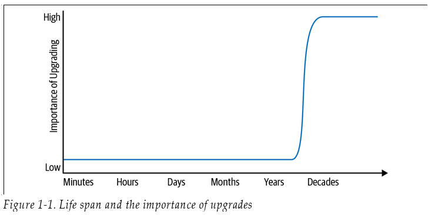
The low and high points on the expected life span spectrum suggest that there’s a transition somewhere. Somewhere along the line between a one-off program and a project that lasts for decades, a transition happens: a project must begin to react to changing externalities.7 For any project that didn’t plan for upgrades from the start, that transition is likely very painful for three reasons, each of which compounds the others:
- You’re performing a task that hasn’t yet been done for this project; more hidden assumptions have been baked-in.
- The engineers trying to do the upgrade are less likely to have experience in this sort of task.
- The size of the upgrade is often larger than usual, doing several years’ worth of upgrades at once instead of a more incremental upgrade.
预期生命周期范围的低点和高点表明某处有一个过渡。介于一次性计划和持续十年的项目，发生了转变：一个项目必须开始对不断变化的外部因素做出反应。对于任何一个从一开始就没有升级计划的项目，这种转变可能会非常痛苦，原因有三个，每一个都会使其他原因变得复杂：
- 你正在执行本项目尚未完成的任务；更多隐藏的假设已经成立。
- 尝试进行升级的工程师不太可能具有此类任务的经验。
- 升级的规模通常比平时大，一次完成几年的升级，而不是增量升级。
And thus, after actually going through such an upgrade once (or giving up part way through), it’s pretty reasonable to overestimate the cost of doing a subsequent upgrade and decide “Never again.” Companies that come to this conclusion end up committing to just throwing things out and rewriting their code, or deciding to never upgrade again. Rather than take the natural approach by avoiding a painful task, sometimes the more responsible answer is to invest in making it less painful. It all depends on the cost of your upgrade, the value it provides, and the expected life span of the project in question.
因此，在经历过一次升级（或中途放弃）之后，高估后续升级的成本并决定“永不再升级”是非常合理的。得出这个结论的公司最终承诺放弃并重写代码，或决定不再升级。有时，更负责任的答案不是采取常规的方法避免痛苦的任务，而是投入资源用于减轻痛苦。这一切都取决于升级的成本、提供的价值以及相关项目的预期生命周期。
7Your own priorities and tastes will inform where exactly that transition happens. We’ve found that most projects seem to be willing to upgrade within five years. Somewhere between 5 and 10 years seems like a conservative estimate for this transition in general.
7 你自己的优先次序和品味会告诉你这种转变到底发生在哪里。我们发现，大多数项目似乎愿意在五年内升级。一般来说，5到10年似乎是这一转变的保守估计。
Getting through not only that first big upgrade, but getting to the point at which you can reliably stay current going forward, is the essence of long-term sustainability for your project. Sustainability requires planning and managing the impact of required change. For many projects at Google, we believe we have achieved this sort of sustainability, largely through trial and error.
不仅完成了第一次大升级，而且达到可靠地保持当前状态的程度，这是项目长期可持续性的本质。可持续性要求规划和管理所需变化的影响。对于谷歌的许多项目，我们相信我们已经实现了这种持续能力，主要是通过试验和错误。
So, concretely, how does short-term programming differ from producing code with a much longer expected life span? Over time, we need to be much more aware of the difference between “happens to work” and “is maintainable.” There is no perfect solution for identifying these issues. That is unfortunate, because keeping software maintainable for the long-term is a constant battle.
那么，具体来说，短期编程与生成预期生命周期更长的代码有何不同？随着时间的推移，我们需要更多地意识到“正常工作”和“可维护”之间的区别。识别这些问题没有完美的解决方案。这是不幸的，因为保持软件的长期可维护性是一场持久战。
Hyrum’s Law 海勒姆定律
If you are maintaining a project that is used by other engineers, the most important lesson about “it works” versus “it is maintainable” is what we’ve come to call Hyrum’s Law:
*With a sufficient number of users of an API, it does not matter what you promise in the contract: all observable behaviors of your system will be depended on by somebody.*
如果你正在维护一个由其他工程师使用的项目，那么关于“有效”与“可维护”最重要的一课就是我们所说的海勒姆定律：
*当一个 API 有足够多的用户的时候，在约定中你承诺的什么都无所谓，所有在你系统里面被观察到的行为都会被一些用户直接依赖。*
In our experience, this axiom is a dominant factor in any discussion of changing software over time. It is conceptually akin to entropy: discussions of change and maintenance over time must be aware of Hyrum’s Law8 just as discussions of efficiency or thermodynamics must be mindful of entropy. Just because entropy never decreases doesn’t mean we shouldn’t try to be efficient. Just because Hyrum’s Law will apply when maintaining software doesn’t mean we can’t plan for it or try to better understand it. We can mitigate it, but we know that it can never be eradicated.
根据我们的经验，这个定律在任何关于软件随时间变化的讨论中都是一个主导因素。它在概念上类似于熵：对随时间变化和维护的讨论必须了解海勒姆定律，正如对效率或热力学的讨论必须注意熵一样。仅仅因为熵从不减少并不意味着我们不应该努力提高效率。在维护软件时，"海勒姆定律 "会适用，但这并不意味着我们不能对它进行规划或试图更好地了解它。我们可以减轻它，但我们知道，它永远不可能被根除。
Hyrum’s Law represents the practical knowledge that—even with the best of intentions, the best engineers, and solid practices for code review—. As an API owner, you will gain some flexibility and freedom by being clear about interface promises, but in practice, the complexity and difficulty of a given change also depends on how useful a user finds some observable behavior of your API. If users cannot depend on such things, your API will be easy to change. Given enough time and enough users, even the most innocuous change will break something;9 your analysis of the value of that change must incorporate the difficulty in investigating, identifying, and resolving those breakages.
海勒姆定律体现了实际知识，即便有良好的意图、顶尖的工程师和扎实的代码审查流程，也不能保证完全遵守契约或最佳实践。作为API所有者，通过明确地接口约定，你将获得一定的灵活性和自由度，但在实践中，给定更改的复杂性和难度还取决于用户对你的API的一些可观察行为的有用程度。如果用户不能依赖这些东西，那么你的API将很容易更改。如果有足够的时间和足够的用户，即使是最无害的变更也会破坏某些东西；你对变更价值的分析必须包含调查、识别和解决这些缺陷的难度。
8To his credit, Hyrum tried really hard to humbly call this “The Law of Implicit Dependencies,” but “Hyrum’s Law” is the shorthand that most people at Google have settled on.
值得称道的是，海勒姆非常努力地将其称为 "隐性依赖定律"，但 "海勒姆定律 "是谷歌公司大多数人都认可的简称。
9See “Workflow,” an xkcd comic.
见 "工作流程"，一幅xkcd漫画。
Example: Hash Ordering 哈希排序
Consider the example of hash iteration ordering. If we insert five elements into a hash-based set, in what order do we get them out?
考虑哈希迭代排序的例子。如果我们在一个基于散列的集合中插入五个元素，我们将以什么顺序将它们取出？
>>> for i in {"apple", "banana", "carrot", "durian", "eggplant"}: print(i)
...
durian
carrot
apple
eggplant
banana
Most programmers know that hash tables are non-obviously ordered. Few know the specifics of whether the particular hash table they are using is intending to provide that particular ordering forever. This might seem unremarkable, but over the past decade or two, the computing industry’s experience using such types has evolved:
- Hash flooding10 attacks provide an increased incentive for nondeterministic hash iteration.
- Potential efficiency gains from research into improved hash algorithms or hash containers require changes to hash iteration order.
- Per Hyrum’s Law, programmers will write programs that depend on the order in which a hash table is traversed, if they have the ability to do so.
大多数程序员都知道哈希表是无序的。很少有人知道他们使用的特定哈希表是否打算永远提供特定的排序。这似乎不起眼，但在过去的一二十年中，计算行业使用这类类型的经验不断发展：
- 哈希洪水攻击增加了非确定性哈希迭代的动力。
- 研究改进的散列算法或散列容器的潜在效率收益需要更改散列迭代顺序。
- 根据海勒姆定律，如有能力程序员可根据哈希表的遍历顺序编写程序。
As a result, if you ask any expert “Can I assume a particular output sequence for my hash container?” that expert will presumably say “No.” By and large that is correct, but perhaps simplistic. A more nuanced answer is, “If your code is short-lived, with no changes to your hardware, language runtime, or choice of data structure, such an assumption is fine. If you don’t know how long your code will live, or you cannot promise that nothing you depend upon will ever change, such an assumption is incorrect.” Moreover, even if your own implementation does not depend on hash container order, it might be used by other code that implicitly creates such a dependency. For example, if your library serializes values into a Remote Procedure Call (RPC) response, the RPC caller might wind up depending on the order of those values.
因此，如果你问任何一位专家“我能为我的散列容器有特定的输出序列吗？”这位专家大概会说“不”。总的来说，这是正确的，但过于简单。一个更微妙的回答是，“如果你的代码是短期的，没有对硬件、语言运行时或数据结构的选择进行任何更改，那么这样的假设是正确的。如果你不知道代码的生命周期，或者你不能保证你所依赖的任何东西都不会改变，那么这样的假设是不正确的。”，即使你自己的实现不依赖于散列容器顺序，也可能被隐式创建这种依赖关系的其他代码使用。例如，如果库将值序列化为远程过程调用（RPC）响应，则RPC调用程序可能会根据这些值的顺序结束。
This is a very basic example of the difference between “it works” and “it is correct.” For a short-lived program, depending on the iteration order of your containers will not cause any technical problems. For a software engineering project, on the other hand, such reliance on a defined order is a risk—given enough time, something will make it valuable to change that iteration order. That value can manifest in a number of ways, be it efficiency, security, or merely future-proofing the data structure to allow for future changes. When that value becomes clear, you will need to weigh the trade- offs between that value and the pain of breaking your developers or customers.
这是“可用”和“正确”之间区别的一个非常基本的例子。对于一个短期的程序，依赖容器的迭代顺序不会导致任何技术问题。另一方面，对于一个软件工程项目来说，如果有足够的时间，这种对已定义顺序的依赖是一种风险使更改迭代顺序变得有价值。这种价值可以通过多种方式体现出来，无论是效率、安全性，还是仅仅是数据结构的未来验证，以允许将来的更改。当这一价值变得清晰时，你需要权衡这一价值与破坏开发人员或客户的痛苦之间的平衡。
10A type of Denial-of-Service (DoS) attack in which an untrusted user knows the structure of a hash table and the hash function and provides data in such a way as to degrade the algorithmic performance of operations on the table.
一种拒绝服务（DoS）攻击，其中不受信任的用户知道哈希表和哈希函数的结构，并以降低表上操作的算法性能的方式提供数据。
Some languages specifically randomize hash ordering between library versions or even between execution of the same program in an attempt to prevent dependencies. But even this still allows for some Hyrum’s Law surprises: there is code that uses hash iteration ordering as an inefficient random-number generator. Removing such randomness now would break those users. Just as entropy increases in every thermodynamic system, Hyrum’s Law applies to every observable behavior.
一些语言专门在库版本之间，甚至在执行相同程序的随机散列排序，以防止依赖关系。但即使这样，也会出现一些令人惊讶的海勒姆定律：有些代码使用散列迭代排序作为一个低效的随机数生成器。现在消除这种随机性将破坏这些用户原使用方式。正如熵在每个热力学系统中增加一样，海勒姆定律适用于所有可观察到的行为。
Thinking over the differences between code written with a “works now” and a “works indefinitely” mentality, we can extract some clear relationships. Looking at code as an artifact with a (highly) variable lifetime requirement, we can begin to categorize programming styles: code that depends on brittle and unpublished features of its dependencies is likely to be described as “hacky” or “clever,” whereas code that follows best practices and has planned for the future is more likely to be described as “clean” and “maintainable.” Both have their purposes, but which one you select depends crucially on the expected life span of the code in question. We’ve taken to saying, “It’s programming if ‘clever’ is a compliment, but it’s software engineering if ‘clever’ is an accusation.”
思考一下用“当前可用”和“一直可用”心态编写的代码之间的差异，我们可以提取出一些明确的关系。将代码视为具有（高度）可变生命周期需求的构件，我们可以开始对编程风格进行分类：依赖其依赖性的脆弱和未发布特性的代码可能被描述为“黑客”或“聪明”而遵循最佳实践并为未来规划的代码更可能被描述为“干净”和“可维护”。两者都有其目的，但你选择哪一个关键取决于所讨论代码的预期生命周期。我们常说，“如果‘聪明’是一种恭维，那就是程序，如果‘聪明’是一种指责，那就是软件工程。”
Why Not Just Aim for “Nothing Changes”? 为什么不以“无变化”为目标？
Implicit in all of this discussion of time and the need to react to change is the assumption that change might be necessary. Is it?
在所有关于时间和对变化作出反应的讨论中，隐含着一个假设，即变化可能是必要的？
As with effectively everything else in this book, it depends. We’ll readily commit to “For most projects, over a long enough time period, everything underneath them might need to be changed.” If you have a project written in pure C with no external dependencies (or only external dependencies that promise great long-term stability, like POSIX), you might well be able to avoid any form of refactoring or difficult upgrade. C does a great job of providing stability—in many respects, that is its primary purpose.
与本书中的其他内容一样，这取决于实际情况。我们很乐意承诺“对于大多数项目，在足够长的时间内，它们下面的一切都可能需要更改。”如果你有一个用纯C编写的项目，没有外部依赖项（或者只有保证长期稳定性的外部依赖项，如POSIX），你完全可以避免任何形式的重构或困难的升级。C在提供多方面稳定性方面做了大量工作，这是其首要任务。
Most projects have far more exposure to shifting underlying technology. Most programming languages and runtimes change much more than C does. Even libraries implemented in pure C might change to support new features, which can affect downstream users. Security problems are disclosed in all manner of technology, from processors to networking libraries to application code. Every piece of technology upon which your project depends has some (hopefully small) risk of containing critical bugs and security vulnerabilities that might come to light only after you’ve started relying on it. If you are incapable of deploying a patch for Heartbleed or mitigating speculative execution problems like Meltdown and Spectre because you’ve assumed (or promised) that nothing will ever change, that is a significant gamble.
大多数项目更多地接触到不断变化的基础技术。大多数编程语言和运行时的变化要比C大得多。甚至用纯C实现的库也可能改变以支持新特性，这可能会影响下游用户。从处理器到网络库，再到应用程序代码，各种技术都会暴露安全问题。你的项目所依赖的每一项技术都有一些（希望很小）包含关键bug和安全漏洞的风险，这些漏洞只有在你开始依赖它之后才会暴露出来。如果你无法部署心脏出血或缓解推测性执行漏洞（如熔毁和幽灵）的修补程序，因为你假设（或保证）什么都不会改变，这是一场巨大的赌博。
Efficiency improvements further complicate the picture. We want to outfit our datacenters with cost-effective computing equipment, especially enhancing CPU efficiency. However, algorithms and data structures from early-day Google are simply less efficient on modern equipment: a linked-list or a binary search tree will still work fine, but the ever-widening gap between CPU cycles versus memory latency impacts what “efficient” code looks like. Over time, the value in upgrading to newer hardware can be diminished without accompanying design changes to the software. Backward compatibility ensures that older systems still function, but that is no guarantee that old optimizations are still helpful. Being unwilling or unable to take advantage of such opportunities risks incurring large costs. Efficiency concerns like this are particularly subtle: the original design might have been perfectly logical and following reasonable best practices. It’s only after an evolution of backward-compatible changes that a new, more efficient option becomes important. No mistakes were made, but the passage of time still made change valuable.
效率的提高使情况更加复杂。我们希望为数据中心配备经济高效的计算设备，特别是提高CPU效率。然而，早期谷歌的算法和数据结构在现代设备上效率较低：链表或二叉搜索树仍能正常工作，但CPU周期与内存延迟之间的差距不断扩大，影响了看起来还像“高效”代码。随着时间的推移，升级到较新硬件的价值会降低，而无需对软件进行相应的设计更改。向后兼容性确保了旧系统仍能正常工作，但这并不能保证旧的优化仍然有用。不愿意或无法利用这些机会可能会带来巨大的成本。像这样的效率问题尤其微妙：最初的设计可能完全符合逻辑，并遵循合理的最佳实践。只有在向后兼容的变化演变之后，新的、更有效的选择才变得重要。虽然没有犯错误，但随着时间的推移，变化仍然是有价值的。
Concerns like those just mentioned are why there are large risks for long-term projects that haven’t invested in sustainability. We must be capable of responding to these sorts of issues and taking advantage of these opportunities, regardless of whether they directly affect us or manifest in only the transitive closure of technology we build upon. Change is not inherently good. We shouldn’t change just for the sake of change. But we do need to be capable of change. If we allow for that eventual necessity, we should also consider whether to invest in making that capability cheap. As every system administrator knows, it’s one thing to know in theory that you can recover from tape, and another to know in practice exactly how to do it and how much it will cost when it becomes necessary. Practice and expertise are great drivers of efficiency and reliability.
像刚才提到的那些担忧，没有对可持续性的长期项目进行投入是存在巨大风险。我们必须能够应对这些问题，并利用好机会，无论它们是否直接影响我们，或者仅仅表现为我们所建立的技术的过渡性封闭中。变化本质上不是好事。我们不应该仅仅为了改变而改变。但我们确实需要有能力改变。如果我们考虑到最终的必要性，我们也应该考虑是否加大投入使这种能力变得简单易用（成本更低）。正如每个系统管理员都知道的那样，从理论上知道你可以从磁带恢复是一回事，在实践中确切地知道如何进行恢复以及在必要时需要花费多少钱是另一回事。实践和专业知识是效率和可靠性的重要驱动力。
Scale and Efficiency 规模和效率
As noted in the Site Reliability Engineering (SRE) book,11 Google’s production system as a whole is among the most complex machines created by humankind. The complexity involved in building such a machine and keeping it running smoothly has required countless hours of thought, discussion, and redesign from experts across our organization and around the globe. So, we have already written a book about the complexity of keeping that machine running at that scale.
正如（SRE）这本书所指出的，谷歌的生产系统作为一个整体是人类创造的最复杂的系统之一。构建这样复杂系统并保持其平稳运行所涉及的复杂性需要我们组织和全球各地的专家进行无数小时的思考、讨论和重构。因此，我们已经写了一本书，讲述了保持机器以这种规模运行的复杂性。
Much of this book focuses on the complexity of scale of the organization that produces such a machine, and the processes that we use to keep that machine running over time. Consider again the concept of codebase sustainability: “Your organization’s codebase is sustainable when you are able to change all of the things that you ought to change, safely, and can do so for the life of your codebase.” Hidden in the discussion of capability is also one of costs: if changing something comes at inordinate cost, it will likely be deferred. If costs grow superlinearly over time, the operation clearly is not scalable.12 Eventually, time will take hold and something unexpected will arise that you absolutely must change. When your project doubles in scope and you need to perform that task again, will it be twice as labor intensive? Will you even have the human resources required to address the issue next time?
本书的大部分内容都集中在产生这种系统的组织规模的复杂性，以及我们用来保持系统长期运行的过程。再考虑代码库可持续性的概念：“当你能够安全地改变你应该改变的所有事情，你的组织的代码库是可持续的，并且可以为你的代码库的生命做这样的事情。”隐藏在能力的讨论中也是成本的一个方面：如果改变某事的代价太大，它可能会被推迟。如果成本随着时间的推移呈超线性增长，运营显然是不可扩展的。最终，时间会占据主导地位，出现一些意想不到的情况，你必须改变。当你的项目范围扩大了一倍，并且你需要再次执行该任务时，它会是劳动密集型的两倍吗？下次你是否有足够的人力资源来解决这个问题？
Human costs are not the only finite resource that needs to scale. Just as software itself needs to scale well with traditional resources such as compute, memory, storage, and bandwidth, the development of that software also needs to scale, both in terms of human time involvement and the compute resources that power your development workflow. If the compute cost for your test cluster grows superlinearly, consuming more compute resources per person each quarter, you’re on an unsustainable path and need to make changes soon.
人力成本不是唯一需要扩大规模的有限资源。就像软件本身需要与传统资源（如计算、内存、存储和带宽）进行良好的可扩展一样，软件的开发也需要进行扩展，包括人力时间的参与和支持开发工作流程的计算资源。如果测试集群的计算成本呈超线性增长，每个季度人均消耗更多的计算资源，那么你的项目就走上了一条不可持续的道路，需要尽快做出改变。
Finally, the most precious asset of a software organization—the codebase itself—also needs to scale. If your build system or version control system scales superlinearly over time, perhaps as a result of growth and increasing changelog history, a point might come at which you simply cannot proceed. Many questions, such as “How long does it take to do a full build?”, “How long does it take to pull a fresh copy of the repository?”, or “How much will it cost to upgrade to a new language version?” aren’t actively monitored and change at a slow pace. They can easily become like the metaphorical boiled frog; it is far too easy for problems to worsen slowly and never manifest as a singular moment of crisis. Only with an organization-wide awareness and commitment to scaling are you likely to keep on top of these issues.
最后，软件系统最宝贵的资产代码库本身也需要扩展。如果你的构建系统或版本控制系统随着时间的推移呈超线性扩展，也许是由于内容增长和不断增加的变更日志历史，那么可能会出现无法持续的情况。许多问题，如“完成完整构建需要多长时间？”、“拉一个新的版本库需要多长时间？”或“升级到新语言版本需要多少成本？”都没有受到有效的监管，并且效率变得缓慢。这些问题很容易地变得像温水煮青蛙；问题很容易慢慢恶化，而不会表现为单一的危机时刻。只有在整个组织范围内提高意识并致力于扩大规模，才可能保持对这些问题的关注。
Everything your organization relies upon to produce and maintain code should be scalable in terms of overall cost and resource consumption. In particular, everything your organization must do repeatedly should be scalable in terms of human effort. Many common policies don’t seem to be scalable in this sense.
你的组织生产和维护代码所依赖的一切都应该在总体成本和资源消耗方面具有可扩展性。特别是，你的组织必须重复做的每件事都应该在人力方面具有可扩展性。从这个意义上讲，许多通用策略似乎不具有可扩展性。
11Beyer, B. et al. Site Reliability Engineering: How Google Runs Production Systems. (Boston: O’Reilly Media,2016).
Beyer, B. et al. Site Reliability Engineering: 谷歌如何运行生产系统。(Boston: O'Reilly Media, 2016).
12Whenever we use “scalable” in an informal context in this chapter, we mean “sublinear scaling with regard to human interactions.”
在本章中，当我们在非正式语境中使用“可扩展性”时，我们的意思是“在人类交互的次线性伸缩性”
Policies That Don’t Scale 不可扩展的策略
With a little practice, it becomes easier to spot policies with bad scaling properties. Most commonly, these can be identified by considering the work imposed on a single engineer and imagining the organization scaling up by 10 or 100 times. When we are 10 times larger, will we add 10 times more work with which our sample engineer needs to keep up? Does the amount of work our engineer must perform grow as a function of the size of the organization? Does the work scale up with the size of the codebase? If either of these are true, do we have any mechanisms in place to automate or optimize that work? If not, we have scaling problems.
只要稍加练习，就可以更容易地发现具有不可扩展的策略。最常见的情况是，可以通过考虑施加在单个设计并想象组织规模扩大10倍或100倍。当我们的规模增大10倍时，我们会增加10倍的工作量，而我们的工程师能跟得上吗？我们的工程师的工作量是否随着组织的规模而增长？工作是否随着代码库的大小而变多？如果这两种情况都是真实的，我们是否有机制来自动化或优化这项工作？如果没有，我们就有扩展问题。
Consider a traditional approach to deprecation. We discuss deprecation much more in Chapter 15, but the common approach to deprecation serves as a great example of scaling problems. A new Widget has been developed. The decision is made that everyone should use the new one and stop using the old one. To motivate this, project leads say “We’ll delete the old Widget on August 15th; make sure you’ve converted to the new Widget.”
考虑传统的弃用方式。我们在第15章中详细讨论了弃用，但常用的弃用方法是扩展问题的一个很好的例子。开发了一个新的小组件。决定是每个人都应该使用新的，停止使用旧的。为了激发这一点，项目负责人说：“我们将在8月15日删除旧的小组件；确保你已转换为新的小组件。”
This type of approach might work in a small software setting but quickly fails as both the depth and breadth of the dependency graph increases. Teams depend on an ever- increasing number of Widgets, and a single build break can affect a growing percentage of the company. Solving these problems in a scalable way means changing the way we do deprecation: instead of pushing migration work to customers, teams can internalize it themselves, with all the economies of scale that provides.
这种方法可能适用于小型软件项目，但随着依赖关系图的深度和广度的增加，很快就会失败。团队依赖越来越多的小部件，单个构建中断可能会影响公司不断增长的百分比。以一种可扩展的方式解决这些问题，意味着需要改变我们废弃的方式： 不是将迁移工作推给客户，团队可以将其内部消化，并提供所需资源投入。
In 2012, we tried to put a stop to this with rules mitigating churn: infrastructure teams must do the work to move their internal users to new versions themselves or do the update in place, in backward-compatible fashion. This policy, which we’ve called the “Churn Rule,” scales better: dependent projects are no longer spending progressively greater effort just to keep up. We’ve also learned that having a dedicated group of experts execute the change scales better than asking for more maintenance effort from every user: experts spend some time learning the whole problem in depth and then apply that expertise to every subproblem. Forcing users to respond to churn means that every affected team does a worse job ramping up, solves their immediate problem, and then throws away that now-useless knowledge. Expertise scales better.
2012年，我们试图通过降低流失规则来阻止这种情况：基础架构团队必须将内部用户迁移到新版本，或者以向后兼容的方式进行更新。我们称之为“流失规则”的这一策略具有更好的扩展性：依赖项目不再为了跟上进度而花费更多的精力。我们还了解到，有一个专门的专家组来执行变更规模比要求每个用户付出更多的维护工作要好：专家们花一些时间深入学习整个问题，然后将专业知识应用到每个子问题上。迫使用户对流失作出反应意味着每个受影响的团队做了更糟糕的工作，解决了他们眼前的问题，然后扔掉了那些对现在无效的知识。专业知识的扩展性更好。
The traditional use of development branches is another example of policy that has built-in scaling problems. An organization might identify that merging large features into trunk has destabilized the product and conclude, “We need tighter controls on when things merge. We should merge less frequently.” This leads quickly to every team or every feature having separate dev branches. Whenever any branch is decided to be “complete,” it is tested and merged into trunk, triggering some potentially expensive work for other engineers still working on their dev branch, in the form of resyncing and testing. Such branch management can be made to work for a small organization juggling 5 to 10 such branches. As the size of an organization (and the number of branches) increases, it quickly becomes apparent that we’re paying an ever-increasing amount of overhead to do the same task. We’ll need a different approach as we scale up, and we discuss that in Chapter 16.
传统的开发分支的使用是另一个有内在扩展问题的例子。一个组织可能会发现，将大的功能分支合并到主干中会破坏产品的稳定性，并得出结论：“我们需要对分支的合并时间进行控制，还要降低合并的频率”。这很快会导致每个团队或每个功能都有单独的开发分支。每当任何分支被确定为“完整”时，都会对其进行测试并合并到主干中，从而引发其他仍在开发分支上工作的工程师以重新同步和测试，造成巨大的工作量。这样的分支机构管理模式可以应用在小型组织里，管理5到10个这样的分支机构。随着一个组织的规模（以及分支机构的数量）的增加，我们很快就会发现，为了完成同样的任务，我们付出越来越多的管理成本。随着规模的扩大，我们需要一种不同的方法，我们将在第16章中对此进行讨论。
Policies That Scale Well 规模化策略
What sorts of policies result in better costs as the organization grows? Or, better still, what sorts of policies can we put in place that provide superlinear value as the organization grows?
随着公司的发展，什么样的策略会带来更低的成本？或者，最好是，随着组织化的发展，我们可以制定什么样的策略来提供超高的价值？
One of our favorite internal policies is a great enabler of infrastructure teams, protecting their ability to make infrastructure changes safely. “If a product experiences outages or other problems as a result of infrastructure changes, but the issue wasn’t surfaced by tests in our Continuous Integration (CI) system, it is not the fault of the infrastructure change.” More colloquially, this is phrased as “If you liked it, you should have put a CI test on it,” which we call “The Beyoncé Rule.”13 From a scaling perspective, the Beyoncé Rule implies that complicated, one-off bespoke tests that aren’t triggered by our common CI system do not count. Without this, an engineer on an infrastructure team could conceivably need to track down every team with any affected code and ask them how to run their tests. We could do that when there were a hundred engineers. We definitely cannot afford to do that anymore.
我们最喜欢的内部策略之一是为基础架构团队提供强大的支持，维护他们安全地进行基础措施更改的能力。“如果一个产品由于基础架构更改而出现停机或其他问题，但我们的持续集成（CI）系统中的测试没有发现问题，这不是基础架构变更的错。”更通俗地说，这是“如果你喜欢它，你应该对它进行CI测试”，我们称之为“碧昂斯规则。”从可伸缩性的角度来看，碧昂斯规则意味着复杂的、一次性的定制测试（不是由我们的通用CI系统触发的）不算数。如果没有这一点，基础架构团队的工程师需要跟踪每个有任何受影响代码的团队，问他们如何进行测试。当有一百个工程师的时候，我们可以这样做。我们绝对不能这样做。
We’ve found that expertise and shared communication forums offer great value as an organization scales. As engineers discuss and answer questions in shared forums, knowledge tends to spread. New experts grow. If you have a hundred engineers writing Java, a single friendly and helpful Java expert willing to answer questions will soon produce a hundred engineers writing better Java code. Knowledge is viral, experts are carriers, and there’s a lot to be said for the value of clearing away the common stumbling blocks for your engineers. We cover this in greater detail in Chapter 3.
我们发现，随着组织规模的扩大，专业知识和共享交流论坛提供了巨大的价值。随着工程师在共享论坛中讨论和回答问题，知识往往会传播。新的专家人数不断增加。如果你有100名工程师编写Java，那么一位愿意回答问题的友好且乐于助人的Java专家很快就会产生一个数百名工程师编写更好的Java代码。知识是病毒，专家是载体，扫除工程师常见的绊脚石是非常有价值的。我们将在第3章更详细地介绍这一点。
13This is a reference to the popular song “Single Ladies,” which includes the refrain “If you liked it then you shoulda put a ring on it.”
这是指流行歌曲《单身女士》，其中包括 "如果你喜欢它，你就应该给它戴上戒指。
Example: Compiler Upgrade 示例：编译器升级
Consider the daunting task of upgrading your compiler. Theoretically, a compiler upgrade should be cheap given how much effort languages take to be backward compatible, but how cheap of an operation is it in practice? If you’ve never done such an upgrade before, how would you evaluate whether your codebase is compatible with that change?
考虑升级编译器的艰巨任务。从理论上讲，编译器的升级应该是简单的，因为语言需要多少工作才能向后兼容，但是在实际操作中又有多简单呢？如果你以前从未做过这样的升级，你将如何评价你的代码库是否与兼容升级？
In our experience, language and compiler upgrades are subtle and difficult tasks even when they are broadly expected to be backward compatible. A compiler upgrade will almost always result in minor changes to behavior: fixing miscompilations, tweaking optimizations, or potentially changing the results of anything that was previously undefined. How would you evaluate the correctness of your entire codebase against all of these potential outcomes?
根据我们的经验，语言和编译器升级是微妙而困难的任务，即使人们普遍认为它们是向后兼容的。编译器升级几乎总是会导致编译的微小变化：修复错误编译、调整优化，或者潜在地改变任何以前未定义的结果。你将如何针对所有这些潜在的结果来评估你整个代码库的正确性？
The most storied compiler upgrade in Google’s history took place all the way back in 2006. At that point, we had been operating for a few years and had several thousand engineers on staff. We hadn’t updated compilers in about five years. Most of our engineers had no experience with a compiler change. Most of our code had been exposed to only a single compiler version. It was a difficult and painful task for a team of (mostly) volunteers, which eventually became a matter of finding shortcuts and simplifications in order to work around upstream compiler and language changes that we didn’t know how to adopt.14 In the end, the 2006 compiler upgrade was extremely painful. Many Hyrum’s Law problems, big and small, had crept into the codebase and served to deepen our dependency on a particular compiler version. Breaking those implicit dependencies was painful. The engineers in question were taking a risk: we didn’t have the Beyoncé Rule yet, nor did we have a pervasive CI system, so it was difficult to know the impact of the change ahead of time or be sure they wouldn’t be blamed for regressions.
谷歌历史上最具传奇色彩的编译器升级发生在2006年。当时，我们已经运行了几年，拥有数千名工程师。我们大约有五年没有升级过编译器。我们的大多数工程师都没有升级编译器的经验。我们的大部分代码只针对在单一编译器版本。对于一个由（大部分）志愿者组成的团队来说，这是一项艰难而痛苦的任务，最终变成了寻找捷径和简化的问题，以便绕过我们不知道如何采用的上游编译器和语言变化。最后，2006年的编译器升级过程非常痛苦。许多海勒姆定律问题，无论大小，都潜入了代码库，加深了我们对特定编译器版本的依赖。打破这些隐式依赖性是痛苦的。相关工程师正在冒风险：我们还没有碧昂斯规则，也没有通用的CI系统，因此很难提前知道更改的影响，或者确保他们不会因回退而受到指责。
This story isn’t at all unusual. Engineers at many companies can tell a similar story about a painful upgrade. What is unusual is that we recognized after the fact that the task had been painful and began focusing on technology and organizational changes to overcome the scaling problems and turn scale to our advantage: automation (so that a single human can do more), consolidation/consistency (so that low-level changes have a limited problem scope), and expertise (so that a few humans can do more).
这个故事一点也不稀奇。许多公司的工程师都可以讲述一个关于痛苦升级的故事。不同的是，我们在经历了痛苦的任务之后认识到了这一点，并开始关注技术和组织变革，以克服规模问题，并将规模转变为我们的优势：自动化（这样一个人就可以做到更多）、整合/一致性（这样低级别的更改影响有限的问题范围）和专业知识（以便少数人就可以做得更多）。
The more frequently you change your infrastructure, the easier it becomes to do so. We have found that most of the time, when code is updated as part of something like a compiler upgrade, it becomes less brittle and easier to upgrade in the future. In an ecosystem in which most code has gone through several upgrades, it stops depending on the nuances of the underlying implementation; instead, it depends on the actual abstraction guaranteed by the language or OS. Regardless of what exactly you are upgrading, expect the first upgrade for a codebase to be significantly more expensive than later upgrades, even controlling for other factors.
你更改基础设施的频率越高，更改就越容易。我们发现，在大多数情况下，当代码作为编译器升级的一部分进行更新时，它会变得没那么脆弱，将来更容易升级。大多数代码都经历了几次升级的一个系统中，它的停止取决于底层实现的细微差别。相反，它取决于语言或操作系统所保证的抽象。无论你升级的是什么，代码库的第一次升级都比以后的升级要复杂得多，甚至可以控制其他因素。
14Specifically, interfaces from the C++ standard library needed to be referred to in namespace std, and an optimization change for std::string turned out to be a significant pessimization for our usage, thus requiring some additional workarounds.
具体来说，来自C++标准库的接口需要在命名空间std中被引用，而针对std::string的优化改变对我们的使用来说是一个重大的减值，因此需要一些额外的解决方法。
Through this and other experiences, we’ve discovered many factors that affect the flexibility of a codebase:
- Expertise
We know how to do this; for some languages, we’ve now done hundreds of compiler upgrades across many platforms. - Stability
There is less change between releases because we adopt releases more regularly; for some languages, we’re now deploying compiler upgrades every week or two. - Conformity
There is less code that hasn’t been through an upgrade already, again because we are upgrading regularly. - Familiarity
Because we do this regularly enough, we can spot redundancies in the process of performing an upgrade and attempt to automate. This overlaps significantly with SRE views on toil.15 - Policy
We have processes and policies like the Beyoncé Rule. The net effect of these processes is that upgrades remain feasible because infrastructure teams do not need to worry about every unknown usage, only the ones that are visible in our CI systems.
通过这些和其他经验，我们发现了许多影响代码库灵活性的因素：
- 专业知识 我们知道如何做到这一点；对于某些语言，我们现在已经在许多平台上进行了数百次编译器升级。
- 稳定性
版本之间的更改更少，因为我们更有规律的采用版本；对于某些语言，我们现在每一到两周进行一次编译器升级部署。 - 一致性
没有经过升级的代码更少了，这也是因为我们正在定期升级。 - 熟悉
因为我们经常这样做，所以我们可以在执行升级的过程中发现冗余并尝试自动化。这是与SRE观点一致的地方。 - 策略
我们有类似碧昂斯规则的流程和策略。这些程序的净效果是，升级仍然是可行的，因为基础设施团队不需要担心每一个未知的使用，只需要担心我们的CI系统中常规的使用。
The underlying lesson is not about the frequency or difficulty of compiler upgrades, but that as soon as we became aware that compiler upgrade tasks were necessary, we found ways to make sure to perform those tasks with a constant number of engineers, even as the codebase grew.16 If we had instead decided that the task was too expensive and should be avoided in the future, we might still be using a decade-old compiler version. We would be paying perhaps 25% extra for computational resources as a result of missed optimization opportunities. Our central infrastructure could be vulnerable to significant security risks given that a 2006-era compiler is certainly not helping to mitigate speculative execution vulnerabilities. Stagnation is an option, but often not a wise one.
潜在的教训不是关于编译器升级的频率或难度，而是一旦我们意识到编译器升级任务是必要的，我们就找到了方法，确保在代码库增长的情况下，由固定数量的工程师执行这些任务。如果我们认为任务成本太高，应该学会避免，我们可以仍然使用十年前的编译器版本。由于错过了优化机会，我们需要额外支付25%的计算资源。考虑到2006年的编译器对缓解推测性执行漏洞没有效果，我们的中央基础设施可能会面临重大的安全风险，这不是一个明智的选择。
15Beyer et al. Site Reliability Engineering: How Google Runs Production Systems, Chapter 5, “Eliminating Toil.”
Beyer等人，《SRE：Google运维解密》,第五章 减少琐事。
16In our experience, an average software engineer (SWE) produces a pretty constant number of lines of code per unit time. For a fixed SWE population, a codebase grows linearly—proportional to the count of SWE- months over time. If your tasks require effort that scales with lines of code, that’s concerning.
根据我们的经验，平均软件工程师（SWE）每单位时间产生相当恒定的代码行数。对于固定的SWE总体，随着时间的推移，代码库的增长与SWE月数成线性比例。如果您的任务所需的工作量与代码行数成正比，那就令人担忧了。
Shifting Left 左移
One of the broad truths we’ve seen to be true is the idea that finding problems earlier in the developer workflow usually reduces costs. Consider a timeline of the developer workflow for a feature that progresses from left to right, starting from conception and design, progressing through implementation, review, testing, commit, canary, and eventual production deployment. Shifting problem detection to the “left” earlier on this timeline makes it cheaper to fix than waiting longer, as shown in Figure 1-2.
我们发现，在开发人员工作流程的早期发现问题通常可以降低成本，这是一个普遍的真理。考虑一下开发人员工作流程的时间轴，该时间轴从左到右依次为：从构思和设计开始，经过实施、审核、测试、提交、金丝雀和最终的生产部署。如图 1-2 所示，在此时间轴上将问题检测提前到 "左侧"，解决问题的成本会比等待时间更长。
This term seems to have originated from arguments that security mustn’t be deferred until the end of the development process, with requisite calls to “shift left on security.” The argument in this case is relatively simple: if a security problem is discovered only after your product has gone to production, you have a very expensive problem. If it is caught before deploying to production, it may still take a lot of work to identify and remedy the problem, but it’s cheaper. If you can catch it before the original developer commits the flaw to version control, it’s even cheaper: they already have an understanding of the feature; revising according to new security constraints is cheaper than committing and forcing someone else to triage it and fix it.
这个术语似乎源一种观点，即安全问题不能推迟到开发过程的最后阶段，必须要求“在安全上向左转移”。这种情况下的论点相对简单：如果安全问题是在产品投入生产后才发现的，修复的成本就非常高。如果在部署到生产之前就发现了安全问题，那也需要花费大量的工作来检测和修复问题，但成本更低些。如果你能够在最初的开发之前发现安全问题，将缺陷提交到版本控制就被发现，修复的成本更低：他们已经了解该功能；根据新的安全约束规范进行开发，要比提交代码后再让其他人分类标识并修复它更简单。
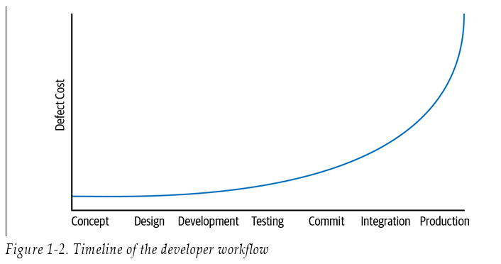
The same basic pattern emerges many times in this book. Bugs that are caught by static analysis and code review before they are committed are much cheaper than bugs that make it to production. Providing tools and practices that highlight quality, reliability, and security early in the development process is a common goal for many of our infrastructure teams. No single process or tool needs to be perfect, so we can assume a defense-in-depth approach, hopefully catching as many defects on the left side of the graph as possible.
同样的基本模式在本书中多次出现。在提交之前通过静态分析和代码审查发现的bug要比投入生产的bug成本更低。在开发过程的早期提供高质量、可靠性和安全性的工具和实践是我们许多基础架构团队的共同目标。没有一个过程或工具是完美的，所以我们可以采取纵深防御的方法，希望尽早抓住图表左侧的缺陷。
Trade-offs and Costs 权衡和成本
If we understand how to program, understand the lifetime of the software we’re maintaining, and understand how to maintain it as we scale up with more engineers producing and maintaining new features, all that is left is to make good decisions. This seems obvious: in software engineering, as in life, good choices lead to good outcomes. However, the ramifications of this observation are easily overlooked. Within Google, there is a strong distaste for “because I said so.” It is important for there to be a decider for any topic and clear escalation paths when decisions seem to be wrong, but the goal is consensus, not unanimity. It’s fine and expected to see some instances of “I don’t agree with your metrics/valuation, but I see how you can come to that conclusion.” Inherent in all of this is the idea that there needs to be a reason for everything; “just because,” “because I said so,” or “because everyone else does it this way” are places where bad decisions lurk. Whenever it is efficient to do so, we should be able to explain our work when deciding between the general costs for two engineering options.
如果我们了解如何编程，了解我们所维护的软件的生命周期，并且随着在我们随着更多的工程师一起开发和维护新功能，了解扩大规模时如何运维它，那么剩下的就是做出正确的决策。这是显而易见的：在软件工程中，如同生活一样，好的选择会带来好的结果。然而，这一观点很容易被忽视。在谷歌内部，人们对“因为我这么说了”有反对的意见。重要的是，任何议题都要有一个决策者，当决策是错误的时候，要有明确的改进路径，但目标是共识，而不是一致。看到一些 "我不同意你的衡量标准/评价，但我知道你是如何得出这个结论的 "的情况是没有问题的，也是可以预期的。所有这一切的内在想法是，每件事都需要一个理由；“仅仅因为”、“因为我这么说”或“因为其他人都这样做”是潜在错误的决策。 只要这样做是有效的，在决定两个工程方案的一般成本时，我们应该能够解释清楚。
What do we mean by cost? We are not only talking about dollars here. “Cost” roughly translates to effort and can involve any or all of these factors:
- Financial costs (e.g., money)
- Resource costs (e.g., CPU time)
- Personnel costs (e.g., engineering effort)
- Transaction costs (e.g., what does it cost to take action?)
- Opportunity costs (e.g., what does it cost to not take action?)
- Societal costs (e.g., what impact will this choice have on society at large?)
我们所说的成本是什么呢？我们这里不仅仅是指金钱。“成本”大致可以转化为努力的方向，可以包括以下任何或所有因素：
- 财务成本（如金钱）
- 资源成本（如CPU时间）
- 人员成本（例如，工作量）
- 交易成本（例如，采取行动的成本是多少？）
- 机会成本（例如，不采取行动的成本是多少？）
- 社会成本（例如，这个选择将对整个社会产生什么影响？）
Historically, it’s been particularly easy to ignore the question of societal costs. However, Google and other large tech companies can now credibly deploy products with billions of users. In many cases, these products are a clear net benefit, but when we’re operating at such a scale, even small discrepancies in usability, accessibility, fairness, or potential for abuse are magnified, often to the detriment of groups that are already marginalized. Software pervades so many aspects of society and culture; therefore, it is wise for us to be aware of both the good and the bad that we enable when making product and technical decisions. We discuss this much more in Chapter 4.
从历史上看，忽视社会成本的问题尤其容易出现。然而，谷歌和其他大型科技公司现在可以可靠地部署拥有数十亿用户的产品。在许多情况下，这些产品是高净效益的，但当我们以这样的规模运营时，即使在可用性、可访问性和公平性方面或潜在的滥用方面的微小差异也会被放大，往往对边缘化的群体产生不利影响。软件渗透到社会和文化的各个方面；因此，明智的做法是，在做出产品和技术决策时，我们要意识到我们所能带来的好处和坏处。我们将在第4章对此进行更多讨论。
In addition to the aforementioned costs (or our estimate of them), there are biases: status quo bias, loss aversion, and others. When we evaluate cost, we need to keep all of the previously listed costs in mind: the health of an organization isn’t just whether there is money in the bank, it’s also whether its members are feeling valued and productive. In highly creative and lucrative fields like software engineering, financial cost is usually not the limiting factor—personnel cost usually is. Efficiency gains from keeping engineers happy, focused, and engaged can easily dominate other factors, simply because focus and productivity are so variable, and a 10-to-20% difference is easy to imagine.
除了上述的成本（或我们对其的估计），还有一些偏差：维持现状偏差（个体在决策时，倾向于不作为、维持当前的或者以前的决策的一种现象。这一定义揭示个体在决策时偏好事件当前的状态，而且不愿意采取行动来改变这一状态，当面对一系列决策选项时，倾向于选择现状选项），损失厌恶偏差（人们面对同样的损失和收益时感到损失对情绪影响更大）等。当我们评估成本时，我们需要牢记之前列出的所有成本：一个组织的健康不仅仅是银行里是否有钱，还包括其成员是否感到有价值和有成就感。在软件等高度创新和利润丰厚的领域在工程设计中，财务成本通常不是限制因素，而人力资源是。保持工程师的快乐、专注和参与所带来的效率提升会成为主导因素，仅仅是因为专注力和生产力变化大，会有10-20%的差异很容易想象。
Example: Markers 示例：记号笔
In many organizations, whiteboard markers are treated as precious goods. They are tightly controlled and always in short supply. Invariably, half of the markers at any given whiteboard are dry and unusable. How often have you been in a meeting that was disrupted by lack of a working marker? How often have you had your train of thought derailed by a marker running out? How often have all the markers just gone missing, presumably because some other team ran out of markers and had to abscond with yours? All for a product that costs less than a dollar.
在许多组织中，白板记号笔被视为贵重物品。它们受到严格的控制，而且总是供不应求。在任何的白板上，都有一半的记号笔是干的，无法使用。你有多少次因为没有一个好用的记号笔而中断会议进程？多少次因为记号笔水用完而导致思路中断？又有多少次，所有的记号笔都不翼而飞，大概是因为其他团队的记号笔用完了，不得不拿走你的记号笔？所有这些都是因为一个价格不到一美元的产品。
Google tends to have unlocked closets full of office supplies, including whiteboard markers, in most work areas. With a moment’s notice it is easy to grab dozens of markers in a variety of colors. Somewhere along the line we made an explicit trade- off: it is far more important to optimize for obstacle-free brainstorming than to protect against someone wandering off with a bunch of markers.
谷歌往往在大多数工作区域都有未上锁的柜子，里面装满了办公用品，包括记号笔。只要稍加注意，就可以很容易地拿到各种颜色的几十支记号笔。在某种程度上，我们做了一个明确的权衡：优化无障碍头脑风暴要比防止有人拿着一堆记号笔走神重要得多。
We aim to have the same level of eyes-open and explicit weighing of the cost/benefit trade-offs involved for everything we do, from office supplies and employee perks through day-to-day experience for developers to how to provision and run global- scale services. We often say, “Google is a data-driven culture.” In fact, that’s a simplification: even when there isn’t data, there might still be evidence, precedent, and argument. Making good engineering decisions is all about weighing all of the available inputs and making informed decisions about the trade-offs. Sometimes, those decisions are based on instinct or accepted best practice, but only after we have exhausted approaches that try to measure or estimate the true underlying costs.
我们的目标是对我们所做的每件事都有同样程度的关注和明确的成本/收益权衡，从办公用品和员工津贴到开发者的日常体验，再到如何提供和运行全球规模的服务。我们经常说，“谷歌是一家数据驱动的公司。”事实上，这很简单：即使没有数据，也会有证据、先例和论据。做出好的工程决策就是权衡所有可用的输入，并就权衡做出明智的决策。有时，这些决策是基于本能或公认的最佳实践，但仅是一种假设之后，我们用尽了各种方法来衡量或估计真正的潜在成本。
In the end, decisions in an engineering group should come down to very few things:
- We are doing this because we must (legal requirements, customer requirements).
- We are doing this because it is the best option (as determined by some appropriate decider) we can see at the time, based on current evidence.
最后，工程团队的决策应该归结为几件事：
- 我们这样做是因为我们必须这么做（法律要求、客户要求）。
- 我们之所以这样做，是因为根据当前证据，这是我们当时能看到的最佳选择（由一些适当的决策者决策）。
Decisions should not be “We are doing this because I said so.”17
决策不应该是“我们这样做是因为我这么说。”17
17This is not to say that decisions need to be made unanimously, or even with broad consensus; in the end, someone must be the decider. This is primarily a statement of how the decision-making process should flow for whoever is actually responsible for the decision.
这并不是说决策需要一致做出，甚至需要有广泛的共识；最终，必须有人成为决策者。这主要是说明决策过程应该如何为实际负责决策的人进行。
Inputs to Decision Making 对决策的输入
When we are weighing data, we find two common scenarios:
- All of the quantities involved are measurable or can at least be estimated. This usually means that we’re evaluating trade-offs between CPU and network, or dollars and RAM, or considering whether to spend two weeks of engineer-time in order to save N CPUs across our datacenters.
- Some of the quantities are subtle, or we don’t know how to measure them. Sometimes this manifests as “We don’t know how much engineer-time this will take.” Sometimes it is even more nebulous: how do you measure the engineering cost of a poorly designed API? Or the societal impact of a product choice?
当我们权衡数据时，我们发现两种常见情况：
- 所有涉及的数量都是可测量的或至少可以预估的。这通常意味着我们正在评估CPU和网络、美金和RAM之间的权衡，或者考虑是否花费两周的工作量，以便在我们的数据中心节省N个CPU。
- 有些数量是微妙的，或者我们不知道如何衡量。有时这表现为“我们不知道这需要多少工作量”。有时甚至更模糊：如何衡量设计拙劣的API的工程成本？或产品导致的社会影响？
There is little reason to be deficient on the first type of decision. Any software engineering organization can and should track the current cost for compute resources, engineer-hours, and other quantities you interact with regularly. Even if you don’t want to publicize to your organization the exact dollar amounts, you can still produce a conversion table: this many CPUs cost the same as this much RAM or this much network bandwidth.
在第一类决策上没有什么理由存在缺陷。任何软件工程的组织都可以并且应该跟进当前的计算资源成本、工程师工作量以及你经常接触的其他成本。即使你不想向你的组织公布确切的金额，你仍然可以制定一份版本表：这么多CPU的成本与这么多RAM或这么多网络带宽。
With an agreed-upon conversion table in hand, every engineer can do their own analysis. “If I spend two weeks changing this linked-list into a higher-performance structure, I’m going to use five gibibytes more production RAM but save two thousand CPUs. Should I do it?” Not only does this question depend upon the relative cost of RAM and CPUs, but also on personnel costs (two weeks of support for a software engineer) and opportunity costs (what else could that engineer produce in two weeks?).
有了一个协定的转换表，每个工程师都可以自己进行分析。“如果我花两周的时间将这个链表转换成一个更高性能的数据结构，我将多使用5Gb的RAM，但节省两千个CPU。我应该这样做吗？”这个问题不仅取决于RAM和CPU的相对成本，还取决于人员成本（对软件工程师的两周支持）和机会成本（该工程师在两周内还能生产什么？）。
For the second type of decision, there is no easy answer. We rely on experience, leadership, and precedent to negotiate these issues. We’re investing in research to help us quantify the hard-to-quantify (see Chapter 7). However, the best broad suggestion that we have is to be aware that not everything is measurable or predictable and to attempt to treat such decisions with the same priority and greater care. They are often just as important, but more difficult to manage.
对于第二类决策，没有简单的答案。我们依靠经验、领导作风和先例来协商这些问题。我们正在投入研究，以帮助我们量化难以量化的问题（见第7章）不过，我们所能提供的最好的广泛建议是，意识到并非所有的事情都是可衡量或可预测的，并尝试以同样的优先级和更谨慎得对待此类决策。它们往往同样重要，但更难管理。
Example: Distributed Builds 示例：分布式构建
Consider your build. According to completely unscientific Twitter polling, something like 60 to 70% of developers build locally, even with today’s large, complicated builds. This leads directly to nonjokes as illustrated by this “Compiling” comic—how much productive time in your organization is lost waiting for a build? Compare that to the cost to run something like distcc for a small group. Or, how much does it cost to run a small build farm for a large group? How many weeks/months does it take for those costs to be a net win?
考虑到你的构建。根据不可靠的推特投票结果显示，大约有60到70%的开发者在本地构建，即使是今天的大型、复杂的构建。才有了这样的笑话，如“编译”漫画所示。你的组织中有多少时间被浪费在等待构建上？将其与为一个小团队运行类似distcc的成本进行比较。或者，为一个大团队运行一个小构建场需要多少成本？这些成本需要多少周/月才能成为一个净收益？
Back in the mid-2000s, Google relied purely on a local build system: you checked out code and you compiled it locally. We had massive local machines in some cases (you could build Maps on your desktop!), but compilation times became longer and longer as the codebase grew. Unsurprisingly, we incurred increasing overhead in personnel costs due to lost time, as well as increased resource costs for larger and more powerful local machines, and so on. These resource costs were particularly troublesome: of course we want people to have as fast a build as possible, but most of the time, a high- performance desktop development machine will sit idle. This doesn’t feel like the proper way to invest those resources.
早在2000年代中期，谷歌就完全依赖于本地构建系统：你切出代码，然后在本地编译。在某些情况下，我们有大量的本地机器（你可以在桌面电脑上构建地图！），但随着代码库的增长，编译时间变得越来越长。不出所料，由于时间的浪费，我们的人员成本增加，以及更大、更强大的本地机器的资源成本增加等等。这些资源成本特别麻烦：当然，我们希望人们有一个尽可能快的构建，但大多数时候，一个高性能的桌面开发机器将被闲置。这感觉不像是投资这些资源的正确方式。
Eventually, Google developed its own distributed build system. Development of this system incurred a cost, of course: it took engineers time to develop, it took more engineer time to change everyone’s habits and workflow and learn the new system, and of course it cost additional computational resources. But the overall savings were clearly worth it: builds became faster, engineer-time was recouped, and hardware investment could focus on managed shared infrastructure (in actuality, a subset of our production fleet) rather than ever-more-powerful desktop machines. Chapter 18 goes into more of the details on our approach to distributed builds and the relevant trade-offs.
最终，谷歌开发了自己的分布式构建系统。开发这个系统当然要付出代价：工程师花费了时间，工程师花更多的时间来改变每个人的习惯和工作流程，学习新系统，当然还需要额外的计算资源。但总体节约显然值得我去做： 构建速度变快了，工程师的时间被节约了，硬件投资可以集中在管理的共享基础设施上（实际上是我们生产机群的一个子集），而不是日益强大的桌面机。第18章详细介绍了我们的分布式构建方法和相关权衡。
So, we built a new system, deployed it to production, and sped up everyone’s build. Is that the happy ending to the story? Not quite: providing a distributed build system made massive improvements to engineer productivity, but as time went on, the distributed builds themselves became bloated. What was constrained in the previous case by individual engineers (because they had a vested interest in keeping their local builds as fast as possible) was unconstrained within a distributed build system. Bloated or unnecessary dependencies in the build graph became all too common. When everyone directly felt the pain of a nonoptimal build and was incentivized to be vigilant, incentives were better aligned. By removing those incentives and hiding bloated dependencies in a parallel distributed build, we created a situation in which consumption could run rampant, and almost nobody was incentivized to keep an eye on build bloat. This is reminiscent of Jevons Paradox: consumption of a resource may increase as a response to greater efficiency in its use.
因此，我们构建了一个新系统，将其部署到生产环境中，并加快了每个人的构建速度。这就是故事的圆满结局吗？不完全是这样：提供分布式构建系统极大地提高了工程师的工作效率，但随着时间的推移，分布式构建本身变得臃肿起来。在以前的情况下，单个工程师受到的限制（因为他们尽最大可能保持本地构建的速度）在分布式构建系统中是不受限制的。构建图中的臃肿或不必要的依赖关系变得非常普遍。当每个人都直接感受到非最佳构建的痛苦，并被要求去保持警惕时，激励机制会更好地协调一致。通过取消这些激励措施，并将臃肿的依赖关系隐藏在并行的分布式构建中，我们创造了一种情况，在这种情况下，消耗可能猖獗，而且几乎没有人被要求去关注构建的臃肿。这让人想起杰文斯悖论（Jevons Paradox）：一种资源的消耗可能会随着使用效率的提高而增加。
Overall, the saved costs associated with adding a distributed build system far, far outweighed the negative costs associated with its construction and maintenance. But, as we saw with increased consumption, we did not foresee all of these costs. Having blazed ahead, we found ourselves in a situation in which we needed to reconceptualize the goals and constraints of the system and our usage, identify best practices (small dependencies, machine-management of dependencies), and fund the tooling and maintenance for the new ecosystem. Even a relatively simple trade-off of the form “We’ll spend $$$s for compute resources to recoup engineer time” had unforeseen downstream effects.
总的来说，与添加分布式构建系统相关的节省成本远远超过了与其构建和维护相关的负成本。但是，正如我们看到的消耗增加，我们并没有以前预见到这些成本。勇往直前之后，我们发现自己处于这样一种境地：我们需要重新认识系统的目标和约束以及我们的使用方式，确定最佳实践（小型依赖项、依赖项的机器管理），并为新生态系统的工具和维护提供资金。即使是相对简单的 "我们花美元购买计算资源以收回工程师时间 "的权衡，也会产生不可预见的下游影响。
Example: Deciding Between Time and Scale 示例：在时间和规模之间做决定
Much of the time, our major themes of time and scale overlap and work in conjunction. A policy like the Beyoncé Rule scales well and helps us maintain things over time. A change to an OS interface might require many small refactorings to adapt to, but most of those changes will scale well because they are of a similar form: the OS change doesn’t manifest differently for every caller and every project.
很多时候，我们关于时间和规模的主题相互重合，相互影响。符合碧昂斯规则策略具备可扩展性，并帮助我们长期维护事物。对操作系统接口的更改需要许多小的重构来适应，但这些更改中的大多数都可以很好地扩展，因为它们具有相似的形式： 操作系统的变化对每个调用者和每个项目都没有不同的表现。
Occasionally time and scale come into conflict, and nowhere so clearly as in the basic question: should we add a dependency or fork/reimplement it to better suit our local needs?
有时，时间和规模的考量会发生冲突，尤其是在这样一个基本问题上：我们应该添加一个外部依赖，还是对其进行分支或重新实现，以更好地满足我们的本地需求？
This question can arise at many levels of the software stack because it is regularly the case that a bespoke solution customized for your narrow problem space may outperform the general utility solution that needs to handle all possibilities. By forking or reimplementing utility code and customizing it for your narrow domain, you can add new features with greater ease, or optimize with greater certainty, regardless of whether we are talking about a microservice, an in-memory cache, a compression routine, or anything else in our software ecosystem. Perhaps more important, the control you gain from such a fork isolates you from changes in your underlying dependencies: those changes aren’t dictated by another team or third-party provider. You are in control of how and when to react to the passage of time and necessity to change.
这个问题可能出现在软件栈（解决方案栈）各个层面，通常情况下，为特定问题定制解决方案优于需要处理所有问题的通用解决方案。通过分支或重新实现程序代码，并为特定问题定制它，你可以更便捷地添加新功能，或更确定地进行优化，无论我们谈论的是微服务、内存缓存、压缩程序还是软件生态系统中的其他内容。更重要的是，你从这样一个分支中获得的控制将你与基础依赖项中的变更隔离开：这些变化并不是由另一个团队或第三方供应商所决定的。你随时决定如何对时间的推移和变化的作出必要地反应。
[一条微博引发的思考——再谈“Software Stack”之“软件栈”译法！](https://www.ituring.com.cn/article/1144)
软件栈（Software Stack），是指为了实现某种完整功能解决方案（例如某款产品或服务）所需的一套软件子系统或组件。
On the other hand, if every developer forks everything used in their software project instead of reusing what exists, scalability suffers alongside sustainability. Reacting to a security issue in an underlying library is no longer a matter of updating a single dependency and its users: it is now a matter of identifying every vulnerable fork of that dependency and the users of those forks.
另一方面，如果每个开发人员都将他们的软件项目中使用的组件是多样化，而不是复用现有的组件，那么可扩展性和可持续性都会受到影响。对底层库中的安全问题作出反应不再是更新单个依赖项及其用户的问题：现在要做的是识别该依赖关系的每一个易受攻击的分支以及使用这个分支的用户。
As with most software engineering decisions, there isn’t a one-size-fits-all answer to this situation. If your project life span is short, forks are less risky. If the fork in question is provably limited in scope, that helps, as well—avoid forks for interfaces that could operate across time or project-time boundaries (data structures, serialization formats, networking protocols). Consistency has great value, but generality comes with its own costs, and you can often win by doing your own thing—if you do it carefully.
与大多数软件工程决策一样，对于这种情况并没有一个一刀切的答案。如果你的项目生命周期很短，那么fork的风险较小。 如果有问题的分支被证明是范围有限的，那是有帮助的，同时也要避免分支那些可能跨越时间段或项目时间界限的接口（数据结构、序列化格式、网络协议）。一致性有很大的价值，但通用性也有其自身的成本，你往往可以通过做自己的事情来赢得胜利——如果你仔细做的话。
Revisiting Decisions, Making Mistakes 重审决策，标记错误
One of the unsung benefits of committing to a data-driven culture is the combined ability and necessity of admitting to mistakes. A decision will be made at some point, based on the available data—hopefully based on good data and only a few assumptions, but implicitly based on currently available data. As new data comes in, contexts change, or assumptions are dispelled, it might become clear that a decision was in error or that it made sense at the time but no longer does. This is particularly critical for a long-lived organization: time doesn’t only trigger changes in technical dependencies and software systems, but in data used to drive decisions.
致力于数据驱动文化的一个不明显的好处是承认错误的能力和必要性相结合。在某个时候，将根据现有的数据做出决定——希望是基于准确的数据和仅有的几个假设，但隐含的是基于目前可用的数据。随着新数据的出现，环境的变化，或假设的不成了，可能会发现某个决策是错误的，或在当时是有意义的，但现在已经没有意义了。这对于一个长期存在的组织来说尤其重要：时间不仅会触发技术依赖和软件系统的变化，还会触发用于驱动决策的数据的变化。
We believe strongly in data informing decisions, but we recognize that the data will change over time, and new data may present itself. This means, inherently, that decisions will need to be revisited from time to time over the life span of the system in question. For long-lived projects, it’s often critical to have the ability to change directions after an initial decision is made. And, importantly, it means that the deciders need to have the right to admit mistakes. Contrary to some people’s instincts, leaders who admit mistakes are more respected, not less.
我们坚信数据能为决策提供信息，但我们也认识到数据会随着时间的推移而变化，新数据可能会出现。这意味着，本质上，在相关系统的生命周期内，需要不时地重新审视决策。对于长期项目而言，在做出初始决策后，有能力改变方向通常是至关重要的。更重要的是，这意味着决策者需要勇气承认错误。与人的直觉相反，勇于承认错误的领导人受更多的尊重。
Be evidence driven, but also realize that things that can’t be measured may still have value. If you’re a leader, that’s what you’ve been asked to do: exercise judgement, assert that things are important. We’ll speak more on leadership in Chapters 5 and 6.
以证据为导向，但也要意识到无法衡量的东西可能仍然有价值。如果你是一个领导者，那就是你被要求做的：审时度势，主张事在人为。我们将在第5章和第6章中详细介绍领导力
Software Engineering Versus Programming 软件工程与编程
When presented with our distinction between software engineering and programming, you might ask whether there is an inherent value judgement in play. Is programming somehow worse than software engineering? Is a project that is expected to last a decade with a team of hundreds inherently more valuable than one that is useful for only a month and built by two people?
在介绍软件工程和编程之间的区别时，你可能会问，是否存在内在的价值判断。编程是否比软件工程更糟糕？一个由数百人组成的团队预计将持续十年的项目是否比一个只有一个月的项目和两个人构建的项目更有价值？
Of course not. Our point is not that software engineering is superior, merely that these represent two different problem domains with distinct constraints, values, and best practices. Rather, the value in pointing out this difference comes from recognizing that some tools are great in one domain but not in the other. You probably don’t need to rely on integration tests (see Chapter 14) and Continuous Deployment (CD) practices (see Chapter 24) for a project that will last only a few days. Similarly, all of our long-term concerns about semantic versioning (SemVer) and dependency management in software engineering projects (see Chapter 21) don’t really apply for short-term programming projects: use whatever is available to solve the task at hand.
当然不是。我们的观点并不是说软件工程是优越的，只是它们代表了两个不同的问题领域，具有不同的约束、价值和最佳实践。相反，指出这种差异的价值来自于认识到一些工具在一个领域是伟大的，但在另一个领域不是。对于只持续几天的项目，你不需要依赖集成测试（参见第14章）和持续部署（CD）实践（参见第24章）。同样地，我们对软件工程项目中的版本控制（SemVer）和依赖性管理（参见第21章）的所有长期关注，并不适用于短期编程项目：利用一切可以利用的手段来解决手头的任务。
We believe it is important to differentiate between the related-but-distinct terms “programming” and “software engineering.” Much of that difference stems from the management of code over time, the impact of time on scale, and decision making in the face of those ideas. Programming is the immediate act of producing code. Software engineering is the set of policies, practices, and tools that are necessary to make that code useful for as long as it needs to be used and allowing collaboration across a team.
我们认为，区分相关但不同的术语“编程”和“软件工程”是很重要的。这种差异很大程度上源于随着时间的推移对代码的管理、时间对规模的影响以及面对这些想法的决策。编程是产生代码的直接行为。软件工程是一组策略、实践和工具，这些策略、实践和工具是使代码在需要使用的时间内发挥作用，并允许整个团队的协作。
Conclusion 总结
This book discusses all of these topics: policies for an organization and for a single programmer, how to evaluate and refine your best practices, and the tools and technologies that go into maintainable software. Google has worked hard to have a sustainable codebase and culture. We don’t necessarily think that our approach is the one true way to do things, but it does provide proof by example that it can be done. We hope it will provide a useful framework for thinking about the general problem: how do you maintain your code for as long as it needs to keep working?
本书讨论了所有这些主题：一个组织和一个程序员的策略，如何评估和改进你的最佳实践，以及用于可维护软件的工具和技术。谷歌一直在努力打造可持续的代码库和文化。我们不认为我们的方法是做事情的唯一正确方法，但它确实通过例子证明了它是可以做到的。我们希望它将提供一个有用的框架来思考一般问题：你如何维护你的代码，让它正常运行。
TL;DRs 内容提要
-
Software engineering” differs from “programming” in dimensionality: programming is about producing code. Software engineering extends that to include the maintenance of that code for its useful life span.
-
There is a factor of at least 100,000 times between the life spans of short-lived code and long-lived code. It is silly to assume that the same best practices apply universally on both ends of that spectrum.
-
Software is sustainable when, for the expected life span of the code, we are capable of responding to changes in dependencies, technology, or product requirements. We may choose to not change things, but we need to be capable.
-
Hyrum’s Law: with a sufficient number of users of an API, it does not matter what you promise in the contract: all observable behaviors of your system will be depended on by somebody.
-
Every task your organization has to do repeatedly should be scalable (linear or better) in terms of human input. Policies are a wonderful tool for making process scalable.
-
Process inefficiencies and other software-development tasks tend to scale up slowly. Be careful about boiled-frog problems.
-
Expertise pays off particularly well when combined with economies of scale.
-
"Because I said so"” is a terrible reason to do things.
-
Being data driven is a good start, but in reality, most decisions are based on a mix of data, assumption, precedent, and argument. It’s best when objective data makes up the majority of those inputs, but it can rarely be all of them.
-
Being data driven over time implies the need to change directions when the data changes (or when assumptions are dispelled). Mistakes or revised plans are inevitable.
-
“软件工程”与“编程”在维度上不同：编程是关于编写代码的。软件工程扩展了这一点，包括在代码的生命周期内对其进行维护。
-
短期代码和长期代码的生命周期之间至少有100,000倍的系数。假设相同的最佳实践普遍适用于这一范围的两端是愚蠢的。
-
在预期的代码生命周期内，当我们能够响应依赖关系、技术或产品需求的变化时，软件是可持续的。我们可能选择不改变事情，但我们需要有能力。
-
海勒姆定律：当一个 API 有足够的用户的时候，在约定中你承诺的什么都无所谓，所有在你系统里面被观察到的行为都会被一些用户直接依赖。
-
你的组织重复执行的每项任务都应在人力投入方面具有可扩展性（线性或更好）。策略是使流程可伸缩的好工具。
-
流程效率低下和其他软件开发任务往往会慢慢扩大规模。小心煮青蛙的问题。
-
当专业知识与规模经济相结合时，回报尤其丰厚。
-
“因为我说过”是做事的可怕理由。
-
数据驱动是一个良好的开端，但实际上，大多数决策都是基于数据、假设、先例和论据的混合。最好是客观数据占这些输入的大部分，但很少可能是全部。
-
随着时间的推移，数据驱动意味着当数据发生变化时（或假设消除时），需要改变方向。错误或修订的计划不在表中。
CHAPTER 2 How to Work Well on Teams
第二章 如何融入团队
Written by Brian Fitzpatrick
Edited by Riona MacNamara
Because this chapter is about the cultural and social aspects of software engineering at Google, it makes sense to begin by focusing on the one variable over which you definitely have control: you.
因为本章是从文化和社会方面来介绍谷歌软件工程，首先从焦聚焦与一个你完全控制的变量开始：你自己。
People are inherently imperfect—we like to say that humans are mostly a collection of intermittent bugs. But before you can understand the bugs in your coworkers, you need to understand the bugs in yourself. We’re going to ask you to think about your own reactions, behaviors, and attitudes—and in return, we hope you gain some real insight into how to become a more efficient and successful software engineer who spends less energy dealing with people-related problems and more time writing great code.
人天生是不完美的——我们常说，人类大多是一个个不同缺点的组成集合。但是，在你了解同事身上的缺点之前，你需要了解自己身上的缺点。我们将要求你反思自己的反应、行为和态度——作为回报，我们希望你能够真正了解如何成为一名更高效、更成功的软件工程师，减少处理与人相关的问题的精力，花更多的时间编写牛逼的代码。
The critical idea in this chapter is that software development is a team endeavor. And to succeed on an engineering team—or in any other creative collaboration—you need to reorganize your behaviors around the core principles of humility, respect, and trust.
本章的关键思想是，软件开发是团队的努力。要在工程团队或任何其他创造性合作中取得成功，你需要围绕谦逊、尊重和信任的核心原则重新定义你的行为。
Before we get ahead of ourselves, let’s begin by observing how software engineers tend to behave in general.
在我们超越自己之前，让我们首先观察软件工程师的一般行为。
Help Me Hide My Code 帮我隐藏我的代码
For the past 20 years, my colleague Ben1 and I have spoken at many programming conferences. In 2006, we launched Google’s (now deprecated) open source Project Hosting service, and at first, we used to get lots of questions and requests about the product. But around mid-2008, we began to notice a trend in the sort of requests we were getting: “Can you please give Subversion on Google Code the ability to hide specific branches?” “Can you make it possible to create open source projects that start out hidden to the world and then are revealed when they’re ready?” “Hi, I want to rewrite all my code from scratch, can you please wipe all the history?” Can you spot a common theme to these requests?
在过去的20年里，我和我的同事Ben在很多编程会议上演讲。 在2006年，我们推出了 Google的开源项目托管服务（现已弃用），在开始时，我们收到很多关于该产品的问题和请求。但到了2008年年中左右，我们发现，我们收到的请求中很多是这样的：
“你能否让Google Code上的 Subversion能够隐藏指定分支？”
“你能否让创建的开源项目开始时对外隐藏，在它们准备好后再公开？”
“嗨，我想从头开始重构我所有的代码，你能把所有的历史记录都删除吗？”
你能找出这些要求的共同点吗？
The answer is insecurity. People are afraid of others seeing and judging their work in progress. In one sense, insecurity is just a part of human nature—nobody likes to be criticized, especially for things that aren’t finished. Recognizing this theme tipped us off to a more general trend within software development: insecurity is actually a symptom of a larger problem.
答案是缺乏安全感。人们害怕别人看到和评价他们正在进行的工作。从某种意义上说，缺乏安全感是人性的一部分——没有人喜欢被批评，尤其是那些没有完成的事情。认识到这个主题让我们看到了软件开发中一个更普遍的趋势：缺乏安全感实际上是一个更大问题的征兆。
1Ben Collins-Sussman, also an author within this book.
1 Ben Collins-Sussman，也是本书的作者之一。
The Genius Myth 天才的神话
Many humans have the instinct to find and worship idols. For software engineers, those might be Linus Torvalds, Guido Van Rossum, Bill Gates—all heroes who changed the world with heroic feats. Linus wrote Linux by himself, right?
许多人有寻找和崇拜偶像的本能。对于软件工程师来说，他们可能是Linus Torvalds, Guido Van Rossum, Bill Gates——他们都是改变世界的英雄。是Linus自己写的Linux？
Actually, what Linus did was write just the beginnings of a proof-of-concept Unix- like kernel and show it to an email list. That was no small accomplishment, and it was definitely an impressive achievement, but it was just the tip of the iceberg. Linux is hundreds of times bigger than that initial kernel and was developed by thousands of smart people. Linus’ real achievement was to lead these people and coordinate their work; Linux is the shining result not of his original idea, but of the collective labor of the community. (And Unix itself was not entirely written by Ken Thompson and Dennis Ritchie, but by a group of smart people at Bell Labs.)
实际上，Linus所做的只是编写了概念验证类Unix内核的开头，并将电子邮件发送出去。这是不小的成就，绝对是一个令人印象深刻的成就，但这只是冰山一角。Linux比最初的内核大几百倍，是由成千上万的聪明人开发的。Linus真正的成就是领导并协调他们的完成工作；Linux不仅仅是他最初创意的成果，更是社区集体努力的成果。（Unix本身并非完全由肯·汤普森和丹尼斯·里奇编写，而是由贝尔实验室的一群聪明人编写的。）
On that same note, did Guido Van Rossum personally write all of Python? Certainly, he wrote the first version. But hundreds of others were responsible for contributing to subsequent versions, including ideas, features, and bug fixes. Steve Jobs led an entire team that built the Macintosh, and although Bill Gates is known for writing a BASIC interpreter for early home computers, his bigger achievement was building a successful company around MS-DOS. Yet they all became leaders and symbols of the collective achievements of their communities. The Genius Myth is the tendency that we as humans need to ascribe the success of a team to a single person/leader.
同样，Guido Van Rossum是否亲自编写了所有Python？当然，他写了第一个版本。但还有数百人为后续版本做出贡献，包括想法、功能和bug修复。史蒂夫·乔布斯领导了一个建造麦金塔的整个团队，尽管比尔·盖茨以为早期家用电脑编写BASIC解释器而闻名，但他更大的成就是围绕MS-DOS系统建立了一家成功的公司。然而，他们都成为集体成就的领袖和象征。天才神话是一种倾向，即我们人类需要将团队的成功归功于单一的个人或领导者。
And what about Michael Jordan?
那么Michael Jordan呢？
It’s the same story. We idolized him, but the fact is that he didn’t win every basketball game by himself. His true genius was in the way he worked with his team. The team’s coach, Phil Jackson, was extremely clever, and his coaching techniques are legendary.
这是同一个故事。我们崇拜他，但事实是他并不是一个人赢得每一场篮球比赛的。他真正的牛逼在于他与团队合作的方式。这支球队的教练Phil Jackson非常聪明，他的教练技术堪称传奇。
He recognized that one player alone never wins a championship, and so he assembled an entire “dream team” around MJ. This team was a well-oiled machine—at least as impressive as Michael himself.
他认识到只有一个球员永远无法赢得冠军，因此他围绕Michael Jordan组建了一支完美的“梦之队”。这支球队是一台运转良好的机器——至少和迈克尔本人一样令人印象深刻。
So, why do we repeatedly idolize the individual in these stories? Why do people buy products endorsed by celebrities? Why do we want to buy Michelle Obama’s dress or Michael Jordan’s shoes?
那么，为什么我们在这些故事中一再崇拜个人呢？为什么人们会购买名人代言的产品？我们为什么要买米歇尔·奥巴马的裙子或Michael Jordan的鞋子？
Celebrity is a big part of it. Humans have a natural instinct to find leaders and role models, idolize them, and attempt to imitate them. We all need heroes for inspiration, and the programming world has its heroes, too. The phenomenon of “techie- celebrity” has almost spilled over into mythology. We all want to write something world-changing like Linux or design the next brilliant programming language.
名人效应是一个重要原因。人类有寻找领导者和榜样的本能，崇拜他们，并试图模仿他们。我们都需要英雄来激发灵感，编程世界也有自己的英雄。“科技名人”已经几乎被神化，我们都想写一些改变世界的东西，比如Linux或者设计下一种优秀的编程语言。
Deep down, many engineers secretly wish to be seen as geniuses. This fantasy goes something like this:
- You are struck by an awesome new concept.
- You vanish into your cave for weeks or months, slaving away at a perfect implementation of your idea.
- You then “unleash” your software on the world, shocking everyone with your genius.
- Your peers are astonished by your cleverness.
- People line up to use your software.
- Fame and fortune follow naturally.
在内心深处，许多工程师暗中希望被视为天才。这种幻想是这样的：
- 你会被一个了不起的新概念所震撼。
- 你消失数周或数月躲在洞穴中，努力实现你的理想。
- 然后世界上“发布”你的软件，用你的天才震撼每个人。
- 你的同龄人对你的聪明感到惊讶。
- 人们排队使用你的软件。
- 名利自然随之而来。
But hold on: time for a reality check. You’re probably not a genius.
是时候回归现实了。你很可能不是天才。
No offense, of course—we’re sure that you’re a very intelligent person. But do you realize how rare actual geniuses really are? Sure, you write code, and that’s a tricky skill. But even if you are a genius, it turns out that that’s not enough. Geniuses still make mistakes, and having brilliant ideas and elite programming skills doesn’t guarantee that your software will be a hit. Worse, you might find yourself solving only analytical problems and not human problems. Being a genius is most definitely not an excuse for being a jerk: anyone—genius or not—with poor social skills tends to be a poor teammate. The vast majority of the work at Google (and at most companies!) doesn’t require genius-level intellect, but 100% of the work requires a minimal level of social skills. What will make or break your career, especially at a company like Google, is how well you collaborate with others.
无意冒犯，我们当然相信你是个非常聪明的人。但你要知道真正的天才有多稀有吗？当然，你需要编写代码，这是一项棘手的技能。即使你是个天才，会编程还不够。天才仍然会犯错误，拥有卓越的想法和精英编程技能并不能保证你的软件会大受欢迎。更糟糕的是，你可能会发现自己只解决了分析性问题，而没有解决人的问题。作为一个天才绝对不是成为一个混蛋的借口： 天才与否，社交能力差的人，往往是一个猪队友。谷歌（以及大多数公司！）的绝大多数工作不需要天才水平的智力，但100%的工作需要一定程度的社交技能。决定你职业生涯成败，尤其是在谷歌这样的公司，更取决于你与他人合作的程度。
It turns out that this Genius Myth is just another manifestation of our insecurity. Many programmers are afraid to share work they’ve only just started because it means peers will see their mistakes and know the author of the code is not a genius.
事实证明，这种天才神话只是我们缺乏安全感的另一种表现。许多程序员害怕分享他们刚刚开始的工作，因为这意味着同行会看到他们的错误，知道代码的作者不是天才。
To quote a friend: I know I get SERIOUSLY insecure about people looking before something is done. Like they are going to seriously judge me and think I’m an idiot.
引用一位朋友的话：
我知道，别人在我完成某事之前就来看，会让我感到非常不安全。好像他们会认真地评判我，认为我是个白痴。
This is an extremely common feeling among programmers, and the natural reaction is to hide in a cave, work, work, work, and then polish, polish, polish, sure that no one will see your goof-ups and that you’ll still have a chance to unveil your masterpiece when you’re done. Hide away until your code is perfect.
这是程序员群体中非常普遍的感觉，第一反应就是躲到山洞里，工作，工作，努力工作，然后打磨，打磨，再打磨，确定没有人会看到你的错误后，当你完成后，你才会揭开你的作品面纱。躲起来吧，直到你的代码变得完美。
Another common motivation for hiding your work is the fear that another programmer might take your idea and run with it before you get around to working on it. By keeping it secret, you control the idea.
隐藏工作的另一个常见动机是担心另一个程序员可能会在你开始工作之前就拿着你的想法跑了。通过保密，你可以控制这个想法。
We know what you’re probably thinking now: so what? Shouldn’t people be allowed to work however they want? Actually, no. In this case, we assert that you’re doing it wrong, and it is a big deal. Here’s why.
我们知道你现在在想什么：那又怎样？难道不应该允许我随心所欲地工作吗？
事实上，不应该。在这种情况下，我们断定你错了，很是一个大错误。原因如下。
Hiding Considered Harmful 隐藏负面影响
If you spend all of your time working alone, you’re increasing the risk of unnecessary failure and cheating your potential for growth. Even though software development is deeply intellectual work that can require deep concentration and alone time, you must play that off against the value (and need!) for collaboration and review.
如果你把所有的时间都花在独自工作上，增加了不必要失败的风险，耽误了你的成长潜力。尽管软件开发是一项需要高度集中精力和独处时间的深度智力工作，但你必须权衡协作和审查的价值（以及需求！）。
First of all, how do you even know whether you’re on the right track?
首先，你怎么知道自己是否在正确的轨道上？
Imagine you’re a bicycledesign enthusiast, and one day you get a brilliant idea for a completely new way to design a gear shifter. You order parts and proceed to spend weeks holed up in your garage trying to build a prototype. When your neighbor— also a bike advocate—asks you what’s up, you decide not to talk about it. You don’t want anyone to know about your project until it’s absolutely perfect. Another few months go by and you’re having trouble making your prototype work correctly. But because you’re working in secrecy, it’s impossible to solicit advice from your mechanically inclined friends.
想象一下，你是一个自行车设计爱好者，有一天你有了一个牛逼的想法，可以用一种全新的方式来设计变速器。你订购零件，然后花数周时间躲在车库里，尝试制造一个原型。当你的邻居——也是自行车倡导者——问你怎么了，你决定闭口不谈。你不想让任何人知道你的项目，直到它绝对完美。又过几个月，你在让原型运行时遇到了麻烦。但因为你是在保密的情况下工作，所以不可能征求你那些有机械专家朋友的意见。
Then, one day your neighbor pulls his bike out of his garage with a radical new gear- shifting mechanism. Turns out he’s been building something very similar to your invention, but with the help of some friends down at the bike shop. At this point, you’re exasperated. You show him your work. He points out that your design had some simple flaws—ones that might have been fixed in the first week if you had shown him. There are a number of lessons to learn here.
然后，有一天，你的邻居将他的自行车从车库中拉出，这辆自行车使用一种全新的换档机构。事实表明，他也在制造一些与你的发明非常相似的东西，但是他得到了自行车店的一些朋友的帮助。这时候，你很生气。你给他看你的原型。他指出，你的设计有一些简单的缺陷，如果你给他看的话，这些缺陷可能在第一周就被修复了。这里有许多教训要学习。
Early Detection 及早发现
If you keep your great idea hidden from the world and refuse to show anyone anything until the implementation is polished, you’re taking a huge gamble. It’s easy to make fundamental design mistakes early on. You risk reinventing wheels.2 And you forfeit the benefits of collaboration, too: notice how much faster your neighbor moved by working with others? This is why people dip their toes in the water before jumping in the deep end: you need to make sure that you’re working on the right thing, you’re doing it correctly, and it hasn’t been done before. The chances of an early misstep are high. The more feedback you solicit early on, the more you lower this risk.3 Remember the tried-and-true mantra of “Fail early, fail fast, fail often.”
如果你对世界隐瞒你的牛逼想法，并在未完美之前拒绝向任何人展示，那么你就是在进行一场下注巨大的赌博。早期很容易犯基本的设计错误。你冒着重新发明轮子的风险。2而且你也失去了协作的好处：注意到你的邻居通过与他人合作而效率有多高？这就是人们在跳入深水区之前将脚趾浸入水中的原因：你需要确保你在做正确的事情，你在做正确的事情，而且以前从未做过。早期失误的可能性很高。你越早征求反馈，这种风险就越低。3记住“早失败、快失败、经常失败”这句经得起考验的至理名言。
Early sharing isn’t just about preventing personal missteps and getting your ideas vetted. It’s also important to strengthen what we call the bus factor of your project.
尽早分享不仅仅是为了防止个人失误和检验你的想法，对于加强我们称之为项目的巴士因子也是十分重要的。
2Literally, if you are, in fact, a bike designer.
2 实际上，如果你是一个自行车设计师。
3I should note that sometimes it’s dangerous to get too much feedback too early in the process if you’re still unsure of your general direction or goal.
3 我应该注意到，如果你仍然不确定自己的总体方向或目标，那么在过程中过早地获得太多反馈是很危险的。
The Bus Factor 巴士因子
Bus factor (noun): the number of people that need to get hit by a bus before your project is completely doomed.
巴士因子：团队里因巴士撞倒的多少人，会导致项目失败。
How dispersed is the knowledge and know-how in your project? If you’re the only person who understands how the prototype code works, you might enjoy good job security—but if you get hit by a bus, the project is toast. If you’re working with a colleague, however, you’ve doubled the bus factor. And if you have a small team designing and prototyping together, things are even better—the project won’t be marooned when a team member disappears. Remember: team members might not literally be hit by buses, but other unpredictable life events still happen. Someone might get married, move away, leave the company, or take leave to care for a sick relative. Ensuring that there is at least good documentation in addition to a primary and a secondary owner for each area of responsibility helps future-proof your project’s success and increases your project’s bus factor. Hopefully most engineers recognize that it is better to be one part of a successful project than the critical part of a failed project.
你的项目中的知识和技能分散程度如何？如果你是唯一了解原型代码工作原理的人，你需要会受到良好的工作保障，但如果你被公交车撞倒，项目就完蛋了。但是，如果你与同事合作，你的巴士因子就翻了一番。如果你有一个小团队一起进行设计和制作原型，情况会更好——当团队某个成员消失时，项目不会被孤立。记住：团队成员可能不会被公交车撞到，但其他不可预知的事件仍然会发生。有人可能会结婚、搬走、离开公司或请假照顾生病的亲属。确保每个责任领域除了一个主要和一个次要所有者之外，至少还有可用的文档，这有助于确保项目的成功，提高项目的成功率。希望大多数工程师认识到，成为成功项目的一部分比成为失败项目的关键部分要好。
Beyond the bus factor, there’s the issue of overall pace of progress. It’s easy to forget that working alone is often a tough slog, much slower than people want to admit. How much do you learn when working alone? How fast do you move? Google and Stack Overflow are great sources of opinions and information, but they’re no substitute for actual human experience. Working with other people directly increases the collective wisdom behind the effort. When you become stuck on something absurd, how much time do you waste pulling yourself out of the hole? Think about how different the experience would be if you had a couple of peers to look over your shoulder and tell you—instantly—how you goofed and how to get past the problem. This is exactly why teams sit together (or do pair programming) in software engineering companies. Programming is hard. Software engineering is even harder. You need that second pair of eyes.
除了巴士因子，还有整体进度的问题。人们很容易忘记，独自工作往往是一项艰苦的工作，比人们自认为的慢得多。你独自工作能学到多少？你推进地有多快？Google和Stack Overflow是观点和信息的重要来源，但它们不能替代人的真实体验。与他人一起工作会直接增加工作背后的集体智慧。当你陷入误区时，你需要浪费多少时间才能从困境中解脱？想想如果你有几个同龄人看着你并立即告知你是如何犯错以及如何解决问题，体验会有多么不同。这正是软件工程公司中团队坐在一起（或进行配对编程）的原因。编程很难。软件工程更难。你需要另一双眼睛。
Pace of Progress 进展速度
Here’s another analogy. Think about how you work with your compiler. When you sit down to write a large piece of software, do you spend days writing 10,000 lines of code, and then, after writing that final, perfect line, press the “compile” button for the very first time? Of course you don’t. Can you imagine what sort of disaster would result? Programmers work best in tight feedback loops: write a new function, compile. Add a test, compile. Refactor some code, compile. This way, we discover and fix typos and bugs as soon as possible after generating code. We want the compiler at our side for every little step; some environments can even compile our code as we type. This is how we keep code quality high and make sure our software is evolving correctly, bit by bit. The current DevOps philosophy toward tech productivity is explicit about these sorts of goals: get feedback as early as possible, test as early as possible, and think about security and production environments as early as possible. This is all bundled into the idea of “shifting left” in the developer workflow; the earlier we find a problem, the cheaper it is to fix it.
这是另一个类比。考虑一下如何使用编译器。当你坐下来编写一个大型软件时，你是否会花上几天的时间编写10,000行代码，然后在编写完最后一行完美的代码后，第一次按下“编译”按钮？你当然不知道。你能想象会发生什么样的灾难吗？程序员在密集的循环反馈中工作做得最好：编写一个新函数compile，添加一个测试，编译。重构一些代码，编译。这样，我们可以在生成代码后尽快发现并修复拼写错误和bug。我们希望完成每一小步都要使用编译器；有些环境甚至可以在我们写入代码时自动编译。这就是我们如何保持代码高质量并确保我们的软件一点一点地正确迭代的方法。当前DevOps对技术生产力的理念明确了这些目标：尽早获得反馈，尽早进行测试，尽早考虑安全和生产环境。这一切都与开发人员工作流程中的“左移”思想捆绑在一起；我们越早发现问题，修复它的成本就越低。
The same sort of rapid feedback loop is needed not just at the code level, but at the whole-project level, too. Ambitious projects evolve quickly and must adapt to changing environments as they go. Projects run into unpredictable design obstacles or political hazards, or we simply discover that things aren’t working as planned. Requirements morph unexpectedly. How do you get that feedback loop so that you know the instant your plans or designs need to change? Answer: by working in a team. Most engineers know the quote, “Many eyes make all bugs shallow,” but a better version might be, “Many eyes make sure your project stays relevant and on track.” People working in caves awaken to discover that while their original vision might be complete, the world has changed and their project has become irrelevant.
同样的快速反馈循环不仅在代码级别需要，在整个项目级别也需要。雄心勃勃的项目快速发展，必须适应不断变化的环境。项目遇到不可预测的设计障碍或政治风险，或者我们只是发现事情没有按计划进行。需求又发生变化了。你如何获得反馈循环，以便你知道你的计划或设计需要更改的时候？答：通过团队合作。大多数工程师都知道这样一句话：“人多走得更快”，但更好的说法可能是，“人多走得更远。”在洞穴中工作的人们醒来后发现，虽然他们最初的愿景可能已经实现，但世界已经改变，他们的项目变得无关紧要。
Case Study: Engineers and Offices
案例研究：工程师与办公环境
Twenty-five years ago, conventional wisdom stated that for an engineer to be productive, they needed to have their own office with a door that closed. This was supposedly the only way they could have big, uninterrupted slabs of time to deeply concentrate on writing reams of code.
25年前，传统观念认为，工程师要想提高工作效率，就需要有一间自己的办公室，还要有一扇关着的门。据说，只有这样，他们才能有充足的时间、不受干扰的编写代码。
I think that it’s not only unnecessary for most engineers4 to be in a private office, it’s downright dangerous. Software today is written by teams, not individuals, and a high- bandwidth, readily available connection to the rest of your team is even more valuable than your internet connection. You can have all the uninterrupted time in the world, but if you’re using it to work on the wrong thing, you’re wasting your time.
我认为，对大多数工程师来说，在私人办公室里不仅没有必要，而且是完全错误的。今天的软件是由团队而不是个人编写的，与团队其他成员的高带宽、随时可用的连接甚至比你使用互联网更有价值。你可以拥有不受打扰的时间，但如果你用它来做错误的事情，你这是在浪费时间。
Unfortunately, it seems that modern-day tech companies (including Google, in some cases) have swung the pendulum to the exact opposite extreme. Walk into their offices and you’ll often find engineers clustered together in massive rooms—a hundred or more people together—with no walls whatsoever. This “open floor plan” is now a topic of huge debate and, as a result, hostility toward open offices is on the rise. The tiniest conversation becomes public, and people end up not talking for risk of annoying dozens of neighbors. This is just as bad as private offices!
不幸的是，现代科技公司（在某些情况下包括谷歌）似乎已经走向了另一个极端。走进他们的办公室，你经常会发现工程师们聚集在一个巨大的房间里——一百多人聚集在一起，没有任何墙壁。这中“开放式平面图”现在是一个大辩论的话题，因此，对开放式办公室的敌意正在上升。最小范围谈话都会公开，工程师们不再说话，以免惹恼周围几十个邻居。这和私人办公室一样糟糕！
We think the middle ground is really the best solution. Group teams of four to eight people together in small rooms (or large offices) to make it easy (and non- embarrassing) for spontaneous conversation to happen.
我们觉得折中的方案是最好的解决方法。在小房间（或大办公室）将四至八人组成小组，方便大家轻松（且不令人尴尬）地自由对话。
Of course, in any situation, individual engineers still need a way to filter out noise and interruptions, which is why most teams I’ve seen have developed a way to communicate that they’re currently busy and that you should limit interruptions. Some of us used to work on a team with a vocal interrupt protocol: if you wanted to talk, you would say “Breakpoint Mary,” where Mary was the name of the person you wanted to talk to. If Mary was at a point where she could stop, she would swing her chair around and listen. If Mary was too busy, she’d just say “ack,” and you’d go on with other things until she finished with her current head state.
当然，在很多情况下，个别工程师还会需要一种方法来过滤噪音和干扰，这就是为什么我所见过的大多数团队都开发了一种方法来表示他们目前很忙，你不应该来打扰。 我们中的一些人曾经在一个团队中工作，有一个发声中断协议：如果你想说话，你会说“Breakpoint Mary”，其中Mary是你想对话人的名字。如果Mary能停下来，她会把椅子转过来听。如果Mary太忙，她只会说“确认”，你会继续做其他事情，直到她完成她当前的工作。
Other teams have tokens or stuffed animals that team members put on their monitor to signify that they should be interrupted only in case of emergency. Still other teams give out noise-canceling headphones to engineers to make it easier to deal with background noise—in fact, in many companies, the very act of wearing headphones is a common signal that means “don’t disturb me unless it’s really important.” Many engineers tend to go into headphones-only mode when coding, which may be useful for short spurts but, if used all the time, can be just as bad for collaboration as walling yourself off in an office.
其他团队有标记或布娃娃，团队成员将它们放在显示器上，以表示只有在紧急情况下才应打扰。还有一些团队向工程师分发降噪耳机，以便于处理背景噪音。事实上，在许多公司，佩戴耳机的行为是一种常见的信号，表示“除非非常重要，否则不要打扰我。”许多工程师在编码时倾向于只使用耳机模式，这可能对短时间的使用是有效，但如果一直使用，对协作的影响和把自己独自关在办公室里一样糟糕。
Don’t misunderstand us—we still think engineers need uninterrupted time to focus on writing code, but we think they need a high-bandwidth, low-friction connection to their team just as much. If less-knowledgeable people on your team feel that there’s a barrier to asking you a question, it’s a problem: finding the right balance is an art.
不要误解我们，我们仍然认为工程师需要不受打扰的时间来专注于编写代码，但我们认为他们同样需要一个高带宽、低冲突的团队连接。如果你的团队中新人觉得向你提问存在障碍，那就是一个问题：找到正确的平衡是一门艺术。
4I do, however, acknowledge that serious introverts likely need more peace, quiet, and alone time than most people and might benefit from a quieter environment, if not their own office.
4 然而，我承认，严肃内向的人可能比大多数人需要更多的平静、安静和独处的时间，如果不是他们自己的办公室，他们可能会从一个更安静的环境中受益。
In Short, Don’t Hide 总之，不要隐匿
So, what “hiding” boils down to is this: working alone is inherently riskier than working with others. Even though you might be afraid of someone stealing your idea or thinking you’re not intelligent, you should be much more concerned about wasting huge swaths of your time toiling away on the wrong thing.
Don’t become another statistic.
因此，“隐匿”归结起来就是：独自工作比与他人一起工作具有更高的内在风险。即使你可能害怕有人窃取你的想法或认为你不聪明，你更应该担心浪费大量时间在错误的事情上。
不要成为另一个统计数字。
It’s All About the Team 一切都是为了团队
So, let’s back up now and put all of these ideas together.
那么，让我们现在回顾一下，把所有这些想法放在一起。
The point we’ve been hammering away at is that, in the realm of programming, lone craftspeople are extremely rare—and even when they do exist, they don’t perform superhuman achievements in a vacuum; their world-changing accomplishment is almost always the result of a spark of inspiration followed by a heroic team effort.
我们反复强调的一点是，在编程领域，孤独的工匠极其罕见，即使他们确实存在，他们也不会在真空中完成超人的成就；他们改变世界的成就几乎总是灵感迸发、团队英勇努力的结果。
A great team makes brilliant use of its superstars, but the whole is always greater than the sum of its parts. But creating a superstar team is fiendishly difficult.
一个伟大的团队能够出色地利用它的超级明星，但整体总是大于各部分的总和。但打造一支集合多个超级明星球队是极其困难的。
Let’s put this idea into simpler words: software engineering is a team endeavor.
让我们把这个想法用更简单的话来说：软件工程是一个团队的努力。
This concept directly contradicts the inner Genius Programmer fantasy so many of us hold, but it’s not enough to be brilliant when you’re alone in your hacker’s lair. You’re not going to change the world or delight millions of computer users by hiding and preparing your secret invention. You need to work with other people. Share your vision. Divide the labor. Learn from others. Create a brilliant team.
这个概念直接与我们许多人幻想的天才程序员幻想相矛盾，但当你独自一人在黑客的巢穴中时，这也是不够聪明。你不能通过隐藏和准备你的秘密发明来改变世界或取悦数百万计的用户。你需要和其他人一起工作。分享你的愿景，分工，向别人学习，创建一个出色的团队。
Consider this: how many pieces of widely used, successful software can you name that were truly written by a single person? (Some people might say “LaTeX,” but it’s hardly “widely used,” unless you consider the number of people writing scientific papers to be a statistically significant portion of all computer users!)
想一想：有多少种被广泛使用并成功的软件，你能说出真正由一个人写的吗？（有些人可能会说“LaTeX”，但它几乎不被广泛使用，除非你认为撰写科学论文的人数在所有计算机用户中占一大部分！）
High-functioning teams are gold and the true key to success. You should be aiming for this experience however you can.
高效的团队是黄金，是成功的真正关键。你应该尽可能地追求这种体验。
The Three Pillars of Social Interaction社交互动的三大支柱
So, if teamwork is the best route to producing great software, how does one build (or find) a great team?
那么，如果团队合作是生产优秀软件的最佳路径，那么如何建立（或找到）一个优秀的团队呢？
To reach collaborative nirvana, you first need to learn and embrace what I call the “three pillars” of social skills. These three principles aren’t just about greasing the wheels of relationships; they’re the foundation on which all healthy interaction and collaboration are based:
Pillar 1: Humility
You are not the center of the universe (nor is your code!). You’re neither omniscient nor infallible. You’re open to self-improvement.
Pillar 2: Respect
You genuinely care about others you work with. You treat them kindly and appreciate their abilities and accomplishments.
Pillar 3: Trust
You believe others are competent and will do the right thing, and you’re OK with letting them drive when appropriate.5
要达到协作的最佳效果，你首先需要学习并接受我所说的社交的“三大支柱”。这三个原则不仅仅是人际关系的润滑剂，更是一切健康互动和协作的基础：
支柱1：谦逊 你不是宇宙的中心（你的代码也不是！）。你既不是全方位的，也不是绝对正确的。你愿意不断提升自我。 支柱2：尊重 你真诚地关心与你一起工作的人。你善待他们，欣赏他们的能力和成就。 支柱3：信任 你相信其他人有能力并且会做正确的事情，你可以让他们在适当的时候牵头。
If you perform a root-cause analysis on almost any social conflict, you can ultimately trace it back to a lack of humility, respect, and/or trust. That might sound implausible at first, but give it a try. Think about some nasty or uncomfortable social situation currently in your life. At the basest level, is everyone being appropriately humble? Are people really respecting one another? Is there mutual trust?
如果你对所有社会冲突进行根本原因分析，你最终可以追溯到缺乏谦逊、尊重和信任。一开始听起来似乎不太可信，但不妨试一试。想想你生活中的一些令人尴尬或不舒服的社交场合。在最基本的层面上，每个人都适当地谦虚吗？人们真的互相尊重吗？有相互信任吗？
5This is incredibly difficult if you’ve been burned in the past by delegating to incompetent people./
5 如果你过去曾被委派给不称职的人，这将是非常困难的。
Why Do These Pillars Matter?为什么这些支柱很重要？
When you began this chapter, you probably weren’t planning to sign up for some sort of weekly support group. We empathize. Dealing with social problems can be difficult: people are messy, unpredictable, and often annoying to interface with. Rather than putting energy into analyzing social situations and making strategic moves, it’s tempting to write off the whole effort. It’s much easier to hang out with a predictable compiler, isn’t it? Why bother with the social stuff at all?
当你开始这一章时，你可能没有计划参加某种每周支持小组。我们有同情心。处理社会问题可能很困难：人们杂乱无章，不可预测，而且常常令人讨厌。与其把精力放在分析社会状况和采取战略行动上，不如把所有的努力都一笔勾销。使用可预测的编译器要容易得多，不是吗？为什么还要为社交活动操心呢？
Here’s a quote from a famous lecture by Richard Hamming:
By taking the trouble to tell jokes to the secretaries and being a little friendly, I got superb secretarial help. For instance, one time for some idiot reason all the reproducing services at Murray Hill were tied up. Don’t ask me how, but they were. I wanted something done. My secretary called up somebody at Holmdel, hopped [into] the company car, made the hour-long trip down and got it reproduced, and then came back. It was a payoff for the times I had made an effort to cheer her up, tell her jokes and be friendly; it was that little extra work that later paid off for me. By realizing you have to use the system and studying how to get the system to do your work, you learn how to adapt the system to your desires.
以下是理查德·哈明（Richard Hamming）著名演讲中的一段话：
通过不厌其烦地给秘书们讲笑话，并表现出一点友好，我得到了秘书的出色协作。例如，有一次由于某些愚蠢的原因，Murray Hill的所有复制服务都被占用了。别问我为什么，但他们是。但事实就是如此。我的秘书给Holmdel的某个人打了电话，跳上他们公司的车，花了一个小时把它复制下来，然后回来了。我努力让她高兴起来、给她讲笑话并保持友好，作为一种回报；正是这一点额外的工作后来给了我回报。通过认识到你必须使用这个系统并研究如何让这个系统来完成你的工作，你就学会了如何使这个系统实现你的需求。
The moral is this: do not underestimate the power of playing the social game. It’s not about tricking or manipulating people; it’s about creating relationships to get things done. Relationships always outlast projects. When you’ve got richer relationships with your coworkers, they’ll be more willing to go the extra mile when you need them.
寓意是：不要低估社交游戏的力量。这不是欺骗或操纵人们；这是关于建立关系来完成事情。关系总是比项目更长久。当你和你的同事关系更融洽时，他们会更愿意在你需要他们的时候帮助你。
Humility, Respect, and Trust in Practice 谦逊、尊重和信任的实践
All of this preaching about humility, respect, and trust sounds like a sermon. Let’s come out of the clouds and think about how to apply these ideas in real-life situations. We’re going to examine a list of specific behaviors and examples that you can start with. Many of them might sound obvious at first, but after you begin thinking about them, you’ll notice how often you (and your peers) are guilty of not following them—we’ve certainly noticed this about ourselves!
所有这些关于谦逊、尊重和信任的说教听起来像是布道。让我们从云端走出来，思考如何在现实生活中应用这些想法。我们将研究一系列具体的行为和例子，你可以从这些行为和例子入手。其中许多一开始听起来很明显，但在你开始思考它们之后，你会注意到你（和你的同龄人）经常因为没有遵循它们而感到内疚——我们当然注意到了这一点！
Lose the ego 丢掉自负
OK, this is sort of a simpler way of telling someone without enough humility to lose their ’tude. Nobody wants to work with someone who consistently behaves like they’re the most important person in the room. Even if you know you’re the wisest person in the discussion, don’t wave it in people’s faces. For example, do you always feel like you need to have the first or last word on every subject? Do you feel the need to comment on every detail in a proposal or discussion? Or do you know somebody who does these things?
好吧，这是一种更简单的方式，告诉那些没有足够谦卑的人失去他们的理智。没有人愿意和一个总是表现得像房间里最重要的人一样的人一起工作。即使你知道自己是讨论中最聪明的人，也不要当众挥舞。例如，你是否总是觉得你需要对每一个主题都说第一句话或最后一句话？你是否觉得有必要对提案或讨论中的每一个细节进行评论？或者你认识做的人吗？
Although it’s important to be humble, that doesn’t mean you need to be a doormat; there’s nothing wrong with self-confidence. Just don’t come off like a know-it-all. Even better, think about going for a “collective” ego, instead; rather than worrying about whether you’re personally awesome, try to build a sense of team accomplishment and group pride. For example, the Apache Software Foundation has a long history of creating communities around software projects. These communities have incredibly strong identities and reject people who are more concerned with self- promotion.
尽管谦虚很重要，但这并不意味着你需要做一个受气包；自信没有错。不要表现得像无所不知。最好的是，考虑以 "集体 "的自我为目标；与其担心你个人是否了不起，不如尝试建立一种团队成就感和团体自豪感。例如，Apache软件基金会一直致力于围绕软件项目创建社区。这些社区有着令人难以置信的强烈认同感，拒绝那些更关心自我宣传的人。
Ego manifests itself in many ways, and a lot of the time, it can get in the way of your productivity and slow you down. Here’s another great story from Hamming’s lecture that illustrates this point perfectly (emphasis ours): John Tukey almost always dressed very casually. He would go into an important office and it would take a long time before the other fellow realized that this is a first-class man and he had better listen. For a long time, John has had to overcome this kind of hostility. It’s wasted effort! I didn’t say you should conform; I said, “The appearance of conforming gets you a long way.” If you chose to assert your ego in any number of ways, “I am going to do it my way,” you pay a small steady price throughout the whole of your professional career. And this, over a whole lifetime, adds up to an enormous amount of needless trouble. […] By realizing you have to use the system and studying how to get the system to do your work, you learn how to adapt the system to your desires. Or you can fight it steadily, as a small, undeclared war, for the whole of your life.
自我表现在很多方面，很多时候，它会妨碍你的生产力，拖累你。下面是Hamming演讲中的另一个精彩故事，完美地说明了这一点（重点是我们的）：
*John Tukey 几乎总是穿得很随便。他会走进一个重要会议，过了很长一段时间，另一个人才意识到这是一个牛逼的人，他最好听从。长期以来，约翰不得不克服这种敌意。这是白费力气！我没说你应该服从；我说，“顺从的外表让你走得更远。”如果你选择以任何一种方式来主张你的自我，"我要用我的方式来做"，你就会在整个职业生涯中付出确定的小代价。而这，在整个一生中，加起来就是一个大量的不必要的麻烦。[…]通过意识到你必须使用这个系统并研究如何让这个系统完成你的工作，你学会了如何让这个系统适应你的愿望。或者你可以在你的一生中，作为一场小型的、不宣而战的战争，稳扎稳打。*
Learn to give and take criticism 学会提出和接受建设性批评
A few years ago, Joe started a new job as a programmer. After his first week, he really began digging into the codebase. Because he cared about what was going on, he started gently questioning other teammates about their contributions. He sent simple code reviews by email, politely asking about design assumptions or pointing out places where logic could be improved. After a couple of weeks, he was summoned to his director’s office. “What’s the problem?” Joe asked. “Did I do something wrong?” The director looked concerned: “We’ve had a lot of complaints about your behavior, Joe. Apparently, you’ve been really harsh toward your teammates, criticizing them left and right. They’re upset. You need to tone it down.” Joe was utterly baffled. Surely, he thought, his code reviews should have been welcomed and appreciated by his peers. In this case, however, Joe should have been more sensitive to the team’s widespread insecurity and should have used a subtler means to introduce code reviews into the culture—perhaps even something as simple as discussing the idea with the team in advance and asking team members to try it out for a few weeks.
几年前，乔开始了一份新工作，成为一个程序员。在第一周后，他真的开始钻研代码库。因为他关心正在发生的事情，他开始温和地询问其他队友的提交。他通过电子邮件发送简单的代码评审，礼貌地询问设计假设或指出可以改进逻辑的地方。几周后，他被传唤到主管办公室。“怎么了？”乔问。“我做错什么了吗？”主管看起来很担心：“乔，我们对你的行为有很多抱怨。显然，你对你的队友非常苛刻，到处批评他们。他们很不高兴。你需要淡化它。”乔完全不知所措。当然，他认为，他的代码审查应该受到同行的欢迎和赞赏。然而，在这种情况下，乔应该对团队普遍存在的不安全感更加敏感，并且应该使用更巧妙的方法将代码审查引入到文化中——甚至可能是一些简单的事情，比如事先与团队讨论这个想法，并请团队成员尝试几周。
In a professional software engineering environment, criticism is almost never personal—it’s usually just part of the process of making a better project. The trick is to make sure you (and those around you) understand the difference between a constructive criticism of someone’s creative output and a flat-out assault against someone’s character. The latter is useless—it’s petty and nearly impossible to act on. The former can (and should!) be helpful and give guidance on how to improve. And, most important, it’s imbued with respect: the person giving the constructive criticism genuinely cares about the other person and wants them to improve themselves or their work. Learn to respect your peers and give constructive criticism politely. If you truly respect someone, you’ll be motivated to choose tactful, helpful phrasing—a skill acquired with much practice. We cover this much more in Chapter 9.
在专业的软件工程环境中，批评几乎从来不是针对个人的，它通常只是构建更好项目过程的一部分。诀窍是确保你（和你周围的人）理解对某人的创造性产出进行建设性批评和对某人的人身攻击之间的区别。后者是无用的——它是琐碎，几乎不可能采取行动。前者可以（也应该！）提供帮助并指导如何改进。而且，最重要的是，它充满了尊重：给予建设性批评的人真正关心对方，希望他们提升自己或工作。学会尊重同龄人，礼貌地提出建设性的批评。如果你真的尊重别人——这是一种通过大量实践获得的技能。我们在第9章中对此有更多的介绍。
On the other side of the conversation, you need to learn to accept criticism as well. This means not just being humble about your skills, but trusting that the other person has your best interests (and those of your project!) at heart and doesn’t actually think you’re an idiot. Programming is a skill like anything else: it improves with practice. If a peer pointed out ways in which you could improve your juggling, would you take it as an attack on your character and value as a human being? We hope not. In the same way, your self-worth shouldn’t be connected to the code you write—or any creative project you build. To repeat ourselves: you are not your code. Say that over and over. You are not what you make. You need to not only believe it yourself, but get your coworkers to believe it, too.
另一方面，你也需要学会接受批评。这意味着不仅要对你的技能保持谦虚，还要相信对方心里有你的最佳利益（以及你项目的利益！），而不是真的认为你是个白痴。编程是一项与其他技能一样的技能：它随着实践而提高。如果一个同伴指出了你可以提升编程的方法，你会认为这是对你作为一个人的性格和价值观的攻击吗？我们希望不会。同样，你的自我价值不应该与你写的代码——或你建立的任何创造性项目相联系。反复说这句话。你不是你做的东西。你不仅要自己相信这一点，还要让你的同事也相信这一点。
For example, if you have an insecure collaborator, here’s what not to say: “Man, you totally got the control flow wrong on that method there. You should be using the standard xyzzy code pattern like everyone else.” This feedback is full of antipatterns: you’re telling someone they’re “wrong” (as if the world were black and white), demanding they change something, and accusing them of creating something that goes against what everyone else is doing (making them feel stupid). Your coworker will immediately be put on the offense, and their response is bound to be overly emotional.
例如，如果你有一个不安全的合作者，下面是不应该说的话：“伙计，你在那个方法上完全把控制流搞错了。你应该像其他人一样使用标准的XYZY代码模式。”这个反馈充满了反模式：你告诉某人他们“错了”（好像世界是黑白的），要求他们改变一些东西，并指责他们创造了与其他人的做法背道而驰（让他们觉得自己很愚蠢）。你的同事会立即受到冒犯，他们的反应必然是过于情绪化的。
A better way to say the same thing might be, “Hey, I’m confused by the control flow in this section here. I wonder if the xyzzy code pattern might make this clearer and easier to maintain?” Notice how you’re using humility to make the question about you, not them. They’re not wrong; you’re just having trouble understanding the code. The suggestion is merely offered up as a way to clarify things for poor little you while possibly helping the project’s long-term sustainability goals. You’re also not demanding anything—you’re giving your collaborator the ability to peacefully reject the suggestion. The discussion stays focused on the code itself, not on anyone’s value or coding skills.
更好的说法可能是，“嘿，我对这部分的控制流感到困惑。我想知道XYZY代码模式是否能让这更清晰、更容易维护？”注意你是如何用谦逊来回答关于你的问题，而不是他们。他们没有错；你只是理解代码有点困难。这个建议只是作为一种方式，为你澄清事情，同时可能有助于项目的长期可持续性目标。你也没有要求什么——你给了你的合作者和平拒绝建议的权力。讨论的重点是代码本身，而不是任何人的价值或编码技能。
Fail fast and iterate 快速失败并持续迭代
There’s a well-known urban legend in the business world about a manager who makes a mistake and loses an impressive $10 million. He dejectedly goes into the office the next day and starts packing up his desk, and when he gets the inevitable “the
wants to see you in his office” call, he trudges into the CEO’s office and quietly slides a piece of paper across the desk.
“What’s this?” asks the CEO.
“My resignation,” says the executive. “I assume you called me in here to fire me.”
“Fire you?” responds the CEO, incredulously. “Why would I fire you? I just spent $10 million training you!”6
商界有一个著名的城市传奇，说的是一位经理犯了一个错误，损失了令人印象深刻的1000万美元。第二天，他沮丧地走进办公室，开始收拾桌子。当他接到不可抗拒的“CEO让你去他办公室”电话时，他蹒跚地走进CEO办公室，悄悄地把一张纸递上桌子。
"这是什么？"CEO问道。
"我的辞呈，"这位经理说。"我想你叫我来是要解雇我。"
"解雇你？"首席执行官难以置信地回答道。"我为什么要解雇你？我刚刚花了1000万美元培训你！"
It’s an extreme story, to be sure, but the CEO in this story understands that firing the executive wouldn’t undo the $10 million loss, and it would compound it by losing a valuable executive who he can be very sure won’t make that kind of mistake again.
的确，这是一个极端的故事，但在这个故事中，首席执行官明白解雇这名高管并不能挽回这1000万美元的损失，而且会因为失去一位有价值的高管，让事情变得更糟糕，他非常确定，这位高管不会再犯类似错误。
At Google, one of our favorite mottos is that “Failure is an option.” It’s widely recognized that if you’re not failing now and then, you’re not being innovative enough or taking enough risks. Failure is viewed as a golden opportunity to learn and improve for the next go-around.7 In fact, Thomas Edison is often quoted as saying, “If I find 10,000 ways something won’t work, I haven’t failed. I am not discouraged, because every wrong attempt discarded is another step forward.”
在谷歌，我们最喜欢的格言之一是“失败也是一种选择”。我们普遍认为，如果你没有遭遇过失败，你就没有足够的创新或承担足够的风险的能力。失败被视为一个黄金机会，可以在下一次尝试中学习和改进。事实上，人们经常引用托马斯·爱迪生的话说：“如果我发现有一万种方法不能成功，我就没有失败。我并不气馁，因为每一个被抛弃的错误尝试都是向前迈出的另一步”
Over in Google X—the division that works on “moonshots” like self-driving cars and internet access delivered by balloons—failure is deliberately built into its incentive system. People come up with outlandish ideas and coworkers are actively encouraged to shoot them down as fast as possible. Individuals are rewarded (and even compete) to see how many ideas they can disprove or invalidate in a fixed period of time. Only when a concept truly cannot be debunked at a whiteboard by all peers does it proceed to early prototype.
在谷歌X部门——该部门负责研究自动驾驶汽车和通过热气球提供互联网接入等 "登月计划"——故意将失败次数纳入其激励系统。人们会想出一些稀奇古怪的想法，同事们也会受到积极的鼓励尽快实现它们。每个人都会得到奖励（甚至是竞争），看看他们能在一段固定的时间内反驳或否定多少观点。只有当一个概念真的不能在白板上被所有同行揭穿时，它才能进入早期原型。
6You can find a dozen variants of this legend on the web, attributed to different famous managers.
6 你可以在网上找到这一传说的十几种变体，它们都是由不同的著名经理人创造的。
7By the same token, if you do the same thing over and over and keep failing, it’s not failure, it’s incompetence. 7 同样的道理，如果你一次又一次地做同样的事情，却不断失败，那不是失败，而是无能。
Blameless Post-Mortem Culture 无指责的事后分析文化
The key to learning from your mistakes is to document your failures by performing a root-cause analysis and writing up a “postmortem,” as it’s called at Google (and many other companies). Take extra care to make sure the postmortem document isn’t just a useless list of apologies or excuses or finger-pointing—that’s not its purpose. A proper postmortem should always contain an explanation of what was learned and what is going to change as a result of the learning experience. Then, make sure that the postmortem is readily accessible and that the team really follows through on the proposed changes. Properly documenting failures also makes it easier for other people (present and future) to know what happened and avoid repeating history. Don’t erase your tracks—light them up like a runway for those who follow you!
从错误中学习的关键是通过进行根因分析和撰写“事后总结”来记录你的失败，在谷歌（和许多其他公司）成为事后总结（国内成为复盘）。要格外小心，确保 "事后总结 "文件不只是一份无用的道歉、借口或指责的清单，这不是它的目的。正确事后总结应该总是包含对所学到的内容的解释，以及作为学习经验作为后续的改进落地。然后，确保事后总结可以随时查阅，并确保团队真正贯彻执行所建议的改变。好的故障复盘要让其他人（现在和将来）知道发生了什么，避免重蹈覆辙。不要抹去你的足迹——让它们在道路上照亮给那些追随你的人!
A good postmortem should include the following:
- A brief summary of the event
- A timeline of the event, from discovery through investigation to resolution
- The primary cause of the event
- Impact and damage assessment
- A set of action items (with owners) to fix the problem immediately
- A set of action items to prevent the event from happening again
- Lessons learned
一个好的事后总结应该包括以下内容：
- 事件的简要概述
- 事件的时间线，从发现、调查到解决的过程
- 事件的主要原因
- 影响和损害评估
- 一套立即解决该问题的行动项目（包括执行人）。
- 一套防止事件再次发生的行动项目
- 经验教训
Learn patience 培养耐心
Years ago, I was writing a tool to convert CVS repositories to Subversion (and later, Git). Due to the vagaries of CVS, I kept unearthing bizarre bugs. Because my longtime friend and coworker Karl knew CVS quite intimately, we decided we should work together to fix these bugs.
几年前，我正在编写一个将CVS存储库转换为Subversion（后来是Git）的工具。由于CVS的变化无常，我不断发现各种奇怪的bug。因为我的老朋友兼同事Karl非常熟悉CVS，我们决定一起修复这些bug。
A problem arose when we began pair programming: I’m a bottom-up engineer who is content to dive into the muck and dig my way out by trying a lot of things quickly and skimming over the details. Karl, however, is a top-down engineer who wants to get the full lay of the land and dive into the implementation of almost every method on the call stack before proceeding to tackle the bug. This resulted in some epic interpersonal conflicts, disagreements, and the occasional heated argument. It got to the point at which the two of us simply couldn’t pair-program together: it was too frustrating for us both.
当我们开始结对编程时，一个问题出现了：我是一个自下而上的工程师，通过快速尝试许多事情和浏览细节，我满足于潜入泥潭并挖掘出路。然而，Karl是一名自上而下的工程师，他希望在着手解决bug之前，全面了解调用堆栈上所有方法的实现。这导致了一些史诗般的人际冲突、分歧和偶尔的激烈争论。到了这个地步，我们两个人根本无法一起配对编程：这对我们俩来说都太令人沮丧了。
That said, we had a longstanding history of trust and respect for each other. Combined with patience, this helped us work out a new method of collaborating. We would sit together at the computer, identify the bug, and then split up and attack the problem from two directions at once (top-down and bottom-up) before coming back together with our findings. Our patience and willingness to improvise new working styles not only saved the project, but also our friendship.
尽管如此，我们对彼此的信任和尊重由来已久。再加上耐心，这帮助我们制定了一个新的合作方法。我们会一起坐在电脑前，找出bug，然后从两个方向（自上而下和自下而上）拆分并同时解决问题，然后再返回继续查找bug。我们的耐心和即兴创作新工作方式的意愿不仅挽救了这个项目，而且也挽救了我们的友谊。
Be open to influence 接受影响
The more open you are to influence, the more you are able to influence; the more vulnerable you are, the stronger you appear. These statements sound like bizarre contradictions. But everyone can think of someone they’ve worked with who is just maddeningly stubborn—no matter how much people try to persuade them, they dig their heels in even more. What eventually happens to such team members? In our experience, people stop listening to their opinions or objections; instead, they end up “routing around” them like an obstacle everyone takes for granted. You certainly don’t want to be that person, so keep this idea in your head: it’s OK for someone else to change your mind. In the opening chapter of this book, we said that engineering is inherently about trade-offs. It’s impossible for you to be right about everything all the time unless you have an unchanging environment and perfect knowledge, so of course you should change your mind when presented with new evidence. Choose your battles carefully: to be heard properly, you first need to listen to others. It’s better to do this listening before putting a stake in the ground or firmly announcing a decision—if you’re constantly changing your mind, people will think you’re wishy-washy.
你对影响的态度越开放，你就越能影响。越是脆弱，越是强势。这些说法听起来相互矛盾。但每个人都能想到他们曾经共事过的人，他们的固执让人抓狂——无论人们如何劝说他们，他们都会更加钻牛角尖。这样的团队成员最终会发生什么？根据我们的经验，人们不再听取他们的任何意见，不论是赞同还是反对的意见；如果，这些固执的人解决了自己固执的问题，那么他们解决了大家都认为是障碍问题。你当然不希望成为这样的人，所以要把这个想法记在脑子里： 别人可以改变你的想法。在本书的开始，我们说过，工程本质上是关于权衡的。 除非你有一个不变的环境和完美的知识，否则你不可能一直对所有事情都是正确的，所以当有新的证据时，你当然应该改变你的最初想法。谨慎选择你的战斗：要想让别人正确地听取你的意见，你首先需要倾听别人的意见。最好在下定决心或坚定地宣布决定之前进行倾听——如果你不断地改变主意，人们会认为你不坚定。
The idea of vulnerability can seem strange, too. If someone admits ignorance of the topic at hand or the solution to a problem, what sort of credibility will they have in a group? Vulnerability is a show of weakness, and that destroys trust, right?
脆弱性的想法似乎也很奇怪。如果有人承认不知道手头的话题或问题的解决方案，那么他们在团队中会有什么样的可信度？脆弱是软弱的表现，这会破坏信任，对吗？
Not true. Admitting that you’ve made a mistake or you’re simply out of your league can increase your status over the long run. In fact, the willingness to express vulnerability is an outward show of humility, it demonstrates accountability and the willingness to take responsibility, and it’s a signal that you trust others’ opinions. In return, people end up respecting your honesty and strength. Sometimes, the best thing you can do is just say, “I don’t know.”
并非如此。从长远来看，承认自己犯了错误，或者根本不在你的能力范围，都会提高你的地位。事实上，表达脆弱性的意愿是一种谦逊的外在表现，它表明了责任感和承担责任的意愿，也是你信任他人意见的信号。作为回报，人们最终会尊重你的诚实和力量。有时，你能做的最好的事情就是说，"我不知道"。
Professional politicians, for example, are notorious for never admitting error or ignorance, even when it’s patently obvious that they’re wrong or unknowledgeable about a subject. This behavior exists primarily because politicians are constantly under attack by their opponents, and it’s why most people don’t believe a word that politicians say. When you’re writing software, however, you don’t need to be continually on the defensive—your teammates are collaborators, not competitors. You all have the same goal.
例如，职业政客因从不承认错误或无知而臭名昭著，即使他们在某个问题上显然是错的或无知的。存在这种行为主要是因为政客们经常受到对手的攻击，这就是为什么大多数人不相信政客们说的一个字。然而，当你在编写软件时，你不需要不断地保持防备状态——你的团队成员是合作者，而不是竞争对手。你们都有相同的目标。
Being Googley 成为谷歌范
At Google, we have our own internal version of the principles of “humility, respect, and trust” when it comes to behavior and human interactions.
在谷歌，当涉及到行为和人际交往时，我们有自己的内部版本的“谦逊、尊重和信任”原则。
From the earliest days of our culture, we often referred to actions as being “Googley” or “not Googley.” The word was never explicitly defined; rather, everyone just sort of took it to mean “don’t be evil” or “do the right thing” or “be good to each other.” Over time, people also started using the term “Googley” as an informal test for culture-fit whenever we would interview a candidate for an engineering job, or when writing internal performance reviews of one another. People would often express opinions about others using the term; for example, “the person coded well, but didn’t seem to have a very Googley attitude.”
从我们早期文化开始，我们经常将行为称为“谷歌的”或“不是谷歌的”；相反，每个人都把它理解为“不作恶”、“做正确的事”或“善待彼此”。随着时间的推移，人们也开始使用“Googley”一词作为一种非正式的文化契合度测试，无论是在我们面试一名工程师岗位的应聘者时，还是在撰写彼此的内部绩效评估时。人们经常会用这个词表达对他人的看法；例如，“这个人编码很好，但似乎没有很好的Googley态度。”
Of course, we eventually realized that the term “Googley” was being overloaded with meaning; worse yet, it could become a source of unconscious bias in hiring or evaluations. If “Googley” means something different to every employee, we run the risk of the term starting to mean “is just like me.” Obviously, that’s not a good test for hiring —we don’t want to hire people “just like me,” but people from a diverse set of backgrounds and with different opinions and experiences. An interviewer’s personal desire to have a beer with a candidate (or coworker) should never be considered a valid signal about somebody else’s performance or ability to thrive at Google.
当然，我们最终意识到“Googley”这个词的含义太多了；更糟糕的是，它可能成为招聘或评估中无意识偏见的来源。如果“Googley”对每个员工都有不同的含义，那么我们就有可能把“Googley”这个词的意思改成“和我一样”。显然，这不是一个好的招聘模式——我们不希望招聘 "和我一样 "的人，而是来自不同背景、有不同意见和经验的人。面试官想和候选人（或同事）一起喝啤酒的愿望，绝不应该被认为是关于其他人的表现或在谷歌发展的能力的有效信号。
Google eventually fixed the problem by explicitly defining a rubric for what we mean by “Googleyness”—a set of attributes and behaviors that we look for that represent strong leadership and exemplify “humility, respect, and trust”:
- Thrives in ambiguity
Can deal with conflicting messages or directions, build consensus, and make progress against a problem, even when the environment is constantly shifting. - Values feedback
Has humility to both receive and give feedback gracefully and understands how valuable feedback is for personal (and team) development. - Challenges status quo
Is able to set ambitious goals and pursue them even when there might be resistance or inertia from others. - Puts the user first
Has empathy and respect for users of Google’s products and pursues actions that are in their best interests. - Cares about the team
Has empathy and respect for coworkers and actively works to help them without being asked, improving team cohesion. - Does the right thing
Has a strong sense of ethics about everything they do; willing to make difficult or inconvenient decisions to protect the integrity of the team and product.
谷歌最终解决了这个问题，明确定义了我们所说的“谷歌特质”（Googleyness）——我们所寻找的一套属性和行为，代表了强大的领导力，体现了 "谦逊、尊重和信任"：
- 在模棱两可中茁壮成长
即使在环境不断变化的情况下，也能处理相互冲突的信息或方向，建立共识，并对问题做出改进。 - 重视反馈
谦虚优雅地接受和给出反馈，理解反馈对个人（和团队）发展的价值。 - 走出舒适区
能够设定宏伟的目标并去追求，即使有来自他人的抵制或惰性。 - 客户第一
对谷歌产品的用户抱有同情和尊重，并追求符合其最佳利益的行动。 - 关心团队
对同事抱有同情心和尊重，并积极主动地帮助他们，提高团队凝聚力。 - 做正确的事
对自己所做的一切有强烈的主人感；愿意做出困难或不易的决定以保护团队和产品的完整。
Now that we have these best-practice behaviors better defined, we’ve begun to shy away from using the term “Googley.” It’s always better to be specific about expectations!
现在我们有了这些最佳实践行为的更好定义，我们已经开始避免使用 "Googley "这个词了。更好的是对期望值有一个具体的说明。
Conclusion 结论
The foundation for almost any software endeavor—of almost any size—is a well- functioning team. Although the Genius Myth of the solo software developer still persists, the truth is that no one really goes it alone. For a software organization to stand the test of time, it must have a healthy culture, rooted in humility, trust, and respect that revolves around the team, rather than the individual. Further, the creative nature of software development requires that people take risks and occasionally fail; for people to accept that failure, a healthy team environment must exist.
几乎任何规模的软件工作的基础都是一个运作良好的团队。尽管软件开发者单打独斗的 "天才神话 "仍然存在，但事实是，没有人能够真正地单干。一个软件组织要想经受住时间的考验，就必须有一种健康的文化，植根于谦逊、信任和尊重，围绕着团队而不是个人。此外，软件开发的创造性要求人们承担风险并偶尔失败；为了让人们接受这种失败，必须有一个健康的团队环境。
TL;DRs 内容提要
-
Be aware of the trade-offs of working in isolation.
-
Acknowledge the amount of time that you and your team spend communicating and in interpersonal conflict. A small investment in understanding personalities and working styles of yourself and others can go a long way toward improving productivity.
-
If you want to work effectively with a team or a large organization, be aware of your preferred working style and that of others.
-
意识到孤立工作的得失。
-
认识到你和你的团队花在沟通和人际冲突上的时间。在了解自己和他人的个性和工作风格方面进行少量投入，对提高生产力有很大帮助。
-
如果你想在一个团队或一个大型组织中有效地工作，要意识到你和其他人喜欢的工作风格。
CHAPTER 3 Knowledge Sharing
第三章 知识共享
Written by Nina Chen and Mark Barolak
Edited by Riona MacNamara
Your organization understands your problem domain better than some random person on the internet; your organization should be able to answer most of its own questions. To achieve that, you need both experts who know the answers to those questions and mechanisms to distribute their knowledge, which is what we’ll explore in this chapter. These mechanisms range from the utterly simple (Ask questions; Write down what you know) to the much more structured, such as tutorials and classes. Most importantly, however, your organization needs a culture of learning, and that requires creating the psychological safety that permits people to admit to a lack of knowledge.
你的组织对你问题领域的理解比互联网上的一些随机的人要好；你的组织应该能解答大部分自己的问题。要做到这一点，你需要知道解决问题答案的专家在哪里和传播知识的机制，这就是我们将在本章中探讨的。这些机制的范围很广，从完全简单的（提问；写下你所知道的）到系统化，如教程和课程。然而，最重要的是，你的组织需要一种学习文化，这需要创造一种心理上的安全感，允许人们承认自己缺乏知识。
Challenges to Learning 学习的挑战
Sharing expertise across an organization is not an easy task. Without a strong culture of learning, challenges can emerge. Google has experienced a number of these challenges, especially as the company has scaled:
- Lack of psychological safety
An environment in which people are afraid to take risks or make mistakes in front of others because they fear being punished for it. This often manifests as a culture of fear or a tendency to avoid transparency. - Information islands
Knowledge fragmentation that occurs in different parts of an organization that don’t communicate with one another or use shared resources. In such anenvironment, each group develops its own way of doing things.1 This often leads to the following:- Information fragmentation Each island has an incomplete picture of the bigger whole.
- Information duplication Each island has reinvented its own way of doing something.
- Information skew Each island has its own ways of doing the same thing, and these might or might not conflict.
- Single point of failure (SPOF)
A bottleneck that occurs when critical information is available from only a single person. This is related to bus factor, which is discussed in more detail in Chapter 2.
SPOFs can arise out of good intentions: it can be easy to fall into a habit of “Let me take care of that for you.” But this approach optimizes for short-term efficiency (“It’s faster for me to do it”) at the cost of poor long-term scalability (the team never learns how to do whatever it is that needs to be done). This mindset also tends to lead to all-or-nothing expertise. - All-or-nothing expertise A group of people that is split between people who know “everything” and novices, with little middle ground. This problem often reinforces itself if experts always do everything themselves and don’t take the time to develop new experts through mentoring or documentation. In this scenario, knowledge and responsibilities continue to accumulate on those who already have expertise, and new team members or novices are left to fend for themselves and ramp up more slowly.
- Parroting
Mimicry without understanding. This is typically characterized by mindlessly copying patterns or code without understanding their purpose, often under the assumption that said code is needed for unknown reasons. - Haunted graveyards
Places, often in code, that people avoid touching or changing because they are afraid that something might go wrong. Unlike the aforementioned parroting, haunted graveyards are characterized by people avoiding action because of fear and superstition.
在一个组织内共享专业知识并非易事。没有强大的学习文化，挑战随时出现。谷歌经历了许多这样的挑战，尤其是随着公司规模的扩大：
- 缺乏安全感
一个环境中，人们不敢在别人面前冒险或犯错，因为他们害怕因此受到惩罚。这通常表现为一种恐惧文化或避免透明的倾向。 - 信息孤岛
在一个组织的不同部分发生的知识碎片，这些部分没有相互沟通或使用共享资源。在这样的环境中，每个小组都形成了自己的做事方式。这往往导致以下情况：- 信息碎片化
每个孤岛对整体都有一个不完整的描述。 - 信息重复
每个孤岛都重新发明了自己的做事方式。 - 信息偏移
每个孤岛都有自己做同一件事的方法，这些方法在一起协作可能会或可能不会发生冲突。
- 信息碎片化
- 单点故障（SPOF）
当关键信息只能从一个人那里获得时，就会出现瓶颈。这与巴士因子有关，在第二章有详细讨论。
SPOF可能是出于良好的意图：我们很容易陷入 "让我来帮你解决 "的习惯。但这种方法提高了短期效率（"我做起来更快"），但代价是长期可扩展性差（团队从未学会如何做需要做的事）。这种心态也往往导致失败，组员要么全会或要么都不会某方面的知识。 - 要么全会要么都不会
一群人被分成了 "什么都懂 "的老手和什么都不会的新手，几乎没有中间地带。如果专家总是自己做所有的事情，而不花时间通过指导或编写文档来培养新的专家，这个问题往往会加剧。在这种情况下，知识和责任继续在那些已经拥有专业知识的人身上积累，而新的团队成员或新手则只能自生自灭，提升速度更慢。 - 鹦鹉学舌
模仿而不理解。这典型的特征是在不了解其目的的情况下无意识地复制模式或代码，通常是在假设上述代码是出于未知原因而需要的情况下。 - 闹鬼墓地
通常是代码中的地方，人们避免触碰或改变它们，因为他们担心事情可能会出错。与前面提到的鹦鹉学舌不同，闹鬼墓地的特点是人们因为恐惧和迷信而避免行动。
In the rest of this chapter, we dive into strategies that Google’s engineering organizations have found to be successful in addressing these challenges.
在本章的其余部分，我们将深入探讨谷歌的工程组织在应对这些挑战方面成功的策略。
1In other words, rather than developing a single global maximum, we have a bunch of local maxima./
1 换句话说，我们没有形成一个单一的全球最大值，而是有一堆的局部最大值。
Philosophy 理念
Software engineering can be defined as the multiperson development of multiversion programs.2 People are at the core of software engineering: code is an important output but only a small part of building a product. Crucially, code does not emerge spontaneously out of nothing, and neither does expertise. Every expert was once a novice: an organization’s success depends on growing and investing in its people.
软软件工程可以定义为多个人开发多个版本程序的过程。人是软件工程的核心：代码是重要的产出，但只是构建产品的一小部分。至关重要的是，代码不是凭空出现的，专业知识也不会凭空出现。每个专家都曾经是菜鸟：一个组织的成功取决于其员工的成长和投入。
Personalized, one-to-one advice from an expert is always invaluable. Different team members have different areas of expertise, and so the best teammate to ask for any given question will vary. But if the expert goes on vacation or switches teams, the team can be left in the lurch. And although one person might be able to provide personalized help for one-to-many, this doesn’t scale and is limited to small numbers of “many.”
来自专家的个性化、一对一的建议总是宝贵的。不同的团队的成员有不同的专业领域，因此对于任何给定的问题，最佳的队友都会有所不同解法。但如果专家休假或调换团队，原团队可能会陷入困境。尽管一个人可以为一对多人提供个性化的帮助，但这并不具有规模，只限于少量的 "多"。
Documented knowledge, on the other hand, can better scale not just to the team but to the entire organization. Mechanisms such as a team wiki enable many authors to share their expertise with a larger group. But even though written documentation is more scalable than one-to-one conversations, that scalability comes with some trade- offs: it might be more generalized and less applicable to individual learners’ situations, and it comes with the added maintenance cost required to keep information relevant and up to date over time.
另一方面，文档化的知识不仅可以更好地扩展到整个团队，还可以扩展到整个组织。团队wiki等机制使许多作者能够与更大的团队分享他们的专业知识。但是，尽管书面文档比一对一的对话更具可扩展性，但这种可扩展性也带来了一些代价：它可能更具普遍性，不太适用于个别学习者的情况，而且随着时间的推移，还需要额外的维护成本来，保持信息的相关性和实时性。
Tribal knowledge exists in the gap between what individual team members know and what is documented. Human experts know these things that aren’t written down. If we document that knowledge and maintain it, it is now available not only to somebody with direct one-to-one access to the expert today, but to anybody who can find and view the documentation.
口头知识存在于单个团队成员所知道的和被记录下来的东西之间的差距。人类专家知道这些没有写下来的东西。如果我们把这些知识记录下来并加以维护，那么现在不仅可以让今天的专家一对一地直接接触到这些知识，而且可以让任何能够找到并查看这些文件的人获得这些知识。
tribal knowledge：口头知识；是指一种仅存在于某个部落中的信息或知识， 这些知识不为外界所知，没有正式记 录， 只能口口相传。
So in a magical world in which everything is always perfectly and immediately documented, we wouldn’t need to consult a person any more, right? Not quite. Written knowledge has scaling advantages, but so does targeted human help. A human expert can synthesize their expanse of knowledge. They can assess what information is applicable to the individual’s use case, determine whether the documentation is still relevant, and know where to find it. Or, if they don’t know where to find the answers, they might know who does.
因此，在一个神奇的世界里，如果所有的事情总是完美地、立即地被记录下来，我们就不需要再咨询一个人了，对吗？并非如此。书面知识具有扩展优势，但有针对性的人力投入也具有扩展优势。人类专家可以利用他们广博的知识。他们可以评估哪些信息适用于个人的使用案例，确定文件是否仍然相关，并知道在哪里可以找到它。或者，如果他们不知道在哪里可以找到解答，他们知道谁可以解决。
2David Lorge Parnas, Software Engineering: Multi-person Development of Multi-version Programs (Heidelberg: Springer-Verlag Berlin, 2011).
2 David Lorge Parnas, 软件工程。多人开发多版本程序 (Heidelberg: Springer-Verlag Berlin, 2011).
Tribal and written knowledge complement each other. Even a perfectly expert team with perfect documentation needs to communicate with one another, coordinate with other teams, and adapt their strategies over time. No single knowledge-sharing approach is the correct solution for all types of learning, and the particulars of a good mix will likely vary based on your organization. Institutional knowledge evolves over time, and the knowledge-sharing methods that work best for your organization will likely change as it grows. Train, focus on learning and growth, and build your own stable of experts: there is no such thing as too much engineering expertise.
口头知识和书面知识相互补充。即使是一个拥有完美文档的专家团队也需要相互沟通，与其他团队协调，并随着时间的推移不断调整他们的策略。没有任何一个单一的知识共享方法对于所有类型学习而言都是正确的解决方案，最佳组合的具体内容会根据你的组织而有所不同。团队知识随着时间的推移而演变，对你的组织最有效的知识共享方法可能会随着组织的发展而改变。培训，专注于学习和成长，并建立自己稳定的专家队伍：没有太多的工程专业知识。
Setting the Stage: Psychological Safety 搭建舞台：心理安全
Psychological safety is critical to promoting a learning environment.
心理安全是促进学习环境的关键。
To learn, you must first acknowledge that there are things you don’t understand. We should welcome such honesty rather than punish it. (Google does this pretty well, but sometimes engineers are reluctant to admit they don’t understand something.)
要学习，你必须首先承认有些事情你不明白。我们应该欢迎这种诚实，而不是惩罚它。（谷歌在这方面做得很好，但有时工程师不愿意承认他们不懂一些东西。）
An enormous part of learning is being able to try things and feeling safe to fail. In a healthy environment, people feel comfortable asking questions, being wrong, and learning new things. This is a baseline expectation for all Google teams; indeed, our research has shown that psychological safety is the most important part of an effective team.
学习的一个重要部分是能够尝试事情，并感觉到失败的无责。在一个健康的环境中，人们对提出问题、犯错和学习新事物感到自在。这是所有谷歌团队的基本期望；事实上，我们的研究表明，心理安全是有效团队最重要的组成部分。
Mentorship 导师制
At Google, we try to set the tone as soon as a “Noogler” (new Googler) engineer joins the company. One important way of building psychological safety is to assign Nooglers a mentor—someone who is not their team member, manager, or tech lead— whose responsibilities explicitly include answering questions and helping the Noogler ramp up. Having an officially assigned mentor to ask for help makes it easier for the newcomer and means that they don’t need to worry about taking up too much of their coworkers’ time.
在谷歌，我们尝试在 "Noogler"（新的Googler）工程师加入公司时就确定基调。建立心理安全的一个重要方法是为Noogler分配一个导师——一个不是他们的团队成员、经理或技术负责人的人——其职责明确包括回答问题和帮助Noogler成长。有一个官方指定的导师可以寻求帮助，这对新人来说更容易，也意味着他们不需要担心会占用同事太多的时间。
A mentor is a volunteer who has been at Google for more than a year and who is available to advise on anything from using Google infrastructure to navigating Google culture. Crucially, the mentor is there to be a safety net to talk to if the mentee doesn’t know whom else to ask for advice. This mentor is not on the same team as the mentee, which can make the mentee feel more comfortable about asking for help in tricky situations.
导师是在谷歌工作了一年以上的志愿者，他可以就使用谷歌基础设施和了解谷歌文化等方面提供建议。最重要的是，如果被指导者不知道该向谁寻求建议，指导者就会成为一个安全网。这位导师与被指导者不在同一个团队，这可以使被指导者在棘手的情况下更放心地寻求帮助。
Mentorship formalizes and facilitates learning, but learning itself is an ongoing process. There will always be opportunities for coworkers to learn from one another, whether it’s a new employee joining the organization or an experienced engineer learning a new technology. With a healthy team, teammates will be open not just to answering but also to asking questions: showing that they don’t know something and learning from one another.
导师制使学习正规化并促进学习，但学习本身是一个持续的过程。无论是加入组织的新员工还是学习新技术的有经验的工程师，同事之间总是有机会互相学习。在一个健康的团队中，队友们不仅愿意回答问题，也愿意提出问题：表明他们不知道的东西，并相互学习。
Psychological Safety in Large Groups 大团体的心理安全
Asking a nearby teammate for help is easier than approaching a large group of mostly strangers. But as we’ve seen, one-to-one solutions don’t scale well. Group solutions are more scalable, but they are also scarier. It can be intimidating for novices to form a question and ask it of a large group, knowing that their question might be archived for many years. The need for psychological safety is amplified in large groups. Every member of the group has a role to play in creating and maintaining a safe environment that ensures that newcomers are confident asking questions and up-and- coming experts feel empowered to help those newcomers without the fear of having their answers attacked by established experts.
向附近的队友寻求帮助比接近一大群大多是陌生的人容易得多。但正如我们所看到的，一对一的解决方案并不能很好地扩展。对于新手来说，出现一个问题并向一大团队人提问是一种威胁，因为他们知道自己的问题可能会存在多年。对心理安全的需求在大团队中被放大了。小组的每个成员都应在创造和维持一个安全的环境中发挥作用，以确保新人自信提出问题，而新晋专家则感到有能力帮助这些新人，而不必担心他们的答案会受到老专家的攻击。
The most important way to achieve this safe and welcoming environment is for group interactions to be cooperative, not adversarial. Table 3-1 lists some examples of recommended patterns (and their corresponding antipatterns) of group interactions.
实现这种安全和受欢迎的环境的最重要的方法是团体互动是合作性的，而不是对抗性的。表3-1列出了一些推荐的团体互动模式（以及相应的反模式）的例子。
Table 3-1. Group interaction patterns
| Recommended patterns (cooperative) | Antipatterns (adversarial) |
|---|---|
| Basic questions or mistakes are guided in the proper direction | Basic questions or mistakes are picked on, and the person asking the question is chastised |
| Explanations are given with the intent of helping the person asking the question learn | Explanations are given with the intent of showing off one’s own knowledge |
| Responses are kind, patient, and helpful | Responses are condescending, snarky, and unconstructive |
| Interactions are shared discussions for finding solutions | Interactions are arguments with “winners” and “losers” |
Table 3-1. 团队互动模式
| 推荐的模式（合作型） | 反模式(对抗型) |
|---|---|
| 基本的问题或错误被引导到正确的方向 | 基本的问题或错误被挑剔，提出问题的人被责备 |
| 解释的目的是为了帮助提问的人学习 | 解释的目的是为了炫耀自己的知识 |
| 回应亲切、耐心、乐于助人 | 回应是居高临下、尖酸刻薄、毫无建设性的 |
| 互动是为寻找解决方案而进行的共同讨论 | ”互动是有 "赢家 "和 "输家 "的争论 |
These antipatterns can emerge unintentionally: someone might be trying to be helpful but is accidentally condescending and unwelcoming. We find the Recurse Center’s social rules to be helpful here:
- No feigned surprise (“What?! I can’t believe you don’t know what the stack is!”)
Feigned surprise is a barrier to psychological safety and makes members of the group afraid of admitting to a lack of knowledge. - No “well-actuallys”
Pedantic corrections that tend to be about grandstanding rather than precision. - No back-seat driving
Interrupting an existing discussion to offer opinions without committing to the conversation. - No subtle “-isms” (“It’s so easy my grandmother could do it!”)
Small expressions of bias (racism, ageism, homophobia) that can make individuals feel unwelcome, disrespected, or unsafe.
这些反模式可能是无意中出现的：有人可能是想帮忙，但却意外地居高临下，不受欢迎。我们发现Recurse中心的社交规则在这里很有帮助：
- 不要故作惊讶（"什么？ 我不相信你不知道堆栈是什么！"）
故作惊讶是心理安全的障碍，使团体成员害怕承认自己缺乏知识。 - 不根据事实
迂腐的纠正，往往是为了哗众取宠而非纠正。 - 不开小会
打断现有的讨论，提供意见，而不投入到对话中。 - 不说微妙的谎言（"这太容易了，我奶奶都能做！"）
小小的偏见表达（种族主义、年龄歧视、恐同症），会使个人感到不受欢迎、不被尊重或不安全。
Growing Your Knowledge 增长你的知识
Knowledge sharing starts with yourself. It is important to recognize that you always have something to learn. The following guidelines allow you to augment your own personal knowledge.
知识共享从自己开始。重要的是要认识到，总有新东西需要学习。下面的准则可以让你增加自己的个人知识。
Ask Questions 提问
If you take away only a single thing from this chapter, it is this: always be learning; always be asking questions.
如果你从这一章中只带走一件事，那就是：永远学习；保持好奇。
We tell Nooglers that ramping up can take around six months. This extended period is necessary to ramp up on Google’s large, complex infrastructure, but it also reinforces the idea that learning is an ongoing, iterative process. One of the biggest mistakes that beginners make is not to ask for help when they’re stuck. You might be tempted to struggle through it alone or feel fearful that your questions are “too simple.” “I just need to try harder before I ask anyone for help,” you think. Don’t fall into this trap! Your coworkers are often the best source of information: leverage this valuable resource.
我们告诉Nooglers，提升可能需要6个月左右。这个时间的延长对于在谷歌庞大而复杂的基础设施上的提升是必要的，但它也强化了学习是一个持续、迭代的过程的理念。初学者犯的最大错误之一是在遇到困难时不寻求帮助。你可能会想独自挣扎一下，或者感到害怕你的问题 "太简单了"。"你想："我只是需要在向别人寻求帮助之前更努力地一下。不要落入这个陷阱! 你的同事往往是最好的信息来源：利用这一宝贵资源。
There is no magical day when you suddenly always know exactly what to do in every situation—there’s always more to learn. Engineers who have been at Google for years still have areas in which they don’t feel like they know what they are doing, and that’s OK! Don’t be afraid to say “I don’t know what that is; could you explain it?” Embrace not knowing things as an area of opportunity rather than one to fear.3
不会有神奇的一天，你突然总是确切地知道在任何情况下该怎么做——总是有更多的东西需要学。在谷歌工作多年的工程师们仍然有一些领域他们觉得自己不知道自己该怎么做，这没关系！不要害怕说 "我不知道那是什么，你能解释一下吗？"。把不知道事情当作了解新领域的机会，而不是一个恐惧这个未知领域。
It doesn’t matter whether you’re new to a team or a senior leader: you should always be in an environment in which there’s something to learn. If not, you stagnate (and should find a new environment).
不管你是新加入的团队还是高级领导者：你应该始终处在一个有东西可学的环境中。如果不是这样，你就会停滞不前（应该找一个新的环境）。
It’s especially critical for those in leadership roles to model this behavior: it’s important not to mistakenly equate “seniority” with “knowing everything.” In fact, the more you know, the more you know you don’t know. Openly asking questions4 or expressing gaps in knowledge reinforces that it’s OK for others to do the same.
对于那些担任领导角色的人来说，塑造这种行为尤为重要：重要的是不要错误地将 "资历 "等同于 "无所不知"。事实上，你知道的越多，你知道你不知道的就越多。公开提问或表达知识差距，强化了其他人也可以这样做。
On the receiving end, patience and kindness when answering questions fosters an environment in which people feel safe looking for help. Making it easier to overcome the initial hesitation to ask a question sets the tone early: reach out to solicit questions, and make it easy for even “trivial” questions to get an answer. Although engineers could probably figure out tribal knowledge on their own, they’re not here to work in a vacuum. Targeted help allows engineers to be productive faster, which in turn makes their entire team more productive.
在接受端，在回答问题时的耐心和善意培养了一种环境，使人们感到安全地寻求帮助。让人们更容易克服最初对提问的犹豫不决，尽早定下基调：主动征求问题，让即使是“琐碎”的问题也能轻松得到答案。虽然工程师们可能会自己摸索出口头知识，但他们不是在真空中工作的。有针对性的帮助可以让工程师更快地提高工作效率，从而使整个团队的工作效率更高。
3Impostor syndrome is not uncommon among high achievers, and Googlers are no exception—in fact, a majority of this book’s authors have impostor syndrome. We acknowledge that fear of failure can be difficult for those with impostor syndrome and can reinforce an inclination to avoid branching out.
3 冒名顶替综合症在成功人士中并不少见，谷歌也不例外。事实上，本书的大多数作者都患有冒名顶替综合症。我们承认，对于冒名顶替综合征患者来说，对失败的恐惧可能很难，并且会强化他们避免分道扬镳的倾向。
44 见 "如何提出好问题"。
Understand Context 了解背景
Learning is not just about understanding new things; it also includes developing an understanding of the decisions behind the design and implementation of existing things. Suppose that your team inherits a legacy codebase for a critical piece of infrastructure that has existed for many years. The original authors are long gone, and the code is difficult to understand. It can be tempting to rewrite from scratch rather than spend time learning the existing code. But instead of thinking “I don’t get it” and ending your thoughts there, dive deeper: what questions should you be asking?
学习不仅仅是了解新事物；它还包括对现有事物的设计和实施背后的决策的理解。假设你的团队继承了一个已经存在多年的关键基础设施的遗留代码库。原作者早就不在了，代码也很难理解。与其花时间学习现有的代码，不如从头开始重写，这很有诱惑力。但是，不要想着“我不明白”并在那里结束你的想法，而是深入思考：你应该问什么问题？
Consider the principle of “Chesterson’s fence”: before removing or changing something, first understand why it’s there. In the matter of reforming things, as distinct from deforming them, there is one plain and simple principle; a principle which will probably be called a paradox. There exists in such a case a certain institution or law; let us say, for the sake of simplicity, a fence or gate erected across a road. The more modern type of reformer goes gaily up to it and says, “I don’t see the use of this; let us clear it away.” To which the more intelligent type of reformer will do well to answer: “If you don’t see the use of it, I certainly won’t let you clear it away. Go away and think. Then, when you can come back and tell me that you do see the use of it, I may allow you to destroy it.”
考虑一下 "Chesterson's fence "的原则：在移除或改变某些东西之前，首先要了解它为什么存在。 在改造事物的问题上，不同于使事物变形，有一个简单明了的原则；这个原则可能会被称为悖论。在这种情况下，存在着某种制度或法律；为了简单起见，让我们说，在一条道路上竖起了栅栏或大门。更现代的改革者兴高采烈地走到它面前，说："我看不出来这有什么用；让我们把它清除掉吧。" 对此，更聪明的改革者会很好地回答。"如果你看不到它的用途，我当然不会让你清除它。走吧，好好想想。然后，当你能回来告诉我你确实看到了它的用途时，我才会允许你销毁它。"
This doesn’t mean that code can’t lack clarity or that existing design patterns can’t be wrong, but engineers have a tendency to reach for “this is bad!” far more quickly than is often warranted, especially for unfamiliar code, languages, or paradigms. Google is not immune to this. Seek out and understand context, especially for decisions that seem unusual. After you’ve understood the context and purpose of the code, consider whether your change still makes sense. If it does, go ahead and make it; if it doesn’t, document your reasoning for future readers.
这并不意味着代码不可能缺乏清晰，也不意味着现有的设计模式不可能是错误的，但工程师们有一种倾向，即 "这很糟糕！"通常的代码要快得多，特别是对于不熟悉的代码、语言或范例。谷歌也不能幸免。寻找和了解背景，特别是对于那些看起来不寻常的决定。在你了解了代码的背景和目的之后，考虑你的改变是否仍然有意义。如果有意义，就继续做；如果没有意义，就为未来的继任者记录下你的理由。
Many Google style guides explicitly include context to help readers understand the rationale behind the style guidelines instead of just memorizing a list of arbitrary rules. More subtly, understanding the rationale behind a given guideline allows authors to make informed decisions about when the guideline shouldn’t apply or whether the guideline needs updating. See Chapter 8.
许多谷歌风格指南明确地包括背景，以帮助读者理解风格指南背后的理由，而不是仅仅记住一串武断的规则。更微妙的是，了解某条准则背后的理由，可以让作者做出明智的决定，知道该准则何时不适用，或者该准则是否需要更新。见第8章。
Scaling Your Questions: Ask the Community 扩展你的问题：向社区提问
Getting one-to-one help is high bandwidth but necessarily limited in scale. And as a learner, it can be difficult to remember every detail. Do your future self a favor: when you learn something from a one-to-one discussion, write it down.
获得一对一的帮助是高带宽的，但规模必然有限。而作为一个学习者，要记住每一个细节很困难。帮你未来的自己一个忙：当你从一对一的讨论中学到一些东西时，把它写下来。
Chances are that future newcomers will have the same questions you had. Do them a favor, too, and share what you write down.
很可能未来的新成员会有和你一样的问题。也帮他们一个忙，分享你写下的东西。
Although sharing the answers you receive can be useful, it’s also beneficial to seek help not from individuals but from the greater community. In this section, we examine different forms of community-based learning. Each of these approaches—group chats, mailing lists, and question-and-answer systems—have different trade-offs and complement one another. But each of them enables the knowledge seeker to get help from a broader community of peers and experts and also ensures that answers are broadly available to current and future members of that community.
尽管分享你得到的答案可能是有用的，但寻求更多社区而非个人的帮助也是有益的。在本节中，我们将研究不同形式的社区学习。这些方法中的每一种——群聊、邮件列表和问答系统——都有不同的权衡，并相互补充。但它们中的每一种都能使知识寻求者从更广泛的同行和专家社区获得帮助，同时也能确保该社区的当前和未来成员都能广泛获得答案。
Group Chats 群聊
When you have a question, it can sometimes be difficult to get help from the right person. Maybe you’re not sure who knows the answer, or the person you want to ask is busy. In these situations, group chats are great, because you can ask your question to many people at once and have a quick back-and-forth conversation with whoever is available. As a bonus, other members of the group chat can learn from the question and answer, and many forms of group chat can be automatically archived and searched later.
当你有一个问题时，有时很难从适合的人那里得到帮助。也许你不确定谁知道答案，或者你想问的人很忙。在这种情况下，群聊是很好的方式，因为你可以同时向许多人提出你的问题，并与任何有空的人进行快速的对话。另外，群聊中的其他成员可以从问题和答案中学习，而且许多形式的群聊可以自动存档并在以后进行搜索。
Group chats tend to be devoted either to topics or to teams. Topic-driven group chats are typically open so that anyone can drop in to ask a question. They tend to attract experts and can grow quite large, so questions are usually answered quickly. Team- oriented chats, on the other hand, tend to be smaller and restrict membership. As a result, they might not have the same reach as a topic-driven chat, but their smaller size can feel safer to a newcomer.
群聊通常专注于特定主题或团队。以主题为导向的群聊通常是开放的，因此任何人都可以进来问问题。他们倾向于吸引专家，并且可以发展得相当大，所以问题通常会很快得到回答。另一方面，以团队为导向的聊天，往往规模较小，并限制成员。因此，他们可能没有话题驱动型聊天的影响力，但其较小的规模会让新人感到更安心。
Although group chats are great for quick questions, they don’t provide much structure, which can make it difficult to extract meaningful information from a conversation in which you’re not actively involved. As soon as you need to share information outside of the group, or make it available to refer back to later, you should write a document or email a mailing list.
虽然小组聊天对快速提问很有帮助，但它们没有提供太多的结构化，这会使你很难从一个你没有积极参与的对话中提取有意义的信息。一旦你需要在群组之外分享信息，或使其可在以后参考，你应该写一份文档或给邮件列表发邮件。
Mailing Lists 邮件列表
Most topics at Google have a topic-users@ or topic-discuss@ Google Groups mailing list that anyone at the company can join or email. Asking a question on a public mailing list is a lot like asking a group chat: the question reaches a lot of people who could potentially answer it and anyone following the list can learn from the answer. Unlike group chats, though, public mailing lists are easy to share with a wider audience: they are packaged into searchable archives, and email threads provide more structure than group chats. At Google, mailing lists are also indexed and can be discovered by Moma, Google’s intranet search engine.
谷歌的大多数主题都有一个topic-users@或topic-discuss@的谷歌群组邮件列表，公司的任何人都可以加入或发送电子邮件。在公共邮件列表上提出问题，很像在群组聊天中提出问题：这个问题可以传到很多有可能回答它的人那儿，而且任何关注这个列表的人都可以从答案中学习。但与群聊不同的是，公共邮件列表很容易与更多人分享：它们被打包成可搜索的档案，而且电子邮件比群聊提供更多的结构化。在谷歌，邮件列表也被编入索引，可以被谷歌的内部网搜索引擎Moma发现。
When you find an answer to a question you asked on a mailing list, it can be tempting to get on with your work. Don’t do it! You never know when someone will need the same information in the future, so it’s a best practice to post the answer back to the list.
当你找到了你在邮件列表中提出的问题的答案时，你可能会很想继续你的工作。请不要这样做! 你永远不知道将来什么时候会有人需要同样的信息，所以最好将答案发回邮件列表。
Mailing lists are not without their trade-offs. They’re well suited for complicated questions that require a lot of context, but they’re clumsy for the quick back-and- forth exchanges at which group chats excel. A thread about a particular problem is generally most useful while it is active. Email archives are immutable, and it can be hard to determine whether an answer discovered in an old discussion thread is still relevant to a present-day situation. Additionally, the signal-to-noise ratio can be lower than other mediums like formal documentation because the problem that someone is having with their specific workflow might not be applicable to you.
邮件列表也有其不足之处。它们很适合处理需要大量背景资料的复杂问题，但对于小组聊天所擅长的快速来回交流来说，它们就显得很笨拙。一个关于特定问题的线索通常在它活跃的时候是最有用的。电子邮件档案是不可改变的，而且很难确定在一个旧的讨论主题中发现的答案是否仍然对今天的情况有效。此外，信噪比可能比其他媒介（如正式文件）低，因为某人在其特定工作流程中遇到的问题可能并不适用于你。
Email at Google 谷歌的电子邮件
Google culture is infamously email-centric and email-heavy. Google engineers receive hundreds of emails (if not more) each day, with varying degrees of actionability. Nooglers can spend days just setting up email filters to deal with the volume of notifications coming from groups that they’ve been autosubscribed to; some people just give up and don’t try to keep up with the flow. Some groups CC large mailing lists onto every discussion by default, without trying to target information to those who are likely to be specifically interested in it; as a result, the signal-to-noise ratio can be a real problem.
谷歌的文化是广为人知的以电子邮件为中心和重度使用电子邮件。谷歌的工程师们每天都会收到数以百计的电子邮件（如果不是更多的话），其中有不同程度的可操作性。新手们需要花好几天时间来设置电子邮件过滤器，以处理来自他们自动订阅的群组的大量通知；有些人干脆放弃了，放弃追随最新的邮件。一些群组将大型邮件列表默认为每一个讨论，而不试图将信息定向发送给那些可能对其特别感兴趣的人；结果，信噪比成为了一个真正的问题。
Google tends toward email-based workflows by default. This isn’t necessarily because email is a better medium than other communications options—it often isn’t—rather, it’s because that’s what our culture is accustomed to. Keep this in mind as your organization considers what forms of communication to encourage or invest in.
谷歌默认倾向于基于电子邮件的工作流程。这并不一定是因为电子邮件是一个比其他通信选项更好的媒介——它往往不是——而是因为这是我们的文化所习惯的。当你的组织考虑要鼓励或投入什么形式的沟通时，请记住这一点。
YAQS: Question-and-Answer Platform YAQS：问答平台
YAQS (“Yet Another Question System”) is a Google-internal version of a Stack Overflow–like website, making it easy for Googlers to link to existing or work-in-progress code as well as discuss confidential information.
YAQS（"另一个问题系统"）是谷歌内部版本的Stack Overflow——类似网站，使Googlers能够轻松地链接到现有或正在进行的代码，以及讨论机密信息。
Like Stack Overflow, YAQS shares many of the same advantages of mailing lists and adds refinements: answers marked as helpful are promoted in the user interface, and users can edit questions and answers so that they remain accurate and useful as code and facts change. As a result, some mailing lists have been superseded by YAQS, whereas others have evolved into more general discussion lists that are less focused on problem solving.
像Stack Overflow一样，YAQS与邮件列表有许多相同的优点，并增加了完善的功能：标记为有用的答案在用户界面上被推广，用户可以编辑问题和答案，以便随着代码和事实的变化保持准确和有用。因此，一些邮件列表已经被YAQS所取代，而其他的邮件列表已经演变成更一般的讨论列表，不再专注于解决问题。
Scaling Your Knowledge:You Always Have Something to Teach 扩展你的知识：你总是有东西可教的
Teaching is not limited to experts, nor is expertise a binary state in which you are either a novice or an expert. Expertise is a multidimensional vector of what you know: everyone has varying levels of expertise across different areas. This is one of the reasons why diversity is critical to organizational success: different people bring different perspectives and expertise to the table (see Chapter 4). Google engineers teach others in a variety of ways, such as office hours, giving tech talks, teaching classes, writing documentation, and reviewing code.
教学不局限专家，专业知识也不是一种二元状态，你要么是新手，要么是专家。专业知识是你所知的多维向量：每个人在不同领域的专业水平各不相同。这就是为什么多样性是组织的成功至关重要的原因之一：不同的人带来不同的观点和专业知识（见第四章）。谷歌工程师以各种方式教授他人，如办公时间、举办技术讲座、教授课程、编写文档和审查代码。
Office Hours 固定时间
Sometimes it’s really important to have a human to talk to, and in those instances, office hours can be a good solution. Office hours are a regularly scheduled (typically weekly) event during which one or more people make themselves available to answer questions about a particular topic. Office hours are almost never the first choice for knowledge sharing: if you have an urgent question, it can be painful to wait for the next session for an answer; and if you’re hosting office hours, they take up time and need to be regularly promoted. That said, they do provide a way for people to talk to an expert in person. This is particularly useful if the problem is still ambiguous enough that the engineer doesn’t yet know what questions to ask (such as when they’re just starting to design a new service) or whether the problem is about something so specialized that there just isn’t documentation on it.
有时与人交谈非常重要，在这些情况下，固定时间是一个很好的解决方案。办公时间是定期安排的活动（通常每周一次），在这段时间里，一个或多个人会提供回答问题的服务，主题是特定的。固定时间几乎从来不是知识共享的首选：如果你有一个紧急的问题，等待下一次会议的答案可能会很痛苦；如果你主持固定时间，它们会占用时间，需要定期宣传。也就是说，它们确实为人们提供了一种与专家当面交谈的方式。如果问题还很模糊，工程师还不知道该问什么问题（比如他们刚开始设计一个新的服务），或者问题是关于一个非常专业的东西，以至于没有相关的文档，那么这就特别有用。
Tech Talks and Classes 技术讲座和课程
Google has a robust culture of both internal and external[^5] tech talks and classes. Our engEDU (Engineering Education) team focuses on providing Computer Science education to many audiences, ranging from Google engineers to students around the world. At a more grassroots level, our g2g (Googler2Googler) program lets Googlers sign up to give or attend talks and classes from fellow Googlers.5 The program is wildly successful, with thousands of participating Googlers teaching topics from the technical (e.g., “Understanding Vectorization in Modern CPUs”) to the just-for-fun (e.g., “Beginner Swing Dance”).
谷歌拥有强大的内部和外部技术讲座和课程的文化。我们的engEDU（工程教育）团队专注于为许多受众提供计算机科学教育，包括谷歌工程师和世界各地的学生。在更底层的层面上，我们的g2g（Googler2Googler）计划让Googlers报名参加，以举办或参加Googlers同伴的讲座和课程。该计划非常成功，有数千名Googlers参与，教授的主题从技术（如 "了解现代CPU的矢量化"）到只是为了好玩（如 "初级摇摆舞"）。
Tech talks typically consist of a speaker presenting directly to an audience. Classes, on the other hand, can have a lecture component but often center on in-class exercises and therefore require more active participation from attendees. As a result, instructor-led classes are typically more demanding and expensive to create and maintain than tech talks and are reserved for the most important or difficult topics. That said, after a class has been created, it can be scaled relatively easily because many instructors can teach a class from the same course materials. We’ve found that classes tend to work best when the following circumstances exist:
- The topic is complicated enough that it’s a frequent source of misunderstanding. Classes take a lot of work to create, so they should be developed only when they’re addressing specific needs.
- The topic is relatively stable. Updating class materials is a lot of work, so if the subject is rapidly evolving, other forms of sharing knowledge will have a better bang for the buck.
- The topic benefits from having teachers available to answer questions and provide personalized help. If students can easily learn without directed help, self- serve mediums like documentation or recordings are more efficient. A number of introductory classes at Google also have self-study versions.
- There is enough demand to offer the class regularly. Otherwise, potential learners will get the information they need in other ways rather than waiting for the class. At Google, this is particularly a problem for small, geographically remote offices.
技术讲座通常由演讲者直接向听众介绍。另一方面，课程可能包含讲座环节，但通常侧重于课堂上的练习，因此需要参与者更积极地参与。因此，与技术讲座相比，教师授课的课程在创建和维护方面通常要求更高、成本也更高，而且只保留给最重要或最难的主题。也就是说，在一个课程创建之后，它的规模可以相对容易地扩大，因为许多教员可以用同样的课程材料来教课。我们发现，当存在以下情况时，课程往往效果最好：
- 主题足够复杂，以至于经常出现误解。课程的创建需要大量的工作，因此只有在满足特定需求时才能开发。
- 该主题相对稳定。更新课堂材料是一项繁重的工作，所以如果该主题快速发展，其他形式的知识共享将有更好的回报。
- 该主题得益于有教师回答问题和提供个性化的帮助。如果学生可以在没有指导帮助的情况下轻松学习，那么像文档或录音这样的自我服务媒介就会更有效率。谷歌的一些介绍性课程也有自学版本。
- 有足够的需求定期提供课程。否则，潜在的学习者会通过其他方式获得他们需要的信息，而不是等待课程。在谷歌，这对于地理位置偏远的小型办公室来说尤其是一个问题。
[5]: https://talksat.withgoogle.com and https://www.youtube.com/GoogleTechTalks, to name a few.
5 https://talksat.withgoogle.com 和 https://www.youtube.com/GoogleTechTalks，仅举几例。
5The g2g program is detailed in: Laszlo Bock, Work Rules!: Insights from Inside Google That Will Transform How You Live and Lead (New York: Twelve Books, 2015). It includes descriptions of different aspects of the program as well as how to evaluate impact and recommendations for what to focus on when setting up similar programs.
6 g2g程序详见。Laszlo Bock, Work Rules! 来自谷歌内部的洞察力，将改变你的生活和领导方式（纽约：十二书局，2015年）。该书包括对该计划不同方面的描述，以及如何评估影响，并就设立类似计划时应关注的内容提出建议。
Documentation 文档
Documentation is written knowledge whose primary goal is to help its readers learn something. Not all written knowledge is necessarily documentation, although it can be useful as a paper trail. For example, it’s possible to find an answer to a problem in a mailing list thread, but the primary goal of the original question on the thread was to seek answers, and only secondarily to document the discussion for others.
文档是一种书面形式的知识，其首要目标是帮助读者学习某些内容。并非所有的书面知识都一定是文档，尽管它可以用作书面记录。例如，有可能在一个邮件列表线索中找到一个问题的答案，但线索上的原始问题的主要目标是寻求答案，其次才是为其他人记录讨论情况。
In this section, we focus on spotting opportunities for contributing to and creating formal documentation, from small things like fixing a typo to larger efforts such as documenting tribal knowledge.
在这一节中，我们着重于发现为正式文件做出贡献的机会，小到修正一个错别字，大到记录口头知识。
Updating documentation 更新文档
The first time you learn something is the best time to see ways that the existing documentation and training materials can be improved. By the time you’ve absorbed and understood a new process or system, you might have forgotten what was difficult or what simple steps were missing from the “Getting Started” documentation. At this stage, if you find a mistake or omission in the documentation, fix it! Leave the campground cleaner than you found it,6 and try to update the documents yourself, even when that documentation is owned by a different part of the organization.
你第一次学习某样东西的时候，最好是看看如何改进现有的文档和培训材料。当你吸收并理解了一个新的流程或系统时，你可能已经忘记了 "入门 "文档中的难点或缺少哪些简单的步骤文档。在这个阶段，如果你发现文件中的错误或遗漏，就把它改正过来! 离开营地时要比你发现时更干净6，并尝试自己更新文件，即使文档属于组织的其他部门。
At Google, engineers feel empowered to update documentation regardless of who owns it—and we often do—even if the fix is as small as correcting a typo. This level of community upkeep increased notably with the introduction of g3doc,7 which made it much easier for Googlers to find a documentation owner to review their suggestion. It also leaves an auditable trail of change history no different than that for code.
在谷歌，工程师们觉得无论文档的所有者是谁，都有权更新文档——我们经常这样做——即使修复的范围很小，比如纠正一个拼写错误。这种社区维护的水平随着g3doc7的引入而明显提高，这使得Googlers更容易找到一个文档的所有者来审查他们的建议。这也让可审核的变更历史记录与代码的变更历史记录相同。
Creating documentation 创建文档
As your proficiency grows, write your own documentation and update existing docs. For example, if you set up a new development flow, document the steps. You can then make it easier for others to follow in your path by pointing them to your document. Even better, make it easier for people to find the document themselves. Any sufficiently undiscoverable or unsearchable documentation might as well not exist. This is another area in which g3doc shines because the documentation is predictably located right next to the source code, as opposed to off in an (unfindable) document or webpage somewhere.
随着你的熟练程度的提高，编写你自己的文档并更新现有的文档。例如，如果你建立了一个新的开发流程，就把这些步骤记录下来。然后，你可以让别人更容易沿着你的道路走下去，把他们引导到你的文档。甚至更好的是，让人们自己更容易找到这个文件。任何足以让人无法发现或无法搜索的文件都可能不存在。这是g3doc大放异彩的另一个领域，因为文档可预测地位于源代码旁边，而不是在某个（无法找到的）文档或网页上。
Finally, make sure there’s a mechanism for feedback. If there’s no easy and direct way for readers to indicate that documentation is outdated or inaccurate, they are likely not to bother telling anyone, and the next newcomer will come across the same problem. People are more willing to contribute changes if they feel that someone will actually notice and consider their suggestions. At Google, you can file a documentation bug directly from the document itself.
最后，确保有一个反馈的机制。如果没有简单直接的方法让读者指出文档过时或不准确，他们很可能懒得告诉别人，而下一个新来的人也会遇到同样的问题。如果人们觉得有人会真正注意到并考虑他们的建议，他们就会更愿意做出改变。在谷歌，你可以直接从文档本身提交一个文档错误。
In addition, Googlers can easily leave comments on g3doc pages. Other Googlers can see and respond to these comments and, because leaving a comment automatically files a bug for the documentation owner, the reader doesn’t need to figure out who to contact.
此外，Googlers可以轻松地在g3doc页面上留下评论。其他Googlers可以看到并回复这些评论，而且，由于留下评论会自动为文档拥有者归档一个错误，读者不需要弄清楚该与谁联系。
Promoting documentation 推广文档
Traditionally, encouraging engineers to document their work can be difficult. Writing documentation takes time and effort that could be spent on coding, and the benefits that result from that work are not immediate and are mostly reaped by others. Asymmetrical trade-offs like these are good for the organization as a whole given that many people can benefit from the time investment of a few, but without good incentives, it can be challenging to encourage such behavior. We discuss some of these structural incentives in the section “Incentives and recognition” on page 57.
传统上，鼓励工程师记录他们的工作可能是困难的。编写文档需要消耗编码的时间和精力，而且这些工作所带来的好处并不直接，大部分是由其他人获益的。鉴于许多人可以从少数人的时间中获益，像这样的不对称权衡对整个组织来说是好的，但如果没有好的激励措施，鼓励这样的行为是很有挑战性的。我们在第57页的 "激励和认可 "一节中讨论了其中的一些结构性激励。
However, a document author can often directly benefit from writing documentation. Suppose that team members always ask you for help debugging certain kinds of production failures. Documenting your procedures requires an upfront investment of time, but after that work is done, you can save time in the future by pointing team members to the documentation and providing hands-on help only when needed.
然而，文档作者往往可以直接从编写文档中受益。假设团队成员总是向你寻求帮助，以调试某些种类的生产故障。记录你的程序需要前期的时间投入，但在这项工作完成后，你可以在未来节省时间，指点团队成员去看文档，只在需要时亲自提供帮助。
Writing documentation also helps your team and organization scale. First, the information in the documentation becomes canonicalized as a reference: team members can refer to the shared document and even update it themselves. Second, the canonicalization may spread outside the team. Perhaps some parts of the documentation are not unique to the team’s configuration and become useful for other teams looking to resolve similar problems.
编写文档也有助于你的团队和组织的扩展。首先，文档中的信息成为规范化的参考：团队成员可以参考共享的文档，甚至自己更新它。其次，规范化可能扩散到团队之外。也许文档中的某些部分对团队的配置来说并不独特，对其他想要解决类似问题的团队来说变得有用。
6See “The Boy Scout Rule” and Kevlin Henney, 97 Things Every Programmer Should Know (Boston: O’Reilly, 2010).
7 见 "童子军规则 "和Kevlin Henney，《每个程序员应该知道的97件事》（波士顿：O'Reilly，2010）。
7g3doc stands for “google3 documentation.” google3 is the name of the current incarnation of Google’s monolithic source repository. 8 g3doc是 "google3文档 "的缩写。google3是谷歌单仓库源码库的当前化身的名称。
Code 代码
At a meta level, code is knowledge, so the very act of writing code can be considered a form of knowledge transcription. Although knowledge sharing might not be a direct intent of production code, it is often an emergent side effect, which can be facilitated by code readability and clarity.
在元层面上，代码就是知识，所以写代码的行为本身可以被认为是一种知识的转录。虽然知识共享可能不是生产代码的直接目的，但它往往是一个副产品，它可以通过代码的可读性和清晰性来促进。
Code documentation is one way to share knowledge; clear documentation not only benefits consumers of the library, but also future maintainers. Similarly, implementation comments transmit knowledge across time: you’re writing these comments expressly for the sake of future readers (including Future You!). In terms of trade- offs, code comments are subject to the same downsides as general documentation: they need to be actively maintained or they can quickly become out of date, as anyone who has ever read a comment that directly contradicts the code can attest.
代码文档是分享知识的一种方式；清晰的文档不仅有利于库的使用者，而且也有利于后继的维护者。同样地，实现注释也能跨时空传播知识：你写这些注释是为了未来的读者（包括未来的你！）。就权衡利弊而言，代码注释和一般的文档一样有缺点：它们需要积极维护，否则很快就会过时，任何读过与代码直接矛盾的注释的人都可以证明这一点。
Code reviews (see Chapter 9) are often a learning opportunity for both author(s) and reviewer(s). For example, a reviewer’s suggestion might introduce the author to a new testing pattern, or a reviewer might learn of a new library by seeing the author use it in their code. Google standardizes mentoring through code review with the readability process, as detailed in the case study at the end of this chapter.
代码审查（见第9章）对作者和审查者来说都是一个学习机会。例如，审查者的建议可能会给作者带来新的测试模式，或者审查者可能通过看到作者在他们的代码中使用一个新的库来了解它。谷歌通过代码审查的可读性过程来规范指导，在本章末尾的案例研究中详细介绍了这一点。
Scaling Your Organization’s Knowledge 扩展组织的知识
Ensuring that expertise is appropriately shared across the organization becomes more difficult as the organization grows. Some things, like culture, are important at every stage of growth, whereas others, like establishing canonical sources of information, might be more beneficial for more mature organizations.
随着组织的发展，确保专业知识在整个组织内得到适当的分享变得更加困难。有些事情，比如文化，在每一个成长阶段都很重要，而其他事情，比如建立规范的信息源，可能对更成熟的组织更有利。
Cultivating a Knowledge-Sharing Culture 培养知识共享文化
Organizational culture is the squishy human thing that many companies treat as an afterthought. But at Google, we believe that focusing on the culture and environment first8 results in better outcomes than focusing on only the output—such as the code— of that environment.
组织文化是许多公司视为事后诸葛亮的东西。但在谷歌，我们相信首先关注文化和环境8会比只关注该环境的产出（如代码）带来更好的结果。
Making major organizational shifts is difficult, and countless books have been written on the topic. We don’t pretend to have all the answers, but we can share specific steps Google has taken to create a culture that promotes learning.
进行重大的组织转变是很难的，关于这个主题的书已经不计其数。我们并不假设拥有所有的答案，但我们可以分享谷歌为创造一种促进学习的文化而采取的具体步骤。
See the book Work Rules 9 for a more in-depth examination of Google’s culture.
请参阅《工作规则》9一书，对谷歌的文化进行更深入的研究。
8Laszlo Bock, Work Rules!: Insights from Inside Google That Will Transform How You Live and Lead (New York: Twelve Books, 2015).
9 Laszlo Bock, Work Rules! 来自谷歌内部的洞察力，将改变你的生活和领导方式（纽约：十二书局，2015）。
9Ibid.
10 同上。
Respect 尊重
The bad behavior of just a few individuals can make an entire team or community unwelcoming. In such an environment, novices learn to take their questions elsewhere, and potential new experts stop trying and don’t have room to grow. In the worst cases, the group reduces to its most toxic members. It can be difficult to recover from this state.
仅仅几个人的不良行为就可以使整个团队或社区不受欢迎。在这样的环境中，新手将会把问题转移到其他地方，而潜在的新专家则停止尝试，没有成长的空间。在最糟糕的情况下，这个团体会只剩下有有毒的成员。要从这种状态中恢复过来很困难。
Knowledge sharing can and should be done with kindness and respect. In tech, tolerance—or worse, reverence—of the “brilliant jerk” is both pervasive and harmful, but being an expert and being kind are not mutually exclusive. The Leadership section of Google’s software engineering job ladder outlines this clearly: Although a measure of technical leadership is expected at higher levels, not all leadership is directed at technical problems. Leaders improve the quality of the people around them, improve the team’s psychological safety, create a culture of teamwork and collaboration, defuse tensions within the team, set an example of Google’s culture and values, and make Google a more vibrant and exciting place to work. Jerks are not good leaders.
知识分享可以而且应该以善意和尊重的方式进行。在科技界，对 "聪明的混蛋 "的容忍——还有更糟糕的是，崇尚 "聪明的混蛋"，即是普遍又是危害的，但作为一个专家和善良并不互斥。谷歌软件工程职位阶梯的领导力部分清楚地概述了这一点： 虽然在更高的层次上需要衡量技术领导力，但并非所有的领导力都针对技术问题。领导者可以提高周围人的素质，改善团队的心理安全感，创造团队合作文化，化解团队内部的紧张情绪，树立谷歌文化和价值观的榜样，让谷歌成为一个更具活力和激情的工作场所。混蛋不是好领导。
This expectation is modeled by senior leadership: Urs Hölzle (Senior Vice President of Technical Infrastructure) and Ben Treynor Sloss (Vice President, Founder of Google SRE) wrote a regularly cited internal document (“No Jerks”) about why Googlers should care about respectful behavior at work and what to do about it.
这种期望是由高级领导层示范的:Urs Hölzle（技术基础设施高级副总裁）和Ben Treynor Sloss（副总裁，谷歌SRE的创始人）写了一份经常被引用的内部文件（"No Jerks"），说明为什么谷歌人应该关心工作中的尊重行为以及如何做。
ntives and recognition 奖励和认可
Good culture must be actively nurtured, and encouraging a culture of knowledge sharing requires a commitment to recognizing and rewarding it at a systemic level. It’s a common mistake for organizations to pay lip service to a set of values while actively rewarding behavior that does not enforce those values. People react to incentives over platitudes, and so it’s important to put your money where your mouth is by putting in place a system of compensation and awards.
良好的文化必须积极培育，而鼓励知识共享的文化需要获得在系统层面上认可和奖励。一个常见的错误是，组织在口头上支持一套价值观的同时，积极奖励那些不执行这些价值观的行为。人们对语言的表扬很难有感觉，因此，通过建立薪酬和奖励制度，把钱放在嘴边就很重要的。
Google uses a variety of recognition mechanisms, from company-wide standards such as performance review and promotion criteria to peer-to-peer awards between Googlers.
谷歌使用了各种认可机制，从全公司的标准，如绩效审查和晋升标准到谷歌员工同行奖励。
Our software engineering ladder, which we use to calibrate rewards like compensation and promotion across the company, encourages engineers to share knowledge by noting these expectations explicitly. At more senior levels, the ladder explicitly calls out the importance of wider influence, and this expectation increases as seniority increases. At the highest levels, examples of leadership include the following:
- Growing future leaders by serving as mentors to junior staff, helping them develop both technically and in their Google role
- Sustaining and developing the software community at Google via code and design reviews, engineering education and development, and expert guidance to others in the field
我们的软件工程师级别用于校准整个公司的薪酬和晋升等奖励，通过明确记录这些期望，鼓励工程师分享知识。在更高的层次上，级别明确指出了更广泛影响力的重要性，这种期望随着资历的增加而增加。在最高级别，领导力的例子包括以下内容：
- 通过担任初级员工的导师，帮助他们在技术和谷歌角色上发展，培养未来的领导者。
- 通过代码和设计审查、工程教育和开发以及对该领域其他人的专家指导，维持和发展谷歌的软件社区。
Job ladder expectations are a top-down way to direct a culture, but culture is also formed from the bottom up. At Google, the peer bonus program is one way we embrace the bottom-up culture. Peer bonuses are a monetary award and formal recognition that any Googler can bestow on any other Googler for above-and-beyond work.10 For example, when Ravi sends a peer bonus to Julia for being a top contributor to a mailing list—regularly answering questions that benefit many readers—he is publicly recognizing her knowledge-sharing work and its impact beyond her team. Because peer bonuses are employee driven, not management driven, they can have an important and powerful grassroots effect.
工作阶梯的期望是一种自上而下引导文化的方式，但文化也是自下而上形成的。在谷歌，同行奖金计划是我们拥抱自下而上文化的一种方式。同行奖金是一种货币奖励和正式认可，任何谷歌员工都可以将其授予任何其他谷歌员工，以表彰他们的超越性工作。例如，当Ravi将同行奖金发给Julia，因为她是一个邮件列表的顶级贡献者——定期回答问题，使许多读者受益，他公开承认她的知识共享工作及其对团队以外的影响。由于同行奖金是由员工驱动的，而不是由管理层驱动的，因此它们可以产生重要而强大的基层效应。
Similar to peer bonuses are kudos: public acknowledgement of contributions (typically smaller in impact or effort than those meriting a peer bonus) that boost the visibility of peer-to-peer contributions.
与同行奖金相似的是嘉奖：对贡献的公开承认（通常比那些值得同行奖金的影响或努力要小），提高同行贡献的知名度。
When a Googler gives another Googler a peer bonus or kudos, they can choose to copy additional groups or individuals on the award email, boosting recognition of the peer’s work. It’s also common for the recipient’s manager to forward the award email to the team to celebrate one another’s achievements.
当一个Googler给另一个Googler颁发同行奖金或嘉奖时，他们可以选择在奖励邮件上抄送其他组或个人，提高对同行工作的认可。收件人的经理将奖励邮件转发给团队以庆祝彼此的成就也很常见。
A system in which people can formally and easily recognize their peers is a powerful tool for encouraging peers to keep doing the awesome things they do. It’s not the bonus that matters: it’s the peer acknowledgement.
一个人们可以正式和容易地认可他们的同行系统是一个强大的工具，可以鼓励同行继续做他们所做的了不起的事情。重要的不是奖金：而是同行的认可。
10Peer bonuses include a cash award and a certificate as well as being a permanent part of a Googler’s award record in an internal tool called gThanks.
11 同行奖金包括现金奖励和证书，以及在一个名为gThanks的内部工具中成为Googler奖励记录的永久组成部分。
Establishing Canonical Sources of Information 建立规范的信息源
Canonical sources of information are centralized, company-wide corpuses of information that provide a way to standardize and propagate expert knowledge. They work best for information that is relevant to all engineers within the organization, which is otherwise prone to information islands. For example, a guide to setting up a basic developer workflow should be made canonical, whereas a guide for running a local Frobber instance is more relevant just to the engineers working on Frobber.
规范的信息源是集中的、公司范围的信息库，提供了一种标准化和传播专家知识的方法。它们最适用于与组织内所有工程师相关的信息，否则容易出现信息孤岛。例如，建立一个基本的开发者工作流程的指南应该成为规范，而运行一个本地Frobber实例的指南则只与从事Frobber的工程师有关。
Establishing canonical sources of information requires higher investment than maintaining more localized information such as team documentation, but it also has broader benefits. Providing centralized references for the entire organization makes broadly required information easier and more predictable to find and counters problems with information fragmentation that can arise when multiple teams grappling with similar problems produce their own—often conflicting—guides.
建立规范的信息源需要比主要获取更本地化的信息（如团队文档）更高的投资，但也有更多的好处。为整个组织提供集中的参考资料，使广泛需要的信息更容易找到，也更可预测，并解决了信息碎片化的问题，因为这些问题可能会在多个处理类似问题的团队制定自己的指南时出现，这些指南往往相互冲突。
Because canonical information is highly visible and intended to provide a shared understanding at the organizational level, it’s important that the content is actively maintained and vetted by subject matter experts. The more complex a topic, the more critical it is that canonical content has explicit owners. Well-meaning readers might see that something is out of date but lack the expertise to make the significant structural changes needed to fix it, even if tooling makes it easy to suggest updates.
因为规范信息是高度可见的，并且旨在提供组织层面的共同理解，所以内容由主题专家积极维护和审核是很重要的。主题越复杂，规范内容的所有者就越明确。善意的读者可能会看到某些东西已经过时，但缺乏进行修复所需的重大结构更改的专业知识，即使工具可以很容易地提出更新建议。
Creating and maintaining centralized, canonical sources of information is expensive and time consuming, and not all content needs to be shared at an organizational level. When considering how much effort to invest in this resource, consider your audience. Who benefits from this information? You? Your team? Your product area? All engineers?
创建和维护集中的、规范的信息来源是昂贵和耗时的，而且不是所有的内容都需要在组织层面上共享。当考虑在这个资源上投入多少精力时，要考虑你的受众。谁会从这些信息中受益？你吗？你的团队？你的产品领域？所有的工程师？
Developer guides 开发者指南
Google has a broad and deep set of official guidance for engineers, including style guides, official software engineering best practices,11 guides for code review12 and testing,13 and Tips of the Week (TotW).14
谷歌为工程师提供了一套广泛而深入的官方指导，包括风格指南、官方软件工程最佳实践11、代码审查12和测试指南13以及每周提示（TotW）14。
The corpus of information is so large that it’s impractical to expect engineers to read it all end to end, much less be able to absorb so much information at once. Instead, a human expert already familiar with a guideline can send a link to a fellow engineer, who then can read the reference and learn more. The expert saves time by not needing to personally explain a company-wide practice, and the learner now knows that there is a canonical source of trustworthy information that they can access whenever necessary. Such a process scales knowledge because it enables human experts to recognize and solve a specific information need by leveraging common, scalable resources.
信息库是如此之大，以至于期望工程师从头到尾读完它是不切实际的，更不用说能够一次吸收这么多信息了。相反，已经熟悉某项准则的专家可以将链接发送给工程师同事，他们可以阅读参考资料并了解更多信息。专家不需要亲自解释公司范围内的做法，从而节省了时间，而学习者现在知道有一个值得信赖的信息的典型来源，他们可以在需要时访问。这样过程可以扩展知识，因为它使专家能够通过利用共同的、可扩展的资源来重新认识和解决特定的信息需求。
11Such as books about software engineering at Google.
12 如谷歌公司有关软件工程的书籍。
12See Chapter 9.
13 见第9章。
13See Chapter 11
14 见第11章。
14Available for multiple languages. Externally available for C++ at https://abseil.io/tips.
15 可用于多种语言。对外可用于C++，在https://abseil.io/tips。
go/links 链接
go/links (sometimes referred to as goto/ links) are Google’s internal URL shortener.15 Most Google-internal references have at least one internal go/ link. For example, “go/ spanner” provides information about Spanner, “go/python” is Google’s Python developer guide. The content can live in any repository (g3doc, Google Drive, Google Sites, etc.), but having a go/ link that points to it provides a predictable, memorable way to access it. This yields some nice benefits:
- go/links are so short that it’s easy to share them in conversation (“You should check out go/frobber!”). This is much easier than having to go find a link and then send a message to all interested parties. Having a low-friction way to share references makes it more likely that that knowledge will be shared in the first place.
- go/links provide a permalink to the content, even if the underlying URL changes. When an owner moves content to a different repository (for example, moving content from a Google doc to g3doc), they can simply update the go/link’s target URL. The go/link itself remains unchanged.
go/links（有时被称为goto/链接）是谷歌的内部URL缩短器。15大多数谷歌内部的参考资料至少有一个内部go/links。例如，"go/spanner "提供关于Spanner的信息，"go/python "是谷歌的Python开发者指南。这些内容可以存在于任何资源库中（g3doc、Google Drive、Google Sites等），但有一个指向它的go/links提供了一种可预测的、可记忆的访问方式。这产生了一些很好的好处：
- go/links非常短，很容易在谈话中分享它们（"你应该看看go/frobber！"）。这比去找一个链接，然后给所有感兴趣的人发一个消息要容易得多。有一个低成本的方式来分享参考资料，使得这些知识更有可能在第一时间被分享。
- go/links提供内容的固定链接，即使底层的URL发生变化。当所有者将内容移到一个不同的资源库时（例如，将内容从Google doc移到g3doc），他们可以简单地更新go/link的目标URL。go/link本身保持不变。
go/links are so ingrained into Google culture that a virtuous cycle has emerged: a Googler looking for information about Frobber will likely first check go/frobber. If the go/ link doesn’t point to the Frobber Developer Guide (as expected), the Googler will generally configure the link themselves. As a result, Googlers can usually guess the correct go/link on the first try.
go/links在谷歌文化中根深蒂固，以至于出现了一个良性循环：一个寻找Frobber信息的Googler可能会首先查看go/frobber。如果go/links没有指向Frobber开发者指南（如预期），Googler一般会自己配置链接。因此，Googler通常可以在第一次尝试时猜出正确的go/links。
Codelabs 代码实验室
Google codelabs are guided, hands-on tutorials that teach engineers new concepts or processes by combining explanations, working best-practice example code, and code exercises.16 A canonical collection of codelabs for technologies broadly used across Google is available at go/codelab. These codelabs go through several rounds of formal review and testing before publication. Codelabs are an interesting halfway point between static documentation and instructor-led classes, and they share the best and worst features of each. Their hands-on nature makes them more engaging than traditional documentation, but engineers can still access them on demand and complete them on their own; but they are expensive to maintain and are not tailored to the learner’s specific needs.
Google codelabs是有指导的实践教程，通过结合解释、工作中的最佳实践示例代码和代码练习，向工程师传授新概念或流程16。go/codelab上提供了一个规范的codelabs集合，用于Google广泛使用的技术。这些代码集在发布前经过了几轮正式的审查和测试。Codelabs是介于静态文档和讲师指导课程之间的一个有趣的中间点，它们分享了两者的最佳和最差的特点。它们的实践性使它们比传统的文档更有吸引力，但工程师仍然可以按需访问它们，并自行完成；但它们的维护成本很高，而且不适合学习者的特定需求。
15go/ links are unrelated to the Go language.
16 go/link与go语言无关。
16External codelabs are available at
https://codelabs.developers.google.com.17 外部代码实验室可在
https://codelabs.developers.google.com。
Static analysis 静态分析
Static analysis tools are a powerful way to share best practices that can be checked programmatically. Every programming language has its own particular static analysis tools, but they have the same general purpose: to alert code authors and reviewers to ways in which code can be improved to follow style and best practices. Some tools go one step further and offer to automatically apply those improvements to the code.
静态分析工具是分享编程检查最佳实践的强大方式。每种编程语言都有其特定的静态分析工具，它们有相同的共同目的：提醒代码作者和审查者注意可以改进代码的方式，以遵循规范和最佳实践。有些工具更进一步，提供自动将这些改进应用到代码中。
Setting up static analysis tools requires an upfront investment, but as soon as they are in place, they scale efficiently. When a check for a best practice is added to a tool, every engineer using that tool becomes aware of that best practice. This also frees up engineers to teach other things: the time and effort that would have gone into manually teaching the (now automated) best practice can instead be used to teach something else. Static analysis tools augment engineers’ knowledge. They enable an organization to apply more best practices and apply them more consistently than would otherwise be possible.
设置静态分析工具需要前期投入，但一旦这些工具到位，它们就会有效地扩展。当最佳实践的检查被添加到一个工具中时，每个使用该工具的工程师都会意识到这是最佳实践。这也使工程师们可以腾出时间来教其他东西：原本用于手动教授（现在是自动的）最佳实践的时间和精力，可以用来教授其他东西。静态分析工具增强了工程师的知识。它们使一个组织能够应用更多的最佳实践，并比其他方式更一致地应用它们。
Staying in the Loop 保持互动
Some information is critical to do one’s job, such as knowing how to do a typical development workflow. Other information, such as updates on popular productivity tools, is less critical but still useful. For this type of knowledge, the formality of the information sharing medium depends on the importance of the information being delivered. For example, users expect official documentation to be kept up to date, but typically have no such expectation for newsletter content, which therefore requires less maintenance and upkeep from the owner.
有些信息对于完成工作至关重要，例如知道如何执行典型的开发工作流。其他的信息，比如流行的生产力工具的更新，虽然不那么关键，但仍然有用。对于这种类型的知识，信息共享媒介的正式性取决于所传递信息的重要性。例如，用户希望官方文档保持最新，但通常对新闻稿内容没有这样的期待，因此新闻稿内容需要所有者进行较少的维护和保养。
Newsletters 时事通讯
Google has a number of company-wide newsletters that are sent to all engineers, including EngNews (engineering news), Ownd (Privacy/Security news), and Google’s Greatest Hits (report of the most interesting outages of the quarter). These are a good way to communicate information that is of interest to engineers but isn’t mission critical. For this type of update, we’ve found that newsletters get better engagement when they are sent less frequently and contain more useful, interesting content. Otherwise, newsletters can be perceived as spam.
谷歌有一些发给所有工程师的公司范围内的新闻简报，包括EngNews（工程新闻），Ownd（隐私/安全新闻），以及谷歌的Greatest Hits（本季度最有趣的故障报告）。这些都是传达工程师感兴趣但并非关键任务的信息的好方法。对于这种类型的更新，我们发现，如果通讯发送的频率较低，并且包含更多有用的、有趣的内容，就会得到更好的参与度。否则，新闻简报会被认为是垃圾邮件。
Even though most Google newsletters are sent via email, some are more creative in their distribution. Testing on the Toilet (testing tips) and Learning on the Loo (productivity tips) are single-page newsletters posted inside toilet stalls. This unique delivery medium helps the Testing on the Toilet and Learning on the Loo stand out from other newsletters, and all issues are archived online.
尽管大多数谷歌新闻通讯都是通过电子邮件发送的，但有些新闻通讯的发送方式更有创意。厕所测试（测试提示）和厕所学习（产品活动提示）是张贴在厕所里的单页新闻通讯。这种独特的发送媒介帮助厕所测试和厕所学习从其他新闻通讯中脱颖而出，而且所有期刊都在在线存档。
Communities 社区
Googlers like to form cross-organizational communities around various topics to share knowledge. These open channels make it easier to learn from others outside your immediate circle and avoid information islands and duplication. Google Groups are especially popular: Google has thousands of internal groups with varying levels of formality. Some are dedicated to troubleshooting; others, like the Code Health group, are more for discussion and guidance. Internal Google+ is also popular among Googlers as a source of informal information because people will post interesting technical breakdowns or details about projects they are working on.
谷歌人喜欢围绕各种主题建立跨组织的社区和分享知识。这些开放的渠道可以让你更容易地向周围的人学习，避免信息孤岛和重复。谷歌群组尤其受欢迎：谷歌有数千个内部团体，形式各异。有些专门用于故障排除；其他人，如代码健康小组，更多的是讨论和指导。内部Google+作为非正式信息来源在谷歌用户中也很受欢迎，因为人们会发布有趣的技术分类或他们正在从事的项目的详细信息。
Readability: Standardized Mentorship Through Code Review 可读性：通过代码审查实现标准化指导
At Google, “readability” refers to more than just code readability; it is a standardized, Google-wide mentorship process for disseminating programming language best practices. Readability covers a wide breadth of expertise, including but not limited to language idioms, code structure, API design, appropriate use of common libraries, documentation, and test coverage.
在谷歌，"可读性 "指的不仅仅是代码的可读性；这是一个标准化的、谷歌范围内的指导过程，用于传播编程语言最佳实践。可读性涵盖了广泛的专业知识，包括但不限于语言语义、代码结构、API设计、通用库的正确使用、文档和测试覆盖率。
Readability started as a one-person effort. In Google’s early days, Craig Silverstein (employee ID #3) would sit down in person with every new hire and do a line-by-line “readability review” of their first major code commit. It was a nitpicky review that covered everything from ways the code could be improved to whitespace conventions. This gave Google’s codebase a uniform appearance but, more important, it taught best practices, highlighted what shared infrastructure was available, and showed new hires what it’s like to write code at Google.
可读性最初是一个人的努力。在谷歌早期，Craig Silverstein（员工ID#3）会亲自与每一位新员工坐下来，逐行对他们的第一个主要代码提交进行“可读性审查”。这是一次挑剔的审查，涵盖了从代码改进到空白约定的所有方面。这让谷歌的代码库有了统一的模式，但更重要的是，它教授了最佳实践，强调了什么是可用的共享基础设施，并向新员工展示了在谷歌编写代码的感觉。
Inevitably, Google’s hiring rate grew beyond what one person could keep up with. So many engineers found the process valuable that they volunteered their own time to scale the program. Today, around 20% of Google engineers are participating in the readability process at any given time, as either reviewers or code authors.
不可避免地，谷歌的招聘速度越来越快，超出了一个人的能力范围。如此多的工程师发现这个过程很有价值，于是他们自愿拿出自己的时间来扩展这个项目。今天，大约有20%的谷歌工程师在任何时候都在参与可读性进程，他们要么是审查员，要么是代码作者。
What Is the Readability Process? 什么是可读性过程？
Code review is mandatory at Google. Every changelist (CL)17 requires readability approval, which indicates that someone who has readability certification for that language has approved the CL. Certified authors implicitly provide readability approval of their own CLs; otherwise, one or more qualified reviewers must explicitly give readability approval for the CL. This requirement was added after Google grew to a point where it was no longer possible to enforce that every engineer received code reviews that taught best practices to the desired rigor.
在谷歌，代码审查是强制性的。每个变更列表（CL）17都需要可读性批准，这表明拥有该语言的可读性认证的人已经批准了该CL。经过认证的作者隐含地对他们自己的CL提供可读性批准；否则，一个或多个合格的审查员必须明确地对CL提供可读性批准。这项要求是在谷歌发展到无法强制要求每个工程师接受代码审查，从而将最佳实践传授到所需的严格程度之后添加的。
Within Google, having readability certification is commonly referred to as “having readability” for a language. Engineers with readability have demonstrated that they consistently write clear, idiomatic, and maintainable code that exemplifies Google’s best practices and coding style for a given language. They do this by submitting CLs through the readability process, during which a centralized group of readability reviewers review the CLs and give feedback on how much it demonstrates the various areas of mastery. As authors internalize the readability guidelines, they receive fewer and fewer comments on their CLs until they eventually graduate from the process and formally receive readability. Readability brings increased responsibility: engineers with readability are trusted to continue to apply their knowledge to their own code and to act as reviewers for other engineers’ code.
在谷歌内部，拥有可读性认证通常被称为一门语言的 "可读性"。拥有可读性认证的工程师已经证明，他们始终如一地写出清晰、习惯和可维护的代码，体现了谷歌对特定语言的最佳实践和编码风格。他们通过可读性程序提交CL，在此过程中，一个集中的可读性审查员小组审查CL，并就它在多大程度上展示了各个领域的掌握程度给出反馈。随着作者对可读性准则的内化，他们收到的关于他们的CL的评论越来越少，直到他们最终从这个过程中毕业并正式获得可读性。可读性带来了更多的责任：拥有可读性的工程师被信任，可以继续将他们的知识应用于他们自己的代码，并作为其他工程师的代码的审查者。
Around 1 to 2% of Google engineers are readability reviewers. All reviewers are volunteers, and anyone with readability is welcome to self-nominate to become a readability reviewer. Readability reviewers are held to the highest standards because they are expected not just to have deep language expertise, but also an aptitude for teaching through code review. They are expected to treat readability as first and foremost a mentoring and cooperative process, not a gatekeeping or adversarial one. Readability reviewers and CL authors alike are encouraged to have discussions during the review process. Reviewers provide relevant citations for their comments so that authors can learn about the rationales that went into the style guidelines (“Chesterson’s fence”). If the rationale for any given guideline is unclear, authors should ask for clarification (“ask questions”).
大约有1%到2%的谷歌工程师是可读性审查员。所有的审查员都是志愿者，任何有可读性的人都欢迎自我提名成为可读性审查员。可读性审查员被要求达到最高标准，因为他们不仅要有深厚的语言专业知识，还要有通过代码审查进行教学的能力。他们被期望把可读性首先作为一个指导和合作的过程，而不是一个把关或对抗的过程。我们鼓励可读性审查员和CL作者在审查过程中进行讨论。审查人为他们的评论提供相关的引文，这样作者就可以了解制定文体指南的理由（"切斯特森的篱笆"）。如果任何特定准则的理由不清楚，作者应该要求澄清（"提问"）。
17A changelist is a list of files that make up a change in a version control system. A changelist is synonymous with a changeset.
18 变更列表是构成版本控制系统中的一个变更的文件列表。变更列表与变更集是同义的。
Readability is deliberately a human-driven process that aims to scale knowledge in a standardized yet personalized way. As a complementary blend of written and tribal knowledge, readability combines the advantages of written documentation, which can be accessed with citable references, with the advantages of expert human reviewers, who know which guidelines to cite. Canonical guidelines and language recommendations are comprehensively documented—which is good!—but the corpus of information is so large18 that it can be overwhelming, especially to newcomers.
可读性是一个人为驱动的过程，旨在以标准化但个性化的方式扩展知识。作为书面知识和口头知识的互补混合体，可读性结合了书面文件的优势，可以通过可引用的参考文献来获取，也结合了专家审查员的优势，他们知道应该引用哪些指南。典范指南和语言建议被全面地记录下来——这很好！——但信息的语料库非常大18，可能会让人不知所措，特别是对新人来说。
18As of 2019, just the Google C++ style guide is 40 pages long. The secondary material making up the complete corpus of best practices is many times longer.
19 截至2019，谷歌C++风格指南只有40页长。构成完整的最佳实践语法库的次要材料要长很多倍。
Why Have This Process? 为什么有这个过程？
Code is read far more than it is written, and this effect is magnified at Google’s scale and in our (very large) monorepo.19 Any engineer can look at and learn from the wealth of knowledge that is the code of other teams, and powerful tools like Kythe make it easy to find references throughout the entire codebase (see Chapter 17). An important feature of documented best practices (see Chapter 8) is that they provide consistent standards for all Google code to follow. Readability is both an enforcement and propagation mechanism for these standards.
代码的阅读量远远大于编写量，这种影响在谷歌的规模和我们（非常大的）monorepo中被放大。19任何工程师都可以查看并学习其他团队的代码的丰富知识，而像Kythe这样强大的工具使得在整个代码库中寻找参考资料变得很容易（见第17章）。文档化最佳实践的一个重要特征（见第8章）是，它们为所有谷歌代码提供了一致的标准。可读性是这些标准的可强制执行和传播的基础。
One of the primary advantages of the readability program is that it exposes engineers to more than just their own team’s tribal knowledge. To earn readability in a given language, engineers must send CLs through a centralized set of readability reviewers who review code across the entire company. Centralizing the process makes a significant trade-off: the program is limited to scaling linearly rather than sublinearly with organization growth, but it makes it easier to enforce consistency, avoid islands, and avoid (often unintentional) drifting from established norms.
可读性项目的主要优势之一是，它让工程师接触到的不仅仅是他们自己团队的口头知识。为了获得特定语言的可读性，工程师们必须将 CLs 发送给一组集中的可读性审查员，他们审查整个公司的代码。将流程集中化会带来显著的折衷：该计划仅限于随着组织的发展而线性扩展，而不是亚线性扩展，但它更容易实现一致性，避免孤岛，并避免（通常是无意的）偏离既定规范。
The value of codebase-wide consistency cannot be overstated: even with tens of thousands of engineers writing code over decades, it ensures that code in a given language will look similar across the corpus. This enables readers to focus on what the code does rather than being distracted by why it looks different than code that they’re used to. Large-scale change authors (see Chapter 22) can more easily make changes across the entire monorepo, crossing the boundaries of thousands of teams. People can change teams and be confident that the way that the new team uses a given language is not drastically different than their previous team.
整个代码库的一致性的价值怎么强调都不为过：即使数十年来有数万名工程师编写代码，它也确保了一门语言中的代码在整个语法库中看起来都是相似的。这使读者能够专注于代码的作用，而不是被为什么它看起来与他们习惯的代码不同而分散注意力。大规模的变更作者（见第22章）可以更容易地在整个语法库中进行变更，跨越成千上万个团队的界限。人们可以更换团队，并确信新的团队使用特定语言的方式不会与他们以前的团队有很大的不同。
19For why Google uses a monorepo, see
https://cacm.acm.org/magazines/2016/7/204032-why-google-stores-billions-of-lines-of-code-in-a-single-repository/fulltext. Note also that not all of Google’s code lives within the monorepo; readability as described here applies only to the monorepo because it is a notion of within- repository consistency.20 有关谷歌使用monorepo的原因，请参阅https://cacm.acm.org/magazines/2016/7/204032-why-google-stores-billions-of-lines-of-code-in-a-single-repository/fulltext. 还要注意的是，并非谷歌的所有代码都存在于monorepo中；此处描述的可读性仅适用于monorepo，因为它是存储库内一致性的概念。
These benefits come with some costs: readability is a heavyweight process compared to other mediums like documentation and classes because it is mandatory and enforced by Google tooling (see Chapter 19). These costs are nontrivial and include the following:
- Increased friction for teams that do not have any team members with readability, because they need to find reviewers from outside their team to give readability approval on CLs.
- Potential for additional rounds of code review for authors who need readability review.
- Scaling disadvantages of being a human-driven process. Limited to scaling linearly to organization growth because it depends on human reviewers doing specialized code reviews.
这些好处伴随着一些成本：与文档和类等其他媒介相比，可读性是一个重量级的过程，因为它是强制性的，并由谷歌工具化强制执行（见第19章）。这些成本是不小的，包括以下几点：
- 对于那些没有任何团队成员具备可读性的团队来说，增加了冲突，因为他们需要从团队之外寻找审查员来对CL进行可读性审批。
- 对于需要可读性审查的作者来说，有可能需要额外的几轮代码审查。
- 作为一个由人驱动的过程，其扩展性成为瓶颈。由于它依赖于人类审查员进行专门的代码审查，所以对组织的增长具有线性扩展的限制。
The question, then, is whether the benefits outweigh the costs. There’s also the factor of time: the full effect of the benefits versus the costs are not on the same timescale. The program makes a deliberate trade-off of increased short-term code-review latency and upfront costs for the long-term payoffs of higher-quality code, repository-wide code consistency, and increased engineer expertise. The longer timescale of the benefits comes with the expectation that code is written with a potential lifetime of years, if not decades.20
那么，问题是收益是否大于成本。还有一个时间因素：收益与成本的全部效果并不在同一时间维度上。该计划对增加的短期代码审查延迟和前期成本进行了慎重的权衡，以获得更高质量代码、存储库范围内的代码一致性和增加的工程师专业知识的长期回报。效益的时间尺度较长，期望编写的代码有几年甚至几十年的潜在寿命20。
As with most—or perhaps all—engineering processes, there’s always room for improvement. Some of the costs can be mitigated with tooling. A number of readability comments address issues that could be detected statically and commented on automatically by static analysis tooling. As we continue to invest in static analysis, readability reviewers can increasingly focus on higher-order areas, like whether a particular block of code is understandable by outside readers who are not intimately familiar with the codebase instead of automatable detections like whether a line has trailing whitespace.
与大多数——或许是所有的工程过程一样，总是有改进的余地。一些成本可以通过工具来降低。许多可读性注释解决了静态检测和静态分析工具自动注释的问题。随着我们对静态分析的不断投资，可读性审查员可以越来越多地关注更高层次的领域，比如某个特定的代码块是否可以被不熟悉代码库的外部读者所理解，而外部读者不熟悉代码库，而不是自动检测，例如行是否有尾随空白。
But aspirations aren’t enough. Readability is a controversial program: some engineers complain that it’s an unnecessary bureaucratic hurdle and a poor use of engineer time. Are readability’s trade-offs worthwhile? For the answer, we turned to our trusty Engineering Productivity Research (EPR) team.
但光有愿望是不够的。可读性是一个有争议的项目：一些工程师抱怨说这是一个不必要的官僚主义，是对工程师时间的浪费。可读性的权衡是值得的吗？为了找到答案，我们求助于我们可信赖的工程生产力研究（EPR）团队。
The EPR team performed in-depth studies of readability, including but not limited to whether people were hindered by the process, learned anything, or changed their behavior after graduating. These studies showed that readability has a net positive impact on engineering velocity. CLs by authors with readability take statistically significantly less time to review and submit than CLs by authors who do not have readability.21 Self-reported engineer satisfaction with their code quality—lacking more objective measures for code quality—is higher among engineers who have readability versus those who do not. A significant majority of engineers who complete the program report satisfaction with the process and find it worthwhile. They report learning from reviewers and changing their own behavior to avoid readability issues when writing and reviewing code.
EPR团队对可读性进行了深入的研究，包括但不限于人们是否受到这个过程的阻碍，是否学到了什么，或者毕业后是否改变了他们的行为。这些研究表明，可读性对工程速度有正向的积极影响。具有可读性的作者的CL比不具有可读性的作者的CL在统计上要少花时间。具有可读性的工程师与不具有可读性的工程师相比，自我报告的对其代码质量的满意度——缺乏对代码质量更客观的衡量标准——更高。绝大多数完成该计划的工程师对这一过程表示满意，并认为这是值得的。他们报告说从审查员那里学到了东西，并改变了自己的行为，以避免在编写和评审代码时出现可读性问题。
Google has a very strong culture of code review, and readability is a natural extension of that culture. Readability grew from the passion of a single engineer to a formal program of human experts mentoring all Google engineers. It evolved and changed with Google’s growth, and it will continue to evolve as Google’s needs change.
谷歌有着非常浓厚的代码审查文化，可读性是这种文化的延伸。可读性从一个工程师的热情发展到一个由专家组指导所有谷歌工程师的正式项目。它随着谷歌的成长而不断发展变化，并将随着谷歌需求的变化而继续发展。
20For this reason, code that is known to have a short time span is exempt from readability requirements. Examples include the experimental/ directory (explicitly designated for experimental code and cannot push to production) and the Area 120 program, a workshop for Google’s experimental products.
21 因此，已知时间跨度较短的代码不受可读性要求的约束。考试示例包括实验/目录（明确指定为实验代码，不能推动生产）和Area 120计划，这是谷歌实验产品的研讨会。
21This includes controlling for a variety of factors, including tenure at Google and the fact that CLs for authors who do not have readability typically need additional rounds of review compared to authors who already have readability.
22 这包括控制各种因素，包括在谷歌的任职期限，以及与已经具备可读性的作者相比，没有可读性的作者的CLs通常需要额外的审查。
Conclusion 结论
Knowledge is in some ways the most important (though intangible) capital of a software engineering organization, and sharing of that knowledge is crucial for making an organization resilient and redundant in the face of change. A culture that promotes open and honest knowledge sharing distributes that knowledge efficiently across the organization and allows that organization to scale over time. In most cases, investments into easier knowledge sharing reap manyfold dividends over the life of a company.
在某些方面，知识是软件工程组织最重要的（尽管是无形的）资产，而知识的共享对于使组织在面对变化时具有弹性和冗余至关重要。一种促进开放和诚实的知识共享的文化可以在整个组织内有效地分配这些知识，并使该组织能够随着时间的推移而扩展。在大多数情况下，对更容易的知识共享的投入会在一个公司的生命周期中获得许多倍的回报。
TL;DRs 内容提要
-
Psychological safety is the foundation for fostering a knowledge-sharing environment.
-
Start small: ask questions and write things down.
-
Make it easy for people to get the help they need from both human experts and documented references.
-
At a systemic level, encourage and reward those who take time to teach and broaden their expertise beyond just themselves, their team, or their organization.
-
There is no silver bullet: empowering a knowledge-sharing culture requires a combination of multiple strategies, and the exact mix that works best for your organization will likely change over time.
-
心理安全对于促进学习环境至关重。
-
从小事做起：问问题，把事情写下来。
-
让人们可以很容易地从专家和有记录的参考资料中获得他们需要的帮助。
-
在系统的层面上，鼓励和奖励那些花时间去教授和扩大他们的专业知识，而不仅仅是他们自己、他们的团队或他们的组织。
-
没有什么灵丹妙药：增强知识共享文化需要多种策略的结合，而最适合你的组织的确切组合可能会随着时间的推移而改变。
CHAPTER 4 Engineering for Equity
第四章 公平工程
Written by Demma Rodriguez
Edited by Riona MacNamara
In earlier chapters, we’ve explored the contrast between programming as the production of code that addresses the problem of the moment, and software engineering as the broader application of code, tools, policies, and processes to a dynamic and ambiguous problem that can span decades or even lifetimes. In this chapter, we’ll discuss the unique responsibilities of an engineer when designing products for a broad base of users. Further, we evaluate how an organization, by embracing diversity, can design systems that work for everyone, and avoid perpetuating harm against our users.
在前几章中，我们已经探讨了编程与软件工程之间的对比，前者是解决当下问题的代码生产，后者则是对代码、工具、策略和流程的更广泛的应用，以解决可能跨越几十年甚至一生的动态且不确定的问题。在本章中，我们将讨论工程师在为众多用户设计产品时的独特责任。此外，我们还将评估一个组织如何通过拥抱多样性来设计适合每个人的系统，并避免对我们的用户造成永久性的伤害。
As new as the field of software engineering is, we’re newer still at understanding the impact it has on underrepresented people and diverse societies. We did not write this chapter because we know all the answers. We do not. In fact, understanding how to engineer products that empower and respect all our users is still something Google is learning to do. We have had many public failures in protecting our most vulnerable users, and so we are writing this chapter because the path forward to more equitable products begins with evaluating our own failures and encouraging growth.
尽管软件工程领域是个全新领域，但我们在了解它对代表性不足的群体和多元化社会的影响方面还比较浅。我们写这一章并不是因为我们知道所有的答案。我们不知道。事实上，了解如何设计出能够赋予所有用户权益并尊重所有用户的产品仍然是谷歌正在学习做的事情。在保护我们最弱势的用户方面，我们有很多公开的失败产品，所以我们写这一章是因为通往更平等的产品的道路始于评估我们自己的失败和鼓励成长。
We are also writing this chapter because of the increasing imbalance of power between those who make development decisions that impact the world and those who simply must accept and live with those decisions that sometimes disadvantage already marginalized communities globally. It is important to share and reflect on what we’ve learned so far with the next generation of software engineers. It is even more important that we help influence the next generation of engineers to be better than we are today.
我们之所以要写这一章，也是因为在那些做出影响世界发展的人和那些只能选择接受并忍受这些决定的人之间，力量越来越不平衡，这些决定有时使全球已经边缘化的社区处于不利地位。与下一代软件工程师分享和反思我们迄今所学到的知识是很重要的。更重要的是，我们帮助影响下一代工程师，使他们比我们今天做得更好。
Just picking up this book means that you likely aspire to be an exceptional engineer. You want to solve problems. You aspire to build products that drive positive outcomes for the broadest base of people, including people who are the most difficult to reach. To do this, you will need to consider how the tools you build will be leveraged to change the trajectory of humanity, hopefully for the better.
只要拿起这本书，就意味着你可能渴望成为一名卓越的工程师。你想解决问题。你渴望建造产品，为最广泛的人群，包括最难接触的人，打造一个能带来积极成果的产品。要做到这一点，你需要考虑如何利用你建造的工具来改变人类的轨迹，希望是为了获得更好的发展。
Bias Is the Default 偏见是默认的
When engineers do not focus on users of different nationalities, ethnicities, races, genders, ages, socioeconomic statuses, abilities, and belief systems, even the most talented staff will inadvertently fail their users. Such failures are often unintentional; all people have certain biases, and social scientists have recognized over the past several decades that most people exhibit unconscious bias, enforcing and promulgating existing stereotypes. Unconscious bias is insidious and often more difficult to mitigate than intentional acts of exclusion. Even when we want to do the right thing, we might not recognize our own biases. By the same token, our organizations must also recognize that such bias exists and work to address it in their workforces, product development, and user outreach.
当工程师不关注不同国籍、民族、种族、性别、年龄、社会经济地位、能力和信仰体系的用户时，即使是最优秀的工程师也会无意中让他们的用户失望。这种失败往往是无意的；所有的人都存在一定的偏见，社会科学家在过去几十年中已经认识到，大多数人都表现出无意识的偏见，强迫和传播存在的刻板印象。无意识的偏见是隐藏的，往往比有意的排斥行为更难改正。即使我们想做正确的事，我们也可能意识不到自己的偏见。同样，我们的组织也必须认识到这种偏见的存在，并努力在员工队伍、产品开发和用户推广中解决这一问题。
Because of bias, Google has at times failed to represent users equitably within their products, with launches over the past several years that did not focus enough on underrepresented groups. Many users attribute our lack of awareness in these cases to the fact that our engineering population is mostly male, mostly White or Asian, and certainly not representative of all the communities that use our products. The lack of representation of such users in our workforce1 means that we often do not have the requisite diversity to understand how the use of our products can affect underrepresented or vulnerable users.
由于偏见，谷歌有时未能在其产品中公平地代表用户，在过去几年中推出的产品没有足够关注代表性不足的群体。许多用户将我们在这些情况下缺乏意识归咎于这样一个事实，即我们的工程人员大多数是男性，大多数是白人或亚洲人，当然不能代表所有使用我们产品的人群。这类用户在我们的员工队伍中缺乏代表性，这意味着我们往往不具备必要的多样性，无法理解使用我们的产品会如何影响代表性不足或弱势的用户。
Case Study: Google Misses the Mark on Racial Inclusion 案例研究：谷歌在种族包容方面的失误
In 2015, software engineer Jacky Alciné pointed out2 that the image recognition algorithms in Google Photos were classifying his black friends as “gorillas.” Google was slow to respond to these mistakes and incomplete in addressing them.
2015年，软件工程师Jacky Alciné指出，谷歌照片中的图像识别算法将其黑人朋友错误地分类为‘大猩猩’。谷歌对这些错误的反应很慢，解决起来也不彻底。
What caused such a monumental failure? Several things:
- Image recognition algorithms depend on being supplied a “proper” (often meaning “complete”) dataset. The photo data fed into Google’s image recognition algorithm was clearly incomplete. In short, the data did not represent the population.
- Google itself (and the tech industry in general) did not (and does not) have much black representation,3 and that affects decisions subjective in the design of such algorithms and the collection of such datasets. The unconscious bias of the organization itself likely led to a more representative product being left on the table.
- Google’s target market for image recognition did not adequately include such underrepresented groups. Google’s tests did not catch these mistakes; as a result, our users did, which both embarrassed Google and harmed our users.
是什么导致了这样一个巨大的失误？有几件事：
- 图像识别算法取决于是否提供了一个 "适当的"（通常意味着 "完整的"）数据集。送入谷歌图像识别算法的照片数据显然是不完整的。简而言之，这些数据并不代表所有人口。
- 谷歌本身（以及整个科技行业）过去没有（现在也没有）很多黑人代表，这影响了设计这种算法和收集这种数据集的主观决定。组织本身无意识的偏见很可能导致更具代表性的产品被搁置。
- 谷歌的图像识别目标市场并没有充分包括这种代表性不足的群体。谷歌的测试没有发现这些错误；结果是我们的用户发现了，这既让谷歌感到尴尬，也伤害了我们的用户。
As late as 2018, Google still had not adequately addressed the underlying problem.4
直到2018年，谷歌仍然没有彻底地解决这些潜在的问题。
In this example, our product was inadequately designed and executed, failing to properly consider all racial groups, and as a result, failed our users and caused Google bad press. Other technology suffers from similar failures: autocomplete can return offensive or racist results. Google’s Ad system could be manipulated to show racist or offensive ads. YouTube might not catch hate speech, though it is technically outlawed on that platform.
在这个例子中，我们的产品设计和执行不充分，未能适当考虑到所有的种族群体，结果是辜负了我们的用户，给谷歌带来了恶劣的影响。其他技术也有类似的失误：自动完成补全可以返回攻击性或种族主义的结果。谷歌的广告系统可以被操纵来显示种族主义或攻击性广告。YouTube可能没有识别到仇恨言论，尽管从技术上讲，它在该平台上是非法的。
In all of these cases, the technology itself is not really to blame. Autocomplete, for example, was not designed to target users or to discriminate. But it was also not resilient enough in its design to exclude discriminatory language that is considered hate speech. As a result, the algorithm returned results that caused harm to our users. The harm to Google itself should also be obvious: reduced user trust and engagement with the company. For example, Black, Latinx, and Jewish applicants could lose faith in Google as a platform or even as an inclusive environment itself, therefore undermining Google’s goal of improving representation in hiring.
在所有这些情况下，技术本身并不是真正的罪魁祸首。例如，自动完成补全的设计目的不是为了针对用户或进行歧视。但它的设计也没有足够的灵活来排除被认为是仇恨言论的歧视性语言。结果，该算法返回的结果对我们的用户造成了伤害。对谷歌本身的损害也应该是显而易见的：用户对该公司的信任和参与度降低。例如，黑人、拉美人和犹太人的申请者可能会对谷歌这个平台甚至其本身的包容性环境失去信心，因此破坏了谷歌在招聘中改善代表性的目标。
How could this happen? After all, Google hires technologists with impeccable education and/or professional experience—exceptional programmers who write the best code and test their work. “Build for everyone” is a Google brand statement, but the truth is that we still have a long way to go before we can claim that we do. One way to address these problems is to help the software engineering organization itself look like the populations for whom we build products.
这怎么会发生呢？毕竟，谷歌雇用的技术专家拥有无可挑剔的教育和/或专业经验——卓越的程序员，他们编写最好的代码并测试他们的功能。"为每个人而建 "是谷歌的品牌宣言，但事实是，在宣称我们做到这一点之前，我们仍有很长的路要走。解决这些问题的方法之一是帮助软件工程组织本身变得像我们为其建造产品的人群。
1Google’s 2019 Diversity Report. 1 谷歌的2019年多样性报告。
2@jackyalcine. 2015. “Google Photos, Y’all Fucked up. My Friend’s Not a Gorilla.” Twitter, June 29, 2015.https://twitter.com/jackyalcine/status/615329515909156865. 2 @jackyalcine. 2015. "谷歌照片，你们都搞砸了。我的朋友不是大猩猩"。Twitter，2015年6月29日。https://twitter.com/jackyalcine/status/615329515909156865
3Many reports in 2018–2019 pointed to a lack of diversity across tech. Some notables include the National Center for Women & Information Technology, and Diversity in Tech./ 3 2018-2019年的许多报告指出，整个科技界缺乏多样性。一些著名的报告包括国家妇女和信息技术中心，以及科技领域的多样性。
4Tom Simonite, “When It Comes to Gorillas, Google Photos Remains Blind,” Wired, January 11, 2018. 4 Tom Simonite，"当涉及到大猩猩时，谷歌照片仍然是盲目的，"《连线》，2018年1月11日。
Understanding the Need for Diversity 了解多样性的必要性
At Google, we believe that being an exceptional engineer requires that you also focus on bringing diverse perspectives into product design and implementation. It also means that Googlers responsible for hiring or interviewing other engineers must contribute to building a more representative workforce. For example, if you interview other engineers for positions at your company, it is important to learn how biased outcomes happen in hiring. There are significant prerequisites for understanding how to anticipate harm and prevent it. To get to the point where we can build for everyone, we first must understand our representative populations. We need to encourage engineers to have a wider scope of educational training.
在谷歌，我们相信，作为一名出色的工程师，你还需要专注于将不同的视角引入到产品设计和实施中。这也意味着，负责招聘或面试其他工程师的谷歌人必须致力于打造更具代表性的团队。例如，如果你为公司的职位面试其他工程师，了解招聘过程中的偏差结果是如何发生，这是很重要的。了解如何预测和预防伤害有重要的先决条件。为了达到我们能够为每个人而建的目的，我们首先必须了解我们的代表人群。了解招聘过程中的偏差结果是如何发生的是很重要的。
The first order of business is to disrupt the notion that as a person with a computer science degree and/or work experience, you have all the skills you need to become an exceptional engineer. A computer science degree is often a necessary foundation. However, the degree alone (even when coupled with work experience) will not make you an engineer. It is also important to disrupt the idea that only people with computer science degrees can design and build products. Today, most programmers do have a computer science degree; they are successful at building code, establishing theories of change, and applying methodologies for problem solving. However, as the aforementioned examples demonstrate, this approach is insufficient for inclusive and equitable engineering.
首要的任务是打破这样的观念：作为一个拥有计算机科学学位或且工作经验的人，你拥有成为一名出色工程师所需的所有技能。计算机科学学位通常是一个必要的基础。然而，单凭学位（即使再加上工作经验）并不能使你成为一名工程师。打破只有拥有计算机科学学位的人才能设计和建造产品的想法也很重要。今天，大多数程序员确实拥有计算机科学学位；他们在构建代码、建立变化理论和应用解决问题的方法方面都很成功。然而，正如上述例子所表明的，这种方法不足以实现包容性和公平工程。
Engineers should begin by focusing all work within the framing of the complete ecosystem they seek to influence. At minimum, they need to understand the population demographics of their users. Engineers should focus on people who are different than themselves, especially people who might attempt to use their products to cause harm. The most difficult users to consider are those who are disenfranchised by the processes and the environment in which they access technology. To address this challenge, engineering teams need to be representative of their existing and future users. In the absence of diverse representation on engineering teams, individual engineers need to learn how to build for all users.
工程师应首先关注他们试图影响的完整生态系统框架内的所有工作。至少，他们需要了解用户的人群统计数据。工程师应该关注与自己不同的人，特别是那些试图使用他们的产品而受伤的人。最难考虑的用户是那些被他们获取技术的过程和环境所剥夺了权益的人。为了应对这一挑战，工程团队需要代表其现有和未来的用户。在工程团队缺乏多元化代表的情况下，每个工程师需要学习如何为所有用户构建。
Building Multicultural Capacity 构建多元化能力
One mark of an exceptional engineer is the ability to understand how products can advantage and disadvantage different groups of human beings. Engineers are expected to have technical aptitude, but they should also have the discernment to know when to build something and when not to. Discernment includes building the capacity to identify and reject features or products that drive adverse outcomes. This is a lofty and difficult goal, because there is an enormous amount of individualism that goes into being a high-performing engineer. Yet to succeed, we must extend our focus beyond our own communities to the next billion users or to current users who might be disenfranchised or left behind by our products.
卓越的工程师的一个标志是能够理解产品对不同的人群的好处和坏处。工程师应该有技术能力，但他们也应该有敏锐的判断力，知道什么时候该造什么，什么时候不该造。判断力包括建立识别和拒绝那些导致不良结果的功能或产品的能力。这是一个崇高而艰难的目标，因为要成为一名出色的工程师，需要有大量的个人主义。然而，想要成功，我们必须扩大我们的关注范围，关注我们当前用户之外的未来十亿的用户，哪怕是可能被我们的产品剥夺权利或遗弃的现有用户。
Over time, you might build tools that billions of people use daily—tools that influence how people think about the value of human lives, tools that monitor human activity, and tools that capture and persist sensitive data, such as images of their children and loved ones, as well as other types of sensitive data. As an engineer, you might wield more power than you realize: the power to literally change society. It’s critical that on your journey to becoming an exceptional engineer, you understand the innate responsibility needed to exercise power without causing harm. The first step is to recognize the default state of your bias caused by many societal and educational factors. After you recognize this, you’ll be able to consider the often-forgotten use cases or users who can benefit or be harmed by the products you build.
随着时间的推移，你可能会建立数十亿人每天使用的工具——影响人们思考人类生命价值的工具，监测人类活动的工具，以及捕获和永久保存敏感数据的工具，如他们的孩子和亲人的图像，以及其他类型的敏感数据。作为一名工程师，你可能掌握着比你意识到的更多的权力：真正改变社会的权力。至关重要的是，在你成为一名杰出的工程师的过程中，你必须理解在不造成伤害的情况下行使权力所需的内在责任，这一点至关重要。第一步是要认识到由许多社会和教育因素造成的你的偏见的默认状态。在你认识到这一点之后，你就能考虑那些经常被遗忘的用例或用户，他们可以从你制造的产品中获益或受到伤害。
The industry continues to move forward, building new use cases for artificial intelligence (AI) and machine learning at an ever-increasing speed. To stay competitive, we drive toward scale and efficacy in building a high-talent engineering and technology workforce. Yet we need to pause and consider the fact that today, some people have the ability to design the future of technology and others do not. We need to understand whether the software systems we build will eliminate the potential for entire populations to experience shared prosperity and provide equal access to technology.
软件行业持续发展，以不断提高的速度为人工智能（AI）和机器学习建立新的用例。为了保持竞争力，我们在建设高素质的工程和技术人才队伍方面，朝着规模和效率的方向努力。然而，我们需要暂停并考虑这样一个事实：今天，有些人有能力设计技术的未来，其他人却没有。我们需要了解我们建立的软件系统是否会消除整个人口体验共同繁荣的潜力，并提供平等获得技术的机会。
Historically, companies faced with a decision between completing a strategic objective that drives market dominance and revenue and one that potentially slows momentum toward that goal have opted for speed and shareholder value. This tendency is exacerbated by the fact that many companies value individual performance and excellence, yet often fail to effectively drive accountability on product equity across all areas. Focusing on underrepresented users is a clear opportunity to promote equity. To continue to be competitive in the technology sector, we need to learn to engineer for global equity.
从历史上看，公司在完成推动市场主导地位和收入的战略目标和可能减缓实现这一目标势头的战略目标之间，都选择了速度和股东价值。许多公司重视个人的绩效和卓越，但往往不能有效地推动各领域的产品公平的问责机制，这加剧了这种倾向。关注代表性不足的用户显然是促进公平的机会。为了在技术领域继续保持竞争力，我们需要学习如何设计全球公平。
Today, we worry when companies design technology to scan, capture, and identify people walking down the street. We worry about privacy and how governments might use this information now and in the future. Yet most technologists do not have the requisite perspective of underrepresented groups to understand the impact of racial variance in facial recognition or to understand how applying AI can drive harmful and inaccurate results.
如今，当公司设计扫描、捕获和识别街上行人的技术时，我们感到担忧。我们担心隐私问题以及政府现在和将来如何使用这些信息。然而，大多数技术专家并不具备代表性不足群体的必要视角，无法理解种族差异对面部识别的影响，也无法理解应用人工智能如何导致有害和不准确的结果。
Currently, AI-driven facial-recognition software continues to disadvantage people of color or ethnic minorities. Our research is not comprehensive enough and does not include a wide enough range of different skin tones. We cannot expect the output to be valid if both the training data and those creating the software represent only a small subsection of people. In those cases, we should be willing to delay development in favor of trying to get more complete and accurate data, and a more comprehensive and inclusive product.
目前，人工智能驱动的面部识别软件仍然对有色人种或少数族裔不利。我们的研究还不够全面，没有包括足够多的肤色。如果训练数据和创建软件的人都只代表一小部分人，我们就不能指望输出是有效的。在这种情况下，我们应该愿意推迟开发，以获得更完整、更准确的数据，以及更全面、更包容的产品。
Data science itself is challenging for humans to evaluate, however. Even when we do have representation, a training set can still be biased and produce invalid results. A study completed in 2016 found that more than 117 million American adults are in a law enforcement facial recognition database.5 Due to the disproportionate policing of Black communities and disparate outcomes in arrests, there could be racially biased error rates in utilizing such a database in facial recognition. Although the software is being developed and deployed at ever-increasing rates, the independent testing is not. To correct for this egregious misstep, we need to have the integrity to slow down and ensure that our inputs contain as little bias as possible. Google now offers statistical training within the context of AI to help ensure that datasets are not intrinsically biased.
然而，数据科学本身对人类的评估是具有挑战性的。即使我们有表示，训练集仍然可能有偏见，产生无效的结果。2016年完成的一项研究发现，执法部门的面部识别数据库中有1.17亿以上的美国成年人。由于黑人社区的警察比例过高，逮捕的结果也不尽相同，因此在面部识别中使用该数据库可能存在种族偏见错误率。尽管该软件的开发和部署速度不断提高，但独立测试却并非如此。为了纠正这一令人震惊的错误，我们需要有诚信，放慢脚步，确保我们的输入尽可能不包含偏见。谷歌现在在人工智能的范围内提供统计培训，以帮助确保数据集没有内在的偏见。
Therefore, shifting the focus of your industry experience to include more comprehensive, multicultural, race and gender studies education is not only your responsibility, but also the responsibility of your employer. Technology companies must ensure that their employees are continually receiving professional development and that this development is comprehensive and multidisciplinary. The requirement is not that one individual take it upon themselves to learn about other cultures or other demographics alone. Change requires that each of us, individually or as leaders of teams, invest in continuous professional development that builds not just our software development and leadership skills, but also our capacity to understand the diverse experiences throughout humanity.
因此，将你的行业经验的重点转移到更全面的、多文化的、种族和性别研究的教育，不仅是你的责任，也是你雇主的责任。科技公司必须确保他们的员工不断接受专业发展，而且这种发展是全面和多学科的。要求不是个体独自承担起学习其他文化或其他人口统计学的任务。变革要求我们每个人，无论是个人还是团队的领导者，都要投资于持续的专业发展，不仅要培养我们的软件开发和领导技能，还要培养我们理解全人类不同经验的能力。
5Stephen Gaines and Sara Williams. “The Perpetual Lineup: Unregulated Police Face Recognition in America.”
5 斯蒂芬·盖恩斯和莎拉·威廉姆斯。“永远的阵容：美国不受监管的警察面孔识别。” 乔治敦法律学院隐私与技术中心，2016年10月18日。
Making Diversity Actionable 让多样性成为现实
Systemic equity and fairness are attainable if we are willing to accept that we are all accountable for the systemic discrimination we see in the technology sector. We are accountable for the failures in the system. Deferring or abstracting away personal accountability is ineffective, and depending on your role, it could be irresponsible. It is also irresponsible to fully attribute dynamics at your specific company or within your team to the larger societal issues that contribute to inequity. A favorite line among diversity proponents and detractors alike goes something like this: “We are working hard to fix (insert systemic discrimination topic), but accountability is hard. How do we combat (insert hundreds of years) of historical discrimination?” This line of inquiry is a detour to a more philosophical or academic conversation and away from focused efforts to improve work conditions or outcomes. Part of building multicultural capacity requires a more comprehensive understanding of how systems of inequality in society impact the workplace, especially in the technology sector.
如果我们愿意接受我们需要对我们在技术部门看到的系统歧视负责，那么系统的公平和公正是可以实现的。我们要对系统的故障负责。推迟或抽离个人责任是无效的，而且根据你的角色，这可能是不负责任的。将特定公司或团队的动态完全归因于导致不平等的更大社会问题也是不负责任的。多样性支持者和反对者中最喜欢的一句话是这样的。"我们正在努力解决（加入系统歧视的话题），但问责是很难的。我们如何打击（加入几百年来的）历史歧视？" 这条调查路线是一条通往哲学或学术对话的迂回之路，与改善工作条件或成果的专注努力相去甚远。建设多元文化能力的一部分需要更全面地了解社会中的不平等制度如何影响工作场所，特别是在技术部门。
If you are an engineering manager working on hiring more people from underrepresented groups, deferring to the historical impact of discrimination in the world is a useful academic exercise. However, it is critical to move beyond the academic conversation to a focus on quantifiable and actionable steps that you can take to drive equity and fairness. For example, as a hiring software engineer manager, you’re accountable for ensuring that your candidate slates are balanced. Are there women or other underrepresented groups in the pool of candidates’ reviews? After you hire someone, what opportunities for growth have you provided, and is the distribution of opportunities equitable? Every technology lead or software engineering manager has the means to augment equity on their teams. It is important that we acknowledge that, although there are significant systemic challenges, we are all part of the system. It is our problem to fix.
如果你是一名工程经理，致力于雇用更多来自代表性不足的群体的人，推崇世界上歧视的历史影响是一项有益的学术活动。然而，关键是要超越学术交流，把重点放在可量化和可操作的步骤上，以推动公平和公正。例如，作为招聘软件工程师经理，你有责任确保你的候选人名单是均衡的。在候选人的审查中是否有女性或其他代表性不足的群体？雇佣员工后，你提供了哪些成长机会，机会分配是否公平？每个技术领导或软件工程经理都有办法在他们的团队中增加平等。重要的是，我们要承认，尽管存在着重大的系统性挑战，但我们都是这个系统的一部分。这是我们要解决的问题。
Reject Singular Approaches 摒弃单一方法
We cannot perpetuate solutions that present a single philosophy or methodology for fixing inequity in the technology sector. Our problems are complex and multifactorial. Therefore, we must disrupt singular approaches to advancing representation in the workplace, even if they are promoted by people we admire or who have institutional power.
我们不能让那些提出单一理念或方法来解决技术部门不公平问题的延续解决方案。我们的问题是复杂和多因素的。因此，我们必须打破推进工作场所代表性的单一方法，即使这些方法是由我们敬佩的人或拥有机构权力的人推动的。
One singular narrative held dear in the technology industry is that lack of representation in the workforce can be addressed solely by fixing the hiring pipelines. Yes, that is a fundamental step, but that is not the immediate issue we need to fix. We need to recognize systemic inequity in progression and retention while simultaneously focusing on more representative hiring and educational disparities across lines of race, gender, and socioeconomic and immigration status, for example.
在科技行业中，有一种单一的说法是，劳动力中缺乏代表性的问题可以只通过修复招聘通道来解决。是的，这是一个基本步骤，但这并不是我们需要解决的紧迫问题。我们需要认识到在晋升和留任方面的系统不平等，同时关注更具代表性的招聘和教育差异，例如种族、性别、社会经济和移民状况。
In the technology industry, many people from underrepresented groups are passed over daily for opportunities and advancement. Attrition among Black+ Google employees outpaces attrition from all other groups and confounds progress on representation goals. If we want to drive change and increase representation, we need to evaluate whether we’re creating an ecosystem in which all aspiring engineers and other technology professionals can thrive.
在科技行业，许多来自代表性不足的群体的人每天都被排除在机会和晋升之外。谷歌黑人员工的流失率超过了所有其他群体的流失率，并影响了代表目标的实现。如果我们想推动变革并提高代表性，我们需要评估我们是否正在创造一个所有有抱负的工程师和其他技术专业人员都能茁壮成长的生态系统。
Fully understanding an entire problem space is critical to determining how to fix it. This holds true for everything from a critical data migration to the hiring of a representative workforce. For example, if you are an engineering manager who wants to hire more women, don’t just focus on building a pipeline. Focus on other aspects of the hiring, retention, and progression ecosystem and how inclusive it might or might not be to women. Consider whether your recruiters are demonstrating the ability to identify strong candidates who are women as well as men. If you manage a diverse engineering team, focus on psychological safety and invest in increasing multicultural capacity on the team so that new team members feel welcome.
充分了解整个问题空间对于确定如何解决它至关重要。这适用于从关键数据迁移到雇佣代表性员工的所有方面。例如，如果你是一个想雇用更多女性的工程经理，不要只关注单个方面建设。关注招聘、保留和晋升生态系统的其他方面，以及它对女性的包容性。考虑一下你的招聘人员是否展示了识别女性和男性候选人的能力。如果你管理一个多元化的工程团队，请关注心理安全，并投入于增加团队的多元文化能力，使新的团队成员感到受欢迎。
A common methodology today is to build for the majority use case first, leaving improvements and features that address edge cases for later. But this approach is flawed; it gives users who are already advantaged in access to technology a head start, which increases inequity. Relegating the consideration of all user groups to the point when design has been nearly completed is to lower the bar of what it means to be an excellent engineer. Instead, by building in inclusive design from the start and raising development standards for development to make tools delightful and accessible for people who struggle to access technology, we enhance the experience for all users.
如今，一种常见的方法是首先为大多数用例构建，将解决边缘用例的改进和特性留待以后使用。但这种方法是有缺陷的；它让那些在获取技术方面已经有优势的用户抢先一步，这增加了不平等。把对所有用户群体的考虑放在设计即将完成的时候，就是降低成为一名优秀工程师的标准。相反，通过从一开始就采用包容性设计，提高开发标准，让那些难以获得技术的人能够轻松地使用工具，我们增强了所有用户的体验。
Designing for the user who is least like you is not just wise, it’s a best practice. There are pragmatic and immediate next steps that all technologists, regardless of domain, should consider when developing products that avoid disadvantaging or underrepresenting users. It begins with more comprehensive user-experience research. This research should be done with user groups that are multilingual and multicultural and that span multiple countries, socioeconomic class, abilities, and age ranges. Focus on the most difficult or least represented use case first.
为与你最不同的用户设计，而且是最佳实践。所有的技术专家，无论在哪个领域，在开发产品时都应该考虑一些实用的和直接的步骤，以避免对用户造成不利影响或代表不足。它从更全面的用户体验研究开始。这项研究应该针对多语言、多文化、跨多个国家、社会经济阶层、能力和年龄范围的用户群体进行。首先关注最困难或最不典型的用例。
Challenge Established Processes 挑战既定流程
Challenging yourself to build more equitable systems goes beyond designing more inclusive product specifications. Building equitable systems sometimes means challenging established processes that drive invalid results.
挑战自己以建立更公平的系统，不仅仅是设计更具包容性的产品规格。建立公平系统有时意味着挑战那些推动无效结果的既定流程。
Consider a recent case evaluated for equity implications. At Google, several engineering teams worked to build a global hiring requisition system. The system supports both external hiring and internal mobility. The engineers and product managers involved did a great job of listening to the requests of what they considered to be their core user group: recruiters. The recruiters were focused on minimizing wasted time for hiring managers and applicants, and they presented the development team with use cases focused on scale and efficiency for those people. To drive efficiency, the recruiters asked the engineering team to include a feature that would highlight performance ratings—specifically lower ratings—to the hiring manager and recruiter as soon as an internal transfer expressed interest in a job.
考虑一下最近一个被评估为对公平有影响的案例。在谷歌，几个工程团队致力于建立一个全球招聘申请系统。该系统同时支持外部招聘和内部流动。参与的工程师和产品经理在倾听他们认为是他们的核心用户群体的请求方面做得很好：招聘人员。招聘人员专注于最大限度地减少招聘经理和申请人的时间浪费，他们向开发团队提出了专注于这些人的规模和效率的案例。为了提高效率，招聘人员要求工程团队加入一项功能，在内部调动人员表示对某项工作感兴趣时，该功能将突出绩效评级，特别是向招聘经理和招聘人员提供较低的评级。
On its face, expediting the evaluation process and helping job seekers save time is a great goal. So where is the potential equity concern? The following equity questions were raised:
- Are developmental assessments a predictive measure of performance?
- Are the performance assessments being presented to prospective managers free of individual bias?
- Are performance assessment scores standardized across organizations?
从表面上看，加快评估过程和帮助求职者节省时间是一个伟大的目标。那么，潜在的公平问题在哪里？以下是提出的公平问题:
- 发展评估是否是绩效的预测指标？
- 向潜在经理提交的绩效评估是否没有个人偏见？
- 绩效评估的分数在不同的组织中是标准化的吗？
If the answer to any of these questions is “no,” presenting performance ratings could still drive inequitable, and therefore invalid, results.
如果这些问题的答案都是 "否"，呈现绩效评级仍然可能导致不公平，因此是无效的结果。
When an exceptional engineer questioned whether past performance was in fact predictive of future performance, the reviewing team decided to conduct a thorough review. In the end, it was determined that candidates who had received a poor performance rating were likely to overcome the poor rating if they found a new team. In fact, they were just as likely to receive a satisfactory or exemplary performance rating as candidates who had never received a poor rating. In short, performance ratings are indicative only of how a person is performing in their given role at the time they are being evaluated. Ratings, although an important way to measure performance during a specific period, are not predictive of future performance and should not be used to gauge readiness for a future role or qualify an internal candidate for a different team. (They can, however, be used to evaluate whether an employee is properly or improperly slotted on their current team; therefore, they can provide an opportunity to evaluate how to better support an internal candidate moving forward.)
当一位杰出的工程师质疑过去的业绩是否真的能预测未来的业绩时，审查小组决定进行一次彻底的审查。最后确定，曾经获得不良业绩评级的候选人如果找到一个新的团队，就有可能克服较差的评级。事实上，他们获得满意或堪称楷模绩效评级的可能性与从未获得过差评的候选人一样。简而言之，绩效评级仅表示一个人在担任指定角色时的表现。评级虽然是衡量特定时期绩效的一种重要方式，但不能预测未来绩效，不应用于衡量未来角色的准备情况或确定不同团队的内部候选人。(然而，它们可以被用来评估一个员工在其当前团队中的位置是否合适；因此，它们可以提供一个机会来评估如何更好地支持内部候选人发展。）
This analysis definitely took up significant project time, but the positive trade-off was a more equitable internal mobility process.
这一分析无疑占用了大量的项目时间，但积极的权衡是一个更公平的内部流动过程。
Values Versus Outcomes 价值观与成果
Google has a strong track record of investing in hiring. As the previous example illustrates, we also continually evaluate our processes in order to improve equity and inclusion. More broadly, our core values are based on respect and an unwavering commitment to a diverse and inclusive workforce. Yet, year after year, we have also missed our mark on hiring a representative workforce that reflects our users around the globe. The struggle to improve our equitable outcomes persists despite the policies and programs in place to help support inclusion initiatives and promote excellence in hiring and progression. The failure point is not in the values, intentions, or investments of the company, but rather in the application of those policies at the implementation level.
谷歌在招聘方面有着良好的投入记录。正如前面的例子所示，我们也在不断评估我们的流程，以提高公平和包容。更广泛地说，我们的核心价值观是基于尊重、对多元化和包容性劳动力的坚定承诺。然而，一年又一年，我们在雇用一支反映我们全球用户的代表性员工队伍方面却没有达到目标。尽管制定了策略和计划，以帮助支持包容倡议并促进招聘和晋升的卓越性，但改善公平结果的斗争依然存在。失败点不在于公司的价值观、意图或投入，而在于这些策略在执行层面的应用。
Old habits are hard to break. The users you might be used to designing for today— the ones you are used to getting feedback from—might not be representative of all the users you need to reach. We see this play out frequently across all kinds of products, from wearables that do not work for women’s bodies to video-conferencing software that does not work well for people with darker skin tones.
旧习惯很难改掉。你今天可能习惯于为之设计的用户——你习惯于从他们那里获得反馈——可能并不代表你需要接触的所有用户。我们看到这种情况经常发生在各种产品上，从不适合女性身体的可穿戴设备到不适合深肤色人的视频会议软件。
So, what’s the way out?
- Take a hard look in the mirror. At Google, we have the brand slogan, “Build For Everyone.” How can we build for everyone when we do not have a representative workforce or engagement model that centralizes community feedback first? We can’t. The truth is that we have at times very publicly failed to protect our most vulnerable users from racist, antisemitic, and homophobic content.
- Don’t build for everyone. Build with everyone. We are not building for everyone yet. That work does not happen in a vacuum, and it certainly doesn’t happen when the technology is still not representative of the population as a whole. That said, we can’t pack up and go home. So how do we build for everyone? We build with our users. We need to engage our users across the spectrum of humanity and be intentional about putting the most vulnerable communities at the center of our design. They should not be an afterthought.
- Design for the user who will have the most difficulty using your product. Building for those with additional challenges will make the product better for everyone. Another way of thinking about this is: don’t trade equity for short-term velocity.
- Don’t assume equity; measure equity throughout your systems. Recognize that decision makers are also subject to bias and might be undereducated about the causes of inequity. You might not have the expertise to identify or measure the scope of an equity issue. Catering to a single userbase might mean disenfranchising another; these trade-offs can be difficult to spot and impossible to reverse. Partner with individuals or teams that are subject matter experts in diversity, equity, and inclusion.
- Change is possible. The problems we’re facing with technology today, from surveillance to disinformation to online harassment, are genuinely overwhelming. We can’t solve these with the failed approaches of the past or with just the skills we already have. We need to change.
那么，出路是什么？
- 认真照照镜子。在谷歌，我们有一个品牌口号，"为每个人而建"。当我们没有一个代表性的员工队伍或首先集中社区反馈的参与模式时，我们如何为每个人建设？我们不能。事实是，我们有时在公开场合未能保护我们最脆弱的用户免受种族主义、反犹太主义和恐同内容的侵害。
- 不要为每个人而建。要与所有人一起共建。我们还没有为每个人建设的能力。这项工作不会凭空实现，当技术仍然不能代表整个人口时，这项工作肯定不会发生。话虽如此，我们也不能打包回家。那么，我们如何为每个人建立？我们与我们的用户一起建设。我们需要让全人类的用户参与进来，并有意将最脆弱的群体置于我们设计的中心。他们不应该是事后的考虑对象。
- 为那些在使用你的产品时遇到最大困难的用户设计。为那些有额外挑战的人设计将使产品对所有人都更好。另一种思考方式是：不要用公平来换取短期的速度。
- 不要假设公平；衡量整个系统的公平性。认识到决策者也会有偏见，而且可能对不平等的原因认识不足。你可能不具备识别或衡量公平问题的范围的专业知识。迎合单个用户群可能意味着剥夺另一个用户群的权利；这些权衡可能很难发现，也不可能逆转。与作为多元化主题专家的个人或团队合作，公平、平等和包容。
- 改变是可能的。我们今天所面临的技术问题，从监视到虚假信息再到在线骚扰，确实是令人难以承受的。我们不能用过去失败的方法或只用我们已有的技能来解决这些问题。我们需要改变。
Stay Curious, Push Forward 保持好奇心，勇往直前
The path to equity is long and complex. However, we can and should transition from simply building tools and services to growing our understanding of how the products we engineer impact humanity. Challenging our education, influencing our teams and managers, and doing more comprehensive user research are all ways to make progress. Although change is uncomfortable and the path to high performance can be painful, it is possible through collaboration and creativity.
通往公平的道路是道阻且长。然而，我们可以也应该从简单地构建工具和服务过渡到加深我们对我们设计的产品如何影响人类的理解。挑战我们的教育，影响我们的团队和管理者，以及做更全面的用户研究，都是取得进展的方法。虽然改变是痛苦的，而且通向高绩效的道路可能是痛苦的，但通过合作和创新，变革是可能的。
Lastly, as future exceptional engineers, we should focus first on the users most impacted by bias and discrimination. Together, we can work to accelerate progress by focusing on Continuous Improvement and owning our failures. Becoming an engineer is an involved and continual process. The goal is to make changes that push humanity forward without further disenfranchising the disadvantaged. As future exceptional engineers, we have faith that we can prevent future failures in the system.
最后，作为未来的杰出工程师，我们应该首先关注受偏见和歧视影响最大的用户。通过共同努力，我们可以通过专注于持续改进和承认失败来加速进步。成为一名工程师是一个复杂而持续的过程。目标是在不进一步剥夺弱势群体权利的情况下，做出推动人类前进的变革。作为未来杰出的工程师，我们有信心能够防止未来系统的失败。
Conclusion 总结
Developing software, and developing a software organization, is a team effort. As a software organization scales, it must respond and adequately design for its user base, which in the interconnected world of computing today involves everyone, locally and around the world. More effort must be made to make both the development teams that design software and the products that they produce reflect the values of such a diverse and encompassing set of users. And, if an engineering organization wants to scale, it cannot ignore underrepresented groups; not only do such engineers from these groups augment the organization itself, they provide unique and necessary perspectives for the design and implementation of software that is truly useful to the world at large.
开发软件和开发软件组织是一项团队工作。随着软件组织规模的扩大，它必须对其用户群做出响应并进行充分设计，在当今互联的计算世界中，用户群涉及到本地和世界各地的每个人。必须做出更多的努力，使设计软件的开发团队和他们生产的产品都能反映出这样一个多样化的、包含了所有用户的价值观。而且，如果一个工程组织想要扩大规模，它不能忽视代表性不足的群体；这些来自这些群体的工程师不仅能增强组织本身，还能为设计和实施对整个世界真正有用的软件提供独特而必要的视角。
TL;DRs 内容提要
-
Bias is the default.
-
Diversity is necessary to design properly for a comprehensive user base.
-
Inclusivity is critical not just to improving the hiring pipeline for underrepresented groups, but to providing a truly supportive work environment for all people.
-
Product velocity must be evaluated against providing a product that is truly useful to all users. It’s better to slow down than to release a product that might cause harm to some users.
-
偏见是默认的。
-
多样性是正确设计综合用户群所必需的。
-
包容性不仅对于改善代表不足的群体的招聘渠道至关重要，而且对于为所有人提供一个真正支持性的工作环境也至关重要。
-
产品速度必须根据提供对所有用户真正有用的产品来评估。与其发布一个可能对某些用户造成伤害的产品，还不如放慢速度。
CHAPTER 5 How to Lead a Team
第五章 如何领导团队
Written by Brian Fitzpatrick
Edited by Riona MacNamara
We’ve covered a lot of ground so far on the culture and composition of teams writing software, and in this chapter, we’ll take a look at the person ultimately responsible for making it all work.
到目前为止，我们已经介绍了编写软件团队的文化和组成，在本章中，我们将看看最终负责使所有工作正常进行的人。
No team can function well without a leader, especially at Google, where engineering is almost exclusively a team endeavor. At Google, we recognize two different leadership roles. A Manager is a leader of people, whereas a Tech Lead leads technology efforts. Although the responsibilities of these two roles require similar planning skills, they require quite different people skills.
没有领导者，任何团队都无法良好运作，尤其是在谷歌，工程几乎完全是团队的努力。在谷歌，我们认识到两种不同的领导者角色。经理是人的领导，而技术负责人则领导技术工作。虽然这两个角色的职责需要类似的规划技能，但他们需要相当不同的人际交往技能。
A boat without a captain is nothing more than a floating waiting room: unless someone grabs the rudder and starts the engine, it’s just going to drift along aimlessly with the current. A piece of software is just like that boat: if no one pilots it, you’re left with a group of engineers burning up valuable time, just sitting around waiting for something to happen (or worse, still writing code that you don’t need). Although this chapter is about people management and technical leadership, it is still worth a read if you’re an individual contributor because it will likely help you understand your own leaders a bit better.
没有船长的船只不过是一个漂浮的等候室：除非有人抓住方向舵并启动引擎，否则它只会随波逐流。一个软件就像那艘船：如果没有人驾驶它，你会被一群工程师浪费宝贵的时间，只是坐在那里等待一些事情发生（或者更糟糕的是，仍然在编写你不需要的代码）。尽管本章是关于人员管理和技术领导的，但如果你是个人贡献者，则仍值得一读，因为它可能会帮助你更好地了解你是自己的领导。
Managers and Tech Leads (and Both) 经理和技术负责人（以及两者角色）
Whereas every engineering team generally has a leader, they acquire those leaders in different ways. This is certainly true at Google; sometimes an experienced manager comes in to run a team, and sometimes an individual contributor is promoted into a leadership position (usually of a smaller team).
虽然每个工程团队通常都有一个领导者，但他们以不同的方式获得这些领导者。这在谷歌肯定是一样的；有时是一位经验丰富的经理来管理一个团队，有时是一位因个人贡献被提升为领导职位（通常是一个较小的团队）。
In nascent teams, both roles will sometimes be filled by the same person: a Tech Lead Manager (TLM). On larger teams, an experienced people manager will step in to take on the management role while a senior engineer with extensive experience will step into the tech lead role. Even though manager and tech lead each play an important part in the growth and productivity of an engineering team, the people skills required to succeed in each role are wildly different.
在初创团队中，这两个角色有时会由同一个人担任：技术主管经理（TLM）。在较大的团队中，有经验的人事经理将介入管理角色，而具有丰富经验的高级工程师将进入技术负责人的角色。尽管经理和技术负责人在工程团队的成长和生产效率方面都发挥着重要作用，但在每个角色中取得成功所需的人际关系技能却大不相同。
The Engineering Manager 工程经理
Many companies bring in trained people managers who might know little to nothing about software engineering to run their engineering teams. Google decided early on, however, that its software engineering managers should have an engineering background. This meant hiring experienced managers who used to be software engineers, or training software engineers to be managers (more on this later).
许多公司引进了训练有素的人事经理，他们可能对软件工程知之甚少，甚至一无所知来管理工程团队。然而，谷歌很早就决定，其软件工程经理应该有工程背景。这意味着雇用曾经是软件工程师的有经验的经理，或者培训软件工程师成为经理（后面会有更多介绍）。
At the highest level, an engineering manager is responsible for the performance, productivity, and happiness of every person on their team—including their tech lead— while still making sure that the needs of the business are met by the product for which they are responsible. Because the needs of the business and the needs of individual team members don’t always align, this can often place a manager in a difficult position.
在最高层面上，工程经理要对其团队中每个人的绩效、生产效率和幸福感负责——包括他们的技术负责人——同时还要确保他们负责的产品能够满足企业的需求。由于企业的需求和个人团队成员的需求并不总是一致，这往往会使经理处于困境。
The Tech Lead 技术负责人
The tech lead (TL) of a team—who will often report to the manager of that team—is responsible for (surprise!) the technical aspects of the product, including technology decisions and choices, architecture, priorities, velocity, and general project management (although on larger teams they might have program managers helping out with this). The TL will usually work hand in hand with the engineering manager to ensure that the team is adequately staffed for their product and that engineers are set to work on tasks that best match their skill sets and skill levels. Most TLs are also individual contributors, which often forces them to choose between doing something quickly themselves or delegating it to a team member to do (sometimes) more slowly. The latter is most often the correct decision for the TL as they grow the size and capability of their team.
团队的技术负责人（TL）通常会向该团队的经理汇报，负责产品的技术方面，包括技术决策和选择、架构、优先级、速度和总体项目管理（尽管在较大的团队中，他们可能会有项目经理帮助处理这个问题）。TL通常会与工程经理携手合作，以确保团队有足够的人员来完成他们的产品，并确保工程师被安排在最符合他们技能组合和技能水平的任务上工作。大多数TL也是个人贡献者，这往往迫使他们在自己快速做某事或委托团队成员做（有时）更慢的事之间做出选择。对于TL来说，随着团队规模和能力的增长，后者通常是正确的决策。
The Tech Lead Manager 技术主管经理
On small and nascent teams for which engineering managers need a strong technical skill set, the default is often to have a TLM: a single person who can handle both the people and technical needs of their team. Sometimes, a TLM is a more senior person, but more often than not, the role is taken on by someone who was, until recently, an individual contributor.
在小型和新生的团队中，工程经理需要强大的技术技能，默认情况下，通常会有一个TLM（技术主管经理）：一个可以同时处理团队的人员和技术需求的人。有时，TLM（技术主管经理）是一个更高级的人，但更多的时候，这个角色是由一个直到最近还是个人贡献者的人承担的。
At Google, it’s customary for larger, well-established teams to have a pair of leaders— one TL and one engineering manager—working together as partners. The theory is that it’s really difficult to do both jobs at the same time (well) without completely burning out, so it’s better to have two specialists crushing each role with dedicated focus.
在谷歌，大型、成熟的团队习惯于有一对领导——一个TL（技术负责人）和一个工程经理——作为伙伴一起工作。理论上说，要同时做这两份工作（好）而又不至于完全精疲力竭，真的很困难，因此最好有两名专家专注于每个角色。
The job of TLM is a tricky one and often requires the TLM to learn how to balance individual work, delegation, and people management. As such, it usually requires a high degree of mentoring and assistance from more experienced TLMs. (In fact, we recommend that in addition to taking a number of classes that Google offers on this subject, a newly minted TLM seek out a senior mentor who can advise them regularly as they grow into the role.)
TLM（技术主管经理）的工作很棘手，通常需要TLM学习如何平衡个人工作、授权和人员管理。因此，它通常需要经验丰富的TLM的深入指导和帮助。（事实上，我们建议新晋的TLM除了学习谷歌提供的一些关于这一主题的课程外，还应该寻找一位资深导师，在他们成长为该角色时定期向他们提供建议。）
Case Study: Influencing Without Authority 案例研究：没有权威的影响力
It’s generally accepted that you can get folks who report to you to do the work that you need done for your products, but it’s different when you need to get people outside of your organization—or heck, even outside of your product area sometimes—to do something that you think needs to be done. This “influence without authority” is one of the most powerful leadership traits that you can develop.
人们普遍认为，你可以让向你汇报工作的人为你的产品做你需要做的工作，但当你需要让你的组织以外的人——或者说，有时甚至是你的产品领域以外的人——做你认为需要做的事情时，情况就不同了。这种“没有权威的影响力”是你可以培养的最强大的领导力特质之一。
For example, for years, Jeff Dean, senior engineering fellow and possibly the most well-known Googler inside of Google, led only a fraction of Google’s engineering team, but his influence on technical decisions and direction reaches to the ends of the entire engineering organization and beyond (thanks to his writing and speaking outside of the company).
例如，多年来，高级工程研究员杰夫·迪安（Jeff Dean）可能是谷歌内部最知名的Googler，他只领导谷歌工程团队的一小部分，但他对技术决策和方向的影响却达到了整个工程组织的末端，甚至更远（这要归功于他在公司之外的写作和演讲）。
Another example is a team that I started called The Data Liberation Front: with a team of less than a half-dozen engineers, we managed to get more than 50 Google products to export their data through a product that we launched called Google Takeout. At the time, there was no formal directive from the executive level at Google for all products to be a part of Takeout, so how did we get hundreds of engineers to contribute to this effort? By identifying a strategic need for the company, showing how it linked to the mission and existing priorities of the company, and working with a small group of engineers to develop a tool that allowed teams to quickly and easily integrate with Takeout.
另一个例子是我发起的一个名为“数据解放阵线”的团队：一个由不到六名工程师组成的团队，我们成功地让50多个谷歌产品通过我们推出的一款名为“Google Takeout”的产品来输出数据。当时，谷歌的管理层并没有正式指示所有产品都要成为Takeout的一部分，那么我们是如何让数百名工程师为这项工作做出贡献的呢？通过确定公司的战略需求，展示它如何与公司的使命和现有的优先事项相联系，并与一小组工程师合作开发一个工具，使团队能够快速、轻松地与Takeout整合。
Moving from an Individual Contributor Role to a Leadership Role 从个人贡献者角色转变为领导角色
Whether or not they’re officially appointed, someone needs to get into the driver’s seat if your product is ever going to go anywhere, and if you’re the motivated, impatient type, that person might be you. You might find yourself sucked into helping your team resolve conflicts, make decisions, and coordinate people. It happens all the time, and often by accident. Maybe you never intended to become a “leader,” but somehow it happened anyway. Some people refer to this affliction as “manageritis.”
无论他们是否被正式任命，如果你的产品要发展，就需要有人进入驾驶座，如果你是一个有动力、有影响力的人，那么这个人可能就是你。你可能会发现自己主动去帮助你的团队解决冲突、做出决策和协调人员的行列。这种情况一直在存在，而且往往是偶然发生的。也许你从来没有想过要成为一个 "领导者"，但不知何故，它还是发生了。有些人把这种痛苦称为 "经理病"。
Even if you’ve sworn to yourself that you’ll never become a manager, at some point in your career, you’re likely to find yourself in a leadership position, especially if you’ve been successful in your role. The rest of this chapter is intended to help you understand what to do when this happens.
即便你向自己发誓你永远不会成为一名管理者，在你职业生涯的某个阶段，你很可能会发现自己处于领导位置，特别是如果你在自己的角色上取得了成功。本章的其余部分旨在帮助你理解当这种情况发生时该怎么做。
We’re not here to attempt to convince you to become a manager, but rather to help show why the best leaders work to serve their team using the principles of humility, respect, and trust. Understanding the ins and outs of leadership is a vital skill for influencing the direction of your work. If you want to steer the boat for your project and not just go along for the ride, you need to know how to navigate, or you’ll run yourself (and your project) onto a sandbar.
我们来这里不是为了说服你成为一名管理者，而是为了帮助你展示为什么最好的领导者会以谦逊、尊重和信任的原则为团队服务。了解领导力的来龙去脉是影响你工作方向的重要技能。如果你想为你的项目掌舵，而不是随波逐流，你需要知道如何导航，否则你会把自己（和你的项目）撞上沙滩。
The Only Thing to Fear Is…Well, Everything 唯一害怕的是…嗯，所有的事
Aside from the general sense of malaise that most people feel when they hear the word “manager,” there are a number of reasons that most people don’t want to become managers. The biggest reason you’ll hear in the software development world is that you spend much less time writing code. This is true whether you become a TL or an engineering manager, and I’ll talk more about this later in the chapter, but first, let’s cover some more reasons why most of us avoid becoming managers.
除了大多数人听到“经理”这个词时普遍感到的不安之外，大多数人不想成为经理的原因有很多。在软件开发领域，你会听到的最大的原因是你花在编写代码上的时间要少得多。无论你是成为TL还是工程经理，这都是事实，我将在本章后面更多地讨论这一点，但首先，让我们讨论一下更多的原因，为什么我们大多数人都逃避成为经理。
If you’ve spent the majority of your career writing code, you typically end a day with something you can point to—whether it’s code, a design document, or a pile of bugs you just closed—and say, “That’s what I did today.” But at the end of a busy day of “management,” you’ll usually find yourself thinking, “I didn’t do a damned thing today.” It’s the equivalent of spending years counting the number of apples you picked each day and changing to a job growing bananas, only to say to yourself at the end of each day, “I didn’t pick any apples,” happily ignoring the flourishing banana trees sitting next to you. Quantifying management work is more difficult than counting widgets you turned out, but just making it possible for your team to be happy and productive is a big measure of your job. Just don’t fall into the trap of counting apples when you’re growing bananas.1
如果你的职业生涯大部分时间都在写代码，你通常会在结束一天的工作时，指着一些东西——无论是代码、设计文档，还是你刚刚关闭的一堆bug——说："这就是我今天做的事情。" 但在忙碌的 "管理 "一天结束时，你通常会发现自己在想，"我今天一件该死的事也没做"。这相当于花上几年的时间数数你每天摘的苹果的数量，然后换了份种植香蕉的工作，每天结束时都对自己说，“我没有摘苹果”，忽略了你身旁茂盛的香蕉树。量化管理工作比计算你生产的小组件要困难得多，但让你的团队能够快乐且高效是你工作的一个重要指标。只是在你种植香蕉时不要落入数苹果的陷阱。
Another big reason for not becoming a manager is often unspoken but rooted in the famous “Peter Principle,” which states that “In a hierarchy every employee tends to rise to his level of incompetence.” Google generally avoids this by requiring that a person perform the job above their current level for a period of time (i.e., to “exceeds expectations” at their current level) before being promoted to that level. Most people have had a manager who was incapable of doing their job or was just really bad at managing people,2 and we know some people who have worked only for bad managers. If you’ve been exposed only to crappy managers for your entire career, why would you ever want to be a manager? Why would you want to be promoted to a role that you don’t feel able to do?
不成为经理的另一个重要原因往往是不言而喻的，但却源于著名的 "彼得原理"，即 "在等级制度中，每个职工趋向于上升到他所不能胜任的职位"。谷歌通常通过要求一个人在晋升到该级别之前，必须在其目前的级别上完成高于当前水平的工作一段时间（即达到 "超出预期 "的目前级别）来避免这种情况。大多数人都有过一个不能胜任工作的经理，或者只是非常不善于管理人，而我们知道有些人只为糟糕的经理工作。如果你在整个职业生涯中只接触过糟糕的经理，你为什么想成为一名经理？你为什么要被提拔到一个你觉得无法胜任的角色？
彼得原理推导：每一个职位最终都将被一个不能胜任其工作的职工所占据。层级组织的工作任务多半是由尚未达到胜任阶层的员工完成的。
There are, however, great reasons to consider becoming a TL or manager. First, it’s a way to scale yourself. Even if you’re great at writing code, there’s still an upper limit to the amount of code you can write. Imagine how much code a team of great engineers could write under your leadership! Second, you might just be really good at it—many people who find themselves sucked into the leadership vacuum of a project discover that they’re exceptionally skilled at providing the kind of guidance, help, and air cover a team or a company needs. Someone has to lead, so why not you?
然而，有很好的理由考虑成为一名TL或经理。首先，这是一种扩展自己的方式。即使你很擅长写代码，你能写的代码量还是有上限的。想象一下，在你的领导下，一个由优秀工程师组成的团队可以写多少代码？第二，你可能真的很擅长写代码——许多人发现自己被吸进了项目的领导真空中，发现自己在提供团队或公司所需的指导、帮助和故障处理方面非常熟练。总得有人来领导，那么为什么不是你呢？
1Another difference that takes getting used to is that the things we do as managers typically pay off over a longer timeline.
1 另一个需要适应的差异是，我们作为管理者所做的事情通常会在更长的时间后才得到回报。
2Yet another reason companies shouldn’t force people into management as part of a career path: if an engineer is able to write reams of great code and has no desire at all to manage people or lead a team, by forcing them into a management or TL role, you’re losing a great engineer and gaining a crappy manager. This is not only a bad idea, but it’s actively harmful.
2 然而，另一个原因是，公司不应该强迫人们把管理作为职业道路的一部分：如果一个工程师能够写出大量的优秀代码，却完全没有管理人或领导团队的愿望，强迫他们进入管理层或TL的角色，你就会失去一个伟大的工程师，得到一个糟糕的经理。这不仅是一个糟糕的主意，而且是积极有害的方式。
Servant Leadership 服务型领导
There seems to be a sort of disease that strikes managers in which they forget about all the awful things their managers did to them and suddenly begin doing these same things to “manage” the people that report to them. The symptoms of this disease include, but are by no means limited to, micromanaging, ignoring low performers, and hiring pushovers. Without prompt treatment, this disease can kill an entire team. The best advice I received when I first became a manager at Google was from Steve Vinter, an engineering director at the time. He said, “Above all, resist the urge to manage.” One of the greatest urges of the newly minted manager is to actively “manage” their employees because that’s what a manager does, right? This typically has disastrous consequences.
似乎有一种疾病袭扰了经理们，他们忘记了他们的经理对他们所做的所有可怕的事情，突然开始做同样的事情来 "管理 "向他们汇报的人。这种疾病的症状包括，但不限于，微观管理（事必躬亲），忽视低绩效员工，以及使用推卸责任者。如果不及时治疗，这种疾病可以杀死整个团队。当我第一次在谷歌成为经理时，我得到的最好的建议是来自当时的工程总监史蒂夫·温特。他说："首先，要抵制管人的冲动"。新上任的经理人最大的冲动之一就是积极 "管理 "他们的员工，因为这就是经理的工作，对吗？这通常会带来灾难性的后果。
The cure for the “management” disease is a liberal application of “servant leadership,” which is a nice way of saying the most important thing you can do as a leader is to serve your team, much like a butler or majordomo tends to the health and well-being of a household. As a servant leader, you should strive to create an atmosphere of humility, respect, and trust. This might mean removing bureaucratic obstacles that a team member can’t remove by themselves, helping a team achieve consensus, or even buying dinner for the team when they’re working late at the office. The servant leader fills in the cracks to smooth the way for their team and advises them when necessary, but still isn’t afraid of getting their hands dirty. The only managing that a servant leader does is to manage both the technical and social health of the team; as tempting as it might be to focus on purely the technical health of the team, the social health of the team is just as important (but often infinitely more difficult to manage).
“管理”疾病的治疗方法是“服务型领导”的自由运用这是一个很好的做法，作为一个领导者，你能做的最重要的事情就是为你的团队服务，就像一个管家或大管家关心一个家庭的健康和福祉一样。作为一个服务型领导者，你应该努力营造一种谦逊、尊重和信任的氛围。这可能意味着消除团队成员自己无法消除的官僚主义障碍，帮助团队达成共识，甚至在团队在办公室工作到很晚的时候为他们买晚餐。服务型领导会填补缝隙，为他们的团队铺平道路，必要时为他们提供建议，但仍然不怕弄脏自己的手。服务型领导所做的唯一管理就是管理团队的技术和社会健康；尽管单纯关注团队的技术健康可能很诱人，但团队的氛围健康也同样重要（但往往更难管理）。
The Engineering Manager 工程经理
So, what is actually expected of a manager at a modern software company? Before the computing age, “management” and “labor” might have taken on almost antagonistic roles, with the manager wielding all of the power and labor requiring collective action to achieve its own ends. But that isn’t how modern software companies work.
那么，在现代软件公司中，对经理的实际期望是什么？在计算机时代之前，"管理 "和 "劳动 "可能承担着几乎是对立的角色，管理者掌握着所有的权力，而劳动者则需要集体行动来实现自己的目的。但这并不是现代软件公司的工作方式。
Manager Is a Four-Letter Word 经理是一个四个字母的单词
Before talking about the core responsibilities of an engineering manager at Google, let’s review the history of managers. The present-day concept of the pointy-haired manager is partially a carryover, first from military hierarchy and later adopted by the Industrial Revolution—more than a hundred years ago! Factories began popping up everywhere, and they required (usually unskilled) workers to keep the machines going. Consequently, these workers required supervisors to manage them, and because it was easy to replace these workers with other people who were desperate for a job, the managers had little motivation to treat their employees well or improve conditions for them. Whether humane or not, this method worked well for many years when the employees had nothing more to do than perform rote tasks.
在谈论谷歌工程经理的核心职责之前，让我们回顾一下经理的历史。当前的顶尖经理的概念部分是延续下来的，首先是来自军队的等级制度，后来被工业革命所采用——一百多年前！工厂开始到处涌现，他们需要（通常是不熟练的）工人来维持机器运转。因此，这些工人需要主管人员来管理他们，由于很容易用其他急于找工作的人取代这些工人，主管人员没有什么动力来善待他们的雇员或改善他们的条件。无论人道与否，这种方法在许多年里都很有效，当时员工除了完成死记硬背的任务外没有其他事情可做。
Managers frequently treated employees in the same way that cart drivers would treat their mules: they motivated them by alternately leading them forward with a carrot, and, when that didn’t work, whipping them with a stick. This carrot-and-stick method of management survived the transition from the factory3 to the modern office, where the stereotype of the tough-as-nails manager-as-mule-driver flourished in the middle part of the twentieth century when employees would work at the same job for years and years.
经理们经常用赶车人对待骡子的方式来对待员工：他们用胡萝卜来激励他们，当胡萝卜不起作用的时候，就用棍子来鞭打他们。这种胡萝卜加大棒的管理方法在从工厂过渡到现代办公室的过渡中幸存下来，在二十世纪中叶，当员工在同一工作岗位上工作多年后，强硬的经理人作为骡子赶车人的刻板印象在办公室里盛行。
This continues today in some industries—even in industries that require creative thinking and problem solving—despite numerous studies suggesting that the anachronistic carrot and stick is ineffective and harmful to the productivity of creative people. Whereas the assembly-line worker of years past could be trained in days and replaced at will, software engineers working on large codebases can take months to get up to speed on a new team. Unlike the replaceable assembly-line worker, these people need nurturing, time, and space to think and create.
尽管许多研究表明，不合时宜的胡萝卜和大棒是无效的，而且对有创造力的人的生产效率有害，但这种情况当前在一些行业仍然存在——甚至在那些需要创造力思维和解决问题的行业。过去几年的装配线工人可以在几天内接受培训并被随意替换，而从事大型代码库工作的软件工程师可能需要几个月的时间才能在一个新的团队中适应。与可替换的装配线工人不同，这些人需要培养、时间和空间来思考和创造。
3For more fascinating information on optimizing the movements of factory workers, read up on Scientific Management or Taylorism, especially its effects on worker morale./ 3 有关优化工厂工人流动的更多有趣信息，请阅读科学管理或泰勒主义，尤其是其对工人士气的影响。
Today’s Engineering Manager 当今的工程经理
Most people still use the title “manager” despite the fact that it’s often an anachronism. The title itself often encourages new managers to manage their reports. Managers can wind up acting like parents,4 and consequently employees react like children. To frame this in the context of humility, respect, and trust: if a manager makes it obvious that they trust their employee, the employee feels positive pressure to live up to that trust. It’s that simple. A good manager forges the way for a team, looking out for their safety and well-being, all while making sure their needs are met. If there’s one thing you remember from this chapter, make it this: Traditional managers worry about how to get things done, whereas great managers worry about what things get done (and trust their team to figure out how to do it).
大多数人仍然使用 "经理 "这个头衔，尽管它往往是一个不合时宜的头衔。这个头衔本身经常鼓励新经理撰写报告。经理们可能会表现得像父母一样，因此员工的反应也像孩子。从谦逊、尊重和信任的角度来看：如果经理明显地表示他们信任员工，那么员工就会感到有积极的压力，不辜负这种信任。就是这么简单。好的经理为团队开辟道路，关注他们的安全和福祉，同时确保他们的需求得到满足。如果你在本章中记住了一件事，那就是这个： 传统的经理担心的是如何把事情做好，而优秀的经理担心的是把什么事情做好（并相信他们的团队能想出办法来）。
A new engineer, Jerry, joined my team a few years ago. Jerry’s last manager (at a different company) was adamant that he be at his desk from 9:00 to 5:00 every day, and assumed that if he wasn’t there, he wasn’t working enough (which is, of course, a ridiculous assumption). On his first day working with me, Jerry came to me at 4:40p.m. and stammered out an apology that he had to leave 15 minutes early because he had an appointment that he had been unable to reschedule. I looked at him, smiled, and told him flat out, “Look, as long as you get your job done, I don’t care what time you leave the office.” Jerry stared blankly at me for a few seconds, nodded, and went on his way. I treated Jerry like an adult; he always got his work done, and I never had to worry about him being at his desk, because he didn’t need a babysitter to get his work done. If your employees are so uninterested in their job that they actually need traditional-manager babysitting to be convinced to work, that is your real problem.
几年前，一位名叫杰瑞的工程师新加入了我的团队。杰瑞的上一任经理（在另一家公司）坚决要求他每天从早上9点到下午5点都在办公桌前，并认为如果他不在那里，就说明他工作得不够努力（当然，这是一个可笑的假设）。在他和我一起工作的第一天，杰瑞在下午4点40分来找我，结结巴巴地道歉，说他不得不提前15分钟离开，因为他有一个约会，但他没法重新安排。我看着他，笑了笑，直截了当地告诉他："听着，只要你完成了你的工作，我不在乎你什么时候离开办公室。" 杰瑞茫然地盯着我看了几秒钟，点了点头，然后上路了。我对待杰瑞就像对待成年人一样，他总是能完成工作，我从来没有担心过他是否在办公桌前，因为他不需要保姆一样的来完成工作。如果你的员工对他们的工作如此不感兴趣，以至于他们实际上需要传统的经理保姆式来监督他们工作，这才是你真正的问题。
4If you have kids, the odds are good that you can remember with startling clarity the first time you said something to your child that made you stop and exclaim (perhaps even aloud), “Holy crap, I’ve become my mother.”
4 如果你有孩子，你很有可能清楚地记得你第一次对你的孩子说了什么，让你停下来并感叹（也许甚至是大声地感叹）："我的妈呀，我已经变成我的母亲了。"
Failure Is an Option 失败也是一种选择
Another way to catalyze your team is to make them feel safe and secure so that they can take greater risks by building psychological safety—meaning that your team members feel like they can be themselves without fear of negative repercussions from you or their team members. Risk is a fascinating thing; most humans are terrible at evaluating risk, and most companies try to avoid risk at all costs. As a result, the usual modus operandi is to work conservatively and focus on smaller successes, even when taking a bigger risk might mean exponentially greater success. A common saying at Google is that if you try to achieve an impossible goal, there’s a good chance you’ll fail, but if you fail trying to achieve the impossible, you’ll most likely accomplish far more than you would have accomplished had you merely attempted something you knew you could complete. A good way to build a culture in which risk taking is accepted is to let your team know that it’s OK to fail.
催化你的团队的另一个方法是让他们感到安全和有保障，这样他们就可以通过建立心理安全来承担更大的风险——也就是说，你的团队成员觉得他们可以做自己，而不用担心来自你或团队成员的负面反馈。风险是一个令人着迷的东西；大多数人在评估风险方面是很糟糕的，而且大多数公司试图不惜一切代价避免风险。因此，通常的工作方式是保守地工作，专注于较小的成功，即使承担较大的风险可能意味着成倍的成功。在谷歌，有一句话是这样说的：如果你试图实现一个不可能的目标，你很有可能会失败，但如果你试图实现不可能的目标而失败，你的成就很可能会远远超过你仅仅尝试你知道你可以完成的事情所取得的成就。建立一个接受风险的文化的好方法是让你的团队知道，失败是允许的。
So, let’s get that out of the way: it’s OK to fail. In fact, we like to think of failure as a way of learning a lot really quickly (provided that you’re not repeatedly failing at the same thing). In addition, it’s important to see failure as an opportunity to learn and not to point fingers or assign blame. Failing fast is good because there’s not a lot at stake. Failing slowly can also teach a valuable lesson, but it is more painful because more is at risk and more can be lost (usually engineering time). Failing in a manner that affects customers is probably the least desirable failure that we encounter, but it’s also one in which we have the greatest amount of structure in place to learn from failures. As mentioned earlier, every time there is a major production failure at Google, we perform a postmortem. This procedure is a way to document the events that led to the actual failure and to develop a series of steps that will prevent it from happening in the future. This is neither an opportunity to point fingers, nor is it intended to introduce unnecessary bureaucratic checks; rather, the goal is to strongly focus on the core of the problem and fix it once and for all. It’s very difficult, but quite effective (and cathartic).
所以，让我们先把话说清楚：失败是允许的。事实上，我们喜欢把失败看作是一种快速学习的方式（只要你不是在同一件事上反复犯错）。此外，重要的是把失败看作是一个学习的机会，而不是指责或推责。快速失败是好的，因为没有太多的风险。缓慢的失败也能给人以宝贵的教训，但它更痛苦，因为风险更大，可能损失更多（通常是工程时间）。以影响客户的方式失败可能是我们遇到的最不可取的失败，但这也是我们从失败中学习的最大方式。如前所述，每次谷歌出现重大生产故障时，我们都会进行事后分析。这一过程是记录失败的一种方式导致实际失败的事件，并制定一系列措施防止未来发生。这既不是一个指责的机会，也不是为了引入不必要的官僚检查；相反，目标是强烈关注问题的核心，并一劳永逸地解决它。这非常困难，但相当有效（和宣泄）。
Individual successes and failures are a bit different. It’s one thing to laud individual successes, but looking to assign individual blame in the case of failure is a great way to divide a team and discourage risk taking across the board. It’s alright to fail, but fail as a team and learn from your failures. If an individual succeeds, praise them in front of the team. If an individual fails, give constructive criticism in private.5 Whatever the case, take advantage of the opportunity and apply a liberal helping of humility, respect, and trust to help your team learn from its failures.
个人的成功和失败是有点不同的。赞扬个人的成功是一回事，但在失败的情况下寻找个人的责任是分裂团队的方式，并阻碍整个团队的风险承担。失败是正常的，但作为一个团队，要从失败中学习。如果一个人成功了，在团队面前表扬他们。如果一个人失败了，私下给予建设性的指导。无论是什么情况，都要利用这个机会，运用谦逊、尊重和信任的慷慨帮助，帮助你的团队从失败中吸取教训。
5Public criticism of an individual is not only ineffective (it puts people on the defense), but rarely necessary, and most often is just mean or cruel. You can be sure the rest of the team already knows when an individual has failed, so there’s no need to rub it in.
5 对一个人的公开批评不仅没有效果（它使人们处于防御状态），而且很少有必要，大多数时候只是刻薄或残酷。你可以肯定，团队的其他成员已经知道一个人什么时候失败了，所以没有必要重复。
Antipatterns 反模式
Before we go over a litany of “design patterns” for successful TLs and engineering managers, we’re going to review a collection of the patterns that you don’t want to follow if you want to be a successful manager. We’ve observed these destructive patterns in a handful of bad managers that we’ve encountered in our careers, and in more than a few cases, ourselves.
在我们讨论一系列成功的TL和工程经理的 "设计模式 "之前，我们要回顾一下，如果你想成为一个成功的经理，你不能遵循的模式。我们已经在我们职业生涯中遇到的一些糟糕经理身上观察到了这些破坏性的模式，而我们自己也遇到过不少这样的情况。
Antipattern: Hire Pushovers 反模式：雇佣推手
If you’re a manager and you’re feeling insecure in your role (for whatever reason), one way to make sure no one questions your authority or threatens your job is to hire people you can push around. You can achieve this by hiring people who aren’t as smart or ambitious as you are, or just people who are more insecure than you. Even though this will cement your position as the team leader and decision maker, it will mean a lot more work for you. Your team won’t be able to make a move without you leading them like dogs on a leash. If you build a team of pushovers, you probably can’t take a vacation; the moment you leave the room, productivity comes to a screeching halt. But surely this is a small price to pay for feeling secure in your job, right?
如果你是一名经理，而且你对自己的角色感到没安全感（无论什么原因），确保没有人质疑你的权威或威胁你的工作的一个方法是雇佣你可以推波助澜的人。你可以通过雇佣不如你聪明或有野心的人，或者只是比你更没有安全感的人，来实现这一目标。尽管这将巩固你作为团队领导者和决策者的地位，但这将意味着你的工作会更多。如果你不像牵着狗一样牵着他们，你的团队就无法行动。如果你建立了一个由推手组成的团队，你可能就不能休假了；你离开房间的那一刻，工作效率就急剧下降。但是，这肯定是为你的工作安全感付出的一个小代价，对吗？
Instead, you should strive to hire people who are smarter than you and can replace you. This can be difficult because these very same people will challenge you on a regular basis (in addition to letting you know when you make a mistake). These very same people will also consistently impress you and make great things happen. They’ll be able to direct themselves to a much greater extent, and some will be eager to lead the team, as well. You shouldn’t see this as an attempt to usurp your power; instead, look at it as an opportunity for you to lead an additional team, investigate new opportunities, or even take a vacation without worrying about checking in on the team every day to make sure it’s getting its work done. It’s also a great chance to learn and grow—it’s a lot easier to expand your expertise when surrounded by people who are smarter than you.
相反，你应该努力雇用比你更聪明的人，并能取代你。这可能很困难，因为这些人也会定期挑战你（除了在你犯错时只有你自己知道）。这些人也会不断地给你留下深刻印象，并让伟大的事情出现。他们将能够在更大程度上指导自己，有些人也会渴望领导团队。你不应该把这看作是企图篡夺你的权力；相反，你应该把它看作是一个机会，让你领导一个额外的团队，找到新的机会，甚至休假，而不必担心每天都要检查团队，确保它完成工作。这也是一个学习和成长的好机会——当周围有比你更聪明的人时，拓展你的专业知识会容易得多。
Antipattern: Ignore Low Performers 反模式：忽略低绩效员工
Early in my career as a manager at Google, the time came for me to hand out bonus letters to my team, and I grinned as I told my manager, “I love being a manager!” Without missing a beat, my manager, a long-time industry veteran, replied, “Sometimes you get to be the tooth fairy, other times you have to be the dentist.”
在我在谷歌担任经理的早期，到了给我的团队发奖金信的时候，我咧嘴笑着对我的经理说："我喜欢当经理！" 我的经理是一位长期的行业老手，他不慌不忙地回答说："有时你可以做牙仙，有时你必须做牙医。"
It’s never any fun to pull teeth. We’ve seen team leaders do all the right things to build incredibly strong teams only to have these teams fail to excel (and eventually fall apart) because of just one or two low performers. We understand that the human aspect is the most challenging part of writing software, but the most difficult part of dealing with humans is handling someone who isn’t meeting expectations. Sometimes, people miss expectations because they’re not working long enough or hard enough, but the most difficult cases are when someone just isn’t capable of doing their job no matter how long or hard they work.
拔牙从来不是什么有趣的事情。我们看到团队领导做了所有正确的事情，建立了令人难以置信的强大团队，但这些团队却因为一两个表现不佳的人而无法脱颖而出（并最终分崩离析）。我们知道，有些人在编写软件最具挑战性的部分是出色的，但与人打交道最困难的部分是处理没有达到预期的效果。有时，人们达不到预期是因为他们工作的时间不够长或不够努力，但最困难的情况是有人无论工作多长时间或多努力，就是没有能力完成他们的工作。
Google’s Site Reliability Engineering (SRE) team has a motto: “Hope is not a strategy.” And nowhere is hope more overused as a strategy than in dealing with a low performer. Most team leaders grit their teeth, avert their eyes, and just hope that the low performer either magically improves or just goes away. Yet it is extremely rare that this person does either.
谷歌的网站可靠性工程（SRE）团队有一个座右铭："希望不是一种策略"。而希望作为一种策略被过度使用的情况，莫过于在处理低绩效员工时。大多数团队领导咬紧牙关，转移视线，只是希望低绩效员工要么神奇地改善，要么就消失。然而，这种情况极少发生。
While the leader is hoping and the low performer isn’t improving (or leaving), high performers on the team waste valuable time pulling the low performer along, and team morale leaks away into the ether. You can be sure that the team knows the low performer is there even if you’re ignoring them—in fact, the team is acutely aware of who the low performers are, because they have to carry them.
当领导抱着希望，而低绩效者没有进步（或离开）的时候，团队中高绩效者就会浪费宝贵的时间来拉拢低绩效员工，而团队就会泄气。你可以肯定的是，即使你对他们忽视，团队也知道低绩效员工的存在——事实上，团队非常清楚谁是低绩效员工，因为他们必须要带着他们。
Ignoring low performers is not only a way to keep new high performers from joining your team, but it’s also a way to encourage existing high performers to leave. You eventually wind up with an entire team of low performers because they’re the only ones who can’t leave of their own volition. Lastly, you aren’t even doing the low performer any favors by keeping them on the team; often, someone who wouldn’t do well on your team could actually have plenty of impact somewhere else.
忽视低绩效员工不仅会阻碍新的高绩效员工加入你的团队，而且也会鼓励现有的高绩效员工离开。你最终会发现整个团队都是低绩效员工，因为他们是唯一不能主动离开的人。最后，你把低绩效员工留在团队中，甚至对他们没有任何好处；通常情况下，一个在你的团队中做得不好的人，实际上可以在其他地方产生很大的影响。
The benefit of dealing with a low performer as quickly as possible is that you can put yourself in the position of helping them up or out. If you immediately deal with a low performer, you’ll often find that they merely need some encouragement or direction to slip into a higher state of productivity. If you wait too long to deal with a low performer, their relationship with the team is going to be so sour and you’re going to be so frustrated that you’re not going to be able to help them.
尽快处理低绩效员工的好处是，你可以把自己放在帮助他们提升或退出的位置上。如果你立即处理一个低绩效员工，你往往会发现他们只需要一些鼓励或指导就能走向更高的生产效率状态。如果你等待很长时间再来处理低绩效员工，他们与团队的关系就会变得非常糟糕，你也会感到非常沮丧，以至于你无法帮助他们。
How do you effectively coach a low performer? The best analogy is to imagine that you’re helping a limping person learn to walk again, then jog, then run alongside the rest of the team. It almost always requires temporary micromanagement, but still a whole lot of humility, respect, and trust—particularly respect. Set up a specific time frame (say, two months) and some very specific goals you expect them to achieve in that period. Make the goals small, incremental, and measurable so that there’s an opportunity for lots of small successes. Meet with the team member every week to check on progress, and be sure you set really explicit expectations around each upcoming milestone so that it’s easy to measure success or failure. If the low performer can’t keep up, it will become quite obvious to both of you early in the process. At this point, the person will often acknowledge that things aren’t going well and decide to quit; in other cases, determination will kick in and they’ll “up their game” to meet expectations. Either way, by working directly with the low performer, you’re catalyzing important and necessary changes.
你如何有效地指导低绩效员工？最好的比喻是想象你在帮助一个跛脚的人重新学会走路，然后慢跑，然后和团队的其他成员一起跑步。这几乎总是需要暂时的微观管理，但仍然需要大量的谦逊、尊重和信任——特别是尊重。设定一个具体的时间框架（例如，两个月）和一些非常具体的目标，你希望他们在这段时间内实现。把目标定得小一点，渐进一点，可衡量一点，这样就有机会取得很多小的成功。每周与团队成员见面，检查进展情况，并确保你对每个即将到来的里程碑设定了非常明确的期望，这样就很容易衡量成功或失败。如果表现不佳的人跟不上，那么在这个过程的早期，你们两个人都会很清楚。在这一点上，这个人通常会承认事情进展不顺利，并决定退出；在其他情况下，决心会启动，他们会 "提高自己的水平"，以满足期望。无论是哪种情况，通过直接与低绩效员工合作，你都会促成重要而必要的改变。
Antipattern: Ignore Human Issues 反模式：忽视人性的问题
A manager has two major areas of focus for their team: the social and the technical. It’s rather common for managers to be stronger in the technical side at Google, and because most managers are promoted from a technical job (for which the primary goal of their job was to solve technical problems), they can tend to ignore human issues. It’s tempting to focus all of your energy on the technical side of your team because, as an individual contributor, you spend the vast majority of your time solving technical problems. When you were a student, your classes were all about learning the technical ins and outs of your work. Now that you’re a manager, however, you ignore the human element of your team at your own peril.
经理对他们的团队有两个主要的关注领域：社会和技术。在谷歌，经理在技术方面比较强大是比较常见的，因为大多数经理都是从技术工作中晋升的（对他们来说，工作的主要目标是解决技术问题），他们可能倾向于忽视人性问题。把所有的精力都集中在团队的技术方面是很诱人的，因为作为个人贡献者，你的绝大部分时间都在解决技术问题。当你还是个学生的时候，你的课程都是关于学习工作的技术内涵和外延。然而，现在你是一名经理，你忽视了团队中的人性因素，这将是你自己的危险。
Let’s begin with an example of a leader ignoring the human element in his team. Years ago, Jake had his first child. Jake and Katie had worked together for years, both remotely and in the same office, so in the weeks following the arrival of the new baby, Jake worked from home. This worked out great for the couple, and Katie was totally fine with it because she was already used to working remotely with Jake. They were their usual productive selves until their manager, Pablo (who worked in a different office), found out that Jake was working from home for most of the week. Pablo was upset that Jake wasn’t going into the office to work with Katie, despite the fact that Jake was just as productive as always and that Katie was fine with the situation. Jake attempted to explain to Pablo that he was just as productive as he would be if he came into the office and that it was much easier on him and his wife for him to mostly work from home for a few weeks. Pablo’s response: “Dude, people have kids all the time. You need to go into the office.” Needless to say, Jake (normally a mild-mannered engineer) was enraged and lost a lot of respect for Pablo.
让我们从一个领导忽视其团队中人性的因素的例子开始。几年前，杰克有了他的第一个孩子。杰克和凯蒂在一起工作了好几年，无论是远程工作还是在同一个办公室，所以在新生婴儿出生后的几周里，杰克在家工作。这对这对夫妇来说是很好的，凯蒂也完全同意，因为她已经习惯了与杰克一起远程工作。他们像往常一样富有成效，直到他们的经理帕布罗（在另一个办公室工作）发现杰克这周大部分时间都在家里工作。帕布罗对杰克不到办公室和凯蒂一起工作感到很不高兴，尽管事实上杰克和以前一样富有成效，而且凯蒂对这种情况也感到满意。杰克试图向帕布罗解释说，如果他进办公室的话，他的工作效率也是一样的，而且这几个星期他大部分时间都在家里工作，对他和他的妻子来说要容易得多。帕布罗的回答是。"伙计，人们总是有孩子。你需要到办公室去。" 不用说，杰克（通常是一个温和的工程师）被激怒了，对帕布罗失去了以往很多尊重。
There are numerous ways in which Pablo could have handled this differently: he could have showed some understanding that Jake wanted to spend more time at home with his wife and, if his productivity and team weren’t being affected, just let him continue to do so for a while. He could have negotiated that Jake go into the office for one or two days a week until things settled down. Regardless of the end result, a little bit of empathy would have gone a long way toward keeping Jake happy in this situation.
帕布罗有许多方法可以以不同的方式处理这件事：他可以对杰克想花更多时间在家里陪他的妻子表示一些理解，如果他的工作效率和团队没有受到影响，就让他继续保持一段时间。他可以协商让杰克每周到办公室工作一到两天，直到事情解决为止。无论最终结果如何，在这种情况下，一点点同理心将大大有助于让杰克保持快乐。
Antipattern: Be Everyone’s Friend 反模式：试图成为每个人的朋友
The first foray that most people have into leadership of any sort is when they become the manager or TL of a team of which they were formerly members. Many leads don’t want to lose the friendships they’ve cultivated with their teams, so they will sometimes work extra hard to maintain friendships with their team members after becoming a team lead. This can be a recipe for disaster and for a lot of broken friendships. Don’t confuse friendship with leading with a soft touch: when you hold power over someone’s career, they might feel pressure to artificially reciprocate gestures of friendship.
大多数人第一次进入任何类型的领导层是当他们成为团队的经理或TL时，他们以前是团队的成员。许多领导不想失去他们与团队培养起来的友谊，所以他们有时会在成为团队领导后特别努力地维持与团队成员的友谊。这可能会导致灾难，也可能导致许多友谊破裂。不要把友谊和温柔的领导混为一谈：当你掌握了某人职业生涯的权力时，他们可能会感到压力，需要收敛地回应友谊的姿态。
Remember that you can lead a team and build consensus without being a close friend of your team (or a monumental hard-ass). Likewise, you can be a tough leader without tossing your existing friendships to the wind. We’ve found that having lunch with your team can be an effective way to stay socially connected to them without making them uncomfortable—this gives you a chance to have informal conversations outside the normal work environment.
请记住，你可以领导一个团队并建立共识，而不需要成为你团队的亲密朋友（或一个不折不扣的硬汉）。同样，你也可以成为一个强硬的领导者，而不把你现有的友谊扔到九霄云外。我们发现，与你的团队共进午餐是一种有效的方式，既能与他们保持社交联系，又不会让他们感到不舒服——这让你有机会在正常工作环境之外进行非正式的对话。
Sometimes, it can be tricky to move into a management role over someone who has been a good friend and a peer. If the friend who is being managed is not self- managing and is not a hard worker, it can be stressful for everyone. We recommend that you avoid getting into this situation whenever possible, but if you can’t, pay extra attention to your relationship with those folks.
有时，在一个曾经是好朋友和同龄人的人身上担任管理职务可能会很棘手。如果被管理的朋友不具备自我管理的能力，也不是一个努力工作的人，那么对每个人来说都会有压力。我们建议你尽可能避免陷入这种情况，但如果你不能，就要特别注意你与这些人的关系。
Antipattern: Compromise the Hiring Bar 反模式：降低招聘标准
Steve Jobs once said: “A people hire other A people; B people hire C people.” It’s incredibly easy to fall victim to this adage, and even more so when you’re trying to hire quickly. A common approach I’ve seen outside of Google is that a team needs to hire 5 engineers, so it sifts through a pile of applications, interviews 40 or 50 people, and picks the best 5 candidates regardless of whether they meet the hiring bar.
史蒂夫·乔布斯曾经说过。"A类人雇用其他A类人；B类人雇用C类人。" 这句格言很容易让你成为牺牲品，尤其是当你试图快速雇佣的时候。我在谷歌之外看到的一个常见的方法是，一个团队需要招聘5名工程师，所以它筛选了一堆申请，面试了40或50人，并挑选了最好的5名候选人，不管他们是否符合招聘标准。
This is one of the fastest ways to build a mediocre team.
这是建立一个平庸团队的最快方式之一。
The cost of finding the appropriate person—whether by paying recruiters, paying for advertising, or pounding the pavement for references—pales in comparison to the cost of dealing with an employee who you never should have hired in the first place. This “cost” manifests itself in lost team productivity, team stress, time spent managing the employee up or out, and the paperwork and stress involved in firing the employee. That’s assuming, of course, that you try to avoid the monumental cost of just leaving them on the team. If you’re managing a team for which you don’t have a say over hiring and you’re unhappy with the hires being made for your team, you need to fight tooth and nail for higher-quality engineers. If you’re still handed substandard engineers, maybe it’s time to look for another job. Without the raw materials for a great team, you’re doomed.
找到合适人选的成本——无论是通过支付招聘人员费用、支付广告费用，还是为推荐人做铺垫——与处理一个你一开始就不应该雇用的员工的成本相比，都显得微不足道。这种 "成本 "体现在团队生产效率的损失、团队压力、管理员工的时间以及解雇员工所涉及的文书工作和压力上。当然，这是假设你试图避免让他们留在团队中的巨大成本。如果你管理的团队在招聘方面没有发言权，而且你对你的团队所招聘的人不满意，你需要为更高素质的工程师拼命争取。如果你仍然得到不合格的工程师，也许是时候寻找另一份工作了。没有优秀团队的人才，你就注定要失败。
Antipattern: Treat Your Team Like Children 反模式：像对待孩子一样对待团队成员
The best way to show your team that you don’t trust it is to treat team members like kids—people tend to act the way you treat them, so if you treat them like children or prisoners, don’t be surprised when that’s how they behave. You can manifest this behavior by micromanaging them or simply by being disrespectful of their abilities and giving them no opportunity to be responsible for their work. If it’s permanently necessary to micromanage people because you don’t trust them, you have a hiring failure on your hands. Well, it’s a failure unless your goal was to build a team that you can spend the rest of your life babysitting. If you hire people worthy of trust and show these people you trust them, they’ll usually rise to the occasion (sticking with the basic premise, as we mentioned earlier, that you’ve hired good people).
向你的团队表明你不信任它的最好方法是把团队成员当成小孩子——人们往往会按照你对待他们的方式行事，因此如果你像对待孩子或囚犯一样对待他们，当他们的行为如此时，不要感到惊讶。你可以通过对他们进行微观管理来体现这种行为，或者仅仅是不尊重他们的能力，不给他们机会对他们的工作负责。如果因为你不信任他们而长期需要对他们进行微观管理，那么你的招聘就失败了。好吧，这是一个失败，除非你的目标是建立一个你可以用余生来照看的团队。如果你雇用值得信任的人，并向这些人展示你对他们的信任，他们通常会迎难而上（坚持我们前面提到的基本前提，即你已经雇用了优秀的人）。
The results of this level of trust go all the way to more mundane things like office and computer supplies. As another example, Google provides employees with cabinets stocked with various and sundry office supplies (e.g., pens, notebooks, and other “legacy” implements of creation) that are free to take as employees need them. The IT department runs numerous “Tech Stops” that provide self-service areas that are like a mini electronics store. These contain lots of computer accessories and doodads (power supplies, cables, mice, USB drives, etc.) that would be easy to just grab and walk off with en masse, but because Google employees are being trusted to check these items out, they feel a responsibility to Do The Right Thing. Many people from typical corporations react in horror to hearing this, exclaiming that surely Google is hemorrhaging money due to people “stealing” these items. That’s certainly possible, but what about the costs of having a workforce that behaves like children or that has to waste valuable time formally requesting cheap office supplies? Surely that’s more expensive than the price of a few pens and USB cables.
这种信任程度的结果一直延伸到更平凡的事情，如办公室和电脑用品。另一个例子是，谷歌为员工提供了储存有各种杂类办公用品的柜子（例如，笔、笔记本和其他 "传统 "创作工具），员工可以根据需要自由取用。IT部门经营着许多 "技术站"，提供自助服务区，就像一个小型电子产品商店。这些地方有很多电脑配件和小玩意（电源、电缆、鼠标、U盘等），这些东西很容易就被拿走了，但因为谷歌员工被信任去获取这些物品，他们觉得有责任去做正确的事情。许多来自典型企业的人听到这个消息后都会感到惊恐，他们感叹说，他们惊呼肯定是因为有人“偷”这些东西，谷歌肯定会损失惨重。这当然是可能的，但是拥有一支像小孩子一样的员工队伍，或者不得不浪费宝贵的时间正式申请廉价办公用品的成本呢？这肯定比几支笔和USB线的价格要贵。
Positive Patterns 积极模式
Now that we’ve covered antipatterns, let’s turn to positive patterns for successful leadership and management that we’ve learned from our experiences at Google, from watching other successful leaders and, most of all, from our own leadership mentors. These patterns are not only those that we’ve had great success implementing, but the patterns that we’ve always respected the most in the leaders who we follow.
现在我们已经介绍了反模式，让我们来谈谈成功的领导和管理的积极模式，这些模式是我们从在谷歌的经验中，从观察其他成功的领导者中，最重要的是，从我们自己的领导导师那里学到的。这些模式不仅是那些我们已经成功实施的模式，而且是我们一直以来最尊重的领导者的模式。
Lose the Ego 放下自负
We talked about “losing the ego” a few chapters ago when we first examined humility, respect, and trust, but it’s especially important when you’re a team leader. This pattern is frequently misunderstood as encouraging people to be doormats and let others walk all over them, but that’s not the case at all. Of course, there’s a fine line between being humble and letting others take advantage of you, but humility is not the same as lacking confidence. You can still have self-confidence and opinions without being an egomaniac. Big personal egos are difficult to handle on any team, especially in the team’s leader. Instead, you should work to cultivate a strong collective team ego and identity.
我们在几章前第一次研究谦卑、尊重和信任时谈到了 " 放下自负"，但当你是一个团队领导时，这一点尤其重要。这种模式经常被误解为鼓励人们做受气包，让别人踩在他们身上，但事实并非如此。当然，在谦虚和让别人利用你之间有一条细微的界限，但谦虚不等于缺乏自信。你仍然可以有自信心和意见，而不是成为一个自大狂。在任何团队中，特别是在团队领导中，个人自大都是很难处理的。相反，你应该努力培养强大的集体自我和认同感。
Part of “losing the ego” is trust: you need to trust your team. That means respecting the abilities and prior accomplishments of the team members, even if they’re new to your team.
“丢失自负 "的一部分是信任：你需要信任你的团队。这意味着尊重团队成员的能力和先前的成就，即使他们是团队的新成员。
If you’re not micromanaging your team, you can be pretty certain the folks working in the trenches know the details of their work better than you do. This means that although you might be the one driving the team to consensus and helping to set the direction, the nuts and bolts of how to accomplish your goals are best decided by the people who are putting the product together. This gives them not only a greater sense of ownership, but also a greater sense of accountability and responsibility for the success (or failure) of their product. If you have a good team and you let it set the bar for the quality and rate of its work, it will accomplish more than by you standing over team members with a carrot and a stick.
如果你没有对你的团队进行微观管理，你可以非常肯定，那些在基层工作的人比你更了解他们工作的细节。这意味着，尽管你可能是推动团队达成共识并帮助确定方向的人，但如何完成你的目标的具体细节最好是由正在制作产品的人决定。这不仅使他们有更大的主人翁意识，而且对他们产品的成功（或失败）也有更大的责任感和使命感。如果你有一个好的团队，并让它为其工作的质量和速度设定标准，它将比你拿着胡萝卜和大棒站在团队成员面前的成就更大。
Most people new to a leadership role feel an enormous responsibility to get everything right, to know everything, and to have all the answers. We can assure you that you will not get everything right, nor will you have all the answers, and if you act like you do, you’ll quickly lose the respect of your team. A lot of this comes down to having a basic sense of security in your role. Think back to when you were an individual contributor; you could smell insecurity a mile away. Try to appreciate inquiry: when someone questions a decision or statement you made, remember that this person is usually just trying to better understand you. If you encourage inquiry, you’re much more likely to get the kind of constructive criticism that will make you a better leader of a better team. Finding people who will give you good constructive criticism is incredibly difficult, and it’s even more difficult to get this kind of criticism from people who “work for you.” Think about the big picture of what you’re trying to accomplish as a team, and accept feedback and criticism openly; avoid the urge to be territorial.
大多数刚开始担任领导角色的人都觉得自己肩负着巨大的责任，要做好每一件事，了解每一件事，并掌握所有答案。我们可以向你保证，你不会把所有事情都做对，也不会有所有的答案，如果你这样做，你很快就会失去团队的尊重。这很大程度上取决于你的角色是否具有基本的安全感。回想一下你还是个人贡献者的时候，你在一英里外就能闻到不安全感。尝试欣赏询问：当有人质疑你的决定或声明时，记住这个人通常只是想更好地了解你。如果你鼓励询问，你就更有可能得到那种建设性的批评，使你成为一个更好的团队的领导者。找到会给你好的建设性批评的人是非常困难的，而从 "为你工作"的人那里得到这种批评就更难了。想一想你作为一个团队所要完成的大局，坦然接受反馈和批评；避免地盘化的冲动。
The last part of losing the ego is a simple one, but many engineers would rather be boiled in oil than do it: apologize when you make a mistake. And we don’t mean you should just sprinkle “I’m sorry” throughout your conversation like salt on popcorn— you need to sincerely mean it. You are absolutely going to make mistakes, and whether or not you admit it, your team is going to know you’ve made a mistake. Your team members will know regardless of whether they talk to you (and one thing is guaranteed: they will talk about it with one another). Apologizing doesn’t cost money. People have enormous respect for leaders who apologize when they screw up, and contrary to popular belief, apologizing doesn’t make you vulnerable. In fact, you’ll usually gain respect from people when you apologize, because apologizing tells people that you are level headed, good at assessing situations, and—coming back to humility, respect, and trust—humble.
丢掉自负的最后一部分很简单，但许多工程师宁愿在油锅里也不愿意这样做：当你犯了错误时要道歉。我们并不是说你应该像在爆米花上撒盐一样在你的谈话中撒下 "对不起"，你需要真诚地表达。你绝对会犯错误，无论你是否承认，你的团队都会知道你犯了错误。无论你的团队成员是否与你交谈，他们都会知道（有一点是可以保证的：他们会彼此谈论这个问题）。道歉不需要花钱。人们对那些在犯错时道歉的领导人有着极大的尊重，与流行的观点相反，道歉不会让你变得脆弱。事实上，当你道歉时，你通常会得到人们的尊重，因为道歉告诉人们，你头脑冷静，善于评估情况，而且——回到谦逊、尊重和信任——谦虚。
Be a Zen Master 管好自己
As an engineer, you’ve likely developed an excellent sense of skepticism and cynicism, but this can be a liability when you’re trying to lead a team. This is not to say that you should be naively optimistic at every turn, but you would do well to be less vocally skeptical while still letting your team know you’re aware of the intricacies and obstacles involved in your work. Mediating your reactions and maintaining your calm is more important as you lead more people, because your team will (both unconsciously and consciously) look to you for clues on how to act and react to whatever is going on around you.
作为一名工程师，你很可能已经养成了优秀的怀疑主义和愤世嫉俗的意识，但当你试图领导一个团队时，这可能是一种负担。这并不是说你应该处处天真乐观，但是你最好少说些怀疑的话，同时让你的团队知道你已经意识到了工作中的复杂性和障碍。当你领导更多的人时，调解你的反应和保持你的冷静更加重要，因为你的团队会（无意识地和有意识地）向你寻求线索，了解如何对你周围发生的任何事情采取行动和作出反应。
A simple way to visualize this effect is to see your company’s organization chart as a chain of gears, with the individual contributor as a tiny gear with just a few teeth all the way at one end, and each successive manager above them as another gear, ending with the CEO as the largest gear with many hundreds of teeth. This means that every time that individual’s “manager gear” (with maybe a few dozen teeth) makes a single revolution, the “individual’s gear” makes two or three revolutions. And the CEO can make a small movement and send the hapless employee, at the end of a chain of six or seven gears, spinning wildly! The farther you move up the chain, the faster you can set the gears below you spinning, whether or not you intend to.
将这种效应形象化的一个简单方法是将你公司的组织结构图看作是一个齿轮链，个人是一个很小的齿轮，只有几个齿，而他们之上的每个继任经理都是另一个齿轮，最后CEO是有数百颗牙的最大齿轮。这意味着个人的 "经理齿轮"（可能有几十个齿）每转一圈，"个人的齿轮 "就转两三圈。而首席执行官可以做一个小动作，让处于六、七个齿轮链末端的无助的员工疯狂地旋转！你越是往上走，就越是如此。你在链条上走得越远，你就能让你下面的齿轮转得越快，无论你是否打算这样做。
Another way of thinking about this is the maxim that the leader is always on stage. This means that if you’re in an overt leadership position, you are always being watched: not just when you run a meeting or give a talk, but even when you’re just sitting at your desk answering emails. Your peers are watching you for subtle clues in your body language, your reactions to small talk, and your signals as you eat lunch. Do they read confidence or fear? As a leader, your job is to inspire, but inspiration is a 24/7 job. Your visible attitude about absolutely everything—no matter how trivial—is unconsciously noticed and spreads infectiously to your team.
另一种思考方式是 "领导者总是站在舞台上" 的格言。这意味着，如果你处于公开的领导地位，你总是被监视着：不仅仅是当你主持会议或发表演讲时，甚至当你只是坐在办公桌前回复电子邮件时。你的同僚在观察你，从你的肢体语言、你对闲谈的反应以及你吃午餐时的信号中寻找微妙的线索。他们是读出了自信还是恐惧？作为一个领导，你的工作是激励，但激励是一项全天候的工作。你对所有事情的明显态度——无论多么微不足道——都会不自觉地被注意到，并会传染给你的团队。
One of the early managers at Google, Bill Coughran, a VP of engineering, had truly mastered the ability to maintain calm at all times. No matter what blew up, no matter what crazy thing happened, no matter how big the firestorm, Bill would never panic. Most of the time he’d place one arm across his chest, rest his chin in his hand, and ask questions about the problem, usually to a completely panicked engineer. This had the effect of calming them and helping them to focus on solving the problem instead of running around like a chicken with its head cut off. Some of us used to joke that if someone came in and told Bill that 19 of the company’s offices had been attacked by space aliens, Bill’s response would be, “Any idea why they didn’t make it an even 20?”
谷歌的早期经理之一，工程部副部长比尔·考夫兰，真正掌握了在任何时候都保持冷静的能力。无论发生什么事情，无论发生什么疯狂的事情，无论发生多大的风波，比尔都不会惊慌。大多数时候，他会把一只手放在胸前，用手托着下巴，对问题进行提问，通常是向完全惊慌失措的工程师提问。这样做的效果是让他们平静下来，帮助他们专注于解决问题，而不是像一只被砍了头的鸡一样到处乱跑。我们中的一些人曾经开玩笑说，如果有人进来告诉比尔，公司的19个办公室被太空外星人袭击了，比尔的反应会是："知道为什么他们没有袭击20个？"。
This brings us to another Zen management trick: asking questions. When a team member asks you for advice, it’s usually pretty exciting because you’re finally getting the chance to fix something. That’s exactly what you did for years before moving into a leadership position, so you usually go leaping into solution mode, but that is the last place you should be. The person asking for advice typically doesn’t want you to solve their problem, but rather to help them solve it, and the easiest way to do this is to ask this person questions. This isn’t to say that you should replace yourself with a Magic 8 Ball, which would be maddening and unhelpful. Instead, you can apply some humility, respect, and trust and try to help the person solve the problem on their own by trying to refine and explore the problem. This will usually lead the employee to the answer,6 and it will be that person’s answer, which leads back to the ownership and responsibility we went over earlier in this chapter. Whether or not you have the answer, using this technique will almost always leave the employee with the impression that you did. Tricky, eh? Socrates would be proud of you.
这给我们带来了另一个管理自我技巧：问问题。当一个团队成员向你征求意见时，这通常是非常令人兴奋的，因为你终于有机会解决一些问题了。这正是你在进入领导岗位之前多年所做的事情，所以你通常会立即进入解决方案模式，但这是你最不应该做的。寻求建议的人通常不希望你解决他们的问题，而是希望你能帮助他们解决问题，而最简单的方法就是向这个人提问。这并不是说你应该用 "魔力8球 "来代替你自己，那样做会让人发疯，而且没有帮助。相反，你可以运用一些谦逊、尊重和信任，通过尝试完善和探索问题，尝试帮助这个人自己解决这个问题。这通常会引导员工找到答案，而且这将是这个人的答案，这又回到了我们在本章前面所讲的所有权和责任。无论你是否有答案，使用这种技巧几乎总是会给员工留下你有答案的印象。很狡猾，是吗？苏格拉底会为你感到骄傲的。
6See also “Rubber duck debugging.”
6 另请参见“橡皮鸭调试”
Be a Catalyst 成为催化剂（促进者）
In chemistry, a catalyst is something that accelerates a chemical reaction, but which itself is not consumed in the reaction. One of the ways in which catalysts (e.g., enzymes) work is to bring reactants into close proximity: instead of bouncing around randomly in a solution, the reactants are much more likely to favorably interact with one another when the catalyst helps bring them together. This is a role you’ll often need to play as a leader, and there are a number of ways you can go about it.
在化学中，催化剂是加速化学反应的东西，但它本身在反应中不被消耗。（如酶）发挥作用的方式之一是使反应物接近：反应物不是在溶液中随机地跳动，而是在催化剂的帮助下更有可能彼此有利地互动。这是你作为一个领导者经常需要扮演的角色，你可以通过多种方式来实现这一目标。
One of the most common things a team leader does is to build consensus. This might mean that you drive the process from start to finish, or you just give it a gentle push in the right direction to speed it up. Working to build team consensus is a leadership skill that is often used by unofficial leaders because it’s one way you can lead without any actual authority. If you have the authority, you can direct and dictate direction, but that’s less effective overall than building consensus.7 If your team is looking to move quickly, sometimes it will voluntarily concede authority and direction to one or more team leads. Even though this might look like a dictatorship or oligarchy, when it’s done voluntarily, it’s a form of consensus.
团队领导最常做的事情之一是建立共识。这可能意味着你从头到尾推动这个过程，或者你只是在正确的方向上轻轻地推动它以加速它。努力建立团队共识是一种领导技能，经常被非官方领导人使用，因为这是你可以在没有任何实际权力的情况下进行领导的一种方式。如果你有权力，你可以指挥和发号施令，但这在整体上不如建立共识有效。如果你的团队希望快速行动，有时会自愿将权力和方向让给一个或多个团队领导。尽管这可能看起来像独裁或寡头政治，但当它是自愿做的时候，它是一种共识的形式。
7Attempting to achieve 100% consensus can also be harmful. You need to be able to decide to proceed even if not everyone is on the same page or there is still some uncertainty.
7 试图达成100%的共识也可能是有害的。你需要能够决定继续进行，即使不是每个人都在同一起跑线上，或者仍有一些不确定性。
Remove Roadblocks 消除障碍
Sometimes, your team already has consensus about what you need to do, but it hit a roadblock and became stuck. This could be a technical or organizational roadblock, but jumping in to help the team get moving again is a common leadership technique. There are some roadblocks that, although virtually impossible for your team members to get past, will be easy for you to handle, and helping your team understand that you’re glad (and able) to help out with these roadblocks is valuable.
有时，你的团队已经对你需要做的事情达成了共识，但它遇到了障碍并陷入困境。这可能是一个技术上或组织上的障碍，但帮助团队重新行动是一种常见的领导技巧。有一些障碍，虽然对你的团队成员来说几乎不可能逾越，但对你来说却很容易处理，帮助你的团队了解您乐于（并且能够）帮助解决这些障碍是非常有价值的
One time, a team spent several weeks trying to work past an obstacle with Google’s legal department. When the team finally reached its collective wits’ end and went to its manager with the problem, the manager had it solved in less than two hours simply because he knew the right person to contact to discuss the matter. Another time, a team needed some server resources and just couldn’t get them allocated. Fortunately, the team’s manager was in communication with other teams across the company and managed to get the team exactly what it needed that very afternoon. Yet another time, one of the engineers was having trouble with an arcane bit of Java code. Although the team’s manager was not a Java expert, she was able to connect the engineer to another engineer who knew exactly what the problem was. You don’t need to know all the answers to help remove roadblocks, but it usually helps to know the people who do. In many cases, knowing the right person is more valuable than knowing the right answer.
有一次，一个团队花了几个星期的时间试图克服谷歌法律部门的一个障碍。当该团队最终一筹莫展，向其经理提出这个问题时，经理在不到两个小时内就解决了这个问题，只因为他知道讨论这个问题的正确关联人。还有一次，一个团队需要一些服务器资源，却无法将其分配。幸运的是，团队经理与公司其他团队进行了沟通，并设法在当天下午让团队完全满足其需求。还有一次，一位工程师在处理一段神秘的Java代码时遇到了麻烦。虽然该团队的经理不是Java专家，但她还是为该工程师联系到了另一位工程师，而这位工程师正是知道问题出在哪里。你不需要知道所有的答案来帮助消除障碍，但是了解那些知道的人通常是有帮助的。在许多情况下，了解正确的人比知道正确的答案更有价值。
Be a Teacher and a Mentor 成为一名教师和导师
One of the most difficult things to do as a TL is to watch a more junior team member spend 3 hours working on something that you know you can knock out in 20 minutes. Teaching people and giving them a chance to learn on their own can be incredibly difficult at first, but it’s a vital component of effective leadership. This is especially important for new hires who, in addition to learning your team’s technology and codebase, are learning your team’s culture and the appropriate level of responsibility to assume. A good mentor must balance the trade-offs of a mentee’s time learning versus their time contributing to their product as part of an effective effort to scale the team as it grows.
作为一名TL，最困难的事情之一就是看着一名级别较低的团队成员花3个小时做一些你知道可以在20分钟内完成的事情。一开始，教人并给他们一个自学的机会可能非常困难，但这是有效领导的重要组成部分。这对于新员工尤其重要，他们除了学习团队的技术和代码库外，还学习团队的文化和承担的适当责任水平。一个好的导师必须权衡学员的学习时间与他们为产品贡献的时间，作为有效努力的一部分，随着团队的发展扩大团队规模。
Much like the role of manager, most people don’t apply for the role of mentor—they usually become one when a leader is looking for someone to mentor a new team member. It doesn’t take a lot of formal education or preparation to be a mentor. Primarily, you need three things: experience with your team’s processes and systems, the ability to explain things to someone else, and the ability to gauge how much help your mentee needs. The last thing is probably the most important—giving your mentee enough information is what you’re supposed to be doing, but if you overexplain things or ramble on endlessly, your mentee will probably tune you out rather than politely tell you they got it.
与经理的角色一样，大多数人并不申请担任导师的角色——他们通常在领导寻找指导新团队成员的人时成为导师。要成为一名导师，不需要很多正式的教育或准备。主要来说，你需要三件事：对团队的流程和系统的经验，向别人解释事情的能力，以及衡量被指导者需要多少帮助的能力。最后一点可能是最重要的——向被指导者提供足够的信息是你应该做的，但是如果你说得太多或者没完没了，被指导者可能会把你拒之门外，而不是礼貌地告诉你他们明白了。
Set Clear Goals 设定清晰目标
This is one of those patterns that, as obvious as it sounds, is solidly ignored by an enormous number of leaders. If you’re going to get your team moving rapidly in one direction, you need to make sure that every team member understands and agrees on what the direction is. Imagine your product is a big truck (and not a series of tubes). Each team member has in their hand a rope tied to the front of the truck, and as they work on the product, they’ll pull the truck in their own direction. If your intention is to pull the truck (or product) northbound as quickly as possible, you can’t have team members pulling every which way—you want them all pulling the truck north. If you’re going to have clear goals, you need to set clear priorities and help your team decide how it should make trade-offs when the time comes.
这是其中的一种模式，尽管听起来很明显，但却被大量领导者所忽视。如果你想让你的团队朝一个方向快速前进，你需要确保每个团队成员都理解并同意这个方向。想象一下，你的产品是一辆大卡车（而不是一系列的管子）。每个团队成员手里都有一根绑在卡车前面的绳子，当他们在产品上工作时，他们会把卡车拉向自己的方向。如果你的目的是尽快将卡车（或产品）向北拉，你就不能让团队成员向各个方向拉，你要他们都把卡车拉到北边。如果你想要有明确的目标，你需要设定明确的优先级，并帮助你的团队决定在时机成熟时应该如何权衡。
The easiest way to set a clear goal and get your team pulling the product in the same direction is to create a concise mission statement for the team. After you’ve helped the team define its direction and goals, you can step back and give it more autonomy, periodically checking in to make sure everyone is still on the right track. This not only frees up your time to handle other leadership tasks, it also drastically increases the efficiency of your team. Teams can (and do) succeed without clear goals, but they typically waste a great deal of energy as each team member pulls the product in a slightly different direction. This frustrates you, slows progress for the team, and forces you to use more and more of your own energy to correct the course.
指定一个明确的目标并让你的团队在同一个方向上拉动产品的最简单的方法是为团队创建一个简洁的任务陈述。在你帮助团队确定方向和目标后，你可以退后一步，给团队更多的自主权，定期检查，以确保每个人仍然在正确的轨道上。这不仅可以释放你的时间来处理其他的领导任务，还可以大幅提高团队的效率。如果没有明确的目标，团队可以（也确实）取得成功，但他们通常会浪费大量的精力，因为每个团队成员将产品拉向稍微不同的方向。这会让你感到沮丧，减慢团队的进度，迫使你越来越多地使用自己的精力来纠正错误。
Be Honest 以诚待人
This doesn’t mean that we’re assuming you are lying to your team, but it merits a mention because you’ll inevitably find yourself in a position in which you can’t tell your team something or, even worse, you need to tell everyone something they don’t want to hear. One manager we know tells new team members, “I won’t lie to you, but I will tell you when I can’t tell you something or if I just don’t know.”
这并不意味着我们假设你在对你的团队撒谎，但值得一提的是，你将不可避免地发现自己处于一种无法告诉团队的境地，或者更糟糕的是，你需要告诉每个人他们不想听的事情。我们认识的一位经理告诉新团队成员，“我不会对你们撒谎，但当我不能告诉你们一些事情或者我只是不知道的什么时候，可以告诉你们。”
If a team member approaches you about something you can’t share, it’s OK to just tell them you know the answer but are not at liberty to say anything. Even more common is when a team member asks you something you don’t know the answer to: you can tell that person you don’t know. This is another one of those things that seems blindingly obvious when you read it, but many people in a manager role feel that if they don’t know the answer to something, it proves that they’re weak or out of touch. In reality, the only thing it proves is that they’re human.
如果一个团队成员找你谈一些你不能分享的事情，你可以告诉他们你知道答案，但不能随意说话。更常见的是，当一个团队成员问你一些你不知道的答案时：你可以告诉那个人你不知道。当你读到它时，这是另一件看起来非常明显的事情，但许多担任经理角色的人觉得，如果他们不知道某事的答案，就证明他们软弱或不合群。实际上，它唯一证明的是他们是人类。
Giving hard feedback is…well, hard. The first time you need to tell one of your reports that they made a mistake or didn’t do their job as well as expected can be incredibly stressful. Most management texts advise that you use the “compliment sandwich” to soften the blow when delivering hard feedback. A compliment sandwich looks something like this:
You’re a solid member of the team and one of our smartest engineers. That being said, your code is convoluted and almost impossible for anyone else on the team to understand. But you’ve got great potential and a wicked cool T-shirt collection.
给予严厉的反馈是......嗯，很难。当你第一次需要告诉你的下属他们犯了一个错误或没有把工作做得像预期的那样好时，可能会有难以置信的压力。大多数管理学书籍建议你在提供硬反馈时使用 "赞美三明治 "来缓和打击。赞美的三明治看起来像这样：
你是团队中一个可靠的成员，是我们最聪明的工程师之一。虽然如此，你的代码很复杂，团队中的其他人几乎不可能理解。但是，你有很大的潜力，而且有一件很酷的T恤衫收藏。
Sure, this softens the blow, but with this sort of beating around the bush, most people will walk out of this meeting thinking only, “Sweet! I’ve got cool T-shirts!” We strongly advise against using the compliment sandwich, not because we think you should be unnecessarily cruel or harsh, but because most people won’t hear the critical message, which is that something needs to change. It’s possible to employ respect here: be kind and empathetic when delivering constructive criticism without resorting to the compliment sandwich. In fact, kindness and empathy are critical if you want the recipient to hear the criticism and not immediately go on the defensive.
当然，这会减轻打击，但在这种绕圈子的情况下，大多数人在离开会议时只会想，“太好了！我有很酷的T恤！”我们强烈建议不要使用赞美三明治，不是因为我们认为你应该不必要地残忍或苛刻，而是因为大多数人不会听到批评的信息，也就是说有些东西需要改变。在这里可以使用尊重：在发表建设性的批评时，不要求助于“赞美三明治”，而是要善意和同理心。事实上，如果你想让接受者听到批评而不是立即采取防御措施，那么善意和同理心是至关重要的。
Years ago, a colleague picked up a team member, Tim, from another manager who insisted that Tim was impossible to work with. He said that Tim never responded to feedback or criticism and instead just kept doing the same things he’d been told he shouldn’t do. Our colleague sat in on a few of the manager’s meetings with Tim to watch the interaction between the manager and Tim, and noticed that the manager made extensive use of the compliment sandwich so as not to hurt Tim’s feelings. When they brought Tim onto their team, they sat down with him and very clearly explained that Tim needed to make some changes to work more effectively with the team:
We’re quite sure that you’re not aware of this, but the way that you’re interacting with the team is alienating and angering them, and if you want to be effective, you need to refine your communication skills, and we’re committed to helping you do that.
几年前，一位同事从另一位经理那里接过了一个团队成员蒂姆，这位经理坚持认为蒂姆是不能与之合作。他说，蒂姆从不回应反馈或批评，而只是不断地做他被告知不应该做的事情。我们的同事旁听了该经理与蒂姆的几次会议，观察该经理与蒂姆之间的互动，并注意到该经理为了不伤害蒂姆的感情，大量使用了赞美的三明治。当他们把蒂姆带到他们的团队时，他们与他坐下来，非常清楚地解释蒂姆需要做出一些改变，以便更有效地与团队合作：
我们很肯定你没有意识到这一点，但你与团队互动的方式正在疏远和激怒他们，如果你想有效地工作，你需要改进你的沟通技巧，我们致力于帮助你做到这一点。
They didn’t give Tim any compliments or candy-coat the issue, but just as important, they weren’t mean—they just laid out the facts as they saw them based on Tim’s performance with the previous team. Lo and behold, within a matter of weeks (and after a few more “refresher” meetings), Tim’s performance improved dramatically. Tim just needed very clear feedback and direction.
在这个问题上，他们没有给蒂姆任何赞扬或甜言蜜语，但同样重要的是，他们并不意味着他们只是根据蒂姆在前一个团队中的表现来陈述事实。你瞧，在几周之内（以及在几次“复习”会议之后），蒂姆的表现有了显著的改善。蒂姆只需要非常清晰的反馈和指导。
When you’re providing direct feedback or criticism, your delivery is key to making sure that your message is heard and not deflected. If you put the recipient on the defensive, they’re not going to be thinking of how they can change, but rather how they can argue with you to show you that you’re wrong. Our colleague Ben once managed an engineer who we’ll call Dean. Dean had extremely strong opinions and would argue with the rest of the team about anything. It could be something as big as the team’s mission or as small as the placement of a widget on a web page; Dean would argue with the same conviction and vehemence either way, and he refused to let anything slide. After months of this behavior, Ben met with Dean to explain to him that he was being too combative. Now, if Ben had just said, “Dean, stop being such a jerk,” you can be pretty sure Dean would have disregarded it entirely. Ben thought hard about how he could get Dean to understand how his actions were adversely affecting the team, and he came up with the following metaphor:
Every time a decision is made, it’s like a train coming through town—when you jump in front of the train to stop it, you slow the train down and potentially annoy the engineer driving the train. A new train comes by every 15 minutes, and if you jump in front of every train, not only do you spend a lot of your time stopping trains, but eventually one of the engineers driving the train is going to get mad enough to run right over you. So, although it’s OK to jump in front of some trains, pick and choose the ones you want to stop to make sure you’re stopping only the trains that really matter.
当你提供直接的反馈或批评时，你的表达方式是确保你的信息被听到而不被偏离是关键。如果你让接受者处于防守状态，他们就不会考虑如何改变，而是会考虑如何与你争辩以证明你错了。我们的同事本曾经管理过一个工程师，我们称之为迪安。迪安有非常强烈的意见，会和团队的其他成员争论任何事情。这件事可能大到团队的任务，小到网页上一个小部件的位置；无论如何，迪安都会以同样的信念和激烈的态度进行争论，而且他拒绝放过任何东西。这种行为持续了几个月后，本与迪安见面，向他解释说他太好斗了。现在，如果本只是说："迪安，别再这么混蛋了"，你可以很肯定迪安会完全不理会。本认真思考了如何让迪安明白他的行为是如何对团队产生不利影响的，他想出了下面这个比喻:
每次做出决定时，就像一列火车驶过小镇——当你跳到火车前面去阻止它时，你就会使火车减速，并有可能惹恼驾驶火车的工程师。每15分钟就会有一列新的火车经过，如果你在每一列火车前跳车，你不仅要花很多时间来阻止火车，而且最终驾驶火车的工程师众人会生气到直接从你身上碾过。因此，尽管跳到一些火车前面是可以的，但要挑选你想停的火车，以确保你只停真正重要的火车。
This anecdote not only injected a bit of humor into the situation, but also made it easier for Ben and Dean to discuss the effect that Dean’s “train stopping” was having on the team in addition to the energy Dean was spending on it.
这段轶事不仅为情况注入了一点幽默感，而且使本和迪恩更容易讨论迪恩的 "火车停摆 "除了耗费精力之外对团队的影响。
Track Happiness 追踪幸福感
As a leader, one way you can make your team more productive (and less likely to leave) in the long term is to take some time to gauge their happiness. The best leaders we’ve worked with have all been amateur psychologists, looking in on their team members’ welfare from time to time, making sure they get recognition for what they do, and trying to make certain they are happy with their work. One TLM we know makes a spreadsheet of all the grungy, thankless tasks that need to be done and makes certain these tasks are evenly spread across the team. Another TLM watches the hours his team is working and uses comp time and fun team outings to avoid burnout and exhaustion. Yet another starts one-on-one sessions with his team members by dealing with their technical issues as a way to break the ice, and then takes some time to make sure each engineer has everything they need to get their work done. After they’ve warmed up, he talks to the engineer for a bit about how they’re enjoying the work and what they’re looking forward to next.
作为一名领导者，从长远来看，你可以让你的团队更有效率（也不太可能离开）的一种方法是花一些时间来衡量他们的幸福感。我们合作过的最好的领导都是业余的心理学家，他们时常关注团队成员的福利，确保他们的工作得到认可，并努力确保他们对工作感到满意。我们认识的一位TLM将所有需要完成的烦人、吃力不讨好的任务制成电子表格，并确保这些任务在团队中平均分配。另一位TLM观察他的团队的工作时间，并利用补偿时间和有趣的团队外出活动来避免倦怠和疲惫。还有一个人开始与他的团队成员进行一对一的会谈，处理他们的技术问题，以此来打破僵局，然后花一些时间来确保每个工程师拥有完成工作所需的一切。在他们热身之后，他与工程师交谈了一会儿，谈论他们如何享受工作，以及他们接下来期待的事情。
A good simple way to track your team’s happiness8 is to ask the team member at the end of each one-on-one meeting, “What do you need?” This simple question is a great way to wrap up and make sure each team member has what they need to be productive and happy, although you might need to carefully probe a bit to get details. If you ask this every time you have a one-on-one, you’ll find that eventually your team will remember this and sometimes even come to you with a laundry list of things it needs to make everyone’s job better.
跟踪你的团队幸福感的一个好的简单方法是在每次一对一的会议结束时问团队成员："你需要什么？" 这个简单的问题是一个很好的总结方式，确保每个团队成员都有他们需要的东西，以提高工作效率和幸福感，尽管你可能需要仔细探究一下以获得细节。如果你在每次一对一会谈时都这样问，你会发现最终你的团队会记住这一点，有时甚至会带着一长串需要的东西来找你，以使每个人的工作变得更好。
8Google also runs an annual employee survey called “Googlegeist” that rates employee happiness across many dimensions. This provides good feedback but isn’t what we would call “simple.”
8 谷歌还开展了一项名为 "Googlegeist "的年度员工调查，从多个方面对员工的幸福感进行评价。这提供了良好的反馈，但并不是我们所说的 "简单"。
The Unexpected Question 意想不到的问题
Shortly after I started at Google, I had my first meeting with then-CEO Eric Schmidt, and at the end Eric asked me, “Is there anything you need?” I had prepared a million defensive responses to difficult questions or challenges but was completely unprepared for this. So I sat there, dumbstruck and staring. You can be sure I had something ready the next time I was asked that question!
在我进入谷歌后不久，我与当时的首席执行官埃里克·施密特（Eric Schmidt）进行了第一次会面，最后埃里克问我：“你需要什么吗？”我准备了一百万份针对困难问题或挑战的防御性回复，但对此完全没有准备。于是我坐在那里，呆呆地望着。下次再被问到这个问题时，我已经准备好了东西！’
It can also be worthwhile as a leader to pay some attention to your team’s happiness outside the office. Our colleague Mekka starts his one-on-ones by asking his reports to rate their happiness on a scale of 1 to 10, and oftentimes his reports will use this as a way to discuss happiness in and outside of the office. Be wary of assuming that people have no life outside of work—having unrealistic expectations about the amount of time people can put into their work will cause people to lose respect for you, or worse, to burn out. We’re not advocating that you pry into your team members’ personal lives, but being sensitive to personal situations that your team members are going through can give you a lot of insight as to why they might be more or less productive at any given time. Giving a little extra slack to a team member who is currently having a tough time at home can make them a lot more willing to put in longer hours when your team has a tight deadline to hit later.
作为一个领导者，关注一下你的团队在办公室以外的幸福感也是值得的。我们的同事梅卡在他的一对一谈话中，首先要求他的报告在1到10的范围内给他们的幸福感打分，而他的报告往往会以此作为一种方式来讨论办公室内外的幸福。要警惕假设人们没有工作以外的生活——对人们能够投入工作的时间有不切实际的期望，会导致人们失去对你的尊重，或者更糟糕的是，会让人倦怠。我们并不提倡你窥探团队成员的私人生活，但对团队成员正在经历的个人情况保持敏感，可以让你深入了解为什么他们在任何特定时间可能会更有或更没有生产效率。给目前在家里过得很艰难的团队成员一点额外的宽容，可以使他们在你的团队以后有一个紧迫的截止日期时更愿意投入更多的时间。
A big part of tracking your team members’ happiness is tracking their careers. If you ask a team member where they see their career in five years, most of the time you’ll get a shrug and a blank look. When put on the spot, most people won’t say much about this, but there are usually a few things that everyone would like to do in the next five years: be promoted, learn something new, launch something important, and work with smart people. Regardless of whether they verbalize this, most people are thinking about it. If you’re going to be an effective leader, you should be thinking about how you can help make all those things happen and let your team know you’re thinking about this. The most important part of this is to take these implicit goals and make them explicit so that when you’re giving career advice you have a real set of metrics with which to evaluate situations and opportunities.
跟踪你的团队成员的幸福感的一个重要部分是跟踪他们的职业生涯。如果你问一个团队成员他们对五年后的职业生涯的看法，大多数时候你会得到一个耸肩和一个茫然的眼神。当被问及这个问题时，大多数人都不会多说什么，但通常有几件事是每个人在未来五年都想做的：晋升、学习新东西、推出重要的东西、与聪明人一起工作。不管他们是否口头上这么说，大多数人都在考虑这个问题。如果你要成为一个有效的领导者，你应该考虑如何帮助实现所有这些事情，并让你的团队知道你在考虑这个问题。其中最重要的部分是将这些隐含的目标明确化，这样当你提供职业建议时，你就有了一套真正的衡量标准，用来评估形势和机会。
Tracking happiness comes down to not just monitoring careers, but also giving your team members opportunities to improve themselves, be recognized for the work they do, and have a little fun along the way.
追踪幸福感归根结底不仅仅是监测职业，还要给你的团队成员提供机会来提高自己，使他们的工作得到认可，并在此过程中获得一些乐趣。
Other Tips and Tricks 其他提示和窍门
Following are other miscellaneous tips and tricks that we at Google recommend when you’re in a leadership position:
-
Delegate, but get your hands dirty
When moving from an individual contributor role to a leadership role, achieving a balance is one of the most difficult things to do. Initially, you’re inclined to do all of the work yourself, and after being in a leadership role for a long time, it’s easy to get into the habit of doing none of the work yourself. If you’re new to a leadership role, you probably need to work hard to delegate work to other engineers on your team, even if it will take them a lot longer than you to accomplish that work. Not only is this one way for you to maintain your sanity, but also it’s how the rest of your team will learn. If you’ve been leading teams for a while or if you pick up a new team, one of the easiest ways to gain the team’s respect and get up to speed on what they’re doing is to get your hands dirty—usually by taking on a grungy task that no one else wants to do. You can have a resume and a list of achievements a mile long, but nothing lets a team know how skillful and dedicated (and humble) you are like jumping in and actually doing some hard work. -
Seek to replace yourself Unless you want to keep doing the exact same job for the rest of your career, seek to replace yourself. This starts, as we mentioned earlier, with the hiring process: if you want a member of your team to replace you, you need to hire people capable of replacing you, which we usually sum up by saying that you need to “hire people smarter than you.” After you have team members capable of doing your job, you need to give them opportunities to take on more responsibilities or occasionally lead the team. If you do this, you’ll quickly see who has the most aptitude to lead as well as who wants to lead the team. Remember that some people prefer to just be high-performing individual contributors, and that’s OK. We’ve always been amazed at companies that take their best engineers and—against their wishes—throw these engineers into management roles. This usually subtracts a great engineer from your team and adds a subpar manager.
-
Know when to make waves
You will (inevitably and frequently) have difficult situations crop up in which every cell in your body is screaming at you to do nothing about it. It might be the engineer on your team whose technical chops aren’t up to par. It might be the person who jumps in front of every train. It might be the unmotivated employee who is working 30 hours a week. “Just wait a bit and it will get better,” you’ll tell yourself. “It will work itself out,” you’ll rationalize. Don’t fall into this trap—these are the situations for which you need to make the biggest waves and you need to make them now. Rarely will these problems work themselves out, and the longer you wait to address them, the more they’ll adversely affect the rest of the team and the more they’ll keep you up at night thinking about them. By waiting, you’re only delaying the inevitable and causing untold damage in the process. So act, and act quickly. -
Shield your team from chaos
When you step into a leadership role, the first thing you’ll usually discover is that outside your team is a world of chaos and uncertainty (or even insanity) that you never saw when you were an individual contributor. When I first became a manager back in the 1990s (before going back to being an individual contributor), I was taken aback by the sheer volume of uncertainty and organizational chaos that was happening in my company. I asked another manager what had caused this sudden rockiness in the otherwise calm company, and the other manager laughed hysterically at my naivete: the chaos had always been present, but my previous manager had shielded me and the rest of my team from it. -
Give your team air cover
Whereas it’s important that you keep your team informed about what’s going on “above” them in the company, it’s just as important that you defend them from a lot of the uncertainty and frivolous demands that can be imposed upon you from outside your team. Share as much information as you can with your team, but don’t distract them with organizational craziness that is extremely unlikely to ever actually affect them. -
Let your team know when they’re doing well
Many new team leads can get so caught up in dealing with the shortcomings of their team members that they neglect to provide positive feedback often enough. Just as you let someone know when they screw up, be sure to let them know when they do well, and be sure to let them (and the rest of the team) know when they knock one out of the park.
下面是谷歌在你担任领导职务时推荐的其他提示和窍门：
-
委托，但要弄脏自己的手
当从个人贡献者的角色转变为领导角色时，实现平衡是最难做到的事情之一。起初，你会倾向于自己做所有的工作，而在领导岗位上呆久了，很容易养成自己不做任何工作的习惯。如果你刚开始担任领导职务，你可能需要努力工作，把工作委托给团队中的其他工程师，即使他们完成这项工作所需的时间比你长很多。这不仅是你保持理智的一种方式，而且也是你的团队其他成员学习的方式。如果你已经领导了一段时间的团队，或者你接了一个新的团队，获得团队的尊重和了解他们的工作的最简单的方法之一就是弄脏你的手——通常是承担一个别人不愿意做的肮脏的任务。你可以有一份简历和一份一英里长的成就清单，但没有任何东西能让团队知道你有多熟练、有多谦逊（和谦逊），你喜欢跳进去做一些艰苦的工作。 -
寻求继任者
除非你想在余下的职业生涯中一直做着完全相同的工作，否则要设法寻找继任者。正如我们前面提到的，这从招聘过程开始：如果你想让你的团队成员取代你，你需要雇佣有能力取代你的人，我们通常总结说，你需要 "雇佣比你更聪明的人"。在你拥有能够胜任工作的团队成员之后，你需要给他们机会承担更多的责任或偶尔领导团队。如果你这样做，你会很快看到谁最有领导才能，以及谁想领导团队。请记住，有些人更愿意只做高绩效的个人，这也是可以的。我们一直对一些公司感到惊讶，这些公司把他们最优秀的工程师，违背他们的意愿，把这些工程师扔到管理岗位上。这通常会从你的团队中减少一名优秀的工程师，而增加一名不合格的经理。 -
知道什么时候该掀起风波
你会（不可避免且经常地）遇到一些困难的情况，在这些情况下，你身体里的每一个细胞都在对你大喊大叫，要求你什么都不要做。这可能是你团队中的工程师，他的技术能力达不到要求。它可能是那个在每辆火车前跳来跳去的人。它可能是每周工作30小时的无心的员工。"只要等一等，就会好起来的，"你会告诉自己。"它会自己解决的，"你会合理地解释。不要落入这个陷阱——这些是你需要掀起最大波澜的情况，你需要现在就掀起。这些问题很少会自己解决，你等待解决的时间越长，它们对团队其他成员的不利影响就越大，它们会让你彻夜思考。通过等待，你只是拖延了不可避免的事情，并在这个过程中造成难以言喻的损失。因此，要采取行动，而且要迅速行动。 -
屏蔽团队免受混乱影响
当你步入领导岗位时，你通常会发现，在你的团队之外是一个混乱和不确定（甚至是疯狂）的世界，而你在做个人贡献者时从未见过。当我在20世纪90年代第一次成为一名经理时（在回到个人贡献者之前），我对公司里发生的大量不确定性和组织混乱感到吃惊。我问另一位经理，是什么原因导致原本平静的公司突然出现这种动荡，另一位经理歇斯底里地笑我太天真了：混乱一直存在，但我以前的经理把我和我的团队其他成员都挡在外面。 -
给你的团队提供空中掩护
尽管让你的团队了解公司 "上面 "发生的事情很重要，但同样重要的是，你要保护他们不受很多不确定因素和轻率要求的影响，这些要求可能来自你的团队之外。尽可能多地与你的团队分享信息，但不要用那些极不可能真正影响到他们的组织的疯狂行为来分散他们的注意力。 -
让你的团队知道他们什么时候做得好
许多新的团队领导可能会陷入处理团队成员的缺点中，以至于他们忽略了经常提供积极的反馈。就像你让某人知道他们搞砸了一样，一定要让他们知道他们做得很好，而且一定要让他们（和团队其他成员）知道他们在球场里踢出了一个好成绩。
Lastly, here’s something the best leaders know and use often when they have adventurous team members who want to try new things:
It’s easy to say “yes” to something that’s easy to undo
If you have a team member who wants to take a day or two to try using a new tool or library9 that could speed up your product (and you’re not on a tight deadline), it’s easy to say, “Sure, give it a shot.” If, on the other hand, they want to do something like launch a product that you’re going to have to support for the next 10 years, you’ll likely want to give it a bit more thought. Really good leaders have a good sense for when something can be undone, but more things are undoable than you think (and this applies to both technical and nontechnical decisions).
最后，这里有一些最好的领导者知道的东西，当他们有想尝试新事物的富有冒险精神的团队成员时，他们经常使用：
很容易对容易撤销的事情说 "是 "
如果你有一个团队成员想花一两天时间尝试使用一个新的工具或库，可以加速你的产品（而且你没有紧迫的期限），你很容易说："当然，给它一个机会。" 另一方面，如果他们想做一些事情，比如推出一个你必须在未来10年内支持的产品，你可能会想多考虑一下。真正好的领导对什么时候可以撤销的事情有很好的感觉，但更多的事情是可以撤销的，而不是你想象的那样（这适用于技术和非技术的决定）。
9To gain a better understanding of just how “undoable” technical changes can be, see Chapter 22.
9 要想更好地了解技术变革是如何 "不可逆转 "的，见第22章。
People Are Like Plants 人如植物
My wife is the youngest of six children, and her mother was faced with the difficult task of figuring out how to raise six very different children, each of whom needed different things. I asked my mother-in-law how she managed this (see what I did there?), and she responded that kids are like plants: some are like cacti and need little water but lots of sunshine, others are like African violets and need diffuse light and moist soil, and still others are like tomatoes and will truly excel if you give them a little fertilizer. If you have six kids and give each one the same amount of water, light, and fertilizer, they’ll all get equal treatment, but the odds are good that none of them will get what they actually need.
我的妻子是六个孩子中最小的一个，她的母亲面临着一项艰巨的任务，即如何抚养六个完全不同的孩子，每个孩子都需要不同的东西。我问我的岳母她是如何做到的（看到我在那里做了什么了吗？），她回答说，孩子就像植物：有些像仙人掌，需要很少的水，但需要大量的阳光；有些像非洲紫罗兰，需要漫射的光和湿润的土壤；还有一些像西红柿，如果你给他们一点肥料，他们会非常出色。如果你有六个孩子，并且给每个孩子相同数量的水、光和肥料，他们都会得到同等的待遇，但很有可能他们都得不到他们真正需要的东西。
And so your team members are also like plants: some need more light, and some need more water (and some need more…fertilizer). It’s your job as their leader to determine who needs what and then give it to them—except instead of light, water, and fertilizer, your team needs varying amounts of motivation and direction.
因此，你的团队成员也像植物一样：有些需要更多的光，有些需要更多的水（有些需要更多的......肥料）。作为他们的领导，你的工作是确定谁需要什么，然后给他们——只是你的团队需要的不是光、水和肥料，而是不同程度的动力和方向。
To get all of your team members what they need, you need to motivate the ones who are in a rut and provide stronger direction to those who are distracted or uncertain of what to do. Of course, there are those who are “adrift” and need both motivation and direction. So, with this combination of motivation and direction, you can make your team happy and productive. And you don’t want to give them too much of either—because if they don’t need motivation or direction and you try giving it to them, you’re just going to annoy them.
为了让所有团队成员都得到他们所需要的，你需要激励那些墨守成规的人，并为那些分心或不确定该做什么的人提供更有力的指导。当然，有些人是“漂泊”的，需要动力和方向。因此，通过这种动机和方向的结合，你可以让你的团队快乐并富有成效。你也不想给他们太多，因为如果他们不需要动力或方向，而你试图给他们动力或方向，你只会惹恼他们。
Giving direction is fairly straightforward—it requires a basic understanding of what needs to be done, some simple organizational skills, and enough coordination to break it down into manageable tasks. With these tools in hand, you can provide sufficient guidance for an engineer in need of directional help. Motivation, however, is a bit more sophisticated and merits some explanation.
给出方向是相当简单的——它需要对需要做什么有一个基本的了解，一些简单的组织技能，以及足够的协调来将其分解为可管理的任务。有了这些工具，你可以为需要定向帮助的工程师提供足够的指导。然而，动机有点复杂，值得解释一下。
Intrinsic Versus Extrinsic Motivation 内在动机与外在动机的关系
There are two types of motivation: extrinsic, which originates from outside forces (such as monetary compensation), and intrinsic, which comes from within. In his book Drive,10 Dan Pink explains that the way to make people the happiest and most productive isn’t to motivate them extrinsically (e.g., throw piles of cash at them); rather, you need to work to increase their intrinsic motivation. Dan claims you can increase intrinsic motivation by giving people three things: autonomy, mastery, and purpose.11
有两种类型的动机：外部动机，来源于外部力量（如金钱补偿），和内部动机，来源于内部。丹-平克在他的书《驱动》中解释说，让人们成为最快乐、最有效率的人的方法不是外在地激励他们（例如，向他们扔大量现金）；相反，你需要努力提高他们的内在动机。丹声称，你可以通过给人们三样东西来增加内在动机：自主性、掌控力和目标。
A person has autonomy when they have the ability to act on their own without someone micromanaging them.12 With autonomous employees (and Google strives to hire mostly autonomous engineers), you might give them the general direction in which they need to take the product but leave it up to them to decide how to get there. This helps with motivation not only because they have a closer relationship with the product (and likely know better than you how to build it), but also because it gives them a much greater sense of ownership of the product. The bigger their stake is in the success of the product, the greater their interest is in seeing it succeed.
当一个人能够独立行动而不受任何人的微观管理时，他就拥有了自主权。有了自主员工（谷歌努力雇佣的大多是自主工程师），你可能会给他们提供他们需要的产品的大方向，但让他们自己决定如何去做。这有助于激励，不仅因为他们与产品的关系更密切（而且可能比你更了解如何构建产品），而且还因为这让他们对产品有更大的主人翁意识。他们对产品的成功所持的股份越大，他们对看到产品成功的兴趣就越大。
Mastery in its basest form simply means that you need to give someone the opportunity to improve existing skills and learn new ones. Giving ample opportunities for mastery not only helps to motivate people, it also makes them better over time, which makes for stronger teams.13 An employee’s skills are like the blade of a knife: you can spend tens of thousands of dollars to find people with the sharpest skills for your team, but if you use that knife for years without sharpening it, you will wind up with a dull knife that is inefficient, and in some cases useless. Google gives ample opportunities for engineers to learn new things and master their craft so as to keep them sharp, efficient, and effective.
掌握最基本的方式只意味着你需要给某人机会来提高现有技能并学习新技能。提供充分的掌握技能的机会不仅有助于激励员工，而且随着时间的推移，他们也会变得更好，从而形成更强大的团队。员工的技能就像刀锋：你可以花数万美元为团队找到最有技能的人，但是，如果你使用这把刀多年而没有磨快它，你会得到一把钝刀，这是低效的，在某些情况下是无用的。谷歌为工程师提供了大量学习新事物和掌握技能的机会，从而使他们保持敏锐、高效和有效。
Of course, all the autonomy and mastery in the world isn’t going to help motivate someone if they’re doing work for no reason at all, which is why you need to give their work purpose. Many people work on products that have great significance, but they’re kept at arm’s length from the positive effects their products might have on their company, their customers, or even the world. Even for cases in which the product might have a much smaller impact, you can motivate your team by seeking the reason for their efforts and making this reason clear to them. If you can help them to see this purpose in their work, you’ll see a tremendous increase in their motivation and productivity.14 One manager we know keeps a close eye on the email feedback that Google gets for its product (one of the “smaller-impact” products), and whenever she sees a message from a customer talking about how the company’s product has helped them personally or helped their business, she immediately forwards it to the engineering team. This not only motivates the team, but also frequently inspires team members to think about ways in which they can make their product even better.
当然，如果某人无缘无故地工作，那么世界上所有的自主性和掌握性都无助于激励他们，这就是为什么你需要给他们工作的目的。许多人从事具有重大意义的产品，但他们与产品可能对公司、客户甚至世界产生的积极影响保持一定距离。即使在产品的影响可能小得多的情况下，你也可以通过寻找他们努力的原因并向他们说明原因来激励团队。如果你能帮助他们在工作中看到这一目标，你会看到他们的积极性和生产效率有了巨大的提高。我们认识的一位经理密切关注谷歌为其产品（一种“影响较小”的产品）收到的电子邮件反馈，每当她看到客户在谈论公司的产品如何帮助他们个人或帮助他们的业务时，她会立即将其转发给工程团队。这不仅激励了团队，也经常激励团队成员思考如何让他们的产品变得更好。
10See Dan’s fantastic TED talk on this subject.
10 看丹关于这个话题的精彩TED演讲。
11This assumes that the people in question are being paid well enough that income is not a source of stress.
11 这是假设相关人员的薪酬足够高，收入不是压力来源。
12This assumes that you have people on your team who don’t need micromanagement.
12 这假设您的团队中有不需要微观管理的人员。
13Of course, it also means they’re more valuable and marketable employees, so it’s easier for them to pick up and leave you if they’re not enjoying their work. See the pattern in “Track Happiness” on page 99.
13 当然，这也意味着他们是更有价值、更有市场价值的员工，因此，如果他们不喜欢自己的工作，他们会更容易接你离开。请参见第99页“追踪幸福感”中的模式。
14Adam M. Grant, “The Significance of Task Significance: Job Performance Effects, Relational Mechanisms, and Boundary Conditions,” Journal of Applied Psychology, 93, No. 1 (2018), http://bit.ly/task_significance.
14 Adam M.Grant，“任务重要性的重要性：工作绩效影响、关系机制和边界条件”，《应用心理学杂志》，第93期，第1期（2018年），http://bit.ly/task_significance.
Conclusion 总结
Leading a team is a different task than that of being a software engineer. As a result, good software engineers do not always make good managers, and that’s OK— effective organizations allow productive career paths for both individual contributors and people managers. Although Google has found that software engineering experience itself is invaluable for managers, the most important skills an effective manager brings to the table are social ones. Good managers enable their engineering teams by helping them work well, keeping them focused on proper goals, and insulating them from problems outside the group, all while following the three pillars of humility, trust, and respect.
领导团队与作为软件工程师是不同的任务。因此，好的软件工程师并不总是能成为好的管理者，这也没关系——高效的组织为个人贡献者和人员管理者提供了富有成效的职业道路。尽管谷歌发现软件工程经验本身对管理者来说是无价的，但一个有效的管理者所带来的最重要的技能是社交技能。优秀的管理者帮助他们的工程团队做好工作，让他们专注于正确的目标，让他们远离团队之外的问题，同时遵循谦逊、信任和尊重这三大支柱。
TL;DRs 内容提要
-
Don’t “manage” in the traditional sense; focus on leadership, influence, and serving your team.
-
Delegate where possible; don’t DIY (Do It Yourself).
-
Pay particular attention to the focus, direction, and velocity of your team.
-
不要进行传统意义上的 "管理"；重点是领导力、影响力和为你的团队服务。
-
尽可能地授权；不要DIY（自己动手）。
-
特别注意你的团队的重点、方向和效率。
CHAPTER 6 Leading at Scale
第六章 规模优先
In Chapter 5, we talked about what it means to go from being an “individual contributor” to being an explicit leader of a team. It’s a natural progression to go from leading one team to leading a set of related teams, and this chapter talks about how to be effective as you continue along the path of engineering leadership.
在第五章，我们讨论了从"个人贡献者 "到一个团队的领导意味着什么。从领导一个团队转变到一系列的相关团队是一个很自然的过程，这章我们将讨论如何在管理工程团队中持续保持高效。
As your role evolves, all the best practices still apply. You’re still a “servant leader”; you’re just serving a larger group. That said, the scope of problems you’re solving becomes larger and more abstract. You’re gradually forced to become “higher level.” That is, you’re less and less able to get into the technical or engineering details of things, and you’re being pushed to go “broad” rather than “deep.” At every step, this process is frustrating: you mourn the loss of these details, and you come to realize that your prior engineering expertise is becoming less and less relevant to your job. Instead, your effectiveness depends more than ever on your general technical intuition and ability to galvanize engineers to move in good directions.
随着你角色的变化，之前的最佳实践仍适用。你仍然是一个服务型领导；你只不过是开始服务于更大的团队了。这就是说，需要你解决的问题领域更大，更抽象了。你被迫上升到了"更高层次"。你越来越不太能接触到具体的技术上的或工程上的细节，被迫地，你需要知道的更“广泛”，而不是更“深入”。这个过程的每一步都令人沮丧：你丧失了对技术细节的掌控，然后渐渐意识到之前的工程经验与你现在的工作的关联性越来越少。你的工作效率变得更加依赖对通用的技术领域的直觉和引导工程师找对正确的前进方向上。
The process is often demoralizing—until one day you notice that you’re actually having much more impact as a leader than you ever had as an individual contributor. It’s a satisfying but bittersweet realization.
这个过程通常是令人沮丧的 -- 直到有一天你发现，作为领导者，你的影响力实际上远远超过了作为个人贡献者时的影响力。这是个令人满意的，但是也是喜忧参半的领悟。
So, assuming that we understand the basics of leadership, what it does it take to scale yourself into a really good leader? That’s what we talk about here, using what we call “the three Always of leadership”: Always Be Deciding, Always Be Leaving, Always Be Scaling.
至此，假设我们理解了领导力的基本原则，究竟需要什么才能将自己提升为一个真正优秀的领导者？这就是我们这里想要讨论的，我们称之为“管理上的三个总是”：始终保持决断力，始终保持离开，始终保持扩张。
Always Be Deciding 始终保持决断力
Managing a team of teams means making ever more decisions at ever-higher levels. Your job becomes more about high-level strategy rather than how to solve any specific engineering task. At this level, most of the decisions you’ll make are about finding the correct set of trade-offs.
管理团队组成的团队意味着在更高层面上做决定。你的工作从解决具体的工程任务变成制定更高的策略。在这个层面上，你将做的决策大多数是关于更好地权衡。
The Parable of the Airplane 关于机场的寓言故事
Lindsay Jones is a friend of ours who is a professional theatrical sound designer and composer. He spends his life flying around the United States, hopping from production to production, and he’s full of crazy (and true) stories about air travel. Here’s one of our favorite stories:
Lindsay Jones 是我们的一个专业的戏剧声音设计师和编曲朋友。他一生大部分时间都在美国各地飞来飞去，在不同的作品之间切换。他有很多疯狂（而且真实）的关于航空旅行的故事。下面是我们最喜欢的一个故事：
It’s 6 a.m., we’re all boarded on the plane and ready to go. The captain comes on the PA system and explains to us that, somehow, someone has overfilled the fuel tank by 10,000 gallons. Now, I’ve flown on planes for a long time, and I didn’t know that such a thing was possible. I mean, if I overfill my car by a gallon, I’m gonna have gas all over my shoes, right?
现在是早上6点，我们都登机了，飞机马上就要起飞。机长在广播中跟我们解释说，不知怎么的有人给飞机多加了 10,000 加仑汽油。我已经在飞过很久了，从没听说过怎么可能发生这种事。我是说，如果我给汽车多加1加仑的汽油，很可能我的鞋里都会灌满汽油，是吧？
Well, so anyway, the captain then says that we have two options: we can either wait for the truck to come suck the fuel back out of the plane, which is going to take over an hour, or twenty people have to get off the plane right now to even out the weight. No one moves.
好吧，无论如何，机长说我们有两个选择：要么我们等1个多小时等卡车把多余的汽油吸走，要么请12名乘客下飞机来减轻飞机的重量。 没有人下飞机。
Now, there’s this guy across the aisle from me in first class, and he is absolutely livid. He reminds me of Frank Burns on MAS*H; he’s just super indignant and sputtering everywhere, demanding to know who’s responsible. It’s an amazing showcase, it’s like he’s Margaret Dumont in the Marx Brothers movies.
现在，在我头等舱的过道对面有一个人，是真的很生气了。他让给我想起了MASH里的Frank Burns；他现在是真的很生气，在到处嚷嚷，想知道到底谁该为此负责。这是个非常精彩的案例，简直就像电影 Marx Brothers 中的 Margaret Dumont 一样。
So, he grabs his wallet and pulls out this massive wad of cash! And he’s like “I cannot be late for this meeting!! I will give $40 to any person who gets off this plane right now!”
然后，他从钱包里拿出一大沓钞票！他说“我这个会不能迟到！现在谁下飞机我就给谁40美金！”
Sure enough, people take him up on it. He gives out $40 to 20 people (which is $800 in cash, by the way!) and they all leave.
当然人们很买他的帐，他给了20人每人40美金（总共800！），然后这些人都下飞机了。
So, now we’re all set and we head out to the runway, and the captain comes back on the PA again. The plane’s computer has stopped working. No one knows why. Now we gotta get towed back to the gate.
然后我们都坐下了，飞机出发准备到跑道了，结果机长又在广播上开始说话了。飞机的电脑宕机了。没人知道为什么。现在我们必须被拖回登机口。
Frank Burns is apoplectic. I mean, seriously, I thought he was gonna have a stroke. He’s cursing and screaming. Everyone else is just looking at each other.
Frank Burns 现在真的暴跳如雷了。真的，我感觉他快要气抽过去了。他开始咒骂和尖叫。其他人都开始面面相觑。
We get back to the gate and this guy is demanding another flight. They offer to book him on the 9:30, which is too late. He’s like, “Isn’t there another flight before 9:30?”
我们回到登机口，这个人要求另一个航班。他们提议给他订9:30的航班，但这已经太晚了。他说，“9点半前没有其他的航班吗？”
The gate agent is like, “Well, there was another flight at 8, but it’s all full now. They’re closing the doors now.”
登机口工作人员说："嗯，8点还有一个航班，但现在都满了。他们现在要关门了。"
And he’s like, “Full?! Whaddya mean it’s full? There’s not one open seat on that plane?!?!?!”
他就说，"满了？你说满了是什么意思？那架飞机上没有一个空位？
The gate agent is like, “No sir, that plane was wide open until 20 passengers showed up out of nowhere and took all the seats. They were the happiest passengers I’ve ever seen, they were laughing all the way down the jet bridge.”
空乘说，“不，这趟航班本来是有空余座位的，直到不知从哪冒出了20名乘客坐满了所有位置。他们是我见过的最高兴的乘客，他们一路有说有笑走下了廊桥。”
It was a very quiet ride on the 9:30 flight.
后来9点半的这趟航班一路上都很安静。
This story is, of course, about trade-offs. Although most of this book focuses on various technical trade-offs in engineering systems, it turns out that trade-offs also apply to human behaviors. As a leader, you need to make decisions about what your teams should do each week. Sometimes the trade-offs are obvious (“if we work on this project, it delays that other one...”); sometimes the trade-offs have unforeseeable consequences that can come back to bite you, as in the preceding story.
这个故事是关于权衡(Trade-Offs)的。尽管这本书的大部分内容都聚焦在讲工程系统中的技术权衡，但是事实证明在人类行为方面同样适用。作为一个领导，你需要决定你的团队每周都做什么。有时权衡很明显（“如果我们做这个项目，那另一个项目可能会延期”）；还有的时候这些权衡会有不可预料的结果，回过头来会反咬你一口，就像前面的故事。
At the highest level, your job as a leader—either of a single team or a larger organization—is to guide people toward solving difficult, ambiguous problems. By ambiguous, we mean that the problem has no obvious solution and might even be unsolvable. Either way, the problem needs to be explored, navigated, and (hopefully) wrestled into a state in which it’s under control. If writing code is analogous to chopping down trees, your job as a leader is to “see the forest through the trees” and find a workable path through that forest, directing engineers toward the important trees. There are three main steps to this process. First, you need to identify the blinders; next, you need to identify the trade-offs; and then you need to decide and iterate on a solution.
在最高层，你的工作是作为一个领导——一个小团队或一个更大的组织--引导人们解决棘手的、模糊的问题。模糊意味着这个问题没有显而易见的解法，甚至可能没有解法。另一方面，这个问题需要被探索、指引、摸爬滚打到一个可控的状态下。如果把写代码比作砍树的话，你作为一个领导的工作就是“拨开树木见森林”，找到穿越森林的路径，指引工程师找到最重要的树。首先，你需要找到专家；然后识别权衡；然后在解决方案上个反复地决定并迭代。
Identify the Blinders 找到盲点
When you first approach a problem, you’ll often discover that a group of people has already been wrestling with it for years. These folks have been steeped in the problem for so long that they’re wearing “blinders”—that is, they’re no longer able to see the forest. They make a bunch of assumptions about the problem (or solution) without realizing it. “This is how we’ve always done it,” they’ll say, having lost the ability to consider the status quo critically. Sometimes, you’ll discover bizarre coping mechanisms or rationalizations that have evolved to justify the status quo. This is where you —with fresh eyes—have a great advantage. You can see these blinders, ask questions, and then consider new strategies. (Of course, being unfamiliar with the problem isn’t a requirement for good leadership, but it’s often an advantage.)
当你初次接触一个问题时，通常你会发现有很多人已经在这个领域摸爬滚打很多年了。这些家伙在这个领域呆了很久，以至于他们好像戴着眼罩——他们无法“拨开树木见森林”。对于这个问题（或解决方案），他们会做一系列的假设，但从不会去重新认识这个问题本身。他们会说，“我们一直是这样做的”，他们已经失去了思考问题现状的能力。有时，你会发现一些奇怪的应对机制或合理化建议，这些都是为了证明现状的合理性而演变的。这就是你的优势所在——你有一双新的眼睛。你可以看到这些盲点，提出问题，然后考虑新的策略。（当然，对问题不熟悉并不是好领导的要求，但它往往是一种优势。）
Identify the Key Trade-Offs 确定关键的权衡要素
By definition, important and ambiguous problems do not have magic “silver bullet” solutions. There’s no answer that works forever in all situations. There is only the best answer for the moment, and it almost certainly involves making trade-offs in one direction or another. It’s your job to call out the trade-offs, explain them to everyone, and then help decide how to balance them.
根据定义，重要的和模糊的问题没有所谓的神奇的“银弹”解决方案。没有一劳永逸的解决方案。只有当下的最佳答案，而且几乎肯定涉及到在某个方向上的权衡。你的工作是指出这些权衡，向大家解释，然后帮助决定如何取舍。
Decide, Then Iterate 做决定，然后持续迭代
After you understand the trade-offs and how they work, you’re empowered. You can use this information to make the best decision for this particular month. Next month, you might need to reevaluate and rebalance the trade-offs again; it’s an iterative process. This is what we mean when we say Always Be Deciding.
在你了解了这些权衡以及它们如何运作之后，你就被赋能了。这个月，你能利用这个信息来做最佳的决定，然后下个月你可能需要重新评估和权衡——这是一个反复迭代的过程。这就是我们所说的“始终保持决断力”。
There’s a risk here. If you don’t frame your process as continuous rebalancing of trade-offs, your teams are likely to fall into the trap of searching for the perfect solution, which can then lead to what some call “analysis paralysis.” You need to make your teams comfortable with iteration. One way of doing this is to lower the stakes and calm nerves by explaining: “We’re going to try this decision and see how it goes. Next month, we can undo the change or make a different decision.” This keeps folks flexible and in a state of learning from their choices.
不过这里也有风险。如果你不给你的分析过程框定一个边界的话，你的团队容易陷到寻找“最完美的解决方法”的漩涡中，这样使团队进入所谓的“分析瘫痪”的状态中。你需要使你的团队习惯于这个迭代过程。一种方法是每次把这种变更和风险降低，然后尝试给团队成员解释“我们将尝试这个方案看看效果，然后下个月我们可能撤销这个变更或做出不同的决定”，来使他们冷静下来。这将使团队成员变得敏捷，并能从他们的选择中得到成长并进步。
Case Study: Addressing the “Latency” of Web Search 案例学习: 定位网页搜索的“延迟”
In managing a team of teams, there’s a natural tendency to move away from a single product and to instead own a whole “class” of products, or perhaps a broader problem that crosses products. A good example of this at Google has to do with our oldest product, Web Search.
在管理一个团队的过程中，有一个很自然的趋势，那就是走出单一的产品，转而拥有多元产品的 "类别"，或者也许是一个跨越产品的更广泛的问题。这方面一个很好的例子就是 Google 历史最有悠久的产品，网页搜索。
For years, thousands of Google engineers have worked on the general problem of making search results better—improving the “quality” of the results page. But it turns out that this quest for quality has a side effect: it gradually makes the product slower. Once upon a time, Google’s search results were not much more than a page of 10 blue links, each representing a relevant website. Over the past decade, however, thousands of tiny changes to improve “quality” have resulted in ever-richer results: images, videos, boxes with Wikipedia facts, even interactive UI elements. This means the servers need to do much more work to generate information: more bytes are being sent over the wire; the client (usually a phone) is being asked to render ever-more-complex HTML and data. Even though the speed of networks and computers have markedly increased over a decade, the speed of the search page has become slower and slower: its latency has increased. This might not seem like a big deal, but the latency of a product has a direct effect (in aggregate) on users’ engagement and how often they use it. Even increases in rendering time as small as 10 ms matter. Latency creeps up slowly. This is not the fault of a specific engineering team, but rather represents a long, collective poisoning of the commons. At some point, the overall latency of Web Search grows until its effect begins to cancel out the improvements in user engagement that came from the improvements to the “quality” of the results.
多年以来，数以千计的工程师为提升搜索结果页的“质量”做了很多优化。结果发现对内容质量的追求也有两面性：它逐渐使产品变得缓慢。很久以前 Google 的搜索页每页只有不到10个蓝色的链接，每个链接代表一个相关网页。再过去的十年间，上千个关于“质量”的微小的变化导致搜索结果变成了一个前所未有的复杂的结果：图片、视频、有维基百科结果的文本框、甚至还有可交互的 UI 组件。这意味着服务器需要做更多的工作来生成这些信息：在网络上传输更多的数据；客户端（通常是手机）需要渲染更复杂的 HTML 和内容。尽管网络和计算机在近十年都有了飞速的提升，搜索结果页速度还是越来越慢了：延迟增加了。这看上去没什么大不了，但这直接影响着用户粘性。即使将网页渲染时间增加 10ms 都有影响。延迟总是一点点地增加。这并不是某一个工程团队的问题，而是一个跨团队的，长期的慢性毒药。从某些方面看，网页的总延迟将会一直增加，直到它带来的副作用能够抵消掉质量优化为用户粘性带来的收益。
A number of leaders struggled with this issue over the years but failed to address the problem systematically. The blinders everyone wore assumed that the only way to deal with latency was to declare a latency “code yellow”1 every two or three years, during which everyone dropped everything to optimize code and speed up the product. Although this strategy would work temporarily, the latency would begin creeping up again just a month or two later, and soon return to its prior levels.
多年里，多位领导都尝试过系统性地解决这个问题然而最终都以失败告终。每个专家都是只有一个解法，那就是制定一个延迟的“黄线”，每一到两年就检查一次，如果延迟到达了“黄色代号”，每个人都停下来最高优先级优化代码来给产品提速。尽管这个策略会短时间的生效，但是仅仅一两个月后，延迟就又会慢慢增加，然后很快就又回到之前的水平。
So what changed? At some point, we took a step back, identified the blinders, and did a full reevaluation of the trade-offs. It turns out that the pursuit of “quality” has not one, but two different costs. The first cost is to the user: more quality usually means more data being sent out, which means more latency. The second cost is to Google: more quality means doing more work to generate the data, which costs more CPU time in our servers—what we call “serving capacity.” Although leadership had often trodden carefully around the trade-off between quality and capacity, it had never treated latency as a full citizen in the calculus. As the old joke goes, “Good, Fast, Cheap—pick two.” A simple way to depict the trade-offs is to draw a triangle of tension between Good (Quality), Fast (Latency), and Cheap (Capacity), as illustrated in Figure 6-1.
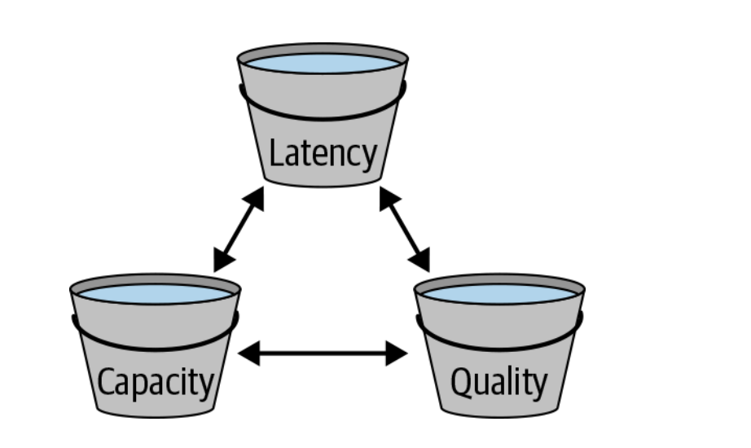 Figure 6-1. Trade-offs within Web Search; pick two! 图6-1. 网络搜索中的权衡；选择两个!
那么什么变了呢？在某种程度上，我们退后一步，确定了盲点，并对权衡做了全面的重新评估。结果证明对于“质量”的追求，有不是一个，而是两方面的开销。第一个开销是对用户的：更好的质量通常意味着需要传输更多的数据，也就意味着更多的延迟。第二方面的开销在 Google 本身：更好的质量意味着需要更多的工作来生成这些数据，这将消耗我们更多的服务器 CPU 时间，也就是我们说的 “服务容量”。尽管管理者曾经仔细地在质量和容量之间来回踱步，“延迟”从未被当做一等公民对待。就像老话说的“好、快、便宜只能选两个”（鱼和熊掌不可兼得？）。描绘这其中的权衡的最好的方式就是画一个这三者之间的三角形：好（质量），快（延迟）和便宜（容量），如下图 6-1 所示。
That’s exactly what was happening here. It’s easy to improve any one of these traits by deliberately harming at least one of the other two. For example, you can improve quality by putting more data on the search results page—but doing so will hurt capacity and latency. You can also do a direct trade-off between latency and capacity by changing the traffic load on your serving cluster. If you send more queries to the cluster, you get increased capacity in the sense that you get better utilization of the CPUs—more bang for your hardware buck. But higher load increases resource contention within a computer, making the average latency of a query worse. If you deliberately decrease a cluster’s traffic (run it “cooler”), you have less serving capacity overall, but each query becomes faster.
这正是这里在发生的情况。通过损坏另外一个或两个特性，改善其中的一个特性很容易，比如说，你可以通过在搜索结果页展示更多的内容来提升搜索质量，但这将会损害容量和延迟。通过改变系统负载，你还可以在延迟和容量之间做一次权衡。如果你向集群发送更多的查询，你就会得到更多的容量，也就是说，你可以更好地利用CPU--为你的硬件付出更多。但是，更高的负载增加了计算机内的资源争夺，使查询的平均延迟变高。如果你故意减少集群的流量（"冷却 "运行），你的整体服务能力就会减少，但每个查询都会变得更快。
The main point here is that this insight—a better understanding of all the trade-offs—allowed us to start experimenting with new ways of balancing. Instead of treating latency as an unavoidable and accidental side effect, we could now treat it as a first-class goal along with our other goals. This led to new strategies for us. For example, our data scientists were able to measure exactly how much latency hurt user engagement. This allowed them to construct a metric that pitted quality-driven improvements to short-term user engagement against latency-driven damage to long-term user engagement. This approach allows us to make more data-driven decisions about product changes. For example, if a small change improves quality but also hurts latency, we can quantitatively decide whether the change is worth launching or not. We are always deciding whether our quality, latency, and capacity changes are in balance, and iterating on our decisions every month.
这里的核心点是下面的这个洞察力--对所有权衡的更好理解--使我们能够开始尝试新的平衡方式。与其说将延迟作为一个不可避免的意外副作用，我们现在可以将它与其他目标一样，看做一等目标。这将引领我们采用新的策略。例如我们的数据科学家能够准确地测量出延迟对用户参与度的损害程度。这使他们能够为延迟构建一个指标放入质量驱动的指标体系中，标识其有助于提升短期用户粘性但是对长期提升用户粘性有害。例如，如果一个小的改动能够提升质量但同时影响延迟，我们可能需要客观地从数值上判断这个改动是否值得发布。在对改动做评估时，我们将一直追求在质量、延迟、容量保持平衡，并且每个月都会对我们的决定进行迭代。
1“Code yellow” is Google’s term for “emergency hackathon to fix a critical problem.” Affected teams are expected to suspend all work and focus 100% attention on the problem until the state of emergency is declared over.
1 "Code yellow"是谷歌的术语，指的是 "紧急黑客马拉松，以修复一个关键问题"。受影响的团队被要求暂停所有工作，并将100%的注意力集中在这个问题上，直到紧急状态被宣布结束。
Always Be Leaving 始终准备离开
At face value, Always Be Leaving sounds like terrible advice. Why would a good leader be trying to leave? In fact, this is a famous quote from Bharat Mediratta, a former Google engineering director. What he meant was that it’s not just your job to solve an ambiguous problem, but to get your organization to solve it by itself, without you present. If you can do that, it frees you up to move to a new problem (or new organization), leaving a trail of self-sufficient success in your wake.
从字面意思上看，"始终准备离开" 听上去是一个可怕的建议。为什么一个好的领导者要尝试离开他的团队呢？事实上这是引用的前谷歌工程主管 Bharat Mediratta 的话。他的意思是你的任务不仅仅是解决边界不清晰的问题，而是还要引导你的组织在没有你在场的情况下自己解决问题。如果你能做到这点，将释放你一部分精力去解决新的问题（或去管理新的组织），在你身后留下一个个能自给自足的团队。
The antipattern here, of course, is a situation in which you’ve set yourself up to be a single point of failure (SPOF). As we noted earlier in this book, Googlers have a term for that, the bus factor: the number of people that need to get hit by a bus before your project is completely doomed.
这里的反模式是，把你自己置为单点故障的情况。就像我们在本书前面说的那样，谷歌员工有一个个专用短语来说明这个情况——“巴士因子”：在你的项目完全失败之前，需要有多少人被公共汽车撞倒。
Of course, the “bus” here is just a metaphor. People become sick; they switch teams or companies; they move away. As a litmus test, think about a difficult problem that your team is making good progress on. Now imagine that you, the leader, disappear. Does your team keep going? Does it continue to be successful? Here’s an even simpler test: think about the last vacation you took that was at least a week long. Did you keep checking your work email? (Most leaders do.) Ask yourself why. Will things fall apart if you don’t pay attention? If so, you have very likely made yourself an SPOF. You need to fix that.
当然，这里的“巴士”是一个隐喻。人们会生病，会换团队或公司，会离职。作为一个试金石，可以想想一个你团队正在尝试解决并取得了良好进展的难题。然后想象作为领导的你消失了。你的团队还能够继续前进吗？它还能继续成功吗？还有一个更简单的测试：想想上一次你休超过一周的假期的时候。你是在不停地查看邮件吗？（大多数管理者会）然后问问你自己为什么。如果你不注意，事情会一团糟吗。如果是，你很可能把你自己置于“单点故障”的境地。你需要解决这个问题。
Your Mission: Build a “Self-Driving” Team 你的任务：打造一个“自我驱动”的团队
Coming back to Bharat’s quote: being a successful leader means building an organization that is able to solve the difficult problem by itself. That organization needs to have a strong set of leaders, healthy engineering processes, and a positive, self-perpetuating culture that persists over time. Yes, this is difficult; but it gets back to the fact that leading a team of teams is often more about organizing people rather than being a technical wizard. Again, there are three main parts to constructing this sort of self-sufficient group: dividing the problem space, delegating subproblems, and iterating as needed.
让我们回到引用的 Bharat 的话：做一个成功的管理者意味着构建一个能够独自解决问题的组织。这个组织需要有一套强有力的领导，健康的工程流程，一个积极的，能够自我延续，经时间沉淀的文化。是的，这很难；但是这回归到了事情的本质，领导团队的通常更多地意味着管理人，而不是作为一个技术向导。再强调一次，这种自给自足的团队有三个主要的组成部分：划分问题域，委托子任务，以及对于不足的地方反复迭代。
Dividing the Problem Space 划分问题域
Challenging problems are usually composed of difficult subproblems. If you’re leading a team of teams, an obvious choice is to put a team in charge of each subproblem. The risk, however, is that the subproblems can change over time, and rigid team boundaries won’t be able to notice or adapt to this fact. If you’re able, consider an organizational structure that is looser—one in which subteams can change size, individuals can migrate between subteams, and the problems assigned to subteams can morph over time. This involves walking a fine line between “too rigid” and “too vague.” On the one hand, you want your subteams to have a clear sense of problem, purpose, and steady accomplishment; on the other hand, people need the freedom to change direction and try new things in response to a changing environment.
有挑战的问题通常由许多有困难的子问题组成。如果你在管理一个由团队组成的团队，一个显而易见的做法是让每个团队负责一个子问题。然而这样做的风险是问题会随着时间而改变，一个死板的团队边界可能不能够察觉或适应这种情况。如果你能够决定，可以尝试构建一个组织结构松散的团队，它能够动态地调整团队规模，员工能够在子团队直接切换，而且每个团队处理的子问题能够切换。这意味着要在太死板和太松散的边缘游走。一方面，你想要你的团队能够对问题和目标有一个清晰的认知，能够有较高的完成度；另一方面，人们需要能自由的切换方向来尝试新鲜事物，来应对不断变化的环境。
Example: Subdividing the “latency problem” of Google Search 例子： 细分 Google 搜索的“延迟问题”
When approaching the problem of Search latency, we realized that the problem could, at a minimum, be subdivided into two general spaces: work that addressed the symptoms of latency, and different work that addressed the causes of latency. It was obvious that we needed to staff many projects to optimize our codebase for speed, but focusing only on speed wouldn’t be enough. There were still thousands of engineers increasing the complexity and “quality” of search results, undoing the speed improvements as quickly as they landed, so we also needed people to focus on a parallel problem space of preventing latency in the first place. We discovered gaps in our metrics, in our latency analysis tools, and in our developer education and documentation. By assigning different teams to work on latency causes and symptoms at the same time, we were able to systematically control latency over the long term. (Also, notice how these teams owned the problems, not specific solutions!)
当开始接触搜索延迟的问题时，我们意识到在最小粒度下我们可以将问题大体划分为两个方面：一方面是定位延迟的现象，另一方面是挖掘延迟的根本原因。很显然我们需要为很多团队配备人员来优化项目的代码库的性能问题，但仅仅关注性能是不够的。与此同时仍有数千名工程师增加系统的复杂度和搜索结果的“质量”，使对系统延迟的优化刚上线就被抵消掉了。因此我们还需要人关注一个平行的问题域，从一开始就防止增加延迟的变更。我们发现在我们的监控指标、延迟分析工具以及员工培训和文档中都存在有差距。通过在同一时间将延迟定位和原因分析分配给不同团队，我们能够长期系统性地控制延迟问题。（同时，这里需要关注的是这些团队是如何管理这些问题的，而不是关注具体的解决方案！）
Delegating subproblems to leaders 将子问题授权给子团队领导
It’s essentially a cliché for management books to talk about “delegation,” but there’s a reason for that: delegation is really difficult to learn. It goes against all our instincts for efficiency and achievement. That difficulty is the reason for the adage, “If you want something done right, do it yourself.”
对于管理类书籍来说，“授权”有点陈词滥调了，但是这背后其实有一个原因：授权太难学了。对于效率或是成功，它几乎是反直觉的。这个困难的原因就如谚语说的那样“如果你想做对某件事，那就自己去做”。
That said, if you agree that your mission is to build a self-driving organization, the main mechanism of teaching is through delegation. You must build a set of self-sufficient leaders, and delegation is absolutely the most effective way to train them. You give them an assignment, let them fail, and then try again and try again. Silicon Valley has well-known mantras about “failing fast and iterating.” That philosophy doesn’t just apply to engineering design, but to human learning as well.
也就是说，如果你的使命是构建一个自我驱动型的组织，那主要的方法就是通过授权。你必须培养出一系列的能够自我成长、自给自足的领导，允许他们失败，然后一遍又一遍的尝试。硅谷有一个有名的咒语“快速失败，然后反复迭代。”这个理论不仅适用于工程设计方面，同样也适用于人类学习。
As a leader, your plate is constantly filling up with important tasks that need to be done. Most of these tasks are things that are fairly easy for you do. Suppose that you’re working diligently through your inbox, responding to problems, and then you decide to put 20 minutes aside to fix a longstanding and nagging issue. But before you carry out the task, be mindful and stop yourself. Ask this critical question: Am I really the only one who can do this work?
作为一个领导，你的桌面上经常摆满了各种重要的问题需要被解决。大多数对于你来说都很简单。假设你正在努力地处理来自收件箱的问题，然后决定花20分钟处理一个长期困扰的问题。但是在你开始着手这件任务前，先停下来想想。问自己这个关键的问题：你是唯一一个能解决这个问题的人吗？
Sure, it might be most efficient for you to do it, but then you’re failing to train your leaders. You’re not building a self-sufficient organization. Unless the task is truly time sensitive and on fire, bite the bullet and assign the work to someone else—presumably someone who you know can do it but will probably take much longer to finish. Coach them on the work if need be. You need to create opportunities for your leaders to grow; they need to learn to “level up” and do this work themselves so that you’re no longer in the critical path.
当然，你做这个工作可能效率最高，但是这意味着在培训领导这件事上你正在失败。你不是在构建一个自给自足型的组织。除非这件事真的是迫在眉睫，你要硬着头皮把这件工作指派给一个你觉得能够完成，但可能会花费更多时间的人，并且你需要给与适当的指导。你需要创造机会来让你的团队成长；他们需要学着“升级”，然后自己解决这个问题，这样你就不在关键路径上了。
The corollary here is that you need to be mindful of your own purpose as a leader of leaders. If you find yourself deep in the weeds, you’re doing a disservice to your organization. When you get to work each day, ask yourself a different critical question: What can I do that nobody else on my team can do?
这里的推论是，在做领导的领导这件事上，你可能需要格外留心。如果你发现你陷在细节里陷得太深，你可能正在破坏你的团队。每天工作时，你要问自己另外一个重要的问题：有什么事情是除了我以外团队里的其他人做不了的？
There are a number of good answers. For example, you can protect your teams from organizational politics; you can give them encouragement; you can make sure everyone is treating one another well, creating a culture of humility, trust, and respect. It’s also important to “manage up,” making sure your management chain understands what your group is doing and staying connected to the company at large. But often the most common and important answer to this question is: “I can see the forest through the trees.” In other words, you can define a high-level strategy. Your strategy needs to cover not just overall technical direction, but an organizational strategy as well. You’re building a blueprint for how the ambiguous problem is solved and how your organization can manage the problem over time. You’re continuously mapping out the forest, and then assigning the tree-cutting to others.
这个问题又很多很好的答案。你可以避免你的团队搞办公室政治；你可以给他们鼓励；你可以确保每个人都能善待彼此，创造一种谦逊、信任和尊重的文化。同时"向上管理"也很重要，确保你的领导能够知道你的团队做的怎么样，以及确保在公司规模较大时团队不与公司脱节。但通常最常见也是最重要的答案是：“透过树木见森林。”换句话说，你能够指定一个高层次的战略。你的战略应该不仅包含技术战略，还应该包含组织战略。你在构建一个关于如何解决边界不清晰的问题，以及如何让团队能够长久地解决问题的蓝图。你持续性地在森林中规划砍树的路线，而把砍树的具体问题交给别人。
Adjusting and iterating 调整与迭代
Let’s assume that you’ve now reached the point at which you’ve built a self-sustaining machine. You’re no longer an SPOF. Congratulations! What do you do now?
让我们假设现在你已经构建了一个能够自给自足的团队，你不再是团队的单点瓶颈。恭喜！那么接下来你做什么呢？
Before answering, note that you have actually liberated yourself—you now have the freedom to “Always Be Leaving.” This could be the freedom to tackle a new, adjacent problem, or perhaps you could even move yourself to a whole new department and problem space, making room for the careers of the leaders you’ve trained. This is a great way of avoiding personal burnout.
在回答这个问题之前，请注意实际上你已经解放了你自己--现在你有"始终保持离开"的自由了。你可以自由地选择去解决一个新的问题，甚至你可以去到一个全新的部门解决新的问题，来为你培养的其他领导者腾出一些上升空间。这是避免职业生涯倦怠的很好的方法。
The simple answer to “what now?” is to direct this machine and keep it healthy. But unless there’s a crisis, you should use a gentle touch. The book Debugging Teams2 has a parable about making mindful adjustments:
“现在怎么办？”这个问题的一个简单的回答是引导你的团队然后让它持续保持健康。但是除非有很难解决的危机，你就不应该过多地去插手管理团队了。《进化:从孤胆极客到高效团队》这本书对于如何做有意义的调整有一个比较好的隐喻：
There’s a story about a Master of all things mechanical who had long since retired. His former company was having a problem that no one could fix, so they called in the Master to see if he could help find the problem. The Master examined the machine, listened to it, and eventually pulled out a worn piece of chalk and made a small X on the side of the machine. He informed the technician that there was a loose wire that needed repair at that very spot. The technician opened the machine and tightened the loose wire, thus fixing the problem. When the Master’s invoice arrived for $10,000, the irate CEO wrote back demanding a breakdown for this ridiculously high charge for a simple chalk mark! The Master responded with another invoice, showing a $1 cost for the chalk to make the mark, and $9,999 for knowing where to put it.
有一个关于一位早已退休的机械大师的故事。他的前公司遇到了一个没人能解决的问题，所以他们请了这个大师来看看能否帮助解决这个问题。大师仔细检查了机器，并贴近听了听。最终他掏出一截粉笔然后在机器侧面画了一个小小的叉。他告诉技术员打开机器，然后在他打叉的地方有一根电线松了需要绑紧。技术员打开了机器然后绑紧了那根电线，然后机器就修好了！当公司收到这位大师的 10,000 美金的账单后，CEO 大怒并向大师索要账单明细。然后大师又寄了一张有明细的账单，上面写着：做标记用的粉笔 1 美元，知道在哪里做标记 9,999 美元。
To us, this is a story about wisdom: that a single, carefully considered adjustment can have gigantic effects. We use this technique when managing people. We imagine our team as flying around in a great blimp, headed slowly and surely in a certain direction. Instead of micromanaging and trying to make continuous course corrections, we spend most of the week carefully watching and listening. At the end of the week we make a small chalk mark in a precise location on the blimp, then give a small but critical “tap” to adjust the course.
对我们来说，这是一个关于智慧的故事：一个经过深思熟虑的细微的调整能够产生巨大的作用。在管理人员时，我们也使用这个技巧。我们想象我们的团队在一个巨大的飞艇上飞行，朝着一个特定的方向缓慢而确定地前进。我们不是通过微操作来不断地修正航向，而是花数周的时间仔细地观察和倾听。最终，我们在飞艇上的某一个精确的位置画一个很小，确至关重要的记号，轻轻一击，来修正航线。
This is what good management is about: 95% observation and listening, and 5% making critical adjustments in just the right place. Listen to your leaders and skip-reports. Talk to your customers, and remember that often (especially if your team builds engineering infrastructure), your “customers” are not end users out in the world, but your coworkers. Customers’ happiness requires just as much intense listening as your reports’ happiness. What’s working and what isn’t? Is this self-driving blimp headed in the proper direction? Your direction should be iterative, but thoughtful and minimal, making the minimum adjustments necessary to correct course. If you regress into micromanagement, you risk becoming an SPOF again! “Always Be Leaving” is a call to macromanagement.
这个故事说明了好的管理的意义：95% 是观察和倾听，5% 是在适当的位置做关键的调整。倾听你的团队和跳过汇报。和你的客户聊聊，而且这些客户经常并不是外部的终端客户（尤其是当你的团队是在构建工程化的基础设施时），而是你的同事。要想让客户满意，就得像认真看报告那样，认真倾听你的客户。什么有效，什么无效呢？这个自驱的飞艇的航线正确吗？你的指引需要是反复迭代的，但是需要是经过深思熟虑地，通过最小的调整来修正航线。如果你退行到了去过度细节，你需要警惕你可能又成为了单点瓶颈！“始终保持离开”是说要进行宏观管理。
2Brian W. Fitzpatrick and Ben Collins-Sussman, Debugging Teams: Better Productivity through Collaboration(Boston: O’Reilly, 2016).
2 Brian W. Fitzpatrick和Ben Collins-Sussman，《进化:从孤胆极客到高效团队》(Boston: O'Reilly, 2016)。
Take care in anchoring a team’s identity 谨慎地确定团队的定位
A common mistake is to put a team in charge of a specific product rather than a general problem. A product is a solution to a problem. The life expectancy of solutions can be short, and products can be replaced by better solutions. However, a problem — if chosen well—can be evergreen. Anchoring a team identity to a specific solution (“We are the team that manages the Git repositories”) can lead to all sorts of angst over time. What if a large percentage of your engineers want to switch to a new version control system? The team is likely to “dig in,” defend its solution, and resist change, even if this is not the best path for the organization. The team clings to its blinders, because the solution has become part of the team’s identity and self-worth. If the team instead owns the problem (e.g., “We are the team that provides version control to the company”), it is freed up to experiment with different solutions over time.
一个常见的错误是让一个团队负责一个特定的产品而不是负责解决一类问题。一个产品是一个问题的一种解决方案。一个解决方案的生命周期可能很短，一个产品可能会被更好的方案替代。然而，一个问题（如果这个问题的定位比较合理）却可以是经久不衰的。将一个团队定位为一个特定的解决方案（“我们是负责 Git 仓库的团队”）随着时间的推移将会带来各种各样的麻烦。假如很大一部分工程师想切换到一个新的版本控制系统怎么办？这个团队很可能会“钻牛角尖”，坚持它原有的解决方案，拒绝改变，即使它并不是最适合整个组织的方案。这个团队依赖它的“观点”，因为解决方案已经成为团队身份和自我价值的一部分。如果团队改为是负责解决这个问题（比方说“我们是为这个公司提供版本管理的团队”），那么随着时间的推移,这个团队将不再被束缚去做实验尝试不同的解决方案。
Always Be Scaling 始终保持扩展
A lot of leadership books talk about “scaling” in the context of learning to “maximize your impact”—strategies to grow your team and influence. We’re not going to discuss those things here beyond what we’ve already mentioned. It’s probably obvious that building a self-driving organization with strong leaders is already a great recipe for growth and success.
很多领导力书籍会在讲“最大化你的影响力”的上下文中讲“扩展规模”——通过这种策略来增长你的团队和影响力。由于我们已经提过的原因，我们不会在这里讨论这些问题。构建一个自驱的、拥有强大领导力的组织已经是增长和成功的一个显而易见的方法。
Instead, we’re going to discuss team scaling from a defensive and personal point of view rather than an offensive one. As a leader, your most precious resource is your limited pool of time, attention, and energy. If you aggressively build out your teams’ responsibilities and power without learning to protect your personal sanity in the process, the scaling is doomed to fail. And so we’re going to talk about how to effectively scale yourself through this process.
相反，我们将讨论从保守和从个人观点出发而不是进攻的视角来讨论扩张团队。作为领导者，你最宝贵的资源是你有限的时间、精力和能量。如果你在没有学会保护维持自己的精力正常的情况下，就激进地增加团队的职责和权力，你的扩张将注定失败。于是我们接下来将讨论如何在扩张的过程中有效地提升自己。
The Cycle of Success 成功的循环
When a team tackles a difficult problem, there’s a standard pattern that emerges, a particular cycle. It looks like this:
- Analysis
First, you receive the problem and start to wrestle with it. You identify the blinders, find all the trade-offs, and build consensus about how to manage them. - Struggle
You start moving on the work, whether or not your team thinks it’s ready. You prepare for failures, retries, and iteration. At this point, your job is mostly about herding cats. Encourage your leaders and experts on the ground to form opinions and then listen carefully and devise an overall strategy, even if you have to “fake it” at first.3 - Traction
Eventually your team begins to figure things out. You’re making smarter decisions, and real progress is made. Morale improves. You’re iterating on trade-offs, and the organization is beginning to drive itself around the problem. Nice job! - Reward
Something unexpected happens. Your manager takes you aside and congratulates you on your success. You discover your reward isn’t just a pat on the back, but a whole new problem to tackle. That’s right: the reward for success is more work... and more responsibility! Often, it’s a problem that is similar or adjacent to the first one, but equally difficult.
当一个团队遇到困难的问题， 往往会显现出一个标准的解决模型--一个特殊的循环，正如下面这样：
- 分析
首先，你收到一个问题，然后开始尝试解决它。你找出了相关的盲点，找到所有权衡点，然后为如何解决他们在团队内达成共识。 - 挣扎
你开始着手工作，无论你的团队是否已经准备好。你准备好了迎接失败、重试和反复迭代。从这点上来讲，你的工作就像养猫。鼓励你手下的团队和专家们坐下来整理观点，然后仔细倾听，制定全局战略，哪怕最开始你不得不“编造一个战略”。 - 前进
终于你的团队开始把事情搞清楚了，你做的决策越来越明智，问题也有了实质性的进展。士气得到了鼓舞。你开始反复迭代权衡，组织开始自驱地解决这个问题。干得漂亮！ - 奖励
一些意料之外的事情发生了。你的上级把你叫到一旁然后祝贺你的成功。你发现奖励不仅仅是领导在你后背轻轻拍了一下祝贺你，而是给了你一个新的问题去解决。是的：对于成功的奖励往往是更多的工作--和更多的责任！通常是一个类似的，或者关联的问题，但是同样困难。
So now you’re in a pickle. You’ve been given a new problem, but (usually) not more people. Somehow you need to solve both problems now, which likely means that the original problem still needs to be managed with half as many people in half the time. You need the other half of your people to tackle the new work! We refer to this final step as the compression stage: you’re taking everything you’ve been doing and compressing it down to half the size.
所以现在你陷入了困境。你被分配给了一个新的问题，但通常并没有更多的人力。莫名其妙的你需要同时解决这两个问题，这意味着原来的问题仍需被解决，但只有一半的人力和一半的时间。你需要另一半的人力来解决新的问题！我们把这最后一步称为压缩阶段：你需要处理所有你正在处理的事情，而且需要把它的规模压缩到原来的一半。
So really, the cycle of success is more of a spiral (see Figure 6-2). Over months and years, your organization is scaling by tackling new problems and then figuring out how to compress them so that it can take on new, parallel struggles. If you’re lucky, you’re allowed to hire more people as you go. More often than not, though, your hiring doesn’t keep pace with the scaling. Larry Page, one of Google’s founders, would probably refer to this spiral as “uncomfortably exciting.”
所以，成功的循环更像是一个螺旋（参见图 6-2）。长年累月以来，你的组织通过解决新问题来扩张，然后压缩所需的人力来能够接受新的、并行的问题。如果你足够幸运，你才能被允许招聘更多的人。然而更常见的情况是你招聘的速度赶不上你团队规模扩张的速度。Larry Page，Google 的创始人之一，喜欢把这个螺旋比作“令人不适的刺激”。
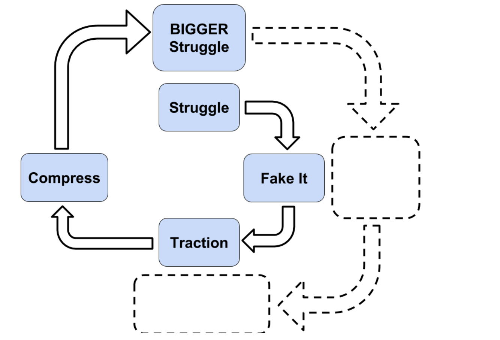 Figure 6-2. The spiral of success 图 6-2. 成功的螺旋
The spiral of success is a conundrum—it’s something that’s difficult to manage, and yet it’s the main paradigm for scaling a team of teams. The act of compressing a problem isn’t just about figuring out how to maximize your team’s efficiency, but also about learning to scale your own time and attention to match the new breadth of responsibility.
成功的螺旋确实是个难题--这是难以管理的，而且这是扩充团队的团队的核心范式。压缩问题的行为不只是关于找出使团队效率最大化的方法，而且是关于如何扩充你自己的时间和注意力来应对新的责任。
3It’s easy for imposter syndrome to kick in at this point. One technique for fighting the feeling that you don’t know what you’re doing is to simply pretend that some expert out there knows exactly what to do, and that they’re simply on vacation and you’re temporarily subbing in for them. It’s a great way to remove the personal stakes and give yourself permission to fail and learn.
3 在这一点上，冒名顶替综合症很容易发作。克服这种感觉的一种技巧是，你不知道自己在做什么，只需假装某位专家确切知道该做什么，他们只是在度假，而你只是暂时代替他们。这是一个很好的方法，可以消除个人利害关系，允许自己失败和学习。
Important Versus Urgent 重要和紧急
Think back to a time when you weren’t yet a leader, but still a carefree individual contributor. If you used to be a programmer, your life was likely calmer and more panicfree. You had a list of work to do, and each day you’d methodically work down your list, writing code and debugging problems. Prioritizing, planning, and executing your work was straightforward.
回想你还不是领导的时候，那时候你还是个无忧无虑的个人贡献者(IC)。如果你曾经是个程序员，你的生活很可能要比现在平静，没有很多让人恐慌的状况需要处理。你有完整的工作清单，上面的每个条目你都能有条不紊的解决，写代码或是调试问题。排优先级、定计划，然后执行你的工作，还是很简单的。
As you moved into leadership, though, you might have noticed that your main mode of work became less predictable and more about firefighting. That is, your job became less proactive and more reactive. The higher up in leadership you go, the more escalations you receive. You are the “finally” clause in a long list of code blocks! All of your means of communication—email, chat rooms, meetings—begin to feel like a Denial-of-Service attack against your time and attention. In fact, if you’re not mindful, you end up spending 100% of your time in reactive mode. People are throwing balls at you, and you’re frantically jumping from one ball to the next, trying not to let any of them hit the ground.
当你在管理岗工作后，你可能慢慢察觉到了，你的工作模式变得不可预测，天天都在救火。你的工作变得被动，更多的是响应别人的诉求。你的岗位越高，这个现象越明显。你成了一堆代号的最终负责人。你的所有通信手段--邮件、聊天室、会议开始让你感觉像是你时间和精力的“拒绝服务型攻击”。事实上，如果你不留心，最终你将花费你的全部时间在被动响应别人的需求上。人们开始像你扔球，你必须拼命地从一个球跳向另一个球，尽量避免让任何一个掉到地上。
A lot of books have discussed this problem. The management author Stephen Covey is famous for talking about the idea of distinguishing between things that are important versus things that are urgent. In fact, it was US President Dwight D. Eisenhower who popularized this idea in a famous 1954 quote:
I have two kinds of problems, the urgent and the important. The urgent are not important, and the important are never urgent.
很多书都讨论过这个问题。管理学作者 Stephen Covey 因讨论如何区分重要的事情和紧急的事情的想法而出名。事实上，是美国总统埃森豪威尔在 1954 年一次演进中引用而让其出名的：
我有两类问题，紧急的问题和重要的问题。紧急的并不重要，重要的也从不紧急。
This tension is one of the biggest dangers to your effectiveness as a leader. If you let yourself slip into pure reactive mode (which happens almost automatically), you spend every moment of your life on urgent things, but almost none of those things are important in the big picture. Remember that your job as a leader is to do things that only you can do, like mapping a path through the forest. Building that meta- strategy is incredibly important, but almost never urgent. It’s always easier to respond to that next urgent email.
这两者直接的关系是威胁你作为领导的工作效率的最大的危险之一。如果你放入自己变成纯被动响应式的工作模式（这往往会自然而然的发生），你将会花费你全部的时间和精力解决紧急的事，但是这些东西在宏观层面几乎都是不重要的。一定要记住你作为一个领导的工作是要做那些必须由你来做的事，比如规划穿越森林的路线。构建这些“元策略”是非常重要的，但几乎从不紧急。相比起来，回复下一封紧急的邮件永远更简单。
So how can you force yourself to work mostly on important things, rather than urgent things? Here are a few key techniques:
- Delegate
Many of the urgent things you see can be delegated back to other leaders in your organization. You might feel guilty if it’s a trivial task; or you might worry that handing off an issue is inefficient because it might take those other leaders longer to fix. But it’s good training for them, and it frees up your time to work on important things that only you can do. - Schedule dedicated time
Regularly block out two hours or more to sit quietly and work only on important- but-not-urgent things—things like team strategy, career paths for your leaders, or how you plan to collaborate with neighboring teams. - Find a tracking system that works
There are dozens of systems for tracking and prioritizing work. Some are software based (e.g., specific “to-do” tools), some are pen-and-paper based (the “Bullet Journal” method), and some systems are agnostic to implementation. In this last category, David Allen’s book, Getting Things Done, is quite popular among engineering managers; it’s an abstract algorithm for working through tasks and maintaining a prized “inbox zero.” The point here is to try these different systems and determine what works for you. Some of them will click with you and some will not, but you definitely need to find something more effective than tiny Post- It notes decorating your computer screen.
那么，怎么才能强迫你自己花更多精力在重要的事情上，而不是紧急的事情上呢？下面列举了几个关键技巧：
- 委托
许多紧急的事件实际上可以委托给你组织里的其他领导者。如果是比较琐碎的任务你可能会感到有一点点罪恶；或者你可能会担心有点低效，如果其他的领导者将花较长时间来解决。但这对他们来说是很好的锻炼的机会，而且能够为你腾出时间来去解决重要的事情。 - 安排专注时间
定期安排占据2个小时或更长时间的整段时间来专注处理重要但不紧急的事，比如团队策略，团队中管理者的职业生涯规划，或者制定如何与其他团队协作的计划。 - 找到一个有效的进度跟踪系统
市面上有很多关于进度跟踪和排优先级的系统。一些是有基于现成的软件的（比如“待办”管理工具），一些是基于纸笔的（“Bullet Journal”方法），以及另一些没有指明具体实现方法的系统。在这最后一类中，David Allen 的书《搞定Ⅰ : 无压工作的艺术》在工程师管理者们之间很流行；它是一套关于工完成任务和将收件箱清零的抽象的方法论。这里的关键点是要去尝试不同的系统，然后选择一个对你来说最有效的系统。他们其中一些会很合适，一些并不合适，但你绝对需要找到比在电脑上贴便签更有效率的方法--它更多是在装点你的电脑屏幕。
Learn to Drop Balls 学会放下任务
There’s one more key technique for managing your time, and on the surface it sounds radical. For many, it contradicts years of engineering instinct. As an engineer, you pay attention to detail; you make lists, you check things off lists, you’re precise, and you finish what you start. That’s why it feels so good to close bugs in a bug tracker, or whittle your email down to inbox zero. But as a leader of leaders, your time and attention are under constant attack. No matter how much you try to avoid it, you end up dropping balls on the floor—there are just too many of them being thrown at you. It’s overwhelming, and you probably feel guilty about this all the time.
还有一个管理时间的重要方法，但是它表面上看起来有些激进。对于大多数人来说，这违反多年以来养成的工程师的直觉。作为一个工程师，你关注细节，你制作清单，然后将完成的事一件件划掉，认真仔细，保证每件事有始有终。所以在错误追踪系统中关闭 bug 或清空收件箱中的待办时，你感觉很良好。但是作为领导者的领导，你的时间和精力处在持续的压力下。哪怕你全力尝试，但总无法避免会有球接不住掉到地上--同一时间内总是有太多球扔向你了。它是难以避免的，而且你可能一直会为此感到内疚。
So, at this point, let’s step back and take a frank look at the situation. If dropping some number of balls is inevitable, isn’t it better to drop certain balls deliberately rather than accidentally? At least then you have some semblance of control.
所以，在这一点上，让我们后退一步，然后仔细地审视下当前的局势。如果漏掉一些球是不可避免的，那么主动地去选择丢掉某些球不是比意外的丢掉更好吗？至少看起来这样更可控一些。
Here’s a great way to do that.
这里有一个很好的方法来达成这个目的。
Marie Kondo is an organizational consultant and the author of the extremely popular book The Life-Changing Magic of Tidying Up. Her philosophy is about effectively decluttering all of the junk from your house, but it works for abstract clutter as well.
Marie Kondo 是一名组织顾问，同时也是畅销书《怦然心动的人生整理魔法术》(The Life-Changing Magic of Tidying Up) 的作者。她的理论是关于如何高效地清理家中的杂物，但对于如何清理抽象的杂物也同样适用。
Think of your physical possessions as living in three piles. About 20% of your things are just useless—things that you literally never touch anymore, and all very easy to throw away. About 60% of your things are somewhat interesting; they vary in importance to you, and you sometimes use them, sometimes not. And then about 20% of your possessions are exceedingly important: these are the things you use all the time, that have deep emotional meaning, or, in Ms. Kondo’s words, spark deep “joy” just holding them. The thesis of her book is that most people declutter their lives incorrectly: they spend time tossing the bottom 20% in the garbage, but the remaining 80% still feels too cluttered. She argues that the true work of decluttering is about identifying the top 20%, not the bottom 20%. If you can identify only the critical things, you should then toss out the other 80%. It sounds extreme, but it’s quite effective. It is greatly freeing to declutter so radically.
假设你的物质财产有成三堆.这些东西中有大约20%是没用的--你永远都不会去触碰它们，很好识别出来，并扔掉。大约60%的东西很有趣；对于你来说，它们的重要程度不一，有时会使用它们，有时不会。另外20%对你来说极其重要：你会一直使用，这有很强的主观情感倾向，或者用 Kondo 女士的话来说，就是“只要抱着它们，就感觉充满快乐”。她的书中的主要论点是，大多数人错误地进行断舍离：它们来回折腾那最没有用的 20% 的物品，然而剩下的 80% 的物品看上去仍然很乱。她指出断舍离的关键是分辨出那20%最重要的东西，而不是最不重要的那20%。如果你能分辨出那些最关键的东西，那么剩余的80%都是你可以扔掉的。这听上去有些极端，但却是十分高效的。能够如此彻底的断舍离，一定会感觉很棒。
It turns out that you can also apply this philosophy to your inbox or task list—the barrage of balls being thrown at you. Divide your pile of balls into three groups: the bottom 20% are probably neither urgent nor important and very easy to delete or ignore. There’s a middle 60%, which might contain some bits of urgency or importance, but it’s a mixed bag. At the top, there’s 20% of things that are absolutely, critically important.
事实上你也可以将这个理论应用到你的收件箱或任务清单中--那些像弹幕一样像你飞来的球。将你的球分成三堆：最底下的 20% 是那些从来不重要，也不紧急的，很容易删除或忽略。中间的 60% 有一些是紧急的，有一些是重要的，但是混在一起很难分清。在最上层，是那些至关重要的事。
And so now, as you work through your tasks, do not try to tackle the top 80%—you’ll still end up overwhelmed and mostly working on urgent-but-not-important tasks. Instead, mindfully identify the balls that strictly fall in the top 20%—critical things that only you can do—and focus strictly on them. Give yourself explicit permission to drop the other 80%.
现在，在你工作时，不要尝试解决上面80%的问题--否则最终你仍会被问题淹没，然后花大部分精力解决那些紧急但不重要的问题。相反，你应该识别出头部最重要的20%--那些只能由你来完成的最重要的事，然后专注于他们。给你自己明确的许可来丢弃剩余的80%。
It might feel terrible to do so at first, but as you deliberately drop so many balls, you’ll discover two amazing things. First, even if you don’t delegate that middle 60% of tasks, your subleaders often notice and pick them up automatically. Second, if something in that middle bucket is truly critical, it ends up coming back to you anyway, eventually migrating up into the top 20%. You simply need to trust that things below your top-20% threshold will either be taken care of or evolve appropriately. Meanwhile, because you’re focusing only on the critically important things, you’re able to scale your time and attention to cover your group’s ever-growing responsibilities.
最开始，这么做可能会感觉很可怕，但随着你故意丢掉这么多球，你将会发现两件令人惊奇的事。第一，即使你没有托管中间60%的事，你的下属领导者们通常会意识到并主动接住它们。第二，如果中间这堆球中有真正重要的事，它最终无论如何都会回到你这里，然后转换到顶部20%那堆球里。你只需相信在20%阈值下的事情最终都会被有人接管，或是在适当时候知会给适当的人。与此同时，因为你只关注最重要的事情，你可以花更多时间和注意力在承担你的团队不断增长的责任上。
Protecting Your Energy 保护你的精力
We’ve talked about protecting your time and attention—but your personal energy is the other piece of the equation. All of this scaling is simply exhausting. In an environment like this, how do you stay charged and optimistic?
我们讨论过了如何包含你的时间和精力--但是你的个人精力又是另一个等式。单单是这些扩张就足以让你精疲力尽。在这样的环境中，你如何保持持续充电和乐观呢？
Part of the answer is that over time, as you grow older, your overall stamina builds up. Early in your career, working eight hours a day in an office can feel like a shock; you come home tired and dazed. But just like training for a marathon, your brain and body build up larger reserves of stamina over time.
这个答案的一部分是，随着时间的推移，你年龄增长，你的耐力会随着增长。在你职业生涯的早期，在办公室连续工作8个小时就会让你感到震惊；回到家后你会感觉疲劳和空虚。但是就像马拉松训练一样，你的大脑和身体会能够储备越来越多的耐力。
The other key part of the answer is that leaders gradually learn to manage their energy more intelligently. It’s something they learn to pay constant attention to. Typically, this means being aware of how much energy you have at any given moment,and making deliberate choices to “recharge” yourself at specific moments, in specific ways. Here are some great examples of mindful energy management:
- Take real vacations
A weekend is not a vacation. It takes at least three days to “forget” about your work; it takes at least a week to actually feel refreshed. But if you check your work email or chats, you ruin the recharge. A flood of worry comes back into your mind, and all of the benefit of psychological distancing dissipates. The vacation recharges only if you are truly disciplined about disconnecting.4 And, of course, this is possible only if you’ve built a self-driving organization. - Make it trivial to disconnect
When you disconnect, leave your work laptop at the office. If you have work communications on your phone, remove them. For example, if your company uses G Suite (Gmail, Google Calendar, etc.), a great trick is to install these apps in a “work profile” on your phone. This causes a second set of work-badged apps to appear on your phone. For example, you’ll now have two Gmail apps: one for personal email, one for work email. On an Android phone, you can then press a single button to disable the entire work profile at once. All the work apps gray out, as if they were uninstalled, and you can’t “accidentally” check work messages until you re-enable the work profile. - Take real weekends, too
A weekend isn’t as effective as a vacation, but it still has some rejuvenating power. Again, this recharge works only if you disconnect from work communications. Try truly signing out on Friday night, spend the weekend doing things you love, and then sign in again on Monday morning when you’re back in the office. - Take breaks during the day
Your brain operates in natural 90-minute cycles.5Use the opportunity to get up and walk around the office, or spend 10 minutes walking outside. Tiny breaks like this are only tiny recharges, but they can make a tremendous difference in your stress levels and how you feel over the next two hours of work. - Give yourself permission to take a mental health day
Sometimes, for no reason, you just have a bad day. You might have slept well, eaten well, exercised—and yet you are still in a terrible mood anyway. If you’re a leader, this is an awful thing. Your bad mood sets the tone for everyone around you, and it can lead to terrible decisions (emails you shouldn’t have sent, overly harsh judgements, etc.). If you find yourself in this situation, just turn around and go home, declaring a sick day. Better to get nothing done that day than to do active damage.
这个答案的另一部分是领导者渐渐学会更智能的管理他们的精力。这是他们持续学习投入的结果。通常，这意味着他们能够意识到自己还剩多少精力，然后决定在某个特定的时刻通过自己的方式给自己“充能”。以下是一些很好的细心管理能量方式：
- 给自己真正放个假
一个周末并不算一个真正的假期。你需要至少三天来“忘记”你的工作；至少需要一周来让你重新感觉充满能量。但是如果你检查你的邮箱或工作聊天，你就破坏了这个充电过程。洪水般的焦虑充满你的脑袋，物理上远离工作的好处消散殆尽。只有在你真的断开与工作的连接时，你的假期才能使你真正重新充能。当然，这一切建立在你已经建立了一个自我驱型组织的前提下。 - 让失联的代价微不足道(主要指消息模式切换)
当你失联时，将你的工作笔记本留在办公室。如果你有工作的通讯工具留在你的手机上，将它们移除掉。比如，如果你的公司用 Google 的 G 套件(Gmail, Google Calendar 等)，一个很方便的技巧是在手机上安装一个叫“工作资料” 的软件。这将花费你几秒钟的时间来把软件标记为是否是工作软件。例如，你将有两个 Gmail 应用：一个为个人邮件，一个为工作邮件。在安卓手机上，你能够一键切换工作模式。所有工作应用软件将变灰，就像它们未安装。你也不可能“不小心”查看了工作信息直到你重新激活工作资料。 - 也要享受真正的周末
一个周末并不像假期一样有效，但它仍有让你振奋起来的能力。再强调一次，这样的充能只有在你断开工作联系的时候才有用。试着在周五晚上彻底退出工作状态，把周末的时间花在你喜欢的事情上，然后在周一早晨回到办公室时再重新进入工作状态。 - 在一天之中偶尔小休一下
人的大脑每90分钟会有一个自然的循环。利用这个机会站起来在办公室走一走，或者花10分钟出去走一走。像这种微小的休息只能获得很小的充能，但是这能给你的紧张度和下一个小时的工作上带来巨大的影响。 - 给自己一个心理健康日的许可
有时候，没有任何理由，你度过了糟糕的一天。你睡的很好，吃的很好，也进行了运动，但还是在很糟糕的情绪里。如果你是个领导，那这将是很悲催的一件事。你的坏情绪影响了你周围所有人的情绪，而且这将会导致很糟糕的决定（发出去不该发的邮件，给别人下达了过于残酷的评价等）。如果你发现你在这个状态下，你应该请个病假，转身回家。什么都不干也比干破坏性的事强。
In the end, managing your energy is just as important as managing your time. If you learn to master these things, you’ll be ready to tackle the broader cycle of scaling responsibility and building a self-sufficient team.
最后，管理你的精力和管理你的时间一样重要。如果你学会掌握这些东西，你就会准备好应对扩大责任范围和建立一个自给自足的团队这一更广泛的循环。
4You need to plan ahead and build around the assumption that your work simply won’t get done during vacation. Working hard (or smart) just before and after your vacation mitigates this issue.
4 你需要提前计划，并在假设你的工作在休假期间根本无法完成的情况下进行建设。在休假前后努力工作（或聪明地工作）可以缓解这一问题。
5You can read more about BRAC at https://en.wikipedia.org/wiki/Basic_rest-activity_cycle.
5 你可以在 https://en.wikipedia.org/wiki/Basic_rest-activity_cycle，了解更多关于BRAC的信息。
Conclusion 总结
Successful leaders naturally take on more responsibility as they progress (and that’s a good and natural thing). Unless they effectively come up with techniques to properly make decisions quickly, delegate when needed, and manage their increased responsibility, they might end up feeling overwhelmed. Being an effective leader doesn’t mean that you need to make perfect decisions, do everything yourself, or work twice as hard. Instead, strive to always be deciding, always be leaving, and always be scaling.
成功的领导者在管理的过程中很自然地会承担更多的责任（这是件好事，也是很自然的事）。除非他们能够高效的想出技术来快速地做决策，按需时授权，管理他们日益增长的责任，否则他们很快会感觉不知所措。作为一个高效的领导者并不意味着你要做完美的决策，所有事都亲力亲为，或者付出双倍的努力。而是需要努力地始终保持决断力，始终保持离开，始终保持扩张。
TL;DRs 内容提要
-
Always Be Deciding: Ambiguous problems have no magic answer; they’re all about finding the right trade-offs of the moment, and iterating.
-
Always Be Leaving: Your job, as a leader, is to build an organization that automatically solves a class of ambiguous problems—over time—without you needing to be present.
-
Always Be Scaling: Success generates more responsibility over time, and you must proactively manage the scaling of this work in order to protect your scarce resources of personal time, attention, and energy.
-
始终保持决断力：模糊的问题没有灵丹妙药；他们都是关于找到当下最佳的权衡，然后反复迭代。
-
始终保持离开：你作为一个领导者的工作是构建一个能够自主解决一类模糊问题的组织--并且随着时间的推移，渐渐不需要你出面。
-
始终保持扩张：随着时间推移，成功会产生更多责任，你必须主动管理规模扩大的工作，来保护你最稀缺的资源：时间，注意力和精力。
CHAPTER 7 Measuring Engineering Productivity
第七章 度量工程效率
Written by Ciera Jaspan
Edited by Riona Macnamara
Google is a data-driven company. We back up most of our products and design decisions with hard data. The culture of data-driven decision making, using appropriate metrics, has some drawbacks, but overall, relying on data tends to make most decisions objective rather than subjective, which is often a good thing. Collecting and analyzing data on the human side of things, however, has its own challenges. Specifically, within software engineering, Google has found that having a team of specialists focus on engineering productivity itself to be very valuable and important as the company scales and can leverage insights from such a team.
谷歌是一家数据驱动型公司。我们的大部分产品和设计决策都有可靠的数据支持。数据驱动决策的文化，使用适当的指标，有一些不足，但总的来说，依靠数据往往使大多数决策变得客观而不是主观，这往往是一件好事。然而，收集和分析数据是人性的弱点，有其自身的挑战。具体来说，在软件工程领域，谷歌发现，随着公司规模的扩大，拥有一支专注于工程生产效率的专家团队本身是非常有价值和重要的，可以利用这样一支团队的洞察力。
Why Should We Measure Engineering Productivity? 我们为什么要度量工程效率
Let’s presume that you have a thriving business (e.g., you run an online search engine), and you want to increase your business’s scope (enter into the enterprise application market, or the cloud market, or the mobile market). Presumably, to increase the scope of your business, you’ll need to also increase the size of your engineering organization. However, as organizations grow in size linearly, communication costs grow quadratically.1 Adding more people will be necessary to increase the scope of your business, but the communication overhead costs will not scale linearly as you add additional personnel. As a result, you won’t be able to scale the scope of your business linearly to the size of your engineering organization.
让我们假设你有一个蓬勃发展的业务（例如，你经营一个在线搜索引擎），并且你想扩大你的业务范围（进入企业应用市场，或云市场，或移动市场）。据推测，为了增加你的业务范围，你也需要增加你的工程组织的规模。然而，随着组织规模的线性增长，沟通成本也呈二次曲线增长。增加人员对扩大业务范围是必要的，但沟通成本不会随着你增加人员而线性扩展。因此，你将无法根据你的工程组织的规模线性地扩大你的业务范围。
There is another way to address our scaling problem, though: we could make each individual more productive. If we can increase the productivity of individual engineers in the organization, we can increase the scope of our business without the commensurate increase in communication overhead.
不过，还有一种方法可以解决我们的规模问题：我们可以使每个人的生产效率提高。如果我们能提高组织中单个工程师的生产效率，我们就能增加我们的业务范围，而不会相应地增加沟通成本。
Google has had to grow quickly into new businesses, which has meant learning how to make our engineers more productive. To do this, we needed to understand what makes them productive, identify inefficiencies in our engineering processes, and fix the identified problems. Then, we would repeat the cycle as needed in a continuous improvement loop. By doing this, we would be able to scale our engineering organization with the increased demand on it.
谷歌不得不迅速发展新业务，这意味着要学习如何让我们的工程师更有效率。要做到这一点，我们需要了解是什么让他们富有成效，找出我们工程流程中的低效之处，并解决所发现的问题。然后，我们将根据需要在一个持续改进的循环中重复这个循环。通过这样做，我们将能够在需求增加的情况下扩展我们的工程组织。
However, this improvement cycle also takes human resources. It would not be worthwhile to improve the productivity of your engineering organization by the equivalent of 10 engineers per year if it took 50 engineers per year to understand and fix productivity blockers. Therefore, our goal is to not only improve software engineering productivity, but to do so efficiently.
然而，这个增量改进过程同样需要人力资源。如果每年需要50个工程师来了解和解决生产力的障碍，那么以每年10名工程师的数量来提高工程组织的生产率是不值当的。因此，我们不仅要在目标上提高软件工程的生产力，而且这一改进过程也要同样高效。
At Google, we addressed these trade-offs by creating a team of researchers dedicated to understanding engineering productivity. Our research team includes people from the software engineering research field and generalist software engineers, but we also include social scientists from a variety of fields, including cognitive psychology and behavioral economics. The addition of people from the social sciences allows us to not only study the software artifacts that engineers produce, but to also understand the human side of software development, including personal motivations, incentive structures, and strategies for managing complex tasks. The goal of the team is to take a data-driven approach to measuring and improving engineering productivity.
在谷歌，我们通过建立一个致力于了解工程生产效率的研究团队来解决这些权衡问题。我们的研究团队包括来自软件工程研究人员和普通的软件工程师，但我们也包括来自不同领域的社会学家，包括认知心理学和行为经济学。来自社会科学的人员的加入使我们不仅可以研究工程师生产的软件构件，还可以了解软件开发过程中人的一面，包括个人动机、激励结构和管理复杂任务的策略。该团队的目标是采用数据驱动的方法来度量和提高工程生产效率。
In this chapter, we walk through how our research team achieves this goal. This begins with the triage process: there are many parts of software development that we can measure, but what should we measure? After a project is selected, we walk through how the research team identifies meaningful metrics that will identify the problematic parts of the process. Finally, we look at how Google uses these metrics to track improvements to productivity.
在本章中，我们将介绍我们的研究团队是如何实现这一目标的。这从分类过程开始：我们对软件开发的许多部分可以进行计量，但是我们到底应该计量什么呢？在一个项目被选中后，我们将介绍研究团队如何确定有意义的指标，以确定该过程中存在问题的部分。最后，我们看一下谷歌是如何使用这些指标来跟踪生产效率的改进。
For this chapter, we follow one concrete example posed by the C++ and Java language teams at Google: readability. For most of Google’s existence, these teams have managed the readability process at Google. (For more on readability, see Chapter 3.) The readability process was put in place in the early days of Google, before automatic formatters (Chapter 8 and linters that block submission were commonplace (Chapter 9). The process itself is expensive to run because it requires hundreds of engineers performing readability reviews for other engineers in order to grant readability to them. Some engineers viewed it as an archaic hazing process that no longer held utility, and it was a favorite topic to argue about around the lunch table. The concrete question from the language teams was this: is the time spent on the readability process worthwhile?
在本章中，我们遵循谷歌的C++和Java语言团队提出的一个具体例子：可读性。在谷歌存在的大部分时间里，这些团队一直在管理谷歌的可读性过程。(关于可读性的更多信息，请参见第三章）。可读性过程是在谷歌的早期建立的，当时自动格式化工具（第8章）和阻止提交的锁定还没有普及（第9章）。这个过程本身运行成本很高，因为它需要数以百计的工程师为其他工程师进行可读性审查，以便授予他们可读性。一些工程师认为这是一个古老的自欺欺人过程，不再具有实用性，这也是午餐桌上最喜欢争论的话题。来自语言团队的具体问题是：花在可读性过程上的时间是值得的吗？
1Frederick P. Brooks, The Mythical Man-Month: Essays on Software Engineering (New York: Addison-Wesley, 1995).
1 Frederick P.Brooks，《人月神话：软件工程随笔》（纽约：Addison Wesley，1995）。
Triage: Is It Even Worth Measuring? 分类：是否值得度量？
Before we decide how to measure the productivity of engineers, we need to know when a metric is even worth measuring. The measurement itself is expensive: it takes people to measure the process, analyze the results, and disseminate them to the rest of the company. Furthermore, the measurement process itself might be onerous and slow down the rest of the engineering organization. Even if it is not slow, tracking progress might change engineers’ behavior, possibly in ways that mask the underlying issues. We need to measure and estimate smartly; although we don’t want to guess, we shouldn’t waste time and resources measuring unnecessarily.
在我们决定如何度量工程师的生产效率之前，我们需要知道某个指标是否值得度量。度量本身是昂贵的：它需要人去度量过程，分析结果，并将其传播给公司的其他部门。此外，度量过程本身可能是繁琐的，会拖累工程组织的其他部门。即使它不慢，跟踪进度也可能改变工程师的行为，可能会掩盖潜在的问题。我们需要聪明地度量和估计；虽然我们不想猜测，但我们不应该浪费时间和资源进行不必要的度量。
At Google, we’ve come up with a series of questions to help teams determine whether it’s even worth measuring productivity in the first place. We first ask people to describe what they want to measure in the form of a concrete question; we find that the more concrete people can make this question, the more likely they are to derive benefit from the process. When the readability team approached us, its question was simple: are the costs of an engineer going through the readability process worth the benefits they might be deriving for the company?
在谷歌，我们想出了一系列的问题来帮助团队判定是否值得优先度量生产效率。我们首先要求人们以具体问题的形式描述他们想要度量的东西；我们发现，人们提出这个问题越具体，他们就越有可能从这个过程中获益。当可读性团队与我们接触时，其问题很简单：工程师在提高可读性过程中的成本增加是否匹配他们为公司带来的好处？
We then ask them to consider the following aspects of their question:
What result are you expecting, and why?
Even though we might like to pretend that we are neutral investigators, we are not. We do have preconceived notions about what ought to happen. By acknowledging this at the outset, we can try to address these biases and prevent post hoc explanations of the results.
When this question was posed to the readability team, it noted that it was not sure. People were certain the costs had been worth the benefits at one point in time, but with the advent of autoformatters and static analysis tools, no one was entirely certain. There was a growing belief that the process now served as a hazing ritual. Although it might still provide engineers with benefits (and they had survey data showing that people did claim these benefits), it was not clear whether it was worth the time commitment of the authors or the reviewers of the code.
If the data supports your expected result, what action will be taken?
We ask this because if no action will be taken, there is no point in measuring. Notice that an action might in fact be “maintain the status quo” if there is a planned change that will occur if we didn’t have this result.
When asked about this, the answer from the readability team was straightforward: if the benefit was enough to justify the costs of the process, they would link to the research and the data on the FAQ about readability and advertise it to set expectations.
If we get a negative result, will appropriate action be taken?
We ask this question because in many cases, we find that a negative result will not change a decision. There might be other inputs into a decision that would override any negative result. If that is the case, it might not be worth measuring in the first place. This is the question that stops most of the projects that our research team takes on; we learn that the decision makers were interested in knowing the results, but for other reasons, they will not choose to change course.
In the case of readability, however, we had a strong statement of action from the team. It committed that, if our analysis showed that the costs either outweighed the benefit or the benefits were negligible, the team would kill the process. As different programming languages have different levels of maturity in formatters and static analyses, this evaluation would happen on a per-language basis.
Who is going to decide to take action on the result, and when would they do it?
We ask this to ensure that the person requesting the measurement is the one who is empowered to take action (or is doing so directly on their behalf). Ultimately, the goal of measuring our software process is to help people make business decisions. It’s important to understand who that individual is, including what form of data convinces them. Although the best research includes a variety of approaches (everything from structured interviews to statistical analyses of logs), there might be limited time in which to provide decision makers with the data they need. In those cases, it might be best to cater to the decision maker. Do they tend to make decisions by empathizing through the stories that can be retrieved from interviews?2 Do they trust survey results or logs data? Do they feel comfortable with complex statistical analyses? If the decider doesn’t believe the form of the result in principle, there is again no point in measuring the process.
In the case of readability, we had a clear decision maker for each programming language. Two language teams, Java and C++, actively reached out to us for assistance, and the others were waiting to see what happened with those languages first.3 The decision makers trusted engineers’ self-reported experiences for understanding happiness and learning, but the decision makers wanted to see “hard numbers” based on logs data for velocity and code quality. This meant that we needed to include both qualitative and quantitative analysis for these metrics. There was not a hard deadline for this work, but there was an internal conference that would make for a useful time for an announcement if there was going to be a change. That deadline gave us several months in which to complete the work.
然后我们要求他们考虑以下问题：
你期望的结果是什么？为什么？ 尽管我们可能想假装我们是中立的调查人员，但事实并非如此。我们确实对一些事有先入为主的观念。通过一开始就承认这一点，我们可以尝试解决这些偏见，防止对结果进行事后解释。 当这个问题被提给可读性小组时，该小组指出，它并不确定。人们确信在某个时间点上，成本是值得的，但是随着自动格式化和静态分析工具的出现，没有人完全确定。越来越多的人认为，这个过程现在成了一种自欺欺人的仪式。虽然它可能仍然为工程师提供了好处（他们有调查数据显示人们确实声称有这些好处），但不清楚它是否值得作者或代码审查员投入时间。
如果数据支持你的预期结果，将采取什么行动 我们这样问是因为如果不采取任何行动，那么度量就没有意义了。请注意，如果没有这一结果，就会发生计划变更，那么行动实际上可能是“维持现状”。 当被问及这个问题时，可读性团队的回答很直截了当：如果好处足以证明这个过程的成本是合理的，他们会链接到关于可读性的FAQ上的研究和数据，并进行宣传以设定期望。
如果我们得到一个负面的结果，是否会采取适当的行动？ 我们问这个问题是因为在许多情况下，我们发现负面结果不会改变决策。决策中可能会有其他的投入，而这些投入将取代任何负面的结果。如果是这样的话，可能一开始就不值得度量。这也是阻止我们研究团队所做的大多数项目的问题；我们了解到决策者对了解结果感兴趣，但由于其他原因，他们不会选择改变方向。 然而，在可读性的案例中，我们有一个来自团队的强有力的行动声明。它承诺，如果我们的分析显示成本大于收益，或者收益可以忽略不计，团队将放弃这个项目。由于不同的编程语言在格式化和静态分析方面有不同的成熟度，因此该评估将基于每种语言进行。
谁将决定对结果采取行动，以及他们何时采取行动？ 我们这样问是为了确保要求度量的人是被授权采取行动的人（或直接代表他们采取行动）。归根结底，度量我们的软件流程的目的是帮助人们做出业务决策。了解这个人是谁很重要，包括什么形式的数据能说服他们。尽管最好的研究包括各种方法（从结构化访谈到日志的统计分析等各种方法），但为决策者提供他们需要的数据的时间可能有限。在这些情况下，最好的办法是迎合决策者的要求。他们是否倾向于通过访谈中可以获取到的故事来做出决策？他们是否信任调查结果或日志数据？他们对复杂的统计分析感到满意吗？如果决策者压根就不相信结果的形式，那么度量过程又没有意义。 在可读性方面，我们对每种编程语言都有一个明确的决策者。有两个语言团队，即Java和C++，积极向我们寻求帮助，而其他团队则在等待，看这些语言先发生什么。决策者相信工程师自我报告的经验，以了解快乐和学习，但决策者希望看到基于日志数据的速度和代码质量的 "硬数字"。这意味着，我们需要对这些指标进行定性和定量分析。这项工作没有一个硬性的截止日期，但如果有变化，有一个内部会议可以用来适时地宣布变更。这个期限给了我们几个月的时间来完成这项工作。
By asking these questions, we find that in many cases, measurement is simply not worthwhile…and that’s OK! There are many good reasons to not measure the impact of a tool or process on productivity. Here are some examples that we’ve seen:
You can’t afford to change the process/tools right now
There might be time constraints or financial constraints that prevent this. For example, you might determine that if only you switched to a faster build tool, it would save hours of time every week. However, the switchover will mean pausing development while everyone converts over, and there’s a major funding deadline approaching such that you cannot afford the interruption. Engineering trade-offs are not evaluated in a vacuum—in a case like this, it’s important to realize that the broader context completely justifies delaying action on a result.
Any results will soon be invalidated by other factors
Examples here might include measuring the software process of an organization just before a planned reorganization. Or measuring the amount of technical debt for a deprecated system.
The decision maker has strong opinions, and you are unlikely to be able to provide a large enough body of evidence, of the right type, to change their beliefs.
This comes down to knowing your audience. Even at Google, we sometimes find people who have unwavering beliefs on a topic due to their past experiences. We have found stakeholders who never trust survey data because they do not believe self-reports. We’ve also found stakeholders who are swayed best by a compelling narrative that was informed by a small number of interviews. And, of course, there are stakeholders who are swayed only by logs analysis. In all cases, we attempt to triangulate on the truth using mixed methods, but if a stakeholder is limited to believing only in methods that are not appropriate for the problem, there is no point in doing the work.
The results will be used only as vanity metrics to support something you were going to do anyway
This is perhaps the most common reason we tell people at Google not to measure a software process. Many times, people have planned a decision for multiple reasons, and improving the software development process is only one benefit of several. For example, the release tool team at Google once requested a measurement to a planned change to the release workflow system. Due to the nature of the change, it was obvious that the change would not be worse than the current state, but they didn’t know if it was a minor improvement or a large one. We asked the team: if it turns out to only be a minor improvement, would you spend the resources to implement the feature anyway, even if it didn’t look to be worth the investment? The answer was yes! The feature happened to improve productivity, but this was a side effect: it was also more performant and lowered the release tool team’s maintenance burden.
The only metrics available are not precise enough to measure the problem and can be confounded by other factors
In some cases, the metrics needed (see the upcoming section on how to identify metrics) are simply unavailable. In these cases, it can be tempting to measure using other metrics that are less precise (lines of code written, for example). However, any results from these metrics will be uninterpretable. If the metric confirms the stakeholders’ preexisting beliefs, they might end up proceeding with their plan without consideration that the metric is not an accurate measure. If it does not confirm their beliefs, the imprecision of the metric itself provides an easy explanation, and the stakeholder might, again, proceed with their plan.
通过问这些问题，我们发现在许多情况下，度量根本不值得……这没有关系！有许多很好的理由不度量一个工具或过程对生产效率的影响。以下是我们看到的一些例子：
至少在现阶段，你承担不了改变这个过程/工具的成本
可能有时间上的限制或资金上的制约，使之无法进行。例如，你可能确定，只要你切换到一个更快的构建工具，每周就能节省几个小时的时间。然而，转换意味着在每个人都转换的时候暂停开发，而且有一个重要的资金期限即将到来，这样你就无法承受这种中断。工程权衡不是在真空中评估的——在这样的情况下，重要的是要意识到，更广泛的背景完全可以说明推迟对结果采取行动是合理的。
任何结果很快就会因其他因素而失效
这里的例子可能包括在计划重组之前度量一个组织的软件流程。或者度量一个被废弃的系统的技术债务的数量。
决策者有强烈的意见，而你不太可能提供足够多的正确类型的证据，来改变他们的信念。
这就需要了解你的受众。即使在谷歌，我们有时也会发现一些人由于他们过去的经验而对某一主题有坚定的信念。我们曾发现一些利益相关者从不相信调查数据，因为他们不相信自我观念。我们也发现一些利益相关者，他们最容易被由少量访谈得出的令人信服的叙述所动摇。当然，也有一些利益相关者只被日志分析所动摇。在所有情况下，我们都试图用混合方法对真相进行三角分析，但如果利益相关者只限于相信不适合问题的方法，那么做这项工作就没有意义。
结果只能作为浮华的指标，以来支持你一定要做的事情
这也许是我们在谷歌告诉人们不要度量软件过程的最常见的原因。很多时候，人们已经为多个原因规划了一个决策，而改进软件开发过程只是这些决策的一个好处。例如，谷歌的发布工具团队曾经要求对发布工作流程系统的计划变更进行度量。由于变化的性质，很明显，这个变化不会比目前的状态差，但他们不知道这是一个小的改进还是一个大的改进。我们问团队：如果结果只是一个小的改进，无论如何你会花资源来实现这个功能，即使它看起来不值得投资？答案是肯定的! 这个功能碰巧提高了生产效率，但这是一个副作用：它也更具有性能，降低了发布工具团队的维护负担。
现有可用的度量标准不够精确，无法准确测量问题，且可能受到其他因素的干扰
在某些情况下，所需的指标（见即将到来的关于如何识别指标的章节）根本无法获得。在这些情况下，使用其他不那么精确的指标（例如，编写的代码行）进行度量是很诱人的。然而，这些指标的任何结果都是无法解释的。如果这个指标证实了利益相关者预先存在的观念，他们最终可能会继续执行他们的计划，而不考虑这个指标不是一个准确的度量标准。如果它没有证实他们的观念，那么指标本身的不精确性就提供了一个简单的解释，利益相关者可能再次继续他们的计划。
When you are successful at measuring your software process, you aren’t setting out to prove a hypothesis correct or incorrect; success means giving a stakeholder the data they need to make a decision. If that stakeholder won’t use the data, the project is always a failure. We should only measure a software process when a concrete decision will be made based on the outcome. For the readability team, there was a clear decision to be made. If the metrics showed the process to be beneficial, they would publicize the result. If not, the process would be abolished. Most important, the readability team had the authority to make this decision.
当你成功地度量你的软件过程时，你并不是为了证明一个假设的正确与否；成功意味着给利益相关者提供他们做出决定所需的数据。如果这个利益相关者不使用这些数据，那么这个项目就是失败的。我们只应该在根据结果做出具体决定的时候才去度量一个软件过程。对于可读性团队来说，有一个明确的决定要做。如果度量标准显示这个过程是有益的，他们将公布这个结果。如果没有，这个过程就会被废除。最重要的是，可读性小组有权力做出这个决定。
2It’s worth pointing out here that our industry currently disparages “anecdata,” and everyone has a goal of being “data driven.” Yet anecdotes continue to exist because they are powerful. An anecdote can provide context and narrative that raw numbers cannot; it can provide a deep explanation that resonates with others because it mirrors personal experience. Although our researchers do not make decisions on anecdotes, we do use and encourage techniques such as structured interviews and case studies to deeply understand phenomena and provide context to quantitative data.
2 在此值得指出的是，我们的行业目前贬低 "轶事数据"，而每个人都有一个 "数据驱动 "的目标。然而，轶事仍然存在，因为它们是强大的。轶事可以提供原始数字无法提供的背景和叙述；它可以提供一个深刻的解释，因为它反映了个人的经验，所以能引起别人的共鸣。虽然我们的研究人员不会根据轶事做出决定，但我们确实使用并鼓励结构化访谈和案例研究等技术，以深入理解现象，并为定量数据提供背景。
3Java and C++ have the greatest amount of tooling support. Both have mature formatters and static analysis tools that catch common mistakes. Both are also heavily funded internally. Even though other language teams, like Python, were interested in the results, clearly there was not going to be a benefit for Python to remove readability if we couldn’t even show the same benefit for Java or C++.
3 Java和C++拥有最大量的工具支持。两者都有成熟的格式化工具和静态分析工具，可以捕捉常见的错误。两者也都有大量的内部资金。即使其他语言团队，如Python，对结果感兴趣，但显然，如果我们连Java或C++都不能显示出同样的好处，那么Python就不会有删除可读性的好处。
Selecting Meaningful Metrics with Goals and Signals 用目标和信号来选择有意义的度量标准
After we decide to measure a software process, we need to determine what metrics to use. Clearly, lines of code (LOC) won’t do,4 but how do we actually measure engineering productivity?
在我们决定度量一个软件过程之后，我们需要确定使用什么指标。显然，代码行（LOC）是不行的，但我们究竟该如何度量工程生产效率呢？
At Google, we use the Goals/Signals/Metrics (GSM) framework to guide metrics creation.
在谷歌，我们使用目标/信号/指标（GSM）框架来指导指标创建。
-
A goal is a desired end result. It’s phrased in terms of what you want to understand at a high level and should not contain references to specific ways to measure it.
-
A signal is how you might know that you’ve achieved the end result. Signals are things we would like to measure, but they might not be measurable themselves.
-
A metric is proxy for a signal. It is the thing we actually can measure. It might not be the ideal measurement, but it is something that we believe is close enough.
-
目标 是一个期望的最终结果。它是根据你希望在高层次上理解的内容来表述的，不应包含对具体度量方法的引用。。
-
信号 是指你可能如何得知你已经达到最终结果的方式。信号是我们想要度量的东西，但它们本身可能是不可度量的。
-
指标 是信号的代表。它是我们实际上可以度量的东西。它可能不是理想的度量，但它是我们认为足够接近的东西。
The GSM framework encourages several desirable properties when creating metrics. First, by creating goals first, then signals, and finally metrics, it prevents the streetlight effect. The term comes from the full phrase “looking for your keys under the streetlight”: if you look only where you can see, you might not be looking in the right place. With metrics, this occurs when we use the metrics that we have easily accessible and that are easy to measure, regardless of whether those metrics suit our needs. Instead, GSM forces us to think about which metrics will actually help us achieve our goals, rather than simply what we have readily available.
GSM框架在创建指标时鼓励几个理想的属性。首先，通过首先创建目标，然后是信号，最后是指标，它可以防止路灯效应。这个词来自于 "在路灯下找你的钥匙 "这个完整的短语：如果你只看你能看到的地方，你可能没有找对地方。对于指标来说，当我们使用我们容易获得的、容易度量的指标时，就会出现这种情况，不管这些指标是否适合我们的需求。相反，GSM迫使我们思考哪些指标能真正帮助我们实现目标，而不是简单地考虑我们有哪些现成的指标。
Second, GSM helps prevent both metrics creep and metrics bias by encouraging us to come up with the appropriate set of metrics, using a principled approach, in advance of actually measuring the result. Consider the case in which we select metrics without a principled approach and then the results do not meet our stakeholders’ expectations. At that point, we run the risk that stakeholders will propose that we use different metrics that they believe will produce the desired result. And because we didn’t select based on a principled approach at the start, there’s no reason to say that they’re wrong! Instead, GSM encourages us to select metrics based on their ability to measure the original goals. Stakeholders can easily see that these metrics map to their original goals and agree, in advance, that this is the best set of metrics for measuring the outcomes.
第二，GSM通过鼓励我们使用原则性的方法提出适当的指标集，从而有助于防止指标蔓延和指标偏差，从而有助于实际度量结果。考虑这样一种情况，我们在没有原则性方法的情况下选择指标，然后结果不符合我们的利益相关者的期望。在这一点上，我们面临着利益相关者建议我们使用他们认为会产生预期结果的不同指标的风险。而且因为我们一开始并没有基于原则性的方法进行选择，所以没有理由说他们错了！相反，GSM鼓励我们根据度量原始目标的能力选择指标。利益相关者可以很容易地看到这些指标映射到他们的最初的目标，并提前同意这是度量结果的最佳指标集。
Finally, GSM can show us where we have measurement coverage and where we do not. When we run through the GSM process, we list all our goals and create signals for each one. As we will see in the examples, not all signals are going to be measurable and that’s OK! With GSM, at least we have identified what is not measurable. By identifying these missing metrics, we can assess whether it is worth creating new metrics or even worth measuring at all.
最后，GSM可以告诉我们哪里有度量覆盖，哪里没有。当我们运行GSM流程时，我们列出所有的目标，并为每个目标创建信号。正如我们在例子中所看到的，并不是所有的信号都是可度量的，这没关系！通过GSM，至少我们已经确定了什么是可度量的。通过GSM，至少我们已经确定了哪些是不可度量的。通过识别这些缺失的指标，我们可以评估是否值得创建新的指标，甚至是否值得度量。
The important thing is to maintain traceability. For each metric, we should be able to trace back to the signal that it is meant to be a proxy for and to the goal it is trying to measure. This ensures that we know which metrics we are measuring and why we are measuring them.
重要的是要保持可追溯性。对于每个指标，我们应该能够追溯到它所要代表的信号，以及它所要度量的目标。这可以确保我们知道我们正在度量哪些指标，以及为什么我们要度量它们。
4“From there it is only a small step to measuring ‘programmer productivity’ in terms of ‘number of lines of code produced per month.’ This is a very costly measuring unit because it encourages the writing of insipid code, but today I am less interested in how foolish a unit it is from even a pure business point of view. My point today is that, if we wish to count lines of code, we should not regard them as ‘lines produced’ but as ‘lines spent’: the current conventional wisdom is so foolish as to book that count on the wrong side of the ledger.” Edsger Dijkstra, on the cruelty of really teaching computing science, EWD Manuscript 1036.
4 “从那时起，用‘每月产生的代码行数’来度量‘程序员生产效率’只需一小步。这是一个非常昂贵的度量单位，因为它鼓励编写平淡的代码，但今天我对这个单位的愚蠢程度不感兴趣，甚至从纯商业的角度来看也是如此。我今天的观点是，如果我们希望计算代码的行数，我们不应该将它们视为“生产的行数”，而应该视为“花费的行数”：当前的传统智慧愚蠢到将这些行数记在账本的错误一侧。”Edsger Dijkstra，关于真正教给计算机科学的残酷性，EWD手稿1036。
Goals 目标
A goal should be written in terms of a desired property, without reference to any metric. By themselves, these goals are not measurable, but a good set of goals is something that everyone can agree on before proceeding onto signals and then metrics.
目标应该根据所需的属性来编写，而不需要参考任何指标。就其本身而言，这些目标是无法度量的，但一组好的目标是每个人都可以在继续进行信号和度量指标之前达成一致的。
To make this work, we need to have identified the correct set of goals to measure in the first place. This would seem straightforward: surely the team knows the goals of their work! However, our research team has found that in many cases, people forget to include all the possible trade-offs within productivity, which could lead to mismeasurement.
为了使其发挥作用，我们首先需要确定一套正确的目标来度量。这看起来很简单：团队肯定知道他们工作的目标！但是，我们的研究团队发现，在许多情况下，人们忘记了将所有可能的权衡因素包括在生产效率中。然而，我们的研究团队发现，在许多情况下，人们忘记了将所有可能的生产力内的权衡因素包括在内，这可能导致错误的度量。
Taking the readability example, let’s assume that the team was so focused on making the readability process fast and easy that it had forgotten the goal about code quality. The team set up tracking measurements for how long it takes to get through the review process and how happy engineers are with the process. One of our teammates proposes the following:
I can make your review velocity very fast: just remove code reviews entirely.
以可读性为例，我们假设团队太专注于使可读性过程快速和简单，以至于忘记了关于代码质量的目标。团队设置了跟踪度量，以了解通过审查过程需要多长时间，以及工程师对该过程的满意程度。我们的一个队友提出以下建议：
我可以让你的审查速度变得非常快：只要完全取消代码审查。
Although this is obviously an extreme example, teams forget core trade-offs all the time when measuring: they become so focused on improving velocity that they forget to measure quality (or vice versa). To combat this, our research team divides productivity into five core components. These five components are in trade-off with one another, and we encourage teams to consider goals in each of these components to ensure that they are not inadvertently improving one while driving others downward. To help people remember all five components, we use the mnemonic “QUANTS”:
Quality of the code
What is the quality of the code produced? Are the test cases good enough to prevent regressions? How good is an architecture at mitigating risk and changes?
Attention from engineers
How frequently do engineers reach a state of flow? How much are they distracted by notifications? Does a tool encourage engineers to context switch?
Intellectual complexity
How much cognitive load is required to complete a task? What is the inherent complexity of the problem being solved? Do engineers need to deal with unnecessary complexity?
Tempo and velocity
How quickly can engineers accomplish their tasks? How fast can they push their releases out? How many tasks do they complete in a given timeframe?
Satisfaction
How happy are engineers with their tools? How well does a tool meet engineers’ needs? How satisfied are they with their work and their end product? Are engineers feeling burned out?
虽然这显然是一个极端的例子，但团队在度量时总是忘记了核心的权衡：他们太专注于提高速度而忘记了度量质量（或者反过来）。为了解决这个问题，我们的研究团队将生产效率分为五个核心部分。这五个部分是相互权衡的，我们鼓励团队考虑每一个部分的目标，以确保他们不会在无意中提高一个部分而使其他部分下降。为了帮助人们记住所有五个组成部分，我们使用了 "QUANTS "的记忆法：
代码的质量
产生的代码的质量如何？测试用例是否足以预防回归？架构在减轻风险和变化方面的能力如何？
工程师的关注度
工程师达到流动状态的频率如何？他们在多大程度上被通知分散了注意力？工具是否鼓励工程师进行状态切换？
知识的复杂性
完成一项任务需要多大的认知负荷？正在解决的问题的内在复杂性是什么？工程师是否需要处理不必要的复杂性？
节奏和速度
工程师能多快地完成他们的任务？他们能以多快的速度把他们的版本推出去？他们在给定的时间范围内能完成多少任务？
满意程度
工程师对他们的工具有多满意？工具能在多大程度上满足工程师的需求？他们对自己的工作和最终产品的满意度如何？工程师是否感到筋疲力尽？
Going back to the readability example, our research team worked with the readability team to identify several productivity goals of the readability process:
Quality of the code
Engineers write higher-quality code as a result of the readability process; they write more consistent code as a result of the readability process; and they contribute to a culture of code health as a result of the readability process.
Attention from engineers
We did not have any attention goal for readability. This is OK! Not all questions about engineering productivity involve trade-offs in all five areas.
Intellectual complexity
Engineers learn about the Google codebase and best coding practices as a result of the readability process, and they receive mentoring during the readability process.
Tempo and velocity
Engineers complete work tasks faster and more efficiently as a result of the readability process.
Satisfaction
Engineers see the benefit of the readability process and have positive feelings about participating in it.
回到可读性的例子，我们的研究团队与可读性团队合作，确定了可读性过程中的几个生产力目标：
代码的质量
由于可读性过程，工程师们写出了更高质量的代码；由于可读性过程，他们写出了更一致的代码；由于可读性过程，他们为代码的健康文化做出了贡献。
来自工程师的关注
我们没有为可读性制定任何关注目标。这是可以的! 并非所有关于工程生产力的问题都涉及所有五个领域的权衡。
知识复杂性
工程师们通过可读性过程了解谷歌代码库和最佳编码实践，他们在可读性过程中接受指导。
节奏和速度
由于可读性过程，工程师更快、更有效地完成工作任务。
满意度
工程师们看到了可读性过程的好处，对参与该过程有积极的感受。
Signals 信号
A signal is the way in which we will know we’ve achieved our goal. Not all signals are measurable, but that’s acceptable at this stage. There is not a 1:1 relationship between signals and goals. Every goal should have at least one signal, but they might have more. Some goals might also share a signal. Table 7-1 shows some example signals for the goals of the readability process measurement.
通过约定的信号，我们可以知晓某个目标已被实现。并非所有的信号都是可度量的，但这在现阶段是可以接受的。信号和目标之间不是1:1的关系。每个目标应该至少有一个信号，但它们可能有更多的信号。有些目标也可能共享一个信号。表7-1显示了可读性过程度量的目标的一些信号示例。
Table 7-1. Signals and goals *表7-1. 信号和目标 *
| Goals | Signals |
|---|---|
| Engineers write higher-quality code as a result of the readability process. | Engineers who have been granted readability judge their code to be of higher quality than engineers who have not been granted readability. The readability process has a positive impact on code quality. |
| Engineers learn about the Google codebase and best coding practices as a result of the readability process. | Engineers report learning from the readability process. |
| Engineers receive mentoring during the readability process. | Engineers report positive interactions with experienced Google engineers who serve as reviewers during the readability process. |
| Engineers receive mentoring during the readability process. Engineers complete work tasks faster and more efficiently as a result of the readability process. Engineers see the benefit of the readability process and have positive feelings about participating in it. | Engineers who have been granted readability judge themselves to be more productive than engineers who have not been granted readability. Changes written by engineers who have been granted readability are faster to review than changes written by engineers who have not been granted readability. Engineers view the readability process as being worthwhile. |
| 目标 | 信号 |
|---|---|
| 由于可读性过程，工程师们会写出更高质量的代码。 | 被授予可读性的工程师判断他们的代码比没有被授予可读性的工程师的质量更高。可读性过程对代码质量有积极影响。 |
| 工程师们通过可读性过程了解谷歌的代码库和最佳编码实践。 | 工程师们报告了从可读性过程中的学习情况。 |
| 工程师在可读性过程中接受指导。 | 工程师们报告了与经验丰富的谷歌工程师的积极互动，他们在可读性过程中担任审查员。 |
| 工程师在可读性过程中得到指导。 由于可读性过程，工程师们更快、更有效地完成工作任务。 工程师们看到了可读性过程的好处，并对参与这一过程有积极的感受。 | 被授予可读性的工程师判断自己比没有被授予可读性的工程师更有生产效率。被授予可读性的工程师所写的修改比未被授予可读性的工程师所写的修改审查得更快。 工程师认为可读性过程是值得的。 |
Metrics 指标
Metrics are where we finally determine how we will measure the signal. Metrics are not the signal themselves; they are the measurable proxy of the signal. Because they are a proxy, they might not be a perfect measurement. For this reason, some signals might have multiple metrics as we try to triangulate on the underlying signal.
指标是我们最终确定如何计量、评判信号的标准。指标不是信号本身；它们是信号的可度量的代表。因为它们是一个代表，所以它们可能不是一个完美的度量。出于这个原因，我们试图对基本信号进行三角度量分析，一些信号可能有多个指标。
For example, to measure whether engineers’ code is reviewed faster after readability, we might use a combination of both survey data and logs data. Neither of these metrics really provide the underlying truth. (Human perceptions are fallible, and logs metrics might not be measuring the entire picture of the time an engineer spends reviewing a piece of code or can be confounded by factors unknown at the time, like the size or difficulty of a code change.) However, if these metrics show different results, it signals that possibly one of them is incorrect and we need to explore further. If they are the same, we have more confidence that we have reached some kind of truth.
例如，为了度量工程师的代码在可读性之后是否审查得更快，我们可能会同时使用调查数据和日志数据。这两个指标都没有真正提供基本的事实。(人类的感知是易变的，而日志指标可能没有度量出工程师审查一段代码所花时间的全貌，或者可能被当时未知的因素所混淆，比如代码修改的大小或难度)。然而，如果这些指标显示出不同的结果，就表明可能其中一个指标是不正确的，我们需要进一步探索。如果它们是一样的，我们就更有信心，我们已经达到了某种真相。
Additionally, some signals might not have any associated metric because the signal might simply be unmeasurable at this time. Consider, for example, measuring code quality. Although academic literature has proposed many proxies for code quality, none of them have truly captured it. For readability, we had a decision of either using a poor proxy and possibly making a decision based on it, or simply acknowledging that this is a point that cannot currently be measured. Ultimately, we decided not to capture this as a quantitative measure, though we did ask engineers to self-rate their code quality.
此外，一些信号可能没有任何相关的指标，因为信号可能在这个时候根本无法度量。例如，考虑度量代码质量。尽管学术文献已经提出了许多代码质量的代用指标，但没有一个能真正抓住它。对于可读性，我们必须做出决定，要么使用一个糟糕的代表，并可能根据它做出决定，要么干脆承认这是一个目前无法度量的点。最终，我们决定不把它作为一个量化的指标，尽管我们确实要求工程师对他们的代码质量进行自我评价。
Following the GSM framework is a great way to clarify the goals for why you are measuring your software process and how it will actually be measured. However, it’s still possible that the metrics selected are not telling the complete story because they are not capturing the desired signal. At Google, we use qualitative data to validate our metrics and ensure that they are capturing the intended signal.
遵循GSM框架是一个很好的方法，可以明确你为什么要度量你的软件过程的目标，以及它将如何被实际度量。然而，仍然有可能选择的指标没有说明全部情况，因为它们没有捕获所需的信号。在谷歌，我们使用定性数据来验证我们的指标，并确保它们捕捉到了预期的信号。
Using Data to Validate Metrics 使用数据验证指标
As an example, we once created a metric for measuring each engineer’s median build latency; the goal was to capture the “typical experience” of engineers’ build latencies. We then ran an experience sampling study. In this style of study, engineers are interrupted in context of doing a task of interest to answer a few questions. After an engineer started a build, we automatically sent them a small survey about their experiences and expectations of build latency. However, in a few cases, the engineers responded that they had not started a build! It turned out that automated tools were starting up builds, but the engineers were not blocked on these results and so it didn’t “count” toward their “typical experience.” We then adjusted the metric to exclude such builds.5
举个例子，我们曾经创建了一个度量每个工程师平均构建延迟中位数的指标；目的是为了捕捉工程师构建延迟的 "典型经验"。然后我们进行了一个经验抽样研究。在这种研究方式中，工程师在做一项感兴趣的任务时被打断，以回答一些问题。在工程师开始构建后，我们自动向他们发送了一份小型调查，了解他们对构建延迟的经验和期望。然而，在少数情况下，工程师们回答说他们没有开始构建！结果发现，自动化工具正在启动。事实证明，自动化工具正在启动构建，但工程师们并没有被这些结果所阻碍，因此它并没有“计入”他们的“典型经验”。然后我们调整了指标，排除了这种构建。
Quantitative metrics are useful because they give you power and scale. You can measure the experience of engineers across the entire company over a large period of time and have confidence in the results. However, they don’t provide any context or narrative. Quantitative metrics don’t explain why an engineer chose to use an antiquated tool to accomplish their task, or why they took an unusual workflow, or why they circumvented a standard process. Only qualitative studies can provide this information, and only qualitative studies can then provide insight on the next steps to improve a process.
定量指标是有用的，因为它们给你能力和规模。你可以在很长一段时间内度量整个公司的工程师的经验，并对结果有信心。然而，它们并不提供任何背景或叙述。定量指标不能解释为什么一个工程师选择使用一个过时的工具来完成他们的任务，或者为什么他们采取了一个不寻常的工作流程，或者为什么他们绕过了一个标准流程。只有定性研究才能提供这些信息，也只有定性研究才能为改进流程的下一步提供洞察力。
5It has routinely been our experience at Google that when the quantitative and qualitative metrics disagree, it was because the quantitative metrics were not capturing the expected result.
5 我们在谷歌的常规经验是，当定量指标和定性指标不一致时，是因为定量指标没有捕捉到预期的结果。
Consider now the signals presented in Table 7-2. What metrics might you create to measure each of those? Some of these signals might be measurable by analyzing tool and code logs. Others are measurable only by directly asking engineers. Still others might not be perfectly measurable—how do we truly measure code quality, for example?
现在考虑一下表7-2中提出的信号。你可以创建什么指标来度量其中的每一个？其中一些信号可能是可以通过分析工具和代码日志来度量的。其他的只能通过直接询问工程师来度量。还有一些可能不是完全可度量的——例如，我们如何真正度量代码质量？
Ultimately, when evaluating the impact of readability on productivity, we ended up with a combination of metrics from three sources. First, we had a survey that was specifically about the readability process. This survey was given to people after they completed the process; this allowed us to get their immediate feedback about the process. This hopefully avoids recall bias,6 but it does introduce both recency bias7 and sampling bias.8 Second, we used a large-scale quarterly survey to track items that were not specifically about readability; instead, they were purely about metrics that we expected readability should affect. Finally, we used fine-grained logs metrics from our developer tools to determine how much time the logs claimed it took engineers to complete specific tasks.9 Table 7-2 presents the complete list of metrics with their corresponding signals and goals.
最终，在评估可读性对生产力的影响时，我们最终综合了三个方面的指标。首先，我们有一个专门针对可读性过程的调查。这个调查是在人们完成了这个过程之后进行的；这使我们能够得到他们对这个过程的即时反馈。这有望避免回忆偏差，但它确实引入了近期偏差和抽样偏差。其次，我们使用大规模的季度调查来追踪那些不是专门关于可读性的项目；相反，它们纯粹是关于我们预期可读性应该影响的指标。最后，我们使用了来自我们的开发者工具的细粒度的日志指标来确定日志中声称的工程师完成特定任务所需的时间。表7-2列出了完整的指标清单及其相应的信号和目标。
Table 7-2. Goals, signals, and metrics 表7-2. 目标、信号和指标
| QUANTS | Goal | Signal | Metric |
|---|---|---|---|
| Quality of the code | Engineers write higherquality code as a result of the readability process. | Engineers who have been granted readability judge their code to be of higher quality than engineers who have not been granted readability. The readability process has a positive impact on code quality. | Quarterly Survey: Proportion ofengineers who report being satisfied with the quality of their own code Readability Survey: Proportion of engineers reporting that readability reviews have no impact or negative impact on code quality |
| Readability Survey: Proportionof engineers reporting thatparticipating in the readability process has improved codequality for their team | |||
| Engineers write more consistent code as a result of the readability process. | Engineers are given consistent feedback and direction in code reviews by readability reviewers as a part of the readability process. | Readability Survey: Proportion of engineers reporting inconsistency in readability reviewers’ comments and readability criteria. | |
| Engineers contribute to a culture of code health as a result of the readability process. | Engineers who have been granted readability regularly comment on style and/or readability issues in code reviews. | Readability Survey: Proportion of engineers reporting that they regularly comment on style and/or readability issues in code reviews | |
| Attention from engineers | n/a | n/a | n/a |
| Intellectual | Engineers learn about the Google codebase and best coding practices as a result of the readability process. | Engineers report learning from the readability process. | Readability Survey: Proportion of engineers reporting that they learned about four relevant topics |
| Readability Survey: Proportion of engineers reporting that learning or gaining expertise was a strength of the readability process | |||
| Engineers receive mentoring during the readability process. | Engineers report positive interactions with experienced Google engineers who serve as reviewers during the readability process. | Readability Survey: Proportion of engineers reporting that working with readability reviewers was a strength of the readability process | |
| Tempo/velocity | Engineers are more productive as a result of the readability process. | Engineers who have been granted readability judge themselves to be more productive than engineers who have not been granted readability. | Quarterly Survey: Proportion of engineers reporting that they’re highly productive |
| Engineers report that completing the readability process positively affects their engineering velocity. | Readability Survey: Proportion of engineers reporting that not having readability reduces team engineering velocity | ||
| Changelists (CLs) written by engineers who have been granted readability are faster to review than CLs written by engineers who have not been granted readability. | Logs data: Median review time for CLs from authors with readability and without readability | ||
| CLs written by engineers who have been granted readability are easier to shepherd through code review than CLs written by engineers who have not been granted readability. | Logs data: Median shepherding time for CLs from authors with readability and without readability | ||
| CLs written by engineers who have been granted readability are faster to get through code review than CLs written by engineers who have not been granted readability. | Logs data: Median time to submit for CLs from authors with readability and without readability | ||
| The readability process does not have a negative impact on engineering velocity. | Readability Survey: Proportion of engineers reporting that the readability process negatively impacts their velocity | ||
| Readability Survey: Proportion of engineers reporting that readability reviewers responded promptly | |||
| Readability Survey: Proportion of engineers reporting that timeliness of reviews was a strength of the readability process | |||
| Satisfaction | Engineers see the benefit of the readability process and have positive feelings about participating in it. | Engineers view the readability process as being an overall positive experience. | Readability Survey: Proportion of engineers reporting that their experience with the readability process was positive overall |
| Engineers view the readability process as being worthwhile | Readability Survey: Proportion of engineers reporting that the readability process is worthwhile | ||
| Readability Survey: Proportion of engineers reporting that the quality of readability reviews is a strength of the process | |||
| Readability Survey: Proportion of engineers reporting that thoroughness is a strength of the process | |||
| Engineers do not view the readability process as frustrating. | Readability Survey: Proportion of engineers reporting that the readability process is uncertain, unclear, slow, or frustrating | ||
| Quarterly Survey: Proportion of engineers reporting that they’re satisfied with their own engineering velocity |
| QUANTS | 目标 | 信号 | 指标 |
|---|---|---|---|
| 代码的质量 | 由于可读性过程，工程师们会写出更高质量的代码。 | 被授予可读性的工程师判断他们的代码比没有被授予可读性的工程师的质量更高。 可读性过程对代码质量有积极影响。 | 季度调查。对自己的代码质量表示满意的工程师的比例 可读性调查。报告可读性审查对代码质量没有影响或有负面影响的工程师的比例 |
| 可读性调查。报告说参与可读性过程改善了他们团队的代码质量的工程师的比例 | |||
| 作为可读性过程的结果，工程师们写出的代码更加一致。 | 工程师在代码审查中由可读性审查员提供一致的反馈和指导，这是可读性过程的一部分。 | 可读性调查。报告可读性审查员的意见和可读性标准不一致的工程师比例。 | |
| 工程师对代码健康文化的贡献是可读性过程的结果。 | 被授予可读性的工程师经常在代码审查中评论风格和/或可读性问题。 | 可读性调查：报告他们经常在代码审查中评论风格和/或可读性问题的工程师的比例 | |
| 工程师的关注 | 不适用 | 不适用 | 不适用 |
| 知识 | 工程师们通过可读性过程了解谷歌的代码库和最佳编码实践。 | 工程师们报告了从可读性过程中的学习情况。 | 可读性调查。报告说他们了解了四个相关主题的工程师比例 |
| 可读性调查：报告学习或获得专业知识是可读性过程的优势的工程师比例 | |||
| 工程师在可读性过程中接受指导。 | 工程师们报告说，在可读性过程中，他们与作为审查员的经验丰富的谷歌工程师进行了积极的互动。 | 可读性调查：报告说与可读性审查员一起工作是可读性过程的优势的工程师的比例 | |
| 节奏/速度 | 由于可读性过程，工程师们的工作效率更高。 | 被授予可读性的工程师判断自己比没有被授予可读性的工程师更有生产力。 | 季度调查：报告他们具有高生产力的工程师的比例 |
| 工程师们报告说，完成可读性过程对他们的工程速度有积极的影响。 | 可读性调查：报告不具备可读性会降低团队工程速度的工程师比例 | ||
| 由被授予可读性的工程师编写的变更列表（CLs）比由未被授予可读性的工程师编写的变更列表审查得更快。 | 日志数据：有可读性和无可读性的作者所写的CL的审查时间中位数 | ||
| 由被授予可读性的工程师编写的CL比由未被授予可读性的工程师编写的CL更容易通过代码审查。 | Logs数据：具备可读性和不具备可读性的作者编写的CL的指导时间的中位数 | ||
| 由被授予可读性的工程师编写的CL比由未被授予可读性的工程师编写的CL更快地通过代码审查。 | 日志数据：具有可读性和不具有可读性的作者的CL提交时间的中位数 | ||
| 可读性过程不会对工程速度产生负面影响。 | 可读性调查：报告可读性过程对其速度有负面影响的工程师比例 | ||
| 可读性调查：报告可读性审查员及时回复的工程师比例 | |||
| 可读性调查：可读性调查：报告审查的及时性是可读性过程的优势的工程师比例 | |||
| 满意度 | 工程师们看到了可读性过程的好处，并对参与这一过程有积极的感受。 | 工程师们认为可读性过程是一个总体上积极的经历 | 可读性调查：报告说他们在可读性过程中的经验总体上是积极的工程师的比例 |
| 工程师认为可读性过程是值得的 | 可读性调查：报告说可读性过程是值得的工程师比例 | ||
| 可读性调查：报告称可读性审查质量是流程优势的工程师比例 | |||
| 可读性调查：报道称彻底性是流程的优势的工程师比例 | |||
| 工程师不认为可读性过程是令人沮丧的。 | 可读性调查：报告说可读性过程不确定、不清楚、缓慢或令人沮丧的工程师的比例 | ||
| 季度调查：报告他们对自己的工程速度感到满意的工程师的比例 |
6Recall bias is the bias from memory. People are more likely to recall events that are particularly interesting or frustrating.
6 回忆偏差是来自记忆的偏差。人们更愿意回忆那些特别有趣或令人沮丧的事件。
7Recency bias is another form of bias from memory in which people are biased toward their most recent experience. In this case, as they just successfully completed the process, they might be feeling particularly good about it.
7 近期偏见是另一种形式的来自记忆的偏见，即人们偏向于最近的经历。在这种情况下，由于他们刚刚成功地完成了这个过程，他们可能会感觉特别好。
8Because we asked only those people who completed the process, we aren’t capturing the opinions of those who did not complete the process.
8 因为我们只问了那些完成过程的人，所以我们没有捕捉到那些没有完成过程的人的意见。
9There is a temptation to use such metrics to evaluate individual engineers, or perhaps even to identify high and low performers. Doing so would be counterproductive, though. If productivity metrics are used for performance reviews, engineers will be quick to game the metrics, and they will no longer be useful for measuring and improving productivity across the organization. The only way to make these measurements work is to let go of the idea of measuring individuals and embrace measuring the aggregate effect.
9 有一种诱惑，就是用这样的指标来评价个别的工程师，甚至可能用来识别高绩效和低绩效的人。不过，这样做会适得其反。如果生产效率指标被用于绩效评估，工程师们就会很快学会操弄这些指标，它们将不再对度量和提高整个组织的生产效率有用。让这些指标发挥作用的唯一方法是，不将其用于度量个体，而是接受度量总体效果。
Taking Action and Tracking Results 采取行动并跟踪结果
Recall our original goal in this chapter: we want to take action and improve productivity. After performing research on a topic, the team at Google always prepares a list of recommendations for how we can continue to improve. We might suggest new features to a tool, improving latency of a tool, improving documentation, removing obsolete processes, or even changing the incentive structures for the engineers. Ideally, these recommendations are “tool driven”: it does no good to tell engineers to change their process or way of thinking if the tools do not support them in doing so. We instead always assume that engineers will make the appropriate trade-offs if they have the proper data available and the suitable tools at their disposal.
回顾我们在本章中的最初目标：我们希望采取行动，提高生产效率。在对某个主题进行研究之后，谷歌的团队总是准备一份建议清单，说明我们可以如何继续改进。我们可能会建议给一个工具增加新的功能，改善工具的延迟，改善文档，删除过时的流程，甚至改变工程师的激励结构。理想情况下，这些建议是 "工具驱动"的：如果工具不支持工程师改变他们的流程或思维方式，那么告诉他们这样做是没有用的。相反，我们总是假设，如果工程师有适当的数据和合适的工具可以使用，他们会做出适当的权衡。
For readability, our study showed that it was overall worthwhile: engineers who had achieved readability were satisfied with the process and felt they learned from it. Our logs showed that they also had their code reviewed faster and submitted it faster, even accounting for no longer needing as many reviewers. Our study also showed places for improvement with the process: engineers identified pain points that would have made the process faster or more pleasant. The language teams took these recommendations and improved the tooling and process to make it faster and to be more transparent so that engineers would have a more pleasant experience.
就可读性而言，我们的研究表明，总体上是值得的：实现了可读性的工程师对这一过程感到满意，并认为他们从中学到了东西。我们的记录显示，他们的代码审查得更快，提交得也更快，甚至不再需要那么多的审查员。我们的研究还显示了过程中需要改进的地方：工程师们发现了可以使过程更快、更愉快的痛点。语言团队采纳了这些建议，并改进了工具和流程，使其更快、更透明，从而使工程师有一个更愉快的体验。
Conclusion 总结
At Google, we’ve found that staffing a team of engineering productivity specialists has widespread benefits to software engineering; rather than relying on each team to chart its own course to increase productivity, a centralized team can focus on broad- based solutions to complex problems. Such “human-based” factors are notoriously difficult to measure, and it is important for experts to understand the data being analyzed given that many of the trade-offs involved in changing engineering processes are difficult to measure accurately and often have unintended consequences. Such a team must remain data driven and aim to eliminate subjective bias.
在谷歌，我们发现配备一个工程生产效率专家团队对软件工程有广泛的好处；与其依靠每个团队制定自己的路线来提高生产效率，一个集中的团队可以专注于复杂问题的广泛解决方案。这种 "以人为本"的因素是出了名的难以度量，而且鉴于改变工程流程所涉及的许多权衡都难以准确度量，而且往往会产生意想不到的后果，因此专家们必须了解正在分析的数据。这样的团队必须保持数据驱动，旨在消除主观偏见。
TL;DRs 内容提要
-
Before measuring productivity, ask whether the result is actionable, regardless of whether the result is positive or negative. If you can’t do anything with the result, it is likely not worth measuring.
-
Select meaningful metrics using the GSM framework. A good metric is a reasonable proxy to the signal you’re trying to measure, and it is traceable back to your original goals.
-
Select metrics that cover all parts of productivity (QUANTS). By doing this, you ensure that you aren’t improving one aspect of productivity (like developer velocity) at the cost of another (like code quality).
-
Qualitative metrics are metrics, too! Consider having a survey mechanism for tracking longitudinal metrics about engineers’ beliefs. Qualitative metrics should also align with the quantitative metrics; if they do not, it is likely the quantitative metrics that are incorrect.
-
Aim to create recommendations that are built into the developer workflow and incentive structures. Even though it is sometimes necessary to recommend additional training or documentation, change is more likely to occur if it is built into the developer’s daily habits.
-
在度量生产效率之前，要问结果是否可操作，无论结果是积极还是消极。如果你对这个结果无能为力，它很可能不值得度量。
-
使用GSM框架选择有意义的度量标准。一个好的指标是你试图度量的信号的合理代理，而且它可以追溯到你的原始目标。
-
选择涵盖生产效率所有部分的度量标准（QUANTS）。通过这样做，你可以确保你不会以牺牲另一个方面（如代码质量）为代价来改善生产力的一个方面（如开发人员的速度）。
-
定性指标也是指标。考虑有一个调查机制来跟踪关于工程师信念的纵向指标。定性指标也应该与定量指标一致；如果它们不一致，很可能是定量指标不正确。
-
争取创建内置于开发人员工作流程和激励结构的建议。即使有时有必要推荐额外的培训或文档，但如果将其纳入开发人员的日常习惯，则更有可能发生变化。
CHAPTER 8 Style Guides and Rules
第八章 风格指南和规则
Written by Shaindel Schwartz
Edited by Tom Manshreck
Most engineering organizations have rules governing their codebases—rules about where source files are stored, rules about the formatting of the code, rules about naming and patterns and exceptions and threads. Most software engineers are working within the bounds of a set of policies that control how they operate. At Google, to manage our codebase, we maintain a set of style guides that define our rules.
大多数软件工程机构都有管理其代码库的规则——关于源文件的存储位置规则、代码格式化规则、命名规则和模式以及异常处理规则和多线程规则。大多数软件工程师就在这组控制他们如何运作的策略的范围内工作。在谷歌，要管理我们的代码库，我们维护了一套定义我们规则的风格指南。
Rules are laws. They are not just suggestions or recommendations, but strict, mandatory laws. As such, they are universally enforceable—rules may not be disregarded except as approved on a need-to-use basis. In contrast to rules, guidance provides recommendations and best practices. These bits are good to follow, even highly advisable to follow, but unlike rules, they usually have some room for variance.
规则就像法律。 它们不仅仅是建议或提议，而是严格且强制性的法律。 因此，规则具有普遍可执行性——不得无视规则除非在需要使用的基础上获得豁免。 与规则相反，指导提供帮助建议和最佳实践。 指导值得遵循，甚至是高度建议能够遵守，但与规则不同的是，指导通常允许出现一些变化的空间。
We collect the rules that we define, the do’s and don’ts of writing code that must be followed, in our programming style guides, which are treated as canon. “Style” might be a bit of a misnomer here, implying a collection limited to formatting practices. Our style guides are more than that; they are the full set of conventions that govern our code. That’s not to say that our style guides are strictly prescriptive; style guide rules may call for judgement, such as the rule to use names that are “as descriptive as possible, within reason.” Rather, our style guides serve as the definitive source for the rules to which our engineers are held accountable.
我们把我们定义的规则，即写代码时必须遵守的 "允许"和 "禁止"，收集在我们的编程风格指南中，这些指南被视为典范。 “风格”可能这里有点名不副实，暗示着范围仅限于格式化实践。我们的风格指南不止于此； 它们是一套完整的约定约束我们的代码。 这并不是说我们的风格指南是严格规定的； 是指导还是规则可能需要判断，例如有一条命名规则是“[在合理范围内使用与描述性相同的名称。]” 并且，我们的风格指南是最终的来源我们的工程师必须遵守的规则。
We maintain separate style guides for each of the programming languages used at Google 1.At a high level, all of the guides have similar goals, aiming to steer code development with an eye to sustainability. At the same time, there is a lot of variation among them in scope, length, and content. Programming languages have different strengths, different features, different priorities, and different historical paths to adoption within Google’s ever-evolving repositories of code. It is far more practical, therefore, to independently tailor each language’s guidelines. Some of our style guides are concise, focusing on a few overarching principles like naming and formatting, as demonstrated in our Dart, R, and Shell guides. Other style guides include far more detail, delving into specific language features and stretching into far lengthier documents—notably, our C++, Python, and Java guides. Some style guides put a premium on typical non-Google use of the language—our Go style guide is very short, adding just a few rules to a summary directive to adhere to the practices outlined in the externally recognized conventions. Others include rules that fundamentally differ from external norms; our C++ rules disallow use of exceptions, a language feature widely used outside of Google code.
我们为谷歌使用的每一门编程语言都单独维护了一套风格指南。在高层次上，所有指南都有相似的目标，旨在引导代码开发并着眼于可持续性。同时，也有很多变化其中包括范围、长度和内容。编程语言有不同的优势，不同的特点，不同的重点，以及在谷歌不断发展的代码库中采用的不同历史路径。因此，独立定制每种语言的指南要实际得多。我们的一部分风格指南注重简洁，专注于一些总体原则，如命名和格式，如在我们的 Dart、R 和 Shell 指南中进行演示的样子。另一部分风格指南注重更多细节方面，深入研究特定的语言特征并扩展内容，特别是我们的 C++、Python 和 Java 指南。还有一部分风格指南重视该语言在谷歌之外的惯例——我们的 Go 风格指南非常简短，只是在一个总结指令中添加了一些规则，以遵循外部公认的惯例。也有部分指南的规则和外部规范根本不同；我们的 C++ 风格指南中不允许使用异常，而使用异常是一种在 Google 代码之外广泛使用语言特性。
The wide variance among even our own style guides makes it difficult to pin down the precise description of what a style guide should cover. The decisions guiding the development of Google’s style guides stem from the need to keep our codebase sustainable. Other organizations’ codebases will inherently have different requirements for sustainability that necessitate a different set of tailored rules. This chapter discusses the principles and processes that steer the development of our rules and guidance, pulling examples primarily from Google’s C++, Python, and Java style guides.
即使是我们自己的风格指南也存在很大的差异，这使得我们很难精确地描述一个风格指南应该涵盖什么内容。指导谷歌风格指南开发背后的决策源于维持我们代码库的可持续性需求。其他组织的代码库天生对可持续性有不同的要求，这就需要一套不同的定制规则。本章讨论了指导我们规则和指南开发的原则和过程，主要从谷歌的c++、Python和Java风格指南中抽取示例。
1Many of our style guides have external versions, which you can find at https://google.github.io/styleguide. We cite numerous examples from these guides within this chapter.
1 我们的许多风格指南都有外部版本，你可以在https://google.github.io/styleguide。我们在本章中引用了这些指南中的许多例子。
Why Have Rules? 为什么需要规则？
So why do we have rules? The goal of having rules in place is to encourage “good” behavior and discourage “bad” behavior. The interpretation of “good” and “bad” varies by organization, depending on what the organization cares about. Such designations are not universal preferences; good versus bad is subjective, and tailored to needs. For some organizations, “good” might promote usage patterns that support a small memory footprint or prioritize potential runtime optimizations. In other organizations, “good” might promote choices that exercise new language features. Sometimes, an organization cares most deeply about consistency, so that anything inconsistent with existing patterns is “bad.” We must first recognize what a given organization values; we use rules and guidance to encourage and discourage behavior accordingly.
那么我们为什么需要规则呢?制定规则的目的是鼓励“好的”行为，阻止“坏的”行为。对“好”和“坏”的解释因组织而异，这取决于组织关心的是什么。这样的设计不是普遍的偏好;好与坏是主观的，是根据需要而定的。对于一些组织，“好”可能会促进支持小内存占用或优先考虑潜在运行时优化的使用模式。在其他组织中，“好”可能促进使用新语言特性的选择。有时，组织非常关心一致性，因此与现有模式不一致的任何东西都是“不好的”。我们必须首先认识到一个给定的组织的价值;我们使用规则和指导来鼓励和阻止相应的行为。
As an organization grows, the established rules and guidelines shape the common vocabulary of coding. A common vocabulary allows engineers to concentrate on what their code needs to say rather than how they’re saying it. By shaping this vocabulary, engineers will tend to do the “good” things by default, even subconsciously. Rules thus give us broad leverage to nudge common development patterns in desired directions.
随着组织的发展壮大，已建立的规则和指导方针形成了通用的编码词汇表。通用词汇表可以让工程师专注于他们的代码需要表达什么，而不是如何表达。通过塑造这种词汇，工程师会倾向于默认地、甚至是潜意识地去做“好”事情。因此，规则为我们提供了广泛的杠杆作用，以便将共同的开发模式推向所需的方向。
Creating the Rules 指定规则
When defining a set of rules, the key question is not, “What rules should we have?” The question to ask is, “What goal are we trying to advance?” When we focus on the goal that the rules will be serving, identifying which rules support this goal makes it easier to distill the set of useful rules. At Google, where the style guide serves as law for coding practices, we do not ask, “What goes into the style guide?” but rather, “Why does something go into the style guide?” What does our organization gain by having a set of rules to regulate writing code?
当定义一组规则时，关键问题不是“我们应该有什么规则?”我们要问的问题是:“我们想要实现的目标是什么?”当我们关注规则将服务的目标时，识别哪些规则支持这个目标，可以更容易地提取有用的规则集。在谷歌，风格指南作为编码实践的法规，我们不会问，“风格指南中包含什么?”而是“为什么要把一些东西放进风格指南?”我们的组织通过制定一套规范代码编写的规则获得了什么?
Guiding Principles 指导原则
Let’s put things in context: Google’s engineering organization is composed of more than 30,000 engineers. That engineering population exhibits a wild variance in skill and background. About 60,000 submissions are made each day to a codebase of more than two billion lines of code that will likely exist for decades. We’re optimizing for a different set of values than most other organizations need, but to some degree, these concerns are ubiquitous——we need to sustain an engineering environment that is resilient to both scale and time.
让我们把事情放在背景中:谷歌的工程组织由3万多名工程师组成。工程师群体在技能和背景方面表现出巨大的差异。每天大约有6万份文件提交给超过20亿行代码的代码库，这些代码库可能会存在几十年。我们正在优化一套不同于大多数其他组织所需要的价值，但在某种程度上，这些关注是无处不在的——我们需要维持一个对规模和时间都有扩展的工程环境。
In this context, the goal of our rules is to manage the complexity of our development environment, keeping the codebase manageable while still allowing engineers to work productively. We are making a trade-off here: the large body of rules that helps us toward this goal does mean we are restricting choice. We lose some flexibility and we might even offend some people, but the gains of consistency and reduced conflict furnished by an authoritative standard win out.
在这种情况下，我们规则的目标是管理开发环境的复杂性，保持代码库的可管理性，同时仍然允许工程师高效地工作。我们在这里做了权衡:帮助我们实现这一目标的大量规则确实意味着我们在限制选择。我们失去了一些灵活性，甚至可能会冒犯某些人，但权威标准所带来的一致性和减少冲突的收益是最重要的。
Given this view, we recognize a number of overarching principles that guide the development of our rules, which must:
- Pull their weight
- Optimize for the reader
- Be consistent
- Avoid error-prone and surprising constructs
- Concede to practicalities when necessary
鉴于这一观点，我们认识到一些指导我们制定规则的首要原则，这些原则必须:
- 发挥其作用
- 为读者优化
- 保持一致
- 避免容易出错和令人惊讶的结构
- 必要时对实际问题让步
Rules must pull their weight 规则必须发挥其作用
Not everything should go into a style guide. There is a nonzero cost in asking all of the engineers in an organization to learn and adapt to any new rule that is set. With too many rules 2 ,not only will it become harder for engineers to remember all relevant rules as they write their code, but it also becomes harder for new engineers to learn their way. More rules also make it more challenging and more expensive to maintain the rule set.
并不是所有的东西都应该放在风格指南中。要求组织中的所有工程师学习和适应任何新规则的成本是有一定代价的。有太多的规则，不仅会让工程师在写代码时更难记住所有相关的规则，而且也会让新工程师更难学会他们的方法。更多的规则也会使维护规则集更具挑战性和更昂贵。
To this end, we deliberately chose not to include rules expected to be self-evident. Google’s style guide is not intended to be interpreted in a lawyerly fashion; just because something isn’t explicitly outlawed does not imply that it is legal. For example, the C++ style guide has no rule against the use of goto. C++ programmers already tend to avoid it, so including an explicit rule forbidding it would introduce unnecessary overhead. If just one or two engineers are getting something wrong, adding to everyone’s mental load by creating new rules doesn’t scale.
为此，我们有意排除了大家公认的不言而喻的规则。谷歌的风格指南不打算以法律的方式解释;没有明确规定的东西并不意味着它是合法的。例如，c++风格指南没有规定禁止使用goto。c++程序员已经倾向于避免使用它，所以包含禁止使用它的显式规则将引入不必要的开销。如果只有一两个工程师犯了错误，那么通过创建新规则来增加每个人的负担是不利于以后扩展的。
2Tooling matters here. The measure for “too many” is not the raw number of rules in play, but how many an engineer needs to remember. For example, in the bad-old-days pre-clang-format, we needed to remember a ton of formatting rules. Those rules haven’t gone away, but with our current tooling, the cost of adherence has fallen dramatically. We’ve reached a point at which somebody could add an arbitrary number of formatting rules and nobody would care, because the tool just does it for you.
2 这里的工具很重要。衡量 "太多 "的标准不是规则的初始数量，而是一个工程师需要记住多少规则。例如，在clang-format之前的糟糕时代，我们需要记住大量的格式化规则。这些规则并没有消失，但在我们目前的工具中，遵守规则的成本已经大大降低了。我们已经达到了这样的程度：任何人都可以添加任意数量的格式化规则，而没有人会在意，因为工具只是为你处理好。
Optimize for the reader 为读者优化
Another principle of our rules is to optimize for the reader of the code rather than the author. Given the passage of time, our code will be read far more frequently than it is written. We’d rather the code be tedious to type than difficult to read. In our Python style guide, when discussing conditional expressions, we recognize that they are shorter than if statements and therefore more convenient for code authors. However, because they tend to be more difficult for readers to understand than the more verbose if statements, we restrict their usage. We value “simple to read” over “simple to write.” We’re making a trade-off here: it can cost more upfront when engineers must repeatedly type potentially longer, descriptive names for variables and types. We choose to pay this cost for the readability it provides for all future readers.
我们规则的另一个原则是为代码的读者而不是作者优化。随着时间的推移，我们的代码被阅读的频率将远远高于编写的频率。我们宁愿代码是繁琐的输入，而不是难以阅读。在我们的Python风格指南中，当讨论条件表达式时，我们认识到它们比if语句短，因此对代码作者来说更方便。然而，由于它们往往比更冗长的if语句更难让读者理解，所以我们限制了它们的使用。我们认为“读起来简单”比“写起来简单”更重要。我们在这里做了一个权衡:当工程师必须重复地为变量和类型输入可能更长的描述性名称时，前期的成本会更高。我们选择支付这笔费用，是因为它为所有未来的读者提供了可读性。
As part of this prioritization, we also require that engineers leave explicit evidence of intended behavior in their code. We want readers to clearly understand what the code is doing as they read it. For example, our Java, JavaScript, and C++ style guides mandate use of the override annotation or keyword whenever a method overrides a superclass method. Without the explicit in-place evidence of design, readers can likely figure out this intent, though it would take a bit more digging on the part of each reader working through the code.
作为优先级的一部分，我们还要求工程师在他们的代码中留下预期行为的明确证明。我们希望读者在阅读代码时能够清楚地理解代码在做什么。例如，我们的Java、JavaScript和C++风格指导在方法重写超类方法时手动使用override注释或关键字。如果没有明确的设计证明，读者很可能会发现这一意图，但是这需要每个阅读代码的读者对代码进行更多的挖掘。
Evidence of intended behavior becomes even more important when it might be surprising. In C++, it is sometimes difficult to track the ownership of a pointer just by reading a snippet of code. If a pointer is passed to a function, without being familiar with the behavior of the function, we can’t be sure what to expect. Does the caller still own the pointer? Did the function take ownership? Can I continue using the pointer after the function returns or might it have been deleted? To avoid this problem, our C++ style guide prefers the use of std::unique_ptr when ownership transfer is intended. unique_ptr is a construct that manages pointer ownership, ensuring that only one copy of the pointer ever exists. When a function takes a unique_ptr as an argument and intends to take ownership of the pointer, callers must explicitly invoke move semantics:
这可能令人惊讶，有意行为的证明变得更加重要。在C++中，仅仅通过阅读一段代码，有时很难追踪指针的所有权。如果一个指针被传递给一个函数，在不熟悉该函数的行为的情况下，我们不能确定将会发生什么。调用者仍然拥有指针吗?这个函数拥有所有权了吗?我可以在函数返回后继续使用指针吗?或者它可能已经被删除了?为了避免这个问题，我们的C++风格指南更倾向于使用std::unique_ptr来实现所有权转移。Unique_ptr是一个管理指针所有权的构造，确保指针只有一个副本存在。当函数接受一个unique_ptr作为参数，并打算获得指针的所有权时，调用者必须显式地调用move语义:
// Function that takes a Foo* and may or may not assume ownership of
// the passed pointer.
void TakeFoo(Foo* arg);
// Calls to the function don’t tell the reader anything about what to
// expect with regard to ownership after the function returns.
Foo* my_foo(NewFoo());
TakeFoo(my_foo);
Compare this to the following: 将此与以下内容进行比较:
// Function that takes a std::unique_ptr<Foo>.
void TakeFoo(std::unique_ptr<Foo> arg);
// Any call to the function explicitly shows that ownership is
// yielded and the unique_ptr cannot be used after the function
// returns.
std::unique_ptr<Foo> my_foo(FooFactory()); TakeFoo(std::move(my_foo));
Given the style guide rule, we guarantee that all call sites will include clear evidence of ownership transfer whenever it applies. With this signal in place, readers of the code don’t need to understand the behavior of every function call. We provide enough information in the API to reason about its interactions. This clear documentation of behavior at the call sites ensures that code snippets remain readable and understandable. We aim for local reasoning, where the goal is clear understanding of what’s happening at the call site without needing to find and reference other code, including the function’s implementation.
鉴于风格指南规则，我们保证所有调用方将包括明确的所有权转移证明，无论何时适用。有了这个信号，代码的读者就不需要理解每个函数调用的行为了。我们在API中提供了足够的信息来推断它的交互。这种清晰的调用方行为文档确保了代码片段的可读性和可理解性。我们的目标是局部推理，目标是清楚地了解在调用方发生了什么，而不需要查找和引用其他代码，包括函数的具体实现。
Most style guide rules covering comments are also designed to support this goal of in-place evidence for readers. Documentation comments (the block comments prepended to a given file, class, or function) describe the design or intent of the code that follows. Implementation comments (the comments interspersed throughout the code itself) justify or highlight non-obvious choices, explain tricky bits, and underscore important parts of the code. We have style guide rules covering both types of comments, requiring engineers to provide the explanations another engineer might be looking for when reading through the code.
大多数涉及注释的风格指南规则也被设计成支持为读者提供原地证明的目标。文档注释(预先挂在给定文件、类或函数上的块注释)描述了后面代码的设计或意图。实现注释(注释穿插在代码本身中)说明或突出不明显的选择，解释棘手的部分，并强调代码的重要部分。这两种类型注释的指导风格规则在指南中都有涵盖，要求工程师提供其他工程师在阅读代码时可能正在寻找的解释。
Be consistent 保持一致性
Our view on consistency within our codebase is similar to the philosophy we apply to our Google offices. With a large, distributed engineering population, teams are frequently split among offices, and Googlers often find themselves traveling to other sites. Although each office maintains its unique personality, embracing local flavor and style, for anything necessary to get work done, things are deliberately kept the same. A visiting Googler’s badge will work with all local badge readers; any Google devices will always get WiFi; the video conferencing setup in any conference room will have the same interface. A Googler doesn’t need to spend time learning how to get this all set up; they know that it will be the same no matter where they are. It’s easy to move between offices and still get work done.
我们对代码库一致性的看法类似于我们应用于谷歌办公室的理念。由于工程人员众多，分布广泛，团队经常被分到不同的办公室，而且谷歌员工经常发现自己在其他地方出差。尽管每个办公室都保留了自己独特的个性，融入了当地的风味和风格，但为了完成工作，有一些东西被刻意保持一致。来访的谷歌员工的徽章可以工作在所有当地的徽章阅读器上;任何谷歌设备都可以使用WiFi;任何一间会议室的视频会议设置都将具有相同的界面。谷歌员工不需要花时间去学习如何设置这些;他们知道，无论他们在哪里，这个基本条件都是一样的。在不同的办公室之间转换工作很容易，而且还能完成工作。
That’s what we strive for with our source code. Consistency is what enables any engineer to jump into an unfamiliar part of the codebase and get to work fairly quickly. A local project can have its unique personality, but its tools are the same, its techniques are the same, its libraries are the same, and it all Just Works.
这就是我们在源代码中所追求的。一致性是使任何工程师即使进入代码库中不熟悉的部分，也能够相当迅速地开始工作的原因。一个本地项目可以有它独特的个性，但是它的工具是一样的，它的技术是一样的，它的库是一样的，而且都是正常工作的。
Advantages of consistency 一致性的优点
Even though it might feel restrictive for an office to be disallowed from customizing a badge reader or video conferencing interface, the consistency benefits far outweigh the creative freedom we lose. It’s the same with code: being consistent may feel constraining at times, but it means more engineers get more work done with less effort:3
- When a codebase is internally consistent in its style and norms, engineers writing code and others reading it can focus on what’s getting done rather than how it is presented. To a large degree, this consistency allows for expert chunking. 4When we solve our problems with the same interfaces and format the code in a consistent way, it’s easier for experts to glance at some code, zero in on what’s important, and understand what it’s doing. It also makes it easier to modularize code and spot duplication. For these reasons, we focus a lot of attention on consistent naming conventions, consistent use of common patterns, and consistent formatting and structure. There are also many rules that put forth a decision on a seemingly small issue solely to guarantee that things are done in only one way.For example, take the choice of the number of spaces to use for indentation or the limit set on line length .5 It’s the consistency of having one answer rather than the answer itself that is the valuable part here.
- Consistency enables scaling. Tooling is key for an organization to scale, and consistent code makes it easier to build tools that can understand, edit, and generate code. The full benefits of the tools that depend on uniformity can’t be applied if everyone has little pockets of code that differ—if a tool can keep source files updated by adding missing imports or removing unused includes, if different projects are choosing different sorting strategies for their import lists, the tool might not be able to work everywhere. When everyone is using the same components and when everyone’s code follows the same rules for structure and organization, we can invest in tooling that works everywhere, building in automation for many of our maintenance tasks. If each team needed to separately invest in a bespoke version of the same tool, tailored for their unique environment, we would lose that advantage.
- Consistency helps when scaling the human part of an organization, too. As an organization grows, the number of engineers working on the codebase increases. Keeping the code that everyone is working on as consistent as possible enables better mobility across projects, minimizing the ramp-up time for an engineer switching teams and building in the ability for the organization to flex and adapt as headcount needs fluctuate. A growing organization also means that people in other roles interact with the code—SREs, library engineers, and code janitors, for example. At Google, these roles often span multiple projects, which means engineers unfamiliar with a given team’s project might jump in to work on that project’s code. A consistent experience across the codebase makes this efficient.
- Consistency also ensures resilience to time. As time passes, engineers leave projects, new people join, ownership shifts, and projects merge or split. Striving for a consistent codebase ensures that these transitions are low cost and allows us nearly unconstrained fluidity for both the code and the engineers working on it, simplifying the processes necessary for long-term maintenance.
尽管不允许办公室定制徽章阅读器或视频会议界面可能会让人觉得受到限制，但一致性带来的好处远远大于我们失去的创作自由。代码也是如此:一致性有时可能会让人感到约束，但这意味着更多的工程师用更少的努力完成更多的工作:
- 编写代码的工程师和阅读代码的其他人就可以专注于正在完成的工作，而不是它的呈现方式。在很大程度上，这种一致性允许专家分块阅读。当我们用相同的界面解决问题，并以一致的方式格式化代码时，专家们更容易浏览一些代码，锁定重要的内容，并理解它在做什么。它还使模块化代码和定位重复变得更容易。基于这些原因，我们将重点放在一致的命名约定、一致的通用模式使用以及一致的格式和结构上。也有许多规则对看似很小的问题做出决定，只是为了保证事情只能以一种方式完成。例如，选择用于缩进的空格数或行长限制只有一个答案而不是答案本身的才是这里有价值的部分。
- 一致性可以使规模扩大。工具是组织扩展的关键，而一致的代码使构建能够理解、编辑和生成代码的工具变得更容易。如果每个人都有少量不同的代码，那么依赖于一致性的工具的全部好处就无法应用——如果一个工具可以通过添加缺失的导入或删除未使用的包含来更新源文件，如果不同的项目为他们的导入列表选择不同的排序策略，这个工具可能不能在任何地方都适用。当每个人都使用相同的组件，当每个人的代码都遵循相同的结构和组织规则时，我们就可以投资于在任何地方都能工作的工具，为我们的许多维护任务构建自动化。如果每个团队需要分别投资同一工具的定制版本，为他们独特的环境量身定制，我们就会失去这种优势。
- 在扩展组织的人力部分时，一致性也有帮助。随着组织的增长，从事代码库工作的工程师数量也会增加。让每个人都在编写的代码尽可能一致，这样可以更好地跨项目移动，最大限度地减少工程师转换团队的过渡时间，并为组织构建适应员工需求波动的能力。一个成长中的组织还意味着其他角色的人与代码SREs、库工程师和代码管理员进行交互。在谷歌，这些角色通常跨越多个项目，这意味着不熟悉某个团队项目的工程师可能会参与到项目代码的编写中。跨代码库的一致体验使得这种方法非常有效。
- 一致性也确保了对时间的适应性。随着时间的推移，工程师离开项目，新人加入，所有权转移，项目合并或分裂。努力实现一致的代码库可以确保这些转换的成本较低，并允许我们对代码和工作在代码上的工程师几乎不受约束的流动，从而简化长期维护所需的过程。
3Credit to H. Wright for the real-world comparison, made at the point of having visited around 15 different Google offices.
3 归功于H.Wright的现实世界的比较，这是在访问了大约15个不同的谷歌办公室后做出的。
4“Chunking” is a cognitive process that groups pieces of information together into meaningful “chunks” rather than keeping note of them individually. Expert chess players, for example, think about configurations of pieces rather than the positions of the individuals.
4 "分块 "是一种认知过程，它将信息碎片组合成有意义的 "块"，而不是单独记下它们。例如，国际象棋高手考虑的是棋子的配置，而不是个人的位置。
5 查阅 4.2 Block indentation: +2 spaces, Spaces vs. Tabs, 4.4 Column limit:100 and Line Length
At Scale 规模效应
A few years ago, our C++ style guide promised to almost never change style guide rules that would make old code inconsistent: “In some cases, there might be good arguments for changing certain style rules, but we nonetheless keep things as they are in order to preserve consistency.”
几年前，我们的C++风格指南承诺，几乎不会改变会使旧代码不一致的风格指南规则:“在某些情况下，改变某些风格规则可能有很好的理由，但我们仍然保持事物的原样，以保持一致性。”
When the codebase was smaller and there were fewer old, dusty corners, that made sense.
当代码库比较小的时候，老旧的代码比较少的时候，这是有意义的。
When the codebase grew bigger and older, that stopped being a thing to prioritize. This was (for the arbiters behind our C++ style guide, at least) a conscious change: when striking this bit, we were explicitly stating that the C++ codebase would never again be completely consistent, nor were we even aiming for that.
当代码库变得更大、更老旧时，这就不再是需要优先考虑的事情了。这是(至少对于我们C++风格指南背后的裁定者来说)一个有意识的改变:当改变这一点时，我们明确地声明C++代码库将不再是完全一致的，我们甚至也不打算这样做。
It would simply be too much of a burden to not only update the rules to current best practices, but to also require that we apply those rules to everything that’s ever been written. Our Large Scale Change tooling and processes allow us to update almost all of our code to follow nearly every new pattern or syntax so that most old code exhibits the most recent approved style (see Chapter 22). Such mechanisms aren’t perfect, however; when the codebase gets as large as it is, we can’t be sure every bit of old code can conform to the new best practices. Requiring perfect consistency has reached the point where there’s too much cost for the value.
不仅要将规则更新到当前的最佳实践，而且还要将这些规则应用到已经编写的所有内容，这样的负担太大了。我们的大规模变更工具和过程允许我们更新几乎所有的代码，以遵循几乎每一个新的模式或语法，所以大多数旧的代码都呈现出最新的被认可的风格(见第22章)。然而，这种机制并不完美;当代码库变得足够大时，我们不能保证每一段旧代码都能符合新的最佳实践。对完美一致性的要求需要付出的价代价太大了。
Setting the standard. When we advocate for consistency, we tend to focus on internal consistency. Sometimes, local conventions spring up before global ones are adopted, and it isn’t reasonable to adjust everything to match. In that case, we advocate a hierarchy of consistency: “Be consistent” starts locally, where the norms within a given file precede those of a given team, which precede those of the larger project, which precede those of the overall codebase. In fact, the style guides contain a number of rules that explicitly defer to local conventions6, valuing this local consistency over a scientific technical choice.
设置标准。 当我们提倡一致性时，我们倾向于关注内部一致性。有时，局部的惯例规则在整体惯例规则产生之前就已经出现了，因此调整一切来适应整体惯例规则是不合理的。在这种情况下，我们提倡一种层级的一致性:“保持一致性”从局部开始，一个文件中的规范优先于一个团队的规范，优先于更大的项目的规范，也优先于整个代码库的规范。事实上，风格指南包含了许多明确遵守局部惯例的规则，重视局部的一致性，而不是科学技术的选择。
However, it is not always enough for an organization to create and stick to a set of internal conventions. Sometimes, the standards adopted by the external community should be taken into account.
然而，对于一个组织来说，仅仅创建并遵守一套内部惯例是不够的。有时，应考虑到外部环境的惯例。
6Use of const, for example.
6 使用const，例子。
Counting Spaces 空格的计算
The Python style guide at Google initially mandated two-space indents for all of our Python code. The standard Python style guide, used by the external Python community, uses four-space indents. Most of our early Python development was in direct support of our C++ projects, not for actual Python applications. We therefore chose to use two-space indentation to be consistent with our C++ code, which was already formatted in that manner. As time went by, we saw that this rationale didn’t really hold up. Engineers who write Python code read and write other Python code much more often than they read and write C++ code. We were costing our engineers extra effort every time they needed to look something up or reference external code snippets. We were also going through a lot of pain each time we tried to export pieces of our code into open source, spending time reconciling the differences between our internal code and the external world we wanted to join.
谷歌的Python风格指南最初要求我们所有的Python代码都采用双空格缩进。外部Python社区使用的标准Python风格指南使用四空格缩进。我们早期的大部分Python开发都是直接支持我们的C++项目，而不是实际的Python应用程序。因此，我们选择使用双空格缩进，以与我们的C++代码保持一致，C++代码已经以这种方式格式化了。随着时间的推移，我们发现这种理论并不成立。编写Python代码的工程师读和写其他Python代码的频率要比读和写c++代码的频率高得多。每次我们的工程师需要查找或引用外部代码片段时，我们都要花费额外的精力。每次我们试图将代码片段输出到开源时，我们都经历了很多痛苦，花了很多时间来调和内部代码和我们想要加入的外部世界之间的差异。
When the time came for Starlark (a Python-based language designed at Google to serve as the build description language) to have its own style guide, we chose to change to using four-space indents to be consistent with the outside world.7
当Starlark(一种基于python的语言，设计于谷歌，作为构建描述语言)有了自己的风格指南时，我们选择使用四间距缩进来与外界保持一致。
If conventions already exist, it is usually a good idea for an organization to be consistent with the outside world. For small, self-contained, and short-lived efforts, it likely won’t make a difference; internal consistency matters more than anything happening outside the project’s limited scope. Once the passage of time and potential scaling become factors, the likelihood of your code interacting with outside projects or even ending up in the outside world increase. Looking long-term, adhering to the widely accepted standard will likely pay off.
如果惯例已经存在，那么一个组织与外界保持一致通常是一个好主意。对于小的，独立的，生命周期短的项目，它可能不会有什么不同;内部一致性比发生在项目有限范围之外的任何事情都重要。一旦时间的推移和潜在的扩展性成为要素，代码与外部项目交互甚至最终与外部世界交互的可能性就会增加。从长远来看，坚持被广泛接受的标准可能会有回报。
7Style formatting for BUILD files implemented with Starlark is applied by buildifier. See https://github.com/ bazelbuild/buildtools.
7 用Starlark实现的BUILD文件的样式格式由buildifier应用。参见https://github.com/ bazelbuild/buildtools。
Avoid error-prone and surprising constructs 避免容易出错和令人惊讶的结构
Our style guides restrict the use of some of the more surprising, unusual, or tricky constructs in the languages that we use. Complex features often have subtle pitfalls not obvious at first glance. Using these features without thoroughly understanding their complexities makes it easy to misuse them and introduce bugs. Even if a construct is well understood by a project’s engineers, future project members and maintainers are not guaranteed to have the same understanding.
我们的风格指南限制了我们使用的语言中一些更令人惊讶、不寻常或棘手的结构的使用。复杂的特征往往有一些乍一看并不明显的细微缺陷。在没有彻底了解其复杂性的情况下使用这些特性，很容易误用它们并引入错误。即使现在的项目的工程师可以很好地理解这个结构，也不能保证未来的项目成员和维护者有同样的理解。
This reasoning is behind our Python style guide ruling to avoid using power features such as reflection. The reflective Python functions hasattr() and getattr() allow a user to access attributes of objects using strings:
这就是我们Python风格指南中避免使用反射等功能特性的原因。Python反射函数hasattr()和getattr()允许用户使用字符串访问对象的属性:
if hasattr(my_object, 'foo'):
some_var = getattr(my_object, 'foo')
Now, with that example, everything might seem fine. But consider this: some_file.py:
现在，在这个例子中，一切看起来都很好。但是考虑一下这个:
some_file.py:
A_CONSTANT = [
'foo',
'bar',
'baz',
]
other_file.py:
values = []
for field in some_file.A_CONSTANT:
values.append(getattr(my_object, field))
When searching through code, how do you know that the fields foo, bar, and baz are being accessed here? There’s no clear evidence left for the reader. You don’t easily see and therefore can’t easily validate which strings are used to access attributes of your object. What if, instead of reading those values from A_CONSTANT, we read them from a Remote Procedure Call (RPC) request message or from a data store? Such obfuscated code could cause a major security flaw, one that would be very difficult to notice, simply by validating the message incorrectly. It’s also difficult to test and verify such code.
当搜索代码时，怎么知道这里访问的是字段 foo、bar 和 baz ?没有给读者留下明确的证明。你不容易看到，因此也不容易验证哪些字符串用于访问对象的属性。如果不是从A_CONSTANT读取这些值，而是从远程过程调用(Remote Procedure Call, RPC)请求消息或数据存储读取这些值，那会怎么样呢?这种模糊化的代码可能会导致一个严重的安全漏洞，一个很难被发现的漏洞，只需错误地验证消息就可能发生。测试和验证这样的代码也很困难。
Python’s dynamic nature allows such behavior, and in very limited circumstances, using hasattr() and getattr() is valid. In most cases, however, they just cause obfuscation and introduce bugs.
Python的动态特性允许这样的行为，并且在非常有限的情况下，使用hasattr()和getattr()是有效的。然而，在大多数情况下，它们只会造成混淆并引入错误。
Although these advanced language features might perfectly solve a problem for an expert who knows how to leverage them, power features are often more difficult to understand and are not very widely used. We need all of our engineers able to operate in the codebase, not just the experts. It’s not just support for the novice software engineer, but it’s also a better environment for SREs—if an SRE is debugging a production outage, they will jump into any bit of suspect code, even code written in a language in which they are not fluent. We place higher value on simplified, straightforward code that is easier to understand and maintain.
尽管这些高级语言特性可能完美地解决了知道如何利用它们的专家的问题，但强大的特性通常更难理解，而且没有得到广泛的应用。我们需要我们所有的工程师都能够在代码库中操作，而不仅仅是专家。它不仅支持新手软件工程师，而且对SRE来说也要创建一个更好的环境——如果SRE在调试生产中断，他们会跳入任何可疑的代码，甚至包括一些用他们不熟练的语言编写的代码。我们更加重视易于理解和维护的简化、直接的代码。
Concede to practicalities 为实用性让步
In the words of Ralph Waldo Emerson: “A foolish consistency is the hobgoblin of little minds.” In our quest for a consistent, simplified codebase, we do not want to blindly ignore all else. We know that some of the rules in our style guides will encounter cases that warrant exceptions, and that’s OK. When necessary, we permit concessions to optimizations and practicalities that might otherwise conflict with our rules.
用拉尔夫·沃尔多·爱默生的话说:“愚蠢的一致性是心胸狭隘的妖怪（为渺小的政治家、哲学家和神学家所崇拜。一个伟大的灵魂与一致性毫无关系）”。在我们追求一致的、简化的代码库时，我们不想盲目地忽略所有其他内容。我们知道风格指南中的一些规则会遇到需要例外的情况，这都是可以的。必要时，我们允许对可能与我们的规则相冲突的优化和和实际问题做出让步。
Performance matters. Sometimes, even if it means sacrificing consistency or readability, it just makes sense to accommodate performance optimizations. For example, although our C++ style guide prohibits use of exceptions, it includes a rule that allows the use of noexcept, an exception-related language specifier that can trigger compiler optimizations.
性能很重要。有时，即使这意味着牺牲一致性或可读性，适应性能优化也是有意义的。例如，尽管我们的C++风格指南禁止使用异常，但它包含了一条允许使用noexcept的规则，noexcept是一个与异常相关的语言说明符，可以触发编译器优化。
Interoperability also matters. Code that is designed to work with specific non-Google pieces might do better if tailored for its target. For example, our C++ style guide includes an exception to the general CamelCase naming guideline that permits use of the standard library’s snake_case style for entities that mimic standard library features.8 The C++ style guide also allows exemptions for Windows programming, where compatibility with platform features requires multiple inheritance, something explicitly forbidden for all other C++ code. Both our Java and JavaScript style guides explicitly state that generated code, which frequently interfaces with or depends on components outside of a project’s ownership, is out of scope for the guide’s rules.[^9] Consistency is vital; adaptation is key.
互操作性也很重要。为特定的非google部分而设计的代码，如果为其目标量身定做，可能会做得更好。例如，我们的C++风格指南有一个通用CamelCase命名准则的例外，它允许对模仿标准库功能的实体使用标准库的 snake_case 风格。C++风格指南还允许对Windows编程的豁免，在Windows编程中，与平台特性的兼容性需要使用多重继承，这对其他情况的C++代码来说都是明确禁止的。我们的Java和JavaScript风格指南都明确指出，生成的代码中，经常与项目之外的组件交互或依赖于这些组件的代码不在本指南的范围内。一致性是非常重要的；适应更是关键所在。
8See Exceptions to Naming Rules. As an example, our open sourced Abseil libraries use snake_case naming for types intended to be replacements for standard types. See the types defined in https://github.com/abseil/abseilcpp/blob/master/absl/utility/utility.h. These are C++11 implementation of C++14 standard types and therefore use the standard’s favored snake_case style instead of Google’s preferred CamelCase form.
8 见命名规则的例外情况。作为一个例子，我们的开源Abseil库对打算替代标准类型的类型使用了snake_case命名。参见https://github.com/abseil/abseilcpp/blob/master/absl/utility/utility.h 中定义的类型。这些是C++11对C++14标准类型的实现，因此使用了标准所青睐的snake_case风格，而不是谷歌所青睐的CamelCase形式。
[^9}; See Generated code: mostly exempt.
9 查阅 生成的代码：主要是豁免./
The Style Guide 风格指南
So, what does go into a language style guide? There are roughly three categories into which all style guide rules fall:
- Rules to avoid dangers
- Rules to enforce best practices
- Rules to ensure consistency
那么，语言风格指南应该包含哪些内容呢?所有的风格指南规则大致分为三类:
- 规避危险的规则
- 执行最佳实践的规则
- 确保一致性的规则
Avoiding danger 规避危险
First and foremost, our style guides include rules about language features that either must or must not be done for technical reasons. We have rules about how to use static members and variables; rules about using lambda expressions; rules about handling exceptions; rules about building for threading, access control, and class inheritance. We cover which language features to use and which constructs to avoid. We call out standard vocabulary types that may be used and for what purposes. We specifically include rulings on the hard-to-use and the hard-to-use-correctly—some language features have nuanced usage patterns that might not be intuitive or easy to apply properly, causing subtle bugs to creep in. For each ruling in the guide, we aim to include the pros and cons that were weighed with an explanation of the decision that was reached. Most of these decisions are based on the need for resilience to time, supporting and encouraging maintainable language usage.
首先，我们的风格指南包括关于语言特性的规则，这些规则出于技术原因必须或不必须做。我们有关于如何使用静态成员和变量的规则；关于使用lambda表达式的规则;异常处理规则；关于构建线程、访问控制和类继承的规则。我们涵盖了要使用的语言特性和要避免的结构。我们列出了可以使用的标准词汇类型以及用途。我们特别包括了关于难以使用和难以正确使用的规则——一些语言特性具有微妙的使用模式，可能不直观或不容易正确应用，会导致一些Bug。对于指南中的每个规则，我们的目标是在描述所达成的决定时，解释权衡过的利弊。这些决定（规则）大多是基于对时适应性的需要，或者支持和鼓励可维护的语言使用。
Enforcing best practices 执行最佳实践
Our style guides also include rules enforcing some best practices of writing source code. These rules help keep the codebase healthy and maintainable. For example, we specify where and how code authors must include comments.9 Our rules for comments cover general conventions for commenting and extend to include specific cases that must include in-code documentation—cases in which intent is not always obvious, such as fall-through in switch statements, empty exception catch blocks, and template metaprogramming. We also have rules detailing the structuring of source files, outlining the organization of expected content. We have rules about naming: naming of packages, of classes, of functions, of variables. All of these rules are intended to guide engineers to practices that support healthier, more sustainable code.
我们的风格指南还包括一些编写源代码的最佳实践的规则。这些规则有助于保持代码库的健康和可维护性。例如，我们指定代码作者必须在哪里以及如何包含注释。我们的注释规则涵盖了注释的一般惯例，并扩展到包括必须包含代码内文档的特定情况——在这些情况下，意图并不总是明显的，例如switch语句中的失败，空的异常捕获块，以及模板元编程。我们还有详细说明源文件结构的规则，概述了预期内容的组织。我们有关于命名的规则:包、类、函数、变量的命名。所有这些规则都是为了指导工程师采用更健康、更可持续的代码的实践。
Some of the best practices enforced by our style guides are designed to make source code more readable. Many formatting rules fall under this category. Our style guides specify when and how to use vertical and horizontal whitespace in order to improve readability. They also cover line length limits and brace alignment. For some languages, we cover formatting requirements by deferring to autoformatting tools— gofmt for Go, dartfmt for Dart. Itemizing a detailed list of formatting requirements or naming a tool that must be applied, the goal is the same: we have a consistent set of formatting rules designed to improve readability that we apply to all of our code.
我们的风格指南中实施的一些最佳实践旨在使源代码更具可读性。许多格式规则都属于这一类。我们的样式指南指定了何时以及如何使用换行和水平空格，以提高可读性。它们还包括行长度限制和大括号对齐。对于某些语言，我们通过使用自动格式化工具来满足格式化要求——Go 的 gofmt 和 Dart 的 dartfmt。逐项列出格式化需求的详细列表，或者命名必须应用的工具，目标是相同的:我们有一套一致的格式化规则，旨在提高我们所有代码的可读性。
Our style guides also include limitations on new and not-yet-well-understood language features. The goal is to preemptively install safety fences around a feature’s potential pitfalls while we all go through the learning process. At the same time, before everyone takes off running, limiting use gives us a chance to watch the usage patterns that develop and extract best practices from the examples we observe. For these new features, at the outset, we are sometimes not sure of the proper guidance to give. As adoption spreads, engineers wanting to use the new features in different ways discuss their examples with the style guide owners, asking for allowances to permit additional use cases beyond those covered by the initial restrictions. Watching the waiver requests that come in, we get a sense of how the feature is getting used and eventually collect enough examples to generalize good practice from bad. After we have that information, we can circle back to the restrictive ruling and amend it to allow wider use.
我们的风格指南还包括对新的和尚未被很好理解的语言特性的限制。目的是在学习过程中，在一个功能的潜在缺陷周围预先安装安全围栏。同时，在每个人都应用起来之前，限制使用让我们有机会观察，从我们观察的例子中开发和提取最佳实践的使用模式。对于这些新特性，在开始的时候，我们有时并不确定该如何给予适当的指导。随着采用范围的扩大，希望以不同方式使用新特性的工程师会与风格指南的所有者讨论他们的例子，要求允许超出最初限制范围的额外用例。通过观察收到的豁免请求，我们了解了该特性是如何被使用的，并最终收集了足够多的示例来总结好的实践。在我们得到这些信息之后，我们可以回到限制性规则，并修改它以允许更广泛的使用。
9See
https://google.github.io/styleguide/cppguide.html#Comments,http://google.github.io/styleguide/pyguide#38-comments-and-docstrings, andhttps://google.github.io/styleguide/javaguide.html#s7-javadoc, where multiple languages define general comment rules.10 查阅
https://google.github.io/styleguide/cppguide.html#Comments,http://google.github.io/styleguide/pyguide#38-comments-and-docstrings, 以及https://google.github.io/styleguide/javaguide.html#s7-javadoc, where multiple languages define general comment rules.其中多种语言定义了一般的评论规则。
Case Study: Introducing std::unique_ptr 案例分析：介绍 std::unique_ptr
When C++11 introduced std::unique_ptr, a smart pointer type that expresses exclusive ownership of a dynamically allocated object and deletes the object when the unique_ptr goes out of scope, our style guide initially disallowed usage. The behavior of the unique_ptr was unfamiliar to most engineers, and the related move semantics that the language introduced were very new and, to most engineers, very confusing. Preventing the introduction of std::unique_ptr in the codebase seemed the safer choice. We updated our tooling to catch references to the disallowed type and kept our existing guidance recommending other types of existing smart pointers.
当C++11引入std::unique_ptr是一种智能指针类型，它表达了对动态分配对象的独占所有权，并在unique_ptr超出范围时删除该对象，我们的风格指南最初不允许使用。unique_ptr 的使用方式对于大多数工程师来说是不熟悉的，并且该语言引入的相关的move语义是非常新的，对大多数工程师来说，非常令人困惑。防止在代码库中引入std::unique_ptr似乎是更安全的选择。我们更新了工具来捕获对不允许类型的引用，并保留了现有的指南规则，建议使用其他类型的智能指针。
Time passed. Engineers had a chance to adjust to the implications of move semantics and we became increasingly convinced that using std::unique_ptr was directly in line with the goals of our style guidance. The information regarding object ownership that a std::unique_ptr facilitates at a function call site makes it far easier for a reader to understand that code. The added complexity of introducing this new type, and the novel move semantics that come with it, was still a strong concern, but the significant improvement in the long-term overall state of the codebase made the adoption of std::unique_ptr a worthwhile trade-off.
时间飞逝。工程师有机会适应move语义的语义，我们也越来越相信使用std::unique_ptr直接符合我们的风格指南的目标。在函数调用处上，std::unique_ptr所提供的关于对象所有权的信息使读者更容易理解该代码。引入这种新类型所增加的复杂性，以及随之而来的新的move语义，仍然是一个值得关注的问题，但是代码库长期整体状态的显著改善使得采用std::unique_ptr是一个值得的权衡。
Building in consistency 构建一致性
Our style guides also contain rules that cover a lot of the smaller stuff. For these rules, we make and document a decision primarily to make and document a decision. Many rules in this category don’t have significant technical impact. Things like naming conventions, indentation spacing, import ordering: there is usually no clear, measurable, technical benefit for one form over another, which might be why the technical community tends to keep debating them.[^11] By choosing one, we’ve dropped out of the endless debate cycle and can just move on. Our engineers no longer spend time discussing two spaces versus four. The important bit for this category of rules is not what we’ve chosen for a given rule so much as the fact that we have chosen.
我们的风格指南还包含了一些规则，涵盖了许多较小的内容。对于这些规则，我们主要是为了做出和记录一个决定。这类规则中的许多规则都没有重大的技术影响。诸如命名约定、缩进间距、导入顺序等:通常一种形式相对于另一种形式没有明确的、可衡量的技术优势，这可能是技术社区倾向于对它们争论不休的原因。选择一个，我们就退出了无休止的辩论循环，可以继续前进了。我们的工程师不再花时间去讨论两个空格与四个空格。这类规则的重要部分不是我们为给定的规则选择的内容，而是我们选择的这个动作本身。
11 Such discussions are really just bikeshedding, an illustration of Parkinson’s law of triviality.
11 这样的讨论实际上只是在骑自行车，是对帕金森法则的零散的描述。
And for everything else... 至于其他的一切……
With all that, there’s a lot that’s not in our style guides. We try to focus on the things that have the greatest impact on the health of our codebase. There are absolutely best practices left unspecified by these documents, including many fundamental pieces of good engineering advice: don’t be clever, don’t fork the codebase, don’t reinvent the wheel, and so on. Documents like our style guides can’t serve to take a complete novice all the way to a master-level understanding of software engineering—there are some things we assume, and this is intentional.
除此之外，还有很多内容不在我们的风格指南中。我们试着专注于那些对我们代码库的健康状况有重大影响的事情。这些文档中绝对有一些没有详细说明的最佳实践，包括许多很好的工程建议:不要自做聪明，不要分支代码库，不要重新发明轮子，等等。像我们的风格指南这样的文档不能让一个完全的新手拥有软件工程大师的理解——有些事情是我们假设的，这是故意的。
Changing the Rules 改变规则
Our style guides aren’t static. As with most things, given the passage of time, the landscape within which a style guide decision was made and the factors that guided a given ruling are likely to change. Sometimes, conditions change enough to warrant reevaluation. If a new language version is released, we might want to update our rules to allow or exclude new features and idioms. If a rule is causing engineers to invest effort to circumvent it, we might need to reexamine the benefits the rule was supposed to provide. If the tools that we use to enforce a rule become overly complex and burdensome to maintain, the rule itself might have decayed and need to be revisited. Noticing when a rule is ready for another look is an important part of the process that keeps our rule set relevant and up to date.
我们的风格指南不是一成不变的。与大多数事情一样，随着时间的推移，做出风格指导决策的环境和指导给定裁决的因素可能会发生变化。有时，情况的变化足以使人们需要重新评估。如果发布了新的语言版本，我们可能需要更新规则以允许或排除新的特性和习惯用法。如果某个规则是工程师需要付出努力来规避它的，我们可能需要重新审视该规则本来应该提供的好处。如果我们用来执行规则的工具变得过于复杂和难于维护，那么规则本身可能已经腐化，需要重新修订。注意到一条规则何时准备好，以便再次审视，这是过程中的一个重要部分，它使我们的规则集保持相关性和时效性。
The decisions behind rules captured in our style guides are backed by evidence. When adding a rule, we spend time discussing and analyzing the relevant pros and cons as well as the potential consequences, trying to verify that a given change is appropriate for the scale at which Google operates. Most entries in Google’s style guides include these considerations, laying out the pros and cons that were weighed during the process and giving the reasoning for the final ruling. Ideally, we prioritize this detailed reasoning and include it with every rule.
在我们的风格指南中，规则背后的决定是有证据支持的。在添加规则时，我们将花时间讨论和分析相关的利弊以及潜在的后果，并试图验证给定的更改是否适合谷歌运营规模。谷歌风格指南中的大多数条目都包含了这些考虑因素，列出了在过程中权衡的利弊，并给出了最终裁决的理由。理想情况下，我们优先考虑这种详细的推理，并将其包含在每条规则中。
Documenting the reasoning behind a given decision gives us the advantage of being able to recognize when things need to change. Given the passage of time and changing conditions, a good decision made previously might not be the best current one. With influencing factors clearly noted, we are able to identify when changes related to one or more of these factors warrant reevaluating the rule.
记录给定决策背后的原因，使我们能够识别何时需要更改。考虑到时间的流逝和环境的变化，以前做出的好决定可能不是现在的最佳决定。明确地指出影响因素后，我们就能够确定何时与一个或多个因素相关的更改需要重新评估规则。
Case Study:CamelCase Naming 案例分析：驼峰命名法
At Google, when we defined our initial style guidance for Python code, we chose to use CamelCase naming style instead of snake_case naming style for method names. Although the public Python style guide (PEP 8) and most of the Python community used snake_case naming, most of Google’s Python usage at the time was for C++ developers using Python as a scripting layer on top of a C++ codebase. Many of the defined Python types were wrappers for corresponding C++ types, and because Google’s C++ naming conventions follow CamelCase style, the cross-language consistency was seen as key.
在谷歌，当我们为Python代码定义初始风格指导时，我们选择使用驼峰命名风格，而不是使用snake_case命名风格来命名方法名。尽管公共Python风格指南(PEP 8)和大多数Python社区使用了snake_case命名，但当时谷歌的大多数Python用法是为c++开发人员使用Python作为c++代码库之上的脚本层。许多定义的Python类型是相应c++类型的包装工具，因为Goo‐gle的C++命名惯例遵循驼峰命名风格，在这里跨语言的一致性被视为关键。
Later, we reached a point at which we were building and supporting independent Python applications. The engineers most frequently using Python were Python engineers developing Python projects, not C++ engineers pulling together a quick script. We were causing a degree of awkwardness and readability problems for our Python engineers, requiring them to maintain one standard for our internal code but constantly adjust for another standard every time they referenced external code. We were also making it more difficult for new hires who came in with Python experience to adapt to our codebase norms.
后来，我们到了构建和支持独立 Python 应用程序的地步。最经常使用Python的工程师是那些开发Python项目的Python工程师，而不是编写快速脚本的C++工程师。我们给我们的Python工程师造成了一定程度的尴尬和可读性问题，要求他们为我们的内部代码维护一个标准，但每次他们引用外部代码时都要不断地调整另一个标准。我们还让有Python经验的新员工更难以适应我们的代码库规范。
As our Python projects grew, our code more frequently interacted with external Python projects. We were incorporating third-party Python libraries for some of our projects, leading to a mix within our codebase of our own CamelCase format with the externally preferred snake_case style. As we started to open source some of our Python projects, maintaining them in an external world where our conventions were nonconformist added both complexity on our part and wariness from a community that found our style surprising and somewhat weird.
随着Python 项目的增长，我们的代码与外部Python项目的交互越来越频繁。我们在一些项目中合并了第三方Python库，导致我们的代码库中混合了我们自己的驼峰命名格式和外部偏爱的snake_case样式。当我们开始开源我们的一些Python项目时，在一个我们的没有约定规范限制的外部世界中维护它们，既增加了我们的复杂性，也增加了社区对我们风格的警惕，他们觉得我们的风格令人惊讶，有些怪异。
Presented with these arguments, after discussing both the costs (losing consistency with other Google code, reeducation for Googlers used to our Python style) and benefits (gaining consistency with most other Python code, allowing what was already leaking in with third-party libraries), the style arbiters for the Python style guide decided to change the rule. With the restriction that it be applied as a file-wide choice, an exemption for existing code, and the latitude for projects to decide what is best for them, the Google Python style guide was updated to permit snake_case naming.
提出这些论点后，讨论了成本(失去与其他谷歌代码的一致性，对习惯于我们的 Python 风格的 Google 员工进行再教育)和好处(获得与大多数其他Python代码的一致性，允许已经泄露到第三方库的内容)，Python风格指南的风格仲裁者决定改变规则。有了它被应用为文件范围的选择的限制，现有代码的例外，以及项目决定什么最适合他们的自由度，谷歌Python风格指南已更新为允许 snake_case 命名。
The Process 过程
Recognizing that things will need to change, given the long lifetime and ability to scale that we are aiming for, we created a process for updating our rules. The process for changing our style guide is solution based. Proposals for style guide updates are framed with this view, identifying an existing problem and presenting the proposed change as a way to fix it. “Problems,” in this process, are not hypothetical examples of things that could go wrong; problems are proven with patterns found in existing Google code. Given a demonstrated problem, because we have the detailed reasoning behind the existing style guide decision, we can reevaluate, checking whether a different conclusion now makes more sense.
考虑到我们所追求的长生命周期和扩展能力，我们认识到事情需要改变，因此我们创建了一个更新规则的过程。改变我们的风格指南的过程是基于解决方案的。风格指南更新的建议是以此观点为框架的，识别现有的问题，并将建议的更改作为修复问题的一种方法。在这个过程中，“问题”并不是可能出错的假设例子;问题是通过在现有谷歌代码中发现的模式来证明的。给定一个被证明的问题，因为我们有现有风格指南决策背后的详细理由，我们可以重新评估，检查和之前不同的结论现在是否更有意义。
The community of engineers writing code governed by the style guide are often best positioned to notice when a rule might need to be changed. Indeed, here at Google, most changes to our style guides begin with community discussion. Any engineer can ask questions or propose a change, usually by starting with the language-specific mailing lists dedicated to style guide discussions.
编写风格指南所规范的代码的工程师群体，往往最能注意到何时需要改变规则。事实上，在谷歌，我们的风格指南的大多数改变都是从社区讨论开始的。任何工程师都可以提出问题或提出更改建议，通常从专门用于讨论风格指南的特定语言邮件列表开始。
Proposals for style guide changes might come fully-formed, with specific, updated wording suggested, or might start as vague questions about the applicability of a given rule. Incoming ideas are discussed by the community, receiving feedback from other language users. Some proposals are rejected by community consensus, gauged to be unnecessary, too ambiguous, or not beneficial. Others receive positive feedback, gauged to have merit either as-is or with some suggested refinement. These proposals, the ones that make it through community review, are subject to final decision- making approval.
关于风格指南更改的建议可能是完整的，包括建议的具体的、更新的建议，或者可能以关于给定规则的适用性的模糊问题开始。社区会讨论新想法，并接收其他语言用户的反馈。一些提案被社区共识拒绝，被认为是不必要的、过于模糊的或无益的。另一些则收到了积极的反馈，被认为是有价值的，或者有一些建议的改进。这些提案，经过社区审查后，需要得到最终决策的批准。
The Style Arbiters 风格仲裁者
At Google, for each language’s style guide, final decisions and approvals are made by the style guide’s owners—our style arbiters. For each programming language, a group of long-time language experts are the owners of the style guide and the designated decision makers. The style arbiters for a given language are often senior members of the language’s library team and other long-time Googlers with relevant language experience.
在谷歌，对于每种语言的风格指南，最终的决定和批准都是由风格指南的所有者——我们的风格仲裁者——做出的。对于每一种编程语言，都有一群资深的语言专家是风格指南的所有者和指定的决策者。特定语言的风格仲裁人通常是该语言库团队的高级成员，以及其他具有相关语言经验的长期谷歌员工。
The actual decision making for any style guide change is a discussion of the engineering trade-offs for the proposed modification. The arbiters make decisions within the context of the agreed-upon goals for which the style guide optimizes. Changes are not made according to personal preference; they’re trade-off judgments. In fact, the C++ style arbiter group currently consists of four members. This might seem strange: having an odd number of committee members would prevent tied votes in case of a split decision. However, because of the nature of the decision making approach, where nothing is “because I think it should be this way” and everything is an evaluation of trade-off, decisions are made by consensus rather than by voting. The four-member group is happily functional as-is.
对于任何风格指南的更改，实际的决策都是对提议修改的工程权衡的反复讨论。仲裁者在风格指南优化的一致目标上下文中做出决定。更改并非根据个人喜好。它们是权衡判断。事实上，C++风格仲裁组目前由四个成员组成。这可能看起来很奇怪:如果委员会成员人数为奇数，就可以防止出现出现意见分歧的情况，出现票数平手的情况。然而，由于决策制定方法的本质，没有什么是“因为我认为它应该是这样的”，一切都是一种权衡，决策是通过共识而不是投票做出的。这个由四名成员组成的小组就这样愉快地运作着。
Exceptions 例外
Yes, our rules are law, but yes, some rules warrant exceptions. Our rules are typically designed for the greater, general case. Sometimes, specific situations would benefit from an exemption to a particular rule. When such a scenario arises, the style arbiters are consulted to determine whether there is a valid case for granting a waiver to a particular rule.
没错，我们的规则就是法律，但也有例外。我们的规则通常是为更大的一般情况而设计的。有时，特定的情况会受益于对特定规则的豁免。当出现这种情况时，会咨询风格仲裁者，以确定是否存在授予某个特定规则豁免的有效案例。
Waivers are not granted lightly. In C++ code, if a macro API is introduced, the style guide mandates that it be named using a project-specific prefix. Because of the way C++ handles macros, treating them as members of the global namespace, all macros that are exported from header files must have globally unique names to prevent collisions. The style guide rule regarding macro naming does allow for arbiter-granted exemptions for some utility macros that are genuinely global. However, when the reason behind a waiver request asking to exclude a project-specific prefix comes down to preferences due to macro name length or project consistency, the waiver is rejected. The integrity of the codebase outweighs the consistency of the project here.
豁免不是轻易就能获得的。在C++代码中，如果引入了宏API，风格指南要求使用特定于项目的前缀来命名它。由于C++处理宏的方式，将它们视为全局命名空间的成员，所有从头文件导出的宏必须具有全局唯一的名称，以防止冲突。关于宏命名的风格指南规则确实允许对一些真正全局的实用宏进行仲裁授予的豁免。但是，当请求排除项目特定前缀的豁免请求背后的原因归结为由于宏名称长度或项目一致性而导致的偏好时，豁免被拒绝。这里代码库的完整性胜过项目的一致性。
Exceptions are allowed for cases in which it is gauged to be more beneficial to permit the rule-breaking than to avoid it. The C++ style guide disallows implicit type conversions, including single-argument constructors. However, for types that are designed to transparently wrap other types, where the underlying data is still accurately and precisely represented, it’s perfectly reasonable to allow implicit conversion. In such cases, waivers to the no-implicit-conversion rule are granted. Having such a clear case for valid exemptions might indicate that the rule in question needs to be clarified or amended. However, for this specific rule, enough waiver requests are received that appear to fit the valid case for exemption but in fact do not—either because the specific type in question is not actually a transparent wrapper type or because the type is a wrapper but is not actually needed—that keeping the rule in place as-is is still worthwhile.
在被认为允许违反规则比避免违反规则更有利的情况下，允许例外。C++ 风格指南不允许隐式类型转换，包括单参数构造函数。然而，对于那些被设计成透明地包装其他类型的类型，其中的底层数据仍然被精确地表示出来，允许隐式转换是完全合理的。在这种情况下，授予对无隐式转换规则的豁免。拥有如此明确的有效豁免案例可能表明需要澄清或修改相关规则。然而,对于此特定规则，收到了足够多的豁免请求，这些请求似乎适合豁免的有效案例，但实际上不符合。因为所讨论的特定类型实际上不是透明包装工具类型，或者因为该类型是包装工具但实际上并不需要——保持原样的规则仍然是值得的。
Guidance 指导
In addition to rules, we curate programming guidance in various forms, ranging from long, in-depth discussion of complex topics to short, pointed advice on best practices that we endorse.
除了规则之外，我们还以各种形式提供编程指导，从对复杂主题的长而深入的讨论到对我们认可的最佳实践的简短而有针对性的建议。
Guidance represents the collected wisdom of our engineering experience, documenting the best practices that we’ve extracted from the lessons learned along the way. Guidance tends to focus on things that we’ve observed people frequently getting wrong or new things that are unfamiliar and therefore subject to confusion. If the rules are the “musts,” our guidance is the “shoulds.”
指导代表了我们收集的工程经验的智慧，记录了我们从一路走来的经验教训中提取的最佳实践。指导往往侧重于我们观察到人们经常出错的事情或不熟悉并因此容易混淆的新事物。如果规则是“必须”，那么我们的指导就是“应该”。
One example of a pool of guidance that we cultivate is a set of primers for some of the predominant languages that we use. While our style guides are prescriptive, ruling on which language features are allowed and which are disallowed, the primers are descriptive, explaining the features that the guides endorse. They are quite broad in their coverage, touching on nearly every topic that an engineer new to the language’s use at Google would need to reference. They do not delve into every detail of a given topic, but they provide explanations and recommended use. When an engineer needs to figure out how to apply a feature that they want to use, the primers aim to serve as the go-to guiding reference.
我们培养的指导库的一个例子是我们使用的一些主要语言的编写入门指南。虽然我们的风格指南是规范性的，规定了哪些语言特性是允许的，哪些是不允许的，而入门指南是描述性的，解释了指南认可的特性。他们的内容相当广泛，几乎涵盖了谷歌新使用该语言的工程师需要参考的所有主题。它们不会深入研究特定主题的每一个细节，但它们提供解释和推荐使用。当工程师需要弄清楚如何应用他们想要使用的功能时，入门指南的目的是作为指导参考。
A few years ago, we began publishing a series of C++ tips that offered a mix of general language advice and Google-specific tips. We cover hard things—object lifetime, copy and move semantics, argument-dependent lookup; new things—C++ 11 features as they were adopted in the codebase, preadopted C++17 types like string_view, optional, and variant; and things that needed a gentle nudge of correction—reminders not to use using directives, warnings to remember to look out for implicit bool conversions. The tips grow out of actual problems encountered, addressing real programming issues that are not covered by the style guides. Their advice, unlike the rules in the style guide, are not true canon; they are still in the category of advice rather than rule. However, given the way they grow from observed patterns rather than abstract ideals, their broad and direct applicability set them apart from most other advice as a sort of “canon of the common.” Tips are narrowly focused and relatively short, each one no more than a few minutes’ read. This “Tip of the Week” series has been extremely successful internally, with frequent citations during code reviews and technical discussions.[^12]
几年前，我们开始发布一系列C++提示，其中包括通用语言建议和谷歌特有的提示。我们涵盖了困难的事情——对象生命期、复制和移动语义、依赖于参数的查找;新事物- C++11特性，它们在代码库中被采用，预采用的 C++17 类型，如string_view, optional, 和 variant;还有一些东西需要温和的调整——提醒不要使用using指令，警告要记住寻找隐式布尔转换。这些技巧来源于所遇到的实际问题，解决了样式指南中没有涉及的实际编程问题。与风格指南中的规则不同，它们的建议并不是真正的经典;它们仍然属于建议而非规则的范畴。然而，考虑到它们是从观察到的模式而不是抽象的理想中发展出来的，它们广泛而直接的适用性使它们有别于大多数其他建议，成为一种“共同的经典”。这些小贴士的内容都比较狭隘，篇幅也相对较短，每一条都不超过几分钟的阅读时间。这个“每周技巧”系列在内部已经非常成功，在代码评审和技术讨论中经常被引用。
Software engineers come in to a new project or codebase with knowledge of the programming language they are going to be using, but lacking the knowledge of how the programming language is used within Google. To bridge this gap, we maintain a series of “
软件工程师进入一个新的项目或代码库时，已经掌握了他们将要使用的编程语言的知识，但缺乏关于如何在 Google 中使用该编程语言的知识。为了弥补这一差距，我们为使用中的每一种主要编程语言设置了一系列的“<语言>@Google 101”课程。这些全日制课程侧重于在我们的代码库中使用该语言进行开发的不同之处。它们涵盖了最常用的库和习惯用法、内部首选项和自定义工具的使用。对于一个刚刚成为谷歌C++工程师的C++工程师，该课程填补了缺失的部分，使他们不仅是一名优秀的工程师，而且是一名优秀的 Google 代码库工程师。
In addition to teaching courses that aim to get someone completely unfamiliar with our setup up and running quickly, we also cultivate ready references for engineers deep in the codebase to find the information that could help them on the go. These references vary in form and span the languages that we use. Some of the useful references that we maintain internally include the following:
- Language-specific advice for the areas that are generally more difficult to get correct (such as concurrency and hashing).
- Detailed breakdowns of new features that are introduced with a language update and advice on how to use them within the codebase.
- Listings of key abstractions and data structures provided by our libraries. This keeps us from reinventing structures that already exist and provides a response to, “I need a thing, but I don’t know what it’s called in our libraries.”
除了教授旨在让完全不熟悉我们的人快速运行的课程外，我们还为深入代码库的工程师培养现成的参考资料，以便在学习途中找到可以帮助他们的信息。这些参考资料的形式各不相同，并且跨越了我们使用的语言。我们内部维护的一些有用的参考资料包括：
- 针对通常很难正确处理的领域(如并发性和散列)提供特定语言的建议。
- 语言更新中引入的新特性的详细分解，以及如何在代码库中使用它们的建议。
- 我们库提供的关键抽象和数据结构列表。这阻止了我们重新创建已经存在的结构，并提供了对“我需要一个东西，但我不知道它在我们的库中叫什么”的回应。
12 https://abseil.io/tips has a selection of some of our most popular tips.
12 https://abseil.io/tips 选择了一些我们最受欢迎的提示。
Applying the Rules 应用规则
Rules, by their nature, lend greater value when they are enforceable. Rules can be enforced socially, through teaching and training, or technically, with tooling. We have various formal training courses at Google that cover many of the best practices that our rules require. We also invest resources in keeping our documentation up to date to ensure that reference material remains accurate and current. A key part of our overall training approach when it comes to awareness and understanding of our rules is the role that code reviews play. The readability process that we run here at Google —where engineers new to Google’s development environment for a given language are mentored through code reviews—is, to a great extent, about cultivating the habits and patterns required by our style guides (see details on the readability process in Chapter 3). The process is an important piece of how we ensure that these practices are learned and applied across project boundaries.
就其本质而言，规则在可执行的情况下会带来更大的价值。规则可以通过教学和培训在社会上执行，也可以在技术上通过工具来执行。我们在谷歌提供了各种正式的培训课程，涵盖了我们的规则所要求的许多最佳实践。我们还投入资源使我们的文档保持更新，以确保参考材料保持准确和最新。当涉及到对规则的了解和理解时，我们整体培训方法的一个关键部分是代码评审所扮演的角色。我们在谷歌运行的可读性过程——在这里，针对特定语言的谷歌开发环境的新工程师会通过代码审查来指导——在很大程度上是为了培养我们的风格指南所要求的习惯和模式(详见第3章可读性过程) 。这个过程是我们如何确保这些实践是跨项目边界学习和应用的重要部分。
Although some level of training is always necessary—engineers must, after all, learn the rules so that they can write code that follows them—when it comes to checking for compliance, rather than exclusively depending on engineer-based verification, we strongly prefer to automate enforcement with tooling.
尽管一定程度的培训总是必要的——毕竟，工程师必须学习规则，这样他们才能编写遵循规则的代码——但在检查合规性时，我们强烈倾向于不完全依赖基于工程师的验证使用工具自动执行。
Automated rule enforcement ensures that rules are not dropped or forgotten as time passes or as an organization scales up. New people join; they might not yet know all the rules. Rules change over time; even with good communication, not everyone will remember the current state of everything. Projects grow and add new features; rules that had previously not been relevant are suddenly applicable. An engineer checking for rule compliance depends on either memory or documentation, both of which can fail. As long as our tooling stays up to date, in sync with our rule changes, we know that our rules are being applied by all our engineers for all our projects.
自动执行规则确保了规则不会随着时间流逝或组织扩展而被遗漏或遗忘。新的人加入；他们可能还不熟悉所有规则。规则随时间演变；即使沟通顺畅，也非所有人都能记住每项事物的当前状态。项目不断发展并添加新功能;以前不相关的规则突然适用了。检查规则合规性的工程师依赖于记忆或文档，这两者都可能失败。只要我们的工具保持更新，与我们的规则更改同步，我们就知道我们的规则被我们所有的工程师应用于我们所有的项目。
Another advantage to automated enforcement is minimization of the variance in how a rule is interpreted and applied. When we write a script or use a tool to check for compliance, we validate all inputs against a single, unchanging definition of the rule. We aren’t leaving interpretation up to each individual engineer. Human engineers view everything with a perspective colored by their biases. Unconscious or not, potentially subtle, and even possibly harmless, biases still change the way people view things. Leaving enforcement up to engineers is likely to see inconsistent interpretation and application of the rules, potentially with inconsistent expectations of accountability. The more that we delegate to the tools, the fewer entry points we leave for human biases to enter.
自动执行的另一个优点是最大限度地减少了规则解释和应用的差异性。当我们编写脚本或使用工具检查合规性时，我们会根据一个单一的、不变的规则定义来验证所有输入。我们不会将解释留给每个单独的工程师。人类工程师以带有偏见的视角看待一切。无论是否是无意识的，潜在的微妙的，甚至可能是无害的，偏见仍然会改变人们看待事物的方式。如果让工程师来执行这些规则，可能会导致对规则的解释和应用不一致，对责任的期望也可能不一致。我们授权给工具的越多，留给人类偏见进入的入口就越少。
Tooling also makes enforcement scalable. As an organization grows, a single team of experts can write tools that the rest of the company can use. If the company doubles in size, the effort to enforce all rules across the entire organization doesn’t double, it costs about the same as it did before.
工具还使执行具有可扩展性。随着组织的成长，专家团队可以开发出全公司都能使用的工具。如果公司的规模扩大一倍，在整个组织内执行所有规则的成本不会增加一倍，它与以前差不多。
Even with the advantages we get by incorporating tooling, it might not be possible to automate enforcement for all rules. Some technical rules explicitly call for human judgment. In the C++ style guide, for example: “Avoid complicated template metaprogramming.” “Use auto to avoid type names that are noisy, obvious, or unimportant—cases where the type doesn’t aid in clarity for the reader.” “Composition is often more appropriate than inheritance.” In the Java style guide: “There’s no single correct recipe for how to [order the members and initializers of your class]; different classes may order their contents in different ways.” “It is very rarely correct to do nothing in response to a caught exception.” “It is extremely rare to override Object.finalize.” For all of these rules, judgment is required and tooling can’t (yet!) take that place.
即使具有我们通过合并工具获得的优势，也可能无法自动执行所有规则。一些技术规则明确要求人的判断。例如，在C++风格指南中:“避免复杂的模板元编程。”“使用auto来避免冗长、明显或不重要的类型名，这些类型名不能帮助读者清晰地读懂。“组合通常比继承更合适。”在Java风格指南中:“对于如何[对类的成员和初始化程序进行排序]并没有一个正确的方法;不同的类可能以不同的方式排列内容。”“对所捕获的异常不做任何响应很少是正确的。"覆盖 Object.finalize 的情况极为罕见。"对于所有这些规则，都需要人工判断，工具目前还不能代替判断。
Other rules are social rather than technical, and it is often unwise to solve social problems with a technical solution. For many of the rules that fall under this category, the details tend to be a bit less well defined and tooling would become complex and expensive. It’s often better to leave enforcement of those rules to humans. For example, when it comes to the size of a given code change (i.e., the number of files affected and lines modified) we recommend that engineers favor smaller changes. Small changes are easier for engineers to review, so reviews tend to be faster and more thorough. They’re also less likely to introduce bugs because it’s easier to reason about the potential impact and effects of a smaller change. The definition of small, however, is somewhat nebulous. A change that propagates the identical one-line update across hundreds of files might actually be easy to review. By contrast, a smaller, 20-line change might introduce complex logic with side effects that are difficult to evaluate. We recognize that there are many different measurements of size, some of which may be subjective—particularly when taking the complexity of a change into account. This is why we do not have any tooling to autoreject a proposed change that exceeds an arbitrary line limit. Reviewers can (and do) push back if they judge a change to be too large. For this and similar rules, enforcement is up to the discretion of the engineers authoring and reviewing the code. When it comes to technical rules, however, whenever it is feasible, we favor technical enforcement.
其他规则是社会性的而不是技术性的，用技术性的解决方案来解决社会性问题通常是不明智的。对于这个类别下的许多规则，细节往往不太明确，工具将变得复杂且昂贵。将这些规则的执行留给人类通常会更好。例如，当涉及到给定代码更改的大小（即受影响的文件数和修改的行数）时，我们建议工程师倾向于较小的更改。对于工程师来说，小的变更更容易审核，所以审核往往更快、更可靠。它们也不太可能引入bug，因为更容易推断出较小更改的潜在影响和效果。然而，“小”的定义有些模糊。一个在数百个文件中传播相同的单行更新的变化实际上可能很容易审查。相比之下，一个较小的20行修改可能会引入复杂的逻辑，并产生难以评估的副作用。我们认识到有许多不同的衡量尺度，其中一些可能是主观的——特别是当考虑到变化的复杂性时。这就是为什么我们没有任何工具来自动拒绝超过任意行限制的建议更改。如果审阅者认为更改过大，他们可以(而且确实会)推回。对于这种规则和类似的规则，执行由编写和审查代码的工程师自行决定。然而，当涉及到技术规则时，只要是可行的，我们倾向于技术执行。
Error Checkers 错误检查工具
Many rules covering language usage can be enforced with static analysis tools. In fact, an informal survey of the C++ style guide by some of our C++ librarians in mid-2018 estimated that roughly 90% of its rules could be automatically verified. Error- checking tools take a set of rules or patterns and verify that a given code sample fully complies. Automated verification removes the burden of remembering all applicable rules from the code author. If an engineer only needs to look for violation warnings— many of which come with suggested fixes—surfaced during code review by an analyzer that has been tightly integrated into the development workflow, we minimize the effort that it takes to comply with the rules. When we began using tools to flag deprecated functions based on source tagging, surfacing both the warning and the suggested fix in-place, the problem of having new usages of deprecated APIs disappeared almost overnight. Keeping the cost of compliance down makes it more likely for engineers to happily follow through.
许多涉及语言使用的规则可以通过静态分析工具强制执行。事实上，我们的一些C++类库管理员在2018年年中对C++风格指南进行的一项非正式调查估计，其中大约90%的规则可以自动验证。错误检查工具采用一组规则或模式，并验证给定的代码示例是否完全符合。自动验证消除了代码作者记住所有适用规则的负担。如果工程师只需要查找违规警告——其中许多都带有建议的修复——在代码审查期间由已紧密集成到开发工作流中的分析工具发现的，我们将尽可能减少遵守规则所需要的工作量。当我们开始使用工具基于源标签来标记已弃用的函数时，警告和建议的就都会同时给出，新使用已弃用 API 的问题几乎在一夜之间消失了。降低合规成本使工程师更有可能愉快地贯彻执行。
We use tools like clang-tidy (for C++) and Error Prone (for Java) to automate the process of enforcing rules. See Chapter 20 for an in-depth discussion of our approach.
我们使用像clang-tidy(用于C++)和Error Prone(用于Java)这样的工具来自动化执行规则的过程。有关我们方法的深入讨论，请参见第 20 章。
The tools we use are designed and tailored to support the rules that we define. Most tools in support of rules are absolutes; everybody must comply with the rules, so everybody uses the tools that check them. Sometimes, when tools support best practi‐ces where there’s a bit more flexibility in conforming to the conventions, there are opt-out mechanisms to allow projects to adjust for their needs.
我们使用的工具都是为支持我们定义的规则而设计和定制的。大多数支持规则的工具都是绝对的;每个人都必须遵守规则，所以每个人都使用检查规则的工具。有时，当工具支持最佳实践时，在遵守约定方面有更多的灵活性，就会有选择退出机制，允许项目根据自己的需要进行调整。
Code Formatters 代码格式工具
At Google, we generally use automated style checkers and formatters to enforce consistent formatting within our code. The question of line lengths has stopped being interesting.[^13]Engineers just run the style checkers and keep moving forward. When formatting is done the same way every time, it becomes a non-issue during code review, eliminating the review cycles that are otherwise spent finding, flagging, and fixing minor style nits.
在谷歌，我们通常使用自动样式检查工具和格式化工具来在我们的代码中执行一致的格式。行长度的问题已经不再有趣了。工程师只需运行样式检查工具并继续前进。如果每次都以相同的方式进行格式化，那么在代码审查期间就不会出现问题，从而消除了用来查找、标记和修复要样式细节的审查周期。
In managing the largest codebase ever, we’ve had the opportunity to observe the results of formatting done by humans versus formatting done by automated tooling. The robots are better on average than the humans by a significant amount. There are some places where domain expertise matters—formatting a matrix, for example, is something a human can usually do better than a general-purpose formatter. Failing that, formatting code with an automated style checker rarely goes wrong.
在管理有史以来最大的代码库时，我们有机会观察人工格式化和自动化工具格式化的结果。平均而言，机器人比人类好很多。在某些地方，领域专业知识很重要——例如，格式化矩阵，人工通常可以比通用格式化程序做得更好。如果做不到这一点，用自动样式检查工具格式化代码很少出错。
We enforce use of these formatters with presubmit checks: before code can be submitted, a service checks whether running the formatter on the code produces any diffs. If it does, the submit is rejected with instructions on how to run the formatter to fix the code. Most code at Google is subject to such a presubmit check. For our code, we use clang-format for C++; an in-house wrapper around yapf for Python; gofmt for Go; dartfmt for Dart; and buildifier for our BUILD files.
我们通过预提交检查强制使用这些格式化程序:在提交代码之前，服务会检查在代码上运行格式化工具是否会产生任何差异。如果是，提交将被拒绝，并提供有关如何运行格式化程序以修复代码的说明。谷歌上的大多数代码都要接受这种预提交检查。在我们的代码中，C++使用了clang-format；Python使用yapf内部包装工具；Go使用gofmt；Dart 使用 dartfmt；以及我们的 BUILD 文件使用buildifier。
13 When you consider that it takes at least two engineers to have the discussion and multiply that by the number of times this conversation is likely to happen within a collection of more than 30,000 engineers, it turns out that “how many characters” can become a very expensive question.
13 当你考虑到至少需要两名工程师进行讨论，并将其乘以这种对话可能在30,000多名工程师的集合中发生的次数时，事实证明，"多少个字符 "可能成为一个成本非常高的问题。
Case Study: gofmt 案例分析：go格式化工具
Sameer Ajmani
萨米尔·阿吉马尼
Google released the Go programming language as open source on November 10, 2009. Since then, Go has grown as a language for developing services, tools, cloud infrastructure, and open source software.10
谷歌于2009年11月10日以开源方式发布了Go编程语言。从那时起，Go已经发展成为一种开发服务、工具、云基础设施和开源软件的语言。
We knew that we needed a standard format for Go code from day one. We also knew that it would be nearly impossible to retrofit a standard format after the open source release. So the initial Go release included gofmt, the standard formatting tool for Go.
我们从一开始就知道我们需要一个Go代码的标准格式。我们也知道，在开源版本发布后，几乎不可能改造标准格式。因此，最初的Go版本包括gofmt，这是Go的标准格式工具。
Motivations 动机
Code reviews are a software engineering best practice, yet too much time was spent in review arguing over formatting. Although a standard format wouldn’t be everyone’s favorite, it would be good enough to eliminate this wasted time.11
代码审查是一种软件工程的最佳实践，但是太多的时间被花在评审中争论格式。虽然标准格式不是每个人都喜欢的，但它足以消除这些浪费的时间。
By standardizing the format, we laid the foundation for tools that could automatically update Go code without creating spurious diffs: machine-edited code would be indistinguishable from human-edited code.12
通过标准化格式，我们为可以自动更新 Go 代码而不会创建虚假差异的工具奠定了基础：机器编辑的代码与人工编辑的代码无法区分。
For example, in the months leading up to Go 1.0 in 2012, the Go team used a tool called gofix to automatically update pre-1.0 Go code to the stable version of the language and libraries. Thanks to gofmt, the diffs gofix produced included only the important bits: changes to uses of the language and APIs. This allowed programmers to more easily review the changes and learn from the changes the tool made.
例如，在2012年Go 1.0的前几个月，Go 团队使用了一个名为 gofix 的工具来自动将 1.0 之前的 Go 代码更新到语言和库的稳定版本。多亏了gofmt, gofix 产生的差异只包括重要的部分：语言和 API 使用的更改。 这使程序员可以更轻松地查看更改并从工具所做的更改中学习。
Impact 影响
Go programmers expect that all Go code is formatted with gofmt. gofmt has no configuration knobs, and its behavior rarely changes. All major editors and IDEs use gofmt or emulate its behavior, so nearly all Go code in existence is formatted identically. At first, Go users complained about the enforced standard; now, users often cite gofmt as one of the many reasons they like Go. Even when reading unfamiliar Go code, the format is familiar.
Go程序员希望所有的Go代码都使用gofmt格式。gofmt没有配置旋钮，它的行为很少改变。所有主要的编辑器和IDE都使用gofmt或者模仿它的行为，所以几乎所有的Go代码都采用了相同的格式。起初，Go 用户抱怨强制执行的标准；现在，用户经常将 gofmt 作为他们喜欢 Go 的众多原因之一。即使阅读不熟悉的Go代码，格式也是熟悉的。
Thousands of open source packages read and write Go code.13 Because all editors and IDEs agree on the Go format, Go tools are portable and easily integrated into new developer environments and workflows via the command line.
成千上万的开源包读取和编写 Go 代码。因为所有的编辑器和IDE都同意Go格式，所以Go工具是可移植的，并且很容易通过命令行集成到新的开发环境和工作流中。
Retrofitting 改装
In 2012, we decided to automatically format all BUILD files at Google using a new standard formatter: buildifier. BUILD files contain the rules for building Google’s software with Blaze, Google’s build system. A standard BUILD format would enable us to create tools that automatically edit BUILD files without disrupting their format, just as Go tools do with Go files.
在2012年，我们决定使用一个新的标准格式工具来自动格式化谷歌中的所有BUILD文件:buildifier。BUILD文件包含了使用Blaze(谷歌的构建系统)构建谷歌软件的规则。标准的BUILD格式将使我们能够创建自动编辑BUILD文件而不破坏其格式的工具，就像Go工具对Go文件所做的那样。
It took six weeks for one engineer to get the reformatting of Google’s 200,000 BUILD files accepted by the various code owners, during which more than a thousand new BUILD files were added each week. Google’s nascent infrastructure for making large- scale changes greatly accelerated this effort. (See Chapter 22.)
一位工程师花了六周时间重新格式化了谷歌的 200,000 个 BUILD 文件，这些文件被各个代码所有者接受，在此期间每周都会添加一千多个新的 BUILD 文件。谷歌为进行大规模变革而建立的基础设施大大加快了这一努力。（见第 22 章）。
10In December 2018, Go was the #4 language on GitHub as measured by pull requests.
14 2018年12月，按拉动请求衡量，Go是GitHub上排名第四的语言。
11Robert Griesemer’s 2015 talk, “The Cultural Evolution of gofmt,” provides details on the motivation, design,and impact of gofmt on Go and other languages.
15 Robert Griesemer在2015年的演讲《gofmt的文化演变》中详细介绍了gofmt的动机、设计。 以及gofmt对Go和其他语言的影响。
12Russ Cox explained in 2009 that gofmt was about automated changes: “So we have all the hard parts of a program manipulation tool just sitting waiting to be used. Agreeing to accept ‘gofmt style’ is the piece that makes it doable in a finite amount of code.”
16 Russ Cox在2009年解释说，gofmt是关于自动化修改的。"因此，我们有一个程序操作工具的所有硬性部分，只是坐在那里等着被使用。同意接受'gofmt风格'是使其在有限的代码量中可以做到的部分。"
13The Go AST and format packages each have thousands of importers.
17 Go AST和格式包各自有成千上万的导入器。
Conclusion 结论
For any organization, but especially for an organization as large as Google’s engineering force, rules help us to manage complexity and build a maintainable codebase. A shared set of rules frames the engineering processes so that they can scale up and keep growing, keeping both the codebase and the organization sustainable for the long term.
对于任何组织，尤其是像 Google 的工程师团队这样大的组织，规则帮助我们管理复杂性并建立一个可维护的代码库。一组共享的规则框定了工程流程，以便它们可以扩大规模并保持增长，从而保持代码库和组织的长期可持续性。
TL;DRs(Too long;Don't read) 内容提要
-
Rules and guidance should aim to support resilience to time and scaling.
-
Know the data so that rules can be adjusted.
-
Not everything should be a rule.
-
Consistency is key.
-
Automate enforcement when possible.
-
规则和指导应旨在支持对时间和规模的扩展性。
-
了解数据，以便调整规则。
-
并非所有事情都应该成为规则。
-
一致性是关键。
-
在可能的情况下自动化执行。
CHAPTER 9 Code Review
第九章 代码审查
Written by Tom Manshreck
Caitlin Sadowski Edited by Lisa Carey
Code review is a process in which code is reviewed by someone other than the author, often before the introduction of that code into a codebase. Although that is a simple definition, implementations of the process of code review vary widely throughout the software industry. Some organizations have a select group of “gatekeepers” across the codebase that review changes. Others delegate code review processes to smaller teams, allowing different teams to require different levels of code review. At Google, essentially every change is reviewed before being committed, and every engineer is responsible for initiating reviews and reviewing changes.
代码审查是一个由作者以外的人对代码进行审查的过程，通常在将该代码引入代码库之前。尽管这是一个简单的定义，但在整个软件行业中，代码审查过程的实施有很大不同。一些组织在代码库中拥有一组挑选出来的 "守门人 "来审查修改。其他团队将代码审查过程委托给这个小团队，允许不同的团队要求不同级别的代码审查。在谷歌，基本上每一个改动在提交之前都会被审查，每个工程师都负责启动审查和审查变更。
Code reviews generally require a combination of a process and a tool supporting that process. At Google, we use a custom code review tool, Critique, to support our process.1 Critique is an important enough tool at Google to warrant its own chapter in this book. This chapter focuses on the process of code review as it is practiced at Google rather than the specific tool, both because these foundations are older than the tool and because most of these insights can be adapted to whatever tool you might use for code review.
代码审查通常需要一个流程和一个支持该流程的工具的组合。在Google，我们使用一个定制的代码审查工具Critique来支持我们的流程。 Critique在Google是一个非常重要的工具，足以让它在本书中占有一章。本章重点介绍Google实施的代码审查流程，而不是特定的工具，这是因为这些基础比工具更早出现，另一方面是因为这些见解大多数可以适用于你可能用于代码审查的任何工具。
Some of the benefits of code review, such as detecting bugs in code before they enter a codebase, are well established2 and somewhat obvious (if imprecisely measured). Other benefits, however, are more subtle. Because the code review process at Google is so ubiquitous and extensive, we’ve noticed many of these more subtle effects, including psychological ones, which provide many benefits to an organization over time and scale.
代码审查的一些好处，例如在代码进入代码库之前检测到代码中的错误，已经得到了很好的证实，而且有点明显（如果测量不精确的话）。然而，其他的好处则更为微妙。由于谷歌的代码审查过程是如此的普遍和广泛，我们已经注意到了许多这些更微妙的影响，包括心理上的影响，随着时间的推移和规模的扩大，会给一个组织带来许多好处。
1We also use Gerrit to review Git code, primarily for our open source projects. However, Critique is the primary tool of a typical software engineer at Google.
1 我们也使用Gerrit来审查Git代码，主要用于我们的开源项目。然而，Critique是谷歌公司典型的软件工程师的主要工具。
2Steve McConnell, Code Complete (Redmond: Microsoft Press, 2004).
2 史蒂夫·麦康奈尔, Code Complete (雷蒙德：微软出版社，2004年).
Code Review Flow 代码审查流程
Code reviews can happen at many stages of software development. At Google, code reviews take place before a change can be committed to the codebase; this stage is also known as a precommit review. The primary end goal of a code review is to get another engineer to consent to the change, which we denote by tagging the change as “looks good to me” (LGTM). We use this LGTM as a necessary permissions “bit” (combined with other bits noted below) to allow the change to be committed.
代码评审可以在软件开发的多个阶段进行。在谷歌，代码评审是在更改提交到代码库之前进行的；这个阶段也被称为预提交审查。代码评审的主要目标是让另一位工程师认可变更，我们通过将变更标记为“我觉得不错”（LGTM）来表示。我们将此LGTM用作必要的权限“标识”（与下面提到的其他标识结合使用），以允许提交更改。
A typical code review at Google goes through the following steps:
- A user writes a change to the codebase in their workspace. This author then creates a snapshot of the change: a patch and corresponding description that are uploaded to the code review tool. This change produces a diff against the codebase, which is used to evaluate what code has changed.
- The author can use this initial patch to apply automated review comments or do self-review. When the author is satisfied with the diff of the change, they mail the change to one or more reviewers. This process notifies those reviewers, asking them to view and comment on the snapshot.
- Reviewers open the change in the code review tool and post comments on the diff. Some comments request explicit resolution. Some are merely informational.
- The author modifies the change and uploads new snapshots based on the feedback and then replies back to the reviewers. Steps 3 and 4 may be repeated multiple times.
- After the reviewers are happy with the latest state of the change, they agree to the change and accept it by marking it as “looks good to me” (LGTM). Only one LGTM is required by default, although convention might request that all reviewers agree to the change.
- After a change is marked LGTM, the author is allowed to commit the change to the codebase, provided they resolve all comments and that the change is approved. We’ll cover approval in the next section.
谷歌的标准代码审查过程如下：
- 用户在其工作区的代码库中写入一个变更。然后作者创建变更的快照：一个补丁和相应的描述，上传到代码审查工具。此更改生成了与代码库的对比差异（diff），用来评估哪些代码发生了变化。
- 作者可以使用此初始补丁应用自动审查评论或进行自动审查的注解。当作者对变更的差异感到满意时，他们会将变更邮寄给一个或多个审查者。此过程通知这些审查者，要求他们查看快照并对其进行评论。
- 审查者在代码审阅工具中打开更改，并在差异上发表评论。一些评论要求明确的解决方案。另一些则仅提供参考信息。
- 作者根据反馈意见修改更改，并上传新的快照，然后回复给审查者。步骤3和4可重复多次。
- 审查员对更改的最新状态表示认可后，他们同意并接受了这项更改，并通过标注‘看起来不错给我’（LGTM）来表达这一点。默认情况下，只需要一个LGTM，尽管惯例可能要求所有审核人同意变更。
- 在更改被标记为LGTM之后，作者可以将更改提交到代码库，前提是他们解决所有评论，并且该变更被批准。我们将在下一节中讨论批准问题。
We’ll go over this process in more detail later in this chapter.
我们将在本章后面更详细地介绍这个过程。
Code Is a Liability 编码是一种责任
It’s important to remember (and accept) that code itself is a liability. It might be a necessary liability, but by itself, code is simply a maintenance task to someone somewhere down the line. Much like the fuel that an airplane carries, it has weight, though it is, of course, necessary for that airplane to fly.
重要的是要记住（并接受），编码本身就是一种负担。它可能是一种必要的负担，但就其本身而言，编码只是某个人的一项维护任务。就像飞机携带的燃料一样，它有重量，尽管它当然是飞机飞行的必要条件。
New features are often necessary, of course, but care should be taken before developing code in the first place to ensure that any new feature is warranted. Duplicated code not only is a wasted effort, it can actually cost more in time than not having the code at all; changes that could be easily performed under one code pattern often require more effort when there is duplication in the codebase. Writing entirely new code is so frowned upon that some of us have a saying: “If you’re writing it from scratch, you’re doing it wrong!”
当然，新特性通常是必需的，但在开发代码之前，首先要注意确保任何新特性都是合理的。重复的代码不仅是一种浪费，而且实际上比根本没有代码要花费更多的时间；当代码库中存在重复时，可以在一个代码模式下轻松执行的更改通常需要更多的工作。编写全新的代码是如此令人不快，以至于我们中的一些人都有这样一句话：“如果你是从零开始编写，那你就是做错了！”
This is especially true of library or utility code. Chances are, if you are writing a utility, someone else somewhere in a codebase the size of Google’s has probably done something similar. Tools such as those discussed in Chapter 17 are therefore critical for both finding such utility code and preventing the introduction of duplicate code. Ideally, this research is done beforehand, and a design for anything new has been communicated to the proper groups before any new code is written.
这对于类库或实用程序代码来说尤其如此。有可能，如果你正在写一个实用程序，那么在像Google那样大的代码库中，其他人可能已经做了类似的事情。因此，像那些在第17章中讨论的工具对于找到这些实用程序代码和防止引入重复的代码都是至关重要的。理想情况下，这种研究是事先完成的，在编写任何新的代码之前，任何新的设计都已经传达给合适的小组。
Of course, new projects happen, new techniques are introduced, new components are needed, and so on. All that said, a code review is not an occasion to rehash or debate previous design decisions. Design decisions often take time, requiring the circulation of design proposals, debate on the design in API reviews or similar meetings, and perhaps the development of prototypes. As much as a code review of entirely new code should not come out of the blue, the code review process itself should also not be viewed as an opportunity to revisit previous decisions.
当然，新项目的发生，新技术的引入，新组件的需要，等等。综上所述，代码审查并不是一个重提或辩论以前的设计决策的时机。设计决策通常需要时间，需要分发设计方案，在API评审或类似的会议上对设计进行辩论，也许还需要开发原型。就像对全新的代码进行代码审查不应该突然出现一样，代码审查过程本身也不应该被看作是重新审视以前决策的时机。
How Code Review Works at Google 谷歌的代码审查工作
We’ve pointed out roughly how the typical code review process works, but the devil is in the details. This section outlines in detail how code review works at Google and how these practices allow it to scale properly over time.
我们已经粗略地指出了典型的代码审查过程是如何工作的，但问题在于细节。本节详细概述了谷歌的代码审查工作原理，以及这些实践如何使其能够随时间适当扩展。
There are three aspects of review that require “approval” for any given change at Google:
- A correctness and comprehension check from another engineer that the code is appropriate and does what the author claims it does. This is often a team member, though it does not need to be. This is reflected in the LGTM permissions “bit,” which will be set after a peer reviewer agrees that the code “looks good” to them.
- Approval from one of the code owners that the code is appropriate for this particular part of the codebase (and can be checked into a particular directory). This approval might be implicit if the author is such an owner. Google’s codebase is a tree structure with hierarchical owners of particular directories. (See Chapter 16). Owners act as gatekeepers for their particular directories. A change might be proposed by any engineer and LGTM’ed by any other engineer, but an owner of the directory in question must also approve this addition to their part of the codebase. Such an owner might be a tech lead or other engineer deemed expert in that particular area of the codebase. It’s generally up to each team to decide how broadly or narrowly to assign ownership privileges.
- Approval from someone with language “readability”3 that the code conforms to the language’s style and best practices, checking whether the code is written in the manner we expect. This approval, again, might be implicit if the author has such readability. These engineers are pulled from a company-wide pool of engineers who have been granted readability in that programming language.
对于Google的任何特定变化，有三个方面的审查需要 "批准"：
- 由另一位工程师进行的正确性和可读性检查，检查代码是否合适，以及代码是否符合作者的要求。这通常是一个团队成员，尽管不一定是。这反映在LGTM权限的 "标识 "上，在同行审查者同意代码 "看起来不错 "之后，该标识将被设置。
- 来自代码所有者之一的批准，即该代码适合于代码库的这个特定部分（并且可以被检查到一个特定的目录）。如果作者是这样一个所有者，这种批准可能是隐含的。谷歌的代码库是一个树状结构，有特定目录的分层所有者。(见第16章）。所有者作为他们特定目录的看门人。任何工程师都可以提出修改意见，任何其他工程师也可以提出LGTM，但有关目录的所有者必须批准在他们的代码库中加入这一内容。这样的所有者可能是技术领导或其他被认为是代码库特定领域的专家的工程师。通常由每个团队决定分配所有权特权的范围是宽还是窄。
- 拥有语言 "可读性"的人批准代码符合语言的风格和最佳实践，检查代码是否以我们期望的方式编写。如果作者有这样的可读性，这种认可又可能是隐含的。这些工程师来自公司范围内的工程师队伍，他们被授予了该编程语言的可读性。
Although this level of control sounds onerous—and, admittedly, it sometimes is— most reviews have one person assuming all three roles, which speeds up the process quite a bit. Importantly, the author can also assume the latter two roles, needing only an LGTM from another engineer to check code into their own codebase, provided they already have readability in that language (which owners often do).
虽然这种程度的控制听起来很繁琐——而且，不可否认，有时的确如此——但大多数审查都是由一个人承担这三个角色，这就大大加快了审查过程。重要的是，作者也可以承担后两个角色，只需要另一个工程师的LGTM就可以将代码检查到他们自己的代码库中，前提是他们已经具备了该语言的可读性（所有者经常这样做）。
These requirements allow the code review process to be quite flexible. A tech lead who is an owner of a project and has that code’s language readability can submit a code change with only an LGTM from another engineer. An intern without such authority can submit the same change to the same codebase, provided they get approval from an owner with language readability. The three aforementioned permission “bits” can be combined in any combination. An author can even request more than one LGTM from separate people by explicitly tagging the change as wanting an LGTM from all reviewers.
这些要求使得代码审查过程非常灵活。技术负责人是一个项目的所有者，并且具有代码的语言可读性，可以只使用另一个工程师的LGTM提交代码更改。如果获得具有语言阅读能力的所有者的批准，即使是没有这样权限的实习生也可以向同一代码库提交相同的更改。上述三个许可“标识”可以任意组合。作者甚至可以从不同的人处请求多个LGTM，方法是明确地将更改标记为希望从所有审阅者处获得LGTM。
In practice, most code reviews that require more than one approval usually go through a two-step process: gaining an LGTM from a peer engineer, and then seeking approval from appropriate code owner/readability reviewer(s). This allows the two roles to focus on different aspects of the code review and saves review time. The primary reviewer can focus on code correctness and the general validity of the code change; the code owner can focus on whether this change is appropriate for their part of the codebase without having to focus on the details of each line of code. An approver is often looking for something different than a peer reviewer, in other words. After all, someone is trying to check in code to their project/directory. They are more concerned with questions such as: “Will this code be easy or difficult to maintain?” “Does it add to my technical debt?” “Do we have the expertise to maintain it within our team?”
在实践中，大多数需要不止一次批准的代码评审通常经历两个步骤：首先从同行工程师那里获得LGTM，然后向适当的代码所有者/可读性审查者寻求批准。这使得这两个角色可以专注于代码审查的不同方面，并节省审查时间。主要的审查者可以专注于代码的正确性和代码修改的一般有效性；代码所有者可以关注此更改是否适合他们的部分，而不必关注每行代码的细节。换句话说，审批者所寻找的东西往往与同行评审者不同。毕竟，有人是想把代码签入他们的项目/目录。他们更关心的是诸如以下问题。"这段代码是容易还是难以维护？" "它是否增加了我的技术债务？" "我们的团队中是否有维护它的专业知识？"
If all three of these types of reviews can be handled by one reviewer, why not just have those types of reviewers handle all code reviews? The short answer is scale. Separating the three roles adds flexibility to the code review process. If you are working with a peer on a new function within a utility library, you can get someone on your team to review the code for code correctness and comprehension. After several rounds (perhaps over several days), your code satisfies your peer reviewer and you get an LGTM. Now, you need only get an owner of the library (and owners often have appropriate readability) to approve the change.
如果这三种类型的审查都可以由一个审查员处理，为什么不直接让这些类型的审查员处理所有的代码审查呢？简单的答案是规模。将这三种角色分开，可以增加代码审查过程的灵活性。如果你和同行一起在一个实用程序库中开发一个新的函数，你可以让你团队中的某人来审查代码的正确性和理解性。经过几轮（也许是几天的时间），你的代码让你的同行审查员满意，你就会得到一个LGTM。现在，你只需要让该库的所有者（而所有者往往具有适当的可读性）批准这项修改。
3At Google, “readability” does not refer simply to comprehension, but to the set of styles and best practices that allow code to be maintainable to other engineers. See Chapter 3.
3 在谷歌，“可读性”不仅仅指理解能力，而是指允许其他工程师维护代码的一套风格和最佳实践。见第3章。
Ownership 所有权
Hyrum Wright
When working on a small team in a dedicated repository, it’s common to grant the entire team access to everything in the repository. After all, you know the other engineers, the domain is narrow enough that each of you can be experts, and small numbers constrain the effect of potential errors.
海勒姆·赖特
当一个小团队在专门的版本库中工作时，通常会授予整个团队对版本库中所有内容的访问权。毕竟，你认识其他的工程师，这个领域很窄，你们每个人都可以成为专家，而且人数少限制了潜在错误的影响范围。
As the team grows larger, this approach can fail to scale. The result is either a messy repository split or a different approach to recording who has what knowledge and responsibilities in different parts of the repository. At Google, we call this set of knowledge and responsibilities ownership and the people to exercise them owners. This concept is different than possession of a collection of source code, but rather implies a sense of stewardship to act in the company’s best interest with a section of the codebase. (Indeed, “stewards” would almost certainly be a better term if we had it to do over again.)
随着团队规模的扩大，这种方法可能无法扩展。其结果要么是混乱的版本库分裂，要么是用不同的方法来记录谁在版本库的不同部分拥有哪些知识和职责。在谷歌，我们把这套知识和职责称为所有权，把行使这些知识和职责的人称为所有者。这个概念不同于对源代码集合的占有，而是意味着一种管理意识，以公司的最佳利益对代码库的某个部分采取行动。(事实上，如果我们重新来过，"管家 "几乎肯定是一个更好的术语）。
Specially named OWNERS files list usernames of people who have ownership responsibilities for a directory and its children. These files may also contain references to other OWNERS files or external access control lists, but eventually they resolve to a list of individuals. Each subdirectory may also contain a separate OWNERS file, and the relationship is hierarchically additive: a given file is generally owned by the union of the members of all the OWNERS files above it in the directory tree. OWNERS files may have as many entries as teams like, but we encourage a relatively small and focused list to ensure responsibility is clear.
特别命名的OWNERS文件列出了对一个目录及其子目录有所有权责任的人的用户名。这些文件也可能包含对其他OWNERS文件或外部访问控制列表的引用，但最终它们会解析为个人列表。每个子目录也可能包含一个单独的OWNERS文件，而且这种关系是分层递增的：一个给定的文件通常由目录树中它上面的所有OWNERS文件的成员共同拥有。OWNERS文件可以有任意多的条目，但我们鼓励一个相对较小和集中的列表，以确保责任明确。
Ownership of Google’s code conveys approval rights for code within one’s purview, but these rights also come with a set of responsibilities, such as understanding the code that is owned or knowing how to find somebody who does. Different teams have different criteria for granting ownership to new members, but we generally encourage them not to use ownership as a rite of initiation and encourage departing members to yield ownership as soon as is practical.
对谷歌代码的所有权传达了对其权限范围内的代码的批准权，但这些权利也伴随着一系列的责任，如了解所拥有的代码或知道如何找到拥有这些代码的人。不同的团队在授予新成员所有权方面有不同的标准，但我们通常鼓励他们不要把所有权作为入职仪式，并鼓励离职的成员在可行的情况下尽快放弃所有权。
This distributed ownership structure enables many of the other practices we’ve outlined in this book. For example, the set of people in the root OWNERS file can act as global approvers for large-scale changes (see Chapter 22) without having to bother local teams. Likewise, OWNERS files act as a kind of documentation, making it easy for people and tools to find those responsible for a given piece of code just by walking up the directory tree. When new projects are created, there’s no central authority that has to register new ownership privileges: a new OWNERS file is sufficient.
这种分布式所有权结构使我们在本书中概述的许多其他做法成为可能。例如，根OWNERS文件中的一组人可以作为大规模修改的全球批准者（见第22章），而不必打扰本地团队。同样，OWNERS文件作为一种文档，使人们和工具很容易找到对某段代码负责的人，只要沿着目录树走就可以了。当新项目被创建时，没有一个中央机构需要注册新的所有权权限：一个新的OWNERS文件就足够了。
This ownership mechanism is simple, yet powerful, and has scaled well over the past two decades. It is one of the ways that Google ensures that tens of thousands of engineers can operate efficiently on billions of lines of code in a single repository.
这种所有权机制简单而强大，在过去的20年里得到了良好的扩展。这是谷歌确保数以万计的工程师能够在单一资源库中有效操作数十亿行代码的方法之一。
Code Review Benefits 代码审查的好处
Across the industry, code review itself is not controversial, although it is far from a universal practice. Many (maybe even most) other companies and open source projects have some form of code review, and most view the process as important as a sanity check on the introduction of new code into a codebase. Software engineers understand some of the more obvious benefits of code review, even if they might not personally think it applies in all cases. But at Google, this process is generally more thorough and wide spread than at most other companies.
纵观整个行业，代码审查本身并不存在争议，尽管它还远不是一种普遍的做法。许多（甚至可能是大多数）其他公司和开源项目都有某种形式的代码审查，而且大多数人认为这个过程很重要，是对引入新代码到代码库的合理检查。软件工程师理解代码审查的一些更明显的好处，即使他们个人可能不认为它适用于所有情况。但在谷歌，这个过程通常比其他大多数公司更彻底、更广泛。
Google’s culture, like that of a lot of software companies, is based on giving engineers wide latitude in how they do their jobs. There is a recognition that strict processes tend not to work well for a dynamic company needing to respond quickly to new technologies, and that bureaucratic rules tend not to work well with creative professionals. Code review, however, is a mandate, one of the few blanket processes in which all software engineers at Google must participate. Google requires code review for almost4 every code change to the codebase, no matter how small. This mandate does have a cost and effect on engineering velocity given that it does slow down the introduction of new code into a codebase and can impact time-to-production for any given code change. (Both of these are common complaints by software engineers of strict code review processes.) Why, then, do we require this process? Why do we believe that this is a long-term benefit?
谷歌的文化，就像许多软件公司的文化一样，是基于给工程师们在工作中的自由度。人们认识到，对于需要对新技术做出快速反应的充满活力的公司来说，严格的流程往往不起作用，而官僚主义的规则往往不适合创造性专业人士。然而，代码审查是一项任务，是谷歌所有软件工程师都必须参与的少数全流程之一。谷歌要求对代码库的每一次代码修改都要进行代码审查，无论多么微小。这个任务确实对工程速度有成本和影响，因为它确实减缓了将新代码引入代码库的速度，并可能影响任何特定代码更改的生产时间。(这两点是软件工程师对严格的代码审查过程的常见抱怨）。那么，为什么我们要要求这个过程？为什么我们相信这是一个长期有利的？
A well-designed code review process and a culture of taking code review seriously provides the following benefits:
- Checks code correctness
- Ensures the code change is comprehensible to other engineers
- Enforces consistency across the codebase
- Psychologically promotes team ownership
- Enables knowledge sharing
- Provides a historical record of the code review itself
一个精心设计的代码审查过程和认真对待代码审查的文化会带来以下好处：
- 检查代码的正确性
- 确保其他工程师能够理解代码更改
- 强化整个代码库的一致性
- 从心理上促进团队的所有权
- 实现知识共享
- 提供代码审查本身的历史记录
Many of these benefits are critical to a software organization over time, and many of them are beneficial to not only the author but also the reviewers. The following sections go into more specifics for each of these items.
随着时间的推移，这些好处对一个软件组织来说是至关重要的，其中许多好处不仅对作者有利，而且对审查员也有利。下面的章节将对这些项目中的每一项进行更详细的说明。
4Some changes to documentation and configurations might not require a code review, but it is often still preferable to obtain such a review.
4 对文档和配置的某些更改可能不需要代码审查，但通常仍然可以获得这样的审查。
Code Correctness 代码正确性
An obvious benefit of code review is that it allows a reviewer to check the “correctness” of the code change. Having another set of eyes look over a change helps ensure that the change does what was intended. Reviewers typically look for whether a change has proper testing, is properly designed, and functions correctly and efficiently. In many cases, checking code correctness is checking whether the particular change can introduce bugs into the codebase.
代码审查的一个明显的好处是，它允许审查者检查代码更改的 "正确性"。让另一双眼睛来审视一个更改，有助于确保这个更改能达到预期效果。审查员通常会检查一个变更是否有适当的测试，设计是否合理，功能是否正确和有效。在许多情况下，检查代码正确性就是检查特定的更改是否会将bug引入代码库。
Many reports point to the efficacy of code review in the prevention of future bugs in software. A study at IBM found that discovering defects earlier in a process, unsurprisingly, led to less time required to fix them later on.5 The investment in the time for code review saved time otherwise spent in testing, debugging, and performing regressions, provided that the code review process itself was streamlined to keep it lightweight. This latter point is important; code review processes that are heavyweight, or that don’t scale properly, become unsustainable.6 We will get into some best practices for keeping the process lightweight later in this chapter.
许多报告指出了代码审查在防止软件未来出现错误方面的有效性。IBM的一项研究发现，在一个过程的越早发现缺陷，无疑会减少以后修复缺陷所需的时间。对代码审查时间的投入节省了原本用于测试、调试和执行回归的时间，前提是代码审查过程本身经过了优化，以保持其轻量级。如果代码审查过程很重，或者扩展不当，那么这些过程将变得不可持续。我们将在本章后面介绍一些保持过程轻量级的最佳实践。
To prevent the evaluation of correctness from becoming more subjective than objective, authors are generally given deference to their particular approach, whether it be in the design or the function of the introduced change. A reviewer shouldn’t propose alternatives because of personal opinion. Reviewers can propose alternatives, but only if they improve comprehension (by being less complex, for example) or functionality (by being more efficient, for example). In general, engineers are encouraged to approve changes that improve the codebase rather than wait for consensus on a more “perfect” solution. This focus tends to speed up code reviews.
为了防止正确性评估变得更加主观而非客观，作者通常会遵循其特定方法，无论是在设计中还是在引入变更的功能中。审查员不应该因为个人意见而提出替代方案。审查员可以提出替代方案，但前提是这些替代方案能够改善理解性（例如，通过降低复杂性）或功能性（例如，通过提高效率）。一般来说，鼓励工程师批准改进代码库的更改，而不是等待就更“完美”的解决方案达成共识。这种关注倾向于加速代码审查。
As tooling becomes stronger, many correctness checks are performed automatically through techniques such as static analysis and automated testing (though tooling might never completely obviate the value for human-based inspection of code—see Chapter 20 for more information). Though this tooling has its limits, it has definitely lessoned the need to rely on human-based code reviews for checking code correctness.
随着工具越来越强大，许多正确性检查会通过静态分析和自动测试等技术自动执行（尽管工具可能永远不会完全消除基于人工的代码检查的价值，更多信息请参见第20章）。尽管这种工具有其局限性，但它明确地说明了需要依靠基于人工的代码检查来检查代码的正确性。
That said, checking for defects during the initial code review process is still an integral part of a general “shift left” strategy, aiming to discover and resolve issues at the earliest possible time so that they don’t require escalated costs and resources farther down in the development cycle. A code review is neither a panacea nor the only check for such correctness, but it is an element of a defense-in-depth against such problems in software. As a result, code review does not need to be “perfect” to achieve results.
这就是说，在最初的代码审查过程中检查缺陷仍然是一般“左移”策略的一个组成部分，旨在尽早发现和解决问题，从而避免在开发周期中进一步增加成本和资源。代码审查不是万能的，也非检验此类正确性的唯一手段，但它是深入防御软件中此类问题的一个要素。因此，代码审查不需要“完美”才能取得成果。
Surprisingly enough, checking for code correctness is not the primary benefit Google accrues from the process of code review. Checking for code correctness generally ensures that a change works, but more importance is attached to ensuring that a code change is understandable and makes sense over time and as the codebase itself scales. To evaluate those aspects, we need to look at factors other than whether the code is simply logically “correct” or understood.
令人惊讶的是，检查代码的正确性并不是谷歌从代码审查过程中获得的最大好处。检查代码正确性通常可以确保更改有效，但更重要的是确保代码更改是可以理解的，并且随着时间的推移和代码库本身的扩展而变得有意义。为了评估这些方面，我们需要查看除代码在逻辑上是否“正确”或理解之外的其他因素。
5“Advances in Software Inspection,” IEEE Transactions on Software Engineering, SE-12(7): 744–751, July 1986. Granted, this study took place before robust tooling and automated testing had become so important in the software development process, but the results still seem relevant in the modern software age.
5 "Advances in Software Inspection," IEEE Transactions on Software Engineering, SE-12(7): 744-751, July 1986. 诚然，这项研究发生在强大的工具和自动测试在软件开发过程中变得如此重要之前，但其结果在现代软件时代似乎仍有意义。
6Rigby, Peter C. and Christian Bird. 2013. “Convergent software peer review practices.” ESEC/FSE 2013: Proceedings of the 2013 9th Joint Meeting on Foundations of Software Engineering, August 2013: 202-212. https:// dl.acm.org/doi/10.1145/2491411.2491444.
6 Rigby, Peter C. and Christian Bird. 2013. "趋同的软件同行评审实践"。ESEC/FSE 2013。2013年第九届软件工程基础联席会议论文集》，2013年8月：202-212。https:// dl.acm.org/doi/10.1145/2491411.2491444。
Comprehension of Code 代码理解
A code review typically is the first opportunity for someone other than the author to inspect a change. This perspective allows a reviewer to do something that even the best engineer cannot do: provide feedback unbiased by an author’s perspective. A code review is often the first test of whether a given change is understandable to a broader audience. This perspective is vitally important because code will be read many more times than it is written, and understanding and comprehension are critically important.
代码审查通常是作者以外的人检查修改的第一个时机。这种视角使审查者能够做到最好的工程师也做不到的事情：提供不受作者视角影响的反馈。代码审查通常是对一个特定的变更是否能被更多的人理解的第一个测试。这种观点是非常重要的，因为代码被阅读的次数要比它被写的次数多得多，而理解和领悟是非常重要的。
It is often useful to find a reviewer who has a different perspective from the author, especially a reviewer who might need, as part of their job, to maintain or use the code being proposed within the change. Unlike the deference reviewers should give authors regarding design decisions, it’s often useful to treat questions on code comprehension using the maxim “the customer is always right.” In some respect, any questions you get now will be multiplied many-fold over time, so view each question on code comprehension as valid. This doesn’t mean that you need to change your approach or your logic in response to the criticism, but it does mean that you might need to explain it more clearly.
找到一个与作者观点不同的读者通常是很有用的，特别是一个审查员，作为他们工作的一部分，可能需要维护或使用修改中提出的代码。与审查员在设计决策方面应该给予作者的尊重不同，用 "客户永远是对的 "这一格言来对待代码理解方面的问题往往是有用的。在某种程度上，你现在得到的任何问题都会随着时间的推移而成倍增加，所以要把每个关于代码理解的问题看作是有效的。这并不意味着你需要改变你的方法或逻辑来回应批评，但这确实意味着你可能需要更清楚地解释它。
Together, the code correctness and code comprehension checks are the main criteria for an LGTM from another engineer, which is one of the approval bits needed for an approved code review. When an engineer marks a code review as LGTM, they are saying that the code does what it says and that it is understandable. Google, however, also requires that the code be sustainably maintained, so we have additional approvals needed for code in certain cases.
代码正确性和代码理解力的检查共同构成了另一个工程师的LGTM的主要标准，这也是一个被批准的代码审查所需的批准之一。当一个工程师将代码审查标记为LGTM时，他们是在说，代码做了它所说的事情，而且它是可以理解的。然而，谷歌也要求代码是可持续维护的，所以我们在某些情况下对代码还需要额外的批准。
Code Consistency 代码的一致性
At scale, code that you write will be depended on, and eventually maintained, by someone else. Many others will need to read your code and understand what you did. Others (including automated tools) might need to refactor your code long after you’ve moved to another project. Code, therefore, needs to conform to some standards of consistency so that it can be understood and maintained. Code should also avoid being overly complex; simpler code is easier for others to understand and maintain as well. Reviewers can assess how well this code lives up to the standards of the codebase itself during code review. A code review, therefore, should act to ensure code health.
在规模上，你写的代码会被别人依赖，并最终由其他人维护。许多人需要阅读你的代码并了解你的工作。在你转移到另一个项目之后很长时间后，其他人（包括自动化工具）可能需要重构你的代码。因此，代码需要符合一些一致性的标准，这样它才能被理解和维护。代码也应避免过于复杂；简单的代码对其他人来说也更容易理解和维护。审查员可以在代码评审中评估这些代码是否符合代码库本身的标准。因此，代码审查的作用应该是确保代码的健康。
It is for maintainability that the LGTM state of a code review (indicating code correctness and comprehension) is separated from that of readability approval. Readability approvals can be granted only by individuals who have successfully gone through the process of code readability training in a particular programming language. For example, Java code requires approval from an engineer who has “Java readability.”
正是为了可维护性，代码审查的LGTM状态（表示代码的正确性和理解力）与可读性批准的状态是分开的。可读性的批准只能由成功通过特定编程语言的代码可读性培训过程的人授予。例如，Java代码需要有 "Java可读性 "的工程师来批准。
A readability approver is tasked with reviewing code to ensure that it follows agreedon best practices for that particular programming language, is consistent with the codebase for that language within Google’s code repository, and avoids being overly complex. Code that is consistent and simple is easier to understand and easier for tools to update when it comes time for refactoring, making it more resilient. If a particular pattern is always done in one fashion in the codebase, it’s easier to write a tool to refactor it.
可读性审查员的任务是审查代码，以确保它遵循该特定编程语言的商定的最佳做法，与谷歌代码库中该语言的代码库一致，并避免过于复杂。一致和简单的代码更容易理解，当需要重构时，工具也更容易更新，使其更有扩展性。如果一个特定的模式在代码库中总是以一种方式完成，那么写一个工具来重构它就会更容易。
Additionally, code might be written only once, but it will be read dozens, hundreds, or even thousands of times. Having code that is consistent across the codebase improves comprehension for all of engineering, and this consistency even affects the process of code review itself. Consistency sometimes clashes with functionality; a readability reviewer may prefer a less complex change that may not be functionally “better” but is easier to understand.
此外，代码可能只编写一次，但它将被读取数十次、数百次甚至数千次。在整个代码库中使用一致的代码可以提高对所有工程的理解，这种一致性甚至会影响代码评审本身的过程。一致性有时与功能冲突；可读性审查员可能更喜欢不太复杂的更改，这些更改在功能上可能不是“更好”，但更容易理解。
With a more consistent codebase, it is easier for engineers to step in and review code on someone else’s projects. Engineers might occasionally need to look outside the team for help in a code review. Being able to reach out and ask experts to review the code, knowing they can expect the code itself to be consistent, allows those engineers to focus more properly on code correctness and comprehension.
有了一个更加一致的代码库，工程师就更容易介入并审查别人项目的代码。工程师们可能偶尔需要向团队外寻求代码审查方面的帮助。能够伸出援手，请专家来审查代码，知道他们可以期望代码本身是一致的，使这些工程师能够更正确地关注代码的正确性和理解。
Psychological and Cultural Benefits 心理和文化方面的好处
Code review also has important cultural benefits: it reinforces to software engineers that code is not “theirs” but in fact part of a collective enterprise. Such psychological benefits can be subtle but are still important. Without code review, most engineers would naturally gravitate toward personal style and their own approach to software design. The code review process forces an author to not only let others have input, but to compromise for the sake of the greater good.
代码审查还有重要的文化好处：它向软件工程师强调代码不是“他们的”，而是事实上集体事业的一部分。这种心理上的好处可能很微妙，但仍然很重要。没有代码审查，大多数工程师自然会倾向于个人风格和他们自己的软件设计方法。代码审查过程迫使作者不仅要让别人提出意见，而且要为了更大的利益做出妥协。
It is human nature to be proud of one’s craft and to be reluctant to open up one’s code to criticism by others. It is also natural to be somewhat reticent to welcome critical feedback about code that one writes. The code review process provides a mechanism to mitigate what might otherwise be an emotionally charged interaction. Code review, when it works best, provides not only a challenge to an engineer’s assumptions, but also does so in a prescribed, neutral manner, acting to temper any criticism which might otherwise be directed to the author if provided in an unsolicited manner. After all, the process requires critical review (we in fact call our code review tool “Critique”), so you can’t fault a reviewer for doing their job and being critical. The code review process itself, therefore, can act as the “bad cop,” whereas the reviewer can still be seen as the “good cop.”
以自己的手艺为荣，不愿意公开自己的代码接受他人的批评，这是人类的天性。对于自己写的代码的批评性反馈，也很自然地不愿意接受。代码审查过程提供了一个机制，以减轻可能是一个情绪化的互动。如果代码审查效果最佳，它不仅会对工程师的假设提出质疑，而且还会以规定的、中立的方式提出质疑，如果以未经请求的方式提出批评，则可能会对作者提出批评。毕竟，这个过程需要批判性的审查（事实上，我们把我们的代码审查工具称为 "批判"），所以你不能责怪审查者做他们的工作和批评。因此，代码审查过程本身可以充当 "坏警察"，而审查者仍然可以被看作是 "好警察"。
Of course, not all, or even most, engineers need such psychological devices. But buffering such criticism through the process of code review often provides a much gentler introduction for most engineers to the expectations of the team. Many engineers joining Google, or a new team, are intimidated by code review. It is easy to think that any form of critical review reflects negatively on a person’s job performance. But over time, almost all engineers come to expect to be challenged when sending a code review and come to value the advice and questions offered through this process (though, admittedly, this sometimes takes a while).
当然，不是所有的，甚至是大多数的工程师都需要这样的心理措施。但是，通过代码审查的过程来缓解这种批评，往往能为大多数工程师提供一个更温和的指导，让他们了解团队的期望。许多加入谷歌的工程师，或者一个新的团队，都被代码审查所吓倒。我们很容易认为任何形式的批评性审查都会对一个人的工作表现产生负面影响。但是，随着时间的推移，几乎所有的工程师都期望在发送代码审查时受到挑战，并开始重视通过这一过程提供的建议和问题（尽管，无可否认，这有时需要一段时间）。
Another psychological benefit of code review is validation. Even the most capable engineers can suffer from imposter syndrome and be too self-critical. A process like code review acts as validation and recognition for one’s work. Often, the process involves an exchange of ideas and knowledge sharing (covered in the next section), which benefits both the reviewer and the reviewee. As an engineer grows in their domain knowledge, it’s sometimes difficult for them to get positive feedback on how they improve. The process of code review can provide that mechanism.
代码审查的另一个心理好处是验证。即使是最有能力的工程师也可能患上冒名顶替综合症，过于自我批评。像代码评审这样的过程是对一个人工作的确认和认可。通常，该过程涉及思想交流和知识共享（将在下一节中介绍），这对审核人和被审核人都有好处。随着工程师领域知识的增长，他们有时很难获得关于如何改进的积极反馈。代码审查过程可以提供这种机制。
The process of initiating a code review also forces all authors to take a little extra care with their changes. Many software engineers are not perfectionists; most will admit that code that “gets the job done” is better than code that is perfect but that takes too long to develop. Without code review, it’s natural that many of us would cut corners, even with the full intention of correcting such defects later. “Sure, I don’t have all of the unit tests done, but I can do that later.” A code review forces an engineer to resolve those issues before sending the change. Collecting the components of a change for code review psychologically forces an engineer to make sure that all of their ducks are in a row. The little moment of reflection that comes before sending off your change is the perfect time to read through your change and make sure you’re not missing anything.
启动代码审查的过程也迫使所有作者对他们的更改多加注意。许多软件工程师并不是完美主义者；大多数人都会承认，"能完成工作 "的代码要比完美但开发时间太长的代码要好。我们中的许多人会抄近路是很自然的，即使我们完全打算在以后纠正这些缺陷。"当然，我没有完成所有的单元测试，但我可以以后再做。" 代码审查迫使工程师在发送修改前解决这些问题。从心理上讲，为代码审查而收集修改的组成部分，迫使工程师确保他们所有的事情都是一帆风顺的。在发送修改前的那一小段思考时间是阅读修改的最佳时机，以确保你没有遗漏任何东西。
Knowledge Sharing 知识共享
One of the most important, but underrated, benefits of code review is in knowledge sharing. Most authors pick reviewers who are experts, or at least knowledgeable, in the area under review. The review process allows reviewers to impart domain knowledge to the author, allowing the reviewer(s) to offer suggestions, new techniques, or advisory information to the author. (Reviewers can even mark some comments “FYI,” requiring no action; they are simply added as an aid to the author.) Authors who become particularly proficient in an area of the codebase will often become owners as well, who then in turn will be able to act as reviewers for other engineers.
代码审查的一个最重要的，但被低估的好处是知识共享。大多数作者挑选的审查员都是被审查领域的专家，或者至少在所审查的领域有知识。审查过程允许审查员向作者传授领域知识，允许审查员向作者提供建议、新技术或咨询信息。(审查员甚至可以把一些评论标记为 "仅供参考"，不需要采取任何行动；它们只是作为作者的一种帮助而被添加进来）。在代码库某个领域特别精通的作者通常也会成为所有者，而后者又可以作为其他工程师的评审员。
Part of the code review process of feedback and confirmation involves asking questions on why the change is done in a particular way. This exchange of information facilitates knowledge sharing. In fact, many code reviews involve an exchange of information both ways: the authors as well as the reviewers can learn new techniques and patterns from code review. At Google, reviewers may even directly share suggested edits with an author within the code review tool itself.
反馈和确认的代码评审过程的一部分包括询问为什么以特定方式进行更改。这种信息交流有助于知识共享。事实上，许多代码评审都涉及双向信息交换：作者和审查员都可以从代码评审中学习新的技术和模式。在谷歌，审查员甚至可以直接在代码审查工具中与作者分享建议的编辑。
An engineer may not read every email sent to them, but they tend to respond to every code review sent. This knowledge sharing can occur across time zones and projects as well, using Google’s scale to disseminate information quickly to engineers in all corners of the codebase. Code review is a perfect time for knowledge transfer: it is timely and actionable. (Many engineers at Google “meet” other engineers first through their code reviews!)
工程师可能不会阅读每一封发给他们的电子邮件，但他们往往会回复每一封发送的代码审查。这种知识共享也可以跨越时区和项目，利用谷歌的规模将信息迅速传播到代码库的各个角落的工程师。代码审查是知识转移的最佳时机：它是及时和可操作的。(谷歌的许多工程师首先通过代码审查 "认识 "其他工程师！）。
Given the amount of time Google engineers spend in code review, the knowledge accrued is quite significant. A Google engineer’s primary task is still programming, of course, but a large chunk of their time is still spent in code review. The code review process provides one of the primary ways that software engineers interact with one another and exchange information about coding techniques. Often, new patterns are advertised within the context of code review, sometimes through refactorings such as large-scale changes.
考虑到谷歌工程师花在代码审查上的时间，积累的知识相当重要。当然，谷歌工程师的主要任务仍然是编程，但他们的大部分时间仍然花在代码审查上。代码评审过程提供了软件工程师相互交流和交换编码技术信息的主要方式之一。通常，新模式是在代码审查的上下文中发布的，有时是通过重构（如大规模更改）发布的。
Moreover, because each change becomes part of the codebase, code review acts as a historical record. Any engineer can inspect the Google codebase and determine when some particular pattern was introduced and bring up the actual code review in question. Often, that archeology provides insights to many more engineers than the original author and reviewer(s).
此外，由于每个更改都成为代码库的一部分，所以代码评审充当历史记录。任何工程师都可以检查谷歌的代码库，并确定何时引入某些特定的模式，并提出有关的实际代码审查。通常情况下，这种考古学为比原作者和审查者更多的工程师提供了洞察力。
Code Review Best Practices 代码评审最佳实践
Code review can, admittedly, introduce friction and delay to an organization. Most of these issues are not problems with code review per se, but with their chosen implementation of code review. Keeping the code review process running smoothly at Google is no different, and it requires a number of best practices to ensure that code review is worth the effort put into the process. Most of those practices emphasize keeping the process nimble and quick so that code review can scale properly.
诚然，代码审查会给一个组织带来阻力和延迟。这些问题大多不是代码审查本身的问题，而是他们选择的代码审查实施的问题。在谷歌保持代码审查过程的顺利运行也不例外，它需要大量的最佳实践来确保代码审查是值得的。大多数实践都强调保持流程的敏捷性和快速性，以便代码评审能够适当地扩展。
Be Polite and Professional 要有礼貌和专业精神
As pointed out in the Culture section of this book, Google heavily fosters a culture of trust and respect. This filters down into our perspective on code review. A software engineer needs an LGTM from only one other engineer to satisfy our requirement on code comprehension, for example. Many engineers make comments and LGTM a change with the understanding that the change can be submitted after those changes are made, without any additional rounds of review. That said, code reviews can introduce anxiety and stress to even the most capable engineers. It is critically important to keep all feedback and criticism firmly in the professional realm.
正如本书文化部分所指出的，谷歌大力培育信任和尊重的文化。这将深入到我们对代码审查的观点中。例如，软件工程师只需要一个来自其他工程师的LGTM就可以满足我们对代码理解的要求。许多工程师在作出更改后提出意见和LGTM，并理解这些更改可以在做出更改后提交，而无需进行任何额外的审查。也就是说，即使是最有能力的工程师，代码审查也会带来焦虑和压力。在专业领域中，坚定地保留所有反馈和批评是至关重要的。
In general, reviewers should defer to authors on particular approaches and only point out alternatives if the author’s approach is deficient. If an author can demonstrate that several approaches are equally valid, the reviewer should accept the preference of the author. Even in those cases, if defects are found in an approach, consider the review a learning opportunity (for both sides!). All comments should remain strictly professional. Reviewers should be careful about jumping to conclusions based on a code author’s particular approach. It’s better to ask questions on why something was done the way it was before assuming that approach is wrong.
一般来说，审查员应该在特定的方法上听从作者的意见，只有在作者的方法有缺陷时才指出替代方法。如果作者能证明几种方法同样有效，审查员应该接受作者的偏好。即使在这些情况下，如果发现一个方法有缺陷，也要把审查看作是一个学习的机会（对双方都是如此！）。所有的评论都应该严格保持专业性。审查员应该注意不要根据代码作者的特定方法就下结论。在假设该方法是错误的之前，最好先问一下为什么要这样做。
Reviewers should be prompt with their feedback. At Google, we expect feedback from a code review within 24 (working) hours. If a reviewer is unable to complete a review in that time, it’s good practice (and expected) to respond that they’ve at least seen the change and will get to the review as soon as possible. Reviewers should avoid responding to the code review in piecemeal fashion. Few things annoy an author more than getting feedback from a review, addressing it, and then continuing to get unrelated further feedback in the review process.
审查员应及时提供反馈。在谷歌，我们希望在24（工作）小时内得到代码审查的反馈。如果审查员无法在这段时间内完成审查，那么良好的做法是（也是我们所期望的）回应说他们至少已经看到了更改，并将尽快进行审查。审查员应该避免以零散的方式回应代码评审。没有什么事情比从审查中得到反馈，解决它，然后继续在审查过程中得到无关的进一步反馈更让作者恼火。
As much as we expect professionalism on the part of the reviewer, we expect professionalism on the part of the author as well. Remember that you are not your code, and that this change you propose is not “yours” but the team’s. After you check that piece of code into the codebase, it is no longer yours in any case. Be receptive to questions on your approach, and be prepared to explain why you did things in certain ways. Remember that part of the responsibility of an author is to make sure this code is understandable and maintainable for the future.
就像我们期望审查员有专业精神一样，我们也期望作者有专业精神。记住，你不是你的代码，你提出的这个修改不是 "你的"，而是团队的。在你把这段代码检查到代码库中后，它无论如何都不再是你的了。要乐于接受关于你的方法的问题，并准备好解释你为什么以某种方式做事情。记住，作者的部分责任是确保这段代码是可以理解的，并且可以为将来维护。
It’s important to treat each reviewer comment within a code review as a TODO item; a particular comment might not need to be accepted without question, but it should at least be addressed. If you disagree with a reviewer’s comment, let them know, and let them know why and don’t mark a comment as resolved until each side has had a chance to offer alternatives. One common way to keep such debates civil if an author doesn’t agree with a reviewer is to offer an alternative and ask the reviewer to PTAL (please take another look). Remember that code review is a learning opportunity for both the reviewer and the author. That insight often helps to mitigate any chances for disagreement.
重要的是要把代码审查中的每个审查者的评论当作一个TODO项目；一个特定的评论可能不需要被无条件接受，但它至少应该被解决。如果你不同意一个评审员的评论，让他们知道，并让他们知道为什么，在双方都有机会提供替代方案之前，不要把评论标记为已解决。如果作者不同意审查员的意见，保持这种辩论的一个常见方法是提供一个替代方案，并要求评审员PTAL（请再看看）。记住，代码审查对于审查者和作者来说都是一个学习的机会。这种洞察力往往有助于减少任何分歧的场景。
By the same token, if you are an owner of code and responding to a code review within your codebase, be amenable to changes from an outside author. As long as the change is an improvement to the codebase, you should still give deference to the author that the change indicates something that could and should be improved.
同样的道理，如果你是代码的所有者，并且在你的代码库中对代码审查做出回应，那么就应该对来自外部作者的改动持宽容态度。只要这个改动是对代码库的改进，你就应该尊重作者的意见，即更改表明了一些可以而且应该改进的地方。
Write Small Changes 写出小的更改
Probably the most important practice to keep the code review process nimble is to keep changes small. A code review should ideally be easy to digest and focus on a single issue, both for the reviewer and the author. Google’s code review process discourages massive changes consisting of fully formed projects, and reviewers can rightfully reject such changes as being too large for a single review. Smaller changes also prevent engineers from wasting time waiting for reviews on larger changes, reducing downtime. These small changes have benefits further down in the software development process as well. It is far easier to determine the source of a bug within a change if that particular change is small enough to narrow it down.
要保持代码审查过程的灵活性，最重要的做法可能是保持小的更改。理想情况下，代码审查应该是容易理解的，并且对审查者和作者来说，都是集中在一个问题上。谷歌的代码审查过程不鼓励由完全成型的项目组成的大规模修改，审查员可以理所当然地拒绝这样的更改，因为它对于一次审查来说太大。较小的改动也可以防止工程师浪费时间等待对较大变更的审查，减少停滞时间。这些小更改在软件开发过程中也有好处。如果一个特定的变更足够小，那么确定该变更中的错误来源就容易得多。
That said, it’s important to acknowledge that a code review process that relies on small changes is sometimes difficult to reconcile with the introduction of major new features. A set of small, incremental code changes can be easier to digest individually, but more difficult to comprehend within a larger scheme. Some engineers at Google admittedly are not fans of the preference given to small changes. Techniques exist for managing such code changes (development on integration branches, management of changes using a diff base different than HEAD), but those techniques inevitably involve more overhead. Consider the optimization for small changes just that: an optimization, and allow your process to accommodate the occasional larger change.
尽管如此，必须承认，依赖于小更改的代码审查过程有时很难与主要新特性的引入相协调。一组小的、渐进式的代码修改可能更容易单独消化，但在一个更大的方案中却更难理解。不可否认，谷歌的一些工程师并不喜欢小改动。存在管理这种代码变化的技术（在集成分支上开发，使用不同于HEAD的diff base管理变化），但这些技术不可避免地涉及更多的开销。考虑到对小改动的优化只是一个优化，并允许你的过程适应偶尔的大更改。
Small” changes should generally be limited to about 200 lines of code. A small change should be easy on a reviewer and, almost as important, not be so cumbersome that additional changes are delayed waiting for an extensive review. Most changes at Google are expected to be reviewed within about a day.7 (This doesn’t necessarily mean that the review is over within a day, but that initial feedback is provided within a day.) About 35% of the changes at Google are to a single file.8 Being easy on a reviewer allows for quicker changes to the codebase and benefits the author as well. The author wants a quick review; waiting on an extensive review for a week or so would likely impact follow-on changes. A small initial review also can prevent much more expensive wasted effort on an incorrect approach further down the line.
“小”改动一般应限制在200行左右的代码。一个小的更改应该对审查者来说是容易的，而且，几乎同样重要的是，不要太麻烦，以至于更多的更改被延迟，以等待广泛的审查。在谷歌，大多数的更改预计会在一天内被审查。(这并不一定意味着审查在一天内结束，但初步反馈会在一天内提供。) 在谷歌，大约35%的修改是针对单个文件的。对审查者来说容易，可以更快地修改代码库，对作者也有利。作者希望快速审查；等待一个星期左右的广泛审查可能会影响后续的更改。一个小规模的初步审查也可以防止在后续的错误方法上浪费更昂贵的精力。
Because code reviews are typically small, it’s common for almost all code reviews at Google to be reviewed by one and only one person. Were that not the case—if a team were expected to weigh in on all changes to a common codebase—there is no way the process itself would scale. By keeping the code reviews small, we enable this optimization. It’s not uncommon for multiple people to comment on any given change— most code reviews are sent to a team member, but also CC’d to appropriate teams— but the primary reviewer is still the one whose LGTM is desired, and only one LGTM is necessary for any given change. Any other comments, though important, are still optional.
因为代码审查通常是小规模的，所以在谷歌，几乎所有的代码审查都是由一个人审查，而且只有一个人。如果不是这样的话——如果一个团队被期望对一个共同的代码库的所有更改进行评估，那么这个过程本身就没有办法扩展。通过保持小规模的代码审查，我们实现了这种优化。多人对任何给定的更改发表评论的情况并不罕见--大多数代码审查被发送给一个团队成员，但也被抄送给适当的团队——但主要的审查员仍然是那个希望得到LGTM的人，而且对于任何给定的更改，只有一个LGTM是必要的。任何其他评论，尽管很重要，但仍然是可选的。
Keeping changes small also allows the “approval” reviewers to more quickly approve any given changes. They can quickly inspect whether the primary code reviewer did due diligence and focus purely on whether this change augments the codebase while maintaining code health over time.
保持小的更改也允许 "批准 "审查员更快地批准任何特定的变化。他们可以快速检查主要的代码审查员是否尽职尽责，并纯粹关注这一变化是否增强了代码库，同时随着时间的推移保持代码的健康。
7Caitlin Sadowski, Emma Söderberg, Luke Church, Michal Sipko, and Alberto Bacchelli, “Modern code review: a case study at Google.”
7 Caitlin Sadowski、Emma Söderberg、Luke Church、Michal Sipko和Alberto Baccelli，“现代代码评论：谷歌的案例研究”
8Ibid.
8 同上。
Write Good Change Descriptions 写出好的变更描述
A change description should indicate its type of change on the first line, as a summary. The first line is prime real estate and is used to provide summaries within the code review tool itself, to act as the subject line in any associated emails, and to become the visible line Google engineers see in a history summary within Code Search (see Chapter 17), so that first line is important.
变更描述应该在第一行标注它的变更类型，作为一个摘要。第一行是最重要的，它被用来在代码审查工具中提供摘要，作为任何相关电子邮件的主题行，并成为谷歌工程师在代码搜索中看到的历史摘要的可见行（见第17章），所以第一行很重要。
Although the first line should be a summary of the entire change, the description should still go into detail on what is being changed and why. A description of “Bug fix” is not helpful to a reviewer or a future code archeologist. If several related modifications were made in the change, enumerate them within a list (while still keeping it on message and small). The description is the historical record for this change, and tools such as Code Search allow you to find who wrote what line in any particular change in the codebase. Drilling down into the original change is often useful when trying to fix a bug.
虽然第一行应该是整个更改的摘要，但描述仍然应该详细说明更改的内容和原因。“Bug修复”的描述对审查员或未来的代码考古学家来说是没有帮助的。如果在变更中进行了多个相关修改，请在列表中列出这些修改（同时仍保留信息和小信息）。描述是此更改的历史记录，代码搜索等工具允许你查找谁在代码库中的任何特定更改中编写了哪一行。在试图修复bug时，深入了解原始更改通常很有用。
Descriptions aren’t the only opportunity for adding documentation to a change. When writing a public API, you generally don’t want to leak implementation details, but by all means do so within the actual implementation, where you should comment liberally. If a reviewer does not understand why you did something, even if it is correct, it is a good indicator that such code needs better structure or better comments (or both). If, during the code review process, a new decision is reached, update the change description, or add appropriate comments within the implementation. A code review is not just something that you do in the present time; it is something you do to record what you did for posterity.
描述并不是为一个更改添加文档的唯一机会。在编写公共API时，你通常不想泄露实现的细节，但在实际实现中，你应该随意地进行注释。如果审查员不理解你为什么要这样做，即使它是正确的，这也是一个很好的指标，说明这样的代码需要更好的结构或更好的注释（或两者）。如果在代码审查过程中，有了新的决定，请更新修改说明，或在实现中添加适当的注释。代码审查不仅仅是你当前所做的事情；这是你为后继者所做的记录。
Keep Reviewers to a Minimum 尽量减少审查员
Most code reviews at Google are reviewed by precisely one reviewer.9 Because the code review process allows the bits on code correctness, owner acceptance, and language readability to be handled by one individual, the code review process scales quite well across an organization the size of Google.
在谷歌，大多数的代码审查都是由一个审查员进行审查的。由于代码审查过程允许由一个人处理代码正确性、所有者接受度和语言可读性等方面的问题，代码审查过程在谷歌这样的组织规模中具有相当好的扩展性。
There is a tendency within the industry, and within individuals, to try to get additional input (and unanimous consent) from a cross-section of engineers. After all, each additional reviewer can add their own particular insight to the code review in question. But we’ve found that this leads to diminishing returns; the most important LGTM is the first one, and subsequent ones don’t add as much as you might think to the equation. The cost of additional reviewers quickly outweighs their value.
在行业内和个人都有一种趋势，即试图从工程师的各个方面获得额外的投入（和一致同意）。毕竟，每个额外的审查员都可以为所讨论的代码审阅添加他们自己的特定见解。但我们发现这会导致收益递减；最重要的LGTM是第一个，后续的LGTM不会像你想象的那样添加到等式中。额外审查员的成本很快就超过了他们的价值。
The code review process is optimized around the trust we place in our engineers to do the right thing. In certain cases, it can be useful to get a particular change reviewed by multiple people, but even in those cases, those reviewers should focus on different aspects of the same change.
代码审查过程是围绕着我们对工程师的信任而优化的，他们会做正确的事情。在某些情况下，让一个特定的更改由多人审查可能是有用的，但即使在这些情况下，这些审查员也应该专注于同一变化的不同方面。
9Ibid.
9 同上。
Automate Where Possible 尽可能实现自动化
Code review is a human process, and that human input is important, but if there are components of the code process that can be automated, try to do so. Opportunities to automate mechanical human tasks should be explored; investments in proper tooling reap dividends. At Google, our code review tooling allows authors to automatically submit and automatically sync changes to the source control system upon approval (usually used for fairly simple changes).
代码评审是一个人性化的过程，人的投入很重要，但是如果代码过程中的某些部分可以自动化，就尽量这样做。应该探索将人类的机械任务自动化的机会；在适当的工具上的投资可以获得回报。在谷歌，我们的代码审查工具允许作者自动提交修改，并在批准后自动同步到源代码控制系统（通常用于相当简单的修改）。
One of the most important technological improvements regarding automation over the past few years is automatic static analysis of a given code change (see Chapter 20). Rather than require authors to run tests, linters, or formatters, the current Google code review tooling provides most of that utility automatically through what is known as presubmits. A presubmit process is run when a change is initially sent to a reviewer. Before that change is sent, the presubmit process can detect a variety of problems with the existing change, reject the current change (and prevent sending an awkward email to a reviewer), and ask the original author to fix the change first. Such automation not only helps out with the code review process itself, it also allows the reviewers to focus on more important concerns than formatting.
在过去的几年中，关于自动化的最重要的技术改进之一是对给定的代码修改进行自动静态分析（见第20章）。目前的Google代码审查工具并不要求作者运行测试、linters或格式化程序，而是通过所谓的预提交自动提供大部分的效用。预提交的过程是在一个更改最初被发送给一个审查员时运行的。在该更改被发送之前，预提交程序可以检测到现有更改的各种问题，拒绝当前的更改（并防止向审查者发送尴尬的电子邮件），并要求原作者首先修复该更改。这样的自动化不仅对代码审查过程本身有帮助，还能让审查员专注于比格式化更重要的问题。
Types of Code Reviews 代码审查的类型
All code reviews are not alike! Different types of code review require different levels of focus on the various aspects of the review process. Code changes at Google generally fall into one of the following buckets (though there is sometimes overlap):
- Greenfield reviews and new feature development
- Behavioral changes, improvements, and optimizations
- Bug fixes and rollbacks
- Refactorings and large-scale changes
所有的代码审查都是不一样的! 不同类型的代码审查需要对审查过程中的各个环节进行不同程度的关注。在谷歌，代码变更一般都属于以下几种情况（尽管有时会有重叠）：
- 绿地审查和新功能开发
- 行为改变、改进和优化
- Bug修复和回滚
- 重构和大规模更改
Greenfield Code Reviews 绿地代码审查
The least common type of code review is that of entirely new code, a so-called green‐ field review. A greenfield review is the most important time to evaluate whether the code will stand the test of time: that it will be easier to maintain as time and scale change the underlying assumptions of the code. Of course, the introduction of entirely new code should not come as a surprise. As mentioned earlier in this chapter, code is a liability, so the introduction of entirely new code should generally solve a real problem rather than simply provide yet another alternative. At Google, we generally require new code and/or projects to undergo an extensive design review, apart from a code review. A code review is not the time to debate design decisions already made in the past (and by the same token, a code review is not the time to introduce the design of a proposed API).
最不常见的代码审查类型是全新的代码，即所谓的绿地审查。绿地审查是评估代码是否经得起时间考验的最重要时机：随着时间和规模的变化，代码的基本假设也会发生变化，它将更容易维护。当然，引入全新的代码并不令人惊讶。正如本章前面提到的，编码是一种责任，因此引入全新的代码通常应该解决一个真正的问题，而不仅仅是提供另一种选择。在Google，除了代码审查之外，我们一般要求新的代码和/或项目要经过广泛的设计审查。代码审查不是辩论过去已经做出的设计决定的时候（同样的道理，代码审查也不是介绍建议的API的设计的时候）。
To ensure that code is sustainable, a greenfield review should ensure that an API matches an agreed design (which may require reviewing a design document) and is tested fully, with all API endpoints having some form of unit test, and that those tests fail when the code’s assumptions change. (See Chapter 11). The code should also have proper owners (one of the first reviews in a new project is often of a single OWNERS file for the new directory), be sufficiently commented, and provide supplemental documentation, if needed. A greenfield review might also necessitate the introduction of a project into the continuous integration system. (See Chapter 23).
为了确保代码是可持续性，绿地审查应该确保API与商定的设计相匹配（这可能需要审查设计文档），并进行充分测试，所有API接口都有某种形式的单元测试，而且当代码的假设发生变化时，这些测试会失效。(见第11章）。代码还应该有适当的所有者（一个新项目的第一次审查往往是对新目录的一个单一的OWNERS文件的审查），有足够的注释，如果需要的话，还应该提供补充文档。绿地审查也可能需要将项目引入持续集成系统。(参见第23章）。
Behavioral Changes, Improvements, and Optimizations 行为更改、改进和优化
Most changes at Google generally fall into the broad category of modifications to existing code within the codebase. These additions may include modifications to API endpoints, improvements to existing implementations, or optimizations for other factors such as performance. Such changes are the bread and butter of most software engineers.
谷歌的大多数更改一般都属于对代码库内现有代码进行更改的类型。这些新增内容可能包括对API端点的更改，对现有实现的改进，或对其他因素的优化，如性能。这类更改是大多数软件工程师的日常。
In each of these cases, the guidelines that apply to a greenfield review also apply: is this change necessary, and does this change improve the codebase? Some of the best modifications to a codebase are actually deletions! Getting rid of dead or obsolete code is one of the best ways to improve the overall code health of a codebase.
在每一种情况下，适用于绿地审查的指南也适用：这种更改是否必要，以及这种更改是否改善了代码库？对代码库的一些最佳更改实际上是删除！消除死代码或过时代码是改善代码库整体代码健康状况的最佳方法之一。
Any behavioral modifications should necessarily include revisions to appropriate tests for any new API behavior. Augmentations to the implementation should be tested in a Continuous Integration (CI) system to ensure that those modifications don’t break any underlying assumptions of the existing tests. As well, optimizations should of course ensure that they don’t affect those tests and might need to include performance benchmarks for the reviewers to consult. Some optimizations might also require benchmark tests.
任何行为修改都必须包括对任何新API行为的适当测试的修订。应在持续集成（CI）系统中测试对实现的增强，以确保这些修改不会破坏现有测试的任何基本假设。此外，优化当然应该确保它们不会影响这些测试，并且可能需要包括性能基准，供审查员参考。一些优化可能还需要基准测试。
Bug Fixes and Rollbacks Bug修复和回滚
Inevitably, you will need to submit a change for a bug fix to your codebase. When doing so, avoid the temptation to address other issues. Not only does this risk increasing the size of the code review, it also makes it more difficult to perform regression testing or for others to roll back your change. A bug fix should focus solely on fixing the indicated bug and (usually) updating associated tests to catch the error that occurred in the first place.
不可避免地，你将需要提交一个更改以修复你的代码库中的bug。在这样做的时候，要避免一起处理其他问题的诱惑。这不仅有可能增加代码审查的规模，也会使执行回归测试或其他人回滚你的更改更加困难。bug修复应该只关注于修复指定的bug，并且（通常）更新相关的测试以捕获最初发生的错误。
Addressing the bug with a revised test is often necessary. The bug surfaced because existing tests were either inadequate, or the code had certain assumptions that were not met. As a reviewer of a bug fix, it is important to ask for updates to unit tests if applicable.
用修改后的测试来解决这个bug往往是必要的。这个bug的出现是因为现有的测试不充分，或者代码中的某些假设没有被满足。作为一个bug修复的审查员，如果适用的话，要求更新单元测试是很重要的。
Sometimes, a code change in a codebase as large as Google’s causes some dependency to fail that was either not detected properly by tests or that unearths an untested part of the codebase. In those cases, Google allows such changes to be “rolled back,” usually by the affected downstream customers. A rollback consists of a change that essentially undoes the previous change. Such rollbacks can be created in seconds because they just revert the previous change to a known state, but they still require a code review.
有时，像谷歌这样庞大的代码库中的代码变更会导致一些依赖失效，而这些依赖要么没有被测试正确地检测到，要么就是发现了代码库中未经测试的部分。在这些情况下，谷歌允许这种变化被 "回滚"，通常是由受影响的下游客户进行。回滚由基本上撤消先前更改的更改组成。这种回滚可以在几秒钟内创建，因为它们只是将以前的更改恢复到已知状态，但仍然需要代码检查。
It also becomes critically important that any change that could cause a potential rollback (and that includes all changes!) be as small and atomic as possible so that a rollback, if needed, does not cause further breakages on other dependencies that can be difficult to untangle. At Google, we’ve seen developers start to depend on new code very quickly after it is submitted, and rollbacks sometimes break these developers as a result. Small changes help to mitigate these concerns, both because of their atomicity, and because reviews of small changes tend to be done quickly.
同样至关重要的是，任何可能导致潜在回滚的更改（这包括所有的变化！）都要尽可能小且原子化，这样，如果需要回滚，就不会导致其他依赖关系的进一步破坏，从而难以解开。在谷歌，我们看到开发人员在提交新代码后很快就开始依赖新代码，而回滚有时会破坏这些开发人员。小更改有助于缓解这些担忧，这既因为它们的原子性，也因为对小更改的审查往往很快完成。
Refactorings and Large-Scale Changes 重构和大规模更改
Many changes at Google are automatically generated: the author of the change isn’t a person, but a machine. We discuss more about the large-scale change (LSC) process in Chapter 22, but even machine-generated changes require review. In cases where the change is considered low risk, it is reviewed by designated reviewers who have approval privileges for our entire codebase. But for cases in which the change might be risky or otherwise requires local domain expertise, individual engineers might be asked to review automatically generated changes as part of their normal workflow.
谷歌的许多变更是自动生成的：变更的作者不是人，而是机器。我们在第22章中讨论了更多关于大规模变更(LSC)的过程，但即使是机器生成的变更也需要审查。在被认为是低风险的情况下，它被指定的审查员审查，他们对我们的整个代码库有批准权。但对于那些可能有风险或需要本地领域专业知识的变化，个别工程师可能被要求审查自动生成的变化，作为他们正常工作流程的一部分。
At first look, a review for an automatically generated change should be handled the same as any other code review: the reviewer should check for correctness and applicability of the change. However, we encourage reviewers to limit comments in the associated change and only flag concerns that are specific to their code, not the underlying tool or LSC generating the changes. While the specific change might be machine generated, the overall process generating these changes has already been reviewed, and individual teams cannot hold a veto over the process, or it would not be possible to scale such changes across the organization. If there is a concern about the underlying tool or process, reviewers can escalate out of band to an LSC oversight group for more information.
乍一看，对自动生成的变更的审查应与任何其他代码审查一样进行处理：审查员应检查变更的正确性和适用性。但是，我们鼓励审查员限制相关更改中的注释，只标记特定于其代码的关注点，而不是生成更改的底层工具或LSC。虽然具体的变更可能是机器生成的，但生成这些变更的整个流程已经过审查，单个团队不能对该流程拥有否决权，否则就不可能在整个组织中扩展此类变更。如果对基础工具或流程存在担忧，审查员可以将带外问题上报给LSC监督小组，以获取更多信息。
We also encourage reviewers of automatic changes to avoid expanding their scope. When reviewing a new feature or a change written by a teammate, it is often reasonable to ask the author to address related concerns within the same change, so long as the request still follows the earlier advice to keep the change small. This does not apply to automatically generated changes because the human running the tool might have hundreds of changes in flight, and even a small percentage of changes with review comments or unrelated questions limits the scale at which the human can effectively operate the tool.
我们还鼓励自动更改的审查者避免扩大其范围。当审查一项新功能或一项由团队成员编写的变更时，通常有理由要求作者解决同一变更中的相关问题，只要该请求仍然遵循先前的建议，以保持较小的变更。这不适用于自动生成的变更，因为运行工具的人可能有数百个变更在进行，即使是带有审查意见或无关问题的一小部分更改，也会限制人员有效操作该工具的范围。
Conclusion 总结
Code review is one of the most important and critical processes at Google. Code review acts as the glue connecting engineers with one another, and the code review process is the primary developer workflow upon which almost all other processes must hang, from testing to static analysis to CI. A code review process must scale appropriately, and for that reason, best practices, including small changes and rapid feedback and iteration, are important to maintain developer satisfaction and appropriate production velocity.
代码审查是谷歌最重要、最关键的流程之一。代码评审充当着工程师之间的粘合剂，代码评审过程是开发人员的主要工作流程，几乎所有其他过程都必须依赖于此，从测试到静态分析再到CI。代码评审过程必须适当扩展，因此，最佳实践（包括小变更、快速反馈和迭代）对于保持开发人员满意度和适当的生产速度非常重要。
TL;DRs 内容提要
-
Code review has many benefits, including ensuring code correctness, comprehension, and consistency across a codebase.
-
Always check your assumptions through someone else; optimize for the reader.
-
Provide the opportunity for critical feedback while remaining professional.
-
Code review is important for knowledge sharing throughout an organization.
-
Automation is critical for scaling the process.
-
The code review itself provides a historical record.
-
代码审查有很多好处，包括确保代码的正确性、理解性和整个代码库的一致性。
-
总是通过别人来检查你的假设；为读者优化。
-
在保持专业性同时提供关键反馈的机会。
-
代码审查对于整个组织的知识共享非常重要。
-
自动化对于扩展这个过程是至关重要的。
-
代码审查本身提供了一个历史记录。
CHAPTER 10 Documentation
第十章 文档
Written by Tom Manshreck
Edited by Riona MacNamara
Of the complaints most engineers have about writing, using, and maintaining code, a singular common frustration is the lack of quality documentation. “What are the side effects of this method?” “I got an error after step 3.” “What does this acronym mean?” “Is this document up to date?” Every software engineer has voiced complaints about the quality, quantity, or sheer lack of documentation throughout their career, and the software engineers at Google are no different.
在大多数工程师对编写、使用和维护代码的抱怨中，一个常见的问题是缺乏高质量的文档。"这个方法的副作用是什么？" "我在第三步之后出错了。”“这个缩写词是什么意思？”“这份文档是最新的吗？”每个软件工程师在他们的职业生涯中都对文档的质量、数量或完全缺失提出过抱怨，谷歌的软件工程师也不例外。
Technical writers and project managers may help, but software engineers will always need to write most documentation themselves. Engineers, therefore, need the proper tools and incentives to do so effectively. The key to making it easier for them to write quality documentation is to introduce processes and tools that scale with the organization and that tie into their existing workflow.
技术撰稿人和项目经理可以提供帮助，但软件工程师总是需要自己编写大部分的文档。因此，工程师需要适当的工具和激励来有效地做到这一点。让他们更便捷地写出高质量的文档的关键是引入随组织扩展并与现有工作流程相结合的流程和工具。
Overall, the state of engineering documentation in the late 2010s is similar to the state of software testing in the late 1980s. Everyone recognizes that more effort needs to be made to improve it, but there is not yet organizational recognition of its critical benefits. That is changing, if slowly. At Google, our most successful efforts have been when documentation is treated like code and incorporated into the traditional engineering workflow, making it easier for engineers to write and maintain simple documents.
总体而言，2010年代末的工程文档状况与1980年代末的软件测试状态相似。每个人都认识到需要做出更多的努力来改善它，但还没有组织上认识到它的关键好处。这种情况正在改变，尽管很缓慢。在谷歌，我们最成功的努力是将文档像代码一样对待，并将其纳入传统的工程工作流程，使工程师更便捷地编写和维护文档。
What Qualifies as Documentation? 什么是合格的文档？
When we refer to “documentation,” we’re talking about every supplemental text that an engineer needs to write to do their job: not only standalone documents, but code comments as well. (In fact, most of the documentation an engineer at Google writes comes in the form of code comments.) We’ll discuss the various types of engineering documents further in this chapter.
当我们提到“文档”时，我们谈论的是工程师为完成工作需要编写的每一个补充文本：不仅是独立文档，还有代码注释。(事实上，谷歌的工程师所写的大部分文档都是以代码注释的形式出现的）。我们将在本章进一步讨论各种类型的工程文档。
Why Is Documentation Needed? 为什么需要文档？
Quality documentation has tremendous benefits for an engineering organization. Code and APIs become more comprehensible, reducing mistakes. Project teams are more focused when their design goals and team objectives are clearly stated. Manual processes are easier to follow when the steps are clearly outlined. Onboarding new members to a team or code base takes much less effort if the process is clearly documented.
高质量的文档对一个工程组织有巨大的好处。代码和API变得更容易理解，减少了错误。当项目团队的设计目标和团队目标明确时，他们会更加专注。当步骤被清楚地列出时，手动流程更容易被遵循。如果流程有明确的文档记录，那么将新成员加入团队或代码库所需的工作量要小得多。
But because documentation’s benefits are all necessarily downstream, they generally don’t reap immediate benefits to the author. Unlike testing, which (as we’ll see) quickly provides benefits to a programmer, documentation generally requires more effort up front and doesn’t provide clear benefits to an author until later. But, like investments in testing, the investment made in documentation will pay for itself over time. After all, you might write a document only once,1 but it will be read hundreds, perhaps thousands of times afterward; its initial cost is amortized across all the future readers. Not only does documentation scale over time, but it is critical for the rest of the organization to scale as well. It helps answer questions like these:
- Why were these design decisions made?
- Why did we implement this code in this manner?
- Why did I implement this code in this manner, if you’re looking at your own code two years later?
但是，由于文档的好处都必然是延后的，它们通常不会给作者带来直接的好处。与测试不同，测试（正如我们将看到的）很快就能给程序员带来好处，而文档编写通常需要更多的前期工作，直到后来才会给作者带来明确的好处。但是，就像对测试的投入一样，对文档的投入会随着时间的推移而得到回报。毕竟，你可能只写了一次文档，但之后会被阅读数百次，甚至数千次；其最初的成本会在所有未来的读者中摊销。文档不仅可以随着时间的推移而扩展，而且对于组织的其他部分也是至关重要的。它有助于回答这样的问题：
- 为什么做出这些设计决策？
- 为什么我们要以这种方式实现这段代码？
- 如果你两年后再看自己的代码，我为什么要以这种方式实现这些代码？
If documentation conveys all these benefits, why is it generally considered “poor” by engineers? One reason, as we’ve mentioned, is that the benefits aren’t immediate, especially to the writer. But there are several other reasons:
- Engineers often view writing as a separate skill than that of programming. (We’ll try to illustrate that this isn’t quite the case, and even where it is, it isn’t necessarily a separate skill from that of software engineering.)
- Some engineers don’t feel like they are capable writers. But you don’t need a robust command of English2 to produce workable documentation. You just need to step outside yourself a bit and see things from the audience’s perspective.
- Writing documentation is often more difficult because of limited tools support or integration into the developer workflow.
- Documentation is viewed as an extra burden—something else to maintain— rather than something that will make maintenance of their existing code easier.
如果文档能传达这么多的好处，为什么工程师们普遍认为它 "很糟糕"？正如我们所提到的，其中一个原因是，这些好处并不直接，尤其是对作者而言。但还有其他几个原因：
- 工程师们通常认为写作是一种独立于编程的技能。(我们将试图说明，事实并非如此，即使是这样，它也不一定是与软件工程不同的技能。)
- 有些工程师觉得他们不是有写作能力的人。但是，你不需要精通英语，就能写出可行的文档。你只需要跳出自己视角，从听众的角度看问题。
- 由于有限的工具支持或集成到开发人员的工作流程中，编写文档往往更加困难。
- 文档被看作是一个额外的负担——需要维护的其他东西——而不是能使他们现有的代码维护更容易的东西。
1OK, you will need to maintain it and revise it occasionally.
1 好的，你将需要维护它并偶尔修改它。
2English is still the primary language for most programmers, and most technical documentation for programmers relies on an understanding of English.
2 英语仍然是大多数程序员的主要语言，大多数程序员的技术文档都依赖于对英语的理解。
Not every engineering team needs a technical writer (and even if that were the case, there aren’t enough of them). This means that engineers will, by and large, write most of the documentation themselves. So, instead of forcing engineers to become technical writers, we should instead think about how to make writing documentation easier for engineers. Deciding how much effort to devote to documentation is a decision your organization will need to make at some point.
不是每个工程团队都需要技术撰稿人（即使是需要，也没有足够的技术撰稿人）。这意味着，工程师基本上会自己写大部分的文档。因此，我们不应该强迫工程师成为技术撰稿人，而应该考虑如何让工程师更容易编写文档。决定在文档上投入多少精力是你的组织在某个时候需要做出的决定。
Documentation benefits several different groups. Even to the writer, documentation provides the following benefits:
- It helps formulate an API. Writing documentation is one of the surest ways to figure out if your API makes sense. Often, the writing of the documentation itself leads engineers to reevaluate design decisions that otherwise wouldn’t be questioned. If you can’t explain it and can’t define it, you probably haven’t designed it well enough.
- It provides a road map for maintenance and a historical record. Tricks in code should be avoided, in any case, but good comments help out a great deal when you’re staring at code you wrote two years ago, trying to figure out what’s wrong.
- It makes your code look more professional and drive traffic. Developers will naturally assume that a well-documented API is a better-designed API. That’s not always the case, but they are often highly correlated. Although this benefit sounds cosmetic, it’s not quite so: whether a product has good documentation is usually a pretty good indicator of how well a product will be maintained.
- It will prompt fewer questions from other users. This is probably the biggest benefit over time to someone writing the documentation. If you have to explain something to someone more than once, it usually makes sense to document that process.
文档对几个不同的群体都有好处。即使对作者来说，文档也有以下好处：
- 它有助于制定API。编写文档是确定API是否合理的最可靠方法之一。通常情况下，文档的编写本身会导致工程师重新评估设计决策，否则这些决策将会被质疑。如果你不能解释它，也不能定义它，那么你可能设计得不够好。
- 它提供了维护路线图和历史记录。无论如何，应该避免代码中的技巧，但是当你盯着两年前编写的代码，试图找出错误的地方时，好的注释会有很大帮助。
- 它使你的代码看起来更专业，并带来流量。开发人员通常认为，一个有良好文档的API是一个设计更好的API。情况并非总是如此，但它们往往是高度相关的。虽然这个好处听起来很表象，但也不尽然：一个产品是否有良好的文档记录通常是一个很好的指标，表明一个产品的维护情况如何。
- 它将减少其他用户提出的问题。随着时间的推移，这可能是编写文档的人最大的收获。如果你必须向别人解释不止一次，通常记录这个过程是有意义的。
As great as these benefits are to the writer of documentation, the lion’s share of documentation’s benefits will naturally accrue to the reader. Google’s C++ Style Guide notes the maxim “optimize for the reader.” This maxim applies not just to code, but to the comments around code, or the documentation set attached to an API. Much like testing, the effort you put into writing good documents will reap benefits many times over its lifetime. Documentation is critical over time, and reaps tremendous benefits for especially critical code as an organization scales.
尽管这些好处对文档的作者来说是巨大的，但文档的大部分好处自然会累积到读者身上。谷歌的《C++风格指南》指出了 "为读者优化 "的格言。这句格言不仅适用于代码，也适用于代码周围的注释，或者附加到API的文档集。和测试一样，你为编写好的文档所付出的努力将在其生命周期内多次获得收益。随着时间的推移，文档是非常重要的，随着组织规模的扩大，对于特别重要的代码，文档将获得巨大的好处。
Documentation Is Like Code 把文档当做代码
Software engineers who write in a single, primary programming language still often reach for different languages to solve specific problems. An engineer might write shell scripts or Python to run command-line tasks, or they might write most of their backend code in C++ but write some middleware code in Java, and so on. Each language is a tool in the toolbox.
用单一的、主要的编程语言编写的软件工程师仍然经常使用不同的语言来解决特定的问题。工程师可以编写shell脚本或Python来运行命令行任务，或者他们可以用C++编写他们的大部分后端代码，但是在java中编写一些中间件代码，等等。每种语言都是工具箱中的一种工具。
Documentation should be no different: it’s a tool, written in a different language (usually English) to accomplish a particular task. Writing documentation is not much different than writing code. Like a programming language, it has rules, a particular syntax, and style decisions, often to accomplish a similar purpose as that within code: enforce consistency, improve clarity, and avoid (comprehension) errors. Within technical documentation, grammar is important not because one needs rules, but to standardize the voice and avoid confusing or distracting the reader. Google requires a certain comment style for many of its languages for this reason.
文档应该没有什么不同：它是一种工具，用不同的语言（通常是英语）编写，用于完成特定任务。编写文档与编写代码没有太大区别。与编程语言一样，它有规则、特定语法和样式规范，通常用于实现与代码中类似的目的：加强一致性、提高清晰度和避免（理解）错误。在技术文档中，语法很重要，不是因为需要规则，而是为了使声音标准化，避免混淆或分散读者的注意力。出于这个原因，谷歌对其许多语言都要求有一定的注释风格。
Like code, documents should also have owners. Documents without owners become stale and difficult to maintain. Clear ownership also makes it easier to handle documentation through existing developer workflows: bug tracking systems, code review tooling, and so forth. Of course, documents with different owners can still conflict with one another. In those cases, it is important to designate canonical documentation: determine the primary source and consolidate other associated documents into that primary source (or deprecate the duplicates).
与代码一样，文档也应该有所有者。没有所有者的文档会变得陈旧且难以维护。明确的所有权还可以通过现有的开发人员工作流程（bug跟踪系统、代码审查工具等）更轻松地处理文档。当然，不同所有者的文档仍然可能相互冲突。在这些情况下，指定规范文档非常重要：确定主要来源，并将其他相关文档合并到该主要来源中（或弃用副本）。
The prevalent usage of “go/links” at Google (see Chapter 3) makes this process easier. Documents with straightforward go/ links often become the canonical source of truth. One other way to promote canonical documents is to associate them directly with the code they document by placing them directly under source control and alongside the source code itself.
在谷歌，"go/links "的普遍使用（见第三章）使这一过程更加容易。有直接的 "go/links "的文件往往成为权威的标准来源。促进规范化文档的另一种方法是，通过将它们直接置于源代码控制之下并与源代码本身一起，将它们与它们所记录的代码直接关联。
Documentation is often so tightly coupled to code that it should, as much as possible, be treated as code. That is, your documentation should:
- Have internal policies or rules to be followed
- Be placed under source control
- Have clear ownership responsible for maintaining the docs
- Undergo reviews for changes (and change with the code it documents)
- Have issues tracked, as bugs are tracked in code
- Be periodically evaluated (tested, in some respect)
- If possible, be measured for aspects such as accuracy, freshness, etc. (tools have still not caught up here)
文档通常与代码紧密相连，所以应该尽可能地把它当作代码来对待。也就是说，你的文档应该：
- 有需要遵循的内部策略或规则
- 被置于源代码控制之下
- 有明确的所有权，负责维护文档
- 对修改进行审查（并与它所记录的代码一起改变）。
- 追踪问题，就像追踪代码中的bug一样
- 定期评估（在某种程度上测试）。
- 如有可能，对准确度、新鲜度等方面进行衡量（这里还没有工具）
The more engineers treat documentation as “one of” the necessary tasks of software development, the less they will resent the upfront costs of writing, and the more they will reap the long-term benefits. In addition, making the task of documentation easier reduces those upfront costs.
工程师们越是把文档工作当作软件开发的必要任务之一，他们就越是不反感写文档的前期成本，也就越能获得长期的收益。此外，让文档工作变得更容易，可以减少这些前期成本。
Case Study: The Google Wiki 案例研究：谷歌维基
When Google was much smaller and leaner, it had few technical writers. The easiest way to share information was through our own internal wiki (GooWiki). At first, this seemed like a reasonable approach; all engineers shared a single documentation set and could update it as needed.
当谷歌规模更小、更精简时，几乎没有技术作家。分享信息的最简单方法是通过我们自己的内部维基（GooWiki）。起初，这似乎是一个合理的方法；所有工程师共享一个文档集，可以根据需要进行更新。
But as Google scaled, problems with a wiki-style approach became apparent. Because there were no true owners for documents, many became obsolete.3 Because no process was put in place for adding new documents, duplicate documents and document sets began appearing. GooWiki had a flat namespace, and people were not good at applying any hierarchy to the documentation sets. At one point, there were 7 to 10 documents (depending on how you counted them) on setting up Borg, our production compute environment, only a few of which seemed to be maintained, and most were specific to certain teams with certain permissions and assumptions.
但随着谷歌规模的扩大，维基风格方法的问题变得明显。因为没有真正的文档所有者，许多文档变得过时了。因为没有建立添加新文档的流程，重复的文档和文档集开始出现了。GooWiki有一个扁平的命名空间，人们不擅长将任何层次结构应用于文档集。在某些点上，有7到10个文档（取决于你如何计算）用于设置我们的生产计算环境Borg，其中只有少数文档似乎得到了维护，大多数文档都是特定于具有特定权限和设定的特指定团队的。
Another problem with GooWiki became apparent over time: the people who could fix the documents were not the people who used them. New users discovering bad documents either couldn’t confirm that the documents were wrong or didn’t have an easy way to report errors. They knew something was wrong (because the document didn’t work), but they couldn’t “fix” it. Conversely, the people best able to fix the documents often didn’t need to consult them after they were written. The documentation became so poor as Google grew that the quality of documentation became Google’s number one developer complaint on our annual developer surveys.
随着时间的推移，GooWiki的另一个问题变得显而易见：能够修复文档的人不是使用它们的人。发现不良文档的新用户要么无法确认文档是否有误，要么无法便捷报告错误。他们知道出了问题（因为文档不起作用），但他们无法“修复”它。相反，最能修复文档的人通常不需要在编写文档后查阅它们。随着谷歌的发展，文档质量变得如此之差，以至于在我们的年度开发者调查中，文档质量成了谷歌对开发者的第一大抱怨。
The way to improve the situation was to move important documentation under the same sort of source control that was being used to track code changes. Documents began to have their own owners, canonical locations within the source tree, and processes for identifying bugs and fixing them; the documentation began to dramatically improve. Additionally, the way documentation was written and maintained began to look the same as how code was written and maintained. Errors in the documents could be reported within our bug tracking software. Changes to the documents could be handled using the existing code review process. Eventually, engineers began to fix the documents themselves or send changes to technical writers (who were often the owners).
改善这种情况的方法是将重要的文档转移到与跟踪代码变化相同的源代码控制之下。文档开始有自己的所有者，在源代码树中的规范位置，以及识别bug和修复bug的过程；文档质量开始显著改善。此外，编写和维护文档的方式开始与编写和维护代码的方式相同。文档中的错误可以在我们的错误跟踪软件中报告。对文档的修改可以通过现有的代码审查过程来处理。最终，工程师们开始自己修改文档，或将修改内容发送给技术作家（他们往往是文档的所有者）。
Moving documentation to source control was initially met with a lot of controversy. Many engineers were convinced that doing away with the GooWiki, that bastion of freedom of information, would lead to poor quality because the bar for documentation (requiring a review, requiring owners for documents, etc.) would be higher. But that wasn’t the case. The documents became better.
将文档转移到源码控制中，最初遇到了很多争议。 许多工程师相信，取消GooWiki这个信息自由的堡垒，会导致质量下降，因为对文档的要求（要求审查，要求文档的所有者等）会更高。但事实并非如此。文档变得更好了。
The introduction of Markdown as a common documentation formatting language also helped because it made it easier for engineers to understand how to edit documents without needing specialized expertise in HTML or CSS. Google eventually introduced its own framework for embedding documentation within code: g3doc.With that framework, documentation improved further, as documents existed side by side with the source code within the engineer’s development environment. Now, engineers could update the code and its associated documentation in the same change (a practice for which we’re still trying to improve adoption).
引入Markdown作为通用的文档格式化语言也有帮助，因为它使工程师更容易理解如何编辑文档，而不需要HTML或CSS方面的专业知识。谷歌最终引入了自己的框架，用于在代码中嵌入文档：g3doc.有了这个框架，文档得到了进一步的改善，因为在工程师的开发环境中，文档与源代码并列存在。现在，工程师们可以在相同的变更中更新代码及其相关的文档（我们仍在努力改进这种做法）。
The key difference was that maintaining documentation became a similar experience to maintaining code: engineers filed bugs, made changes to documents in changelists, sent changes to reviews by experts, and so on. Leveraging of existing developer workflows, rather than creating new ones, was a key benefit.
关键的区别在于，维护文档变成了与维护代码类似的流程：工程师们提交错误，在变更列表中对文档进行修改，将修改发送给专家审查，等等。利用现有的开发者工作流程，而不是创建新的工作流程，是一个关键的好处。
3When we deprecated GooWiki, we found that around 90% of the documents had no views or updates in the previous few months.
3 当我们弃用GooWiki时，我们发现大约90%的文档在前几个月没有视图或更新。
Know Your Audience 了解你的受众
One of the most important mistakes that engineers make when writing documentation is to write only for themselves. It’s natural to do so, and writing for yourself is not without value: after all, you might need to look at this code in a few years and try to figure out what you once meant. You also might be of approximately the same skill set as someone reading your document. But if you write only for yourself, you are going to make certain assumptions, and given that your document might be read by a very wide audience (all of engineering, external developers), even a few lost readers is a large cost. As an organization grows, mistakes in documentation become more prominent, and your assumptions often do not apply.
工程师在写文档时犯的最主要的错误之一是只为自己写。这样做是很自然的，而且为自己写也不是没有价值：毕竟，你可能需要在几年后看一下这段代码，并试图弄清楚你曾经的设计。你也可能与阅读你的文档的人具有大致相同的技能。但是，如果你只为自己写，你就会做出某些假设，考虑到你的文档可能会被非常广泛的读者阅读（所有的工程人员、外部开发人员），即使失去几个读者也是一个很大的代价。随着组织的发展，文档中的错误变得更加突出，你的假设往往不适用。
Instead, before you begin writing, you should (formally or informally) identify the audience(s) your documents need to satisfy. A design document might need to persuade decision makers. A tutorial might need to provide very explicit instructions to someone utterly unfamiliar with your codebase. An API might need to provide complete and accurate reference information for any users of that API, be they experts or novices. Always try to identify a primary audience and write to that audience.
相反，在你开始写作之前，你应该（正式地或非正式地）确定你的文件需要满足的受众。设计文档可能需要说服决策者。教程可能需要为完全不熟悉你的代码库的人提供非常明确的说明。API可能需要为该API的任何用户（无论是专家还是新手）提供完整准确的参考信息。始终尝试确定主要受众并为该受众写作。
Good documentation need not be polished or “perfect.” One mistake engineers make when writing documentation is assuming they need to be much better writers. By that measure, few software engineers would write. Think about writing like you do about testing or any other process you need to do as an engineer. Write to your audience, in the voice and style that they expect. If you can read, you can write. Remember that your audience is standing where you once stood, but without your new domain knowledge. So you don’t need to be a great writer; you just need to get someone like you as familiar with the domain as you now are. (And as long as you get a stake in the ground, you can improve this document over time.)
好的文档不需要润色或 "完美"。工程师在写文档时犯的一个错误是假设他们需要成为更好的作家。按照这个标准，很少有软件工程师会写。思考写作，就像你做测试一样，或者你作为一名工程师需要做的任何其他过程。以听众期望的声音和风格向他们写信。如果你能读，你就能写。记住，你的受众就站在你曾经站过的地方，但没有你的新领域知识。所以你不需要成为一个伟大的作家；你只需要找一个像你一样熟悉这个领域的人。（而且，只要你能从中获益，你就可以随着时间的推移改进这份文件。）
Types of Audiences 受众类型
We’ve pointed out that you should write at the skill level and domain knowledge appropriate for your audience. But who precisely is your audience? Chances are, you have multiple audiences based on one or more of the following criteria:
- Experience level (expert programmers, or junior engineers who might not even be familiar—gulp!—with the language).
- Domain knowledge (team members, or other engineers in your organization who are familiar only with API endpoints).
- Purpose (end users who might need your API to do a specific task and need to find that information quickly, or software gurus who are responsible for the guts of a particularly hairy implementation that you hope no one else needs to maintain).
我们已经指出，你应该按照适合你的受众的技能水平和领域知识来写作。但究竟谁是你的受众？根据以下一个或多个标准，你可能拥有多个受众：
- 经验水平（专家级程序员，或者甚至可能不熟悉语言的初级工程师）。
- 领域知识（团队成员或组织中只熟悉API端点的其他工程师）。
- 目的（可能需要你的API来完成特定任务并需要快速找到该信息的最终用户，或负责你希望没有其他人需要维护的特别复杂的实现的核心的软件专家）。
In some cases, different audiences require different writing styles, but in most cases, the trick is to write in a way that applies as broadly to your different audience groups as possible. Often, you will need to explain a complex topic to both an expert and a novice. Writing for the expert with domain knowledge may allow you to cut corners, but you’ll confuse the novice; conversely, explaining everything in detail to the novice will doubtless annoy the expert.
在某些情况下，不同的受众需要不同的写作风格，但在大多数情况下，技巧是以一种尽可能广泛地适用于不同受众群体的方式进行写作。通常，你需要同时向专家和新手解释一个复杂的主题。为有领域知识的专家写作方式可能会让你少走弯路，但你会让新手感到困惑；反之，向新手详细解释一切无疑会让专家感到厌烦。
Obviously, writing such documents is a balancing act and there’s no silver bullet, but one thing we’ve found is that it helps to keep your documents short. Write descriptively enough to explain complex topics to people unfamiliar with the topic, but don’t lose or annoy experts. Writing a short document often requires you to write a longer one (getting all the information down) and then doing an edit pass, removing duplicate information where you can. This might sound tedious, but keep in mind that this expense is spread across all the readers of the documentation. As Blaise Pascal once said, “If I had more time, I would have written you a shorter letter.” By keeping a document short and clear, you will ensure that it will satisfy both an expert and a novice.
显然，编写这样的文档是一种平衡行为，没有什么灵丹妙药，但我们发现，它有助于保持文档的简短。写下足够的描述，向不熟悉该主题的人解释复杂的主题，但不要失去或惹恼专家。编写一个简短的文档通常需要你编写一个较长的文档（将所有信息记录下来），然后进行编辑，尽可能删除重复的信息。这听起来可能很乏味，但请记住，这项费用会分摊到文档的所有读者身上。正如布莱斯·帕斯卡（Blaise Pascal）曾经说过的那样，“如果我有更多的时间，我会给你写一封更短的信。”通过保持文档的简短和清晰，你将确保它能让专家和新手都满意。
Another important audience distinction is based on how a user encounters a document:
- Seekers are engineers who know what they want and want to know if what they are looking at fits the bill. A key pedagogical device for this audience is consistency. If you are writing reference documentation for this group—within a code file, for example—you will want to have your comments follow a similar format so that readers can quickly scan a reference and see whether they find what they are looking for.
- Stumblers might not know exactly what they want. They might have only a vague idea of how to implement what they are working with. The key for this audience is clarity. Provide overviews or introductions (at the top of a file, for example) that explain the purpose of the code they are looking at. It’s also useful to identify when a doc is not appropriate for an audience. A lot of documents at Google begin with a “TL;DR statement” such as “TL;DR: if you are not interested in C++ compilers at Google, you can stop reading now.”
另一个重要的受众区分是基于用户如何使用文档：
- 寻求者，工程师知道他们想要什么，并且想知道他们所看到的是否符合要求。对于这些听众来说，一个关键的教学手段是一致性。如果你为这一群体写参考文档——在一个代码文件内，例如——你希望注释遵循类似的格式，以便受众可以快速扫描引用并查看是否找到所需内容。
- 浏览者，可能不知道他们到底想要什么。他们可能对如何实施他们正在使用的东西只有一个模糊的概念。这类读者的关键是清晰。提供概述或介绍（例如，在文件的顶部），解释他们正在查看的代码的用途。确定文档何时不适合受众也很有用。谷歌的很多文件都以 "TL;DR声明 "开始，如 "TL;DR：如果你对谷歌的C++编译器不感兴趣，你现在可以停止阅读。"
Finally, one important audience distinction is between that of a customer (e.g., a user of an API) and that of a provider (e.g., a member of the project team). As much as possible, documents intended for one should be kept apart from documents intended for the other. Implementation details are important to a team member for maintenance purposes; end users should not need to read such information. Often, engineers denote design decisions within the reference API of a library they publish. Such reasonings belong more appropriately in specific documents (design documents) or, at best, within the implementation details of code hidden behind an interface.
最后，一个重要的受众区分是客户（例如，API的用户）和供应方（例如，项目组的成员）。为一方准备的文件应尽可能与为另一方准备的文件分开保存。实施细节对于团队成员的维护非常重要；最终用户不需要阅读此类信息。通常，工程师在他们发布的库的参考API中表示设计决策。这种推理更适合于特定文档（设计文档）中，或者充其量是隐藏在接口后面的代码的实现细节中。
Documentation Types 文档类型
Engineers write various different types of documentation as part of their work: design documents, code comments, how-to documents, project pages, and more. These all count as “documentation.” But it is important to know the different types, and to not mix types. A document should have, in general, a singular purpose, and stick to it. Just as an API should do one thing and do it well, avoid trying to do several things within one document. Instead, break out those pieces more logically.
工程师编写各种不同类型的文档作为他们工作的一部分：设计文档、代码注释、操作文档、项目页面等等。这些都算作 "文档"。但重要的是，要了解不同的类型，不要混合类型。一般来说，一个文档应该有一个单一的用途，并坚持这个职责。就像一个API应该做一件事并且做得很好一样，避免试图在一个文档中做几件事。相反，更逻辑合理地分解这些部分。
There are several main types of documents that software engineers often need to write:
- Reference documentation, including code comments
- Design documents
- Tutorials
- Conceptual documentation
- Landing pages
软件工程师经常需要写的文档主要有几种类型：
- 参考文档，包括代码注释
- 设计文档
- 教程
- 概念文档
- 着陆页
It was common in the early days of Google for teams to have monolithic wiki pages with bunches of links (many broken or obsolete), some conceptual information about how the system worked, an API reference, and so on, all sprinkled together. Such documents fail because they don’t serve a single purpose (and they also get so long that no one will read them; some notorious wiki pages scrolled through several dozens of screens). Instead, make sure your document has a singular purpose, and if adding something to that page doesn’t make sense, you probably want to find, or even create, another document for that purpose.
在谷歌的早期，团队拥有单页的维基页面是很常见的，其中有成堆的链接（许多链接已死链或过时），一些关于系统如何工作的概念信息，一个API参考等等，这些都散落在一起。这些文档之所以失败，是因为它们没有一个单一的职责（而且它们也会变得如此之长，以至于没有人会阅读它们；一些臭名昭著的wiki页面滚动了几十个屏幕）。相反，要确保你的文档有一个单一的职责，如果向该页面添加内容没有意义，可能希望找到或甚至创建另一个用于该用途的文档。
Reference Documentation 参考文档
Reference documentation is the most common type that engineers need to write; indeed, they often need to write some form of reference documents every day. By reference documentation, we mean anything that documents the usage of code within the codebase. Code comments are the most common form of reference documentation that an engineer must maintain. Such comments can be divided into two basic camps: API comments versus implementation comments. Remember the audience differences between these two: API comments don’t need to discuss implementation details or design decisions and can’t assume a user is as versed in the API as the author. Implementation comments, on the other hand, can assume a lot more domain knowledge of the reader, though be careful in assuming too much: people leave projects, and sometimes it’s safer to be methodical about exactly why you wrote this code the way you did.
参考文档是工程师最常需要写的类型；事实上，他们经常每天都需要写某种形式的参考文档。所谓参考文档，我们指的是记录代码库中的代码使用情况的任何东西。代码注释是工程师必须维护的最常见的参考文档形式。这种注释可以分为两个基本阵营。API注释和实现注释。记住这两者之间的受众差异。API注释不需要讨论实现细节或设计决策，也不能假设用户像作者一样精通API。另一方面，实现注释可以假定读者有更多的领域知识，但要小心假设太多：人们离开了项目，有时更安全的做法是有条不紊地说明你为什么这样写代码。
Most reference documentation, even when provided as separate documentation from the code, is generated from comments within the codebase itself. (As it should; reference documentation should be single-sourced as much as possible.) Some languages such as Java or Python have specific commenting frameworks (Javadoc, PyDoc, GoDoc) meant to make generation of this reference documentation easier. Other languages, such as C++, have no standard “reference documentation” implementation, but because C++ separates out its API surface (in header or .h files) from the implementation (.cc files), header files are often a natural place to document a C++ API.
大多数参考文档，即使是作为独立于代码的文档提供，也是由代码库本身的注释生成的。(这是应该的；参考文档应该尽可能的单一来源。) 一些语言，如Java或Python有特定的注释框架（Javadoc、PyDoc、GoDoc）旨在简化参考文档的生成。其他语言，如C++，没有标准的 "参考文档 "实现，但由于C++将其API表面（头文件或.h文件）与实现（.cc文件）分开，头文件通常是记录C++ API的自然场所。
Google takes this approach: a C++ API deserves to have its reference documentation live within the header file. Other reference documentation is embedded directly in the Java, Python, and Go source code as well. Because Google’s Code Search browser (see Chapter 17) is so robust, we’ve found little benefit to providing separate generated reference documentation. Users in Code Search not only search code easily, they can usually find the original definition of that code as the top result. Having the documentation alongside the code’s definitions also makes the documentation easier to discover and maintain.
谷歌采取了这种方法：一个C++ API应该有它的参考文件存在头文件中。其他参考文档也直接嵌入到Java、Python和Go源代码中。因为Google的Code Search浏览器（见第17章）非常强大，我们发现提供单独的通用参考文档没有什么好处。用户在代码搜索中不仅可以很容易地搜索到代码，而且通常可以找到该代码的原始定义作为最重要的结果。将文档与代码的定义放在一起，也使文档更容易被发现和维护。
We all know that code comments are essential to a well-documented API. But what precisely is a “good” comment? Earlier in this chapter, we identified two major audiences for reference documentation: seekers and stumblers. Seekers know what they want; stumblers don’t. The key win for seekers is a consistently commented codebase so that they can quickly scan an API and find what they are looking for. The key win for stumblers is clearly identifying the purpose of an API, often at the top of a file header. We’ll walk through some code comments in the subsections that follow. The code commenting guidelines that follow apply to C++, but similar rules are in place at Google for other languages.
我们都知道，代码注释对于一个良好的文档化的API来说是必不可少的。但是什么才是 "好的 "注释呢？在本章的前面，我们确定了参考文档的两个主要受众：寻求者和浏览者。寻求者知道他们想要什么，而浏览者不知道。寻求者的关键点是一个一致的注释代码库，这样他们就可以快速扫描API并找到他们正在寻找的东西。对于浏览者来说，关键的胜利是明确识别API的用途，通常是在文件头的顶部。我们将在下面的小节中介绍一些代码注释。下面的代码注释指南适用于C++，但在谷歌，其他语言也有类似的规则。
File comments 文件注释 Almost all code files at Google must contain a file comment. (Some header files that contain only one utility function, etc., might deviate from this standard.) File comments should begin with a header of the following form:
在谷歌，几乎所有的代码文件都必须包含一个文件注释。(一些只包含一个实用函数的头文件等，可能会偏离这个标准)。文件注释应该以下列形式的头文件开始：
// -----------------------------------------------------------------------------
// str_cat.h
// -----------------------------------------------------------------------------
//
// This header file contains functions for efficiently concatenating and appending
// strings: StrCat() and StrAppend(). Most of the work within these routines is
// actually handled through use of a special AlphaNum type, which was designed
// to be used as a parameter type that efficiently manages conversion to
// strings and avoids copies in the above operations.
... ...
Generally, a file comment should begin with an outline of what’s contained in the code you are reading. It should identify the code’s main use cases and intended audience (in the preceding case, developers who want to concatenate strings). Any API that cannot be succinctly described in the first paragraph or two is usually the sign of an API that is not well thought out. Consider breaking the API into separate components in those cases.
通常，文件注释应该以你正在阅读的代码中所包含的内容的概要开始。它应该确定代码的主要用例和目标受众（在前面的例子中，是想要连接字符串的开发者）。在第一段或第二段中无法简洁描述的任何API通常都是未经过深思熟虑的API的标志。在这种情况下，可以考虑将API分成独立的组件。
Class comments 类注释
Most modern programming languages are object oriented. Class comments are therefore important for defining the API “objects” in use in a codebase. All public classes (and structs) at Google must contain a class comment describing the class/struct, important methods of that class, and the purpose of the class. Generally, class comments should be “nouned” with documentation emphasizing their object aspect. That is, say, “The Foo class contains x, y, z, allows you to do Bar, and has the following Baz aspects,” and so on.
大多数现代编程语言都是面向对象的。因此，类注释对于定义代码库中使用的API "对象 "非常重要。谷歌的所有公共类（和结构）必须包含一个类注释，描述该类/结构、该类的重要方法以及该类的目的。一般来说，类的注释应该是 "名词化 "的，文件强调其对象方面。也就是说，"Foo类包含x、y、z，允许你做Bar，并且有以下Baz方面的内容"，等等。
Class comments should generally begin with a comment of the following form:
类的注释一般应该以下列形式的注释开始：
// -----------------------------------------------------------------------------
// AlphaNum
// -----------------------------------------------------------------------------
//
// The AlphaNum class acts as the main parameter type for StrCat() and
// StrAppend(), providing efficient conversion of numeric, boolean, and
// hexadecimal values (through the Hex type) into strings.
Function comments 函数注释
All free functions, or public methods of a class, at Google must also contain a function comment describing what the function does. Function comments should stress the active nature of their use, beginning with an indicative verb describing what the function does and what is returned.
在谷歌的所有公开函数或类的公共方法也必须包含一个函数注释，说明函数的功能。函数注释应该强调其使用的主动性，以一个指示性动词开始，描述函数的作用和返回的内容。
Function comments should generally begin with a comment of the following form:
函数注释一般应以下列形式的注释开始：
// StrCat()
//
// Merges the given strings or numbers, using no delimiter(s),
// returning the merged result as a string.
... ...
Note that starting a function comment with a declarative verb introduces consistency across a header file. A seeker can quickly scan an API and read just the verb to get an idea of whether the function is appropriate: “Merges, Deletes, Creates,” and so on.
请注意，用一个声明性的动词来开始一个函数注释，可以在头文件中引入一致性。寻求者可以快速扫描一个API，只读动词就可以知道这个函数是否合适。"合并、删除、创建"等等。
Some documentation styles (and some documentation generators) require various forms of boilerplate on function comments, like “Returns:”, “Throws:”, and so forth, but at Google we haven’t found them to be necessary. It is often clearer to present such information in a single prose comment that’s not broken up into artificial section boundaries:
一些文档样式（和一些文档生成器）要求在函数注释中加入各种形式的模板，如 "Returns:"，"Throws:"等等，但在谷歌，我们发现它们并不是必须的。在一个松散的注释中呈现这样的信息通常更清晰，而不是将其分解为人为的段落边界：
// Creates a new record for a customer with the given name and address,
// and returns the record ID, or throws `DuplicateEntryError` if a
// record with that name already exists.
int AddCustomer(string name, string address);
Notice how the postcondition, parameters, return value, and exceptional cases are naturally documented together (in this case, in a single sentence), because they are not independent of one another. Adding explicit boilerplate sections would make the comment more verbose and repetitive, but no clearer (and arguably less clear).
请注意后置条件、参数、返回值和异常情况是如何自然地记录在一起的（在本例中，在一句话中），因为它们不是相互独立的。添加明确的样板部分会使注释更加冗长和重复，但不会更清晰（也可能不那么清晰）。
Design Docs 设计文档
Most teams at Google require an approved design document before starting work on any major project. A software engineer typically writes the proposed design document using a specific design doc template approved by the team. Such documents are designed to be collaborative, so they are often shared in Google Docs, which has good collaboration tools. Some teams require such design documents to be discussed and debated at specific team meetings, where the finer points of the design can be discussed or critiqued by experts. In some respects, these design discussions act as a form of code review before any code is written.
谷歌的大多数团队在开始任何重大项目之前都需要获得批准的设计文档。软件工程师通常使用团队批准的特定设计文档模板编写拟定设计文件。这些文档是为了协作而设计的，所以它们通常在谷歌文档中共享，谷歌文档有很好的协作工具。一些团队要求在特定的团队会议上讨论和辩论此类设计文件，专家可以讨论或评论设计的细节。在某些方面，这些设计讨论就像是在编写任何代码之前的一种代码审查形式。
Because the development of a design document is one of the first processes an engineer undertakes before deploying a new system, it is also a convenient place to ensure that various concerns are covered. The canonical design document templates at Google require engineers to consider aspects of their design such as security implications, internationalization, storage requirements and privacy concerns, and so on. In most cases, such parts of those design documents are reviewed by experts in those domains.
由于设计文档的开发是工程师在部署新系统之前首先进行的过程之一，因此也是确保涵盖了各种关切。谷歌的典型设计文档模板要求工程师考虑其设计的各个方面，如安全影响、国际化、存储要求和隐私问题等等。在大多数情况下，这些设计文档的这类部分都是由这些领域的专家来审查的。
A good design document should cover the goals of the design, its implementation strategy, and propose key design decisions with an emphasis on their individual trade-offs. The best design documents suggest design goals and cover alternative designs, denoting their strong and weak points.
一个好的设计文档应该包括设计目标、实施策略，并提出关键的设计决策，重点放在它们各自的权衡上。最好的设计文档建议设计目标，涵盖替代设计，指出其优缺点。
A good design document, once approved, also acts not only as a historical record, but as a measure of whether the project successfully achieved its goals. Most teams archive their design documents in an appropriate location within their team documents so that they can review them at a later time. It’s often useful to review a design document before a product is launched to ensure that the stated goals when the design document was written remain the stated goals at launch (and if they do not, either the document or the product can be adjusted accordingly).
一份好的设计文档一旦获得批准，不仅可以作为历史记录，还可以作为衡量项目是否成功实现其目标的指标。大多数团队将其设计文档归档在团队文档中的适当位置，以便日后进行审查。在产品发布之前审查设计文档通常很有用，以确保在编写设计文档时所述的目标保持在发布时所述的目标（如果没有，则可以相应地调整文档或产品）。
Tutorials 教程
Every software engineer, when they join a new team, will want to get up to speed as quickly as possible. Having a tutorial that walks someone through the setup of a new project is invaluable; “Hello World” has established itself is one of the best ways to ensure that all team members start off on the right foot. This goes for documents as well as code. Most projects deserve a “Hello World” document that assumes nothing and gets the engineer to make something “real” happen.
每个软件工程师，当他们加入一个新的团队时，都希望能尽快进入状态。有一个指导别人完成新项目设置的教程是非常有价值的；"Hello World "是确保所有团队成员从正确的角度出发的最佳方式之一。这适用于文件和代码。大多数项目都应该有一个 "Hello World “文档，该文档不做任何假设，并让工程师去做一些 "真实 "的事情。
Often, the best time to write a tutorial, if one does not yet exist, is when you first join a team. (It’s also the best time to find bugs in any existing tutorial you are following.) Get a notepad or other way to take notes, and write down everything you need to do along the way, assuming no domain knowledge or special setup constraints; after you’re done, you’ll likely know what mistakes you made during the process—and why —and can then edit down your steps to get a more streamlined tutorial. Importantly, write everything you need to do along the way; try not to assume any particular setup, permissions, or domain knowledge. If you do need to assume some other setup, state that clearly in the beginning of the tutorial as a set of prerequisites.
通常，如果还没有教程，编写教程的最佳时间是你第一次加入团队时。（这也是在你正在学习的任何现有教程中查找bug的最佳时机。）使用记事本或其他方式记笔记，并在没有领域知识或特殊设置限制的情况下，写下你需要做的所有事情；完成后，你可能会知道在这个过程中犯了哪些错误——原因——然后可以编辑你的步骤，以获得更精简的教程。重要的是，写下你需要做的一切；尽量不要假设任何特定的设置、权限或领域知识。如果你确实需要采用其他设置，请在本教程的开头明确说明这是一组先决条件。
Most tutorials require you to perform a number of steps, in order. In those cases, number those steps explicitly. If the focus of the tutorial is on the user (say, for external developer documentation), then number each action that a user needs to undertake. Don’t number actions that the system may take in response to such user actions. It is critical and important to number explicitly every step when doing this. Nothing is more annoying than an error on step 4 because you forget to tell someone to properly authorize their username, for example.
大多数教程要求你按顺序执行许多步骤。在这些情况下，请明确为这些步骤编号。如果本教程的重点是用户（例如，对于外部开发人员文档），则对用户需要执行的每个操作进行编号。不要对系统响应此类用户操作可能采取的操作进行编号。在执行此操作时，对每个步骤进行明确编号是至关重要的。没有什么比步骤4中的错误更令人恼火的了，例如，你忘记告诉某人对其用户名进行授权。
Example: A bad tutorial
- Download the package from our server at http://example.com
- Copy the shell script to your home directory
- Execute the shell script
- The foobar system will communicate with the authentication system
- Once authenticated, foobar will bootstrap a new database named “baz”
- Test “baz” by executing a SQL command on the command line
- Type: CREATE DATABASE my_foobar_db;
示例：糟糕的教程
- 从我们的服务器下载软件包，网址为http://example.com
- 将shell脚本复制到主目录
- 执行shell脚本
- foobar系统将与认证系统通信
- 经过身份验证后，foobar将引导一个名为“baz”的新数据库
- 通过在命令行上执行SQL命令来测试“baz”
- 类型：创建数据库my_foobar_db；
In the preceding procedure, steps 4 and 5 happen on the server end. It’s unclear whether the user needs to do anything, but they don’t, so those side effects can be mentioned as part of step 3. As well, it’s unclear whether step 6 and step 7 are different. (They aren’t.) Combine all atomic user operations into single steps so that the user knows they need to do something at each step in the process. Also, if your tutorial has user-visible input or output, denote that on separate lines (often using the convention of a monospaced bold font).
在前面的程序中，步骤4和5发生在服务器端。不清楚用户是否需要做什么，但他们不需要，所以这些副作用可以作为步骤3的一部分提及。同样，也不清楚步骤6和步骤7是否不同。(它们不是。)将所有原子用户操作组合到单个步骤中，以便用户知道他们需要在流程的每个步骤中做一些事情。另外，如果你的教程有用户可见的输入或输出，请用单独的行来表示（通常使用单间距粗体字体）。
Example: A bad tutorial made better
- Download the package from our server at http://example.com:
curl -I http://example.com
- Copy the shell script to your home directory:
cp foobar.sh ~
- Execute the shell script in your home directory:
cd ~; foobar.sh
The foobar system will first communicate with the authentication system. Once authenticated, foobar will bootstrap a new database named “baz” and open an input shell. 4. Test “baz” by executing a SQL command on the command line:
baz:$ CREATE DATABASE my_foobar_db;
例子：一个不好的教程会变得更好
- 从我们的服务器下载软件包，网址为http://example.com:
$curl -I http://example.com
- 将shell脚本复制到主目录：
$cp foobar.sh ~
- 在主目录中执行shell脚本：
$cd ~; foobar.sh
foobar系统将首先与身份验证系统通信。经过身份验证后，foobar将引导一个名为“baz”的新数据库并打开一个输入shell。
- 通过在命令行上执行SQL命令来测试“baz”：
baz:$CREATE DATABASE my_foobar_db;
Note how each step requires specific user intervention. If, instead, the tutorial had a focus on some other aspect (e.g., a document about the “life of a server”), number those steps from the perspective of that focus (what the server does).
注意每个步骤都需要指定的用户操作。相反，如果本教程侧重于其他方面（例如，关于“服务器生命周期”的文档），请从该重点的角度对这些步骤进行编号（服务器的功能）。
Conceptual Documentation 概念文档
Some code requires deeper explanations or insights than can be obtained simply by reading the reference documentation. In those cases, we need conceptual documentation to provide overviews of the APIs or systems. Some examples of conceptual documentation might be a library overview for a popular API, a document describing the life cycle of data within a server, and so on. In almost all cases, a conceptual document is meant to augment, not replace, a reference documentation set. Often this leads to duplication of some information, but with a purpose: to promote clarity. In those cases, it is not necessary for a conceptual document to cover all edge cases (though a reference should cover those cases religiously). In this case, sacrificing some accuracy is acceptable for clarity. The main point of a conceptual document is to impart understanding.
有些代码需要比阅读参考文档更深入的解释或见解。在这些情况下，我们需要概念文档来提供API或系统的概述。概念文档的一些示例可能是流行API的库概述、描述服务器内数据生命周期的文档等。在几乎所有情况下，概念文档都是为了补充而不是取代参考文档集。这通常会导致某些信息的重复，但目的是：提高清晰度。在这些情况下，概念文档不必涵盖所有边缘情况（尽管参考文档应严格涵盖这些情况）。在这种情况下，为了清晰起见，牺牲一些准确性是可以接受的。概念文件的要点是传达了解。
“Concept” documents are the most difficult forms of documentation to write. As a result, they are often the most neglected type of document within a software engineer’s toolbox. One problem engineers face when writing conceptual documentation is that it often cannot be embedded directly within the source code because there isn’t a canonical location to place it. Some APIs have a relatively broad API surface area, in which case, a file comment might be an appropriate place for a “conceptual” explanation of the API. But often, an API works in conjunction with other APIs and/or modules. The only logical place to document such complex behavior is through a separate conceptual document. If comments are the unit tests of documentation, conceptual documents are the integration tests.
“概念”文档是最难编写的文档形式。因此，它们通常是软件工程师工具箱中最被忽视的文档类型。工程师在编写概念文档时面临的一个问题是，它通常无法直接嵌入到源代码中，因为没有一个规范的位置来放置它。一些API具有相对广泛的API表面积，在这种情况下，文件注释可能是对API进行“概念性”解释的合适位置。但是，API通常与其他API和/或模块一起工作。记录这种复杂行为的唯一合理之处是通过一个单独的概念文档。如果注释是文档的单元测试，那么概念文档就是集成测试。
Even when an API is appropriately scoped, it often makes sense to provide a separate conceptual document. For example, Abseil’s StrFormat library covers a variety of concepts that accomplished users of the API should understand. In those cases, both internally and externally, we provide a format concepts document.
即使API的范围适当，提供一个单独的概念文档通常也是有意义的。例如，Abseil的StrFormat库涵盖了API的熟练用户应该理解的各种概念。在这些情况下，无论是内部还是外部，我们都提供了一个格式概念文档。
A concept document needs to be useful to a broad audience: both experts and novices alike. Moreover, it needs to emphasize clarity, so it often needs to sacrifice completeness (something best reserved for a reference) and (sometimes) strict accuracy. That’s not to say a conceptual document should intentionally be inaccurate; it just means that it should focus on common usage and leave rare usages or side effects for reference documentation.
概念文档需要对广大受众有用：包括专家和新手。此外，它还需要强调清晰性，因此通常需要牺牲完整性（最好留作参考）和（有时）严格的准确性。这并不是说概念性文档应该故意不准确；这只是意味着它应该关注常见用法，并将罕见用法或副作用留给参考文档。
Landing Pages 着陆页
Most engineers are members of a team, and most teams have a “team page” somewhere on their company’s intranet. Often, these sites are a bit of a mess: a typical landing page might contain some interesting links, sometimes several documents titled “read this first!”, and some information both for the team and for its customers. Such documents start out useful but rapidly turn into disasters; because they become so cumbersome to maintain, they will eventually get so obsolete that they will be fixed by only the brave or the desperate.
大多数工程师都是一个团队的成员，而大多数团队在其公司内部网的某个地方都有一个 "团队页面"。通常情况下，这些网站有点混乱：一个典型的着陆页面可能包含一些有趣的链接，有时是几个标题为 "先阅读此文！"的文件，以及一些既为团队又为客户的信息。这些的文档一开始很有用，但很快就变成了灾难；因为它们的维护变得非常麻烦，最终会变得非常陈旧，只有勇敢的人或绝望的人才会去修复它们。
Luckily, such documents look intimidating, but are actually straightforward to fix: ensure that a landing page clearly identifies its purpose, and then include only links to other pages for more information. If something on a landing page is doing more than being a traffic cop, it is not doing its job. If you have a separate setup document, link to that from the landing page as a separate document. If you have too many links on the landing page (your page should not scroll multiple screens), consider breaking up the pages by taxonomy, under different sections.
幸运的是，这些文档看起来很吓人，但实际上很容易修复：确保着陆页清楚地标识其用途，然后只包含指向其他页面的链接以获取更多信息。如果着陆页面上的某件事不仅仅是做一名交通警察，那它就没有做好自己的工作。如果你有单独的设置文档，请从着陆页作为单独的文档链接到该文档。如果你在着陆页面上有太多链接（你的页面不应该滚动多个屏幕），考虑按分类法将页面分成不同部分。
Most poorly configured landing pages serve two different purposes: they are the “goto” page for someone who is a user of your product or API, or they are the home page for a team. Don’t have the page serve both masters—it will become confusing. Create a separate “team page” as an internal page apart from the main landing page. What the team needs to know is often quite different than what a customer of your API needs to know.
大多数配置不好的着陆页有两个不同的用途：它们是产品或API用户的“入门”页面，或者是团队的主页。不要让页面同时为两个主体服务——这将变得混乱。创建一个独立的“团队页面”，作为主着陆页面之外的内部页面。团队内部需要知道的东西往往与你的API的客户需要知道的东西完全不同。
Documentation Reviews 文档评审
At Google, all code needs to be reviewed, and our code review process is well understood and accepted. In general, documentation also needs review (though this is less universally accepted). If you want to “test” whether your documentation works, you should generally have someone else review it.
在谷歌，所有的代码都需要评审，我们的代码评审是被充分理解和接受的。一般来说，文档也需要评审（尽管这不太被普遍接受）。如果你想 "测试 "你的文档是否有效，你一般应该让别人来评审。
A technical document benefits from three different types of reviews, each emphasizing different aspects:
- A technical review, for accuracy. This review is usually done by a subject matter expert, often another member of your team. Often, this is part of a code review itself.
- An audience review, for clarity. This is usually someone unfamiliar with the domain. This might be someone new to your team or a customer of your API.
- A writing review, for consistency. This is often a technical writer or volunteer.
一份技术文档得益于三种不同类型的评审，每一种都关注不同的方面：
- 技术评审，以保证准确性。这种审查通常是由主题专家完成的，通常是你的团队的另一个成员。通常，这也是代码审查本身的一部分。
- 受众评审，以确保清晰度。这通常是对该领域不熟悉的人。这可能是新加入你的团队的人或你的API的客户。
- 写作评审，以保证一致性。这通常是一个技术撰稿人或志愿者。
Of course, some of these lines are sometimes blurred, but if your document is high profile or might end up being externally published, you probably want to ensure that it receives more types of reviews. (We’ve used a similar review process for this book.) Any document tends to benefit from the aforementioned reviews, even if some of those reviews are ad hoc. That said, even getting one reviewer to review your text is preferable to having no one review it.
当然，其中一些界限有时是模糊的，但如果你的文档引人瞩目或最终可能会在外部发布，你可能希望确保它收到更多类型的评审。(我们对这本书采用了类似的评审程序。)任何文档都倾向于从上述评审中受益，即使其中一些评审是临时性的。也就是说，即使让一个审查员评审你的文本也比没有人评审要好。
Importantly, if documentation is tied into the engineering workflow, it will often improve over time. Most documents at Google now implicitly go through an audience review because at some point, their audience will be using them, and hopefully letting you know when they aren’t working (via bugs or other forms of feedback).
重要的是，如果文档与工程工作流程联系在一起，它往往会随着时间的推移而改进。现在，谷歌的大多数文档都隐式地经过受众审查，因为在某个时候，他们的读者会使用这些文档，并希望在它们不起作用时（通过bug或其他形式的反馈）让你知道。
Case Study: The Developer Guide Library 案例研究：开发者指南库 As mentioned earlier, there were problems associated with having most (almost all) engineering documentation contained within a shared wiki: little ownership of important documentation, competing documentation, obsolete information, and difficulty in filing bugs or issues with documentation. But this problem was not seen in some documents: the Google C++ style guide was owned by a select group of senior engineers (style arbiters) who managed it. The document was kept in good shape because certain people cared about it. They implicitly owned that document. The document was also canonical: there was only one C++ style guide.
如前所述，大多数（几乎所有）工程文件都包含在一个共享的维基中，这其中存在一些问题：重要的文档没有所有者、重复的文档、过时信息，以及难以归档的错误或文件问题。但是，这个问题在一些文档中并没有出现：谷歌C++风格指南是由一组精选的高级工程师（风格仲裁者）管理的。该文档被保持良好的状态，因为有人关心它。他们隐式地拥有该文档。该文档也是规范的：只有一个C++风格指南。
As previously mentioned, documentation that sits directly within source code is one way to promote the establishment of canonical documents; if the documentation sits alongside the source code, it should usually be the most applicable (hopefully). At Google, each API usually has a separate g3doc directory where such documents live (written as Markdown files and readable within our Code Search browser). Having the documentation exist alongside the source code not only establishes de facto ownership, it makes the documentation seem more wholly “part” of the code.
如前所述，直接位于源代码中的文档是促进规范文档建立的一种方法；如果文档与源代码放在一起，它通常应该是最适用的（希望如此）。在谷歌，每个API通常都有一个单独的g3doc目录，这些文档就在这里（写为标记文件，在我们的代码搜索浏览器中可读）。将文档与源代码放在一起不仅建立了事实上的所有权，而且使文档看起来更完全是代码的“一部分”。
Some documentation sets, however, cannot exist very logically within source code. A “C++ developer guide” for Googlers, for example, has no obvious place to sit within the source code. There is no master “C++” directory where people will look for such information. In this case (and others that crossed API boundaries), it became useful to create standalone documentation sets in their own depot. Many of these culled together associated existing documents into a common set, with common navigation and look-and-feel. Such documents were noted as “Developer Guides” and, like the code in the codebase, were under source control in a specific documentation depot, with this depot organized by topic rather than API. Often, technical writers managed these developer guides, because they were better at explaining topics across API boundaries.
然而，有些文档集在源代码中不能非常合理地存在。例如，Google的“C++开发者指南”， 在源代码中没有明确的位置。没有主 "C++"目录，人们会在那里寻找这些信息。在这种情况下（以及其他跨API边界的情况），在他们自己的仓库中创建独立文档集变得非常有用。其中许多文档将关联的现有文档挑选到一个公共集合中，具有公共导航和外观。这些文档被称为“开发人员指南”，与代码库中的代码一样，在一个特定的文档库中受源代码控制，该库是按主题而不是API组织的。通常情况下，技术撰稿人管理这些开发者指南，因为他们更善于解释跨API边界的主题。
Over time, these developer guides became canonical. Users who wrote competing or supplementary documents became amenable to adding their documents to the canonical document set after it was established, and then deprecating their competing documents. Eventually, the C++ style guide became part of a larger “C++ Developer Guide.” As the documentation set became more comprehensive and more authoritative, its quality also improved. Engineers began logging bugs because they knew someone was maintaining these documents. Because the documents were locked down under source control, with proper owners, engineers also began sending changelists directly to the technical writers.
随着时间的推移，这些开发者指南成为经典。编写重叠或补充文档的用户在规范文档集建立后，开始愿意将他们的文档添加到规范文档集中，然后废除他们的重复文档。最终，C++风格指南成为一个更大的 "C++开发者指南 "的一部分。随着文档集变得更全面、更权威，其质量也得到了提高。工程师们开始记录错误，因为他们知道有人在维护这些文档。由于这些文档被锁定在源码控制之下，并有适当的所有者，工程师们也开始直接向技术作者发送变更列表。
The introduction of go/links (see Chapter 3) allowed most documents to, in effect,more easily establish themselves as canonical on any given topic. Our C++ Developer Guide became established at “go/cpp,” for example. With better internal search, go/links, and the integration of multiple documents into a common documentation set,such canonical documentation sets became more authoritative and robust over time.
引入go/links（见第3章）后，大多数文件实际上可以更容易地建立自己在任何特定主题上的规范性。例如，我们的《C++开发指南》就建立在 "go/cpp "上。有了更好的内部搜索、go/links，以及将多个文档整合到一个共同的文档集，随着时间的推移，这样的规范文档集变得更加权威和强大。
Documentation Philosophy 写文档秘诀
Caveat: the following section is more of a treatise on technical writing best practices (and personal opinion) than of “how Google does it.” Consider it optional for software engineers to fully grasp, though understanding these concepts will likely allow you to more easily write technical information.
注意：以下部分更像是一篇关于技术写作最佳实践的论文（和个人观点），而不是 "谷歌是如何做到的"。对于软件工程师来说，可以考虑让他们完全掌握，尽管理解这些概念可能会让你更容易写出技术信息。
WHO, WHAT, WHEN, WHERE, and WHY 谁，什么，何时，何地，为什么
Most technical documentation answers a “HOW” question. How does this work? How do I program to this API? How do I set up this server? As a result, there’s a tendency for software engineers to jump straight into the “HOW” on any given document and ignore the other questions associated with it: the WHO, WHAT, WHEN, WHERE, and WHY. It’s true that none of those are generally as important as the HOW—a design document is an exception because an equivalent aspect is often the WHY—but without a proper framing of technical documentation, documents end up confusing. Try to address the other questions in the first two paragraphs of any document:
- WHO was discussed previously: that’s the audience. But sometimes you also need to explicitly call out and address the audience in a document. Example: “This document is for new engineers on the Secret Wizard project.”
- WHAT identifies the purpose of this document: “This document is a tutorial designed to start a Frobber server in a test environment.” Sometimes, merely writing the WHAT helps you frame the document appropriately. If you start adding information that isn’t applicable to the WHAT, you might want to move that information into a separate document.
- WHEN identifies when this document was created, reviewed, or updated. Documents in source code have this date noted implicitly, and some other publishing schemes automate this as well. But, if not, make sure to note the date on which the document was written (or last revised) on the document itself.
- WHERE is often implicit as well, but decide where the document should live. Usually, the preference should be under some sort of version control, ideally with the source code it documents. But other formats work for different purposes as well. At Google, we often use Google Docs for easy collaboration, particularly on design issues. At some point, however, any shared document becomes less of a discussion and more of a stable historical record. At that point, move it to someplace more permanent, with clear ownership, version control, and responsibility.
- WHY sets up the purpose for the document. Summarize what you expect someone to take away from the document after reading it. A good rule of thumb is to establish the WHY in the introduction to a document. When you write the summary, verify whether you’ve met your original expectations (and revise accordingly).
大多数技术文档回答的是 "如何 "的问题。它是如何工作的？我如何对这个API进行编程？我如何设置这个服务器？因此，软件工程师有一种倾向，就是在任何给定的文件中直接跳到 "如何"，而忽略了与之相关的其他问题：谁、什么、什么时候、什么地方和为什么。诚然，这些问题通常都不如 "如何 "重要——设计文件是个例外，因为与之相当的方面往往是 "为什么"——但如果没有适当的技术文档框架，文档最终会变得混乱。试着在任何文档的前两段解决其他问题：
- 之前讨论的是WHO：这就是受众。但有时你也需要在文件中明确地叫出并解决受众的问题。例如。"本文档适用于秘密向导项目的新工程师。"
- WHAT是确定本文档用途的内容：“本文档是一个旨在在测试环境中启动Frobber服务器的教程。”有时，只需编写帮助你正确构建文档的内容即可。如果开始添加不适用于WHAT的信息，则可能需要将该信息移动到单独的文档中。
- WHEN是何时确定本文件的创建、审查或更新时间。源代码中的文档隐式记录了该日期，其他一些发布方案也会自动记录该日期。但是，如果没有，请确保在文档本身上注明文档的编写日期（或最后一次修订日期）。
- WHERE通常也是隐含的，但要决定该文档应该放在哪里。通常情况下，偏好应该在某种版本控制之下，最好是与它所记录的源代码一起。但其他格式也适用于不同的目的。在Google，我们经常使用Google Docs以方便协作，特别是在设计问题上。然而，在某些时候，任何共享的文件都不再是一种讨论，而更像是一种稳定的历史记录。在这一点上，把它移到一个更永久的地方，有明确的所有权、版本控制和责任。
- WHY设定文件的目的。总结一下你希望别人在阅读后能从文件中得到什么。一个好的经验法则是在文件的引言中确立 "为什么"。当你写总结的时候，验证你是否达到了你最初的期望（并进行相应的修改）。
The Beginning, Middle, and End 开头、中间和结尾
All documents—indeed, all parts of documents—have a beginning, middle, and end. Although it sounds amazingly silly, most documents should often have, at a minimum, those three sections. A document with only one section has only one thing to say, and very few documents have only one thing to say. Don’t be afraid to add sections to your document; they break up the flow into logical pieces and provide readers with a roadmap of what the document covers.
所有的文档——事实上，文档的所有部分——都有一个开头、中间和结束。虽然这听起来很愚蠢，但大多数文档通常至少应该有这三个部分。只有一个部分的文档只有一句话要说，很少文档只有一句话要说。不要害怕在文档中添加条款；它们将流程分解为逻辑部分，并为读者提供文档内容的路线图。
Even the simplest document usually has more than one thing to say. Our popular “C++ Tips of the Week” have traditionally been very short, focusing on one small piece of advice. However, even here, having sections helps. Traditionally, the first section denotes the problem, the middle section goes through the recommended solutions, and the conclusion summarizes the takeaways. Had the document consisted of only one section, some readers would doubtless have difficulty teasing out the important points.
即使是最简单的文档通常也有不止一句话要说。我们受欢迎的 "每周C++提示 "传统上是非常简短的，集中在一个小建议上。然而，即使在这里，有一些章节也是有帮助的。传统上，第一部分表示问题，中间部分是推荐的解决方案，结论总结了要点。如果该文档只有一个部分，一些读者无疑会难以找出重要的要点。
Most engineers loathe redundancy, and with good reason. But in documentation, redundancy is often useful. An important point buried within a wall of text can be difficult to remember or tease out. On the other hand, placing that point at a more prominent location early can lose context provided later on. Usually, the solution is to introduce and summarize the point within an introductory paragraph, and then use the rest of the section to make your case in a more detailed fashion. In this case, redundancy helps the reader understand the importance of what is being stated.
大多数工程师厌恶冗余，这是有道理的。但在文档中，冗余通常是有用的。隐藏在文字墙内的一个要点可能很难记住或梳理。另一方面，前面将该点放置在更突出的位置可能会丢失后面提供的背景。通常，解决方法是在介绍性段落中介绍和总结要点，然后使用本节的其余部分以更详细的方式阐述你的案例。在这种情况下，冗余有助于读者理解所述内容的重要性。
The Parameters of Good Documentation 良好文档的衡量标准
There are usually three aspects of good documentation: completeness, accuracy, and clarity. You rarely get all three within the same document; as you try to make a document more “complete,” for example, clarity can begin to suffer. If you try to document every possible use case of an API, you might end up with an incomprehensible mess. For programming languages, being completely accurate in all cases (and documenting all possible side effects) can also affect clarity. For other documents, trying to be clear about a complicated topic can subtly affect the accuracy of the document; you might decide to ignore some rare side effects in a conceptual document, for example,because the point of the document is to familiarize someone with the usage of an API, not provide a dogmatic overview of all intended behavior.
好的文档通常有三个方面：完整性、准确性和清晰性。你很少在同一文档中得到这三点；例如，当你试图使文档更加“完整”时，清晰度可能开始受到影响。如果你试图记录一个API的每一个可能的用例，你最终可能会得到一个难以理解的混乱。对于编程语言来说，在所有情况下完全准确（以及记录所有可能的副作用）也会影响清晰度。对于其他文档，试图弄清楚一个复杂的主题可能会微妙地影响文档的准确性；你可能会决定忽略概念文档中一些罕见的副作用，例如，因为本文档的目的是让某人熟悉API的使用，而不是提供所有预期行为的教条式概述。
In each case, a “good document” is defined as the document that is doing its intended job. As a result, you rarely want a document doing more than one job. For each document (and for each document type), decide on its focus and adjust the writing appropriately. Writing a conceptual document? You probably don’t need to cover every part of the API. Writing a reference? You probably want this complete, but perhaps must sacrifice some clarity. Writing a landing page? Focus on organization and keep discussion to a minimum. All of this adds up to quality, which, admittedly, is stubbornly difficult to accurately measure.
在每种情况下，“良好的文档”都被定义为有效的文档。因此，通常我们不希望文档承担多于一个的任务或职责。对于每个文档（以及每种文档类型），确定其重点并适当调整写作。写概念文档？你可能不需要涵盖API的每个部分。写参考文档？你可能希望这是完整的，但可能必须牺牲一些清晰度。写着陆页？专注于组织，并尽量减少讨论。所有这些都是为了提高质量，诚然，这是很难准确衡量的。
How can you quickly improve the quality of a document? Focus on the needs of the audience. Often, less is more. For example, one mistake engineers often make is adding design decisions or implementation details to an API document. Much like you should ideally separate the interface from an implementation within a welldesigned API, you should avoid discussing design decisions in an API document. Users don’t need to know this information. Instead, put those decisions in a specialized document for that purpose (usually a design doc).
如何快速提高文档的质量？关注受众的需求。通常，少就是多。例如，工程师经常犯的一个错误是将设计决策或实现细节添加到API文档中。就像你应该在一个设计良好的API中理想地将接口与实现分离一样，你应该避免在API文档中讨论设计决策。用户不需要知道这些信息。相反，将这些决策放在专门的文档中（通常是设计文档）。
Deprecating Documents 废弃文档
Just like old code can cause problems, so can old documents. Over time, documents become stale, obsolete, or (often) abandoned. Try as much as possible to avoid abandoned documents, but when a document no longer serves any purpose, either remove it or identify it as obsolete (and, if available, indicate where to go for new information). Even for unowned documents, someone adding a note that “This no longer works!” is more helpful than saying nothing and leaving something that seems authoritative but no longer works.
就像旧代码可能导致问题一样，旧文档也可能导致问题。随着时间的推移，文档会变得陈旧、过时或（通常）被废弃。尽可能避免使用过时的文档，但当文档不再具有任何用途时，请将其删除或将其标识为已过时（如果可用，请指明获取新信息的位置）。即使对于无主文档，有人加上“这不再有效！”的注释也比什么都不说，留下一些看似权威但不再有效的东西更有帮助。
At Google, we often attach “freshness dates” to documentation. Such documents note the last time a document was reviewed, and metadata in the documentation set will send email reminders when the document hasn’t been touched in, for example, three months. Such freshness dates, as shown in the following example—and tracking your documents as bugs—can help make a documentation set easier to maintain over time, which is the main concern for a document:
在谷歌，我们经常在文档中附加“保鲜日期”。此类文档会记录文档最后一次审阅的时间，文档集中的元数据会在文档未被触及时（例如，三个月）发送电子邮件提醒。以下示例中所示的这些更新日期以及作为bug跟踪文档有助于使文档集随着时间的推移更易于维护，这是文档的主要问题：
<!--*
# Document freshness: For more information, see go/fresh-source. freshness: { owner: `username` reviewed: '2019-02-27' }
# 文档的新鲜度：更多信息，请看 go/fresh-source。 freshness: { owner: `username` reviewed: '2019-02-27' }
*-->
Users who own such a document have an incentive to keep that freshness date current (and if the document is under source control, that requires a code review). As a result, it’s a low-cost means to ensure that a document is looked over from time to time. At Google, we found that including the owner of a document in this freshness date within the document itself with a byline of “Last reviewed by...” led to increased adoption as well.
拥有此类文档的用户有保持该新鲜度的动力（如果文档受源代码控制，则需要代码审查）。因此，它是一种低成本的方法，可以确保文档不时被查看。在谷歌，我们发现在这种新鲜感中包括文档的所有者文档中署名为“Last Review by…”的日期也增加了采用。
When Do You Need Technical Writers? 何时需要技术撰稿人？
When Google was young and growing, there weren’t enough technical writers in software engineering. (That’s still the case.) Those projects deemed important tended to receive a technical writer, regardless of whether that team really needed one. The idea was that the writer could relieve the team of some of the burden of writing and maintaining documents and (theoretically) allow the important project to achieve greater velocity. This turned out to be a bad assumption.
当谷歌早期和成长时，软件工程中没有足够的技术撰稿人。(现在仍然如此。）那些被认为是重要的项目往往会得到一个技术撰稿人，不管这个团队是否真的需要。我们的想法是，技术撰稿人可以减轻团队编写和维护文档的一些负担，（理论上）让重要的项目取得更快的发展。这被证明是一个错误的假设。
We learned that most engineering teams can write documentation for themselves (their team) perfectly fine; it’s only when they are writing documents for another audience that they tend to need help because it’s difficult to write to another audience. The feedback loop within your team regarding documents is more immediate, the domain knowledge and assumptions are clearer, and the perceived needs are more obvious. Of course, a technical writer can often do a better job with grammar and organization, but supporting a single team isn’t the best use of a limited and specialized resource; it doesn’t scale. It introduced a perverse incentive: become an important project and your software engineers won’t need to write documents. Discouraging engineers from writing documents turns out to be the opposite of what you want to do.
我们了解到，大多数工程团队可以为他们自己（他们的团队）完美地编写文档；只有当他们为另一个受众编写文档时，他们才倾向于需要帮助，因为为另一个受众编写文档很困难。团队内部关于文档的反馈回路更直接，领域知识和假设更清晰，感知的需求也更明显。当然，技术撰稿人通常可以在语法和组织方面做得更好，但支持一个团队并不是对有限的专业资源的最佳利用；它没有规模化。它引入了一个不正当的激励措施：成为一个重要的项目，你的软件工程师就不需要写文档了。不鼓励工程师写文档，结果是与你想做的事相反。结果证明，阻止工程师编写文档与想要做的恰恰相反。
Because they are a limited resource, technical writers should generally focus on tasks that software engineers don’t need to do as part of their normal duties. Usually, this involves writing documents that cross API boundaries. Project Foo might clearly know what documentation Project Foo needs, but it probably has a less clear idea what Project Bar needs. A technical writer is better able to stand in as a person unfamiliar with the domain. In fact, it’s one of their critical roles: to challenge the assumptions your team makes about the utility of your project. It’s one of the reasons why many, if not most, software engineering technical writers tend to focus on this specific type of API documentation.
因为他们是有限的资源，技术撰稿人通常应该关注软件工程师作为其正常职责的一部分需要完成的任务。通常，这涉及到编写跨API边界的文档。项目Foo可能清楚地知道项目Foo需要什么文档，但它可能不太清楚项目Bar需要什么。技术撰稿人更能以不熟悉该领域的人的身份出现。事实上，这是他们的关键角色之一：挑战团队对项目效用的假设。这就是为什么许多（如果不是大多数的话）软件工程技术撰稿人倾向于关注这种特定类型的API文档的原因之一。
Conclusion 总结
Google has made good strides in addressing documentation quality over the past decade, but to be frank, documentation at Google is not yet a first-class citizen. For comparison, engineers have gradually accepted that testing is necessary for any code change, no matter how small. As well, testing tooling is robust, varied and plugged into an engineering workflow at various points. Documentation is not ingrained at nearly the same level.
在过去的十年中，谷歌在解决文档质量方面取得了长足的进步，但坦率地说，谷歌的文档还不是一等公民。相比之下，工程师们已经逐渐接受了测试对于任何代码修改都是必要的，无论更改多么小。同样，测试工具是健壮的、多样的，并在不同的点上插入工程工作流程中。文档还达不到在相同的层次上扎根的。
To be fair, there’s not necessarily the same need to address documentation as with testing. Tests can be made atomic (unit tests) and can follow prescribed form and function. Documents, for the most part, cannot. Tests can be automated, and schemes to automate documentation are often lacking. Documents are necessarily subjective; the quality of the document is measured not by the writer, but by the reader, and often quite asynchronously. That said, there is a recognition that documentation is important, and processes around document development are improving. In this author’s opinion, the quality of documentation at Google is better than in most software engineering shops.
公平地说，解决文档问题的必要性不一定和测试一样。测试可以是原子化的（单元测试），可以遵循规定的形式和功能。在大多数情况下，文档都做不到。测试可以自动化，而文档自动化的方案通常是缺乏的。文档必然是主观的；文档本质上具有主观性；其质量的评价取决于读者而非作者，而且通常是异步的。尽管如此，人们认识到文档的重要性，围绕文档开发的过程也在不断改进。在笔者看来，谷歌公司的文档质量比大多数软件工程公司的要好。
To change the quality of engineering documentation, engineers—and the entire engineering organization—need to accept that they are both the problem and the solution. Rather than throw up their hands at the state of documentation, they need to realize that producing quality documentation is part of their job and saves them time and effort in the long run. For any piece of code that you expect to live more than a few months, the extra cycles you put in documenting that code will not only help others, it will help you maintain that code as well.
为了改变工程文档的质量，工程师和整个工程组织需要接受他们既是问题又是解决方案。他们需要意识到，制作高质量的文档是他们工作的一部分，从长远来看，这可以节省他们的时间和精力，而不是在当前文档状态下束手无策。对于任何一段生命周期超过几个月的代码，记录该代码的额外周期不仅有助于其他人，也有助于维护该代码。
TL;DRs 内容提要
-
Documentation is hugely important over time and scale.
-
Documentation changes should leverage the existing developer workflow.
-
Keep documents focused on one purpose.
-
Write for your audience, not yourself.
-
随着时间和规模的增长，文档是非常重要的。
-
文档的更新应该利用现有的开发人员的工作流程。
-
让文档集中在一个职责（用途）上。
-
为你的受众而不是你自己而写。
CHAPTER 11 Testing Overview
第十一章 测试概述
Written by Adam Bender
Edited by Tom Manshreck
Testing has always been a part of programming. In fact, the first time you wrote a computer program you almost certainly threw some sample data at it to see whether it performed as you expected. For a long time, the state of the art in software testing resembled a very similar process, largely manual and error prone. However, since the early 2000s, the software industry’s approach to testing has evolved dramatically to cope with the size and complexity of modern software systems. Central to that evolution has been the practice of developer-driven, automated testing.
测试一直是编程的一部分。事实上，当你第一次编写计算机程序时，你几乎肯定向它抛出一些样本数据，看看它是否按照你的预期运行。在很长一段时间里，软件测试的技术水平类似于一个非常相近的过程，主要是手动且容易出错的。然而，自21世纪初以来，软件行业的测试方法已经发生了巨大的变化，以应对现代软件系统的规模和复杂性。这种演进的核心是开发人员驱动的自动化测试实践。
Automated testing can prevent bugs from escaping into the wild and affecting your users. The later in the development cycle a bug is caught, the more expensive it is; exponentially so in many cases.1 However, “catching bugs” is only part of the motivation. An equally important reason why you want to test your software is to support the ability to change. Whether you’re adding new features, doing a refactoring focused on code health, or undertaking a larger redesign, automated testing can quickly catch mistakes, and this makes it possible to change software with confidence.
自动化测试可以防止bug泄露并影响用户。开发周期越晚发现bug，成本就越高；在许多情况下都是指数级的增长。然而，“捕捉bug”只是动机的一部分。你希望测试软件的一个同样重要的原因是支持更改的能力。无论你是在添加新功能、进行以代码健康为重点的重构，还是进行更大规模的重新设计，自动化测试都可以快速发现错误，这使得有信心地更改软件成为可能。
Companies that can iterate faster can adapt more rapidly to changing technologies, market conditions, and customer tastes. If you have a robust testing practice, you needn’t fear change—you can embrace it as an essential quality of developing software. The more and faster you want to change your systems, the more you need a fast way to test them.
迭代速度更快的公司可以更快地适应不断变化的技术、市场条件和客户需求。如果你有一个健壮的测试实践，你不必害怕改变，你可以把它作为开发软件的基本要素。你越想高效改变你的系统，你就越需要一种快速的方法来测试它们。
The act of writing tests also improves the design of your systems. As the first clients of your code, a test can tell you much about your design choices. Is your system too tightly coupled to a database? Does the API support the required use cases? Does your system handle all of the edge cases? Writing automated tests forces you to confront these issues early on in the development cycle. Doing so generally leads to more modular software that enables greater flexibility later on.
编写测试也改善了你的系统设计。作为你的代码的第一个客户，测试可以告诉你很多关于设计选择的信息。你的系统是否与数据库结合得太紧密了？API是否支持所需的用例？你的系统是否能处理所有的边界情况？编写自动化测试迫使你在开发周期的早期就面对这些问题。这样做通常会导致更多的模块化软件，使以后有更大的灵活性。
Much ink has been spilled about the subject of testing software, and for good reason: for such an important practice, doing it well still seems to be a mysterious craft to many. At Google, while we have come a long way, we still face difficult problems getting our processes to scale reliably across the company. In this chapter, we’ll share what we have learned to help further the conversation.
关于测试软件的话题，人们已经倾注了大量的笔墨，这是有充分理由的：对于如此重要的实践，对许多人来说，把它做好似乎仍然是一门神秘的技艺。在谷歌，虽然我们已经取得了长足的进步，但我们仍然面临着让流程在整个公司内可靠扩展的难题。在本章中，我们将分享我们所学到的有助于进一步对话的知识。
1See “Defect Prevention: Reducing Costs and Enhancing Quality.”
1 请参阅“缺陷预防：降低成本和提高质量”
Why Do We Write Tests? 为什么我们要编写测试？
To better understand how to get the most out of testing, let’s start from the beginning. When we talk about automated testing, what are we really talking about?
为了更好地理解如何最大限度地利用测试，让我们从头开始。当我们谈论自动化测试时，我们真正谈论的是什么？
The simplest test is defined by:
- A single behavior you are testing, usually a method or API that you are calling
- A specific input, some value that you pass to the API
- An observable output or behavior
- A controlled environment such as a single isolated process
最简单的测试定义如下：
- 你要测试的单一行为，通常是你要调用的一个方法或API
- 一个特定的输入，你传递给API的一些值
- 可观察的输出或行为
- 受控的环境，如一个单独的隔离过程
When you execute a test like this, passing the input to the system and verifying the output, you will learn whether the system behaves as you expect. Taken in aggregate, hundreds or thousands of simple tests (usually called a test suite) can tell you how well your entire product conforms to its intended design and, more important, when it doesn’t.
当你执行这样的测试时，将输入传给系统并验证输出，你将了解到系统是否期望运行。总的来说，成百上千个简单的测试（通常称为测试套件）可以告诉你整个产品符合预期设计的程度，更重要的是，何时不符合预期设计。
Creating and maintaining a healthy test suite takes real effort. As a codebase grows, so too will the test suite. It will begin to face challenges like instability and slowness. A failure to address these problems will cripple a test suite. Keep in mind that tests derive their value from the trust engineers place in them. If testing becomes a productivity sink, constantly inducing toil and uncertainty, engineers will lose trust and begin to find workarounds. A bad test suite can be worse than no test suite at all.
创建和维护一个健康的测试套件需要付出艰辛的努力。随着代码库的增长，测试套件也会增长。它将开始面临诸如不稳定和运行缓慢的挑战。如果不能解决这些问题，测试套件将被削弱。请记住，测试的价值来自工程师对测试的信任。如果测试成为生产力的短板，不断地带来辛劳和不确定性，工程师将失去信任并开始寻找解决办法。一个糟糕的测试套件可能比根本没有测试套件更糟糕。
In addition to empowering companies to build great products quickly, testing is becoming critical to ensuring the safety of important products and services in our lives. Software is more involved in our lives than ever before, and defects can cause more than a little annoyance: they can cost massive amounts of money, loss of property, or, worst of all, loss of life.2
除了使公司能够快速生产出优秀的产品外，测试对于确保我们生活中重要产品和服务的安全也变得至关重要。软件比以往任何时候都更多地参与到我们的生活中，而缺陷可能会造成更多的烦恼：它们可能会造成大量的金钱损失，财产损失，或者最糟糕的是，生命损失。
At Google, we have determined that testing cannot be an afterthought. Focusing on quality and testing is part of how we do our jobs. We have learned, sometimes painfully, that failing to build quality into our products and services inevitably leads to bad outcomes. As a result, we have built testing into the heart of our engineering culture.
在谷歌，我们已经确定测试不能是事后诸葛亮。关注质量和测试是我们工作的一部分。我们已经了解到，有时是痛苦地认识到，未能将质量融入我们的产品和服务不可避免地会导致糟糕的结果。因此，我们将测试融入了我们工程文化的核心。
2See “Failure at Dhahran.”
2 参见“达兰的失败”
The Story of Google Web Server 谷歌网络服务器的故事
In Google’s early days, engineer-driven testing was often assumed to be of little importance. Teams regularly relied on smart people to get the software right. A few systems ran large integration tests, but mostly it was the Wild West. One product in particular seemed to suffer the worst: it was called the Google Web Server, also known as GWS.
在谷歌的早期，工程师驱动的测试往往被认为是不重要的。团队经常依靠牛人来使软件正常。有几个系统进行了大规模的集成测试，但大多数情况下，这是一个狂野的美国西部。有一个产品似乎受到了最严重的影响：它被称为谷歌网络服务器，也被称为GWS。
GWS is the web server responsible for serving Google Search queries and is as important to Google Search as air traffic control is to an airport. Back in 2005, as the project swelled in size and complexity, productivity had slowed dramatically. Releases were becoming buggier, and it was taking longer and longer to push them out. Team members had little confidence when making changes to the service, and often found out something was wrong only when features stopped working in production. (At one point, more than 80% of production pushes contained user-affecting bugs that had to be rolled back.)
GWS是负责为谷歌搜索查询提供服务的网络服务器，它对谷歌搜索的重要性就像空中交通管制对机场的重要性一样。早在2005年，随着项目规模和复杂性的增加，生产效率急剧下降。发布的版本越来越多的错误，推送的时间也越来越长。团队成员在对服务进行修改时信心不足，往往是在功能停止工作时才发现有问题。(有一次，超过80％的生产推送包含了影响用户的bug，不得不回滚）。
To address these problems, the tech lead (TL) of GWS decided to institute a policy of engineer-driven, automated testing. As part of this policy, all new code changes were required to include tests, and those tests would be run continuously. Within a year of instituting this policy, the number of emergency pushes dropped by half. This drop occurred despite the fact that the project was seeing a record number of new changes every quarter. Even in the face of unprecedented growth and change, testing brought renewed productivity and confidence to one of the most critical projects at Google. Today, GWS has tens of thousands of tests, and releases almost every day with relatively few customer-visible failures.
为了解决这些问题，GWS的技术负责人（TL）决定制定一项由工程师驱动的自动化测试策略。作为这项策略的一部分，所有新的代码修改都需要包括测试，而且这些测试将被持续运行。在实行这一策略的一年内，紧急推送的数量下降了一半。尽管该项目每季度都有创纪录的新改动，但还是出现了这种下降。即使面对前所未有的增长和变化，测试也给谷歌最关键的项目之一带来了新的生产力和信心。如今，GWS几乎每天都有数万个测试和发布，几乎没有客户可见的故障。
The changes in GWS marked a watershed for testing culture at Google as teams in other parts of the company saw the benefits of testing and moved to adopt similar tactics.
GWS的变化标志着谷歌测试文化的一个分水岭，因为公司其他部门的团队看到了测试的好处，并开始采用类似的策略。
One of the key insights the GWS experience taught us was that you can’t rely on programmer ability alone to avoid product defects. Even if each engineer writes only the occasional bug, after you have enough people working on the same project, you will be swamped by the ever-growing list of defects. Imagine a hypothetical 100-person team whose engineers are so good that they each write only a single bug a month. Collectively, this group of amazing engineers still produces five new bugs every workday. Worse yet, in a complex system, fixing one bug can often cause another, as engineers adapt to known bugs and code around them.
GWS的经验告诉我们的一个重要启示是，你不能仅仅依靠程序员的能力来避免产品缺陷。即使每个工程师只是偶尔写一些bug，当你有足够多的人在同一个项目上工作时，你也会被不断增长的缺陷列表所淹没。想象一下，一个假设的100人的团队，其工程师非常优秀，他们每个人每月只写一个bug。而这群了不起的工程师在每个工作日仍然会产生5个新的bug。更糟糕的是，在一个复杂的系统中，修复一个错误往往会导致另一个错误，因为工程师们会适配已知的bug并围绕它们编写代码。
The best teams find ways to turn the collective wisdom of its members into a benefit for the entire team. That is exactly what automated testing does. After an engineer on the team writes a test, it is added to the pool of common resources available to others. Everyone else on the team can now run the test and will benefit when it detects an issue. Contrast this with an approach based on debugging, wherein each time a bug occurs, an engineer must pay the cost of digging into it with a debugger. The cost in engineering resources is night and day and was the fundamental reason GWS was able to turn its fortunes around.
最好的团队会想办法将其成员的集体智慧转化为整个团队的利益。这正是自动化测试的作用。在团队中的一个工程师写了一个测试后，它被添加到其他人可用的公共资源池中。团队中的每个人现在都可以运行这个测试，当它检测到一个问题时，就会受益。这与基于调试的方法形成鲜明对比，在这种方法中，每次出现bug，工程师都必须付出代价，用调试器去深挖bug。工程资源的成本是夜以继日的，是GWS能够扭转其命运的根本原因。
Testing at the Speed of Modern Development 以现代开发的速度测试
Software systems are growing larger and ever more complex. A typical application or service at Google is made up of thousands or millions of lines of code. It uses hundreds of libraries or frameworks and must be delivered via unreliable networks to an increasing number of platforms running with an uncountable number of configurations. To make matters worse, new versions are pushed to users frequently, sometimes multiple times each day. This is a far cry from the world of shrink-wrapped software that saw updates only once or twice a year.
软件系统正在变得越来越大，越来越复杂。谷歌的一个典型的应用程序或服务是由数千或数百万行代码组成的。它使用数以百计的库或框架，必须通过不可靠的网络传递到越来越多的平台上，并以难以计数的配置运行。更糟糕的是，新版本被频繁地推送给用户，有时每天推送多次。这与每年只更新一到两次的压缩包安装的软件世界相去甚远。
The ability for humans to manually validate every behavior in a system has been unable to keep pace with the explosion of features and platforms in most software. Imagine what it would take to manually test all of the functionality of Google Search, like finding flights, movie times, relevant images, and of course web search results (see Figure 11-1). Even if you can determine how to solve that problem, you then need to multiply that workload by every language, country, and device Google Search must support, and don’t forget to check for things like accessibility and security. Attempting to assess product quality by asking humans to manually interact with every feature just doesn’t scale. When it comes to testing, there is one clear answer: automation.
人工手动验证系统中每一个行为的能力已经无法跟上大多数软件中功能和平台的爆炸性增长的步伐。想象一下，要手动测试谷歌搜索的所有功能，比如寻找航班、电影时间、相关图片，当然还有网页搜索结果（见图11-1），需要花费多少时间。即使你能确定如何解决这个问题，你也需要把这个工作量乘以谷歌搜索必须支持的每一种语言、国家和设备，而且别忘了检查诸如可访问性和安全性。试图通过要求人工手动与每个功能交互来评估产品质量是不可行的。当涉及到测试时，有一个明确的答案：自动化。
Figure 11-1. Screenshots of two complex Google search results 图11-1. 两个复杂的谷歌搜索结果的截图
Write, Run, React 编写、运行、反应
In its purest form, automating testing consists of three activities: writing tests, running tests, and reacting to test failures. An automated test is a small bit of code, usually a single function or method, that calls into an isolated part of a larger system that you want to test. The test code sets up an expected environment, calls into the system, usually with a known input, and verifies the result. Some of the tests are very small, exercising a single code path; others are much larger and can involve entire systems, like a mobile operating system or web browser.
在最纯粹的形式中，自动化测试包括三个活动：编写测试、运行测试和对测试失败作出反应。自动测试是一小段代码，通常是单个函数或方法，它调用要测试的较大系统的一个独立部分。测试代码设置预期的环境，调用系统（通常使用已知的输入），并验证结果。有些测试非常小，只执行一条代码方式；另一些则要大得多，可能涉及整个系统，如移动操作系统或web浏览器。
Example 11-1 )presents a deliberately simple test in Java using no frameworks or testing libraries. This is not how you would write an entire test suite, but at its core every automated test looks similar to this very simple example.
例11-1介绍了一个特意用Java写的简单测试，没有使用框架或测试库。这不是你编写整个测试套件的方式，但在其核心部分，每个自动化测试都与这个非常简单的例子类似。
Example 11-1. An example test 例11-1. 一个测试实例
// Verifies a Calculator class can handle negative results.
public void main(String[] args) {
Calculator calculator = new Calculator();
int expectedResult = -3;
int actualResult = calculator.subtract(2, 5); // Given 2, Subtracts 5.
assert(expectedResult == actualResult);
}
Unlike the QA processes of yore, in which rooms of dedicated software testers pored over new versions of a system, exercising every possible behavior, the engineers who build systems today play an active and integral role in writing and running automated tests for their own code. Even in companies where QA is a prominent organization, developer-written tests are commonplace. At the speed and scale that today’s systems are being developed, the only way to keep up is by sharing the development of tests around the entire engineering staff.
与过去的QA过程不同的是，在过去的QA过程中，专门的软件测试人员仔细研究系统的新版本，练习各种可能的行为，而今天构建系统的工程师在为自己的代码编写和运行自动测试方面发挥着积极和不可或缺的作用。即使在QA是一个重要组织的公司，开发人员编写的测试也是很常见的。以当今系统开发的速度和规模，跟上的唯一方法是与整个工程人员共享测试开发。
Of course, writing tests is different from writing good tests. It can be quite difficult to train tens of thousands of engineers to write good tests. We will discuss what we have learned about writing good tests in the chapters that follow.
当然，写测试和写好测试是不同的。要训练数以万计的工程师写出好的测试是相当困难的。我们将在接下来的章节中讨论关于编写好测试的知识。
Writing tests is only the first step in the process of automated testing. After you have written tests, you need to run them. Frequently. At its core, automated testing consists of repeating the same action over and over, only requiring human attention when something breaks. We will discuss this Continuous Integration (CI) and testing in Chapter 23. By expressing tests as code instead of a manual series of steps, we can run them every time the code changes—easily thousands of times per day. Unlike human testers, machines never grow tired or bored.
编写测试只是自动化测试过程中的第一步。编写测试后，需要运行它们。频繁地自动化测试的核心是一遍又一遍地重复相同的操作，只有在出现故障时才需要人的注意。我们将在第23章讨论这种持续集成（CI）和测试。通过将测试表达为代码，而不是手动的一系列步骤，我们可以在每次代码改变时运行它们——每天很容易地运行数千次。与人工测试人员不同，机器从不感到疲劳或无聊。
Another benefit of having tests expressed as code is that it is easy to modularize them for execution in various environments. Testing the behavior of Gmail in Firefox requires no more effort than doing so in Chrome, provided you have configurations for both of these systems.^3 Running tests for a user interface (UI) in Japanese or German can be done using the same test code as for English.
将测试转变为代码的另一个好处是，很容易将它们模块化，以便在各种环境中执行。在Firefox中测试Gmail的行为并不需要比在Chrome中测试更多的努力，只要你有这两个系统的配置。可以使用与英语相同的测试代码对日语或德语用户界面（UI）进行测试。
Products and services under active development will inevitably experience test failures. What really makes a testing process effective is how it addresses test failures. Allowing failing tests to pile up quickly defeats any value they were providing, so it is imperative not to let that happen. Teams that prioritize fixing a broken test within minutes of a failure are able to keep confidence high and failure isolation fast, and therefore derive more value out of their tests.
正在开发的产品和服务将不可避免地经历测试失败。真正使测试过程有效的是如何解决测试失败。允许失败的测试迅速堆积起来，就会破坏它们提供的任何价值，所以一定不要让这种情况发生。在发生故障后几分钟内优先修复故障测试的团队能够保持较高的信心和快速的故障隔离，从而从他们的测试中获得更多的价值。
In summary, a healthy automated testing culture encourages everyone to share the work of writing tests. Such a culture also ensures that tests are run regularly. Last, and perhaps most important, it places an emphasis on fixing broken tests quickly so as to maintain high confidence in the process.
总之，一个健康的自动化测试文化鼓励每个人分享编写测试的工作。这种文化也确保了测试的定期运行。最后，也许也是最重要的，它强调快速修复损坏的测试，以保持对测试过程的高度信心。
3Getting the behavior right across different browsers and languages is a different story! But, ideally, the end- user experience should be the same for everyone.
3 在不同的浏览器和语言中获得正确的行为是一个不同的说法! 但是，理想情况下，终端用户的体验对每个人来说都应该是一样的。
Benefits of Testing Code 测试代码的好处
To developers coming from organizations that don’t have a strong testing culture, the idea of writing tests as a means of improving productivity and velocity might seem antithetical. After all, the act of writing tests can take just as long (if not longer!) than implementing a feature would take in the first place. On the contrary, at Google, we’ve found that investing in software tests provides several key benefits to developer productivity:
-
Less debugging
As you would expect, tested code has fewer defects when it is submitted. Critically, it also has fewer defects throughout its existence; most of them will be caught before the code is submitted. A piece of code at Google is expected to be modified dozens of times in its lifetime. It will be changed by other teams and even automated code maintenance systems. A test written once continues to pay dividends and prevent costly defects and annoying debugging sessions through the lifetime of the project. Changes to a project, or the dependencies of a project, that break a test can be quickly detected by test infrastructure and rolled back before the problem is ever released to production. -
Increased confidence in changes
All software changes. Teams with good tests can review and accept changes to their project with confidence because all important behaviors of their project are continuously verified. Such projects encourage refactoring. Changes that refactor code while preserving existing behavior should (ideally) require no changes to existing tests. -
Improved documentation
Software documentation is notoriously unreliable. From outdated requirements to missing edge cases, it is common for documentation to have a tenuous relationship to the code. Clear, focused tests that exercise one behavior at a time function as executable documentation. If you want to know what the code does in a particular case, look at the test for that case. Even better, when requirements change and new code breaks an existing test, we get a clear signal that the “documentation” is now out of date. Note that tests work best as documentation only if care is taken to keep them clear and concise. -
Simpler reviews
All code at Google is reviewed by at least one other engineer before it can be submitted (see Chapter 9 for more details). A code reviewer spends less effort verifying code works as expected if the code review includes thorough tests that demonstrate code correctness, edge cases, and error conditions. Instead of the tedious effort needed to mentally walk each case through the code, the reviewer can verify that each case has a passing test. -
Thoughtful design
Writing tests for new code is a practical means of exercising the API design of the code itself. If new code is difficult to test, it is often because the code being tested has too many responsibilities or difficult-to-manage dependencies. Well- designed code should be modular, avoiding tight coupling and focusing on specific responsibilities. Fixing design issues early often means less rework later. -
Fast, high-quality releases
With a healthy automated test suite, teams can release new versions of their application with confidence. Many projects at Google release a new version to production every day—even large projects with hundreds of engineers and thousands of code changes submitted every day. This would not be possible without automated testing.
对于来自没有强大测试文化的组织的开发者来说，把编写测试作为提高生产力和速度的手段的想法可能看起来是对立的。毕竟，编写测试所需的时间（如果不是更长的话！）可能与实现功能所需的时间一样长。相反，在谷歌，我们发现投入于软件测试对开发人员的生产力有几个关键的好处：
-
更少的调试
正如你所期望的那样，经过测试的代码在提交时有更少的缺陷。重要的是，它在整个存在过程中也有较少的缺陷；大多数缺陷在代码提交之前就会被发现。在谷歌，一段代码在其生命周期内预计会被修改几十次。它将被其他团队甚至是自动代码维护系统所改变。一次写好的测试会继续带来红利，并在项目的生命周期中防止昂贵的缺陷和恼人的调试过程。对项目或项目的依赖关系的改变，如果破坏了测试，可以被测试基础设施迅速发现，并在问题被发布到生产中之前回滚。 -
增强对变更的信心
所有的软件变更。具有良好测试的团队可以满怀信心地审查和接受项目的变更，因为他们的项目的所有重要行为都得到了持续验证。这样的项目鼓励重构。在保留现有行为的情况下，重构代码的变化应该（最好）不需要改变现有的测试。 -
改进文档
软件文档是出了名的不可靠。从过时的需求到缺失的边缘案例，文档与代码的关系很脆弱，这很常见。清晰的、有针对性的测试，一次行使一个行为的功能是可执行的文档。如果你想知道代码在某一特定情况下做了什么，看看该情况的测试。更好的是，当需求发生变化，新的代码破坏了现有的测试时，我们会得到一个明确的信号，"文档 "现在已经过时了。请注意，只有在注意保持测试的清晰和简洁的情况下，测试才能作为文档发挥最佳效果。 -
简单审查
在谷歌，所有的代码在提交之前都要经过至少一名其他工程师的审查（详见第九章）。如果代码审查包括彻底的测试，证明代码的正确性、边缘情况和错误情况，那么代码审查员花在验证代码是否按预期运行的精力就会减少。审查员可以验证每个案例都有一个合格的测试，而不必费心费力地在代码中对每个案例进行解读。 -
深思熟虑设计
为新代码编写测试是锻炼代码本身的API设计的一种实用手段。如果新代码难以测试，往往是因为被测试的代码有太多的职责或难以管理的依赖关系。设计良好的代码应该是模块化的，避免紧密耦合，并专注于特定的责任。尽早修复设计问题往往意味着以后的返工更少。 -
快速、高质量的发布
有了健康的自动化测试套件，团队可以放心地发布新版本的应用程序。谷歌的许多项目每天都会向生产部门发布一个新的版本--即使是有数百名工程师的大型项目，每天都会提交成千上万的代码修改。如果没有自动化测试，这是不可能的。
Designing a Test Suite 设计测试套件
Today, Google operates at a massive scale, but we haven’t always been so large, and the foundations of our approach were laid long ago. Over the years, as our codebase has grown, we have learned a lot about how to approach the design and execution of a test suite, often by making mistakes and cleaning up afterward.
今天，谷歌的运营规模很大，但我们并不一直以来都这么大，我们的方法的基础在很久以前就已奠定。多年来，随着我们代码库的增长，我们学到了很多关于如何设计和执行测试套件的方法，往往是通过犯错和事后复盘。
One of the lessons we learned fairly early on is that engineers favored writing larger, system-scale tests, but that these tests were slower, less reliable, and more difficult to debug than smaller tests. Engineers, fed up with debugging the system-scale tests, asked themselves, “Why can’t we just test one server at a time?” or, “Why do we need to test a whole server at once? We could test smaller modules individually.” Eventually, the desire to reduce pain led teams to develop smaller and smaller tests, which turned out to be faster, more stable, and generally less painful.
我们很早就学到的一个经验是，工程师们喜欢写更大的、系统规模的测试，但这些测试比小型测试更慢，更不可靠，更难调试。工程师们厌倦了调试系统规模的测试，问自己："为什么我们不能一次只测试一台服务器？"或者，"为什么我们需要一次测试整个服务器？我们可以单独测试较小的模块"。最终，减轻痛苦的愿望促使团队开发越来越小的测试，结果证明，这些测试更快、更稳定，而且通常也更少痛苦。
This led to a lot of discussion around the company about the exact meaning of “small.” Does small mean unit test? What about integration tests, what size are those? We have come to the conclusion that there are two distinct dimensions for every test case: size and scope. Size refers to the resources that are required to run a test case: things like memory, processes, and time. Scope refers to the specific code paths we are verifying. Note that executing a line of code is different from verifying that it worked as expected. Size and scope are interrelated but distinct concepts.
这导致公司上下对 "小 "的确切含义进行了大量的讨论。小是指单元测试吗？那集成测试呢，是什么规模？我们得出的结论是，每个测试用例都有两个不同的维度：规模和范围。规模是指运行一个测试用例所需的资源：如内存、进程和时间。范围指的是我们要验证的具体代码路径。请注意，执行一行代码与验证它是否按预期工作是不同的。规模和范围是相互关联但不同的概念。
Test Size 测试规模
At Google, we classify every one of our tests into a size and encourage engineers to always write the smallest possible test for a given piece of functionality. A test’s size is determined not by its number of lines of code, but by how it runs, what it is allowed to do, and how many resources it consumes. In fact, in some cases, our definitions of small, medium, and large are actually encoded as constraints the testing infrastructure can enforce on a test. We go into the details in a moment, but in brief, small tests run in a single process, medium tests run on a single machine, and large tests run wherever they want, as demonstrated in Figure 11-2.^4
在谷歌，我们把每一个测试都分成一个规模规模，并鼓励工程师总是为一个给定的功能编写尽可能小的测试。一个测试的规模大小不是由它的代码行数决定的，而是由它的运行方式、允许的操作以及它消耗多少资源决定的。事实上，在某些情况下，我们对小、中、大的定义实际上被编码为测试基础设施可以在测试上执行的约束。我们稍后会讨论细节，但简单地说，小型测试在一个进程中运行，中型测试在一台机器上运行，而大型测试在任何地方运行，如图11-2所展示。
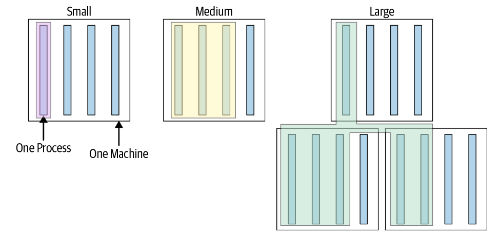
Figure 11-2. Test sizes Figure 11-2. 测试规模
We make this distinction, as opposed to the more traditional “unit” or “integration,” because the most important qualities we want from our test suite are speed and determinism, regardless of the scope of the test. Small tests, regardless of the scope, are almost always faster and more deterministic than tests that involve more infrastructure or consume more resources. Placing restrictions on small tests makes speed and determinism much easier to achieve. As test sizes grow, many of the restrictions are relaxed. Medium tests have more flexibility but also more risk of nondeterminism. Larger tests are saved for only the most complex and difficult testing scenarios. Let’s take a closer look at the exact constraints imposed on each type of test.
我们做出这样的区分，而不是更传统的 "单元 "或 "集成"，因为我们希望从我们的测试套件中得到的最重要的品质是速度和确定性，无论测试的范围如何。小型测试，无论范围如何，几乎总是比涉及更多基础设施或消耗更多资源的测试更快、更有确定性。对小型测试施加限制，使速度和确定性更容易实现。随着测试规模的增长，许多限制都被放松了。中型测试有更多的灵活性，但也有更多的非确定性的风险。大型测试只保存在最复杂和困难的测试场景中。让我们仔细看看每一种测试的确切约束条件。
4Technically, we have four sizes of test at Google: small, medium, large, and enormous. The internal difference between large and enormous is actually subtle and historical; so, in this book, most descriptions of large actually apply to our notion of enormous.
4 从技术上讲，我们在谷歌有四种规模的测试：小型、中型、大型和超大型。大型和超大型之间的内部差异实际上是微妙的和历史性的；因此，在本书中，大多数关于大型的描述实际上适用于我们的超大型概念。
Small tests 小型测试
Small tests are the most constrained of the three test sizes. The primary constraint is that small tests must run in a single process. In many languages, we restrict this even further to say that they must run on a single thread. This means that the code performing the test must run in the same process as the code being tested. You can’t run a server and have a separate test process connect to it. It also means that you can’t run a third-party program such as a database as part of your test.
小型测试是三种测试规模中被限制最严格的。主要的限制是，小测试必须在一个进程中运行。在许多语言中，我们甚至进一步限制，说它们必须在一个单线程上运行。这意味着执行测试的代码必须与被测试的代码在同一进程中运行。你不能运行一个服务器，而让一个单独的测试进程连接到它。这也意味着你不能运行第三方程序，如数据库作为你测试的一部分。
The other important constraints on small tests are that they aren’t allowed to sleep, perform I/O operations,5 or make any other blocking calls. This means that small tests aren’t allowed to access the network or disk. Testing code that relies on these sorts of operations requires the use of test doubles (see Chapter 13) to replace the heavyweight dependency with a lightweight, in-process dependency.
对小测试的其他重要限制是，它们不允许休眠，执行I/O操作，或进行任何其他阻塞调用。这意味着，小测试不允许访问网络或磁盘。测试依赖于这类操作的代码需要使用测试替代（见第13章)），用轻量级的进程内依赖取代重量级依赖。
The purpose of these restrictions is to ensure that small tests don’t have access to the main sources of test slowness or nondeterminism. A test that runs on a single process and never makes blocking calls can effectively run as fast as the CPU can handle. It’s difficult (but certainly not impossible) to accidentally make such a test slow or nondeterministic. The constraints on small tests provide a sandbox that prevents engineers from shooting themselves in the foot.
这些限制的目的是确保小的测试没有机会使用到测试缓慢或非确定性的主要来源。在单个进程上运行且从不进行阻塞调用的测试可以有效地以CPU能够处理的速度运行。除非一些极端场景， 小型测试绝大部分情况下执行高效、结果稳定准确。对小型测试的限制确保了这一点， 防止工程师自食其果。
These restrictions might seem excessive at first, but consider a modest suite of a couple hundred small test cases running throughout the day. If even a few of them fail nondeterministically (often called flaky tests), tracking down the cause becomes a serious drain on productivity. At Google’s scale, such a problem could grind our testing infrastructure to a halt.
起初，这些限制可能看起来太过夸张，但考虑一套完整的一组数百个小测试用例，在一天内运行完成。如果哪怕是其中的一小部分测试不确定地失败（通常称为松散测试），那么追踪原因将严重影响生产率。按照谷歌的规模，这样的问题可能会使我们的测试基础设施陷入停顿。
At Google, we encourage engineers to try to write small tests whenever possible, regardless of the scope of the test, because it keeps the entire test suite running fast and reliably. For more discussion on small versus unit tests, see Chapter 12.
在谷歌，我们鼓励工程师尽可能地编写小型测试，而不管测试的范围如何，因为这样可以使整个测试套件快速可靠地运行。有关小测试与单元测试的更多讨论，请参阅第12章。
5There is a little wiggle room in this policy. Tests are allowed to access a filesystem if they use a hermetic, in- memory implementation.
5 这个策略有一点回旋余地。如果测试使用的是密封的、内存中的实现，则允许访问文件系统。
Medium tests 中型测试
The constraints placed on small tests can be too restrictive for many interesting kinds of tests. The next rung up the ladder of test sizes is the medium test. Medium tests can span multiple processes, use threads, and can make blocking calls, including network calls, to localhost. The only remaining restriction is that medium tests aren’t allowed to make network calls to any system other than localhost. In other words, the test must be contained within a single machine.
对于许多有趣的测试类型来说，对小型测试的限制可能过于严格。测试规模的下一个阶梯是中型测试。中型测试可以跨越多个进程并使用线程，并可以对本地主机进行阻塞调用，包括网络调用。剩下的唯一限制是，中型测试不允许对 localhost 以外的任何系统进行网络调用。换句话说，测试必须包含在一台机器内。
The ability to run multiple processes opens up a lot of possibilities. For example, you could run a database instance to validate that the code you’re testing integrates correctly in a more realistic setting. Or you could test a combination of web UI and server code. Tests of web applications often involve tools like WebDriver that start a real browser and control it remotely via the test process.
运行多个进程的能力提供了很多可能性。例如，你可以运行一个数据库实例来验证你正在测试的代码是否正确地集成在更现实的设置中。或者你可以测试网络用户界面和服务器代码的组合。网络应用程序的测试经常涉及到像WebDriver这样的工具，它可以启动一个真正的浏览器，并通过测试过程远程控制它。
Unfortunately, with increased flexibility comes increased potential for tests to become slow and nondeterministic. Tests that span processes or are allowed to make blocking calls are dependent on the operating system and third-party processes to be fast and deterministic, which isn’t something we can guarantee in general. Medium tests still provide a bit of protection by preventing access to remote machines via the network, which is far and away the biggest source of slowness and nondeterminism in most systems. Still, when writing medium tests, the “safety” is off, and engineers need to be much more careful.
不幸的是，随着灵活性的增加，测试变得缓慢和不确定性也在增加。如果测试可以跨进程执行被允许进行阻塞性调用，那么它是否执行高效并保证结果稳定将依赖于操作系统和第三方进程， 这在一般情况下我们是无法保证的。中型测试仍然通过防止通过网络访问远程机器来提供一些保护，而网络是大多数系统中速度慢和非确定性的最大来源。尽管如此，在编写中型测试时，"安全 "是关闭的，工程师需要更加小心。
Large tests 大型测试
Finally, we have large tests. Large tests remove the localhost restriction imposed on medium tests, allowing the test and the system being tested to span across multiple machines. For example, the test might run against a system in a remote cluster.
最后，我们有大型测试。大型测试取消了中型测试的本地主机限制，允许测试和被测系统跨越多台机器。例如，测试可能针对远程集群中的系统运行。
As before, increased flexibility comes with increased risk. Having to deal with a system that spans multiple machines and the network connecting them increases the chance of slowness and nondeterminism significantly compared to running on a single machine. We mostly reserve large tests for full-system end-to-end tests that are more about validating configuration than pieces of code, and for tests of legacy components for which it is impossible to use test doubles. We’ll talk more about use cases for large tests in Chapter 14. Teams at Google will frequently isolate their large tests from their small or medium tests, running them only during the build and release process so as not to impact developer workflow.
和以前一样，灵活性的提高伴随着风险的增加。与在单一机器上运行相比，必须处理跨多台机器的系统以及连接这些机器的网络会显著增加速度慢和不确定性的概率。我们主要为全系统端到端测试保留大型测试，这些测试更多的是验证配置，而不是代码片段，并且为不可能使用测试替代的遗留组件的测试保留大型测试。我们将在第14章中更多地讨论大型测试的用例。谷歌的团队经常将大型测试与小型或中型测试隔离开来，只在构建和发布过程中运行它们，以免影响开发人员的工作流程。
Case Study: Flaky Tests Are Expensive 案例研究：松散（不稳定）测试很昂贵
If you have a few thousand tests, each with a very tiny bit of nondeterminism, running all day, occasionally one will probably fail (flake). As the number of tests grows, statistically so will the number of flakes. If each test has even a 0.1% of failing when it should not, and you run 10,000 tests per day, you will be investigating 10 flakes per day. Each investigation takes time away from something more productive that your team could be doing.
如果你有几千个测试，每个测试都有非常小的不确定性，整天运行，偶尔会有一个可能会失败（松散）。随着测试数量的增加，从统计学上看，松散的数量也会增加。如果每个测试都有0.1%的失败率，而你每天运行10,000个测试，你每天将调查10个松散。每次调查都会从团队可能会做的更有效率的事情中抽出时间。
In some cases, you can limit the impact of flaky tests by automatically rerunning them when they fail. This is effectively trading CPU cycles for engineering time. At low levels of flakiness, this trade-off makes sense. Just keep in mind that rerunning a test is only delaying the need to address the root cause of flakiness.
在某些情况下，你可以通过在测试失败时自动重新运行测试，可以进减少松散测试的影响。这实际上是用CPU周期换取工程时间。在低水平的松散情况下，这种权衡是有意义的。记住，重新运行测试只会推迟解决片状问题根本原因的需要。
If test flakiness continues to grow, you will experience something much worse than lost productivity: a loss of confidence in the tests. It doesn’t take needing to investigate many flakes before a team loses trust in the test suite. After that happens, engineers will stop reacting to test failures, eliminating any value the test suite provided. Our experience suggests that as you approach 1% flakiness, the tests begin to lose value. At Google, our flaky rate hovers around 0.15%, which implies thousands of flakes every day. We fight hard to keep flakes in check, including actively investing engineering hours to fix them.
如果测试失误继续增长，你将经历比生产效率下降更糟糕的事情：对测试的失去信心。在团队失去对测试套件的信任之前，不需要投入太多的精力。发生这种情况后，工程师将停止对测试失败的反应，消除测试套件提供的任何价值。我们的经验表明，当你接近1%的松散率时，测试开始失去价值。在谷歌，我们的松散率徘徊在0.15%左右，这意味着每天有成千上万的不稳定。我们努力地控制故障率，包括积极地投入工程时间来修复它们。
In most cases, flakes appear because of nondeterministic behavior in the tests themselves. Software provides many sources of nondeterminism: clock time, thread scheduling, network latency, and more. Learning how to isolate and stabilize the effects of randomness is not easy. Sometimes, effects are tied to low-level concerns like hardware interrupts or browser rendering engines. A good automated test infrastructure should help engineers identify and mitigate any nondeterministic behavior.
在大多数情况下，松散出现是因为测试本身的不确定性行为。软件提供了许多不确定性的来源：时钟时间、线程调度、网络延迟，等等。学习如何隔离和稳定随机性的影响并不容易。有时，影响与硬件中断或浏览器渲染引擎等低层的问题联系在一起。一个好的自动化测试基础设施应该帮助工程师识别和缓解任何不确定性行为。
Properties common to all test sizes 所有测试规模的共同属性
All tests should strive to be hermetic: a test should contain all of the information necessary to set up, execute, and tear down its environment. Tests should assume as little as possible about the outside environment, such as the order in which the tests are run. For example, they should not rely on a shared database. This constraint becomes more challenging with larger tests, but effort should still be made to ensure isolation.
所有测试都应该追求封闭性，即测试应该包含设置、执行和拆除测试环境所需的所有必要信息。测试应该尽可能少地假设外部环境，例如测试的运行顺序。例如，他们不应该依赖共享数据库。这种约束在大型测试中变得更具挑战性，但仍应努力确保隔离
A test should contain only the information required to exercise the behavior in question. Keeping tests clear and simple aids reviewers in verifying that the code does what it says it does. Clear code also aids in diagnosing failure when they fail. We like to say that “a test should be obvious upon inspection.” Because there are no tests for the tests themselves, they require manual review as an important check on correctness. As a corollary to this, we also strongly discourage the use of control flow statements like conditionals and loops in a test. More complex test flows risk containing bugs themselves and make it more difficult to determine the cause of a test failure.
测试应该仅包含检验所关注行为所必需的信息。保持测试的清晰和简单，有助于审查人员验证代码是否做了它所说的事情。清晰的代码也有助于在测试失败时诊断失败。我们喜欢说，"测试应该在检查时是明显的"。因为测试本身没有测试，所以需要手动检查，作为对正确性的重要检查。作为一个推论，我们也强烈反对在测试中使用控制流语句，如条件和循环。更加复杂的测试流程有可能本身包含bug，并使确定测试失败的原因更加困难。
Remember that tests are often revisited only when something breaks. When you are called to fix a broken test that you have never seen before, you will be thankful someone took the time to make it easy to understand. Code is read far more than it is written, so make sure you write the test you’d like to read!
请记住，测试只有在出现故障时，才会重新检查测试。当你被要求修复一个你从未见过的失败测试时，你会感激有人花时间让它变得容易理解。代码的读取量远远大于写入量，所以要确保你写的测试是你看得懂的！
Test sizes in practice. Having precise definitions of test sizes has allowed us to create tools to enforce them. Enforcement enables us to scale our test suites and still make certain guarantees about speed, resource utilization, and stability. The extent to which these definitions are enforced at Google varies by language. For example, we run all Java tests using a custom security manager that will cause all tests tagged as small to fail if they attempt to do something prohibited, such as establish a network connection.
**测试规模的实践。**有了测试规模的精确定义，我们就可以创建工具来执行它们。强制执行使我们能够扩展我们的测试套件，并仍然对速度、资源利用和稳定性做出一定的保证。在谷歌，这些定义的执行程度因语言而异。例如，我们使用一个自定义的安全管理器来运行所有的Java测试，如果它们试图做一些被禁止的事情，如建立网络连接，就会导致所有被标记为小型测试失败。
Test Scope 测试范围
Though we at Google put a lot of emphasis on test size, another important property to consider is test scope. Test scope refers to how much code is being validated by a given test. Narrow-scoped tests (commonly called “unit tests”) are designed to validate the logic in a small, focused part of the codebase, like an individual class or method. Medium-scoped tests (commonly called integration tests) are designed to verify interactions between a small number of components; for example, between a server and its database. Large-scoped tests (commonly referred to by names like functional tests, end-to-end tests, or system tests) are designed to validate the interaction of several distinct parts of the system, or emergent behaviors that aren’t expressed in a single class or method.
尽管我们在谷歌非常强调测试规模，但另一个需要考虑的重要属性是测试范围。测试范围是指一个测试要验证多少代码。狭小范围的测试（通常称为 "单元测试"）被设计用来验证代码库中一小部分的逻辑，比如单独的类或方法。中等范围的测试（通常称为集成测试）被设计用来验证少量组件之间的相互作用；例如，在服务器和它的数据库之间。大范围测试（通常被称为功能测试，端到端测试，或系统测试）被设计用来验证系统的几个不同部分的相互作用，或不在单个类或方法中表达的出现的行为。
It’s important to note that when we talk about unit tests as being narrowly scoped, we’re referring to the code that is being validated, not the code that is being executed. It’s quite common for a class to have many dependencies or other classes it refers to, and these dependencies will naturally be invoked while testing the target class. Though some other testing strategies make heavy use of test doubles (fakes or mocks) to avoid executing code outside of the system under test, at Google, we prefer to keep the real dependencies in place when it is feasible to do so. Chapter 13 discusses this issue in more detail.
值得注意的是，当我们谈论单元测试是狭义的范围时，我们指的是正在验证的代码，而不是正在执行的代码。一个类有许多依赖关系或它引用的其他类是很常见的，这些依赖关系在测试目标类时自然会被调用。尽管有其他测试策略大量使用测试替代（假的或模拟的）来避免执行被测系统之外的代码，但在Google，我们更愿意在可行的情况下保持真正的依赖关系。第13章更详细地讨论了这个问题。
Narrow-scoped tests tend to be small, and broad-scoped tests tend to be medium or large, but this isn’t always the case. For example, it’s possible to write a broad-scoped test of a server endpoint that covers all of its normal parsing, request validation, and business logic, which is nevertheless small because it uses doubles to stand in for all out-of-process dependencies like a database or filesystem. Similarly, it’s possible to write a narrow-scoped test of a single method that must be medium sized. For example, modern web frameworks often bundle HTML and JavaScript together, and testing a UI component like a date picker often requires running an entire browser, even to validate a single code path.
狭小范围的测试往往较小，而广泛范围的测试往往是中等或较大的，但这并非总是如此。例如，有可能对一个服务器端点写一个大范围的测试，包括所有正常的解析、请求验证和业务逻辑，但这是小范围的，因为它用替代来代替所有进程外的依赖，如数据库或文件系统。同样，也可以对一个单一的方法写一个范围较窄的测试，但必须是中等大小。例如，现代网络框架经常将HTML和JavaScript捆绑在一起，测试像日期选择器这样的UI组件经常需要运行整个浏览器，即使是验证单个的代码路径。
Just as we encourage tests of smaller size, at Google, we also encourage engineers to write tests of narrower scope. As a very rough guideline, we tend to aim to have a mix of around 80% of our tests being narrow-scoped unit tests that validate the majority of our business logic; 15% medium-scoped integration tests that validate the interactions between two or more components; and 5% end-to-end tests that validate the entire system. Figure 11-3 depicts how we can visualize this as a pyramid.
正如我们鼓励在谷歌进行更小规模的测试一样，我们也鼓励工程师编写范围更狭小的测试。作为一个非常粗略的指导方针，我们倾向于将大约80%的测试混合在一起，这些测试是验证大多数业务逻辑的狭小范围单元测试；15%的中型集成测试，用于验证两个或多个组件之间的相互作用；以及验证整个系统的5%端到端测试。图11-3描述了我们如何将其视为金字塔。
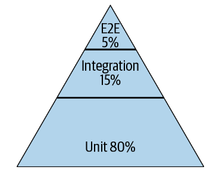
Figure 11-3. Google’s version of Mike Cohn’s test pyramid;6 percentages are by test case count, and every team’s mix will be a little different 图11-3. 谷歌对Mike Cohn的测试金字塔的版本百分比是按测试案例来计算的，每个团队的组合都会有一些不同
Unit tests form an excellent base because they are fast, stable, and dramatically narrow the scope and reduce the cognitive load required to identify all the possible behaviors a class or function has. Additionally, they make failure diagnosis quick and painless. Two antipatterns to be aware of are the “ice cream cone” and the “hourglass,” as illustrated in Figure 11-4.
单元测试是一个很好的基础，因为它们快速、稳定，并且极大地缩小了范围，减少了识别一个类或函数的所有可能行为所需的认知负荷。此外，它们使故障诊断变得快速而无感。需要注意的两个反模式是 "冰淇淋筒 "和 "沙漏"，如图11-4所示。
With the ice cream cone, engineers write many end-to-end tests but few integration or unit tests. Such suites tend to be slow, unreliable, and difficult to work with. This pattern often appears in projects that start as prototypes and are quickly rushed to production, never stopping to address testing debt.
在冰淇淋筒中，工程师们写了许多端到端的测试，但很少有集成或单元测试。这样的套件往往是速度慢、不可靠，而且难以使用。这种模式经常出现在以原型开始的项目中，并很快投入生产，从来没有停止过解决测试债务。
The hourglass involves many end-to-end tests and many unit tests but few integration tests. It isn’t quite as bad as the ice cream cone, but it still results in many end-to- end test failures that could have been caught quicker and more easily with a suite of medium-scope tests. The hourglass pattern occurs when tight coupling makes it difficult to instantiate individual dependencies in isolation.
沙漏涉及许多端到端的测试和许多单元测试，但很少有集成测试。它不像冰淇淋筒那样糟糕，但它仍然导致许多端到端的测试失败，而这些失败本可以通过一套中等范围的测试更快、更容易地发现。当紧密耦合使单独实例化单个依赖项变得困难时，就会出现沙漏模式。
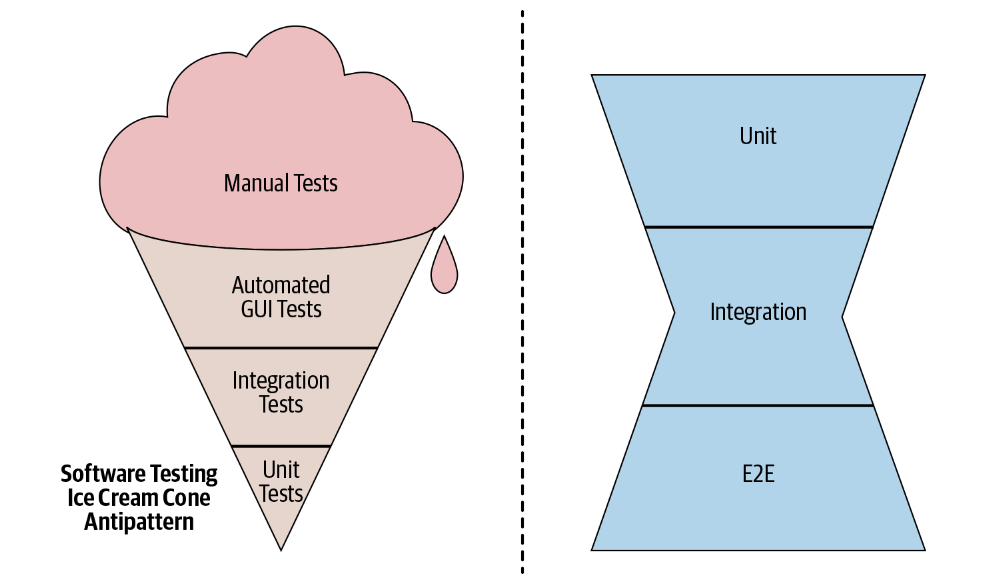
Figure 11-4. Test suite antipatterns 图11-4. 测试套件的反模式
Our recommended mix of tests is determined by our two primary goals: engineering productivity and product confidence. Favoring unit tests gives us high confidence quickly, and early in the development process. Larger tests act as sanity checks as the product develops; they should not be viewed as a primary method for catching bugs.
我们推荐的测试组合是由我们的两个主要目标决定的：提高工程生产效率和产品信心。在开发过程的早期阶段，优先进行单元测试可以让我们快速获得高度信心。在产品的开发过程中，大型测试可以作为健康检查；它们不应被视为捕获bug的主要方法
When considering your own mix, you might want a different balance. If you emphasize integration testing, you might discover that your test suites take longer to run but catch more issues between components. When you emphasize unit tests, your test suites can complete very quickly, and you will catch many common logic bugs. But, unit tests cannot verify the interactions between components, like a contract between two systems developed by different teams. A good test suite contains a blend of different test sizes and scopes that are appropriate to the local architectural and organizational realities.
当考虑你自己的组合时，你可能想要一个不同的平衡。如果你强调集成测试，你可能会发现你的测试套件需要更长的时间来运行，但在组件之间捕获更多的问题。当你强调单元测试时，你的测试套件可以很快完成，而且你会捕捉到许多常见的逻辑错误。但是，单元测试无法验证组件之间的交互，就像由不同团队开发的两个系统之间的契约一样。一个好的测试套件应该包含不同规模和范围的测试，以适应本地的架构和组织实际情况。
6Mike Cohn, Succeeding with Agile: Software Development Using Scrum (New York: Addison-Wesley Professional, 2009).
6 Mike Cohn，《敏捷的成功：使用Scrum的软件开发》（纽约：Addison-Wesley Professio-nal，2009）。
The Beyoncé Rule 碧昂斯规则
We are often asked, when coaching new hires, which behaviors or properties actually need to be tested? The straightforward answer is: test everything that you don’t want to break. In other words, if you want to be confident that a system exhibits a particular behavior, the only way to be sure it will is to write an automated test for it. This includes all of the usual suspects like testing performance, behavioral correctness, accessibility, and security. It also includes less obvious properties like testing how a system handles failure.
在指导新员工时，我们经常被问到，究竟哪些行为或属性需要被测试？直截了当的回答是：测试所有你不想破坏的东西。换句话说，如果你想确信一个系统表现出一个特定的行为，唯一能确保它会表现出这种行为的方法就是为它编写一个自动测试。这包括所有常见的可疑因素，如测试性能、行为正确性、可访问性和安全性。它还包括不太明显的属性，如测试系统如何处理故障。
We have a name for this general philosophy: we call it the Beyoncé Rule. Succinctly, it can be stated as follows: “If you liked it, then you shoulda put a test on it.” The Beyoncé Rule is often invoked by infrastructure teams that are responsible for making changes across the entire codebase. If unrelated infrastructure changes pass all of your tests but still break your team’s product, you are on the hook for fixing it and adding the additional tests.
我们对这一总体理念有一个名称：我们称之为碧昂斯规则。简而言之，它可以被陈述如下。"如果你喜欢它，那么你就应该对它进行测试"。碧昂斯规则通常由负责在整个代码库中进行更改的基础架构团队引用。如果不相关的基础设施变化通过了你所有的测试，但仍然破坏了你的团队的产品，你就得负责修复它并增加额外的测试。
Testing for Failure 失败测试
One of the most important situations a system must account for is failure. Failure is inevitable, but waiting for an actual catastrophe to find out how well a system responds to a catastrophe is a recipe for pain. Instead of waiting for a failure, write automated tests that simulate common kinds of failures. This includes simulating exceptions or errors in unit tests and injecting Remote Procedure Call (RPC) errors or latency in integration and end-to-end tests. It can also include much larger disruptions that affect the real production network using techniques like Chaos Engineering. A predictable and controlled response to adverse conditions is a hallmark of a reliable system.
系统必须考虑的最重要的情况之一是如何面对失败。失败是不可避免的，但是要被动等待实际的故障发生后才做对应的补救，是令人痛苦的。与其等待失败，不如写自动测试来模拟常见的失败类型。这包括在单元测试中模拟异常或错误，在集成和端到端测试中注入远程过程调用（RPC）错误或延迟。它还可以包括使用混沌工程等技术影响真实生产网络的更大的破坏。对不利条件的可预测和可控制的反应是一个可靠系统的标志。
A Note on Code Coverage 关于代码覆盖率的注意事项
Code coverage is a measure of which lines of feature code are exercised by which tests. If you have 100 lines of code and your tests execute 90 of them, you have 90% code coverage.7 Code coverage is often held up as the gold standard metric for understanding test quality, and that is somewhat unfortunate. It is possible to exercise a lot of lines of code with a few tests, never checking that each line is doing anything useful. That’s because code coverage only measures that a line was invoked, not what happened as a result. (We recommend only measuring coverage from small tests to avoid coverage inflation that occurs when executing larger tests.)
代码覆盖率衡量的是哪些功能代码行被测试执行。如果你有100行代码，你的测试执行了其中的90行，你就有90%的代码覆盖率。 代码覆盖率经常被认为是理解测试质量的黄金标准，这是不幸的。有可能用几个测试来验证大量的代码行，但从未检查过每一行是否在做任何有用的事情。这是因为代码覆盖率只衡量一行被调用的情况，而不是结果。(我们建议只测量小型测试的覆盖率，以避免执行大型测试时出现覆盖率膨胀）。
An even more insidious problem with code coverage is that, like other metrics, it quickly becomes a goal unto itself. It is common for teams to establish a bar for expected code coverage—for instance, 80%. At first, that sounds eminently reasonable; surely you want to have at least that much coverage. In practice, what happens is that instead of treating 80% like a floor, engineers treat it like a ceiling. Soon, changes begin landing with no more than 80% coverage. After all, why do more work than the metric requires?
代码覆盖率更为隐蔽的问题在于，和其他度量标准一样，它本身很快就变成了一个目标。对于团队来说，建立一个预期代码覆盖率的标准是很常见的，比如说80%。起初，这听起来非常合理；你肯定希望至少有这么多的覆盖率。在实践中，发生的情况是，工程师们不是把80%当作一个底线，而是把它当作一个上限。很快，变化就开始了，覆盖率不超过80%。毕竟，为什么要做比指标要求更多的工作？
A better way to approach the quality of your test suite is to think about the behaviors that are tested. Do you have confidence that everything your customers expect to work will work? Do you feel confident you can catch breaking changes in your dependencies? Are your tests stable and reliable? Questions like these are a more holistic way to think about a test suite. Every product and team is going to be different; some will have difficult-to-test interactions with hardware, some involve massive datasets. Trying to answer the question “do we have enough tests?” with a single number ignores a lot of context and is unlikely to be useful. Code coverage can provide some insight into untested code, but it is not a substitute for thinking critically about how well your system is tested.
更好地评估测试套件质量的方法是考虑被测试的行为。你有信心你的客户所期望的一切都能正常工作吗？你是否有信心能抓住你的依赖关系中的突发变化？你的测试是否稳定和可靠？像这样的问题是思考测试套件的一种更全面的方式。每个产品和团队都是不同的；有些会有难以测试的与硬件的互动，有些涉及到庞大的数据集。试图用一个独立的数字来回答 "我们是否拥有足够的测试？"忽略了很多背景，不太可能是有用的。代码覆盖率可以提供一些对未测试代码的洞察力，但它不能替代对系统测试情况的批判性思考。
7Keep in mind that there are different kinds of coverage (line, path, branch, etc.), and each says something different about which code has been tested. In this simple example, line coverage is being used.
7 请记住，有不同种类的覆盖率（行覆盖、路径覆盖、分支覆盖等），每一种都说明了不同的代码被测试的情况。在这个简单的例子中，我们使用的是行覆盖。
Testing at Google Scale 以谷歌的规模进行测试
Much of the guidance to this point can be applied to codebases of almost any size. However, we should spend some time on what we have learned testing at our very large scale. To understand how testing works at Google, you need an understanding of our development environment, the most important fact about which is that most of Google’s code is kept in a single, monolithic repository (monorepo). Almost every line of code for every product and service we operate is all stored in one place. We have more than two billion lines of code in the repository today.
到此为止的许多指导原则几乎可以应用于任何大小的代码库。然而，我们应该花一些时间来讨论我们在非常大的规模下测试所学到的经验教训。要了解测试在谷歌是如何工作的，你需要了解我们的开发环境，其中最重要的事实是，谷歌的大部分代码都保存在一个单个单版本版本库（monorepo）。我们运营的每种产品和服务的几乎每一行代码都存储在一个地方。今天，存储库中有20多亿行代码。
Google’s codebase experiences close to 25 million lines of change every week. Roughly half of them are made by the tens of thousands of engineers working in our monorepo, and the other half by our automated systems, in the form of configuration updates or large-scale changes (Chapter 22). Many of those changes are initiated from outside the immediate project. We don’t place many limitations on the ability of engineers to reuse code.
谷歌的代码库每周要处理近2500万行代码变更。其中大约一半是由成千上万的工程师在我们的monorepo中工作，另一半是由我们的自动化系统以配置更新或大规模变更的形式进行的（第22章)）。其中许多变更是由直接项目以外的人发起的。我们对工程师重用代码的能力没有设置过多限制。
The openness of our codebase encourages a level of co-ownership that lets everyone take responsibility for the codebase. One benefit of such openness is the ability to directly fix bugs in a product or service you use (subject to approval, of course) instead of complaining about it. This also implies that many people will make changes in a part of the codebase owned by someone else.
我们代码库的开放性鼓励了一定程度的共同所有权，让每个人都对代码库负责。这种开放性的一个好处是能够直接修复你使用的产品或服务中的错误（当然，需要获得批准），而不是抱怨它。这也意味着许多人将对其他人拥有的代码库的一部分进行更改。
Another thing that makes Google a little different is that almost no teams use repository branching. All changes are committed to the repository head and are immediately visible for everyone to see. Furthermore, all software builds are performed using the last committed change that our testing infrastructure has validated. When a product or service is built, almost every dependency required to run it is also built from source, also from the head of the repository. Google manages testing at this scale by use of a CI system. One of the key components of our CI system is our Test Automated Platform (TAP).
另一件让谷歌有点不同的事情是，几乎没有团队使用版本库分支。所有的更改都提交到了版本库的head，并且每个人都可以立即看到。此外，所有的软件构建都是使用我们的测试基础设施验证过的最后一次提交的变更。当一个产品或服务被构建时，几乎所有运行该产品或服务所需的依赖也都是从源代码构建的，也是从资源库的head。谷歌通过使用CI系统来管理这种规模的测试。我们CI系统的关键组成部分之一是我们的测试自动化平台（TAP）。
Whether you are considering our size, our monorepo, or the number of products we offer, Google’s engineering environment is complex. Every week it experiences millions of changing lines, billions of test cases being run, tens of thousands of binaries being built, and hundreds of products being updated—talk about complicated!
不论是从规模、单一代码库(monorepo)，还是我们提供的产品数量来看，谷歌的工程环境都非常复杂。每周，它都要经历数百万条变化的线路，数十亿个测试案例的运行，数万个二进制文件的构建，以及数百个产品的更新--说起来很复杂!
The Pitfalls of a Large Test Suite 大型测试套件的缺陷
As a codebase grows, you will inevitably need to make changes to existing code. When poorly written, automated tests can make it more difficult to make those changes. Brittle tests—those that over-specify expected outcomes or rely on extensive and complicated boilerplate—can actually resist change. These poorly written tests can fail even when unrelated changes are made.
随着代码库的增长，不可避免地需要对现有代码进行更改。如果编写得不好，自动化测试会使进行这些更改变得更加困难。脆性测试——那些过度指定预期结果或依赖广泛而复杂的模板的测试，实际上可能阻碍变更。这些写得不好的测试可能会失败，即使是在进行不相关的更改时。
If you have ever made a five-line change to a feature only to find dozens of unrelated, broken tests, you have felt the friction of brittle tests. Over time, this friction can make a team reticent to perform necessary refactoring to keep a codebase healthy. The subsequent chapters will cover strategies that you can use to improve the robustness and quality of your tests.
如果你曾经对一个功能做了五行的修改，却发现有几十个不相关的、中断的测试，你就会感觉到脆性测试的阻力。随着时间的推移，这种阻力会使一个团队不愿意进行必要的重构来保持代码库的健康。后续章节将介绍可用于提高测试健壮性和质量的策略。
Some of the worst offenders of brittle tests come from the misuse of mock objects. Google’s codebase has suffered so badly from an abuse of mocking frameworks that it has led some engineers to declare “no more mocks!” Although that is a strong statement, understanding the limitations of mock objects can help you avoid misusing them.
脆性测试中最糟糕的违规行为之一是滥用模拟对象。谷歌的代码库因滥用模拟框架而受到严重影响，导致一些工程师宣布 "不再使用模拟对象"。虽然这是一个强烈的声明，但了解模拟对象的局限性可以帮助你避免滥用它们。
In addition to the friction caused by brittle tests, a larger suite of tests will be slower to run. The slower a test suite, the less frequently it will be run, and the less benefit it provides. We use a number of techniques to speed up our test suite, including parallelizing execution and using faster hardware. However, these kinds of tricks are eventually swamped by a large number of individually slow test cases.
除了脆性测试引起的阻力外，大型测试套件的运行速度也会更慢。测试套件越慢，它的运行频率就越低，提供的好处也就越少。我们使用一些技术来加快我们的测试套件，包括并行执行和使用更快的硬件。然而，这些技巧甚至被大量单独的缓慢测试用例所淹没。
Tests can become slow for many reasons, like booting significant portions of a system, firing up an emulator before execution, processing large datasets, or waiting for disparate systems to synchronize. Tests often start fast enough but slow down as the system grows. For example, maybe you have an integration test exercising a single dependency that takes five seconds to respond, but over the years you grow to depend on a dozen services, and now the same tests take five minutes.
测试会因为很多原因而变得缓慢，比如启动系统的重要部分，在执行前启动模拟器，处理大型数据集，或者等待不同的系统同步。测试开始时往往足够快，但随着系统的发展，速度会变慢。例如，也许你有一个集成测试，它请求某个依赖，需要5秒钟的响应，但随着时间的推移，你逐步依赖十几个服务，现在同样的测试需要5分钟。
Tests can also become slow due to unnecessary speed limits introduced by functions like sleep() and setTimeout(). Calls to these functions are often used as naive heuristics before checking the result of nondeterministic behavior. Sleeping for half a second here or there doesn’t seem too dangerous at first; however, if a “wait-and-check” is embedded in a widely used utility, pretty soon you have added minutes of idle time to every run of your test suite. A better solution is to actively poll for a state transition with a frequency closer to microseconds. You can combine this with a timeout value in case a test fails to reach a stable state.
测试可能因sleep()和setTimeout()等函数引入的不必要速度限制而变慢。在检查不确定性行为的结果之前，对这些函数的调用通常被用作简单的启发式。在这里或那里休眠半秒钟，起初看起来并不太危险；然而，如果 "等待和检查 "被嵌入到一个广泛使用的工具中，很快你就会在你的测试套件的每次运行中增加几分钟的等待时间。更好的解决方案是以接近微秒的频率主动轮询状态转换。你可以把它和一个超时值结合起来，以防测试无法达到稳定状态。
Failing to keep a test suite deterministic and fast ensures it will become roadblock to productivity. At Google, engineers who encounter these tests have found ways to work around slowdowns, with some going as far as to skip the tests entirely when submitting changes. Obviously, this is a risky practice and should be discouraged, but if a test suite is causing more harm than good, eventually engineers will find a way to get their job done, tests or no tests.
如果不能保持测试套件的确定性和速度，那么它将成为生产力的障碍。在谷歌，遇到这些测试的工程师们已经找到了解决速度慢的方法，有些人甚至在提交更改时完全跳过测试。显然，这是一种危险的做法，应该被阻止，但如果测试套件利大于弊，最终工程师会找到一种方法来完成他们的工作，不管有没有测试。
The secret to living with a large test suite is to treat it with respect. Incentivize engineers to care about their tests; reward them as much for having rock-solid tests as you would for having a great feature launch. Set appropriate performance goals and refactor slow or marginal tests. Basically, treat your tests like production code. When simple changes begin taking nontrivial time, spend effort making your tests less brittle.
与大型测试套件共处的秘诀在于尊重它。激励工程师关心他们的测试；奖励他们拥有坚如磐石的测试，就像奖励他们推出一个伟大的功能一样。设定适当的性能目标，重构渐进或边缘测试。基本上，要像对待生产代码一样对待测试。当简单的修改开始花费大量的时间时，要花精力让你的测试不那么脆弱。
In addition to developing the proper culture, invest in your testing infrastructure by developing linters, documentation, or other assistance that makes it more difficult to write bad tests. Reduce the number of frameworks and tools you need to support to increase the efficiency of the time you invest to improve things.8 If you don’t invest in making it easy to manage your tests, eventually engineers will decide it isn’t worth having them at all.
除了发展适当的文化，通过开发工具、文档或其他援助，投资于你的测试基础设施，这些帮助会使其更难写出糟糕的测试。减少你需要支持的框架和工具的数量，以提高改进工作的时间效率。如果不投资于简化测试管理，工程师最终会认为根本不值得拥有它们。
8Each supported language at Google has one standard test framework and one standard mocking/stubbing library. One set of infrastructure runs most tests in all languages across the entire codebase.
8 谷歌支持的每种语言都有一个标准的测试框架和一个标准的模拟/打桩库。一套基础设施在整个代码库中运行所有语言的大多数测试。
History of Testing at Google 谷歌的测试历史
Now that we’ve discussed how Google approaches testing, it might be enlightening to learn how we got here. As mentioned previously, Google’s engineers didn’t always embrace the value of automated testing. In fact, until 2005, testing was closer to a curiosity than a disciplined practice. Most of the testing was done manually, if it was done at all. However, from 2005 to 2006, a testing revolution occurred and changed the way we approach software engineering. Its effects continue to reverberate within the company to this day.
既然我们已经讨论了谷歌是如何进行测试的，了解我们如何发展到这一点可能是有启发性的。如前所述，自动化测试的价值。事实上，直到2005年，测试更像是一种好奇心，而不是一种严格的实践。大部分的测试都是手动完成的，如果有的话。然而，从2005年到2006年，发生了一场测试革命，改变了我们对待软件工程的方式。其影响至今仍在公司内部回响。
The experience of the GWS project, which we discussed at the opening of this chapter, acted as a catalyst. It made it clear how powerful automated testing could be. Following the improvements to GWS in 2005, the practices began spreading across the entire company. The tooling was primitive. However, the volunteers, who came to be known as the Testing Grouplet, didn’t let that slow them down.
我们在本章开头讨论的GWS项目的经验，起到了催化作用。它清晰地展示了自动化测试的强大潜力。在2005年对GWS的改进之后，这种做法开始在整个公司推广。工具是原始的。然而，被称为 "测试小组 "的志愿者们并没有因此而懈怠。
Three key initiatives helped usher automated testing into the company’s consciousness: Orientation Classes, the Test Certified program, and Testing on the Toilet. Each one had influence in a completely different way, and together they reshaped Google’s engineering culture.
三个关键的举措有助于将自动化测试引入公司的意识。定向班、测试认证计划和厕所测试。每一项都以完全不同的方式产生影响，它们共同重塑了谷歌的工程文化。
Orientation Classes 定向班
Even though much of the early engineering staff at Google eschewed testing, the pioneers of automated testing at Google knew that at the rate the company was growing, new engineers would quickly outnumber existing team members. If they could reach all the new hires in the company, it could be an extremely effective avenue for introducing cultural change. Fortunately, there was, and still is, a single choke point that all new engineering hires pass through: orientation.
尽管谷歌早期的工程人员大多回避测试，但Google自动化测试的工程师们知道，按照公司的发展速度，新加入的工程师会很快超过现有的团队成员。如果他们能接触到公司所有的新员工，这可能是一个引入文化变革的极其有效的途径。幸运的是，所有新的工程人员都要经历一个节点：入职培训。
Most of Google’s early orientation program concerned things like medical benefits and how Google Search worked, but starting in 2005 it also began including an hour- long discussion of the value of automated testing.9 The class covered the various benefits of testing, such as increased productivity, better documentation, and support for refactoring. It also covered how to write a good test. For many Nooglers (new Googlers) at the time, such a class was their first exposure to this material. Most important, all of these ideas were presented as though they were standard practice at the company. The new hires had no idea that they were being used as trojan horses to sneak this idea into their unsuspecting teams.
谷歌早期的新人培训大多涉及诸如医疗福利和谷歌搜索如何工作，但从2005年开始，它也开始包括一个长达一小时的关于自动化测试价值的讨论。该课程涵盖了测试的各种好处，如提高生产力，更好的文档，以及对重构的支持。它还包括如何写一个好的测试。对于当时的许多Nooglers（新的Googlers）来说，这样的课程是他们第一次接触到这种内容。最重要的是，所有这些想法都是作为公司的标准做法来介绍的。新员工们不知道他们被当作特洛伊木马，把这种想法偷偷带入他们毫无戒心的团队。
As Nooglers joined their teams following orientation, they began writing tests and questioning those on the team who didn’t. Within only a year or two, the population of engineers who had been taught testing outnumbered the pretesting culture engineers. As a result, many new projects started off on the right foot.
当Noogler加入他们的团队后，他们开始写测试，并质疑团队中那些没有写的人。在短短的一两年内，接受过测试教学的工程师人数超过了预先测试的文化工程师。因此，许多新项目一开始就很顺利。
Testing has now become more widely practiced in the industry, so most new hires arrive with the expectations of automated testing firmly in place. Nonetheless, orientation classes continue to set expectations about testing and connect what Nooglers know about testing outside of Google to the challenges of doing so in our very large and very complex codebase.
现在，测试已经在行业中得到了更广泛的应用，所以大多数新员工来到这里时，对自动化测试的期望已经很高了。尽管如此，迎新课程仍然要设定对测试的期望，并将Nooglers在谷歌以外的测试知识与在我们庞大且复杂的代码库中进行测试的挑战联系起来。
9This class was so successful that an updated version is still taught today. In fact, it is one of the longest- running orientation classes in the company’s history.
9 这门课非常成功，以至于今天仍在教授更新的版本。事实上，它是公司历史上运行时间最长的定向课程之一。
Test Certified 测试认证
Initially, the larger and more complex parts of our codebase appeared resistant to good testing practices. Some projects had such poor code quality that they were almost impossible to test. To give projects a clear path forward, the Testing Grouplet devised a certification program that they called Test Certified. Test Certified aimed to give teams a way to understand the maturity of their testing processes and, more critically, cookbook instructions on how to improve it.
最初，我们的代码库中较大和较复杂的部分似乎对良好的测试实践有抵抗力。有些项目的代码质量很差，几乎无法测试。为了给项目提供一个明确的前进道路，测试小组设计了一个认证计划，他们称之为测试认证。测试认证的目的是让团队了解他们的测试过程的成熟度，更重要的是，提供关于如何改进测试的具体指导。
The program was organized into five levels, and each level required some concrete actions to improve the test hygiene on the team. The levels were designed in such a way that each step up could be accomplished within a quarter, which made it a convenient fit for Google’s internal planning cadence.
该计划分为五个等级，每个等级都需要一些具体的行动来改善团队的测试状况。这些等级的设计方式是，每个等级都可以在一个季度内完成，这使得它很适合谷歌的内部规划节奏。
Test Certified Level 1 covered the basics: set up a continuous build; start tracking code coverage; classify all your tests as small, medium, or large; identify (but don’t necessarily fix) flaky tests; and create a set of fast (not necessarily comprehensive) tests that can be run quickly. Each subsequent level added more challenges like “no releases with broken tests” or “remove all nondeterministic tests.” By Level 5, all tests were automated, fast tests were running before every commit, all nondeterminism had been removed, and every behavior was covered. An internal dashboard applied social pressure by showing the level of every team. It wasn’t long before teams were competing with one another to climb the ladder.
测试认证的第一级涵盖了基础知识：建立持续构建；开始跟踪代码覆盖率；将你的所有测试分类为小型、中型或大型；识别（但不一定要修复）松散（不稳定）测试；创建一套可以快速运行的快速（不一定全面）测试。随后的每一级都增加了更多的挑战，如 "不发布有问题的测试 "或 "删除所有不确定性的测试"。到了第五级，所有测试均已自动化，每次提交前都会运行快速测试，所有非确定性因素都已被排除，并且覆盖了每一种行为。一个内部仪表板通过显示每个团队的水平来施加竞争压力。没过多久，各团队就开始互相竞争，争先恐后。
By the time the Test Certified program was replaced by an automated approach in 2015 (more on pH later), it had helped more than 1,500 projects improve their testing culture.
到2015年测试认证项目被自动化方法取代时（后面会有更多关于pH值的介绍），它已经帮助超过1500个项目改善了他们的测试文化。
Testing on the Toilet 厕所测试
Of all the methods the Testing Grouplet used to try to improve testing at Google, perhaps none was more off-beat than Testing on the Toilet (TotT). The goal of TotT was fairly simple: actively raise awareness about testing across the entire company. The question is, what’s the best way to do that in a company with employees scattered around the world?
在测试小组用来改善谷歌测试的所有方法中，也许没有一种方法比 "厕所测试"（TotT）更离谱。TotT的目标相当简单：积极提高整个公司的测试意识。问题是，在一个员工分散在世界各地的办公地，怎样做才是最好的？
The Testing Grouplet considered the idea of a regular email newsletter, but given the heavy volume of email everyone deals with at Google, it was likely to become lost in the noise. After a little bit of brainstorming, someone proposed the idea of posting flyers in the restroom stalls as a joke. We quickly recognized the genius in it: the bathroom is one place that everyone must visit at least once each day, no matter what. Joke or not, the idea was cheap enough to implement that it had to be tried.
测试小组考虑了定期发送电子邮件通讯的想法，但由于谷歌每个人都要处理大量电子邮件，这些通讯很可能会在信息洪流中被忽视。经过一番头脑风暴后，有人半开玩笑地提出了在洗手间隔间张贴传单的想法。我们很快就认识到了其中的天才之处：无论如何，卫生间是每个人每天至少要去一次的地方。不管是不是玩笑，这个想法实施起来很简单，所以必须尝试一下。
In April 2006, a short writeup covering how to improve testing in Python appeared in restroom stalls across Google. This first episode was posted by a small band of volunteers. To say the reaction was polarized is an understatement; some saw it as an invasion of personal space, and they objected strongly. Mailing lists lit up with complaints, but the TotT creators were content: the people complaining were still talking about testing.
2006年4月，一篇涵盖如何改进Python测试的短文出现在整个谷歌的洗手间里。这第一集是由一小群志愿者发布的。说反应两极化是轻描淡写的；一些人认为这是对个人空间的侵犯，他们强烈反对。邮件列表中的抱怨声此起彼伏，但TotT的创造者们却很满意：即便是抱怨的人也在讨论测试问题。
Ultimately, the uproar subsided and TotT quickly became a staple of Google culture. To date, engineers from across the company have produced several hundred episodes, covering almost every aspect of testing imaginable (in addition to a variety of other technical topics). New episodes are eagerly anticipated and some engineers even volunteer to post the episodes around their own buildings. We intentionally limit each episode to exactly one page, challenging authors to focus on the most important and actionable advice. A good episode contains something an engineer can take back to the desk immediately and try.
最终，喧嚣平息下来，TotT迅速成为谷歌文化的一个重要组成部分。到目前为止，来自整个公司的工程师已经制作了数百集，涵盖了几乎所有可以想象的测试方面（除了各种其他技术主题）。人们热切期待着新的剧集，一些工程师甚至在自己的工位周围张贴剧集。我们有意将每一集的篇幅限制在一页以内，要求作者专注于最重要、可操作的建议。一集好的文章包含了工程师可以立即带回到办公桌上并进行尝试的内容。
Ironically for a publication that appears in one of the more private locations, TotT has had an outsized public impact. Most external visitors see an episode at some point in their visit, and such encounters often lead to funny conversations about how Googlers always seem to be thinking about code. Additionally, TotT episodes make great blog posts, something the original TotT authors recognized early on. They began publishing lightly edited versions publicly, helping to share our experience with the industry at large.
具有讽刺意味的是，对于一个出现在比较隐秘的地方的出版物来说，TotT已经产生了巨大的公共影响。大多数外部访问者在他们的访问中都会看到一集，而这样的接触往往会导致有趣的对话，即Googlers似乎总是在思考代码问题。此外，TotT剧集是很好的博客文章，这一点TotT的原作者很早就认识到了。他们开始公开发表轻量级的版本，帮助与整个行业分享我们的经验。
Despite starting as a joke, TotT has had the longest run and the most profound impact of any of the testing initiatives started by the Testing Grouplet.
尽管开始时只是一个玩笑，但TotT在测试小组发起的所有测试活动中，运行时间最长，影响最深远。
Testing Culture Today 当今的测试文化
Testing culture at Google today has come a long way from 2005. Nooglers still attend orientation classes on testing, and TotT continues to be distributed almost weekly. However, the expectations of testing have more deeply embedded themselves in the daily developer workflow.
与2005年相比，当前谷歌的测试文化已经有了长足的进步。Nooglers仍然参加关于测试的指导课程，TotT几乎每周都会继续分发。然而，对测试的期望已经更深入地嵌入到开发人员日常工作流程中。
Every code change at Google is required to go through code review. And every change is expected to include both the feature code and tests. Reviewers are expected to review the quality and correctness of both. In fact, it is perfectly reasonable to block a change if it is missing tests.
在谷歌，每一次代码变更都需要经过代码审查的流程。每个变更都期望包含特性代码和相应的测试代码。评审员应评审这两个文件的质量和正确性。事实上，如果某个更改缺少测试，那么阻止它通过是完全合理的。
As a replacement for Test Certified, one of our engineering productivity teams recently launched a tool called Project Health (pH). The pH tool continuously gathers dozens of metrics on the health of a project, including test coverage and test latency, and makes them available internally. pH is measured on a scale of one (worst) to five (best). A pH-1 project is seen as a problem for the team to address. Almost every team that runs a continuous build automatically gets a pH score.
作为测试认证的替代品，我们的一个工程生产力团队最近推出了一个名为项目健康指标（pH）的工具。pH工具不断收集项目运行状况的几十个指标，包括测试覆盖率和测试延迟，并将这些数据在公司内部共享。pH值以1（最差）到5（最佳）的比例进行测量。p被评为pH-1的项目被认为是团队亟需解决的问题。几乎每个运行持续构建的团队都会自动获得pH分数。
Over time, testing has become an integral part of Google’s engineering culture. We have myriad ways to reinforce its value to engineers across the company. Through a combination of training, gentle nudges, mentorship, and, yes, even a little friendly competition, we have created the clear expectation that testing is everyone’s job.
随着时间的推移，测试已经成为谷歌工程文化不可或缺的一部分。我们有很多方法来增强它对整个公司工程师的价值。通过培训、轻推、指导，甚至一点友好的竞争，我们已经建立了一个明确的期望，即测试是每个人的工作。
Why didn’t we start by mandating the writing of tests?
为什么我们不开始强制编写测试？
The Testing Grouplet had considered asking for a testing mandate from senior leadership but quickly decided against it. Any mandate on how to develop code would be seriously counter to Google culture and likely slow the progress, independent of the idea being mandated. The belief was that successful ideas would spread, so the focus became demonstrating success.
测试小组曾考虑要求高级领导提供测试授权，但很快决定放弃。任何关于如何开发代码的要求都将严重违背谷歌文化，并且可能会减缓进度，这与被授权的想法无关。人们相信成功的想法会传播开来，因此重点是人如何展示成功。
If engineers were deciding to write tests on their own, it meant that they had fully accepted the idea and were likely to keep doing the right thing—even if no one was compelling them to.
如果工程师们决定自己写测试，这意味着他们已经完全接受了这个想法，并有可能继续做正确的事情——即使没有人强求他们这样做。
The Limits of Automated Testing 自动化测试的局限
Automated testing is not suitable for all testing tasks. For example, testing the quality of search results often involves human judgment. We conduct targeted, internal studies using Search Quality Raters who execute real queries and record their impressions. Similarly, it is difficult to capture the nuances of audio and video quality in an automated test, so we often use human judgment to evaluate the performance of telephony or video-calling systems.
自动测试并不适用于所有的测试任务。例如，测试搜索结果的质量通常需要人工判断。我们开展针对性的内部研究，利用搜索质量评估员执行真实查询并记录他们的看法。同样，在自动测试中很难捕捉到音频和视频质量的细微差别，所以我们经常使用人工判断来评估电话或视频通话系统的性能。
In addition to qualitative judgements, there are certain creative assessments at which humans excel. For example, searching for complex security vulnerabilities is something that humans do better than automated systems. After a human has discovered and understood a flaw, it can be added to an automated security testing system like Google’s Cloud Security Scanner where it can be run continuously and at scale.
除了定性判断外，还有一些人擅长的创造性评估。例如，搜索复杂的安全漏洞是人工比自动化系统做得更好的事情。在人类发现并理解了一个漏洞之后，它可以被添加到一个自动化的安全测试系统中，比如谷歌的云安全扫描，在那里它可以被连续和大规模地运行。
A more generalized term for this technique is Exploratory Testing. Exploratory Testing is a fundamentally creative endeavor in which someone treats the application under test as a puzzle to be broken, maybe by executing an unexpected set of steps or by inserting unexpected data. When conducting an exploratory test, the specific problems to be found are unknown at the start. They are gradually uncovered by probing commonly overlooked code paths or unusual responses from the application. As with the detection of security vulnerabilities, as soon as an exploratory test discovers an issue, an automated test should be added to prevent future regressions.
这种技术的一个更概括的术语是探索性测试。探索性测试从根本上说是一种创造性的工作，有人将被测试的应用程序视为一个有待破解的难题，也许是通过执行一组意想不到的步骤或插入预料之外的数据。进行探索性测试时，最初是不知道会发现哪些具体问题的。它们是通过探测通常被忽视的代码路径或来自应用程序的不寻常的响应而逐渐发现的。与安全漏洞的发现一样，一旦探索性测试发现了问题，应添加自动测试以防止将来出现倒退。
Using automated testing to cover well-understood behaviors enables the expensive and qualitative efforts of human testers to focus on the parts of your products for which they can provide the most value—and avoid boring them to tears in the process.
通过使用自动化测试来覆盖被充分理解的行为，测试人员可以将昂贵的定性工作重点放在产品中他们可以提供最大价值的部分，并避免在这个过程中使他们感到乏味。
Conclusion 总结
The adoption of developer-driven automated testing has been one of the most transformational software engineering practices at Google. It has enabled us to build larger systems with larger teams, faster than we ever thought possible. It has helped us keep up with the increasing pace of technological change. Over the past 15 years, we have successfully transformed our engineering culture to elevate testing into a cultural norm. Despite the company growing by a factor of almost 100 times since the journey began, our commitment to quality and testing is stronger today than it has ever been.
采用开发者驱动的自动化测试是谷歌公司最具变革性的软件工程实践之一。它让我们能够与更大规模的团队一起构建更大规模的系统，速度超出了我们的预期。它帮助我们跟上了技术变革的步伐。在过去的15年里，我们已经成功地改造了我们的工程文化，将测试提升为一种文化规范。尽管自旅程开始以来，公司增长了近100倍，但我们对质量和测试的承诺比以往任何时候都更加坚定。
This chapter has been written to help orient you to how Google thinks about testing. In the next few chapters, we are going to dive even deeper into some key topics that have helped shape our understanding of what it means to write good, stable, and reliable tests. We will discuss the what, why, and how of unit tests, the most common kind of test at Google. We will wade into the debate on how to effectively use test doubles in tests through techniques such as faking, stubbing, and interaction testing. Finally, we will discuss the challenges with testing larger and more complex systems, like many of those we have at Google.
本章旨在帮助你了解谷歌如何看待测试。在接下来的几章中，我们将深入探讨一些关键主题，这些主题有助于我们理解编写好的、稳定的、可靠的测试意味着什么。我们将讨论单元测试的内容、原因和方式，这是谷歌最常见的测试类型。我们将深入讨论如何通过模拟、打桩和交互测试等技术在测试中有效地使用测试替代。最后，我们将讨论测试更大、更复杂的系统所面临的挑战，就像我们在谷歌遇到的许多系统一样。
At the conclusion of these three chapters, you should have a much deeper and clearer picture of the testing strategies we use and, more important, why we use them.
在这三章的结尾，你应该对我们使用的测试策略有一个更深入更清晰的了解，更重要的是，我们为什么使用它们。
TL;DRs 内容提要
-
Automated testing is foundational to enabling software to change.
-
For tests to scale, they must be automated.
-
A balanced test suite is necessary for maintaining healthy test coverage.
-
“If you liked it, you should have put a test on it.”
-
Changing the testing culture in organizations takes time.
-
自动化测试是实现软件变革的基础。
-
为了使测试规模化，它们必须是自动化的。
-
平衡的测试套件对于保持健康的测试覆盖率是必要的。
-
"如果你喜欢它，你应该对它进行测试"。
-
改变组织中的测试文化需要时间。
CHAPTER 12 Unit Testing
第十二章 单元测试
Written by Erik Kuefler
Edited by Tom Manshreck
The previous chapter introduced two of the main axes along which Google classifies tests: size and scope. To recap, size refers to the resources consumed by a test and what it is allowed to do, and scope refers to how much code a test is intended to validate. Though Google has clear definitions for test size, scope tends to be a little fuzzier. We use the term unit test to refer to tests of relatively narrow scope, such as of a single class or method. Unit tests are usually small in size, but this isn’t always the case.
上一章介绍了谷歌对测试进行分类的两个主要轴线：大小和范围。简而言之，大小是指测试所消耗的资源和允许做的事情，范围是指测试要验证多少代码。虽然谷歌对测试规模有明确的定义，但范围往往是比较模糊的。我们使用术语单元测试指的是范围相对较窄的测试，如单个类或方法的测试。单元测试通常是小规模的，但并不总是如此。
After preventing bugs, the most important purpose of a test is to improve engineers’ productivity. Compared to broader-scoped tests, unit tests have many properties that make them an excellent way to optimize productivity:
- They tend to be small according to Google’s definitions of test size. Small tests are fast and deterministic, allowing developers to run them frequently as part of their workflow and get immediate feedback.
- They tend to be easy to write at the same time as the code they’re testing, allowing engineers to focus their tests on the code they’re working on without having to set up and understand a larger system.
- They promote high levels of test coverage because they are quick and easy to write. High test coverage allows engineers to make changes with confidence that they aren’t breaking anything.
- They tend to make it easy to understand what’s wrong when they fail because each test is conceptually simple and focused on a particular part of the system.
- They can serve as documentation and examples, showing engineers how to use the part of the system being tested and how that system is intended to work.
在实现防止bug之后，测试最重要的目的是提高工程师的生产效率。与范围更广的测试相比，单元测试有许多特性，使其成为优化生产效率的绝佳方式:
- 根据谷歌对测试规模的定义，它们往往是小型的。小型测试是快速和确定的，允许开发人员频繁地运行它们，作为他们工作流程的一部分，并获得即时反馈。
- 单元测试往往很容易与正在测试的代码同时编写，允许工程师将他们的测试集中在他们正在工作的代码上，而不需要建立和理解一个更大的系统。
- 单元测试促进高水平的测试覆盖率，因为它们快速且易于编写。高测试覆盖率使工程师能够满怀信心地进行更改，确保他们不会破坏任何东西。
- 由于每个单元测试在概念上都很简单，并且都集中在系统的特定部分，因此，它们往往会使人们很容易理解失败时的错误。
- 它们可以作为文档和例子，向工程师展示如何使用被测试的系统部分，以及该系统的预期工作方式。
Due to their many advantages, most tests written at Google are unit tests, and as a rule of thumb, we encourage engineers to aim for a mix of about 80% unit tests and 20% broader-scoped tests. This advice, coupled with the ease of writing unit tests and the speed with which they run, means that engineers run a lot of unit tests—it’s not at all unusual for an engineer to execute thousands of unit tests (directly or indirectly) during the average workday.
由于单元测试有很多优点，在谷歌写的大多数测试都是单元测试，作为经验法则，我们鼓励工程师把80%的单元测试和20%的范围更广的测试混合起来。这个建议，再加上编写单元测试的简易性和运行速度，意味着工程师要运行多个单元测试——一个工程师在平均工作日中执行数千个单元测试（直接或间接）是很正常的。
Because they make up such a big part of engineers’ lives, Google puts a lot of focus on test maintainability. Maintainable tests are ones that “just work”: after writing them, engineers don’t need to think about them again until they fail, and those failures indicate real bugs with clear causes. The bulk of this chapter focuses on exploring the idea of maintainability and techniques for achieving it.
因为测试在工程师的生活中占了很大一部分，所以谷歌非常重视测试的可维护性。可维护的测试是那些 "正常工作 "的测试：在写完测试后，工程师不需要再考虑它们，直到它们失败，而这些失败表明有明确原因的真正错误。本章的主要内容是探讨可维护性的概念和实现它的技术。
The Importance of Maintainability 可维护性的重要性
Imagine this scenario: Mary wants to add a simple new feature to the product and is able to implement it quickly, perhaps requiring only a couple dozen lines of code. But when she goes to check in her change, she gets a screen full of errors back from the automated testing system. She spends the rest of the day going through those failures one by one. In each case, the change introduced no actual bug, but broke some of the assumptions that the test made about the internal structure of the code, requiring those tests to be updated. Often, she has difficulty figuring out what the tests were trying to do in the first place, and the hacks she adds to fix them make those tests even more difficult to understand in the future. Ultimately, what should have been a quick job ends up taking hours or even days of busywork, killing Mary’s productivity and sapping her morale.
想象一下这个场景：Mary希望向产品添加一个简单的新功能，并且能够快速实现它，可能只需要几十行代码。但是，当她去检查她的改动，她从自动测试系统那里得到了满屏的错误。她花了一天的时间来逐一检查这些错误。在每种情况下，更改都没有引入实际的bug，但打破了测试对代码内部结构的一些设定，需要更新这些测试。通常情况下，她很难弄清楚这些测试一开始要做什么，而她为修复它们而添加的黑操作使得这些测试在以后更难理解。最终，本来应该是一份快速的工作，结果却要花上几个小时甚至几天的时间忙碌，扼杀了Mary的工作效率，消磨了她的士气。
Here, testing had the opposite of its intended effect by draining productivity rather than improving it while not meaningfully increasing the quality of the code under test. This scenario is far too common, and Google engineers struggle with it every day. There’s no magic bullet, but many engineers at Google have been working to develop sets of patterns and practices to alleviate these problems, which we encourage the rest of the company to follow.
在这里，测试产生了与预期相反的效果，它消耗了生产力，而不是提高生产效率，同时没有显著提高被测试代码的质量。这种情况太普遍了，谷歌工程师每天都在与之斗争。没有什么灵丹妙药，但谷歌的许多工程师一直在努力开发一套模式和实践来缓解这些问题，我们鼓励公司的其他人效仿。
The problems Mary ran into weren’t her fault, and there was nothing she could have done to avoid them: bad tests must be fixed before they are checked in, lest they impose a drag on future engineers. Broadly speaking, the issues she encountered fall into two categories. First, the tests she was working with were brittle: they broke in response to a harmless and unrelated change that introduced no real bugs. Second, the tests were unclear: after they were failing, it was difficult to determine what was wrong, how to fix it, and what those tests were supposed to be doing in the first place.
Mary遇到的问题不是她的错，而且她也没有办法避免这些问题：糟糕的测试必须在出现之前被修复，以免它们给未来的工程师带来阻力。概括地说，她遇到的问题分为两类。首先，她所使用的测试是很脆弱的：它们在应对一个无害的、不相关的变化时，没有引入真正的bug而损坏。第二，测试不明确：在测试失败后，很难确定哪里出了问题，如何修复它，以及这些测试最初应该做什么。
Preventing Brittle Tests 预防脆性测试
As just defined, a brittle test is one that fails in the face of an unrelated change to production code that does not introduce any real bugs.1 Such tests must be diagnosed and fixed by engineers as part of their work. In small codebases with only a few engineers, having to tweak a few tests for every change might not be a big problem. But if a team regularly writes brittle tests, test maintenance will inevitably consume a larger and larger proportion of the team’s time as they are forced to comb through an increasing number of failures in an ever-growing test suite. If a set of tests needs to be manually tweaked by engineers for each change, calling it an “automated test suite” is a bit of a stretch!
正如刚才所定义的，脆性测试是指在面对不相关的程序代码变化时失败的测试，这些变化不会引入任何真正的错误。在只有几个工程师的小型代码库中，每次修改都要调整一些测试，这可能不是一个大问题。但是，如果一个团队经常写脆弱测试，测试维护将不可避免地消耗团队越来越多的时间，因为他们不得不在不断增长的测试套件中梳理越来越多的失败。如果一套测试需要工程师为每一个变化进行手动调整，称其为 "自动化测试套件"就有点牵强了！
Brittle tests cause pain in codebases of any size, but they become particularly acute at Google’s scale. An individual engineer might easily run thousands of tests in a single day during the course of their work, and a single large-scale change (see Chapter 22) can trigger hundreds of thousands of tests. At this scale, spurious breakages that affect even a small percentage of tests can waste huge amounts of engineering time. Teams at Google vary quite a bit in terms of how brittle their test suites are, but we’ve identified a few practices and patterns that tend to make tests more robust to change.
脆弱测试在任何规模的代码库中都会造成痛苦，但在谷歌的规模中，它们变得尤为严重。一个单独的工程师在工作过程中，可能在一天内就会轻易地运行数千个测试，而一个大规模的变化（见第22章）可能会引发数十万个测试。在这种规模下，即使是影响一小部分测试的误报故障也会浪费大量的工程时间。谷歌的团队在测试套件的脆弱性方面存在很大差异，但我们已经确定了一些实践和模式，这些实践和模式倾向于使测试变得更健壮，更易于更改。
1Note that this is slightly different from a flaky test, which fails nondeterministically without any change to production code./ 1 注意，这与不稳定测试略有不同，不稳定测试是在不改变生产代码的情况下非确定性地失败。
Strive for Unchanging Tests 力求稳定的测试
Before talking about patterns for avoiding brittle tests, we need to answer a question: just how often should we expect to need to change a test after writing it? Any time spent updating old tests is time that can’t be spent on more valuable work. Therefore, the ideal test is unchanging: after it’s written, it never needs to change unless the requirements of the system under test change.
在讨论避免脆性测试的模式之前，我们需要回答一个问题：编写测试后，我们应该多久更改一次测试？任何花在更新旧测试上的时间都不能花在更有价值的工作上。因此，*理想的测试是不变的：*在编写之后，它永远不需要更改，除非被测系统的需求发生变化。
What does this look like in practice? We need to think about the kinds of changes that engineers make to production code and how we should expect tests to respond to those changes. Fundamentally, there are four kinds of changes:
-
Pure refactorings
When an engineer refactors the internals of a system without modifying its interface, whether for performance, clarity, or any other reason, the system’s tests shouldn’t need to change. The role of tests in this case is to ensure that the refactoring didn’t change the system’s behavior. Tests that need to be changed during a refactoring indicate that either the change is affecting the system’s behavior and isn’t a pure refactoring, or that the tests were not written at an appropriate level of abstraction. Google’s reliance on large-scale changes (described in Chapter 22) to do such refactorings makes this case particularly important for us. -
New features
When an engineer adds new features or behaviors to an existing system, the system’s existing behaviors should remain unaffected. The engineer must write new tests to cover the new behaviors, but they shouldn’t need to change any existing tests. As with refactorings, a change to existing tests when adding new features suggest unintended consequences of that feature or inappropriate tests. -
Bug fixes
Fixing a bug is much like adding a new feature: the presence of the bug suggests that a case was missing from the initial test suite, and the bug fix should include that missing test case. Again, bug fixes typically shouldn’t require updates to existing tests. -
Behavior changes
Changing a system’s existing behavior is the one case when we expect to have to make updates to the system’s existing tests. Note that such changes tend to be significantly more expensive than the other three types. A system’s users are likely to rely on its current behavior, and changes to that behavior require coordination with those users to avoid confusion or breakages. Changing a test in this case indicates that we’re breaking an explicit contract of the system, whereas changes in the previous cases indicate that we’re breaking an unintended contract. Low- level libraries will often invest significant effort in avoiding the need to ever make a behavior change so as not to break their users.
这在实践中是什么样子的呢？我们需要考虑工程师对生产代码所做的各种修改，以及我们应该如何期望测试对这些修改做出反应。从根本上说，有四种更改：
-
纯粹的重构
当工程师在不修改系统接口的情况下重构系统内部时，无论是出于性能、清晰度还是任何其他原因，系统的测试都不需要更改。在这种情况下，测试的作用是确保重构没有改变系统的行为。在重构过程中需要改变的测试表明，要么变化影响了系统的行为，不是纯粹的重构，要么测试没有写在适当的抽象水平上。Google依靠大规模的变化（在第22章中描述）来做这样的重构，使得这种情况对我们特别重要。 -
新功能
当工程师向现有系统添加新的功能或行为时，系统的现有行为应该不受影响。工程师必须编写新的测试来覆盖新的行为，但他们不应该需要改变任何现有的测试。与重构一样，在添加新功能时，对现有测试的改变表明该功能的非预期后果或不适当的测试。 -
Bug修复
修复bug与添加新功能很相似：bug的存在表明初始测试套件中缺少一个案例，bug修复应该包括缺少的测试案例。同样，错误修复通常不需要对现有的测试进行更新。 -
行为改变
当我们期望必须对系统的现有测试进行更新时，更改系统的现有行为就是一种情况。请注意，这种变化往往比其他三种类型的测试代价要高得多。系统的用户可能依赖于其当前行为，而对该行为的更改需要与这些用户进行协调，以避免混淆或中断。在这种情况下改变测试表明我们正在破坏系统的一个明确的契约，而在前面的情况下改变则表明我们正在破坏一个非预期的契约。基础类库往往会投入大量的精力来避免需要进行行为的改变，以免破坏他们的用户。
The takeaway is that after you write a test, you shouldn’t need to touch that test again as you refactor the system, fix bugs, or add new features. This understanding is what makes it possible to work with a system at scale: expanding it requires writing only a small number of new tests related to the change you’re making rather than potentially having to touch every test that has ever been written against the system. Only breaking changes in a system’s behavior should require going back to change its tests, and in such situations, the cost of updating those tests tends to be small relative to the cost of updating all of the system’s users.
启示是，在编写测试之后，在重构系统、修复bug或添加新功能时，不需要再次接触该测试。这种理解使大规模使用系统成为可能：扩展系统只需要写少量的与你所做的改变有关的新测试，而不是可能要触动所有针对该系统写过的测试。只有对系统行为的破坏性更改才需要返回以更改其测试，在这种情况下，更新这些测试的成本相对于更新所有系统用户的成本往往很小。
Test via Public APIs 通过公共API进行测试
Now that we understand our goal, let’s look at some practices for making sure that tests don’t need to change unless the requirements of the system being tested change. By far the most important way to ensure this is to write tests that invoke the system being tested in the same way its users would; that is, make calls against its public API rather than its implementation details. If tests work the same way as the system’s users, by definition, change that breaks a test might also break a user. As an additional bonus, such tests can serve as useful examples and documentation for users.
现在我们了解了我们的目标，让我们看看一些做法，以确保测试不需要改变，除非被测试系统的需求改变。到目前为止，确保这一点的最重要的方法是编写测试，以与用户相同的方式调用正在测试的系统；也就是说，针对其公共API而不是其实现细节进行调用。如果测试的工作方式与系统的用户相同，顾名思义，破坏测试的变化也可能破坏用户。作为一个额外的好处，这样的测试可以作为用户的有用的例子和文档。
Consider Example 12-1, which validates a transaction and saves it to a database.
考虑例12-1，它验证了一个事务并将其保存到数据库中。
Example 12-1. *A transaction API * 实例12-1.事务API
public void processTransaction(Transaction transaction) {
if(isValid(transaction)) {
saveToDatabase(transaction);
}
}
private boolean isValid(Transaction t) {
return t.getAmount() < t.getSender().getBalance();
}
private void saveToDatabase(Transaction t) {
String s = t.getSender() + "," + t.getRecipient() + "," + t.getAmount();
database.put(t.getId(), s);
}
public void setAccountBalance(String accountName, int balance) {
// Write the balance to the database directly
}
public void getAccountBalance(String accountName) {
// Read transactions from the database to determine the account balance
}
A tempting way to test this code would be to remove the “private” visibility modifiers and test the implementation logic directly, as demonstrated in Example 12-2.
测试这段代码的一个诱人的方法是去掉 "私有 "可见修饰符，直接测试实现逻辑，如例12-2所示。
Example 12-2. A naive test of a transaction API’s implementation 例12-2.事务 API 实现的简单测试
@Test
public void emptyAccountShouldNotBeValid() {
assertThat(processor.isValid(newTransaction().setSender(EMPTY_ACCOUNT))).isFalse();
}
@Test
public void shouldSaveSerializedData() {
processor.saveToDatabase(newTransaction().setId(123).setSender("me").setRecipient("you").setAmount(100));
assertThat(database.get(123)).isEqualTo("me,you,100");
}
This test interacts with the transaction processor in a much different way than its real users would: it peers into the system’s internal state and calls methods that aren’t publicly exposed as part of the system’s API. As a result, the test is brittle, and almost any refactoring of the system under test (such as renaming its methods, factoring them out into a helper class, or changing the serialization format) would cause the test to break, even if such a change would be invisible to the class’s real users.
此测试与事务处理器的交互方式与其实际用户的交互方式大不相同：它窥视系统的内部状态并调用系统API中未公开的方法。因此，测试是脆弱的，几乎任何对被测系统的重构（例如重命名其方法、将其分解为辅助类或更改序列化格式）都会导致测试中断，即使此类更改对类的实际用户是不可见的。
Instead, the same test coverage can be achieved by testing only against the class’s public API, as shown in Example 12-3.2
相反，同样的测试覆盖率可以通过只测试类的公共 API 来实现，如例 12-3.2 所示。
Example 12-3. Testing the public API 例12-3. 测试公共API
@Test
public void shouldTransferFunds() {
processor.setAccountBalance("me", 150);
processor.setAccountBalance("you", 20);
processor.processTransaction(newTransaction().setSender("me").setRecipient("you").setAmount(100));
assertThat(processor.getAccountBalance("me")).isEqualTo(50);
assertThat(processor.getAccountBalance("you")).isEqualTo(120);
}
@Test
public void shouldNotPerformInvalidTransactions() {
processor.setAccountBalance("me", 50);
processor.setAccountBalance("you", 20);
processor.processTransaction(newTransaction().setSender("me").setRecipient("you").setAmount(100));
assertThat(processor.getAccountBalance("me")).isEqualTo(50);
assertThat(processor.getAccountBalance("you")).isEqualTo(20);
}
Tests using only public APIs are, by definition, accessing the system under test in the same manner that its users would. Such tests are more realistic and less brittle because they form explicit contracts: if such a test breaks, it implies that an existing user of the system will also be broken. Testing only these contracts means that you’re free to do whatever internal refactoring of the system you want without having to worry about making tedious changes to tests.
根据定义，仅使用公共API的测试是以与用户相同的方式访问被测系统。这样的测试更现实，也不那么脆弱，因为它们形成了明确的契约：如果这样的测试失败，它意味着系统的现有用户也将失败。只测试这些契约意味着你可以自由地对系统进行任何内部重构，而不必担心对测试进行繁琐的更改。
2This is sometimes called the "Use the front door first principle.”
2 这有时被称为“使用前门优先原则”
It’s not always clear what constitutes a “public API,” and the question really gets to the heart of what a “unit” is in unit testing. Units can be as small as an individual function or as broad as a set of several related packages/modules. When we say “public API” in this context, we’re really talking about the API exposed by that unit to third parties outside of the team that owns the code. This doesn’t always align with the notion of visibility provided by some programming languages; for example, classes in Java might define themselves as “public” to be accessible by other packages in the same unit but are not intended for use by other parties outside of the unit. Some languages like Python have no built-in notion of visibility (often relying on conventions like prefixing private method names with underscores), and build systems like Bazel can further restrict who is allowed to depend on APIs declared public by the programming language.
什么是 "公共API "并不总是很清楚，这个问题实际上涉及到单元测试中的 "单元"的核心。单元可以小到一个单独的函数，也可以大到由几个相关的包/模块组成的集合。当我们在这里说 "公共API"时，我们实际上是在谈论该单元暴露给拥有该代码的团队之外的第三方的API。这并不总是与某些编程语言提供的可见性概念一致；例如，Java中的类可能将自己定义为 "公共"，以便被同一单元中的其他包所访问，但并不打算供该单元之外的其他方使用。有些语言，如Python，没有内置的可见性概念（通常依靠惯例，如在私有方法名称前加上下划线），而像Bazel这样的构建系统可以进一步限制谁可以依赖编程语言所声明的公共API。
Defining an appropriate scope for a unit and hence what should be considered the public API is more art than science, but here are some rules of thumb:
- If a method or class exists only to support one or two other classes (i.e., it is a “helper class”), it probably shouldn’t be considered its own unit, and its functionality should be tested through those classes instead of directly.
- If a package or class is designed to be accessible by anyone without having to consult with its owners, it almost certainly constitutes a unit that should be tested directly, where its tests access the unit in the same way that the users would.
- If a package or class can be accessed only by the people who own it, but it is designed to provide a general piece of functionality useful in a range of contexts (i.e., it is a “support library”), it should also be considered a unit and tested directly. This will usually create some redundancy in testing given that the support library’s code will be covered both by its own tests and the tests of its users. However, such redundancy can be valuable: without it, a gap in test coverage could be introduced if one of the library’s users (and its tests) were ever removed.
为一个单元定义一个合适的范围，因此应该将其视为公共API，这与其说是科学，不如说是艺术，但这里有一些经验法则：
-
如果一个方法或类的存在只是为了支持一两个其他的类（即，它是一个 "辅助类"），它可能不应该被认为是独立的单元，它的功能测试应该通过这些类进行，而不是直接测试它。
-
如果一个包或类被设计成任何人都可以访问，而不需要咨询其所有者，那么它几乎肯定构成了一个应该直接测试的单元，它的测试以用户的方式访问该单元。
-
如果一个包或类只能由其拥有者访问，但它的设计目的是提供在各种上下文中有用的通用功能（即，它是一个“支持库”），也应将其视为一个单元并直接进行测试。这通常会在测试中产生一些冗余，因为支持库的代码会被它自己的测试和用户的测试所覆盖。然而，这种冗余可能是有价值的：如果没有它，如果库的一个用户（和它的测试）被删除，测试覆盖率就会出现缺口。
At Google, we’ve found that engineers sometimes need to be persuaded that testing via public APIs is better than testing against implementation details. The reluctance is understandable because it’s often much easier to write tests focused on the piece of code you just wrote rather than figuring out how that code affects the system as a whole. Nevertheless, we have found it valuable to encourage such practices, as the extra upfront effort pays for itself many times over in reduced maintenance burden. Testing against public APIs won’t completely prevent brittleness, but it’s the most important thing you can do to ensure that your tests fail only in the event of meaningful changes to your system.
在谷歌，我们发现工程师有时需要被说服，通过公共API进行测试比针对实现细节进行测试要好。这种不情愿的态度是可以理解的，因为写测试的关注点往往是你刚刚写的那段代码，而不是弄清楚这段代码是如何影响整个系统的。然而，我们发现鼓励这种做法是很有价值的，因为额外的前期努力在减少维护负担方面得到了许多倍的回报。针对公共API的测试并不能完全防止脆弱性，但这是你能做的最重要的事情，以确保你的测试只在系统发生有意义的变化时才失败。
Test State, Not Interactions 测试状态，而不是交互
Another way that tests commonly depend on implementation details involves not which methods of the system the test calls, but how the results of those calls are verified. In general, there are two ways to verify that a system under test behaves as expected. With state testing, you observe the system itself to see what it looks like after invoking with it. With interaction testing, you instead check that the system took an expected sequence of actions on its collaborators in response to invoking it. Many tests will perform a combination of state and interaction validation.
测试通常依赖于实现细节的另一种方法不是测试调用系统的哪些方法，而是如何验证这些调用的结果。通常，有两种方法可以验证被测系统是否按预期运行。通过状态测试，你观察系统本身，看它在调用后是什么样子。通过交互测试，你要检查系统是否对其合作者采取了预期的行动序列以响应调用它。许多测试将执行状态和交互验证的组合。
Interaction tests tend to be more brittle than state tests for the same reason that it’s more brittle to test a private method than to test a public method: interaction tests check how a system arrived at its result, whereas usually you should care only what the result is. Example 12-4 illustrates a test that uses a test double (explained further in Chapter 13) to verify how a system interacts with a database.
交互测试往往比状态测试更脆弱，测试一个私有方法比测试一个公共方法更脆的原因相同：交互测试检查系统是如何得到结果的，而通常你只应该关心结果是什么。例12-4展示了一个测试，它使用一个测试替换（在第13章中进一步解释）来验证一个系统如何与数据库交互。
Example 12-4. A brittle interaction test 例12-4. 脆弱性相互作用测试
@Test
public void shouldWriteToDatabase() {
accounts.createUser("foobar");
verify(database).put("foobar");
}
The test verifies that a specific call was made against a database API, but there are a couple different ways it could go wrong:
-
If a bug in the system under test causes the record to be deleted from the database shortly after it was written, the test will pass even though we would have wanted it to fail.
-
If the system under test is refactored to call a slightly different API to write an equivalent record, the test will fail even though we would have wanted it to pass.
该测试验证了对数据库API的特定调用，但有两种不同的方法可能会出错：
- 如果被测系统中的错误导致记录在写入后不久从数据库中删除，那么即使我们希望它失败，测试也会通过。
- 如果对被测系统进行重构，以调用稍有不同的API来编写等效记录，那么即使我们希望测试通过，测试也会失败。
It’s much less brittle to directly test against the state of the system, as demonstrated in Example 12-5.
如例12-5所示，直接对系统的状态进行测试就不那么脆弱了。
Example 12-5. Testing against state 例12-5. 针对状态的测试
@Test
public void shouldCreateUsers() {
accounts.createUser("foobar");
assertThat(accounts.getUser("foobar")).isNotNull();
}
This test more accurately expresses what we care about: the state of the system under test after interacting with it.
这种测试更准确地表达了我们所关心的：被测系统与之交互后的状态。
The most common reason for problematic interaction tests is an over reliance on mocking frameworks. These frameworks make it easy to create test doubles that record and verify every call made against them, and to use those doubles in place of real objects in tests. This strategy leads directly to brittle interaction tests, and so we tend to prefer the use of real objects in favor of mocked objects, as long as the real objects are fast and deterministic.
交互测试出现问题的最常见原因是过度依赖mocking框架。这些框架可以很容易地创建测试替换，记录并验证针对它们的每个调用，并在测试中使用这些替换来代替真实对象。这种策略直接导致了脆弱的交互测试，因此我们倾向于使用真实对象而不是模拟对象，只要真实对象是快速和确定的。
Writing Clear Tests 编写清晰的测试
Sooner or later, even if we’ve completely avoided brittleness, our tests will fail. Failure is a good thing—test failures provide useful signals to engineers, and are one of the main ways that a unit test provides value. Test failures happen for one of two reasons:3
- The system under test has a problem or is incomplete. This result is exactly what tests are designed for: alerting you to bugs so that you can fix them.
- The test itself is flawed. In this case, nothing is wrong with the system under test, but the test was specified incorrectly. If this was an existing test rather than one that you just wrote, this means that the test is brittle. The previous section discussed how to avoid brittle tests, but it’s rarely possible to eliminate them entirely.
总有一天，即使我们已经完全避免了脆弱性，我们的测试也会失败。失败是一件好事——测试失败为工程师提供了有用的信号，也是单元测试提供价值的主要方式之一。 测试失败有两个原因：
- 被测系统有问题或不完整。这个结果正是测试的设计目的：提醒你注意bug，以便你能修复它们。
- 测试本身是有缺陷的。在这种情况下，被测系统没有任何问题，但测试的指定是不正确的。如果这是一个现有的测试，而不是你刚写的测试，这意味着测试是脆弱的。上一节讨论了如何避免脆性测试，但很少有可能完全消除它们。
When a test fails, an engineer’s first job is to identify which of these cases the failure falls into and then to diagnose the actual problem. The speed at which the engineer can do so depends on the test’s clarity. A clear test is one whose purpose for existing and reason for failing is immediately clear to the engineer diagnosing a failure. Tests fail to achieve clarity when their reasons for failure aren’t obvious or when it’s difficult to figure out why they were originally written. Clear tests also bring other benefits, such as documenting the system under test and more easily serving as a basis for new tests.
当测试失败时，工程师的首要工作是确定失败属于哪种情况，然后诊断出实际问题。工程师定位问题的速度取决于测试的清晰程度。清晰的测试是指工程师在诊断故障时，立即明确其存在目的和故障原因的测试。如果测试失败的原因不明显，或者很难弄清楚最初写这些测试的原因，那么测试就无法达到清晰的效果。清晰的测试还能带来其他的好处，比如记录被测系统，更容易作为新测试的基础。
Test clarity becomes significant over time. Tests will often outlast the engineers who wrote them, and the requirements and understanding of a system will shift subtly as it ages. It’s entirely possible that a failing test might have been written years ago by an engineer no longer on the team, leaving no way to figure out its purpose or how to fix it. This stands in contrast with unclear production code, whose purpose you can usually determine with enough effort by looking at what calls it and what breaks when it’s removed. With an unclear test, you might never understand its purpose, since removing the test will have no effect other than (potentially) introducing a subtle hole in test coverage.
随着时间的推移，测试的清晰度变得非常重要。测试往往比编写测试的工程师的时间更长，而且随着时间的推移，对系统的要求和理解会发生微妙的变化。一个失败的测试完全有可能是多年前由一个已经不在团队中的工程师写的，没有办法弄清楚其目的或如何修复它。这与不明确的生产代码形成了鲜明的对比，你通常可以通过查看调用代码的内容和删除代码后的故障来确定其目的。对于一个不明确的测试，你可能永远不会明白它的目的，因为删除该测试除了（潜在地）在测试覆盖率中引入一个细微的漏洞之外没有任何影响。
In the worst case, these obscure tests just end up getting deleted when engineers can’t figure out how to fix them. Not only does removing such tests introduce a hole in test coverage, but it also indicates that the test has been providing zero value for perhaps the entire period it has existed (which could have been years).
在最坏的情况下，这些晦涩难懂的测试最终会被删除，因为工程师不知道如何修复它们。删除这些测试不仅会在测试覆盖率上带来漏洞，而且还表明该测试在其存在的整个期间（可能是多年）一直提供零价值。
For a test suite to scale and be useful over time, it’s important that each individual test in that suite be as clear as possible. This section explores techniques and ways of thinking about tests to achieve clarity.
为了使测试套件能够随时间扩展并变得有用，套件中的每个测试都尽可能清晰是很重要的。本节探讨了为实现清晰性而考虑测试的技术和方法。
3These are also the same two reasons that a test can be “flaky.” Either the system under test has a nondeterministic fault, or the test is flawed such that it sometimes fails when it should pass.
3 这也是测试可能“不稳定”的两个原因。要么被测系统存在不确定性故障，要么测试存在缺陷，以至于在通过测试时有时会失败。
Make Your Tests Complete and Concise 确保你的测试完整和简明
Two high-level properties that help tests achieve clarity are completeness and conciseness. A test is complete when its body contains all of the information a reader needs in order to understand how it arrives at its result. A test is concise when it contains no other distracting or irrelevant information. Example 12-6 shows a test that is neither complete nor concise:
帮助测试实现清晰的两个高级属性是完整性和简洁性。一个测试是完整的，当它的主体包含读者需要的所有信息，以了解它是如何得出结果的。当一个测试不包含其他分散注意力的或不相关的信息时，它就是简洁的。例12-6显示了一个既不完整也不简洁的测试：
Example 12-6. An incomplete and cluttered test 例12-6. 一个不完整且杂乱的测试
@Test
public void shouldPerformAddition() {
Calculator calculator = new Calculator(new RoundingStrategy(), "unused", ENABLE_COSINE_FEATURE, 0.01, calculusEngine, false);
int result = calculator.calculate(newTestCalculation());
assertThat(result).isEqualTo(5); // Where did this number come from?
}
The test is passing a lot of irrelevant information into the constructor, and the actual important parts of the test are hidden inside of a helper method. The test can be made more complete by clarifying the inputs of the helper method, and more concise by using another helper to hide the irrelevant details of constructing the calculator, as illustrated in Example 12-7.
测试将大量不相关的信息传递给构造函数，测试的实际重要部分隐藏在辅助方法中。通过澄清辅助方法的输入，可以使测试更加完整，通过使用另一个辅助隐藏构建计算器的无关细节，可以使测试更加简洁，如示例12-7所示。
Example 12-7. A complete, concise test 实例 12-7. A. 完整且简洁的测验
@Test
public void shouldPerformAddition() {
Calculator calculator = newCalculator();
int result = calculator.calculate(newCalculation(2, Operation.PLUS, 3));
assertThat(result).isEqualTo(5);
}
Ideas we discuss later, especially around code sharing, will tie back to completeness and conciseness. In particular, it can often be worth violating the DRY (Don’t Repeat Yourself) principle if it leads to clearer tests. Remember: a test’s body should contain all of the information needed to understand it without containing any irrelevant or distracting information.
我们稍后讨论的观点，特别是围绕代码共享，将与完整性和简洁性相关。需要注意的是，如果能使测试更清晰，违反DRY（不要重复自己）原则通常是值得的。记住：一个测试的主体应该包含理解它所需要的所有信息，而不包含任何无关或分散的信息。
Test Behaviors, Not Methods 测试行为，而不是方法
The first instinct of many engineers is to try to match the structure of their tests to the structure of their code such that every production method has a corresponding test method. This pattern can be convenient at first, but over time it leads to problems: as the method being tested grows more complex, its test also grows in complexity and becomes more difficult to reason about. For example, consider the snippet of code in Example 12-8, which displays the results of a transaction.
许多工程师的第一直觉是试图将他们的测试结构与他们的代码结构相匹配，这样每个产品方法都有一个相应的测试方法。这种模式一开始很方便，但随着时间的推移，它会导致问题：随着被测试的方法越来越复杂，它的测试也越来越复杂，变得越来越难以理解。例如，考虑例12-8中的代码片段，它显示了一个事务的结果。
Example 12-8. A transaction snippet 例12-8. 一个事务片段
public void displayTransactionResults(User user, Transaction transaction) {
ui.showMessage("You bought a " + transaction.getItemName());
if(user.getBalance() < LOW_BALANCE_THRESHOLD) {
ui.showMessage("Warning: your balance is low!");
}
}
It wouldn’t be uncommon to find a test covering both of the messages that might be shown by the method, as presented in Example 12-9.
如例12-9所示，一个测试涵盖了该方法可能显示的两个信息，这并不罕见。
Example 12-9. A method-driven test 例12-9. 方法驱动的测试
@Test
public void testDisplayTransactionResults() {
transactionProcessor.displayTransactionResults(newUserWithBalance(LOW_BALANCE_THRESHOLD.plus(dollars(2))), new Transaction("Some Item", dollars(3)));
assertThat(ui.getText()).contains("You bought a Some Item");
assertThat(ui.getText()).contains("your balance is low");
}
With such tests, it’s likely that the test started out covering only the first method. Later, an engineer expanded the test when the second message was added (violating the idea of unchanging tests that we discussed earlier). This modification sets a bad precedent: as the method under test becomes more complex and implements more functionality, its unit test will become increasingly convoluted and grow more and more difficult to work with.
对于这样的测试，很可能一开始测试只包括第一个方法。后来，当第二条信息被添加进来时，工程师扩展了测试（违反了我们前面讨论的稳定的测试理念）。这种修改开创了一个不好的先例：随着被测方法变得越来越复杂，实现的功能越来越多，其单元测试也会变得越来越复杂，越来越难以使用。
The problem is that framing tests around methods can naturally encourage unclear tests because a single method often does a few different things under the hood and might have several tricky edge and corner cases. There’s a better way: rather than writing a test for each method, write a test for each behavior.4 A behavior is any guarantee that a system makes about how it will respond to a series of inputs while in a particular state.5 Behaviors can often be expressed using the words “given,” “when,” and “then”: “Given that a bank account is empty, when attempting to withdraw money from it, then the transaction is rejected.” The mapping between methods and behaviors is many-to-many: most nontrivial methods implement multiple behaviors, and some behaviors rely on the interaction of multiple methods. The previous example can be rewritten using behavior-driven tests, as presented in Example 12-10.
问题是，以方法为中心的测试框架自然倾向于产生不清晰的测试，因为单个方法经常在背后下做一些不同的事情，可能有几个棘手的边缘和角落的情况。有一个更好的方法：与其为每个方法写一个测试，不如为每个行为写一个测试。 行为是一个系统对它在特定状态下如何响应一系列输入的任何承诺。"鉴于一个银行账户是空的，当试图从该账户中取钱时，该交易被拒绝。" 方法和行为之间的映射是多对多的：大多数非核心的方法实现了多个行为，一些行为依赖于多个方法的交互。前面的例子可以用行为驱动的测试来重写，如例12-10所介绍。
Example 12-10. A behavior-driven test 例12-10. 行为驱动的测试
@Test
public void displayTransactionResults_showsItemName() {
transactionProcessor.displayTransactionResults(new User(), new Transaction("Some Item"));
assertThat(ui.getText()).contains("You bought a Some Item");
}
@Test
public void displayTransactionResults_showsLowBalanceWarning() {
transactionProcessor.displayTransactionResults(newUserWithBalance(LOW_BALANCE_THRESHOLD.plus(dollars(2))), new Transaction("Some Item", dollars(3)));
assertThat(ui.getText()).contains("your balance is low");
}
The extra boilerplate required to split apart the single test is more than worth it, and the resulting tests are much clearer than the original test. Behavior-driven tests tend to be clearer than method-oriented tests for several reasons. First, they read more like natural language, allowing them to be naturally understood rather than requiring laborious mental parsing. Second, they more clearly express cause and effect because each test is more limited in scope. Finally, the fact that each test is short and descriptive makes it easier to see what functionality is already tested and encourages engineers to add new streamlined test methods instead of piling onto existing methods.
拆分单个测试所需的额外模板文件非常值得，并且最终的测试比原来测试更清晰。行为驱动测试往往比面向方法的测试更清晰，原因有几个。首先，它们阅读起来更像自然语言，让人们自然地理解它们，而不需要复杂的心理语言解析。其次，它们更清楚地表达了因果关系，因为每个测试的范围都更有限。最后，每个测试都很短且描述性强，这一事实使我们更容易看到已经测试了哪些功能，并鼓励工程师添加新的简洁测试方法，而不是在现有方法中不断增加内容。
4See
https://testing.googleblog.com/2014/04/testing-on-toilet-test-behaviors-not.htmlandhttps://dannorth.net/introducing-bdd.4 见
https://testing.googleblog.com/2014/04/testing-on-toilet-test-behaviors-not.html和https://dannorth.net/introducing-bdd。5Furthermore, a feature (in the product sense of the word) can be expressed as a collection of behaviors.
5 此外，一个特征（在这个词的产品意义上）可以被表达为一组行为。
Structure tests to emphasize behaviors 强调行为的结构测试
Thinking about tests as being coupled to behaviors instead of methods significantly affects how they should be structured. Remember that every behavior has three parts: a “given” component that defines how the system is set up, a “when” component that defines the action to be taken on the system, and a “then” component that validates the result.6 Tests are clearest when this structure is explicit. Some frameworks like Cucumber and Spock directly bake in given/when/then. Other languages can use whitespace and optional comments to make the structure stand out, such as that shown in Example 12-11.
将测试视为与行为而非方法相耦合会显著影响测试的结构。请记住，每个行为都有三个部分：一个是定义系统如何设置的 "given"组件，一个是定义对系统采取的行动的 "when"组件，以及一个验证结果的 "then"组件。当此结构是显式的时，测试是最清晰的。一些框架（如Cucumber和Spock）直接加入了given/when/then的功能支持。其他语言可以使用空格和可选注释使结构突出，如示例12-11所示。
Example 12-11. A well-structured test 例12-11. 一个结构良好的测试
@Test
public void transferFundsShouldMoveMoneyBetweenAccounts() {
// Given two accounts with initial balances of $150 and $20
Account account1 = newAccountWithBalance(usd(150));
Account account2 = newAccountWithBalance(usd(20));
// When transferring $100 from the first to the second account
bank.transferFunds(account1, account2, usd(100));
// Then the new account balances should reflect the transfer
assertThat(account1.getBalance()).isEqualTo(usd(50));
assertThat(account2.getBalance()).isEqualTo(usd(120));
}
This level of description isn’t always necessary in trivial tests, and it’s usually sufficient to omit the comments and rely on whitespace to make the sections clear. However, explicit comments can make more sophisticated tests easier to understand. This pattern makes it possible to read tests at three levels of granularity:
- A reader can start by looking at the test method name (discussed below) to get a rough description of the behavior being tested.
- If that’s not enough, the reader can look at the given/when/then comments for a formal description of the behavior.
- Finally, a reader can look at the actual code to see precisely how that behavior is expressed.
这种程度的描述在琐碎的测试中并不总是必要的，通常省略注释并依靠空白来使各部分清晰。然而，明确的注释可以使更复杂的测试更容易理解。这种模式使我们有可能在三个层次的粒度上阅读测试:
- 读者可以从测试方法的名称开始（下面讨论），以获得对被测试行为的粗略描述。
- 如果这还不够，读者可以查看given/when/then注释，以获得行为的正式描述。
- 最后，读者可以查看实际代码，以准确地看到该行为是如何表达的。
This pattern is most commonly violated by interspersing assertions among multiple calls to the system under test (i.e., combining the “when” and “then” blocks). Merging the “then” and “when” blocks in this way can make the test less clear because it makes it difficult to distinguish the action being performed from the expected result.
最常见的违反模式是在对被测系统的多个调用之间穿插断言（即，组合“when”和“then”块）。以这种方式合并 "then "和 "when "块会使测试不那么清晰，因为它使人们难以区分正在执行的操作和预期结果。
When a test does want to validate each step in a multistep process, it’s acceptable to define alternating sequences of when/then blocks. Long blocks can also be made more descriptive by splitting them up with the word “and.” Example 12-12 shows what a relatively complex, behavior-driven test might look like.
当一个测试确实想验证一个多步骤过程中的每个步骤时，定义when/then块的交替序列是可以接受的。长的区块也可以用 "and"字来分割，使其更具描述性。例12-12显示了一个相对复杂的、行为驱动的测试是什么样子的。
Example 12-12. Alternating when/then blocks within a test 例12-12. 在一个测试中交替使用when/then块
@Test
public void shouldTimeOutConnections() {
// Given two users
User user1 = newUser();
User user2 = newUser();
// And an empty connection pool with a 10-minute timeout
Pool pool = newPool(Duration.minutes(10));
// When connecting both users to the pool
pool.connect(user1);
pool.connect(user2);
// Then the pool should have two connections
assertThat(pool.getConnections()).hasSize(2);
// When waiting for 20 minutes
clock.advance(Duration.minutes(20));
// Then the pool should have no connections
assertThat(pool.getConnections()).isEmpty();
// And each user should be disconnected
assertThat(user1.isConnected()).isFalse();
assertThat(user2.isConnected()).isFalse();
}
When writing such tests, be careful to ensure that you’re not inadvertently testing multiple behaviors at the same time. Each test should cover only a single behavior, and the vast majority of unit tests require only one “when” and one “then” block.
在编写这种测试时，要注意确保你不会无意中同时测试多个行为。每个测试应该只覆盖一个行为，绝大多数的单元测试只需要一个 "when"和一个 "then"块。
6These components are sometimes referred to as “arrange,” “act,” and “assert.”
6 这些组成部分有时被称为 "安排"、"行动 "和 "断言"。
Name tests after the behavior being tested 以被测试的行为命名测试
Method-oriented tests are usually named after the method being tested (e.g., a test for the updateBalance method is usually called testUpdateBalance). With more focused behavior-driven tests, we have a lot more flexibility and the chance to convey useful information in the test’s name. The test name is very important: it will often be the first or only token visible in failure reports, so it’s your best opportunity to communicate the problem when the test breaks. It’s also the most straightforward way to express the intent of the test.
面向方法的测试通常以被测试的方法命名（例如，对 updateBalance 方法的测试通常称为 testUpdateBalance）。对于更加集中的行为驱动的测试，我们有更多的灵活性，并有机会在测试的名称中传达有用的信息。测试名称非常重要：它通常是失败报告中第一个或唯一一个可见的标记，所以当测试中断时，它是你沟通问题的最好机会。它也是表达测试意图的最直接的方式。
A test’s name should summarize the behavior it is testing. A good name describes both the actions that are being taken on a system and the expected outcome. Test names will sometimes include additional information like the state of the system or its environment before taking action on it. Some languages and frameworks make this easier than others by allowing tests to be nested within one another and named using strings, such as in Example 12-13, which uses Jasmine.
测试的名字应该概括它所测试的行为。一个好的名字既能描述在系统上采取的行动，又能描述预期的结果。测试名称有时会包括额外的信息，如系统或其环境的状态。一些语言和框架允许测试相互嵌套，并使用字符串命名，例如例12-13，其中使用了Jasmine，这样做比其他语言和框架更容易。
Example 12-13. Some sample nested naming patterns 例12-1. 一些嵌套命名模式的例子
describe("multiplication", function() {
describe("with a positive number", function() {
var positiveNumber = 10;
it("is positive with another positive number", function() {
expect(positiveNumber * 10).toBeGreaterThan(0);
});
it("is negative with a negative number", function() {
expect(positiveNumber * -10).toBeLessThan(0);
});
});
describe("with a negative number", function() {
var negativeNumber = 10;
it("is negative with a positive number", function() {
expect(negativeNumber * 10).toBeLessThan(0);
});
it("is positive with another negative number", function() {
expect(negativeNumber * -10).toBeGreaterThan(0);
});
});
});
Other languages require us to encode all of this information in a method name, leading to method naming patterns like that shown in Example 12-14.
其他语言要求我们在方法名中编码所有这些信息，导致方法的命名模式如例12-14所示。
Example 12-14. Some sample method naming patterns 例12-14. 一些示例方法的命名模式
multiplyingTwoPositiveNumbersShouldReturnAPositiveNumber
multiply_postiveAndNegative_returnsNegative
divide_byZero_throwsException
Names like this are much more verbose than we’d normally want to write for methods in production code, but the use case is different: we never need to write code that calls these, and their names frequently need to be read by humans in reports. Hence, the extra verbosity is warranted.
像这样的名字比我们通常为产品代码中的方法所写的要啰嗦得多，但使用场景不同：我们从来不需要写代码来调用这些方法，而且它们的名字经常需要由人类在报告中阅读。因此，额外的描述是有必要的。
Many different naming strategies are acceptable so long as they’re used consistently within a single test class. A good trick if you’re stuck is to try starting the test name with the word “should.” When taken with the name of the class being tested, this naming scheme allows the test name to be read as a sentence. For example, a test of a BankAccount class named shouldNotAllowWithdrawalsWhenBalanceIsEmpty can be read as “BankAccount should not allow withdrawals when balance is empty.” By reading the names of all the test methods in a suite, you should get a good sense of the behaviors implemented by the system under test. Such names also help ensure that the test stays focused on a single behavior: if you need to use the word “and” in a test name, there’s a good chance that you’re actually testing multiple behaviors and should be writing multiple tests!
许多不同的命名策略是可以接受的，只要它们在一个测试类中使用一致。如果你遇到命名困境，一个好的技巧是尝试用 "应当"这个词来开始测试名称。当与被测类的名称一起使用时，这种命名方案允许将测试名称作为一个句子来阅读。例如，一个名为shouldNotAllowWithdrawalsWhenBalanceIsEmpty的BankAccount类的测试可以被理解为 "BankAccount不应该允许在余额为空时提款"。通过阅读套件中所有测试方法的名称，你应该对被测系统实现的行为有一个很好的了解。这样的名字也有助于确保测试集中在单个行为上：如果你需要在测试名称中使用 "and"这个词，很有可能你实际上是在测试多个行为，应该写多个测试!
Don’t Put Logic in Tests 不要在测试中放入逻辑
Clear tests are trivially correct upon inspection; that is, it is obvious that a test is doing the correct thing just from glancing at it. This is possible in test code because each test needs to handle only a particular set of inputs, whereas production code must be generalized to handle any input. For production code, we’re able to write tests that ensure complex logic is correct. But test code doesn’t have that luxury—if you feel like you need to write a test to verify your test, something has gone wrong!
清晰的测试在检查时通常是正确的；也就是说，很明显，只要看一眼，测试就做了正确的事情。这在测试代码中是可能的，因为每个测试只需要处理一组特定的输入，而产品代码必须被泛化以处理任何输入。对于产品代码，我们能够编写测试，确保复杂的逻辑是正确的。但测试代码没有那么奢侈——如果你觉得你需要写一个测试来验证你的测试，那就说明出了问题！这是不可能的。
Complexity is most often introduced in the form of logic. Logic is defined via the imperative parts of programming languages such as operators, loops, and conditionals. When a piece of code contains logic, you need to do a bit of mental computation to determine its result instead of just reading it off of the screen. It doesn’t take much logic to make a test more difficult to reason about. For example, does the test in Example 12-15 look correct to you?
复杂性最常以逻辑的形式引入。逻辑是通过编程语言的指令部分来定义的，如运算符、循环和条件。当一段代码包含逻辑时，你需要做一些心理预期来确定其结果，而不是仅仅从屏幕上读出来。不需要太多的逻辑就可以使一个测试变得更难理解。例如，例12-15中的测试在你看来是否正确？
Example 12-15. Logic concealing a bug 例12-15. 掩盖bug的逻辑
@Test
public void shouldNavigateToAlbumsPage() {
String baseUrl = "http://photos.google.com/";
Navigator nav = new Navigator(baseUrl);
nav.goToAlbumPage();
assertThat(nav.getCurrentUrl()).isEqualTo(baseUrl + "/albums");
}
There’s not much logic here: really just one string concatenation. But if we simplify the test by removing that one bit of logic, a bug immediately becomes clear, as demonstrated in Example 12-16.
这里没有什么逻辑：实际上只是一个字符串连接。但是，如果我们通过删除这一点逻辑来简化测试，一个错误就会立即变得清晰，如例12-16所示。
Example 12-16. A test without logic reveals the bug 例12-16. 没有逻辑的测试揭示了bug
@Test
public void shouldNavigateToPhotosPage() {
Navigator nav = new Navigator("http://photos.google.com/");
nav.goToPhotosPage();
assertThat(nav.getCurrentUrl())).isEqualTo("http://photos.google.com//albums"); // Oops!
}
When the whole string is written out, we can see right away that we’re expecting two slashes in the URL instead of just one. If the production code made a similar mistake, this test would fail to detect a bug. Duplicating the base URL was a small price to pay for making the test more descriptive and meaningful (see the discussion of DAMP versus DRY tests later in this chapter).
当写出整个字符串时，我们可以立即看到，我们期望URL中有两个斜杠，而不是一个。如果产品代码犯了类似的错误，此测试将无法检测到错误。重复基本URL是为了使测试更具描述性和意义而付出的小代价（见本章后面关于DAMP与DRY测试的讨论）。
If humans are bad at spotting bugs from string concatenation, we’re even worse at spotting bugs that come from more sophisticated programming constructs like loops and conditionals. The lesson is clear: in test code, stick to straight-line code over clever logic, and consider tolerating some duplication when it makes the test more descriptive and meaningful. We’ll discuss ideas around duplication and code sharing later in this chapter.
如果人类不善于发现来自字符串连接的错误，那么我们更不善于发现来自更复杂的编程结构的错误，如循环和条件。这个教训很清晰：在测试代码中，坚持使用直线型代码而不是复杂的逻辑，并在测试更具描述性的时候考虑容忍一些重复。我们将在本章后面讨论关于重复和代码共享的想法。
Write Clear Failure Messages 给出清晰的失败信息
One last aspect of clarity has to do not with how a test is written, but with what an engineer sees when it fails. In an ideal world, an engineer could diagnose a problem just from reading its failure message in a log or report without ever having to look at the test itself. A good failure message contains much the same information as the test’s name: it should clearly express the desired outcome, the actual outcome, and any relevant parameters.
清晰的最后一个方面不是关于测试如何编写的，而是关于测试失败时工程师看到的内容。在一个理想的世界里，工程师可以通过阅读日志或报告中的失败信息来诊断一个问题，而不需要看测试本身。一个好的故障信息包含与测试名称相同的信息：它应该清楚地表达预期结果、实际结果和任何相关的参数。
Here’s an example of a bad failure message:
下面是一个糟糕失败消息的示例：
Test failed: account is closed
Did the test fail because the account was closed, or was the account expected to be closed and the test failed because it wasn’t? A better failure message clearly distinguishes the expected from the actual state and gives more context about the result:
测试失败是因为帐户已关闭，还是因为帐户预期将关闭，而测试失败是因为帐户未关闭？一条更好的失败消息清楚地将预期状态与实际状态区分开来，并提供有关结果的更多上下文：
Expected an account in state CLOSED, but got account:
<{name: "my-account", state: "OPEN"}
Good libraries can help make it easier to write useful failure messages. Consider the assertions in Example 12-17 in a Java test, the first of which uses classical JUnit asserts, and the second of which uses Truth, an assertion library developed by Google:
好的库可以帮助我们更容易写出有用的失败信息。考虑一下例12-17中Java测试中的断言，第一个断言使用了经典的JUnit断言，第二个断言使用了Truth，一个由Google开发的断言库：
Example 12-17. An assertion using the Truth library 例12-17. 使用Truth库的断言
Set<String> colors = ImmutableSet.of("red", "green", "blue");
assertTrue(colors.contains("orange")); // JUnit
assertThat(colors).contains("orange"); // Truth
Because the first assertion only receives a Boolean value, it is only able to give a generic error message like “expected true but was false,” which isn’t very informative in a failing test output. Because the second assertion explicitly receives the subject of the assertion, it is able to give a much more useful error message: AssertionError: <[red, green, blue]> should have contained orange.”
因为第一个断言只接收一个布尔值，所以它只能给出一个通用的错误信息，如 "预期true，但得到的是false"，这在失败的测试输出中不是很有意义。因为第二个断言明确地接收断言的主题，它能够给出一个更有用的错误信息。AssertionError: <[red, green, blue]>应该包含orange"。
Not all languages have such helpers available, but it should always be possible to manually specify the important information in the failure message. For example, test assertions in Go conventionally look like Example 12-18.
并非所有的语言都有这样的辅助工具，但总是可以手动指定失败信息中的重要信息。例如，Go中的测试断言通常看起来像例12-18。
Example 12-18. A test assertion in Go 例12-18. Go中的测试断言
result: = Add(2, 3)
if result != 5 {
t.Errorf("Add(2, 3) = %v, want %v", result, 5)
}
Tests and Code Sharing: DAMP, Not DRY 测试和代码共享：DAMP，而不是DRY
One final aspect of writing clear tests and avoiding brittleness has to do with code sharing. Most software attempts to achieve a principle called DRY—“Don’t Repeat Yourself.” DRY states that software is easier to maintain if every concept is canonically represented in one place and code duplication is kept to a minimum. This approach is especially valuable in making changes easier because an engineer needs to update only one piece of code rather than tracking down multiple references. The downside to such consolidation is that it can make code unclear, requiring readers to follow chains of references to understand what the code is doing.
编写清晰的测试和避免脆弱性的最后一个方面与代码共享有关。大多数软件都试图实现一个称为DRY的原则——“不要重复你自己。”DRY指出，如果每个概念都在一个地方被规范地表示，并且代码重复保持在最低限度，那么软件就更容易维护。这种方法在简化更改方面尤其有用，因为工程师只需要更新一段代码，而不需要跟踪多个引用。。这种合并的缺点是，它可能会使代码变得不清楚，需要读者跟随引用链来理解代码在做什么。
In normal production code, that downside is usually a small price to pay for making code easier to change and work with. But this cost/benefit analysis plays out a little differently in the context of test code. Good tests are designed to be stable, and in fact you usually want them to break when the system being tested changes. So DRY doesn’t have quite as much benefit when it comes to test code. At the same time, the costs of complexity are greater for tests: production code has the benefit of a test suite to ensure that it keeps working as it becomes complex, whereas tests must stand by themselves, risking bugs if they aren’t self-evidently correct. As mentioned earlier, something has gone wrong if tests start becoming complex enough that it feels like they need their own tests to ensure that they’re working properly.
在通常的产品代码中，为了使代码更易于修改和使用而付出一个小代价。但是这种成本/效益分析在测试代码的背景下有一点不同。好的测试被设计成稳定的，事实上，当被测试的系统发生变化时，你通常希望它们能够捕获到破坏变更。因此，当涉及到测试代码时，DRY并没有那么多的好处。同时，对于测试来说，复杂性的成本更高：产品代码具有测试套件的优势，可以确保它在变得复杂时继续工作，而测试必须独立进行，如果它们不明显正确，则可能出现错误。如前所述，如果测试变得足够复杂，以至于感觉需要自己的测试来确保它们正常工作，那么就会出现问题。
Instead of being completely DRY, test code should often strive to be DAMP—that is, to promote “Descriptive And Meaningful Phrases.” A little bit of duplication is OK in tests so long as that duplication makes the test simpler and clearer. To illustrate, Example 12-19 presents some tests that are far too DRY.
与其说是完全的DRY，不如说测试代码应该经常努力做到DAMP——也就是提倡 "描述性和有意义的短语"。在测试中，一点点的重复是可以的，只要这种重复能使测试更简单、更清晰。为了说明这一点，例12-19介绍了一些过于DRY的测试。
Example 12-19. A test that is too DRY 例12-19. 一个过于DRY的测试
@Test
public void shouldAllowMultipleUsers() {
List < User > users = createUsers(false, false);
Forum forum = createForumAndRegisterUsers(users);
validateForumAndUsers(forum, users);
}
@Test
public void shouldNotAllowBannedUsers() {
List < User > users = createUsers(true);
Forum forum = createForumAndRegisterUsers(users);
validateForumAndUsers(forum, users);
}
// Lots more tests...
private static List < User > createUsers(boolean...banned) {
List < User > users = new ArrayList < > ();
for(boolean isBanned: banned) {
users.add(newUser().setState(isBanned ? State.BANNED : State.NORMAL).build());
}
return users;
}
private static Forum createForumAndRegisterUsers(List < User > users) {
Forum forum = new Forum();
for(User user: users) {
try {
forum.register(user);
} catch(BannedUserException ignored) {}
}
return forum;
}
private static void validateForumAndUsers(Forum forum, List < User > users) {
assertThat(forum.isReachable()).isTrue();
for(User user: users) {
assertThat(forum.hasRegisteredUser(user)).isEqualTo(user.getState() == State.BANNED);
}
}
The problems in this code should be apparent based on the previous discussion of clarity. For one, although the test bodies are very concise, they are not complete: important details are hidden away in helper methods that the reader can’t see without having to scroll to a completely different part of the file. Those helpers are also full of logic that makes them more difficult to verify at a glance (did you spot the bug?). The test becomes much clearer when it’s rewritten to use DAMP, as shown in Example 12-20.
基于前面对清晰度的讨论，这段代码中的问题应该是显而易见的。首先，尽管测试主体非常简洁，但它们并不完整：重要的细节被隐藏在辅助方法中，读者如果不滚动到文件的完全不同部分就看不到这些方法。那些辅助方法也充满了逻辑，使它们更难以一目了然地验证（你发现了这个错误吗？） 当它被改写成使用DAMP时，测试就变得清晰多了，如例12-20所示。
Example 12-20. Tests should be DAMP 例12-20. 测试应该是DAMP
@Test
public void shouldAllowMultipleUsers() {
User user1 = newUser().setState(State.NORMAL).build();
User user2 = newUser().setState(State.NORMAL).build();
Forum forum = new Forum();
forum.register(user1);
forum.register(user2);
assertThat(forum.hasRegisteredUser(user1)).isTrue();
assertThat(forum.hasRegisteredUser(user2)).isTrue();
}
@Test
public void shouldNotRegisterBannedUsers() {
User user = newUser().setState(State.BANNED).build();
Forum forum = new Forum();
try {
forum.register(user);
} catch(BannedUserException ignored) {}
assertThat(forum.hasRegisteredUser(user)).isFalse();
}
These tests have more duplication, and the test bodies are a bit longer, but the extra verbosity is worth it. Each individual test is far more meaningful and can be understood entirely without leaving the test body. A reader of these tests can feel confident that the tests do what they claim to do and aren’t hiding any bugs.
这些测试有更多的重复，测试体也有点长，但额外的言辞是值得的。每个单独的测试都更有意义，不离开测试主体就可以完全理解。这些测试的读者可以确信，这些测试做了他们声称要做的事情，并且没有隐藏任何bug。
DAMP is not a replacement for DRY; it is complementary to it. Helper methods and test infrastructure can still help make tests clearer by making them more concise, factoring out repetitive steps whose details aren’t relevant to the particular behavior being tested. The important point is that such refactoring should be done with an eye toward making tests more descriptive and meaningful, and not solely in the name of reducing repetition. The rest of this section will explore common patterns for sharing code across tests.
DAMP不是DRY的替代品；它是对DRY的补充。辅助方法和测试基础设施仍然可以帮助使测试更清晰，使其更简洁，剔除重复的步骤，其细节与被测试的特定行为不相关。重要的一点是，这样的重构应该着眼于使测试更有描述性和意义，而不是仅仅以减少重复的名义进行。本节的其余部分将探讨跨测试共享代码的常见模式。
Shared Values 共享值
Many tests are structured by defining a set of shared values to be used by tests and then by defining the tests that cover various cases for how these values interact. Example 12-21 illustrates what such tests look like.
许多测试的结构是通过定义一组测试使用的共享值，然后通过定义测试来涵盖这些值如何交互的各种情况。例12-21说明了此类测试的模样。
Example 12-21. Shared values with ambiguous names 例12-21. 名称不明确的共享值
private static final Account ACCOUNT_1 = Account.newBuilder()
.setState(AccountState.OPEN).setBalance(50).build();
private static final Account ACCOUNT_2 = Account.newBuilder()
.setState(AccountState.CLOSED).setBalance(0).build();
private static final Item ITEM = Item.newBuilder()
.setName("Cheeseburger").setPrice(100).build();
// Hundreds of lines of other tests...
@Test
public void canBuyItem_returnsFalseForClosedAccounts() {
assertThat(store.canBuyItem(ITEM, ACCOUNT_1)).isFalse();
}
@Test
public void canBuyItem_returnsFalseWhenBalanceInsufficient() {
assertThat(store.canBuyItem(ITEM, ACCOUNT_2)).isFalse();
}
This strategy can make tests very concise, but it causes problems as the test suite grows. For one, it can be difficult to understand why a particular value was chosen for a test. In Example 12-21, the test names fortunately clarify which scenarios are being tested, but you still need to scroll up to the definitions to confirm that ACCOUNT_1 and ACCOUNT_2 are appropriate for those scenarios. More descriptive constant names (e.g.,CLOSED_ACCOUNT and ACCOUNT_WITH_LOW_BALANCE) help a bit, but they still make it more difficult to see the exact details of the value being tested, and the ease of reusing these values can encourage engineers to do so even when the name doesn’t exactly describe what the test needs.
此策略可以使测试非常简洁，但随着测试套件的增长，它会导致问题。首先，很难理解为什么选择某个特定值进行测试。在示例12-21中，幸运的是，测试名称澄清了正在测试的场景，但你仍然需要向上滚动到定义，以确认ACCOUNT_1和ACCOUNT_2适用于这些场景。更具描述性的常量名称（例如，CLOSED_ACCOUNT 和 ACCOUNT_WITH_LOW_BALANCE）有一些帮助，但它们仍然使查看被测试值的确切细节变得更加困难，并且重用这些值的方便性可以鼓励工程师这样做，即使名称不能准确描述测试需要什么。
Engineers are usually drawn to using shared constants because constructing individual values in each test can be verbose. A better way to accomplish this goal is to construct data using helper methods (see Example 12-22) that require the test author to specify only values they care about, and setting reasonable defaults7 for all other values. This construction is trivial to do in languages that support named parameters, but languages without named parameters can use constructs such as the Builder pattern to emulate them (often with the assistance of tools such as AutoValue):
工程师通常倾向于使用共享常量，因为在每个测试中构造单独的值可能会很冗长。实现此目标的更好方法是使用辅助方法（参见示例12-22）构造数据，该方法要求测试作者仅指定他们关心的值，并为所有其他值设置合理的默认值。在支持命名参数的语言中，这种构造非常简单，但是没有命名参数的语言可以使用构建器模式等构造来模拟它们（通常需要AutoValue等工具的帮助）：
Example 12-22. Shared values using helper methods 例12-22. 使用辅助方法的共享值
# A helper method wraps a constructor by defining arbitrary defaults for
# each of its parameters.
def newContact(
firstName = "Grace", lastName = "Hopper", phoneNumber = "555-123-4567"):
return Contact(firstName, lastName, phoneNumber)
# Tests call the helper, specifying values for only the parameters that they
# care about.
def test_fullNameShouldCombineFirstAndLastNames(self):
def contact = newContact(firstName = "Ada", lastName = "Lovelace") self.assertEqual(contact.fullName(), "Ada Lovelace")
// Languages like Java that don’t support named parameters can emulate them
// by returning a mutable "builder" object that represents the value under
// construction.
private static Contact.Builder newContact() {
return Contact.newBuilder()
.setFirstName("Grace")
.setLastName("Hopper")
.setPhoneNumber("555-123-4567");
}
// Tests then call methods on the builder to overwrite only the parameters
// that they care about, then call build() to get a real value out of the
// builder. @Test
public void fullNameShouldCombineFirstAndLastNames() {
Contact contact = newContact()
.setFirstName("Ada").setLastName("Lovelace")
.build();
assertThat(contact.getFullName()).isEqualTo("Ada Lovelace");
}
Using helper methods to construct these values allows each test to create the exact values it needs without having to worry about specifying irrelevant information or conflicting with other tests.
使用辅助方法来构建这些值，允许每个测试创建它所需要的精确值，而不必担心指定不相关的信息或与其他测试冲突。
7In many cases, it can even be useful to slightly randomize the default values returned for fields that aren’t explicitly set. This helps to ensure that two different instances won’t accidentally compare as equal, and makes it more difficult for engineers to hardcode dependencies on the defaults.
7 在许多情况下，甚至可以对未显式设置的字段返回的默认值进行轻微的随机化。这有助于确保两个不同的实例不会意外地比较为相等，并使工程师更依赖硬编码对默认值关系。
Shared Setup 共享设置
A related way that tests shared code is via setup/initialization logic. Many test frameworks allow engineers to define methods to execute before each test in a suite is run. Used appropriately, these methods can make tests clearer and more concise by obviating the repetition of tedious and irrelevant initialization logic. Used inappropriately, these methods can harm a test’s completeness by hiding important details in a separate initialization method.
测试共享代码的相关方法是通过设置/初始化逻辑。许多测试框架允许工程师定义在每个测试运行前需执行的方法。如果使用得当，这些方法可以避免重复繁琐和不相关的初始化逻辑，从而使测试更清晰、更简洁。如果使用不当，这些方法会在单独的初始化方法中隐藏重要细节，从而损害测试的完整性。
The best use case for setup methods is to construct the object under tests and its collaborators. This is useful when the majority of tests don’t care about the specific arguments used to construct those objects and can let them stay in their default states. The same idea also applies to stubbing return values for test doubles, which is a concept that we explore in more detail in Chapter 13.
设置方法的最佳用例是构造被测试对象及其合作者们。当大多数测试不关心用于构造这些对象的特定参数，并且可以让它们保持默认状态时，这非常有用。同样的想法也适用于测试替换的打桩返回值，这是一个我们在第13章中详细探讨的概念。
One risk in using setup methods is that they can lead to unclear tests if those tests begin to depend on the particular values used in setup. For example, the test in Example 12-23 seems incomplete because a reader of the test needs to go hunting to discover where the string “Donald Knuth” came from.
使用设置方法的一个风险是，如果这些测试开始依赖于设置中使用的特定值，它们可能导致测试不明确。例如，例12-23中的测试似乎不完整，因为测试的读者需要去寻找字符串“Donald Knuth”的来源。
Example 12-23. Dependencies on values in setup methods 例12-23. 设置方法中对数值的依赖性
private NameService nameService;
private UserStore userStore;
@Before
public void setUp() {
nameService = new NameService();
nameService.set("user1", "Donald Knuth");
userStore = new UserStore(nameService);
}
// [... hundreds of lines of tests ...]
@Test
public void shouldReturnNameFromService() {
UserDetails user = userStore.get("user1");
assertThat(user.getName()).isEqualTo("Donald Knuth");
}
Tests like these that explicitly care about particular values should state those values directly, overriding the default defined in the setup method if need be. The resulting test contains slightly more repetition, as shown in Example 12-24, but the result is far more descriptive and meaningful.
像这样明确关心特定值的测试应该直接说明这些值，如果需要的话，可以覆盖setup方法中定义的默认值。如例12-24所示，所产生的测试包含了稍多的重复，但其结果是更有描述性和意义的。
Example 12-24. Overriding values in setup Methods 例12-24. 重写设置方法中的值
private NameService nameService;
private UserStore userStore;
@Before
public void setUp() {
nameService = new NameService();
nameService.set("user1", "Donald Knuth");
userStore = new UserStore(nameService);
}
@Test
public void shouldReturnNameFromService() {
nameService.set("user1", "Margaret Hamilton");
UserDetails user = userStore.get("user1");
assertThat(user.getName()).isEqualTo("Margaret Hamilton");
}
Shared Helpers and Validation 共享辅助方法和验证
The last common way that code is shared across tests is via “helper methods” called from the body of the test methods. We already discussed how helper methods can be a useful way for concisely constructing test values—this usage is warranted, but other types of helper methods can be dangerous.
最后一种在测试中共享代码的常见方式是通过从测试方法主体中调用 "辅助方法"。我们已经讨论了辅助方法如何成为简明地构建测试值的有用方法——这种用法是有必要的，但其他类型的辅助方法可能是危险的。
One common type of helper is a method that performs a common set of assertions against a system under test. The extreme example is a validate method called at the end of every test method, which performs a set of fixed checks against the system under test. Such a validation strategy can be a bad habit to get into because tests using this approach are less behavior driven. With such tests, it is much more difficult to determine the intent of any particular test and to infer what exact case the author had in mind when writing it. When bugs are introduced, this strategy can also make them more difficult to localize because they will frequently cause a large number of tests to start failing.
一种常见的辅助工具是对被测系统执行一套常见的断言方法。极端的例子是在每个测试方法的末尾调用一个验证方法，它对被测系统执行一组固定的检查。这样的验证策略可能是一个不好的习惯，因为使用这种方法的测试是较少的行为驱动。有了这样的测试，就更难确定任何特定测试的意图，也更难推断作者编写时心中所想的确切情况。当bug被引入时，这种策略也会使它们更难被定位，因为它们会经常导致大量的测试开始失败。
More focused validation methods can still be useful, however. The best validation helper methods assert a single conceptual fact about their inputs, in contrast to general-purpose validation methods that cover a range of conditions. Such methods can be particularly helpful when the condition that they are validating is conceptually simple but requires looping or conditional logic to implement that would reduce clarity were it included in the body of a test method. For example, the helper method in Example 12-25 might be useful in a test covering several different cases around account access.
然而，更有针对性的验证方法仍然是有用的。最好的验证辅助方法只断言其输入的一个概念性事实，与涵盖一系列条件的通用验证方法形成对比。当他们验证的条件在概念上很简单，但需要循环或条件逻辑来实现，如果将其包含在测试方法的主体中，就会降低清晰度，这样的方法特别有用。例如，例12-25中的辅助方法在测试中可能很有用，它涵盖了围绕账户访问的几种不同情况。
Example 12-25. A conceptually simple test 例12-25. 概念上简单的测试
private void assertUserHasAccessToAccount(User user, Account account) {
for(long userId: account.getUsersWithAccess()) {
if(user.getId() == userId) {
return;
}
}
fail(user.getName() + " cannot access " + account.getName());
}
Defining Test Infrastructure 界定测试基础框架
The techniques we’ve discussed so far cover sharing code across methods in a single test class or suite. Sometimes, it can also be valuable to share code across multiple test suites. We refer to this sort of code as test infrastructure. Though it is usually more valuable in integration or end-to-end tests, carefully designed test infrastructure can make unit tests much easier to write in some circumstances.
到目前为止，我们讨论的技术包括在单个测试类或测试套件中跨方法共享代码。有时，跨多个测试套件共享代码也很有价值。我们将这种代码称为测试基础框架。尽管它通常在集成或端到端测试中更有价值，但精心设计的测试基础框架可以使单元测试在某些情况下更易于编写。
Custom test infrastructure must be approached more carefully than the code sharing that happens within a single test suite. In many ways, test infrastructure code is more similar to production code than it is to other test code given that it can have many callers that depend on it and can be difficult to change without introducing breakages. Most engineers aren’t expected to make changes to the common test infrastructure while testing their own features. Test infrastructure needs to be treated as its own separate product, and accordingly, test infrastructure must always have its own tests.
自定义测试基础框架必须比在单个测试套件中发生的代码共享更谨慎地处理。在许多方面，测试基础框架的代码比其他测试代码更类似于产品代码，因为它可能有许多依赖它的调用者，并且在不引入破坏的情况下很难改变。大多数工程师不应该在测试他们自己的功能时对通用测试基础框架进行修改。测试基础框架需要被当作自己独立的产品，相应地，测试基础框架必须始终有自己的测试。
Of course, most of the test infrastructure that most engineers use comes in the form of well-known third-party libraries like JUnit. A huge number of such libraries are available, and standardizing on them within an organization should happen as early and universally as possible. For example, Google many years ago mandated Mockito as the only mocking framework that should be used in new Java tests and banned new tests from using other mocking frameworks. This edict produced some grumbling at the time from people comfortable with other frameworks, but today, it’s universally seen as a good move that made our tests easier to understand and work with.
当然，大多数工程师使用的测试基础框架都是以知名的第三方库的形式出现的，如JUnit。有大量这样的库可以使用，在一个组织内对它们进行标准化应该尽可能早地和普遍地发生。例如，Google多年前规定Mockito是新的Java测试中唯一应该使用的模拟框架，并禁止新的测试使用其他模拟框架。这一规定在当时引起了一些对其他框架感到满意的人的不满，但今天，人们普遍认为这是一个好的举措，使我们的测试更容易理解和使用。
Conclusion
Unit tests are one of the most powerful tools that we as software engineers have to make sure that our systems keep working over time in the face of unanticipated changes. But with great power comes great responsibility, and careless use of unit testing can result in a system that requires much more effort to maintain and takes much more effort to change without actually improving our confidence in said system.
单元测试是我们作为软件工程师所拥有的最强大的工具之一，它可以确保我们的系统在面对意料之外的变化时仍能正常工作。但是，强大的力量伴随着巨大的责任，不小心使用单元测试会导致系统需要更多的努力来维护，需要更多的努力来更改，否则实际上不会提高我们对所述系统的信心。
Unit tests at Google are far from perfect, but we’ve found tests that follow the practices outlined in this chapter to be orders of magnitude more valuable than those that don’t. We hope they’ll help you to improve the quality of your own tests!
谷歌的单元测试远非完美，但我们发现遵循本章所述做法的测试比那些不遵循的测试要有价值得多。我们希望它们能帮助你提高你自己的测试的质量。
TL;DRs 内容提要
-
Strive for unchanging tests.
-
Test via public APIs.
-
Test state, not interactions.
-
Make your tests complete and concise.
-
Test behaviors, not methods.
-
Structure tests to emphasize behaviors.
-
Name tests after the behavior being tested.
-
Don’t put logic in tests.
-
Write clear failure messages.
-
Follow DAMP over DRY when sharing code for tests.
-
努力实现稳定的测试。
-
通过公共API进行测试。
-
测试状态，而不是交互。
-
使你的测试完整和简明。
-
测试行为，而不是方法。
-
强调行为的结构测试。
-
使用被测试的行为来命名测试。
-
不要把逻辑放在测试中。
-
编写清晰的失败信息。
-
在共享测试的代码时，遵循DAMP而不是DRY。
CHAPTER 13 Test Doubles
第十三章 测试替代
Written by Andrew Trenk and Dillon Bly
Edited by Tom Manshreck
Unit tests are a critical tool for keeping developers productive and reducing defects in code. Although they can be easy to write for simple code, writing them becomes difficult as code becomes more complex.
单元测试是保持开发人员生产力和减少代码缺陷的重要工具。尽管对于简单的代码来说，单元测试很容易编写，但当代码变得更加复杂时，编写单元测试就变得困难了。
For example, imagine trying to write a test for a function that sends a request to an external server and then stores the response in a database. Writing a handful of tests might be doable with some effort. But if you need to write hundreds or thousands of tests like this, your test suite will likely take hours to run, and could become flaky due to issues like random network failures or tests overwriting one another’s data.
例如，想象一下，尝试为一个函数编写测试，该函数向外部服务器发送请求，然后将响应存储在数据库中。只需多付出一些努力，编写少量的测试可能是可以做到的。但如果你需要写成百上千个这样的测试，你的测试套件很可能需要几个小时才能运行，并且可能由于随机网络故障或测试相互覆盖数据等问题让测试变得不稳定。
Test doubles come in handy in such cases. A test double is an object or function that can stand in for a real implementation in a test, similar to how a stunt double can stand in for an actor in a movie. The use of test doubles is often referred to as mocking, but we avoid that term in this chapter because, as we’ll see, that term is also used to refer to more specific aspects of test doubles.
在这种情况下，测试替代就会派上用场。测试替代可以是一个对象或函数，它可以在测试中替代真正的实现，类似于特技替身可以代替电影中的演员那样。测试替代的使用通常被称为模拟，但我们在本章中避免使用这个术语，因为正如我们将看到的，这个术语也被用来指代测试替代的更具体方面。
Perhaps the most obvious type of test double is a simpler implementation of an object that behaves similarly to the real implementation, such as an in-memory database. Other types of test doubles can make it possible to validate specific details of your system, such as by making it easy to trigger a rare error condition, or ensuring a heavyweight function is called without actually executing the function’s implementation.
也许最明显的测试替代类型是一个行为类似于真实实现的对象的更简单的实现，比如一个内存数据库。其他类型的测试替代可以验证系统的特定细节，例如通过使触发罕见错误条件变得容易，或者确保在不实际执行函数实现的情况下调用重量级函数。
The previous two chapters introduced the concept of small tests and discussed why they should comprise the majority of tests in a test suite. However, production code often doesn’t fit within the constraints of small tests due to communication across multiple processes or machines. Test doubles can be much more lightweight than real implementations, allowing you to write many small tests that execute quickly and are not flaky.
前两章介绍了小型测试的概念，并讨论了为什么它们应该包括测试套件中的大多数测试。然而，由于跨多个进程或机器的通信，生产代码往往不适合小型测试的约束。测试替代可以比真正的实现更轻量级，允许你写许多小测试，快速执行，并且不易出错。
The Impact of Test Doubles on Software Development 测试替代对软件开发的影响
The use of test doubles introduces a few complications to software development that require some trade-offs to be made. The concepts introduced here are discussed in more depth throughout this chapter:
Testability
To use test doubles, a codebase needs to be designed to be testable—it should be possible for tests to swap out real implementations with test doubles. For example, code that calls a database needs to be flexible enough to be able to use a test double in place of a real database. If the codebase isn’t designed with testing in mind and you later decide that tests are needed, it can require a major commitment to refactor the code to support the use of test doubles.
Applicability
Although proper application of test doubles can provide a powerful boost to engineering velocity, their improper use can lead to tests that are brittle, complex, and less effective. These downsides are magnified when test doubles are used improperly across a large codebase, potentially resulting in major losses in productivity for engineers. In many cases, test doubles are not suitable and engineers should prefer to use real implementations instead.
Fidelity
Fidelity refers to how closely the behavior of a test double resembles the behavior of the real implementation that it’s replacing. If the behavior of a test double significantly differs from the real implementation, tests that use the test double likely wouldn’t provide much value—for example, imagine trying to write a test with a test double for a database that ignores any data added to the database and always returns empty results. But perfect fidelity might not be feasible; test doubles often need to be vastly simpler than the real implementation in order to be suitable for use in tests. In many situations, it is appropriate to use a test double even without perfect fidelity. Unit tests that use test doubles often need to be supplemented by larger-scope tests that exercise the real implementation.
测试替代的使用给软件开发带来了一些复杂的问题，需要做出一些权衡。本章将更深入地讨论此处介绍的概念：
可测试性
为了使用测试替代，需要将代码库设计成可测试的--测试应该可以用测试替代替换实际实现。例如，调用数据库的代码需要足够灵活，以便能够使用测试替代来代替真正的数据库。如果代码库在设计时没有考虑到测试，而你后来决定需要测试，那么可能需要进行大量的提交来重构代码，以支持使用测试替代。
适用性
尽管适当地应用测试替代可以极大地提高工程速度，但其使用不当会导致测试变得脆弱、复杂且低效。当测试替代在大型代码库中使用不当时，这些缺点就会被放大，这可能会导致工程师在生产效率方面的重大损失。在许多情况下，测试替代是不合适的，工程师应该倾向于使用真实的实现。
仿真度
仿真度是指测试替代的行为与它所替代的真实实现的行为有多大的相似性。如果测试替代的行为与真正的实现有很大的不同，那么使用测试替代的测试可能不会提供太多的价值——例如，想象一下，尝试用测试替代为一个数据库写一个测试，这个数据库忽略了添加到数据库的任何数据，总是返回空结果。这样做是完美的仿真度不能接受的；测试替代通常需要比实际的实现简单得多，以便适合在测试中使用。在许多情况下，即使没有完美的仿真度，使用测试替代也是合适的。使用测试替代的单元测试通常需要由执行实际实现的更大范围的测试来支持。
Test Doubles at Google 谷歌的测试替代
At Google, we’ve seen countless examples of the benefits to productivity and software quality that test doubles can bring to a codebase, as well as the negative impact they can cause when used improperly. The practices we follow at Google have evolved over time based on these experiences. Historically, we had few guidelines on how to effectively use test doubles, but best practices evolved as we saw common patterns and antipatterns arise in many teams’ codebases.
在谷歌，我们已经看到了无数的例子，证明测试替代可以为代码库提升生产力和软件质量方面的好处，以及在使用不当时可能造成的负面影响。我们在谷歌遵循的做法是基于这些经验随着时间的推移而演变的。从历史上看，我们很少有关于如何有效地使用测试替代，但最佳实践随着我们看到许多团队的代码库中出现了常见模式和反模式而不断发展。
One lesson we learned the hard way is the danger of overusing mocking frameworks, which allow you to easily create test doubles (we will discuss mocking frameworks in more detail later in this chapter). When mocking frameworks first came into use at Google, they seemed like a hammer fit for every nail—they made it very easy to write highly focused tests against isolated pieces of code without having to worry about how to construct the dependencies of that code. It wasn’t until several years and countless tests later that we began to realize the cost of such tests: though these tests were easy to write, we suffered greatly given that they required constant effort to maintain while rarely finding bugs. The pendulum at Google has now begun swinging in the other direction, with many engineers avoiding mocking frameworks in favor of writing more realistic tests.
我们经过艰苦的历程学到的一个教训是过度使用模拟框架的危险，它允许你轻松创建测试替代（我们将在本章后面更详细地讨论模拟框架）。当mocking框架首次在Google使用时，它们就像一把锤子，适合每一根钉子。它们使得针对独立的代码段编写高度集中的测试变得非常容易，而不必担心如何构建代码的依赖关系。直到经过几年和无数次测试之后，我们才开始意识到这些测试的成本：尽管这些测试很容易编写，但由于它们需要不断的努力来维护，而很少发现bug，我们遭受了巨大的损失。谷歌的天平现在开始向另一个方向摆动，许多工程师避免mocking框架，转而编写更真实的测试。
Even though the practices discussed in this chapter are generally agreed upon at Google, the actual application of them varies widely from team to team. This variance stems from engineers having inconsistent knowledge of these practices, inertia in an existing codebase that doesn’t conform to these practices, or teams doing what is easiest for the short term without thinking about the long-term implications.
尽管本章中讨论的实践在谷歌公司得到普遍认可，但实际应用情况因团队而异。这种差异源于工程师对这些实践的认识差异，现有代码库中的习惯不符合这些实践，或者团队只做短期内最容易的事情而不考虑长期影响。
Basic Concepts 基本概念
Before we dive into how to effectively use test doubles, let’s cover some of the basic concepts related to them. These build the foundation for best practices that we will discuss later in this chapter.
在我们深入研究如何有效地使用测试替代之前，让我们先介绍一些与之相关的基本概念。这些为我们在本章后面讨论的最佳实践奠定了基础。
An Example Test Double 测试替代的示例
Imagine an ecommerce site that needs to process credit card payments. At its core, it might have something like the code shown in Example 13-1.
想象一个需要处理信用卡支付的电子商务网站。在其核心部分，它可能有类似于例13-1中所示的代码。
Example 13-1. A credit card service
class PaymentProcessor {
private CreditCardService creditCardService;
...
boolean makePayment(CreditCard creditCard, Money amount) {
if (creditCard.isExpired()) { return false; }
boolean success = creditCardService.chargeCreditCard(creditCard, amount);
return success;
}
}
It would be infeasible to use a real credit card service in a test (imagine all the transaction fees from running the test!), but a test double could be used in its place to simulate the behavior of the real system. The code in Example 13-2 shows an extremely simple test double.
在测试中使用真正的信用卡服务是不可行的（想象一下运行测试所产生的所有交易费用！），但是可以用一个测试用的替代来模拟真实系统的行为。例13-2中的代码展示了一个非常简单的测试替代。
Example 13-2. A trivial test double
class TestDoubleCreditCardService implements CreditCardService {
@Override
public boolean chargeCreditCard(CreditCard creditCard, Money amount) {
return true;
}
}
Although this test double doesn’t look very useful, using it in a test still allows us to test some of the logic in the makePayment() method. For example, in Example 13-3, we can validate that the method behaves properly when the credit card is expired because the code path that the test exercises doesn’t rely on the behavior of the credit card service.
虽然这个测试替代看起来不是很有用，但在测试中使用它仍然可以让我们测试makePayment()方法中的一些逻辑。例如，在例13-3中，我们可以验证该方法在信用卡过期时的行为是否正确，因为测试执行的代码路径不依赖于信用卡服务的行为。
Example 13-3. Using the test double
@Test public void cardIsExpired_returnFalse() {
boolean success = paymentProcessor.makePayment(EXPIRED_CARD, AMOUNT);
assertThat(success).isFalse();
}
The following sections in this chapter will discuss how to make use of test doubles in more complex situations than this one.
本章下面的章节将讨论如何在比这更复杂的情况下使用测试替代。
Seams
Seams是可以更改程序中的行为而无需在指定位置进行编辑的地方。
Code is said to be testable if it is written in a way that makes it possible to write unit tests for the code. A seam is a way to make code testable by allowing for the use of test doubles—it makes it possible to use different dependencies for the system under test rather than the dependencies used in a production environment.
如果代码的编写方式能够使代码的单元测试成为可能，那么代码就被称为可测试代码。seam是一种通过允许使用测试替代使代码可测试的方法——它使被测系统可以使用不同的依赖项，而不是生产环境中使用的依赖项。
Dependency injection is a common technique for introducing seams. In short, when a class utilizes dependency injection, any classes it needs to use (i.e., the class’s dependencies) are passed to it rather than instantiated directly, making it possible for these dependencies to be substituted in tests.
依赖注入是一种引入seams的常见技术。简而言之，当一个类利用依赖注入时，它需要使用的任何类（即该类的依赖）被传递给它，而不是直接实例化，从而使这些依赖项可以在测试中被替换。
Example 13-4 shows an example of dependency injection. Rather than the constructor creating an instance of CreditCardService, it accepts an instance as a parameter.
示例13-4显示了依赖项注入的示例。它接受实例作为参数，而不是创建CreditCardService实例的构造函数。
Example 13-4. Dependency injection
class PaymentProcessor {
private CreditCardService creditCardService;
PaymentProcessor(CreditCardService creditCardService) {
this.creditCardService = creditCardService;
}
...
}
The code that calls this constructor is responsible for creating an appropriate Credit CardService instance. Whereas the production code can pass in an implementation of CreditCardService that communicates with an external server, the test can pass in a test double, as demonstrated in Example 13-5.
调用这个构造函数的代码负责创建一个合适的CreditCardService实例。生产代码可以传入一个与外部服务器通信的CreditCardService的实现，而测试可以传入一个测试用的替代，如例13-5所示。
Example 13-5. Passing in a test double
PaymentProcessor paymentProcessor =
new PaymentProcessor(new TestDoubleCreditCardService());
To reduce boilerplate associated with manually specifying constructors, automated dependency injection frameworks can be used for constructing object graphs automatically. At Google, Guiceand Daggerare automated dependency injection frameworks that are commonly used for Java code.
为了减少与手动指定构造函数有关的模板，可以使用自动依赖注入框架来自动构建对象。在谷歌，Guice和Dagger是自动依赖注入框架，通常用于Java代码。
With dynamically typed languages such as Python or JavaScript, it is possible to dynamically replace individual functions or object methods. Dependency injection is less important in these languages because this capability makes it possible to use real implementations of dependencies in tests while only overriding functions or methods of the dependency that are unsuitable for tests.
对于动态类型的语言，如Python或JavaScript，有可能动态地替换单个函数或对象方法。依赖注入在这些语言中不太重要，因为这种功能使得在测试中使用依赖项的真实实现成为可能，同时只覆盖不适合测试的依赖项的函数或方法。
Writing testable code requires an upfront investment. It is especially critical early in the lifetime of a codebase because the later testability is taken into account, the more difficult it is to apply to a codebase. Code written without testing in mind typically needs to be refactored or rewritten before you can add appropriate tests.
编写可测试代码需要前期投入。在代码库生命周期的早期，这一点尤其重要，因为越晚考虑可测试性，就越难应用到代码库中。在没有考虑到测试的情况下编写的代码通常需要重构或重写，然后才可以添加适当的测试。
Mocking Frameworks 模拟框架
A mocking framework is a software library that makes it easier to create test doubles within tests; it allows you to replace an object with a mock, which is a test double whose behavior is specified inline in a test. The use of mocking frameworks reduces boilerplate because you don’t need to define a new class each time you need a test double.
一个mocking框架是一个软件库，它使得在测试中创建测试替代更加容易；它允许您将对象替换为模拟对象，模拟对象是在测试中内联指定其行为的测试替代。模拟框架的使用减少了模板代码，因为你不需要在每次需要测试时定义一个新类。
Example 13-6 demonstrates the use of Mockito, a mocking framework for Java. Mockito creates a test double for CreditCardService and instructs it to return a specific value.
例13-6演示了Mockito的使用，这是一个Java的模拟框架。Mockito为CreditCardService创建了一个测试替代，并指定它返回一个特定的值。
Example 13-6. Mocking frameworks
class PaymentProcessorTest {
...
PaymentProcessor paymentProcessor;
// Create a test double of CreditCardService with just one line of code.
@Mock CreditCardService mockCreditCardService;
@Before public void setUp() {
// Pass in the test double to the system under test.
paymentProcessor = new PaymentProcessor(mockCreditCardService);
}
@Test public void chargeCreditCardFails_returnFalse() {
// Give some behavior to the test double: it will return false
// anytime the chargeCreditCard() method is called. The usage of
// “any()” for the method’s arguments tells the test double to
// return false regardless of which arguments are passed.
when(mockCreditCardService.chargeCreditCard(any(), any())
.thenReturn(false);
boolean success = paymentProcessor.makePayment(CREDIT_CARD, AMOUNT);
assertThat(success).isFalse();
}
}
Mocking frameworks exist for most major programming languages. At Google, we use Mockito for Java, the googlemock component of Googletestfor C++, and unittest.mockfor Python.
大多数主要的编程语言都有模拟框架。在Google，我们在Java中使用Mockito，在C++中使用Googletest的googlemock组件，在Python中使用uni-ttest.mock 。
Although mocking frameworks facilitate easier usage of test doubles, they come with some significant caveats given that their overuse will often make a codebase more difficult to maintain. We cover some of these problems later in this chapter.
尽管模拟框架有助于更容易地使用测试替代，但它们也有一些重要的注意事项，因为过度使用它们往往会使代码库更难维护。我们将在本章的后面介绍其中的一些问题。
Techniques for Using Test Doubles 测试替代的使用技巧
There are three primary techniques for using test doubles. This section presents a brief introduction to these techniques to give you a quick overview of what they are and how they differ. Later sections in this chapter go into more details on how to effectively apply them.
使用测试替代有三种主要技术。本节简要介绍这些技术，让您快速了解它们是什么以及它们之间的区别。本章后面几节将详细介绍如何有效地应用它们。
An engineer who is aware of the distinctions between these techniques is more likely to know the appropriate technique to use when faced with the need to use a test double.
知道到这些技术之间区别的工程师更有可能在面临需要使用测试替代时知道使用哪种适当的技术。
Faking 伪造
A fake is a lightweight implementation of an API that behaves similar to the real implementation but isn’t suitable for production; for example, an in-memory database. Example 13-7presents an example of faking.
fake是一个API的轻量级实现，其行为类似于真实实现，但不适合生产；例如，一个内存数据库。例13-7介绍了一个伪造的例子。
Example 13-7. A simple fake
// Creating the fake is fast and easy.
AuthorizationService fakeAuthorizationService = new FakeAuthorizationService();
AccessManager accessManager = new AccessManager(fakeAuthorizationService):
// Unknown user IDs shouldn’t have access.
assertFalse(accessManager.userHasAccess(USER_ID));
// The user ID should have access after it is added to
// the authorization service.
fakeAuthorizationService.addAuthorizedUser(new User(USER_ID));
assertThat(accessManager.userHasAccess(USER_ID)).isTrue();
Using a fake is often the ideal technique when you need to use a test double, but a fake might not exist for an object you need to use in a test, and writing one can be challenging because you need to ensure that it has similar behavior to the real implementation, now and in the future.
当你需要使用测试替代时，使用伪造通常是理想的技术，但是对于你需要在测试中使用的对象，伪造可能不存在，编写伪造可能是一项挑战，因为你需要确保它在现在和将来具有与真实实现类似的行为。
Stubbing 打桩
Stubbingis the process of giving behavior to a function that otherwise has no behavior on its own—you specify to the function exactly what values to return (that is, you stub the return values).
打桩是指将行为赋予一个函数的过程，如果该函数本身没有行为，则你可以为该函数指定要返回的值（即打桩返回值）。
Example 13-8 illustrates stubbing. The when(...).thenReturn(...) method calls from the Mockito mocking framework specify the behavior of the lookupUser() method.
例13-8演示了打桩的使用。来自Mockito模拟框架的when(...).thenReturn(...)方法调用指定了lookupUser()方法的行为。
Example 13-8. Stubbing
// Pass in a test double that was created by a mocking framework.
AccessManager accessManager = new AccessManager(mockAuthorizationService):
// The user ID shouldn’t have access if null is returned.
when(mockAuthorizationService.lookupUser(USER_ID)).thenReturn(null);
assertThat(accessManager.userHasAccess(USER_ID)).isFalse();
// The user ID should have access if a non-null value is returned.
when(mockAuthorizationService.lookupUser(USER_ID)).thenReturn(USER);
assertThat(accessManager.userHasAccess(USER_ID)).isTrue();
Stubbing is typically done through mocking frameworks to reduce boilerplate that would otherwise be needed for manually creating new classes that hardcode return values.
打桩通常是通过模拟框架来完成的，以减少手动创建新的类来硬编码返回值所需的模板。
Although stubbing can be a quick and simple technique to apply, it has limitations, which we’ll discuss later in this chapter.
虽然打桩是一种快速而简单的应用技术，但它也有局限性，我们将在本章后面讨论。
Interaction Testing 交互测试
Interaction testingis a way to validate how a function is called without actually calling the implementation of the function. A test should fail if a function isn’t called the correct way—for example, if the function isn’t called at all, it’s called too many times, or it’s called with the wrong arguments.
交互测试是一种在不执行函数实现的情况下验证函数如何被调用的方法。如果函数没有正确调用，测试应该失败。例如，如果函数根本没有被调用，调用次数太多，或者调用参数错误。
Example 13-9 presents an instance of interaction testing. The verify(...) method from the Mockito mocking framework is used to validate that lookupUser() is called as expected.
例13-9展示了一个交互测试的实例。来自Mockito 模拟框架的verify(...)方法被用来验证lookupUser()是否按预期调用。
Example 13-9. Interaction testing
// Pass in a test double that was created by a mocking framework.
AccessManager accessManager = new AccessManager(mockAuthorizationService);
accessManager.userHasAccess(USER_ID);
// The test will fail if accessManager.userHasAccess(USER_ID) didn’t call
// mockAuthorizationService.lookupUser(USER_ID).
verify(mockAuthorizationService).lookupUser(USER_ID);
Similar to stubbing, interaction testing is typically done through mocking frameworks. This reduces boilerplate compared to manually creating new classes that contain code to keep track of how often a function is called and which arguments were passed in.
与打桩类似，交互测试通常是通过模拟框架完成的。与手动创建包含代码的新类以跟踪函数调用频率和传入参数相比，这减少了模板文件。
Interaction testing is sometimes called mocking. We avoid this terminology in this chapter because it can be confused with mocking frameworks, which can be used for stubbing as well as for interaction testing.
交互测试有时被称为模拟。我们在本章中避免使用这个术语，因为它可能与模拟框架混淆，模拟框架既可用于打桩，也可用于交互测试。
As discussed later in this chapter, interaction testing is useful in certain situations but should be avoided when possible because overuse can easily result in brittle tests.
正如本章后面所讨论的，交互测试在某些情况下很有用，但应尽可能避免，因为过度使用很容易导致脆性测试。
Real Implementations 真实实现
Although test doubles can be invaluable testing tools, our first choice for tests is to use the real implementations of the system under test’s dependencies; that is, the same implementations that are used in production code. Tests have higher fidelity when they execute code as it will be executed in production, and using real implementations helps accomplish this.
尽管测试替代是非常有价值的测试工具，但我们对测试的第一选择是使用被测系统依赖的真实实现；也就是说，与生产代码中使用的实现相同。当测试执行代码时，其仿真度更高，因为它将在生产中执行，使用真实实现有助于实现这一目标。
At Google, the preference for real implementations developed over time as we saw that overuse of mocking frameworks had a tendency to pollute tests with repetitive code that got out of sync with the real implementation and made refactoring difficult. We’ll look at this topic in more detail later in this chapter.
在谷歌，对真实实现的偏好随着时间的推移而发展，因为我们看到过度使用模拟框架有一种倾向，即使用与真实实现不同步的重复代码污染测试，从而使重构变得困难。我们将在本章后面更详细地讨论这个主题。
Preferring real implementations in tests is known as classical testing. There is also a style of testing known as mockist testing, in which the preference is to use mocking frameworks instead of real implementations. Even though some people in the software industry practice mockist testing (including the creators of the first mocking frameworks), at Google, we have found that this style of testing is difficult to scale. It requires engineers to follow strict guidelines when designing the system under test, and the default behavior of most engineers at Google has been to write code in a way that is more suitable for the classical testing style.
在测试中更倾向于使用真实实现被称为经典测试。还有一种测试风格被称为模拟测试，其中倾向于使用模拟框架而不是真实实现。尽管软件行业的一些人在进行模拟测试（包括第一个模拟框架的创造者），但在谷歌，我们发现这种测试风格很难扩展。它要求工程师遵循设计被测系统时的严格准则，而谷歌大多数工程师的默认行为是以一种更适合经典测试风格的方式来编写代码。
Prefer Realism Over Isolation 优先考虑现实性而非孤立性
Using real implementations for dependencies makes the system under test more realistic given that all code in these real implementations will be executed in the test. In contrast, a test that utilizes test doubles isolates the system under test from its dependencies so that the test does not execute code in the dependencies of the system under test.
考虑到这些真实实现中的所有代码都将在测试中执行，使用真实实现进行依赖测试会使被测系统更加真实。相比之下，使用测试替代的测试会将被测系统与其依赖隔离开来，这样测试就不会在被测系统的依赖中执行代码。
We prefer realistic tests because they give more confidence that the system under test is working properly. If unit tests rely too much on test doubles, an engineer might need to run integration tests or manually verify that their feature is working as expected in order to gain this same level of confidence. Carrying out these extra tasks can slow down development and can even allow bugs to slip through if engineers skip these tasks entirely when they are too time consuming to carry out compared to running unit tests.
我们更喜欢真实测试，因为它们能让人对被测系统的正常工作更有信心。如果单元测试过于依赖测试替代，工程师可能需要运行集成测试或手动验证他们的功能是按预期工作的，以获得同样的信心水平。执行这些额外的任务会减慢开发速度，如果工程师完全跳过这些任务，那么与运行单元测试相比，执行这些任务太耗时，甚至会让bug溜走。
Replacing all dependencies of a class with test doubles arbitrarily isolates the system under test to the implementation that the author happens to put directly into the class and excludes implementation that happens to be in different classes. However, a good test should be independent of implementation—it should be written in terms of the API being tested rather than in terms of how the implementation is structured.
将一个类的所有依赖项替换为测试替代项可以任意地将被测系统与作者直接放入类中的实现隔离开来，并排除恰好位于不同类中的实现。然而，一个好的测试应该独立于实现，它应该根据API编写正在进行测试，而不是根据实现的结构进行测试。
Using real implementations can cause your test to fail if there is a bug in the real implementation. This is good! You want your tests to fail in such cases because it indicates that your code won’t work properly in production. Sometimes, a bug in a real implementation can cause a cascade of test failures because other tests that use the real implementation might fail, too. But with good developer tools, such as a Continuous Integration (CI) system, it is usually easy to track down the change that caused the failure.
如果真实实现中存在错误，使用真实的实现会导致你的测试失败。这是很好的。你希望你的测试在这种情况下失败，因为它表明你的代码在生产中不能正常工作。有时，真实实现中的一个错误会导致一连串的测试失败，因为其他使用真实实现的测试也可能失败。但是有了好的开发者工具，如持续集成（CI）系统，通常很容易追踪到导致失败的变化。
Case Study: @DoNotMock 案例研究：@DoNotMock
At Google, we’ve seen enough tests that over-rely on mocking frameworks to motivate the creation of the @DoNotMock annotation in Java, which is available as part of the ErrorPronestatic analysis tool. This annotation is a way for API owners to declare, “this type should not be mocked because better alternatives exist.”
在Google，我们已经看到了足够多的过度依赖模拟框架的测试，这促使我们在Java中创建了@DoNotMock注解，它可以作为ErrorProne静态分析工具的一部分。这个注解是API所有者声明的一种方式，"这个类型不应该被模拟，因为存在更好的替代方案"。
If an engineer attempts to use a mocking framework to create an instance of a class or interface that has been annotated as @DoNotMock, as demonstrated in Example 13-10, they will see an error directing them to use a more suitable test strategy, such as a real implementation or a fake. This annotation is most commonly used for value objects that are simple enough to use as-is, as well as for APIs that have well-engineered fakes available.
如果工程师试图使用模拟框架来创建一个被注解为@DoNotMock的类或接口的实例，如例13-10所示，他们会看到一个错误，指示他们使用更合适的测试策略，如真实的实现或伪造。这个注解最常用于那些简单到可以按原样使用的值对象，以及那些有精心设计的伪造的API。
Example 13-10. The @DoNotMock annotation
@DoNotMock("Use SimpleQuery.create() instead of mocking.")
public abstract class Query {
public abstract String getQueryValue();
}
Why would an API owner care? In short, it severely constrains the API owner’s ability to make changes to their implementation over time. As we’ll explore later in the chapter, every time a mocking framework is used for stubbing or interaction testing, it duplicates behavior provided by the API.
为什么API所有者会在意这个问题呢？简而言之，它严重限制了API所有者随时间对其实现进行更改的能力。正如我们在本章后面将探讨的那样，每次使用模拟框架进行存打桩或交互测试时，它都会复制API提供的行为。
When the API owner wants to change their API, they might find that it has been mocked thousands or even tens of thousands of times throughout Google’s codebase! These test doubles are very likely to exhibit behavior that violates the API contract of the type being mocked—for instance, returning null for a method that can never return null. Had the tests used the real implementation or a fake, the API owner could make changes to their implementation without first fixing thousands of flawed tests.
当API所有者想要改变他们的API时，他们可能会发现它已经在整个Google的代码库中被模拟了数千次甚至上万次！这些测试替代很可能表现出违反被模拟类型的API契约的行为——例如，为一个永远不能返回null的方法返回null。如果测试使用的是真正的实现或伪造，API所有者可以对他们的实现进行修改，而不需要先修复成千上万的有缺陷的测试。
How to Decide When to Use a Real Implementation 如何决定何时使用真实实现
A real implementation is preferred if it is fast, deterministic, and has simple dependencies. For example, a real implementation should be used for a value object. Examples include an amount of money, a date, a geographical address, or a collection class such as a list or a map.
如果真实实现速度快、确定性强且依赖性简单，则首选真实实现。例如，一个真实实现应该被用于值对象。例子包括一笔钱、一个日期、一个地理位置，或者一个集合类，如列表或地图。
However, for more complex code, using a real implementation often isn’t feasible. There might not be an exact answer on when to use a real implementation or a test double given that there are trade-offs to be made, so you need to take the following considerations into account.
然而，对于更复杂的代码，使用真实实现通常是不可行的。考虑到需要进行权衡，可能没有关于何时使用真实实现或测试替代的确切答案，因此需要考虑以下因素。
Execution time 执行时间
One of the most important qualities of unit tests is that they should be fast—you want to be able to continually run them during development so that you can get quick feedback on whether your code is working (and you also want them to finish quickly when run in a CI system). As a result, a test double can be very useful when the real implementation is slow.
单元测试的最重要特性之一是速度——你希望能够在开发过程中持续运行它们，以便能够快速获得代码是否正常工作的反馈（你还希望它们在CI系统中运行时能够快速完成）因此，当实际实现缓慢时，测试替代可能非常有用。
How slow is too slow for a unit test? If a real implementation added one millisecond to the running time of each individual test case, few people would classify it as slow. But what if it added 10 milliseconds, 100 milliseconds, 1 second, and so on?
对于一个单元测试来说，多慢才算慢？如果一个真正实现在每个单独的测试用例的运行时间上增加一毫秒，很少有人会将其归类为慢。但如果它增加了10毫秒，100毫秒，1秒等等呢？
There is no exact answer here—it can depend on whether engineers feel a loss in productivity, and how many tests are using the real implementation (one second extra per test case may be reasonable if there are five test cases, but not if there are 500). For borderline situations, it is often simpler to use a real implementation until it becomes too slow to use, at which point the tests can be updated to use a test double instead.
这里没有确切的答案——它可能取决于工程师是否感到生产率下降，以及有多少测试正在使用实际实现（如果有5个测试用例，每个测试用例多一秒钟可能是合理的，但如果有500个测试用例就不一样了）。对于临界情况，通常更容易使用实际实现，直到它变得太慢而无法使用，此时可以更新测试以使用测试替代。
Parellelization of tests can also help reduce execution time. At Google, our test infrastructure makes it trivial to split up tests in a test suite to be executed across multiple servers. This increases the cost of CPU time, but it can provide a large savings in developer time. We discuss this more in Chapter 18.
测试的并行化也有助于减少执行时间。在谷歌，我们的测试基础设施使得将测试套件中的测试拆分到多个服务器上执行变得非常简单。这增加了CPU的成本，但它可以为开发人员节省大量时间。我们在第18章中对此有更多的讨论。
Another trade-off to be aware of: using a real implementation can result in increased build times given that the tests need to build the real implementation as well as all of its dependencies. Using a highly scalable build system like Bazel can help because it caches unchanged build artifacts.
另一个需要注意的权衡：使用一个真实实现会导致构建时间的增加，因为测试需要构建真实实现以及它的所有依赖。使用像Bazel这样的高度可扩展的构建系统会有帮助，因为它缓存了未改变的构建构件。
Determinism 确定性
A test is deterministicif, for a given version of the system under test, running the test always results in the same outcome; that is, the test either always passes or always fails. In contrast, a test is nondeterministicif its outcome can change, even if the system under test remains unchanged.
如果对于被测系统的给定版本，运行测试的结果总是相同的，也就是说，测试要么总是通过，要么总是失败，那么这个测试就具有确定性。相反，如果一个测试的结果可以改变，即使被测系统保持不变，那么它就是非确定性。
Nondeterminism in tests can lead to flakiness—tests can occasionally fail even when there are no changes to the system under test. As discussed in Chapter 11, flakiness harms the health of a test suite if developers start to distrust the results of the test and ignore failures. If use of a real implementation rarely causes flakiness, it might not warrant a response, because there is little disruption to engineers. But if flakiness hap‐pens often, it might be time to replace a real implementation with a test double because doing so will improve the fidelity of the test.
测试中的非确定性会导致松散性——即使被测系统没有变化，测试也会偶尔失败。正如在第11章中所讨论的，如果开发人员开始不相信测试的结果并忽视失败，那么松散性会损害测试套件的健康。如果使用一个真正实现很少引起松散性，它可能不需要响应失败，因为对工程师的干扰很小。但是，如果经常发生故障，可能是时候用一个测试替代真实实现了，因为这样做会提高测试的仿真度。
A real implementation can be much more complex compared to a test double, which increases the likelihood that it will be nondeterministic. For example, a real implementation that utilizes multithreading might occasionally cause a test to fail if the output of the system under test differs depending on the order in which the threads are executed.
与测试替代相比，真正实现可能要复杂得多，这增加了它不确定性的概率。例如，如果被测系统的输出因线程的执行顺序不同而不同，利用多线程的真实实现可能偶尔会导致测试失败。
A common cause of nondeterminism is code that is not hermetic; that is, it has dependencies on external services that are outside the control of a test. For example, a test that tries to read the contents of a web page from an HTTP server might fail if the server is overloaded or if the web page contents change. Instead, a test double should be used to prevent the test from depending on an external server. If using a test double is not feasible, another option is to use a hermetic instance of a server, which has its life cycle controlled by the test. Hermetic instances are discussed in more detail in the next chapter.
不确定性的一个常见原因是代码不够封闭；也就是说，它依赖于测试无法控制的外部服务。例如，如果服务器过载或网页内容更改，尝试从HTTP服务器读取网页内容的测试可能会失败。相反，应该使用测试替代来防止测试依赖于外部服务器。如果使用测试工具不可行，另一种选择是使用服务器的封闭实例，其生命周期由测试控制。下一章将更详细地讨论封闭实例。
Another example of nondeterminism is code that relies on the system clock given that the output of the system under test can differ depending on the current time. Instead of relying on the system clock, a test can use a test double that hardcodes a specific time.
不确定性的另一个例子是依赖于系统时钟的代码，因为被测系统的输出可能因当前时间而异。测试可以使用硬编码特定时间的测试替代，而不是依赖于系统时钟。
Dependency construction 依赖关系的构建
When using a real implementation, you need to construct all of its dependencies. For example, an object needs its entire dependency tree to be constructed: all objects that it depends on, all objects that these dependent objects depend on, and so on. A test double often has no dependencies, so constructing a test double can be much simpler compared to constructing a real implementation.
当使用真实实现时，你需要构造它的所有依赖项。例如，一个对象需要构造其整个依赖关系树：它所依赖的所有对象，这些依赖对象所依赖的所有对象，等等。测试替代通常没有依赖项，因此与构建实际实现相比，构建测试替代要简单得多。
As an extreme example, imagine trying to create the object in the code snippet that follows in a test. It would be time consuming to determine how to construct each individual object. Tests will also require constant maintenance because they need to be updated when the signature of these objects’ constructors is modified:
作为一个极端的例子，想象一下尝试在测试中后面的代码段中创建对象。确定如何构造每个单独的对象将非常耗时。测试还需要持续维护，因为当这些对象的构造函数的签名被修改时，测试需要更新：
Foo foo = new Foo(new A(new B(new C()), new D()), new E(), ..., new Z());
It can be tempting to instead use a test double because constructing one can be trivial. For example, this is all it takes to construct a test double when using the Mockito mocking framework:
使用测试替代是很有诱惑力的，因为构建一个测试替代是很简单的。例如，在使用模拟框架时，这就是构建一个测试替代的全部内容：
@Mock
Foo mockFoo;
Although creating this test double is much simpler, there are significant benefits to using the real implementation, as discussed earlier in this section. There are also often significant downsides to overusing test doubles in this way, which we look at later in this chapter. So, a trade-off needs to be made when considering whether to use a real implementation or a test double.
尽管创建这个测试替代要简单得多，但使用真正实现有很大的好处，正如本节前面所讨论的。以这种方式过度使用测试替代往往也有很大的弊端，我们在本章后面会看一下。所以，在考虑是使用真实实现还是测试替身时，需要做一个权衡。
Rather than manually constructing the object in tests, the ideal solution is to use the same object construction code that is used in the production code, such as a factory method or automated dependency injection. To support the use case for tests, the object construction code needs to be flexible enough to be able to use test doubles rather than hardcoding the implementations that will be used for production.
与其在测试中手动构建对象，理想的解决方案是使用生产代码中使用的相同的对象构建代码，如工厂方法或自动依赖注入。为了支持测试的使用情况，对象构造代码需要有足够的灵活性，能够使用测试替代，而不是硬编码将用于生产的实现。
Faking 伪造测试
If using a real implementation is not feasible within a test, the best option is often to use a fake in its place. A fake is preferred over other test double techniques because it behaves similarly to the real implementation: the system under test shouldn’t even be able to tell whether it is interacting with a real implementation or a fake. Example 13-11illustrates a fake file system.
如果在测试中使用真实实现是不可行的，那么最好的选择通常是使用伪造实现。与其他测试替代技术相比，伪造测试技术更受欢迎，因为它的行为类似于真实实现：被测试的系统甚至不能判断它是与真实实现交互还是与伪造实现交互。示例13-11演示了一个伪造文件系统。
Example 13-11. A fake file system
// This fake implements the FileSystem interface. This interface is also
// used by the real implementation.
public class FakeFileSystem implements FileSystem {
// Stores a map of file name to file contents. The files are stored in
// memory instead of on disk since tests shouldn’t need to do disk I/O.
private Map < String, String > files = new HashMap< > ();
@Override
public void writeFile(String fileName, String contents) {
// Add the file name and contents to the map.
files.add(fileName, contents);
}
@Override
public String readFile(String fileName) {
String contents = files.get(fileName);
// The real implementation will throw this exception if the
// file isn’t found, so the fake must throw it too.
if(contents == null) {
throw new FileNotFoundException(fileName);
}
return contents;
}
}
Why Are Fakes Important? 为什么伪造测试很重要？
Fakes can be a powerful tool for testing: they execute quickly and allow you to effectively test your code without the drawbacks of using real implementations.
伪造测试是一个强大的测试工具：它们可以快速执行，并允许你有效地测试代码，而没有使用真实实现的缺点。
A single fake has the power to radically improve the testing experience of an API. If you scale that to a large number of fakes for all sorts of APIs, fakes can provide an enormous boost to engineering velocity across a software organization.
一个伪造的API就可以从根本上改善API的测试体验。如果将其扩展到各种API的大量伪造，伪造可以极大地提高整个软件组织的工程速度。
At the other end of the spectrum, in a software organization where fakes are rare, velocity will be slower because engineers can end up struggling with using real implementations that lead to slow and flaky tests. Or engineers might resort to other test double techniques such as stubbing or interaction testing, which, as we’ll examine later in this chapter, can result in tests that are unclear, brittle, and less effective.
另一方面，在一个使用伪造测试很少的软件组织中，速度会慢一些，因为工程师最终会在使用真正实现时遇到困难，从而导致测试缓慢和不稳定。或者工程师可能会求助于其他测试替代技术，如打桩或交互测试，正如我们将在本章后面讨论的那样，这些技术可能会导致测试不清晰、脆弱且效率较低。
When Should Fakes Be Written? 什么时候应该写伪造测试？
A fake requires more effort and more domain experience to create because it needs to behave similarly to the real implementation. A fake also requires maintenance: whenever the behavior of the real implementation changes, the fake must also be updated to match this behavior. Because of this, the team that owns the real implementation should write and maintain a fake.
伪造测试需要更多的努力和更多的领域经验来创建，因为它需要与真实实现类似的行为。伪造实现代码还需要维护：当真实实现的行为发生更改时，伪造实现代码也必须更新以匹配此行为。因此，拥有真实实现的团队应该编写并维护一个伪造实现代码。
If a team is considering writing a fake, a trade-off needs to be made on whether the productivity improvements that will result from the use of the fake outweigh the costs of writing and maintaining it. If there are only a handful of users, it might not be worth their time, whereas if there are hundreds of users, it can result in an obvious productivity improvement.
如果一个团队正在考虑编写一个伪造测试，就需要权衡使用伪造测试所带来的生产力的提高是否超过了编写和维护的成本。如果只有少数几个用户，可能不值得他们花费时间，而如果有几百个用户，这可以显著提高生产率。
To reduce the number of fakes that need to be maintained, a fake should typically be created only at the root of the code that isn’t feasible for use in tests. For example, if a database can’t be used in tests, a fake should exist for the database API itself rather than for each class that calls the database API.
为了减少需要维护的伪造测试代码的数量，伪造测试代码通常应该只在测试中不可行的代码根处创建。例如，如果一个数据库不能在测试中使用，那么应该为数据库API本身编写一个伪造测试，而不是为调用数据库API的每个类编写。
Maintaining a fake can be burdensome if its implementation needs to be duplicated across programming languages, such as for a service that has client libraries that allow the service to be invoked from different languages. One solution for this case is to create a single fake service implementation and have tests configure the client libraries to send requests to this fake service. This approach is more heavyweight compared to having the fake written entirely in memory because it requires the test to communicate across processes. However, it can be a reasonable trade-off to make, as long as the tests can still execute quickly.
如果需要跨编程语言复制伪造实现代码的实现，例如对于具有允许从不同语言调用服务的客户端库的服务，则维护伪造实现代码可能会很麻烦。这种情况下的一个解决方案是创建一个伪造服务实现，并让测试配置客户端库以向该伪造服务发送请求。与将伪造实现代码完全写入内存相比，这种方法更为重要，因为它需要测试跨进程进行通信。但是，只要测试仍然可以快速执行，那么这是一个合理的权衡。
The Fidelity of Fakes 伪造测试的仿真度
Perhaps the most important concept surrounding the creation of fakes is fidelity; in other words, how closely the behavior of a fake matches the behavior of the real implementation. If the behavior of a fake doesn’t match the behavior of the real implementation, a test using that fake is not useful—a test might pass when the fake is used, but this same code path might not work properly in the real implementation.
也许围绕着创建伪造测试的最重要的概念是仿真度；换句话说，伪造测试的行为与真实实现的行为的匹配程度。如果伪造测试的行为与真实实现的行为不匹配，那么使用该伪造测试就没有用处——当使用该伪造测试时，测试可能会通过，但同样的代码路径在真实实现中可能无法正常工作。
Perfect fidelity is not always feasible. After all, the fake was necessary because the real implementation wasn’t suitable in one way or another. For example, a fake database would usually not have fidelity to a real database in terms of hard drive storage because the fake would store everything in memory.
完美的仿真并不总是可行的。毕竟，伪造是必要的，因为真实实现在某种程度上并不适合。例如，在硬盘存储方面，一个伪造数据库通常不会与真正的数据库一样，因为伪造数据库会把所有东西都存储在内存中。
Primarily, however, a fake should maintain fidelity to the API contracts of the real implementation. For any given input to an API, a fake should return the same output and perform the same state changes of its corresponding real implementation. For example, for a real implementation of database.save(itemId), if an item is successfully saved when its ID does not yet exist but an error is produced when the ID already exists, the fake must conform to this same behavior.
然而，主要的是，伪造测试应该保持对真实实现的API契约的完整性。对于API的任何给定的输入，伪造测试应该返回相同的输出，并对其相应的实际实现执行相同的状态更改。例如，对于数据库.save(itemId)的真实实现，如果一个项目在其ID不存在的情况下被成功保存，但在ID已经存在的情况下会产生一个错误，伪造数据库必须符合这个相同的行为。
One way to think about this is that the fake must have perfect fidelity to the real implementation, but only from the perspective of the test. For example, a fake for a hashing API doesn’t need to guarantee that the hash value for a given input is exactly the same as the hash value that is generated by the real implementation—tests likely don’t care about the specific hash value, only that the hash value is unique for a given input. If the contract of the hashing API doesn’t make guarantees of what specific hash values will be returned, the fake is still conforming to the contract even if it doesn’t have perfect fidelity to the real implementation.
一种思考方式是，伪造测试必须对真正的实现有完美的仿真度，但只能从测试的角度来看。例如，一个伪造hash API不需要保证给定输入的hash值与真实实现产生的hash值完全相同——测试可能不关心具体的hash值，只关心给定输入的hash值是唯一的。如果hash API的契约没有保证将返回哪些特定的hash值，那么伪造函数仍然符合契约，即使它与真实实现没有完美的仿真度。
Other examples where perfect fidelity typically might not be useful for fakes include latency and resource consumption. However, a fake cannot be used if you need to explicitly test for these constraints (e.g., a performance test that verifies the latency of a function call), so you would need to resort to other mechanisms, such as by using a real implementation instead of a fake.
完美的仿真度通常不适用于伪造的其他示例包括延迟和资源消耗。但是，如果你需要显式测试这些约束（例如，验证函数调用延迟的性能测试），则不能使用伪造函数，因此你需要求助于其他机制，例如使用真实实现而不是伪造函数。
A fake might not need to have 100% of the functionality of its corresponding real implementation, especially if such behavior is not needed by most tests (e.g., error handling code for rare edge cases). It is best to have the fake fail fast in this case; for example, raise an error if an unsupported code path is executed. This failure communicates to the engineer that the fake is not appropriate in this situation.
伪造实现代码可能不需要拥有其对应的真实实现的100%功能，尤其是在大多数测试不需要这种行为的情况下（例如，罕见边缘情况下的错误处理代码）。在这种情况下，最好让伪造测试快速失效；例如，如果执行了不受支持的代码路径，则引发错误。该故障告知工程师，在这种情况下，伪造测试是不合适的。
Fakes Should Be Tested 伪造测试应当被测试
A fake must have its own tests to ensure that it conforms to the API of its corresponding real implementation. A fake without tests might initially provide realistic behavior, but without tests, this behavior can diverge over time as the real implementation evolves.
伪造测试必须有自己的测试，以确保它符合其相应的真实实现的API。没有测试的伪造最初可能会提供真实的行为，但如果没有测试，随着时间的推移，这种行为会随着真实实现的发展而发生变化。
One approach to writing tests for fakes involves writing tests against the API’s public interface and running those tests against both the real implementation and the fake (these are known as contract tests). The tests that run against the real implementation will likely be slower, but their downside is minimized because they need to be run only by the owners of the fake.
为伪造测试编写测试的一种方法是针对API的公共接口编写测试，并针对真实实现和伪造测试运行这些测试（这些被称为合同测试）。针对真实实现运行的测试可能会更慢，但它们的缺点会被最小化，因为它们只需要由伪造实现代码的所有者运行。
What to Do If a Fake Is Not Available 如果没有伪造测试怎么办？
If a fake is not available, first ask the owners of the API to create one. The owners might not be familiar with the concept of fakes, or they might not realize the benefit they provide to users of an API.
如果没有伪造测试，首先要求API的所有者创建一个。所有者可能不熟悉伪造测试的概念，或者他们可能没有意识到伪造测试对API用户的好处。
If the owners of an API are unwilling or unable to create a fake, you might be able to write your own. One way to do this is to wrap all calls to the API in a single class and then create a fake version of the class that doesn’t talk to the API. Doing this can also be much simpler than creating a fake for the entire API because often you’ll need to use only a subset of the API’s behavior anyway. At Google, some teams have even contributed their fake to the owners of the API, which has allowed other teams to benefit from the fake.
如果一个API的所有者不愿意或无法创建一个伪造测试，你可以写一个。实现这一点的一种方法是将对API的所有调用封装在一个类中，然后创建一个不与API对话的类的伪造测试版本。这样做也比为整个API创建一个伪造测试API简单得多，因为通常你只需要使用API行为的一个子集。在谷歌，一些团队甚至将他们的伪造测试贡献给API的所有者，这使得其他团队可以从伪造测试中获益。
Finally, you could decide to settle on using a real implementation (and deal with the trade-offs of real implementations that are mentioned earlier in this chapter), or resort to other test double techniques (and deal with the trade-offs that we will mention later in this chapter).
最后，你可以决定选择使用真实实现（并处理本章前面提到的真实实现的权衡问题），或者求助于其他测试替代技术（并处理本章后面提到的权衡问题）。
In some cases, you can think of a fake as an optimization: if tests are too slow using a real implementation, you can create a fake to make them run faster. But if the speedup from a fake doesn’t outweigh the work it would take to create and maintain the fake, it would be better to stick with using the real implementation.
在某些情况下，可以将伪造实现代码视为优化：如果使用真实实现的测试太慢，可以创建伪代码以使它们运行得更快。但是，如果伪造实现代码的加速比不超过创建和维护伪造实现代码所需的工作量，那么最好还是坚持使用真实实现。
Stubbing 打桩
As discussed earlier in this chapter, stubbing is a way for a test to hardcode behavior for a function that otherwise has no behavior on its own. It is often a quick and easy way to replace a real implementation in a test. For example, the code in Example 13-12 uses stubbing to simulate the response from a credit card server.
正如本章前面所讨论的，打桩是一种测试函数硬编码行为的方法，否则函数本身就没有行为。它通常是一种快速而简单的方法来替代测试中的真实实现。例如，例13-12中的代码使用打桩来模拟信用卡服务器的响应。
Example 13-12. Using stubbing to simulate responses
@Test public void getTransactionCount() {
transactionCounter = new TransactionCounter(mockCreditCardServer);
// Use stubbing to return three transactions.
when(mockCreditCardServer.getTransactions()).thenReturn( newList(TRANSACTION_1, TRANSACTION_2, TRANSACTION_3));
assertThat(transactionCounter.getTransactionCount()).isEqualTo(3);
}
The Dangers of Overusing Stubbing 过度使用打桩的危害
Because stubbing is so easy to apply in tests, it can be tempting to use this technique anytime it’s not trivial to use a real implementation. However, overuse of stubbing can result in major losses in productivity for engineers who need to maintain these tests.
因为打桩在测试中很容易应用，所以在使用真实实现不容易的情况下，使用这种技术是很诱惑力的。然而，过度使用打桩会导致需要维护这些测试的工程师的生产力的重大损失。
Tests become unclear 测试变得不清晰
Stubbing involves writing extra code to define the behavior of the functions being stubbed. Having this extra code detracts from the intent of the test, and this code can be difficult to understand if you’re not familiar with the implementation of the system under test.
打桩涉及编写额外的代码来定义被打桩的函数的行为。额外的代码会影响测试的意图，如果你不熟悉被测系统的实现，这些代码会很难理解。
A key sign that stubbing isn’t appropriate for a test is if you find yourself mentally stepping through the system under test in order to understand why certain functions in the test are stubbed.
打桩不适用于测试的一个关键标志是，如果你发现自己为了理解为什么测试中的某些功能是打桩的，而在思路已经跃出了被测系统。
Tests become brittle 测试变得脆弱
Stubbing leaks implementation details of your code into your test. When implementation details in your production code change, you’ll need to update your tests to reflect these changes. Ideally, a good test should need to change only if user-facing behavior of an API changes; it should remain unaffected by changes to the API’s implementation.
打桩测试将你的代码的实现细节泄露给你的测试。当生产代码中的实现细节改变时，你需要更新你的测试以反映这些变化。理想情况下，一个好的测试应该只在API面向用户的行为发生变化时才需要改变；它应该不受API实现变化的影响。
Tests become less effective 测试有效性降低
With stubbing, there is no way to ensure the function being stubbed behaves like the real implementation, such as in a statement like that shown in the following snippet that hardcodes part of the contract of the add() method (“If 1 and 2 are passed in, 3 will be returned”):
在打桩的情况下，没有办法确保被打桩的函数表现得像真实实现，比如像下面这个片段中的语句，硬编码了add()方法的部分契约（"如果传入1和2，3将被返回 "）。
when(stubCalculator.add(1, 2)).thenReturn(3);
Stubbing is a poor choice if the system under test depends on the real implementation’s contract because you will be forced to duplicate the details of the contract, and there is no way to guarantee that the contract is correct (i.e., that the stubbed function has fidelity to the real implementation).
如果被测试的系统依赖于真实实现的契约，打桩测试是一个糟糕的选择，因为你将被迫复制契约的细节，而且没有办法保证契约的正确性（即，打桩函数对真实实现的仿真度）。
Additionally, with stubbing there is no way to store state, which can make it difficult to test certain aspects of your code. For example, if you call database.save(item) on either a real implementation or a fake, you might be able to retrieve the item by calling database.get(item.id()) given that both of these calls are accessing internal state, but with stubbing, there is no way to do this.
此外，使用打桩测试无法存储状态，这会使测试代码的某些方面变得困难。例如，如果你在一个真实实现或位置实现上调用database.save(item)，你可能会通过调用database.get(item.id())来检索项目，因为这两个调用都是在访问内部状态，但在打桩测试中，没有办法这样做。
An example of overusing stubbing.
一个过度使用打桩测试的例子。
Example 13-13 illustrates a test that overuses stubbing.
例13-13说明了一个过度使用打桩的测试。
Example 13-13. Overuse of stubbing
@Test
public void creditCardIsCharged() {
// Pass in test doubles that were created by a mocking framework.
paymentProcessor = new PaymentProcessor(mockCreditCardServer, mockTransactionProcessor);
// Set up stubbing for these test doubles.
when(mockCreditCardServer.isServerAvailable()).thenReturn(true);
when(mockTransactionProcessor.beginTransaction()).thenReturn(transaction);
when(mockCreditCardServer.initTransaction(transaction)).thenReturn(true);
when(mockCreditCardServer.pay(transaction, creditCard, 500)).thenReturn(false);
when(mockTransactionProcessor.endTransaction()).thenReturn(true);
// Call the system under test.
paymentProcessor.processPayment(creditCard, Money.dollars(500));
// There is no way to tell if the pay() method actually carried out the
// transaction, so the only thing the test can do is verify that the
// pay() method was called.
verify(mockCreditCardServer).pay(transaction, creditCard, 500);
}
Example 13-14 rewrites the same test but avoids using stubbing. Notice how the test is shorter and that implementation details (such as how the transaction processor is used) are not exposed in the test. No special setup is needed because the credit card server knows how to behave.
例13-14重写了同样的测试，但避免了使用打桩测试方式。注意这个测试是如何精简的，并且在测试中没有暴露实现细节（比如如何使用交易处理器）。不需要特别的设置，因为信用卡服务器知道如何操作。
Example 13-14. Refactoring a test to avoid stubbing
@Test
public void creditCardIsCharged() {
paymentProcessor = new PaymentProcessor(creditCardServer, transactionProcessor);
// Call the system under test.
paymentProcessor.processPayment(creditCard, Money.dollars(500));
// Query the credit card server state to see if the payment went through.
assertThat(creditCardServer.getMostRecentCharge(creditCard)).isEqualTo(500);
}
We obviously don’t want such a test to talk to an external credit card server, so a fake credit card server would be more suitable. If a fake isn’t available, another option is to use a real implementation that talks to a hermetic credit card server, although this will increase the execution time of the tests. (We explore hermetic servers in the next chapter.)
显然，我们不希望这样的测试与外部信用卡服务器交互，因此更适合使用假信用卡服务器。如果一个伪造不可用，另一个选择是使用一个真实实现，与一个封闭的信用卡服务器交互，尽管这会增加测试的执行时间。（我们将在下一章中探讨封闭服务器。）
When Is Stubbing Appropriate? 什么情况下才适合使用打桩测试？
Rather than a catch-all replacement for a real implementation, stubbing is appropriate when you need a function to return a specific value to get the system under test into a certain state, such as Example 13-12 that requires the system under test to return a non-empty list of transactions. Because a function’s behavior is defined inline in the test, stubbing can simulate a wide variety of return values or errors that might not be possible to trigger from a real implementation or a fake.
当你需要一个函数返回一个特定的值以使被测系统进入某种状态时，打桩方式就很合适，而不是真实实现的万能替代品，例如例13-12要求被测系统返回一个非空的事务列表。因为一个函数的行为是在测试中内联定义的，所以打桩可以模拟各种各样的返回值或错误，而这些返回值或错误可能无法从真实实现或伪造测试中触发。
To ensure its purpose is clear, each stubbed function should have a direct relationship with the test’s assertions. As a result, a test typically should stub out a small number of functions because stubbing out many functions can lead to tests that are less clear. A test that requires many functions to be stubbed can be a sign that stubbing is being overused, or that the system under test is too complex and should be refactored.
为了确保其目的明确，每个打桩函数应该与测试的断言直接相关。因此，一个测试通常应该打桩少量的函数，因为打桩太多会导致函数不够清晰。一个需要打桩许多函数的测试是一个迹象，表明打桩被过度使用，或者被测系统过于复杂，应该被重构。
Note that even when stubbing is appropriate, real implementations or fakes are still preferred because they don’t expose implementation details and they give you more guarantees about the correctness of the code compared to stubbing. But stubbing can be a reasonable technique to use, as long as its usage is constrained so that tests don’t become overly complex.
请注意，即使打桩测试是合适的，真实实现或伪造测试仍然是首选，因为它们不会暴露实现的细节，与打桩测试相比，它们能给你更多关于代码的正确性的保证。但打桩可以是一种合理的技术，只要它的使用受到限制，使测试不会变得过于复杂。
Interaction Testing 交互测试
As discussed earlier in this chapter, interaction testing is a way to validate how a function is called without actually calling the implementation of the function.
正如本章前面所讨论的，交互测试是一种验证函数如何被调用的方法，而不需要实际调用该函数的实现。
Mocking frameworks make it easy to perform interaction testing. However, to keep tests useful, readable, and resilient to change, it’s important to perform interaction testing only when necessary.
模拟框架使执行交互测试变得容易。然而，为了保持测试的有用性、可读性和应变能力，只在必要时执行交互测试是很重要的。
Prefer State Testing Over Interaction Testing 推荐状态测试而非交互测试
In contrast to interaction testing, it is preferred to test code through state testing.
与交互测试相比，最好是通过状态测试来测试代码。
With state testing, you call the system under test and validate that either the correct value was returned or that some other state in the system under test was properly changed. Example 13-15 presents an example of state testing.
通过状态测试，你可以调用被测系统，并验证返回的值是否正确，或者被测系统中的其他状态是否已正确更改。示例13-15给出了一个状态测试示例。
Example 13-15. State testing
@Test
public void sortNumbers() {
NumberSorter numberSorter = new NumberSorter(quicksort, bubbleSort);
// Call the system under test.
List sortedList = numberSorter.sortNumbers(newList(3, 1, 2));
// Validate that the returned list is sorted. It doesn’t matter which
// sorting algorithm is used, as long as the right result was returned.
assertThat(sortedList).isEqualTo(newList(1, 2, 3));
}
Example 13-16 illustrates a similar test scenario but instead uses interaction testing. Note how it’s impossible for this test to determine that the numbers are actually sorted, because the test doubles don’t know how to sort the numbers—all it can tell you is that the system under test tried to sort the numbers.
示例13-16说明了一个类似的测试场景，但使用了交互测试。请注意，此测试无法确定数字是否实际已排序，因为测试替代不知道如何对数字进行排序——它所能告诉你的是，被测试系统尝试对数字进行排序。
Example 13-16. Interaction testing
@Test
public void sortNumbers_quicksortIsUsed() {
// Pass in test doubles that were created by a mocking framework.
NumberSorter numberSorter = new NumberSorter(mockQuicksort, mockBubbleSort);
// Call the system under test.
numberSorter.sortNumbers(newList(3, 1, 2));
// Validate that numberSorter.sortNumbers() used quicksort. The test
// will fail if mockQuicksort.sort() is never called (e.g., if
// mockBubbleSort is used) or if it’s called with the wrong arguments.
verify(mockQuicksort).sort(newList(3, 1, 2));
}
At Google, we’ve found that emphasizing state testing is more scalable; it reduces test brittleness, making it easier to change and maintain code over time.
在谷歌，我们发现强调状态测试更具可扩展性；它降低了测试的脆弱性，使得随着时间的推移更容易变更和维护代码。
The primary issue with interaction testing is that it can’t tell you that the system under test is working properly; it can only validate that certain functions are called as expected. It requires you to make an assumption about the behavior of the code; for example, “If database.save(item) is called, we assume the item will be saved to the database.” State testing is preferred because it actually validates this assumption (such as by saving an item to a database and then querying the database to validate that the item exists).
交互测试的主要问题是它不能告诉你被测试的系统是否正常工作；它只能验证是否按预期调用了某些函数。它要求你对代码的行为做出假设；例如，首选“如果”状态测试，因为它实际上验证了该假设（例如，将项目保存到数据库，然后查询数据库以验证该项目是否存在）。如果调用了database.save(item)，则假定该项将保存到数据库中。
Another downside of interaction testing is that it utilizes implementation details of the system under test—to validate that a function was called, you are exposing to the test that the system under test calls this function. Similar to stubbing, this extra code makes tests brittle because it leaks implementation details of your production code into tests. Some people at Google jokingly refer to tests that overuse interaction testing as change-detector tests because they fail in response to any change to the production code, even if the behavior of the system under test remains unchanged.
交互测试的另一个缺点是，它利用被测系统的实现细节——验证某个函数是否被调用，你使测试依赖于被测系统调用该函数的具体实现。与打桩类似，这个额外的代码使测试变得脆弱，因为它将生产代码的实现细节泄漏到测试中。谷歌的一些人开玩笑地把过度使用交互测试的测试称为变更检测器测试，因为它们对生产代码的任何改变都会失败，即使被测系统的行为保持不变。
When Is Interaction Testing Appropriate? 什么时候适合进行交互测试？
There are some cases for which interaction testing is warranted:
- You cannot perform state testing because you are unable to use a real implementation or a fake (e.g., if the real implementation is too slow and no fake exists). As a fallback, you can perform interaction testing to validate that certain functions are called. Although not ideal, this does provide some basic level of confidence that the system under test is working as expected.
- Differences in the number or order of calls to a function would cause undesired behavior. Interaction testing is useful because it could be difficult to validate this behavior with state testing. For example, if you expect a caching feature to reduce the number of calls to a database, you can verify that the database object is not accessed more times than expected. Using Mockito, the code might look similar to this:
在某些情况下，交互测试是有必要的：
- 你不能进行状态测试，因为你无法使用真实实现或伪造实现（例如，如果真实实现太慢，而且没有伪造测试存在）。作为备用方案，你可以进行交互测试以验证某些函数被调用。虽然不是很理想，但这确实提供了一些基本的功能，即被测系统正在按照预期工作。
- 对一个函数的调用数量或顺序的不同会导致不在预期内的行为。交互测试是有用的，因为用状态测试可能很难验证这种行为。例如，如果你期望一个缓存功能能减少对数据库的调用次数，你可以验证数据库对象的访问次数没有超过预期。使用Mockito，代码可能看起来类似于这样：
verify(databaseReader, atMostOnce()).selectRecords();
Interaction testing is not a complete replacement for state testing. If you are not able to perform state testing in a unit test, strongly consider supplementing your test suite with larger-scoped tests that do perform state testing. For instance, if you have a unit test that validates usage of a database through interaction testing, consider adding an integration test that can perform state testing against a real database. Larger-scope testing is an important strategy for risk mitigation, and we discuss it in the next chapter.
交互测试不能完全替代状态测试。如果无法在单元测试中执行状态测试，请强烈考虑用更大范围的执行状态测试的范围测试来补充测试套件。例如，如果你有一个单元测试，通过交互测试来验证数据库的使用，考虑添加一个集成测试，可以对真实数据库进行状态测试。更大范围的测试是减轻风险的重要策略，我们将在下一章中讨论它。
Best Practices for Interaction Testing 交互测试的最佳实践
When performing interaction testing, following these practices can reduce some of the impact of the aforementioned downsides.
在进行交互测试时，遵循这些最佳实践可以减轻交互测试的负面影响。
Prefer to perform interaction testing only for state-changing functions 优先对改变状态的函数进行交互测试
When a system under test calls a function on a dependency, that call falls into one of two categories:
- State-changing Functions that have side effects on the world outside the system under test. Examples:
sendEmail(), saveRecord(), logAccess().
- Non-state-changing Functions that don’t have side effects; they return information about the world outside the system under test and don’t modify anything. Examples:
getUser(), findResults(), readFile().
当被测系统调用一个依赖关系上的函数时，该调用属于两类中的一类：
改变状态 对被测系统以外的范围有副作用的函数。例子：
sendEmail(), saveRecord(), logAccess().
- 不改变状态 没有副作用的函数；它们返回关于被测系统以外的范围的信息，但不进行任何修改。例如：
getUser(), findResults(), readFile()。
In general, you should perform interaction testing only for functions that are state- changing. Performing interaction testing for non-state-changing functions is usually redundant given that the system under test will use the return value of the function to do other work that you can assert. The interaction itself is not an important detail for correctness, because it has no side effects.
一般来说，你应该只对状态变化的函数进行交互测试。考虑到被测系统将使用函数的返回值来执行你可以断言的其他工作，对非状态变化函数执行交互测试通常是多余的。交互本身对于正确性来说不是一个重要的细节，因为它没有副作用。
Performing interaction testing for non-state-changing functions makes your test brittle because you’ll need to update the test anytime the pattern of interactions changes. It also makes the test less readable given that the additional assertions make it more difficult to determine which assertions are important for ensuring correctness of the code. By contrast, state-changing interactions represent something useful that your code is doing to change state somewhere else.
对非状态变化的函数进行交互测试会使你的测试变得很脆弱，因为你需要在交互模式发生变化时更新测试。由于附加的断言使得确定哪些断言对于确保代码的正确性很重要变得更加困难，因此它还使得测试的可读性降低。相比之下，状态改变的交互代表了你的代码为改变其他地方的状态所做的有用的事情。
Example 13-17 demonstrates interaction testing on both state-changing and non- state-changing functions.
例13-17展示了对状态变化和非状态变化函数的交互测试。
Example 13-17. State-changing and non-state-changing interactions 例13-17. 状态改变和非状态改变的相互作用
@Test
public void grantUserPermission() {
UserAuthorizer userAuthorizer = new UserAuthorizer(mockUserService, mockPermissionDatabase);
when(mockPermissionService.getPermission(FAKE_USER)).thenReturn(EMPTY);
// Call the system under test.
userAuthorizer.grantPermission(USER_ACCESS);
// addPermission() is state-changing, so it is reasonable to perform
// interaction testing to validate that it was called.
verify(mockPermissionDatabase).addPermission(FAKE_USER, USER_ACCESS);
// getPermission() is non-state-changing, so this line of code isn’t
// needed. One clue that interaction testing may not be needed:
// getPermission() was already stubbed earlier in this test.
verify(mockPermissionDatabase).getPermission(FAKE_USER);
}
Avoid overspecification 避免过度规范化
In Chapter 12, we discuss why it is useful to test behaviors rather than methods. This means that a test method should focus on verifying one behavior of a method or class rather than trying to verify multiple behaviors in a single test.
在第12章中，我们将讨论为什么测试行为比测试方法更有用。这意味着一个测试方法应该关注于验证一个方法或类的一个行为，而不是试图在一个测试中验证多个行为。
When performing interaction testing, we should aim to apply the same principle by avoiding overspecifying which functions and arguments are validated. This leads to tests that are clearer and more concise. It also leads to tests that are resilient to changes made to behaviors that are outside the scope of each test, so fewer tests will fail if a change is made to a way a function is called.
在进行交互测试时，我们应该通过避免过度指定验证哪些函数和参数，以应用相同原则。这将导致测试更清晰、更简洁。这也导致了测试对每个测试范围之外的行为的改变有弹性，所以如果改变了一个函数的调用方式，更少的测试会失败。
Example 13-18 illustrates interaction testing with overspecification. The intention of the test is to validate that the user’s name is included in the greeting prompt, but the test will fail if unrelated behavior is changed.
示例13-18说明了过度规范的交互测试。测试的目的是验证用户名是否包含在问候语提示中，但如果不相关的行为发生更改，测试将失败。
Example 13-18. Overspecified interaction tests
@Test public void displayGreeting_renderUserName() {
when(mockUserService.getUserName()).thenReturn("Fake User");
userGreeter.displayGreeting();
// Call the system under test.
// The test will fail if any of the arguments to setText() are changed.
verify(userPrompt).setText("Fake User", "Good morning!", "Version 2.1");
// The test will fail if setIcon() is not called, even though this
// behavior is incidental to the test since it is not related to
// validating the user name.
verify(userPrompt).setIcon(IMAGE_SUNSHINE);
}
Example 13-19 illustrates interaction testing with more care in specifying relevant arguments and functions. The behaviors being tested are split into separate tests, and each test validates the minimum amount necessary for ensuring the behavior it is testing is correct.
例13-19说明了交互测试在指定相关参数和函数时更加谨慎。被测试的行为被分成独立的测试，每个测试都验证了确保它所测试的行为是正确的所需的最小量。
Example 13-19. Well-specified interaction tests 例13-19.指向明确的交互检验
@Test
public void displayGreeting_renderUserName() {
when(mockUserService.getUserName()).thenReturn("Fake User");
userGreeter.displayGreeting(); // Call the system under test.
verify(userPrompter).setText(eq("Fake User"), any(), any());
}
@Test
public void displayGreeting_timeIsMorning_useMorningSettings() {
setTimeOfDay(TIME_MORNING);
userGreeter.displayGreeting(); // Call the system under test.
verify(userPrompt).setText(any(), eq("Good morning!"), any());
verify(userPrompt).setIcon(IMAGE_SUNSHINE);
}
Conclusion 总结
We’ve learned that test doubles are crucial to engineering velocity because they can help comprehensively test your code and ensure that your tests run fast. On the other hand, misusing them can be a major drain on productivity because they can lead to tests that are unclear, brittle, and less effective. This is why it’s important for engineers to understand the best practices for how to effectively apply test doubles.
我们已经了解到，测试替代对工程速度至关重要，因为它们可以帮助全面测试代码并确保测试快速运行。另一方面，误用它们可能是生产率的主要消耗，因为它们可能导致测试不清楚、不可靠、效率较低。这就是为什么工程师了解如何有效应用测试替代的最佳实践非常重要。
There is often no exact answer regarding whether to use a real implementation or a test double, or which test double technique to use. An engineer might need to make some trade-offs when deciding the proper approach for their use case.
关于是使用真实实现还是测试替代，或者使用哪种测试替代技术，通常没有确切的答案。工程师在为他们的用例决定合适的方法时可能需要做出一些权衡。
Although test doubles are great for working around dependencies that are difficult to use in tests, if you want to maximize confidence in your code, at some point you still want to exercise these dependencies in tests. The next chapter will cover larger-scope testing, for which these dependencies are used regardless of their suitability for unit tests; for example, even if they are slow or nondeterministic.
尽管测试替代对于处理测试中难以使用的依赖项非常有用，但如果你想最大限度地提高代码的可信度，在某些时候你仍然希望在测试中使用这些依赖项。下一章将介绍更大范围的测试，对于这些测试，不管它们是否适合单元测试，都将使用这些依赖关系；例如，即使它们很慢或不确定。
TL;DRs 内容提要
-
A real implementation should be preferred over a test double.
-
A fake is often the ideal solution if a real implementation can’t be used in a test.
-
Overuse of stubbing leads to tests that are unclear and brittle.
-
Interaction testing should be avoided when possible: it leads to tests that are brittle because it exposes implementation details of the system under test.
-
真实实现应优先于测试替代。
-
如果在测试中不能使用真实实现，那么伪造实现通常是理想的解决方案。
-
过度使用打桩会导致测试不明确和变脆。
-
在可能的情况下，应避免交互测试：因为交互测试会暴露被测系统的实现细节，所以会导致测试不连贯。
CHAPTER 14 Larger Testing
第十四章 大型测试
Written by Written by Joseph Graves
Edited by Lisa Carey
In previous chapters, we have recounted how a testing culture was established at Google and how small unit tests became a fundamental part of the developer workflow. But what about other kinds of tests? It turns out that Google does indeed use many larger tests, and these comprise a significant part of the risk mitigation strategy necessary for healthy software engineering. But these tests present additional challenges to ensure that they are valuable assets and not resource sinks. In this chapter, we’ll discuss what we mean by “larger tests,” when we execute them, and best practices for keeping them effective.
在前几章中，我们已经讲述了测试文化是如何在Google建立的，以及小型单元测试是如何成为开发人员工作流程的基本组成部分。那么其他类型的测试呢？事实证明，Google确实使用了许多大型测试，这些测试构成了健康的软件工程所需的风险缓解策略的重要组成部分。但是想要确保它们是有价值的资产而不是资源黑洞，那么这些测试面临了更多的挑战。在这一章中，我们将讨论什么是 "大型测试"，什么时候执行这些测试，以及保持其有效性的最佳做法。
What Are Larger Tests? 什么是大型测试？
As mentioned previously, Google has specific notions of test size. Small tests are restricted to one thread, one process, one machine. Larger tests do not have the same restrictions. But Google also has notions of test scope. A unit test necessarily is of smaller scope than an integration test. And the largest-scoped tests (sometimes called end-to-end or system tests) typically involve several real dependencies and fewer test doubles.
如前所述，谷歌对测试规模有特定的概念。小型测试仅限于单线程、单进程、单服务器。较大的测试没有相同的限制。但谷歌同样定义了测试的范围。单元测试的范围必然比集成测试的范围小。而最大范围的测试（有时被称为端到端或系统测试）通常涉及多个实际依赖项和较少的测试替身。（Test Double是在Martin Fowler的文章Test Double中，Gerard Meszaros提出了这个概念。虽然是06年的文章了，但里面的概念并不过时。这篇文章提到Test Double只是一个通用的词，代表为了达到测试目的并且减少被测试对象的依赖，使用“替身”代替一个真实的依赖对象，从而保证了测试的速度和稳定性。统一翻译为测试替代）
Larger tests are many things that small tests are not. They are not bound by the same constraints; thus, they can exhibit the following characteristics:
- They may be slow. Our large tests have a default timeout of 15 minutes or 1 hour, but we also have tests that run for multiple hours or even days.
- They may be nonhermetic. Large tests may share resources with other tests and traffic.
- They may be nondeterministic. If a large test is nonhermetic, it is almost impossible to guarantee determinism: other tests or user state may interfere with it.
较大的测试有许多是小型测试所不具备的内容。它们受的约束不同；因此，它们可以表现出以下特征：
- 它们可能很慢。我们的大型测试的默认时长时间为15分钟或1小时，但我们也有运行数小时甚至数天的测试。
- 它们可能是不具备封闭性。大型测试可能与其他测试和流量共享资源。
- 它们可能是不确定的。如果大型测试是非密封的，则几乎不可能保证确定性：其他测试或用户状态可能会干扰它。
So why have larger tests? Reflect back on your coding process. How do you confirm that the programs you write actually work? You might be writing and running unit tests as you go, but do you find yourself running the actual binary and trying it out yourself? And when you share this code with others, how do they test it? By running your unit tests, or by trying it out themselves?
那么，为什么要进行大型测试？回想一下你的编码过程。你是如何确认你写的程序真的能工作的？你可能边写边运行单元测试，但你是否发现自己在运行实际的二进制文件并亲自体验？而当你与他人分享这些代码时，他们是如何测试的呢？是通过运行你的单元测试，还是通过自己体验？
Also, how do you know that your code continues to work during upgrades? Suppose that you have a site that uses the Google Maps API and there’s a new API version. Your unit tests likely won’t help you to know whether there are any compatibility issues. You’d probably run it and try it out to see whether anything broke.
另外，你怎么知道你的代码在升级时还能继续工作？假设你有一个使用谷歌地图API的网站，有一个新的API版本。你的单元测试很可能无法帮助你知道是否有任何兼容性问题。你可能会运行它，试一试，看看是否有什么故障。
Unit tests can give you confidence about individual functions, objects, and modules, but large tests provide more confidence that the overall system works as intended. And having actual automated tests scales in ways that manual testing does not.
单元测试可以让你对单个功能、对象和模块有信心，但大型测试可以让你对整个系统按预期工作更有信心。并且拥有实际的自动化测试能以手动测试无法比拟的方式扩展。
Fidelity 仿真度
The primary reason larger tests exist is to address fidelity. Fidelity is the property by which a test is reflective of the real behavior of the system under test (SUT).
大型测试存在的主要是为了提高测试的仿真度。仿真度是测试反映被测系统（SUT）真实行为的属性。
One way of envisioning fidelity is in terms of the environment. As Figure 14-1 illustrates, unit tests bundle a test and a small portion of code together as a runnable unit, which ensures the code is tested but is very different from how production code runs. Production itself is, naturally, the environment of highest fidelity in testing. There is also a spectrum of interim options. A key for larger tests is to find the proper fit, because increasing fidelity also comes with increasing costs and (in the case of production) increasing risk of failure.
一种设想仿真度的方法是在环境方面。如图14-1所示，单元测试将测试和一小部分代码捆绑在一起作为一个可运行的单元，这确保了代码得到测试，但与生产代码的运行方式有很大不同。产品本身才是测试中仿真度最高的环境。也有一系列的临时选项。大型测试的一个关键是要找到适当的契合点，因为提高仿真度也伴随着成本的增加和（在线上的情况下）故障风险的增加。
Figure 14-1. Scale of increasing fidelity 图14-1 环境仿真度递增的尺度
Tests can also be measured in terms of how faithful the test content is to reality. Many handcrafted, large tests are dismissed by engineers if the test data itself looks unrealistic. Test data copied from production is much more faithful to reality (having been captured that way), but a big challenge is how to create realistic test traffic before launching the new code. This is particularly a problem in artificial intelligence (AI), for which the “seed” data often suffers from intrinsic bias. And, because most data for unit tests is handcrafted, it covers a narrow range of cases and tends to conform to the biases of the author. The uncovered scenarios missed by the data represent a fidelity gap in the tests.
测试也可以用测试内容对现实的仿真度程度来衡量。如果测试数据本身看起来不真实，许多手工配置的大型测试就会被工程师摒弃。从生产中复制的测试数据仿真度更高（以这种方式捕获），但一个很大的挑战是如何在启动新代码之前创建真实的测试流量。这在人工智能（AI）中尤其是一个问题，因为 "种子 "数据经常受到内在偏见的影响。而且，由于大多数单元测试的数据是手工配置的，它涵盖的案例范围很窄，并倾向于符合作者的偏见。数据所遗漏的场景代表了测试中的仿真度差距。
Common Gaps in Unit Tests 单元测试中常见的问题
Larger tests might also be necessary where smaller tests fail. The subsections that follow present some particular areas where unit tests do not provide good risk mitigation coverage.
如果较小的测试失败，也可能需要进行较大的测试。下面的小节介绍了单元测试无法提供良好风险缓解覆盖一些特定领域的示例。
Unfaithful doubles 仿真度不足的测试替代
A single unit test typically covers one class or module. Test doubles (as discussed in Chapter 13) are frequently used to eliminate heavyweight or hard-to-test dependencies. But when those dependencies are replaced, it becomes possible that the replacement and the doubled thing do not agree.
一个单元测试通常覆盖一个类或模块。测试替代（如第13章所讨论的）经常被用来消除重量级或难以测试的依赖项。但是当这些依赖关系被替换时，就有可能出现替换后的东西和被替换的东西不匹配·的情况。
Almost all unit tests at Google are written by the same engineer who is writing the unit under test. When those unit tests need doubles and when the doubles used are mocks, it is the engineer writing the unit test defining the mock and its intended behavior. But that engineer usually did not write the thing being mocked and can be misinformed about its actual behavior. The relationship between the unit under test and a given peer is a behavioral contract, and if the engineer is mistaken about the actual behavior, the understanding of the contract is invalid.
在谷歌，几乎所有的单元测试都是由编写被测单元的工程师编写的。当这些单元测试需要替代时，当使用的替代是模拟时，是编写单元测试的工程师在定义模拟和它的预期行为。但该工程师通常没有写被模拟的东西，因此可能对其实际行为有误解。被测单元与给定对等方之间的关系是一种行为契约，如果工程师对实际行为有误解，则对契约的理解无效。
Moreover, mocks become stale. If this mock-based unit test is not visible to the author of the real implementation and the real implementation changes, there is no signal that the test (and the code being tested) should be updated to keep up with the changes.
此外，模拟会变得过时。如果实际实现的作者看不到这个基于模拟的单元测试，并且实际实现发生了变化，那么就没有信号表明测试（及被测试的代码）需要更新以适应这些变化。
Note that, as mentioned in [Chapter 13], if teams provide fakes for their own services, this concern is mostly alleviated.
请注意，正如在第13章中提到的，如果团队为他们自己的服务提供模拟，这种担忧大多会得到缓解。
Configuration issues 配置问题
Unit tests cover code within a given binary. But that binary is typically not completely self-sufficient in terms of how it is executed. Usually a binary has some kind of deployment configuration or starter script. Additionally, real end-user-serving production instances have their own configuration files or configuration databases.
单元测试涵盖了给定二进制中的代码。但该二进制文件在如何执行方面通常不是完全自洽的。通常情况下，二进制文件有某种部署配置或启动脚本。此外，真正为终端用户服务的生产实例有它们自己的配置文件或配置数据库。
If there are issues with these files or the compatibility between the state defined by these stores and the binary in question, these can lead to major user issues. Unit tests alone cannot verify this compatibility.1 Incidentally, this is a good reason to ensure that your configuration is in version control as well as your code, because then, changes to configuration can be identified as the source of bugs as opposed to introducing random external flakiness and can be built in to large tests.
如果这些文件存在问题，或者这些存储定义的状态与目标二进制文件之间存在兼容性问题，则可能会导致重大的用户故障。单元测试不能验证这种兼容性。顺便说一下，这是一个很好的理由，确保你的配置和你的代码一样在版本控制中，因为这样，配置的变更可以被识别为bug的来源，而不是引入随机的外部碎片，并且可以在大型测试中构建。
At Google, configuration changes are the number one reason for our major outages. This is an area in which we have underperformed and has led to some of our most embarrassing bugs. For example, there was a global Google outage back in 2013 due to a bad network configuration push that was never tested. Configurations tend to be written in configuration languages, not production code languages. They also often have faster production rollout cycles than binaries, and they can be more difficult to test. All of these lead to a higher likelihood of failure. But at least in this case (and others), configuration was version controlled, and we could quickly identify the culprit and mitigate the issue.
在谷歌，配置变更是我们重大故障的头号原因。这是一个我们表现不佳的领域，并导致了我们一些最尴尬的错误。例如，2013年，由于一次从未测试过的糟糕网络配置推送，谷歌出现了一次全球停机。配置通常使用配置语言编写，具备更快的部署周期，但也更难测试。所有这些都会导致更高的失败可能性。但至少在这种情况下（和其他情况下），配置信息被纳入了版本控制，我们可以快速识别故障并缓解问题。
1See “Continuous Delivery” on page 483 and Chapter 25 for more information.
1 有关更多信息，请参见第483页和第25章的“连续交付”。
Issues that arise under load 高负载导致的问题
At Google, unit tests are intended to be small and fast because they need to fit into our standard test execution infrastructure and also be run many times as part of a frictionless developer workflow. But performance, load, and stress testing often require sending large volumes of traffic to a given binary. These volumes become difficult to test in the model of a typical unit test. And our large volumes are big, often thousands or millions of queries per second (in the case of ads, real-time bidding)!
在谷歌，单元测试的目的是小而快，因为它们需要适配标准测试执行基础设施，也可以作为顺畅的开发人员工作流程的一部分多次运行。但性能、负载和压力测试往往需要向一个特定的二进制文件发送大量的流量。这些流量在典型的单元测试模型中变得难以制造。而我们的大流量是很大的，往往是每秒数千或数百万次的查询（在广告的情况下，实时竞价）!
Unanticipated behaviors, inputs, and side effects 非预期的行为、投入和副作用
Unit tests are limited by the imagination of the engineer writing them. That is, they can only test for anticipated behaviors and inputs. However, issues that users find with a product are mostly unanticipated (otherwise it would be unlikely that they would make it to end users as issues). This fact suggests that different test techniques are needed to test for unanticipated behaviors.
单元测试受限于编写它们的工程师的想象能力。也就是说，他们只能测试预期的行为和输入。然而，用户在产品中发现的问题大多是未预料到的（否则，他们不太可能将其作为问题提交给最终用户）。这一事实表明，需要不同的测试技术来测试非预期的行为。
Hyrum’s Lawis an important consideration here: even if we could test 100% for conformance to a strict, specified contract, the effective user contract applies to all visible behaviors, not just a stated contract. It is unlikely that unit tests alone test for all visible behaviors that are not specified in the public API.
海勒姆定律在这里是一个重要的考虑因素：即使我们可以100%测试是否符合严格的规定契约，有效的用户契约也适用于所有可见的行为，而不仅仅是规定的契约。单元测试不太可能单独测试公共API中未指定的所有可视行为。
Emergent behaviors and the “vacuum effect” 突发行为和 "真空效应"
Unit tests are limited to the scope that they cover (especially with the widespread use of test doubles), so if behavior changes in areas outside of this scope, it cannot be detected. And because unit tests are designed to be fast and reliable, they deliberately eliminate the chaos of real dependencies, network, and data. A unit test is like a problem in theoretical physics: ensconced in a vacuum, neatly hidden from the mess of the real world, which is great for speed and reliability but misses certain defect categories.
单元测试仅限于它们所覆盖的范围内（特别是随着测试替代的广泛使用），因此如果超过此范围发生行为变化，则无法检测到。由于单元测试被设计为快速可靠，它们设计成屏蔽外界的副作用及噪声：比如真实依赖、网络和数据。单元测试就像理论物理中的一个问题：运行在真空中，巧妙地隐藏在现实世界的混乱中，这有助于提高速度和可靠性，但忽略了某些缺陷类别。
Why Not Have Larger Tests? 为什么不进行大型测试？
In earlier chapters, we discussed many of the properties of a developer-friendly test. In particular, it needs to be as follows:
- Reliable
It must not be flaky and it must provide a useful pass/fail signal. - Fast
It needs to be fast enough to not interrupt the developer workflow. - Scalable
Google needs to be able to run all such useful affected tests efficiently for presubmits and for post-submits.
在前面的章节中，我们讨论了对开发者友好的测试的许多特性。特别是，它需要做到以下几点：
- 可靠的
它不能是不确定的，它必须提供一个有用的通过/失败信号。 - 快速
它需要足够快，以避免中断开发人员的工作流程。 - 可扩展性
谷歌需要能够有效地运行所有这些有用的受影响的测试，用于预提交和后提交。
Good unit tests exhibit all of these properties. Larger tests often violate all of these constraints. For example, larger tests are often flakier because they use more infrastructure than does a small unit test. They are also often much slower, both to set up as well as to run. And they have trouble scaling because of the resource and time requirements, but often also because they are not isolated—these tests can collide with one another.
好的单元测试展现出这些特性。大型测试经常违反这些限制。例如，大型测试往往是脆弱的，因为它们比小单元测试使用更多的基础设施。它们的设置和运行速度也往往慢得多。而且，由于资源和时间的要求，它们在扩展上有困难，但往往也因为它们不是孤立的——这些测试可能会相互冲突。
Additionally, larger tests present two other challenges. First, there is a challenge of ownership. A unit test is clearly owned by the engineer (and team) who owns the unit. A larger test spans multiple units and thus can span multiple owners. This presents a long-term ownership challenge: who is responsible for maintaining the test and who is responsible for diagnosing issues when the test breaks? Without clear ownership, a test rots.
此外，大型测试还带来了另外两个挑战。首先，所有权是一个挑战。单元测试显然由拥有单元的工程师（和团队）拥有。较大的测试跨越多个单元，因此可以跨越多个所有者。这带来了一个长期的所有权挑战：谁负责维护测试，谁负责在测试中断时诊断问题？没有明确的所有权，测试就会腐化。
The second challenge for larger tests is one of standardization (or the lack thereof). Unlike unit tests, larger tests suffer a lack of standardization in terms of the infrastructure and process by which they are written, run, and debugged. The approach to larger tests is a product of a system’s architectural decisions, thus introducing variance in the type of tests required. For example, the way we build and run A-B diff regression tests in Google Ads is completely different from the way such tests are built and run in Search backends, which is different again from Drive. They use different platforms, different languages, different infrastructures, different libraries, and competing testing frameworks.
大型测试的第二个挑战是标准化问题（或缺乏标准化）。与单元测试不同，大型测试在编写、运行和调试的基础设施和流程方面缺乏标准化。大型测试的方法是系统架构设计的产物，因此在所需的测试类型中引入了差异性。例如，我们在谷歌广告中建立和运行A-B差异回归测试的方式与在搜索后端建立和运行此类测试的方式完全不同，而搜索后端又与云存储不同。他们使用不同的平台，不同的语言，不同的基础设施，不同的库，以及相互竞争的测试框架。
This lack of standardization has a significant impact. Because larger tests have so many ways of being run, they often are skipped during large-scale changes. (See Chapter 22.) The infrastructure does not have a standard way to run those tests, and asking the people executing LSCs to know the local particulars for testing on every team doesn’t scale. Because larger tests differ in implementation from team to team, tests that actually test the integration between those teams require unifying incompatible infrastructures. And because of this lack of standardization, we cannot teach a single approach to Nooglers (new Googlers) or even more experienced engineers, which both perpetuates the situation and also leads to a lack of understanding about the motivations of such tests.
这种缺乏标准化的情况有很大的影响。因为大型测试有许多运行方式，在大规模的变更中，它们经常被忽略。(见第22章) 基础设施没有一个标准的方式来运行这些测试，要求执行LSC的人员了解每个团队测试的本地细节是不可行的。因为更大的测试在各个团队的实施中是不同的，因此实际测试这些团队之间集成的测试需要统一不兼容的基础架构。而且由于缺乏标准化，我们无法向Nooglers（新的Googlers）甚至更有经验的工程师传授统一的方法，这既使情况长期存在，也导致人们对这种测试的动机缺乏了解。
Larger Tests at Google 谷歌的大型测试
When we discussed the history of testing at Google earlier (see Chapter 11), we mentioned how Google Web Server (GWS) mandated automated tests in 2003 and how this was a watershed moment. However, we actually had automated tests in use before this point, but a common practice was using automated large and enormous tests. For example, AdWords created an end-to-end test back in 2001 to validate product scenarios. Similarly, in 2002, Search wrote a similar “regression test” for its indexing code, and AdSense (which had not even publicly launched yet) created its variation on the AdWords test.
当我们在前面讨论Google的测试历史时（见第11章），我们讨论了Google Web Server（GWS）如何在2003年强制执行自动化测试，以及这是一个分水岭时刻。然而，在这之前，我们实际上已经有了自动化测试的使用，但一个普遍的做法是使用自动化的大型测试。例如，AdWords早在2001年就创建了一个端到端的测试来验证产品方案。同样，在2002年，搜索部门为其索引代码写了一个类似的 "回归测试"，而AdSense（当时甚至还没有公开推出）在AdWords的测试上创造了它的变种。
Other “larger” testing patterns also existed circa 2002. The Google search frontend relied heavily on manual QA—manual versions of end-to-end test scenarios. And Gmail got its version of a “local demo” environment—a script to bring up an end-to- end Gmail environment locally with some generated test users and mail data for local manual testing.
其他 "较大"的测试模式也开始于2002年左右。谷歌搜索前端在很大程度上依赖于手动质量检查——端到端的测试场景的手动版本。Gmail得到了它的 "本地演示 "环境的版本——一个脚本，在本地建立一个端到端的Gmail环境，其中有一些生成的测试用户和邮件数据，用于本地手动测试。
When C/J Build (our first continuous build framework) launched, it did not distinguish between unit tests and other tests, but there were two critical developments that led to a split. First, Google focused on unit tests because we wanted to encourage the testing pyramid and to ensure the vast majority of written tests were unit tests. Second, when TAP replaced C/J Build as our formal continuous build system, it was only able to do so for tests that met TAP’s eligibility requirements: hermetic tests buildable at a single change that could run on our build/test cluster within a maximum time limit. Although most unit tests satisfied this requirement, larger tests mostly did not. However, this did not stop the need for other kinds of tests, and they have continued to fill the coverage gaps. C/J Build even stuck around for years specifically to handle these kinds of tests until newer systems replaced it.
当C/J Build（我们的第一个持续构建框架）推出时，它并没有区分单元测试和其他测试，但有两个关键的进展导致了区分两者。首先，Google专注于单元测试，因为我们想鼓励金字塔式测试，并确保绝大部分的测试是单元测试。第二，当TAP取代C/J Build成为我们正式的持续构建系统时，它只能为符合TAP资格要求的测试服务：可在一次修改中构建的密封测试，可在最大时间限制内运行在我们的构建/测试集群上。尽管大多数单元测试满足了这一要求，但大型测试大多不满足。然而，这并没有阻止对其他类型的测试的需求，而且它们一直在填补覆盖率的空白。C/J Build甚至坚持了多年，专门处理这些类型的测试，直到更新的系统取代它。
Larger Tests and Time 大型测试与时间
Throughout this book, we have looked at the influence of time on software engineering, because Google has built software running for more than 20 years. How are larger tests influenced by the time dimension? We know that certain activities make more sense the longer the expected lifespan of code, and testing of various forms is an activity that makes sense at all levels, but the test types that are appropriate change over the expected lifetime of code.
在本书中，我们一直在关注时间对软件工程的影响，因为谷歌已经开发了运行20多年的软件。大型测试是如何受到时间维度的影响的？我们知道，代码的生命周期越长，某些活行为就越有意义，各种形式的测试是一种在各个层面都有意义的活动，但适合的测试类型会随着代码的生命周期而改变。
As we pointed out before, unit tests begin to make sense for software with an expected lifespan from hours on up. At the minutes level (for small scripts), manual testing is most common, and the SUT usually runs locally, but the local demo likely is production, especially for one-off scripts, demos, or experiments. At longer lifespans, manual testing continues to exist, but the SUTs usually diverge because the production instance is often cloud hosted instead of locally hosted.
正如我们之前所指出的，单元测试对于生命周期在几小时以上的软件开始有意义。在分钟级别（小型脚本），手动测试是最常见的，SUT通常在本地运行，但本地demo很可能就是产品，特别是对于一次性的脚本、演示或实验。在更长的生命期，手动测试继续存在，但SUT通常是有差别的，因为生产实例通常是云托管而不是本地托管。
The remaining larger tests all provide value for longer-lived software, but the main concern becomes the maintainability of such tests as time increases.
其余大型测试都为生命周期较长的软件提供了价值，但随着时间的增加，主要的问题变成了这种测试的可维护性。
Incidentally, this time impact might be one reason for the development of the “ice cream cone” testing antipattern, as mentioned in the Chapter 11 and shown again in Figure 14-2.
顺便说一句，这一时间冲击可能是开发“冰淇淋筒”测试反模式的原因之一，如第11章所述，图14-2再次显示
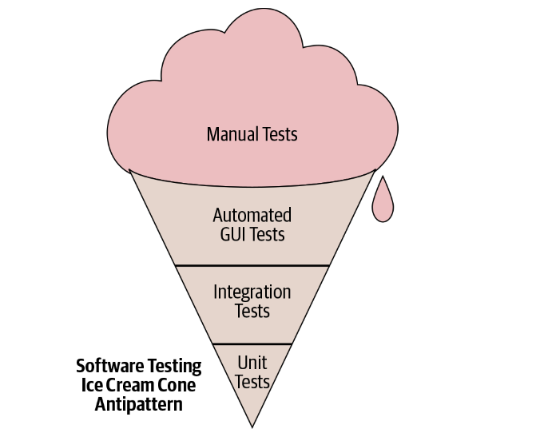
Figure 14-2. The ice cream cone testing antipattern
When development starts with manual testing (when engineers think that code is meant to last only for minutes), those manual tests accumulate and dominate the initial overall testing portfolio. For example, it’s pretty typical to hack on a script or an app and test it out by running it, and then to continue to add features to it but continue to test it out by running it manually. This prototype eventually becomes functional and is shared with others, but no automated tests actually exist for it.
当开发从手动测试开始时（当工程师认为代码只能持续几分钟时），那些手动测试就会积累起来并主导最初的整体测试组合。例如，通常我们会修改脚本或应用程序并通过运行来验证修改有效，然后继续向其添加功能并通过手动运行来测试它，这是非常典型的。长此以往，原型产品的功能会越来越完整，直至可与其他人共享，但实际上不存在针对它的自动测试。
Even worse, if the code is difficult to unit test (because of the way it was implemented in the first place), the only automated tests that can be written are end-to-end ones, and we have inadvertently created “legacy code” within days.
更糟糕的是，如果代码很难进行单元测试（因为它最初的实现方式），那么唯一可以编写的自动化测试就是端到端的测试，并且我们在几天内无意中创建了“遗留代码”。
It is critical for longer-term health to move toward the test pyramid within the first few days of development by building out unit tests, and then to top it off after that point by introducing automated integration tests and moving away from manual end- to-end tests. We succeeded by making unit tests a requirement for submission, but covering the gap between unit tests and manual tests is necessary for long-term health.
在开发的头几天，通过建立单元测试，向金字塔式测试迈进，然后在这之后通过引入自动化集成测试，减少手动执行的端到端测试，这对长期的稳定是至关重要的。我们成功地使单元测试成为提交的要求，但弥补单元测试和手工测试之间的差距对长期稳健是必要的。
Larger Tests at Google Scale 谷歌规模的大型测试
It would seem that larger tests should be more necessary and more appropriate at larger scales of software, but even though this is so, the complexity of authoring, running, maintaining, and debugging these tests increases with the growth in scale, even more so than with unit tests.
在软件规模较大的情况下，大型测试似乎更有必要，也更合适，但即使如此，编写、运行、维护和调试这些测试的复杂性也会随着规模的增长而增加，复杂度远超过单元测试。
In a system composed of microservices or separate servers, the pattern of interconnections looks like a graph: let the number of nodes in that graph be our N. Every time a new node is added to this graph, there is a multiplicative effect on the number of distinct execution paths through it.
在由微服务或独立服务器组成的系统中，它们的互连模式形似一个图，图中的节点数我们用N来表示。每次向该图添加新节点时，都会对通过该图的不同执行路径的数量产生乘法效应的倍增。
Figure 14-3 depicts an imagined SUT: this system consists of a social network with users, a social graph, a stream of posts, and some ads mixed in. The ads are created by advertisers and served in the context of the social stream. This SUT alone consists of two groups of users, two UIs, three databases, an indexing pipeline, and six servers. There are 14 edges enumerated in the graph. Testing all of the end-to-end possibilities is already difficult. Imagine if we add more services, pipelines, and databases to this mix: photos and images, machine learning photo analysis, and so on?
图14-3描绘了一个想象中的SUT：这个系统由一个有用户的社交网络、一个社交图、一个feed流和一些混合广告组成。广告由广告商创建，并在社交流的背景下提供服务。这个SUT单独由两组用户、两个UI、三个数据库、一个索引管道和六个服务器组成。图中列举了14条边。测试所有端到端的可能性已经很困难了。想象一下，如果我们在这个组合中添加更多的服务、管道和数据库：照片和图像、机器学习照片分析等等？
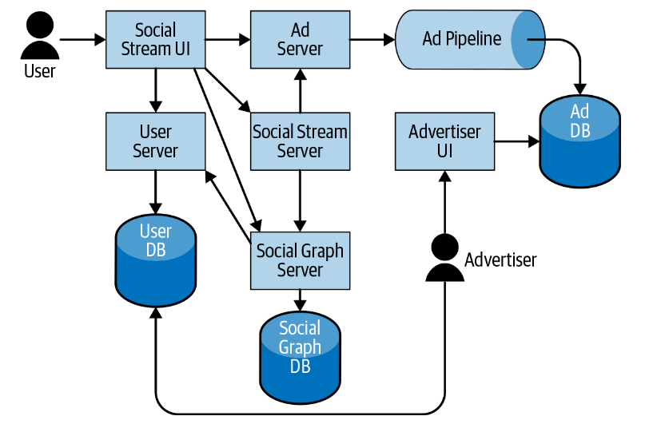
Figure 14-3. Example of a fairly small SUT: a social network with advertising
The rate of distinct scenarios to test in an end-to-end way can grow exponentially or combinatorially depending on the structure of the system under test, and that growth does not scale. Therefore, as the system grows, we must find alternative larger testing strategies to keep things manageable.
以端到端的方式测试的不同场景的速率可以指数增长或组合增长，这取决于被测系统的结构，并且这种增长不可持续。因此，随着系统的发展，我们必须找到其他大型测试的测试策略，以保持测试的可管理性。
However, the value of such tests also increases because of the decisions that were necessary to achieve this scale. This is an impact of fidelity: as we move toward larger-N layers of software, if the service doubles are lower fidelity (1-epsilon), the chance of bugs when putting it all together is exponential in N. Looking at this example SUT again, if we replace the user server and ad server with doubles and those doubles are low fidelity (e.g., 10% accurate), the likelihood of a bug is 99% (1 – (0.1 ∗ 0.1)). And that’s just with two low-fidelity doubles.
然而，由于实现这一规模所需的决策，此类测试的价值也增加了。这是仿真度的一个影响：随着我们向更大的N层软件发展，如果服务的仿真度加倍（1ε），那么当把所有的服务放在一起时，出现错误的几率是N的指数。再看看这个例子SUT，如果我们用测试替代来取代用户服务器和广告服务器，并且这些测试替代的仿真度较低（例如，10%的不准确度），出现错误的可能性为99%（1–（0.1 ∗ 0.1)). 这只是两个低仿真度的替代。
Therefore, it becomes critical to implement larger tests in ways that work well at this scale but maintain reasonably high fidelity.
因此，以在这种规模下工作良好但保持合理高仿真度的方式实现更大的测试变得至关重要。
Tip:"The Smallest Possible Test" 提示："尽可能小的测试" Even for integration tests,smaller is better-a handful of large tests is preferable to anenormous one.And,because the scope of a test is often coupled to the scope of theSUT,finding ways to make the SUT smaller help make the test smaller.
即便是集成测试，也是越小越好——几个大型测试也比一个超大测试要好。而且，因为测试的范围经常与SUT的范围相联系，找到使SUT变小的方法有助于使测试变小。
One way to achieve this test ratio when presented with a user journey that can requirecontributions from many internal systems is to "chain"tests,as illustrated inFigure 14-4,not specifically in their execution,but to create multiple smaller pairwiseintegration tests that represent the overall scenario.This is done by ensuring that theoutput of one test is used as the input to another test by persisting this output to adata repository.
当出现一个需要许多内部系统服务的用户请求时，实现这种测试比率的一种方法是 "串联"测试，如图14-4所示，不是具体执行，而是创建多个较小的成对集成测试，代表整个场景。
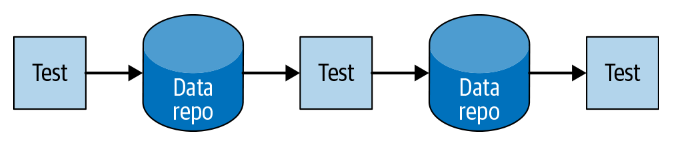
Figure 14-4. Chained tests
Structure of a Large Test 大型测试组成
Although large tests are not bound by small test constraints and could conceivably consist of anything, most large tests exhibit common patterns. Large tests usually consist of a workflow with the following phases:
- Obtain a system under test
- Seed necessary test data
- Perform actions using the system under test
- Verify behaviors
尽管大型测试不受小型测试约束的约束，并且可以由任何内容组成，但大多数大型测试都显示出共同的模式。大型测试通常由具有以下阶段的流程组成：
- 获得被测试的系统
- 必要的测试数据
- 使用被测系统执行操作
- 验证行为
The System Under Test 被测试的系统
One key component of large tests is the aforementioned SUT (see Figure 14-5). A typical unit test focuses its attention on one class or module. Moreover, the test code runs in the same process (or Java Virtual Machine [JVM], in the Java case) as the code being tested. For larger tests, the SUT is often very different; one or more separate processes with test code often (but not always) in its own process.
大型测试的一个关键组成部分是前述的SUT（见图14-5）。一个典型的单元测试将关注点集中在一个类或模块上。此外，测试代码运行在与被测试代码相同的进程（在Java中，也可能在相同的Java虚拟机[JVM]中）。对于大型测试，SUT通常是非常不同的；一个或多个独立的进程，测试代码通常（但不总是）在自己的进程中。
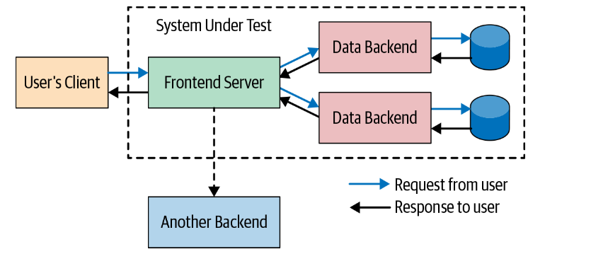
Figure 14-5. An example system under test (SUT)
At Google, we use many different forms of SUTs, and the scope of the SUT is one of the primary drivers of the scope of the large test itself (the larger the SUT, the larger the test). Each SUT form can be judged based on two primary factors:
- Hermeticity
This is the SUT’s isolation from usages and interactions from other components than the test in question. An SUT with high hermeticity will have the least exposure to sources of concurrency and infrastructure flakiness. - Fidelity
The SUT’s accuracy in reflecting the production system being tested. An SUT with high fidelity will consist of binaries that resemble the production versions (rely on similar configurations, use similar infrastructures, and have a similar overall topology).
在谷歌，我们使用许多不同形式的SUT，而SUT的范围是大型测试本身范围的主要驱动因素之一（SUT越大，测试越大）。每种SUT形式都可以根据两个主要因素来判断。
- 封闭性
这是SUT与相关测试之外的其他组件的使用和交互的隔离。具有高隔离性的SUT将具有最少的并发性和基础架构脆弱性来源。 - 仿真度
SUT反映被测生产系统的准确性。具有高仿真度的SUT将由与生产版本相似的二进制文件组成（依赖于类似的配置，使用类似的基础设施，并且具有类似的总体拓扑）。
Often these two factors are in direct conflict. Following are some examples of SUTs:
- Single-process SUT
The entire system under test is packaged into a single binary (even if in production these are multiple separate binaries). Additionally, the test code can be packaged into the same binary as the SUT. Such a test-SUT combination can be a “small” test if everything is single-threaded, but it is the least faithful to the production topology and configuration. - Single-machine SUT
The system under test consists of one or more separate binaries (same as production) and the test is its own binary. But everything runs on one machine. This is used for “medium” tests. Ideally, we use the production launch configuration of each binary when running those binaries locally for increased fidelity. - Multimachine SUT
The system under test is distributed across multiple machines (much like a production cloud deployment). This is even higher fidelity than the single-machine SUT, but its use makes tests “large” size and the combination is susceptible to increased network and machine flakiness. - Shared environments (staging and production)
Instead of running a standalone SUT, the test just uses a shared environment. This has the lowest cost because these shared environments usually already exist, but the test might conflict with other simultaneous uses and one must wait for the code to be pushed to those environments. Production also increases the risk of end-user impact. - Hybrids
Some SUTs represent a mix: it might be possible to run some of the SUT but have it interact with a shared environment. Usually the thing being tested is explicitly run but its backends are shared. For a company as expansive as Google, it is practically impossible to run multiple copies of all of Google’s interconnected services, so some hybridization is required.
这两个因素常常是直接相互冲突的。以下是一些SUT的例子：
- 单进程SUT
整个被测系统被打包成一个二进制文件（即使在生产中这些是多个独立的二进制文件）。此外，测试代码可以被打包成与SUT相同的二进制文件。如果所有测试都是单线程的，那么这种测试SUT组合可能是一个“小”测试，但它对生产拓扑和配置仿真度最低。 - 单机SUT
被测系统由一个或多个独立的二进制文件组成（与生产相同），测试有其独立的二进制文件。但一切都在一台机器上运行。这用于 "中等 "测试。理想情况下，在本地运行这些二进制文件时，我们使用每个二进制文件的生产启动配置，以提高仿真度。 - 多机SUT
被测系统分布在多台机器上（很像生产云部署）。这比单机SUT的仿真度还要高，但它的使用使得测试的规模 "很大"，而且这种组合很容易受到网络和机器脆弱程度的影响。 - 共享环境（预发和生产）
测试只使用共享环境，而不是运行独立的SUT。这具有最低的成本，因为这些共享环境通常已经存在，但是测试可能会与其他同时使用冲突，并且必须等待代码被推送到这些环境中。生产也增加了最终用户受到影响的风险。 - 混合模式
一些SUT代表了一种混合：可以运行一些SUT，但可以让它与共享环境交互。通常被测试的东西是显式运行的，但是它的后端是共享的。对于像谷歌这样扩张的公司来说，实际上不可能运行所有谷歌互联服务的多个副本，因此需要一些混合。
The benefits of hermetic SUTs 封闭式SUT的好处
The SUT in a large test can be a major source of both unreliability and long turnaround time. For example, an in-production test uses the actual production system deployment. As mentioned earlier, this is popular because there is no extra overhead cost for the environment, but production tests cannot be run until the code reaches that environment, which means those tests cannot themselves block the release of the code to that environment—the SUT is too late, essentially.
大型测试中的SUT可能是不可靠性和长运行时间的主要原因。例如，生产中的测试使用实际的生产系统部署。如前所述，这很流行，因为没有额外的环境开销成本，但在代码到达生产环境之前，生产测试无法运行，这意味着这些测试本身无法阻止将代码发布到生产环境--SUT本质上太晚了。
The most common first alternative is to create a giant shared staging environment and to run tests there. This is usually done as part of some release promotion process, but it again limits test execution to only when the code is available. As an alternative, some teams will allow engineers to “reserve” time in the staging environment and to use that time window to deploy pending code and to run tests, but this does not scale with a growing number of engineers or a growing number of services, because the environment, its number of users, and the likelihood of user conflicts all quickly grow.
最常见的第一种选择是创建一个巨大的共享预发环境并在那里运行测试。这通常是作为某些发布升级过程的一部分来完成的，但它再次将测试执行限制为仅当代码可用时。作为一个替代方案，一些团队允许工程师在预发环境中"保留 "时间，并使用该时间窗口来部署待定的代码和运行测试，但这并不能随着工程师数量的增加或服务数量的增加而扩展，因为环境、用户数量和用户冲突的可能性都会迅速增加。
The next step is to support cloud-isolated or machine-hermetic SUTs. Such an environment improves the situation by avoiding the conflicts and reservation requirements for code release.
下一步是支持云隔离的或机器密闭的SUT。这样的环境通过避免代码发布的冲突和保留要求来改善情况。
Case Study:Risks of testing in production and Webdriver Torso
案例研究：生产中的测试风险和Webdriver Torso
We mentioned that testing in production can be risky.One humorous episode resulting from testing in production was known as the Webdriver Torso incident.Weneeded a way to verify that video rendering in You Tube production was workingproperly and so created automated scripts to generate test videos,upload them,andverify the quality of the upload.This was done in a Google-owned YouTube channelcalled Webdriver Torso.But this channel was public,as were most of the videos.
我们提到，在生产中进行测试是有风险的。我们需要一种方法来验证YouTube生产中的视频渲染是否正常，因此创建了自动脚本来生成测试视频，上传它们，并验证上传质量，这是在谷歌拥有的名为Webdriver Torso的YouTube中进行的。
Subsequently,this channel was publicized in an article at Wired,which led to itsspread throughout the media and subsequent efforts to solve the mystery.Finally,ablogger tied everything back to Google.Eventually,we came clean by having a bit offun with it,including a Rickroll and an Easter Egg,so everything worked out well.Butwe do need to think about the possibility of end-user discovery of any test data weinclude in production and be prepared for it.
后来，这个渠道在《连线》杂志的一篇文章中被公布，这导致它在媒体上传播，随后人们努力解开这个谜团。最后，我们通过与它进行一些互动，包括一个Rickroll和一个复活节彩蛋，所以一切都很顺利。但我们确实需要考虑最终用户发现我们在生产中包含的任何测试数据的可能性并做好准备。
Reducing the size of your SUT at problem boundaries 减少问题边界内SUT的范围
There are particularly painful testing boundaries that might be worth avoiding. Tests that involve both frontends and backends become painful because user interface (UI) tests are notoriously unreliable and costly:
- UIs often change in look-and-feel ways that make UI tests brittle but do not actually impact the underlying behavior.
- UIs often have asynchronous behaviors that are difficult to test.
有一些特别痛苦的测试界限，值得避免。同时涉及前台和后台的测试变得很痛苦，因为用户界面（UI）测试是出了名的不可靠和高成本：
- UI的外观和感觉方式经常发生变化，使UI测试变得脆弱，但实际上不会影响底层行为。
- UI通常具有难以测试的异步行为。
Although it is useful to have end-to-end tests of a UI of a service all the way to its backend, these tests have a multiplicative maintenance cost for both the UI and the backends. Instead, if the backend provides a public API, it is often easier to split the tests into connected tests at the UI/API boundary and to use the public API to drive the end-to-end tests. This is true whether the UI is a browser, command-line interface (CLI), desktop app, or mobile app.
尽管对服务的UI进行端到端测试非常有用，但这些测试会增加UI和后端的维护成本。相反，如果后端提供公共API，则通常更容易在UI/API边界将测试拆分为连接的测试，并使用公共API驱动端到端测试。无论UI是浏览器、命令行界面（CLI）、桌面应用程序还是移动应用程序，都是如此。
Another special boundary is for third-party dependencies. Third-party systems might not have a public shared environment for testing, and in some cases, there is a cost with sending traffic to a third party. Therefore, it is not recommended to have automated tests use a real third-party API, and that dependency is an important seam at which to split tests.
另一个特殊的边界是第三方依赖关系。第三方系统可能没有用于测试的公共共享环境，在某些情况下，向第三方发送流量会产生成本。因此，不建议让自动匹配的测试使用真正的第三方API，并且依赖性是分割测试的一个重要接点。
To address this issue of size, we have made this SUT smaller by replacing its databases with in-memory databases and removing one of the servers outside the scope of the SUT that we actually care about, as shown in Figure 14-6. This SUT is more likely to fit on a single machine.
为了解决规模问题，我们通过用内存数据库替换它的数据库，并移除SUT范围之外的一个我们真正关心的服务器，使这个SUT变得更小，如图14-6所示。这个SUT更可能适合在一台机器上使用。
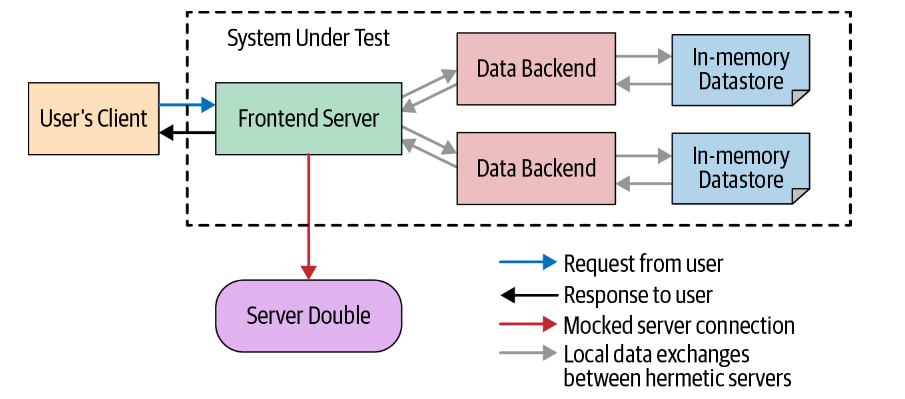
Figure 14-6. A reduced-size SUT
The key is to identify trade-offs between fidelity and cost/reliability, and to identify reasonable boundaries. If we can run a handful of binaries and a test and pack it all into the same machines that do our regular compiles, links, and unit test executions, we have the easiest and most stable “integration” tests for our engineers.
关键是要确定仿真度和成本/可靠性之间的权衡，并确定合理的边界。如果我们能够运行少量的二进制文件和一个测试，并将其全部打包到进行常规编译、链接和单元测试执行的同一台机器上，我们就能为我们的工程师提供最简单、最稳定的 "集成 "测试。
Record/replay proxies 录制/重放代理
In the previous chapter, we discussed test doubles and approaches that can be used to decouple the class under test from its difficult-to-test dependencies. We can also double entire servers and processes by using a mock, stub, or fake server or process with the equivalent API. However, there is no guarantee that the test double used actually conforms to the contract of the real thing that it is replacing.
在前一章中，我们讨论了测试加倍和可用于将被测类与其难以测试的依赖项解耦的方法。我们还可以通过使用具有等效API的模拟、打桩或伪服务器或进程来复制整个服务器和进程。然而，无法保证所使用的测试替代实际上符合其所替换的真实对象的契约。
One way of dealing with an SUT’s dependent but subsidiary services is to use a test double, but how does one know that the double reflects the dependency’s actual behavior? A growing approach outside of Google is to use a framework for consumer-driven contracttests. These are tests that define a contract for both the client and the provider of the service, and this contract can drive automated tests. That is, a client defines a mock of the service saying that, for these input arguments, I get a particular output. Then, the real service uses this input/output pair in a real test to ensure that it produces that output given those inputs. Two public tools for consumer-driven contract testing are Pact Contract Testingand Spring Cloud Contracts. Google’s heavy dependency on protocol buffers means that we don’t use these internally.
处理SUT的依赖关系和附属服务的一种方法是使用测试替代，但如何知道替代反映了依赖的实际行为？在谷歌之外，一种正在发展的方法是使用一个框架进行消费者驱动的合同测试。这些测试为客户和服务的提供者定义了一个契约，这个契约可以驱动自动测试。也就是说，一个客户定义了一个服务的模拟，说对于这些输入参数，我得到一个特定的输出。然后，真正的服务在真正的测试中使用这个输入/输出对，以确保它在这些输入的情况下产生那个输出。消费者驱动的合同测试的两个公共工具是Pact Contract Testing和Spring Cloud Contracts。谷歌对protocol buffers的严重依赖意味着我们内部不使用这些工具。
At Google, we do something a little bit different. Our most popular approach(for which there is a public API) is to use a larger test to generate a smaller one by recording the traffic to those external services when running the larger test and replaying it when running smaller tests. The larger, or “Record Mode” test runs continuously on post-submit, but its primary purpose is to generate these traffic logs (it must pass, however, for the logs to be generated). The smaller, or “Replay Mode” test is used during development and presubmit testing.
在谷歌，我们做的有些不同。我们最流行的方法（有公共API）是使用较大的测试生成较小的测试，方法是在运行较大的测试时录制到这些外部服务的流量，并在运行较小的测试时重放流量。大型或“记录模式”测试在提交后持续运行，但其主要目的是生成这些流量日志（但必须通过才能生成日志）。在开发和提交前测试过程中，使用较小的或“重放模式”测试。
One of the interesting aspects of how record/replay works is that, because of nondeterminism, requests must be matched via a matcher to determine which response to replay. This makes them very similar to stubs and mocks in that argument matching is used to determine the resulting behavior.
录制/重放工作原理的一个有趣方面是，由于不确定性，必须通过匹配器匹配请求，以确定重放的响应。这使得它们与打桩和模拟非常相似，因为参数匹配用于确定结果行为。
What happens for new tests or tests where the client behavior changes significantly? In these cases, a request might no longer match what is in the recorded traffic file, so the test cannot pass in Replay mode. In that circumstance, the engineer must run the test in Record mode to generate new traffic, so it is important to make running Record tests easy, fast, and stable.
新测试或客户端行为发生显著变化的测试会发生什么情况？在这些情况下，请求可能不再与录制的流量文件中的内容匹配，因此测试无法在重放模式下通过。在这种情况下，工程师必须以记录模式运行测试以生成新的通信量，因此使运行录制测试变得简单、快速和稳定非常重要。
Test Data 测试数据
A test needs data, and a large test needs two different kinds of data:
- Seeded data
Data preinitialized into the system under test reflecting the state of the SUT at the inception of the test - Test traffic
Data sent to the system under test by the test itself during its execution
测试需要数据，大型测试需要两种不同的数据：
- 种子数据
预先初始化到被测系统中的数据，反映测试开始时SUT的状态 - 测试流量
在测试执行过程中，由测试本身发送至被测系统的数据。
Because of the notion of the separate and larger SUT, the work to seed the SUT state is often orders of magnitude more complex than the setup work done in a unit test. For example:
- Domain data
Some databases contain data prepopulated into tables and used as configuration for the environment. Actual service binaries using such a database may fail on startup if domain data is not provided. - Realistic baseline
For an SUT to be perceived as realistic, it might require a realistic set of base data at startup, both in terms of quality and quantity. For example, large tests of a social network likely need a realistic social graph as the base state for tests: enough test users with realistic profiles as well as enough interconnections between those users must exist for the testing to be accepted. - Seeding APIs
The APIs by which data is seeded may be complex. It might be possible to directly write to a datastore, but doing so might bypass triggers and checks performed by the actual binaries that perform the writes.
由于独立的和更大的SUT的概念，SUT状态的种子工作往往比单元测试中的设置工作要复杂得多。比如说：
- 领域数据
一些数据库包含预先填充到表中的数据，并作为环境的配置使用。如果不提供领域数据，使用这种数据库的实际服务二进制文件可能在启动时失败。 - 现实的基线
要使SUT被认为是现实的，它可能需要在启动时提供一组现实的基础数据，包括质量和数量。例如，社交网络的大型测试可能需要一个真实的社交图作为测试的基本状态：必须有足够多的具有真实配置文件的测试用户以及这些用户之间的足够互联，才能接受测试。 - 种子APIs
用于数据初始化的API可能相当复杂。也许可以直接写入数据存储，但这样做可能会绕过由执行写入的实际二进制文件执行的触发器和检查。
Data can be generated in different ways, such as the following:
- Handcrafted data
Like for smaller tests, we can create test data for larger tests by hand. But it might require more work to set up data for multiple services in a large SUT, and we might need to create a lot of data for larger tests. - Copied data
We can copy data, typically from production. For example, we might test a map of Earth by starting with a copy of our production map data to provide a baseline and then test our changes to it. - Sampled data
Copying data can provide too much data to reasonably work with. Sampling data can reduce the volume, thus reducing test time and making it easier to reason about. “Smart sampling” consists of techniques to copy the minimum data necessary to achieve maximum coverage.
数据可以通过不同的方式产生，比如说以下几种：
- 手工制作数据
与小型测试一样，我们可以手动创建大型测试的测试数据。但是在一个大型SUT中为多个服务设置数据可能需要更多的工作，并且我们可能需要为大型测试创建大量数据。 - 复制的数据
我们可以复制数据，通常来自生产。例如，我们可以通过从生产地图数据的副本开始测试地球地图，以提供基线，然后测试我们对它的更改。 - 抽样数据
复制数据可能产生过多，难以有效处理的数据。采样数据可以减少数量，从而减少测试时间，使其更容易推理。"智能抽样 "包括复制最小的数据以达到最大覆盖率的技术。
Verification 验证
After an SUT is running and traffic is sent to it, we must still verify the behavior. There are a few different ways to do this:
- Manual
Much like when you try out your binary locally, manual verification uses humans to interact with an SUT to determine whether it functions correctly. This verification can consist of testing for regressions by performing actions as defined on a consistent test plan or it can be exploratory, working a way through different interaction paths to identify possible new failures. Note that manual regression testing does not scale sublinearly: the larger a system grows and the more journeys through it there are, the more human time is needed to manually test. - Assertions
Much like with unit tests, these are explicit checks about the intended behavior of the system. For example, for an integration test of Google search of xyzzy, an assertion might be as follows:
assertThat(response.Contains("Colossal Cave"))
- A/B comparison (differential)
Instead of defining explicit assertions, A/B testing involves running two copies of the SUT, sending the same data, and comparing the output. The intended behavior is not explicitly defined: a human must manually go through the differences to ensure any changes are intended.
在SUT运行并向其发送流量后，我们仍然必须验证其行为。有几种不同的方法可以做到这一点:
- 手动
就像你在本地尝试你的二进制文件一样，手动验证使用人工与SUT互动以确定它的功能是否正确。这种验证可以包括通过执行一致的测试计划中定义的操作来测试回归，也可以是探索性的，通过不同的交互路径来识别可能的新故障。 需要注意的是，人工回归测试的规模化不是线性的：系统越大，通过它的操作越多，需要的人力测试时间就越多就越更多。 - 断言
与单元测试一样，这些是对系统预期行为的明确检查。例如，对于谷歌搜索xyzzy的集成测试，一个断言可能如下：
assertThat(response.Contains("Colossal Cave"))
- A/B测试（差异）
A/B测试不是定义显式断言，而是运行SUT的两个副本，发送相同的数据，并比较结果。未明确定义预期行为：人工必须手动检查差异，以确保任何预期更改。
Types of Larger Tests 大型测试的类型
We can now combine these different approaches to the SUT, data, and assertions to create different kinds of large tests. Each test then has different properties as to which risks it mitigates; how much toil is required to write, maintain, and debug it; and how much it costs in terms of resources to run.
我们现在可以将这些不同的方法组合到SUT、数据和断言中，以创建不同类型的大型测试。然后，每项测试都有不同的特性，可以降低哪些风险；编写、维护和调试它需要多少工作了；以及它在运行资源方面的成本。
What follows is a list of different kinds of large tests that we use at Google, how they are composed, what purpose they serve, and what their limitations are:
- Functional testing of one or more binaries
- Browser and device testing
- Performance, load, and stress testing
- Deployment configuration testing
- Exploratory testing
- A/B diff (regression) testing
- User acceptance testing (UAT)
- Probers and canary analysis
- Disaster recovery and chaos engineering
- User evaluation
下面是我们在谷歌使用的各种大型测试的列表，它们是如何组成的，它们的用途是什么，它们的局限性是什么：
- 一个或多个二进制文件的功能测试
- 浏览器和设备测试
- 性能、负载和压力测试
- 部署配置测试
- 探索性测试
- A/B对比（回归）测试
- 用户验收测试（UAT）
- 探针和金丝雀分析
- 故障恢复和混沌工程
- 用户评价
Given such a wide number of combinations and thus a wide range of tests, how do we manage what to do and when? Part of designing software is drafting the test plan, and a key part of the test plan is a strategic outline of what types of testing are needed and how much of each. This test strategy identifies the primary risk vectors and the necessary testing approaches to mitigate those risk vectors.
考虑到如此广泛的组合和如此广泛的测试，我们如何管理做什么以及何时做？软件设计的一部分是制定测试计划，测试计划的关键部分是确定所需测试类型的战略性概述及其数量。该测试策略确定了主要风险向量和缓解这些风险向量的必要测试方法。
At Google, we have a specialized engineering role of “Test Engineer,” and one of the things we look for in a good test engineer is the ability to outline a test strategy for our products.
在谷歌，我们有一个专门的工程角色“测试工程师”，我们在一个好的测试工程师身上寻找的东西之一就是能够为我们的产品勾勒出一个测试策略。
Functional Testing of One or More Interacting Binaries 一个或多个二进制文件的功能测试
Tests of these type have the following characteristics:
- SUT: single-machine hermetic or cloud-deployed isolated
- Data: handcrafted
- Verification: assertions
此类试验具有以下特点：
- SUT：单机密封或云部署隔离
- 数据：手工制作
- 核查：断言
As we have seen so far, unit tests are not capable of testing a complex system with true fidelity, simply because they are packaged in a different way than the real code is packaged. Many functional testing scenarios interact with a given binary differently than with classes inside that binary, and these functional tests require separate SUTs and thus are canonical, larger tests.
到目前为止，我们已经看到，单元测试无法以真正仿真地测试复杂的系统，仅仅是因为它们的打包方式与实际代码的打包方式不同。许多功能测试场景与给定二进制文件的交互方式不同于与该二进制文件中的类的交互方式，这些功能测试需要单独的SUT，因此是经典的大型测试。
Testing the interactions of multiple binaries is, unsurprisingly, even more complicated than testing a single binary. A common use case is within microservices environments when services are deployed as many separate binaries. In this case, a functional test can cover the real interactions between the binaries by bringing up an SUT composed of all the relevant binaries and by interacting with it through a published API.
毫不奇怪，测试多个二进制文件的相互作用甚至比测试单个二进制文件更复杂。一个常见的案例是在微服务环境中，当服务被部署为许多独立的二进制文件。在这种情况下，功能测试可以通过提出由所有相关二进制文件组成的SUT，并通过发布的API与之交互，来覆盖二进制文件之间的真实交互。
Browser and Device Testing 浏览器和设备测试
Testing web UIs and mobile applications is a special case of functional testing of one or more interacting binaries. It is possible to unit test the underlying code, but for the end users, the public API is the application itself. Having tests that interact with the application as a third party through its frontend provides an extra layer of coverage.
测试web UI和移动应用程序是对一个或多个相互协作二进制文件进行功能测试的特例。可以对底层代码进行单元测试，但对于最终用户来说，公共API是应用程序本身。将测试作为第三方通过其前端与应用程序交互提供了额外的覆盖层。
Performance, Load, and Stress testing 性能、负载和压力测试
Tests of these type have the following characteristics:
- SUT: cloud-deployed isolated
- Data: handcrafted or multiplexed from production
- Verification: diff (performance metrics)
此类试验具有以下特点：
- SUT：云部署隔离
- 数据：手工生成或从生产中多路传输
- 验证：差异（性能指标）
Although it is possible to test a small unit in terms of performance, load, and stress, often such tests require sending simultaneous traffic to an external API. That definition implies that such tests are multithreaded tests that usually test at the scope of a binary under test. However, these tests are critical for ensuring that there is no degradation in performance between versions and that the system can handle expected spikes in traffic.
尽管可以在性能、负载和压力方面测试较小的单元，但此类测试通常需要同时向外部API发送通信量。该定义意味着此类测试是多线程测试，通常在被测二进制文件的范围内进行测试。但是，这些测试对于确保版本之间的性能不会下降以及系统能够处理预期的流量峰值至关重要。
As the scale of the load test grows, the scope of the input data also grows, and it eventually becomes difficult to generate the scale of load required to trigger bugs under load. Load and stress handling are “highly emergent” properties of a system; that is, these complex behaviors belong to the overall system but not the individual members. Therefore, it is important to make these tests look as close to production as possible. Each SUT requires resources akin to what production requires, and it becomes difficult to mitigate noise from the production topology.
随着负载测试规模的增长，输入数据的范围也在增长，甚至很难在负载下生成触发bug所需的负载规模。负载和压力处理是系统的 "高度涌现"属性；也就是说，这些复杂的行为属于整个系统，而不是个别组成。因此，重要的是使这些测试看起来尽可能地接近生产。每个SUT所需的资源与生产所需的资源类似，因此很难缓解生产拓扑中的噪音。
One area of research for eliminating noise in performance tests is in modifying the deployment topology—how the various binaries are distributed across a network of machines. The machine running a binary can affect the performance characteristics; thus, if in a performance diff test, the base version runs on a fast machine (or one with a fast network) and the new version on a slow one, it can appear like a performance regression. This characteristic implies that the optimal deployment is to run both versions on the same machine. If a single machine cannot fit both versions of the binary, an alternative is to calibrate by performing multiple runs and removing peaks and valleys.
消除性能测试中的噪音的一个研究领域是修改部署拓扑结构——各种二进制文件在机器网络中的分布。运行二进制文件的机器会影响性能特性；因此，如果在性能差异测试中，基本版本在快速机器（或具有高速网络的机器）上运行，而新版本在慢速机器上运行，则可能会出现性能回归。此特性意味着最佳部署是在同一台机器上运行两个版本。如果一台机器无法同时安装两种版本的二进制文件，另一种方法是通过执行多次运行并消除峰值和谷值来进行校准。
Deployment Configuration Testing 部署配置测试
Tests of these type have the following characteristics:
- SUT: single-machine hermetic or cloud-deployed isolated
- Data: none
- Verification: assertions (doesn’t crash)
此类试验具有以下特点：
- SUT：单机封闭或云部署隔离
- 数据：无
- 验证：断言（不会崩溃）
Many times, it is not the code that is the source of defects but instead configuration: data files, databases, option definitions, and so on. Larger tests can test the integration of the SUT with its configuration files because these configuration files are read during the launch of the given binary.
很多时候，缺陷的根源不是代码，而是配置：数据文件、数据库、选项定义等等。较大的测试可以测试SUT与其配置文件的集成，因为这些配置文件是在给定二进制文件启动期间读取的。
Such a test is really a smoke test of the SUT without needing much in the way of additional data or verification. If the SUT starts successfully, the test passes. If not, the test fails.
这种测试实际上是SUT的冒烟测试，不需要太多额外的数据或验证。如果SUT成功启动，则测试通过。否则，测试失败。
Exploratory Testing 探索性测试
Tests of these type have the following characteristics:
- SUT: production or shared staging
- Data: production or a known test universe
- Verification: manual
此类试验具有以下特点：
- SUT：生产或共享预发
- 数据：生产或已知测试范围
- 核查：手动
Exploratory testing2 is a form of manual testing that focuses not on looking for behavioral regressions by repeating known test flows, but on looking for questionable behavior by trying out new user scenarios. Trained users/testers interact with a product through its public APIs, looking for new paths through the system and for which behavior deviates from either expected or intuitive behavior, or if there are security vulnerabilities.
探索性测试是一种手动测试，它的重点不是通过重复已知的测试流程来寻找已知行为的回归测试，而是通过尝试新的用户场景来寻找有问题的行为。训练有素的用户/测试人员通过产品的公共API与产品交互，在系统中寻找新的路径，寻找行为偏离预期或直观行为的路径，或者是否存在安全漏洞。
Exploratory testing is useful for both new and launched systems to uncover unanticipated behaviors and side effects. By having testers follow different reachable paths through the system, we can increase the system coverage and, when these testers identify bugs, capture new automated functional tests. In a sense, this is a bit like a manual “fuzz testing” version of functional integration testing.
探索性测试对于新系统和已发布系统都很有用，可以发现意外行为和副作用。通过让测试人员在系统中遵循不同的可到达路径，我们可以增加系统覆盖率，并且当这些测试人员发现bug时，可以捕获新的自动化功能测试。在某种意义上，这有点像功能集成测试的手动“模糊测试”版本。
2James A. Whittaker, Exploratory Software Testing: Tips, Tricks, Tours, and Techniques to Guide Test Design(New York: Addison-Wesley Professional, 2009).
2 詹姆斯·惠塔克，探索性软件测试： 提示， 诡计， 旅行，和技巧到指导测验设计（纽约：Addison-Wesley Professional，2009年）。
Limitations 局限性
Manual testing does not scale sublinearly; that is, it requires human time to perform the manual tests. Any defects found by exploratory tests should be replicated with an automated test that can run much more frequently.
手动测试无法进行亚线性扩展；也就是说，执行手动测试需要人工时间。通过探索性测试发现的任何缺陷都应该通过能够更频繁地运行的自动化测试进行复制。
Bug bashes 扫除bug
One common approach we use for manual exploratory testing is the bug bash. A team of engineers and related personnel (managers, product managers, test engineers, anyone with familiarity with the product) schedules a “meeting,” but at this session, everyone involved manually tests the product. There can be some published guidelines as to particular focus areas for the bug bash and/or starting points for using the system, but the goal is to provide enough interaction variety to document questionable product behaviors and outright bugs.
我们用于手动探索性测试的一种常见方法是bug大扫除。一组工程师和相关人员（经理、产品经理、测试工程师、熟悉产品的任何人）安排了一次“会议”，但在此情况下，所有相关人员都会手动测试产品。对于bug 大扫除的特定关注领域和/或使用系统的起点，可能会有一些已发布的指南，但目标是提供足够的交互多样性，以记录有问题的产品行为和底层的bug。
A/B Diff Regression Testing A/B对比测试
Tests of these type have the following characteristics:
- SUT: two cloud-deployed isolated environments
- Data: usually multiplexed from production or sampled
- Verification: A/B diff comparison
此类试验具有以下特点：
- SUT：两个云部署的隔离环境
- 数据：通常从生产或取样中多路传输
- 验证：A/B差异比较
Unit tests cover expected behavior paths for a small section of code. But it is impossible to predict many of the possible failure modes for a given publicly facing product. Additionally, as Hyrum’s Law states, the actual public API is not the declared one but all user-visible aspects of a product. Given those two properties, it is no surprise that A/B diff tests are possibly the most common form of larger testing at Google. This approach conceptually dates back to 1998. At Google, we have been running tests based on this model since 2001 for most of our products, starting with Ads, Search, and Maps.
单元测试覆盖了一小部分代码的预期行为路径。但是，对于给定的面向公众的产品，预测多种可能的故障模式是不可行的。此外，正如海勒姆定律所指出的，实际的公共API不是声明的API，而是一个产品的所有用户可见的方面。鉴于这两个特性，A/B对比测试可能是谷歌最常见的大型测试形式，这并不奇怪。这种方法在概念上可以追溯到1998年。在谷歌，我们从2001年开始为我们的大多数产品进行基于这种模式的测试，从广告、搜索和地图开始。
A/B diff tests operate by sending traffic to a public API and comparing the responses between old and new versions (especially during migrations). Any deviations in behavior must be reconciled as either anticipated or unanticipated (regressions). In this case, the SUT is composed of two sets of real binaries: one running at the candidate version and the other running at the base version. A third binary sends traffic and compares the results.
A/B对比测试通过向公共API发送流量并比较新旧版本之间的响应（特别是在迁移期间）。任何行为上的偏差都必须作为预期的或未预期的（回归）进行调整。在这种情况下，SUT由两组真实的二进制文件组成：一个运行在候选版本，另一个运行在基本版本。第三个二进制程序发送流量并比较结果。
There are other variants. We use A-A testing (comparing a system to itself) to identify nondeterministic behavior, noise, and flakiness, and to help remove those from A-B diffs. We also occasionally use A-B-C testing, comparing the last production version, the baseline build, and a pending change, to make it easy at one glance to see not only the impact of an immediate change, but also the accumulated impacts of what would be the next-to-release version.
还有其他的变体。我们使用A-A测试（将系统与自身进行比较）来识别非决定性行为、噪音和脆弱性，并帮助从A-B差异中去除这些东西。我们有时也会使用A-B-C测试，比较最后的生产版本、基线构建和一个待定的变化，以便一眼就能看出即时更改的影响，以及下一个发布版本的累积影响。
A/B diff tests are a cheap but automatable way to detect unanticipated side effects for any launched system.
A/B差异测试是一种低成本但可自动检测任何已启动系统意外副作用的方法。
Limitations 局限性
Diff testing does introduce a few challenges to solve:
- Approval
Someone must understand the results enough to know whether any differences are expected. Unlike a typical test, it is not clear whether diffs are a good or bad thing (or whether the baseline version is actually even valid), and so there is often a manual step in the process. - Noise
For a diff test, anything that introduces unanticipated noise into the results leads to more manual investigation of the results. It becomes necessary to remediate noise, and this is a large source of complexity in building a good diff test. - Coverage
Generating enough useful traffic for a diff test can be a challenging problem. The test data must cover enough scenarios to identify corner-case differences, but it is difficult to manually curate such data. - Setup
Configuring and maintaining one SUT is fairly challenging. Creating two at a time can double the complexity, especially if these share interdependencies.
对比测试确实带来了一些需要解决的挑战：
- 批准
必须有人对结果有足够的了解，才能知道是否会出现任何差异。与典型的测试不同，不清楚差异是好是坏（或者基线版本实际上是否有效），因此在这个过程中通常需要手动步骤。 - 噪音
对于对比测试来说，任何在结果中引入意料之外的噪音都会导致对结果进行更多的手动查验。有必要对噪声进行补救，这也是建立一个好的对比测试的一个很大的复杂性来源。 - 覆盖率
为对比测试产生足够的有用流量是一个具有挑战性的问题。测试数据必须涵盖足够多的场景，以确定角落的差异，但很难手动管理这样的数据。 - 配置
配置和维护一个SUT是相当具有挑战性的。一次创建两个可以使复杂性加倍，特别是如果这些共享相互依赖关系。
UAT
Tests of these type have the following characteristics:
- SUT: machine-hermetic or cloud-deployed isolated
- Data: handcrafted
- Verification: assertions
此类试验具有以下特点：
- SUT：机器密封或云部署隔离
- 数据：手工制作
- 核查：断言
A key aspect of unit tests is that they are written by the developer writing the code under test. But that makes it quite likely that misunderstandings about the intended behavior of a product are reflected not only in the code, but also the unit tests. Such unit tests verify that code is “Working as implemented” instead of “Working as intended.”
单元测试的一个关键方面是，它们是由编写被测代码的开发人员编写的。但是，这使得对产品的预期行为的误解很可能不仅反映在代码中，而且也反映在单元测试中。这样的单元测试验证了代码是 "按实现工作 "而不是 "按预期工作"。
For cases in which there is either a specific end customer or a customer proxy (a customer committee or even a product manager), UATs are automated tests that exercise the product through public APIs to ensure the overall behavior for specific user jour‐ neys is as intended. Multiple public frameworks exist (e.g., Cucumber and RSpec) to make such tests writable/readable in a user-friendly language, often in the context of “runnable specifications.”
对于有特定终端客户或客户代理（客户委员会甚至产品经理）的情况，UAT是通过公共API执行产品的自动化测试，以确保特定用户旅程的总体行为符合预期。存在多个公共框架（例如，Cucumber和RSpec），使这种测试可以用用户友好的语言写/读，通常是在 "可运行规范"的背景下。
Google does not actually do a lot of automated UAT and does not use specification languages very much. Many of Google’s products historically have been created by the software engineers themselves. There has been little need for runnable specification languages because those defining the intended product behavior are often fluent in the actual coding languages themselves.
谷歌实际上并没有做很多自动化的UAT，也不怎么使用规范语言。谷歌的许多产品在历史上都是由软件工程师自己创建的。几乎不需要可运行的规范语言，因为那些定义预期产品行为的规范语言通常能够流利地使用实际的编码语言。
Probers and Canary Analysis 探针和金丝雀分析
Tests of these type have the following characteristics:
- SUT: production
- Data: production
- Verification: assertions and A/B diff (of metrics)
此类试验具有以下特点：
- SUT：生产
- 数据：生产
- 验证：断言和A/B差异（度量）
Probers and canary analysis are ways to ensure that the production environment itself is healthy. In these respects, they are a form of production monitoring, but they are structurally very similar to other large tests.
探针和金丝雀分析是确保生产环境本身健康的方法。在这些方面，它们是生产监控的一种形式，但在结构上与其他大型测试非常相似。
Probers are functional tests that run encoded assertions against the production environment. Usually these tests perform well-known and deterministic read-only actions so that the assertions hold even though the production data changes over time. For example, a prober might perform a Google search at www.google.com and verify that a result is returned, but not actually verify the contents of the result. In that respect, they are “smoke tests” of the production system, but they provide early detection of major issues.
Probers是功能测试，针对生产环境运行编码的断言。通常，这些测试执行众所周知的和确定的只读动作，这样即使生产数据随时间变化，断言也能成立。例如，探针可能在 www.google.com 执行谷歌搜索，并验证返回的结果，但实际上并不验证结果的内容。在这方面，它们是生产系统的 "冒烟测试"，但可以及早发现重大问题。
Canary analysis is similar, except that it focuses on when a release is being pushed to the production environment. If the release is staged over time, we can run both prober assertions targeting the upgraded (canary) services as well as compare health metrics of both the canary and baseline parts of production and make sure that they are not out of line.
金丝雀分析也是类似的，只不过它关注的是一个版本何时被推送到生产环境。如果发布是分阶段进行的，我们可以同时运行针对升级（金丝雀）服务的探针断言，以及比较生产中金丝雀和基线部分的健康指标，并确保它们没有失衡。
Probers should be used in any live system. If the production rollout process includes a phase in which the binary is deployed to a limited subset of the production machines (a canary phase), canary analysis should be used during that procedure.
探针应该在任何实时系统中使用。如果生产推广过程包括一个阶段，其中二进制文件被部署到生产机器的有限子集（一个金丝雀阶段），则金丝雀分析应该在该过程中使用。
Limitations 局限性
Any issues caught at this point in time (in production) are already affecting end users.
此时（生产中）发现的任何问题都已经影响到最终用户。
If a prober performs a mutable (write) action, it will modify the state of production. This could lead to one of three outcomes: nondeterminism and failure of the assertions, failure of the ability to write in the future, or user-visible side effects.
如果探针执行可变（写入）操作，它将修改生产状态。这可能导致以下三种结果之一：不确定性和评估失败、未来写入能力失败或用户可见的副作用。
Disaster Recovery and Chaos Engineering 故障恢复与混沌工程
Tests of these type have the following characteristics:
- SUT: production
- Data: production and user-crafted (fault injection)
- Verification: manual and A/B diff (metrics)
此类试验具有以下特点：
- SUT：生产
- 数据：生产和用户定制（故障注入）
- 验证：手动和A/B对比（指标）
These test how well your systems will react to unexpected changes or failures.
这些测试将测试系统对意外更改或故障的反应。
For years, Google has run an annual war game called DiRT (Disaster Recovery Testing) during which faults are injected into our infrastructure at a nearly planetary scale. We simulate everything from datacenter fires to malicious attacks. In one memorable case, we simulated an earthquake that completely isolated our headquarters in Mountain View, California, from the rest of the company. Doing so exposed not only technical shortcomings but also revealed the challenge of running a company when all the key decision makers were unreachable.3
多年来，谷歌每年都会举办一场名为“灾难恢复测试”DiRT(Disaster Recovery Testing)的演练，在这场演练中，故障几乎以全球规模注入我们的基础设施。我们模拟了从数据中心火灾到恶意攻击的一切。在一个令人难忘的案例中，我们模拟了一场地震，将我们位于加州山景城的总部与公司其他部门完全隔离。这样做不仅暴露了技术上的缺陷，也揭示了在所有关键决策者都无法联系到的情况下，管理公司的挑战。
The impacts of DiRT tests require a lot of coordination across the company; by contrast, chaos engineering is more of a “continuous testing” for your technical infrastructure. Made popular by Netflix, chaos engineering involves writing programs that continuously introduce a background level of faults into your systems and seeing what happens. Some of the faults can be quite large, but in most cases, chaos testing tools are designed to restore functionality before things get out of hand. The goal of chaos engineering is to help teams break assumptions of stability and reliability and help them grapple with the challenges of building resiliency in. Today, teams at Google perform thousands of chaos tests each week using our own home-grown system called Catzilla.
DiRT测试的影响需要整个公司的大量协调；相比之下，混沌工程更像是对你的技术基础设施的 "持续测试"。由Netflix推广，混沌工程包括编写程序，在你的系统中不断引入背景水平的故障，并观察会发生什么。有些故障可能相当大，但在大多数情况下，混沌测试工具旨在在事情失控之前恢复功能。混沌工程的目标是帮助团队打破稳定性和可靠性的假设，帮助他们应对建立弹性的挑战。今天，谷歌的团队每周都会使用我们自己开发的名为Catzilla的系统进行数千次混沌测试。
These kinds of fault and negative tests make sense for live production systems that have enough theoretical fault tolerance to support them and for which the costs and risks of the tests themselves are affordable.
这些类型的故障和负面测试对于具有足够理论容错能力的实时生产系统是有意义的，并且测试本身的成本和风险是可以承受的。
3During this test, almost no one could get anything done, so many people gave up on work and went to one of our many cafes, and in doing so, we ended up creating a DDoS attack on our cafe teams!
3 在这次测试中，几乎没有人能完成任何事情，所以很多人放弃了工作，去了我们众多咖啡馆中的一家，在这样做的过程中，我们最终对我们的咖啡馆团队发起了DDoS攻击！
Limitations 局限性
Any issues caught at this point in time (in production) are already affecting end users.
此时（生产中）发现的任何问题都已经影响到最终用户。
DiRT is quite expensive to run, and therefore we run a coordinated exercise on an infrequent scale. When we create this level of outage, we actually cause pain and negatively impact employee performance.
DiRT的运行成本相当高，因此我们不经常进行协作演练。当我们制造这种程度的故障时，我们实际上造成了痛苦，并对员工的绩效产生了负面影响。
If a prober performs a mutable (write) action, it will modify the state of production. This could lead to either nondeterminism and failure of the assertions, failure of the ability to write in the future, or user-visible side effects.
如果探针执行了一个可变（写）的动作，它将修改生产的状态。这可能导致非确定性和断言的失败，未来写入能力的失败，或用户可见的副作用。
User Evaluation 用户评价
Tests of these type have the following characteristics:
- SUT: production
- Data: production
- Verification: manual and A/B diffs (of metrics)
此类试验具有以下特点：
- SUT：生产
- 数据：生产
- 验证：手动和A/B对比（度量）
Production-based testing makes it possible to collect a lot of data about user behavior. We have a few different ways to collect metrics about the popularity of and issues with upcoming features, which provides us with an alternative to UAT:
- Dogfooding
It’s possible using limited rollouts and experiments to make features in production available to a subset of users. We do this with our own staff sometimes (eat our own dogfood), and they give us valuable feedback in the real deployment environment. - Experimentation
A new behavior is made available as an experiment to a subset of users without their knowing. Then, the experiment group is compared to the control group at an aggregate level in terms of some desired metric. For example, in YouTube, we had a limited experiment changing the way video upvotes worked (eliminating the downvote), and only a portion of the user base saw this change. This is a massively important approach for Google. One of the first stories a Noogler hears upon joining the company is about the time Google launched an experiment changing the background shading color for AdWords ads in Google Search and noticed a significant increase in ad clicks for users in the experimental group versus the control group. - Rater evaluation
Human raters are presented with results for a given operation and choose which one is “better” and why. This feedback is then used to determine whether a given change is positive, neutral, or negative. For example, Google has historically used rater evaluation for search queries (we have published the guidelines we give our raters). In some cases, the feedback from this ratings data can help determine launch go/no-go for algorithm changes. Rater evaluation is critical for nondeterministic systems like machine learning systems for which there is no clear correct answer, only a notion of better or worse.
基于产品的测试可以收集大量关于用户行为的数据。我们有几种不同的方法来收集有关即将推出的功能的受欢迎程度和问题的指标，这为我们提供了UAT的替代方案：
- 吃自己的狗粮
我们可以利用有限的推广和实验，将生产中的功能提供给一部分用户使用。我们有时会和自己的员工一起这样做（吃自己的狗粮），他们会在真实的部署环境中给我们提供宝贵的反馈。 - 实验
在用户不知情的情况下，将一个新的行为作为一个实验提供给一部分用户。然后，将实验组与控制组在某种期望的指标方面进行综合比较。例如，在YouTube，我们做了一个有限的实验，改变了视频加分的方式（取消了降分），只有一部分用户看到了这个变化。 这是一个对谷歌来说非常重要的方法。Noogler在加入公司后听到的第一个故事是关于谷歌推出了一个实验，改变了谷歌搜索中AdWords广告的背景阴影颜色，并注意到实验组的用户与对照组相比，广告点击量明显增加。 - 评分员评价
评分员会被告知某一特定操作的结果，并选择哪一个 "更好"以及原因。然后，这种反馈被用来确定一个特定的变更是正面、中性还是负面的。例如，谷歌在历史上一直使用评分员对搜索查询进行评估（我们已经公布了我们给评员者的指导方针）。在某些情况下，来自该评级数据的反馈有助于确定算法更改的启动通过/不通过。评价员的评价对于像机器学习系统这样的非确定性系统至关重要，因为这些系统没有明确的正确答案，只有一个更好或更差的概念。
Large Tests and the Developer Workflow 大型测试和开发人员工作流程
We’ve talked about what large tests are, why to have them, when to have them, and how much to have, but we have not said much about the who. Who writes the tests? Who runs the tests and investigates the failures? Who owns the tests? And how do we make this tolerable?
我们已经讨论了什么是大型测试，为什么要做测试，什么时候做，做多少测试，但我们还没有说太多是谁的问题。谁来写测试？谁来运行测试并调查故障？谁拥有这些测试？我们如何让这一切变得可以忍受？
Although standard unit test infrastructure might not apply, it is still critical to integrate larger tests into the developer workflow. One way of doing this is to ensure that automated mechanisms for presubmit and post-submit execution exist, even if these are different mechanisms than the unit test ones. At Google, many of these large tests do not belong in TAP. They are nonhermetic, too flaky, and/or too resource intensive. But we still need to keep them from breaking or else they provide no signal and become too difficult to triage. What we do, then, is to have a separate post-submit continuous build for these. We also encourage running these tests presubmit, because that provides feedback directly to the author.
尽管标准的单元测试基础设施可能不适用，但将大型测试集成到开发人员的工作流程中仍然是至关重要的。做到这一点的一个方法是确保存在预提交和提交后执行的自动化机制，即使这些机制与单元测试的机制不同。在谷歌，许多大型测试不属于TAP。它们不封闭、太不稳定和/或资源密集。但是我们仍然需要防止它们被破坏，否则它们就不能提供任何信号，并且变得太难处理了。那么，我们所做的就是为这些测试建立一个单独的提交后持续构建。我们也鼓励在提交前运行这些测试，因为这样可以直接向作者提供反馈。
A/B diff tests that require manual blessing of diffs can also be incorporated into such a workflow. For presubmit, it can be a code-review requirement to approve any diffs in the UI before approving the change. One such test we have files release-blocking bugs automatically if code is submitted with unresolved diffs.
需要手动批准的A/B对比测试也可以被纳入这样一个工作流程。对于预提交，在批准更改之前批准UI中的任何差异可能是代码审查要求。我们有一个这样的测试，如果提交的代码有未解决的差异，就会自动归档阻断发布的错误。
In some cases, tests are so large or painful that presubmit execution adds too much developer friction. These tests still run post-submit and are also run as part of the release process. The drawback to not running these presubmit is that the taint makes it into the monorepo and we need to identify the culprit change to roll it back. But we need to make the trade-off between developer pain and the incurred change latency and the reliability of the continuous build.
在某些情况下，测试是如此之大或痛苦，以至于提交前的执行增加了太多的开发者负担。这些测试仍然在提交后运行，并且作为发布过程的一部分运行。不在提交前运行这些测试的缺点是，bug会进入monorepo，我们需要确定罪魁祸首的变化来回滚它。但我们需要在开发人员的痛苦和所产生的变更延迟与持续构建的可靠性之间做出权衡。
Authoring Large Tests 编写大型测试
Although the structure of large tests is fairly standard, there is still a challenge with creating such a test, especially if it is the first time someone on the team has done so.
虽然大型测试的结构是相当标准的，但创建这样的测试仍然存在挑战，特别是当团队中有人第一次操作时。
The best way to make it possible to write such tests is to have clear libraries, documentation, and examples. Unit tests are easy to write because of native language support (JUnit was once esoteric but is now mainstream). We reuse these assertion libraries for functional integration tests, but we also have created over time libraries for interacting with SUTs, for running A/B diffs, for seeding test data, and for orchestrating test workflows.
要使写这种测试成为可能，最好的办法是有明确的库、文档和例子。单元测试很容易写，因为有本地语言的支持（JUnit曾经很深奥，但现在是主流）。我们重新使用这些断言库进行功能集成测试，但随着时间的推移，我们也创建了与SUT交互的库，用于运行A/B差异，用于播种测试数据，以及用于协调测试工作流。
Larger tests are more expensive to maintain, in both resources and human time, but not all large tests are created equal. One reason that A/B diff tests are popular is that they have less human cost in maintaining the verification step. Similarly, production SUTs have less maintenance cost than isolated hermetic SUTs. And because all of this authored infrastructure and code must be maintained, the cost savings can compound.
大型测试在资源和人力时间方面的维护成本较高，但不是所有的大型测试都是一样的。A/B对比测试受欢迎的一个原因是，它们在维护验证步骤方面的人力成本较低。同样，生产型SUT的维护成本比隔离的封闭型SUT要低。而且，由于所有这些自创的基础设施和代码都必须被维护，成本的节省可以是落地的。
However, this cost must be looked at holistically. If the cost of manually reconciling diffs or of supporting and safeguarding production testing outweighs the savings, it becomes ineffective.
然而，必须从整体上看待这一成本。如果手动协调差异或支持和保护生产测试的成本超过了节省的成本，那么它将变得无效。
Running Large Tests 进行大型测试
We mentioned above how our larger tests don’t fit in TAP and so we have alternate continuous builds and presubmits for them. One of the initial challenges for our engineers is how to even run nonstandard tests and how to iterate on them.
我们在上面提到，我们的大型测试不适合在TAP中进行，所以我们为它们准备了备用的持续构建和预提交。对我们的工程师来说，最初的挑战之一是如何运行非标准的测试，以及如何对它们进行迭代。
As much as possible, we have tried to make our larger tests run in ways familiar for our engineers. Our presubmit infrastructure puts a common API in front of running both these tests and running TAP tests, and our code review infrastructure shows both sets of results. But many large tests are bespoke and thus need specific documentation for how to run them on demand. This can be a source of frustration for unfamiliar engineers.
我们尽可能地使我们的大型测试以工程师熟悉的方式运作。我们的预提交基础设施在运行这些测试和运行TAP测试之前都提供了一个通用的API，我们的代码审查基础设施显示了这两组结果。但许多大型测试是定制的，因此需要具体的文档来说明如何按需运行它们。对于不熟悉的工程师来说，这可能是一个令人沮丧的原因。
Speeding up tests 加快测试进度
Engineers don’t wait for slow tests. The slower a test is, the less frequently an engineer will run it, and the longer the wait after a failure until it is passing again.
工程师不会等待缓慢的测试。测试越慢，工程师运行测试的频率就越低，失败后等待测试再次通过的时间就越长。
The best way to speed up a test is often to reduce its scope or to split a large test into two smaller tests that can run in parallel. But there are some other tricks that you can do to speed up larger tests.
加速测试的最佳方法通常是缩小其范围，或者将大型测试拆分为两个可以并行运行的小型测试。但是，您还可以使用其他一些技巧来加速更大的测试。
Some naive tests will use time-based sleeps to wait for nondeterministic action to occur, and this is quite common in larger tests. However, these tests do not have thread limitations, and real production users want to wait as little as possible, so it is best for tests to react the way real production users would. Approaches include the following:
- Polling for a state transition repeatedly over a time window for an event to complete with a frequency closer to microseconds. You can combine this with a timeout value in case a test fails to reach a stable state.
- Implementing an event handler.
- Subscribing to a notification system for an event completion.
一些简单的测试会使用基于时间延迟注入来等待非确定性的动作发生，这在大型测试中是很常见的。但是，这些测试没有线程限制，并且实际生产用户希望等待的时间尽可能少，因此最好让测试以实际生产用户的方式做出反应。方法包括：
- 在时间窗口内重复轮询状态转换，以使事件以接近微秒的频率完成。如果测试无法达到稳定状态，你可以将其与超时值结合起来。
- 实现一个事件处理程序。
- 订阅事件完成通知系统。
Note that tests that rely on sleeps and timeouts will all start failing when the fleet running those tests becomes overloaded, which spirals because those tests need to be rerun more often, increasing the load further.
请注意，当运行这些测试的负载变得超载时，依赖延时和超时的测试都会开始失败，这是因为这些测试需要更频繁地重新运行，进一步增加了负载。
Lower internal system timeouts and delays
A production system is usually configured assuming a distributed deployment topology, but an SUT might be deployed on a single machine (or at least a cluster of colocated machines). If there are hardcoded timeouts or (especially) sleep statements in the production code to account for production system delay, these should be made tunable and reduced when running tests.
Optimize test build time
One downside of our monorepo is that all of the dependencies for a large test are built and provided as inputs, but this might not be necessary for some larger tests. If the SUT is composed of a core part that is truly the focus of the test and some other necessary peer binary dependencies, it might be possible to use prebuilt versions of those other binaries at a known good version. Our build system (based on the monorepo) does not support this model easily, but the approach is actually more reflective of production in which different services release at different versions.
更低的内部系统超时和延迟。
生产系统通常采用分布式部署拓扑进行配置，但SUT可能部署在一台机器上（或至少是一个群集的机器）。如果在生产代码中存在硬编码超时或（特别是）休眠语句来解释生产系统延迟，则应在运行测试时使其可调并减少。
优化测试构建时间。
我们的monorepo的一个缺点是，大型测试的所有依赖项都是作为输入构建和提供的，但对于一些大型测试来说，这可能不是必需的。如果SUT是由一个真正的测试重点的核心部分和其他一些必要的对等二进制依赖组成的，那么可以在已知的良好版本中使用这些其他二进制文件的预构建版本。我们的构建系统（基于monorepo）不容易支持这种模式，但该方法实际上更能反映不同服务以不同版本发布的生产。
Driving out flakiness 驱除松散性
Flakiness is bad enough for unit tests, but for larger tests, it can make them unusable. A team should view eliminating flakiness of such tests as a high priority. But how can flakiness be removed from such tests?
对于单元测试来说，松散性已经很糟糕了，但对于大型测试来说，它可能会使它们无法使用。一个团队应该把消除这种测试的松散性视为一个高度优先事项。但是，如何才能从这些测试中消除松散性呢？
Minimizing flakiness starts with reducing the scope of the test—a hermetic SUT will not be at risk of the kinds of multiuser and real-world flakiness of production or a shared staging environment, and a single-machine hermetic SUT will not have the network and deployment flakiness issues of a distributed SUT. But you can mitigate other flakiness issues through test design and implementation and other techniques. In some cases, you will need to balance these with test speed.
最大限度地减少松散，首先要减少测试的范围——封闭的SUT不会有生产或共享预发环境的各种多用户和真实世界松散的风险，单机封闭的SUT不会有分布式SUT的网络和部署闪失问题。但是你可以通过测试设计和实施以及其他技术来减轻其他的松散性问题。在某些情况下，你需要平衡这些与测试速度。
Just as making tests reactive or event driven can speed them up, it can also remove flakiness. Timed sleeps require timeout maintenance, and these timeouts can be embedded in the test code. Increasing internal system timeouts can reduce flakiness, whereas reducing internal timeouts can lead to flakiness if the system behaves in a nondeterministic way. The key here is to identify a trade-off that defines both a tolerable system behavior for end users (e.g., our maximum allowable timeout is n seconds) but handles flaky test execution behaviors well.
正如使测试反应式或事件驱动可以加快它们的速度一样，它也可以消除松散性。定时休眠需要超时维护，这些超时可以嵌入测试代码中。增加系统的内部超时可以减少松散性，而减少内部超时可以导致松散性，如果系统的行为是不确定的。这里的关键是确定一个权衡（平衡），既要为终端用户定义一个可容忍的系统行为（例如，我们允许的最大超时是n秒），但很好地处理了不稳定的测试执行行为。
A bigger problem with internal system timeouts is that exceeding them can lead to difficult errors to triage. A production system will often try to limit end-user exposure to catastrophic failure by handling possible internal system issues gracefully. For example, if Google cannot serve an ad in a given time limit, we don’t return a 500, we just don’t serve an ad. But this looks to a test runner as if the ad-serving code might be broken when there is just a flaky timeout issue. It’s important to make the failure mode obvious in this case and to make it easy to tune such internal timeouts for test scenarios.
内部系统超时的一个更大问题是，超过这些超时会导致难以分类的错误。生产系统通常会试图通过优雅地方式处理可能的内部系统问题来限制终端用户对灾难性故障的暴露。例如，如果谷歌不能在给定的时间限制内提供广告，我们不会返回500，我们只是不提供广告。但在测试运行人员看来，如果只是出现异常超时问题，广告服务可能会被中断。在这种情况下，重要的是使故障模式变得明显，并使调整测试场景的此类内部超时变得容易
Making tests understandable 让测试变得易懂
A specific case for which it can be difficult to integrate tests into the developer workflow is when those tests produce results that are unintelligible to the engineer running the tests. Even unit tests can produce some confusion—if my change breaks your test, it can be difficult to understand why if I am generally unfamiliar with your code—but for larger tests, such confusion can be insurmountable. Tests that are assertive must provide a clear pass/fail signal and must provide meaningful error output to help triage the source of failure. Tests that require human investigation, like A/B diff tests, require special handling to be meaningful or else risk being skipped during presubmit.
当这些测试产生的结果对运行测试的工程师来说是无法理解的时候，就很难将测试整合到开发者的工作流程中。即使是单元测试也会产生一些混乱——如果我的修改破坏了你的测试，如果我一般不熟悉你的代码，就很难理解为什么，但对于大型测试，这种混乱可能是无法克服的。坚定的测试必须提供一个明确的通过/失败信号，并且必须提供有意义的错误输出，以帮助分类失败的原因。需要人工调查的测试，如A/B对比测试，需要特殊处理才能有意义，否则在预提交期间有被跳过的风险。
How does this work in practice? A good large test that fails should do the following:
- Have a message that clearly identifies what the failure is
The worst-case scenario is to have an error that just says “Assertion failed” and a stack trace. A good error anticipates the test runner’s unfamiliarity with the code and provides a message that gives context: “In test_ReturnsOneFullPageOfSearchResultsForAPopularQuery, expected 10 search results but got 1.” For a performance or A/B diff test that fails, there should be a clear explanation in the output of what is being measured and why the behavior is considered suspect. - Minimize the effort necessary to identify the root cause of the discrepancy
A stack trace is not useful for larger tests because the call chain can span multiple process boundaries. Instead, it’s necessary to produce a trace across the call chain or to invest in automation that can narrow down the culprit. The test should produce some kind of artifact to this effect. For example, Dapper is a framework used by Google to associate a single request ID with all the requests in an RPC call chain, and all of the associated logs for that request can be correlated by that ID to facilitate tracing. - Provide support and contact information.
It should be easy for the test runner to get help by making the owners and supporters of the test easy to contact.
这在实践中是如何运作的？一个成功的大型测试应该从失败中获取到信息，要做到以下几点：
- 有一个明确指出失败原因的信息
最坏的情况是有一个错误，只是说 "断言失败 "和一个堆栈跟踪。一个好的错误能预见到测试运行者对代码的不熟悉，并提供一个信息来说明背景。”in test_ReturnsOneFullPageOfSearchResultsForAPopularQuery中，预期有10个搜索结果，但得到了1个。" 对于失败的性能或A/B对比测试，在输出中应该有一个明确的解释，说明什么是被测量的，为什么该行为被认为是可疑的。 - 尽量减少识别差异的根本原因所需的努力
堆栈跟踪对较大的测试没有用，因为调用链可能跨越多个进程边界。相反，有必要在整个调用链中产生一个跟踪，或者投资于能够缩小罪魁祸首的自动化。测试应该产生某种工具来达到这个效果。例如，Dapper 是谷歌使用的一个框架，将一个单一的请求ID与RPC调用链中的所有请求相关联，该请求的所有相关日志都可以通过该ID进行关联，以方便追踪。 - 提供支持和联系信息
通过使测试的所有者和支持者易于联系，测试运行者应该很容易获得帮助。
Owning Large Tests 大型测试所有权
Larger tests must have documented owners—engineers who can adequately review changes to the test and who can be counted on to provide support in the case of test failures. Without proper ownership, a test can fall victim to the following:
- It becomes more difficult for contributors to modify and update the test
- It takes longer to resolve test failures
大型测试必须有记录的所有者——他们可以充分审查测试的变更，并且在测试失败的情况下，可以依靠他们提供支持。没有适当的所有权，测试可能成为以下情况的受害者：
- 参与者修改和更新测试变得更加困难
- 解决测试失败需要更长的时间
And the test rots.
而且测试也会腐烂。
Integration tests of components within a particular project should be owned by the project lead. Feature-focused tests (tests that cover a particular business feature across a set of services) should be owned by a “feature owner”; in some cases, this owner might be a software engineer responsible for the feature implementation end to end; in other cases it might be a product manager or a “test engineer” who owns the description of the business scenario. Whoever owns the test must be empowered to ensure its overall health and must have both the ability to support its maintenance and the incentives to do so.
特定项目中组件的集成测试应由项目负责人负责。以功能为中心的测试（覆盖一组服务中特定业务功能的测试）应由“功能所有者”负责；在某些情况下，该所有者可能是负责端到端功能实现的软件工程师；在其他情况下，可能是负责业务场景描述的产品经理或“测试工程师”。无论谁拥有该测试，都必须有权确保其整体健康，并且必须具备支持其维护的能力和这样做的激励。
It is possible to build automation around test owners if this information is recorded in a structured way. Some approaches that we use include the following:
- Regular code ownership
In many cases, a larger test is a standalone code artifact that lives in a particular location in our codebase. In that case, we can use the OWNERS (Chapter 9) information already present in the monorepo to hint to automation that the owner(s) of a particular test are the owners of the test code. - Per-test annotations
In some cases, multiple test methods can be added to a single test class or module, and each of these test methods can have a different feature owner. We use per-language structured annotations to document the test owner in each of these cases so that if a particular test method fails, we can identify the owner to contact.
如果以结构化的方式记录此信息，则可以围绕测试所有者构建自动化。我们使用的一些方法包括：
-
常规代码所有权
在许多情况下，大型测试是一个独立的代码构件，它位于代码库中的特定位置。在这种情况下，我们可以使用monorepo中已经存在的所有者（第9章）信息来提示自动化，特定测试的所有者是测试代码的所有者。 -
每个测试注释
在某些情况下，可以将多个测试方法添加到单个测试类或模块中，并且这些测试方法中的每一个都可以有不同的特性所有者。我们使用每种语言的结构化注释，用于记录每种情况下的测试所有者，以便在特定测试方法失败时，我们可以确定要联系的所有者。
Conclusion 总结
A comprehensive test suite requires larger tests, both to ensure that tests match the fidelity of the system under test and to address issues that unit tests cannot adequately cover. Because such tests are necessarily more complex and slower to run, care must be taken to ensure such larger tests are properly owned, well maintained, and run when necessary (such as before deployments to production). Overall, such larger tests must still be made as small as possible (while still retaining fidelity) to avoid developer friction. A comprehensive test strategy that identifies the risks of a system, and the larger tests that address them, is necessary for most software projects.
一个全面的测试套件需要大型测试，既要确保测试与被测系统的仿真度相匹配，又要解决单元测试不能充分覆盖的问题。因为这样的测试必然更复杂，运行速度更慢，所以必须注意确保这样的大型测试是正确的，良好的维护，并在必要时运行（例如在部署到生产之前）。总的来说，这种大型测试仍然必须尽可能的小（同时仍然保留仿真度），以避免开发人员的阻力。一个全面的测试策略，确定系统的风险，以及解决这些风险的大型测试，对大多数软件项目来说是必要的。
TL;DRs 内容提要
-
Larger tests cover things unit tests cannot.
-
Large tests are composed of a System Under Test, Data, Action, and Verification.
-
A good design includes a test strategy that identifies risks and larger tests that mitigate them.
-
Extra effort must be made with larger tests to keep them from creating friction in the developer workflow.
-
大型测试涵盖了单元测试不能涵盖的内容。
-
大型测试是由被测系统、数据、操作和验证组成。
-
良好的设计包括识别风险的测试策略和缓解风险的大型测试。
-
必须对大型测试做出额外的努力，以防止它们在开发者的工作流程中产生阻力。
CHAPTER 15 Deprecation
第十五章 弃用
Written by Hirum Wright
Edited by Tom Manshlake
I love deadlines. I like the whooshing sound they make as they fly by. —Douglas Adams
我喜欢万事都有一个截止日期。我喜欢它们飞过时发出的嗖嗖声。
——道格拉斯·亚当斯 如是说。
All systems age. Even though software is a digital asset and the physical bits themselves don’t degrade, new technologies, libraries, techniques, languages, and other environmental changes over time render existing systems obsolete. Old systems require continued maintenance, esoteric expertise, and generally more work as they diverge from the surrounding ecosystem. It’s often better to invest effort in turning off obsolete systems, rather than letting them lumber along indefinitely alongside the systems that replace them. But the number of obsolete systems still running suggests that, in practice, doing so is not trivial. We refer to the process of orderly migration away from and eventual removal of obsolete systems as deprecation.
所有系统都会老化。虽说软件是一种数字资产,它的字节位本身不会有任何退化。但随着时间的推移，新技术、库、 技术、语言和其他环境变化,都有可能使现有的系统过时。旧系统需要持续维护、深奥的专业知识，通常需要花费 更多的精力，因为它们与周遭的生态略有不同。投入些精力弃用掉过时的系统通常是个不错的选项，让它们无限 期地与它的替代者共存通常不是明智的选择。从实践的角度出发，那些仍在运行的大量过时系统无不表明，弃用掉过时系统所带来的收益并非微不足道。我们将有序迁移并最终移除过时系统的过程称为弃废。
Deprecation is yet another topic that more accurately belongs to the discipline of software engineering than programming because it requires thinking about how to manage a system over time. For long-running software ecosystems, planning for and executing deprecation correctly reduces resource costs and improves velocity by removing the redundancy and complexity that builds up in a system over time. On the other hand, poorly deprecated systems may cost more than leaving them alone. While deprecating systems requires additional effort, it’s possible to plan for deprecation during the design of the system so that it’s easier to eventually decommission and remove it. Deprecations can affect systems ranging from individual function calls to entire software stacks. For concreteness, much of what follows focuses on code-level deprecations.
“弃用”，它更严格地属于软件工程领域，而非编程。因为它需要考虑如何随着时间的推移来管理系统。对于长期运行的软件生态系统，正确规划执行“弃用”,可以通过消除系统中随时间累积产生的冗 余、复杂性等,来降低资源成本并提高速度。另一方面，不推荐使用的系统可能比不理会它们的成本更高。虽然 “弃用”系统需要额外花费精力，但可以考虑在系统设计期间有计划地“弃用”，可以更容易地实现彻底停用并删除弃用的系统。“弃用”的影响范围可大可小，小到单个函数，大到整个软件生态。接下来的大部分内容我们都将集中在代码层级“弃用”上。
Unlike with most of the other topics we have discussed in this book, Google is still learning how best to deprecate and remove software systems. This chapter describes the lessons we’ve learned as we’ve deprecated large and heavily used internal systems. Sometimes, it works as expected, and sometimes it doesn’t, but the general problem of removing obsolete systems remains a difficult and evolving concern in the industry.
与我们在本书中讨论的大多数章节不同，Google 仍在学习如何最好地“弃用”和删除软件系统。本章主要介绍我们在 “弃用”大型和大量使用的内部系统时学到的经验教训。有时，它能符合预期，有时则不会。毕竟移除过时系统的普 遍问题,仍然是行业中一个困难且须不断探索的问题。
This chapter primarily deals with deprecating technical systems, not end-user products. The distinction is somewhat arbitrary given that an external-facing API is just another sort of product, and an internal API may have consumers that consider themselves end users. Although many of the principles apply to turning down a public product, we concern ourselves here with the technical and policy aspects of deprecating and removing obsolete systems where the system owner has visibility into its use.
本章主要从技术层面讲“弃用”，而不是从产品层面。考虑到面向外部的 API 也算另一种产品，而内部 API 通常是自产自销，因此这种区别有些武断。尽管许多原则也适用于对外产品，但我们在这里关注的是“弃用”和删除过时 的内部系统的技术和策略方面的问题。
Why Deprecate? 为什么要“弃用” ？
Our discussion of deprecation begins from the fundamental premise that code is a liability, not an asset. After all, if code were an asset, why should we even bother spending time trying to turn down and remove obsolete systems? Code has costs, some of which are borne in the process of creating a system, but many other costs are borne as a system is maintained across its lifetime. These ongoing costs, such as the operational resources required to keep a system running or the effort to continually update its codebase as surrounding ecosystems evolve, mean that it’s worth evaluating the trade-offs between keeping an aging system running or working to turn it down.
我们对“弃用”的讨论始于这样一个基本前提，即代码是一种负债，而不是一种资产。毕竟，如果代码是一种资产， 我们为什么还要费心去尝试“弃用”它呢？ 代码有成本，其中有开发成本，但更多的是维护成本。这些持续的成本， 例如保持系统运行所需的运营资源或紧跟周围生态而不断更新迭代花费的精力，意味着你需要在继续维护老化的系统运行和将其下线之间做一个权衡。
The age of a system alone doesn’t justify its deprecation. A system could be finely crafted over several years to be the epitome of software form and function. Some software systems, such as the LaTeX typesetting system, have been improved over the course of decades, and even though changes still happen, they are few and far between. Just because something is old, it does not follow that it is obsolete.
“弃用”并不能简单地用项目的年限来定夺。一个系统可以经过数年精心打造，才能稳定成熟。一些软件系统，比如 LaTeX 排版系统，经过几十年的改进，虽然它仍在发生变化，但已经趋向稳定了。系统老旧并不意味着它过时了。
Deprecation is best suited for systems that are demonstrably obsolete and a replacement exists that provides comparable functionality. The new system might use resources more efficiently, have better security properties, be built in a more sustainable fashion, or just fix bugs. Having two systems to accomplish the same thing might not seem like a pressing problem, but over time, the costs of maintaining them both can grow substantially. Users may need to use the new system, but still have dependencies that use the obsolete one.
“弃用”最适合那些明显过时的系统，并且存在提供类似功能的替代品。新系统可能更有效地使用资源，具有更好的安全属性，以更可持续的方式构建，或者只是修复错误。拥有两个系统来完成同一件事似乎不是一个紧迫的问题， 但随着时间的推移，维护它们的成本会大幅增加。用户可能需要使用新系统，但仍然依赖于使用过时的系统。
with the old one. Spending the effort to remove the old system can pay off as the replacement system can now evolve more quickly. The two systems might need to interface with each other, requiring complicated transformation code. As both systems evolve, they may come to depend on each other, making eventual removal of either more difficult. In the long run, we’ve discovered that having multiple systems performing the same function also impedes the evolution of the newer system because it is still expected to maintain compatibility with the old one. Spending the effort to remove the old system can pay off as the replacement system can now evolve more quickly.
这两个系统可能需要相互连接，需要复杂的转换代码。随着这两个系统的发展，它们可能会相互依赖，从而使最终消除其中任何一个变得更加困难。从长远来看，我们发现让多个系统执行相同的功能也会阻碍新系统的发展， 因为它仍然需要与旧的保持兼容性。由于替换系统现在可以更快地发展，因此花费精力移除旧系统会有相关的收 益。
Earlier we made the assertion that “code is a liability, not an asset.” If that is true, why have we spent most of this book discussing the most efficient way to build software systems that can live for decades? Why put all that effort into creating more code when it’s simply going to end up on the liability side of the balance sheet?Code itself doesn’t bring value: it is the functionality that it provides that brings value. That functionality is an asset if it meets a user need: the code that implements this functionality is simply a means to that end. If we could get the same functionality from a single line of maintainable, understandable code as 10,000 lines of convoluted spaghetti code, we would prefer the former. Code itself carries a cost—the simpler the code is, while maintaining the same amount of functionality, the better.Instead of focusing on how much code we can produce, or how large is our codebase, we should instead focus on how much functionality it can deliver per unit of code and try to maximize that metric. One of the easiest ways to do so isn’t writing more code and hoping to get more functionality; it’s removing excess code and systems that are no longer needed. Deprecation policies and procedures make this possible.
前面，我们断言“代码是一种负债，而不是一种资产”。如果这是真的，为什么我们用本书的大部分时间来讨论构建 可以存活数十年的软件系统的最有效方法？当它最终会出现在资产负债表的负债方时，为什么还要付出所有努力来 创建更多代码呢？代码本身不会带来价值：它提供的功能带来了价值。如果该功能满足用户需求，那么它就是一种 资产：实现此功能的代码只是实现该目的的一种手段。如果我们可以从一行可维护、可理解的代码中获得与 10,000 行错综复杂的意大利面条式代码相同的功能，我们会更喜欢前者。代码本身是有成本的——代码越简单，同 时保持相同数量的功能越好。与其关注我们可以生产多少代码，或者我们的代码库有多大，我们应该关注每单位代 码可以提供多少功能，并尝试最大化该指标。最简单的方法之一就是不要编写更多代码并希望获得更多功能；而是 删除不再需要的多余代码和系统。“弃用”策略的存在就是为了解决这个问题。
Even though deprecation is useful, we’ve learned at Google that organizations have a limit on the amount of deprecation work that is reasonable to undergo simultaneously, from the aspect of the teams doing the deprecation as well as the customers of those teams. For example, although everybody appreciates having freshly paved roads, if the public works department decided to close down every road for paving simultaneously, nobody would go anywhere. By focusing their efforts, paving crews can get specific jobs done faster while also allowing other traffic to make progress. Likewise, it’s important to choose deprecation projects with care and then commit to following through on finishing them.
尽管“弃用”很有用，但我们在 Google 了解到，从执行“弃用”的团队以及这些团队的客户的角度来看，对同时进行的‘弃用’工作量是有限制的。例如，虽然每个人都喜欢新铺设的道路，但如果政府部门决定同时关闭所有道路并进行铺设，那么将会导致大家无路可走。通过集中精力，铺设人员可以更快地完成特定工作，但同时不应该影响其他道路的通行。故同样重要的是要谨慎选择“弃用”项目并付诸实施。
为什么“弃用”这么难(Why Is Deprecation So Hard?)
We’ve mentioned Hyrum’s Law elsewhere in this book, but it’s worth repeating its applicability here: the more users of a system, the higher the probability that users are using it in unexpected and unforeseen ways, and the harder it will be to deprecate and remove such a system. Their usage just “happens to work” instead of being “guaranteed to work.” In this context, removing a system can be thought of as the ultimate change: we aren’t just changing behavior, we are removing that behavior completely! This kind of radical alteration will shake loose a number of unexpected dependents.
我们在本书的其他地方提到了海勒姆定律，但值得在这里重申一下它的适用性：一个系统的用户越多，用户以意外和不可预见的方式使用它的可能性就越大，并且越难“弃用”和删除这样的系统。它们有可能只是“碰巧可用”而不是 “绝对可用”。在这种情况下，“弃用”不是简单的行为变更，而是一次大变革-彻底的“弃用”！ 这种激进的改变可能会对这样的系统造成意想不到的影响。
To further complicate matters, deprecation usually isn’t an option until a newer system is available that provides the same (or better!) functionality. The new system might be better, but it is also different: after all, if it were exactly the same as the obsolete system, it wouldn’t provide any benefit to users who migrate to it (though it might benefit the team operating it). This functional difference means a one-to-one match between the old system and the new system is rare, and every use of the old system must be evaluated in the context of the new one.
更复杂的是，在提供相同（或更好）功能的新系统可用之前，“弃用”通常不是一种选择。新系统可能更好,但也有不同：毕竟，如果它和过时的系统完全一样，它不会为迁移到它的用户提供任何好处（尽管它可能使运行它的团队受益）。这种功能差异意味着旧系统和新系统之间的一对一匹配很少见，新老系统的切换通常需要进行评估。
Another surprising reluctance to deprecate is emotional attachment to old systems, particularly those that the deprecator had a hand in helping to create. An example of this change aversion happens when systematically removing old code at Google: we’ve occasionally encountered resistance of the form “I like this code!” It can be difficult to convince engineers to tear down something they’ve spent years building. This is an understandable response, but ultimately self-defeating: if a system is obsolete, it has a net cost on the organization and should be removed. One of the ways we’ve addressed concerns about keeping old code within Google is by ensuring that the source code repository isn’t just searchable at trunk, but also historically. Even code that has been removed can be found again (see Chapter 17).
另一个令人惊讶的不愿“弃用”的现象是对旧系统的情感依恋，尤其是那些“弃用”者帮助创建的系统。在 Google 系统 地删除旧代码时，就会发生这种厌恶更改的一个例子：我们偶尔会遇到“我喜欢这段代码！”这种形式的抵制。说服工程师删除他们花了多年时间建造的东西可能很困难。这是一种可以理解的反应，但最终会弄巧成拙：如果一个系统已经过时，它会给组织带来净成本，应该将其删除。我们解决了将旧代码保留在 Google 中的问题的方法之一是确保源代码存储库不仅可以在主干上搜索，而且可以在历史上搜索。甚至被删除的代码也能再次找到 (见 17 章)
There’s an old joke within Google that there are two ways of doing things: the one that’s deprecated, and the one that’s not-yet-ready. This is usually the result of a new solution being “almost” done and is the unfortunate reality of working in a technological environment that is complex and fast-paced.Google engineers have become used to working in this environment, but it can still be disconcerting. Good documentation, plenty of signposts, and teams of experts helping with the deprecation and migration process all make it easier to know whether you should be using the old thing, with all its warts, or the new one, with all its uncertainties.
谷歌内部有一个古老的笑话，说有两种做事方式：一种已被“弃用”，另一种尚未准备就绪。这通常发生新解决方案“几乎”完成的时候，并且是在复杂且快节奏的技术环境中工作的不幸现实。谷歌工程师已经习惯了在这种环境中工作，但它仍然令人不安。良好的文档、大量的指引以及帮助“弃用”和迁移过程的专家团队，都能帮助你更容易地判断是使用旧的，有缺点，还是新的，有不确定性的。
Finally, funding and executing deprecation efforts can be difficult politically; staffing a team and spending time removing obsolete systems costs real money, whereas the costs of doing nothing and letting the system lumber along unattended are not readily observable. It can be difficult to convince the relevant stakeholders that deprecation efforts are worthwhile, particularly if they negatively impact new feature development. Research techniques, such as those described in Chapter 7, can provide concrete evidence that a deprecation is worthwhile.
最后，资助和执行“弃用”工作在政治上可能很困难；为团队配备人员并花时间移除过时的系统会花费大量金钱，而无所作为和让系统在无人看管的情况下缓慢运行的成本不易观察到。很难让相关利益相关者相信“弃用”工作是值得 的，尤其是当它们（弃用工作）对新功能开发产生负面影响时。研究技术，例如第七章中描述的那些，可以提供具体的证据证明“弃用”是值得的。
Given the difficulty in deprecating and removing obsolete software systems, it is often easier for users to evolve a system in situ, rather than completely replacing it. Incrementality doesn’t avoid the deprecation process altogether, but it does break it down into smaller, more manageable chunks that can yield incremental benefits. Within Google, we’ve observed that migrating to entirely new systems is extremely expensive, and the costs are frequently underestimated. Incremental deprecation efforts accomplished by in-place refactoring can keep existing systems running while making it easier to deliver value to users.
鉴于“弃用”和删除过时软件系统的难度，用户通常更容易就地改进系统，而不是完全替换它。增量并没有完全避免“弃用”过程，但它确实将其分解为更小、更易于管理的块，这些块可以产生增量收益。在 Google 内部，我们观察到迁移到全新系统的成本非常高，而且成本经常被低估。增量“弃用”工作通过就地重构实现的功能可以保持现有系统运行，同时更容易向用户交付价值。
Deprecation During Design 设计之初便考虑“弃用”
Like many engineering activities, deprecation of a software system can be planned as those systems are first built. Choices of programming language, software architecture, team composition, and even company policy and culture all impact how easy it will be to eventually remove a system after it has reached the end of its useful life.
与许多工程活动一样，软件系统的“弃用”可以在这些系统首次设计时便进行规划。编程语言、软件架构、团队组成， 甚至公司策略和文化的选择都会影响系统在使用寿命结束后最终将其“弃用”的难易程度。
The concept of designing systems so that they can eventually be deprecated might be radical in software engineering, but it is common in other engineering disciplines. Consider the example of a nuclear power plant, which is an extremely complex piece of engineering. As part of the design of a nuclear power station, its eventual decommissioning after a lifetime of productive service must be taken into account, even going so far as to allocate funds for this purpose.1 Many of the design choices in building a nuclear power plant are affected when engineers know that it will eventually need to be decommissioned.
设计系统以使其最终可以被“弃用”的概念在软件工程中可能是激进的，但它在其他工程学科中很常见。以核电站为例，这是一项极其复杂的工程。作为核电站设计的一部分，必须考虑到其在服务寿命到期后最终退役，甚至为此分配资金。当工程师知道它最终需要退役时，核电站建设中的许多设计,将会随之改变。
Unfortunately, software systems are rarely so thoughtfully designed. Many software engineers are attracted to the task of building and launching new systems, not maintaining existing ones. The corporate culture of many companies, including Google, emphasizes building and shipping new products quickly, which often provides a disincentive for designing with deprecation in mind from the beginning. And in spite of the popular notion of software engineers as data-driven automata, it can be psychologically difficult to plan for the eventual demise of the creations we are working so hard to build.
不幸的是，软件系统很少经过精心设计。许多软件工程师更热心于构建和启动新系统，而不是维护现有系统。包括 Google 在内的许多公司的企业文化都强调快速构建和交付新产品，这通常会阻碍从一开始就考虑“弃用”的设计。尽管普遍认为软件工程师是数据驱动的自动机，但在心理上很难为我们辛勤工作的创造物的最终消亡做计划。
So, what kinds of considerations should we think about when designing systems that we can more easily deprecate in the future? Here are a couple of the questions we encourage engineering teams at Google to ask:
- How easy will it be for my consumers to migrate from my product to a potential replacement?
- How can I replace parts of my system incrementally?
那么，在设计我们将来更容易“弃用”的系统时，我们应该考虑哪些因素？以下是我们鼓励 Google 的工程团队提出的几个问题：
- 我的使用者从我的产品迁移到潜在替代品的难易程度如何？
- 如何逐步更换系统部件？
Many of these questions relate to how a system provides and consumes dependencies. For a more thorough discussion of how we manage these dependencies, see Chapter 16.
其中许多问题与系统如何提供和使用依赖项有关。有关我们如何管理这些依赖项的更深入讨论，请参阅第 16 章。
Finally, we should point out that the decision as to whether to support a project long term is made when an organization first decides to build the project. After a software system exists, the only remaining options are support it, carefully deprecate it, or let it stop functioning when some external event causes it to break. These are all valid options, and the trade-offs between them will be organization specific. A new startup with a single project will unceremoniously kill it when the company goes bankrupt, but a large company will need to think more closely about the impact across its portfolio and reputation as they consider removing old projects. As mentioned earlier, Google is still learning how best to make these trade-offs with our own internal and external products.
最后，我们应该指出，是否长期支持项目的决定,是在组织最初决定建立项目时做出的。软件系统存在后，剩下的唯一选择是支持它，小心地“弃用”它，或者在某些外部事件导致它崩溃时让它停止运行。这些都是有效的选项，它们之间的权衡将是特定于组织的。当公司破产时，一个只有一个项目的新创业公司会毫不客气地杀死它，但一家大公司在考虑删除旧项目时需要更仔细地考虑对其投资组合和声誉的影响。如前所述，谷歌仍在学习如何最好地利用我们自己的内部和外部产品进行这些权衡。
In short, don’t start projects that your organization isn’t committed to support for the expected lifespan of the organization. Even if the organization chooses to deprecate and remove the project, there will still be costs, but they can be mitigated through planning and investments in tools and policy.
简而言之，如果你的公司不打算长期支持某个项目，那么轻易不要启动这个项目。即使公司选择“弃用”项目，仍然会有成本，但可以通过规划和投资工具和策略来降低成本。
1“Design and Construction of Nuclear Power Plants to Facilitate Decommissioning,” Technical Reports Series No. 382, IAEA, Vienna (1997).
1 "设计和建造核电站便捷退役"，技术报告系列第382号，IAEA，维也纳（1997年）。
Types of Deprecation “弃用”的类型
Deprecation isn’t a single kind of process, but a continuum of them, ranging from “we’ll turn this off someday, we hope” to “this system is going away tomorrow, customers better be ready for that.” Broadly speaking, we divide this continuum into two separate areas: advisory and compulsory.
“弃用”不是一种单一的过程，而是一个连续的过程，从“希望有一天我们能够关闭它”到“这个系统明天就会消失，客户最好为此做好准备。” 从广义上讲，我们将这个连续统一体分为两个独立的领域：建议和强制。
建议性“弃用” (Advisory Deprecation)
Advisory deprecations are those that don’t have a deadline and aren’t high priority for the organization (and for which the company isn’t willing to dedicate resources). These could also be labeled aspirational deprecations: the team knows the system has been replaced, and although they hope clients will eventually migrate to the new system, they don’t have imminent plans to either provide support to help move clients or delete the old system. This kind of deprecation often lacks enforcement: we hope that clients move, but can’t force them to. As our friends in SRE will readily tell you: “Hope is not a strategy.”
建议性“弃用”是那些没有截止日期并且对组织来说不是高优先级的（并且公司不愿意为此投入资源）。这些也可能被标记为期望“弃用”：团队知道系统已被替换，尽管他们希望客户最终迁移到新系统，但他们没有近期的计划来提供支持以帮助客户迁移或删除旧系统。这种“弃用”往往缺乏执行力：我们希望客户迁移，但不强迫他们做。正如我们在 SRE 的朋友会很容易告诉你的那样：“希望不是策略。”
Advisory deprecations are a good tool for advertising the existence of a new system and encouraging early adopting users to start trying it out. Such a new system should not be considered in a beta period: it should be ready for production uses and loads and should be prepared to support new users indefinitely. Of course, any new system is going to experience growing pains, but after the old system has been deprecated in any way, the new system will become a critical piece of the organization’s infrastructure.
建议性“弃用”是宣传新系统存在并鼓励早期采用的用户开始尝试的好工具。这样的新系统不应该在测试阶段被考虑：它应该准备好用于生产用途和负载，并且应该准备好无限期地支持新用户。当然，任何新系统都会经历成长的痛苦，但是在旧系统以任何方式被“弃用”之后，新系统将成为组织基础设施的关键部分。
One scenario we’ve seen at Google in which advisory deprecations have strong benefits is when the new system offers compelling benefits to its users. In these cases, simply notifying users of this new system and providing them self-service tools to migrate to it often encourages adoption. However, the benefits cannot be simply incremental: they must be transformative. Users will be hesitant to migrate on their own for marginal benefits, and even new systems with vast improvements will not gain full adoption using only advisory deprecation efforts.
我们在谷歌看到的一种情况是，当新系统为其用户提供重大优势时，建议性“弃用”具有强大的好处。在这些情况下，简单地通知用户这个新系统并为他们提供自助服务工具以迁移到它,通常会鼓励采用。然而，改进不能简单地增量：它们必须具有变革性。否则用户将不愿为了这一点点边际收益而自行迁移，不过对于“建议性“弃用””，即使具有巨大改进的新系统也通常不会被完全采纳。
Advisory deprecation allows system authors to nudge users in the desired direction, but they should not be counted on to do the majority of migration work. It is often tempting to simply put a deprecation warning on an old system and walk away without any further effort. Our experience at Google has been that this can lead to (slightly) fewer new uses of an obsolete system, but it rarely leads to teams actively migrating away from it. Existing uses of the old system exert a sort of conceptual (or technical) pull toward it: comparatively many uses of the old system will tend to pick up a large share of new uses, no matter how much we say, “Please use the new system.” The old system will continue to require maintenance and other resources unless its users are more actively encouraged to migrate.
建议性“弃用”允许系统作者将用户推向所需的方向，但不应指望他们完成大部分迁移工作。通常只需要在旧系统上简单地发出“弃用”警告，然后弃之不顾即可。我们在 Google 的经验是，这可能会导致（略微）减少对过时系统的使用， 但很少会导致团队积极迁移。旧系统的现有功能会有一种吸引力，吸引更多的系统使用它，无论我们说多少次，“请使用新的系统。” 除非更积极地鼓励其用户迁移，否则旧系统将需要继续维护。
Compulsory Deprecation 强制性“弃用”
This active encouragement comes in the form of compulsory deprecation. This kind of deprecation usually comes with a deadline for removal of the obsolete system: if users continue to depend on it beyond that date, they will find their own systems no longer work.
这种“弃用”通常伴随着删除过时系统的最后期限：如果用户在该日期之后继续依赖它，他们将发现自己的系统不再正常工作。
Counterintuitively, the best way for compulsory deprecation efforts to scale is by localizing the expertise of migrating users to within a single team of experts—usually the team responsible for removing the old system entirely. This team has incentives to help others migrate from the obsolete system and can develop experience and tools that can then be used across the organization. Many of these migrations can be effected using the same tools discussed in Chapter 22.
与直觉相反，推广强制性“弃用”工作的最佳方法是将迁移用户的工作交给一个专家团队——通常是负责完全删除旧系统的团队。该团队有动力帮助其他人从过时的系统迁移，并可以开发可在整个组织中使用的经验和工具。许多这些迁移可以使用第 22 章中讨论的相同工具来实现。
For compulsory deprecation to actually work, its schedule needs to have an enforcement mechanism. This does not imply that the schedule can’t change, but empower the team running the deprecation process to break noncompliant users after they have been sufficiently warned through efforts to migrate them. Without this power, it becomes easy for customer teams to ignore deprecation work in favor of features or other more pressing work.
为了让强制性“弃用”真正起作用，需要有一个强制执行的时间表。并以警告的形式通知到需要执行迁移的客户团队。没有这种能力，客户团队很容易忽略“弃用”工作，而转而支持其他更紧迫的工作。
At the same time, compulsory deprecations without staffing to do the work can come across to customer teams as mean spirited, which usually impedes completing the deprecation. Customers simply see such deprecation work as an unfunded mandate, requiring them to push aside their own priorities to do work just to keep their services running. This feels much like the “running to stay in place” phenomenon and creates friction between infrastructure maintainers and their customers. It’s for this reason that we strongly advocate that compulsory deprecations are actively staffed by a specialized team through completion.
同时，若没有安排人员协助，可能会给客户团队带来刻薄的印象，这通常会影响迁移的进度。客户只是将它视为一项没有资金的任务，要求他们搁置自己的优先事项，只为保持服务运行而迁移。这会在两个团队间产生摩擦，故此，我们建议安排人员进行协助迁移。
It’s also worth noting that even with the force of policy behind them, compulsory deprecations can still face political hurdles. Imagine trying to enforce a compulsory deprecation effort when the last remaining user of the old system is a critical piece of infrastructure your entire organization depends on. How willing would you be to break that infrastructure—and, transitively, everybody that depends on it—just for the sake of making an arbitrary deadline? It is hard to believe the deprecation is really compulsory if that team can veto its progress.
还值得注意的是，即使有策略支持，强制性“弃用”仍可能面临政治阻力。想象一下，当旧系统的最后一个剩余用户是整个组织所依赖的关键基础架构时， 你会愿意为了在截止日期前完成迁移而破坏那个基础设施及所有依赖它的系统吗？ 如果该团队可以否决其进展，就很难相信这种弃用真的是强制性的。
Google’s monolithic repository and dependency graph gives us tremendous insight into how systems are used across our ecosystem. Even so, some teams might not even know they have a dependency on an obsolete system, and it can be difficult to discover these dependencies analytically. It’s also possible to find them dynamically through tests of increasing frequency and duration during which the old system is turned off temporarily. These intentional changes provide a mechanism for discovering unintended dependencies by seeing what breaks, thus alerting teams to a need to prepare for the upcoming deadline. Within Google, we occasionally change the name of implementation-only symbols to see which users are depending on them unaware.
Google 的统一代码仓库和依赖关系图让我们深入了解系统如何在我们的生态系统中使用。即便如此，一些团队甚至可能不知道他们依赖于一个过时的系统，并且很难通过分析发现这些依赖关系。也可以通过增加频率和持续时间的测试来动态找到它们，在此期间旧系统暂时关闭。这些有意的更改提供了一种机制，通过观察哪些部分出现了故障来发现意外的依赖关系，从而提醒团队需要为即将到来的截止日期做好准备。在 Google 内部，我们偶尔会仅更改变量的名称，来查看哪些用户不知道依赖了它们。
Frequently at Google, when a system is slated for deprecation and removal, the team will announce planned outages of increasing duration in the months and weeks prior to the turndown. Similar to Google’s Disaster Recovery Testing (DiRT) exercises, these events often discover unknown dependencies between running systems. This incremental approach allows those dependent teams to discover and then plan for the system’s eventual removal, or even work with the deprecating team to adjust their timeline. (The same principles also apply for static code dependencies, but the semantic information provided by static analysis tools is often sufficient to detect all the dependencies of the obsolete system.)
在谷歌，当系统计划“弃用”时，团队经常会在关闭前的几个月和几周内宣布计划停服，持续时间会增加。与 Google 的灾难恢复测试 (DiRT) 类似，这些事件通常会发现正在运行的系统之间的未知依赖关系。这种渐进式方法允许那些依赖的团队发现依赖，然后为系统的最终移除做计划，甚至与“弃用”团队合作调整他们的时间表。（同样的原则也适用于静态代码依赖，但静态分析工具提供的语义信息通常足以检测过时系统的所有依赖。）
Deprecation Warnings 弃用警告
For both advisory and compulsory deprecations, it is often useful to have a programmatic way of marking systems as deprecated so that users are warned about their use and encouraged to move away. It’s often tempting to just mark something as deprecated and hope its uses eventually disappear, but remember: “hope is not a strategy.” Deprecation warnings can help prevent new uses, but rarely lead to migration of existing systems.
对于建议性和强制“弃用”，以程序化的方式将系统标记为“弃用”通常很有用，以便用户得到警告，并被鼓励停止使用。将某些东西标记为已“弃用”并希望它的使用最终消失通常很诱人，但请记住：“希望不是一种策略。” “弃用”警告可以减少它的新增用户，但很少导致现有系统的迁移。
What usually happens in practice is that these warnings accumulate over time. If they are used in a transitive context (for example, library A depends on library B, which depends on library C, and C issues a warning, which shows up when A is built), these warnings can soon overwhelm users of a system to the point where they ignore them altogether. In health care, this phenomenon is known as “alert fatigue.”
在实践中通常会发生这些警告随着时间的推移而累积。如果它们在传递上下文中使用（例如，库 A 依赖于库 B， 而库 B 又依赖于库 C，而 C 发出警告，并在构建 A 时显示），则这些警告很快就会使系统用户不知所措他们完全忽略这些警告。在医疗保健领域，这种现象被称为“警觉疲劳”。
Any deprecation warning issued to a user needs to have two properties: actionability and relevance. A warning is actionable if the user can use the warning to actually perform some relevant action, not just in theory, but in practical terms, given the expertise in that problem area that we expect for an average engineer. For example, a tool might warn that a call to a given function should be replaced with a call to its updated counterpart, or an email might outline the steps required to move data from an old system to a new one. In each case, the warning provided the next steps that an engineer can perform to no longer depend on the deprecated system.[^2]
向用户发出的任何“弃用”警告都需要具有两个属性：可操作性和相关性。如果用户可以使用警告来实际执行某些相关操作，则警告是可操作的，不仅在理论上，而且在实践中，即要提供可操作的迁移步骤，而不仅仅是一个警告。
A warning can be actionable, but still be annoying. To be useful, a deprecation warning should also be relevant. A warning is relevant if it surfaces at a time when a user actually performs the indicated action. Warning about the use of a deprecated function is best done while the engineer is writing code that uses that function, not after it has been checked into the repository for several weeks. Likewise, an email for data migration is best sent several months before the old system is removed rather than as an afterthought a weekend before the removal occurs.
警告可能是可行的，但仍然很烦人。为了有用，“弃用”警告也应该是相关的。如果警告在用户实际执行指示的操作时出现，则该警告是相关的。关于使用已“弃用”函数的警告最好在工程师编写使用该函数的代码时完成，而不是在将其签入存储库数周后。同样，最好在删除旧系统前几个月发送数据迁移电子邮件，而不是在删除前的一个周末之后才发送。
It’s important to resist the urge to put deprecation warnings on everything possible. Warnings themselves are not bad, but naive tooling often produces a quantity of warning messages that can overwhelm the unsuspecting engineer. Within Google, we are very liberal with marking old functions as deprecated but leverage tooling such as ErrorProne or clang-tidy to ensure that warnings are surfaced in targeted ways. As discussed in Chapter 20, we limit these warnings to newly changed lines as a way to warn people about new uses of the deprecated symbol. Much more intrusive warnings, such as for deprecated targets in the dependency graph, are added only for compulsory deprecations, and the team is actively moving users away. In either case, tooling plays an important role in surfacing the appropriate information to the appropriate people at the proper time, allowing more warnings to be added without fatiguing the user.
重要的是要抵制在一切可能的地方放置弃用警告的冲动。警告本身并不坏，但不成熟的工具通常会产生大量警告消息，这些消息可能会让工程师不知所措。在 Google 内部，我们会将旧功能标记为已“弃用”，但会利用 ErrorProne 或 clang-tidy 等工具来确保以有针对性的方式显示警告。正如第 20 章中所讨论的，我们将这些警告限制在新更改的行中，以警告人们有关已 “弃用”符号的新用法。更具侵入性的警告，例如依赖图中已“弃用”的警告，仅针对强制“弃用”添加，并且团队正在积极地将用户移走。在任何一种情况下，工具都在适当的时间向适当的人提供适当的信息方面发挥着重要作用，允许添加更多警告而不会使用户感到疲倦。
[^2] See
https://abseil.io/docs/cpp/tools/api-upgradesfor an example.2 查阅
https://abseil.io/docs/cpp/tools/api-upgrades例子。
Managing the Deprecation Process 管理“弃用”的流程
Although they can feel like different kinds of projects because we’re deconstructing a system rather than building it, deprecation projects are similar to other software engineering projects in the way they are managed and run. We won’t spend too much effort going over similarities between those management efforts, but it’s worth pointing out the ways in which they differ.
“弃用”项目尽管与上线一个项目给你的感觉不同，但它们的管理和运行方式却是类似的。我们不会花太多精力去讨论他们有何共同点，但有必要指出他们有何不同。
Process Owners 确定负责“弃用”的负责人
We’ve learned at Google that without explicit owners, a deprecation process is unlikely to make meaningful progress, no matter how many warnings and alerts a system might generate. Having explicit project owners who are tasked with managing and running the deprecation process might seem like a poor use of resources, but the alternatives are even worse: don’t ever deprecate anything, or delegate deprecation efforts to the users of the system. The second case becomes simply an advisory deprecation, which will never organically finish, and the first is a commitment to maintain every old system ad infinitum. Centralizing deprecation efforts helps better assure that expertise actually reduces costs by making them more transparent.
我们在 Google 了解到，如果没有明确的Owner，无论系统产生了多少警报,“弃用”过程恐怕都不会太乐观。为了弃用专门指定一个负责人似乎是对资源的浪费，永不“弃用”，或将“弃用”工作完全交给系统的使用者，恐怕会是一个更糟的方案。交给使用者来执行的方案，最多只能应对建议性“弃用”，恐怕它很难做到彻底地“弃用”，而永不“弃用”则相当于无限期地维护着旧系统。集中性的执行“弃用”则更专业更透明，从而真正达到降低成本的目的。
Abandoned projects often present a problem when establishing ownership and aligning incentives. Every organization of reasonable size has projects that are still actively used but that nobody clearly owns or maintains, and Google is no exception. Projects sometimes enter this state because they are deprecated: the original owners have moved on to a successor project, leaving the obsolete one chugging along in the basement, still a dependency of a critical project, and hoping it just fades away eventually.
弃用的项目通常会在确定归属权上存在扯皮的情形。每个小组都存在大量仍在使用却无明确维护人的项目，谷歌也不例外。当一个项目存在这种情形时，通常说明它已被抛弃：即原维护人已参与到新项目开发维护中，老项目则被弃之不顾，但却仍然被某些关键项目所依赖，只寄希望于它慢慢消失在众人视线中。
Such projects are unlikely to fade away on their own. In spite of our best hopes, we’ve found that these projects still require deprecation experts to remove them and prevent their failure at inopportune times. These teams should have removal as their primary goal, not just a side project of some other work. In the case of competing priorities, deprecation work will almost always be perceived as having a lower priority and rarely receive the attention it needs. These sorts of important-not-urgent cleanup tasks are a great use of 20% time and provide engineers exposure to other parts of the codebase.
但此类项目不太可能自行消失。尽管我们对它满怀希望，但我们发现,“弃用”这些项目仍然需要专人负责,否则恐怕会造成意外的损失。这些团队应将移除作为他们的主要目标，而不仅仅是其他工作的附带项目。在确认优先级时，“弃用”通常会有较低的优先级, 且少有人关注。但实际上，这些重要但不紧急的清理工作，是工程师利用20%时间进行的很好的工作，这让工程师有机会接触代码库的其他部分。
Milestones 制定里程碑
When building a new system, project milestones are generally pretty clear: “Launch the frobnazzer features by next quarter.” Following incremental development practices, teams build and deliver functionality incrementally to users, who get a win whenever they take advantage of a new feature. The end goal might be to launch the entire system, but incremental milestones help give the team a sense of progress and ensure they don’t need to wait until the end of the process to generate value for the organization.
在构建新系统时，项目里程碑通常非常明确：如“在下个季度推出某项功能。” 遵循迭代式开发流程的团队,通常以积小成大的方式构建系统,并最终交付给用户，只要他们使用了新功能，他们的目的便算得到了。最终目标当然是启用整个系统，但增量迭代式的开发，则能让团队成员更有成就感，因他们无需等到项目结束就可体验项目。
In contrast, it can often feel that the only milestone of a deprecation process is removing the obsolete system entirely. The team can feel they haven’t made any progress until they’ve turned out the lights and gone home. Although this might be the most meaningful step for the team, if it has done its job correctly, it’s often the least noticed by anyone external to the team, because by that point, the obsolete system no longer has any users. Deprecation project managers should resist the temptation to make this the only measurable milestone, particularly given that it might not even happen in all deprecation projects.
相反，对于“弃用”，它常会给人一种只有一个里程碑的错觉，即完全干掉老旧的项目。下班时，团队成员通常会有 没取得任何进展的感觉。干掉一个老旧的项目对团队成员来说虽是颇有意义，但对团队之外的人来说却是完全无感， 因老旧的系统已不再被任何服务调用。因此项目经理不应将完全根除旧项目当作唯一的里程碑。
Similar to building a new system, managing a team working on deprecation should involve concrete incremental milestones, which are measurable and deliver value to users. The metrics used to evaluate the progress of the deprecation will be different, but it is still good for morale to celebrate incremental achievements in the deprecation process. We have found it useful to recognize appropriate incremental milestones, such as deleting a key subcomponent, just as we’d recognize accomplishments in building a new product.
与新建项目一样，“弃用”一个项目也该渐进的设置多个可量化的里程碑,用于评估“弃用”进度的指标会有差异，但阶段性的庆祝有助提升士气。
Deprecation Tooling 工具加持
Much of the tooling used to manage the deprecation process is discussed in depth elsewhere in this book, such as the large-scale change (LSC) process (Chapter 22) or our code review tools (Chapter 19). Rather than talk about the specifics of the tools, we’ll briefly outline how those tools are useful when managing the deprecation of an obsolete system. These tools can be categorized as discovery, migration, and backsliding prevention tooling.
许多用于管理“弃用”过程的工具在本书的其他地方进行了深入讨论，例如大规模变更 (LSC) 过程（第 22 章）或我们的代码审查工具（第 19 章）。我们不讨论这些工具的细节，而是简要概述如何让这些工具在管理弃用系统的 “弃用”时发辉作用。这些工具可以归类为发现、迁移和防止倒退工具。
Discovery 发现使用者
During the early stages of a deprecation process, and in fact during the entire process, it is useful to know how and by whom an obsolete system is being used. Much of the initial work of deprecation is determining who is using the old system—and in which unanticipated ways. Depending on the kinds of use, this process may require revisiting the deprecation decision once new information is learned. We also use these tools throughout the deprecation process to understand how the effort is progressing.
在早期阶段，实际上在整个过程中，确认谁在使用及怎样使用我们的弃用项目很有必要。初始工作通常是用于确认谁在用、以及以怎样的方式使用。根据使用的方式不同，有可能会推翻我们“弃用”的推进流程。我们还在整个弃用过程中使用这些工具来了解工作进展情况。
Within Google, we use tools like Code Search (see Chapter 17) and Kythe (see Chapter 23) to statically determine which customers use a given library, and often to sample existing usage to see what sorts of behaviors customers are unexpectedly depending on. Because runtime dependencies generally require some static library or thin client use, this technique yields much of the information needed to start and run a deprecation process. Logging and runtime sampling in production help discover issues with dynamic dependencies.
在谷歌内部，我们使用代码搜索（见第 17 章）和 Kythe（见第 23 章）等工具来静态地确定哪些客户使用给定的库，并经常对现有使用情况进行抽样，以了解客户的使用方式。由于运行时依赖项通常需要使用一些静态库或瘦客户端，因此该技术能提供大部分决策信息。而生产中的日志记录和运行时采样有助于发现动态依赖项的问题。
Finally, we treat our global test suite as an oracle to determine whether all references to an old symbol have been removed. As discussed in Chapter 11, tests are a mechanism of preventing unwanted behavioral changes to a system as the ecosystem evolves. Deprecation is a large part of that evolution, and customers are responsible for having sufficient testing to ensure that the removal of an obsolete system will not harm them.
最后，我们将集成测试套件视为预言机，以确定是否已删除对旧变量、函数的所有引用。正如第 11 章所讨论的，测试是一种防止系统随着生态系统发展而发生不必要的行为变化的机制。“弃用”是这种演变的重要组成部分，客户有责任进行足够的测试，以确保删除过时的系统不会对他们造成危害。
Migration 迁移
Much of the work of doing deprecation efforts at Google is achieved by using the same set of code generation and review tooling we mentioned earlier. The LSC process and tooling are particularly useful in managing the large effort of actually updating the codebase to refer to new libraries or runtime services.
在 Google “弃用”的大部分工作是通过使用我们之前提到的同一组代码生成和审查工具来完成的,即LSC工具集。它在代码仓库在引入新库或运行时服务时会很有用。
Preventing backsliding 避免“弃用”项目被重新启用
Finally, an often overlooked piece of deprecation infrastructure is tooling for preventing the addition of new uses of the very thing being actively removed. Even for advisory deprecations, it is useful to warn users to shy away from a deprecated system in favor of a new one when they are writing new code. Without backsliding prevention, deprecation can become a game of whack-a-mole in which users constantly add new uses of a system with which they are familiar (or find examples of elsewhere in the codebase), and the deprecation team constantly migrates these new uses. This process is both counterproductive and demoralizing.
最后，一个经常被忽视的问题是新增功能重新使用了弃用的项目。即使对于建议性“弃用”，警告用户在编写新代码时避免使用已“弃用”的系统而支持新系统也是很有用的。如果没有预防倒退机制，“弃用”可能会变成一场打地鼠游戏。按下葫芦浮起瓢是很影响士气的。
To prevent deprecation backsliding on a micro level, we use the Tricorder static analysis framework to notify users that they are adding calls into a deprecated system and give them feedback on the appropriate replacement. Owners of deprecated systems can add compiler annotations to deprecated symbols (such as the @deprecated Java annotation), and Tricorder surfaces new uses of these symbols at review time. These annotations give control over messaging to the teams that own the deprecated system, while at the same time automatically alerting the change author. In limited cases, the tooling also suggests a push-button fix to migrate to the suggested replacement.
为了防止使用弃用项目，我们使用 Tricorder 静态分析框架来通知用户他们正在调用一个“弃用”的系统中，并提供替代方案。弃用系统的维护者应该将不推荐使用的符号添加编译器注释（例如@deprecated Java 注释），并且 Tricorder 在审查时会将其发送给弃用项目的维护者。同时自动提醒调用者。在某些情况下，该工具还能一键以替代方案进行修复。
On a macro level, we use visibility whitelists in our build system to ensure that new dependencies are not introduced to the deprecated system. Automated tooling periodically examines these whitelists and prunes them as dependent systems are migrated away from the obsolete system.
在宏观层面上，我们在构建系统中使用可见的白名单来确保不会将新的依赖项引入已“弃用”的系统。自动化工具会 定期检查这些白名单，并在依赖系统从过时系统迁移时对其进行删减。
结论 (Conclusion)
Deprecation can feel like the dirty work of cleaning up the street after the circus parade has just passed through town, yet these efforts improve the overall software ecosystem by reducing maintenance overhead and cognitive burden of engineers. Scalably maintaining complex software systems over time is more than just building and running software: we must also be able to remove systems that are obsolete or otherwise unused.
A complete deprecation process involves successfully managing social and technical challenges through policy and tooling. Deprecating in an organized and well-managed fashion is often overlooked as a source of benefit to an organization, but is essential for its long-term sustainability.
“弃用”感觉就像马戏团刚刚穿过城镇后，清理街道的肮脏工作，但它能通过减少维护开销和工程师的认知负担来改善整个软件生态系统。随着时间的推移，复杂系统的维护,不仅仅是包含构建和运行那么简单,还应包含清理过时的老旧系统。
完整的“弃用”过程涉及到管理和技术两个层面的挑战。有效地管理“弃用”通常因不会带来盈利而被忽视，但它对其长期可持续性维护却至关重要。
TL;DRs 内容提要
-
Software systems have continuing maintenance costs that should be weighed against the costs of removing them.
-
Removing things is often more difficult than building them to begin with because existing users are often using the system beyond its original design.
-
Evolving a system in place is usually cheaper than replacing it with a new one, when turndown costs are included.
-
It is difficult to honestly evaluate the costs involved in deciding whether to deprecate: aside from the direct maintenance costs involved in keeping the old system around, there are ecosystem costs involved in having multiple similar systems to choose between and that might need to interoperate. The old system might implicitly be a drag on feature development for the new. These ecosystem costs are diffuse and difficult to measure. Deprecation and removal costs are often similarly diffuse.
-
软件系统具有持续的维护成本，应与删除它们的成本进行权衡。
-
删除东西通常比开始构建它们更困难，因为现有用户经常使用超出其原始设计意图的系统。
-
如果将关闭成本包括在内，就地改进系统通常比更换新系统便宜。
-
很难如实地评估 “弃用”所涉及的成本：除了保留旧系统所涉及的直接维护成本外，还有多个相似系统可供选择 所涉及的生态成本，互有交互。旧系统可能会暗中拖累新系统的功能开发。这些不同的生态所带来的成本则分散且难以衡量。“弃用”成本通常同样分散。
CHAPTER 16 Version Control and Branch Management
第十六章 版本控制和分支管理
Written by Titus Winters
Edited by Lisa Carey
Perhaps no software engineering tool is quite as universally adopted throughout the industry as version control. One can hardly imagine any software organization larger than a few people that doesn’t rely on a formal Version Control System (VCS) to manage its source code and coordinate activities between engineers.
也许没有一种软件工程工具像版本控制工具那样在整个行业中被广泛采用。很难想象一个超过几个人的软件组织会不依赖于正式的版本控制系统（VCS）来管理源代码和协调工程师间的活动。
In this chapter, we’re going to look at why the use of version control has become such an unambiguous norm in software engineering, and we describe the various possible approaches to version control and branch management, including how we do it at scale across all of Google. We’ll also examine the pros and cons of various approaches; although we believe everyone should use version control, some version control policies and processes might work better for your organization (or in general) than others. In particular, we find “trunk-based development” as popularized by DevOps1 (one repository, no dev branches) to be a particularly scalable policy approach, and we’ll provide some suggestions as to why that is.
在本章中，我们将了解为什么版本控制工具的使用在软件工程中已成为如此明确的规范，我们将描述版本控制和分支管理的各种可能方法，包括我们如何在整个谷歌范围内大规模地使用。我们还将研究各种方法的利弊；尽管我们认为每个人都应该使用版本控制，但某些版本控制策略和流程可能比其他策略和流程更适合你的组织（或通常来说）。特别是，我们发现由DevOps推广的 "基于主干的开发"（一个版本库，没有开发分支）是一种特别可扩展的策略方法，我们将提供一些建议来解释为什么会这样。
1The DevOps Research Association, which was acquired by Google between the first draft of this chapter and publication, has published extensively on this in the annual “State of DevOps Report” and the book Accelerate. As near as we can tell, it popularized the terminology trunk-based development.
1 DevOps研究协会，在本章初稿和出版之间被谷歌收购，在年度 "DevOps状况报告 "和《加速》一书中广泛发表了这方面的内容。据我们所知，它推广了基于主干的开发这一术语。
What Is Version Control? 什么是版本控制？
A VCS is a system that tracks revisions (versions) of files over time. A VCS maintains some metadata about the set of files being managed, and collectively a copy of the files and metadata is called a repository2 (repo for short). A VCS helps coordinate the activities of teams by allowing multiple developers to work on the same set of files simultaneously. Early VCSs did this by granting one person at a time the right to edit a file—that style of locking is enough to establish sequencing (an agreed-upon “which is newer,” an important feature of VCS). More advanced systems ensure that changes to a collection of files submitted at once are treated as a single unit (atomicity when a logical change touches multiple files). Systems like CVS (a popular VCS from the 90s) that didn’t have this atomicity for a commit were subject to corruption and lost changes. Ensuring atomicity removes the chance of previous changes being overwritten unintentionally, but requires tracking which version was last synced to—at commit time, the commit is rejected if any file in the commit has been modified at head since the last time the local developer synced. Especially in such a change-tracking VCS, a developer’s working copy of the managed files will therefore need metadata of its own. Depending on the design of the VCS, this copy of the repository can be a repository itself, or might contain a reduced amount of metadata—such a reduced copy is usually a “client” or “workspace.”
VCS是一个跟踪文件随时间变化的修订（版本）的系统。VCS维护一些关于被管理的文件集的元数据，文件和元数据的副本统称为版本库（简称repo）。VCS通过允许多个开发者同时在同一组文件上工作来帮助协调团队的活动。早期的VCS是通过每次授予一个人编辑文件的权利来实现的——这种锁定方式足以建立顺序（一种约定的“更新的”，VCS的一个重要特性）。更高级的系统确保对一次提交的文件集合的更改被视为单个单元（当逻辑更改涉及多个文件时，原子性）。像CVS（90年代流行的VCS）这样的系统，如果没有这种提交的原子性，就会出现损坏和丢失更改。确保原子性消除了以前的更改被无意覆盖的风险，但需要跟踪最后同步的版本——在提交时，如果提交中的任何文件在本地开发者最后一次同步后被修改过，则提交将被拒绝。特别是在这样一个变化跟踪的VCS中，开发者管理着的文件的工作副本因此需要有自己的元数据。根据VCS的设计，这个版本库的副本可能是一个完整的版本库，或者可能只包含少量的元数据——这样一个精简的副本通常是一个 "客户端"或"工作区"。
This seems like a lot of complexity: why is a VCS necessary? What is it about this sort of tool that has allowed it to become one of the few nearly universal tools for software development and software engineering?
这似乎很复杂：为什么需要一个VCS？是什么让这种工具成为为数不多的软件开发和软件工程几乎通用的工具之一？
Imagine for a moment working without a VCS. For a (very) small group of distributed developers working on a project of limited scope without any understanding of version control, the simplest and lowest-infrastructure solution is to just pass copies of the project back and forth. This works best when edits are nonsimultaneous (people are working in different time zones, or at least with different working hours). If there’s any chance for people to not know which version is the most current, we immediately have an annoying problem: tracking which version is the most up to date. Anyone who has attempted to collaborate in a non-networked environment will likely recall the horrors of copying back-and-forth files named Presentation v5 - final - redlines - Josh’s version v2. And as we shall see, when there isn’t a single agreed-upon source of truth, collaboration becomes high friction and error prone.
想象一下，在没有VCS的情况下工作。对于一个（非常）小的分布式开发人员小组，在一个范围有限的项目上工作，而不了解版本控制，最简单和最低要求的基础设施解决方案是只是来回传递项目的副本。这在非同步编辑时效果最好（人们在不同的时区工作，或至少在不同的工作时间）。.如果存在人们无法确定哪个版本最新的情况，我们就会立即面临一个烦人的问题：如何追踪最新版本。任何试图在非网络环境下进行协作的人都可能会想起来回复制名为Presentation v5 - final - redlines - Josh's version v2的文件的恐怖。正如我们将看到的那样， 当没有一个统一的信息来源时，合作就会变得阻力很大，容易出错。
Introducing shared storage requires slightly more infrastructure (getting access to shared storage), but provides an easy and obvious solution. Coordinating work in a shared drive might suffice for a while with a small enough number of people but still requires out-of-band collaboration to avoid overwriting one another’s work. Further, working directly in that shared storage means that any development task that doesn’t keep the build working continuously will begin to impede everyone on the team—if I’m making a change to some part of this system at the same time that you kick off a build, your build won’t work. Obviously, this doesn’t scale well.
引入共享存储需要稍多一些的基础设施（获得对共享存储的访问），但提供了一个简单且易于理解的解决方案。在一个共享存储驱动器中协调工作，在人数足够少的情况下可能已经足够了，但仍然需要带外协作以避免覆盖彼此的工作。此外，直接在共享存储中工作意味着任何不能保持构建持续工作的开发任务都会开始阻碍团队中的每个人——如果我在你启动构建的同时对这个系统的某些部分进行了修改，你的构建就无法进行。很明显，这并不能很好地扩展。
In practice, lack of file locking and lack of merge tracking will inevitably lead to collisions and work being overwritten. Such a system is very likely to introduce out-of-band coordination to decide who is working on any given file. If that file-locking is encoded in software, we’ve begun reinventing an early-generation version control like RCS (among others). After you realize that granting write permissions a file at a time is too coarse grained and you begin wanting line-level tracking—we’re definitely reinventing version control. It seems nearly inevitable that we’ll want some structured mechanism to govern these collaborations. Because we seem to just be reinventing the wheel in this hypothetical, we might as well use an off-the-shelf tool.
在实践中，缺乏文件锁和缺乏合并跟踪将不可避免地导致冲突和工作被覆盖。这样一个系统很有可能引入外部协调，以决定谁在任何给定的文件上工作。如果文件锁定功能通过软件实现，那我们就开始重新创造类似RCS这样的早期版本控制系统。当你意识到一次授予一个文件的写入权限过于粗放，而你开始需要行级跟踪时，我们肯定在重新发明版本控制。似乎不可避免的是，我们将需要一些结构化的机制来管理这些合作。因为在这个假设中，我们似乎只是在重新发明车轮，我们不妨使用一个现成的工具。
2Although the formal idea of what is and is not a repository changes a bit depending on your choice of VCS, and the terminology will vary.
2 虽然什么是和什么不是版本库的正式概念会因你选择的VCS而有些变化，术语也会有所不同。
Why Is Version Control Important? 为什么版本控制很重要？
While version control is practically ubiquitous now, this was not always the case. The very first VCSs date back to the 1970s (SCCS) and 1980s (RCS)—many years later than the first references to software engineering as a distinct discipline. Teams participated in “the multiperson development of multiversion software” before the industry had any formal notion of version control. Version control evolved as a response to the novel challenges of digital collaboration. It took decades of evolution and dissemination for reliable, consistent use of version control to evolve into the norm that it is today.3 So how did it become so important, and, given that it seems like a self-evident solution, why might anyone resist the idea of VCS?
虽然现在版本控制几乎无处不在，但情况并非总是如此。最早的VCS可以追溯到20世纪70年代（SCCS）和80年代（RCS）——比首次将软件工程作为一门独立学科的时间晚了许多年。在业界有任何正式的版本控制概念之前，团队就参与了"多版本软件的多人开发"。版本控制是为了应对数字协作的新挑战而发展起来的。经过几十年的演变和传播，版本控制的可靠、一致的使用才演变成今天的规范。 那么，它是如何变得如此重要的呢？鉴于它似乎是一个不言而喻的解决方案，为什么会有人抵制VCS的想法呢？
Recall that software engineering is programming integrated over time; we’re drawing a distinction (in dimensionality) between the instantaneous production of source code and the act of maintaining that product over time. That basic distinction goes a long way to explaining the importance of, and hesitation toward, VCS: at the most fundamental level, version control is the engineer’s primary tool for managing the interplay between raw source and time. We can conceptualize VCS as a way to extend a standard filesystem. A filesystem is a mapping from filename to contents. A VCS extends that to provide a mapping from (filename, time) to contents, along with the metadata necessary to track last sync points and audit history. Version control makes the consideration of time an explicit part of the operation: unnecessary in a program‐ming task, critical in a software engineering task. In most cases, a VCS also allows for an extra input to that mapping (a branch name) to allow for parallel mappings; thus:
回顾一下，软件工程是随着时间的推移而集成的编程；我们在源代码的即时生产和随着时间的推移维护该产品的行为之间（在维度上）进行了区分。这一基本区别在很大程度上解释了VCS的重要性和对VCS的疑虑：在最基础的层面上，版本控制是工程师管理原始源和时间之间相互作用的主要工具。我们可以将VCS概念化为一种扩展标准文件系统的方式。文件系统是一个从文件名到内容的映射。VCS扩展了它，提供了从（文件名，时间）到内容的映射，以及跟踪最后同步点和审计历史所需的元数据。版本控制把时间的操作的一个明确的部分：在编程任务中是不必要的，在软件工程任务中是关键的。在大多数情况下，VCS还允许对该映射有一个额外的输入（一个分支名称），以允许并行映射；因此：
VCS(filename, time, branch) => file contents
In the default usage, that branch input will have a commonly understood default: we call that “head,” “default,” or “trunk” to denote main branch.
在默认的用法中，该分支输入将有一个普遍理解的默认值：我们称之为“head”、“default”或“trunk”来表示主分支
The (minor) remaining hesitation toward consistent use of version control comes almost directly from conflating programming and software engineering—we teach programming, we train programmers, we interview for jobs based on programming problems and techniques. It’s perfectly reasonable for a new hire, even at a place like Google, to have little or no experience with code that is worked on by more than one person or for more than a couple weeks. Given that experience and understanding of the problem, version control seems like an alien solution. Version control is solving a problem that our new hire hasn’t necessarily experienced: an “undo,” not for a single file but for an entire project, adding a lot of complexity for sometimes nonobvious benefits.
对持续使用版本控制的（微小的）犹豫几乎直接来自于编程和软件工程的融合——我们教编程，我们培训程序员，我们根据编程问题和技术来面试工作。对于一个新员工来说，即使是在像谷歌这样的地方，对于由一个以上的人或几个星期以上的时间来处理的代码，几乎没有经验，这是完全可以理解的。鉴于这种经验和对问题的理解，版本控制似乎是一个陌生的解决方案。版本控制正在解决一个我们的新雇员不一定经历过的问题：“撤销”，不是针对单个文件，而是针对整个项目，这增加了很多复杂性，有时并没有带来了明显的好处。
In some software groups, the same result plays out when management views the job of the techies as “software development” (sit down and write code) rather than “software engineering” (produce code, keep it working and useful for some extended period). With a mental model of programming as the primary task and little understanding of the interplay between code and the passage of time, it’s easy to see something described as “go back to a previous version to undo a mistake” as a weird, high- overhead luxury.
在一些软件团队中，当管理层将技术人员的工作视为“软件开发”（坐下来编写代码）而不是“软件工程”（生成代码，使其在较长时间内保持工作和有效）时，也会产生同样的结果。在把编程作为主要任务的思维模式下，以及对代码和时间流逝之间的相互作用了解甚少的情况下，很容易把 "返回到以前的版本以撤销错误 "这样的描述看作是一种奇怪的、高开销的奢侈品。
In addition to allowing separate storage and reference to versions over time, version control helps us bridge the gap between single-developer and multideveloper processes. In practical terms, this is why version control is so critical to software engineering, because it allows us to scale up teams and organizations, even though we use it only infrequently as an “undo” button. Development is inherently a branch-and- merge process, both when coordinating between multiple developers or a single developer at different points in time. A VCS removes the question of “which is more recent?” Use of modern version control automates error-prone operations like tracking which set of changes have been applied. Version control is how we coordinate between multiple developers and/or multiple points in time.
除了允许随着时间的推移单独存储和长期引用版本外，版本控制还帮助我们弥合单个开发人员和多个开发人员流程之间的差距。在实践中，这就是为什么版本控制对软件工程如此关键，因为它允许我们扩大团队和组织的规模，即使我们只是偶尔将其作为一个‘撤销’按钮来使用。**开发本质上是一个分支和合并的过程，无论是在多个开发人员之间还是在不同时间点的单个开发人员之间进行协调。**版本控制系统消除了 "哪个是最新的？"的问题。使用现代的版本控制可以将容易出错的操作自动化，比如跟踪哪一组修改已经被应用。版本控制是我们在多个开发者和/或多个时间点之间协调的方式。
Because VCS has become so thoroughly embedded in the process of software engineering, even legal and regulatory practices have caught up. VCS allows a formal record of every change to every line of code, which is increasingly necessary for satisfying audit requirements. When mixing between in-house development and appropriate use of third-party sources, VCS helps track provenance and origination for every line of code.
由于VCS已经完全融入到软件工程的过程中，甚至连法律和监管实践也已经开始适应。VCS允许对每一行代码的每一次更改进行正式记录，这对于满足审计要求越来越必要。当混合使用内部开发库和第三方资源时，VCS帮助跟踪每行代码的出处和起源。
In addition to the technical and regulatory aspects of tracking source over time and handling sync/branch/merge operations, version control triggers some nontechnical changes in behavior. The ritual of committing to version control and producing a commit log is a trigger for a moment of reflection: what have you accomplished since your last commit? Is the source in a state that you’re happy with? The moment of introspection associated with committing, writing up a summary, and marking a task complete might have value on its own for many people. The start of the commit process is a perfect time to run through a checklist, run static analyses (see Chapter 20), check test coverage, run tests and dynamic analysis, and so on.
除了跟踪源代码历史和处理同步、分支、合并操作的技术和监管方面，版本控制还引发了一些非技术性的行为变化。提交到版本控制系统并编写提交日志的过程会引发反思：自上次提交以来你完成了哪些工作？代码是否达到了你满意的状态？对于许多人来说，与提交、撰写总结和完成任务相关的内省时刻本身可能具有价值。提交过程的开始是运行检查表、运行静态分析（参见第20章）、检查测试覆盖率、运行测试和动态分析等的最佳时机。
Like any process, version control comes with some overhead: someone must configure and manage your version control system, and individual developers must use it. But make no mistake about it: these can almost always be pretty cheap. Anecdotally, most experienced software engineers will instinctively use version control for any project that lasts more than a day or two, even for a single-developer project. The consistency of that result argues that the trade-off in terms of value (including risk reduction) versus overhead must be a pretty easy one. But we’ve promised to acknowledge that context matters and to encourage engineering leaders to think for themselves. It is always worth considering alternatives, even on something as fundamental as version control.
与任何流程一样，版本控制也会带来一些开销：必须有人配置和管理你的版本控制系统，并且每个开发人员都必须使用它。但别搞错了：这些几乎总是相当低成本的。有趣的是，大多数经验丰富的软件工程师会本能地对任何持续一到两天以上的项目使用版本控制，即使是单个开发人员的项目。这一结果的一致性表明，在价值（包括风险降低）和管理费用方面的权衡必须非常简单。但我们要承认背景的重要性，并鼓励工程负责人独立思考。即使在像版本控制这样的基本问题上，也总是值得考虑其他选择。
In truth, it’s difficult to envision any task that can be considered modern software engineering that doesn’t immediately adopt a VCS. Given that you understand the value and need for version control, you are likely now asking what type of version control you need.
事实上，很难设想任何可以被认为是现代软件工程的任务不立即采用VCS。既然你已经理解了版本控制的价值和必要性，你现在可能想知道你需要哪种类型的版本控制系统。
3Indeed, I’ve given several public talks that use “adoption of version control” as the canonical example of how the norms of software engineering can and do evolve over time. In my experience, in the 1990s, version control was pretty well understood as a best practice but not universally followed. In the early 2000s, it was still common to encounter professional groups that didn’t use it. Today, the use of tools like Git seems ubiquitous even among college students working on personal projects. Some of this rise in adoption is likely due to better user experience in the tools (nobody wants to go back to RCS), but the role of experience and changing norms is significant.
3 事实上，我曾多次公开演讲，以 "版本控制的采用 "为例，说明软件工程的规范是如何随着时间的推移而演变的。根据我的经验，在20世纪90年代，版本控制被理解为一种最佳实践，但没有得到普遍遵守。在21世纪初，不使用版本控制的专业团体仍然很常见。今天，即使在从事个人项目的大学生中，像Git这样的工具的使用似乎也是无处不在的。这种采用率的上升可能是由于在工具中更好的用户体验（没有人愿意回到RCS），但经验和不断变化的规范的作用也很重要。
Centralized VCS Versus Distributed VCS 集中式VCS与分布式VCS
At the most simplistic level, all modern VCSs are equivalent to one another: so long as your system has a notion of atomically committing changes to a batch of files, everything else is just UI. You could build the same general semantics (not workflow) of any modern VCS out of another one and a pile of simple shell scripts. Thus, arguing about which VCS is “better” is primarily a matter of user experience—the core functionality is the same, the differences come in user experience, naming, edge-case features, and performance. Choosing a VCS is like choosing a filesystem format: when choosing among a modern-enough format, the differences are fairly minor, and the more important question by far is the content you fill that system with and the way you use it. However, major architectural differences in VCSs can make configuration, policy, and scaling decisions easier or more difficult, so it’s important to be aware of the big architectural differences, chiefly the decision between centralized or decentralized.
在最简单的层面上，所有现代VCS都是一样的：只要你的系统支持将一系列文件的更改以原子方式提交，其他的差异仅仅是用户界面（UI）的不同。你可以用另一个VCS和一堆简单的shell脚本构建任何现代VCS的通用语义（而不是工作流）。因此，讨论哪些VCS“更好”主要是用户体验的问题。核心功能是相同的，不同之处在于用户体验、命名、边缘案例功能和性能。选择一个VCS就像选择一个文件系统格式：在一个足够现代的格式中进行选择时，差异是相当小的，到目前为止，更重要的问题是你在该系统中填充的内容以及你使用它的方式。然而，VCS中的主要架构差异可能会使配置、策略和扩展决策变得更容易或更困难，因此重要的是要意识到巨大的架构差异，主要是集中式和分散式之间的决策。
Centralized VCS 集中式VCS
In centralized VCS implementations, the model is one of a single central repository (likely stored on some shared compute resource for your organization). Although a developer can have files checked out and accessible on their local workstation, operations that interact on the version control status of those files need to be communicated to the central server (adding files, syncing, updating existing files, etc.). Any code that is committed by a developer is committed into that central repository. The first VCS implementations were all centralized VCSs.
在集中式的VCS实现中，模型是一个单一的中央存储库（可能存储在你的组织的一些共享计算资源上）。尽管开发者可以在本地工作站上检出并访问文件，但与文件版本控制状态交互的操作需要与中央服务器进行通信（如添加文件、同步、更新现有文件等）。任何由开发者提交的代码都会被提交到中央存储库。第一批VCS的实现都是集中式VCS。
Going back to the 1970s and early 1980s, we see that the earliest of these VCSs, such as RCS, focused on locking and preventing multiple simultaneous edits. You could copy the contents of a repository, but if you wanted to edit a file, you might need to acquire a lock, enforced by the VCS, to ensure that only you are making edits. When you’ve completed an edit, you release the lock. The model worked fine when any given change was a quick thing, or if there was rarely more than one person that wanted the lock for a file at any given time. Small edits like tweaking config files worked OK, as did working on a small team that either kept disjointed working hours or that rarely worked on overlapping files for extended periods. This sort of simplistic locking has inherent problems with scale: it can work fine for a few people, but has the potential to fall apart with larger groups if any of those locks become contended.4
回溯到20世纪70年代和80年代初，我们看到最早的这些VCS，如RCS，侧重于锁定和防止多个同时编辑。你可以复制版本库的内容，但如果你想编辑一个文件，你可能需要获得一个锁，由VCS强制执行的锁，以确保只有你在进行编辑。当你完成了一个编辑，你就可以释放锁。这种模式在变更迅速完成或者很少有超过一个人同时请求锁定同一文件时运作良好。比如微调配置文件这样的小编辑工作没问题，同样，如果团队成员工作时间不重叠，或者很少长时间编辑相同的文件，这种工作模式也是可行的。这种简单化的锁定在规模上有固有的问题：对几个人来说，它可以很好地工作，但如果这些锁中的任何一个被争夺，就有可能在较大的群体中崩溃。
As a response to this scaling problem, the VCSs that were popular through the 90s and early 2000s operated at a higher level. These more modern centralized VCSs avoid the exclusive locking but track which changes you’ve synced, requiring your edit to be based on the most-current version of every file in your commit. CVS wrapped and refined RCS by (mostly) operating on batches of files at a time and allowing multiple developers to check out a file at the same time: so long as your base version contained all of the changes in the repository, you’re allowed to commit. Subversion advanced further by providing true atomicity for commits, version tracking, and better tracking for unusual operations (renames, use of symbolic links, etc.). The centralized repository/checked-out client model continues today within Subversion as well as most commercial VCSs.
作为对这一规模问题的回应，在90年代和21世纪初流行的VCS在更高层次上运行。这些更现代的集中式版本控制系统避免了排他性锁定，但会追踪你同步的更改，并要求你的编辑基于你提交的每个文件的最新版本。CVS通过（主要是）一次操作一批文件并允许多个开发人员同时签出一个文件来包装和细化RCS：只要你的基础版本包含了版本库中的所有更改，你就可以进行提交。Subversion通过提供真正的提交原子性、版本跟踪和对不寻常操作（重命名、使用符号链接等）的更好跟踪而进一步发展。集中式版本库/检出客户端的模式在Subversion以及大多数商业VCS中延续至今。
4Anecdote: To illustrate this, I looked for information on what pending/unsubmitted edits Googlers had outstanding for a semipopular file in my most recent project. At the time of this writing, 27 changes are pending, 12 from people on my team, 5 from people on related teams, and 10 from engineers I’ve never met. This is basically working as expected. Technical systems or policies that require out-of-band coordination certainly don’t scale to 24/7 software engineering in distributed locations.
4 轶事：为了说明这一点，我寻找了谷歌在我最近的项目中对一个半流行的文件所做的未提交/未提交编辑的信息。在撰写本文时，有27项变更尚未完成，其中12项来自我的团队，5项来自相关团队，10项来自我从未见过的工程师。这基本上按照预期工作。需要带外协调的技术系统或策略当然不能扩展到分布式位置的全天候软件工程。
Distributed VCS 分布式VCS
Starting in the mid-2000s, many popular VCSs followed the Distributed Version Control System (DVCS) paradigm, seen in systems like Git and Mercurial. The primary conceptual difference between DVCS and more traditional centralized VCS (Subversion, CVS) is the question: “Where can you commit?” or perhaps, “Which copies of these files count as a repository?”
从21世纪初开始，许多流行的版本控制系统（VCS）开始采用分布式版本控制系统（DVCS）的模式，如Git和Mercurial等。DVCS和更多传统的集中式VCS（Subversion，CVS）之间的主要概念差异在于问题："你可以在哪里提交？"或者说，"这些文件的哪些副本算作一个存储库？"
A DVCS world does not enforce the constraint of a central repository: if you have a copy (clone, fork) of the repository, you have a repository that you can commit to as well as all of the metadata necessary to query for information about things like revision history. A standard workflow is to clone some existing repository, make some edits, commit them locally, and then push some set of commits to another repository, which may or may not be the original source of the clone. Any notion of centrality is purely conceptual, a matter of policy, not fundamental to the technology or the underlying protocols.
DVCS世界不强制执行中央存储库的约束：如果你有存储库的副本（克隆、分叉），那么你就有一个可以提交的存储库以及查询有关修订历史等信息所需的所有元数据。标准工作流是克隆一些现有存储库，进行一些编辑，在本地提交，然后将一组提交推送到另一个存储库，该存储库可能是克隆的原始源，也可能不是克隆的原始源。任何关于中心性的概念都纯粹是理论上的，是一个策略问题，而不是技术或底层协议的本质。
The DVCS model allows for better offline operation and collaboration without inherently declaring one particular repository to be the source of truth. One repository isn’t necessary “ahead” or “behind” because changes aren’t inherently projected into a linear timeline. However, considering common usage, both the centralized and DVCS models are largely interchangeable: whereas a centralized VCS provides a clearly defined central repository through technology, most DVCS ecosystems define a central repository for a project as a matter of policy. That is, most DVCS projects are built around one conceptual source of truth (a particular repository on GitHub, for instance). DVCS models tend to assume a more distributed use case and have found particularly strong adoption in the open source world.
DVCS模型允许更好的离线操作和协作，而无需预先声明某个特定存储库是信息源。一个存储库不必“领先”或“落后”，因为更改不会固有地投射到线性时间线中。然而，考虑到通用性，集中式和DVCS模型在很大程度上是可互换的：集中式VCS通过技术提供了一个明确定义的中央存储库，而大多数DVCS生态系统将项目的中央存储库定义为一个策略问题。也就是说，大多数DVCS项目都是围绕一个概念上的信息源（例如GitHub上的特定存储库）构建的。DVCS模型倾向于假设一个更分布式的用例，并且在开源世界中得到了特别强烈的采用。
Generally speaking, the dominant source control system today is Git, which implements DVCS.5 When in doubt, use that—there’s some value in doing what everyone else does. If your use cases are expected to be unusual, gather some data and evaluate the trade-offs.
一般来说，今天主流的源码控制系统是Git，它实现了DVCS。当有疑问时，使用它——做别人做的事是有价值的。如果你的用例预期不寻常，请收集一些数据并评估权衡。
Google has a complex relationship with DVCS: our main repository is based on a (massive) custom in-house centralized VCS. There are periodic attempts to integrate more standard external options and to match the workflow that our engineers (especially Nooglers) have come to expect from external development. Unfortunately, those attempts to move toward more common tools like Git have been stymied by the sheer size of the codebase and userbase, to say nothing of Hyrum’s Law effects tying us to a particular VCS and interface for that VCS.6 This is perhaps not surprising: most existing tools don’t scale well with 50,000 engineers and tens of millions of commits.7 The DVCS model, which often (but not always) includes transmission of history and metadata, requires a lot of data to spin up a repository to work out of.
谷歌与DVCS有着复杂的关系：我们的主要资源库是基于一个（巨大的）定制的内部集中式 VCS 。我们定期尝试整合更多标准的外部选项，并与我们的工程师（尤其是Nooglers）所期望的外部开发的工作流程相匹配。不幸的是，由于代码库和用户基础的庞大规模，加之海勒姆定律效应使我们固守特定的 VCS 及其界面，这些向更通用工具如Git转变的尝试受到了阻碍。这也许并不奇怪：大多数现有的工具在面对5万名工程师和数千万的提交时都不能很好地扩展。DVCS模型，通常（但不总是）包括历史和元数据的传输，需要大量数据来加速存储库的运行。
In our workflow, centrality and in-the-cloud storage for the codebase seem to be critical to scaling. The DVCS model is built around the idea of downloading the entire codebase and having access to it locally. In practice, over time and as your organization scales up, any given developer is going to operate on a relatively smaller percentage of the files in a repository, and a small fraction of the versions of those files. As we grow (in file count and engineer count), that transmission becomes almost entirely waste. The only need for locality for most files occurs when building, but distributed (and reproducible) build systems seem to scale better for that task as well (see Chapter 18).
在我们的工作流程中，代码库的中心化和云存储似乎对扩展至关重要。DVCS模型是围绕下载整个代码库并在本地访问它的思想构建的。实际上，随着时间推移和组织规模的扩大，任何特定开发人员操作的文件在代码库中所占的百分比将会减小，且他们处理的这些文件的版本也只是其中的一小部分。随着我们的增长（在文件数和工程师数方面），这种传输几乎完全变成了浪费。大多数文件仅在构建时需要本地化处理，但分布式（且可复现的）构建系统似乎同样能更好地扩展以应对该任务（见第18章）。
5Stack Overflow Developer Survey Results, 2018.
5 Stack Overflow开发者调查结果，2018年。
6Monotonically increasing version numbers, rather than commit hashes, are particularly troublesome. Many systems and scripts have grown up in the Google developer ecosystem that assume that the numeric ordering of commits is the same as the temporal order—undoing those hidden dependencies is difficult.
6 单调增加的版本号，而不是提交哈希值，是特别麻烦的。许多系统和脚本已经在谷歌开发者生态系统中成长起来，它们假定提交的数字顺序与时间顺序相同--消除这些隐藏的依赖关系是很困难的。
7For that matter, as of the publication of the Monorepo paper, the repository itself had something like 86 TB of data and metadata, ignoring release branches. Fitting that onto a developer workstation directly would be… challenging.
7 就这一点而言，截至Monorepo论文发表时，仓库本身有大约86TB的数据和元数据，不包括发布分支。将其直接装入开发者的工作站将是......挑战。
Source of Truth 信息源
Centralized VCSs (Subversion, CVS, Perforce, etc.) bake the source-of-truth notion into the very design of the system: whatever is most recently committed at trunk is the current version. When a developer goes to check out the project, by default that trunk version is what they will be presented with. Your changes are “done” when they have been recommitted on top of that version.
集中式VCS（Subversion、CVS、Perforce等）将信息源的概念融入到系统的设计中：在主干上最近提交的内容即为当前版本。当一个开发者去检查项目时，默认情况下，他们将看到的是主干版本。当你的修改被重新提交到该版本上时，你的修改就 "完成"了。
However, unlike centralized VCS, there is no inherent notion of which copy of the distributed repository is the single source of truth in DVCS systems. In theory, it’s possible to pass around commit tags and PRs with no centralization or coordination, allowing disparate branches of development to propagate unchecked, and thus risking a conceptual return to the world of Presentation v5 - final - redlines - Josh’s version v2. Because of this, DVCS requires more explicit policy and norms than a centralized VCS does.
然而，与集中式 VCS 不同，在 DVCS 系统中，并不存在哪个分布式版本库的副本是单信息源的固有概念。理论上，在没有集中化或协调的情况下，提交标签和PR的传递是可能的，允许不同的开发分支不受检查地传播，从而有可能在概念上回到Presentation v5 - final - redlines - Josh's version v2的世界。正因为如此，DVCS比集中式VCS需要更明确的策略和规范。
Well-managed projects using DVCS declare one specific branch in one specific repository to be the source of truth and thus avoid the more chaotic possibilities. We see this in practice with the spread of hosted DVCS solutions like GitHub or GitLab— users can clone and fork the repository for a project, but there is still a single primary repository: things are “done” when they are in the trunk branch on that repository.
使用DVCS的管理良好的项目宣布一个特定的分支在一个特定的存储库中是信息源，从而避免了更多混乱的可能性。在实践中，我们看到GitHub或GitLab等托管DVCS解决方案的普及--用户可以克隆和分叉一个项目的仓库，但仍有一个单一的主仓库：当事情出现在该仓库的主干分支时，就已经"完成"了。
It isn’t an accident that centralization and Source of Truth has crept back into the usage even in a DVCS world. To help illustrate just how important this Source of Truth idea is, let’s imagine what happens when we don’t have a clear source of truth.
即使在DVCS的世界里，集中化和信息源已经悄悄地回到了人们的使用中，这并不是一个偶然。为了说明 "信息源 "这个概念有多重要，让我们想象一下，当我们没有明确的信息源时会发生什么。
Scenario: no clear source of truth 情景：没有明确的信息源
Imagine that your team adheres to the DVCS philosophy enough to avoid defining a specific branch+repository as the ultimate source of truth.
想象一下，你的团队坚持DVCS的理念，足以避免将特定的分支+版本库定义为最终的信息源。
In some respects, this is reminiscent of the Presentation v5 - final - redlines - Josh’s version v2 model—after you pull from a teammate’s repository, it isn’t necessarily clear which changes are present and which are not. In some respects, it’s better than that because the DVCS model tracks the merging of individual patches at a much finer granularity than those ad hoc naming schemes, but there’s a difference between the DVCS knowing which changes are incorporated and every engineer being sure they have all the past/relevant changes represented.
在某些方面，这让人想起Presentation v5 - final - redlines - Josh's version v2的模式——当你从队友的版本库中提取后，并不一定清楚哪些改动是存在的，哪些是不存在的。在某些方面，情况要好一些，因为DVCS模型能以更细粒度追踪单个补丁的合并情况，而不是依赖于那些临时的命名方案。但是，DVCS知道哪些变更已被整合，与每位工程师都确信他们拥有所有过去或相关的变更，这两者之间存在差异。
Consider what it takes to ensure that a release build includes all of the features that have been developed by each developer for the past few weeks. What (noncentralized, scalable) mechanisms are there to do that? Can we design policies that are fundamentally better than having everyone sign off? Are there any that require only sublinear human effort as the team scales up? Is that going to continue working as the number of developers on the team scales up? As far as we can see: probably not. Without a central Source of Truth, someone is going to keep a list of which features are potentially ready to be included in the next release. Eventually that bookkeeping is reproducing the model of having a centralized Source of Truth.
考虑一下如何确保一个发布版本包括每个开发人员在过去几周内开发的所有功能。有什么（非集中的、可扩展的）机制可以做到这一点？我们能不能设计出从根本上比让每个人签字更好的策略？是否有任何随着团队规模的扩大只需要亚线性的人力努力？随着团队中开发人员数量的增加，这是否会继续发挥作用？就我们所见：可能不会。如果没有一个核心的 "信息源"，就会有人记下哪些功能有可能被纳入下一个版本的清单。最终，这种记账方式正在重现拥有一个集中式信息源的模式。
Further imagine: when a new developer joins the team, where do they get a fresh, known-good copy of the code?
再进一步设想：当一名新开发人员加入团队时，他们应该从何处获取一份最新且经过验证的代码副本？
DVCS enables a lot of great workflows and interesting usage models. But if you’re concerned with finding a system that requires sublinear human effort to manage as the team grows, it’s pretty important to have one repository (and one branch) actually defined to be the ultimate source of truth.
DVCS实现了很多出色的工作流程和有趣的使用模式。但如果你关心的是找到一个系统，随着团队的成长，需要亚线性的人力来管理，那么将一个存储库（和一个分支）实际定义为最终的信息源是相当重要的。
There is some relativity in that Source of Truth. That is, for a given project, that Source of Truth might be different for a different organization. This caveat is important: it’s reasonable for engineers at Google or RedHat to have different Sources of Truth for Linux Kernel patches, still different than Linus (the Linux Kernel maintainer) himself would. DVCS works fine when organizations and their Sources of Truth are hierarchical (and invisible to those outside the organization)—that is perhaps the most practically useful effect of the DVCS model. A RedHat engineer can commit to the local Source of Truth repository, and changes can be pushed from there upstream periodically, while Linus has a completely different notion of what is the Source of Truth. So long as there is no choice or uncertainty as to where a change should be pushed, we can avoid a large class of chaotic scaling problems in the DVCS model.
信息源具有某种相对性。也就是说，对于一个特定的项目，信息源对于不同的组织可能是不同的。这一点很重要：谷歌或RedHat的工程师对Linux内核补丁有不同的信息源是合理的，这与Linus（Linux内核维护者）自己的信息源还是不同的。当组织及其信息源呈现层级化结构（对组织外的人来说是不可见的），DVCS就能很好地工作——这可能是DVCS模型在实际中最有用的效果。一个RedHat的工程师可以提交到本地信息源仓库，并且可以定期从那里向上游推送变化，而Linus对什么是信息源有完全不同的理解。只要没有选择或不确定一个变化应该被推到哪里，我们就可以避免DVCS模型中的一大类混乱的扩展问题。
In all of this thinking, we’re assigning special significance to the trunk branch. But of course, “trunk” in your VCS is only the technology default, and an organization can choose different policies on top of that. Perhaps the default branch has been abandoned and all work actually happens on some custom development branch—other than needing to provide a branch name in more operations, there’s nothing inherently broken in that approach; it’s just nonstandard. There’s an (oft-unspoken) truth when discussing version control: the technology is only one part of it for any given organization; there is almost always an equal amount of policy and usage convention on top of that.
在所有这些想法中，我们为主干分支赋予了特殊的意义。但当然，VCS中的 "主干"只是技术默认，一个组织可以在此基础上选择不同的策略。也许默认的分支已经被放弃了，所有的工作实际上都发生在某个自定义的开发分支上——除了需要在更多操作中提供分支名称之外，这种方法没有任何内在的缺陷；它只是非标准的。在讨论版本控制时，有一个（经常不说的）事实：对于任何特定的组织来说，技术只是其中的一部分；其上几乎总有着同等比重的政策和使用惯例。
No topic in version control has more policy and convention than the discussion of how to use and manage branches. We look at branch management in more detail in the next section.
版本控制中没有一个主题比关于如何使用和管理分支的讨论更具策略和约定。我们将在下一节更详细地介绍分支管理。
Version Control Versus Dependency Management 版本控制与依赖管理
There’s a lot of conceptual similarity between discussions of version control policies and dependency management (see Chapter 21). The differences are primarily in two forms: VCS policies are largely about how you manage your own code, and are usually much finer grained. Dependency management is more challenging because we primarily focus on projects managed and controlled by other organizations, at a higher granularity, and these situations mean that you don’t have perfect control. We’ll discuss a lot more of these high-level issues later in the book.
关于版本控制策略和依赖管理的讨论在概念上有很多相似之处（见第21章）。差异主要体现在两种形式上。VCS策略主要是关于你如何管理你自己的代码，而且通常是更细的粒度。依赖管理更具挑战性，因为我们主要关注由其他组织管理和控制的项目，颗粒度更高，这些情况意味着你没有完美的控制。我们将在本书后面讨论更多的这些高级问题。
Branch Management 分支管理
Being able to track different revisions in version control opens up a variety of different approaches for how to manage those different versions. Collectively, these different approaches fall under the term branch management, in contrast to a single “trunk.”
能够在版本控制中跟踪不同的修订版，为如何管理这些不同的版本提供了各种不同的方法。总的来说，这些不同的方法属于分支管理，与单一的 "主干 "形成对比。
Work in Progress Is Akin to a Branch 正在进行的工作类似于一个分支
Any discussion that an organization has about branch management policies ought to at least acknowledge that every piece of work-in-progress in the organization is equivalent to a branch. This is more explicitly the case with a DVCS in which developers are more likely to make numerous local staging commits before pushing back to the upstream Source of Truth. This is still true of centralized VCSs: uncommitted local changes aren’t conceptually different than committed changes on a branch, other than potentially being more difficult to find and diff against. Some centralized systems even make this explicit. For example, when using Perforce, every change is given two revision numbers: one indicating the implicit branch point where the change was created, and one indicating where it was recommitted, as illustrated in Figure 16-1. Perforce users can query to see who has outstanding changes to a given file, inspect the pending changes in other users’ uncommitted changes, and more.
组织对分支机构管理策略的任何讨论都应该至少承认组织中正在进行的每一项工作都相当于一个分支。这一点在DVCS中更为明显，因为在DVCS中，开发者更有可能在推送回上游信息源之前进行大量本地暂存提交。集中式VCS仍然如此：未提交的本地更改在概念上与分支上提交的更改没有区别，只是可能更难发现和区分。一些集中式系统甚至明确了这一点。例如，当使用Perforce时，每个更改都会有两个修订号：一个表示创建更改的隐含分支点，另一个表示重新提交更改的位置，如图16-1所示。Perforce用户可以查询查看谁对给定文件有未完成的更改，检查其他用户未提交更改中的未决更改，等等。
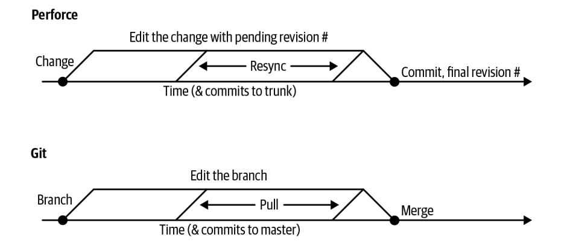
Figure 16-1. Two revision numbers in Perforce 图 16-1. Perforce中的两个修订号
This “uncommitted work is akin to a branch” idea is particularly relevant when thinking about refactoring tasks. Imagine a developer being told, “Go rename Widget to OldWidget.” Depending on an organization’s branch management policies and understanding, what counts as a branch, and which branches matter, this could have several interpretations:
- Rename Widget on the trunk branch in the Source of Truth repository
- Rename Widget on all branches in the Source of Truth repository
- Rename Widget on all branches in the Source of Truth repository, and find all devs with outstanding changes to files that reference Widget
将'未提交的工作视作分支'这一理念在考虑重构任务时尤为重要。想象一下，一个开发者被告知，"将Widget重命名为OldWidget"。根据组织的分支管理策略和理解，什么是分支，以及哪个分支重要，这可能有多种解释：
- 在信息源版本库的主干分支上重命名Widget
- 在信息源版本库中的所有分支上重命名Widget
- 在信息源版本库的所有分支上重命名Widget，并找到所有对引用Widget的文件有未完成修改的开发者。
If we were to speculate, attempting to support that “rename this everywhere, even in outstanding changes” use case is part of why commercial centralized VCSs tend to track things like “which engineers have this file open for editing?” (We don’t think this is a scalable way to perform a refactoring task, but we understand the point of view.)
如果我们猜测，试图支持“到处重命名，即使在未完成的更改中”用例是为什么商业集中式VCS倾向于跟踪“哪些工程师打开此文件进行编辑？”（我们不认为这是执行重构任务的可扩展方式，但我们理解这个观点。）
Dev Branches 开发分支
In the age before consistent unit testing (see Chapter 11), when the introduction of any given change had a high risk of regressing functionality elsewhere in the system, it made sense to treat trunk specially. “We don’t commit to trunk,” your Tech Lead might say, “until new changes have gone through a full round of testing. Our team uses feature-specific development branches instead.”
在缺乏一致性单元测试的年代（见第11章），当任何给定的更改的引入都有很大的风险会使系统中其他地方的功能回滚时，特别对待trunk是有道理的。"我们不会向主干提交，"技术负责人可能会说：在新变更经过完整的测试周期之前，我们不会向主干提交。我们的团队反而使用特定于功能的开发分支。
A development branch (usually “dev branch”) is a halfway point between “this is done but not committed” and “this is what new work is based on.” The problem that these are attempting to solve (instability of the product) is a legitimate one—but one that we have found to be solved far better with more extensive use of tests, Continuous Integration (CI) (see Chapter 23), and quality enforcement practices like thorough code review.
开发分支（通常是 "dev branch"）是介于 "这个已经完成但未提交 "和 "这个是新工作的基础 "之间的中间点。这些尝试解决的问题（产品不稳定）本身是合理的，但我们发现，通过更广泛地采用测试、持续集成（CI）（见第23章）以及严格的代码审查等质量保障措施，可以更有效地解决这一问题。
We believe that a version control policy that makes extensive use of dev branches as a means toward product stability is inherently misguided. The same set of commits are going to be merged to trunk eventually. Small merges are easier than big ones. Merges done by the engineer who authored those changes are easier than batching unrelated changes and merging later (which will happen eventually if a team is sharing a dev branch). If presubmit testing on the merge reveals any new problems, the same argument applies: it’s easier to determine whose changes are responsible for a regression if there is only one engineer involved. Merging a large dev branch implies that more changes are happening in that test run, making failures more difficult to isolate. Triaging and root-causing the problem is difficult; fixing it is even worse.
我们认为，大量使用开发分支作为产品稳定性手段的版本控制策略本身上是错误的。同一组提交最终将合并到主干中。小的合并比大的合并容易。由编写这些更改的工程师进行的合并比把不相关的修改分批合并要容易（如果团队共享开发分支，最终会发生这种情况）。如果对合并进行的预提交测试发现了任何新问题，同样的论点也适用：如果只有一个工程师参与，那么确定哪些更改导致了性能回退将更为容易。合并一个大型开发分支意味着在该测试运行中会发生更多的更改，从而使故障更难隔离。处理和根除问题是困难的，而修复问题就更难了。
Beyond the lack of expertise and inherent problems in merging a single branch, there are significant scaling risks when relying on dev branches. This is a very common productivity drain for a software organization. When there are multiple branches being developed in isolation for long periods, coordinating merge operations becomes significantly more expensive (and possibly riskier) than they would be with trunk-based development.
除了在合并单个分支时缺乏专业知识和固有问题之外，依赖开发分支还带来了显著的扩展性风险。对于软件组织来说，这是一种非常常见的生产力损失。当存在多个分支长期独立开发时，协调这些分支的合并操作的成本（以及潜在风险）将显著高于基于主干的开发模式。
How did we become addicted to dev branches? 我们是如何沉迷于开发分支的？
It’s easy to see how organizations fall into this trap: they see, “Merging this long-lived development branch reduced stability” and conclude, “Branch merges are risky.” Rather than solve that with “Better testing” and “Don’t use branch-based development strategies,” they focus on slowing down and coordinating the symptom: the branch merges. Teams begin developing new branches based on other in-flight branches. Teams working on a long-lived dev branch might or might not regularly have that branch synched with the main development branch. As the organization scales up, the number of development branches grows as well, and the more effort is placed on coordinating that branch merge strategy. Increasing effort is thrown at coordination of branch merges—a task that inherently doesn’t scale. Some unlucky engineer becomes the Build Master/Merge Coordinator/Content Management Engineer, focused on acting as the single point coordinator to merge all the disparate branches in the organization. Regularly scheduled meetings attempt to ensure that the organization has “worked out the merge strategy for the week.”8 The teams that aren’t chosen to merge often need to re-sync and retest after each of these large merges.
很容易看出组织是如何落入这个陷阱的：他们看到，“合并这个长期存在的开发分支会降低稳定性”，并得出结论，“分支合并是有风险的。”而不是通过“更好的测试”和“不要使用基于分支的开发策略”来解决这个问题，只是专注于减缓和协调这一症状：分支合并。团队开始在其他活跃的分支的基础上开发新的分支。在一个长期存在的开发分支上工作的团队可能会也可能不会定期让该分支与主开发分支同步。随着组织规模的扩大，开发分支的数量也在增加，在协调该分支合并策略上的精力也就越多。越来越多的精力投入到分支合并的协调上——这是一项本质上无法扩展的任务。一些不走运的工程师成为构建主管/合并协调人/内容管理工程师，专注于充当单点协调人，以合并组织中所有不同的分支。定期安排的会议试图确保组织“制定了本周的合并策略”。未被选择合并的团队通常需要在每次大型合并后重新同步和测试。
All of that effort in merging and retesting is pure overhead. The alternative requires a different paradigm: trunk-based development, rely heavily on testing and CI, keep the build green, and disable incomplete/untested features at runtime. Everyone is responsible to sync to trunk and commit; no “merge strategy” meetings, no large/expensive merges. And, no heated discussions about which version of a library should be used—there can be only one. There must be a single Source of Truth. In the end, there will be a single revision used for a release: narrowing down to a single source of truth is just the “shift left” approach for identifying what is and is not being included.
所有这些合并和重新测试的努力都是纯粹的开销。替代方案需要一个不同的范式：基于主干的开发，严重依赖测试和CI，保持绿色构建，并在运行时禁用不完整/未经测试的功能。每个人都有责任同步到主干和提交；没有 "合并策略 "会议，没有大型/高成本的合并。而且，不会有关于应该使用库的哪个版本的激烈讨论——必须只有一个版本。必须有一个唯一的信息源。最终，将有一个单一的修订版用于发布：将焦点集中在一个唯一的信息源上，这只是‘左移’方法，用于确定哪些内容被包含在内，哪些没有。
8Recent informal Twitter polling suggests about 25% of software engineers have been subjected to “regularly scheduled” merge strategy meetings.
8 最近的非正式推特民意调查显示，大约25%的软件工程师参加了“定期”的合并策略会议。
Release Branches 发布分支
If the period between releases (or the release lifetime) for a product is longer than a few hours, it may be sensible to create a release branch that represents the exact code that went into the release build for your product. If any critical flaws are discovered between the actual release of that product into the wild and the next release cycle, fixes can be cherry-picked (a minimal, targeted merge) from trunk to your release branch.
如果某个产品的发布间隔（或发布生命周期）超过几个小时，那么创建一个发布分支来表示进入产品发布构建的确切代码可能是明智的。如果在该产品的实际发布和下一个发布周期之间发现了任何关键缺陷，那么可以从主干到你的发布分支进行修复（最小的、有针对性的合并）。
By comparison to dev branches, release branches are generally benign: it isn’t the technology of branches that is troublesome, it’s the usage. The primary difference between a dev branch and a release branch is the expected end state: a dev branch is expected to merge back to trunk, and could even be further branched by another team. A release branch is expected to be abandoned eventually.
与开发分支相比，发布分支通常是良性的：麻烦的不是分支的技术，而是用法。开发分支和发布分支的主要区别在于预期的最终状态：开发分支预期会合并到主干上，甚至可能会被另一个团队进一步分支。而发布分支预计最终会被放弃。
In the highest-functioning technical organizations that Google’s DevOps Research and Assessment (DORA) organization has identified, release branches are practically nonexistent. Organizations that have achieved Continuous Deployment (CD)—the ability to release from trunk many times a day—likely tend to skip release branches: it’s much easier to simply add the fix and redeploy. Thus, cherry-picks and branches seem like unnecessary overhead. Obviously, this is more applicable to organizations that deploy digitally (such as web services and apps) than those that push any form of tangible release to customers; it is generally valuable to know exactly what has been pushed to customers.
在谷歌的DevOps研究和评估组织（DORA）所确定的最高效的技术组织中，发布分支实际上是不存在的。那些已经实现了持续部署（CD）的组织——每天多次从主干发布的能力——很可能倾向于跳过发布分支：只需添加修复和重新部署就更容易了。因此，挑选（cherry-picks）和分支似乎是不必要的开销。显然，这更适用于以数字方式部署的组织（如网络服务和应用程序），而不是那些向客户推送任何形式的有形发布的组织；通常，准确地了解向客户推出的产品是很有价值的。
That same DORA research also suggests a strong positive correlation between “trunk- based development,” “no long-lived dev branches,” and good technical outcomes. The underlying idea in both of those ideas seems clear: branches are a drag on productivity. In many cases we think complex branch and merge strategies are a perceived safety crutch—an attempt to keep trunk stable. As we see throughout this book, there are other ways to achieve that outcome.
同样的DORA研究也表明，"基于主干的开发"、"没有长期的开发分支"和良好的技术成果之间有很强的正相关关系。这两个观点的基本思路似乎都很清楚：分支拖累了生产力。在许多情况下，我们认为复杂的分支和合并策略是一种可感知的安全支柱——试图保持主干的稳定。正如我们在本书中所看到的，还有其他的方法来实现这一结果。
Version Control at Google 谷歌的版本控制
At Google, the vast majority of our source is managed in a single repository (monorepo) shared among roughly 50,000 engineers. Almost all projects that are owned by Google live there, except large open source projects like Chromium and Android. This includes public-facing products like Search, Gmail, our advertising products, our Google Cloud Platform offerings, as well as the internal infrastructure necessary to support and develop all of those products.
在谷歌，我们的绝大多数源代码都在一个由大约50,000名工程师共享的存储库（monorepo）中管理。除了像Chromium和Android这样的大型开源项目，几乎所有属于谷歌的项目都在这里。这包括面向公众的产品，如搜索、Gmail、我们的广告产品、我们的谷歌云平台产品，以及支持和开发所有这些产品所需的内部基础设施。
We rely on an in-house-developed centralized VCS called Piper, built to run as a distributed microservice in our production environment. This has allowed us to use Google-standard storage, communication, and Compute as a Service technology to provide a globally available VCS storing more than 80 TB of content and metadata. The Piper monorepo is then simultaneously edited and committed to by many thousands of engineers every day. Between humans and semiautomated processes that make use of version control (or improve things checked into VCS), we’ll regularly handle 60,000 to 70,000 commits to the repository per work day. Binary artifacts are fairly common because the full repository isn’t transmitted and thus the normal costs of binary artifacts don’t really apply. Because of the focus on Google-scale from the earliest conception, operations in this VCS ecosystem are still cheap at human scale: it takes perhaps 15 seconds total to create a new client at trunk, add a file, and commit an (unreviewed) change to Piper. This low-latency interaction and well-understood/ well-designed scaling simplifies a lot of the developer experience.
我们依靠内部开发的集中式VCS，名为Piper，该VCS是为在我们的生产环境中作为分布式微服务运行而构建的。这使我们能够使用谷歌标准的存储、通信和计算即服务技术，提供一个全球可用的VCS，存储超过80TB的内容和元数据。然后，Piper 单版本库每天由成千上万的工程师同时进行编辑和提交。在人类和利用版本控制（或改进签入VCS的内容）的人工流程和半自动化流程之间，我们每个工作日会定期处理60,000到70,000次提交到版本库。二进制构件是相当常见的，因为并不需要完整地传输到版本库，因此二进制构件的成本并不高。由于从最初的概念就专注于谷歌规模，这个VCS生态系统的操作在人群规模上仍然是低成本的：在主干上创建一个新的客户端，添加一个文件，并向Piper提交一个（未经审查的）更改，总共可能需要15秒。这种低延迟的互动和良好的理解/设计的扩展简化了很多开发者的体验。
By virtue of Piper being an in-house product, we have the ability to customize it and enforce whatever source control policies we choose. For instance, we have a notion of granular ownership in the monorepo: at every level of the file hierarchy, we can find OWNERS files that list the usernames of engineers that are allowed to approve commits within that subtree of the repository (in addition to the OWNERS that are listed at higher levels in the tree). In an environment with many repositories, this might have been achieved by having separate repositories with filesystem permissions enforcement controlling commit access or via a Git “commit hook” (action triggered at commit time) to do a separate permissions check. By controlling the VCS, we can make the concept of ownership and approval more explicit and enforced by the VCS during an attempted commit operation. The model is also flexible: ownership is just a text file, not tied to a physical separation of repositories, so it is trivial to update as the result of a team transfer or organization restructuring.
由于Piper是一个内部产品，我们能够定制它并实施我们选择的任何源代码控制策略。例如，我们在单版本库中有一个细粒度所有权的概念：在文件层次结构的每一级，我们都可以找到OWNERS文件，其中列出了允许批准该版本库的子树中的提交的工程师的用户名（除了在树中更高层次列出的OWNERS）。在具有多个版本库的环境中，这可能是通过单独的版本库和文件系统权限执行控制提交访问，或者通过Git的 "提交钩子"（提交时触发的动作）进行单独的权限检查来实现。通过控制VCS，我们可以使所有权和批准的概念更加明确，并在尝试提交操作时由VCS强制执行。这个模型也很灵活：所有权只是一个文本文件，并不与存储库的物理分离相联系，所以在团队转移或组织结构调整的情况下，更新它是很容易的。
One Version 一个版本
The incredible scaling powers of Piper alone wouldn’t allow the sort of collaboration that we rely upon. As we said earlier: version control is also about policy. In addition to our VCS, one key feature of Google’s version control policy is what we’ve come to refer to as “One Version.” This extends the “Single Source of Truth” concept we looked at earlier—ensuring that a developer knows which branch and repository is their source of truth—to something like “For every dependency in our repository, there must be only one version of that dependency to choose.”9 For third-party packages, this means that there can be only a single version of that package checked into our repository, in the steady state.10 For internal packages, this means no forking without repackaging/renaming: it must be technologically safe to mix both the original and the fork into the same project with no special effort. This is a powerful feature for our ecosystem: there are very few packages with restrictions like “If you include this package (A), you cannot include other package (B).”
单凭Piper令人难以置信的扩展能力，是无法实现我们所依赖的那种协作的。正如我们之前所说：版本控制也是关于策略的。除了我们的VCS之外，谷歌版本控制策略的一个关键特征就是我们所说的 "一个版本"。这扩展了我们前面提到的 "单信息源 "的概念--确保开发者知道哪个分支和版本库是他们的信息源--到类似于 "对于我们版本库中的每个依赖，必须只有一个版本的依赖可以选择。 "对于第三方软件包，这意味着在稳定状态下，该软件包只能有一个版本被检入我们的仓库。对于内部软件包，这意味着没有重新打包/重命名的分支：在技术上必须是安全的，无需特别努力就可以将原始和分支混合到同一个项目中。这对我们的生态系统来说是一个强大的功能：很少有包有类似 "如果你包括这个软件包（A），你就不能包括其他软件包（B）"的限制。
This notion of having a single copy on a single branch in a single repository as our Source of Truth is intuitive but also has some subtle depth in application. Let’s investigate a scenario in which we have a monorepo (and thus arguably have fulfilled the letter of the law on Single Source of Truth), but have allowed forks of our libraries to propagate on trunk.
将单个副本放在单个版本库中的单个分支上作为信息源的概念是直观的，但在应用中也有一些微妙的深度。让我们研究一下这样的场景：我们有一个单版本库（因此可以说已经履行了关于单信息源的法律条文），但允许我们的库的分支在主干上传播。
9For example, during an upgrade operation, there might be two versions checked in, but if a developer is adding a new dependency on an existing package, there should be no choice in which version to depend upon.
9 例如，在升级操作期间，可能签入了两个版本，但如果开发人员正在现有软件包上添加新的依赖，则应该没有选择依赖哪个版本。
10That said, we fail at this in many cases because external packages sometimes have pinned copies of their own dependencies bundled in their source release. You can read more on how all of this goes wrong in Chapter 21.
10 也就是说，我们在很多情况下都会失败，因为外部软件包有时会在它们的源版本中捆绑有它们自己的依赖性的钉子副本。你可以在第21章中阅读更多关于这一切是如何出错的。
Scenario: Multiple Available Versions 场景：多个可用版本
Imagine the following scenario: some team discovers a bug in common infrastructure code (in our case, Abseil or Guava or the like). Rather than fix it in place, the team decides to fork that infrastructure and tweak it to work around the bug—without renaming the library or the symbols. It informs other teams near them, “Hey, we have an improved version of Abseil checked in over here: check it out.” A few other teams build libraries that themselves rely on this new fork.
想象一下以下情况：一些团队发现了公共基础组件代码中的一个bug（在我们的例子中，是Abseil或Guava之类的）。该团队决定不在原地修复它，而是分支该基础组件，并对其进行调整，以解决该错误——而不重命名库或符号。它通知他们附近的其他团队："嘿，我们这里有一个改进的Abseil版本：请查看。" 其他一些团队建立的库也依赖于这个新的分支。
As we’ll see in Chapter 21, we’re now in a dangerous situation. If any project in the codebase comes to depend on both the original and the forked versions of Abseil simultaneously, in the best case, the build fails. In the worst case, we’ll be subjected to difficult-to-understand runtime bugs stemming from linking in two mismatched versions of the same library. The “fork” has effectively added a coloring/partitioning property to the codebase: the transitive dependency set for any given target must include exactly one copy of this library. Any link added from the “original flavor” partition of the codebase to the “new fork” partition will likely break things. This means that in the end that something as simple as “adding a new dependency” becomes an operation that might require running all tests for the entire codebase, to ensure that we haven’t violated one of these partitioning requirements. That’s expensive, unfortunate, and doesn’t scale well.
正如我们将在第21章中看到的，我们现在处于危险的境地。如果代码库中的任何项目同时依赖Abseil的原始版本和分支版本，在最好的情况下，构建将失败。在最坏的情况下，我们将受到难以理解的运行时错误的影响，这些错误源于同一个库的两个不匹配的版本的链接。“fork”有效地为代码库添加了一个着色/分区属性：任何给定目标的可传递依赖项集必须只包含该库的一个副本。从“原始味道”的代码库添加到“新分支”分区的任何链接都可能会破坏事物。这意味着到最后，像 "添加一个新的依赖"这样简单的操作，可能需要运行整个代码库的所有测试，以确保我们没有违反这些分区的要求。这很昂贵，很不幸，而且不能很好地扩展。
In some cases, we might be able to hack things together in a way to allow a resulting executable to function correctly. Java, for instance, has a relatively standard practice called shading, which tweaks the names of the internal dependencies of a library to hide those dependencies from the rest of the application. When dealing with functions, this is technically sound, even if it is theoretically a bit of a hack. When dealing with types that can be passed from one package to another, shading solutions work neither in theory nor in practice. As far as we know, any technological trickery that allows multiple isolated versions of a library to function in the same binary share this limitation: that approach will work for functions, but there is no good (efficient) solution to shading types—multiple versions for any library that provides a vocabulary type (or any higher-level construct) will fail. Shading and related approaches are patching over the underlying issue: multiple versions of the same dependency are needed. (We’ll discuss how to minimize that in general in Chapter 21.)
在某些情况下，我们也许可以通过黑客技术将一些东西拼凑在一起，使产生的可执行文件能够正常运行。例如，Java有一个相对标准的做法，叫做shading，它调整了库的内部依赖的名称，以便从应用程序的其他部分隐藏这些依赖关系。当处理函数时，这在技术上是合理的，即使它在理论上有点像黑客。当处理可以从一个包传递到另一个包的类型时，着色解决方案在理论上和实践中都不起作用。据我们所知，任何允许一个库的多个孤立版本在同一个二进制中运作的技术伎俩都有这个限制：这种方法对函数来说是可行的，但对于着色类型来说，没有好的（有效的）解决方案——任何提供词汇类型（或任何更高级别的构造）的库的多个版本都会失败。着色和相关的方法是对基本问题的修补：同一依赖的多个版本是需要的。(我们将在第21章中讨论如何在一般情况下尽量减少这种情况)。
Any policy system that allows for multiple versions in the same codebase is allowing for the possibility of these costly incompatibilities. It’s possible that you’ll get away with it for a while (we certainly have a number of small violations of this policy), but in general, any multiple-version situation has a very real possibility of leading to big problems.
任何允许在同一代码库中使用多个版本的策略系统都可能会出现这些代价高昂的不兼容。你有可能暂时逃过一劫（我们当然有一些小的违反这一策略的行为），但一般来说，任何多版本的情况都有导致大问题的非常现实的可能性。
The “One-Version” Rule “一个版本”规则
With that example in mind, on top of the Single Source of Truth model, we can hopefully understand the depth of this seemingly simple rule for source control and branch management:
考虑到这个例子，在单信息源模型的基础上，我们希望能够充分理解这一看似简单的源代码控制和分支管理规则的深度：
Developers must never have a choice of “What version of this component should I depend upon?”
决不能让开发人员选择"我应该依赖这个组件的哪个版本？"
Colloquially, this becomes something like a “One-Version Rule.” In practice, “One- Version” is not hard and fast,11 but phrasing this around limiting the versions that can be chosen when adding a new dependency conveys a very powerful understanding.
俗话说，这就变成了类似于 "一个版本规则"的东西。在实践中，"一个版本"并不是硬性规定，但在添加新依赖项时限制可以选择的版本这一措辞传达了一种非常有力的理解。
For an individual developer, lack of choice can seem like an arbitrary impediment. Yet we see again and again that for an organization, it’s a critical component in efficient scaling. Consistency has a profound importance at all levels in an organization. From one perspective, this is a direct side effect of discussions about consistency and ensuring the ability to leverage consistent “choke points.”
对于个人开发者来说，缺乏选择似乎是一个大障碍。然而，我们一再看到，对于一个组织来说，它是高效扩展的一个关键组成部分。一致性在一个组织的各个层面都有深远的意义。从一个角度来看，这是讨论一致性和确保利用一致 "瓶颈"的能力的直接副作用。
11For instance, if there are external/third-party libraries that are periodically updated, it might be infeasible to update that library and update all use of it in a single atomic change. As such, it is often necessary to add a new version of that library, prevent new users from adding dependencies on the old one, and incrementally switch usage from old to new.
11 例如，如果有定期更新的外部/第三方库，更新该库并在一次原子变化中更新对它的所有使用可能是不可行的。因此，通常有必要添加该库的新版本，防止新用户添加对旧版本的依赖，并逐步将使用从旧版本切换到新版本。
(Nearly) No Long-Lived Branches (几乎)没有长期存在的分支
There are several deeper ideas and policies implicit in our One-Version Rule; foremost among them: development branches should be minimal, or at best be very short lived. This follows from a lot of published work over the past 20 years, from Agile processes to DORA research results on trunk-based development and even Phoenix Project12 lessons on “reducing work-in-progress.” When we include the idea of pending work as akin to a dev branch, this further reinforces that work should be done in small increments against trunk, committed regularly.
在我们的 "一个版本规则"中隐含着几个更深层次的想法和策略；其中最重要的是：开发分支应该是最小的，或者最多只能是很短的时间。这来自于过去20年里发表的大量工作，从敏捷过程到基于主干的开发的DORA研究成果，甚至凤凰计划关于 "减少进行中的工作"的教训。当我们把待完成的工作看作是类似于开发分支的想法时，这就进一步强化了工作应该针对主干，定期提交，以小的增量完成。
As a counterexample: in a development community that depends heavily on long- lived development branches, it isn’t difficult to imagine opportunity for choice creeping back in.
作为一个反例：在一个严重依赖长期存在的开发分支的开发社区，不难想象选择的场景又悄然而至。
Imagine this scenario: some infrastructure team is working on a new Widget, better than the old one. Excitement grows. Other newly started projects ask, “Can we depend on your new Widget?” Obviously, this can be handled if you’ve invested in codebase visibility policies, but the deep problem happens when the new Widget is “allowed” but only exists in a parallel branch. Remember: new development must not have a choice when adding a dependency. That new Widget should be committed to trunk, disabled from the runtime until it’s ready, and hidden from other developers by visibility if possible—or the two Widget options should be designed such that they can coexist, linked into the same programs.
想象一下这样的场景：一些基础组件团队正在开发一个新的Widget，比老的更好。兴奋之情油然而生。其他新开始的项目问："我们可以依赖你的新Widget吗？" 显然，如果你在代码库的可见性策略上进行了投资，这种情况是可以处理的，但如果新Widget虽然被‘允许’使用，却仅存在于一个并行分支中，就会产生深层次的问题。请记住：新开发在添加依赖时不应有选择余地。那个新Widget应被提交至主干，并在准备就绪前在运行时禁用，如果可能的话，通过调整可见性对其他开发者隐藏——或者两个Widget选项应该被设计为能够共存，并能够被链接到同一个程序中。
Interestingly, there is already evidence of this being important in the industry. In Accelerate and the most recent State of DevOps reports, DORA points out that there is a predictive relationship between trunk-based development and high-performing software organizations. Google is not the only organization to have discovered this— nor did we necessarily have expected outcomes in mind when these policies evolved —--—it just seemed like nothing else worked. DORA’s result certainly matches our experience.
有趣的是，已经有证据表明这在行业中是很重要的。在《加速》和最近的《DevOps状况》报告中，DORA指出，基于主干的开发和高绩效的软件组织之间存在着可预测关系。谷歌并不是唯一发现这一点的组织——当这些策略演变时，我们也不一定有预期的结果——只是似乎没有其他可行的办法。DORA的结果当然与我们的经验相符。
Our policies and tools for large-scale changes (LSCs; see Chapter 22) put additional weight on the importance of trunk-based development: broad/shallow changes that are applied across the codebase are already a massive (often tedious) undertaking when modifying everything checked in to the trunk branch. Having an unbounded number of additional dev branches that might need to be refactored at the same time would be an awfully large tax on executing those types of changes, finding an ever- expanding set of hidden branches. In a DVCS model, it might not even be possible to identify all of those branches.
我们的大规模变更（LSCs；见第22章）的策略和工具给基于主干的开发的重要性增加了砝码：当修改所有签入主干分支的内容时，适用于整个代码库的广泛/浅层变更已经是一项巨大的（通常是乏味繁琐的）工作。如果同时有无限多的额外开发分支需要重构，这将给执行这类变更带来极大的负担，因为需要不断寻找那不断扩张的隐藏分支集合。在DVCS模型中，甚至可能无法识别所有这些分支。
Of course, our experience is not universal. You might find yourself in unusual situations that require longer-lived dev branches in parallel to (and regularly merged with) trunk.
当然，我们的经验并不是万能的。你可能会发现自己处于不寻常的情况下，需要更长的开发分支与主干并行（并定期合并）。
Those scenarios should be rare, and should be understood to be expensive. Across the roughly 1,000 teams that work in the Google monorepo, there are only a couple that have such a dev branch.13 Usually these exist for a very specific (and very unusual) reason. Most of those reasons boil down to some variation of “We have an unusual requirement for compatibility over time.” Oftentimes this is a matter of ensuring compatibility for data at rest across versions: readers and writers of some file format need to agree on that format over time even if the reader or writer implementations are modified. Other times, long-lived dev branches might come from promising API compatibility over time—when One Version isn’t enough and we need to promise that an older version of a microservice client still works with a newer server (or vice versa). That can be a very challenging requirement, something that you should not promise lightly for an actively evolving API, and something you should treat carefully to ensure that period of time doesn’t accidentally begin to grow. Dependency across time in any form is far more costly and complicated than code that is time invariant. Internally, Google production services make relatively few promises of that form.14 We also benefit greatly from a cap on potential version skew imposed by our “build horizon”: every job in production needs to be rebuilt and redeployed every six months, maximum. (Usually it is far more frequent than that.)
这些场景应该是罕见的，并且应该理解为代价高昂。在谷歌单版本库的大约1000个团队中，只有少数团队有这样一个开发分支。这些场景的存在通常有一个非常具体（非常不寻常）的原因。大多数原因归结为“随着时间的推移，我们对兼容性有着苛刻的要求。”这通常涉及到确保不同版本间静态数据的兼容性问题：即使文件格式的读写器实现发生了变化，它们也需要随着时间推移就格式达成一致。其他时候，长期存在的开发分支可能源于对API随时间保持兼容性的承诺——当单一版本不足以满足需求时，我们需要确保旧版本的微服务客户端能够与新版本的服务器兼容（或相反）。这可能是一个非常具有挑战性的要求，对于一个积极发展的API，你不应该轻易承诺，而且你应该谨慎对待，以确保这段时间不会意外地开始增长。任何形式的跨时间的依赖都比时间不变的代码要昂贵和复杂得多。在谷歌内部，生产服务很少做出此类承诺。我们也从我们的 "构建范围 "所施加的潜在版本偏差上限中获益匪浅：生产中的每项工作最多每六个月就需要重建和重新部署。(通常要比这频繁得多）。
We’re sure there are other situations that might necessitate long-lived dev branches. Just make sure to keep them rare. If you adopt other tools and practices discussed in this book, many will tend to exert pressure against long-lived dev branches. Automation and tooling that works great at trunk and fails (or takes more effort) for a dev branch can help encourage developers to stay current.
我们确信还有其他情况可能需要长期的开发分支。只需确保它们很少。如果你采用了本书所讨论的其他工具和实践，许多人都会倾向于减少长期开发分支的使用。自动化和工具在主干上运行良好，而在开发分支上可能会失败（或需要更多努力），这有助于鼓励开发人员保持最新状态。
12Kevin Behr, Gene Kim, and George Spafford, The Phoenix Project (Portland: IT Revolution Press, 2018). 12 Kevin Behr、Gene Kim和George Spafford，《凤凰城项目》（波特兰：IT革命出版社，2018年）。
13It’s difficult to get a precise count, but the number of such teams is almost certainly fewer than 10./
13 很难准确统计，但这样的队伍几乎肯定少于10支。
14Cloud interfaces are a different story. 14 云接口是另一回事。
What About Release Branches? 发布分支呢？
Many Google teams use release branches, with limited cherry picks. If you’re going to put out a monthly release and continue working toward the next release, it’s perfectly reasonable to make a release branch. Similarly, if you’re going to ship devices to customers, it’s valuable to know exactly what version is out “in the field.” Use caution and reason, keep cherry picks to a minimum, and don’t plan to remerge with trunk. Our various teams have all sorts of policies about release branches given that relatively few teams have arrived at the sort of rapid release cadence promised by CD (see Chapter 24) that obviates the need or desire for a release branch. Generally speaking,release branches don’t cause any widespread cost in our experience. Or, at least, no noticeable cost above and beyond the additional inherent cost to the VCS.
许多谷歌团队使用发布分支，但选择的版本有限。如果你打算每月发布一个版本，并继续为下一个版本工作，那么创建一个发布分支是完全合理的。同样，如果你打算将设备交付给客户，准确地知道什么版本“在当前”是很有价值的。谨慎和理智地操作，尽量减少选择性合并（cherry picks），并不计划与主干重新合并。鉴于很少有团队达到CD承诺的快速发布节奏，从而不再需要或渴望发布分支，我们的各个团队对发布分支制定了多种策略（见第24章）。一般来说，根据我们的经验，发布分支不会导致任何广泛的成本。或者说，至少在VCS的额外固有成本之外，没有明显的成本。
Monorepos 单版本库（单库）
In 2016, we published a (highly cited, much discussed) paper on Google’s monorepo approach.15 The monorepo approach has some inherent benefits, and chief among them is that adhering to One Version is trivial: it’s usually more difficult to violate One Version than it would be to do the right thing. There’s no process of deciding which versions of anything are official, or discovering which repositories are important. Building tools to understand the state of the build (see Chapter 23) doesn’t also require discovering where important repositories exist. Consistency helps scale up the impact of introducing new tools and optimizations. By and large, engineers can see what everyone else is doing and use that to inform their own choices in code and system design. These are all very good things.
2016年，我们发表了一篇关于Google的单版本库（方法的论文（引用率很高，讨论很多）。monorepo方法有一些固有的好处，其中最主要的是遵守一个版本是微不足道的：通常违反一个版本比做正确的事情更难。没有过程来决定任何东西的哪个版本是官方的，也没有发现哪个版本库是重要的。构建工具以理解构建状态（见第23章），也无需寻找重要版本库的位置。一致性有助于扩大引入新工具和优化的效果。总的来说，工程师们可以看到其他人在做什么，并利用这些来告知他们自己在代码和系统设计中的选择。这些都是非常好的事情。
Given all of that and our belief in the merits of the One-Version Rule, it is reasonable to ask whether a monorepo is the One True Way. By comparison, the open source community seems to work just fine with a “manyrepo” approach built on a seemingly infinite number of noncoordinating and nonsynchronized project repositories.
考虑到所有这些，以及我们对 "单一版本规则 "优点的信念，我们有理由问，单版本库是否是唯一正确的方法。相比之下，开源社区似乎可以用 "多版本 "的方法来工作，而这种方法是建立在看似无限多的不协调和不同步的项目库之上的。
In short: no, we don’t think the monorepo approach as we’ve described it is the perfect answer for everyone. Continuing the parallel between filesystem format and VCS, it’s easy to imagine deciding between using 10 drives to provide one very large logical filesystem or 10 smaller filesystems accessed separately. In a filesystem world, there are pros and cons to both. Technical issues when evaluating filesystem choice would range from outage resilience, size constraints, performance characteristics, and so on. Usability issues would likely focus more on the ability to reference files across filesystem boundaries, add symlinks, and synchronize files.
简而言之：不，我们不认为我们所描述的单版本库方法对每个人都是完美答案。持续文件系统格式和VCS之间的并行，很容易想象在使用10个驱动器提供一个非常大的逻辑文件系统还是10个单独访问的小文件系统之间做出决定。在文件系统的世界里，两者都有优点和缺点。在评估文件系统的选择时，技术上的问题包括中断恢复能力、大小限制、性能特点等等。可用性问题可能会更多地集中在跨文件系统边界引用文件、添加符号链接和同步文件的能力上。
A very similar set of issues governs whether to prefer a monorepo or a collection of finer-grained repositories. The specific decisions of how to store your source code (or store your files, for that matter) are easily debatable, and in some cases, the particulars of your organization and your workflow are going to matter more than others. These are decisions you’ll need to make yourself.
一组非常类似的问题决定了是选择单版本库（还是选择更细粒度的版本库的集合。如何存储你的源代码（或存储你的文件）的具体决定是很容易争论的，在某些情况下，你的组织和你的工作流程的特殊性会比其他的更重要。这些都是你需要自己做出的决定。
What is important is not whether we focus on monorepo; it’s to adhere to the One- Version principle to the greatest extent possible: developers must not have a choice when adding a dependency onto some library that is already in use in the organization. Choice violations of the One-Version Rule lead to merge strategy discussions, diamond dependencies, lost work, and wasted effort.
重要的不是我们是否关注单版本库；而是最大限度地坚持一个版本的原则：开发人员在向组织中已经使用的某个库添加依赖时，不能有选择。违反一个版本原则的选择会导致合并策略的讨论、钻石依赖、工作成果丢失和劳动浪费。
Software engineering tools including both VCS and build systems are increasingly providing mechanisms to smartly blend between fine-grained repositories and monorepos to provide an experience akin to the monorepo—an agreed-upon ordering of commits and understanding of the dependency graph. Git submodules, Bazel with external dependencies, and CMake subprojects all allow modern developers to synthesize something weakly approximating monorepo behavior without the costs and downsides of a monorepo.16 For instance, fine-grained repositories are easier to deal with in terms of scale (Git often has performance issues after a few million commits and tends to be slow to clone when repositories include large binary artifacts) and storage (VCS metadata can add up, especially if you have binary artifacts in your version control system). Fine-grained repositories in a federated/virtual-monorepo (VMR)–style repository can make it easier to isolate experimental or top-secret projects while still holding to One Version and allowing access to common utilities.
包括VCS和构建系统在内的软件工程工具越来越多地提供了在细粒度版本库和单版本库之间巧妙融合的机制，以提供类似于单版本库的体验——一种约定的提交顺序和对依赖关系图的理解。Git子模块、带有外部依赖关系的Bazel和CMake子项目都允许现代开发者合成一些弱的近似于单版本库的行为，而没有单版本库的成本和弊端。例如，细粒度的版本库在规模上更容易处理（Git在几百万次提交后经常出现性能问题，而且当仓库包括大型二进制构件时，克隆速度往往很慢）和存储（VCS元数据会增加，特别是如果你的版本控制系统中有二进制构件）。联合/虚拟单版本库（VMR）风格的细粒度版本库可以更容易地隔离实验性或最高机密的项目，同时同时仍保留一个版本并允许访问通用工具。
To put it another way: if every project in your organization has the same secrecy, legal, privacy, and security requirements,17 a true monorepo is a fine way to go. Otherwise, aim for the functionality of a monorepo, but allow yourself the flexibility of implementing that experience in a different fashion. If you can manage with disjoint repositories and adhere to One Version or your workload is all disconnected enough to allow truly separate repositories, great. Otherwise, synthesizing something like a VMR in some fashion may represent the best of both worlds.
换言之：如果你组织中的每个项目都有相同的保密、法律、隐私和安全要求，真正的单版本库是一个不错的选择。否则，以实现单版本库的功能为目标，但同时保持以不同方式实施该体验的灵活性。如果你可以用不相干的软件库来管理，并坚持‘单一版本’原则，或者你的工作量都是不相干的，足以允许真正的独立软件库，那就太好了。否则，以某种方式合成类似于VMR的东西，可能结合了两种方式的最佳特性。
After all, your choice of filesystem format really doesn’t matter as much as what you write to it.
毕竟，与你所写入的内容相比，文件系统格式的选择并不是那么重要。
15Rachel Potvin and Josh Levenberg, “Why Google stores billions of lines of code in a single repository,” Communications of the ACM, 59 No. 7 (2016): 78-87.
15 Rachel Potvin和Josh Levenberg，"为什么谷歌将数十亿行代码存储在一个库中，"《ACM通讯》，59 No.7（2016）：78-87。
16We don’t think we’ve seen anything do this particularly smoothly, but the interrepository dependencies/virtual monorepo idea is clearly in the air.
16 我们认为我们还没有看到任何系统能特别顺利地做到这一点，但版本库间的依赖关系/虚拟单库的想法显然是在空想中。
17Or you have the willingness and capability to customize your VCS—and maintain that customization for the lifetime of your codebase/organization. Then again, maybe don’t plan on that as an option; that is a lot of overhead.
17 或者你有意愿和能力来定制你的VCS--并且在你的代码库/组织的生命周期内保持这种定制。然后，也许不要把它作为一个选项，那是一个很大的开销。
Future of Version Control 版本控制的未来
Google isn’t the only organization to publicly discuss the benefits of a monorepo approach. Microsoft, Facebook, Netflix, and Uber have also publicly mentioned their reliance on the approach. DORA has published about it extensively. It’s vaguely possible that all of these successful, long-lived companies are misguided, or at least that their situations are sufficiently different as to be inapplicable to the average smaller organization. Although it’s possible, we think it is unlikely.
谷歌并不是唯一一个公开讨论单版本库方法的好处的组织。微软、Facebook、Netflix和Uber也公开提到他们对这种方法的依赖。DORA已经广泛地发布了关于此方法的出版物。这些成功且历史悠久的公司可能都有所误解，或者至少他们的情况足够不同，以至于不适用于一般较小的组织。虽然这是可能的，但我们认为不太可能。
Most arguments against monorepos focus on the technical limitations of having a single large repository. If cloning a repository from upstream is quick and cheap, developers are more likely to keep changes small and isolated (and to avoid making mistakes with committing to the wrong work-in-progress branch). If cloning a repository (or doing some other common VCS operation) takes hours of wasted developer time, you can easily see why an organization would shy away from reliance on such a large repository/operation. We luckily avoided this pitfall by focusing on providing a VCS that scales massively.
大多数反对单版本库的论点都集中在拥有一个大型版本库的技术限制上。如果从上游克隆一个版本库又快又便宜，开发者就更有可能保持小规模和隔离的更改（避免提交到错误的工作分支）。如果克隆一个版本库（或做一些其他常见的VCS操作）需要浪费开发人员几个小时的时间，你很容易理解为什么一个组织会避开对这种大型版本库/操作的依赖。我们很幸运地避免了这个陷阱，因为我们专注于提供一个可以大规模扩展的VCS。
Looking at the past few years of major improvements to Git, there’s clearly a lot of work being done to support larger repositories: shallow clones, sparse branches, better optimization, and more. We expect this to continue and the importance of “but we need to keep the repository small” to diminish.
回顾过去几年对Git的重大改进，显然有很多工作是为了支持更大的仓库：浅复制，稀疏分支，更好的优化，等等。我们希望这种情况能继续下去，而 "但我们需要保持仓库的小型化"的重要性则会降低。
The other major argument against monorepos is that it doesn’t match how development happens in the Open Source Software (OSS) world. Although true, many of the practices in the OSS world come (rightly) from prioritizing freedom, lack of coordination, and lack of computing resources. Separate projects in the OSS world are effectively separate organizations that happen to be able to see one another’s code. Within the boundaries of an organization, we can make more assumptions: we can assume the availability of compute resources, we can assume coordination, and we can assume that there is some amount of centralized authority.
反对单版本库的另一个主要论点是，它不符合开源软件（OSS）世界中的开发方式。虽然这是事实，但开源软件世界中的许多做法（恰当地）源于对自由的优先、协调不足以及计算资源的缺乏。在开放源码软件世界中，各个独立项目实际上就像是能够相互查看代码的独立组织。在一个组织的边界内，我们可以做出更多的假设：我们可以假设计算资源的可用性，我们可以假设协调，我们可以假设有一定程度的集中权限。
A less common but perhaps more legitimate concern with the monorepo approach is that as your organization scales up, it is less and less likely that every piece of code is subject to exactly the same legal, compliance, regulatory, secrecy, and privacy requirements. One native advantage of a manyrepo approach is that separate repositories are obviously capable of having different sets of authorized developers, visibility, permissions, and so on. Stitching that feature into a monorepo can be done but implies some ongoing carrying costs in terms of customization and maintenance.
对于单版本库的方法，一个不太常见但也许更合理的担忧是，随着你的组织规模的扩大，越来越不可能每段代码都受到完全相同的法律、合规、监管、保密和隐私要求的约束。多版本库方法的一个原生优势是，独立的版本库显然能够拥有不同的授权开发者、可见性、权限等集合。集成这个功能到一个单库中是可以做到的，但意味着在定制和维护方面有一些持续的承载成本。
At the same time, the industry seems to be inventing lightweight interrepository linkage over and over again. Sometimes, this is in the VCS (Git submodules) or the build system. So long as a collection of repositories have a consistent understanding of “what is trunk,” “which change happened first,” and mechanisms to describe dependencies, we can easily imagine stitching together a disparate collection of physical repositories into one larger VMR. Even though Piper has done very well for us, investing in a highly scaling VMR and tools to manage it and relying on off-the-shelf customization for per-repository policy requirements could have been a better investment.
与此同时，业界似乎在一次又一次地发明轻量级的库间链接。有时，这是在VCS（Git子模块）或构建系统中。只要版本库的集合对 "什么是主干"、"哪个变化先发生 "有一致的理解，并有描述依赖关系的机制，我们就可以很容易地想象把不同的物理版本库的集合缝合到一个更大的VMR中。尽管Piper为我们做得很好，但投资于一个高度扩展的VMR和工具来管理它，并依靠现成的定制来满足每个版本库的策略要求，可能是一个更好的投资。
As soon as someone builds a sufficiently large nugget of compatible and interdependent projects in the OSS community and publishes a VMR view of those packages, we suspect that OSS developer practices will begin to change. We see glimpses of this in the tools that could synthesize a virtual monorepo as well as in the work done by (for instance) large Linux distributions discovering and publishing mutually compatible revisions of thousands of packages. With unit tests, CI, and automatic version bumping for new submissions to one of those revisions, enabling a package owner to update trunk for their package (in nonbreaking fashion, of course), we think that model will catch on in the open source world. It is just a matter of efficiency, after all: a (virtual) monorepo approach with a One-Version Rule cuts down the complexity of software development by a whole (difficult) dimension: time.
一旦有人在开放源码软件社区建立了足够大的兼容和相互依赖的项目，并发布了这些软件包的VMR视图，我们怀疑开放源码软件开发者的做法将开始改变。我们在能够创建虚拟单一仓库的工具中，以及在例如大型Linux发行版所做的工作中，发现了这种趋势的初步迹象，这些发行版发现并发布了数千个软件包的相互兼容的修订版。有了单元测试、CI，以及对其中一个修订版的新提交的自动版本升级，使软件包所有者能够为他们的软件包更新主干（当然是以不破坏的方式），我们认为这种模式将在开源世界中流行起来。归根结底，这是一个效率问题：采用（虚拟的）单一仓库方法和‘单一版本规则’可以在很大程度上（虽然困难）降低软件开发的复杂性：时间维度。
We expect version control and dependency management to evolve in this direction in the next 10 to 20 years: VCSs will focus on allowing larger repositories with better performance scaling, but also removing the need for larger repositories by providing better mechanisms to stitch them together across project and organizational boundaries. Someone, perhaps the existing package management groups or Linux distributors, will catalyze a de facto standard virtual monorepo. Depending on the utilities in that monorepo will provide easy access to a compatible set of dependencies as one unit. We’ll more generally recognize that version numbers are timestamps, and that allowing version skew adds a dimensionality complexity (time) that costs a lot—and that we can learn to avoid. It starts with something logically like a monorepo.
我们预计在未来10到20年内，版本控制和依赖管理将朝着这个方向发展。VCS将专注于允许大型版本库，并有更好的性能扩展，但也通过提供更好的机制来消除对大版本库的需求，使它们跨越项目和组织的界限。其中一个，也许是现有的软件包管理小组或Linux发行商，将促成一个事实上的标准虚拟单一版本库。依靠单一版本库中的实用程序，可以方便地访问作为一个单元的兼容的依赖关系。我们将更普遍地认识到，版本号是时间戳，允许版本偏差增加了一个维度的复杂性（时间），这需要花费很多，而且我们可以学习如何避免。它从逻辑上类似于单一版本库的东西开始。
Conclusion 总结
Version control systems are a natural extension of the collaboration challenges and opportunities provided by technology, especially shared compute resources and computer networks. They have historically evolved in lockstep with the norms of software engineering as we understand them at the time.
版本控制系统是技术带来的协作挑战和机遇的自然延伸，尤其是共享计算资源和计算机网络。它们在历史上与我们当时理解的软件工程规范同步发展。
Early systems provided simplistic file-granularity locking. As typical software engineering projects and teams grew larger, the scaling problems with that approach became apparent, and our understanding of version control changed to match those challenges. Then, as development increasingly moved toward an OSS model with distributed contributors, VCSs became more decentralized. We expect a shift in VCS technology that assumes constant network availability, focusing more on storage and build in the cloud to avoid transmitting unnecessary files and artifacts. This is increasingly critical for large, long-lived software engineering projects, even if it means a change in approach compared to simple single-dev/single-machine programming projects. This shift to cloud will make concrete what has emerged with DVCS approaches: even if we allow distributed development, something must still be centrally recognized as the Source of Truth.
早期系统实现了基础的文件级细粒度锁定功能。随着典型的软件工程项目和团队规模的扩大，这种方式的扩展问题变得很明显，我们对版本控制的理解也随着这些挑战而改变。然后，随着开发越来越多地转向具有分布式贡献者的开放源码软件模型，VCS变得更加去中心化。我们期待着VCS技术的转变，即假设网络的持续可用性，更加关注云存储和云构建，以避免传输不必要的文件和工件。这对于大型、长周期的软件工程项目来说越来越关键，即使这意味着与简单的单设备/单机器编程项目相比，方法上有所改变。这种向云计算的转变将使DVCS方法中出现的内容具体化：即使我们允许分布式开发，也必须集中认识到某些东西是信息源。
The current DVCS decentralization is a sensible reaction of the technology to the needs of the industry (especially the open source community). However, DVCS configuration needs to be tightly controlled and coupled with branch management policies that make sense for your organization. It also can often introduce unexpected scaling problems: perfect fidelity offline operation requires a lot more local data. Failure to rein in the potential complexity of a branching free-for-all can lead to a potentially unbounded amount of overhead between developers and deployment of that code. However, complex technology doesn’t need to be used in a complex fashion: as we see in monorepo and trunk-based development models, keeping branch policies simple generally leads to better engineering outcomes.
目前DVCS的去中心化是该技术对行业（尤其是开源社区）需求的合理反应。然而，DVCS的配置需要严格控制，并与对你的组织有意义的分支管理策略结合起来。它还常常会引入意想不到的扩展问题：完美仿真的离线操作需要更多的本地数据。未能控制分支无限制生成的潜在复杂性，可能会导致开发人员与代码部署之间的开销无限增加。然而，复杂的技术并不需要以复杂的方式来使用：正如我们在单一版本库和基于主干的开发模式中看到的那样，保持分支策略的简单通常会带来更好的工程结果。
Choice leads to costs here. We highly endorse the One-Version Rule presented here: developers within an organization must not have a choice where to commit, or which version of an existing component to depend upon. There are few policies we’re aware of that can have such an impact on the organization: although it might be annoying for individual developers, in the aggregate, the end result is far better.
选择带来了成本。我们高度赞同这里提出的 "单一版本规则"：组织内的开发者在选择提交位置或依赖现有组件的版本时，不应有选择余地。据我们所知，很少有策略能对组织产生如此大的影响：尽管这对个别开发者来说可能很烦人，但从总体上看，最终结果要好得多。
TL;DRs 内容提要
-
Use version control for any software development project larger than “toy project with only one developer that will never be updated.”
-
There’s an inherent scaling problem when there are choices in “which version of this should I depend upon?”
-
One-Version Rules are surprisingly important for organizational efficiency. Removing choices in where to commit or what to depend upon can result in significant simplification.
-
In some languages, you might be able to spend some effort to dodge this with technical approaches like shading, separate compilation, linker hiding, and so on. The work to get those approaches working is entirely lost labor—your software engineers aren’t producing anything, they’re just working around technical debts.
-
Previous research (DORA/State of DevOps/Accelerate) has shown that trunk- based development is a predictive factor in high-performing development organizations. Long-lived dev branches are not a good default plan.
-
Use whatever version control system makes sense for you. If your organization wants to prioritize separate repositories for separate projects, it’s still probably wise for interrepository dependencies to be unpinned/“at head”/“trunk based.” There are an increasing number of VCS and build system facilities that allow you to have both small, fine-grained repositories as well as a consistent “virtual” head/trunk notion for the whole organization.
-
对任何大于“只有一名开发人员且永远不会更新的玩具项目”的软件开发项目都要使用版本控制。
-
当存在 "我应该依赖哪个版本 "的选择时，就会存在内在的扩展问题。
-
单一版本规则对组织效率的重要性出人意料。删除提交地点或依赖内容的选择可能会导致显著的简化。
-
在某些语言中，你可能会花一些精力来躲避这个问题，比如着色、单独编译、链接器隐藏等等技术方法。使这些方法正常工作的工作完全是徒劳的——你的软件工程师并没有生产任何东西，他们只是在解决技术债务。
-
以前的研究（DORA/State of DevOps/Accelerate）表明，基于干线的开发是高绩效开发组织的一个预测因素。长周期的开发分支不是一个好的默认策略。
-
使用任何对你有意义的版本控制体系。如果你的组织想优先考虑为不同的项目建立独立的仓库，那么取消存储库间的依赖关系/“基于头部”/“基于主干”可能仍然是明智的越来越多的VCS和构建系统设施允许您拥有小型、细粒度的存储库以及整个组织一致的“虚拟”头/主干概念。
CHAPTER 17 Code Search
第十七章 代码搜索
Written by Alexander Neubeck and Ben St. John
Edited by Lisa Carey
Code Search is a tool for browsing and searching code at Google that consists of a frontend UI and various backend elements. Like many of the development tools at Google, it arose directly out of a need to scale to the size of the codebase. Code Search began as a combination of a grep-type tool1 for internal code with the ranking and UI of external Code Search2. Its place as a key tool for Google developers was cemented by the integration of Kythe/Grok3, which added cross-references and the ability to jump to symbol definitions.
代码搜索是用于在 Google 内部浏览和搜索代码的工具，它由一个前端 UI 页面和各种后端组件组成。就像Google的许多开发工具一样，它直接源于代码库规模的需求。代码搜索开始是类似于 grep 类型工具的组合，用于带有排行和 UI 的内部代码外部代码搜索。通过 Kythe/Grok 的整合，它作为 Google 开发人员的关键工具的地位得到巩固，他们增加了交叉引用和跳转到符号定义的能力。
That integration changed its focus from searching to browsing code, and later development of Code Search was partly guided by a principle of “answering the next question about code in a single click.”Now such questions as “Where is this symbol defined?”, “Where is it used?”, “How do I include it?”, “When was it added to the codebase?”, and even ones like “Fleet-wide, how many CPU cycles does it consume?” are all answerable with one or two clicks.
这种集成将重点从搜索转移到浏览代码，后来代码搜索的发展部分遵循“单击回答下一个关于代码的问题”的原则。现在诸如“这个符号在哪里定义？”，“它在哪里使用？”、“我如何包含它？”、“它是什么时候添加到代码库中的？”，甚至像“Fleet-wide，它消耗多少 CPU 周期？”之类的问题。只需单击一两次即可得到答案。
In contrast to integrated development environments (IDEs) or code editors, Code Search is optimized for the use case of reading, understanding, and exploring code at scale. To do so, it relies heavily on cloud based backends for searching content and resolving cross-references.
与集成开发环境 (IDE) 或代码编辑器相比，代码搜索针对大规模阅读、理解和探索代码的用例进行了优化。为此，它严重依赖基于云的后端来搜索内容和解决交叉引用。
In this chapter, we’ll look at Code Search in more detail, including how Googlers use it as part of their developer workflows, why we chose to develop a separate web tool for code searching, and examine how it addresses the challenges of searching and browsing code at Google repository scale.
在本章中，我们将更详细地了解代码搜索，包括 Google 员工如何将其作为开发人员工作流程的一部分，为什么我们选择开发一个单独的网络工具来进行代码搜索，并研究它如何在 Google 存储库规模下解决搜索和浏览代码问题。
1GSearch originally ran on Jeff Dean’s personal computer, which once caused company-wide distress when he went on vacation and it was shut down!
1 GSearch最初在Jeff Dean的个人电脑上运行，当他去度假时，曾经引起全公司的困扰。他去度假时，这台电脑就被关闭了！这曾经造成了整个公司的困扰。
2Shut down in 2013; see
https://en.wikipedia.org/wiki/Google_Code_Search.2 在2013年关闭；见
https://en.wikipedia.org/wiki/Google_Code_Search。3Now known as Kythe, a service that provides cross-references (among other things): the uses of a particular code symbol—for example, a function—using the full build information to disambiguate it from other ones with the same name.
3 现在被称为Kythe，一个提供交叉引用的服务（除其他外）：一个特定的代码符号的用途--例如，一个函数--使用完整的构建信息，将其与其他同名的符号区分开来。
The Code Search UI 代码搜索用户界面
The search box is a central element of the Code Search UI (see Figure 17-1), and like web search, it has “suggestions” that developers can use for quick navigation to files, symbols, or directories. For more complex use cases, a results page with code snippets is returned. The search itself can be thought of as an instant “find in files” (like the Unix grep command) with relevance ranking and some code-specific enhancements like proper syntax highlighting, scope awareness, and awareness of comments and string literals. Search is also available from the command line and can be incorporated into other tools via a Remote Procedure Call (RPC) API. This comes in handy when post-processing is required or if the result set is too large for manual inspection.
搜索框是代码搜索 UI 的中心元素（见图 17-1），与 Web 搜索一样，它有“建议”，开发人员可以使用这些“建议”快速导航到文件、符号或目录。对于更复杂的用例，将返回带有代码片段的结果页面。搜索本身可以被认为是即时的“在文件中查找”（如 Unix grep 命令），具有相关性排行和一些特定于代码的增强功能，如正确的语法突出显示、范围感知以及注释和字符串文字的感知。搜索也可以在命令行使用，并且可以通过远程过程调用 (RPC) API 并入其他工具。当需要事后处理或结果集太大而无法手动检查时，这会派上用场。
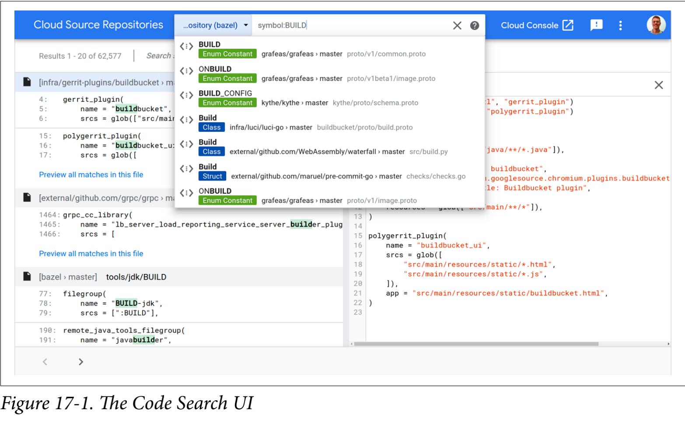
When viewing a single file, most tokens are clickable to let the user quickly navigate to related information. For example, a function call will link to its function definition, an imported filename to the actual source file, or a bug ID in a comment to the corresponding bug report. This is powered by compiler-based indexing tools like Kythe. Clicking the symbol name opens a panel with all the places the symbol is used. Similarly, hovering over local variables in a function will highlight all occurrences of that variable in the implementation.
查看单个文件时，大多数标记都是可单击的，以便用户快速导航到相关信息。例如，函数调用将链接到其函数定义、导入的文件名到实际源文件，或相应错误报告注释中的错误 ID。这由 Kythe 等基于编译器的索引工具提供支持。单击符号名称会打开一个面板，其中包含使用该符号的所有位置。同样，将鼠标悬停在函数中的局部变量上将突出显示该变量在实现中的所有出现。
Code Search also shows the history of a file, via its integration with Piper (see Chapter 16). This means seeing older versions of the file, which changes have affected it, who wrote them, jumping to them in Critique (see Chapter 19), diffing versions of files, and the classic “blame” view if desired. Even deleted files can be seen from a directory view.
代码搜索还可以显示文件的历史记录，通过与 Piper 的集成（参见第 16 章）。这意味着查看文件的旧版本，哪些更改影响了它，谁编写了它们，在 Critique 中跳转到它们（参见第 19 章），区分文件的版本，以及经典的“blame”视图（如果需要）。甚至可以从目录视图中看到已删除的文件。
How Do Googlers Use Code Search? Google 员工如何使用代码搜索？
Although similar functionality is available in other tools, Googlers still make heavy use of the Code Search UI for searching and file viewing and ultimately for understanding code.4 The tasks engineers try to complete with Code Search can be thought of answering questions about code, and recurring intents become visible.5
尽管其他工具中也有类似的功能，但 Google 员工仍然大量使用代码搜索 UI 进行搜索和文件查看，并最终用于理解代码。工程师尝试使用代码搜索完成任务被认为是回答有关代码的问题，以及重复的意图变得可见。
4There is an interesting virtuous cycle that a ubiquitous code browser encourages: writing code that is easy to browse. This can mean things like not nesting hierarchies too deep, which requires many clicks to move from call sites to actual implementation, and using named types rather than generic things like strings or integers, because it’s then easy to find all usages.
4 无处不在的代码浏览器鼓励一个有趣的良性循环：编写易于浏览的代码。这可能意味着不要把层次嵌套得太深，因为这需要多次点击才能从调用站点转移到实际的实现；使用命名的类型而不是像字符串或整数这样的通用类型，因为这样就很容易找到所有的用法。
5Sadowski, Caitlin, Kathryn T. Stolee, and Sebastian Elbaum. “How Developers Search for Code: A Case Study” In Proceedings of the 2015 10th Joint Meeting on Foundations of Software Engineering (ESEC/FSE 2015).
https://doi.org/10.1145/2786805.2786855.5 Sadowski, Caitlin, Kathryn T. Stolee, and Sebastian Elbaum. "开发者如何搜索代码。A Case Study" In Proceedings of the 2015 10th Joint Meeting on Foundations of Software Engineering (ESEC/FSE 2015).
https://doi.org/10.1145/2786805.2786855.
Where?
哪里？
About 16% of Code Searches try to answer the question of where a specific piece of information exists in the codebase; for example, a function definition or configuration, all usages of an API, or just where a specific file is in the repository. These questions are very targeted and can be very precisely answered with either search queries or by following semantic links, like “jump to symbol definition.” Such questions often arise during larger tasks like refactorings/cleanups or when collaborating with other engineers on a project. Therefore, it is essential that these small knowledge gaps are addressed efficiently.
大约 16% 的代码搜索试图解答特定信息在代码库中的位置的问题；例如，函数定义或配置、API 的所有用法，或者特定文件在存储库中的位置。这些问题非常有针对性，可以通过搜索查询或遵循语义链接（例如“跳转到符号定义”）来非常精确地回答。此类问题经常出现在重构/清理等大型任务中，或者在与其他工程师合作进行项目时。因此，有效解决这些小的知识差距至关重要。
Code Search provides two ways of helping: ranking the results, and a rich query language. Ranking addresses the common cases, and searches can be made very specific (e.g., restricting code paths, excluding languages, only considering functions) to deal with rarer cases.
代码搜索提供了两种帮助方式：对结果进行排行，以及丰富的查询语言。排行解决了常见问题，并且可以进行非常具体的搜索（例如，限制代码路径，排除语言，仅考虑功能）以处理罕见情况。
The UI makes it easy to share a Code Search result with colleagues. So, for code reviews, you can simply include the link—for example, “Have you considered using this specialized hash map: cool_hash.h? This is also very useful for documentation, in bug reports, and in postmortems and is the canonical way of referring to code within Google. Even older versions of the code can be referenced, so links can stay valid as the codebase evolves.
用户界面让同事之间共享代码搜索结果变得容易。因此，对于代码审查，你可以简单地包含链接——例如，“你是否考虑过使用这个专门的哈希映射：cool_hash.h？这对于文档、错误报告和事后分析也非常有用，并且是在 Google 中引用代码的规范方式。甚至可以引用旧版本的代码，因此链接可以随着代码库的发展而保持有效。
What? 什么？
Roughly one quarter of Code Searches are classic file browsing, to answer the question of what a specific part of the codebase is doing. These kinds of tasks are usually more exploratory, rather than locating a specific result. This is using Code Search to read the source, to better understand code before making a change, or to be able to understand someone else’s change.
大约四分之一的代码搜索是典型的文件浏览，回答代码特定部分在做什么的问题。这些类型的任务通常更具探索性，而不是定位特定的结果。使用代码搜索来阅读源代码，以便在进行更改之前更好地理解代码，或者能够理解其他人的更改。
To ease these kinds of tasks, Code Search introduced browsing via call hierarchies and quick navigation between related files (e.g., between header, implementation, test, and build files). This is about understanding code by easily answering each of the many questions a developer has when looking at it.
为了简化这些类型的任务，代码搜索引入了调用层次结构浏览和相关文件之间的快速导航（例如，在标题、实现、测试和构建文件之间）。通过回答开发人员在查看代码时遇到的许多问题来理解代码。
How? 如何做？
The most frequent use case—about one third of Code Searches—are about seeing examples of how others have done something. Typically, a developer has already found a specific API (e.g., how to read a file from remote storage) and wants to see how the API should be applied to a particular problem (e.g., how to set up the remote connection robustly and handle certain types of errors). Code Search is also used to find the proper library for specific problems in the first place (e.g., how to compute a fingerprint for integer values efficiently) and then pick the most appropriate implementation. For these kinds of tasks, a combination of searches and cross-reference browsing are typical.
最常见的用例—大约三分之一的代码搜索是关于查看其他人如何做某事的示例。通常，开发人员已经找到了特定的 API（例如，如何从远程存储中读取文件）并希望了解如何将 API 应用于特定问题（例如，如何稳健地建立远程连接并处理某些问题）。代码搜索还用于首先为特定问题找到合适的库（例如，如何有效地计算整数值的指纹），然后选择最合适的实现。对于这些类型的任务，搜索和交叉引用浏览的组合是典型的。
Why？为什么？
Related to what code is doing, there are more targeted queries around why code is behaving differently than expected. About 16% of Code Searches try to answer the question of why a certain piece of code was added, or why it behaves in a certain way. Such questions often arise during debugging; for example, why does an error occur under these particular circumstances?
与代码在做什么有关，关于为什么代码的行为与预期不同，有更多有针对性的查询。大约 16% 的代码搜索试图回答为什么要添加某段代码，或者为什么它以某种方式运行的问题。调试过程中经常会出现这样的问题；例如，为什么在这些特定情况下会发生错误？
An important capability here is being able to search and explore the exact state of the codebase at a particular point in time. When debugging a production issue, this can mean working with a state of the codebase that is weeks or months old, while debugging test failures for new code usually means working with changes that are only minutes old. Both are possible with Code Search.
这里的一个重要功能是能够在特定时间点搜索和探索代码库的确切状态。在调试生产问题时，这可能意味着使用几周或几个月前的代码库状态，而调试新代码的测试失败通常意味着使用仅几分钟前的更改。两者都可以通过代码搜索实现。
Who and When? 谁？什么时候？
About 8% of Code Searches try to answer questions around who or when someone introduced a certain piece of code, interacting with the version control system. For example, it’s possible to see when a particular line was introduced (like Git’s “blame”) and jump to the relevant code review. This history panel can also be very useful in finding the best person to ask about the code, or to review a change to it.6
大约 8% 的代码搜索试图回答有关谁或何时引入某段代码的问题，并与版本控制系统进行交互。例如，可以查看何时引入了特定行（如 Git 的“blame”）并跳转到相关的代码审查。这个历史面板对于寻找最好的人来询问代码或审查对它的更改也非常有用。
6That said, given the rate of commits for machine-generated changes, naive “blame” tracking has less value than it does in more change-averse ecosystems.
6也就是说，考虑到机器生成的更改的提交率，天真的“指责”跟踪比在更厌恶更改的生态系统中的价值要小。
Why a Separate Web Tool? 为什么要使用单独的 Web 工具？
Outside Google, most of the aforementioned investigations are done within a local IDE. So, why yet another tool?
在 Google 之外，上述大部分实现都是在本地IDE。那么，为什么还需要有另一个工具呢？
Scale 规模
The first answer is that the Google codebase is so large that a local copy of the full codebase—a prerequisite for most IDEs—simply doesn’t fit on a single machine. Even before this fundamental barrier is hit, there is a cost to building local search and cross-reference indices for each developer, a cost often paid at IDE startup, slowing developer velocity. Or, without an index, one-off searches (e.g., with grep) can become painfully slow. A centralized search index means doing this work once, upfront, and means investments in the process benefit everyone. For example, the Code Search index is incrementally updated with every submitted change, enabling index construction with linear cost.7
第一个答案是 Google 代码库规模太大，以至于完整代码库的本地副本（大多数 IDE 的先决条件）根本不适合单台机器。即使在这个基本障碍之前，为每个开发人员构建本地搜索和交叉引用索引也是有成本的，这通常在 IDE 启动时降低了开发人员的效率。如果没有索引，一次性搜索（例如，使用 grep）可能会变得非常缓慢。集中式搜索索引意味着一次性完成这项工作，并且意味着对流程的投资使每个人都受益。例如，代码搜索索引会随着每次提交的更改而增量更新，从而能够以线性成本构建索引。
In normal web search, fast-changing current events are mixed with more slowly changing items, such as stable Wikipedia pages. The same technique can be extended to searching code, making indexing incremental, which reduces its cost and allows changes to the codebase to be visible to everyone instantly. When a code change is submitted, only the actual files touched need to be reindexed, which allows parallel and independent updates to the global index.
在正常的网络搜索中，快速变化的当前事件与变化较慢的项目混合在一起，例如稳定的维基百科页面。同样的技术可以扩展到搜索代码，使索引增加，从而降低成本，并允许对代码库的更改立即对所有人可见。提交代码更改时，只需要对实际触及的文件进行重新索引，这允许对全局索引进行并行和独立的更新。
Unfortunately, the cross-reference index cannot be instantly updated in the same way. Incrementality isn’t possible for it, as any code change can potentially influence the entire codebase, and in practice often does affect thousands of files. Many (nearly all of Google’s) full binaries need to be built8 (or at least analyzed) to determine the full semantic structure. It uses a ton of compute resources to produce the index daily (the current frequency). The discrepancy between the instant search index and the daily cross-reference index is a source of rare but recurring issues for users.
不幸的是，交叉引用索引不能以相同的方式立即更新。增量是不可能的，因为任何代码更改都可能影响整个代码库，实际上经常会影响数千个文件。需要构建（或至少分析）许多（几乎所有 Google 的）完整二进制文件以确定完整的语义结构。它每天使用大量计算资源（当前频率）生成索引。即时搜索索引和每日交叉引用索引之间的差异是用户罕见但反复出现的问题的根源。
7For comparison, the model of “every developer has their own IDE on their own workspace do the indexing calculation” scales roughly quadratically: developers produce a roughly constant amount of code per unit time, so the codebase scales linearly (even with a fixed number of developers). A linear number of IDEs do linearly more work each time—this is not a recipe for good scaling.
7 相比之下，“每个开发人员在自己的IDE中有工作空间，并进行索引计算”的模型大致按二次方进行扩展：开发人员每单位时间生成的代码量大致恒定，因此代码库可以线性扩展（即使有固定数量的开发人员）。线性数量的IDE每次都会做线性更多的工作，但这并不是实现良好扩展的秘诀。
8Kythe instruments the build workflow to extract semantic nodes and edges from source code. This extraction process collects partial cross-reference graphs for each individual build rule. In a subsequent phase, these partial graphs are merged into one global graph and its representation is optimized for the most common queries (go-to-definition, find all usages, fetch all decorations for a file). Each phase—extraction and post processing—is roughly as expensive as a full build; for example, in case of Chromium, the construction of the Kythe index is done in about six hours in a distributed setup and therefore too costly to be constructed by every developer on their own workstation. This computational cost is the why the Kythe index is computed only once per day.
8 Kyth使用构建工作流从源代码中提取语义节点和边缘。这个提取过程为每个单独的生成规则收集部分交叉引用图。在随后的阶段中，这些局部图合并为一个全局图，并针对最常见的查询对其表示进行优化（转到定义，查找所有用法，获取文件的所有修饰）。每个阶段的提取和后处理成本大致与完整构建一样高；例如，对于Chromium，Kythe索引的构建在分布式设置中大约需要六个小时，因此每个开发人员都无法在自己的工作站上构建，成本太高。这就是为什么Kythe指数每天只计算一次的原因。
Zero Setup Global Code View 零设置全局代码视图
Being able to instantly and effectively browse the entire codebase means that it’s very easy to find relevant libraries to reuse and good examples to copy. For IDEs that construct indices at startup, there is a pressure to have a small project or visible scope to reduce this time and avoid flooding tools like autocomplete with noise. With the Code Search web UI, there is no setup required (e.g., project descriptions, build environment), so it’s also very easy and fast to learn about code, wherever it occurs, which improves developer efficiency. There’s also no danger of missing code dependencies; for example, when updating an API, reducing merge and library versioning issues.
能够立即有效地浏览整个代码库意味着很容易找到相关的库来重用和好的例子来复制。对于在启动时构建索引的 IDE，有一个挑战是，要有一个小项目或可见范围来减少启动时间，并避免像自动完成这样的工具泛滥而产生噪音。使用代码搜索 Web UI，无需设置（例如，项目描述、构建环境），因此无论代码出现在何处，都可以非常轻松快速地了解代码，从而提高开发人员效率。也没有丢失代码依赖的危险；例如，在更新 API 时，减少合并和库版本控制问题。
Specialization 专业化
Perhaps surprisingly, one advantage of Code Search is that it is not an IDE. This means that the user experience (UX) can be optimized for browsing and understanding code, rather than editing it, which is usually the bulk of an IDE (e.g., keyboard shortcuts, menus, mouse clicks, and even screen space). For example, because there isn’t an editor’s text cursor, every mouse click on a symbol can be made meaningful(e.g., show all usages or jump to definition), rather than as a way to move the cursor. This advantage is so large that it’s extremely common for developers to have multiple Code Search tabs open at the same time as their editor.
也许令人惊讶的是，代码搜索的一个优点是它不是 IDE。这意味着用户体验 (UX) 可以针对浏览和理解代码进行优化，而不是像 IDE 的大部分内容那样编辑它（例如，键盘快捷键、菜单、鼠标点击，甚至屏幕空间）。例如，由于没有编辑器的文本光标，每次鼠标单击符号都可以被赋予特定功能（例如，显示所有用法或跳转到定义），而不是作为移动光标的一种方式。这个优势是如此之大，以至于开发人员在使用编辑器的同时打开多个代码搜索选项卡是非常常见的。
Integration with Other Developer Tools 与其他开发者工具集成
Because it is the primary way to view source code, Code Search is the logical platform for exposing information about source code. It frees up tool creators from needing to create a UI for their results and ensures the entire developer audience will know of their work without needing to advertise it. Many analyses run regularly over the entire Google codebase, and their results are usually surfaced in Code Search. For example, for many languages, we can detect “dead” (uncalled) code and mark it as such when the file is browsed.
因为它是查看源代码的主要方式，所以代码搜索是公开源代码信息的逻辑平台。它使工具创建者无需为其结果创建 UI，并确保整个开发人员无需宣传即可了解他们的工作。许多分析会定期在整个 Google 代码库中运行，它们的结果通常会出现在代码搜索中。例如，对于许多语言，我们可以检测“死”（未调用）代码，并在浏览文件时将其标记为死代码。
In the other direction, the Code Search link to a source file is considered its canonical “location.” This is useful for many developer tools (see Figure 17-2). For example, log file lines typically contain the filename and line number of the logging statement. The production log viewer uses a Code Search link to connect the log statement back to the producing code. Depending on the available information, this can be a direct link to a file at a specific revision, or a basic filename search with the corresponding line number. If there is only one matching file, it is opened at the corresponding line number. Otherwise, snippets of the desired line in each of the matching files are rendered.
另一方面，指向源文件的代码搜索链接被认为是其规范的“位置”。这对许多开发工具很有用（见图 17-2）。例如，日志文件行通常包含日志记录语句的文件名和行号。生产日志查看器使用代码搜索链接将日志连接回生产代码。根据可用信息，这可以是指向特定修订文件的直接链接，也可以是具有相应行号的基本文件名搜索。如果只有一个匹配文件，则在相应的行号处打开。否则，将呈现每个匹配文件中所需行的片段。
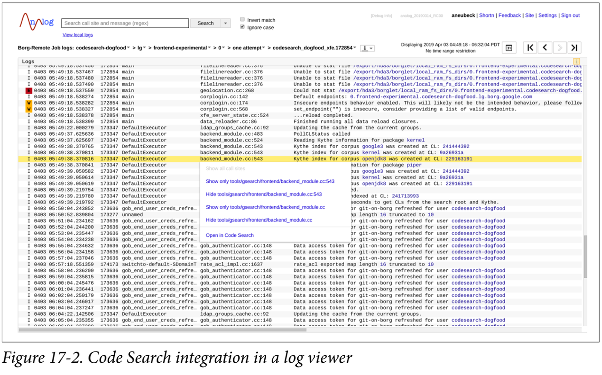
Similarly, stack frames are linked back to source code whether they are shown within a crash reporting tool or in log output, as shown in Figure 17-3. Depending on the programming language, the link will utilize a filename or symbol search. Because the snapshot of the repository at which the crashing binary was built is known, the search can actually be restricted to exactly this version. That way, links remain valid for a long time period, even if the corresponding code is later refactored or deleted.
类似地，堆栈帧被链接回源代码，无论它们是显示在崩溃报告工具中还是显示在日志输出中，如图 17-3 所示。根据编程语言，链接将使用文件名或符号搜索。因为构建崩溃二进制文件的存储库的快照是已知的，所以实际上可以将搜索限制在这个版本。这样，即使相应的代码后来被重构或删除，链接也会在很长一段时间内保持有效。
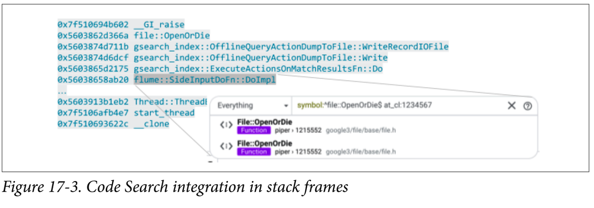
Compilation errors and tests also typically refer back to a code location (e.g., test X in file at line). These can be linkified even for unsubmitted code given that most development happens in specific cloudvisible workspaces that are accessible and searchable by Code Search.
编译错误和测试通常还参考代码位置（例如，测试 X在文件中行号）。即使对于未提交的代码，这些也可以链接起来，因为大多数开发都发生在特定的云可见工作区中，这些工作区可以通过代码搜索访问和搜索。
Finally, codelabs and other documentation refer to APIs, examples, and implementations. Such links can be search queries referencing a specific class or function, which remain valid when the file structure changes. For code snippets, the most recent implementation at head can easily be embedded into a documentation page, as demonstrated in Figure 17-4, without the need to pollute the source file with additional documentation markers.
最后，代码实验室和其他文档是指 API、示例和实现。此类链接可以是引用特定类或函数的搜索查询，当文件结构更改时它们仍然有效。对于代码片段，最新的实现版本可以很容易地嵌入到文档页面中，如图 17-4 所示，而无需使用额外的文档标记污染源文件。
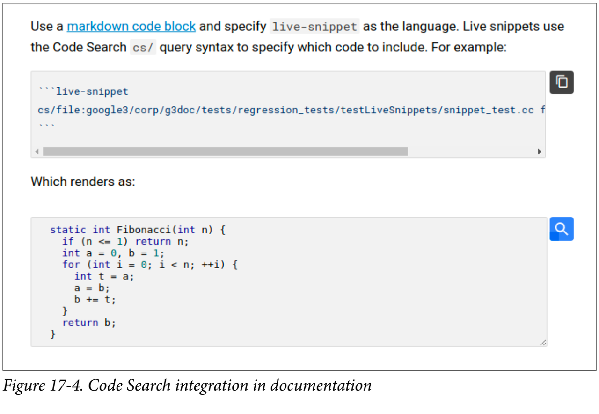
API Exposure API 暴露
Code Search exposes its search, cross-reference, and syntax highlighting APIs to tools, so tool developers can bring those capabilities into their tools without needing to reimplement them. Further, plug-ins have been written to provide search and cross-references to editors and IDEs such as vim, emacs, and IntelliJ. These plugins restore some of the power lost due to being unable to locally index the codebase, and give back some developer productivity.
代码搜索将其搜索、交叉引用和语法高亮 API 公开给工具，因此工具开发人员可以将这些功能带入他们的工具中，而无需重新实现它们。此外，还编写了插件来提供对编辑器和 IDE（例如 vim、emacs 和 IntelliJ）的搜索和交叉引用。这些插件弥补了由于无法在本地索引代码库而损失的一些功能，并提升了一些开发人员的生产力。
Impact of Scale on Design 规模对设计的影响
In the previous section, we looked at various aspects of the Code Search UI and why it’s worthwhile having a separate tool for browsing code. In the following sections, we look a bit behind the scenes of the implementation. We first discuss the primary challenge—scaling—and then some of the ways the large scale complicates making a good product for searching and browsing code. After that, we detail how we addressed some of those challenges, and what trade-offs were made when building Code Search.
在上一节中，我们研究了代码搜索 UI 的各个方面，以及为什么需要拥有一个单独的工具来浏览代码。在接下来的部分中，我们会稍微了解一下代码搜索实现的幕后情况。我们首先讨论了主要挑战——扩展——然后讨论了几种大规模复杂化构建搜索和浏览代码好产品的方式。之后，我们详细介绍了我们如何应对其中的一些挑战，以及在构建代码搜索时做出了哪些权衡。
The biggest9 scaling challenge for searching code is the corpus size. For a small repository of a couple megabytes, a brute-force search with grep search will do. When hundreds of megabytes need to be searched, a simple local index can speed up search by an order of magnitude or more. When gigabytes or terabytes of source code need to be searched, a cloud-hosted solution with multiple machines can keep search times reasonable. The utility of a central solution increases with the number of developers using it and the size of the code space.
搜索代码的最大挑战是语料库大小。对于几兆字节的小型存储库，使用 grep 进行的蛮力搜索。当需要搜索数百兆字节时，一个简单的本地索引可以将搜索速度提高一个数量级或更多。当需要搜索千兆字节或千兆字节的源代码时，具有多台机器的云托管解决方案可以使搜索时间保持合理。中央解决方案的实用性随着使用它的开发人员的数量和代码空间的大小而增加。
9Because queries are independent, more users can be addressed by having more servers.
9 因为查询是独立的，所以可以通过拥有更多的服务器来解决更多的用户。
Search Query Latency 搜索查询延迟
Although we take as a given that a fast and responsive UI is better for the user, low latency doesn’t come for free. To justify the effort, one can weigh it against the saved engineering time across all users. Within Google, we process much more than one million search queries from developers within Code Search per day. For one million queries, an increase of just one second per search request corresponds to about 35 idle full-time engineers every day. In contrast, the search backend can be built and maintained with roughly a tenth of these engineers. This means that with about 100,000 queries per day (corresponding to less than 5,000 developers), just the one-second latency argument is something of a break-even point.
尽管我们认为快速响应的 UI 对用户来说更好，但低延迟并不是免费的。为了证明这一努力的合理性，可以将其与所有用户节省的工程时间进行权衡。在 Google 内部，我们每天在代码搜索中处理超过一百万个来自开发人员的搜索查询。对于一百万个查询，每个搜索请求仅增加一秒，就相当于每天大约有 35 名空闲的全职工程师。相比之下，搜索后端可以由大约十分之一的工程师来构建和维护。这意味着每天大约有 100,000 次查询（对应于不到 5,000 名开发人员），仅一秒钟的延迟参数就可以达到收支平衡点。
In reality, the productivity loss doesn’t simply increase linearly with latency. A UI is considered responsive if latencies are below 200 ms. But after just one second, the developer’s attention often begins to drift. If another 10 seconds pass, the developer is likely to switch context completely, which is generally recognized to have high productivity costs. The best way to keep a developer in the productive “flow” state is by targeting sub–200 ms end-to-end latency for all frequent operations and investing in the corresponding backends.
实际上，生产力损失并不仅仅随着延迟线性增加。如果延迟低于 200 毫秒，则认为 UI 是响应式的。但仅仅一秒钟后，开发人员的注意力往往开始转移。如果再过 10 秒，开发人员很可能会完全切换上下文，这通常被认为具有很高的生产力成本。让开发人员保持高效“流动”状态的最佳方法是将所有频繁操作的端到端延迟设定在 200 毫秒以下，并投资于相应的后端。
A large number of Code Search queries are performed in order to navigate the codebase. Ideally, the “next” file is only a click away (e.g., for included files, or symbol definitions), but for general navigation, instead of using the classical file tree, it can be much faster to simply search for the desired file or symbol, ideally without needing to fully specify it, and suggestions are provided for partial text. This becomes increasingly true as the codebase (and file tree) grows.
执行大量代码搜索查询来导航代码库。理想情况下，“下一个”文件只需单击一下即可（例如，对于包含的文件或符号定义），但对于一般导航，不需要使用经典文件树，简单地搜索所需的文件或符号会快得多，理想情况下不需要完全指定它，会为部分文本提供联想查询。随着代码库（和文件树）的增长，这变得越来越正确。
Normal navigation to a specific file in another folder or project requires several user interactions. With search, just a couple of keystrokes can be sufficient to get to the relevant file. To make search this effective, additional information about the search context (e.g., the currently viewed file) can be provided to the search backend. The context can restrict the search to files of a specific project, or influence ranking by preferring files that are in proximity to other files or directories. In the Code Search UI,10 the user can predefine multiple contexts and quickly switch between them as needed. In editors, the open or edited files are implicitly used as context to prioritize search results in their proximity.
正常导航到另一个文件夹或项目中的特定文件需要多次用户交互。使用搜索，只需几次点击即可访问相关文件。为了使搜索有效，可以将有关搜索上下文的附加信息（例如，当前查看的文件）提供给搜索后端。上下文可以将搜索限制为特定项目的文件，或者通过优先选择靠近其他文件或目录的文件来影响排行。在代码搜索 UI 中， 用户可以预定义多个上下文并根据需要在它们之间快速切换。在编辑器中，打开或编辑的文件被隐式用作上下文，以优先考虑搜索结果的接近程度。
One could consider the power of the search query language (e.g., specifying files,using regular expressions) as another criteria; we discuss this in the trade-offs section a little later in the chapter.
可以将搜索查询语言的功能（例如，指定文件、使用正则表达式）视为另一个标准；我们将在本章稍后的权衡部分讨论这个问题。
10The Code Search UI does also have a classical file tree, so navigating this way is also possible.
10 代码搜索用户界面也有一个经典的文件树，所以用这种方式导航也是可以的。
Index Latency 索引延迟
Most of the time, developers won’t notice when indices are out of date. They only care about a small subset of code, and even for that they generally won’t know whether there is more recent code. However, for the cases in which they wrote or reviewed the corresponding change, being out of sync can cause a lot of confusion. It tends not to matter whether the change was a small fix, a refactoring, or a completely new piece of code—developers simply expect a consistent view, such as they experience in their IDE for a small project.
大多数时候，开发人员不会注意到索引何时过期。他们只关心一小部分代码，即便如此，他们通常也不知道是否有更新的代码。但是，对于他们编写或审查相应更改的情况，不同步可能会导致很多混乱。更改是小修复、重构还是全新的代码片段往往并不重要——开发人员只期望一个一致的视图，例如他们在 IDE 中为一个小项目所体验的。
When writing code, instant indexing of modified code is expected. When new files, functions, or classes are added, not being able to find them is frustrating and breaks the normal workflow for developers used to perfect cross-referencing. Another example are search-and-replace–based refactorings. It is not only more convenient when the removed code immediately disappears from the search results, but it is also essential that subsequent refactorings take the new state into account. When working with a centralized VCS, a developer might need instant indexing for submitted code if the previous change is no longer part of the locally modified file set.
编写代码时，需要对修改后的代码进行即时索引。当添加新文件、函数或类时，找不到它们是令人沮丧的，并且破坏了用于完善交叉引用的开发人员的正常工作流程。另一个例子是基于搜索和替换的重构。删除的代码立即从搜索结果中消失不仅更方便，而且后续重构考虑新状态也很重要。使用集中式 VCS 时，如果先前的更改不再是本地修改文件集的一部分，则开发人员可能需要对提交的代码进行即时索引。
Conversely, sometimes it’s useful to be able to go back in time to a previous snapshot of the code; in other words, a release. During an incident, a discrepancy between the index and the running code can be especially problematic because it can hide real causes or introduce irrelevant distractions. This is a problem for cross-references because the current technology for building an index at Google’s scale simply takes hours, and the complexity means that only one “version” of the index is kept. Although some patching can be done to align new code with an old index, this is still an issue to be solved.
相反，有时能够及时回到之前的代码快照很有用；换句话说，在事件期间释放，索引和运行代码之间的差异可能会是问题，因为它可以隐藏真正的原因或引入不相关的干扰。这对于交叉引用来说是一个问题，因为目前在 Google 规模上构建索引的技术只需要几个小时，而且复杂性意味着只保留一个索引的“版本”。尽管可以进行一些修补以使新代码与旧索引对齐，但这仍然是一个有待解决的问题。
Google’s Implementation
谷歌的实现
Google’s particular implementation of Code Search is tailored to the unique characteristics of its codebase, and the previous section outlined our design constraints for creating a robust and responsive index. The following section outlines how the Code Search team implemented and released its tool to Google developers.
Google 对代码搜索的特殊实现是针对其代码库的独特特征量身定制的，上一节概述了我们创建健壮且响应迅速的索引的设计约束。以下部分概述了代码搜索团队如何实施并向 Google 开发人员发布工具。
Search Index
搜索索引
Google’s codebase is a special challenge for Code Search due to its sheer size. In the early days, a trigram-based approach was taken. Russ Cox subsequently open sourced a simplified version. Currently, Code Search indexes about 1.5 TB of content and processes about 200 queries per second with a median server-side search latency of less than 50 ms and a median indexing latency (time between code commit and visibility in the index) of less than 10 seconds.
由于其庞大的规模，Google 的代码库对代码搜索来说是一个特殊的挑战。在早期，采用了基于三元组的方法。 Russ Cox 随后开源了一个简化版本。目前，代码搜索索引大约有1.5 TB 的内容，每秒处理大约 200 个查询，服务器端搜索延迟的中位数小于 50 毫秒，索引延迟的中位数（代码提交和索引可见性之间的时间）小于 10秒。
Let’s roughly estimate the resource requirements to achieve this performance with a grep-based bruteforce solution. The RE2 library we use for regular expression matching processes about 100 MB/sec for data in RAM. Given a time window of 50 ms, 300,000 cores would be needed to crunch through the 1.5 TB of data. Because in most cases simple substring searches are sufficient, one could replace the regular expression matching with a special substring search that can process about 1 GB/sec11 under certain conditions, reducing the number of cores by 10 times. So far, we have looked at just the resource requirements for processing a single query within 50 ms. If we’re getting 200 requests per second, 10 of those will be simultaneously active in that 50 ms window, bringing us back to 300,000 cores just for substring search.
让我们粗略估计一下使用基于 grep 的蛮力解决方案实现此性能所需的资源。我们用于正则表达式匹配的 RE2 库以大约 100 MB/秒的速度处理 RAM 中的数据。给定 50 毫秒的时间窗口，需要 300,000 个内核来处理 1.5 TB 的数据。因为在大多数情况下，简单的子字符串搜索就足够了，可以将正则表达式匹配替换为特殊的子字符串搜索，在某些条件下可以处理大约 1 GB/秒，从而将核心数减少 10 倍。到目前为止，我们只研究了在 50 毫秒内处理单个查询的资源需求。如果我们每秒收到 200 个请求，其中 10 个将在 50 毫秒的窗口中同时处于活动状态，这使我们回到 300,000 个内核仅用于子字符串搜索。
Although this estimate ignores that the search can stop once a certain number of results are found or that file restrictions can be evaluated much more effectively than content searches, it doesn’t take communication overhead, ranking, or the fan out to tens of thousands of machines into account either. But it shows quite well the scale involved and why Google’s Code Search team continuously invests into improving indexing. Over the years, our index changed from the original trigram-based solution, through a custom suffix array–based solution, to the current sparse ngram solution. This latest solution is more than 500 times more efficient than the brute-force solution while being capable of also answering regular expression searches at blazing speed.
虽然这个估计忽略了一旦找到一定数量的结果，搜索就会停止，或者文件限制可以比内容搜索更有效地评估，不需要考虑通信开销、排名或扩展到数万台机器。它很好地展示了所涉及的巨大规模以及为什么 Google 的代码搜索团队不断投资于改进索引。多年来，我们的索引从最初的基于 trigram 的解决方案，通过基于自定义后缀数组的解决方案，变为当前的稀疏 ngram 解决方案。这个最新的解决方案比蛮力解决方案的效率高出 500 多倍，同时还能够以极快的速度响应正则表达式搜索。
One reason we moved from a suffix array–based solution to a token-based n-gram solution was to take advantage of Google’s primary indexing and search stack. With a suffix array–based solution, building and distributing the custom indices becomes a challenge in and of itself. By utilizing “standard” technology, we benefit from all the advances in reverse index construction, encoding, and serving made by the core search team. Instant indexing is another feature that exists in standard search stacks, and by itself is a big challenge when solving it at scale.
我们从基于后缀数组的解决方案转向基于标记的 n-gram 解决方案的一个原因是利用 Google 的主要索引和搜索堆栈。使用基于后缀数组的解决方案，构建和分发自定义索引本身就是一项挑战。通过利用“标准”技术，我们受益于核心搜索团队在反向索引构建、编码和服务方面的进步。即时索引是标准搜索堆栈中存在的另一个功能，在大规模解决它时，它本身就是一个巨大的挑战。
Relying on standard technology is a trade-off between implementation simplicity and performance. Even though Google’s Code Search implementation is based on standard reverse indices, the actual retrieval, matching, and scoring are highly customized and optimized. Some of the more advanced Code Search features wouldn’t be possible otherwise. To index the history of file revisions, we came up with a custom compression scheme in which indexing the full history increased the resource consumption by a factor of just 2.5.
依赖标准技术是实现简单性和性能之间的权衡。尽管 Google 的代码搜索实现是基于标准的反向索引，但实际的检索、匹配和评分都是高度定制和优化的。否则，一些更高级的代码搜索功能将无法实现。为了索引文件修订的历史，我们提出了一个自定义压缩方案，在该方案中，索引完整历史将资源消耗增加了 2.5 倍。
In the early days, Code Search served all data from memory. With the growing index size, we moved the inverted index to flash. Although flash storage is at least an order of magnitude cheaper than memory, its access latency is at least two orders of magnitude higher. So, indices that work well in memory might not be suitable when served from flash. For instance, the original trigram index requires fetching not only a large number of reverse indices from flash, but also quite large ones. With n-gram schemes, both the number of inverse indices and their size can be reduced at the expense of a larger index.
在早期时候，代码搜索从内存中提供所有数据。随着索引大小的增加，我们将倒排索引移至闪存。尽管闪存存储至少比内存便宜一个数量级，但它的访问延迟至少要高两个数量级。因此，在内存中运行良好的索引可能不适合从闪存提供服务。例如，原始的 trigram 索引不仅需要从闪存中获取大量的反向索引，而且还需要相当大的索引。使用 n-gram 方案，可以以更大的索引为代价来减少反向索引的数量及其大小。
To support local workspaces (which have a small delta from the global repository), we have multiple machines doing simple brute-force searches. The workspace data is loaded on the first request and then kept in sync by listening for file changes. When we run out of memory, we remove the least recent workspace from the machines. The unchanged documents are searched with our history index. Therefore, the search is implicitly restricted to the repository state to which the workspace is synced.
为了支持本地工作空间（与全局存储库有一个小的增量），我们有多台机器进行简单的暴力搜索。工作区数据在第一次请求时加载，然后通过侦听文件更改来保持同步。当内存不足时，我们会从机器中删除最近少用的工作区。使用我们的历史索引搜索未更改的文档。因此，搜索被隐式限制为工作空间同步到的存储库状态。
11See https://blog.scalyr.com/2014/05/searching-20-gbsec-systems-engineering-before-algorithms and http://volnitsky.com/project/str_search./ 11 查阅blog.scalyr.com/2014/05/searching-20-gbsec-systems-engineering-before-algorithms 和tp://volnitsky.com/project/str_search.
Ranking
排行
For a very small codebase, ranking doesn’t provide much benefit, because there aren’t many results anyway. But the larger the codebase becomes, the more results will be found and the more important ranking becomes. In Google’s codebase, any short substring will occur thousands, if not millions, of times. Without ranking, the user either must check all of those results in order to find the correct one, or must refine the query12 er until the result set is reduced to just a handful of files. Both options waste the developer’s time.
对于非常小的代码库，排行并没有带来太多好处，因为无论如何也没有很多结果。但是代码库越大，找到的结果就越多，排行也就越重要。在 Google 的代码库中，任何短子字符串都会出现数千次，甚至数百万次。如果没有排行，用户要么必须检查所有这些结果才能找到正确的结果，要么必须进一步细化查询，直到结果集减少到几个文件。这两种选择都浪费了开发人员的时间。
Ranking typically starts with a scoring function, which maps a set of features of each file (“signals”) to some number: the higher the score, the better the result. The goal of the search is then to find the top N results as efficiently as possible. Typically, one distinguishes between two types of signals: those that depend only on the document (“query independent”) and those that depend on the search query and how it matches the document (“query dependent”). The filename length or the programming language of a file would be examples of query independent signals, whereas whether a match is a function definition or a string literal is a query dependent signal.
排行通常从评分函数开始，它将每个文件的一组特征（“信号”）映射到某个数字：分数越高，结果越好。搜索的目标是尽可能高效地找到前 N 个结果。通常，人们区分两种类型的信号：仅依赖于文档的信号（“查询无关”）和依赖于搜索查询以及它如何匹配文档的信号（“查询依赖”）。文件名长度或文件的编程语言将是查询独立信号的示例，而匹配是函数定义还是字符串文字是查询相关信号。
12ontrast to web search, adding more characters to a Code Search query always reduces the result set (apart rom a few rare exceptions via regular expression terms).
12 与网络搜索相比，在代码搜索查询中添加更多的字符总是会减少结果集（除了少数通过正则表达式术语的罕见例外）。
Query independent signals 查询独立信号
Some of the most important query independent signals are the number of file views and the amount of references to a file. File views are important because they indicate which files developers consider important and are therefore more likely to want to find. For instance, utility functions in base libraries have a high view count. It doesn’t matter whether the library is already stable and isn’t changed anymore or whether the library is being actively developed. The biggest downside of this signal is the feedback loop it creates. By scoring frequently viewed documents higher, the chance increases that developers will look at them and decreases the chance of other documents to make it into the top N. This problem is known as exploitation versus exploration, for which various solutions exist (e.g., advanced A/B search experiments or curation of training data). In practice, it doesn’t seem harmful to somewhat over-show highscoring items: they are simply ignored when irrelevant and taken if a generic example is needed. However, it is a problem for new files, which don’t yet have enough information for a good signal.13
一些最重要的独立于查询的信号是文件视图的数量和对文件的引用量。文件视图很重要，因为它们表明开发人员认为哪些文件很重要，因此更有可能想要找到。例如，基础库中的实用程序函数具有很高的查看次数。库是否已经稳定并且不再更改或者库是否正在积极开发都无关紧要。该信号的最大缺点是它创建的反馈回路。通过对经常查看的文档进行更高的评分，开发人员查看它们的机会增加，并降低了其他文档进入前 N 的机会。这个问题被称为利用与探索，存在各种解决方案（例如，高级 A /B 搜索实验或训练数据管理）。在实践中，过度展示高分项目似乎并没有什么害处：它们在不相关时被忽略，如果需要通用示例则采用。但是，对于新文件来说，这是一个问题，它们还没有足够的信息来获得良好的信号。
We also use the number of references to a file, which parallels the original page rank algorithm, by replacing web links as references with the various kinds of “include/import” statements present in most languages. We can extend the concept up to build dependencies (library/module level references) and down to functions and classes. This global relevance is often referred to as the document’s “priority.”
我们还使用文件的引用数量，这与原始页面排行算法相似，通过将 Web 链接替换为大多数语言中存在的各种“包含/导入”语句的引用。我们可以将概念向上扩展以构建依赖项（库/模块级引用）并向下扩展至函数和类。这种全局相关性通常被称为文档的“优先级”。
When using references for ranking, one must be aware of two challenges. First, you must be able to extract reference information reliably. In the early days, Google’s Code Search extracted include/import statements with simple regular expressions and then applied heuristics to convert them into full file paths. With the growing complexity of a codebase, such heuristics became error prone and challenging to maintain. Internally, we replaced this part with correct information from the Kythe graph.
在使用参考进行排行时，必须注意两个挑战。首先，你必须能够可靠地提取参考信息。早期，Google 的代码搜索使用简单的正则表达式提取包含/导入语句，然后应用启发式方法将它们转换为完整的文件路径。随着代码库越来越复杂，这种启发式方法变得容易出错并且难以维护。在内部，我们用 Kythe 图中的正确信息替换了这部分。
Large-scale refactorings, such as open sourcing core libraries, present a second challenge. Such changes don’t happen atomically in a single code update; rather, they need to be rolled out in multiple stages. Typically, indirections are introduced, hiding, for example, the move of files from usages. These kinds of indirections reduce the page rank of moved files and make it more difficult for developers to discover the new location. Additionally, file views usually become lost when files are moved, making the situation even worse. Because such global restructurings of the codebase are comparatively rare (most interfaces move rarely), the simplest solution is to manually boost files during such transition periods. (Or wait until the migration completes and for the natural processes to up-rank the file in its new location.)
大规模重构，例如开源核心库，是第二个挑战。此类更改不会在单个代码更新中自动发生；相反，它们需要分多个阶段推出。通常，引入间接方式，例如隐藏文件的使用移动。这些类型间接降低了移动文件的页面排行，并使开发人员更难发现新位置。此外，移动文件时文件视图通常会丢失，从而使情况变得更糟。因为代码库的这种全局重组比较少见（大多数接口很少移动），最简单的解决方案是在这种过渡期间手动提升文件。 （或者等到迁移完成并等待自然过程在其新位置对文件进行升级。）
13This could likely be somewhat corrected by using recency in some form as a signal, perhaps doing something imilar to web search dealing with new pages, but we don’t yet do so.
13 这很可能通过使用某种形式的事件作为信号而得到一定程度的修正，也许可以做一些类似于网络搜索处理新页面的事情，但我们还没有这样做。
Query dependent signals 查询相关信号
Query independent signals can be computed offline, so computational cost isn’t a major concern, although it can be high. For example, for the “page” rank, the signal depends on the whole corpus and requires a MapReduce-like batch processing to calculate. Query dependent signals, which must be calculated for each query, should be cheap to compute. This means that they are restricted to the query and information quickly accessible from the index.
查询独立信号可以离线计算，因此计算成本不是主要问题，尽管它可能很高。例如，对于“页面”排行，信号依赖于整个语料库，需要类似 MapReduce 的批处理来计算。查询相关信号，即使必须为每个查询进行计算，但是计算成本应该很低。这意味着它们仅限于从索引中快速访问的查询和信息。
Unlike web search, we don’t just match on tokens. However, if there are clean token matches (that is, the search term matches with content with some form of breaks,such as whitespace, around it), a further boost is applied and case sensitivity is considered. This means, for example, a search for “Point” will score higher against "Point *p” than against “appointed to the council.”
与网络搜索不同，我们不仅仅匹配令牌。但是，如果存在干净的标记匹配（即，搜索词与带有某种形式的中断（例如空格）的内容匹配），则会应用进一步的提升并考虑区分大小写。这意味着，例如，搜索“Point”将针对“Point *p”的得分高于针对“被任命为理事会成员”的得分。
For convenience, a default search matches filename and qualified symbols14 ion to the actual file content. A user can specify the particular kind of match, but they don’t need to. The scoring boosts symbol and filename matches over normal content matches to reflect the inferred intent of the developer. Just as with web searches, developers can add more terms to the search to make queries more specific.It’s very common for a query to be “qualified” with hints about the filename (e.g.,“base” or “myproject”). Scoring leverages this by boosting results where much of the query occurs in the full path of the potential result, putting such results ahead of those that contain only the words in random places in their content.
为方便起见，除了实际文件内容外，默认搜索还匹配文件名和限定符号。用户可以指定特定类型的匹配，但他们不需要。与正常的内容匹配相比，该评分提高了符号和文件名匹配，超过了普通内容匹配。与 Web 搜索一样，开发人员可以在搜索中添加更多术语以使查询更加具体。查询通常被“限定”为包含文件名的提示（例如，“基础”或“我的项目”）。评分通过提升大部分查询出现在潜在结果的完整路径中的结果来利用这一点，将此类结果置于仅包含其内容中随机位置的单词的结果之前。
14In programming languages, a symbol such as a function “Alert” often is defined in a particular scope, such as class (“Monitor”) or namespace (“absl”). The qualified name might then be absl::Monitor::Alert, and this is indable, even if it doesn’t occur in the actual text.
14 在编程语言中，像函数 "Alert "这样的符号经常被定义在一个特定的范围内，例如类（"Monitor"）或命名空间（"absl"）。因此，限定的名称可能是absl::Monitor::Alert，这是可以理解的，即使它没有出现在实际文本中。
Retrieval 恢复
Before a document can be scored, candidates that are likely to match the search query are found. This phase is called retrieval. Because it is not practical to retrieve all documents, but only retrieved documents can be scored, retrieval and scoring must work well together to find the most relevant documents. A typical example is to search for a class name. Depending on the popularity of the class, it can have thousands of usages, but potentially only one definition. If the search was not explicitly restricted to class definitions, retrieval of a fixed number of results might stop before the file with the single definition was reached. Obviously, the problem becomes more challenging as the codebase grows.
在对文档进行评分之前，会找到可能与搜索查询匹配的候选者。这个阶段称为检索。因为检索所有文档并不实用，只能对检索到的文档进行评分，因此检索和评分必须协同工作才能找到最相关的文档。一个典型的例子是搜索类名。根据类的受欢迎程度，它可以有数千种用法，但可能只有一种定义。如果搜索没有明确限制在类定义中，则在到达具有单个定义的文件之前，可能会停止检索固定数量的结果。显然，随着代码库的增长，问题变得更具挑战性。
The main challenge for the retrieval phase is to find the few highly relevant files among the bulk of less interesting ones. One solution that works quite well is called supplemental retrieval. The idea is to rewrite the original query into more specialized ones. In our example, this would mean that a supplemental query would restrict the search to only definitions and filenames and add the newly retrieved documents to the output of the retrieval phase. In a naive implementation of supplemental retrieval, more documents need to be scored, but the additional partial scoring information gained can be used to fully evaluate only the most promising documents from the retrieval phase.
检索阶段的主要挑战是在大量不那么关联的文件中找到少数高度相关的文件。一种效果很好的解决方案称为补充检索。这个方法是将原始查询重写为更专业的查询。在我们的示例中，这意味着补充查询会将搜索限制为仅定义和文件名，并将新检索到的文档添加到检索阶段的输出中。在补充检索的简单实现中，需要对更多文档进行评分，但获得的额外部分评分信息可用于全面评估检索阶段中最有希望的文档。
Result diversity 结果多样性
Another aspect of search is diversity of results, meaning trying to give the best results in multiple categories. A simple example would be to provide both the Java and Python matches for a simple function name, rather than filling the first page of results with one or the other.
搜索的另一个方面是结果的多样性，这意味着试图在多个类别中给出最好的结果。一个简单的例子是为一个简单的函数名提供 Java 和 Python 匹配，而不是用一个或另一个填充结果的第一页。
This is especially important when the intent of the user is not clear. One of the challenges with diversity is that there are many different categories—like functions,classes, filenames, local results, usages, tests, examples, and so on—into which results can be grouped, but that there isn’t a lot of space in the UI to show results for all of them or even all combinations, nor would it always be desirable. Google’s Code Search doesn’t do this as well as web search does, but the drop-down list of suggested results (like the autocompletions of web search) is tweaked to provide a diverse set of top filenames, definitions, and matches in the user’s current workspace.
当用户的意图不明确时，这一点尤其重要。多样性的挑战之一是有许多不同的类别—如函数、类、文件名、本地结果、用法、测试、示例等—结果可以分组，但没有很多UI 中的空间来显示所有结果甚至所有组合的结果，也不总是可取的。 Google 的代码搜索在这方面的表现不如网络搜索，但建议结果的下拉列表（如网络搜索的自动完成）经过调整，可以匹配用户的当前工作区。
Selected Trade-Offs 选择的权衡
Implementing Code Search within a codebase the size of Google’s and keeping it responsive involved making a variety of trade-offs. These are noted in the following section.
在 Google 这么大量级的代码库中实现代码搜索并保持其响应速度需要做出各种权衡。这些将在下一节中注明。
Completeness: Repository at Head 完整性：仓库头部
We’ve seen that a larger codebase has negative consequences for search; for example, slower and more expensive indexing, slower queries, and noisier results. Can these costs be reduced by sacrificing completeness; in other words, leaving some content out of the index? The answer is yes, but with caution. Nontext files (binaries, images, videos, sound, etc.) are usually not meant to be read by humans and are dropped apart from their filename. Because they are huge, this saves a lot of resources. A more borderline case involves generated JavaScript files. Due to obfuscation and the loss of structure, they are pretty much unreadable for humans, so excluding them from the index is usually a good trade-off, reducing indexing resources and noise at the cost of completeness. Empirically, multimegabyte files rarely contain information relevant for developers, so excluding extreme cases is probably the correct choice.
我们已经看到，更大的代码库会对搜索产生负面影响；例如，更慢且更昂贵的索引、更慢的查询和更嘈杂的结果。是否可以通过牺牲完整性来降低这些成本？换句话说，将一些内容排除在索引之外？答案是肯定的，但要谨慎。非文本文件（二进制文件、图像、视频、声音等）通常不适合人类阅读，除了文件名之外，其他内容通常被排除。因为它们很大，所以可以节省大量资源。更边缘的情况涉及生成的 JavaScript 文件。由于混淆和结构丢失，它们对人类来说几乎是不可读的，因此将它们从索引中排除通常是一个很好的权衡，以完整性为代价减少索引资源和噪音。根据经验，数兆字节的文件很少包含与开发人员相关的信息，因此排除极端情况可能是正确的选择。
However, dropping files from the index has one big drawback. For developers to rely on Code Search, they need to be able to trust it. Unfortunately, it is generally impossible to give feedback about incomplete search results for a specific search if the dropped files weren’t indexed in the first place. The resulting confusion and productivity loss for developers is a high price to pay for the saved resources. Even if developers are fully aware of the limitations, if they still need to perform their search, they will do so in an ad hoc and error-prone way. Given these rare but potentially high costs, we choose to err on the side of indexing too much, with quite high limits that are mostly picked to prevent abuse and guarantee system stability rather than to save resources.
但是，从索引中删除文件有一个很大的缺点。对于依赖代码搜索的开发人员，他们需要能够信任它。不幸的是，如果删除的文件一开始没有被索引，通常不可能就特定搜索的不完整搜索结果提供反馈。给开发人员带来的混乱和生产力损失是为节省的资源付出的高昂代价。即使开发人员完全意识到这些限制，如果他们仍然需要执行搜索，他们也会以一种临时且容易出错的方式进行。鉴于这些罕见但潜在的高成本，我们选择在索引过多方面犯错，具有比较高的限制，是为了防止滥用和保证系统稳定性，而不是为了节省资源。
In the other direction, generated files aren’t in the codebase but would often be useful to index. Currently they are not, because indexing them would require integrating the tools and configuration to create them, which would be a massive source of complexity, confusion, and latency.
另一方面，生成的文件不在代码库中，但通常对索引很有用。虽然目前它们不是，是因为索引它们需要依赖集成工具和配置，这将是复杂性、混乱和延迟的巨大来源。
Completeness: All Versus Most-Relevant Results 完整性：所有结果与最相关结果
Normal search sacrifices completeness for speed, essentially gambling that ranking will ensure that the top results will contain all of the desired results. And indeed, for Code Search, ranked search is the more common case in which the user is looking for one particular thing, such as a function definition, potentially among millions of matches. However, sometimes developers want all results; for example, finding all occurrences of a particular symbol for refactoring. Needing all results is common for analysis, tooling, or refactoring, such as a global search and replace. The need to deliver all results is a fundamental difference to web search in which many shortcuts can be taken, such as to only consider highly ranked items.
正常搜索会牺牲完整性来换取速度，本质上是在赌排行会确保靠前的结果包含所有所需的结果。事实上，对于代码搜索，排行搜索是更常见的情况，例如用户正在寻找一个特定的东西，函数定义，可能在数百万个匹配项中。但是，有时开发人员想要所有结果；例如，查找特定符号的所有地方以进行重构。分析、工具或重构（例如全局搜索和替换）通常需要所有结果。提供所有结果的需求是与 Web 搜索之间的根本区别，其中可以采用许多捷径，例如只考虑排行较高的项目。
Being able to deliver all results for very large result sets has high cost, but we felt it was required for tooling, and for developers to trust the results. However, because for most queries only a few results are relevant (either there are only a few matches15 or only a few are interesting), we didn’t want to sacrifice average speed for potential completeness.
能够为非常大的结果集交付所有结果的成本很高，但我们认为这是工具所必需的，并且开发人员需要信任结果。然而，因为对于大多数查询，只有少数结果是相关的（或者只有少数匹配或只有少数是有用的），我们不想为了潜在的完整性而牺牲平均速度。
To achieve both goals with one architecture, we split the codebase into shards with files ordered by their priority. Then, we usually need to consider only the matches to high priority files from each chunk. This is similar to how web search works. However, if requested, Code Search can fetch all results from each chunk, to guarantee finding all results.16 This lets us address both use cases, without typical searches being slowed down by the less frequently used capability of returning large, complete results sets. Results can also then be delivered in alphabetical order, rather than ranked, which is useful for some tools.
为了通过一种架构实现这两个目标，我们将代码库拆分为分片，文件按优先级排行。然后，我们通常只需要考虑每个块中与高优先级文件的匹配。这类似于网络搜索的工作方式。但是，如果需要，代码搜索可以从每个块中获取所有结果，以保证找到所有结果。这让我们能够解决这两个用例，而不会因为不常用的返回大型完整结果集的功能而减慢典型搜索速度。结果也可以按字母顺序而不是排行，这对某些工具很有用。
So, here the trade-off was a more complex implementation and API versus greater capabilities, rather than the more obvious latency versus completeness.
因此，这里权衡的是更复杂的实现和 API 与更强大的功能，而不是更明显的延迟与完整性。
15An analysis of queries showed that about one-third of user searches have fewer than 20 results.
15 对查询的分析表明，大约三分之一的用户搜索结果少于20个。
16In practice, even more happens behind the scenes so that responses don’t become painfully huge and developers don’t bring down the whole system by making searches that match nearly everything (imagine searching for the letter “i” or a single space).
16在实践中，更多的事情发生在幕后，因此响应不会变得异常巨大，开发人员也不会通过搜索几乎所有内容来破坏整个系统（想象一下搜索字母“i”或单个空格）
Completeness: Head Versus Branches Versus All History Versus Workspaces 完整性：Head vs 分支 vs 所有历史 vs 工作区
Related to the dimension of corpus size is the question of which code versions should be indexed: specifically, whether anything more than the current snapshot of code (“head”) should be indexed. System complexity, resource consumption, and overall cost increase drastically if more than a single file revision is indexed. To our knowledge, no IDE indexes anything but the current version of code. When looking at distributed version control systems like Git or Mercurial, a lot of their efficiency comes from the compression of their historical data. But the compactness of these representations becomes lost when constructing reverse indices. Another issue is that it is difficult to efficiently index graph structures, which are the basis for Distributed Version Control Systems.
与语料库大小相关的是应该索引哪些代码版本的问题：具体来说，是否应该索引除当前代码快照（“head”）之外的任何内容。如果索引多个文件修订版，系统复杂性、资源消耗和总体成本会急剧增加。据我们所知，除了当前版本的代码之外，没有任何 IDE 索引任何内容。在查看像 Git 或 Mercurial 这样的分布式版本控制系统时，它们的很多效率都来自对历史数据的压缩。但是在构建反向索引时，这些表示的紧凑性会丢失。另一个问题是很难有效地索引图结构，这是分布式版本控制系统的基础。
Although it is difficult to index multiple versions of a repository, doing so allows the exploration of how code has changed and finding deleted code. Within Google, Code Search indexes the (linear) Piper history. This means that the codebase can be searched at an arbitrary snapshot of the code, for deleted code, or even for code authored by certain people.
尽管索引存储库的多个版本很困难，但这样做可以探索代码如何更改并找到已删除的代码。在 Google 中，代码搜索索引（线性）Piper 历史。这意味着可以在代码的任意快照中搜索代码库，查找已删除的代码，甚至是某些人创作的代码。
One big benefit is that obsolete code can now simply be deleted from the codebase. Before, code was often moved into directories marked as obsolete so that it could still be found later. The full history index also laid the foundation for searching effectively in people’s workspaces (unsubmitted changes), which are synced to a specific snapshot of the codebase. For the future, a historical index opens up the possibility of interesting signals to use when ranking, such as authorship, code activity, and so on. Workspaces are very different from the global repository:
- Each developer can have their own workspaces.
- There are usually a small number of changed files within a workspace.
- The files being worked on are changing frequently.
- A workspace exists only for a relatively short time period.
一个大的优点是现在可以简单地从代码库中删除过时的代码。以前，代码经常被移动到标记为过时的目录中，以便以后仍然可以找到它。完整的历史索引还为在人们的工作空间（未提交的更改）中进行有效搜索奠定了基础，这些工作空间与代码库的特定快照同步。对于未来，历史索引开辟了在排行时使用有效信号的可能性，例如作者身份、代码活动等。工作区与全局存储库有很大不同：
- 每个开发人员都可以拥有自己的工作区。
- 工作空间中通常有少量更改的文件。
- 正在处理的文件经常更改。
- 工作空间仅存在相对较短的时间段。
To provide value, a workspace index must reflect exactly the current state of the workspace.
为了提供价值，工作区索引必须准确反映工作区的当前状态。
Expressiveness: Token Versus Substring Versus Regex 表现力：令牌与子字符串与正则表达式
The effect of scale is greatly influenced by the supported search feature set. Code Search supports regular expression (regex) search, which adds power to the query language, allowing whole groups of terms to be specified or excluded, and they can be used on any text, which is especially helpful for documents and languages for which deeper semantic tools don’t exist.
规模的效果受到支持的搜索特征集的很大影响。代码搜索支持正则表达式 (regex) 搜索，这增加了查询语言的功能，允许指定或排除整组术语，并且它们可以用于任何文本，在不存在更深层次的语义工具的情况下，对于文档和语言特别有用。
Developers are also used to using regular expressions in other tools (e.g., grep) and contexts, so they provide powerful search without adding to a developer’s cognitive load. This power comes at a cost given that creating an index to query them efficiently is challenging. What simpler options exist?
开发人员还习惯于在其他工具（例如 grep）和上下文中使用正则表达式，因此它们提供了强大的搜索功能，而不会增加开发人员的认知负担。鉴于创建索引以有效地查询它们具有挑战性，因此这种能力是有代价的。有哪些更简单的选择？
A token-based index (i.e., words) scales well because it stores only a fraction of the actual source code and is well supported by standard search engines. The downside is that many use cases are tricky or even impossible to realize efficiently with a tokenbased index when dealing with source code, which attaches meaning to many characters typically ignored when tokenizing. For example, searching for “function()” versus “function(x)”, “(x ^ y)”, or “=== myClass” is difficult or impossible in most token-based searches.
基于标记的索引（例如：单词）可以很好地扩展，因为它只存储实际源代码的一小部分，并且得到标准搜索引擎的良好支持。不利的一面是，在处理源代码时，使用基于标记的索引来有效地实现许多用例是棘手的，甚至不可能有效地实现，这为标记化时通常被忽略的许多字符附加了意义。例如，在大多数基于标记的搜索中，搜索“function()”与“function(x)”、“(x ^ y)”或“=== myClass”是困难的或不可能的。
Another problem of tokenization is that tokenization of code identifiers is ill defined. Identifiers can be written in many ways, such as CamelCase, snake_case, or even justmashedtogether without any word separator. Finding an identifier when remembering only some of the words is a challenge for a token-based index.
标记化的另一个问题是代码标识符的标记化定义不明确。标识符可以用多种方式编写，例如 CamelCase、snake_case，甚至只是混合在一起而无需任何单词分隔符。在只记住一些单词时找到一个标识符对于基于标记的索引来说是一个挑战。
Tokenization also typically doesn’t care about the case of letters (“r” versus “R”), and will often blur words; for example, reducing “searching” and “searched” to the same stem token search. This lack of precision is a significant problem when searching code. Finally, tokenization makes it impossible to search on whitespace or other word delimiters (commas, parentheses), which can be very important in code.
标记化通常也不关心字母的大小写（“r”与“R”），并且经常会模糊单词；例如，将“searching”和“searched”简化为相同的词干标记搜索。在搜索代码时，缺乏精确性是一个严重的问题。最后，标记化使搜索空格或其他单词分隔符（逗号、括号）成为不可能，即使这在代码中可能非常重要。
A next step up17 in searching power is full substring search in which any sequence of characters can be searched for. One fairly efficient way to provide this is via a trigram-based index. 18 In its simplest form, the resulting index size is still much smaller than the original source code size. However, the small size comes at the cost of relatively low recall accuracy compared to other substring indices. This means slower queries because the nonmatches need to be filtered out of the result set. This is where a good compromise between index size, search latency, and resource consumption must be found that depends heavily on codebase size, resource availability, and searches per second.
搜索能力的下一步是完整的子字符串搜索，其中可以搜索任何字符序列。提供此功能的一种相当有效的方法是通过基于三元组的索引。在最简单的形式中，生成的索引大小仍然比源代码大小小得多。然而，与其他子字符串索引相比，小尺寸的代价是召回准确率相对较低。这意味着查询速度较慢，因为不匹配项需要从结果集中过滤掉。这是必须在索引大小、搜索延迟和资源消耗之间找到良好折衷的地方，这在很大程度上取决于代码库大小、资源可用性和每秒搜索量。
If a substring index is available, it’s easy to extend it to allow regular expression searches. The basic idea is to convert the regular expression automaton into a set of substring searches. This conversion is straightforward for a trigram index and can be generalized to other substring indices. Because there is no perfect regular expression index, it will always be possible to construct queries that result in a brute-force search. However, given that only a small fraction of user queries are complex regular expressions, in practice, the approximation via substring indices works very well.
如果子字符串索引可用，很容易扩展它以允许正则表达式搜索。基本思想是将正则表达式自动机转换为一组子字符串搜索。这种转换对于三元组索引很简单，并且可以推广到其他子字符串索引。因为没有完美的正则表达式索引，所以总是可以构建导致暴力搜索的查询。然而，鉴于只有一小部分用户查询是复杂的正则表达式，在实践中，通过子字符串索引的近似效果非常好。
17There are other intermediate varieties, such as building a prefix/suffix index, but generally they provide less expressiveness in search queries while still having high complexity and indexing costs.
17 还有其他的类似方式，如建立前缀/后缀索引，但一般来说，它们在搜索查询中提供的表达能力较低，同时仍有较高的复杂性和索引成本。
Russ Cox, “Regular Expression Matching with a Trigram Index or How Google Code Search Worked.”
18 Russ Cox，"用三元索引进行正则表达式匹配或谷歌代码搜索的工作原理"。
Conclusion 结论
Code Search grew from an organic replacement for grep into a central tool boosting developer productivity, leveraging Google’s web search technology along the way. What does this mean for you, though? If you are on a small project that easily fits in your IDE, probably not much. If you are responsible for the productivity of engineers on a larger codebase, there are probably some insights to be gained.
代码搜索从 grep 的有机替代品发展成为提高开发人员生产力的核心工具，并在此过程中利用了 Google 的网络搜索技术。不过，这对你意味着什么？如果你在一个很容易融入你的 IDE 的小项目上，可能不多。如果你负责在更大的代码库上提高工程师的生产力，那么你可能会获得一些见解。
The most important one is perhaps obvious: understanding code is key to developing and maintaining it, and this means that investing in understanding code will yield dividends that might be difficult to measure, but are real. Every feature we added to Code Search was and is used by developers to help them in their daily work (admittedly some more than others). Two of the most important features, Kythe integration (i.e., adding semantic code understanding) and finding working examples, are also the most clearly tied to understanding code (versus, for example, finding it, or seeing how it’s changed). In terms of tool impact, no one uses a tool that they don’t know exists, so it is also important to make developers aware of the available tooling—at Google, it is part of “Noogler” training, the onboarding training for newly hired software engineers.
最重要的一点可能是显而易见的：理解代码是开发和维护代码的关键，这意味着投资在理解代码上将产生可能难以衡量但实实在在的红利。我们添加到代码搜索中的每个功能都被开发人员用来帮助他们完成日常工作（诚然，其中一些功能比其他功能更有用）。两个最重要的功能，Kythe 集成（即添加语义代码理解）和查找工作示例，也与理解代码最明显相关（例如，查找代码或查看代码如何更改）。就工具影响而言，没有人使用他们不知道存在的工具，因此让开发人员了解可用工具也很重要——在谷歌，它是“Noogler”培训的一部分，即新人的入职培训和聘请的软件工程师培训。
For you, this might mean setting up a standard indexing profile for IDEs, sharing knowledge about egrep, running ctags, or setting up some custom indexing tooling, like Code Search. Whatever you do, it will almost certainly be used, and used more, and in different ways than you expected—and your developers will benefit.
对你而言，这可能意味着为 IDE 设置标准索引配置文件、分享有关 egrep 的知识、运行 ctags 或设置一些自定义索引工具，例如代码搜索。无论你做什么，它几乎肯定会被使用，而且使用得更多，而且使用的方式与你预期的不同—你的开发人员将从中受益。
TL;DRs 内容提要
-
Helping your developers understand code can be a big boost to engineering productivity. At Google, the key tool for this is Code Search.
-
Code Search has additional value as a basis for other tools and as a central, standard place that all documentation and developer tools link to.
-
The huge size of the Google codebase made a custom tool—as opposed to, for example, grep or an IDE’s indexing—necessary.
-
As an interactive tool, Code Search must be fast, allowing a “question and answer” workflow. It is expected to have low latency in every respect: search, browsing, and indexing.
-
t will be widely used only if it is trusted, and will be trusted only if it indexes all code, gives all results, and gives the desired results first. However, earlier, less powerful, versions were both useful and used, as long as their limits were understood.
-
帮助你的开发人员理解代码可以大大提高工程生产力。在 Google，这方面的关键工具是代码搜索。
-
作为其他工具的基础以及作为所有文档和开发工具连接到的中心标准位置，代码搜索具有附加价值
-
Google 代码库的庞大规模使得定制工具（例如，与 grep 或 IDE 的索引不同）成为必要。
-
作为一种交互式工具，代码搜索必须快速，允许“问题和回答”的工作流程。预计在各个方面都有低延迟：搜索，浏览和索引。
-
只有当它被信任时才会被广泛使用，并且只有当它索引所有代码、给出所有结果并首先给出期望的结果时才会被信任。但是，只要了解其局限性，较早的、功能较弱的版本既有用又可以使用。
CHAPTER 18 Build Systems and Build Philosophy
第十八章 构建系统，构建理念
Written by Erik Kuefler
Edited by Lisa Carey
If you ask Google engineers what they like most about working at Google (besides the free food and cool products), you might hear something surprising: engineers love the build system.1 Google has spent a tremendous amount of engineering effort over its lifetime in creating its own build system from the ground up, with the goal of ensuring that our engineers are able to quickly and reliably build code. The effort has been so successful that Blaze, the main component of the build system, has been reimplemented several different times by ex-Googlers who have left the company.2 In 2015, Google finally open sourced an implementation of Blaze named Bazel.
如果你问谷歌的工程师，他们最喜欢在谷歌工作的原因（除了免费的食物和黑科技产品），你还会听到一些令人惊讶的事情：工程师们非常喜欢构建系统。谷歌一直在花费了巨大的努力，从零开始创建自己的构建系统，目的是确保工程师们能够快速、可靠地构建代码。这一努力是成功的，构建系统的主要组件Blaze，已经被已离开公司的前谷歌员工重新实现了好几次。2015年，谷歌终于公开了Blaze的一个实现，名为Bazel。
1In an internal survey, 83% of Googlers reported being satisfied with the build system, making it the fourth most satisfying tool of the 19 surveyed. The average tool had a satisfaction rating of 69%.
1 在一项内部调查中，83%的谷歌用户表示对构建系统感到满意，这使其成为19个被调查工具中第四个最令人满意的工具。平均工具的满意度为69%。
2See
https://buck.build/andhttps://www.pantsbuild.org/index.html.2 查阅
https://buck.build/andhttps://www.pantsbuild.org/index.html
Purpose of a Build System 构建系统的目的
Fundamentally, all build systems have a straightforward purpose: they transform the source code written by engineers into executable binaries that can be read by machines. A good build system will generally try to optimize for two important properties:
Fast A developer should be able to type a single command to run the build and get back the resulting binary, often in as little as a few seconds.
Correct Every time any developer runs a build on any machine, they should get the same result (assuming that the source files and other inputs are the same).
从根上说，所有的构建系统都有一个简单的目的：它们将工程师编写的源代码转化为机器可以读取的可执行二进制文件。一个好的构建系统通常会试图优化两个重要的属性：
快 开发人员应该能够输入简单的命令来运行构建并返回生成的二进制文件，而且只需几秒钟 正确 任何开发人员在任何机器上运行构建，他们都应该得到相同的结果（假设源文件和其他输入是相同的）。
Many older build systems attempt to make trade-offs between speed and correctness by taking shortcuts that can lead to inconsistent builds. Bazel’s main objective is to avoid having to choose between speed and correctness, providing a build system structured to ensure that it’s always possible to build code efficiently and consistently.
许多较老的构建系统尝试在速度和正确性之间做出权衡，采取了一些可能导致不一致的构建的捷径。Bazel的主要目标是避免在速度和正确性之间做出选择，提供一个结构化的构建系统，以确保总是可以高效和一致地构建代码。
Build systems aren’t just for humans; they also allow machines to create builds automatically, whether for testing or for releases to production. In fact, the large majority of builds at Google are triggered automatically rather than directly by engineers. Nearly all of our development tools tie into the build system in some way, giving huge amounts of value to everyone working on our codebase. Here’s a small sample of workflows that take advantage of our automated build system:
- Code is automatically built, tested, and pushed to production without any human intervention. Different teams do this at different rates: some teams push weekly, others daily, and others as fast as the system can create and validate new builds. (see Chapter 24).
- Developer changes are automatically tested when they’re sent for code review (see Chapter 19) so that both the author and reviewer can immediately see any build or test issues caused by the change.
- Changes are tested again immediately before merging them into the trunk, making it much more difficult to submit breaking changes.
- Authors of low-level libraries are able to test their changes across the entire codebase, ensuring that their changes are safe across millions of tests and binaries.
- Engineers are able to create large-scale changes (LSCs) that touch tens of thousands of source files at a time (e.g., renaming a common symbol) while still being able to safely submit and test those changes. We discuss LSCs in greater detail in Chapter 22.
构建系统不仅仅是为人类服务的；它们也允许机器自动创建构建，无论是用于测试还是用于发布到生产环境。事实上，谷歌的大部分构建都是自动触发的，而不是由工程师点击触发的。我们几乎所有的开发工具都以某种方式与构建系统相结合，为每个在我们的代码库上工作的人提供了巨大的价值。以下是利用我们的自动构建系统的一小部分工作流示例：
- 代码自动构建、测试并推送到生产环境，无需任何人工干预。不同的团队以不同的频率做这件事：有些团队每周推送一次，有些团队每天推送一次，有些团队则以系统能够创建和验证新构建的速度推送。(见第24章）。
- 开发人员的更改在发送给代码审查时自动进行测试（参见第19章），以便作者和审查人员都可以立即看到更改引起的任何构建或测试问题。。
- 在将修改合并到主干中之前，会立即对其进行测试，这使得提交破坏性修改变得更加困难。
- 基础库的作者能够在整个代码库中测试他们的修改，确保他们的修改在数百万的测试和二进制文件中是安全的。
- 工程师们能够创建大规模的变更（LSCs），同时触及数以万计的源文件（例如，重命名公共符号），同时仍然能够安全地提交和测试这些修改。我们将在第22章中更详细地讨论LSCs。
All of this is possible only because of Google’s investment in its build system. Although Google might be unique in its scale, any organization of any size can realize similar benefits by making proper use of a modern build system. This chapter describes what Google considers to be a “modern build system” and how to use such systems.
所有这些都是由于谷歌对其构建系统的投入才得以实现。尽管谷歌的规模是独一无二的，但任何规模的组织都可以通过正确使用现代构建系统实现类似的好处。本章介绍了Google认为的 "现代构建系统"以及如何使用这些系统。
What Happens Without a Build System? 没有构建系统会怎样？
Build systems allow your development to scale. As we’ll illustrate in the next section, we run into problems of scaling without a proper build environment.
构建系统使你的开发可扩展。正如我们将在下一节说明的那样，我们在没有适当的构建环境的情况下会遇到扩展问题。
But All I Need Is a Compiler! 但我所需要的只是一个编译器!
The need for a build system might not be immediately obvious. After all, most of us probably didn’t use a build system when we were first learning to code—we probably started by invoking tools like gcc or javac directly from the command line, or the equivalent in an integrated development environment (IDE). As long as all of our source code is in the same directory, a command like this works fine:
javac *.java
对构建系统的需求可能不是很明显。毕竟，我们中的大多数人在最初学习编码时可能并没有使用构建系统--我们可能一开始就直接从命令行中调用gcc或javac等工具，或者在集成开发环境（IDE）中调用相应的工具。只要我们所有的源代码都在同一个目录下，这样的命令就能正常工作：
javac *.java
This instructs the Java compiler to take every Java source file in the current directory and turn it into a binary class file. In the simplest case, this is all that we need.
这指示Java编译器把当前目录下的每一个Java源文件都变成一个二进制类文件。在最简单的情况下，这就是我们所需要的。
However, things become more complicated quickly as soon as our code expands. javac is smart enough to look in subdirectories of our current directory to find code that we import. But it has no way of finding code stored in other parts of the filesystem (perhaps a library shared by several of our projects). It also obviously only knows how to build Java code. Large systems often involve different pieces written in a variety of programming languages with webs of dependencies among those pieces, meaning no compiler for a single language can possibly build the entire system.
然而，随着代码的扩展，事情很快就会变得更加复杂。javac非常聪明，可以在我们当前目录的子目录中寻找我们导入的代码。但它没有办法找到存储在文件系统其他地方的代码（也许是我们几个项目共享的库）。显然，它只知道如何构建Java代码。大型系统通常涉及到用各种编程语言编写的不同部分，这些部分之间存在着依赖关系，这意味着没有一个单一语言的编译器可以构建整个系统。
As soon as we end up having to deal with code from multiple languages or multiple compilation units, building code is no longer a one-step process. We now need to think about what our code depends on and build those pieces in the proper order, possibly using a different set of tools for each piece. If we change any of the dependencies, we need to repeat this process to avoid depending on stale binaries. For a codebase of even moderate size, this process quickly becomes tedious and error-prone.
一旦我们不得不处理来自多种语言或多个编译单元的代码，构建代码就不再是一步到位的过程。我们现在需要考虑我们的代码依赖于什么，并以适当的顺序构建这些部分，可能为每个部分使用一套不同的工具。如果我们改变了任何依赖关系，我们需要重复这个过程，以避免依赖过时的二进制文件。对于一个中等规模的代码库来说，这个过程很快就会变得乏味，并且容易出错。
The compiler also doesn’t know anything about how to handle external dependencies, such as third-party JAR files in Java. Often the best we can do without a build system is to download the dependency from the internet, stick it in a lib folder on the hard drive, and configure the compiler to read libraries from that directory. Over time, it’s easy to forget what libraries we put in there, where they came from, and whether they’re still in use. And good luck keeping them up to date as the library maintainers release new versions.
编译器也不知道如何处理外部依赖关系，比如Java中的第三方JAR文件。通常，在没有构建系统的情况下，我们能做的最好的事情就是从网上下载依赖关系，把它放在硬盘上的lib文件夹里，并配置编译器从该目录中读取库。随着时间的推移，我们很容易忘记我们把哪些库放在那里，它们来自哪里，以及它们是否仍在使用。而且，当库的维护者发布新的版本时，要想让它们保持最新的状态，那就得靠运气了。
Shell Scripts to the Rescue? 来自shell脚本的拯救？
Suppose that your hobby project starts out simple enough that you can build it using just a compiler, but you begin running into some of the problems described previously. Maybe you still don’t think you need a real build system and can automate away the tedious parts using some simple shell scripts that take care of building things in the correct order. This helps out for a while, but pretty soon you start running into even more problems:
- It becomes tedious. As your system grows more complex, you begin spending almost as much time working on your build scripts as on real code. Debugging shell scripts is painful, with more and more hacks being layered on top of one another.
- It’s slow. To make sure you weren’t accidentally relying on stale libraries, you have your build script build every dependency in order every time you run it. You think about adding some logic to detect which parts need to be rebuilt, but that sounds awfully complex and error prone for a script. Or you think about specifying which parts need to be rebuilt each time, but then you’re back to square one.
- Good news: it’s time for a release! Better go figure out all the arguments you need to pass to the jar command to make your final build. And remember how to upload it and push it out to the central repository. And build and push the documentation updates, and send out a notification to users. Hmm, maybe this calls for another script...
- Disaster! Your hard drive crashes, and now you need to recreate your entire system. You were smart enough to keep all of your source files in version control, but what about those libraries you downloaded? Can you find them all again and make sure they were the same version as when you first downloaded them? Your scripts probably depended on particular tools being installed in particular places — can you restore that same environment so that the scripts work again? What about all those environment variables you set a long time ago to get the compiler working just right and then forgot about?
- Despite the problems, your project is successful enough that you’re able to begin hiring more engineers. Now you realize that it doesn’t take a disaster for the previous problems to arise—you need to go through the same painful bootstrapping process every time a new developer joins your team. And despite your best efforts, there are still small differences in each person’s system. Frequently, what works on one person’s machine doesn’t work on another’s, and each time it takes a few hours of debugging tool paths or library versions to figure out where the difference is.
- You decide that you need to automate your build system. In theory, this is as simple as getting a new computer and setting it up to run your build script every night using cron. You still need to go through the painful setup process, but now you don’t have the benefit of a human brain being able to detect and resolve minor problems. Now, every morning when you get in, you see that last night’s build failed because yesterday a developer made a change that worked on their system but didn’t work on the automated build system. Each time it’s a simple fix, but it happens so often that you end up spending a lot of time each day discovering and applying these simple fixes.
- Builds become slower and slower as the project grows. One day, while waiting for a build to complete, you gaze mournfully at the idle desktop of your coworker, who is on vacation, and wish there were a way to take advantage of all that wasted computational power.
假设你的业余项目开始时非常简单，你可以只用一个编译器来构建它，但你开始遇到前面描述的一些问题。也许你仍然认为你不需要一个真正的构建系统，可以使用一些简单的shell脚本来自动处理那些繁琐的部分，这些脚本负责按照正确的顺序构建东西。这会有一段时间的帮助，但很快你就会遇到更多的问题：
- 它变得乏味了。随着你的系统越来越复杂，你开始花在构建脚本上的时间几乎和真正的写代码一样多。调试shell脚本是很痛苦的，越来越多的"黑"操作操作被叠加在一起。
- 速度很慢。为了确保你没有意外地依赖过时的库，你让你的构建脚本在每次运行时按顺序构建每个依赖。你可以考虑添加一些逻辑来检测哪些部分需要重建，但这对于一个脚本来说听起来非常复杂而且容易出错。或者你可以考虑每次指定哪些部分需要重建，但是你又回到了原点。
- 好消息是：现在是发布的时候了! 最好弄清楚所有需要传递给jar命令以进行最终构建的参数。并记住如何上传并推送到中央仓库。构建并推送文档更新，并向用户发送通知。嗯，也许这需要另一个脚本......
- 灾难! 硬盘崩溃了，现在需要重新创建整个系统。你很聪明，把所有的源文件都保存在版本控制中，但是你下载的那些库呢？你能重新找到它们，并确保它们和你第一次下载它们时的版本相同吗？你的脚本可能依赖于特定的工具被安装在特定的地方--你能恢复同样的环境，使脚本再次工作吗？那些你很久以前为了让编译器工作得恰到好处而设置的环境变量，后来又忘记了，怎么办？
- 尽管有这些问题，你的项目还是足于成功，以至于你能够开始雇用更多的工程师。现在你意识到，不需要一场灾难就会出现以前的问题--每次有新的开发人员加入你的团队，你都需要经历同样痛苦的启动过程。而且，尽管你做了最大的努力，每个人的系统还是有小的差异。通常，在一个人的机器上起作用的东西在另一个人的机器上不起作用，每次调试工具路径或库版本都需要几个小时才能找出差异所在。
- 你决定需要自动化构建系统。从理论上讲，这就像买一台新的电脑并设置它每天晚上使用cron运行你的构建脚本一样简单。你仍然需要经历痛苦的设置过程，但现在你没有了需要调式检测和解决小问题的好处。现在，每天早上当你进去的时候，你会看到昨晚的构建失败了，因为昨天一个开发者做了一个改变，这个改变在他们的系统上有效，但在自动构建系统上却不起作用。每次都是一个简单的修复，但它经常发生，以至于你每天都要花费大量时间来发现和应用这些简单的修复。
- 随着项目的发展，构建的速度越来越慢。有一天，在等待构建完成时，你哀怨地注视着正在度假的同事的闲置桌面，希望有一种方法可以充分利用以前的计算能力。
You’ve run into a classic problem of scale. For a single developer working on at most a couple hundred lines of code for at most a week or two (which might have been the entire experience thus far of a junior developer who just graduated university), a compiler is all you need. Scripts can maybe take you a little bit farther. But as soon as you need to coordinate across multiple developers and their machines, even a perfect build script isn’t enough because it becomes very difficult to account for the minor differences in those machines. At this point, this simple approach breaks down and it’s time to invest in a real build system.
你遇到了一个典型的规模问题。对于一个开发人员来说，一个编译器就是你所需要的一切，他最多工作几百行代码，最多工作一两周（这可能是一个刚从大学毕业的初级开发人员迄今为止的全部经验）。脚本可能会让你走得更远一些。但是一旦你需要在多个开发人员和他们的机器之间进行协作，即使是一个完美的构建脚本也是不够的，因为很难解释这些机器中的细微差异。在这一点上，这个简单的方法崩溃了，是时候开发一个真正的构建系统了。
Modern Build Systems 现代化的构建系统
Fortunately, all of the problems we started running into have already been solved many times over by existing general-purpose build systems. Fundamentally, they aren’t that different from the aforementioned script-based DIY approach we were working on: they run the same compilers under the hood, and you need to understand those underlying tools to be able to know what the build system is really doing. But these existing systems have gone through many years of development, making them far more robust and flexible than the scripts you might try hacking together yourself.
幸运的是，我们开始遇到的所有问题已经被现有的通用构建系统多次解决。从根本上说，它们与前面提到的基于脚本的DIY方法没有什么不同：它们在后台运行相同的编译器，你需要了解这些底层工具，才能了解构建系统真正在做什么。但是这些现有的系统已经经历了多年的开发，使得它们比你自己尝试破解的脚本更加健壮和灵活。
It’s All About Dependencies 一切都是关于依赖关系
In looking through the previously described problems, one theme repeats over and over: managing your own code is fairly straightforward, but managing its dependencies is much more difficult (and Chapter 21 )is devoted to covering this problem in detail). There are all sorts of dependencies: sometimes there’s a dependency on a task (e.g., “push the documentation before I mark a release as complete”), and sometimes there’s a dependency on an artifact (e.g., “I need to have the latest version of the computer vision library to build my code”). Sometimes, you have internal dependencies on another part of your codebase, and sometimes you have external dependencies on code or data owned by another team (either in your organization or a third party). But in any case, the idea of “I need that before I can have this” is something that recurs repeatedly in the design of build systems, and managing dependencies is perhaps the most fundamental job of a build system.
在回顾之前描述的问题时，有一个主题反复出现：管理你自己的代码是相当简单的，但管理它的依赖关系要困难得多（[第21章]专门详细介绍了这个问题）。有各种各样的依赖关系：有时依赖于任务（例如，“在我将发布标记为完成之前推送文档”），有时依赖于构件（例如，“我需要最新版本的计算机视觉库来构建代码”）。有时，你对你的代码库的另一部分有内部依赖性，有时你对另一个团队（在你的组织中或第三方）拥有的代码或数据有外部依赖性。但无论如何，"在我拥有这个之前，我需要那个"的想法在构建系统的设计中反复出现，而管理依赖性也许是构建系统最基本的工作。
Task-Based Build Systems 基于任务的构建系统
The shell scripts we started developing in the previous section were an example of a primitive task-based build system. In a task-based build system, the fundamental unit of work is the task. Each task is a script of some sort that can execute any sort of logic, and tasks specify other tasks as dependencies that must run before them. Most major build systems in use today, such as Ant, Maven, Gradle, Grunt, and Rake, are task based.
我们在上一节开始开发的shell脚本是一个原始的基于任务的构建系统的示例。在基于任务的构建系统中，工作的基本单位是任务。每个任务都是某种类型的脚本，可以执行任何类型的逻辑，任务将其他任务指定为必须在它们之前运行的依赖项。目前使用的大多数主要构建系统，如Ant、Maven、Gradle、Grunt和Rake，都是基于任务的。
Instead of shell scripts, most modern build systems require engineers to create buildfiles that describe how to perform the build. Take this example from the Ant manual:
大多数现代构建系统要求工程师创建描述如何执行构建的构建文件，而不是shell脚本。以Ant手册中的这个例子为例：
<project name="MyProject" default="dist" basedir=".">
<description>
simple example build file
</description>
<!-- set global properties for this build -->
<property name="src" location="src"/>
<property name="build" location="build"/>
<property name="dist" location="dist"/>
<target name="init">
<!-- Create the time stamp -->
<tstamp/>
<!-- Create the build directory structure used by compile -->
<mkdir dir="${build}"/>
</target>
<target name="compile" depends="init" description="compile the source">
<!-- Compile the Java code from ${src} into ${build} -->
<javac srcdir="${src}" destdir="${build}"/>
</target>
<target name="dist" depends="compile" description="generate the distribution">
<!-- Create the distribution directory -->
<mkdir dir="${dist}/lib"/>
<!-- Put everything in ${build} into the MyProject-${DSTAMP}.jar file -->
<jar jarfile="${dist}/lib/MyProject-${DSTAMP}.jar" basedir="${build}"/>
</target>
<target name="clean" description="clean up">
<!-- Delete the ${build} and ${dist} directory trees -->
<delete dir="${build}"/>
<delete dir="${dist}"/>
</target>
</project>
The buildfile is written in XML and defines some simple metadata about the build along with a list of tasks (the <target> tags in the XML3). Each task executes a list of possible commands defined by Ant, which here include creating and deleting directories, running javac, and creating a JAR file. This set of commands can be extended by user-provided plug-ins to cover any sort of logic. Each task can also define the tasks it depends on via the depends attribute. These dependencies form an acyclic graph (see Figure 18-1).
构建文件是用XML编写的，定义了一些关于构建的简单元数据以及任务列表（XML中的<target>标签）。每个任务都执行Ant定义的一系列可能的命令，其中包括创建和删除目录、运行javac和创建JAR文件。这组命令可以由用户提供的插件扩展，以涵盖任何类型的逻辑。每个任务还可以通过依赖属性定义它所依赖的任务。这些依赖关系形成一个无环图（见图18-1）。
Figure 18-1. An acyclic graph showing dependencies 显示依赖关系的无环图
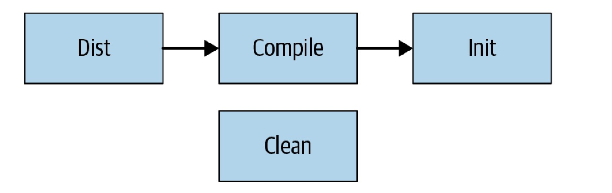
Users perform builds by providing tasks to Ant’s command-line tool. For example, when a user types ant dist, Ant takes the following steps:
- Loads a file named build.xml in the current directory and parses it to create the graph structure shown in Figure 18-1.
- Looks for the task named dist that was provided on the command line and discovers that it has a dependency on the task named compile.
- Looks for the task named compile and discovers that it has a dependency on the task named init.
- Looks for the task named init and discovers that it has no dependencies.
- Executes the commands defined in the init task.
- Executes the commands defined in the compile task given that all of that task’s dependencies have been run.
- Executes the commands defined in the dist task given that all of that task’s dependencies have been run.
用户通过向Ant的命令行工具提供任务来执行构建。例如，当用户输入ant dist时，Ant会采取以下步骤:
- 在当前目录下加载一个名为build.xml的文件，并对其进行解析以创建图18-1所示的图结构。
- 寻找命令行上提供的名为dist的任务，并发现它与名为compile的任务有依赖关系。
- 寻找名为compile的任务，发现它与名为init的任务有依赖关系。
- 查找名为init的任务并确认它没有依赖项。
- 执行init任务中定义的命令。
- 执行编译任务中定义的命令，前提是该任务的所有依赖项都已运行。
- 执行dist任务中定义的命令，前提是该任务的所有依赖项都已运行。
In the end, the code executed by Ant when running the dist task is equivalent to the following shell script:
最后，Ant在运行dist任务时执行的代码相当于以下shell脚本：
./createTimestamp.sh
mkdir build/
javac src/* -d build/
mkdir -p dist/lib/
jar cf dist/lib/MyProject-$(date --iso-8601).jar build/*
When the syntax is stripped away, the buildfile and the build script actually aren’t too different. But we’ve already gained a lot by doing this. We can create new buildfiles in other directories and link them together. We can easily add new tasks that depend on existing tasks in arbitrary and complex ways. We need only pass the name of a single task to the ant command-line tool, and it will take care of determining everything that needs to be run.
去掉语法后，构建文件和构建脚本实际上没有太大区别。但我们这样做已经有了很大的收获。我们可以在其他目录中创建新的构建文件并将它们链接在一起。我们可以以任意和复杂的方式轻松添加依赖于现有任务的新任务。我们只需要将单个任务的名称传递给ant命令行工具，它将负责确定需要运行的所有内容。
Ant is a very old piece of software, originally released in 2000—not what many people would consider a “modern” build system today! Other tools like Maven and Gradle have improved on Ant in the intervening years and essentially replaced it by adding features like automatic management of external dependencies and a cleaner syntax without any XML. But the nature of these newer systems remains the same: they allow engineers to write build scripts in a principled and modular way as tasks and provide tools for executing those tasks and managing dependencies among them.
Ant是一个非常古老的软件，最初发布于2000年--而不是很多人今天会考虑的“现代”构建系统！其他工具，如Maven和Gradle，在这几年中对Ant进行了改进，基本上取代了它，添加诸如自动管理外部依赖项和不使用任何XML的更干净语法等功能。但这些新系统的本质仍然是一样的：它们允许工程师以有原则的模块化方式编写构建脚本作为任务，并提供工具来执行这些任务和管理它们之间的依赖关系。
3Ant uses the word “target” to represent what we call a “task” in this chapter, and it uses the word “task” to refer to what we call “commands.”
3 ant用 "目标 "这个词来表示我们在本章中所说的 "任务"，它用 "任务 "这个词来指代我们所说的 "命令"/。
The dark side of task-based build systems 基于任务的构建系统的缺陷
Because these tools essentially let engineers define any script as a task, they are extremely powerful, allowing you to do pretty much anything you can imagine with them. But that power comes with drawbacks, and task-based build systems can become difficult to work with as their build scripts grow more complex. The problem with such systems is that they actually end up giving too much power to engineers and not enough power to the system. Because the system has no idea what the scripts are doing, performance suffers, as it must be very conservative in how it schedules and executes build steps. And there’s no way for the system to confirm that each script is doing what it should, so scripts tend to grow in complexity and end up being another thing that needs debugging.
因为这些工具本质上允许工程师将任何脚本定义为一项任务，所以它们非常强大，允许你用它们做几乎任何你能想象到的事情。但是，这种能力也有缺点，基于任务的构建系统会随着构建脚本的日益复杂而变得难以使用。这类系统的问题是，它们实际上最终把过多的权力给工程师，而没有把足够的权力给系统。因为系统不知道脚本在做什么，性能受到影响，因为它在调度和执行构建步骤时必须非常保守。而且，系统无法确认每个脚本都在做它应该做的事情，因此脚本往往会变得越来越复杂，最终成为另一件需要调试的事情。
Difficulty of parallelizing build steps. Modern development workstations are typically quite powerful, with multiple cores that should theoretically be capable of executing several build steps in parallel. But task-based systems are often unable to parallelize task execution even when it seems like they should be able to. Suppose that task A depends on tasks B and C. Because tasks B and C have no dependency on each other, is it safe to run them at the same time so that the system can more quickly get to task A? Maybe, if they don’t touch any of the same resources. But maybe not—perhaps both use the same file to track their statuses and running them at the same time will cause a conflict. There’s no way in general for the system to know, so either it has to risk these conflicts (leading to rare but very difficult-to-debug build problems), or it has to restrict the entire build to running on a single thread in a single process. This can be a huge waste of a powerful developer machine, and it completely rules out the possibility of distributing the build across multiple machines.
并行化构建步骤的难点。 现代开发工作站通常非常强大，有多个CPU内核，理论上应该能够并行执行几个构建步骤。但是，基于任务的系统往往无法将任务执行并行化，即使是在看起来应该能够做到的时候。假设任务A依赖于任务B和C。因为任务B和C彼此不依赖，所以同时运行它们是否安全，以便系统可以更快地到达任务A？也许吧，如果它们不接触任何相同的资源。但也许不是--也许它们都使用同一个文件来跟踪它们的状态，同时运行它们会导致冲突。一般来说，系统无法知道，所以要么它不得不冒着这些冲突的风险（导致罕见但非常难以调试的构建问题），要么它必须限制整个构建在单个进程的单个线程上运行。这可能是对强大的开发者机器的巨大浪费，而且它完全排除了在多台机器上分布构建的可能性。
Difficulty performing incremental builds. A good build system will allow engineers to perform reliable incremental builds such that a small change doesn’t require the entire codebase to be rebuilt from scratch. This is especially important if the build system is slow and unable to parallelize build steps for the aforementioned reasons. But unfortunately, task-based build systems struggle here, too. Because tasks can do anything, there’s no way in general to check whether they’ve already been done. Many tasks simply take a set of source files and run a compiler to create a set of binaries; thus, they don’t need to be rerun if the underlying source files haven’t changed. But without additional information, the system can’t say this for sure—maybe the task downloads a file that could have changed, or maybe it writes a timestamp that could be different on each run. To guarantee correctness, the system typically must rerun every task during each build.
难以执行增量构建。 一个好的构建系统将允许工程师执行可靠的增量构建，这样，一个小的变更就不需要从头开始重建整个代码库了。如果构建系统由于上述原因，速度很慢，无法并行化构建步骤，那么这一点就尤为重要。但不幸的是，基于任务的构建系统在这里也很困难。因为任务可以做任何事情，一般来说，没有办法检查它们是否已经完成。许多任务只是接收一组源文件并运行一个编译器来创建一组二进制文件；因此，如果底层源文件没有更改，则不需要重新运行。但是，如果没有额外的信息，系统就不能确定这一点--可能是任务下载了一个可能已更改的文件，或者它在每次运行时写入了一个可能不同的时间戳。为了保证正确性，系统通常必须在每次构建期间重新运行每个任务。
Some build systems try to enable incremental builds by letting engineers specify the conditions under which a task needs to be rerun. Sometimes this is feasible, but often it’s a much trickier problem than it appears. For example, in languages like C++ that allow files to be included directly by other files, it’s impossible to determine the entire set of files that must be watched for changes without parsing the input sources. Engineers will often end up taking shortcuts, and these shortcuts can lead to rare and frustrating problems where a task result is reused even when it shouldn’t be. When this happens frequently, engineers get into the habit of running clean before every build to get a fresh state, completely defeating the purpose of having an incremental build in the first place. Figuring out when a task needs to be rerun is surprisingly subtle, and is a job better handled by machines than humans.
一些构建系统试图通过让工程师指定需要重新运行任务的条件来启用增量构建。有时这是可行的，但通常这是一个比看起来更棘手的问题。例如，在像C++这样允许文件直接被其他文件包含的语言中，如果不解析输入源，就不可能确定必须关注的整个文件集的变化。工程师们最终往往会走捷径，而这些捷径会导致罕见的、令人沮丧的问题，即一个任务结果被重复使用，即使它不应该被使用。当这种情况经常发生时，工程师们就会养成习惯，在每次构建前运行clean，以获得一个全新的状态，这就完全违背了一开始就有增量构建的目的。弄清楚什么时候需要重新运行一个任务是非常微妙的，而且是一个最好由机器而不是人处理的工作。
Difficulty maintaining and debugging scripts. Finally, the build scripts imposed by task- based build systems are often just difficult to work with. Though they often receive less scrutiny, build scripts are code just like the system being built, and are easy places for bugs to hide. Here are some examples of bugs that are very common when working with a task-based build system:
- Task A depends on task B to produce a particular file as output. The owner of task B doesn’t realize that other tasks rely on it, so they change it to produce output in a different location. This can’t be detected until someone tries to run task A and finds that it fails.
- Task A depends on task B, which depends on task C, which is producing a particular file as output that’s needed by task A. The owner of task B decides that it doesn’t need to depend on task C any more, which causes task A to fail even though task B doesn’t care about task C at all!
- The developer of a new task accidentally makes an assumption about the machine running the task, such as the location of a tool or the value of particular environment variables. The task works on their machine, but fails whenever another developer tries it.
- A task contains a nondeterministic component, such as downloading a file from the internet or adding a timestamp to a build. Now, people will get potentially different results each time they run the build, meaning that engineers won’t always be able to reproduce and fix one another’s failures or failures that occur on an automated build system.
- Tasks with multiple dependencies can create race conditions. If task A depends on both task B and task C, and task B and C both modify the same file, task A will get a different result depending on which one of tasks B and C finishes first.
难以维护和调试脚本。最后，基于任务的构建系统所强加的构建脚本往往就是难以使用。尽管构建脚本通常很少受到审查，但它们与正在构建的系统一样，都是代码，很容易隐藏bug。以下是使用基于任务的构建系统时常见的一些错误示例：
- 任务A依赖于任务B来产生一个特定的文件作为输出。任务B的所有者没有意识到其他任务依赖于它，所以他们改变了它，在不同的位置产生输出。直到有人试图运行任务A，发现它失败了，这才被发现。
- 任务A依赖于任务B，而任务B依赖于任务C，而任务C正在产生一个任务A需要的特定文件作为输出。任务B的所有者决定它不需要再依赖于任务C，这导致任务A失败，尽管任务B根本不关心任务C!
- 一个新任务的开发者不小心对运行该任务的机器做了一个设置，比如一个工具的位置或特定环境变量的值。该任务在他们的机器上可以运行，但只要其他开发者尝试，就会失败。
- 任务包含不确定组件，例如从internet下载文件或向生成添加时间戳。现在，人们每次运行构建时都会得到可能不同的结果，这意味着工程师不可能总是能够重现和修复彼此的故障或自动构建系统上发生的故障。
- 有多个依赖关系的任务会产生竞赛条件。如果任务A同时依赖于任务B和任务C，而任务B和任务C同时修改同一个文件，那么任务A会得到不同的结果，这取决于任务B和任务C中哪一个先完成。
There’s no general-purpose way to solve these performance, correctness, or maintainability problems within the task-based framework laid out here. So long as engineers can write arbitrary code that runs during the build, the system can’t have enough information to always be able to run builds quickly and correctly. To solve the problem, we need to take some power out of the hands of engineers and put it back in the hands of the system and reconceptualize the role of the system not as running tasks, but as producing artifacts. This is the approach that Google takes with Blaze and Bazel, and it will be described in the next section.
在这里列出的基于任务的框架中，没有通用的方法来解决这些性能、正确性或可维护性问题。只要工程师能够编写在构建过程中运行的任意代码，系统就不可能拥有足够的信息来始终能够快速、正确地运行构建。我们需要从工程师手中夺走一些权力，把它放回系统的手中，并重新认识到系统的作用不是作为运行任务，而是作为生产组件。这就是谷歌对Blaze和Bazel采取的方法，将在下一节进行描述。
Artifact-Based Build Systems 基于构件的构建系统
To design a better build system, we need to take a step back. The problem with the earlier systems is that they gave too much power to individual engineers by letting them define their own tasks. Maybe instead of letting engineers define tasks, we can have a small number of tasks defined by the system that engineers can configure in a limited way. We could probably deduce the name of the most important task from the name of this chapter: a build system’s primary task should be to build code. Engineers would still need to tell the system what to build, but the how of doing the build would be left to the system.
为了设计一个更好的构建系统，我们需要后退一步。早期系统的问题在于，它们让工程师定义自己的任务，从而给了他们太多的权力。也许，我们可以不让工程师定义任务，而是由系统定义少量的任务，让工程师以有限的方式进行配置。我们也许可以从本章的名称中推断出最重要的任务的名称：构建系统的主要任务应该是构建代码。工程师们仍然需要告诉系统要构建什么，但如何构建的问题将留给系统。
This is exactly the approach taken by Blaze and the other artifact-based build systems descended from it (which include Bazel, Pants, and Buck). Like with task-based build systems, we still have buildfiles, but the contents of those buildfiles are very different. Rather than being an imperative set of commands in a Turing-complete scripting language describing how to produce an output, buildfiles in Blaze are a declarative manifest describing a set of artifacts to build, their dependencies, and a limited set of options that affect how they’re built. When engineers run blaze on the command line, they specify a set of targets to build (the “what”), and Blaze is responsible for configuring, running, and scheduling the compilation steps (the “how”). Because the build system now has full control over what tools are being run when, it can make much stronger guarantees that allow it to be far more efficient while still guaranteeing correctness.
这正是Blaze和它衍生的其他基于构件的构建系统（包括Bazel、Pants和Buck）所采用的方法。与基于任务的构建系统一样，我们仍然有构建文件，但这些构建文件的内容却非常不同。在Blaze中，构建文件不是图灵完备的脚本语言中描述如何产生输出的命令集，而是声明性的清单，描述一组要构建的构件、它们的依赖关系，以及影响它们如何构建的有限选项集。当工程师在命令行上运行blaze时，他们指定一组要构建的目标（"what"），而Blaze负责配置、运行和调度编译步骤（"how"）。由于构建系统现在可以完全控制什么工具在什么时候运行，它可以做出更有力的保证，使其在保证正确性的同时，效率也大大提高。
A functional perspective 功能视角
It’s easy to make an analogy between artifact-based build systems and functional programming. Traditional imperative programming languages (e.g., Java, C, and Python) specify lists of statements to be executed one after another, in the same way that task- based build systems let programmers define a series of steps to execute. Functional programming languages (e.g., Haskell and ML), in contrast, are structured more like a series of mathematical equations. In functional languages, the programmer describes a computation to perform, but leaves the details of when and exactly how that computation is executed to the compiler. This maps to the idea of declaring a manifest in an artifact-based build system and letting the system figure out how to execute the build.
在基于构件的构建系统和函数式编程之间做个类比是很容易的。传统的命令式编程语言（如Java、C和Python）指定了一个又一个要执行的语句列表，就像基于任务的构建系统让程序员定义一系列的执行步骤一样。相比之下，函数式编程语言（如Haskell和ML）的结构更像是一系列的数学方程。在函数式语言中，程序员描述了一个要执行的计算，但把何时以及如何执行该计算的细节留给了编译器。这就相当于在基于构件的构建系统中声明一个清单，并让系统找出如何执行构建的思路。
Many problems cannot be easily expressed using functional programming, but the ones that do benefit greatly from it: the language is often able to trivially parallelize such programs and make strong guarantees about their correctness that would be impossible in an imperative language. The easiest problems to express using functional programming are the ones that simply involve transforming one piece of data into another using a series of rules or functions. And that’s exactly what a build system is: the whole system is effectively a mathematical function that takes source files (and tools like the compiler) as inputs and produces binaries as outputs. So, it’s not surprising that it works well to base a build system around the tenets of functional programming.
许多问题无法用函数式编程便捷表达，但那些确实从中受益匪浅的问题：函数式语言通常能够简单地并行这些程序，并对它们的正确性做出强有力的保证，而这在命令式语言中是不可能的。使用函数编程最容易表达的问题是使用一系列规则或函数将一段数据转换为另一段数据的问题。而这正是构建系统的特点：整个系统实际上是一个数学函数，它将源文件（和编译器等工具）作为输入，并产生二进制文件作为输出。因此，围绕函数式编程的原则建立一个构建系统并不令人惊讶。
Getting concrete with Bazel. Bazel is the open source version of Google’s internal build tool, Blaze, and is a good example of an artifact-based build system. Here’s what a buildfile (normally named BUILD) looks like in Bazel:
用Bazel来实现具体化。Bazel是谷歌内部构建工具Blaze的开源版本，是基于构件的构建系统的一个好例子。下面是Bazel中构建文件（通常名为BUILD）的内容：
java_binary(
name = "MyBinary",
srcs = ["MyBinary.java"], deps = [
":mylib",
],
)
java_library(
name = "mylib",
srcs = ["MyLibrary.java", "MyHelper.java"],
visibility = ["//java/com/example/myproduct: subpackages "], deps = [
"//java/com/example/common", "//java/com/example/myproduct/otherlib", "@com_google_common_guava_guava//jar",
],
)
In Bazel, BUILD files define targets—the two types of targets here are java_binary and java_library. Every target corresponds to an artifact that can be created by the system: binary targets produce binaries that can be executed directly, and library targets produce libraries that can be used by binaries or other libraries. Every target has a name (which defines how it is referenced on the command line and by other targets, srcs (which define the source files that must be compiled to create the artifact for the target), and deps (which define other targets that must be built before this target and linked into it). Dependencies can either be within the same package (e.g., MyBinary’s dependency on ":mylib"), on a different package in the same source hierarchy (e.g., mylib’s dependency on "//java/com/example/common"), or on a third- party artifact outside of the source hierarchy (e.g., mylib’s dependency on "@com_google_common_guava_guava//jar"). Each source hierarchy is called a workspace and is identified by the presence of a special WORKSPACE file at the root.
在Bazel中，BUILD文件定义了目标--这里的两类目标是java_binary和java_library。每个目标都对应于系统可以创建的构件：二进制目标产生可以直接执行的二进制文件，而库目标产生可以被二进制文件或其他库使用的库。每个目标都有一个名字（它定义了它在命令行和其他目标中的引用方式）、srcs（它定义了必须被编译以创建目标的组件的源文件）和deps（它定义了必须在这个目标之前构建并链接到它的其他目标）。依赖关系可以是在同一个包内（例如，MyBinary对":mylib "的依赖），也可以是在同一个源层次结构中的不同包上（例如，mylib对"//java/com/example/common "的依赖），或者是在源层次结构之外的第三方构件上（例如，mylib对"@com_google_common_guava_guava//jar "的依赖）。每个源层次结构被称为工作区，并通过在根部存在一个特殊的WORKSPACE文件来识别。
Like with Ant, users perform builds using Bazel’s command-line tool. To build the MyBinary target, a user would run bazel build :MyBinary. Upon entering that command for the first time in a clean repository, Bazel would do the following:
- Parse every BUILD file in the workspace to create a graph of dependencies among artifacts.
- Use the graph to determine the transitive dependencies of MyBinary; that is, every target that MyBinary depends on and every target that those targets depend on, recursively.
- Build (or download for external dependencies) each of those dependencies, in order. Bazel starts by building each target that has no other dependencies and keeps track of which dependencies still need to be built for each target. As soon as all of a target’s dependencies are built, Bazel starts building that target. This process continues until every one of MyBinary’s transitive dependencies have been built.
- Build MyBinary to produce a final executable binary that links in all of the dependencies that were built in step 3. Fundamentally, it might not seem like what’s happening here is that much different than what happened when using a task-based build system. Indeed, the end result is the same binary, and the process for producing it involved analyzing a bunch of steps to find dependencies among them, and then running those steps in order. But there are critical differences. The first one appears in step 3: because Bazel knows that each target will only produce a Java library, it knows that all it has to do is run the Java compiler rather than an arbitrary user-defined script, so it knows that it’s safe to run these steps in parallel. This can produce an order of magnitude performance improvement over building targets one at a time on a multicore machine, and is only possible because the artifact-based approach leaves the build system in charge of its own execution strategy so that it can make stronger guarantees about parallelism.
和Ant一样，用户使用Bazel的命令行工具进行构建。为了构建MyBinary目标，用户可以运行 bazel build :MyBinary。在一个干净的版本库中第一次输入该命令时，Bazel会做以下工作。
- 解析工作区中的每个BUILD文件，以创建构件之间的依赖关系图。
- 使用该图来确定MyBinary的横向依赖关系；也就是说，MyBinary所依赖的每个目标以及这些目标所依赖的每个目标都是递归的。
- 生成（或下载外部依赖项）每个依赖项按顺序排列。Bazel首先构建没有其他依赖项的每个目标，并跟踪每个目标仍需要构建哪些依赖项。一旦构建了目标的所有依赖项，Bazel就会开始构建该目标。此过程一直持续到MyBinary的每个可传递依赖项已经建成。
- 构建MyBinary，产生一个最终的可执行二进制文件，该文件链接了在步骤3中构建的所有依赖项。
The benefits extend beyond parallelism, though. The next thing that this approach gives us becomes apparent when the developer types bazel build :MyBinary a second time without making any changes: Bazel will exit in less than a second with a message saying that the target is up to date. This is possible due to the functional programming paradigm we talked about earlier—Bazel knows that each target is the result only of running a Java compiler, and it knows that the output from the Java compiler depends only on its inputs, so as long as the inputs haven’t changed, the output can be reused. And this analysis works at every level; if MyBinary.java changes, Bazel knows to rebuild MyBinary but reuse mylib. If a source file for //java/com/ example/common changes, Bazel knows to rebuild that library, mylib, and MyBinary, but reuse //java/com/example/myproduct/otherlib. Because Bazel knows about the properties of the tools it runs at every step, it’s able to rebuild only the minimum set of artifacts each time while guaranteeing that it won’t produce stale builds.
从根本上说，这里发生的事情似乎与使用基于任务的构建系统时发生的事情没有太大的不同。事实上，最终结果是相同的二进制文件，生成它的过程包括分析一系列步骤以找到它们之间的依赖关系，然后按顺序运行这些步骤。但是有一些关键的区别。第一个出现在第3步：因为Bazel知道每个目标只会生成一个Java库，所以它知道它所要做的就是运行Java编译器，而不是任意的用户定义脚本，所以它知道运行它是安全的。这些步骤是并行的。与在多核机器上一次构建一个目标相比，这可以产生一个数量级的性能改进，并且这是唯一可能的，因为基于构件的方法让构建系统负责自己的执行策略，以便它能够对并行性做出更有力的保证。
Reframing the build process in terms of artifacts rather than tasks is subtle but powerful. By reducing the flexibility exposed to the programmer, the build system can know more about what is being done at every step of the build. It can use this knowledge to make the build far more efficient by parallelizing build processes and reusing their outputs. But this is really just the first step, and these building blocks of parallelism and reuse will form the basis for a distributed and highly scalable build system that will be discussed later.
从构件而不是任务的角度来重构构建过程是微妙而强大的。通过减少暴露在程序员面前的灵活性，构建系统可以知道更多关于在构建的每一步正在做什么。它可以利用这些知识，通过并行化构建过程和重用其输出，使构建的效率大大提升。但这实际上只是第一步，这些并行和重用的构件将构成分布式和高度可扩展的构建系统的基础，这将在后面讨论。
Other nifty Bazel tricks 其他有趣的Bazel技巧
Artifact-based build systems fundamentally solve the problems with parallelism and reuse that are inherent in task-based build systems. But there are still a few problems that came up earlier that we haven’t addressed. Bazel has clever ways of solving each of these, and we should discuss them before moving on.
基于构件的构建系统从根本上解决了基于任务的构建系统所固有的并行性和重用问题。但仍有一些问题在前面出现过，我们还没有解决。Bazel有解决这些问题的聪明方法，我们应该在继续之前讨论它们。
Tools as dependencies. One problem we ran into earlier was that builds depended on the tools installed on our machine, and reproducing builds across systems could be difficult due to different tool versions or locations. The problem becomes even more difficult when your project uses languages that require different tools based on which platform they’re being built on or compiled for (e.g., Windows versus Linux), and each of those platforms requires a slightly different set of tools to do the same job.
工具作为依赖项。我们之前遇到的一个问题是，构建取决于我们机器上安装的工具，由于工具版本或位置不同，跨系统复制构建可能会很困难。当你的项目使用的语言需要根据它们在哪个平台上构建或编译的不同工具时（例如，Windows与Linux），这个问题就变得更加困难，而每个平台都需要一套稍微不同的工具来完成同样的工作。
Bazel solves the first part of this problem by treating tools as dependencies to each target. Every java_library in the workspace implicitly depends on a Java compiler, which defaults to a well-known compiler but can be configured globally at the workspace level. Whenever Blaze builds a java_library, it checks to make sure that the specified compiler is available at a known location and downloads it if not. Just like any other dependency, if the Java compiler changes, every artifact that was dependent upon it will need to be rebuilt. Every type of target defined in Bazel uses this same strategy of declaring the tools it needs to run, ensuring that Bazel is able to bootstrap them no matter what exists on the system where it runs.
Bazel解决了这个问题的第一部分，把工具当作对每个目标的依赖。工作区中的每一个java_library都隐含地依赖于一个Java编译器，它默认为一个知名的编译器，但可以在工作区层面进行全局配置。每当Blaze构建一个java_library时，它都会检查以确保指定的编译器在已知的位置上是可用的，如果不可用，就下载它。就像其他依赖关系一样，如果Java编译器改变了，每个依赖它的构件都需要重建。在Bazel中定义的每一种类型的目标都使用这种相同的策略来声明它需要运行的工具，确保Bazel能够启动它们，无论它运行的系统上存在什么。
Bazel solves the second part of the problem, platform independence, by using toolchains. Rather than having targets depend directly on their tools, they actually depend on types of toolchains. A toolchain contains a set of tools and other properties defining how a type of target is built on a particular platform. The workspace can define the particular toolchain to use for a toolchain type based on the host and target platform. For more details, see the Bazel manual.
Bazel通过使用工具链解决了问题的第二部分，即平台独立性。与其让目标直接依赖于它们的工具，不如说它们实际上依赖于工具链的类型。工具链包含一组工具和其他属性，定义了如何在特定平台上构建目标类型。工作区可以定义基于主机和目标平台，为工具链类型使用特定的工具链。有关更多详细信息，请参阅Bazel手册。
Extending the build system. Bazel comes with targets for several popular programming languages out of the box, but engineers will always want to do more—part of the benefit of task-based systems is their flexibility in supporting any kind of build process, and it would be better not to give that up in an artifact-based build system. Fortunately, Bazel allows its supported target types to be extended by adding custom rules.
扩展构建系统。Bazel为几种流行的编程语言提供了开箱即用的能力，但工程师们总是想做得更多--基于任务的系统的部分好处是它们在支持任何类型的构建过程中的灵活性，在基于构件的构建系统中最好也可以支持这一点。幸运的是，Bazel允许其支持通过添加自定义规则扩展的目标类型。
To define a rule in Bazel, the rule author declares the inputs that the rule requires (in the form of attributes passed in the BUILD file) and the fixed set of outputs that the rule produces. The author also defines the actions that will be generated by that rule. Each action declares its inputs and outputs, runs a particular executable or writes a particular string to a file, and can be connected to other actions via its inputs and outputs. This means that actions are the lowest-level composable unit in the build system —an action can do whatever it wants so long as it uses only its declared inputs and outputs, and Bazel will take care of scheduling actions and caching their results as appropriate.
要在Bazel中定义规则，规则作者要声明该规则需要的输入（以BUILD文件中传递的属性形式）和该规则产生的固定输出集。作者还定义了将由该规则生成的操作。每个操作都声明其输入和输出，运行特定的可执行文件或将特定字符串写入文件，并可以通过其输入和输出连接到其他操作。这意味着操作是构建系统中最底层的可组合单元--一个操作可以做任何它想做的事情，只要它只使用它所声明的输入和输出，Bazel将负责调度动作并适当地缓存其结果。
The system isn’t foolproof given that there’s no way to stop an action developer from doing something like introducing a nondeterministic process as part of their action. But this doesn’t happen very often in practice, and pushing the possibilities for abuse all the way down to the action level greatly decreases opportunities for errors. Rules supporting many common languages and tools are widely available online, and most projects will never need to define their own rules. Even for those that do, rule definitions only need to be defined in one central place in the repository, meaning most engineers will be able to use those rules without ever having to worry about their implementation.
这个系统并不是万无一失的，因为没有办法阻止操作开发者做一些事情，比如在他们的操作中引入一个不确定的过程。但这种情况在实践中并不经常发生，而且将滥用的可能性一直推到操作层面，大大减少了错误的机会。支持许多常用语言和工具的规则在网上广泛提供，大多数项目都不需要定义自己的规则。即使是那些需要定义规则的项目，规则定义也只需要在存储库中的一个中心位置定义，这意味着大多数工程师将能够使用这些规则，而不必担心它们的实现。
Isolating the environment. Actions sound like they might run into the same problems as tasks in other systems—isn’t it still possible to write actions that both write to the same file and end up conflicting with one another? Actually, Bazel makes these conflicts impossible by using sandboxing. On supported systems, every action is isolated from every other action via a filesystem sandbox. Effectively, each action can see only a restricted view of the filesystem that includes the inputs it has declared and any outputs it has produced. This is enforced by systems such as LXC on Linux, the same technology behind Docker. This means that it’s impossible for actions to conflict with one another because they are unable to read any files they don’t declare, and any files that they write but don’t declare will be thrown away when the action finishes. Bazel also uses sandboxes to restrict actions from communicating via the network.
隔离环境。行动听起来可能会遇到与其他系统中的任务相同的问题--难道没有可能写入同时写入同一文件并最终相互冲突的操作吗？实际上，Bazel通过使用沙箱使这些冲突变得不可能。在支持的系统上，每个操作都通过文件系统沙盒与其他动作隔离开来。实际上，每个操作只能看到文件系统的一个有限视图，包括它所声明的输入和它生成的任何输出。这是由Linux上的LXC等系统强制执行的，Docker背后的技术也是如此。这意味着操作之间不可能发生冲突，因为它们无法读取它们没有声明的任何文件，并且他们编写但未声明的文件将在操作完成时被丢弃。Bazel还使用沙盒来限制行动通过网络进行通信。
Making external dependencies deterministic. There’s still one problem remaining: build systems often need to download dependencies (whether tools or libraries) from external sources rather than directly building them. This can be seen in the example via the @com_google_common_guava_guava//jar dependency, which downloads a JAR file from Maven.
使外部依赖性具有确定性。还有一个问题：构建系统经常需要从外部下载依赖项（无论是工具还是库），而不是直接构建它们。这可以通过@com_google_common_guava_guava//jar依赖项在示例中看到，该依赖项从Maven下载jar文件。
Depending on files outside of the current workspace is risky. Those files could change at any time, potentially requiring the build system to constantly check whether they’re fresh. If a remote file changes without a corresponding change in the workspace source code, it can also lead to unreproducible builds—a build might work one day and fail the next for no obvious reason due to an unnoticed dependency change. Finally, an external dependency can introduce a huge security risk when it is owned by a third party:4 if an attacker is able to infiltrate that third-party server, they can replace the dependency file with something of their own design, potentially giving them full control over your build environment and its output.
依靠当前工作区以外的文件是有风险的。这些文件可能随时更改，这可能需要生成系统不断检查它们是否是最新的。如果一个远程文件发生了变化，而工作区的源代码却没有相应的变化，这也会导致构建的不可重复性--由于一个未被注意到的依赖性变化，构建可能在某一天成功，而在第二天却没有明显的原因而失败。最后，当外部依赖项属于第三方时，可能会带来巨大的安全风险：如果攻击者能够渗透到第三方服务器，他们可以用自己设计的内容替换依赖项文件，从而有可能让他们完全控制服务器构建环境及其输出。
The fundamental problem is that we want the build system to be aware of these files without having to check them into source control. Updating a dependency should be a conscious choice, but that choice should be made once in a central place rather than managed by individual engineers or automatically by the system. This is because even with a “Live at Head” model, we still want builds to be deterministic, which implies that if you check out a commit from last week, you should see your dependencies as they were then rather than as they are now.
根本的问题是，我们希望构建系统知道这些文件，而不必将它们放入源代码管理。更新一个依赖关系应该是一个有意识的选择，但这个选择应该在一个中心位置做出，而不是由个别工程师管理或由系统自动管理。这是因为即使是 "Live at Head "模式，我们仍然希望构建是确定性的，这意味着如果你检查出上周的提交，你应该看到你的依赖关系是当时的，而不是现在的。
Bazel and some other build systems address this problem by requiring a workspace- wide manifest file that lists a cryptographic hash for every external dependency in the workspace.5 The hash is a concise way to uniquely represent the file without checking the entire file into source control. Whenever a new external dependency is referenced from a workspace, that dependency’s hash is added to the manifest, either manually or automatically. When Bazel runs a build, it checks the actual hash of its cached dependency against the expected hash defined in the manifest and redownloads the file only if the hash differs.
Bazel和其他一些构建系统通过要求一个覆盖整个工作区的清单文件来解决这个问题，该文件列出了工作区中每个外部依赖项的加密哈希。每当从工作区引用一个新的外部依赖关系时，该依赖关系的哈希值就会被手动或自动添加到清单中。Bazel 运行构建时，会将其缓存的依赖关系的实际哈希值与清单中定义的预期哈希值进行对比，只有在哈希值不同时才会重新下载文件。
4Such "software supply chain" attacks are becoming more common.
4 这种“软件供应链”攻击越来越普遍。
5Go recently added preliminary support for modules using the exact same system.
5 Go最近增加了对使用完全相同系统的模块的初步支持。
If the artifact we download has a different hash than the one declared in the manifest, the build will fail unless the hash in the manifest is updated. This can be done automatically, but that change must be approved and checked into source control before the build will accept the new dependency. This means that there’s always a record of when a dependency was updated, and an external dependency can’t change without a corresponding change in the workspace source. It also means that, when checking out an older version of the source code, the build is guaranteed to use the same dependencies that it was using at the point when that version was checked in (or else it will fail if those dependencies are no longer available).
如果我们下载的构件与清单中声明的哈希值不同，除非更新清单中的哈希值，否则构建将失败。这可以自动完成，但在构建接受新的依赖关系之前，这一变化必须得到批准并检查到源代码控制中。这意味着总是有依赖关系更新的记录，如果工作区源代码没有相应的变化，外部依赖关系就不会改变。这也意味着，当签出一个旧版本的源代码时，构建保证使用与签入该版本时相同的依赖关系（否则，如果这些依赖关系不再可用，它将失败）。
Of course, it can still be a problem if a remote server becomes unavailable or starts serving corrupt data—this can cause all of your builds to begin failing if you don’t have another copy of that dependency available. To avoid this problem, we recommend that, for any nontrivial project, you mirror all of its dependencies onto servers or services that you trust and control. Otherwise you will always be at the mercy of a third party for your build system’s availability, even if the checked-in hashes guarantee its security.
当然，如果一个远程服务器变得不可用或开始提供损坏的数据，这仍然是一个问题--如果没有该依赖项的另一个副本可用，这可能会导致所有构建开始失败。为了避免这个问题，我们建议，对于任何不重要的项目，你应该把所有的依赖关系镜像到你信任和控制的服务器或服务上。否否则，构建系统的可用性将始终取决于第三方，即使签入哈希保证了其安全性。
Distributed Builds 分布式构建
Google’s codebase is enormous—with more than two billion lines of code, chains of dependencies can become very deep. Even simple binaries at Google often depend on tens of thousands of build targets. At this scale, it’s simply impossible to complete a build in a reasonable amount of time on a single machine: no build system can get around the fundamental laws of physics imposed on a machine’s hardware. The only way to make this work is with a build system that supports distributed builds wherein the units of work being done by the system are spread across an arbitrary and scalable number of machines. Assuming we’ve broken the system’s work into small enough units (more on this later), this would allow us to complete any build of any size as quickly as we’re willing to pay for.
谷歌的代码库非常庞大--有超过20亿行的代码，依赖关系链可以变得非常深。在谷歌，即使是简单的二进制文件也常常依赖于成千上万个构建目标。在这种规模下，要在一台机器上以合理的时间完成构建是根本不可能的：任何构建系统都无法绕过强加给机器硬件的基本物理定律。唯一的办法是使用支持分布式构建的构建系统，其中系统所完成的工作单元分布在任意数量且可扩展的机器上。假设我们把系统的工作分解成足够小的单位（后面会有更多介绍），这将使我们能够以我们可以根据支付的费用来获得想要的速度完成任何规模的构建。
This scalability is the holy grail we’ve been working toward by defining an artifact-based build system.
通过定义基于构件的构建系统，这种可伸缩性是我们一直致力于实现的法宝。
Remote caching 远程缓存
The simplest type of distributed build is one that only leverages remote caching, which is shown in Figure 18-2.
最简单的分布式构建类型是只利用远程缓存的构建，如图18-2所示。
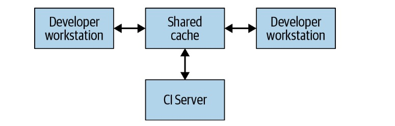
Figure 18-2. A distributed build showing remote caching
Every system that performs builds, including both developer workstations and continuous integration systems, shares a reference to a common remote cache service. This service might be a fast and local short-term storage system like Redis or a cloud service like Google Cloud Storage. Whenever a user needs to build an artifact, whether directly or as a dependency, the system first checks with the remote cache to see if that artifact already exists there. If so, it can download the artifact instead of building it. If not, the system builds the artifact itself and uploads the result back to the cache. This means that low-level dependencies that don’t change very often can be built once and shared across users rather than having to be rebuilt by each user. At Google, many artifacts are served from a cache rather than built from scratch, vastly reducing the cost of running our build system.
每个执行构建的系统，包括开发人员工作站和连续集成系统，都共享对公共远程缓存服务的引用。这个服务可能是一个高速的本地短期存储系统，如Redis，或一个云服务，如谷歌云存储。每当用户需要构建一个构件时，无论是直接构建还是作为一个依赖，系统首先检查远程缓存，看该构件是否已经存在。如果存在，它可以下载该构件而不是构建它。如果没有，系统会自己构建构件，并将结果上传到缓存中。这意味着不经常更改的低级依赖项可以构建一次并在用户之间共享，而不必由每个用户重新构建。在谷歌，许多构件是从缓存中提供的，而不是从头开始构建的，这大大降低了我们运行构建系统的成本。
For a remote caching system to work, the build system must guarantee that builds are completely reproducible. That is, for any build target, it must be possible to determine the set of inputs to that target such that the same set of inputs will produce exactly the same output on any machine. This is the only way to ensure that the results of downloading an artifact are the same as the results of building it oneself. Fortunately, Bazel provides this guarantee and so supports remote caching. Note that this requires that each artifact in the cache be keyed on both its target and a hash of its inputs—that way, different engineers could make different modifications to the same target at the same time, and the remote cache would store all of the resulting artifacts and serve them appropriately without conflict.
为了使远程缓存系统发挥作用，构建系统必须保证构建是完全可重复的。也就是说，对于任何构建目标，必须能够确定该目标的输入集，以便相同的输入集在任何机器上产生完全相同的输出。这是确保下载构件的结果与自己构建构件的结果相同的唯一方法。幸运的是，Bazel提供了这种保证，因此支持远程缓存。请注意，这要求缓存中的每个构件都以其目标和输入的哈希值为关键--这样，不同的工程师可以在同一时间对同一目标进行不同的修改，而远程缓存将存储所有结果的构件，并适当地为它们提供服务，而不会产生冲突。
Of course, for there to be any benefit from a remote cache, downloading an artifact needs to be faster than building it. This is not always the case, especially if the cache server is far from the machine doing the build. Google’s network and build system is carefully tuned to be able to quickly share build results. When configuring remote caching in your organization, take care to consider network latencies and perform experiments to ensure that the cache is actually improving performance.
当然，要想从远程缓存中获得任何好处，下载构件的速度必须比构建它的速度快。但情况并非总是如此，尤其是当缓存服务器远离进行构建的机器时。谷歌的网络和构建系统是经过精心调整的，能够快速分享构建结果。在组织中配置远程缓存时，请注意考虑网络延迟，并进行实验以确保缓存实际上正在提高性能
Remote execution 远程构建
Remote caching isn’t a true distributed build. If the cache is lost or if you make a low- level change that requires everything to be rebuilt, you still need to perform the entire build locally on your machine. The true goal is to support remote execution, in which the actual work of doing the build can be spread across any number of workers. Figure 18-3 depicts a remote execution system.
远程缓存不是真正的分布式构建。如果缓存丢失或者进行了需要重建所有内容的低级更改，那么仍然需要在计算机上本地执行整个构建。远程缓存并不是一个真正的分布式构建。如果缓存丢失了，或者如果你做了一个低级别的改变，需要重建所有的东西，你仍然需要在你的机器上执行整个构建。真正的目标是支持远程执行，在这种情况下，进行构建的实际工作可以分散到任何数量的机器上。[图18-3]（#_bookmark1676）描述了一个远程执行系统。
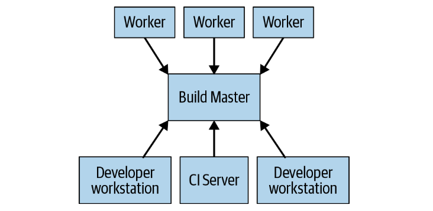
Figure 18-3. A remote execution system
The build tool running on each user’s machine (where users are either human engineers or automated build systems) sends requests to a central build master. The build master breaks the requests into their component actions and schedules the execution of those actions over a scalable pool of workers. Each worker performs the actions asked of it with the inputs specified by the user and writes out the resulting artifacts. These artifacts are shared across the other machines executing actions that require them until the final output can be produced and sent to the user.
在每个用户的机器上运行的构建工具（用户可以是工程师，也可以是自动构建系统）向中央构建主控器发送请求。构建主机将请求分解为组件操作，并在可扩展的机器资源池上安排这些操作的执行。每个机器根据用户指定的输入执行所要求的操作，并写出结果的构件。这些构件在执行需要它们的操作的其他机器之间共享，直到可以生成最终输出并发送给用户。
The trickiest part of implementing such a system is managing the communication between the workers, the master, and the user’s local machine. Workers might depend on intermediate artifacts produced by other workers, and the final output needs to be sent back to the user’s local machine. To do this, we can build on top of the distributed cache described previously by having each worker write its results to and read its dependencies from the cache. The master blocks workers from proceeding until everything they depend on has finished, in which case they’ll be able to read their inputs from the cache. The final product is also cached, allowing the local machine to download it. Note that we also need a separate means of exporting the local changes in the user’s source tree so that workers can apply those changes before building.
实现这样一个系统最棘手的部分是管理员、主站和用户的本地机器之间的通信。某台构建机器可能依赖于其他机器产生的中间构件，而最终输出需要发送回用户的本地机器。要做到这一点，我们可以建立在前面描述的分布式缓存之上，让每个构建机器将其结果写入缓存并从缓存中读取其依赖项。主模块阻止构建程序继续工作，直到它所依赖的一切完成，在这种情况下，它将能够从缓存中读取它的输入。最终的产品也被缓存起来，允许本地机器下载它。请注意，我们还需要一种单独的方法来导出用户源树中的本地更改，以便构建机器可以在构建之前应用这些更改。
For this to work, all of the parts of the artifact-based build systems described earlier need to come together. Build environments must be completely self-describing so that we can spin up workers without human intervention. Build processes themselves must be completely self-contained because each step might be executed on a different machine. Outputs must be completely deterministic so that each worker can trust the results it receives from other workers. Such guarantees are extremely difficult for a task-based system to provide, which makes it nigh-impossible to build a reliable remote execution system on top of one.
要做到这一点，前面描述的基于构件的构建系统的所有部分都需要结合起来。构建环境必须是完全自描述的，这样我们就可以在没有人为干预的情况下提高构建的速度。构建过程本身必须是完全自包含的，因为每个步骤可能在不同的机器上执行。输出必须是完全确定的，这样每个构建机器就可以相信它从其他构建机器那里得到的结果。样的保证对于基于任务的系统来说是非常困难的，这使得在一个系统之上构建一个可靠的远程执行系统几乎是不可能的。
Distributed builds at Google. Since 2008, Google has been using a distributed build system that employs both remote caching and remote execution, which is illustrated in Figure 18-4.
**谷歌的分布式构建。**自2008年以来，谷歌一直在使用分布式构建系统，该系统同时采用了远程缓存和远程执行，如[图18-4]（#_bookmark1678）所示。
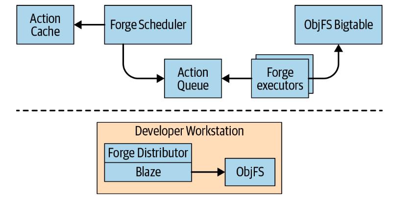
Figure 18-4. Google’s distributed build system
Google’s remote cache is called ObjFS. It consists of a backend that stores build outputs in Bigtables distributed throughout our fleet of production machines and a frontend FUSE daemon named objfsd that runs on each developer’s machine. The FUSE daemon allows engineers to browse build outputs as if they were normal files stored on the workstation, but with the file content downloaded on-demand only for the few files that are directly requested by the user. Serving file contents on-demand greatly reduces both network and disk usage, and the system is able to build twice as fastcompared to when we stored all build output on the developer’s local disk.
谷歌的远程缓存系统被称为ObjFS。它包括一个将构建输出存储在Bigtables的后端，分布在我们的生产机群中，以及一个运行在每个开发人员机器上的名为objfsd的前端FUSE守护程序。FUSE守护进程允许工程师像浏览存储在工作站上的普通文件一样浏览构建输出，但文件内容仅针对用户直接请求的少数文件按需下载。按需提供文件内容大大减少了网络和磁盘的使用，系统的构建速度是将所有构建输出存储在开发人员的本地磁盘上时的两倍。
Google’s remote execution system is called Forge. A Forge client in Blaze called the Distributor sends requests for each action to a job running in our datacenters called the Scheduler. The Scheduler maintains a cache of action results, allowing it to return a response immediately if the action has already been created by any other user of the system. If not, it places the action into a queue. A large pool of Executor jobs continually read actions from this queue, execute them, and store the results directly in the ObjFS Bigtables. These results are available to the executors for future actions, or to be downloaded by the end user via objfsd.
谷歌的远程执行系统被称为Forge。在Blaze中，一个名为 "Distributor "的Forge客户端将每个操作的请求发送到数据中心中名为Scheduler调度器。调度器维护操作结果的缓存，允许它在操作已经由系统的任何其他用户创建时立即返回响应。如果没有，它就把操作放到一个队列中。大量执行器作业从该队列中连续读取操作，执行它们，并将结果直接存储在ObjFS Bigtables中。这些结果可供执行者用于将来的操作，或由最终用户通过objfsd下载。
The end result is a system that scales to efficiently support all builds performed at Google. And the scale of Google’s builds is truly massive: Google runs millions of builds executing millions of test cases and producing petabytes of build outputs from billions of lines of source code every day. Not only does such a system let our engineers build complex codebases quickly, it also allows us to implement a huge number of automated tools and systems that rely on our build. We put many years of effort into developing this system, but nowadays open source tools are readily available such that any organization can implement a similar system. Though it can take time and energy to deploy such a build system, the end result can be truly magical for engineers and is often well worth the effort.
最终的结果是一个可扩展的系统，能够高效地支持在谷歌执行的所有构建。谷歌构建的规模确实是巨大的：谷歌每天运行数以百万计的构建，执行数以百万计的测试用例，并从数十亿行源代码中产生数PB的构建输出。这样一个系统不仅让我们的工程师快速构建复杂的代码库，还让我们能够实现大量依赖我们构建的自动化工具和系统。我们为开发这个系统付出了多年的努力，但现在开源工具已经很容易获得，这样任何组织都可以实现类似的系统。虽然部署这样一个构建系统可能需要时间和精力，但最终的结果对工程师来说确实是神奇的，而且通常是值得付出努力的。
Time, Scale, Trade-Offs 时间、规模、权衡
Build systems are all about making code easier to work with at scale and over time. And like everything in software engineering, there are trade-offs in choosing which sort of build system to use. The DIY approach using shell scripts or direct invocations of tools works only for the smallest projects that don’t need to deal with code changing over a long period of time, or for languages like Go that have a built-in build system.
构建系统都是为了使代码更易于大规模和长期使用。就像软件工程一样，在选择使用哪种构建系统时也存在权衡。使用shell脚本或直接调用工具的DIY方法只适用于不需要长时间处理代码更改的最小项目，或者适用于具有内置构建系统的Go等语言。
Choosing a task-based build system instead of relying on DIY scripts greatly improves your project’s ability to scale, allowing you to automate complex builds and more easily reproduce those builds across machines. The trade-off is that you need to actually start putting some thought into how your build is structured and deal with the overhead of writing build files (though automated tools can often help with this). This trade-off tends to be worth it for most projects, but for particularly trivial projects (e.g., those contained in a single source file), the overhead might not buy you much.
选择基于任务的构建系统而不是依赖DIY脚本可以极大地提高项目的可扩展性，允许你自动完成复杂的构建，并更容易在不同的机器上复制这些构建。权衡之下，你需要真正开始考虑构建是如何构造的，并处理编写构建文件的开销（尽管自动化工具通常可以帮助解决这个问题）。对于大多数项目来说，这种权衡是值得的，但对于特别琐碎的项目（例如，那些包含在单一源文件中的项目），开销可能不会给你带来太多好处。
Task-based build systems begin to run into some fundamental problems as the project scales further, and these issues can be remedied by using an artifact-based build system instead. Such build systems unlock a whole new level of scale because huge builds can now be distributed across many machines, and thousands of engineers can be more certain that their builds are consistent and reproducible. As with so many other topics in this book, the trade-off here is a lack of flexibility: artifact- based systems don’t let you write generic tasks in a real programming language, but require you to work within the constraints of the system. This is usually not a problem for projects that are designed to work with artifact-based systems from the start, but migration from an existing task-based system can be difficult and is not always worth it if the build isn’t already showing problems in terms of speed or correctness.
随着项目规模的进一步扩大，基于任务的构建系统开始遇到一些基本问题，而这些问题可以通过使用基于构件的构建系统来弥补。这样的构建系统开启了一个全新的规模，因为巨大的构建现在可以分布在许多机器上，成千上万的工程师可以更确定他们的构建是一致的和可重复的。就像本书中的许多其他主题一样，这里的权衡是缺乏灵活性：基于构件的系统不允许你用真正的编程语言编写通用任务，而要求你在系统的约束范围内工作。对于那些从一开始就被设计为与基于构件的系统一起工作的项目来说，这通常不是一个问题，但是从现有的基于任务的系统迁移可能是困难的，而且如果构建在速度或正确性方面还没有出现问题的话，这并不总是值得的。
Changes to a project’s build system can be expensive, and that cost increases as the project becomes larger. This is why Google believes that almost every new project benefits from incorporating an artifact-based build system like Bazel right from the start. Within Google, essentially all code from tiny experimental projects up to Google Search is built using Blaze.
对一个项目的构建系统进行修改代价耿是昂贵的，而且随着项目的扩大，成本也会增加。这就是为什么谷歌认为，几乎每一个新项目从一开始就可以从Bazel这样的基于构件的构建系统中获益。在谷歌内部，从微小的实验性项目到谷歌搜索，基本上所有的代码都是用Blaze构建的。
Dealing with Modules and Dependencies 处理模块和依赖关系
Projects that use artifact-based build systems like Bazel are broken into a set of modules, with modules expressing dependencies on one another via BUILD files. Proper organization of these modules and dependencies can have a huge effect on both the performance of the build system and how much work it takes to maintain.
像Bazel这样使用基于构件的构建系统的项目被分解成一系列模块，模块之间通过BUILD文件表达彼此的依赖关系。适当地组织这些模块和依赖关系，对构建系统的性能和维护的工作量都有很大的影响。
Using Fine-Grained Modules and the 1:1:1 Rule 使用细粒度模块和1:1:1规则
The first question that comes up when structuring an artifact-based build is deciding how much functionality an individual module should encompass. In Bazel, a “module” is represented by a target specifying a buildable unit like a java_library or a go_binary. At one extreme, the entire project could be contained in a single module by putting one BUILD file at the root and recursively globbing together all of that project’s source files. At the other extreme, nearly every source file could be made into its own module, effectively requiring each file to list in a BUILD file every other file it depends on.
构建基于构件的构建时出现的第一个问题是决定单个模块应该包含多少功能。在Bazel中，一个 "module"是由一个指定可构建单元的目标表示的，如java_library或go_binary。在一个极端，整个项目可以包含在一个单一的module中，方法是把一个BUILD文件放在根部，然后递归地把该项目所有的源文件放在一起。在另一个极端，几乎每一个源文件都可以成为自己的模块，有效地要求每个文件在BUILD文件中列出它所依赖的每个其他文件。
Most projects fall somewhere between these extremes, and the choice involves a trade-off between performance and maintainability. Using a single module for the entire project might mean that you never need to touch the BUILD file except when adding an external dependency, but it means that the build system will always need to build the entire project all at once. This means that it won’t be able to parallelize or distribute parts of the build, nor will it be able to cache parts that it’s already built. One-module-per-file is the opposite: the build system has the maximum flexibility in caching and scheduling steps of the build, but engineers need to expend more effort maintaining lists of dependencies whenever they change which files reference which.
大多数项目都介于这两个极端之间，这种选择涉及到性能和可维护性之间的权衡。在整个项目使用一个模块可能意味着除了添加外部依赖项时，你永远不需要更改构建文件，但这意味着构建系统将始终需要一次构建整个项目。这意味着它将无法并行化或分发构建的一部分，也无法缓存已经构建的部分。每个文件一个模块的情况正好相反：构建系统在缓存和安排构建步骤方面有最大的灵活性，但工程师需要花费更多的精力来维护依赖关系的列表，无论何时他们改变哪个文件引用哪个文件。
Though the exact granularity varies by language (and often even within language), Google tends to favor significantly smaller modules than one might typically write in a task-based build system. A typical production binary at Google will likely depend on tens of thousands of targets, and even a moderate-sized team can own several hundred targets within its codebase. For languages like Java that have a strong built- in notion of packaging, each directory usually contains a single package, target, and BUILD file (Pants, another build system based on Blaze, calls this the 1:1:1 rule). Languages with weaker packaging conventions will frequently define multiple targets per BUILD file.
虽然精确的颗粒度因语言而异（甚至在语言内部也是如此），但谷歌倾向于使用比通常在基于任务的构建系统中编写的模块小得多的模块。在谷歌，一个典型的生产二进制文件可能会依赖于数以万计的目标构件，甚至一个中等规模的团队也可能在其代码库中拥有数百个目标。对于像Java这样有强大的内置打包概念的语言，每个目录通常包含一个单独的包、目标和BUILD文件（另一个基于Blaze的构建系统Pants称之为1:1:1规则）。封装约定较弱的语言通常会为每个构建文件定义多个目标。
The benefits of smaller build targets really begin to show at scale because they lead to faster distributed builds and a less frequent need to rebuild targets. The advantages become even more compelling after testing enters the picture, as finer-grained targets mean that the build system can be much smarter about running only a limited subset of tests that could be affected by any given change. Because Google believes in the systemic benefits of using smaller targets, we’ve made some strides in mitigating the downside by investing in tooling to automatically manage BUILD files to avoid burdening developers. Many of these tools are now open source.
较小的构建目标的好处真正开始在规模上表现出来，因为它们可以支持更快的分布式构建和更少的重建目标的需要。当测试进入画面后，这些优势变得更加引人注目，因为更细粒度的目标意味着构建系统可以更智能地只运行可能受任何给定更改影响的有限测试子集。由于谷歌相信使用较小目标的系统性好处，我们通过开发自动管理构建文件的工具，在减轻不利影响方面取得了一些进展，以避免打扰开发人员。其中许多工具现在都是开源的。
Minimizing Module Visibility 最小化模块可见性
Bazel and other build systems allow each target to specify a visibility: a property that specifies which other targets may depend on it. Targets can be public, in which case they can be referenced by any other target in the workspace; private, in which case they can be referenced only from within the same BUILD file; or visible to only an explicitly defined list of other targets. A visibility is essentially the opposite of a dependency: if target A wants to depend on target B, target B must make itself visible to target A.
Bazel和其他构建系统允许每个目标指定可见性：一个属性，指定哪些其他目标可能依赖它。目标可以是公共的，在这种情况下，它们可以被工作区中的任何其他目标引用；private，在这种情况下，它们只能从同一构建文件中引用；或仅对明确定义的其他目标列表可见。可见性本质上与依赖性相反：如果目标A想要依赖于目标B，目标B必须使自己对目标A可见。
Just like in most programming languages, it is usually best to minimize visibility as much as possible. Generally, teams at Google will make targets public only if those targets represent widely used libraries available to any team at Google. Teams that require others to coordinate with them before using their code will maintain a whitelist of customer targets as their target’s visibility. Each team’s internal implementation targets will be restricted to only directories owned by the team, and most BUILD files will have only one target that isn’t private.
就像在大多数编程语言中，通常最好方法是尽可能地减少可见性。一般来说，谷歌的团队只有在这些目标代表了谷歌任何团队都可以使用的广泛使用的库时，才会将目标公开。要求其他人在使用代码之前与他们协调的团队将保留一份客户目标白名单，作为其目标的可见性。每个团队的内部实施目标将被限制在该团队所拥有的目录中，而且大多数BUILD文件将只有一个非私有的目标。
Managing Dependencies 管理依赖关系
Modules need to be able to refer to one another. The downside of breaking a codebase into fine-grained modules is that you need to manage the dependencies among those modules (though tools can help automate this). Expressing these dependencies usually ends up being the bulk of the content in a BUILD file.
模块需要能够相互引用。将代码库分解为细粒度模块的缺点是需要管理这些模块之间的依赖关系（尽管工具可以帮助实现自动化）。表达这些依赖关系通常会成为BUILD文件中的大部分内容。
Internal dependencies 内部依赖关系
In a large project broken into fine-grained modules, most dependencies are likely to be internal; that is, on another target defined and built in the same source repository. Internal dependencies differ from external dependencies in that they are built from source rather than downloaded as a prebuilt artifact while running the build. This also means that there’s no notion of “version” for internal dependencies—a target and all of its internal dependencies are always built at the same commit/revision in the repository.
在细分为细粒度模块的大型项目中，大多数依赖关系可能是内部的；也就是说，在同一源存储库中定义和构建的另一个目标上。内部依赖项与外部依赖项的不同之处在于，它们是从源代码构建的，而不是在运行构建时作为预构建构件下载的。这也意味着内部依赖项没有“版本”的概念——目标及其所有内部依赖项始终在存储库中的同一提交/修订中构建。
One issue that should be handled carefully with regard to internal dependencies is how to treat transitive dependencies (Figure 18-5). Suppose target A depends on target B, which depends on a common library target C. Should target A be able to use classes defined in target C?
关于内部依赖关系，应该小心处理的一个问题是如何处理可传递依赖关系（图 18-5）。假设目标A依赖于目标B，而目标B依赖于一个共同的库目标C，那么目标A是否应该使用目标C中定义的类？
Figure 18-5. Transitive dependencies
As far as the underlying tools are concerned, there’s no problem with this; both B and C will be linked into target A when it is built, so any symbols defined in C are known to A. Blaze allowed this for many years, but as Google grew, we began to see problems. Suppose that B was refactored such that it no longer needed to depend on C. If B’s dependency on C was then removed, A and any other target that used C via a dependency on B would break. Effectively, a target’s dependencies became part of its public contract and could never be safely changed. This meant that dependencies accumulated over time and builds at Google started to slow down.
就底层工具而言，这没有问题；B和C在构建目标A时都会链接到目标A中，因此C中定义的任何符号都会被A知道。Blaze允许这一点很多年了，但随着谷歌的发展，我们开始发现问题。假设B被重构，不再需要依赖C。如果B对C的依赖关系被删除，A和通过对B的依赖关系使用C的任何其他目标都将中断。实际上，一个目标的依赖关系成为其公共契约的一部分，永远无法安全地更改。这意味着依赖性会随着时间的推移而积累，谷歌的构建速度开始变慢。
Google eventually solved this issue by introducing a “strict transitive dependency mode” in Blaze. In this mode, Blaze detects whether a target tries to reference a symbol without depending on it directly and, if so, fails with an error and a shell command that can be used to automatically insert the dependency. Rolling this change out across Google’s entire codebase and refactoring every one of our millions of build targets to explicitly list their dependencies was a multiyear effort, but it was well worth it. Our builds are now much faster given that targets have fewer unnecessary dependencies,6 and engineers are empowered to remove dependencies they don’t need without worrying about breaking targets that depend on them.
谷歌最终解决了这个问题，在Blaze中引入了一个 "严格传递依赖模式"。在这种模式下，Blaze检测目标是否尝试引用符号而不直接依赖它，如果是，则失败，并显示错误和可用于自动插入依赖项的shell命令。在谷歌的整个代码库中推广这一变化，并重构我们数百万个构建目标中的每一个，以以明确列出它们的依赖关系，这是一项多年的努力，但这是非常值得的。现在我们的构建速度快多了，因为目标的不必要的依赖性减少了，工程师有权删除他们不需要的依赖关系，而不用担心破坏依赖它们的目标。
As usual, enforcing strict transitive dependencies involved a trade-off. It made build files more verbose, as frequently used libraries now need to be listed explicitly in many places rather than pulled in incidentally, and engineers needed to spend more effort adding dependencies to BUILD files. We’ve since developed tools that reduce this toil by automatically detecting many missing dependencies and adding them to a BUILD files without any developer intervention. But even without such tools, we’ve found the trade-off to be well worth it as the codebase scales: explicitly adding a dependency to BUILD file is a one-time cost, but dealing with implicit transitive dependencies can cause ongoing problems as long as the build target exists. Bazel enforces strict transitive dependencieson Java code by default.
像往常一样，强制执行严格的可传递依赖关系需要权衡。它使构建文件更加冗长，因为现在需要在许多地方明确列出常用的库，而不是附带地将其拉入，而且工程师需要花更多的精力将依赖关系添加到BUILD文件中。我们后来开发了一些工具，通过自动检测许多缺失的依赖关系并将其添加到BUILD文件中，而不需要任何开发人员的干预，从而减少了这项工作。但即使没有这样的工具，我们也发现，随着代码库的扩展，这样的权衡是非常值得的：明确地在BUILD文件中添加一个依赖关系是一次性的成本，但是只要构建目标存在，处理隐式传递依赖项就可能导致持续的问题。Bazel对Java代码强制执行严格的可传递依赖项。
6Of course, actually removing these dependencies was a whole separate process. But requiring each target to explicitly declare what it used was a critical first step. See Chapter 22 for more information about how Google makes large-scale changes like this.
6 当然，实际上删除这些依赖项是一个完全独立的过程。但要求每个目标明确声明它使用了什么是关键的第一步。请参阅第22章，了解更多关于谷歌如何做出如此大规模改变的信息。
External dependencies 外部依赖
If a dependency isn’t internal, it must be external. External dependencies are those on artifacts that are built and stored outside of the build system. The dependency is imported directly from an artifact repository (typically accessed over the internet) and used as-is rather than being built from source. One of the biggest differences between external and internal dependencies is that external dependencies have versions, and those versions exist independently of the project’s source code.
如果一个依赖性不是内部的，它一定是外部的。外部依赖关系是指在构建系统之外构建和存储的构件上的依赖关系。依赖关系直接从构件库（通常通过互联网访问）导入，并按原样使用，而不是从源代码构建。外部依赖和内部依赖的最大区别之一是，外部依赖有版本，这些版本独立于项目的源代码而存在。
Automatic versus manual dependency management. Build systems can allow the versions of external dependencies to be managed either manually or automatically. When managed manually, the buildfile explicitly lists the version it wants to download from the artifact repository, often using a semantic version stringsuch as “1.1.4”. When managed automatically, the source file specifies a range of acceptable versions, and the build system always downloads the latest one. For example, Gradle allows a dependency version to be declared as “1.+” to specify that any minor or patch version of a dependency is acceptable so long as the major version is 1.
**自动与手动依赖管理。**构建系统可以允许手动或自动管理外部依赖的版本。当手动管理时，构建文件明确列出它要从构件库中下载的版本，通常使用语义版本字符串，如 "1.1.4"。当自动管理时，源文件指定了一个可接受的版本范围，并且构建系统总是下载最新的版本。例如，Gradle允许将依赖版本声明为 "1.+"，以指定只要主要版本是1，那么依赖的任何次要或补丁版本都是可以接受的。
Automatically managed dependencies can be convenient for small projects, but they’re usually a recipe for disaster on projects of nontrivial size or that are being worked on by more than one engineer. The problem with automatically managed dependencies is that you have no control over when the version is updated. There’s no way to guarantee that external parties won’t make breaking updates (even when they claim to use semantic versioning), so a build that worked one day might be broken the next with no easy way to detect what changed or to roll it back to a working state. Even if the build doesn’t break, there can be subtle behavior or performance changes that are impossible to track down.
自动管理的依赖关系对于小项目来说是很方便的，但对于规模不小的项目或由多名工程师负责的项目来说，它们通常是带来灾难。自动管理的依赖关系的问题是，你无法控制版本的更新时间。没有办法保证外部各方不会进行破坏性的更新（即使他们声称使用了语义版本管理），所以前一天还能正常工作的构建，第二天就可能被破坏，而且没有便捷的方法来检测什么变化或将其恢复到工作状态。即使构建没有被破坏，也可能有一些细微的行为或性能变化，而这些变化是无法追踪的。
In contrast, because manually managed dependencies require a change in source control, they can be easily discovered and rolled back, and it’s possible to check out an older version of the repository to build with older dependencies. Bazel requires that versions of all dependencies be specified manually. At even moderate scales, the overhead of manual version management is well worth it for the stability it provides.
相比之下，由于手动管理的依赖项需要在源代码控制系统中进行更改，它们可以很容易地被发现和回滚，而且有可能检查出较早版本的存储库，用较早的依赖关系进行构建。Bazel要求所有依赖项的版本必须手动指定。即使是中等规模，手动版本管理的开销对于它提供的稳定性来说也是非常值得的。
The One-Version Rule. Different versions of a library are usually represented by different artifacts, so in theory there’s no reason that different versions of the same external dependency couldn’t both be declared in the build system under different names. That way, each target could choose which version of the dependency it wanted to use. Google has found this to cause a lot of problems in practice, so we enforce a strict One-Version Rulefor all third-party dependencies in our internal codebase.
**一个版本的规则。**一个库的不同版本通常由不同的构件来代表，所以在理论上，没有理由不能在构建系统中以不同的名称声明相同外部依赖的不同版本。这样，每个目标都可以选择要使用哪个版本的依赖项。谷歌发现这在实践中会造成很多问题，因此我们在内部代码库中对所有第三方依赖项实施严格的一个版本规则。
The biggest problem with allowing multiple versions is the diamond dependency issue. Suppose that target A depends on target B and on v1 of an external library. If target B is later refactored to add a dependency on v2 of the same external library, target A will break because it now depends implicitly on two different versions of the same library. Effectively, it’s never safe to add a new dependency from a target to any third-party library with multiple versions, because any of that target’s users could already be depending on a different version. Following the One-Version Rule makes this conflict impossible—if a target adds a dependency on a third-party library, any existing dependencies will already be on that same version, so they can happily coexist.
允许多个版本存在的最主要问题是钻石依赖问题。假设目标A依赖于目标B和外部库的v1。如果以后对目标B进行重构以添加对同一外部库的v2的依赖，则目标a将中断，因为它现在隐式地依赖于同一库的两个不同版本。实际上，将新的依赖项从目标添加到任何具有多个版本的第三方库永远都不安全，因为该目标的任何用户都可能已经依赖于不同的版本。遵循“一个版本”规则使此冲突不可能发生如果目标在第三方库上添加依赖项，则任何现有依赖项都将在同一版本上，因此它们可以愉快地共存。
We’ll examine this further in the context of a large monorepo in Chapter 21.
我们将在第21章中结合大型单体的情况进一步研究这个问题。
Transitive external dependencies. Dealing with the transitive dependencies of an external dependency can be particularly difficult. Many artifact repositories such as Maven Central allow artifacts to specify dependencies on particular versions of other artifacts in the repository. Build tools like Maven or Gradle will often recursively download each transitive dependency by default, meaning that adding a single dependency in your project could potentially cause dozens of artifacts to be downloaded in total.
**可传递的外部依赖。**处理外部依赖的可传递依赖可能特别困难。许多构件库（如Maven Central）允许构件指定对仓库中其他构件的特定版本的依赖性。像Maven或Gradle这样的构建工具通常会默认递归地下载每个横向依赖，这意味着在你的项目中添加一个依赖可能会导致总共下载几十个构件。
This is very convenient: when adding a dependency on a new library, it would be a big pain to have to track down each of that library’s transitive dependencies and add them all manually. But there’s also a huge downside: because different libraries can depend on different versions of the same third-party library, this strategy necessarily violates the One-Version Rule and leads to the diamond dependency problem. If your target depends on two external libraries that use different versions of the same dependency, there’s no telling which one you’ll get. This also means that updating an external dependency could cause seemingly unrelated failures throughout the codebase if the new version begins pulling in conflicting versions of some of its dependencies.
这非常方便：在新库上添加依赖项时，必须跟踪该库的每个可传递依赖项并手动添加它们，这将是一个很大的麻烦。但也有一个巨大的缺点：因为不同的库可能依赖于同一第三方库的不同版本，所以这种策略必然违反一个版本规则，并导致钻石依赖问题。如果你的目标依赖于两个外部库，而这两个库使用了同一个依赖的不同版本，那么就无法预知你最终会得到哪一个版本。这也意味着，如果新版本开始引入某些依赖的冲突版本，更新外部依赖项可能在代码库中引起看似不相关的故障。
For this reason, Bazel does not automatically download transitive dependencies. And, unfortunately, there’s no silver bullet—Bazel’s alternative is to require a global file that lists every single one of the repository’s external dependencies and an explicit version used for that dependency throughout the repository. Fortunately, Bazel provides tools that are able to automatically generate such a file containing the transitive dependencies of a set of Maven artifacts. This tool can be run once to generate the initial WORKSPACE file for a project, and that file can then be manually updated to adjust the versions of each dependency.
因此，Bazel不会自动下载可传递依赖。而且，不幸的是，没有银弹——Bazel的替代方案是需要一个全局文件，列出版本库的每一个外部依赖，以及整个版本库中用于该依赖的明确版本。幸运的是，Bazel提供的工具能够自动生成这样一个文件，其中包含一组Maven构件的可传递依赖项。该工具可以运行一次，为项目生成初始WORKSPACE文件，然后可以手动更新该文件，以调整每个依赖的版本。
Yet again, the choice here is one between convenience and scalability. Small projects might prefer not having to worry about managing transitive dependencies themselves and might be able to get away with using automatic transitive dependencies. This strategy becomes less and less appealing as the organization and codebase grows, and conflicts and unexpected results become more and more frequent. At larger scales, the cost of manually managing dependencies is much less than the cost of dealing with issues caused by automatic dependency management.
然而，这里的权衡是在便捷性和可扩展性之间。小型项目可能更愿意不必担心管理可传递依赖本身，并且可能可以不使用自动可传递依赖。随着组织和代码库的增长，这种策略越来越没有吸引力，冲突和意外结果也越来越频繁。在更大的范围内，手动管理依赖关系的成本远远低于处理自动依赖关系管理所引起的问题的成本。
Caching build results using external dependencies. External dependencies are most often provided by third parties that release stable versions of libraries, perhaps without providing source code. Some organizations might also choose to make some of their own code available as artifacts, allowing other pieces of code to depend on them as third- party rather than internal dependencies. This can theoretically speed up builds if artifacts are slow to build but quick to download.
**使用外部依赖性缓存构建结果。**外部依赖最常由发布稳定版本库的第三方提供，可能没有提供源代码。一些组织可能也会选择将他们自己的一些代码作为构件来提供，允许其他代码作为第三方依赖它们，而不是内部依赖。如果构件的构建速度慢但下载速度快，理论上这可以加快构建速度。
However, this also introduces a lot of overhead and complexity: someone needs to be responsible for building each of those artifacts and uploading them to the artifact repository, and clients need to ensure that they stay up to date with the latest version. Debugging also becomes much more difficult because different parts of the system will have been built from different points in the repository, and there is no longer a consistent view of the source tree.
然而，这也带来了很多开销和复杂性：需要有人负责构建每一个构件，并将它们上传到构件库，而客户需要确保它们保持最新的版本。调试也变得更加困难，因为系统的不同部分将从存储库中的不同点构建，并且不再有源代码树的一致视图。
A better way to solve the problem of artifacts taking a long time to build is to use a build system that supports remote caching, as described earlier. Such a build system will save the resulting artifacts from every build to a location that is shared across engineers, so if a developer depends on an artifact that was recently built by someone else, the build system will automatically download it instead of building it. This provides all of the performance benefits of depending directly on artifacts while still ensuring that builds are as consistent as if they were always built from the same source. This is the strategy used internally by Google, and Bazel can be configured to use a remote cache.
解决构建构建时间过长问题的更好方法是使用支持远程缓存的构建系统，如前所述。这样的构建系统将把每次构建产生的构件保存到工程师共享的位置，所以如果一个开发者依赖于最近由其他人构建的构件，构建系统将自动下载它而不是构建它。这提供了直接依赖构件的所有性能优势，同时确保构建的一致性，就像它们总是从同一个源构建一样。这是谷歌内部使用的策略，Bazel可以配置为使用远程缓存。
Security and reliability of external dependencies. Depending on artifacts from third- party sources is inherently risky. There’s an availability risk if the third-party source (e.g., an artifact repository) goes down, because your entire build might grind to a halt if it’s unable to download an external dependency. There’s also a security risk: if the third-party system is compromised by an attacker, the attacker could replace the referenced artifact with one of their own design, allowing them to inject arbitrary code into your build.
**外部依赖的安全性和可靠性。**依赖第三方来源的构件本身是有风险的。如果第三方来源（例如估计库）发生故障，就会有可用性风险，因为如果你无法下载外部依赖，整个构建可能会停止。还有一个安全风险：如果第三方系统被攻击者破坏了，攻击者可以用他们自己设计的构件来替换引用的构件，允许他们在你的构建中注入任意代码。
Both problems can be mitigated by mirroring any artifacts you depend on onto servers you control and blocking your build system from accessing third-party artifact repositories like Maven Central. The trade-off is that these mirrors take effort and resources to maintain, so the choice of whether to use them often depends on the scale of the project. The security issue can also be completely prevented with little overhead by requiring the hash of each third-party artifact to be specified in the source repository, causing the build to fail if the artifact is tampered with.
这两个问题都可以通过将你依赖的构件镜像到你控制的服务器上，并阻止你的构建系统访问第三方构件库（如Maven Central）来缓解。权衡之下，这些镜像需要花费精力和资源来维护，所以是否使用这些镜像往往取决于项目的规模。安全问题也可以通过要求在源码库中指定每个第三方构件的哈希值来完全避免，如果构件被篡改，则会导致构建失败。
Another alternative that completely sidesteps the issue is to vendor your project’s dependencies. When a project vendors its dependencies, it checks them into source control alongside the project’s source code, either as source or as binaries. This effectively means that all of the project’s external dependencies are converted to internal dependencies. Google uses this approach internally, checking every third-party library referenced throughout Google into a third_party directory at the root of Google’s source tree. However, this works at Google only because Google’s source control system is custom built to handle an extremely large monorepo, so vendoring might not be an option for other organizations.
另一个完全避开这个问题的办法是你项目的依赖关系。当项目提供其依赖项时，它会将它们与项目源代码一起作为源代码或二进制文件检查到源代码管理中。这实际上意味着该项目所有的外部依赖被转换为内部依赖。谷歌在内部使用这种方法，将整个谷歌引用的每一个第三方库检查到谷歌源码树根部的third_party目录中。然而，这在谷歌是可行的，因为谷歌的源码控制系统是定制的，可以处理一个非常大的monorepo，所以对于其他组织来说，vendor可能不是一个选项。
Conclusion 总结
A build system is one of the most important parts of an engineering organization. Each developer will interact with it potentially dozens or hundreds of times per day, and in many situations, it can be the rate-limiting step in determining their productivity. This means that it’s worth investing time and thought into getting things right.
构建系统是一个工程组织中最重要的部分之一。每个开发人员每天可能要与它互动几十次或几百次，在许多情况下，它可能是决定他们生产率的限制性步骤。这意味着，值得花时间和精力把事情做好。
As discussed in this chapter, one of the more surprising lessons that Google has learned is that limiting engineers’ power and flexibility can improve their productivity. We were able to develop a build system that meets our needs not by giving engineers free reign in defining how builds are performed, but by developing a highly structured framework that limits individual choice and leaves most interesting decisions in the hands of automated tools. And despite what you might think, engineers don’t resent this: Googlers love that this system mostly works on its own and lets them focus on the interesting parts of writing their applications instead of grappling with build logic. Being able to trust the build is powerful—incremental builds just work, and there is almost never a need to clear build caches or run a “clean” step.
正如本章所讨论的，谷歌学到的一个更令人惊讶的教训是，限制工程师的权力和灵活性可以提高他们的生产力。我们能够开发出一个满足我们需求的构建系统，并不是通过让工程师自由决定如何进行构建，而是通过开发一个高度结构化的框架，限制个人的选择，并将最有趣的决策留给自动化工具。不管你怎么想，工程师们对此并不反感：Googlers喜欢这个系统主要靠自己工作，让他们专注于编写应用程序的有趣部分，而不是纠结于构建逻辑。能够信任构建是一个强大的增量构建，而且几乎不需要清除构建缓存或运行“清理”步骤。
We took this insight and used it to create a whole new type of artifact-based build system, contrasting with traditional task-based build systems. This reframing of the build as centering around artifacts instead of tasks is what allows our builds to scale to an organization the size of Google. At the extreme end, it allows for a distributed build system that is able to leverage the resources of an entire compute cluster to accelerate engineers’ productivity. Though your organization might not be large enough to benefit from such an investment, we believe that artifact-based build systems scale down as well as they scale up: even for small projects, build systems like Bazel can bring significant benefits in terms of speed and correctness.
我们接受了这一观点，并利用它创建了一种全新的基于构件的构建系统，与传统的构建系统形成对比。这种以构件为中心而不是以任务为中心的构建重构，使我们的构建能够扩展到一个与谷歌规模相当的组织。在极端情况下，它允许一个分布式构建系统，能够利用整个计算集群的资源来加速工程师的生产力。虽然你的组织可能还没有大到可以从这样的投资中获益，但我们相信，基于构件的构建系统会随着规模的扩大而缩小：即使对于小型项目，像Bazel这样的构建系统也可以在速度和正确性方面带来显著的好处。
The remainder of this chapter explored how to manage dependencies in an artifact- based world. We came to the conclusion that fine-grained modules scale better than coarse-grained modules. We also discussed the difficulties of managing dependency versions, describing the One-Version Rule and the observation that all dependencies should be versioned manually and explicitly. Such practices avoid common pitfalls like the diamond dependency issue and allow a codebase to achieve Google’s scale of billions of lines of code in a single repository with a unified build system.
本章的其余部分探讨了如何在一个基于构件的系统中管理依赖关系。我们得出的结论是：细粒度的模块比粗粒度的模块更容易扩展。我们还讨论了管理依赖版本的困难，描述了 "一个版本规则 "，以及所有的依赖都应该手动和明确的版本*的观点。这样的做法可以避免像钻石依赖问题这样的常见陷阱，并允许代码库在一个具有统一构建系统的单一存储库中实现谷歌数万亿行代码的规模。
TL;DRs 内容提要
-
A fully featured build system is necessary to keep developers productive as an organization scales.
-
Power and flexibility come at a cost. Restricting the build system appropriately makes it easier on developers.
-
一个功能齐全的构建系统对于保持开发人员在组织规模扩大时的生产力是必要的。
-
权力和灵活性是有代价的。适当地限制构建系统可以使开发人员更容易地使用它。
CHAPTER 19 Critique: Google’s Code Review Tool
第十九章 体验：google的代码审查工具
Written by Caitlin Sadowski, Ilham Kurnia, and Ben Rohlfs
Edited by Lisa Carey
As you saw in Chapter 9, code review is a vital part of software development, particularly when working at scale. The main goal of code review is to improve the readability and maintainability of the code base, and this is supported fundamentally by the review process. However, having a well-defined code review process in only one part of the code review story. Tooling that supports that process also plays an important part in its success.
正如你在第9章中所看到的，代码审查是软件开发的重要组成部分，特别是在大规模工作时。代码审查的主要目标是提高代码库的可读性和可维护性，评审过程从根本上支持这一点。然而，拥有一个定义明确的代码审查过程只是代码审查流程的一个部分。支持该过程的工具在其成功中也起着重要作用。
In this chapter, we’ll look at what makes successful code review tooling via Google’s well-loved in-house system, Critique. Critique has explicit support for the primary motivations of code review, providing reviewers and authors with a view of the review and ability to comment on the change. Critique also has support for gatekeeping what code is checked into the codebase, discussed in the section on “scoring” changes. Code review information from Critique also can be useful when doing code archaeology, following some technical decisions that are explained in code review interactions (e.g., when inline comments are lacking). Although Critique is not the only code review tool used at Google, it is the most popular one by a large margin.
在本章中，我们将通过Google深受喜爱的内部系统Critique，来看看成功的代码审查工具的模样。Critique明确支持代码审查的主要功能，为审查者和作者提供审查的视图和对更改的评论能力。Critique还支持对哪些代码被检入代码库进行把关，这一点在 "评分"更改一节中讨论。评论中的代码评审信息在进行代码考古时也很有用，遵循代码评审交互中解释的一些技术决策（例如，当缺少内联注释时）。尽管Critique并不是Google唯一使用的代码审查工具，但它是最受欢迎的工具。
Code Review Tooling Principles 代码审查工具原则
We mentioned above that Critique provides functionality to support the goals of code review (we look at this functionality in more detail later in this chapter), but why is it so successful? Critique has been shaped by Google’s development culture, which includes code review as a core part of the workflow. This cultural influence translates into a set of guiding principles that Critique was designed to emphasize:
- Simplicity
Critique’s user interface (UI) is based around making it easy to do code review without a lot of unnecessary choices, and with a smooth interface. The UI loads fast, navigation is easy and hotkey supported, and there are clear visual markers for the overall state of whether a change has been reviewed. - Foundation of trust
Code review is not for slowing others down; instead, it is for empowering others. Trusting colleagues as much as possible makes it work. This might mean, for example, trusting authors to make changes and not requiring an additional review phase to double check that minor comments are actually addressed. Trust also plays out by making changes openly accessible (for viewing and reviewing) across Google. - Generic communication
Communication problems are rarely solved through tooling. Critique prioritizes generic ways for users to comment on the code changes, instead of complicated protocols. Critique encourages users to spell out what they want in their comments or even suggests some edits instead of making the data model and process more complex. Communication can go wrong even with the best code review tool because the users are humans. - Workflow integration
Critique has a number of integration points with other core software development tools. Developers can easily navigate to view the code under review in our code search and browsing tool, edit code in our web-based code editing tool, or view test results associated with a code change.
我们在前面提到，Critique提供了支持代码审查目标的功能（我们在本章后面会详细介绍这种功能），但为什么它如此成功？Critique是基于Google的开发文化塑造的，其中包括代码审查作为工作流程的核心部分。这种文化影响转化为一套指导原则，Critique的设计就是为了强调这些原则：
- 简洁性
Critique的用户界面（UI）基于使代码审查变得容易而不需要很多不必要的选择，并且具有流畅界面。用户界面加载速度快，导航简单，支持热键，而且有清晰的视觉标记，可以显示更改是否已审核的总体状态。 - 信任的基础
代码审查不是为了拖慢别人，相反，它是为了授权他人。尽可能地信任同事使其发挥作用。这可能意味着，例如，信任作者进行更改，而不需要额外的审查阶段来再次检查是否确实解决了次要评论。信任还体现在使修改在整个谷歌上公开进行（供查看和审查）。 - 通用的沟通
沟通问题很难通过工具来解决。Critique优先考虑让用户对代码修改进行评论的通用方法，而不是复杂的协定。评论鼓励用户详细说明他们想要的内容，甚至建议进行一些编辑，而不是使数据模型和过程更加复杂。即使是最好的代码审查工具，沟通也会出错，因为用户是人。 - 工作流程的集成
Critique有很多与其他核心软件开发工具的集成点。开发人员可以在我们的代码搜索和浏览工具中轻松浏览正在审查的代码，在我们基于网络的代码编辑工具中编辑代码，或者查看与代码修改相关的测试结果。
Across these guiding principles, simplicity has probably had the most impact on the tool. There were many interesting features we considered adding, but we decided not to make the model more complicated to support a small set of users.
在这些指导原则中，简单性可能对这个工具影响最大。我们考虑过增加许多有趣的功能，但我们决定不为支持一小部分用户而使模型更加复杂。
Simplicity also has an interesting tension with workflow integration. We considered but ultimately decided against creating a “Code Central” tool with code editing, reviewing, and searching in one tool. Although Critique has many touchpoints with other tools, we consciously decided to keep code review as the primary focus. Features are linked from Critique but implemented in different subsystems.
简单与工作流程的整合也有一个有趣的矛盾。我们考虑过，但最终决定不创建一个集代码编辑、审查和搜索于一体的 "代码中心"工具。尽管Critique与其他工具有许多接触点，但我们还是有意识地决定将代码审查作为主要关注点。特征与评论相关，但在不同的子系统中实施。
Code Review Flow 代码审查流程
Code reviews can be executed at many stages of software development, as illustrated in Figure 19-1. Critique reviews typically take place before a change can be committed to the codebase, also known as precommit reviews. Although Chapter 9 contains a brief description of the code review flow, here we expand it to describe key aspects of Critique that help at each stage. We’ll look at each stage in more detail in the following sections.
代码审查可以在软件开发的许多阶段进行，如图19-1所示。评论评审通常在变更提交到代码库之前进行，也称为预提交评审。尽管第9章包含了对代码评审流程的简要描述，但在这里我们将其扩展，以描述Critique在每个阶段的关键作用。我们将在下面的章节中更详细地讨论每个阶段。
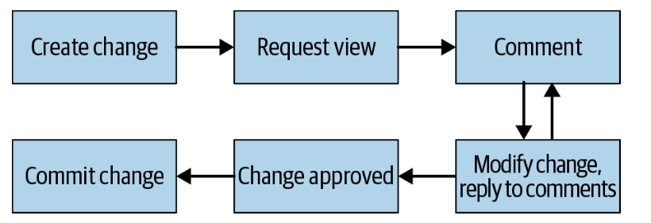
Figure 19-1. The code review flow
Typical review steps go as follows:
- Create a change. A user authors a change to the codebase in their workspace. This author then uploads a snapshot (showing a patch at a particular point in time) to Critique, which triggers the run of automatic code analyzers (see Chapter 20).
- Request review. After the author is satisfied with the diff of the change and the result of the analyzers shown in Critique, they mail the change to one or more reviewers.
- Comment. Reviewers open the change in Critique and draft comments on the diff. Comments are by default marked as unresolved, meaning they are crucial for the author to address. Additionally, reviewers can add resolved comments that are optional or informational. Results from automatic code analyzers, if present, are also visible to reviewers. Once a reviewer has drafted a set of comments, they need to publish them in order for the author to see them; this has the advantage of allowing a reviewer to provide a complete thought on a change atomically, after having reviewed the entire change. Anyone can comment on changes, providing a “drive-by review” as they see it necessary.
- Modify change and reply to comments. The author modifies the change, uploads new snapshots based on the feedback, and replies back to the reviewers. The author addresses (at least) all unresolved comments, either by changing the code or just replying to the comment and changing the comment type to be resolved. The author and reviewers can look at diffs between any pairs of snapshots to see what changed. Steps 3 and 4 might be repeated multiple times.
- Change approval. When the reviewers are happy with the latest state of the change, they approve the change and mark it as “looks good to me” (LGTM). They can optionally include comments to address. After a change is deemed good for submission, it is clearly marked green in the UI to show this state.
- Commit a change. Provided the change is approved (which we’ll discuss shortly), the author can trigger the commit process of the change. If automatic analyzers and other precommit hooks (called “presubmits”) don’t find any problems, the change is committed to the codebase.
典型的审查步骤如下：
- 创建一个变更。 一个用户对其工作区的代码库进行变更。然后这个作者向Critique上传一个快照（显示某一特定时间点的补丁），这将触发自动代码分析器的运行（见第20章）。
- 要求审查。 在作者对修改的差异和Critique中显示的分析器的结果感到满意后，他们将修改发送给一个或多个审查员。
- **评论。**评论者在Critique中打开修改，并对diff起草评论。评论默认标记为未解决，意味着它们对作者来说是至关重要的。此外，评论者可以添加已解决的评论，这些评论是可选的或信息性的。自动代码分析器的结果，如果存在的话，也可以让审查者看到。一旦审查者起草了一组评论，他们需要发布它们，以便作者看到它们；这样做的好处是允许审查者在审查了整个修改后，以原子方式提供一个完整的想法。任何人都可以对变更发表评论，并在他们认为必要时提供“驱动式审查”。
- 修改变更并回复评论。 作者修改变更，根据反馈上传新的快照，并回复评论者。作者处理（至少）所有未解决的评论，要么修改代码，要么直接回复评论并将评论类型改为解决。作者和审稿人可以查看任何一对快照之间的差异，看看有什么变化。步骤3和4可能要重复多次。
- 变更批准。 当审查者对修改的最新状态感到满意时，他们会批准变更，并将其标记为 “我觉得不错"（LGTM）。他们可以选择包含已解决的评论。更改被认为适合提交后，在UI中会清楚地标记为绿色以显示此状态。
- 提交变更。 只要变更被批准（我们很快会讨论），作者就可以触发变更的提交过程。如果自动分析器和其他预提交钩子（称为 "预提交"）没有发现任何问题，该变更就被提交到代码库中。
Even after the review process is started, the entire system provides significant flexibility to deviate from the regular review flow. For example, reviewers can un-assign themselves from the change or explicitly assign it to someone else, and the author can postpone the review altogether. In emergency cases, the author can forcefully commit their change and have it reviewed after commit.
即使在审查过程开始后，整个系统也提供了很大的灵活性来偏离常规的审查流程。例如，评审员可以取消自己对修改的分配，或者明确地将其分配给其他人，而作者可以完全推迟评审。在紧急情况下，作者可以强行提交他们的修改，并在提交后对其进行审查。
Notifications 通知
As a change moves through the stages outlined earlier, Critique publishes event notifications that might be used by other supporting tools. This notification model allows Critique to focus on being a primary code review tool instead of a general purpose tool, while still being integrated into the developer workflow. Notifications enable a separation of concerns such that Critique can just emit events and other systems build off of those events.
当一个变更经过前面概述的阶段时，Critique 会发布可能被其他支持工具使用的事件通知。这种通知模式使Critique能够专注于成为一个主要的代码审查工具，而不是一个通用的工具，同时仍然能够集成到开发人员的工作流程中。通知实现了关注点的分离，这样Critique就可以直接发出事件，而其他系统则基于这些事件进行开发。
For example, users can install a Chrome extension that consumes these event notifications. When a change needs the user’s attention—for example, because it is their turn to review the change or some presubmit fails—the extension displays a Chrome notification with a button to go directly to the change or silence the notification. We have found that some developers really like immediate notification of change updates, but others choose not to use this extension because they find it is too disruptive to their flow.
例如，用户可以安装使用这些事件通知的Chrome扩展。当一个变更需要用户注意时——例如，当更改需要用户注意时，由于轮到用户查看更改或某个预提交失败——该扩展会显示一个Chrome通知，其中有一个按钮可直接转到更改或使通知静默。我们发现，一些开发者非常喜欢即时的变更更新通知，但也有人选择不使用这个扩展，因为他们觉得这对他们的工作流程太过干扰。
Critique also manages emails related to a change; important Critique events trigger email notifications. In addition to being displayed in the Critique UI, some analyzer findings are configured to also send the results out by email. Critique also processes email replies and translates them to comments, supporting users who prefer an email-based flow. Note that for many users, emails are not a key feature of code review; they use Critique’s dashboard view (discussed later) to manage reviews.
Critique还管理与变化有关的电子邮件；重要的Critique事件会触发电子邮件通知。除了在 Critique UI 中显示外，一些分析器的结果也被配置为通过电子邮件发送。Critique 还处理电子邮件回复并将其转换为评论，支持喜欢基于电子邮件的流程的用户。请注意，对许多用户来说，电子邮件并不是代码审查的一个关键特征；他们使用 Critique 的仪表盘视图（后面会讨论）来管理评论。
Stage 1: Create a Change 阶段1：创建一个变更
A code review tool should provide support at all stages of the review process and should not be the bottleneck for committing changes. In the prereview step, making it easier for change authors to polish a change before sending it out for review helps reduce the time taken by the reviewers to inspect the change. Critique displays change diffs with knobs to ignore whitespace changes and highlight move-only changes. Critique also surfaces the results from builds, tests, and static analyzers, including style checks (as discussed in Chapter 9).
代码审查工具应该在审查过程的各个阶段提供支持，不应该成为提交更改的瓶颈。在审查前的步骤中，让修改者在送出审查前更容易打磨修正，有助于减少审查者检查修改的时间。Critique在显示修改差异时，可以忽略空白处的修改，并突出显示纯移动的修改。Critique还可以显示构建、测试和静态分析器的结果，包括样式检查（如第9章中所讨论的）。
Showing an author the diff of a change gives them the opportunity to wear a different hat: that of a code reviewer. Critique lets a change author see the diff of their changes as their reviewer will, and also see the automatic analysis results. Critique also supports making lightweight modifications to the change from within the review tool and suggests appropriate reviewers. When sending out the request, the author can also include preliminary comments on the change, providing the opportunity to ask reviewers directly about any open questions. Giving authors the chance to see a change just as their reviewers do prevents misunderstanding.
向作者展示修改的差异，让他们有机会拥有不同的思路：代码审查者的思路。Critique可以让更改作者像他们的审查者一样看到他们的更改的差异，也可以看到自动分析的结果。Critique还支持在审查工具中对变更进行轻量级的更改，并推荐合适的审查者。在发送请求时，作者也可以包括对修改的初步评论，提供机会直接向审查者询问任何公开的问题。让作者有机会像他们的审查者一样看到一个变化，可以防止误解。
To provide further context for the reviewers, the author can also link the change to a specific bug. Critique uses an autocomplete service to show relevant bugs, prioritizing bugs that are assigned to the author.
为了给审阅者提供进一步的上下文，作者还可以将更改链接到特定的bug。评论使用自动完成服务来显示相关的bug，并对分配给作者的bug进行优先级排序。
Diffing 差异点
The core of the code review process is understanding the code change itself. Larger changes are typically more difficult to understand than smaller ones. Optimizing the diff of a change is thus a core requirement for a good code review tool.
代码审查过程的核心是理解代码变更本身。较大的变化通常比小的变化更难理解。因此，优化变更的差异是一个好的代码审查工具的核心要求。
In Critique, this principle translates onto multiple layers (see Figure 19-2). The diffing component, starting from an optimized longest common subsequence algorithm, is enhanced with the following:
- Syntax highlighting
- Cross-references (powered by Kythe; see Chapter 17)
- Intraline diffing that shows the difference on character-level factoring in the word boundaries (Figure 19-2)
- An option to ignore whitespace differences to a varying degree
- Move detection, in which chunks of code that are moved from one place to another are marked as being moved (as opposed to being marked as removed here and added there, as a naive diff algorithm would)
在Critique中，这一原则转化为多个层面（见图19-2）。从优化的最长共同子序列算法开始，diffing组件得到了以下增强：
- 语法高亮
- 交叉引用（由Kythe提供，见第17章）
- 字符内差分，显示字符级的差异，并考虑到词的边界（图19-2）。
- 在不同程度上忽略空白差异的选项。
- 移动检测，在这种检测中，从一个地方移动到另一个地方的代码块被标记为正在移动（而不是像朴素的diff算法那样，在这里被标记为删除，在那里被添加）。
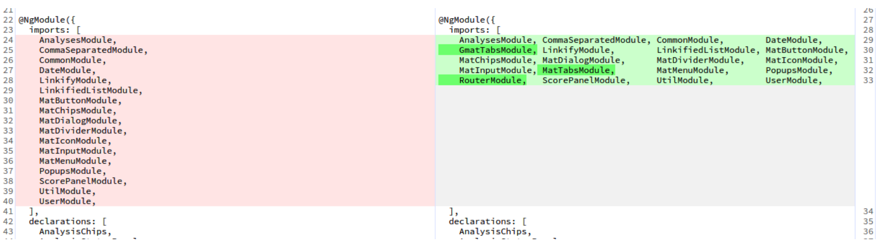
Figure 19-2. Intraline diffing showing character-level differences
Users can also view the diff in various different modes, such as overlay and side by side. When developing Critique, we decided that it was important to have side-by- side diffs to make the review process easier. Side-by-side diffs take a lot of space: to make them a reality, we had to simplify the diff view structure, so there is no border, no padding—just the diff and line numbers. We also had to play around with a variety of fonts and sizes until we had a diff view that accommodates even for Java’s 100- character line limit for the typical screen-width resolution when Critique launched (1,440 pixels).
用户还可以以各种不同的模式查看diff，如叠加和并排。在开发Critique时，我们决定必须有并排的diff，使审查过程更容易。并排diff需要很大的空间：为了使它们成为现实，我们必须简化diff视图结构，因此没有边框，没有填充，只有diff和行号。我们还不得不使用各种字体和尺寸，直到我们有了一种差异视图，即使是在Critique启动时典型的屏幕宽度分辨率（1440像素）下，也能满足Java的100个字符行数限制。
Critique further supports a variety of custom tools that provide diffs of artifacts produced by a change, such as a screenshot diff of the UI modified by a change or configuration files generated by a change.
Critique还支持各种定制工具，这些工具提供由变更产生的构件diff，例如由变更修改的UI屏幕截图差异或由变更生成的配置文件。
To make the process of navigating diffs smooth, we were careful not to waste space and spent significant effort ensuring that diffs load quickly, even for images and large files and/or changes. We also provide keyboard shortcuts to quickly navigate through files while visiting only modified sections.
为了使浏览diff的过程顺利进行，我们小心翼翼地避免浪费空间，并花费大量精力确保diff加载迅速，即使是图片和大文件和/或更改。我们还提供快捷键，以便在仅访问更改的部分时快速浏览文件。
When users drill down to the file level, Critique provides a UI widget with a compact display of the chain of snapshot versions of a file; users can drag and drop to select which versions to compare. This widget automatically collapses similar snapshots, drawing focus to important snapshots. It helps the user understand the evolution of a file within a change; for example, which snapshots have test coverage, have already been reviewed, or have comments. To address concerns of scale, Critique prefetches everything, so loading different snapshots is very quick.
当用户深入到文件层面时，Critique提供了一个UI小工具，紧凑地显示了文件的快照版本链；用户可以通过拖放来选择要比较的版本。这个小组件会自动折叠相似的快照，将注意力集中在重要的快照上。它帮助用户理解文件在变更中的演变；例如，哪些快照有测试覆盖率，已经被审查过，或者有评论。为了解决规模问题，Critique预取了所有内容，所以加载不同的快照非常快。
Analysis Results 分析结果
Uploading a snapshot of the change triggers code analyzers (see Chapter 20). Critique displays the analysis results on the change page, summarized by analyzer status chips shown below the change description, as depicted in Figure 19-3, and detailed in the Analysis tab, as illustrated in Figure 19-4.
上传变更的快照会触发代码分析器（见第20章）。Critique将分析结果显示在变更页面上，按分析器状态筹码汇总，显示在变更描述下面，如图19-3所示，并在分析标签中详细说明，如图19-4所示。
Analyzers can mark specific findings to highlight in red for increased visibility. Analyzers that are still in progress are represented by yellow chips, and gray chips are displayed otherwise. For the sake of simplicity, Critique offers no other options to mark or highlight findings—actionability is a binary option. If an analyzer produces some results (“findings”), clicking the chip opens up the findings. Like comments, findings can be displayed inside the diff but styled differently to make them easily distinguishable. Sometimes, the findings also include fix suggestions, which the author can preview and choose to apply from Critique.
分析器可以标记特定的结果，以红色突出显示，以提高可视性。仍在进行中的分析器由黄色卡片表示，否则显示灰色卡片。为了简单起见，Critique没有提供其他选项来标记或突出研究结果--可操作性是一个二元选项。如果一个分析器产生了一些结果（"研究结果"），点击卡片就可以打开研究结果。像评论一样，研究结果可以显示在diff里面，但风格不同，使它们容易区分。有时，研究结果也包括修正建议，作者可以预先查看这些建议，并从评论中选择应用。
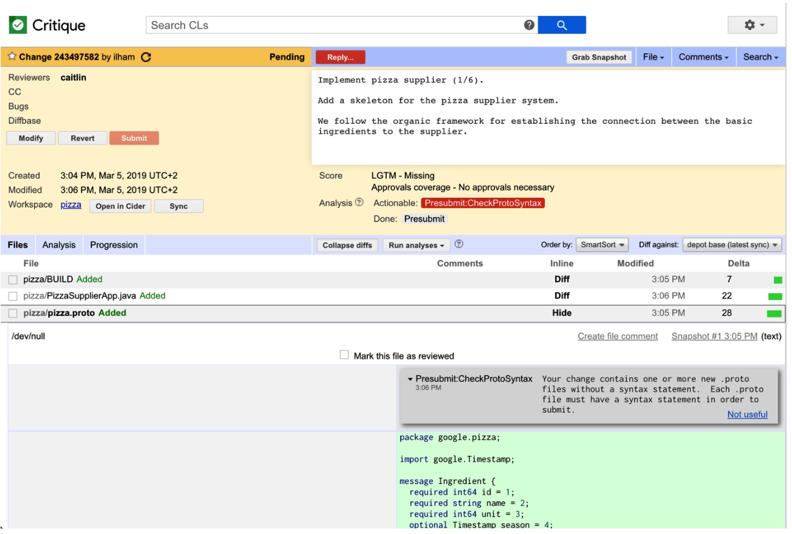
Figure 19-3. Change summary and diff view
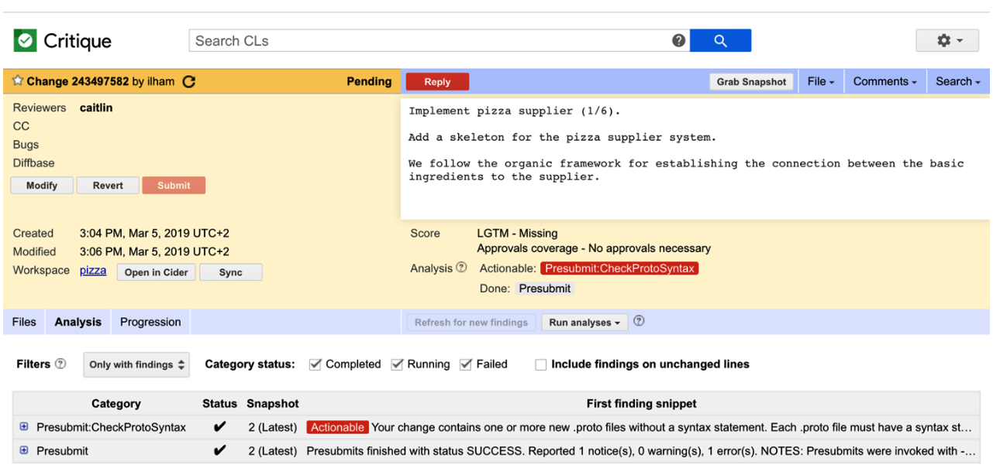
Figure 19-4. Analysis results
For example, suppose that a linter finds a style violation of extra spaces at the end of the line. The change page will display a chip for that linter. From the chip, the author can quickly go to the diff showing the offending code to understand the style violation with two clicks. Most linter violations also include fix suggestions. With a click, the author can preview the fix suggestion (for example, remove the extra spaces), and with another click, apply the fix on the change.
例如，假设一个人发现行末有多余的空格，是违反风格的。更改页面将显示该linter的卡片。从卡片中，作者可以快速转到显示违规代码的diff，只需点击两次就能了解样式违规。大多数违规的linter也包括修复建议。通过点击，作者可以预览修正建议（例如，删除多余的空格），并通过另一次点击，在修改中应用修正。
Tight Tool Integration 紧密的工具集成
Google has tools built on top of Piper, its monolithic source code repository (see Chapter 16), such as the following:
- Cider, an online IDE for editing source code stored in the cloud
- Code Search, a tool for searching code in the codebase
- Tricorder, a tool for displaying static analysis results (mentioned earlier)
- Rapid, a release tool that packages and deploys binaries containing a series of changes
- Zapfhahn, a test coverage calculation tool
谷歌拥有建立在Piper--其单体源代码库（见第16章）之上的工具，例如以下这些:
- Cider，用于编辑云中存储的源代码的在线IDE
- 代码搜索，用于在代码库中搜索代码的工具
- Tricorder，用于显示静态分析结果的工具（前面提到）
- Rapid，一个打包和部署包含一系列更改的二进制文件的发布工具
- Zapfhahn，一个测试覆盖率计算工具
Additionally, there are services that provide context on change metadata (for example, about users involved in a change or linked bugs). Critique is a natural melting pot for a quick one-click/hover access or even embedded UI support to these systems, although we need to be careful not to sacrifice simplicity. For example, from a change page in Critique, the author needs to click only once to start editing the change further in Cider. There is support to navigate between cross-references using Kythe or view the mainline state of the code in Code Search (see Chapter 17). Critique links out to the release tool so that users can see whether a submitted change is in a specific release. For these tools, Critique favors links rather than embedding so as not to distract from the core review experience. One exception here is test coverage: the information of whether a line of code is covered by a test is shown by different background colors on the line gutter in the file’s diff view (not all projects use this coverage tool).
此外，还有一些服务可以提供变更元数据的上下文（例如，关于参与变更的用户或链接的错误）。Critique是一个很自然的熔炉，它可以快速地一键/悬停访问这些系统，甚至支持嵌入式UI，尽管我们需要小心不要牺牲简单性。例如，在Critique的更改页面上，作者只需要点击一次就可以在Cider中进一步编辑修改。我们支持使用Kythe在交叉引用之间进行导航，或在代码搜索中查看代码的主线状态（见第17章）。Critique链接到发布工具，这样用户就可以看到提交的变更是否在一个特定的版本中。对于这些工具，Critique更倾向于链接而不是嵌入，这样就不会分散对核心评审经验的注意力。这里的一个例外是测试覆盖率：测试是否覆盖代码行的信息由文件的diff视图中的行槽上的不同背景色显示（并非所有项目都使用此覆盖率工具）。
Note that tight integration between Critique and a developer’s workspace is possible because of the fact that workspaces are stored in a FUSE-based filesystem, accessible beyond a particular developer’s computer. The Source of Truth is hosted in the cloud and accessible to all of these tools.
请注意，Critique和开发者的工作空间之间的紧密结合是可能的，因为工作空间存储在一个基于FUSE的文件系统中，可以在特定开发者的计算机之外访问。真相之源托管在云中，所有这些工具都可以访问。
Stage 2: Request Review 阶段2：发送审查
After the author is happy with the state of the change, they can send it for review, as depicted in Figure 19-5. This requires the author to pick the reviewers. Within a small team, finding a reviewer might seem simple, but even there it is useful to distribute reviews evenly across team members and consider situations like who is on vacation. To address this, teams can provide an email alias for incoming code reviews. The alias is used by a tool called GwsQ (named after the initial team that used this technique:
(Google Web Server) that assigns specific reviewers based on the configuration linked to the alias. For example, a change author can assign a review to some-team-list-alias, and GwsQ will pick a specific member of some-team-list-alias to perform the review.
在作者对更改的状态感到满意后，他们可以把它送去审查，如图19-5中所描述的。这需要作者挑选审查者。在一个小团队内，寻找审查者可能看起来很简单，但是即使在团队成员之间均匀地分配评论，也需要考虑像是谁休假的情况。为了解决这个问题，团队可以为收到的代码审查提供一个电子邮件别名。这个别名被一个叫做GwsQ的工具所使用（以最初使用这种技术的团队命名： （谷歌网络服务器），它根据链接到别名的配置分配特定的审阅者。例如，变更作者可以将评审分配给某个团队列表别名，GwsQ将选择某个团队列表别名的特定成员来执行评审。
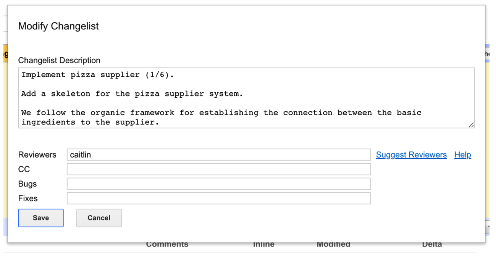
Figure 19-5. Requesting reviewers
Given the size of Google’s codebase and the number of people modifying it, it can be difficult to find out who is best qualified to review a change outside your own project. Finding reviewers is a problem to consider when reaching a certain scale. Critique must deal with scale. Critique offers the functionality to propose sets of reviewers that are sufficient to approve the change. The reviewer selection utility takes into account the following factors:
- Who owns the code that is being changed (see the next section)
- Who is most familiar with the code (i.e., who recently changed it)
- Who is available for review (i.e., not out of office and preferably in the same time zone)
- The GwsQ team alias setup
考虑到谷歌代码库的规模和修改代码的人数，很难找出谁最有资格审查你自己项目之外的变更。发现审查者在达到一定的规模时要考虑的问题。评论必须处理规模问题。Critique提供了建议一组足以批准更改的审阅者的功能。评审员的选择工具考虑到了以下因素:
- 谁拥有被修改的代码（见下一节）
- 谁对该代码最熟悉（即，谁最近修改过该代码）。
- 谁可以进行审查（即不脱产，最好在同一时区）。
- GwsQ团队的别名设置
Assigning a reviewer to a change triggers a review request. This request runs “presubmits” or precommit hooks applicable to the change; teams can configure the presubmits related to their projects in many ways. The most common hooks include the following:
- Automatically adding email lists to changes to raise awareness and transparency
- Running automated test suites for the project
- Enforcing project-specific invariants on both code (to enforce local code style restrictions) and change descriptions (to allow generation of release notes or other forms of tracking)
为一个变更指定一个审查员会触发一个审查请求。该请求运行适用于该变更的 "预提交"或预提交钩子；团队可以以多种方式配置与他们的项目相关的预提交。最常见的钩子包括以下内容：
- 自动将电子邮件列表添加到更改中，以提高意识和透明度
- 为项目运行自动化测试套件
- 对代码（强制执行本地代码风格限制）和变更描述（允许生成发布说明或其他形式的跟踪）执行项目特定的不变因素
As running tests is resource intensive, at Google they are part of presubmits (run when requesting review and when committing changes) rather than for every snapshot like Tricorder checks. Critique surfaces the result of running the hooks in a similar way to how analyzer results are displayed, with an extra distinction to highlight the fact that a failed result blocks the change from being sent for review or committed. Critique notifies the author via email if presubmits fail.
由于运行测试是资源密集型的，在Google，它们是预提交的一部分（在请求审查和提交修改时运行），而不是像Tricorder检查那样为每个快照运行。Critique以类似于分析器结果的方式显示运行钩子的结果，并有一个额外的区别，即失败的结果会阻止修改被送审或提交。如果预提交失败，Critique会通过电子邮件通知作者。
Stages 3 and 4: Understanding and Commenting on a Change 阶段3和4：理解和评论变更
After the review process starts, the author and the reviewers work in tandem to reach the goal of committing changes of high quality.
审查过程开始后，作者和审查员协同工作，以达到提交高质量变更的目标。
Commenting 评论
Making comments is the second most common action that users make in Critique after viewing changes (Figure 19-6). Commenting in Critique is free for all. Anyone—not only the change author and the assigned reviewers—can comment on a change.
发表评论是用户在Critique查看修改后的第二常见的行为（图19-6）。评论中的评论对所有人都是公开的。任何人——不仅仅是修改作者和指定的评审者——都可以对更改进行评论。
Critique also offers the ability to track review progress via per-person state. Reviewers have checkboxes to mark individual files at the latest snapshot as reviewed, helping the reviewer keep track of what they have already looked at. When the author modifies a file, the “reviewed” checkbox for that file is cleared for all reviewers because the latest snapshot has been updated.
评论还提供了通过个人状态跟踪审查进度的能力。审阅者有复选框将最新快照中的单个文件标记为已审阅，以帮助审阅者跟踪他们已查看的内容。当作者修改文件时，所有审阅者都会清除该文件的“审阅”复选框，因为最新快照已更新。
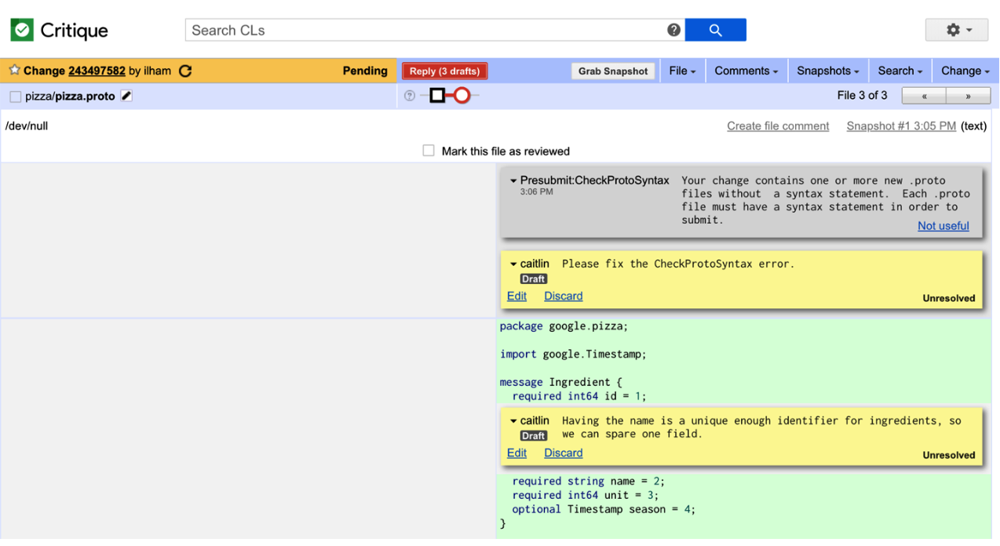
Figure 19-6. Commenting on the diff view
When a reviewer sees a relevant analyzer finding, they can click a “Please fix” button to create an unresolved comment asking the author to address the finding. Reviewers can also suggest a fix to a change by inline editing the latest version of the file. Critique transforms this suggestion into a comment with a fix attached that can be applied by the author.
当审查者看到一个相关的分析器发现时，他们可以点击 "请修复"按钮，创建一个未解决的评论，要求作者解决这个问题。审查者还可以通过内联编辑文件的最新版本来建议修改。Critique将此建议转换为评论，并附上一个作者可以应用的修复程序。
Critique does not dictate what comments users should create, but for some common comments, Critique provides quick shortcuts. The change author can click the “Done” button on the comment panel to indicate when a reviewer’s comment has been addressed, or the “Ack” button to acknowledge that the comment has been read, typically used for informational or optional comments. Both have the effect of resolving the comment thread if it is unresolved. These shortcuts simplify the workflow and reduce the time needed to respond to review comments.
Critique 没有规定用户应该创建什么评论，但对于一些常见的评论，Critique 提供了快速的快捷方式。修改者可以点击评论面板上的 "完成"按钮，以表示审查者的评论已被解决，或者点击 "Ack"按钮，以确认评论已被阅读，通常用于信息性或选择性评论。如果标注的评论未被解决，两者都有解决的效果。这些快捷方式简化了工作流程，减少了回复评论所需的时间。
As mentioned earlier, comments are drafted as-you-go, but then “published” atomically, as shown in Figure 19-7. This allows authors and reviewers to ensure that they are happy with their comments before sending them out.
如前所述，评论是随心所欲地起草的，但随后以原子方式 "发表"，如图19-7所示。这允许作者和审查者在发送评论之前确保他们对自己的评论感到满意。
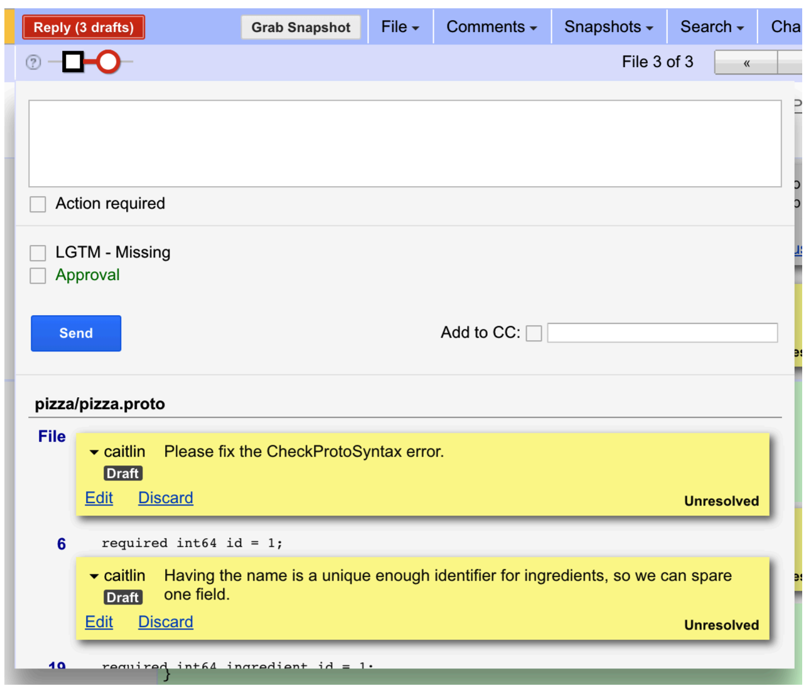
Figure 19-7. Preparing comments to the author
Understanding the State of a Change 了解变化的状态
Critique provides a number of mechanisms to make it clear where in the comment- and-iterate phase a change is currently located. These include a feature for determining who needs to take action next, and a dashboard view of review/author status for all of the changes with which a particular developer is involved.
Critique提供了一些机制，使人们清楚地了解到某项修改目前处于评论和迭代阶段的什么位置。这些机制包括确定谁需要采取下一步行动的功能，以及特定开发者参与的所有修改的审查/作者状态的仪表盘视图。
“Whose turn” feature “轮到谁”功能
One important factor in accelerating the review process is understanding when it’s your turn to act, especially when there are multiple reviewers assigned to a change. This might be the case if the author wants to have their change reviewed by a software engineer and the user-experience person responsible for the feature, or the SRE carrying the pager for the service. Critique helps define who is expected to look at the change next by managing an attention set for each change.
加快审查过程的一个重要因素是了解什么时候轮到你干活了，特别是当有多个审查员被分配到一个变更时。如果作者想让软件工程师和负责该功能的用户体验人员审查他们的变更，或者为服务准备部署的SRE人员审查其更改，可能就是这种情况。通过管理每个变更的关注集，评论有助于确定下一个变更的关注者。
The attention set comprises the set of people on which a change is currently blocked. When a reviewer or author is in the attention set, they are expected to respond in a timely manner. Critique tries to be smart about updating the attention set when a user publishes their comments, but users can also manage the attention set themselves. Its usefulness increases even more when there are more reviewers in the change. The attention set is surfaced in Critique by rendering the relevant usernames in bold.
关注集由当前阻止更改的一组人组成。当评论者或作者在关注集中时，他们应该及时作出回应。Critique自动化地在用户发表评论时更新关注集，但用户也可以自己管理关注集。当变化中的评论者较多时，它的作用就更大了。在Critique中，关注集是通过将相关的用户名用黑体字显示出来的。
After we implemented this feature, our users had a difficult time imagining the previous state. The prevailing opinion is: how did we get along without this? The alternative before we implemented this feature was chatting between reviewers and authors to understand who was dealing with a change. This feature also emphasizes the turn- based nature of code review; it is always at least one person’s turn to take action.
在我们实施这一功能后，我们的用户很难想象以前的状态。普遍的看法是：如果没有这个，我们是怎么过的？在我们实施这个功能之前，另一个选择是审查员和作者之间的聊天，以了解谁在处理一个变化。这个功能也强调了代码审查的轮流性质；总是至少轮到一个人采取行动。
Dashboard and search system 仪表板和搜索系统
Critique’s landing page is the user’s dashboard page, as depicted in Figure 19-8. The dashboard page is divided into user-customizable sections, each of them containing a list of change summaries.
Critique的登陆页面是用户的仪表盘页面，如图19-8所示。仪表盘页面被分为用户可定制的部分，每个部分都包含一个变更摘要列表。
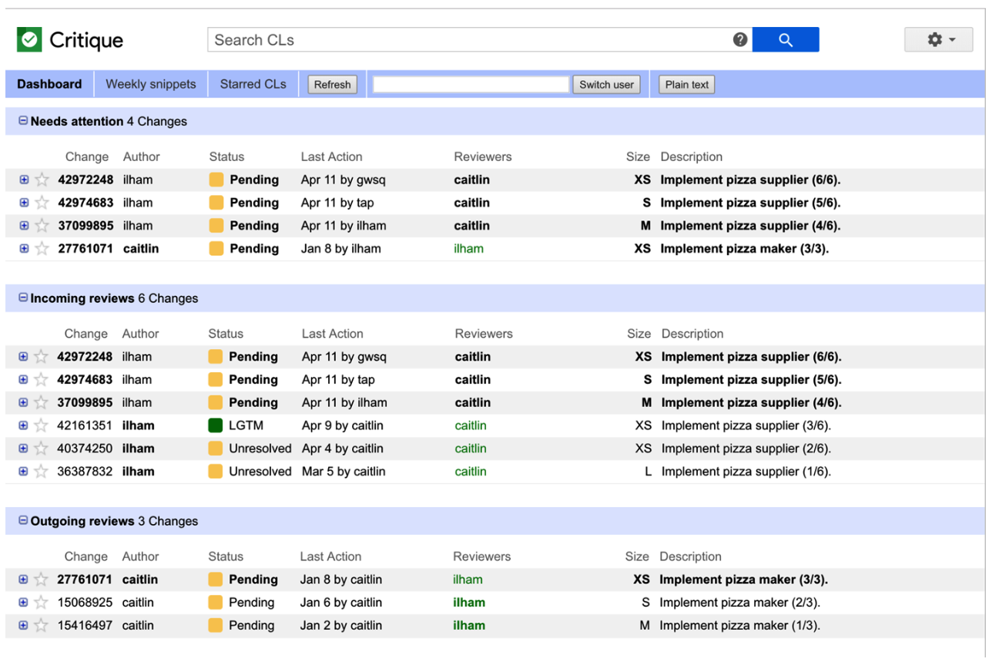
Figure 19-8. Dashboard view
The dashboard page is powered by a search system called Changelist Search. Changelist Search indexes the latest state of all available changes (both pre- and post-submit) across all users at Google and allows its users to look up relevant changes by regular expression–based queries. Each dashboard section is defined by a query to Changelist Search. We have spent time ensuring Changelist Search is fast enough for interactive use; everything is indexed quickly so that authors and reviewers are not slowed down, despite the fact that we have an extremely large number of concurrent changes happening simultaneously at Google.
仪表板页面是由一个名为Changelist Search的搜索系统提供的。Changelist Search索引了谷歌所有用户的所有可用变化的最新状态（包括提交前和提交后），并允许其用户通过基于正则表达式的查询来查找相关变化。每个仪表板部分都由对Changelist Search的查询来定义。我们花了很多时间来确保Changelist Search搜索足够快；所有的东西都被快速索引，这样作者和审稿人就不会被拖慢，尽管事实上谷歌同时出现了大量的并发更改。
To optimize the user experience (UX), Critique’s default dashboard setting is to have the first section display the changes that need a user’s attention, although this is customizable. There is also a search bar for making custom queries over all changes and browsing the results. As a reviewer, you mostly just need the attention set. As an author, you mostly just need to take a look at what is still waiting for review to see if you need to ping any changes. Although we have shied away from customizability in some other parts of the Critique UI, we found that users like to set up their dashboards differently without detracting from the fundamental experience, similar to the way everyone organizes their emails differently.1
为了优化用户体验（UX），Critique的默认仪表盘设置是在第一部分显示需要用户关注的变更，不过这也是可以定制的。还有一个搜索栏，可以对所有修改进行自定义查询，并浏览结果。作为一个审查员，你主要是需要关注的一组。作为一个作者，你大多数时候只需要看一下哪些东西还在等待审查，看看你是否需要修正。尽管我们在Critique用户界面的一些其他部分回避了可定制性，但我们发现用户喜欢以不同的方式设置他们的仪表板，而不影响基本的体验，就像每个人以不同的方式组织他们的电子邮件一样。
1Centralized “global” reviewers for large-scale changes (LSCs) are particularly prone to customizing this dashboard to avoid flooding it during an LSC (see Chapter 22).
1 大规模变更（LSCs）的集中式 "全球 "审查员特别容易定制这个仪表盘，以避免在LSC期间淹没它（见第22章）。
Stage 5: Change Approvals (Scoring a Change) 阶段5：变更批准（对变更进行评分）
Showing whether a reviewer thinks a change is good boils down to providing concerns and suggestions via comments. There also needs to be some mechanism for providing a high-level “OK” on a change. At Google, the scoring for a change is divided into three parts:
- LGTM (“looks good to me”)
- Approval
- The number of unresolved comments
显示一个审查员是否认为一个变更是好的，归根结底是通过评论提供关注和建议。此外，还需要有一些机制来提供一个高水平的 "OK"。在谷歌，对一个变化的打分分为三个部分：
- LGTM（“我觉得不错”）
- 批准
- 未解决的评论的数量
An LGTM stamp from a reviewer means that “I have reviewed this change, believe that it meets our standards, and I think it is okay to commit it after addressing unresolved comments.” An Approval stamp from a reviewer means that “as a gatekeeper, I allow this change to be committed to the codebase.” A reviewer can mark comments as unresolved, meaning that the author will need to act upon them. When the change has at least one LGTM, sufficient approvals and no unresolved comments, the author can then commit the change. Note that every change requires an LGTM regardless of approval status, ensuring that at least two pairs of eyes viewed the change. This simple scoring rule allows Critique to inform the author when a change is ready to commit (shown prominently as a green page header).
审查者的LGTM印章意味着 "我已经审阅了这个变更，相信它符合我们的标准，我认为在解决了未解决的评论之后，可以提交它。" 审查者的批准标识意味着 "作为一个把关人，我允许这个修改被提交到代码库中"。审查者可以将评论标记为未解决，这意味着作者需要对其采取行动。当变更至少有一个LGTM、足够的批准和没有未解决的评论时，作者可以提交变更。请注意，无论批准状态如何，每项变更都需要一个LGTM，以确保至少有两双眼睛查看该变更。这个简单的评分规则使Critique可以在修改准备好提交时通知作者（以绿色页眉的形式突出显示）。
We made a conscious decision in the process of building Critique to simplify this rating scheme. Initially, Critique had a “Needs More Work” rating and also a “LGTM++”. The model we have moved to is to make LGTM/Approval always positive. If a change definitely needs a second review, primary reviewers can add comments but without LGTM/Approval. After a change transitions into a mostly-good state, reviewers will typically trust authors to take care of small edits—the tooling does not require repeated LGTMs regardless of change size.
在建立Critique的过程中，我们有意识地决定简化这一评分方案。最初，Critique有一个 "需要更多工作"的评级，也有一个 "LGTM++"。我们所采用的模式是使 LGTM/批准 总是积极的。如果变更确实需要第二次审核，主要审查者可以添加内容，但无需LGTM/批准。在一个变化过渡到基本良好的状态后，审查员通常会相信作者会处理好小的编辑--无论变更大小如何，该工具都不需要重复LGTM。
This rating scheme has also had a positive influence on code review culture. Reviewers cannot just thumbs-down a change with no useful feedback; all negative feedback from reviewers must be tied to something specific to be fixed (for example, an unresolved comment). The phrasing “unresolved comment” was also chosen to sound relatively nice.
这种评分方案也对代码审查文化产生了积极影响。审查者不能在没有任何有用反馈的情况下对一个改动竖起大拇指；所有来自审查者的负面反馈都必须与需要修复的具体内容相联系（例如，一个未解决的评论）。选择 "未解决的评论 "这一措辞也是为了听起来比较好。
Critique includes a scoring panel, next to the analysis chips, with the following information:
- Who has LGTM’ed the change
- What approvals are still required and why
- How many unresolved comments are still open
批评包括一个打分板，在分析卡片旁边，有以下信息:
- 谁进行了变更
- 还需要哪些批准，为什么？
- 有多少的评论仍未解决
Presenting the scoring information this way helps the author quickly understand what they still need to do to get the change committed.
以这种方式呈现评分信息有助于作者快速了解他们仍然需要做些什么才能实现更改。
LGTM and Approval are hard requirements and can be granted only by reviewers. Reviewers can also revoke their LGTM and Approval at any time before the change is committed. Unresolved comments are soft requirements; the author can mark a comment “resolved” as they reply. This distinction promotes and relies on trust and communication between the author and the reviewers. For example, a reviewer can LGTM the change accompanied with unresolved comments without later on checking precisely whether the comments are truly addressed, highlighting the trust the reviewer places on the author. This trust is particularly important for saving time when there is a significant difference in time zones between the author and the reviewer. Exhibiting trust is also a good way to build trust and strengthen teams.
LGTM和批准是硬性要求，只能由审查者授予。在提交变更之前，审查者还可以随时撤销其LGTM和批准。未解决的评论是软性要求；作者可以在回复时将评论标记为 "已解决"。这种区别促进并依赖于作者和审查者之间的信任和沟通。例如，审查者可以在LGTM的修改中伴随着未解决的评论，而不需要后来精确地检查这些评论是否真正被解决，这突出了审稿人对作者的信任。当作者和审稿人之间存在明显的时区差异时，这种信任对于节省时间尤为重要。展现信任也是建立信任和加强团队的一个好方法。
Stage 6: Commiting a Change 阶段6：提交变更
Last but not least, Critique has a button for committing the change after the review to avoid context-switching to a command-line interface.
最后但并非最不重要的是，Critique有一个在审查后提交修改的按钮，以避免上下文切换到命令行界面。
After Commit: Tracking History 提交后：跟踪历史记录
In addition to the core use of Critique as a tool for reviewing source code changes before they are committed to the repository, Critique is also used as a tool for change archaeology. For most files, developers can view a list of the past history of changes that modified a particular file in the Code Search system (see Chapter 17), or navigate directly to a change. Anyone at Google can browse the history of a change to generally viewable files, including the comments on and evolution of the change. This enables future auditing and is used to understand more details about why changes were made or how bugs were introduced. Developers can also use this feature to learn how changes were engineered, and code review data in aggregate is used to produce trainings.
除了Critique的核心用途是在源代码修改提交到版本库之前对其进行审查外，Critique还被用作变更考古的工具。对于大多数文件，开发者可以在代码搜索系统中查看过去修改某个文件的历史列表（见第17章），或者直接导航到某个修改。Google的任何人都可以浏览一般可查看文件的修改历史，包括对修改的评论和演变。这使未来的审计成为可能，并被用来了解更多的细节，如为什么会做出改变或如何引入bug。开发人员也可以使用这个功能来了解变化是如何被设计的，代码审查数据的汇总被用来制作培训。
Critique also supports the ability to comment after a change is committed; for example, when a problem is discovered later or additional context might be useful for someone investigating the change at another time. Critique also supports the ability to roll back changes and see whether a particular change has already been rolled back.
Critique 还支持在修改提交后进行评论的能力；例如，当后来发现问题或额外的背景可能对另一个时间调查修改的人有用。Critique还支持回滚修改的能力，以及查看某一修改是否已经被回滚。
Case Study: Gerrit 案例研究：Gerrit
Although Critique is the most commonly used review tool at Google, it is not the only one. Critique is not externally available due to its tight interdependencies with our large monolithic repository and other internal tools. Because of this, teams at Google that work on open source projects (including Chrome and Android) or internal projects that can’t or don’t want to be hosted in the monolithic repository use a different code review tool: Gerrit.
尽管Critique是Google最常用的审查工具，但它并不是唯一的工具。由于Critique与我们的大型单体库和其他内部工具有紧密的相互依赖关系，所以Critique不能对外使用。正因为如此，在谷歌从事开源项目（包括Chrome和Android）或内部项目的团队，如果不能或不想托管在单片库中，就会使用另一种代码审查工具：Gerrit。
Gerrit is a standalone, open source code review tool that is tightly integrated with the Git version control system. As such, it offers a web UI to many Git features including code browsing, merging branches, cherry-picking commits, and, of course, code review. In addition, Gerrit has a fine-grained permission model that we can use to restrict access to repositories and branches.
Gerrit是一个独立的开源代码审查工具，与Git版本控制系统紧密集成。因此，它为许多Git特性提供了一个web UI，包括代码浏览、合并分支、提交，当然还有代码审查。此外，Gerrit有一个细粒度的权限模型，我们可以使用它来限制对存储库和分支的访问。
Both Critique and Gerrit have the same model for code reviews in that each commit is reviewed separately. Gerrit supports stacking commits and uploading them for individual review. It also allows the chain to be committed atomically after it’s reviewed.
Critique和Gerrit都有相同的代码评审模型，每个提交都是单独评审的。Gerrit支持堆叠提交并将其上载以供个人审阅。它还允许在对链进行审查后以原子方式提交链
Being open source, Gerrit accommodates more variants and a wider range of use cases; Gerrit’s rich plug-in system enables a tight integration into custom environments. To support these use cases, Gerrit also supports a more sophisticated scoring system. A reviewer can veto a change by placing a –2 score, and the scoring system is highly configurable.
由于是开源的，Gerrit适应了更多的变体和更广泛的用例；Gerrit丰富的插件系统实现了与定制环境的紧密集成。为了支持这些用例，Gerrit还支持更复杂的评分系统。评审员可以通过给-2分否决变更，评分系统是高度可配置的。
You can learn more about Gerrit and see it in action at https://www.gerritcodereview.com.
你可以在https://www.gerritcodereview.com了解更多关于Gerrit的信息，并看到它的运行情况。
Conclusion 总结
There are a number of implicit trade-offs when using a code review tool. Critique builds in a number of features and integrates with other tools to make the review process more seamless for its users. Time spent in code reviews is time not spent coding, so any optimization of the review process can be a productivity gain for the company. Having only two people in most cases (author and reviewer) agree on the change before it can be committed keeps velocity high. Google greatly values the educational aspects of code review, even though they are more difficult to quantify.
在使用代码审查工具时，有一些隐含的权衡因素。Critique内置了许多功能，并与其他工具集成，使用户的审查过程更加完美。花在代码评审上的时间并不是比花在编码上的时间少多少，所以评审过程的任何优化都可以提高公司的生产效率。在大多数情况下，只有两个人（作者和审查者）在提交修改前达成一致，可以保持高速度。谷歌非常重视代码审查的培训方面，尽管它们更难以量化。
To minimize the time it takes for a change to be reviewed, the code review process should flow seamlessly, informing users succinctly of the changes that need their attention and identifying potential issues before human reviewers come in (issues are caught by analyzers and Continuous Integration). When possible, quick analysis results are presented before the longer-running analyses can finish.
为了最大限度地减少评审更改所需的时间，代码评审过程应该无缝流动，简洁地告知用户需要关注的更改，并在人工评审员介入之前确定潜在问题（问题由分析人员和持续集成人员发现）。如果可能，在较长时间运行的分析完成之前，会显示快速分析结果。
There are several ways in which Critique needs to support questions of scale. The Critique tool must scale to the large quantity of review requests produced without suffering a degradation in performance. Because Critique is on the critical path to getting changes committed, it must load efficiently and be usable for special situations such as unusually large changes.2 The interface must support managing user activities (such as finding relevant changes) over the large codebase and help reviewers and authors navigate the codebase. For example, Critique helps with finding appropriate reviewers for a change without having to figure out the ownership/maintainer landscape (a feature that is particularly important for large-scale changes such as API migrations that can affect many files).
Critique需要在几个方面支持规模问题。Critique工具必须在不降低性能的情况下，适应大量的审查请求。由于Critique是在提交修改的关键路径上，它必须有效地加载，并能在特殊情况下使用，如异常大的修改。界面必须支持在大型代码库中管理用户活动（如寻找相关修改），并帮助评审员和作者浏览代码库。例如，Critique有助于为某一变更找到合适的审查者，而不必弄清所有权/维护者的情况（这一功能对于大规模的变更，如可能影响许多文件的API迁移，尤为重要）。
Critique favors an opinionated process and a simple interface to improve the general review workflow. However, Critique does allow some customizability: custom analyzers and presubmits provide specific context on changes, and some team-specific policies (such as requiring LGTM from multiple reviewers) can be enforced.
Critique倾向于采用意见一致的流程和简单的界面来改善一般的审查工作流程。然而，Critique确实允许一些自定义功能：自定义分析器和预提交提供了具体的修改内容，而且可以强制执行一些特定的团队策略（如要求多个审稿人提供LGTM）。
2Although most changes are small (fewer than 100 lines), Critique is sometimes used to review large refactoring changes that can touch hundreds or thousands of files, especially for LSCs that must be executed atomically (see Chapter 22).
2 尽管大多数改动都很小（少于100行），但Critique有时也被用来审查大型的重构改动，这些改动可能会触及成百上千个文件，特别是对于那些必须原子化执行的LSCs（见第22章）。
Trust and communication are core to the code review process. A tool can enhance the experience, but can’t replace them. Tight integration with other tools has also been a key factor in Critique’s success.
信任和沟通是代码审查过程的核心。工具可以增强体验，但不能替代它们。与其他工具的紧密结合也是Critique成功的一个关键因素。
TL;DRs 内容提要
-
Trust and communication are core to the code review process. A tool can enhance the experience, but it can’t replace them.
-
Tight integration with other tools is key to great code review experience.
-
Small workflow optimizations, like the addition of an explicit “attention set,” can increase clarity and reduce friction substantially.
-
信任和沟通是代码审查过程的核心。工具可以增强体验，但不能替代它们。
-
与其他工具的紧密集成是获得优秀代码审查体验的关键。
-
小的工作流程优化，如增加一个明确的 "关注集"，可以提高清晰度并大大减少摩擦。
CHAPTER 20 Static Analysis
第二十章 静态分析
Written by Caitlin Sadowski
Edited by Lisa Carey
Static analysis refers to programs analyzing source code to find potential issues such as bugs, antipatterns, and other issues that can be diagnosed without executing the program. The “static” part specifically refers to analyzing the source code instead of a running program (referred to as “dynamic” analysis). Static analysis can find bugs in programs early, before they are checked in as production code. For example, static analysis can identify constant expressions that overflow, tests that are never run, or invalid format strings in logging statements that would crash when executed.1 However, static analysis is useful for more than just finding bugs. Through static analysis at Google, we codify best practices, help keep code current to modern API versions, and prevent or reduce technical debt. Examples of these analyses include verifying that naming conventions are upheld, flagging the use of deprecated APIs, or pointing out simpler but equivalent expressions that make code easier to read. Static analysis is also an integral tool in the API deprecation process, where it can prevent backsliding during migration of the codebase to a new API (see Chapter 22). We have also found evidence that static analysis checks can educate developers and actually prevent antipatterns from entering the codebase.2
静态分析是指通过程序分析源代码来发现潜在的问题，例如bug、反模式和其他无需执行程序就能发现的问题。“静态”具体是指分析源代码，而不是运行中的程序（即“动态”分析）。它可以在代码被合入生产环境前发现bug，例如，可以识别溢出的常量表达式、永远不会运行的测试用例或日志字符串的无效格式化导致运行崩溃的问题。但静态分析的作用不只是查找bug。通过对Google代码的静态分析，我们编写了最佳实践，帮助推进代码使用最新接口和减少技术债，这些分析的例子包括：校验是否遵循命名规范；标记已弃用但仍然使用的接口；简化表达式以提高代码可读性。静态分析也是弃用某个接口时不可或缺的工具，它可以防止将代码库迁移到新接口时出现“倒退”现象（参见第22章，指被调用系统不断迁移旧接口到新接口，而其他系统不断的调用弃用接口而不调用新接口）。我们还发现静态分析检查可以对开发人员起到启发和约束作用，可以防止开发人员写出反模式的代码。
In this chapter, we’ll look at what makes effective static analysis, some of the lessons we at Google have learned about making static analysis work, and how we implemented these best practices in our static analysis tooling and processes.3
本章我们将介绍如何进行有效的静态分析，包含我们在 Google 了解到的一些关于静态分析工作的经验和我们在静态分析工具和流程中的最佳实践。
1See
http://errorprone.info/bugpatterns.1 查阅
http://errorprone.info/bugpatterns。2Caitlin Sadowski et al. Tricorder: Building a Program Analysis Ecosystem, International Conference on Software Engineering (ICSE), May 2015.
2 Caitlin Sadowski等人，Tricorder。构建一个程序分析生态系统，国际软体工程会议（ICSE），2015年5月。
3A good academic reference for static analysis theory is: Flemming Nielson et al. Principles of Program Analysis (Gernamy: Springer, 2004)
3 关于静态分析理论，一个很好的学术参考资料是。Flemming Nielson等人，《程序分析原理》(Gernamy: Springer, 2004)
有效静态分析的特点
Although there have been decades of static analysis research focused on developing new analysis techniques and specific analyses, a focus on approaches for improving scalability and usability of static analysis tools has been a relatively recent development.
尽管几十年来，静态分析研究一直专注于开发新的分析技术和具体分析，但提高静态分析工具的可扩展性和可用性的方法最近才开始发展。
Scalability 可扩展性
Because modern software has become larger, analysis tools must explicitly address scaling in order to produce results in a timely manner, without slowing down the software development process. Static analysis tools at Google must scale to the size of Google’s multibillion-line codebase. To do this, analysis tools are shardable and incremental. Instead of analyzing entire large projects, we focus analyses on files affected by a pending code change, and typically show analysis results only for edited files or lines. Scaling also has benefits: because our codebase is so large, there is a lot of low- hanging fruit in terms of bugs to find. In addition to making sure analysis tools can run on a large codebase, we also must scale up the number and variety of analyses available. Analysis contributions are solicited from throughout the company. Another component to static analysis scalability is ensuring the process is scalable. To do this, Google static analysis infrastructure avoids bottlenecking analysis results by showing them directly to relevant engineers.
现代软件变得越来越大，为了使分析工具在不减慢软件开发过程的情况下及时生效，必须有效地解决扩展性问题。对 Google 来说，分析工具需要满足 Google 数十亿行代码库的规模。为此，分析工具是分片和增量分析的，即不是分析整个大型项目，而是将分析重点放在受待处理代码变更影响的文件上，并且通常仅显示已编辑文件或行的分析结果。扩展也有好处：因为我们的代码库非常大，这样做在寻找bug时容易的多。除了确保分析工具可以在大型代码库上运行之外，还需要必须扩大可分析的数量和种类。分析器是在整个公司范围内征求的。静态分析可扩展性的另一个组成部分是确保过程是可扩展的，为此，Google静态分析基础架构通过直接向相关工程师展示分析结果来避免造成分析瓶颈。
Usability 可用性
When thinking about analysis usability, it is important to consider the cost-benefit trade-off for static analysis tool users. This “cost” could either be in terms of developer time or code quality. Fixing a static analysis warning could introduce a bug. For code that is not being frequently modified, why “fix” code that is running fine in production? For example, fixing a dead code warning by adding a call to the previously dead code could result in untested (possibly buggy) code suddenly running. There is unclear benefit and potentially high cost. For this reason, we generally focus on newly introduced warnings; existing issues in otherwise working code are typically only worth highlighting (and fixing) if they are particularly important (security issues, significant bug fixes, etc.). Focusing on newly introduced warnings (or warnings on modified lines) also means that the developers viewing the warnings have the most relevant context on them.
考虑可用性时，重要的是要考虑静态分析工具用户的成本效益权衡。这种”成本”可能是开发时间或代码质量。修复静态分析警告可能会引入错误的。对于不经常被修改的代码，为什么要 "修复 "在生产中运行良好的代码？例如，通过添加对死代码(从未被运行过的代码)的调用来修复硬编码警告，可能会导致未经测试（可能有错误）的代码突然运行。这种做法收益不明确，但是成本可能很高。出于这个原因，我们通常只关注新引入的警告，代码中的现有问题通常只在特别重要（安全问题、重大错误修复等）时才值得修复。关注新引入的警告（或修改行上的警告）也意味着查看警告的开发人员具有最相关的上下文和背景。
Also, developer time is valuable! Time spent triaging analysis reports or fixing highlighted issues is weighed against the benefit provided by a particular analysis. If the analysis author can save time (e.g., by providing a fix that can be automatically applied to the code in question), the cost in the trade-off goes down. Anything that can be fixed automatically should be fixed automatically. We also try to show developers reports about issues that actually have a negative impact on code quality so that they do not waste time slogging through irrelevant results.
此外，开发人员的时间很宝贵，要对分析报告进行分类或修复突出问题所花费的时间与特定分析提供的收益进行权衡。如果分析可以节省时间（例如，通过提供可以自动应用于相关代码的修复），则成本就会下降。任何可以自动修复的东西都应该自动修复。我们还尝试向开发人员展示实际上对代码质量有负面影响的问题的报告，这样他们就不会浪费时间费力地处理不相关的分析结果。
To further reduce the cost of reviewing static analysis results, we focus on smooth developer workflow integration. A further strength of homogenizing everything in one workflow is that a dedicated tools team can update tools along with workflow and code, allowing analysis tools to evolve with the source code in tandem.
为了进一步降低查看静态分析结果的成本，我们将重点放在平滑的开发人员工作流程集成上。在一个工作流中同质化所有内容的另一个优势是，一个专门的工具团队可以随着工作流和代码一起更新工具，从而允许分析工具与源代码同步发展。
We believe these choices and trade-offs that we have made in making static analyses scalable and usable arise organically from our focus on three core principles, which we formulate as lessons in the next section.
我们在使静态分析具有可扩展性和可用性方面所做的这些选择和权衡，是从我们对三个核心原则的关注中产生的，我们将在下一节中阐述这三个原则作为经验教训。
Key Lessons in Making Static Analysis Work 静态分析工作中的关键工作
There are three key lessons that we have learned at Google about what makes static analysis tools work well. Let’s take a look at them in the following subsections.
我们在 Google 了解到了如何用好静态分析工具的三个关键点。让我们在下面的小节中看看它们。
Focus on Developer Happiness 关注开发者的幸福感
We mentioned some of the ways in which we try to save developer time and reduce the cost of interacting with the aforementioned static analysis tools; we also keep track of how well analysis tools are performing. If you don’t measure this, you can’t fix problems. We only deploy analysis tools with low false-positive rates (more on that in a minute). We also actively solicit and act on feedback from developers consuming static analysis results, in real time. Nurturing this feedback loop between static analysis tool users and tool developers creates a virtuous cycle that has built up user trust and improved our tools. User trust is extremely important for the success of static analysis tools.
我们提到了一些试图节省开发人员时间并降低与静态分析工具交互成本的方法，我们还跟踪分析工具的性能。如果你不衡量这点，你就无法解决问题。我们只部署误报率较低的分析工具（稍后将详细介绍）。我们还积极征求开发人员对静态分析结果的实时反馈并采取行动，在静态分析工具用户和开发人员之间形成反馈闭环，创造一个良性循环，建立了用户信任，借此改进我们的工具。用户信任对于静态分析工具的成功至关重要。
For static analysis, a “false negative” is when a piece of code contains an issue that the analysis tool was designed to find, but the tool misses it. A “false positive” occurs when a tool incorrectly flags code as having the issue. Research about static analysis tools traditionally focused on reducing false negatives; in practice, low false-positive rates are often critical for developers to actually want to use a tool—who wants to wade through hundreds of false reports in search of a few true ones?4
对于静态分析，“漏报（false negative）”是指一段代码包含分析工具找到的问题，但该工具忽略了该问题，“误报（false positive）”是指工具错误地将代码标记为存在问题。一般来说，静态分析工具的研究侧重于减少误判；实践中，开发者是否真正想要使用工具取决于误报率是否很低——谁愿意在数百个虚假报告中费力寻找一些真实的报告？
Furthermore, perception is a key aspect of the false-positive rate. If a static analysis tool is producing warnings that are technically correct but misinterpreted by users as false positives (e.g., due to confusing messages), users will react the same as if those warnings were in fact false positives. Similarly, warnings that are technically correct but unimportant in the grand scheme of things provoke the same reaction. We call the user-perceived false-positive rate the “effective false positive” rate. An issue is an “effective false positive” if developers did not take some positive action after seeing the issue. This means that if an analysis incorrectly reports an issue, yet the developer happily makes the fix anyway to improve code readability or maintainability, that is not an effective false positive. For example, we have a Java analysis that flags cases in which a developer calls the contains method on a hash table (which is equivalent to containsValue) when they actually meant to call containsKey—even if the developer correctly meant to check for the value, calling containsValue instead is clearer. Similarly, if an analysis reports an actual fault, yet the developer did not understand the fault and therefore took no action, that is an effective false positive.
此外，用户感知是误报率的一个关键方面。如果静态分析工具产生的警告在技术上是正确的，但被用户误解为误报（例如，由于告警消息混乱），用户的反应将与这些警告实际上是误报一样。类似地，技术上正确但在大局中不重要的警告也会引发同样的反应。我们将用户感知的误报率称为“有效误报率”。如果开发者在看到问题后没有采取积极的行动，那么问题就是“有效的误报（effective false positive）”，这意味着，如果一个分析错误地报告了一个问题，但开发人员仍然乐于进行修复，以提高代码的可读性或可维护性，那么这就不是一个有效的误报。例如，我们有一个Java分析，它标记了这样一种情况：当开发人员实际上打算调用containsKey时，开发人员在哈希表（相当于containsValue）上调用contains方法，即使开发人员正确地打算检查值，调用containsValue反而更清晰。同样，如果分析报告了一个实际的故障，但开发人员不了解故障，因此没有采取任何行动，这就是一个有效的误报。
4Note that there are some specific analyses for which reviewers might be willing to tolerate a much higher false-positive rate: one example is security analyses that identify critical problems.
4 请注意，有一些特定的分析，审查员可能愿意容忍更高的误报率：一个例子是识别关键问题的安全分析。
Make Static Analysis a Part of the Core Developer Workflow 使静态分析成为核心开发人员工作流程的一部分
At Google, we integrate static analysis into the core workflow via integration with code review tooling. Essentially all code committed at Google is reviewed before being committed; because developers are already in a change mindset when they send code for review, improvements suggested by static analysis tools can be made without too much disruption. There are other benefits to code review integration. Developers typically context switch after sending code for review, and are blocked on reviewers— there is time for analyses to run, even if they take several minutes to do so. There is also peer pressure from reviewers to address static analysis warnings. Furthermore, static analysis can save reviewer time by highlighting common issues automatically; static analysis tools help the code review process (and the reviewers) scale. Code review is a sweet spot for analysis results.5
在 Google ，我们通过与代码审查工具集成，将静态分析集成到核心工作流中。基本上 Google 提交的所有代码在提交之前都会经过审查，因为开发人员在发送代码供审查时已经改变了心态，所以静态分析工具建议的改进可以在没有太多干扰的情况下进行。代码审查集成还有其他好处，开发人员通常在发送代码进行审查后切换上下文，并且在审查员面前被阻止——即使需要几分钟的时间来运行分析。来自审查员的同行压力也要求解决静态分析警告问题，此外，静态分析可以自动突出常见问题，从而节省审阅者的时间，这有助于代码评审过程（以及审查员）的规模化。代码评审是分析结果的最佳选择。
5See later in this chapter for more information on additional integration points when editing and browsing code.
5 关于编辑和浏览代码时的额外集成点的更多信息，请参见本章后面的内容。
Empower Users to Contribute 允许用户做出贡献
There are many domain experts at Google whose knowledge could improve code produced. Static analysis is an opportunity to leverage expertise and apply it at scale by having domain experts write new analysis tools or individual checks within a tool.
Google有许多领域专家，他们的知识可以改进生成的代码。静态分析创造了一个利用他们的专业知识并大规模应用的机会，即利用领域专家编写新的分析工具或在工具中进行单独检查。
For example, experts who know the context for a particular kind of configuration file can write an analyzer that checks properties of those files. In addition to domain experts, analyses are contributed by developers who discover a bug and would like to prevent the same kind of bug from reappearing anywhere else in the codebase. We focus on building a static analysis ecosystem that is easy to plug into instead of integrating a small set of existing tools. We have focused on developing simple APIs that can be used by engineers throughout Google—not just analysis or language experts— to create analyses; for example, Refaster6 enables writing an analyzer by specifying pre- and post-code snippets demonstrating what transformations are expected by that analyzer.
例如，了解特定类型配置文件上下文的专家可以编写一个分析器来检查这些文件的属性。除了领域专家之外，发现bug并希望防止同类bug在代码库中的任何其他地方再次出现的开发人员也可以提供贡献。我们专注于构建一个易于插入的静态分析生态系统，而不是集成一小部分现有工具。我们专注于开发简单的API，可供整个 Google 的工程师（不仅仅是分析或语言专家）用来创建分析；例如，重构可以通过指定前后代码片段来编写分析器，来达到该分析器期望的效果。
6Louis Wasserman, “Scalable, Example-Based Refactorings with Refaster.” Workshop on Refactoring Tools, 2013.
6 Louis Wasserman，"用Refaster进行可扩展的、基于实例的重构"。重构工具研讨会，2013年。
Tricorder: Google’s Static Analysis Platform Tricorder： Google 的静态分析平台
Tricorder, our static analysis platform, is a core part of static analysis at Google.7 Tricorder came out of several failed attempts to integrate static analysis with the developer workflow at Google;8 the key difference between Tricorder and previous attempts was our relentless focus on having Tricorder deliver only valuable results to its users. Tricorder is integrated with the main code review tool at Google, Critique. Tricorder warnings show up on Critique’s diff viewer as gray comment boxes, as demonstrated in Figure 20-1.
我们的静态分析平台 Tricorder是Google静态分析的核心部分。Tricorder是在Google多次尝试将静态分析与开发人员工作流集成的失败尝试中诞生的，与之前尝试的主要区别在于我们坚持不懈地致力于让Tricorder只为用户提供有价值的结果。Tricorder与 Google 的主要代码审查工具Critique集成在一起。 Tricorder警告在Critique的差异查看器上显示为灰色的注释框，如图 20-1 所示。
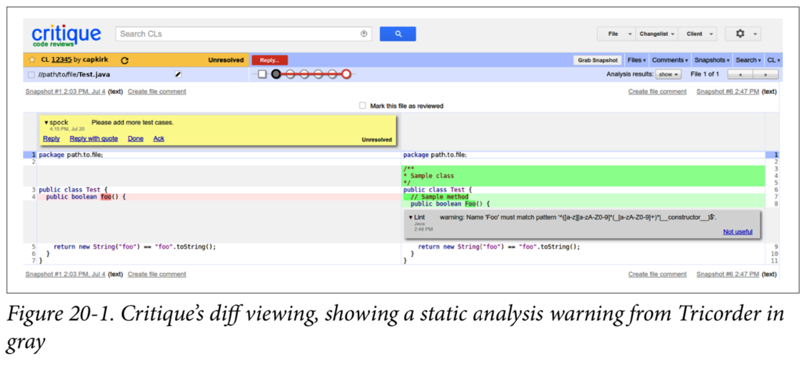
Figure 20-1. Critique’s diff viewing, showing a static analysis warning from Tricorder in gray 图20-1. Critique的diff查看，灰色显示了Tricorder的静态分析警告
To scale, Tricorder uses a microservices architecture. The Tricorder system sends analyze requests to analysis servers along with metadata about a code change. These servers can use that metadata to read the versions of the source code files in the change via a FUSE-based filesystem and can access cached build inputs and outputs. The analysis server then starts running each individual analyzer and writes the output to a storage layer; the most recent results for each category are then displayed in Critique. Because analyses sometimes take a few minutes to run, analysis servers also post status updates to let change authors and reviewers know that analyzers are running and post a completed status when they have finished. Tricorder analyzes more than 50,000 code review changes per day and is often running several analyses per second.
为了方便扩展，Tricorder使用微服务架构。 Tricorder系统将分析请求连同有关代码更改的元数据发送到分析服务器。这些服务器可以使用该元数据通过基于FUSE的文件系统读取更改中源代码文件的版本，并且可以访问缓存的构建输入和输出。然后分析服务器开始运行每个单独的分析器并将输出写入存储层。每个类别的最新结果随后会显示在Critique中。因为分析有时需要等几分钟，分析服务器也会发布状态更新，让代码作者和审查员知道分析器正在运行，并在完成后发布完成状态。Tricorder每天分析超过50,000次代码审查更改，并且通常每秒运行多次分析。整个Google的开发人员编写Tricorder分析（称为“分析器”）或为现有分析贡献单独的“检查”。
Developers throughout Google write Tricorder analyses (called “analyzers”) or contribute individual “checks” to existing analyses. There are four criteria for new Tricorder checks:
- Be understandable
Be easy for any engineer to understand the output. - Be actionable and easy to fix
The fix might require more time, thought, or effort than a compiler check, and the result should include guidance as to how the issue might indeed be fixed. - Produce less than 10% effective false positives
Developers should feel the check is pointing out an actual issue at least 90% of the time. - Have the potential for significant impact on code quality
The issues might not affect correctness, but developers should take them seriously and deliberately choose to fix them.
Tricorder 检查有四个标准：
- 易于理解
任何工程师都可以轻松理解输出结果。 - 可操作且易于修复
与编译器检查相比，修复可能需要更多的时间、思考或尝试，结果应包括有关如何真正修复问题的指导。 - 少于10%的有效误报
开发人员应该觉得检查至少在90%的时间里指出了实际问题。 - 有可能对代码质量产生重大影响
这些问题可能不会影响正确性，但开发人员应该认真对待它们并有意识地选择修复它们。
Tricorder analyzers report results for more than 30 languages and support a variety of analysis types. Tricorder includes more than 100 analyzers, with most being contributed from outside the Tricorder team. Seven of these analyzers are themselves plug-in systems that have hundreds of additional checks, again contributed from developers across Google. The overall effective false-positive rate is just below 5%.
Tricorder分析仪报告支持30种语言，并支持多种分析类型。Tricorder包括100多个分析器，其中大部分来自Tricorder团队外部。 其中七个分析器本身就是插件系统，具有数百项额外检查，由 Google 的开发人员提供，总体有效的误报率略低于 5%。
7Caitlin Sadowski, Jeffrey van Gogh, Ciera Jaspan, Emma Söderberg, and Collin Winter, Tricorder: Building a Program Analysis Ecosystem, International Conference on Software Engineering (ICSE), May 2015.
7 Caitlin Sadowski, Jeffrey van Gogh, Ciera Jaspan, Emma Söderberg, and Collin Winter, Tricorder: 构建一个程序分析生态系统，国际软件工程会议（ICSE），2015年5月。
8Caitlin Sadowski, Edward Aftandilian, Alex Eagle, Liam Miller-Cushon, and Ciera Jaspan, “Lessons from Building Static Analysis Tools at Google”, Communications of the ACM, 61 No. 4 (April 2018): 58–66,
https://cacm.acm.org/magazines/2018/4/226371-lessons-from-building-static-analysis-tools-at-google/fulltext.8 Caitlin Sadowski, Edward Aftandilian, Alex Eagle, Liam Miller-Cushon, and Ciera Jaspan, “Lessons from Building Static Analysis Tools at Google”, ACM通讯期刊, 61 No. 4 (April 2018): 58–66,
https:// cacm.acm.org/magazines/2018/4/226371-lessons-from-building-static-analysis-tools-at-google/fulltext.
Integrated Tools 集成工具
There are many different types of static analysis tools integrated with Tricorder.
Tricorder 集成了许多不同类型的静态分析工具。
Error Prone and clang-tidyextend the compiler to identify AST antipatterns for Java and C++, respectively. These antipatterns could represent real bugs. For example, consider the following code snippet hashing a field f of type long:
result = 31 * result + (int) (f ^ (f >>> 32));
Error Prone 和 clang-tidy 扩展了编译器以分别识别 Java 和 C++ 的 AST 反模式。 这些反模式可能代表真正的错误。例如，考虑以下代码片段散列 long 类型的字段 f：
result = 31 * result + (int) (f ^ (f >>> 32));
Now consider the case in which the type of f is int. The code will still compile, but the right shift by 32 is a no-op so that f is XORed with itself and no longer affects the value produced. We fixed 31 occurrences of this bug in Google’s codebase while enabling the check as a compiler error in Error Prone. There are many more such examples. AST antipatterns can also result in code readability improvements, such as removing a redundant call to .get() on a smart pointer.
现在考虑f的类型是int的情况，代码仍然可以编译，但是右移32是空操作，因此 f 与自身进行异或，不再影响产生的值。我们修复了 Google 代码库中出现的 31 次该错误，同时在 Error Prone 中将检查作为编译器错误启用。这样的例子还有很多。 AST 反模式还可以提高代码的可读性，例如删除对智能指针的 .get() 的冗余调用。
Other analyzers showcase relationships between disparate files in a corpus. The Deleted Artifact Analyzer warns if a source file is deleted that is referenced by other non-code places in the codebase (such as inside checked-in documentation). IfThisThenThat allows developers to specify that portions of two different files must be changed in tandem (and warns if they are not). Chrome’s Finch analyzer runs on configuration files for A/B experiments in Chrome, highlighting common problems including not having the right approvals to launch an experiment or crosstalk with other currently running experiments that affect the same population. The Finch analyzer makes Remote Procedure Calls (RPCs) to other services in order to provide this information.
其他分析器展示了语料库中不同文件之间的关系。如果删除了代码库中其他非代码位置（例如签入文档中）引用的源文件，Deleted Artifact Analyzer 会发出警告。 IfThis-ThenThat 允许开发人员指定两个不同文件的部分必须同时更改（如果不是，则发出警告）。 Chrome 的 Finch 分析器在 Chrome 中的 A/B 实验的配置文件上运行，突出显示常见问题，包括未获得启动实验的正确批准或与影响同一人群的其他当前正在运行的实验串扰。 Finch 分析器对其他服务进行远程过程调用 (RPC) 以提供此信息。
In addition to the source code itself, some analyzers run on other artifacts produced by that source code; many projects have enabled a binary size checker that warns when changes significantly affect a binary size.
除了源代码本身之外，一些分析器还可以在该源代码生成的其他构件上运行；许多项目启用了二进制大小检查器，当更改显着影响二进制大小时会发出警告。
Almost all analyzers are intraprocedural, meaning that the analysis results are based on code within a procedure (function). Compositional or incremental interprocedural analysis techniques are technically feasible but would require additional infrastructure investment (e.g., analyzing and storing method summaries as analyzers run).
几乎所有分析器都是面向过程内的，这意味着分析结果基于过程（函数）内的代码。组合或增量过程间分析技术在技术上是可行的，但需要额外的基础设施投资（例如，在分析器运行时分析和存储方法摘要）。
Integrated Feedback Channels 集成反馈渠道
As mentioned earlier, establishing a feedback loop between analysis consumers and analysis writers is critical to track and maintain developer happiness. With Tricorder, we display the option to click a “Not useful” button on an analysis result; this click provides the option to file a bug directly against the analyzer writer about why the result is not useful with information about analysis result prepopulated. Code reviewers can also ask change authors to address analysis results by clicking a “Please fix” button. The Tricorder team tracks analyzers with high “Not useful” click rates, particularly relative to how often reviewers ask to fix analysis results, and will disable analyzers if they don’t work to address problems and improve the “not useful” rate. Establishing and tuning this feedback loop took a lot of work, but has paid dividends many times over in improved analysis results and a better user experience (UX)— before we established clear feedback channels, many developers would just ignore analysis results they did not understand.
如上所述，建立分析者和作者之间反馈闭环对于跟踪和维护开发人员的成幸福感很重要。Tricorder会在分析结果上显示单击“无用”按钮的选项；此按钮提供了直接针对分析器作者提交错误的选项，说明了为什么分析结果信息无用，代码审查员还可以通过单击“请修复”按钮要求变更作者处理分析结果。 Tricorder团队跟踪“无用”按钮点击率高的分析器，特别是与审阅者要求修复分析结果的频率有关，如果分析器不能解决问题并改进“无用”，则会禁用分析器。建立和调整这个反馈闭环需要大量工作，但在改进分析结果和更好的用户体验 (UX) 方面已经获得了很大的回报——在我们建立清晰的反馈渠道之前，许多开发人员会忽略他们不理解的分析结果.
And sometimes the fix is pretty simple—such as updating the text of the message an analyzer outputs! For example, we once rolled out an Error Prone check that flagged when too many arguments were being passed to a printf-like function in Guava that accepted only %s (and no other printf specifiers). The Error Prone team received weekly “Not useful” bug reports claiming the analysis was incorrect because the number of format specifiers matched the number of arguments—all due to users trying to pass specifiers other than %s. After the team changed the diagnostic text to state directly that the function accepts only the %s placeholder, the influx of bug reports stopped. Improving the message produced by an analysis provides an explanation of what is wrong, why, and how to fix it exactly at the point where that is most relevant and can make the difference for developers learning something when they read the message.
有时修复非常简单，例如更新分析器输出的消息文本。 我们曾经推出了一个容易出错的检查，当太多参数被传递给Guava中的类似printf的函数时，该检查只接受%s(并且不接受其他printf说明符）。Error Prone团队每周都会收到“无用”的错误报告，声称分析不正确，因为格式说明符的数量与参数的数量相匹配——所有这些都是由于用户试图传递除 %s 之外的说明符。在团队将诊断文本更改为直接声明该函数仅接受 %s 占位符后，错误报告的涌入停止了。 改进分析产生的消息可以解释什么是错误的、为什么以及如何在最相关的点上准确地修复它，并且可以对开发人员在阅读消息时学习一些东西产生影响。
Suggested Fixes 建议的修复
Tricorder checks also, when possible, provide fixes, as shown in Figure 20-2.
Tricorder 检查也会在可能的情况下提供修复，如图 20-2 所示。
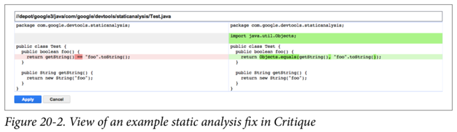
Figure 20-2. View of an example static analysis fix in Critique 图20-2. Critique中静态分析修复的例子视图
Automated fixes serve as an additional documentation source when the message is unclear and, as mentioned earlier, reduce the cost to addressing static analysis issues. Fixes can be applied directly from within Critique, or over an entire code change via a command-line tool. Although not all analyzers provide fixes, many do. We take the approach that style issues in particular should be fixed automatically; for example, by formatters that automatically reformat source code files. Google has style guides for each language that specify formatting issues; pointing out formatting errors is not a good use of a human reviewer’s time. Reviewers click “Please Fix” thousands of times per day, and authors apply the automated fixes approximately 3,000 times per day. And Tricorder analyzers received “Not useful” clicks 250 times per day.
当反馈消息不清晰时，自动修复可作为额外的文档来源，并且可以降低解决静态分析问题的成本。 修复可以直接应用Critique中，也可以通过命令行工具应用于整个代码更改。并非所有分析器都提供修复，但很多都有。 我们的做法是，优先自动修复样式问题， 例如，通过自动重新格式化源代码文件的格式化程序。 Google 有每种语言的风格指南，规定了各种语言的格式，但指出格式错误并不能很好地利用审阅者的时间。审核者每天点击数千次“请修复”，作者每天应用自动修复大约3,000次，Tricorder分析器每天收到250次“无用”点击
Per-Project Customization 按项目定制
After we had built up a foundation of user trust by showing only high-confidence analysis results, we added the ability to run additional “optional” analyzers to specific projects in addition to the on-by-default ones. The Proto Best Practices analyzer is an example of an optional analyzer. This analyzer highlights potentially breaking data format changes to protocol buffers—Google’s language-independent data serialization format. These changes are only breaking when serialized data is stored somewhere (e.g., in server logs); protocol buffers for projects that do not have stored serialized data do not need to enable the check. We have also added the ability to customize existing analyzers, although typically this customization is limited, and many checks are applied by default uniformly across the codebase.
在通过仅显示高置信度分析结果建立用户信任基础后，除了默认启用的分析器之外，我们还添加了对特定项目运行其他“可选”分析器的能力。 比如Proto Best Practices 分析器，此分析器突出显示潜在的破坏性数据协议缓冲区的格式更改——Google 的独立于语言的数据序列化格式。只有当序列化的数据存储在某个地方（例如，在服务器日志中）时，这些更改才会中断；没有存储序列化数据的项目的协议缓冲区不需要启用检查。我们还添加了自定义现有分析器的功能，尽管这种自定义功能很有限，并且默认情况下，许多检查在代码库中统一应用。
Some analyzers have even started as optional, improved based on user feedback, built up a large userbase, and then graduated into on-by-default status as soon as we could capitalize on the user trust we had built up. For example, we have an analyzer that suggests Java code readability improvements that typically do not actually change code behavior. Tricorder users initially worried about this analysis being too “noisy,” but eventually wanted more analysis results available.
一些分析器甚至一开始是可选的，根据用户反馈进行改进，建立了庞大的用户群，然后一旦我们可以利用我们建立的用户信任，就进入默认状态。例如，我们有一个分析器，它建议 Java 代码可读性改进，这些改进通常不会真正改变代码行为。Tricorder用户最初担心这种分析过于“嘈杂”，但最终希望获得更多的分析结果。
The key insight to making this customization successful was to focus on project-level customization, not user-level customization. Project-level customization ensures that all team members have a consistent view of analysis results for their project and prevents situations in which one developer is trying to fix an issue while another developer introduces it.
这种定制成功的关键是专注于项目定制，而不是用户级定制。项目级定制确保所有团队成员对其项目的分析结果有一致的看法，并减少一个开发人员试图解决问题而需要另一位开发人员介绍的情况。
Early on in the development of Tricorder, a set of relatively straightforward style checkers (“linters”) displayed results in Critique, and Critique provided user settings to choose the confidence level of results to display and suppress results from specific analyses. We removed all of this user customizability from Critique and immediately started getting complaints from users about annoying analysis results. Instead of reenabling customizability, we asked users why they were annoyed and found all kinds of bugs and false positives with the linters. For example, the C++ linter also ran on Objective-C files but produced incorrect, useless results. We fixed the linting infrastructure so that this would no longer happen. The HTML linter had an extremely high false-positive rate with very little useful signal and was typically suppressed from view by developers writing HTML. Because the linter was so rarely helpful, we just disabled this linter. In short, user customization resulted in hidden bugs and suppressing feedback.
Tricorder开发的早期，Critique展示了一组相对简单的样式检查器（“linter”），Critique提供了用户设置来选择结果的置信度以显示和抑制来自特定分析的结果。我们从 Critique 中删除了所有这些用户可定制性，并立即开始收到用户对烦人的分析结果的投诉。我们没有重新启用可定制性，而是询问用户为什么他们感到恼火，并发现 linter 存在各种错误和误报。例如，C++ linter 也在 Objective-C 文件上运行，但产生了不正确、无用的结果。我们修复了 linting 基础设施，这样就不会再发生这种情况了。 HTML linter 的误报率非常高，有用的信号很少，并且通常被编写 HTML 的开发人员禁止查看。因为 linter 很少有帮助，所以我们只是禁用了这个 linter。简而言之，用户定制导致隐藏的错误和抑制反馈。
Presubmits 预提交
In addition to code review, there are also other workflow integration points for static analysis at Google. Because developers can choose to ignore static analysis warnings displayed in code review, Google additionally has the ability to add an analysis that blocks committing a pending code change, which we call a presubmit check. Presubmit checks include very simple customizable built-in checks on the contents or metadata of a change, such as ensuring that the commit message does not say “DO NOT SUBMIT” or that test files are always included with corresponding code files. Teams can also specify a suite of tests that must pass or verify that there are no Tricorder issues for a particular category. Presubmits also check that code is well formatted. Presubmit checks are typically run when a developer mails out a change for review and again during the commit process, but they can be triggered on an ad hoc basis in between those points. See Chapter 23 for more details on presubmits at Google.
除了代码审查之外， Google 还有其他用于静态分析的工作流集成点。由于开发人员可以选择忽略代码审查中显示的静态分析警告， Google 还可以添加一个分析来阻止提交待处理的代码更改，我们称之为预提交检查。预提交检查包括对更改的内容或元数据的非常简单的可定制的内置检查，例如确保提交消息没有说“不要提交”或测试文件始终包含在相应的代码文件中。团队还可以指定一组测试，这些测试必须通过或验证特定类别没有 Tricorder 问题。预提交还会检查代码是否格式正确。预提交检查通常在开发人员邮寄更改以供审核时运行，并在提交过程中再次运行，但它们可以在这些点之间临时触发。有关 Google 预提交的更多详细信息，请参阅第 23 章。
Some teams have written their own custom presubmits. These are additional checks on top of the base presubmit set that add the ability to enforce higher best-practice standards than the company as a whole and add project-specific analysis. This enables new projects to have stricter best-practice guidelines than projects with large amounts of legacy code (for example). Team-specific presubmits can make the large- scale change (LSC) process (see Chapter 22) more difficult, so some are skipped for changes with “CLEANUP=” in the change description.
一些团队已经编写了自己的自定义预提交。这些是在基本预提交集之上的额外检查，增加了执行比整个公司更高的最佳实践标准的能力，并添加了特定于项目的分析。这使得新项目比拥有大量遗留代码的项目（例如）拥有更严格的最佳实践指南。团队特定的预提交会使大规模变更 (LSC) 过程（参见第 22 章）更加困难，因此在变更描述中带有“CLEANUP=”的变更会被跳过。
Compiler Integration 编译器集成
Although blocking commits with static analysis is great, it is even better to notify developers of problems even earlier in the workflow. When possible, we try to push static analysis into the compiler. Breaking the build is a warning that is not possible to ignore, but is infeasible in many cases. However, some analyses are highly mechanical and have no effective false positives. An example is Error Prone “ERROR” checks. These checks are all enabled in Google’s Java compiler, preventing instances of the error from ever being introduced again into our codebase. Compiler checks need to be fast so that they don’t slow down the build. In addition, we enforce these three criteria (similar criteria exist for the C++ compiler):
- Actionable and easy to fix (whenever possible, the error should include a suggested fix that can be applied mechanically)
- Produce no effective false positives (the analysis should never stop the build for correct code)
- Report issues affecting only correctness rather than style or best practices
尽管使用静态分析阻止提交很好用，但最好在工作流程的早期通知开发人员问题。 如果可以的话，我们会尝试将静态分析推送到编译器中。 破坏构建是一个不可忽视的警告，但在许多情况下是不可行的。然而，一些分析是高度机械化的，没有有效的误报。 一个例子是容易出错的“错误”检查， 这些检查都在 Google 的 Java 编译器中启用，防止错误实例再次被引入我们的代码库， 编译器检查需要快速，以免减慢构建速度。此外，我们强制执行这三个标准（C++ 编译器也存在类似的标准）：
- 可操作且易于修复（只要可能，错误应包括可自动应用的建议修复）
- 不产生有效的误报（分析不应停止生成正确的代码）
- 报告仅影响正确性而非风格或最佳实践的问题
To enable a new check, we first need to clean up all instances of that problem in the codebase so that we don’t break the build for existing projects just because the compiler has evolved. This also implies that the value in deploying a new compiler-based check must be high enough to warrant fixing all existing instances of it. Google has infrastructure in place for running various compilers (such as clang and javac) over the entire codebase in parallel via a cluster—as a MapReduce operation. When compilers are run in this MapReduce fashion, the static analysis checks run must produce fixes in order to automate the cleanup. After a pending code change is prepared and tested that applies the fixes across the entire codebase, we commit that change and remove all existing instances of the problem. We then turn the check on in the compiler so that no new instances of the problem can be committed without breaking the build. Build breakages are caught after commit by our Continuous Integration (CI) system, or before commit by presubmit checks (see the earlier discussion).
要启用新的检查，我们首先需要清理代码库中该问题的所有实例，这样我们就不会因为编译器的发展而破坏现有项目的构建。这也意味着部署新的基于编译器的检查的价值必须足够高，以保证修复它的所有现有实例。Google 有基础设施，可以通过集群在整个代码库上并行运行各种编译器（例如 clang 和 javac）——作为 MapReduce 操作。当编译器以这种 MapReduce 方式运行时，运行的静态分析检查必须产生修复以自动进行清理。在准备好并测试了在整个代码库中应用修复的待处理代码更改后，我们提交该更改并删除所有现有的问题实例。然后我们在编译器中打开检查，这样就不会在不破坏构建的情况下提交问题的新实例。在我们的持续集成 (CI) 系统提交之后，或者在提交之前通过预提交检查（参见前面的讨论）捕获构建损坏。
We also aim to never issue compiler warnings. We have found repeatedly that developers ignore compiler warnings. We either enable a compiler check as an error (and break the build) or don’t show it in compiler output. Because the same compiler flags are used throughout the codebase, this decision is made globally. Checks that can’t be made to break the build are either suppressed or shown in code review (e.g., through Tricorder). Although not every language at Google has this policy, the most frequently used ones do. Both of the Java and C++ compilers have been configured to avoid displaying compiler warnings. The Go compiler takes this to extreme; some things that other languages would consider warnings (such as unused variables or package imports) are errors in Go.
我们的目标是永远不会发出编译器警告，但是我们不断的发现开发人员会忽略编译器警告，要么启用编译器检查作为错误（并中断构建），要么不在编译器输出中显示它。因为在整个代码库中使用相同的编译器标志，所以这个决定是全局做出的。无法破坏构建的检查要么被抑制，要么在代码审查中显示（例如，通过 Tricorder）。尽管并非 Google 的所有语言都有此策略，但最常用的语言都有。Java 和 C++ 编译器都已配置为避免显示编译器警告，Go 编译器将这一点做的很好，因为在其他语言中会考虑警告的一些事情（例如未使用的变量或包导入），在 Go 中是错误的。
Analysis While Editing and Browsing Code 编辑和浏览代码时分析
Another potential integration point for static analysis is in an integrated development environment (IDE). However, IDE analyses require quick analysis times (typically less than 1 second and ideally less than 100 ms), and so some tools are not suitable to integrate here. In addition, there is the problem of making sure the same analysis runs identically in multiple IDEs. We also note that IDEs can rise and fall in popularity (we don’t mandate a single IDE); hence IDE integration tends to be messier than plugging into the review process. Code review also has specific benefits for displaying analysis results. Analyses can take into account the entire context of the change; some analyses can be inaccurate on partial code (such as a dead code analysis when a function is implemented before adding callsites). Showing analysis results in code review also means that code authors have to convince reviewers as well if they want to ignore analysis results. That said, IDE integration for suitable analyses is another great place to display static analysis results.
静态分析的另一个集成点是集成开发环境 (IDE)。但是，IDE 分析需要快速的分析时间（通常小于 1 秒，理想情况下小于 100 毫秒），因此某些工具不适合在这里集成，此外，还存在确保相同分析在多个 IDE 中以相同方式运行的问题。我们还发现 IDE 的受欢迎程度可能会上升或下降（我们不强制要求单一的 IDE），因此 IDE 集成往往比插入审查过程更混乱。代码审查还具有显示分析结果的特定好处。分析可以考虑变更的整个背景，某些对部分代码点分析可能不准确（例如，在添加调用点之前实现函数时的死代码分析）。在代码审查中显示分析结果也意味着如果代码作者想忽略分析结果，他们也必须通过审查。也就是说，IDE集成进行适当的分析是显示静态分析结果的一个不错的集成点。
Although we mostly focus on showing newly introduced static analysis warnings, or warnings on edited code, for some analyses, developers actually do want the ability to view analysis results over the entire codebase during code browsing. An example of this are some security analyses. Specific security teams at Google want to see a holistic view of all instances of a problem. Developers also like viewing analysis results over the codebase when planning a cleanup. In other words, there are times when showing results when code browsing is the right choice.
尽管我们主要关注显示新引入的静态分析警告或编辑代码的警告，但对于某些分析，开发人员实际上确实希望能够在代码浏览期间查看整个代码库的分析结果。这方面的例子是一些安全分析。 Google 的特定安全团队希望查看所有问题实例的整体视图。开发人员还喜欢在计划清理时通过代码库查看分析结果。换句话说，在浏览代码的时候显示结果是正确的选择。
Conclusion 总结
Static analysis can be a great tool to improve a codebase, find bugs early, and allow more expensive processes (such as human review and testing) to focus on issues that are not mechanically verifiable. By improving the scalability and usability of our static analysis infrastructure, we have made static analysis an effective component of software development at Google.
静态分析是一个很好的工具，可以改进代码库，尽早发现错误，并允许成本更高的过程（如人工审查和测试）聚焦在无法通过机器方式验证的问题。通过提高静态分析基础设施的可扩展性和可用性，我们使静态分析成为 Google 软件开发的有效组成部分。
内容提要
-
Focus on developer happiness. We have invested considerable effort in building feedback channels between analysis users and analysis writers in our tools, and aggressively tune analyses to reduce the number of false positives.
-
Make static analysis part of the core developer workflow. The main integration point for static analysis at Google is through code review, where analysis tools provide fixes and involve reviewers. However, we also integrate analyses at additional points (via compiler checks, gating code commits, in IDEs, and when browsing code).
-
Empower users to contribute. We can scale the work we do building and maintaining analysis tools and platforms by leveraging the expertise of domain experts. Developers are continuously adding new analyses and checks that make their lives easier and our codebase better.
-
关注开发者的幸福感。我们投入了大量精力，在我们的工具中建立分析用户和作者之间的反馈渠道，并积极调整分析以减少误报的数量。
-
将静态分析作为核心开发人员工作流程的一部分。 Google 静态分析的主要集成点是通过代码评审，在这里，分析工具提供修复并让评审人员参与。然而，我们也在其他方面（通过编译器检查、选通代码提交、在IDE中以及在浏览代码时）集成分析。
-
授权用户做出贡献。通过利用领域专家的专业知识，我们可以扩展构建和维护分析工具和平台的工作。开发人员不断添加新的分析和检查，使他们的生活更轻松，使我们的代码库更好。
CHAPTER 21 Dependency Management
第二十一章 依赖管理
Written by Titus Winters
Edited by Lisa Carey
Dependency management—the management of networks of libraries, packages, and dependencies that we don’t control—is one of the least understood and most challenging problems in software engineering. Dependency management focuses on questions like: how do we update between versions of external dependencies? How do we describe versions, for that matter? What types of changes are allowed or expected in our dependencies? How do we decide when it is wise to depend on code produced by other organizations?
依赖管理——管理我们无法控制的库、包和依赖关系的网络——是软件工程中最不为人理解和最有挑战性的问题之一。依赖管理关注的问题包括：我们如何更新外部依赖的版本？为此，我们如何描述版本？在我们的依赖关系中，哪些类型的变化是允许的或预期的？我们如何决定何时依赖其他组织生产的代码是明智的？
For comparison, the most closely related topic here is source control. Both areas describe how we work with source code. Source control covers the easier part: where do we check things in? How do we get things into the build? After we accept the value of trunk-based development, most of the day-to-day source control questions for an organization are fairly mundane: “I’ve got a new thing, what directory do I add it to?”
作为比较，与依赖管理最密切相关的主题是源码控制。这两个领域都描述了我们如何处理源代码。源码控制涵盖了比较容易的部分：我们在哪里检查源码？我们如何将源码放入构建中？在我们接受了基于主干的开发的价值之后，对于一个组织来说，大多数日常的源码控制问题都是相当平常的："我有一个新的东西，我应该把它添加到什么目录？"
Dependency management adds additional complexity in both time and scale. In a trunk-based source control problem, it’s fairly clear when you make a change that you need to run the tests and not break existing code. That’s predicated on the idea that you’re working in a shared codebase, have visibility into how things are being used, and can trigger the build and run the tests. Dependency management focuses on the problems that arise when changes are being made outside of your organization, without full access or visibility. Because your upstream dependencies can’t coordinate with your private code, they are more likely to break your build and cause your tests to fail. How do we manage that? Should we not take external dependencies? Should we ask for greater consistency between releases of external dependencies? When do we update to a new version?
依赖管理在时间和规模上都增加了额外的复杂性。在一个基于主干的源码控制问题中，当你做一个改变时，你需要运行测试并且不破坏现有的代码，这是相当清楚的。这是基于这样的想法：你在一个共享的代码库中工作，能够了解事物的使用方式，并且能够触发构建和运行测试的想法。依赖管理关注的是在你的组织之外进行改变时出现的问题，没有完全的访问权限或可见性。因为你的上游依赖不能与你的私有代码协调，它们更有可能破坏你的构建，导致你的测试失败。我们如何管理这个问题？我们不应该接受外部依赖吗？我们是否应该要求外部依赖的版本之间更加一致？我们什么时候更新到一个新的版本？
Scale makes all of these questions more complex, with the realization that we aren’t really talking about single dependency imports, and in the general case that we’re depending on an entire network of external dependencies. When we begin dealing with a network, it is easy to construct scenarios in which your organization’s use of two dependencies becomes unsatisfiable at some point in time. Generally, this happens because one dependency stops working without some requirement,1 whereas the other is incompatible with the same requirement. Simple solutions about how to manage a single outside dependency usually fail to account for the realities of managing a large network. We’ll spend much of this chapter discussing various forms of these conflicting requirement problems.
规模使所有这些问题变得更加复杂，因为我们意识到我们实际上并不是在讨论单个依赖项导入，而且在一般情况下，我们依赖于整个外部依赖网络。当我们开始处理网络时，很容易构建这样的场景：你的组织对两个依赖项的使用在某个时间点变得不能满足。通常，这是因为一个依赖项在无法满足某些要求停止工作，而另一个依赖项与相同的要求不兼容。关于如何管理单个外部依赖关系的简单解决方案通常没有考虑到管理大型网络的现实情况。本章的大部分时间我们将讨论这些相互冲突的需求问题的各种形式。
Source control and dependency management are related issues separated by the question: “Does our organization control the development/update/management of this subproject?” For example, if every team in your company has separate repositories, goals, and development practices, the interaction and management of code produced by those teams is going to have more to do with dependency management than source control. On the other hand, a large organization with a (virtual?) single repository (monorepo) can scale up significantly farther with source control policies—this is Google’s approach. Separate open source projects certainly count as separate organizations: interdependencies between unknown and not-necessarily-collaborating projects are a dependency management problem. Perhaps our strongest single piece of advice on this topic is this: All else being equal, prefer source control problems over dependency-management problems. If you have the option to redefine “organization” more broadly (your entire company rather than just one team), that’s very often a good trade-off. Source control problems are a lot easier to think about and a lot cheaper to deal with than dependency-management ones.
源码管理和依赖管理是由以下问题分开的相关问题：“我们的组织是否控制此子项目的开发/更新/管理？”例如，如果贵公司的每个团队都有单独的版本库、目标和开发实践，这些团队产生的代码的交互和管理将更多地涉及依赖管理，而不是源码控制。另一方面，一个拥有（虚拟？）单个版本库（monorepo）的大型组织可以通过源码控制策略进一步扩展，这是Google的方法。独立的开源项目当然被视为独立的组织：未知项目和非必要协作项目之间的相互依赖关系是一个依赖管理问题。也许我们在这个话题上最有力的建议是：在其他条件相同的情况下，我们更喜欢源码管理问题，而不是依赖管理问题。如果你可以选择更广泛地重新定义“组织”（你的整个公司而不仅仅是一个团队），这通常是一个很好的权衡。源码管理问题比依赖管理问题更容易思考，处理成本也更低。
As the Open Source Software (OSS) model continues to grow and expand into new domains, and the dependency graph for many popular projects continues to expand over time, dependency management is perhaps becoming the most important problem in software engineering policy. We are no longer disconnected islands built on one or two layers outside an API. Modern software is built on towering pillars of dependencies; but just because we can build those pillars doesn’t mean we’ve yet figured out how to keep them standing and stable over time.
随着开源软件（OSS）模式的不断发展和扩展到新的领域，以及许多流行项目的依赖关系随着时间的推移不断扩大，依赖管理也许正在成为软件工程策略中最重要的问题。我们开发的软件不再是构建在API之外的一层或两层上的断开连接的孤岛。现代软件建立在高耸的依赖性支柱之上；但仅仅因为我们能够建造这些支柱，并不意味着我们已经弄清楚如何让它们长期保持稳定。
In this chapter, we’ll look at the particular challenges of dependency management, explore solutions (common and novel) and their limitations, and look at the realities of working with dependencies, including how we’ve handled things in Google. It is important to preface all of this with an admission: we’ve invested a lot of thought into this problem and have extensive experience with refactoring and maintenance issues that show the practical shortcomings with existing approaches. We don’t have firsthand evidence of solutions that work well across organizations at scale. To some extent, this chapter is a summary of what we know does not work (or at least might not work at larger scales) and where we think there is the potential for better outcomes. We definitely cannot claim to have all the answers here; if we could, we wouldn’t be calling this one of the most important problems in software engineering.
在本章中，我们将介绍依赖管理的特殊挑战，探索解决方案（常见的和新颖的）及其局限性，并介绍使用依赖关系的现实情况，包括我们在 Google 中处理事情的方式。在所有这些之前，我们必须承认：我们在这个问题上投入了大量的精力，并且在重构和维护问题上拥有丰富的经验这表明了现有方法的实际缺陷。我们没有第一手证据表明解决方案能够在大规模的组织中很好地工作。在某种程度上，本章总结了我们所知道的不起作用（或者至少在更大范围内可能不起作用）以及我们认为有可能产生更好结果的地方。我们绝对不能声称这里有所有的答案；如果可以，我们就不会把这称为软件工程中最重要的问题之一。
1This could be any of language version, version of a lower-level library, hardware version, operating system, compiler flag, compiler version, and so on.
1 这可以是任何语言版本、较低级别库的版本、硬件版本、操作系统、编译器标志、编译器版本等。
Why Is Dependency Management So Difficult? 为什么依赖管理如此困难？
Even defining the dependency-management problem presents some unusual challenges. Many half-baked solutions in this space focus on a too-narrow problem formulation: “How do we import a package that our locally developed code can depend upon?” This is a necessary-but-not-sufficient formulation. The trick isn’t just finding a way to manage one dependency—the trick is how to manage a network of dependencies and their changes over time. Some subset of this network is directly necessary for your first-party code, some of it is only pulled in by transitive dependencies. Over a long enough period, all of the nodes in that dependency network will have new versions, and some of those updates will be important.2 How do we manage the resulting cascade of upgrades for the rest of the dependency network? Or, specifically, how do we make it easy to find mutually compatible versions of all of our dependencies given that we do not control those dependencies? How do we analyze our dependency network? How do we manage that network, especially in the face of an ever-growing graph of dependencies?
即使是定义依赖管理问题也会带来一些不寻常的挑战。这个领域的许多半生不熟的解决方案都集中在一个狭义的问题上。"我们如何导入一个我们本地开发的代码可以依赖的包？" 这是一个必要但并不充分的表述。诀窍不只是找到一种方法来管理一个依赖关系——诀窍是如何管理一个依赖关系的网络以及它们随时间的变化。这个网络中的一些子集对于你的第一方代码来说是直接必要的，其中一些只是由传递依赖拉进来的。在一个足够长的时期内，这个依赖网络中的所有节点都会有新的版本，其中一些更新会很重要。或者，具体来说，鉴于我们并不控制这些依赖关系，我们如何使其容易找到所有依赖关系的相互兼容的版本？我们如何分析我们的依赖网络？我们如何管理这个网络，尤其是在面对不断增长的依赖关系的时候？
Conflicting Requirements and Diamond Dependencies 冲突的需求和菱形依赖
The central problem in dependency management highlights the importance of thinking in terms of dependency networks, not individual dependencies. Much of the difficulty stems from one problem: what happens when two nodes in the dependency network have conflicting requirements, and your organization depends on them both? This can arise for many reasons, ranging from platform considerations (operating system [OS], language version, compiler version, etc.) to the much more mundane issue of version incompatibility. The canonical example of version incompatibility as an unsatisfiable version requirement is the diamond dependency problem. Although we don’t generally include things like “what version of the compiler” are you using in a dependency graph, most of these conflicting requirements problems are isomorphic to “add a (hidden) node to the dependency graph representing this requirement.” As such, we’ll primarily discuss conflicting requirements in terms of diamond dependencies, but keep in mind that libbase might actually be absolutely any piece of software involved in the construction of two or more nodes in your dependency network.
依赖管理的核心问题强调从依赖关系网络而不是单个依赖关系角度思考的重要性。大部分困难源于一个问题：当依赖网络中的两个节点有冲突的要求，而你的组织同时依赖它们时，会发生什么？这可能有很多原因，从平台考虑（操作系统[OS]、语言版本、编译器版本等）到更常见的版本不兼容问题。作为一个不可满足的版本要求，版本不兼容的典型例子是菱形依赖问题。虽然我们通常不包括像 "你使用的是什么版本的编译器 "这样的东西，但大多数这些冲突的需求问题都与 "在代表这个需求的依赖图中添加一个（隐藏的）节点 "同构。因此，我们将主要讨论菱形依赖关系方面的冲突需求，但请记住，libbase 实际上绝对可能是参与构建你的依赖关系网络中的两个或多个节点的任何软件。
The diamond dependency problem, and other forms of conflicting requirements, require at least three layers of dependency, as demonstrated in Figure 21-1.
菱形依赖问题，以及其他形式的冲突需求，需要至少三层依赖关系，如图21-1所示。
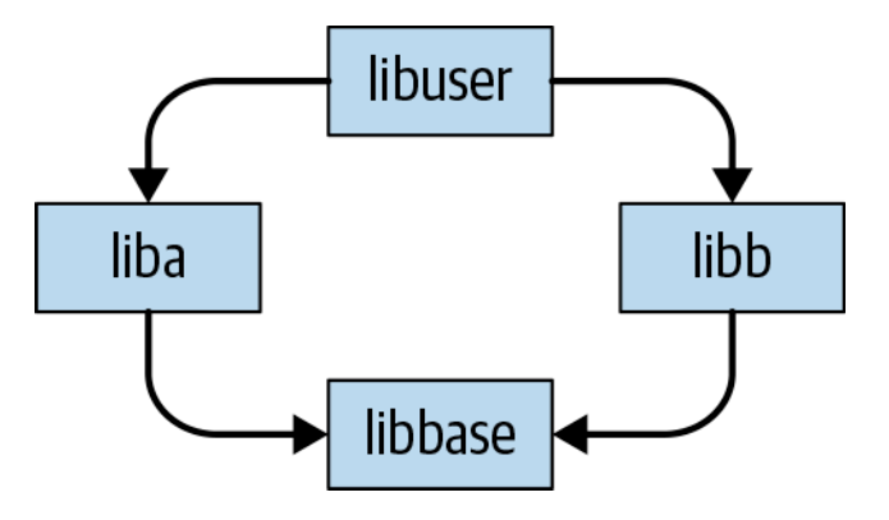
Figure 21-1. The diamond dependency problem 菱形依赖问题
In this simplified model, libbase is used by both liba and libb, and liba and libb are both used by a higher-level component libuser. If libbase ever introduces an incompatible change, there is a chance that liba and libb, as products of separate organizations, don’t update simultaneously. If liba depends on the new libbase version and libb depends on the old version, there’s no general way for libuser (aka your code) to put everything together. This diamond can form at any scale: in the entire network of your dependencies, if there is ever a low-level node that is required to be in two incompatible versions at the same time (by virtue of there being two paths from some higher level node to those two versions), there will be a problem.
在这个简化模型中，liba和libb都使用libbase，而liba和libb都由更高级别的组件libuser使用。如果libbase引入了一个不兼容的变更，那么作为独立组织的产品，liba和libb可能不会同时更新。如果liba依赖于新的libbase版本，而libb依赖于旧版本，那么libuser（也就是你的代码）没有通用的方法来组合所有内容。这个菱形依赖可以在任何规模形成：在依赖关系的整个网络中，如果有一个低级节点需要同时处于两个不兼容的版本中（由于从某个高级节点到这两个版本有两条路径），那么就会出现问题。
Different programming languages tolerate the diamond dependency problem to different degrees. For some languages, it is possible to embed multiple (isolated) versions of a dependency within a build: a call into libbase from liba might call a different version of the same API as a call into libbase from libb. For example, Java provides fairly well-established mechanisms to rename the symbols provided by such a dependency.3 Meanwhile, C++ has nearly zero tolerance for diamond dependencies in a normal build, and they are very likely to trigger arbitrary bugs and undefined behavior (UB) as a result of a clear violation of C++’s One Definition Rule. You can at best use a similar idea as Java’s shading to hide some symbols in a dynamic-link library (DLL) or in cases in which you’re building and linking separately. However, in all programming languages that we’re aware of, these workarounds are partial solutions at best: embedding multiple versions can be made to work by tweaking the names of functions, but if there are types that are passed around between dependencies, all bets are off. For example, there is simply no way for a map defined in libbase v1 to be passed through some libraries to an API provided by libbase v2 in a semantically consistent fashion. Language-specific hacks to hide or rename entities in separately compiled libraries can provide some cushion for diamond dependency problems, but are not a solution in the general case.
不同的编程语言对菱形依赖问题的容忍程度不同。对于某些语言来说，可以在构建过程中嵌入一个依赖关系的多个（孤立的）版本：从liba调用libbase可能与从libb调用libbase调用相同API的不同版本。例如，Java 提供了相当完善的机制来重命名这种依赖关系所提供的符号。 同时，C++ 对正常构建中的菱形依赖关系的容忍度几乎为零，由于明显违反了 C++ 的 One Definition Rule ，它们非常可能引发明显 bug 和未定义行为（UB）。在动态链接库（DLL）中或者在单独构建和链接的情况下，你最多可以使用与Java的shading思想来隐藏一些符号。然而，在我们所知道的所有编程语言中，这些变通方法充其量只是部分解决方案：通过调整函数的名称，可以使嵌入的多个版本发挥作用，但如果有类型在依赖关系之间传递，所有的下注都会无效。例如，libbase v1中定义的map类型根本不可能以语义一致的方式通过一些库传递给libbase v2提供的API。在单独编译的库中隐藏或重命名实体的特定语言黑科技可以为菱形依赖问题提供一些缓冲，但在一般情况下并不是一个解决方案。
If you encounter a conflicting requirement problem, the only easy answer is to skip forward or backward in versions for those dependencies to find something compatible. When that isn’t possible, we must resort to locally patching the dependencies in question, which is particularly challenging because the cause of the incompatibility in both provider and consumer is probably not known to the engineer that first discovers the incompatibility. This is inherent: liba developers are still working in a compatible fashion with libbase v1, and libb devs have already upgraded to v2. Only a dev who is pulling in both of those projects has the chance to discover the issue, and it’s certainly not guaranteed that they are familiar enough with libbase and liba to work through the upgrade. The easier answer is to downgrade libbase and libb, although that is not an option if the upgrade was originally forced because of security issues.
如果你遇到一个冲突的需求问题，唯一简单的答案是向前或向后跳过这些依赖的版本，以找到兼容的版本。当这不可能时，我们必须求助于本地修补有问题的依赖关系，这特别具有挑战性，因为首先发现不兼容的工程师可能不知道提供者和使用者中不兼容的原因。这是固有的：liba的开发者还在以兼容的方式与libbase v1工作，而libb的开发者已经升级到了v2。只有同时参与这两个项目的开发人员才有机会发现问题，当然也不能保证他们对libbase和liba足够熟悉，能够完成升级。更简单的答案是降级libbase和libb，尽管如果升级最初是因为安全问题而被迫进行的，那么这不是一个选项。
Systems of policy and technology for dependency management largely boil down to the question, “How do we avoid conflicting requirements while still allowing change among noncoordinating groups?” If you have a solution for the general form of the diamond dependency problem that allows for the reality of continuously changing requirements (both dependencies and platform requirements) at all levels of the network, you’ve described the interesting part of a dependency-management solution.
依赖管理的策略和技术体系在很大程度上归结为一个问题："我们如何避免冲突的需求，同时仍然允许非协调组之间的变化？" 如果你有一个菱形依赖问题的一般形式的解决方案，允许在网络的各个层面不断变化的需求（包括依赖和平台需求）的现实，你已经描述了依赖管理解决方案的有趣部分。
2For instance, security bugs, deprecations, being in the dependency set of a higher-level dependency that has a security bug, and so on.
2 例如，安全缺陷、弃用、处于具有安全缺陷的更高级别依赖项的依赖项集中，等等。
3This is called shading or versioning.
3 这称为着色或版本控制。
Importing Dependencies 导入依赖
In programming terms, it’s clearly better to reuse some existing infrastructure rather than build it yourself. This is obvious, and part of the fundamental march of technology: if every novice had to reimplement their own JSON parser and regular expression engine, we’d never get anywhere. Reuse is healthy, especially compared to the cost of redeveloping quality software from scratch. So long as you aren’t downloading trojaned software, if your external dependency satisfies the requirements for your programming task, you should use it.
在编程方面，重用一些现有的基础设施显然比自己创建它更好。这是显而易见的，也是技术发展的一部分：如果每个新手都必须重新实现他们自己的JSON语法分析器和正则表达式引擎，我们就永远不会有任何进展。重用是健康的，特别是与从头开始重新开发高质量软件的成本相比。只要你下载的不是木马软件，如果你的外部依赖满足了你的编程任务的要求，你就应该使用它。
Compatibility Promises 承诺兼容性
When we start considering time, the situation gains some complicated trade-offs. Just because you get to avoid a development cost doesn’t mean importing a dependency is the correct choice. In a software engineering organization that is aware of time and change, we need to also be mindful of its ongoing maintenance costs. Even if we import a dependency with no intent of upgrading it, discovered security vulnerabilities, changing platforms, and evolving dependency networks can conspire to force that upgrade, regardless of our intent. When that day comes, how expensive is it going to be? Some dependencies are more explicit than others about the expected maintenance cost for merely using that dependency: how much compatibility is assumed? How much evolution is assumed? How are changes handled? For how long are releases supported?
当我们开始考虑时间时，情况就会出现一些复杂的权衡。仅仅因为你可以避免开发的成本，并不意味着导入一个依赖关系是正确的选择。在一个了解时间和变化的软件工程组织中，我们还需要注意其持续的维护成本。即使我们在导入依赖关系时并不打算对其进行升级，被发现的安全漏洞、不断变化的平台和不断发展的依赖关系网络也会合力迫使我们进行升级，而不管我们的意图如何。当这一天到来时，它将会有多高的成本？有些依赖关系比其他依赖关系更清楚地说明了仅仅使用该依赖关系的预期维护成本：假定有多少兼容性？假设有多大的演变？如何处理变化？版本支持多长时间？
We suggest that a dependency provider should be clearer about the answers to these questions. Consider the example set by large infrastructure projects with millions of users and their compatibility promises.
我们建议，依赖提供者应该更清楚地了解这些问题的答案。考虑一下拥有数百万用户的大型基础设施项目及其兼容性承诺所树立的榜样。
C++
For the C++ standard library, the model is one of nearly indefinite backward compatibility. Binaries built against an older version of the standard library are expected to build and link with the newer standard: the standard provides not only API compatibility, but ongoing backward compatibility for the binary artifacts, known as ABI compatibility. The extent to which this has been upheld varies from platform to platform. For users of gcc on Linux, it’s likely that most code works fine over a range of roughly a decade. The standard doesn’t explicitly call out its commitment to ABI compatibility—there are no public-facing policy documents on that point. However, the standard does publish Standing Document 8 (SD-8), which calls out a small set of types of change that the standard library can make between versions, defining implicitly what type of changes to be prepared for. Java is similar: source is compatible between language versions, and JAR files from older releases will readily work with newer versions.
对于C++标准库来说，这种模式是一种几乎无限期的向后兼容性的。根据标准库的旧版本构建的二进制文件有望与较新的标准进行构建和链接：标准不仅提供了API兼容性，还为二进制工件提供了持续的向后兼容性，即所谓的ABI兼容性。这一支持程度在不同的平台是不同的。对于Linux上的gcc用户来说，可能大多数代码在大约十年的范围内都能正常工作。该标准没有明确指出它对ABI兼容性的承诺——在这一点上没有面向公众的政策文件。然而，该标准确实发布了常设文件8(SD-8)，其中列出了标准库在不同版本之间可以进行的一小部分变化类型，隐含地定义了需要准备的变化类型。Java也是如此：语言版本之间的源代码是兼容的，旧版本的JAR文件很容易在新版本中运行。
Go
Not all languages prioritize the same amount of compatibility. The Go programming language explicitly promises source compatibility between most releases, but no binary compatibility. You cannot build a library in Go with one version of the language and link that library into a Go program built with a different version of the language.
并非所有的语言都优先考虑相同规格的兼容性。Go编程语言明确承诺大多数版本之间的源代码兼容，但没有二进制兼容。你不能用一个版本的Go语言建立一个库，然后把这个库链接到用另一个版本的语言建立的Go程序中。
Abseil
Google’s Abseil project is much like Go, with an important caveat about time. We are unwilling to commit to compatibility indefinitely: Abseil lies at the foundation of most of our most computationally heavy services internally, which we believe are likely to be in use for many years to come. This means we’re careful to reserve the right to make changes, especially in implementation details and ABI, in order to allow better performance. We have experienced far too many instances of an API turning out to be confusing and error prone after the fact; publishing such known faults to tens of thousands of developers for the indefinite future feels wrong. Internally, we already have roughly 250 million lines of C++ code that depend on this library—we aren’t going to make API changes lightly, but it must be possible. To that end, Abseil explicitly does not promise ABI compatibility, but does promise a slightly limited form of API compatibility: we won’t make a breaking API change without also providing an automated refactoring tool that will transform code from the old API to the new transparently. We feel that shifts the risk of unexpected costs significantly in favor of users: no matter what version a dependency was written against, a user of that dependency and Abseil should be able to use the most current version. The highest cost should be “run this tool,” and presumably send the resulting patch for review in the mid-level dependency (liba or libb, continuing our example from earlier). In practice, the project is new enough that we haven’t had to make any significant API breaking changes. We can’t say how well this will work for the ecosystem as a whole, but in theory, it seems like a good balance for stability versus ease of upgrade.
谷歌的Abseil项目很像Go，对时间有一个重要的警告。我们不愿意无限期地致力于兼容性。Abseil是我们内部大多数计算量最大的服务的基础，我们相信这些服务可能会在未来很多年内使用。这意味着我们小心翼翼地保留修改的权利，特别是在实现细节和ABI方面，以实现更好的性能。我们已经经历了太多的例子，一个API在事后被证明是混乱和容易出错的；在无限期的未来向成千上万的开发者公布这种已知的错误感觉是错误的。在内部，我们已经有大约2.5亿行的C++代码依赖于这个库，我们不会轻易改变API，但它必须是可以改变的。为此，Abseil明确地不承诺ABI的兼容性，但确实承诺了一种稍微有限的API兼容性：我们不会在不提供自动重构工具的情况下做出破坏性的API改变，该工具将透明地将代码从旧的API转换到新的API。我们觉得这将意外成本的风险大大地转移到了用户身上：无论一个依赖关系是针对哪个版本编写的，该依赖关系和Abseil的用户都应该能够使用最新的版本。最高的成本应该是 "运行这个工具"，并推测在中层级依赖关系（liba或libb，继续我们前面的例子）中发送产生的补丁以供审查。在实践中，这个项目足够新，我们没有必要做任何重大的API破坏性改变。我们不能说这对整个生态系统会有多好的效果，但在理论上，这似乎是对稳定性和易升级的一个良好平衡。
Boost
By comparison, the Boost C++ library makes no promises of compatibility between versions. Most code doesn’t change, of course, but “many of the Boost libraries are actively maintained and improved, so backward compatibility with prior version isn’t always possible.” Users are advised to upgrade only at a period in their project life cycle in which some change will not cause problems. The goal for Boost is fundamentally different than the standard library or Abseil: Boost is an experimental proving ground. A particular release from the Boost stream is probably perfectly stable and appropriate for use in many projects, but Boost’s project goals do not prioritize compatibility between versions—other long-lived projects might experience some friction keeping up to date. The Boost developers are every bit as expert as the developers for the standard library4—none of this is about technical expertise: this is purely a matter of what a project does or does not promise and prioritize.
相比之下，Boost C++库没有承诺不同版本的兼容性。当然，大多数代码不会改变，但 "许多Boost库都在积极维护和改进，所以向后兼容以前的版本并不总是可能的"。我们建议用户只在项目生命周期的某个阶段进行升级，因为在这个阶段，一些变化不会造成问题。Boost的目标与标准库或Abseil有根本的不同：Boost是一个实验验证场。Boost的某个版本可能非常稳定，适合在许多项目中使用，但是Boost的项目目标并不优先考虑版本之间的兼容性——其他长期项目可能会遇到一些与最新版本保持同步的阻力。Boost的开发者和标准库的开发者一样都是专家——这与技术专长无关：这纯粹是一个项目是否承诺和优先考虑的问题。
Looking at the libraries in this discussion, it’s important to recognize that these compatibility issues are software engineering issues, not programming issues. You can download something like Boost with no compatibility promise and embed it deeply in the most critical, long-lived systems in your organization; it will work just fine. All of the concerns here are about how those dependencies will change over time, keeping up with updates, and the difficulty of getting developers to worry about maintenance instead of just getting features working. Within Google, there is a constant stream of guidance directed to our engineers to help them consider this difference between “I got it to work” and “this is working in a supported fashion.” That’s unsurprising: it’s basic application of Hyrum’s Law, after all.
从这个讨论中的库来看，重要的是要认识到这些兼容性问题是软件工程问题，而不是编程问题。你可以下载像Boost这样没有兼容性承诺的东西，并把它深深地嵌入到你的组织中最关键、生命周期最长的系统中；它可以正常工作。这里所有的担忧都是关于这些依赖关系会随着时间的推移而改变，跟上更新的步伐，以及让开发者担心维护而不是让功能正常工作的困难。在谷歌内部，有源源不断的指导意见指向我们的工程师，帮助他们考虑“我让它起作用了”和“这是以一种支持的方式起作用的”之间的区别。这并不奇怪：毕竟，这是海勒姆定律的基本应用。
Put more broadly: it is important to realize that dependency management has a wholly different nature in a programming task versus a software engineering task. If you’re in a problem space for which maintenance over time is relevant, dependency management is difficult. If you’re purely developing a solution for today with no need to ever update anything, it is perfectly reasonable to grab as many readily available dependencies as you like with no thought of how to use them responsibly or plan for upgrades. Getting your program to work today by violating everything in SD-8 and also relying on binary compatibility from Boost and Abseil works fine…so long as you never upgrade the standard library, Boost, or Abseil, and neither does anything that depends on you.
更广泛地说：重要的是要意识到，依赖管理在编程任务和软件工程任务中具有完全不同的性质。如果你所处的问题空间与随时间的维护相关，则依赖关系管理很困难。如果你只是为今天开发一个解决方案，而不需要更新任何东西，那么你完全可以随心所欲地抓取许多现成的依赖关系，而不考虑如何负责任地使用它们或为升级做计划。通过违反SD-8中的所有规定，并依靠Boost和Abseil的二进制兼容性，使你的程序今天就能运行......只要你不升级标准库、Boost或Abseil，也不升级任何依赖你的东西，就可以了。
4In many cases, there is significant overlap in those populations.
4 在许多情况下，这些人群中存在着明显的重叠。
Considerations When Importing 导入依赖的注意事项
Importing a dependency for use in a programming project is nearly free: assuming that you’ve taken the time to ensure that it does what you need and isn’t secretly a security hole, it is almost always cheaper to reuse than to reimplement functionality. Even if that dependency has taken the step of clarifying what compatibility promise it will make, so long as we aren’t ever upgrading, anything you build on top of that snapshot of your dependency is fine, no matter how many rules you violate in consuming that API. But when we move from programming to software engineering, those dependencies become subtly more expensive, and there are a host of hidden costs and questions that need to be answered. Hopefully, you consider these costs before importing, and, hopefully, you know when you’re working on a programming project versus working on a software engineering project.
导入一个依赖项用于编程项目几乎是免费的：假设你已经花了时间来确保它做了你需要的事情，并且没有隐蔽的安全漏洞，那么重用几乎总是比重新实现功能要划算。即使该依赖项已经采取了澄清它将作出什么兼容性承诺的步骤，只要我们不曾升级，你在该依赖项的快照之上建立的任何东西都是好的，无论你在使用该API时违反了多少规则。但是，当我们从编程转向软件工程时，这些依赖关系的成本会变得微妙地更高，而且有一系列的隐藏成本和问题需要回答。希望你在导入之前考虑到这些成本，而且，希望你知道你什么时候是在做一个编程项目，而不是在做一个软件工程项目。
When engineers at Google try to import dependencies, we encourage them to ask this (incomplete) list of questions first:
- Does the project have tests that you can run?
- Do those tests pass?
- Who is providing that dependency? Even among “No warranty implied” OSS projects, there is a significant range of experience and skill set—it’s a very different thing to depend on compatibility from the C++ standard library or Java’s Guava library than it is to select a random project from GitHub or npm. Reputation isn’t everything, but it is worth investigating.
- What sort of compatibility is the project aspiring to?
- Does the project detail what sort of usage is expected to be supported?
- How popular is the project?
- How long will we be depending on this project?
- How often does the project make breaking changes?
当谷歌的工程师试图导入依赖时，我们鼓励他们先问这个（不完整）的问题清单：
- 该项目是否有你可以运行的测试？
- 这些测试是否通过？
- 谁在提供这个依赖？即使在 "无担保 "的开放源码软件项目中，也有相当大的经验和技能范围——依赖C++标准库或Java的Guava库的兼容性，与从GitHub或npm中随机选择一个项目是完全不同的事情。信誉不是一切，但它值得调研。
- 该项目希望达到什么样的兼容性？
- 该项目是否详细说明了预计会支持什么样的用法？
- 该项目有多受欢迎？
- 我们将在多长时间内依赖这个项目？
- 该项目多长时间做一次突破性的改变？项目多久进行一次突破性的变更？
Add to this a short selection of internally focused questions:
- How complicated would it be to implement that functionality within Google?
- What incentives will we have to keep this dependency up to date?
- Who will perform an upgrade?
- How difficult do we expect it to be to perform an upgrade?
在此基础上，添加一些简短的内部重点问题：
- 在谷歌内部实现该功能会有多复杂？
- 我们有什么激励措施来保持这个依赖的最新状态？
- 谁来执行升级？
- 我们预计进行升级会有多大难度？
Our own Russ Cox has written about this more extensively. We can’t give a perfect formula for deciding when it’s cheaper in the long term to import versus reimplement; we fail at this ourselves, more often than not.
我们的Russ Cox已经[更广泛地写到了这一点]（https://research.swtch.com/deps）。我们无法给出一个完美的公式来决定从长远来看，什么时候引入和重新实施更划算；我们自己在这方面经常失败。
How Google Handles Importing Dependencies Google如何处理导入依赖
In short: we could do better.
简言之：我们可以做得更好。
The overwhelming majority of dependencies in any given Google project are internally developed. This means that the vast majority of our internal dependency-management story isn’t really dependency management, it’s just source control—by design. As we have mentioned, it is a far easier thing to manage and control the complexities and risks involved in adding dependencies when the providers and consumers are part of the same organization and have proper visibility and Continuous Integration (CI; see Chapter 23) available. Most problems in dependency management stop being problems when you can see exactly how your code is being used and know exactly the impact of any given change. Source control (when you control the projects in question) is far easier than dependency management (when you don’t).
在任何特定的 Google 项目中，绝大多数的依赖都是内部开发的。这意味着，我们的内部依赖管理故事中的绝大部分并不是真正的依赖管理，它只是设计上的源码控制。正如我们所提到的，当提供者和消费者是同一组织的一部分，并且有适当的可见性和持续集成（CI；见第23章）时，管理和控制增加依赖关系所涉及的复杂性和风险是一件容易得多的事情。当你能准确地看到你的代码是如何被使用的，并准确地知道任何给定变化的影响时，依赖管理中的大多数问题就不再是问题了。源码控制（当你控制有关项目时）要比依赖管理（当你不控制时）容易得多。
That ease of use begins failing when it comes to our handling of external projects. For projects that we are importing from the OSS ecosystem or commercial partners, those dependencies are added into a separate directory of our monorepo, labeled third_party. Let’s examine how a new OSS project is added to third_party.
当涉及到我们对外部项目的处理时，这种易用性开始失效了。对于我们从开放源码软件生态系统或商业伙伴那里导入的项目，这些依赖关系被添加到我们monorepo的一个单独目录中，标记为third_party。我们来看看一个新的OSS项目是如何被添加到third_party的。
Alice, a software engineer at Google, is working on a project and realizes that there is an open source solution available. She would really like to have this project completed and demo’ed soon, to get it out of the way before going on vacation. The choice then is whether to reimplement that functionality from scratch or download the OSS package and get it added to third_party. It’s very likely that Alice decides that the faster development solution makes sense: she downloads the package and follows a few steps in our third_party policies. This is a fairly simple checklist: make sure it builds with our build system, make sure there isn’t an existing version of that package, and make sure at least two engineers are signed up as OWNERS to maintain the package in the event that any maintenance is necessary. Alice gets her teammate Bob to say, “Yes, I’ll help.” Neither of them need to have any experience maintaining a third_party package, and they have conveniently avoided the need to understand anything about the implementation of this package. At most, they have gained a little experience with its interface as part of using it to solve the prevacation demo problem.
Alice是谷歌的一名软件工程师，她正在做一个项目，并意识到有一个开源的解决方案可用。她真的很想尽快完成这个项目并进行演示，希望在去度假之前把它解决掉。然后的选择是，是从头开始重新实现这个功能，还是下载开放源码包，并将其添加到第三方。很可能Alice决定更快的开发方案是有意义的：她下载了包，并按照我们的third_party策略中的几个步骤进行了操作。这是一个相当简单的清单：确保它在我们的构建系统中构建，确保该软件包没有现有的版本，并确保至少有两名工程师注册为OWNERS（所有者），在有必要进行任何维护时维护该软件包。Alice让她的队友Bob说，"是的，我会帮忙"。他们都不需要有维护第三方包的经验，而且他们很方便地避免了对这个包的实施的了解。最多，他们对它的界面获得了一点经验，作为使用它来解决预先演示问题的一部分。
From this point on, the package is usually available to other Google teams to use in their own projects. The act of adding additional dependencies is completely transparent to Alice and Bob: they might be completely unaware that the package they downloaded and promised to maintain has become popular. Subtly, even if they are monitoring for new direct usage of their package, they might not necessarily notice growth in the transitive usage of their package. If they use it for a demo, while Charlie adds a dependency from within the guts of our Search infrastructure, the package will have suddenly moved from fairly innocuous to being in the critical infrastructure for important Google systems. However, we don’t have any particular signals surfaced to Charlie when he is considering whether to add this dependency.
从这时起，该软件包通常可以供其他谷歌团队在他们自己的项目中使用。添加额外的依赖关系的行为对Alice和Bob来说是完全透明的：他们可能完全没有意识到他们下载并承诺维护的软件包已经变得很流行。微妙的是，即使他们在监测他们的软件包的新的直接使用情况，他们也不一定会注意到他们的软件包的间接使用的增长。如果他们把它用于演示，而Charlie为我们的搜索基础设施的内部增加了一个依赖，那么这个包就会突然从相当无害的地方变成谷歌重要系统的关键基础设施。然而，当Charlie考虑是否要添加这个依赖时，我们没有任何特别的信号提示给他。
Now, it’s possible that this scenario is perfectly fine. Perhaps that dependency is well written, has no security bugs, and isn’t depended upon by other OSS projects. It might be possible for it to go quite a few years without being updated. It’s not necessarily wise for that to happen: changes externally might have optimized it or added important new functionality, or cleaned up security holes before CVEs5 were discovered. The longer that the package exists, the more dependencies (direct and indirect) are likely to accrue. The more that the package remains stable, the more that we are likely to accrete Hyrum’s Law reliance on the particulars of the version that is checked into third_party.
现在，这种情况有可能是完美的。也许这个依赖项写得很好，没有安全漏洞，也没有被其他OSS项目所依赖。这可能是有可能的，因为它可以在相当长的时间内不被更新。但这并不一定是明智之举：外部的变化可能已经优化了它，或者增加了重要的新功能，或者在CVE被发现之前清理了安全漏洞。软件包存在的时间越长，依赖（直接和间接）就越多。软件包越是保持稳定，我们就越有可能增加海勒姆定律对被检查到第三方的版本的特定依赖。
One day, Alice and Bob are informed that an upgrade is critical. It could be the disclosure of a security vulnerability in the package itself or in an OSS project that depends upon it that forces an upgrade. Bob has transitioned to management and hasn’t touched the codebase in a while. Alice has moved to another team since the demo and hasn’t used this package again. Nobody changed the OWNERS file. Thousands of projects depend on this indirectly—we can’t just delete it without breaking the build for Search and a dozen other big teams. Nobody has any experience with the implementation details of this package. Alice isn’t necessarily on a team that has a lot of experience undoing Hyrum’s Law subtleties that have accrued over time.
有一天，Alice和Bob被告知，升级是很关键的。这可能是软件包本身或依赖它的OSS项目中的安全漏洞被披露，从而迫使他们进行升级。Bob已经成为管理层，并且已经有一段时间没有碰过代码库了。Alice在演示后转到了另一个团队，并没有再使用这个包。没有人改变OWNERS文件。成千上万的项目都间接地依赖于此--我们不能在不破坏Search和其他十几个大团队的构建的情况下直接删除它。没有人对这个包的实现细节有任何经验。Alice所在的团队不一定有在消除海勒姆定律随着时间积累的微妙之处方面经验丰富。
All of which is to say: Alice and the other users of this package are in for a costly and difficult upgrade, with the security team exerting pressure to get this resolved immediately. Nobody in this scenario has practice in performing the upgrade, and the upgrade is extra difficult because it is covering many smaller releases covering the entire period between initial introduction of the package into third_party and the security disclosure.
所有这些都是说。Alice和这个软件包的其他用户将面临一次代价高昂而困难的升级，安全团队正在施加压力以立即解决这个问题。在这种情况下，没有人有执行升级的经验，而且升级是非常困难的，因为它涵盖了许多较小的版本，涵盖了从最初将软件包引入第三方到安全披露的整个时期。
Our third_party policies don’t work for these unfortunately common scenarios. We roughly understand that we need a higher bar for ownership, we need to make it easier (and more rewarding) to update regularly and more difficult for third_party packages to be orphaned and important at the same time. The difficulty is that it is difficult for codebase maintainers and third_party leads to say, “No, you can’t use this thing that solves your development problem perfectly because we don’t have resources to update everyone with new versions constantly.” Projects that are popular and have no compatibility promise (like Boost) are particularly risky: our developers might be very familiar with using that dependency to solve programming problems outside of Google, but allowing it to become ingrained into the fabric of our codebase is a big risk. Our codebase has an expected lifespan of decades at this point: upstream projects that are not explicitly prioritizing stability are a risk.
我们的第三方包策略不适用于这些不幸的常见情况。我们大致明白，我们需要一个更高的所有权标准，我们需要让定期更新更容易（和更多的回报），让第三方包更难成为孤岛，同时也更重要。困难在于，代码库维护者和第三方包领导很难说："不，你不能使用这个能完美解决你的开发问题的东西，因为我们没有资源不断为大家更新新版本"。那些流行的、没有兼容性承诺的项目（比如Boost）尤其有风险：我们的开发者可能非常熟悉使用这种依赖关系来解决谷歌以外的编程问题，但允许它根植于我们的代码库结构中是一个很大的风险。在这一点上，我们的代码库有几十年的预期寿命：上游项目如果没有明确地优先考虑稳定性，就是一种风险。
5Common Vulnerabilities and Exposures.
5 常见漏洞和暴露
Dependency Management, In Theory 理论上的依赖管理
Having looked at the ways that dependency management is difficult and how it can go wrong, let’s discuss more specifically the problems we’re trying to solve and how we might go about solving them. Throughout this chapter, we call back to the formulation, “How do we manage code that comes from outside our organization (or that we don’t perfectly control): how do we update it, how do we manage the things it depends upon over time?” We need to be clear that any good solution here avoids conflicting requirements of any form, including diamond dependency version conflicts, even in a dynamic ecosystem in which new dependencies or other requirements might be added (at any point in the network). We also need to be aware of the impact of time: all software has bugs, some of those will be security critical, and some fraction of our dependencies will therefore be critical to update over a long enough period of time.
在了解了依赖管理的困难以及它出错的原因之后，让我们更具体地讨论我们要解决的问题以及我们如何去解决它们。在本章中，我们一直在呼吁："我们如何管理来自我们组织之外（或我们不能完全控制）的代码：我们如何更新它，如何管理它所依赖的东西？我们需要清楚，这里的任何好的解决方案都会避免任何形式的需求冲突，包括菱形依赖版本冲突，甚至在一个动态的生态系统中，可能会增加新的依赖或其他需求（在网络中的任何一点）。我们还需要意识到时间的影响：所有的软件都有bug，其中一些将是安全上的关键，因此我们的依赖中的一些部分将在足够长的时间内可更新。
A stable dependency-management scheme must therefore be flexible with time and scale: we can’t assume indefinite stability of any particular node in the dependency graph, nor can we assume that no new dependencies are added (either in code we control or in code we depend upon). If a solution to dependency management prevents conflicting requirement problems among your dependencies, it’s a good solution. If it does so without assuming stability in dependency version or dependency fan-out, coordination or visibility between organizations, or significant compute resources, it’s a great solution.
因此，一个稳定的依赖管理方案必须在时间和规模上具有灵活性：我们不能假设依赖关系中任何特定节点的无限稳定，也不能假设没有新的依赖被添加（无论是在我们控制的代码中还是在我们依赖的代码中）。如果一个依赖管理的解决方案能够防止你的依赖关系中出现冲突的需求问题，那么它就是一个好的解决方案。如果它不需要假设依赖版本或依赖扇出的稳定性，不需要组织间的协调或可见性，也不需要大量的计算资源，那么它就是一个很好的解决方案。
When proposing solutions to dependency management, there are four common options that we know of that exhibit at least some of the appropriate properties: nothing ever changes, semantic versioning, bundle everything that you need (coordinating not per project, but per distribution), or Live at Head.
在提出依赖性管理的解决方案时，我们知道有四种常见的选择，它们至少表现出一些适当的属性：无任何更改、语义版本控制、捆绑你所需要的一切（不是按项目协调，而是按发行量协调），或直接使用最新版本。
Nothing Changes (aka The Static Dependency Model) 没有任何更改（也称为静态依赖模型）
The simplest way to ensure stable dependencies is to never change them: no API changes, no behavioral changes, nothing. Bug fixes are allowed only if no user code could be broken. This prioritizes compatibility and stability over all else. Clearly, such a scheme is not ideal due to the assumption of indefinite stability. If, somehow, we get to a world in which security issues and bug fixes are a nonissue and dependencies aren’t changing, the Nothing Changes model is very appealing: if we start with satisfiable constraints, we’ll be able to maintain that property indefinitely.
确保稳定的依赖关系的最简单方法是永远不要更改它们：不要改变API，不要改变行为，什么都不要。只有在没有用户代码被破坏的情况下才允许修复错误。这将兼容性和稳定性置于所有其他方面之上。显然，这样的方案并不理想，因为有无限期的稳定性的假设。如果以某种方式，我们遇到了一个安全问题和错误修复都不是问题，并且依赖关系不发生变化的世界，那么 "无变化"模型就非常有吸引力：如果我们从可满足的约束开始，我们就能无限期地保持这种特性。
Although not sustainable in the long term, practically speaking, this is where every organization starts: up until you’ve demonstrated that the expected lifespan of your project is long enough that change becomes necessary, it’s really easy to live in a world where we assume that nothing changes. It’s also important to note: this is probably the right model for most new organizations. It is comparatively rare to know that you’re starting a project that is going to live for decades and have a need to be able to update dependencies smoothly. It’s much more reasonable to hope that stability is a real option and pretend that dependencies are perfectly stable for the first few years of a project.
虽然从长远来看是不可持续的，但实际上，这是每个组织的出发点：直到你证明你的项目的预期生命周期足够长，有必要进行更改，我们真的很容易生活在一个假设没有变化的世界里。同样重要的是要注意：这可能是大多数新组织的正确模式。相对来说，很少有人知道你开始的项目将运行几十年，并且需要能够顺利地更新依赖关系。希望稳定是一个真正的选择，并假装依赖关系在项目的前几年是完全稳定的，这显然要合理得多。
The downside to this model is that, over a long enough time period, it is false, and there isn’t a clear indication of exactly how long you can pretend that it is legitimate. We don’t have long-term early warning systems for security bugs or other critical issues that might force you to upgrade a dependency—and because of chains of dependencies, a single upgrade can in theory become a forced update to your entire dependency network.
这种模式的缺点是，在足够长的时间内，它是不存在，并且没有明确的迹象表明你可以假装它是合理的。我们没有针对安全漏洞或其他可能迫使你升级依赖关系的关键问题的长期预警系统，这些问题可能会迫使你升级一个依赖--由于依赖关系链的存在，有一个关系升级在理论上可以成为你整个依赖关系网络的强制更新。
In this model, version selection is simple: there are no decisions to be made, because there are no versions.
在这个模型中，版本选择很简单：因为没有版本，所以不需要做出任何决定。
Semantic Versioning 语义版本管理
The de facto standard for “how do we manage a network of dependencies today?” is semantic versioning (SemVer).6 SemVer is the nearly ubiquitous practice of representing a version number for some dependency (especially libraries) using three decimal-separated integers, such as 2.4.72 or 1.1.4. In the most common convention, the three component numbers represent major, minor, and patch versions, with the implication that a changed major number indicates a change to an existing API that can break existing usage, a changed minor number indicates purely added functionality that should not break existing usage, and a changed patch version is reserved for non-API-impacting implementation details and bug fixes that are viewed as particularly low risk.
"我们今天如何管理依赖关系网络？"事实上的标准是语义版本管理（SemVer）。SemVer是一种几乎无处不在的做法，即用三个十进制分隔的整数来表示某些依赖关系（尤其是库）的版本号，例如2.4.72或1.1.4。在最常见的惯例中，三个组成部分的数字代表主要、次要和补丁版本，其含义是：改变主要数字表示对现有API的改变，可能会破坏现有的使用，改变次要数字表示纯粹增加的功能，不应该破坏现有的使用，而改变补丁版本是保留给非API影响的实施细节和被视为特别低风险的bug修复。
With the SemVer separation of major/minor/patch versions, the assumption is that a version requirement can generally be expressed as “anything newer than,” barring API-incompatible changes (major version changes). Commonly, we’ll see “Requires libbase ≥ 1.5,” that requirement would be compatible with any libbase in 1.5, including 1.5.1, and anything in 1.6 onward, but not libbase 1.4.9 (missing the API introduced in 1.5) or 2.x (some APIs in libbase were changed incompatibly). Major version changes are a significant incompatibility: because an existing piece of functionality has changed (or been removed), there are potential incompatibilities for all dependents. Version requirements exist (explicitly or implicitly) whenever one dependency uses another: we might see “liba requires libbase ≥ 1.5” and “libb requires libbase ≥ 1.4.7.”
由于SemVer将主要/次要/补丁版本分离，假设版本需求通常可以表示为“任何更新的”，除非API不兼容的更改（主版本更改）。通常，我们会看到 "Requires libbase ≥ 1.5"，这个需求会与1.5中的任何libbase兼容，包括1.5.1，以及1.6以后的任何东西，但不包括libbase 1.4.9（缺少1.5中引入的API）或2.x（libbase中的一些API被不兼容地更改）。主要的版本变化是一种重要的不兼容：由于现有功能已更改（或已删除），因此所有依赖项都存在潜在的不兼容性。只要一个依赖关系使用另一个依赖关系，就会存在版本要求（明确地或隐含地）：我们可能看到 "liba requires libbase ≥ 1.5" 和 "libb requires libbase ≥ 1.4.7"。
If we formalize these requirements, we can conceptualize a dependency network as a collection of software components (nodes) and the requirements between them (edges). Edge labels in this network change as a function of the version of the source node, either as dependencies are added (or removed) or as the SemVer requirement is updated because of a change in the source node (requiring a newly added feature in a dependency, for instance). Because this whole network is changing asynchronously over time, the process of finding a mutually compatible set of dependencies that satisfy all the transitive requirements of your application can be challenging.7 Version- satisfiability solvers for SemVer are very much akin to SAT-solvers in logic and algorithms research: given a set of constraints (version requirements on dependency edges), can we find a set of versions for the nodes in question that satisfies all constraints? Most package management ecosystems are built on top of these sorts of graphs, governed by their SemVer SAT-solvers.
如果我们将这些要求标准化，我们可以将依赖网络概念化为软件组件（节点）和它们之间的要求（边缘）的集合。这个网络中的边缘标签作为源节点版本的函数而变化，要么是由于依赖关系被添加（或删除），要么是由于源节点的变化而更新SemVer需求（例如，要求在依赖关系中添加新的功能）。由于整个依赖网络是随着时间的推移而异步变化的，因此，找到一组相互兼容的依赖关系，以满足应用程序的所有可传递需求的过程可能是一个具有挑战性的过程。SemVer的版本满足求解器非常类似于逻辑和算法研究中的SAT求解器：给定一组约束（依赖边的版本要求），我们能否为有关节点找到一组满足所有约束的版本？大多数软件包管理生态系统都是建立在这类图之上的，由其SemVer SAT求解器管理。
SemVer and its SAT-solvers aren’t in any way promising that there exists a solution to a given set of dependency constraints. Situations in which dependency constraints cannot be satisfied are created constantly, as we’ve already seen: if a lower-level component (libbase) makes a major-number bump, and some (but not all) of the libraries that depend on it (libb but not liba) have upgraded, we will encounter the diamond dependency issue.
SemVer和它的SAT求解器并不保证对一组给定的依赖性约束存在的解决方案。正如我们已经看到的，无法满足依赖性约束的情况不断出现：如果一个较低级别的组件（libbase）进行了重大的数字升级，而一些（但不是全部）依赖它的库（libb但不是liba）已经升级，我们就会遇到菱形依赖问题。
SemVer solutions to dependency management are usually SAT-solver based. Version selection is a matter of running some algorithm to find an assignment of versions for dependencies in the network that satisfies all of the version-requirement constraints. When no such satisfying assignment of versions exists, we colloquially call it “dependency hell.”
SemVer对依赖管理的解决方案通常是基于SAT求解器的。版本选择是一个运行某种算法的问题，为依赖网络中的依赖关系找到一个满足所有版本要求约束的版本分配。当不存在这种满意的版本分配时，我们通俗称它为 "依赖地狱"。
We’ll look at some of the limitations of SemVer in more detail later in this chapter.
我们将在本章后面详细介绍SemVer的一些限制。
6Strictly speaking, SemVer refers only to the emerging practice of applying semantics to major/minor/patch version numbers, not the application of compatible version requirements among dependencies numbered in that fashion. There are numerous minor variations on those requirements among different ecosystems, but in general, the version-number-plus-constraints system described here as SemVer is representative of the practice at large.
6 严格来说，SemVer只是指对主要/次要/补丁版本号应用语义的新兴做法，而不是在以这种方式编号的依赖关系中应用兼容的版本要求。在不同的生态系统中，这些要求有许多细微的变化，但总的来说，这里描述的SemVer的版本号加约束系统是对整个实践的代表。
7In fact, it has been proven that SemVer constraints applied to a dependency network are NP-complete.
7 事实上，已经证明SemVer约束应用于依赖网络是NP-C(NP-完备)。
Bundled Distribution Models 捆绑分销模式
As an industry, we’ve seen the application of a powerful model of managing dependencies for decades now: an organization gathers up a collection of dependencies, finds a mutually compatible set of those, and releases the collection as a single unit. This is what happens, for instance, with Linux distributions—there’s no guarantee that the various pieces that are included in a distro are cut from the same point in time. In fact, it’s somewhat more likely that the lower-level dependencies are somewhat older than the higher-level ones, just to account for the time it takes to integrate them.
作为一个行业，几十年来我们已经看到了一个强大的依赖管理模型的应用：一个组织收集一组依赖项，找到一组相互兼容的依赖项，并将这些依赖项作为一个单元发布。例如，这就是发生在Linux发行版上的情况——不能保证包含在发行版中的各个部分是在同一时间点上划分的。事实上，更有可能的是，低级别的依赖关系比高级别的依赖关系要老一些，只是为了考虑到集成它们所需要的时间。
This “draw a bigger box around it all and release that collection” model introduces entirely new actors: the distributors. Although the maintainers of all of the individual dependencies may have little or no knowledge of the other dependencies, these higher-level distributors are involved in the process of finding, patching, and testing a mutually compatible set of versions to include. Distributors are the engineers responsible for proposing a set of versions to bundle together, testing those to find bugs in that dependency tree, and resolving any issues.
这一“围绕这一切画一个更大的盒子并发布该系列”的模式引入了全新的参与者：分销商。尽管所有独立依赖的维护者可能对其他依赖知之甚少或一无所知，但这些高层次分发者参与了查找、修补和测试要包含的相互兼容的版本集的过程。分销商是工程师，负责提出一组捆绑在一起的版本，测试这些版本以发现依赖关系树中的错误，并解决任何问题。
For an outside user, this works great, so long as you can properly rely on only one of these bundled distributions. This is effectively the same as changing a dependency network into a single aggregated dependency and giving that a version number. Rather than saying, “I depend on these 72 libraries at these versions,” this is, “I depend on RedHat version N,” or, “I depend on the pieces in the NPM graph at time T.”
对于外部用户来说，这非常有效，只要你能正确地依赖这些捆绑的发行版中的一个。这实际上等于把一个依赖网络变成单个聚合依赖关系并为其提供版本号相同。与其说 "我在这些版本中依赖于这72个库"，不如说 "我依赖RedHat的版本N"，或者 "我依赖于时间T时NPM图中的片段"。
In the bundled distribution approach, version selection is handled by dedicated distributors.
在捆绑式分销方式中，版本选择由专门的分销商处理。
Live at Head 直接使用最新版本
The model that some of us at Google8 have been pushing for is theoretically sound, but places new and costly burdens on participants in a dependency network. It’s wholly unlike the models that exist in OSS ecosystems today, and it is not clear how to get from here to there as an industry. Within the boundaries of an organization like Google, it is costly but effective, and we feel that it places most of the costs and incentives into the correct places. We call this model “Live at Head.” It is viewable as the dependency-management extension of trunk-based development: where trunk- based development talks about source control policies, we’re extending that model to apply to upstream dependencies as well.
我们谷歌的一些人一直在推动的模式在理论上是合理的，但给依赖网络的参与者带来了新的、沉重的负担。它完全不同于今天存在于开放源码软件生态系统中的模式，而且不清楚作为一个行业如何从这里走到那里。在像谷歌这样的组织的范围内，它的成本很高，但很有效，我们觉得它把大部分的成本和激励放到了正确的地方。我们称这种模式为 "Live at Head"。它可以被看作是基于主干的开发的依赖管理的延伸：基于主干的开发讨论源代码控制策略时，我们将该模型扩展到应用于上游依赖关系。
Live at Head presupposes that we can unpin dependencies, drop SemVer, and rely on dependency providers to test changes against the entire ecosystem before committing. Live at Head is an explicit attempt to take time and choice out of the issue of dependency management: always depend on the current version of everything, and never change anything in a way in which it would be difficult for your dependents to adapt. A change that (unintentionally) alters API or behavior will in general be caught by CI on downstream dependencies, and thus should not be committed. For cases in which such a change must happen (i.e., for security reasons), such a break should be made only after either the downstream dependencies are updated or an automated tool is provided to perform the update in place. (This tooling is essential for closed- source downstream consumers: the goal is to allow any user the ability to update use of a changing API without expert knowledge of the use or the API. That property significantly mitigates the “mostly bystanders” costs of breaking changes.) This philosophical shift in responsibility in the open source ecosystem is difficult to motivate initially: putting the burden on an API provider to test against and change all of its downstream customers is a significant revision to the responsibilities of an API provider.
“Live at Head”的前提是我们可以解除依赖关系，放弃SemVer，并依靠依赖提供者在提交之前对整个生态系统进行测试。Live at Head是一个明确的尝试，将时间和选择权从依赖管理的问题中剥离出来：始终依赖所有内容的当前版本，远不要以你的依赖关系难以适应的方式更改任何事情。一个（无意的）改变API或行为的变化，一般来说会被下游依赖的CI所捕获，因此不应该提交。对于这种变化必须发生的情况（即出于安全原因），只有在更新了下游依赖关系或提供了自动化工具来执行更新后，才能进行这种中断。(这种工具对于封闭源码的下游消费者来说是必不可少的：目标是允许任何用户有能力更新对变化中的API的使用，而不需要对使用或API的专家知识。这一特性大大减轻了破坏性变化的 "大部分旁观者 "的成本）。在开源生态系统中，这种责任的哲学转变最初是很难激励的：把测试和改变所有下游客户的负担放在API提供者身上，是对API提供者责任的重大修改。
Changes in a Live at Head model are not reduced to a SemVer “I think this is safe or not.” Instead, tests and CI systems are used to test against visible dependents to determine experimentally how safe a change is. So, for a change that alters only efficiency or implementation details, all of the visible affected tests might likely pass, which demonstrates that there are no obvious ways for that change to impact users—it’s safe to commit. A change that modifies more obviously observable parts of an API (syntactically or semantically) will often yield hundreds or even thousands of test failures. It’s then up to the author of that proposed change to determine whether the work involved to resolve those failures is worth the resulting value of committing the change. Done well, that author will work with all of their dependents to resolve the test failures ahead of time (i.e., unwinding brittle assumptions in the tests) and might potentially create a tool to perform as much of the necessary refactoring as possible.
Live at Head模型中的变化不会被简化为SemVer "我认为这很安全或不安全"。相反，测试和CI系统用于针对可见的依赖进行测试，以通过实验确定变化的安全性。因此，对于一个只改变效率或实现细节的变化，所有可见的受影响的测试都可能通过，这表明该变化没有明显的影响用户的方式——它是安全的提交。修改API中更明显的可观察部分（语法上或语义上），往往会产生成百上千的测试失败。这时就需要修改建议的作者来决定解决这些故障的工作是否值得提交修改的结果。如果做得好，作者将与他们所有的依赖者一起工作，提前解决测试失败的问题（即解除测试中的脆性假设），并有可能创建一个工具来执行尽可能多的必要重构。
The incentive structures and technological assumptions here are materially different than other scenarios: we assume that there exist unit tests and CI, we assume that API providers will be bound by whether downstream dependencies will be broken, and we assume that API consumers are keeping their tests passing and relying on their dependency in supported ways. This works significantly better in an open source ecosystem (in which fixes can be distributed ahead of time) than it does in the face of hidden/closed-source dependencies. API providers are incentivized when making changes to do so in a way that can be smoothly migrated to. API consumers are incentivized to keep their tests working so as not to be labeled as a low-signal test and potentially skipped, reducing the protection provided by that test.
这里的激励结构和技术假设与其他场景有实质性的不同：我们假设存在单元测试和CI，我们假设API提供者将受到下游依赖关系是否会被破坏的约束，我们假设API使用者保持他们的测试通过并以支持的方式依赖他们的依赖关系。这在一个开源的生态系统中（可以提前发布修复程序）比在面对隐藏/闭源的依赖关系时效果要好得多。API提供者在以一种可以顺利迁移的方式进行更改时，会受到激励。API使用者被激励保持他们的测试工作，以避免被标记为低信号测试并可能被跳过，从而减少该测试所提供的保护。
In the Live at Head approach, version selection is handled by asking “What is the most recent stable version of everything?” If providers have made changes responsibly, it will all work together smoothly.
在Live at Head方法中，通过询问“哪个是最新的稳定版本？”来处理版本选择。如果提供者能够负责任地做出更改，则所有更改都将顺利进行。
8Especially the author and others in the Google C++ community.
8 特别是作者和其他在谷歌C++社区。
The Limitations of SemVer SemVer （语义版本管理）的局限性
The Live at Head approach may build on recognized practices for version control (trunk-based development) but is largely unproven at scale. SemVer is the de facto standard for dependency management today, but as we’ve suggested, it is not without its limitations. Because it is such a popular approach, it is worth looking at it in more detail and highlighting what we believe to be its potential pitfalls.
Live at Head方法可能建立在公认的版本控制实践（基于主干的开发）的基础之上，但在规模上基本没有得到验证。SemVer是当今依赖性管理的事实标准，但正如我们所建议的，它并非没有局限性。因为这是一种非常流行的方法，所以值得更详细地研究它，并强调我们认为可能存在的陷阱。
There’s a lot to unpack in the SemVer definition of what a dotted-triple version number really means. Is this a promise? Or is the version number chosen for a release an estimate? That is, when the maintainers of libbase cut a new release and choose whether this is a major, minor, or patch release, what are they saying? Is it provable that an upgrade from 1.1.4 to 1.2.0 is safe and easy, because there were only API additions and bug fixes? Of course not. There’s a host of things that ill-behaved users of libbase could have done that could cause build breaks or behavioral changes in the face of a “simple” API addition.9 Fundamentally, you can’t prove anything about compatibility when only considering the source API; you have to know with which things you are asking about compatibility.
在SemVer的定义中，有很多东西需要解读，虚线三重版本号到底意味着什么。这是一个承诺吗？还是为一个版本选择的版本号是一种估计值？也就是说，当 libbase 的维护者发布一个新版本，并选择这是一个大版本、小版本还是补丁版本时，他们在说什么？是否可以证明从 1.1.4 升级到 1.2.0 是安全且容易的，因为只有 API 的增加和错误的修正？当然不是。在 "简单的 "API增加的情况下，libbase的不守规矩的用户可能会做很多事情，导致构建中断或行为改变。从根本上说，当只考虑源API时，你不能证明任何关于兼容性的事情；你必须知道你在问哪些兼容性的问题。
However, this idea of “estimating” compatibility begins to weaken when we talk about networks of dependencies and SAT-solvers applied to those networks. The fundamental problem in this formulation is the difference between node values in traditional SAT and version values in a SemVer dependency graph. A node in a three-SAT graph is either True or False. A version value (1.1.14) in a dependency graph is provided by the maintainer as an estimate of how compatible the new version is, given code that used the previous version. We’re building all of our version-satisfaction logic on top of a shaky foundation, treating estimates and self-attestation as absolute. As we’ll see, even if that works OK in limited cases, in the aggregate, it doesn’t necessarily have enough fidelity to underpin a healthy ecosystem.
然而，当我们谈论依赖网络和应用于这些网络的SAT求解器时，这种 "预估"兼容性的想法就开始弱化了。这种表述的基本问题是传统SAT中的节点值和SemVer依赖关系图中的版本值之间的区别。三种SAT图中的节点是真或假。依赖关系图中的版本值（1.1.14）是由维护者提供的，是对新版本的兼容程度的预估，给定使用以前版本的代码。我们将所有的版本满足逻辑建立在一个不稳定的基础之上，将预估和自我证明视为绝对。正如我们将看到的，即使这在有限的情况下是可行的，但从总体上看，它不一定有足够的仿真度来支撑一个健康的生态系统。
If we acknowledge that SemVer is a lossy estimate and represents only a subset of the possible scope of changes, we can begin to see it as a blunt instrument. In theory, it works fine as a shorthand. In practice, especially when we build SAT-solvers on top of it, SemVer can (and does) fail us by both overconstraining and underprotecting us.
如果我们承认SemVer是一个有损失的预估，并且只代表可能的变化范围的一个子集，我们就可以开始把它看作是一个钝器。在理论上，它作为一种速记工具是很好的。在实践中，尤其是当我们在它上面构建SAT求解器时，SemVer可能（也确实）会因为过度约束和保护不足而让我们失败。
9For example: a poorly implemented polyfill that adds the new libbase API ahead of time, causing a conflicting definition. Or, use of language reflection APIs to depend upon the precise number of APIs provided by libbase, introducing crashes if that number changes. These shouldn’t happen and are certainly rare even if they do happen by accident—the point is that the libbase providers can’t prove compatibility.
9 例如：一个实现不佳的 polyfill，提前添加了新的 libbase API，导致定义冲突。或者，使用语言反射 API 来依赖 libbase 提供的精确数量的 API，如果这个数量发生变化，就会引入崩溃。这些都不应该发生，而且即使是意外发生，也肯定很罕见--关键是 libbase 提供者无法证明兼容性。
SemVer Might Overconstrain SemVer可能会过度限制
Consider what happens when libbase is recognized to be more than a single monolith: there are almost always independent interfaces within a library. Even if there are only two functions, we can see situations in which SemVer overconstrains us. Imagine that libbase is indeed composed of only two functions, Foo and Bar. Our mid-level dependencies liba and libb use only Foo. If the maintainer of libbase makes a breaking change to Bar, it is incumbent on them to bump the major version of lib base in a SemVer world. liba and libb are known to depend on libbase 1.x— SemVer dependency solvers won’t accept a 2.x version of that dependency. However, in reality these libraries would work together perfectly: only Bar changed, and that was unused. The compression inherent in “I made a breaking change; I must bump the major version number” is lossy when it doesn’t apply at the granularity of an individual atomic API unit. Although some dependencies might be fine grained enough for that to be accurate,10 that is not the norm for a SemVer ecosystem.
考虑一下当libbase被认定为不只是一个单体时会发生什么：一个库内几乎都有独立的接口。即使只有两个函数，我们也可以看到 SemVer 对我们过度约束的情况。想象一下，libbase确实只由Foo和Bar这两个函数组成。我们的中层依赖关系 liba 和 libb 只使用 Foo。如果 libbase 的维护者对 Bar 进行了破坏性的修改，那么在 SemVer 世界中，他们就有责任提升 libbase 的主要版本。已知 liba 和 libb 依赖于 libbase 1.x——SemVer 依赖解决器不会接受这种依赖的 2.x 版本。然而，在现实中，这些库可以完美地协同工作：只有Bar改变了，而且是未使用的。当 "我做了一个突破性的改变；我必须提高主要版本号"的固有压缩不适用单个原子API单元的粒度时，它是有损的。虽然有些依赖关系可能足够精细，所以这是很准确的，这不是SemVer生态系统的标准。
If SemVer overconstrains, either because of an unnecessarily severe version bump or insufficiently fine-grained application of SemVer numbers, automated package managers and SAT-solvers will report that your dependencies cannot be updated or installed, even if everything would work together flawlessly by ignoring the SemVer checks. Anyone who has ever been exposed to dependency hell during an upgrade might find this particularly infuriating: some large fraction of that effort was a complete waste of time.
如果SemVer过度约束，无论是由于不必要的严重的版本升级，还是由于对SemVer数字的应用不够精细，自动软件包管理器和SAT求解器将报告你的依赖关系不能被更新或安装，即使忽略SemVer检查，一切都能完美地协同工作。任何曾经在升级过程中被暴露在依赖地狱中的人都会发现这一点特别令人生气：其中很大一部分工作完全是浪费时间。
10The Node ecosystem has noteworthy examples of dependencies that provide exactly one API.
10 节点生态系统有值得注意的依赖关系示例，这些依赖关系只提供一个API。
SemVer Might Overpromise SemVer可能过度承诺
On the flip side, the application of SemVer makes the explicit assumption that an API provider’s estimate of compatibility can be fully predictive and that changes fall into three buckets: breaking (by modification or removal), strictly additive, or non-API- impacting. If SemVer is a perfectly faithful representation of the risk of a change by classifying syntactic and semantic changes, how do we characterize a change that adds a one-millisecond delay to a time-sensitive API? Or, more plausibly: how do we characterize a change that alters the format of our logging output? Or that alters the order that we import external dependencies? Or that alters the order that results are returned in an “unordered” stream? Is it reasonable to assume that those changes are “safe” merely because those aren’t part of the syntax or contract of the API in question? What if the documentation said “This may change in the future”? Or the API was named “ForInternalUseByLibBaseOnlyDoNotTouchThisIReallyMeanIt?”11
另一方面，SemVer的应用做出了明确的假设，即API提供者对兼容性的预估可以完全预测，并且更改分为三个类：破坏（通过修改或删除）、严格的添加或不影响API。如果SemVer通过对语法和语义变化进行分类，完全忠实地表示了变化的风险，那么我们如何描述为时间敏感API增加一毫秒延迟的更改？或者，更合理的说法是：我们如何描述改变日志输出格式的更改？或者改变了我们导入外部依赖关系的顺序？或者改变了在 "无序"流中返回结果的顺序？仅仅因为这些变更不属于问题中API的语法或契约的一部分，就认为这些变更是“安全的”是合理的吗？如果文档中说"这在未来可能会发生变化"呢？或者API被命名为 "ForInternalUseByLibBaseOnlyDoNotTouchThisIReallyMeanIt？"
The idea that SemVer patch versions, which in theory are only changing implementation details, are “safe” changes absolutely runs afoul of Google’s experience with Hyrum’s Law—“With a sufficient number of users, every observable behavior of your system will be depended upon by someone.” Changing the order that dependencies are imported, or changing the output order for an “unordered” producer will, at scale, invariably break assumptions that some consumer was (perhaps incorrectly) relying upon. The very term “breaking change” is misleading: there are changes that are theoretically breaking but safe in practice (removing an unused API). There are also changes that are theoretically safe but break client code in practice (any of our earlier Hyrum’s Law examples). We can see this in any SemVer/dependency-management system for which the version-number requirement system allows for restrictions on the patch number: if you can say liba requires libbase >1.1.14 rather than liba requires libbase 1.1, that’s clearly an admission that there are observable differences in patch versions.
SemVer补丁版本在理论上只是改变了实现细节，是 "安全"的更改，这种想法绝对违背了谷歌对Hyrum定律的经验--"只要有足够数量的用户，你的系统的每一个可观察到的行为都会被某人所依赖。" 改变依赖关系的导入顺序，或者改变一个 "无序"使用者的输出顺序，在规模上将不可避免地打破一些使用者（也许是错误地）所依赖的假设。"破坏性变化"这个术语本身就具有误导性：有些更改在理论上是突破性的，但在实践中是安全的（删除未使用的API）。也有一些变化在理论上是安全的，但在实践中会破坏客户端代码（我们之前的任何一个Hyrum定律的例子）。我们可以在任何SemVer/依赖管理系统中看到这一点，其中的版本号要求系统允许对补丁号进行限制：如果你可以说liba需要libbase >1.1.14，而不是liba需要libbase 1.1，这显然是承认补丁版本中存在明显的差异。
*A change in isolation isn’t breaking or nonbreaking—*that statement can be evaluated only in the context of how it is being used. There is no absolute truth in the notion of “This is a breaking change”; a change can been seen to be breaking for only a (known or unknown) set of existing users and use cases. The reality of how we evaluate a change inherently relies upon information that isn’t present in the SemVer formulation of dependency management: how are downstream users consuming this dependency?
孤立的变化不是破坏性的，也不是非破坏性的——这种说法只能在它被使用的情况下进行评估。在 "这是一个破坏性的变化"的概念中没有绝对的真理；一个变化只能被看作是对（已知或未知的）现有用户和用例的破坏。我们如何评估一个变化的现实，本质上依赖于SemVer制定的依赖管理中所没有的信息：下游用户是如何使用这个依赖的？
Because of this, a SemVer constraint solver might report that your dependencies work together when they don’t, either because a bump was applied incorrectly or because something in your dependency network had a Hyrum’s Law dependence on something that wasn’t considered part of the observable API surface. In these cases, you might have either build errors or runtime bugs, with no theoretical upper bound on their severity.
正因为如此，SemVer约束求解器可能会报告说，你的依赖关系可以一起工作，但它们却不能一起工作，这可能是因为错误地应用了一个坑点，或者是因为你的依赖网络中的某些东西与不被认为是可观察API表面的一部分的东西存在Hyrum定律依赖。在这些情况下，你可能会有构建错误或运行时错误，其严重性在理论上没有上限。
11It’s worth noting: in our experience, naming like this doesn’t fully solve the problem of users reaching in to access private APIs. Prefer languages that have good control over public/private access to APIs of all forms.
11 值得注意的是：根据我们的经验，这样命名并不能完全解决用户访问私有API的问题。首选对所有形式的API的公共/私人访问有良好控制的语言。
Motivations 动机
There is a further argument that SemVer doesn’t always incentivize the creation of stable code. For a maintainer of an arbitrary dependency, there is variable systemic incentive to not make breaking changes and bump major versions. Some projects care deeply about compatibility and will go to great lengths to avoid a major-version bump. Others are more aggressive, even intentionally bumping major versions on a fixed schedule. The trouble is that most users of any given dependency are indirect users—they wouldn’t have any significant reasons to be aware of an upcoming change. Even most direct users don’t subscribe to mailing lists or other release notifications.
还有一种观点认为，SemVer并不总是鼓励创建稳定的代码。对于任意依赖的维护者来说，有一个可变的系统激励机制来不做破坏性的修改和提升主要版本。一些项目非常关心兼容性，并将竭尽全力避免出现重大版本冲突。其他项目则更加积极，甚至有意在一个固定的时间表上提升主要版本。问题是，任何给定依赖项的大多数用户都是间接用户——他们没有任何重要的理由知道即将发生的更改。即使是最直接的用户也不会订阅邮件列表或其他发布通知。
All of which combines to suggest that no matter how many users will be inconvenienced by adoption of an incompatible change to a popular API, the maintainers bear a tiny fraction of the cost of the resulting version bump. For maintainers who are also users, there can also be an incentive toward breaking: it’s always easier to design a better interface in the absence of legacy constraints. This is part of why we think projects should publish clear statements of intent with respect to compatibility, usage, and breaking changes. Even if those are best-effort, nonbinding, or ignored by many users, it still gives us a starting point to reason about whether a breaking change/ major version bump is “worth it,” without bringing in these conflicting incentive structures.
所有这些都表明，不管有多少用户会因为采用不兼容的API而感到不便，维护者只需承担由此带来的版本升级的一小部分成本。对于同时也是用户的维护者来说，也会有一个激励机制，那就是：在没有遗留限制的情况下，设计一个更好的接口总是更容易。这也是为什么我们认为项目应该发表关于兼容性、使用和破坏性变化的明确声明的部分原因。即使这些都是尽力而为、不具约束力或被许多用户忽略的，但它仍然为我们提供了一个起点，让我们可以在不引入这些相互冲突的激励结构的情况下，思考突破性的更改/重大版本升级是否“值得”。
Goand Clojureboth handle this nicely: in their standard package management ecosystems, the equivalent of a major-version bump is expected to be a fully new package. This has a certain sense of justice to it: if you’re willing to break backward compatibility for your package, why do we pretend this is the same set of APIs? Repackaging and renaming everything seems like a reasonable amount of work to expect from a provider in exchange for them taking the nuclear option and throwing away backward compatibility.
Go和Clojure都很好地处理了这个问题：在他们的标准包管理生态系统中，相当于一个主要版本的升级被认为是一个完全新的包。这有一定的正义感：如果你愿意为你的包打破向后的兼容性，为什么我们要假装这是同一套API？重新打包和重命名一切似乎是一个合理的工作量，期望从提供者那里得到，以换取他们接受核选项并抛弃向后兼容性。
Finally, there’s the human fallibility of the process. In general, SemVer version bumps should be applied to semantic changes just as much as syntactic ones; changing the behavior of an API matters just as much as changing its structure. Although it’s plausible that tooling could be developed to evaluate whether any particular release involves syntactic changes to a set of public APIs, discerning whether there are meaningful and intentional semantic changes is computationally infeasible.12 Practically speaking, even the potential tools for identifying syntactic changes are limited. In almost all cases, it is up to the human judgement of the API provider whether to bump major, minor, or patch versions for any given change. If you’re relying on only a handful of professionally maintained dependencies, your expected exposure to this form of SemVer clerical error is probably low.13 If you have a network of thousands of dependencies underneath your product, you should be prepared for some amount of chaos simply from human error.
最后，还有过程中的人为失误。一般来说，SemVer版本升级应该和语法变化一样适用于语义变化；改变API的行为和改变其结构一样重要。虽然开发工具来评估任何特定的版本是否涉及一组公共API的语法变化是可行的，但是要辨别是否存在有意义的、有意的语义变化在计算上是不可行的。实际上，即使是识别语法变化的潜在工具也是有限的。在几乎所有的情况下，对于任何给定的变化，是否要碰撞主要版本、次要版本或补丁版本，都取决于API提供者的人为判断。如果你只依赖少数几个专业维护的依赖关系，那么你对这种形式的SemVer文书错误的预期暴露可能很低。如果你的产品下面有成千上万的依赖关系网络，你应该准备好接受某种程度的混乱，仅仅是因为人为错误。
12In a world of ubiquitous unit tests, we could identify changes that required a change in test behavior, but it would still be difficult to algorithmically separate “This is a behavioral change” from “This is a bug fix to a behavior that wasn’t intended/promised.”
12 在一个无处不在的单元测试的世界里，我们可以识别需要改变测试行为的变化，但仍然很难在算法上将 "这是一个行为上的变化 "与 "这是一个对不打算/承诺的行为的错误修复 "分开。
13So, when it matters in the long term, choose well-maintained dependencies.
13 所以，当长期重要时，选择维护良好的依赖关系。
Minimum Version Selection 最小版本选择
In 2018, as part of an essay series on building a package management system for the Go programming language, Google’s own Russ Cox described an interesting variation on SemVer dependency management: Minimum Version Selection (MVS). When updating the version for some node in the dependency network, it is possible that its dependencies need to be updated to newer versions to satisfy an updated SemVer requirement—this can then trigger further changes transitively. In most constraint- satisfaction/version-selection formulations, the newest possible versions of those downstream dependencies are chosen: after all, you’ll need to update to those new versions eventually, right?
2018年，作为为Go编程语言构建软件包管理系统的系列文章的一部分，谷歌自己的Russ Cox描述了SemVer依赖性管理的一个有趣变化。最小版本选择（MVS）。当更新依赖网络中某个节点的版本时，它的依赖关系有可能需要更新到较新的版本，以满足更新的SemVer需求——这可能会触发进一步的变化。在大多数约束满足/版本选择公式中，这些下游依赖关系的最新版本被选中：毕竟，你最终需要更新到这些新版本，对吗？
MVS makes the opposite choice: when liba’s specification requires libbase ≥1.7, we’ll try libbase 1.7 directly, even if a 1.8 is available. This “produces high-fidelity builds in which the dependencies a user builds are as close as possible to the ones the author developed against.”14 There is a critically important truth revealed in this point: when liba says it requires libbase ≥1.7, that almost certainly means that the developer of liba had libbase 1.7 installed. Assuming that the maintainer performed even basic testing before publishing,15 we have at least anecdotal evidence of interoperability testing for that version of liba and version 1.7 of libbase. It’s not CI or proof that everything has been unit tested together, but it’s something.
MVS做出了相反的选择：当liba的规范要求libbase≥1.7时，我们会直接尝试libbase 1.7，即使有1.8的版本。这 "产生了高仿真的构建，其中用户构建的依赖关系尽可能地接近作者开发的依赖关系。"在这一点上揭示了一个极其重要的事实：当liba说它需要libbase≥1.7时，这几乎肯定意味着liba的开发者安装了libbase 1.7。假设维护者在发布之前进行了哪怕是基本的测试，我们至少有关于该版本的liba和libbase版本1.7的互操作性测试的轶事证据。这不是CI，也不能证明所有的东西都一起进行了单元测试，但它是有意义的。
Absent accurate input constraints derived from 100% accurate prediction of the future, it’s best to make the smallest jump forward possible. Just as it’s usually safer to commit an hour of work to your project instead of dumping a year of work all at once, smaller steps forward in your dependency updates are safer. MVS just walks forward each affected dependency only as far as is required and says, “OK, I’ve walked forward far enough to get what you asked for (and not farther). Why don’t you run some tests and see if things are good?”
在没有100%准确预测未来而产生的准确输入约束的情况下，最好是尽可能地向前跳跃。正如将一小时的工作投入到项目中通常比一次完成一年的工作更安全一样，依赖项更新中的小步骤也更安全。MVS只是在每个受影响的依赖关系上向前走了一段距离，然后说："好的，我已经向前走了一段距离，足以得到你所要求的东西（而不是更远）。你为什么不运行一些测试，看看情况是否良好？"
Inherent in the idea of MVS is the admission that a newer version might introduce an incompatibility in practice, even if the version numbers in theory say otherwise. This is recognizing the core concern with SemVer, using MVS or not: there is some loss of fidelity in this compression of software changes into version numbers. MVS gives some additional practical fidelity, trying to produce selected versions closest to those that have presumably been tested together. This might be enough of a boost to make a larger set of dependency networks function properly. Unfortunately, we haven’t found a good way to empirically verify that idea. The jury is still out on whether MVS makes SemVer “good enough” without fixing the basic theoretical and incentive problems with the approach, but we still believe it represents a manifest improvement in the application of SemVer constraints as they are used today.
在MVS的理念中，承认较新的版本在实践中可能会带来不兼容，即使版本号在理论上说不兼容。这就是认识到SemVer的核心问题，无论是否使用MVS：在将软件更改压缩为版本号的过程中，仿真度有所损失。MVS提供了一些额外的实际仿真度，试图产生最接近那些可能已经被一起测试过的版本的选定版本。这可能是一个足够的推动力，使更大的依赖网络正常运作。不幸的是，我们还没有找到一个很好的方法来经验性地验证这个想法。MVS是否能在不解决该方法的基本理论和激励问题的情况下使SemVer“足够好”还没有定论，但我们仍然认为，它代表了SemVer约束应用的一个明显改进，正如今天所使用的那样。
14Russ Cox, “Minimal Version Selection,” February 21, 2018, https://research.swtch.com/vgo-mvs.
14 Russ Cox，"最小的版本选择"，2018年2月21日，https://research.swtch.com/vgo-mvs。
15If that assumption doesn’t hold, you should really stop depending on liba.
15 如果这个假设不成立，你真的应该停止对liba的依赖。
So, Does SemVer Work? 那么，SemVer是否有效？
SemVer works well enough in limited scales. It’s deeply important, however, to recognize what it is actually saying and what it cannot. SemVer will work fine provided that:
- Your dependency providers are accurate and responsible (to avoid human error in SemVer bumps)
- Your dependencies are fine grained (to avoid falsely overconstraining when unused/unrelated APIs in your dependencies are updated, and the associated risk of unsatisfiable SemVer requirements)
- All usage of all APIs is within the expected usage (to avoid being broken in surprising fashion by an assumed-compatible change, either directly or in code you depend upon transitively)
SemVer在有限的范围内运行良好。然而，认识到它实际上在做什么，以及它不能做什么，是非常重要的。SemVer将工作得很好，前提是:
- 你的依赖关系提供者准确且负责（以避免SemVer冲突中的人为错误）
- 你的依赖关系是细粒度的（以避免在更新依赖关系中未使用/不相关的API时错误地过度约束，以及不可满足SemVer需求的相关风险）。
- 所有API的所有使用都在预期的使用范围内（以避免被一个假定的兼容变化以令人惊讶的方式破坏，无论是直接的还是在你过渡依赖的代码中）。
When you have only a few carefully chosen and well-maintained dependencies in your dependency graph, SemVer can be a perfectly suitable solution.
当你的依赖关系中只有少数精心选择和维护良好的依赖关系时，SemVer可以成为一个完全合适的解决方案。
However, our experience at Google suggests that it is unlikely that you can have any of those three properties at scale and keep them working constantly over time. Scale tends to be the thing that shows the weaknesses in SemVer. As your dependency network scales up, both in the size of each dependency and the number of dependencies (as well as any monorepo effects from having multiple projects depending on the same network of external dependencies), the compounded fidelity loss in SemVer will begin to dominate. These failures manifest as both false positives (practically incompatible versions that theoretically should have worked) and false negatives (compatible versions disallowed by SAT-solvers and resulting dependency hell).
然而，我们在谷歌的经验表明，你不太可能在规模上拥有这三个属性中的任何一个，并且随着时间的推移保持它们持续工作。规模往往是显示SemVer弱点的东西。随着你的依赖网络规模的扩大，无论是每个依赖的规模还是依赖的数量（以及由多个项目依赖于同一外部依赖网络而产生的任何单一效应），SemVer的复合仿真度损失将开始占据主导地位。这些故障表现为误报（理论上应该有效的实际不兼容版本）和漏报（SAT求解器不允许的兼容版本以及由此产生的依赖地狱）。
Dependency Management with Infinite Resources 无限资源下的依赖管理
Here’s a useful thought experiment when considering dependency-management solutions: what would dependency management look like if we all had access to infinite compute resources? That is, what’s the best we could hope for, if we aren’t resource constrained but are limited only by visibility and weak coordination among organizations? As we see it currently, the industry relies on SemVer for three reasons:
- It requires only local information (an API provider doesn’t need to know the particulars of downstream users)
- It doesn’t assume the availability of tests (not ubiquitous in the industry yet, but definitely moving that way in the next decade), compute resources to run the tests, or CI systems to monitor the test results
- It’s the existing practice
在考虑依赖管理解决方案时，有一个有用的思想实验：如果我们都能获得无限的计算资源，依赖管理会是什么样子？也就是说，如果我们不受资源限制，而只受限于组织间的可见性和弱协调性，那么我们能希望的最好结果是什么？正如我们目前所看到的，该行业依赖SemVer的原因有三个：
- 它只需要本地信息（API提供者不需要知道下游用户的标识符）
- 它不需要测试的可用性（在行业中还没有普及，但在未来十年肯定会向这个方向发展）、运行测试的计算资源或监控测试结果的CI系统的可用性。
- 这是现成的做法
The “requirement” of local information isn’t really necessary, specifically because dependency networks tend to form in only two environments:
- Within a single organization
- Within the OSS ecosystem, where source is visible even if the projects are not necessarily collaborating
对本地信息的 "要求 "并不是真正必要的，特别是因为依赖性网络往往只在两种环境中形成：
- 在一个组织内
- 在开放源码软件生态系统内，即使项目不一定合作，源码也是可见的
In either of those cases, significant information about downstream usage is available, even if it isn’t being readily exposed or acted upon today. That is, part of SemVer’s effective dominance is that we’re choosing to ignore information that is theoretically available to us. If we had access to more compute resources and that dependency information was surfaced readily, the community would probably find a use for it.
在这两种情况下，关于下游使用情况的重要信息是可用的，目前还没有暴露或采取行动。也就是说，SemVer的有效主导地位的部分原因是我们选择忽略了理论上我们可以获得的信息。如果我们能够获得更多的计算资源，并且依赖性信息能够很容易地浮出水面，社区可能会发现它的用途。
Although an OSS package can have innumerable closed-source dependents, the common case is that popular OSS packages are popular both publicly and privately. Dependency networks don’t (can’t) aggressively mix public and private dependencies: generally, there is a public subset and a separate private subgraph.16
虽然一个开放源码软件包可以有无数的闭源依赖，但常见的情况是，受欢迎的开放源码软件包在公开和私下里都很受欢迎。依赖网络不会（不能）积极地混合公共和私人依赖关系：通常，有一个公共子集和一个单独的私有子集。
Next, we must remember the intent of SemVer: “In my estimation, this change will be easy (or not) to adopt.” Is there a better way of conveying that information? Yes, in the form of practical experience demonstrating that the change is easy to adopt. How do we get such experience? If most (or at least a representative sample) of our dependencies are publicly visible, we run the tests for those dependencies with every proposed change. With a sufficiently large number of such tests, we have at least a statistical argument that the change is safe in the practical Hyrum’s-Law sense. The tests still pass, the change is good—it doesn’t matter whether this is API impacting, bug fixing, or anything in between; there’s no need to classify or estimate.
接下来，我们必须记住SemVer的意图："据我估计，这种变化将很容易（或不容易）被采纳。" 是否有更好的方式来传达这一信息？是的，以实践经验的形式，证明该变化是容易采用的。我们如何获得这种经验呢？如果我们大部分（或者至少是有代表性的样本）的依赖关系是公开的，那么我们就在每一个提议的改变中对这些依赖关系进行测试。有了足够多的这样的测试，我们至少有了一个统计学上的论据，即从实际的Hyrum定律意义上来说，这个变化是安全的。测试仍然通过，变化就是好的——这与影响API、修复bug或介于两者之间的事情无关；没有必要进行分类或评估。
Imagine, then, that the OSS ecosystem moved to a world in which changes were accompanied with evidence of whether they are safe. If we pull compute costs out of the equation, the truth17 of “how safe is this” comes from running affected tests in downstream dependencies.
想象一下，开放源码软件的生态系统转向一个变化伴随着证据的世界，即它们是否安全。如果我们把计算成本排除在外，那么 "这有多安全 "的真相来自于在下游依赖关系中运行受影响的测试。
Even without formal CI applied to the entire OSS ecosystem, we can of course use such a dependency graph and other secondary signals to do a more targeted presubmit analysis. Prioritize tests in dependencies that are heavily used. Prioritize tests in dependencies that are well maintained. Prioritize tests in dependencies that have a history of providing good signal and high-quality test results. Beyond just prioritizing tests based on the projects that are likely to give us the most information about experimental change quality, we might be able to use information from the change authors to help estimate risk and select an appropriate testing strategy. Running “all affected” tests is theoretically necessary if the goal is “nothing that anyone relies upon is change in a breaking fashion.” If we consider the goal to be more in line with “risk mitigation,” a statistical argument becomes a more appealing (and cost-effective) approach.
即使没有正式的CI应用于整个开放源码生态系统，我们当然也可以使用这样的依赖关系和其他次级信号来做更有针对性的预提交分析。优先考虑大量使用的依赖项中的测试。优先考虑维护良好的依赖项中的测试。优先考虑那些有提供良好信号和高质量测试结果历史的依赖关系中的测试。除了根据有可能给我们提供最多实验性变化质量信息的项目来确定测试的优先级外，我们还可以利用变化作者的信息来帮助估计风险和选择适当的测试策略。如果目标是 任何人所依赖的都是一种破坏性的改变"，运行 "所有受影响 "的测试在理论上是必要的。如果我们认为目标更符合 "风险缓解"，那么统计论证就会成为一种更有吸引力（和成本效益）的方法。
In Chapter 12, we identified four varieties of change, ranging from pure refactorings to modification of existing functionality. Given a CI-based model for dependency updating, we can begin to map those varieties of change onto a SemVer-like model for which the author of a change estimates the risk and applies an appropriate level of testing. For example, a pure refactoring change that modifies only internal APIs might be assumed to be low risk and justify running tests only in our own project and perhaps a sampling of important direct dependents. On the other hand, a change that removes a deprecated interface or changes observable behaviors might require as much testing as we can afford.
在第12章中，我们确定了四种变化，从纯粹的重构到对现有功能的修改。考虑到基于CI的依赖更新模型，我们可以开始将这些变化种类映射到类似SemVer的模型上，对于这些变化，变更的作者会估计风险并应用适当的测试水平。例如，仅修改内部API的纯重构变化可能被认为是低风险的，并证明仅在我们自己的项目和重要的直接依赖者中运行测试。另一方面，删除一个废弃的接口或改变可观察到的行为的变化可能需要我们进行尽可能多的测试。
What changes would we need to the OSS ecosystem to apply such a model? Unfortunately, quite a few:
- All dependencies must provide unit tests. Although we are moving inexorably toward a world in which unit testing is both well accepted and ubiquitous, we are not there yet.
- The dependency network for the majority of the OSS ecosystem is understood. It is unclear that any mechanism is currently available to perform graph algorithms on that network—the information is public and available, but not actually generally indexed or usable. Many package-management systems/dependency- management ecosystems allow you to see the dependencies of a project, but not the reverse edges, the dependents.
- The availability of compute resources for executing CI is still very limited. Most developers don’t have access to build-and-test compute clusters.
- Dependencies are often expressed in a pinned fashion. As a maintainer of libbase, we can’t experimentally run a change through the tests for liba and libb if those dependencies are explicitly depending on a specific pinned version of libbase.
- We might want to explicitly include history and reputation in CI calculations. A proposed change that breaks a project that has a longstanding history of tests continuing to pass gives us a different form of evidence than a breakage in a project that was only added recently and has a history of breaking for unrelated reasons.
为了应用这样的模式，我们需要对开放源码软件的生态系统进行哪些改变？不幸的是，相当多:
- 所有的依赖项必须提供单元测试。尽管我们正不可阻挡地走向一个单元测试被广泛接受和无处不在的世界，但我们还没有到那一步。
- 了解大多数开放源码软件生态系统的依赖网络。目前尚不清楚是否有任何机制可用于在该网络上执行图形算法--信息是公开的，可用的，但实际上没有被普遍索引或使用。许多软件包管理系统/依赖性管理生态系统允许你看到一个项目的依赖项，但不允许查看反向边缘和依赖关系。
- 用于执行CI的计算资源的可用性仍然非常有限。大多数开发者没有机会使用构建和测试的计算集群。
- 依赖项通常以固定方式表示。作为libbase的维护者，如果liba和libb的依赖项显式地依赖于libbase的特定固定版本，那么我们就不能通过liba和libb的测试实验性地运行更改。
- 我们可能希望在CI计算中明确包括历史和声誉。一个提议的变更打破了一个长期以来一直通过测试的项目，这给我们提供了一种不同形式的证据，而不是一个最近才添加的项目中的破坏，并且由于不相关的原因而有破坏的历史。
Inherent in this is a scale question: against which versions of each dependency in the network do you test presubmit changes? If we test against the full combination of all historical versions, we’re going to burn a truly staggering amount of compute resources, even by Google standards. The most obvious simplification to this version- selection strategy would seem to be “test the current stable version” (trunk-based development is the goal, after all). And thus, the model of dependency management given infinite resources is effectively that of the Live at Head model. The outstanding question is whether that model can apply effectively with a more practical resource availability and whether API providers are willing to take greater responsibility for testing the practical safety of their changes. Recognizing where our existing low-cost facilities are an oversimplification of the difficult-to-compute truth that we are looking for is still a useful exercise.
这里面有一个规模问题：你要针对网络中每个依赖关系的哪些版本来测试预提交的变化？如果我们针对所有历史版本的完整组合进行测试，我们将消耗大量的计算资源，即使按照谷歌的能力。这个版本选择策略最明显的简化似乎是 "测试当前的稳定版本"（毕竟，基于主干的开发是目标）。因此，在资源无限的情况下，依赖管理的模式实际上就是 "Live at Head"的模式。悬而未决的问题是，该模型是否可以有效地适用于更实际的资源可用性，以及API提供者是否愿意承担更大的责任来测试其变化的实际安全性。认识到我们现有的低成本设施是对我们正在寻找的难以计算的真相的过度简化，仍然是一项有益的工作。
16Because the public OSS dependency network can’t generally depend on a bunch of private nodes, graphics firmware notwithstanding.
16 因为公共开放源码软件的依赖网络一般不能依赖一堆私人节点，尽管有图形固定。
17Or something very close to it.
17 或者是非常接近于此的东西。
Exporting Dependencies 导出依赖
So far, we’ve only talked about taking on dependencies; that is, depending on software that other people have written. It’s also worth thinking about how we build software that can be used as a dependency. This goes beyond just the mechanics of packaging software and uploading it to a repository: we need to think about the benefits, costs, and risks of providing software, for both us and our potential dependents.
到目前为止，我们只讨论了依赖；也就是说，这取决于其他人编写的软件。同样值得思考的是，我们如何构建可以作为依赖使用的软件。这不仅仅是打包软件并将其上传到存储库的机制：我们需要考虑提供软件的好处、成本和风险，对我们和我们的潜在依赖者都是如此。
There are two major ways that an innocuous and hopefully charitable act like “open sourcing a library” can become a possible loss for an organization. First, it can eventually become a drag on the reputation of your organization if implemented poorly or not maintained properly. As the Apache community saying goes, we ought to prioritize “community over code.” If you provide great code but are a poor community member, that can still be harmful to your organization and the broader community. Second, a well-intentioned release can become a tax on engineering efficiency if you can’t keep things in sync. Given time, all forks will become expensive.
像 "开源库"这样无害的慈善的行为，有两种主要方式可以成为一个组织的可能损失。首先，如果实施不力或维护不当，它最终会拖累你的组织的声誉。正如Apache社区的说法，我们应该优先考虑 "社区优先于代码"。如果你提供了很好的代码，但却是一个糟糕的社区成员，这仍然会对你的组织和更广泛的社区造成伤害。其次，如果你不能保持同步，一个善意的发布会成为对工程效率的一种负担。只要有时间，所有的分支都会变得沉重。
Example: open sourcing gflags 示例：开源GFLAG
For reputation loss, consider the case of something like Google’s experience circa 2006 open sourcing our C++ command-line flag libraries. Surely giving back to the open source community is a purely good act that won’t come back to haunt us, right? Sadly, no. A host of reasons conspired to make this good act into something that certainly hurt our reputation and possibly damaged the OSS community as well:
- At the time, we didn’t have the ability to execute large-scale refactorings, so everything that used that library internally had to remain exactly the same—we couldn’t move the code to a new location in the codebase.
- We segregated our repository into “code developed in-house” (which can be copied freely if it needs to be forked, so long as it is renamed properly) and “code that may have legal/licensing concerns” (which can have more nuanced usage requirements).
- If an OSS project accepts code from outside developers, that’s generally a legal issue—the project originator doesn’t own that contribution, they only have rights to it.
对于信誉的损失，可以考虑像谷歌在2006年左右开放我们的C++命令行标志库的经验的情况。当然，回馈开源社区是一个纯粹的善举，不会返回困扰我们，对吗？遗憾的是，不是。有很多原因共同促使这一善举变成了肯定会伤害我们的声誉，也可能会损害开放源码社区:
- 当时，我们没有能力进行大规模的重构，所以所有内部使用该库的东西都必须保持相同——我们不能把代码移到代码库的新位置。
- 我们将我们的资源库隔离成 "内部开发的代码"（如果需要分支，可以自由复制，只要正确重命名）和 "可能有法律/许可问题的代码"（可能有更细微的使用要求）。
- 如果一个开放源码软件项目接受来自外部开发者的代码，这通常是一个法律问题——项目发起人并不拥有该贡献，他们只拥有对它的使用权利。
As a result, the gflags project was doomed to be either a “throw over the wall” release or a disconnected fork. Patches contributed to the project couldn’t be reincorporated into the original source inside of Google, and we couldn’t move the project within our monorepo because we hadn’t yet mastered that form of refactoring, nor could we make everything internally depend on the OSS version.
因此，gflags 项目注定是一个 "抛出"的版本，或者是一个断开的分支。贡献给项目的补丁不能被重新纳入谷歌内部的原始源码，我们也无法将该项目转移到monorepo中，因为我们还没有掌握这种重构形式，也无法让内部的一切都依赖于开放源码版本。
Further, like most organizations, our priorities have shifted and changed over time. Around the time of the original release of that flags library, we were interested in products outside of our traditional space (web applications, search), including things like Google Earth, which had a much more traditional distribution mechanism: precompiled binaries for a variety of platforms. In the late 2000s, it was unusual but not unheard of for a library in our monorepo, especially something low-level like flags, to be used on a variety of platforms. As time went on and Google grew, our focus narrowed to the point that it was extremely rare for any libraries to be built with anything other than our in-house configured toolchain, then deployed to our production fleet. The “portability” concerns for properly supporting an OSS project like flags were nearly impossible to maintain: our internal tools simply didn’t have support for those platforms, and our average developer didn’t have to interact with external tools. It was a constant battle to try to maintain portability.
此外，像大多数组织一样，我们的优先事项随着时间的推移而发生了改变。在最初发布flags库的时候，我们对传统领域（网络应用、搜索）以外的产品感兴趣，包括像谷歌地球这样的产品，它有一个更传统的发布机制：为各种平台预编译的二进制文件。在21世纪末，在我们的monorepo中的一个库，特别是像flags这样的低级的东西，被用在各种平台上，这是不正常的，但也不是没有。随着时间的推移和谷歌的成长，我们的关注点逐渐缩小，除了我们内部配置的工具链之外，很少有任何库是用其他东西构建的，然后部署到我们的生产机群。对于正确支持像flags这样的开放源码软件项目来说，"可移植性"问题几乎是不可能维持的：我们的内部工具根本没有对这些平台的支持，而我们的普通开发人员也不需要与外部工具进行互动。为了保持可移植性，这是一场持久战。
As the original authors and OSS supporters moved on to new companies or new teams, it eventually became clear that nobody internally was really supporting our OSS flags project—nobody could tie that support back to the priorities for any particular team. Given that it was no specific team’s job, and nobody could say why it was important, it isn’t surprising that we basically let that project rot externally.18 The internal and external versions diverged slowly over time, and eventually some external developers took the external version and forked it, giving it some proper attention.
随着最初的作者和开放源码软件支持者转到新的公司或新的团队，最终很明显，内部没有人真正支持我们的开放源码软件flags项目——没有人能够将这种支持与任何特定团队的优先事项联系起来。考虑到这不是特定团队的工作，也没人能说清楚为什么它很重要，我们基本上让这个项目在外部烂掉也就不奇怪了。随着时间的推移，内部和外部的版本慢慢发生了分歧，最终一些外部开发者把外部的版本拆分，给了它一些适当的关注。
Other than the initial “Oh look, Google contributed something to the open source world,” no part of that made us look good, and yet every little piece of it made sense given the priorities of our engineering organization. Those of us who have been close to it have learned, “Don’t release things without a plan (and a mandate) to support it for the long term.” Whether the whole of Google engineering has learned that or not remains to be seen. It’s a big organization.
除了最初的“哦，看，谷歌为开源世界做出了一些贡献”之外，没有任何一部分能让我们看起来很好，但考虑到我们工程组织的优先事项，它的每一个小部分都是有意义的。我们这些与它关系密切的人已经了解到，“在没有长期支持它的计划（和授权）的情况下，不要发布任何东西。”整个谷歌工程部门是否已经了解到这一点还有待观察。这是一个大组织。
Above and beyond the nebulous “We look bad,” there are also parts of this story that illustrate how we can be subject to technical problems stemming from poorly released/poorly maintained external dependencies. Although the flags library was shared but ignored, there were still some Google-backed open source projects, or projects that needed to be shareable outside of our monorepo ecosystem. Unsurprisingly, the authors of those other projects were able to identify19 the common API subset between the internal and external forks of that library. Because that common subset stayed fairly stable between the two versions for a long period, it silently became “the way to do this” for the rare teams that had unusual portability requirements between roughly 2008 and 2017. Their code could build in both internal and external ecosystems, switching out forked versions of the flags library depending on environment.
除了模糊的“我们看起来很糟糕”之外，这个故事中还有一些部分说明了我们如何受到由于发布/维护不当的外部依赖关系而产生的技术问题的影响。虽然flags库是共享的，但被忽略了，但仍然有一些由Google支持的开源项目，或者需要在monorepo生态系统之外共享的项目。毫不奇怪，这些其他项目的作者能够识别该库内部和外部分支之间的公共API子集。由于该通用子集在两个版本之间保持了相当长的一段时间的稳定，因此它悄悄地成为了在2008年到2017年间具有不同寻常的可移植性需求的少数团队的“实现方法”。他们的代码可以在内部和外部生态系统中构建，根据环境的不同，可以切换出flags库的分支版本。
Then, for unrelated reasons, C++ library teams began tweaking observable-but-not- documented pieces of the internal flag implementation. At that point, everyone who was depending on the stability and equivalence of an unsupported external fork started screaming that their builds and releases were suddenly broken. An optimization opportunity worth some thousands of aggregate CPUs across Google’s fleet was significantly delayed, not because it was difficult to update the API that 250 million lines of code depended upon, but because a tiny handful of projects were relying on unpromised and unexpected things. Once again, Hyrum’s Law affects software changes, in this case even for forked APIs maintained by separate organizations.
然后，由于不相关的原因，C++库团队开始调整内部标志实现中可观察到但没有记录的部分。在这一点上，所有依赖于不支持的外部分支的稳定性和等效性的人都开始尖叫，他们的构建和发布突然被破坏。一个值得在谷歌集群中使用数千个CPU的优化机会被大大推迟了，不是因为难以更新2.5亿行代码所依赖的API，而是因为极少数项目依赖于未经预测和意外的东西。Hyrum定律再一次影响了软件的变化，在这种情况下，甚至是由不同组织维护的分叉API。
18That isn’t to say it’s right or wise, just that as an organization we let some things slip through the cracks.
18 这并不是说这是对的或明智的，只是作为一个组织，我们让一些事情从缝隙中溜走。
19Often through trial and error.
19 往往是通过试验和错误。
Case Study: AppEngine 案例研究：AppEngine
A more serious example of exposing ourselves to greater risk of unexpected technical dependency comes from publishing Google’s AppEngine service. This service allows users to write their applications on top of an existing framework in one of several popular programming languages. So long as the application is written with a proper storage/state management model, the AppEngine service allows those applications to scale up to huge usage levels: backing storage and frontend management are managed and cloned on demand by Google’s production infrastructure.
一个更严重的技术依赖将我们自己暴露在意料外的更大风险中的例子来自于发布谷歌的AppEngine服务。这项服务允许用户在现有框架的基础上用几种流行的编程语言之一编写他们的应用程序。只要应用程序是用适当的存储/状态管理模型编写的，AppEngine服务允许这些应用程序扩展到超大规模的使用水平：备份存储和前端管理是由谷歌的生产基础设施按需管理和复制的。
Originally, AppEngine’s support for Python was a 32-bit build running with an older version of the Python interpreter. The AppEngine system itself was (of course) implemented in our monorepo and built with the rest of our common tools, in Python and in C++ for backend support. In 2014 we started the process of doing a major update to the Python runtime alongside our C++ compiler and standard library installations, with the result being that we effectively tied “code that builds with the current C++ compiler” to “code that uses the updated Python version”—a project that upgraded one of those dependencies inherently upgraded the other at the same time. For most projects, this was a non-issue. For a few projects, because of edge cases and Hyrum’s Law, our language platform experts wound up doing some investigation and debugging to unblock the transition. In a terrifying instance of Hyrum’s Law running into business practicalities, AppEngine discovered that many of its users, our paying customers, couldn’t (or wouldn’t) update: either they didn’t want to take the change to the newer Python version, or they couldn’t afford the resource consumption changes involved in moving from 32-bit to 64-bit Python. Because there were some customers that were paying a significant amount of money for AppEngine services, AppEngine was able to make a strong business case that a forced switch to the new language and compiler versions must be delayed. This inherently meant that every piece of C++ code in the transitive closure of dependencies from AppEngine had to be compatible with the older compiler and standard library versions: any bug fixes or performance optimizations that could be made to that infrastructure had to be compatible across versions. That situation persisted for almost three years.
最初，AppEngine对Python的支持是使用旧版本的Python解释器运行的32位构建。AppEngine系统本身（当然）是在我们的monorepo中实现的，并与我们其他的通用工具一起构建，用Python和C++来支持后端。2014年，我们开始对Python运行时进行重大更新，同时安装C++编译器和标准库，其结果是我们有效地将 "用当前C++编译器构建的代码 "与 "使用更新的Python版本的代码 "联系起来——一个项目如果升级了这些依赖中的一个，就同时升级了另一个。对于大多数项目来说，这并不是一个问题。对于少数项目，由于边缘案例和海勒姆定律，我们的语言平台专家最终做了一些调查和调试，以解除过渡的障碍。在一个可怕的海勒姆定律与商业实际相结合的例子中，AppEngine发现它的许多用户，即我们的付费客户，不能（或不愿）更新：要么他们不想改变到较新的Python版本，要么他们负担不起从32位到64位Python的资源消耗变化。因为有一些客户为AppEngine的服务支付了大量的费用，AppEngine能够提出一个强有力的商业方案，即必须推迟强制切换到新的语言和编译器版本。这就意味着AppEngine的依赖关系中的每一段C++代码都必须与旧的编译器和标准库版本兼容：对该基础设施的任何错误修复或性能优化都必须跨版本兼容。这种情况持续了近三年。
With enough users, any “observable” of your system will come to be depended upon by somebody. At Google, we constrain all of our internal users within the boundaries of our technical stack and ensure visibility into their usage with the monorepo and code indexing systems, so it is far easier to ensure that useful change remains possible. When we shift from source control to dependency management and lose visibility into how code is used or are subject to competing priorities from outside groups (especially ones that are paying you), it becomes much more difficult to make pure engineering trade-offs. Releasing APIs of any sort exposes you to the possibility of competing priorities and unforeseen constraints by outsiders. This isn’t to say that you shouldn’t release APIs; it serves only to provide the reminder: external users of an API cost a lot more to maintain than internal ones.
有了足够多的用户，你的系统的任何 "可观察到的"都会被某些人所依赖。在谷歌，我们把所有的内部用户都限制在我们的技术堆栈的范围内，并通过monorepo和代码索引系统确保对他们的使用情况的可见性，所以更容易确保有用的改变是可能的。当我们从源码控制转向依赖管理，并失去了对代码使用情况的可见性，或者受到来自外部团体（尤其是那些付钱给你的团体）的高优先级的影响时，要做出纯粹的工程权衡就变得更加困难。发布任何类型的API都会使你暴露在竞争性的优先级和外部人员不可预见的限制的可能性中。这并不是说你不应该发布API；这只是为了提醒你：API的外部用户比内部用户的维护成本高得多。
Sharing code with the outside world, either as an open source release or as a closed- source library release, is not a simple matter of charity (in the OSS case) or business opportunity (in the closed-source case). Dependent users that you cannot monitor, in different organizations, with different priorities, will eventually exert some form of Hyrum’s Law inertia on that code. Especially if you are working with long timescales, it is impossible to accurately predict the set of necessary or useful changes that could become valuable. When evaluating whether to release something, be aware of the long-term risks: externally shared dependencies are often much more expensive to modify over time.
与外界分享代码，无论是作为开放源码发布还是作为闭源库发布，都不是一个简单的慈善问题（在开放源码的情况下）或商业机会（在闭源的情况下）。你无法监控的依赖用户，在不同的组织中，有不同的优先级，最终会对该代码施加某种形式的海勒姆定律的惯性。特别是当你工作的时间尺度较长时，你不可能准确地预测可能成为有价值的必要或有用的变化的集合。当评估是否要发布一些东西时，要意识到长期的风险：外部共享的依赖关系随着时间的推移，修改的成本往往要高得多。
Conclusion 总结
Dependency management is inherently challenging—we’re looking for solutions to management of complex API surfaces and webs of dependencies, where the maintainers of those dependencies generally have little or no assumption of coordination. The de facto standard for managing a network of dependencies is semantic versioning, or SemVer, which provides a lossy summary of the perceived risk in adopting any particular change. SemVer presupposes that we can a priori predict the severity of a change, in the absence of knowledge of how the API in question is being consumed: Hyrum’s Law informs us otherwise. However, SemVer works well enough at small scale, and even better when we include the MVS approach. As the size of the dependency network grows, Hyrum’s Law issues and fidelity loss in SemVer make managing the selection of new versions increasingly difficult.
依赖管理在本质上是一种挑战--我们正在寻找管理复杂的API表面和依赖关系网络的解决方案，这些依赖关系的维护者通常很少或根本没有协调的假设。管理依赖关系网络的事实上的标准是语义版本管理（SemVer），它对采用任何特定变化的感知风险提供了有损的总结。SemVer的前提是，在不知道有关的API是如何被消费的情况下，我们可以先验地预测变化的严重性。海勒姆定律告诉我们并非如此。然而，SemVer在小规模下工作得足够好，当我们包括MVS方法时，甚至更好。随着依赖网络规模的扩大，SemVer中的Hyrum定律问题和保真度损失使得管理新版本的选择越来越困难。
It is possible, however, that we move toward a world in which maintainer-provided estimates of compatibility (SemVer version numbers) are dropped in favor of experience-driven evidence: running the tests of affected downstream packages. If API providers take greater responsibility for testing against their users and clearly advertise what types of changes are expected, we have the possibility of higher-fidelity dependency networks at even larger scale.
然而，我们有可能走向这样一个世界：维护者提供的兼容性估计（SemVer版本号）被放弃，而采用经验驱动的证据：运行受影响的下游包的测试。如果API提供者承担起更大的责任，针对他们的用户进行测试，并明确宣传预计会有哪些类型的变化，我们就有可能在更大的范围内建立更高仿真的依赖网络。
TL;DRs 内容提要
-
Prefer source control problems to dependency management problems: if you can get more code from your organization to have better transparency and coordination, those are important simplifications.
-
Adding a dependency isn’t free for a software engineering project, and the complexity in establishing an “ongoing” trust relationship is challenging. Importing dependencies into your organization needs to be done carefully, with an understanding of the ongoing support costs.
-
A dependency is a contract: there is a give and take, and both providers and consumers have some rights and responsibilities in that contract. Providers should be clear about what they are trying to promise over time.
-
SemVer is a lossy-compression shorthand estimate for “How risky does a human think this change is?” SemVer with a SAT-solver in a package manager takes those estimates and escalates them to function as absolutes. This can result in either overconstraint (dependency hell) or underconstraint (versions that should work together that don’t).
-
By comparison, testing and CI provide actual evidence of whether a new set of versions work together.
-
更倾向于源控制问题，而不是依赖管理问题：如果你能从你的组织中获得更多的代码，以便有更好的透明度和协调，这些都是重要的简化。
-
对于一个软件工程项目来说，增加一个依赖关系并不是免费的，建立一个 "持续"的信任关系的复杂性是具有挑战性的。将依赖关系导入你的组织需要谨慎行事，并了解持续支持的成本。
-
依赖关系是一个合同：有付出就有收获，提供者和消费者在该合同中都有一些权利和责任。供应商应该清楚地了解他们在一段时间内试图承诺什么。
-
SemVer是对 "人类认为这一变化的风险有多大 "的一种有损压缩的速记估计。SemVer与软件包管理器中的SAT求解器一起，将这些估计值升级为绝对值。这可能会导致过度约束（依赖性地狱）或不足约束（应该一起工作的版本却没有）。
-
相比之下，测试和CI提供了一组新版本是否能一起工作的实际证据。
CHAPTER 22 Large-Scale Changes
第二十二章 大规模变更
Written by Hyrum Wright
Edited by Lisa Carey
Think for a moment about your own codebase. How many files can you reliably update in a single, simultaneous commit? What are the factors that constrain that number? Have you ever tried committing a change that large? Would you be able to do it in a reasonable amount of time in an emergency? How does your largest commit size compare to the actual size of your codebase? How would you test such a change? How many people would need to review the change before it is committed? Would you be able to roll back that change if it did get committed? The answers to these questions might surprise you (both what you think the answers are and what they actually turn out to be for your organization).
思考一下你自己的代码库。在一次同步提交中，你可以可靠地更新多少个文件？限制这一数值的因素有哪些？你有没有试过做出这么大的改变？在紧急情况下，你能在合理的时间内完成吗？你的最大提交大小与代码库的实际大小相比如何？你将如何测试这种变更？在提交更改之前，需要多少人进行审查？如果它确实被提交，你是否能够回滚该更改？这些问题的答案可能会让你大吃一惊（无论是你认为答案是什么，还是它们对你的组织来说实际情况怎么样）。
At Google, we’ve long ago abandoned the idea of making sweeping changes across our codebase in these types of large atomic changes. Our observation has been that, as a codebase and the number of engineers working in it grows, the largest atomic change possible counterintuitively *decreases—*running all affected presubmit checks and tests becomes difficult, to say nothing of even ensuring that every file in the change is up to date before submission. As it has become more difficult to make sweeping changes to our codebase, given our general desire to be able to continually improve underlying infrastructure, we’ve had to develop new ways of reasoning about large-scale changes and how to implement them.
在谷歌，我们很久之前就放弃了大型原子变更对代码库大规模变更的想法。我们的观察到的结果是，随着代码库和在其中工作的工程师数量的增加，最大的原子性更改可能会反直觉地减少，运行所有受影响的预提交检查和测试变得困难，更不用说确保更改中的每个文件在提交前都是最新的了。随着对代码库进行全面更改变得越来越困难，考虑到我们希望能够持续改进底层基础设施的普遍愿望，我们不得不开发新的方法来推理大规模更改以及如何实现这些更改。
In this chapter, we’ll talk about the techniques, both social and technical, that enable us to keep the large Google codebase flexible and responsive to changes in underlying infrastructure. We’ll also provide some real-life examples of how and where we’ve used these approaches. Although your codebase might not look like Google’s, understanding these principles and adapting them locally will help your development organization scale while still being able to make broad changes across your codebase.
在这一章中，我们将谈论社会和技术方面的技术，这些技术使我们能够保持谷歌大型代码库的灵活性，并对底层基础设施的变化做出响应。我们还将提供一些实际例子，说明我们如何以及在何处使用这些方法。尽管你的代码库可能不像谷歌的代码库，但了解这些原则并对其进行局部调整，将有助于你的开发组织在扩大规模的同时，仍然能够对你的代码库进行大规模的变更。
What Is a Large-Scale Change? 什么是大规模的变更？
Before going much further, we should dig into what qualifies as a large-scale change (LSC). In our experience, an LSC is any set of changes that are logically related but cannot practically be submitted as a single atomic unit. This might be because it touches so many files that the underlying tooling can’t commit them all at once, or it might be because the change is so large that it would always have merge conflicts. In many cases, an LSC is dictated by your repository topology: if your organization uses a collection of distributed or federated repositories,1 making atomic changes across them might not even be technically possible.2 We’ll look at potential barriers to atomic changes in more detail later in this chapter.
在进一步讨论之前，我们应该探讨一下什么是大规模变更（LSC）。根据我们的经验，LSC是指任何一组逻辑上相关但实际上不能作为一个单一的原子单元提交的变更。这可能是因为它涉及到文件太多，以至于底层工具无法一次性提交所有文件，也可能是因为变化太大，总是会有合并冲突。在很多情况下，LSC是由你的版本库拓扑结构决定的：如果你的组织使用分布式或联邦版本库集合，在它们之间进行原子修改在技术上可能是不可能的。我们将在本章后面详细讨论原子变更的潜在障碍。
LSCs at Google are almost always generated using automated tooling. Reasons for making an LSC vary, but the changes themselves generally fall into a few basic categories:
- Cleaning up common antipatterns using codebase-wide analysis tooling
- Replacing uses of deprecated library features
- Enabling low-level infrastructure improvements, such as compiler upgrades
- Moving users from an old system to a newer one3
谷歌的LSC几乎都是使用自动工具生成的。制作LSC的原因各不相同，但修改本身通常分为几个基本类别：
- 使用代码库范围内的分析工具来清理常见的反模式
- 替换已废弃的库特性的使用
- 实现底层基础架构改进，如编译器升级
- 将用户从旧系统转移到新系统
The number of engineers working on these specific tasks in a given organization might be low, but it is useful for their customers to have insight into the LSC tools and process. By their very nature, LSCs will affect a large number of customers, and the LSC tools easily scale down to teams making only a few dozen related changes.
在一个特定的组织中，从事这些特定任务的工程师的数量可能不多，但对于他们的客户来说，深入了解LSC工具和流程是很有用的。就其性质而言，LSC将影响大量的客户，而LSC工具很容易扩展到只做几十个相关变更的团队。
There can be broader motivating causes behind specific LSCs. For example, a new language standard might introduce a more efficient idiom for accomplishing a given task, an internal library interface might change, or a new compiler release might require fixing existing problems that would be flagged as errors by the new release. The majority of LSCs across Google actually have near-zero functional impact: they tend to be widespread textual updates for clarity, optimization, or future compatibility. But LSCs are not theoretically limited to this behavior-preserving/refactoring class of change.
在特定的LSC背后可能有更广泛的动机。例如，新的语言标准可能会引入一种更有效的习惯用法来完成给定的任务，内部库接口可能会更改，或者新的编译器版本可能需要修复新版本标记为错误的现有问题。谷歌的大多数LSC实际上几乎没有功能影响：它们往往是为了清晰、优化或未来兼容性而进行的广泛文本更新。但从理论上讲，LSC并不局限于这种行为维护/重构类型的变化。
In all of these cases, on a codebase the size of Google’s, infrastructure teams might routinely need to change hundreds of thousands of individual references to the old pattern or symbol. In the largest cases so far, we’ve touched millions of references, and we expect the process to continue to scale well. Generally, we’ve found it advantageous to invest early and often in tooling to enable LSCs for the many teams doing infrastructure work. We’ve also found that efficient tooling also helps engineers performing smaller changes. The same tools that make changing thousands of files efficient also scale down to tens of files reasonably well.
在所有这些情况下，在像谷歌这样规模的代码库中，基础设施团队可能经常需要改变数十万个对旧模式或符号的单独引用。在迄今为止最大的案例中，我们已经触及了数百万个引用，而且我们希望这个过程能够继续良好地扩展。一般来说，我们发现尽早且经常投资于工具，以便为许多从事基础设施工作的团队启用LSC是一种优势。我们还发现，高效的工具也有助于工程师进行更小的更改。同样的工具可以有效地更改数千个文件，也可以很好地扩展到数十个文件。
1For some ideas about why, see Chapter 16.
1 关于原因的一些想法，见第16章。
2It’s possible in this federated world to say “we’ll just commit to each repo as fast as possible to keep the duration of the build break small!” But that approach really doesn’t scale as the number of federated repositories grows.
2 在这个联合的世界里，我们可以说 "我们将尽可能快地提交到每个 repo，以保持较小的构建中断时间！" 但这种方法实际上不能随着联合代码库数量的增长而扩展。
3For a further discussion about this practice, see Chapter 15.
3 关于这种做法的进一步讨论，见第15章。
Who Deals with LSCs? 谁负责处理LSC？
As just indicated, the infrastructure teams that build and manage our systems are responsible for much of the work of performing LSCs, but the tools and resources are available across the company. If you skipped Chapter 1, you might wonder why infrastructure teams are the ones responsible for this work. Why can’t we just introduce a new class, function, or system and dictate that everybody who uses the old one move to the updated analogue? Although this might seem easier in practice, it turns out not to scale very well for several reasons.
如前所述，构建和管理我们系统的基础架构团队负责执行LSC的大部分工作，但工具和资源在整个公司都可用。如果你跳过了第1章，你可能会想，为什么基础设施团队负责这项工作。为什么我们不能引入一个新的类、函数或系统，并要求所有使用旧类、函数或系统的人都使用更新后的类、函数或系统？虽然这在实践中似乎更容易实现，但由于几个原因，它的扩展性不是很好。
First, the infrastructure teams that build and manage the underlying systems are also the ones with the domain knowledge required to fix the hundreds of thousands of references to them. Teams that consume the infrastructure are unlikely to have the context for handling many of these migrations, and it is globally inefficient to expect them to each relearn expertise that infrastructure teams already have. Centralization also allows for faster recovery when faced with errors because errors generally fall into a small set of categories, and the team running the migration can have a playbook—formal or informal—for addressing them.
首先，构建和管理底层系统的基础设施团队也具备修复数十万对它们的引用所需的领域知识。使用基础架构的团队不太可能具备处理许多此类迁移的背景，并且期望他们重新学习基础架构团队已经具备的专业技能在全球范围内是低效的。集中化处理还允许在遇到错误时更快地恢复，因为错误通常属于一小部分类别，运行迁移的团队可以有一个正式或非正式的预案来解决这些错误。
Consider the amount of time it takes to do the first of a series of semi-mechanical changes that you don’t understand. You probably spend some time reading about the motivation and nature of the change, find an easy example, try to follow the provided suggestions, and then try to apply that to your local code. Repeating this for every team in an organization greatly increases the overall cost of execution. By making only a few centralized teams responsible for LSCs, Google both internalizes those costs and drives them down by making it possible for the change to happen more efficiently.
考虑一下做一系列你不理解的半自动化变更中的第一次所需的时间。你可能会花一些时间来阅读关于更改的动机和性质，找到一个简单的例子，尝试遵循所提供的建议，然后尝试将其应用于你的本地代码。对组织中的每个团队重复此操作会大大增加执行的总体成本。通过只让几个集中的团队负责LSC，谷歌将这些成本内部化，并通过使变革更有效地发生来降低成本。
Second, nobody likes unfunded mandates.4 Even though a new system might be categorically better than the one it replaces, those benefits are often diffused across an organization and thus unlikely to matter enough for individual teams to want to update on their own initiative. If the new system is important enough to migrate to, the costs of migration will be borne somewhere in the organization. Centralizing the migration and accounting for its costs is almost always faster and cheaper than depending on individual teams to organically migrate.
第二，没有人喜欢没有资金支持的任务。即使一个新的系统在本质上可能比它所取代的系统更好，这些好处往往分散在整个组织中，因此不太可能重要到让个别团队想要主动更新。如果新系统足够重要，需要迁移到新系统，那么迁移的成本将由组织的某个部门承担。集中迁移和核算其成本，几乎总是比依靠各个团队的有机迁移更快、更便宜。
Additionally, having teams that own the systems requiring LSCs helps align incentives to ensure the change gets done. In our experience, organic migrations are unlikely to fully succeed, in part because engineers tend to use existing code as examples when writing new code. Having a team that has a vested interest in removing the old system responsible for the migration effort helps ensure that it actually gets done. Although funding and staffing a team to run these kinds of migrations can seem like an additional cost, it is actually just internalizing the externalities that an unfunded mandate creates, with the additional benefits of economies of scale.
此外，拥有需要LSC的系统的团队有助于调整激励机制，以确保完成更改。根据我们的经验，有机迁移不太可能完全成功，部分原因是工程师在编写新代码时倾向于使用现有代码作为例子。由一个对移除旧系统有既得利益的团队负责迁移工作，有助于确保迁移工作真正完成。尽管为一个团队提供资金和人员配置来运行这类迁移似乎是一项额外的成本，但它实际上只是将没有资金的授权所产生的外部性内部化，并带来规模经济的额外好处。
4By “unfunded mandate,” we mean “additional requirements imposed by an external entity without balancing compensation.” Sort of like when the CEO says that everybody must wear an evening gown for “formal Fridays” but doesn’t give you a corresponding raise to pay for your formal wear.
4 我们所说的“无资金授权”是指“外部实体在不平衡薪酬的情况下强加的额外要求”。有点像CEO说每个人都必须在“正式星期五”穿晚礼服，但没有给你相应的加薪来支付正式着装的费用。
Case Study: Filling Potholes 案例研究：填补坑洞
Although the LSC systems at Google are used for high-priority migrations, we’ve also discovered that just having them available opens up opportunities for various small fixes across our codebase, which just wouldn’t have been possible without them. Much like transportation infrastructure tasks consist of building new roads as well as repairing old ones, infrastructure groups at Google spend a lot of time fixing existing code, in addition to developing new systems and moving users to them.
尽管谷歌的LSC系统用于高优先级迁移，但我们也发现，只要有它们，就可以在我们的代码库中提供各种小补丁，没有它们是不可能的。就像交通基础设施任务包括修建新道路和修复旧道路一样，谷歌的基础设施团队除了开发新系统和将用户转移到新系统之外，还花费大量时间修复现有代码。
For example, early in our history, a template library emerged to supplement the C++ Standard Template Library. Aptly named the Google Template Library, this library consisted of several header files’ worth of implementation. For reasons lost in the mists of time, one of these header files was named stl_util.h and another was named map-util.h (note the different separators in the file names). In addition to driving the consistency purists nuts, this difference also led to reduced productivity, and engineers had to remember which file used which separator, and only discovered when they got it wrong after a potentially lengthy compile cycle.
例如，在我们历史的早期，出现了一个模板库来补充C++标准模板库。这个库被恰当地命名为谷歌模板库，它包括几个头文件的实现。由于时间上的原因，其中一个头文件被命名为stl_util.h，另一个被命名为map-util.h（注意文件名中的不同分隔符）。除了让纯粹的一致性主义者发疯之外，这种差异也导致了生产力的下降，工程师们不得不记住哪个文件使用了哪个分隔符，只有在他们在潜在的漫长的编译周期中弄错了才会发现。
Although fixing this single-character change might seem pointless, particularly across a codebase the size of Google’s, the maturity of our LSC tooling and process enabled us to do it with just a couple weeks’ worth of background-task effort. Library authors could find and apply this change en masse without having to bother end users of these files, and we were able to quantitatively reduce the number of build failures caused by this specific issue. The resulting increases in productivity (and happiness) more than paid for the time to make the change.
虽然修复这个单一字符的变化看起来毫无意义，尤其是在像谷歌这样规模的代码库中，但我们的LSC工具和流程的成熟度使我们只需花几周的时间就能完成这个任务。库的作者可以发现并应用这一变化，而不必打扰这些文件的终端用户，我们能够从数量上减少由这一特定问题引起的构建失败的数量。由此带来的生产力（和幸福感）的提高超过了做这个改变的时间成本。
As the ability to make changes across our entire codebase has improved, the diversity of changes has also expanded, and we can make some engineering decisions knowing that they aren’t immutable in the future. Sometimes, it’s worth the effort to fill a few potholes.
随着在整个代码库中进行更改的能力的提高，更改的多样性也得到了扩展，我们可以做出一些工程决策，知道这些决策在未来并非一成不变。有时，为填补一些坑洞而付出努力是值得的。
Barriers to Atomic Changes 原子变更的障碍
Before we discuss the process that Google uses to actually effect LSCs, we should talk about why many kinds of changes can’t be committed atomically. In an ideal world, all logical changes could be packaged into a single atomic commit that could be tested, reviewed, and committed independent of other changes. Unfortunately, as a repository—and the number of engineers working in it—grows, that ideal becomes less feasible. It can be completely infeasible even at small scale when using a set of distributed or federated repositories.
在我们讨论 Google 实际影响LSC的过程之前，我们应该先谈谈为什么很多种类的更改不能原子提交。在理想情况下，所有逻辑更改都可以打包成单个原子提交，可以独立于其他更改进行测试、审查和提交。不幸的是，随着版本库和在其中工作的工程师数量的增加，这种理想变得不太可行。当使用一组分布式或联邦版本库时，即使在小规模下也完全不可行。
Technical Limitations 技术限制
To begin with, most Version Control Systems (VCSs) have operations that scale linearly with the size of a change. Your system might be able to handle small commits (e.g., on the order of tens of files) just fine, but might not have sufficient memory or processing power to atomically commit thousands of files at once. In centralized VCSs, commits can block other writers (and in older systems, readers) from using the system as they process, meaning that large commits stall other users of the system.
首先，大多数版本控制系统（VCS）的操作都会随着更改的大小进行线性扩展。你的系统可能能够很好地处理小规模提交（例如，几十个文件的数量），但可能没有足够的内存或处理能力来一次性提交成千上万的文件。在集中式VCS中，提交会阻止其他写入程序（以及在旧系统中的读卡器）在处理时使用系统，这意味着大型提交会使系统的其他用户陷入停滞。
In short, it might not be just “difficult” or “unwise” to make a large change atomically: it might simply be impossible with a given infrastructure. Splitting the large change into smaller, independent chunks gets around these limitations, although it makes the execution of the change more complex.5
简言之，以原子方式进行大规模更改可能不仅仅是“困难”或“不明智的”：对于给定的基础设施，这可能根本不可能。将较大的更改拆分为较小的独立块可以绕过这些限制，尽管这会使更改的执行更加复杂。
Merge Conflicts 合并冲突
As the size of a change grows, the potential for merge conflicts also increases. Every version control system we know of requires updating and merging, potentially with manual resolution, if a newer version of a file exists in the central repository. As the number of files in a change increases, the probability of encountering a merge conflict also grows and is compounded by the number of engineers working in the repository.
随着变更规模的增加，合并冲突的可能性也会增加。我们知道的每个版本控制系统都需要更新和合并，如果中央版本库中存在较新版本的文件，则可能需要手动分析。随着更改中文件数量的增加，遇到合并冲突的可能性也会增加，并且使用版本库工作的工程师数量也会增加。
If your company is small, you might be able to sneak in a change that touches every file in the repository on a weekend when nobody is doing development. Or you might have an informal system of grabbing the global repository lock by passing a virtual (or even physical!) token around your development team. At a large, global company like Google, these approaches are just not feasible: somebody is always making changes to the repository.
如果你的公司很小，你可能会在周末没有人做开发的时候，偷偷地修改版本库中的每个文件。或者你可能有一个非正式的系统，通过在开发团队中传递一个虚拟的（甚至是物理的！）令牌来抓取全局的版本库锁。在谷歌这样的大公司，这些方法是不可行的：任何时候都总有人在对版本库进行修改。
With few files in a change, the probability of merge conflicts shrinks, so they are more likely to be committed without problems. This property also holds for the following areas as well.
由于更改中的文件很少，合并冲突的可能性会减小，因此它们更有可能在提交时不会出现问题。该属性也适用于以下区域。
No Haunted Graveyards 没有闹鬼的墓地
The SREs who run Google’s production services have a mantra: “No Haunted Graveyards.” A haunted graveyard in this sense is a system that is so ancient, obtuse, or complex that no one dares enter it. Haunted graveyards are often business-critical systems that are frozen in time because any attempt to change them could cause the system to fail in incomprehensible ways, costing the business real money. They pose a real existential risk and can consume an inordinate amount of resources.
运营谷歌生产服务的SRE们有一句格言：“没有闹鬼墓地”。从这个意义上说，闹鬼墓地是一个如此古老、迟钝或复杂的系统，以至于没有人敢进入它。闹鬼的墓地往往是被冻结的关键业务系统，因为任何试图改变它们的行为都可能导致系统以无法理解的方式失败，从而使企业付出实实在在的代价。它们构成了真正的生存风险，并可能消耗过多的资源。
Haunted graveyards don’t just exist in production systems, however; they can be found in codebases. Many organizations have bits of software that are old and unmaintained, written by someone long off the team, and on the critical path of some important revenue-generating functionality. These systems are also frozen in time, with layers of bureaucracy built up to prevent changes that might cause instability. Nobody wants to be the network support engineer II who flipped the wrong bit!
然而，闹鬼墓地并不仅仅存在于生产系统中，它们也可以在代码库中找到。许多组织都有一些老旧的、未经维护的软件，它们是由早已离开团队的人编写的，并且处于一些重要的创收功能的关键路径上。这些系统也被冻结在时间中，层层叠叠的官僚机构建立起来，防止可能导致不稳定的变化。没有人想成为网络支持工程师，他犯了错误！
These parts of a codebase are anathema to the LSC process because they prevent the completion of large migrations, the decommissioning of other systems upon which they rely, or the upgrade of compilers or libraries that they use. From an LSC perspective, haunted graveyards prevent all kinds of meaningful progress.
代码库的这些部分是LSC过程的诅咒，因为它们阻止了大型迁移的完成、它们所依赖的其他系统的退役，或者它们所使用的编译器或库的升级。从LSC的角度来看，闹鬼的墓地阻止了各种有意义的进步。
At Google, we’ve found the counter to this to be good, old-fashioned testing. When software is thoroughly tested, we can make arbitrary changes to it and know with confidence whether those changes are breaking, no matter the age or complexity of the system. Writing those tests takes a lot of effort, but it allows a codebase like Google’s to evolve over long periods of time, consigning the notion of haunted software graveyards to a graveyard of its own.
在谷歌，我们发现这是一个好的、老式的测试。当软件经过彻底测试后，我们可以对其进行任意更改，并有信心地知道这些更改是否正在中断，无论系统的时间或复杂性如何。编写这些测试需要很多努力，但它允许像谷歌这样的代码库在很长一段时间内进化，将闹鬼软件墓地的概念交付给它自己的墓地。
Heterogeneity 异质性
LSCs really work only when the bulk of the effort for them can be done by computers, not humans. As good as humans can be with ambiguity, computers rely upon consistent environments to apply the proper code transformations to the correct places. If your organization has many different VCSs, Continuous Integration (CI) systems, project-specific tooling, or formatting guidelines, it is difficult to make sweeping changes across your entire codebase. Simplifying the environment to add more consistency will help both the humans who need to move around in it and the robots making automated transformations.
只有当大部分的工作由计算机而不是人类来完成时，LSC才能真正发挥作用。尽管人类可以很好地处理模棱两可的问题，但计算机依赖于一致的环境将正确的代码转换应用到正确的位置。如果你的组织有许多不同的VCS、持续集成（CI）系统、特定项目的工具或格式化准则，就很难在整个代码库中进行全面的更改。简化环境，增加一致性，对需要在其中活动的人类和进行自动转换的机器人都有帮助。
For example, many projects at Google have presubmit tests configured to run before changes are made to their codebase. Those checks can be very complex, ranging from checking new dependencies against a whitelist, to running tests, to ensuring that the change has an associated bug. Many of these checks are relevant for teams writing new features, but for LSCs, they just add additional irrelevant complexity.
例如，谷歌的许多项目都配置了预提交测试，以便在对其代码库进行修改之前运行。这些检查可能非常复杂，从对照白名单检查新的依赖关系，到运行测试，再到确保变化有相关的bug。这些检查中有许多与编写新功能的团队有关，但对于LSC来说，它们只是增加了额外的无关的复杂性。
We’ve decided to embrace some of this complexity, such as running presubmit tests, by making it standard across our codebase. For other inconsistencies, we advise teams to omit their special checks when parts of LSCs touch their project code. Most teams are happy to help given the benefit these kinds of changes are to their projects.
我们已经决定采用这种复杂度，例如通过使其成为我们代码库中的标准来运行预提交测试。对于其他不一致性，我们建议团队在LSC的某些部分接触到其项目代码时忽略其特殊检查。鉴于此类变更对其项目的好处，大多数团队都乐于提供协助。
Testing 测试
Every change should be tested (a process we’ll talk about more in just a moment), but the larger the change, the more difficult it is to actually test it appropriately. Google’s CI system will run not only the tests immediately impacted by a change, but also any tests that transitively depend on the changed files.6 This means a change gets broad coverage, but we’ve also observed that the farther away in the dependency graph a test is from the impacted files, the more unlikely a failure is to have been caused by the change itself.
每个变更都应该进行测试（稍后我们将详细讨论这个过程），但是变更越大，实际测试它就越困难。Google的CI系统不仅会运行立即受到更改影响的测试，还会运行过渡依赖于更改文件的任何测试。这意味着更改会得到广泛的覆盖，但我们还观察到，在依赖关系图中，测试距离受影响文件越远，失败越不可能是由变化本身造成的。
Small, independent changes are easier to validate, because each of them affects a smaller set of tests, but also because test failures are easier to diagnose and fix. Finding the root cause of a test failure in a change of 25 files is pretty straightforward; finding 1 in a 10,000-file change is like the proverbial needle in a haystack.
小的、独立的更改更容易验证，因为每个更改都会影响较小的测试集，但也因为测试失败更容易诊断和修复。在25个文件的更改中找到测试失败的根本原因非常简单；在10,000个文件更改中找到1个，就像谚语中说的大海捞针。
The trade-off in this decision is that smaller changes will cause the same tests to be run multiple times, particularly tests that depend on large parts of the codebase. Because engineer time spent tracking down test failures is much more expensive than the compute time required to run these extra tests, we’ve made the conscious decision that this is a trade-off we’re willing to make. That same trade-off might not hold for all organizations, but it is worth examining what the proper balance is for yours.
这个决定的权衡是，较小的更改将导致相同的测试运行多次，特别是依赖于大部分代码库的测试。因为工程师跟踪测试失败所花费的时间比运行这些额外测试所需的计算时间要昂贵得多，所以我们有意识地决定，这是我们愿意做出的权衡。这种权衡可能并不适用于所有组织，但值得研究的是，对于你的组织来说，什么才是适当的平衡。
6This probably sounds like overkill, and it likely is. We’re doing active research on the best way to determine the “right” set of tests for a given change, balancing the cost of compute time to run the tests, and the human cost of making the wrong choice.
6 这听起来可能是矫枉过正，而且很可能是。我们正在积极研究为一个特定的变化确定 "正确 "的测试集的最佳方法，平衡运行测试的计算时间成本和做出错误选择的人力成本。
Case Study: Testing LSCs 案例研究：测试LSC
Adam Bender
Today it is common for a double-digit percentage (10% to 20%) of the changes in a project to be the result of LSCs, meaning a substantial amount of code is changed in projects by people whose full-time job is unrelated to those projects. Without good tests, such work would be impossible, and Google’s codebase would quickly atrophy under its own weight. LSCs enable us to systematically migrate our entire codebase to newer APIs, deprecate older APIs, change language versions, and remove popular but dangerous practices.
如今，一个项目中两位数百分比（10%到20%）的变更是LSC的结果是很常见的，这意味着大量的代码是由全职工作与这些项目无关的人在项目中变更的。如果没有良好的测试，这样的工作将是不可能的，谷歌的代码库将在自身的压力下迅速萎缩。LSC使我们能够系统地将整个代码库迁移到较新的API，弃用较旧的API，更改语言版本，并删除流行但危险的做法。
Even a simple one-line signature change becomes complicated when made in a thousand different places across hundreds of different products and services.7 After the change is written, you need to coordinate code reviews across dozens of teams. Lastly, after reviews are approved, you need to run as many tests as you can to be sure the change is safe.8 We say “as many as you can,” because a good-sized LSC could trigger a rerun of every single test at Google, and that can take a while. In fact, many LSCs have to plan time to catch downstream clients whose code backslides while the LSC makes its way through the process.
即使是一个简单的单个函数签名修改，如果在上百个不同的产品和服务的一千多个不同的地方进行，也会变得很复杂。修改写完后，你需要协调几十个团队的代码审查。最后，在审查通过后，你需要运行尽可能多的测试，以确保变化是安全的。我们说 "尽可能多"，是因为一个规模不错的LSC可能会触发谷歌的每一个测试的重新运行，而这可能需要一段时间。事实上，许多LSC必须计划好时间，以便在LSC进行的过程中抓住那些代码违例的下游客户。
Testing an LSC can be a slow and frustrating process. When a change is sufficiently large, your local environment is almost guaranteed to be permanently out of sync with head as the codebase shifts like sand around your work. In such circumstances, it is easy to find yourself running and rerunning tests just to ensure your changes continue to be valid. When a project has flaky tests or is missing unit test coverage, it can require a lot of manual intervention and slow down the entire process. To help speed things up, we use a strategy called the TAP (Test Automation Platform) train.
测试LSC可能是一个缓慢而令人沮丧的过程。当一个变更足够大的时候，你的本地环境几乎可以肯定会与head永久不同步，因为代码库会像沙子一样在你的工作中移动。在这种情况下，很容易发现自己在运行和重新运行测试，以确保你的变化继续有效。当一个项目有不稳定的测试或缺少单元测试覆盖率时，它可能需要大量的人工干预并拖慢整个过程。为了帮助加快进度，我们使用了一种叫做TAP（测试自动化平台）的策略。
Riding the TAP Train 搭乘TAP列车
The core insight to LSCs is that they rarely interact with one another, and most affected tests are going to pass for most LSCs. As a result, we can test more than one change at a time and reduce the total number of tests executed. The train model has proven to be very effective for testing LSCs.
对LSC的核心见解是，它们很少相互影响，对于大多数LSC来说，大多数受影响的测试都会通过。因此，我们可以一次测试一个以上的变化，减少执行的测试总数。事实证明，训练模型对测试LSC非常有效。
The TAP train takes advantage of two facts:
- LSCs tend to be pure refactorings and therefore very narrow in scope, preserving local semantics.
- Individual changes are often simpler and highly scrutinized, so they are correct more often than not.
TAP列车利用了两个事实：
- LSC往往是纯粹的重构，因此范围非常窄，保留了本地语义。
- 单独的修改通常比较简单，而且受到高度审查，所以它们往往是正确的。
The train model also has the advantage that it works for multiple changes at the same time and doesn’t require that each individual change ride in isolation.9
列车模型还有一个优点，即它同时适用于多个变化，不要求每个单独的变化都是孤立的。
The train has five steps and is started fresh every three hours:
- For each change on the train, run a sample of 1,000 randomly-selected tests.
- Gather up all the changes that passed their 1,000 tests and create one uberchange from all of them: “the train.”
- Run the union of all tests directly affected by the group of changes. Given a large enough (or low-level enough) LSC, this can mean running every single test in Google’s repository. This process can take more than six hours to complete.
- For each nonflaky test that fails, rerun it individually against each change that made it into the train to determine which changes caused it to fail.
- TAP generates a report for each change that boarded the train. The report describes all passing and failing targets and can be used as evidence that an LSC is safe to submit.
列车模式有五个阶段，每三小时重新启动一次：
- 对于列车上的每个变化，运行1000个随机选择的测试样本。
- 收集所有通过1000次测试的变化，并从所有这些变化中创建一个超级变化：”车次"。
- 运行所有直接受该组变化影响的测试的联合。如果LSC足够大（或足够底层），这可能意味着运行谷歌资源库中的每一个测试。这个过程可能需要六个多小时来完成。
- 对于每一个失败的非漏洞测试，针对每一个进入火车的变化单独重新运行它，以确定哪些变化导致它失败。
- TAP为每个上火车的变化生成一份报告。该报告描述了所有通过和未通过的目标，可以作为LSC可以安全提交的证据。
7The largest series of LSCs ever executed removed more than one billion lines of code from the repository over the course of three days. This was largely to remove an obsolete part of the repository that had been migrated to a new home; but still, how confident do you have to be to delete one billion lines of code?
7 有史以来最大的一系列LSC在三天内从版本库中删除了超过10亿行的代码。这主要是为了删除版本库中已经迁移到新仓库的过时部分；但是，你要有多大的信心才能删除10亿行的代码？
8LSCs are usually supported by tools that make finding, making, and reviewing changes relatively straightforward.
8 LSCs通常由工具支持，使查找、制作和审查修改相对简单。
9It is possible to ask TAP for single change “isolated” run, but these are very expensive and are performed only during off-peak hours.
9 有可能要求TAP提供单次更换的 "隔离 "运行，但这是非常昂贵的，而且只在非高峰时段进行。
Code Review 代码审查
Finally, as we mentioned in Chapter 9, all changes need to be reviewed before submission, and this policy applies even for LSCs. Reviewing large commits can be tedious, onerous, and even error prone, particularly if the changes are generated by hand (a process you want to avoid, as we’ll discuss shortly). In just a moment, we’ll look at how tooling can often help in this space, but for some classes of changes, we still want humans to explicitly verify they are correct. Breaking an LSC into separate shards makes this much easier.
最后，正如我们在第9章中提到的，所有的修改都需要在提交前进行审核，这个策略甚至适用于LSC。审阅大型提交可能会很乏味、繁重，甚至容易出错，特别是如果这些修改是手工生成的（我们很快就会讨论，这是一个你想避免的过程）。稍后，我们将看看工具化如何在这个领域提供帮助，但对于某些类别的修改，我们仍然希望人类明确地验证它们是否正确。将一个LSC分解成独立的片段，使之更容易。
Case Study: scoped_ptr to std::unique_ptr 案例研究：scoped_ptr到std::unique_ptr
Since its earliest days, Google’s C++ codebase has had a self-destructing smart pointer for wrapping heap-allocated C++ objects and ensuring that they are destroyed when the smart pointer goes out of scope. This type was called scoped_ptr and was used extensively throughout Google’s codebase to ensure that object lifetimes were appropriately managed. It wasn’t perfect, but given the limitations of the then-current C++ standard (C++98) when the type was first introduced, it made for safer programs.
从最早期开始，Google的C++代码库就有一个自毁的智能指针，用于包装堆分配的C++对象，并确保在智能指针超出范围时将其销毁。这种类型被称为scoped_ptr，在Google的代码库中被广泛使用，以确保对象的寿命得到适当的管理。它并不完美，但考虑到该类型首次引入时当时的C++标准（C++98）的限制，它使程序更加安全。
In C++11, the language introduced a new type: std::unique_ptr. It fulfilled the same function as scoped_ptr, but also prevented other classes of bugs that the language now could detect. std::unique_ptr was strictly better than scoped_ptr, yet Google’s codebase had more than 500,000 references to scoped_ptr scattered among millions of source files. Moving to the more modern type required the largest LSC attempted to that point within Google.
在C++11中，该语言引入了一个新的类型：std::unique_ptr。std::unique_ptr严格来说比scoped_ptr好，但Google的代码库中有超过50万个对scoped_ptr的引用，散布在数百万个源文件中。向更现代的模式发展需要谷歌内部最大的LSC。
Over the course of several months, several engineers attacked the problem in parallel. Using Google’s large-scale migration infrastructure, we were able to change references to scoped_ptr into references to std::unique_ptr as well as slowly adapt scoped_ptr to behave more closely to std::unique_ptr. At the height of the migration process, we were consistently generating, testing and committing more than 700 independent changes, touching more than 15,000 files per day. Today, we sometimes manage 10 times that throughput, having refined our practices and improved our tooling.
在几个月的时间里，几位工程师同时攻克了这个问题。利用谷歌的大规模迁移基础设施，我们能够将对scoped_ptr的引用改为对std::unique_ptr的引用，并慢慢调整scoped_ptr，使其行为更接近于std::unique_ptr。在迁移过程的高峰期，我们一直在生成、测试和提交超过700个独立的变化，每天触及超过15000个文件。今天，在完善了我们的实践和改进了我们的工具后，我们有时能管理10倍的吞吐量。
Like almost all LSCs, this one had a very long tail of tracking down various nuanced behavior dependencies (another manifestation of Hyrum’s Law), fighting race conditions with other engineers, and uses in generated code that weren’t detectable by our automated tooling. We continued to work on these manually as they were discovered by the testing infrastructure.
像几乎所有的LSC一样，这个LSC有一个长尾效应，那就是追踪各种细微的行为依赖（Hyrum定律的另一种表现），与其他工程师一起对抗竞赛条件，以及使用生成的代码，而我们的自动化工具是无法检测到的。我们继续手动处理这些问题，因为它们是由测试基础设施发现的。
scoped_ptr was also used as a parameter type in some widely used APIs, which made small independent changes difficult. We contemplated writing a call-graph analysis system that could change an API and its callers, transitively, in one commit, but were concerned that the resulting changes would themselves be too large to commit atomically.
scoped_ptr在一些广泛使用的API中也被用作参数类型，这使得小的独立变化变得困难。我们考虑过编写一个调用图分析系统，它可以在一次提交中改变API及其调用者，但我们担心由此产生的改变本身太大，无法原子提交。
In the end, we were able to finally remove scoped_ptr by first making it a type alias of std::unique_ptr and then performing the textual substitution between the old alias and the new, before eventually just removing the old scoped_ptr alias. Today, Google’s codebase benefits from using the same standard type as the rest of the C++ ecosystem, which was possible only because of our technology and tooling for LSCs.
最后，我们能够最终删除scoped_ptr，首先让它成为std::unique_ptr的类型别名，然后在旧的别名和新的别名之间进行文本替换，最后只是删除旧的scoped_ptr别名。今天，谷歌的代码库从使用与C++生态系统其他部分相同的标准类型中受益，这可能是因为我们的技术和工具为LSC。
LSC Infrastructure LSC基础设施
Google has invested in a significant amount of infrastructure to make LSCs possible. This infrastructure includes tooling for change creation, change management, change review, and testing. However, perhaps the most important support for LSCs has been the evolution of cultural norms around large-scale changes and the oversight given to them. Although the sets of technical and social tools might differ for your organization, the general principles should be the same.
谷歌已经投资了大量的基础设施，使LSC成为可能。这种基础设施包括用于创建变更、变更管理、变更审查和测试的工具。然而，对LSC最重要的支持可能是围绕大规模变化和对它们的监督的文化规范的演变。虽然你的组织的技术和社会工具集可能有所不同，但一般原则应该是相同的。
Policies and Culture 策略和文化
As we’ve described in Chapter 16, Google stores the bulk of its source code in a single monolithic repository (monorepo), and every engineer has visibility into almost all of this code. This high degree of openness means that any engineer can edit any file and send those edits for review to those who can approve them. However, each of those edits has costs, both to generate as well as review.10
正如我们在第16章中所描述的那样，谷歌将其大部分源代码存储在单个代码库（monorepo）中，每个工程师都可以看到几乎所有这些代码。这种高度的开放性意味着任何工程师都可以编辑任何文件，并将这些编辑发送给可以批准它们的人进行审查。然而，每一个编辑都有成本，包括生成和审查。
Historically, these costs have been somewhat symmetric, which limited the scope of changes a single engineer or team could generate. As Google’s LSC tooling improved, it became easier to generate a large number of changes very cheaply, and it became equally easy for a single engineer to impose a burden on a large number of reviewers across the company. Even though we want to encourage widespread improvements to our codebase, we want to make sure there is some oversight and thoughtfulness behind them, rather than indiscriminate tweaking.11
从历史上看，这些成本在某种程度上是对称的，这限制了单个工程师或团队可能产生的变更范围。随着谷歌LSC工具的改进，以极低的成本生成大量更改变得更加容易，而对于单个工程师来说，给公司内的大量审阅者施加负担也变得同样容易。尽管我们希望鼓励对我们的代码库进行广泛的改进，但我们希望确保在这些改进背后有一些疏忽和深思熟虑，而不是随意的调整。
The end result is a lightweight approval process for teams and individuals seeking to make LSCs across Google. This process is overseen by a group of experienced engineers who are familiar with the nuances of various languages, as well as invited domain experts for the particular change in question. The goal of this process is not to prohibit LSCs, but to help change authors produce the best possible changes, which make the most use of Google’s technical and human capital. Occasionally, this group might suggest that a cleanup just isn’t worth it: for example, cleaning up a common typo without any way of preventing recurrence.
最终的结果是为寻求在谷歌范围内进行LSC的团队和个人提供了一个轻量级的审批过程。这个过程由一群经验丰富的工程师监督，他们熟悉各种语言的细微差别，并邀请了相关特定变化的领域专家。这个过程的目的不是要禁止LSC，而是要帮助修改者产生尽可能好的修改，从而最大限度地利用谷歌的技术和人力资本。偶尔，这个小组可能会建议清理工作不值得做：例如，清理一个常见的错别字，但没有任何办法防止再次发生。
Related to these policies was a shift in cultural norms surrounding LSCs. Although it is important for code owners to have a sense of responsibility for their software, they also needed to learn that LSCs were an important part of Google’s effort to scale our software engineering practices. Just as product teams are the most familiar with their own software, library infrastructure teams know the nuances of the infrastructure, and getting product teams to trust that domain expertise is an important step toward social acceptance of LSCs. As a result of this culture shift, local product teams have grown to trust LSC authors to make changes relevant to those authors’ domains.
与这些策略相关的是围绕LSC的文化规范的转变。虽然代码所有者对自己的软件有责任感很重要，但他们也需要了解LSC是Google努力扩展软件工程实践的重要组成部分。正如产品团队最熟悉自己的软件一样，基础类库团队也知道基础设施的细微差别，让产品团队相信领域专业知识是LSC获得社会认可的重要一步。作为这种文化转变的结果，本地产品团队已经开始信任LSC作者，让他们做出与这些作者的领域相关的更改。
Occasionally, local owners question the purpose of a specific commit being made as part of a broader LSC, and change authors respond to these comments just as they would other review comments. Socially, it’s important that code owners understand the changes happening to their software, but they also have come to realize that they don’t hold a veto over the broader LSC. Over time, we’ve found that a good FAQ and a solid historic track record of improvements have generated widespread endorsement of LSCs throughout Google.
偶尔，本地所有者会质疑作为更广泛的LSC的一部分的特定提交的目的，而变更作者会像回应其他审查意见一样回应这些意见。从社会角度来说，代码所有者了解发生在他们软件上的变化是很重要的，但他们也意识到他们对更广泛的LSC并不拥有否决权。随着时间的推移，我们发现，一个好的FAQ和一个可靠的历史改进记录已经在整个谷歌产生了对LSC的广泛认可。
10There are obvious technical costs here in terms of compute and storage, but the human costs in time to review a change far outweigh the technical ones.
10 在计算和存储方面存在明显的技术成本，但及时审查变更所需的人力成本远远超过技术成本。
11For example, we do not want the resulting tools to be used as a mechanism to fight over the proper spelling of “gray” or “grey” in comments.
11 例如，我们不希望由此产生的工具被用作一种机制来争夺评论中“灰色”或“灰色”的正确拼写。
Codebase Insight 代码库的洞察力
To do LSCs, we’ve found it invaluable to be able to do large-scale analysis of our codebase, both on a textual level using traditional tools, as well as on a semantic level. For example, Google’s use of the semantic indexing tool Kytheprovides a complete map of the links between parts of our codebase, allowing us to ask questions such as “Where are the callers of this function?” or “Which classes derive from this one?” Kythe and similar tools also provide programmatic access to their data so that they can be incorporated into refactoring tools. (For further examples, see Chapters 17 and 20.)
要进行LSC，我们发现能够使用传统工具在文本级别和语义级别上对代码库进行大规模分析是非常宝贵的经验。例如，Google使用语义索引工具Kythe提供了代码库各部分之间链接的完整地图，允许我们提出诸如“此函数的调用方在哪里？”或“哪些类源自此函数？”Kythe和类似的工具还提供对其数据的编程访问，以便可以将它们合并到重构工具中。（更多示例请参见第17章和第20章。）
We also use compiler-based indices to run abstract syntax tree-based analysis and transformations over our codebase. Tools such as ClangMR, JavacFlume, or Refaster, which can perform transformations in a highly parallelizable way, depend on these insights as part of their function. For smaller changes, authors can use specialized, custom tools, perl or sed, regular expression matching, or even a simple shell script.
我们还使用基于编译器的索引，在我们的代码库上运行基于抽象语法树的分析和转换。诸如ClangMR、JavacFlume或Refaster等工具，可以以高度可并行的方式进行转换，其功能的一部分依赖于这些洞察力。对于较小的变化，作者可以使用专门的、定制的工具、perl或sed、正则表达式匹配，甚至是一个简单的shell脚本。
Whatever tool your organization uses for change creation, it’s important that its human effort scale sublinearly with the codebase; in other words, it should take roughly the same amount of human time to generate the collection of all required changes, no matter the size of the repository. The change creation tooling should also be comprehensive across the codebase, so that an author can be assured that their change covers all of the cases they’re trying to fix.
无论你的组织使用什么工具来创建变更，重要的是它的人力与代码库成亚线性扩展；换句话说，无论代码库的大小，它都应该花费大致相同的人力时间来生成所有需要的变更集合。变更创建工具也应该在整个代码库中是全面的，这样作者就可以确信他们的变更涵盖了他们试图修复的所有情况。
As with other areas in this book, an early investment in tooling usually pays off in the short to medium term. As a rule of thumb, we’ve long held that if a change requires more than 500 edits, it’s usually more efficient for an engineer to learn and execute our change-generation tools rather than manually execute that edit. For experienced “code janitors,” that number is often much smaller.
与本书中的其他领域一样，对工具的早期投资通常在中短期内获得回报。根据经验，我们一直认为，如果一个变更需要500次以上的编辑，工程师学习和执行我们的变更生成工具通常比手动执行该编辑更有效。对于有经验的“代码管理员”，这个数字通常要小得多。
Change Management 变更管理
Arguably the most important piece of large-scale change infrastructure is the set of tooling that shards a master change into smaller pieces and manages the process of testing, mailing, reviewing, and committing them independently. At Google, this tool is called Rosie, and we discuss its use more completely in a few moments when we examine our LSC process. In many respects, Rosie is not just a tool, but an entire platform for making LSCs at Google scale. It provides the ability to split the large sets of comprehensive changes produced by tooling into smaller shards, which can be tested, reviewed, and submitted independently.
可以说，大规模变更基础设施中最重要的部分是一套工具，它将主变更分割成小块，并独立管理测试、推送、审查和提交的过程。在谷歌，这个工具被称为Rosie，我们将在稍后检查我们的LSC过程时更全面地讨论它的使用。在许多方面，Rosie不仅仅是一个工具，而是一个在谷歌规模上制作LSC的整个平台。它提供了一种能力，可以将工具产生的大型综合修改集分割成较小的分片，这些分片可以被独立测试、审查和提交。
Testing 测试
Testing is another important piece of large-scale-change–enabling infrastructure. As discussed in Chapter 11, tests are one of the important ways that we validate our software will behave as expected. This is particularly important when applying changes that are not authored by humans. A robust testing culture and infrastructure means that other tooling can be confident that these changes don’t have unintended effects.
测试是支持大规模变革的基础设施的另一个重要部分。正如在第11章中所讨论的，测试是我们验证我们的软件将按照预期行为的重要方法之一。这在应用非人工编写的更改时尤为重要。一个强大的测试文化和基础设施意味着其他工具可以确信这些更改不会产生意外的影响。
Google’s testing strategy for LSCs differs slightly from that of normal changes while still using the same underlying CI infrastructure. Testing LSCs means not just ensuring the large master change doesn’t cause failures, but that each shard can be submitted safely and independently. Because each shard can contain arbitrary files, we don’t use the standard project-based presubmit tests. Instead, we run each shard over the transitive closure of every test it might affect, which we discussed earlier.
谷歌针对LSC的测试策略与普通更改略有不同，但仍使用相同的底层CI基础设施。测试LSC不仅意味着确保大型主分支更改不会导致失败，而且还意味着可以安全、独立地提交每个分支。因为每个分支可以包含任意文件，所以我们不使用标准的基于项目的预提交测试。相反，我们在它可能影响的每个测试的可传递闭包上运行每个分支，我们在前面讨论过。
Language Support 编程语言支持
LSCs at Google are typically done on a per-language basis, and some languages support them much more easily than others. We’ve found that language features such as type aliasing and forwarding functions are invaluable for allowing existing users to continue to function while we introduce new systems and migrate users to them nonatomically. For languages that lack these features, it is often difficult to migrate systems incrementally.12
谷歌的LSC通常以每种编程语言为基础，有些语言比其他语言更容易支持LSC。我们发现，在我们引入新系统并以非原子方式将用户迁移到这些系统时，诸如类型别名和转发功能之类的语言功能对于允许现有用户继续工作是非常宝贵的。对于缺少这些功能的编程语言，通常很难增量迁移系统。
We’ve also found that statically typed languages are much easier to perform large automated changes in than dynamically typed languages. Compiler-based tools along with strong static analysis provide a significant amount of information that we can use to build tools to affect LSCs and reject invalid transformations before they even get to the testing phase. The unfortunate result of this is that languages like Python, Ruby, and JavaScript that are dynamically typed are extra difficult for maintainers. Language choice is, in many respects, intimately tied to the question of code lifespan: languages that tend to be viewed as more focused on developer productivity tend to be more difficult to maintain. Although this isn’t an intrinsic design requirement, it is where the current state of the art happens to be.
我们还发现，静态类型的语言比动态类型的语言更容易进行大规模的自动化修改。基于编译器的工具以及强大的静态分析提供了大量的信息，我们可以利用这些信息来建立影响LSC的工具，并在它们进入测试阶段之前拒绝无效的转换。这样做的不幸结果是，像Python、Ruby和JavaScript这些动态类型的语言对维护者来说是额外困难的。在许多方面，编程语言的选择与代码寿命的问题密切相关：那些倾向于被视为更注重开发者生产力的编程语言往往更难维护。虽然这不是一个固有的设计要求，但这是目前的技术状况。
Finally, it’s worth pointing out that automatic language formatters are a crucial part of the LSC infrastructure. Because we work toward optimizing our code for readability, we want to make sure that any changes produced by automated tooling are intelligible to both immediate reviewers and future readers of the code. All of the LSCgeneration tools run the automated formatter appropriate to the language being changed as a separate pass so that the change-specific tooling does not need to concern itself with formatting specifics. Applying automated formatting, such as google-java-formator clang-format, to our codebase means that automatically produced changes will “fit in” with code written by a human, reducing future development friction. Without automated formatting, large-scale automated changes would never have become the accepted status quo at Google.
最后，值得指出的是，自动语言格式化程序是LSC基础设施的一个重要组成部分。因为我们致力于优化我们的代码的可读性，我们希望确保任何由自动工具产生的变化对即时的审查者和未来的代码读者来说都是可理解的。所有的LSC生成工具都将适合于被修改的语言的自动格式化器作为一个单独的通道来运行，这样，针对修改的工具就不需要关注格式化的细节了。将自动格式化，如google-java-format或clang-format，应用到我们的代码库中，意味着自动产生的变化将与人类编写的代码 “合并"，减少未来的开发阻力。如果没有自动格式化，大规模的自动修改就永远不会成为谷歌的公认现状。
12In fact, Go recently introduced these kinds of language features specifically to support large-scale refactorings （ see https://talks.golang.org/2016/refactor.article ）.
12 事实上，Go最近专门引入了这些类型的语言特性来支持大规模重构（参见
https://talks.golang.org/2016/refactor.article).
Case Study: Operation RoseHub 案例研究： Operation RoseHub
LSCs have become a large part of Google’s internal culture, but they are starting to have implications in the broader world. Perhaps the best known case so far was “Operation RoseHub.”
LSC已经成为谷歌内部文化的一个重要部分，但它们开始在更广泛的世界中产生影响。迄今为止，最著名的案例也许是"Operation RoseHub"。
In early 2017, a vulnerability in the Apache Commons library allowed any Java application with a vulnerable version of the library in its transitive classpath to become susceptible to remote execution. This bug became known as the Mad Gadget. Among other things, it allowed an avaricious hacker to encrypt the San Francisco Municipal Transportation Agency’s systems and shut down its operations. Because the only requirement for the vulnerability was having the wrong library somewhere in its classpath, anything that depended on even one of many open source projects on GitHub was vulnerable.
2017年初，Apache Commons库中的一个漏洞允许任何在其跨类路径中具有该库的脆弱版本的Java应用程序变得容易被远程执行。这个漏洞被称为 "疯狂小工具"。在其他方面，它允许一个贪婪的黑客对旧金山市交通局的系统进行加密并关闭其运作。由于该漏洞的唯一要求是在其classpath中的某个地方有错误的库，任何依赖于GitHub上许多开源项目的东西都会受到攻击。
To solve this problem, some enterprising Googlers launched their own version of the LSC process. By using tools such as BigQuery, volunteers identified affected projects and sent more than 2,600 patches to upgrade their versions of the Commons library to one that addressed Mad Gadget. Instead of automated tools managing the process, more than 50 humans made this LSC work.
为了解决这个问题，一些有进取心的Googlers发起了他们自己版本的LSC程序。通过使用BigQuery等工具，志愿者们确定了受影响的项目，并发送了2600多个补丁，将其版本的Commons库升级为解决Mad Gadget的版本。在这个过程中，不是由自动化工具来管理，而是由50多个人类来完成这个LSC的工作。
The LSC Process LSC过程
With these pieces of infrastructure in place, we can now talk about the process for actually making an LSC. This roughly breaks down into four phases (with very nebulous boundaries between them):
- Authorization
- Change creation
- Shard management
- Cleanup
有了这些基础设施，我们现在可以谈谈实际制作LSC的过程。这大致可分为四个阶段（它们之间的界限非常模糊）：
- 授权
- 变更创建
- 分片管理
- 清理
Typically, these steps happen after a new system, class, or function has been written, but it’s important to keep them in mind during the design of the new system. At Google, we aim to design successor systems with a migration path from older systems in mind, so that system maintainers can move their users to the new system automatically.
通常，这些步骤发生在编写新系统、类或函数之后，但在设计新系统时记住它们很重要。在谷歌，我们的目标是在设计后继系统时考虑到从旧系统的迁移路径，以便系统维护人员能够自动将用户转移到新系统。
Authorization 授权
We ask potential authors to fill out a brief document explaining the reason for a proposed change, its estimated impact across the codebase (i.e., how many smaller shards the large change would generate), and answers to any questions potential reviewers might have. This process also forces authors to think about how they will describe the change to an engineer unfamiliar with it in the form of an FAQ and proposed change description. Authors also get “domain review” from the owners of the API being refactored.
我们要求潜在作者填写一份简短的文档，解释提出变更的原因、其对整个代码库的估计影响（即，大变更将产生多少较小的碎片），并回答潜在评审员可能提出的任何问题。这一过程还迫使作者思考他们将如何以常见问题解答和提出的变更描述的形式向不熟悉变更的工程师描述变更。作者还可以从正在重构的API的所有者那里获得"专业审查"。
This proposal is then forwarded to an email list with about a dozen people who have oversight over the entire process. After discussion, the committee gives feedback on how to move forward. For example, one of the most common changes made by the committee is to direct all of the code reviews for an LSC to go to a single “global approver.” Many first-time LSC authors tend to assume that local project owners should review everything, but for most mechanical LSCs, it’s cheaper to have a single expert understand the nature of the change and build automation around reviewing it properly.
然后，这个提案被转发到一个有大约十几个人的电子邮件列表，这些人对整个过程进行监督。经过讨论，委员会就如何推进工作给出反馈。例如，委员会做出的最常见的改变之一是将一个LSC的所有代码审查交给一个 "全球批准人"。许多第一次做LSC的人倾向于认为当地的项目负责人应该审查所有的东西，但对于大多数自动LSC来说，让一个专家了解变化的性质并围绕着正确的审查建立自动化是比较低成本。
After the change is approved, the author can move forward in getting their change submitted. Historically, the committee has been very liberal with their approval,13 and often gives approval not just for a specific change, but also for a broad set of related changes. Committee members can, at their discretion, fast-track obvious changes without the need for full deliberation.
在修改被批准后，作者可以继续推进他们的修改提交。从历史上看，委员会在批准方面是非常宽松的，而且常常不仅批准某一特定的修改，而且批准一系列广泛的相关修改。委员会成员可以酌情快速处理明显的修改，而不需要进行充分的审议。
The intent of this process is to provide oversight and an escalation path, without being too onerous for the LSC authors. The committee is also empowered as the escalation body for concerns or conflicts about an LSC: local owners who disagree with the change can appeal to this group who can then arbitrate any conflicts. In practice, this has rarely been needed.
这个过程的目的是提供监督和升级的途径，而不对LSC的作者过于繁琐。该委员会还被授权作为对LSC的担忧或冲突的升级机构：不同意改变的本地业主可以向该小组提出上诉，该小组可以对任何冲突进行仲裁。在实践中，很少需要这样做。
13The only kinds of changes that the committee has outright rejected have been those that are deemed dangerous, such as converting all NULL instances to nullptr, or extremely low-value, such as changing spelling from British English to American English, or vice versa. As our experience with such changes has increased and the cost of LSCs has dropped, the threshold for approval has as well.
13 委员会完全拒绝的唯一类型的更改是那些被视为危险的更改，如将所有空实例转换为空PTR，或极低的值，如将拼写从英式英语更改为美式英语，或反之亦然。随着我们在此类变更方面的经验增加，LSC的成本降低，批准门槛也随之降低。
Change Creation 变更创建
After getting the required approval, an LSC author will begin to produce the actual code edits. Sometimes, these can be generated comprehensively into a single large global change that will be subsequently sharded into many smaller independent pieces. Usually, the size of the change is too large to fit in a single global change, due to technical limitations of the underlying version control system.
在获得必要的批准后，LSC作者将开始制作实际的代码编辑。有时，这些内容可以全面地生成一个大的全局变化，随后将被分割成许多小的独立部分。通常情况下，由于底层版本控制系统的技术限制，修改的规模太大，无法容纳在一个全局修改中。
The change generation process should be as automated as possible so that the parent change can be updated as users backslide into old uses14 or textual merge conflicts occur in the changed code. Occasionally, for the rare case in which technical tools aren’t able to generate the global change, we have sharded change generation across humans (see “Case Study: Operation RoseHub” on page 472). Although much more labor intensive than automatically generating changes, this allows global changes to happen much more quickly for time-sensitive applications.
变更生成过程应尽可能自动化，以便在用户退回到旧的使用方式或在变更的代码中出现文本合并冲突时，可以更新父级变更。偶尔，在技术工具无法生成全局变更的罕见情况下，我们也会将变更的生成分给人工（见第472页的 "案例研究：RoseHub行动"）。尽管这比自动生成变更要耗费更多的人力，但对于时间敏感的应用来说，这使得全局性的变更能够更快推进。
Keep in mind that we optimize for human readability of our codebase, so whatever tool generates changes, we want the resulting changes to look as much like humangenerated changes as possible. This requirement leads to the necessity of style guides and automatic formatting tools (see Chapter 8).15
请记住，我们对代码库的可读性进行了优化，所以无论什么工具产生的变化，我们都希望产生的变化看起来尽可能的像人类生成的变更。这一要求导致了风格指南和自动格式化工具的必要性（见第8章）。
14This happens for many reasons: copy-and-paste from existing examples, committing changes that have been in development for some time, or simply reliance on old habits.
14 发生这种情况的原因有很多：从现有示例复制和粘贴，提交已经开发了一段时间的更改，或者仅仅依靠旧习惯。
15In actuality, this is the reasoning behind the original work on clang-format for C++.
15 实际上，这是C++ CLAN格式的原始工作背后的推理。
Sharding and Submitting 分区与提交
After a global change has been generated, the author then starts running Rosie. Rosie takes a large change and shards it based upon project boundaries and ownership rules into changes that can be submitted atomically. It then puts each individually sharded change through an independent test-mail-submit pipeline. Rosie can be a heavy user of other pieces of Google’s developer infrastructure, so it caps the number of outstanding shards for any given LSC, runs at lower priority, and communicates with the rest of the infrastructure about how much load it is acceptable to generate on our shared testing infrastructure.
在全局变更产生之后，作者就开始运行Rosie。Rosie接收一个大的变化，并根据项目边界和所有权规则将其分割成可以原子提交的变化。然后，它把每个单独的分支变化通过一个独立的测试-邮件-提交管道。Rosie可能是谷歌开发者基础设施其他部分的重度用户，所以它对任何给定的LSC的未完成分片数量设置上限，以较低的优先级运行，并与基础设施的其他部分进行沟通，了解它在我们的共享测试基础设施上产生多少负载是可以接受的。
We talk more about the specific test-mail-submit process for each shard below.
我们在下面会更多地谈论每个分支的具体测试-邮件提交过程。
Cattle Versus Pets 牛与宠物
We often use the “cattle and pets” analogy when referring to individual machines in a distributed computing environment, but the same principles can apply to changes within a codebase.
当提到分布式计算环境中的单个机器时，我们经常使用 "牛和宠物 "的比喻，但同样的原则可以适用于代码库中的变化。
At Google, as at most organizations, typical changes to the codebase are handcrafted by individual engineers working on specific features or bug fixes. Engineers might spend days or weeks working through the creation, testing, and review of a single change. They come to know the change intimately, and are proud when it is finally committed to the main repository. The creation of such a change is akin to owning and raising a favorite pet.
在谷歌，和大多数组织一样，代码库的典型变化是由从事特定功能或错误修复的个别工程师手动生成的。工程师们可能会花几天或几周的时间来创建、测试和审查一个单一的变化。他们密切了解这个变化，当它最终被提交到主资源库时，他们会感到很自豪。创建这样的变化就像拥有和养育一只喜爱的宠物一样。
In contrast, effective handling of LSCs requires a high degree of automation and produces an enormous number of individual changes. In this environment, we’ve found it useful to treat specific changes as cattle: nameless and faceless commits that might be rolled back or otherwise rejected at any given time with little cost unless the entire herd is affected. Often this happens because of an unforeseen problem not caught by tests, or even something as simple as a merge conflict.
相比之下，有效地处理LSC需要高度的自动化，并产生大量的单独变化。在这种环境下，我们发现把特定的修改当作牛来对待是很有用的：无名无姓的提交，在任何时候都可能被回滚或以其他方式拒绝，除非整个牛群受到影响，否则代价很小。通常情况下，这种情况发生的原因是测试没有发现的意外问题，甚至是像合并冲突这样简单的事情。
With a “pet” commit, it can be difficult to not take rejection personally, but when working with many changes as part of a large-scale change, it’s just the nature of the job. Having automation means that tooling can be updated and new changes generated at very low cost, so losing a few cattle now and then isn’t a problem.
对于一个 "宠物" 提交，不把拒绝放在心上是很难的，但当作为大规模变革的一部分而处理许多变化时，这只是工作的性质。拥有自动化意味着工具可以更新，并以非常低的成本产生新的变化，所以偶尔失去几头牛并不是什么问题。
Testing 测试
Each independent shard is tested by running it through TAP, Google’s CI framework. We run every test that depends on the files in a given change transitively, which often creates high load on our CI system.
每个独立的分支都是通过谷歌的CI框架TAP来测试的。我们运行每一个依赖于特定变化中的文件的测试，这常常给我们的CI系统带来高负荷。
This might sound computationally expensive, but in practice, the vast majority of shards affect fewer than one thousand tests, out of the millions across our codebase. For those that affect more, we can group them together: first running the union of all affected tests for all shards, and then for each individual shard running just the intersection of its affected tests with those that failed the first run. Most of these unions cause almost every test in the codebase to be run, so adding additional changes to that batch of shards is nearly free.
这可能听起来很昂贵，但实际上，在我们的代码库中的数百万个测试中，绝大多数分支影响的测试不到一千。对于那些影响更多的测试，我们可以将它们分组：首先运行所有分支的所有受影响测试的联合，然后对于每个单独的分支，只运行其受影响的测试与那些第一次运行失败的测试的交集。这些联合体中的大多数导致代码库中的几乎每一个测试都被运行，因此向该批分支添加额外的变化几乎是无额外负担的。
One of the drawbacks of running such a large number of tests is that independent low-probability events are almost certainties at large enough scale. Flaky and brittle tests, such as those discussed in Chapter 11, which often don’t harm the teams that write and maintain them, are particularly difficult for LSC authors. Although fairly low impact for individual teams, flaky tests can seriously affect the throughput of an LSC system. Automatic flake detection and elimination systems help with this issue, but it can be a constant effort to ensure that teams that write flaky tests are the ones that bear their costs.
运行如此大量的测试的缺点之一是，独立的低概率事件在足够大的规模下几乎是确定出现的。脆弱和易碎的测试，如第11章中讨论的那些，通常不会损害编写和维护它们的团队，对LSC作者来说特别困难。虽然对单个团队的影响相当小，但分片测试会严重影响LSC系统的吞吐量。自动片断检测和消除系统有助于解决这个问题，但要确保编写片断测试的团队承担其成本，这可能是一个持续的努力。
In our experience with LSCs as semantic-preserving, machine-generated changes, we are now much more confident in the correctness of a single change than a test with any recent history of flakiness—so much so that recently flaky tests are now ignored when submitting via our automated tooling. In theory, this means that a single shard can cause a regression that is detected only by a flaky test going from flaky to failing. In practice, we see this so rarely that it’s easier to deal with it via human communication rather than automation.
根据我们对LSC作为语义保护、机器生成的更改的经验，我们现在对单个变化的正确性比对近期有任何不稳定测试更有信心--以至于最近不稳定测试现在在通过我们的自动化工具提交时被忽略了。在理论上，这意味着一个单一的分支可能会导致回归，而这个回归只能由一个不稳定的测试从不稳定到失败来检测。在实践中，我们很少看到这种情况，所以通过人工沟通而不是自动化来处理它。
For any LSC process, individual shards should be committable independently. This means that they don’t have any interdependence or that the sharding mechanism can group dependent changes (such as to a header file and its implementation) together. Just like any other change, large-scale change shards must also pass project-specific checks before being reviewed and committed.
对于任何LSC过程来说，各个分支应该是可以独立提交的。这意味着它们没有任何相互依赖性，或者说分支机制可以将相互依赖的变更（比如对头文件和其实现的变更）归为一组。就像其他变化一样，大规模的更改分支在被审查和提交之前也必须通过项目特定的检查。
Mailing reviewers 推送审稿人
After Rosie has validated that a change is safe through testing, it mails the change to an appropriate reviewer. In a company as large as Google, with thousands of engineers, reviewer discovery itself is a challenging problem. Recall from Chapter 9 that code in the repository is organized with OWNERS files, which list users with approval privileges for a specific subtree in the repository. Rosie uses an owners detection service that understands these OWNERS files and weights each owner based upon their expected ability to review the specific shard in question. If a particular owner proves to be unresponsive, Rosie adds additional reviewers automatically in an effort to get a change reviewed in a timely manner.
在Rosie通过测试验证了某项变更是安全的之后，它就会将该变更推送给适当的审查员。在谷歌这样一个拥有数千名工程师的大公司，审查员的发现本身就是一个具有挑战性的问题。回顾第九章，版本库中的代码是用OWNERS文件组织的，这些文件列出了对版本库中特定子树有批准权限的用户。Rosie使用一个所有者检测服务来理解这些OWNERS文件，并根据他们审查特定分片的预期能力来衡量每个所有者。如果一个特定的所有者被证明是没有响应的，Rosie会自动添加额外的审查者，以努力使一个变化得到及时的审查。
As part of the mailing process, Rosie also runs the per-project precommit tools, which might perform additional checks. For LSCs, we selectively disable certain checks such as those for nonstandard change description formatting. Although useful for individual changes on specific projects, such checks are a source of heterogeneity across the codebase and can add significant friction to the LSC process. This heterogeneity is a barrier to scaling our processes and systems, and LSC tools and authors can’t be expected to understand special policies for each team.
作为推送过程的一部分，Rosie也运行每个项目的预提交工具，这可能会执行额外的检查。对于LSC，我们有选择地禁用某些检查，例如对非标准的修改描述格式的检查。尽管这种检查对于特定项目的个别更改很有用，但它是整个代码库中异构性的一个来源，并且会给LSC过程增加很大的阻力。这种异质性是扩展我们流程和系统的障碍，不能指望LSC工具和作者了解每个团队的特殊策略。
We also aggressively ignore presubmit check failures that preexist the change in question. When working on an individual project, it’s easy for an engineer to fix those and continue with their original work, but that technique doesn’t scale when making LSCs across Google’s codebase. Local code owners are responsible for having no preexisting failures in their codebase as part of the social contract between them and infrastructure teams.
我们还积极地忽略了预先存在问题变更的提交前检查失败。在处理单个项目时，工程师很容易修复这些问题并继续他们原来的工作，但当在Google的代码库中制作LSC时，这种技术无法扩展。本地代码所有者有责任确保其代码库中没有先前存在的故障，这是他们与基础设施团队之间契约的一部分。
Reviewing 审查
As with other changes, changes generated by Rosie are expected to go through the standard code review process. In practice, we’ve found that local owners don’t often treat LSCs with the same rigor as regular changes—they trust the engineers generating LSCs too much. Ideally these changes would be reviewed as any other, but in practice, local project owners have come to trust infrastructure teams to the point where these changes are often given only cursory review. We’ve come to only send changes to local owners for which their review is required for context, not just approval permissions. All other changes can go to a “global approver”: someone who has ownership rights to approve any change throughout the repository.
与其他更改一样，由Rosie生成的更改预计将通过标准代码审查过程。在实践中，我们发现本地业主通常不会像对待普通变更那样严格对待LSC--他们太信任产生LSC的工程师了。理想情况下，这些更改会像其他更改一样被审查，但在实践中，本地项目业主已经开始信任基础设施团队，以至于这些修改往往只被粗略地审查。我们已经开始只把那些需要他们审查的变更发送给本地所有者，而不仅仅是批准权限。所有其他的修改都可以交给 "全局审批人"：拥有所有权的人可以批准整个版本库的任何修改。
When using a global approver, all of the individual shards are assigned to that person, rather than to individual owners of different projects. Global approvers generally have specific knowledge of the language and/or libraries they are reviewing and work with the large-scale change author to know what kinds of changes to expect. They know what the details of the change are and what potential failure modes for it might exist and can customize their workflow accordingly.
当使用全局审批人时，所有的单个分片都被分配给这个人，而不是分配给不同项目的单个所有者。全局审批人通常对他们正在审查的语言和/或库有特定的知识，并与大规模的变更作者合作，以了解预期的变更类型。他们知道变化的细节是什么，以及它可能存在的潜在失败模式，并可以相应地定制他们的工作流程。
Instead of reviewing each change individually, global reviewers use a separate set of pattern-based tooling to review each of the changes and automatically approve ones that meet their expectations. Thus, they need to manually examine only a small subset that are anomalous because of merge conflicts or tooling malfunctions, which allows the process to scale very well.
全局审阅者使用一组单独的基于模式的工具来审阅每个更改，并自动批准满足其期望的更改，而不是单独审阅每个更改。因此，他们只需要手动检查一小部分由于合并冲突或工具故障而异常的子集合，这使得流程能够很好地扩展。
Submitting 提交
Finally, individual changes are committed. As with the mailing step, we ensure that the change passes the various project precommit checks before actually finally being committed to the repository.
最后，提交单个更改。与推送步骤一样，我们确保更改在最终提交到存储库之前通过各种项目预提交检查。
With Rosie, we are able to effectively create, test, review, and submit thousands of changes per day across all of Google’s codebase and have given teams the ability to effectively migrate their users. Technical decisions that used to be final, such as the name of a widely used symbol or the location of a popular class within a codebase, no longer need to be final.
有了Rosie，我们能够在谷歌的所有代码库中有效地创建、测试、审查和提交每天数以千计的更改，并使团队有能力有效地迁移他们的用户。过去的技术决定，如一个广泛使用的符号的名称或一个流行的类在代码库中的位置，不再需要是最终决定。
Cleanup 清理
Different LSCs have different definitions of “done,” which can vary from completely removing an old system to migrating only high-value references and leaving old ones to organically disappear.16 In almost all cases, it’s important to have a system that prevents additional introductions of the symbol or system that the large-scale change worked hard to remove. At Google, we use the Tricorder framework mentioned in Chapters 20 and 19 to flag at review time when an engineer introduces a new use of a deprecated object, and this has proven an effective method to prevent backsliding. We talk more about the entire deprecation process in Chapter 15.
不同的LSC对 "完成" 有不同的定义，从完全删除旧系统到只迁移高价值的引用，让旧系统有机地消失。在几乎所有情况下，重要的是，要有一个系统，防止大规模变革努力消除的符号或系统的额外引入。在谷歌，我们使用和章节中提到的Tricorder框架，在工程师引入被废弃对象的新用途时，在审查时进行标记，这已被证明是防止倒退的有效方法。我们在第15章中更多地讨论了整个废弃过程。
16Sadly, the systems we most want to organically decompose are those that are the most resilient to doing so. They are the plastic six-pack rings of the code ecosystem.
16 可悲的是，我们最想有机分解的系统是那些最能适应这种分解的系统。它们是代码生态系统中的可塑六合环。
Conclusion 总结
LSCs form an important part of Google’s software engineering ecosystem. At design time, they open up more possibilities, knowing that some design decisions don’t need to be as fixed as they once were. The LSC process also allows maintainers of core infrastructure the ability to migrate large swaths of Google’s codebase from old systems, language versions, and library idioms to new ones, keeping the codebase consistent, spatially and temporally. And all of this happens with only a few dozen engineers supporting tens of thousands of others.
LSC是谷歌软件工程生态系统的重要组成部分。在设计时，他们开启了更多的可能性，知道一些设计决策不需要像以前那样固定。LSC过程还允许核心基础设施的维护者有能力将谷歌的大量代码库从旧的系统、语言版本和库习语迁移到新的系统，使代码库在空间上和时间上保持一致。而这一切都发生在只有几十名工程师支持数万名其他工程师的情况下。
No matter the size of your organization, it’s reasonable to think about how you would make these kinds of sweeping changes across your collection of source code. Whether by choice or by necessity, having this ability will allow greater flexibility as your organization scales while keeping your source code malleable over time.
无论你的组织有多大的规模，你都有理由考虑如何在你的源代码集合中进行这类全面的改变。不管是出于选择还是需要，拥有这种能力将使你的组织在扩大规模时有更大的灵活性，同时使你的源代码随着时间的推移保持可塑性。
TL;DRs 内容提要
-
An LSC process makes it possible to rethink the immutability of certain technical decisions.
-
Traditional models of refactoring break at large scales.
-
Making LSCs means making a habit of making LSCs.
-
LSC过程可以重新思考某些技术决策的不变性。
-
重构的传统模型在大范围内被打破。
-
制作LSC意味着养成制作LSC的习惯。
CHAPTER 23 Continuous Integration
第二十三章 持续集成
Written by Rachel Tannenbaum
Edited by Lisa Carey
Continuous Integration, or CI, is generally defined as “a software development practice where members of a team integrate their work frequently [...] Each integration is verified by an automated build (including test) to detect integration errors as quickly as possible.”1 Simply put, the fundamental goal of CI is to automatically catch problematic changes as early as possible.
持续集成，或CI，通常被定义为 "一种软件开发实践，团队成员经常集成他们的工作[......]每个集成都由自动构建（包括测试）来验证，以尽快发现集成错误。"简单地说，CI的基本目标是尽可能早地自动捕获有问题的变化。
In practice, what does “integrating work frequently” mean for the modern, distributed application? Today’s systems have many moving pieces beyond just the latest versioned code in the repository. In fact, with the recent trend toward microservices, the changes that break an application are less likely to live inside the project’s immediate codebase and more likely to be in loosely coupled microservices on the other side of a network call. Whereas a traditional continuous build tests changes in your binary, an extension of this might test changes to upstream microservices. The dependency is just shifted from your function call stack to an HTTP request or Remote Procedure Calls (RPC).
在实践中，"频繁地集成工作 "对于现代的、分布式的应用程序意味着什么？今天的系统除了存储库中最新版本的代码外，还有许多可变动的部分。事实上，随着近来的微服务趋势，破坏应用程序的变化不太可能存在于项目的即时代码库中，而更可能存在于网络调用的另一端的松散耦合的微服务中。传统的持续构建是测试二进制文件的变更，而其延伸则是测试上游微服务的变化。依赖关系只是从你的函数调用栈转移到HTTP请求或远程过程调用（RPC）。
Even further from code dependencies, an application might periodically ingest data or update machine learning models. It might execute on evolving operating systems, runtimes, cloud hosting services, and devices. It might be a feature that sits on top of a growing platform or be the platform that must accommodate a growing feature base. All of these things should be considered dependencies, and we should aim to “continuously integrate” their changes, too. Further complicating things, these changing components are often owned by developers outside our team, organization, or company and deployed on their own schedules.
甚至在代码依赖关系之外，应用程序可能会定期接收数据或更新机器学习模型。它可能在不断发展的操作系统、运行时、云托管服务和设备上执行。它可能是位于不断变化的平台之上的功能，也可能是必须适应不断变化的功能基础的平台。所有这些都应该被视为依赖关系，我们也应该致力于“持续集成”它们的变化。更复杂的是，这些变化的组件通常由我们团队、组织或公司之外的开发人员拥有，并按照他们自己的时间表部署。
1
https://www.martinfowler.com/articles/continuousIntegration.html.
So, perhaps a better definition for CI in today’s world, particularly when developing at scale, is the following:
*Continuous Integration (2)*: the continuous assembling and testing of our entire complex and rapidly evolving ecosystem.
因此，在当今世界，特别是在大规模开发时，对CI更好的定义也许是以下几点：
持续集成：对我们整个复杂和快速发展的生态系统进行持续的组装和测试。
It is natural to conceptualize CI in terms of testing because the two are tightly coupled, and we’ll do so throughout this chapter. In previous chapters, we’ve discussed a comprehensive range of testing, from unit to integration, to larger-scoped systems.
从测试的角度对CI进行思考是很自然的，因为两者紧密结合，我们将在本章中这样做。在前面的章节中，我们讨论了一系列全面的测试，从单元到集成，再到更大范围的系统。
From a testing perspective, CI is a paradigm to inform the following:
- Which tests to run when in the development/release workflow, as code (and other) changes are continuously integrated into it.
- How to compose the system under test (SUT) at each point, balancing concerns like fidelity and setup cost.
从测试的角度来看，CI是一种范式，可以告知以下内容：
- 在开发/发布工作流程中，由于代码（和其他）变化不断地被集成到其中，在什么时候运行哪些测试。
- 如何在每个点上组成被测系统（SUT），平衡仿真度和设置成本等问题。
For example, which tests do we run on presubmit, which do we save for post-submit, and which do we save even later until our staging deploy? Accordingly, how do we represent our SUT at each of these points? As you might imagine, requirements for a presubmit SUT can differ significantly from those of a staging environment under test. For example, it can be dangerous for an application built from code pending review on presubmit to talk to real production backends (think security and quota vulnerabilities), whereas this is often acceptable for a staging environment.
例如，我们在预提交上运行哪些测试，在提交后保存哪些测试，哪些甚至要保存到我们的临时部署？因此，我们如何在这些点上表示SUT？正如你所想象的，预提交SUT的需求可能与测试中的部署环境的需求有很大的不同。例如，从预提交的待审代码构建的应用程序与真正的生产后端对话可能是危险的（考虑安全和配额漏洞），而这对于临时环境来说通常是可以接受的。
And why should we try to optimize this often-delicate balance of testing “the right things” at “the right times” with CI? Plenty of prior work has already established the benefits of CI to the engineering organization and the overall business alike.2 These outcomes are driven by a powerful guarantee: verifiable—and timely—proof that the application is good to progress to the next stage. We don’t need to just hope that all contributors are very careful, responsible, and thorough; we can instead guarantee the working state of our application at various points from build throughout release, thereby improving confidence and quality in our products and productivity of our teams.
为什么我们要尝试用 CI 来优化在 "正确的时间"测试"正确的事情"的这种往往很微妙的平衡？这些结果是由一个强有力的保证所驱动的：可验证的、及时的、可证明应用程序可以进入下一阶段的证明。我们不需要仅仅希望所有的贡献者都非常谨慎、负责和闭环；相反，我们可以保证我们的应用程序在从构建到发布的各个阶段的工作状态，从而提高对我们产品的信心和质量以及我们团队的生产力。
In the rest of this chapter, we’ll introduce some key CI concepts, best practices and challenges, before looking at how we manage CI at Google with an introduction to our continuous build tool, TAP, and an in-depth study of one application’s CI transformation.
在本章的其余部分中，我们将介绍一些关键CI概念、最佳实践和挑战，然后介绍我们如何在Google管理CI，并介绍我们的持续构建工具TAP，以及对某个应用程序的CI转换的深入研究。
2Forsgren, Nicole, et al. (2018). Accelerate: The Science of Lean Software and DevOps: Building and Scaling High Performing Technology Organizations. IT Revolution.
2 Forsgren，Nicole等人（2018年）。加速：精益软件科学和DevOps：建立和扩展高性能技术组织。这是一场革命。
CI Concepts CI概念
First, let’s begin by looking at some core concepts of CI.
首先，让我们先看看CI的一些核心概念。
Fast Feedback Loops 快速反馈回路
As discussed in Chapter 11, the cost of a bug grows almost exponentially the later it is caught. Figure 23-1 shows all the places a problematic code change might be caught in its lifetime.
正如第11章所讨论的，一个bug被捕获的时间越晚，其成本几乎呈指数增长。图23-1显示了有问题的代码更改在其生命周期中可能出现的所有位置。
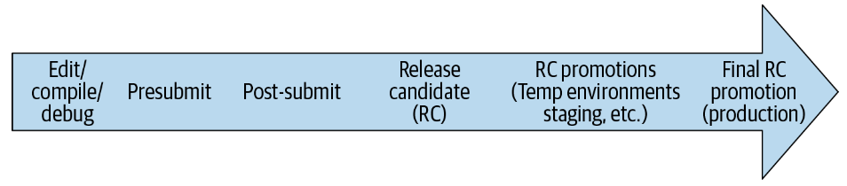
Figure 23-1. Life of a code change
In general, as issues progress to the “right” in our diagram, they become costlier for the following reasons:
- They must be triaged by an engineer who is likely unfamiliar with the problematic code change.
- They require more work for the code change author to recollect and investigate the change.
- They negatively affect others, whether engineers in their work or ultimately the end user.
一般来说，随着问题向我们图中的 "右侧 "发展，它们的成本会变得更高，原因如下：
- 它们必须由可能不熟悉问题代码更改的工程师来处理。
- 这些问题需要代码修改者做更多的工作来回忆和调查这些修改。
- 它们会对其他人产生负面影响，无论是工作中的工程师还是最终的终端用户。
To minimize the cost of bugs, CI encourages us to use fast feedback loops.3 Each time we integrate a code (or other) change into a testing scenario and observe the results, we get a new feedback loop. Feedback can take many forms; following are some common ones (in order of fastest to slowest):
- The edit-compile-debug loop of local development
- Automated test results to a code change author on presubmit
- An integration error between changes to two projects, detected after both are submitted and tested together (i.e., on post-submit)
- An incompatibility between our project and an upstream microservice dependency, detected by a QA tester in our staging environment, when the upstream service deploys its latest changes
- Bug reports by internal users who are opted in to a feature before external users
- Bug or outage reports by external users or the press
为了使bug的代价最小化，CI鼓励我们使用快速反馈环。每次我们将代码（或其他）变化集成到测试场景中并观察结果时，我们就会得到一个新的反馈回路。反馈可以有很多形式；下面是一些常见的形式（按从快到慢的顺序）:
- 本地开发的编辑-编译-调试回路
- 在提交前向代码修改者提供自动测试结果
- 两个项目变更之间的集成错误，在两个项目一起提交和测试后检测（即提交后）。
- 当上游服务部署其最新变化时，我们的项目和上游微服务的依赖关系之间的不兼容，由我们临时环境中的QA测试员发现。
- 在外部用户之前使用功能的内部用户的错误报告
- 外部用户或媒体的错误或故障报告
3This is also sometimes called “shifting left on testing.”
3 这有时也被称为 "测试左移"。
Canarying—or deploying to a small percentage of production first—can help minimize issues that do make it to production, with a subset-of-production initial feedback loop preceding all-of-production. However, canarying can cause problems, too, particularly around compatibility between deployments when multiple versions are deployed at once. This is sometimes known as version skew, a state of a distributed system in which it contains multiple incompatible versions of code, data, and/or configuration. Like many issues we look at in this book, version skew is another example of a challenging problem that can arise when trying to develop and manage software over time.
金丝雀-或者先部署到一小部分生产，可以有助于最小化降低进入生产的问题，在所有生产之前先部署一部分生产初始反馈回路。但是，金丝雀部署也会导致新的问题，尤其是在同时部署多个版本时，部署之间的兼容性问题。这有时被称为版本倾斜，分布式系统的一种状态，其中包含多个不兼容的代码、数据和/或配置版本。就像我们在本书中看到的许多问题一样，版本倾斜是另一个在尝试开发和管理软件时可能出现的具有挑战性的问题的例子。
Experiments and feature flags are extremely powerful feedback loops. They reduce deployment risk by isolating changes within modular components that can be dynamically toggled in production. Relying heavily on feature-flag-guarding is a common paradigm for Continuous Delivery, which we explore further in Chapter 24.
实验特性标志是非常强大的反馈回路。它们通过隔离模块化组件中可以在生产中动态切换的更改来降低部署风险。严重依赖功能标志保护是持续交付的常见范例，我们将在第24章中进一步探讨。
Accessible and actionable feedback 可获取和可操作的反馈
It’s also important that feedback from CI be widely accessible. In addition to our open culture around code visibility, we feel similarly about our test reporting. We have a unified test reporting system in which anyone can easily look up a build or test run, including all logs (excluding user Personally Identifiable Information [PII]), whether for an individual engineer’s local run or on an automated development or staging build.
同样重要的是，来自CI的反馈可以被广泛获取。除了我们围绕代码可见性的开放文化之外，我们对我们的测试报告也有类似的方式。我们有一个统一的测试报告系统，任何人都可以很容易地查看构建或测试运行，包括所有的日志（不包括用户的个人身份信息[PII]），无论是个人工程师的本地运行还是自动化开发或分段构建。
Along with logs, our test reporting system provides a detailed history of when build or test targets began to fail, including audits of where the build was cut at each run, where it was run, and by whom. We also have a system for flake classification, which uses statistics to classify flakes at a Google-wide level, so engineers don’t need to figure this out for themselves to determine whether their change broke another project’s test (if the test is flaky: probably not).
除了日志，我们的测试报告系统还提供了构建或测试目标开始失败的详细历史记录，包括每次运行时在何处剪切构建、在何处运行以及由谁执行的审计日志。我们还有一个松散分类系统，该系统使用统计数据在谷歌范围内对薄片进行分类，因此工程师不需要自己来确定他们的更改是否破坏了另一个项目的测试（如果测试是松散：可能不是）。
Visibility into test history empowers engineers to share and collaborate on feedback, an essential requirement for disparate teams to diagnose and learn from integration failures between their systems. Similarly, bugs (e.g., tickets or issues) at Google are open with full comment history for all to see and learn from (with the exception, again, of customer PII).
对测试历史的可视性使工程师能够就反馈进行共享和协作，这是不同团队诊断和学习系统间集成故障的基本要求。类似地，谷歌的bug（如罚单或问题）是开放的，有完整的评论历史供所有人查看和学习（客户PII除外）。
Finally, any feedback from CI tests should not just be accessible but actionable—easy to use to find and fix problems. We’ll look at an example of improving user-unfriendly feedback in our case study later in this chapter. By improving test output readability, you automate the understanding of feedback.
最后，来自CI测试的任何反馈不仅应该是可访问的，而且应该是可操作的--易于用来发现和修复问题。我们将在本章后面的案例研究中看一个改进用户不友好反馈的例子。通过改善测试输出的可读性，你可以自动理解反馈。
Automation 自动化
It’s well known that automating development-related tasks saves engineering resourcesin the long run. Intuitively, because we automate processes by defining them as code, peer review when changes are checked in will reduce the probability of error. Of course, automated processes, like any other software, will have bugs; but when implemented effectively, they are still faster, easier, and more reliable than if they were attempted manually by engineers.
众所周知，从长远来看，开发相关任务的自动化可以节省工程资源。直观地说，因为我们通过将流程定义为代码来实现自动化，所以在修改时的同行评审将减少错误的概率。当然，自动化流程，像其他软件一样，会有错误；但如果有效地实施，它们仍然比工程师手动尝试更快，更容易，更可靠。
CI, specifically, automates the build and release processes, with a Continuous Build and Continuous Delivery. Continuous testing is applied throughout, which we’ll look at in the next section.
特别是CI，它使构建和发布过程自动化，有持续构建和持续交付。持续测试贯穿始终，我们将在下一节中介绍。
Continuous Build 连续构建
The Continuous Build (CB) integrates the latest code changes at head[^4] and runs an automated build and test. Because the CB runs tests as well as building code, “breaking the build” or “failing the build” includes breaking tests as well as breaking compilation.
持续构建（CB）集成了最新的代码修改，并运行自动构建和测试。因为CB在运行测试的同时也在构建代码，"破坏构建" 或 "构建失败" 包括破坏测试和破坏编译。
After a change is submitted, the CB should run all relevant tests. If a change passes all tests, the CB marks it passing or “green,” as it is often displayed in user interfaces (UIs). This process effectively introduces two different versions of head in the repository: true head, or the latest change that was committed, and green head, or the latest change the CB has verified. Engineers are able to sync to either version in their local development. It’s common to sync against green head to work with a stable environment, verified by the CB, while coding a change but have a process that requires changes to be synced to true head before submission.
提交变更后，CB应运行所有相关测试。如果更改通过了所有测试，CB会将其标记为通过或"绿色"，因为它通常显示在用户界面（UI）中。该流程有效地在报告中引入了两种不同版本的head：真实head或已提交的最新变更，以及绿色head或CB已验证的最新变更。工程师可以在本地开发中同步到任一版本。在编写变更代码时，通常会与绿色head同步，以便在稳定的环境中工作，并经CB验证，但有一个流程要求在提交变更之前将变更同步到真实head。
Continuous Delivery 连续交付
The first step in Continuous Delivery (CD; discussed more fully in Chapter 24) is release automation, which continuously assembles the latest code and configuration from head into release candidates. At Google, most teams cut these at green, as opposed to true, head.
持续交付（CD；在第24章中详细讨论）的第一步是发布自动化，它不断地将最新的代码和配置从head组装成候选发布版本。在谷歌，大多数团队都是在绿色（而不是真正的）head进行切割。
Release candidate (RC): A cohesive, deployable unit created by an automated process,[^5] assembled of code, configuration, and other dependencies that have passed the continuous build.
候选版本（RC）:由自动化流程创建的内聚、可部署单元，由通过持续构建的代码、配置和其他依赖关系组成。
Note that we include configuration in release candidates—this is extremely important, even though it can slightly vary between environments as the candidate is promoted. We’re not necessarily advocating you compile configuration into your binaries—actually, we would recommend dynamic configuration, such as experiments or feature flags, for many scenarios.[^6]
请注意，我们在候选版本中包含了配置--这一点极为重要，尽管在候选版本的推广过程中，不同环境下的配置会略有不同。我们不一定提倡你把配置编译到你的二进制文件中--事实上，我们建议在许多情况下使用动态配置，如实验或特征标志。
Rather, we are saying that any static configuration you do have should be promoted as part of the release candidate so that it can undergo testing along with its corresponding code. Remember, a large percentage of production bugs are caused by “silly” configuration problems, so it’s just as important to test your configuration as it is your code (and to test it along with the same code that will use it). Version skew is often caught in this release-candidate-promotion process. This assumes, of course, that your static configuration is in version control—at Google, static configuration is in version control along with the code, and hence goes through the same code review process.
相反，我们的意思是，你所拥有的任何静态配置都应该作为候选版本的一部分进行升级，以便它可以与其对应的代码一起接受测试。记住，很大比例的生产错误是由 "愚蠢的" 配置问题引起的，所以测试你的配置和测试你的代码一样重要（而且要和将要使用它的相同代码一起测试）。在这个发布--候选--推广的过程中，经常会出现版本倾斜。当然，这是假设你的静态配置是在版本控制中的--在谷歌，静态配置是和代码一起在版本控制中的，因此要经过同样的代码审查过程。
We then define CD as follows:
*Continuous Delivery* (CD): a continuous assembling of release candidates, followed by the promotion and testing of those candidates throughout a series of environments— sometimes reaching production and sometimes not.
那么我们对CD的定义如下:
*持续交付（CD）*：持续集合候选版本，然后在一系列环境中推广和测试这些候选版本--有时达到生产阶段，有时不达到生产阶段。
The promotion and deployment process often depends on the team. We’ll show how our case study navigated this process.
升级和部署过程通常取决于团队。我们将展示我们的案例研究如何引导这一过程。
For teams at Google that want continuous feedback from new changes in production (e.g., Continuous Deployment), it’s usually infeasible to continuously push entire binaries, which are often quite large, on green. For that reason, doing a selective Continuous Deployment, through experiments or feature flags, is a common strategy.[^7]
对于谷歌的团队来说，他们希望从生产中的新变化（例如，持续部署）中获得持续的反馈，通常不可能持续地将整个二进制文件（通常相当大）推到绿色上。因此，通过实验或特性标志进行选择性连续部署是一种常见的策略。
As an RC progresses through environments, its artifacts (e.g., binaries, containers) ideally should not be recompiled or rebuilt. Using containers such as Docker helps enforce consistency of an RC between environments, from local development onward. Similarly, using orchestration tools like Kubernetes (or in our case, usually Borg), helps enforce consistency between deployments. By enforcing consistency of our release and deployment between environments, we achieve higher-fidelity earlier testing and fewer surprises in production.
当一个RC在各种环境中发展，它的构建（如二进制文件、容器）最好不要被重新编译或重建。使用像Docker这样的容器有助于在不同的环境中强制执行RC的一致性，从本地开发开始。同样，使用像Kubernetes这样的协调工具（或者在我们的例子中，通常是Borg），有助于强制执行部署之间的一致性。通过强制执行在不同环境间的发布和部署的一致性，我们实现了更高的保真度、更早的测试和更少的生产意外。
[4^]: Head is the latest versioned code in our monorepo. In other workflows, this is also referred to as master, mainline, or trunk. Correspondingly, integrating at head is also known as trunk-based development.
4 Head是我们monorepo中最新版本的代码。在其他工作流程中，这也被称为主干、主线或主干。相应地，在head集成也被称为基于主干的开发。
[5^]: At Google, release automation is managed by a separate system from TAP. We won’t focus on how release automation assembles RCs, but if you’re interested, we do refer you to Site Reliability Engineering (O’Reilly) in which our release automation technology (a system called Rapid) is discussed in detail./
5 在谷歌，发布自动化是由一个独立于TAP的系统管理的。我们不会专注于发布自动化是如何组装RC的，但如果你有兴趣，我们会向你推荐《网站可靠性工程》（O'Reilly），其中详细讨论了我们的发布自动化技术（一个叫做Rapid的系统）。
[6^]: CD with experiments and feature flags is discussed further in Chapter 24.
6 第24章进一步讨论了带有实验和特征标志的CD。
[7^]: We call these “mid-air collisions” because the probability of it occurring is extremely low; however, when this does happen, the results can be quite surprising.
7 我们称这些为 "空中碰撞"，因为它发生的概率极低；然而，当这种情况发生时，其结果可能是相当令人惊讶的。
Continuous Testing 持续测试
Let’s look at how CB and CD fit in as we apply Continuous Testing (CT) to a code change throughout its lifetime, as shown Figure 23-2.
让我们来看看，当我们将持续测试（CT）应用于代码变更的整个生命周期时，CB和CD是如何配合的，如图23-2所示。
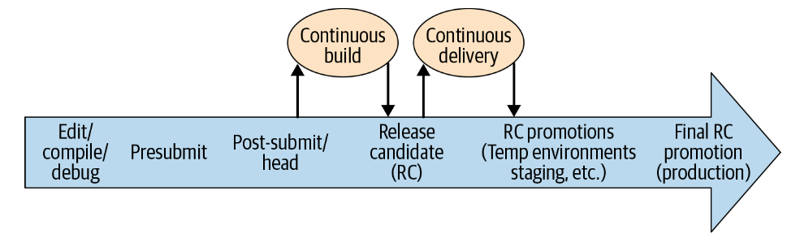
Figure 23-2. Life of a code change with CB and CD
The rightward arrow shows the progression of a single code change from local development to production. Again, one of our key objectives in CI is determining what to test when in this progression. Later in this chapter, we’ll introduce the different testing phases and provide some considerations for what to test in presubmit versus post-submit, and in the RC and beyond. We’ll show that, as we shift to the right, the code change is subjected to progressively larger-scoped automated tests.
向右箭头显示单个代码更改从本地开发到生产的过程。同样，我我们在CI中的一个关键目标是确定在这个过程中什么时候测试什么。在本章后面，我们将介绍不同的测试阶段，并就提交前与提交后以及RC和其他阶段测试内容的注意事项。我们将展示，当我们向右移动时，代码更改将受到范围越来越大的自动化测试的影响。
Why presubmit isn’t enough 为什么仅靠预提交还不够的
With the objective to catch problematic changes as soon as possible and the ability to run automated tests on presubmit, you might be wondering: why not just run all tests on presubmit?
为了尽快发现有问题的更改，并且能够在预提交上运行自动测试，你可能会想：为什么不在预提交时运行所有测试？
The main reason is that it’s too expensive. Engineer productivity is extremely valuable, and waiting a long time to run every test during code submission can be severely disruptive. Further, by removing the constraint for presubmits to be exhaustive, a lot of efficiency gains can be made if tests pass far more frequently than they fail. For example, the tests that are run can be restricted to certain scopes, or selected based on a model that predicts their likelihood of detecting a failure.
主要原因是它成本太高了。工程师的工作效率是非常宝贵的，在提交代码期间等待很长时间运行每个测试可能会严重降低生产力。此外，通过取消对预提交的限制，如果测试通过的频率远远高于失败的频率，就可以获得大量的效率提升。例如，运行的测试可以限制在特定范围内，或者根据预测其检测故障可能性的模型进行选择。
Similarly, it’s expensive for engineers to be blocked on presubmit by failures arising from instability or flakiness that has nothing to do with their code change.
同样，如果工程师在提交前被与他们的代码修改无关的不稳定或松散性引起的故障所阻挡，代价也很高。
Another reason is that during the time we run presubmit tests to confirm that a change is safe, the underlying repository might have changed in a manner that is incompatible with the changes being tested. That is, it is possible for two changes that touch completely different files to cause a test to fail. We call this a mid-air collision,and though generally rare, it happens most days at our scale. CI systems for smaller repositories or projects can avoid this problem by serializing submits so that there is no difference between what is about to enter and what just did.
另一个原因是，在我们运行预提交测试以确认更改是安全的过程中，底层存储库可能以与正在测试的更改不兼容的方式进行了更改。也就是说，两个涉及完全不同文件的更改可能会导致测试失败。我们称这种情况为空中碰撞，虽然一般来说很少发生，但大多数情况下都会发生在我们的掌控范围内。用于较小存储库或项目的CI系统可以通过序列化提交来避免此问题，以便在即将输入的内容和刚刚输入的内容之间没有区别。
Presubmit versus post-submit 预提交与提交后
So, which tests should be run on presubmit? Our general rule of thumb is: only fast, reliable ones. You can accept some loss of coverage on presubmit, but that means you need to catch any issues that slip by on post-submit, and accept some number of rollbacks. On post-submit, you can accept longer times and some instability, as long as you have proper mechanisms to deal with it.
那么，哪些测试应该在预提交时运行？我们的一般经验法则是：只有快速、可靠的测试。你可以接受在预提交时有一些覆盖面的损失，但这意味着你需要在提交后抓住任何漏掉的问题，并接受一定的回滚的次数。在提交后，你可以接受更长的时间和一些不稳定性，只要你有适当的机制来处理它。
We don’t want to waste valuable engineer productivity by waiting too long for slow tests or for too many tests—we typically limit presubmit tests to just those for the project where the change is happening. We also run tests concurrently, so there is a resource decision to consider as well. Finally, we don’t want to run unreliable tests on presubmit, because the cost of having many engineers affected by them, debugging the same problem that is not related to their code change, is too high.
我们不想因为等待太长时间的缓慢测试或太多测试而浪费宝贵的工程师生产力--我们通常将预提交的测试限制在发生变化的项目上。我们还同时运行测试，所以也要考虑资源决定。最后，我们不希望在预提交时运行不可靠的测试，因为让许多工程师受其影响，调试与他们的代码变更无关的同一个问题的成本太高。
Most teams at Google run their small tests (like unit tests) on presubmit4—these are the obvious ones to run as they tend to be the fastest and most reliable. Whether and how to run larger-scoped tests on presubmit is the more interesting question, and this varies by team. For teams that do want to run them, hermetic testing is a proven approach to reducing their inherent instability. Another option is to allow large- scoped tests to be unreliable on presubmit but disable them aggressively when they start failing.
谷歌的大多数团队都在预提交上运行他们的小型测试（如单元测试）-- 这些是明显要运行的，因为它们往往是最快和最可靠的。是否以及如何在提交前运行更大范围的测试是个更有趣的问题，这因团队而异。对于想要运行这些测试的团队来说，封闭测试是一种行之有效的方法来减少其固有的不稳定性。另一个选择是允许大范围的测试在预提交时不可靠，但当它们开始失败时，要主动禁用它们。
4Each team at Google configures a subset of its project’s tests to run on presubmit (versus post-submit). In reality, our continuous build actually optimizes some presubmit tests to be saved for post-submit, behind the scenes. We’ll further discuss this later on in this chapter.
8 谷歌的每个团队都将其项目的测试的一个子集配置为在预提交运行（相对于提交后）。实际上，我们的持续构建实际上在幕后优化了一些预提交的测试，以保存到提交后。我们将在本章的后面进一步讨论这个问题。
Release candidate testing 候选版本测试
After a code change has passed the CB (this might take multiple cycles if there were failures), it will soon encounter CD and be included in a pending release candidate.
在代码修改通过CB（如果有失败的话，这可能需要多个周期）后，它很快再进行CD，并被纳入待发布的候选版本。
As CD builds RCs, it will run larger tests against the entire candidate. We test a release candidate by promoting it through a series of test environments and testing it at each deployment. This can include a combination of sandboxed, temporary environments and shared test environments, like dev or staging. It’s common to include some manual QA testing of the RC in shared environments, too.
在CD构建RC的过程中，它将针对整个候选版本运行更大范围测试。我们通过一系列的测试环境来测试候选发布版，并在每次部署时对其进行测试。这可能包括沙盒、临时环境和共享测试环境的组合，如开发或临时。通常也包括在共享环境中对RC的一些手动QA测试。
There are several reasons why it’s important to run a comprehensive, automated test suite against an RC, even if it is the same suite that CB just ran against the code on post-submit (assuming the CD cuts at green):
-
As a sanity check
We double check that nothing strange happened when the code was cut and recompiled in the RC. -
For auditability
If an engineer wants to check an RC’s test results, they are readily available and associated with the RC, so they don’t need to dig through CB logs to find them. -
To allow for cherry picks
If you apply a cherry-pick fix to an RC, your source code has now diverged from the latest cut tested by the CB. -
For emergency pushes
In that case, CD can cut from true head and run the minimal set of tests necessary to feel confident about an emergency push, without waiting for the full CB to pass.
有几个原因可以说明为什么对RC运行一个全面的、自动化的测试套件很重要，即使它是CB在提交后对代码运行的同一个套件（假设CD是绿色的）:
-
作为理性的检查
我们仔细检查，当代码在RC中被切割和重新编译时，确保没有任何奇怪的事情发生。 -
为了便于审计
如果工程师想检查RC的测试结果，他们很容易得到，并与RC相关联，所以他们不需要在CB日志中寻找它们。 -
允许偷梁换柱
如果你对一个RC应用了偷梁换柱式的修复，你的源代码现在已经与CB测试的最新版本相去甚远。 -
用于紧急推送
在这种情况下，CD可以从真正的head切分，并运行必要的最小的测试集，对紧急推送感到有信心，而不等待完整的CB通过。
Production testing 生产测试
Our continuous, automated testing process goes all the way to the final deployed environment: production. We should run the same suite of tests against production (sometimes called probers) that we did against the release candidate earlier on to verify: 1) the working state of production, according to our tests, and 2) the relevance of our tests, according to production.
我们的持续、自动化测试过程一直持续到最后的部署环境：生产环境。我们应该对生产环境运行相同的测试套件（有时称为probers），就像我们早期对候选发布版所做的那样，以验证：1）根据我们的测试，生产环境的工作状态；2）根据生产环境，我们测试的相关性。
Continuous testing at each step of the application’s progression, each with its own trade-offs, serves as a reminder of the value in a “defense in depth” approach to catching bugs—it isn’t just one bit of technology or policy that we rely upon for quality and stability, it’s many testing approaches combined.
在应用程序进展的每一步进行持续测试，每一步都有其自身的权衡，这提醒了"深度防御 "方法在捕捉错误方面的价值--我们依靠的不仅仅是一种技术或策略来保证质量和稳定性，还有多种测试方法的结合。
CI Is Alerting CI正在告警 Titus Winters
As with responsibly running production systems, sustainably maintaining software systems also requires continual automated monitoring. Just as we use a monitoring and alerting system to understand how production systems respond to change, CI reveals how our software is responding to changes in its environment. Whereas production monitoring relies on passive alerts and active probers of running systems, CI uses unit and integration tests to detect changes to the software before it is deployed. Drawing comparisons between these two domains lets us apply knowledge from one to the other.
与负责任地运行生产系统一样，可持续地维护软件系统也需要持续的自动监控。正如我们使用监控和告警系统来了解生产系统对变化的反应一样，CI揭示了我们的软件是如何对其环境的变化做出反应的。生产监控依赖于运行系统的被动告警和主动探测，而CI则使用单元和集成测试来检测软件在部署前的变化。在这两个领域之间进行比较，可以让我们把一个领域的知识应用到另一个领域。
Both CI and alerting serve the same overall purpose in the developer workflow—to identify problems as quickly as reasonably possible. CI emphasizes the early side of the developer workflow, and catches problems by surfacing test failures. Alerting focuses on the late end of the same workflow and catches problems by monitoring metrics and reporting when they exceed some threshold. Both are forms of “identify problems automatically, as soon as possible.”
CI和告警在开发者工作流程中的总体目的是一样的--尽可能快地发现问题。CI强调开发者工作流程的早期阶段，并通过显示测试失败来捕获问题。告警侧重于同一工作流程的后期，通过监测指标并在指标超过某个阈值时报告来捕捉问题。两者都是 "自动、尽快地识别问题"的形式。
A well-managed alerting system helps to ensure that your Service-Level Objectives (SLOs) are being met. A good CI system helps to ensure that your build is in good shape—the code compiles, tests pass, and you could deploy a new release if you needed to. Best-practice policies in both spaces focus a lot on ideas of fidelity and actionable alerting: tests should fail only when the important underlying invariant is violated, rather than because the test is brittle or flaky. A flaky test that fails every few CI runs is just as much of a problem as a spurious alert going off every few minutes and generating a page for the on-call. If it isn’t actionable, it shouldn’t be alerting. If it isn’t actually violating the invariants of the SUT, it shouldn’t be a test failure.
一个管理良好的告警系统有助于确保你的服务水平目标（SLO）得到满足。一个高效的CI系统有助于确保你的构建处于良好状态--代码编译，测试通过，如果需要的话，你可以部署一个新版本。这两个领域的最佳实践策略都非常注重仿真度和可操作的告警机制：测试应该只在重要的基础不变因素被违反时才失败，而不是因为测试很脆弱或不稳定。就像一个虚假的警报每隔几分钟就会响起，并为值班人员生成一个页面一样，一个脆弱的测试每次运行CI都会失败，这是一个问题。如果它不具有可操作性，就不应该发出警报。如果它实际上没有违反SUT的不变性，就不应该是测试失败。
CI and alerting share an underlying conceptual framework. For instance, there’s a similar relationship between localized signals (unit tests, monitoring of isolated statistics/cause-based alerting) and cross-dependency signals (integration and release tests, black-box probing). The highest fidelity indicators of whether an aggregate system is working are the end-to-end signals, but we pay for that fidelity in flakiness, increasing resource costs, and difficulty in debugging root causes.
CI和告警共享一个基本的概念框架。例如，在局部信号（单元测试、独立统计监测/基于原因的警报）和交叉依赖信号（集成和发布测试、黑盒探测）之间存在类似的关系。虽然端到端的信号是衡量整个系统是否正常工作的最高仿真度指标，但我们要为这种仿真度付出代价，如松散性、不断增加的资源成本和调试根源的难度。。
Similarly, we see an underlying connection in the failure modes for both domains. Brittle cause-based alerts fire based on crossing an arbitrary threshold (say, retries in the past hour), without there necessarily being a fundamental connection between that threshold and system health as seen by an end user. Brittle tests fail when an arbitrary test requirement or invariant is violated, without there necessarily being a fundamental connection between that invariant and the correctness of the software being tested. In most cases these are easy to write, and potentially helpful in debugging a larger issue. In both cases they are rough proxies for overall health/correctness, failing to capture the holistic behavior. If you don’t have an easy end-to-end probe, but you do make it easy to collect some aggregate statistics, teams will write threshold alerts based on arbitrary statistics. If you don’t have a high-level way to say, “Fail the test if the decoded image isn’t roughly the same as this decoded image,” teams will instead build tests that assert that the byte streams are identical.
同样，我们在这两个领域的故障模式中看到了一种潜在的联系。脆弱的基于原因的告警基于超过任意阈值（例如，过去一小时内的重试）而启动，而该阈值与终端用户看到的系统健康状况之间不一定有根本联系。当一个任意的测试要求或不变量被违反时，脆性测试就会失败，而不一定在该变量和被测软件的正确性之间有根本的联系。在大多数情况下，这些测试很容易写，并有可能有助于调试更大的问题。在这两种情况下，它们都是整体健康/正确性的粗略代理，无法捕获整体行为。如果你没有一个简单的端到端探针，但你确实可以轻松地收集一些聚合统计信息，那么团队将基于任意统计信息编写阈值警报。如果你没有一个高层次的方法判断："如果解码后的图像与这个原图像不大致相同，则测试失败"，团队就会建立测试，断言字节流是相同的。
Cause-based alerts and brittle tests can still have value; they just aren’t the ideal way to identify potential problems in an alerting scenario. In the event of an actual failure, having more debug detail available can be useful. When SREs are debugging an outage, it can be useful to have information of the form, “An hour ago users, started experiencing more failed requests. Around the same, time the number of retries started ticking up. Let’s start investigating there.” Similarly, brittle tests can still provide extra debugging information: “The image rendering pipeline started spitting out garbage. One of the unit tests suggests that we’re getting different bytes back from the JPEG compressor. Let’s start investigating there.”
基于原因的告警和脆性测试仍然有价值；它们只是在告警场景中不是识别潜在问题的理想方式。在实际发生故障的情况下，有更多的调试细节可以使用。当SRE正在调试故障时，有这样的信息是很有用的："一小时前，用户开始遇到更多的失败请求。大约在同一时间，重试的数量开始上升。让我们开始调查。" 同样地，脆弱的测试仍然可以提供额外的调试信息。"图像渲染管道开始吐出乱数据。其中一个单元测试表明，我们从JPEG压缩器那里得到了不同的字节。让我们开始调查吧。"
Although monitoring and alerting are considered a part of the SRE/production management domain, where the insight of “Error Budgets” is well understood,[^9] CI comes from a perspective that still tends to be focused on absolutes. Framing CI as the “left shift” of alerting starts to suggest ways to reason about those policies and propose better best practices:
- Having a 100% green rate on CI, just like having 100% uptime for a production service, is awfully expensive. If that is actually your goal, one of the biggest problems is going to be a race condition between testing and submission.
- Treating every alert as an equal cause for alarm is not generally the correct approach. If an alert fires in production but the service isn’t actually impacted, silencing the alert is the correct choice. The same is true for test failures: until our CI systems learn how to say, “This test is known to be failing for irrelevant reasons,” we should probably be more liberal in accepting changes that disable a failed test. Not all test failures are indicative of upcoming production issues.
- Policies that say, “Nobody can commit if our latest CI results aren’t green” are probably misguided. If CI reports an issue, such failures should definitely be investigated before letting people commit or compound the issue. But if the root cause is well understood and clearly would not affect production, blocking commits is unreasonable.
尽管监控和告警被认为是SRE/生产管理领域的一部分，其中 "错误成本 "的洞察力被很好地理解，CI来自一个仍然倾向于关注绝对性的视角。将CI定义为告警的 "左移"，开始建议如何推理这些策略并提出更好的最佳实践：
- 在CI上实现100%的绿色率，就像在生产服务中实现100%的正常运行时间一样，是非常昂贵的。如果这确实是你的目标，那么最大的问题之一就是测试和提交之间的竞争条件。
- 把每个告警都当作一个相同原因来处理，一般来说不是正确的方法。如果一个告警在生产中被触发，但服务实际上并没有受到影响，让告警沉默是正确的选择。对于测试失败也是如此：在我们的CI系统学会如何说“已知此测试因无关原因而失败”之前，我们可能应该更自由地接受禁用失败测试的更改。并非所有测试失败都表明即将出现生产问题。
- 那些说 "如果我们最新的CI结果不是绿色的，任何人都不能提交 "的策略可能是错误的。如果 CI 报告了一个问题，在让人们提交或使问题复杂化之前，肯定要对这种失败进行调查。但如果根本原因已被充分理解，并且显然不会影响生产，那么阻止提交是不合理的。
This “CI is alerting” insight is new, and we’re still figuring out how to fully draw parallels. Given the higher stakes involved, it’s unsurprising that SRE has put a lot of thought into best practices surrounding monitoring and alerting, whereas CI has been viewed as more of a luxury feature.[^10] For the next few years, the task in software engineering will be to see where existing SRE practice can be reconceptualized in a CI context to help reformulate the testing and CI landscape—and perhaps where best practices in testing can help clarify goals and policies on monitoring and alerting.
这种 "CI就是警报"的见解是新颖的，我们仍在摸索如何充分地得出相似之处。鉴于所涉及的风险较高，SRE对围绕监控和警报的最佳实践进行了大量的思考，而CI则被视为一种奢侈的功能，这一点并不奇怪。在未来几年，软件工程的任务将是看看现有的SRE实践可以在CI背景下重新概念化，以帮助重新制定测试和CI景观，也许测试的最佳实践可以帮助澄清监控和警报的目标和策略。
[9^]: Aiming for 100% uptime is the wrong target. Pick something like 99.9% or 99.999% as a business or product trade-off, define and monitor your actual uptime, and use that “budget” as an input to how aggressively you’re willing to push risky releases.
9 以100%的正常运行时间为目标是错误的。选择像99.9%或99.999%这样的目标作为业务或产品的权衡，定义并监控你的实际正常运行时间，并使用该 "成本预算 "作为你愿意多积极地推动风险发布的输入。
[10^]: We believe CI is actually critical to the software engineering ecosystem: a must-have, not a luxury. But that is not universally understood yet.
10 我们相信CI实际上对软件工程生态系统至关重要：它是必需品，而不是奢侈品。但这一点尚未得到普遍理解。
CI Challenges
We’ve discussed some of the established best practices in CI and have introduced some of the challenges involved, such as the potential disruption to engineer productivity of unstable, slow, conflicting, or simply too many tests at presubmit. Some common additional challenges when implementing CI include the following:
-
Presubmit optimization
Including which tests to run at presubmit time given the potential issues we’ve already described, and how to run them. -
Culprit finding and failure isolation
Which code or other change caused the problem, and which system did it happen in? “Integrating upstream microservices” is one approach to failure isolation in a distributed architecture, when you want to figure out whether a problem originated in your own servers or a backend. In this approach, you stage combinations of your stable servers along with upstream microservices’ new servers. (Thus, you are integrating the microservices’ latest changes into your testing.) This approach can be particularly challenging due to version skew: not only are these environments often incompatible, but you’re also likely to encounter false positives—problems that occur in a particular staged combination that wouldn’t actually be spotted in production. -
Resource constraints
Tests need resources to run, and large tests can be very expensive. In addition, the cost for the infrastructure for inserting automated testing throughout the process can be considerable.
我们已经讨论了CI的一些已确认的最佳实践，并介绍了其中的一些挑战，例如不稳定的、缓慢的、冲突的或仅仅是在预提交时太多的测试对工程师生产力的潜在干扰。实施CI时，一些常见的额外挑战包括以下内容：
-
提交前优化
包括考虑到我们已经描述过的潜在问题，在提交前运行哪些测试，以及如何运行它们。 -
找出罪魁祸首和故障隔离
哪段代码或其他变化导致了问题，它发生在哪个系统中？"整合上游微服务 "是分布式架构中故障隔离的一种方法，当你想弄清楚问题是源于你自己的服务器还是后端。在这种方法中，你把你的稳定服务器与上游微服务的新服务器组合在一起。（因此，你将微服务的最新变化整合到你的测试中）。由于版本偏差，这种方法可能特别具有挑战性：不仅这些环境经常不兼容，而且你还可能遇到假阳性--在某个特定的阶段性组合中出现的问题，实际上在生产中不会被发现。 -
资源限制
测试需要资源来运行，而大型测试可能非常昂贵。此外，在整个过程中插入自动化测试的基础设施的成本可能是相当大的。
There’s also the challenge of *failure management—*what to do when tests fail. Although smaller problems can usually be fixed quickly, many of our teams find that it’s extremely difficult to have a consistently green test suite when large end-to-end tests are involved. They inherently become broken or flaky and are difficult to debug; there needs to be a mechanism to temporarily disable and keep track of them so that the release can go on. A common technique at Google is to use bug “hotlists” filed by an on-call or release engineer and triaged to the appropriate team. Even better is when these bugs can be automatically generated and filed—some of our larger products, like Google Web Server (GWS) and Google Assistant, do this. These hotlists should be curated to make sure any release-blocking bugs are fixed immediately. Nonrelease blockers should be fixed, too; they are less urgent, but should also be prioritized so the test suite remains useful and is not simply a growing pile of disabled, old tests. Often, the problems caught by end-to-end test failures are actually with tests rather than code.
还有一个挑战是失败管理--当测试失败时该怎么做。尽管较小的问题通常可以很快得到解决，但我们的许多团队发现，当涉及到大型的端到端测试时，要有一个持续的绿色测试套件是非常困难的。它们本来就会出现故障或不稳定，而且难以调试；需要有一种机制来暂时禁用并跟踪它们，以便发布工作能够继续进行。在谷歌，一种常见的技术是使用由值班或发布工程师提交的bug "热名单"，并将其分发给相应的团队。如果这些bug能够自动生成并归档，那就更好了--我们的一些大型产品，如谷歌网络服务器（GWS）和谷歌助手，就能做到这一点。应对这些热名单进行整理，以确保立即修复所有阻止发布的bug。非发布障碍也应该被修复；它们不那么紧急，但也应该被优先处理，这样测试套件才会保持有用，而不仅仅是一堆越来越多的失效的旧测试。通常，由端到端测试失败引起的问题实际上是测试问题，而不是代码问题。
Flaky tests pose another problem to this process. They erode confidence similar to a broken test, but finding a change to roll back is often more difficult because the failure won’t happen all the time. Some teams rely on a tool to remove such flaky tests from presubmit temporarily while the flakiness is investigated and fixed. This keeps confidence high while allowing for more time to fix the problem.
不稳定测试给这个过程带来了另一个问题。它们会侵蚀信心，就像一次失败的测试一样，但找到一个可以回滚的变化往往更困难，因为失败不会一直发生。一些团队依靠一种工具，在调查和修复不稳定的测试时，暂时从预提交中删除这种不稳定测试。这样可以保持较高的信心，同时允许有更多的时间来修复这个问题。
Test instability is another significant challenge that we’ve already looked at in the context of presubmits. One tactic for dealing with this is to allow multiple attempts of the test to run. This is a common test configuration setting that teams use. Also, within test code, retries can be introduced at various points of specificity.
测试的不稳定性是另一个重大挑战，我们已经在预提交的背景下看过了。处理这个问题的一个策略是允许测试的多次尝试运行。这是团队使用的常见测试配置设置。另外，在测试代码中，可以在不同的特定点引入重试。
Another approach that helps with test instability (and other CI challenges) is hermetic testing, which we’ll look at in the next section.
另一种有助于解决测试不稳定性（和其他CI挑战）的方法是封闭测试，我们将在下一节中讨论。
Hermetic Testing 封闭测试
Because talking to a live backend is unreliable, we often use hermetic backends for larger-scoped tests. This is particularly useful when we want to run these tests on presubmit, when stability is of utmost importance. In Chapter 11, we introduced the concept of hermetic tests:
*Hermetic tests*: tests run against a test environment (i.e., application servers and resources) that is entirely self-contained (i.e., no external dependencies like production backends).
因为与实时后端交互是不可靠的，我们经常使用封闭后端进行较大范围的测试。当我们想在提交前运行这些测试时，这是特别有用的，因为此时稳定性是最重要的。在第11章中，我们介绍了封闭测试的概念。
*封闭测试*：针对测试环境（即应用服务器和资源）运行的测试，是完全自成一体的（即没有像生产后端那样的外部依赖）。
Hermetic tests have two important properties: greater determinism (i.e., stability) and isolation. Hermetic servers are still prone to some sources of nondeterminism, like system time, random number generation, and race conditions. But, what goes into the test doesn’t change based on outside dependencies, so when you run a test twice with the same application and test code, you should get the same results. If a hermetic test fails, you know that it’s due to a change in your application code or tests (with a minor caveat: they can also fail due to a restructuring of your hermetic test environment, but this should not change very often). For this reason, when CI systems rerun tests hours or days later to provide additional signals, hermeticity makes test failures easier to narrow down.
封闭测试有两个重要的特性：更高的确定性（即稳定性）和隔离性。封闭式服务器仍然容易受到一些非确定性来源的影响，如系统时间、随机数生成和竞态条件。但是，进入测试的内容不会因为外部的依赖关系而改变，所以当你用相同的应用程序和测试代码运行两次测试时，你应该得到相同的结果。如果一个封闭测试失败了，你就知道是由于你的应用程序代码或测试的变化造成的（有一个小的注意事项：它们也可能由于你的封闭测试环境的重组而失败，但这不应该经常更变）。出于这个原因，当CI系统在几小时或几天后重新运行测试以提供额外的信号时，封闭性使测试失败更容易缩小范围。
The other important property, isolation, means that problems in production should not affect these tests. We generally run these tests all on the same machine as well, so we don’t have to worry about network connectivity issues. The reverse also holds: problems caused by running hermetic tests should not affect production.
另一个重要特性，隔离性，意味着生产环境中的问题不应该影响这些测试。我们通常也在同一台机器上运行这些测试，因此我们不必担心网络连接问题。反之亦然：运行封闭测试引起的问题不应影响生产环境。
Hermetic test success should not depend on the user running the test. This allows people to reproduce tests run by the CI system and allows people (e.g., library developers) to run tests owned by other teams.
封闭测试的成功不应取决于运行测试的用户。这允许人们复制CI系统运行的测试，并允许人们（例如，库的开发者）运行其他团队拥有的测试。
One type of hermetic backend is a fake. As discussed in Chapter 13, these can be cheaper than running a real backend, but they take work to maintain and have limited fidelity.
一种封闭式的后端是模拟的。正如在第13章中所讨论的，这些可能比运行一个真正的后端更廉价，但它们需要花费精力去维护，而且仿真度有限。
The cleanest option to achieve a presubmit-worthy integration test is with a fully hermetic setup—that is, starting up the entire stack sandboxed5—and Google provides out-of-the-box sandbox configurations for popular components, like databases, to make it easier. This is more feasible for smaller applications with fewer components, but there are exceptions at Google, even one (by DisplayAds) that starts about four hundred servers from scratch on every presubmit as well as continuously on postsubmit. Since the time that system was created, though, record/replay has emerged as a more popular paradigm for larger systems and tends to be cheaper than starting up a large sandboxed stack.
实现具有预提交价值的集成测试的最干净的选择是使用一个完全精细的设置--即启动整个堆栈沙盒--谷歌为流行组件（如数据库）提供开箱即用的沙盒配置，以使其更简单。这对于组件较少的小型应用程序更为可行，但谷歌也有例外，即使是一个（由DisplayAds提供）在每次提交前以及提交后从零开始启动大约400台服务器的应用程序。但是，自创建该系统以来，录制/重播已成为大型系统的一种更受欢迎的范例，并且往往比启动大型沙盒堆栈更便宜。
Record/replay (see Chapter 14) systems record live backend responses, cache them, and replay them in a hermetic test environment. Record/replay is a powerful tool for reducing test instability, but one downside is that it leads to brittle tests: it’s difficult to strike a balance between the following:
False positives The test passes when it probably shouldn’t have because we are hitting the cache too much and missing problems that would surface when capturing a new response.
False negatives The test fails when it probably shouldn’t have because we are hitting the cache too little. This requires responses to be updated, which can take a long time and lead to test failures that must be fixed, many of which might not be actual problems. This process is often submit-blocking, which is not ideal.
记录/重放（见第14章）系统记录实时的后端响应，缓存它们，并在一个封闭的测试环境中重放它们。记录/重放是一个强大的工具，可以减少测试的不稳定性，但一个缺点是它会导致测试变脆弱：很难在以下方面取得平衡：
假阳性 测试在不应该通过的情况下通过了，因为我们对缓存的访问太多，并且遗漏了捕获新响应时可能出现的问题。
错误的否定 测试在不应该通过的情况下失败了，因为我们对缓冲区的命中太少。这需要更新响应，这可能需要很长时间，并导致必须修复的测试失败，其中许多可能不是实际问题。这个过程通常是提交阻塞，这并不理想。
Ideally, a record/replay system should detect only problematic changes and cachemiss only when a request has changed in a meaningful way. In the event that that change causes a problem, the code change author would rerun the test with an updated response, see that the test is still failing, and thereby be alerted to the problem. In practice, knowing when a request has changed in a meaningful way can be incredibly difficult in a large and ever-changing system.
理想情况下，记录/重放系统应该只检测有问题的更改，并且只有在请求以有意义的方式更改时才检测缓存未命中。如果该更改导致问题，代码修改者会用更新的响应重新运行测试，查看测试是否仍然失败，并因此收到问题警报。在实践中，在一个大型且不断变化的系统中，知道请求何时以有意义的方式发生了更改可能非常困难。
5In practice, it’s often difficult to make a completely sandboxed test environment, but the desired stability can be achieved by minimizing outside dependencies.
11 在实践中，通常很难做出一个完全沙盒化的测试环境，但可以通过尽量减少外部的依赖性来实现所需的稳定性。
The Hermetic Google Assistant 隐秘的谷歌助手
Google Assistant provides a framework for engineers to run end-to-end tests, including a test fixture with functionality for setting up queries, specifying whether to simulate on a phone or a smart home device, and validating responses throughout an exchange with Google Assistant.
谷歌助手为工程师提供了一个运行端到端测试的框架，包括一个具有设置查询功能的测试套件，指定是否在手机或智能家居设备上进行模拟，并在与谷歌助手的整个交互中验证响应。
One of its greatest success stories was making its test suite fully hermetic on presubmit. When the team previously used to run nonhermetic tests on presubmit, the tests would routinely fail. In some days, the team would see more than 50 code changes bypass and ignore the test results. In moving presubmit to hermetic, the team cut the runtime by a factor of 14, with virtually no flakiness. It still sees failures, but those failures tend to be fairly easy to find and roll back.
其最大的成功故事之一是使其测试套件在提交前完全密封。当该团队以前在提交前运行非封闭测试时，测试经常会失败。在某些时间里，团队会看到超过50个代码更改绕过并忽略测试结果。在将预提交转为封闭的过程中，该团队将运行时间缩短了14倍，而且几乎没有任何闪失。它仍然会出现故障，但这些故障往往是相当容易发现和回滚的。
Now that nonhermetic tests have been pushed to post-submit, it results in failures accumulating there instead. Debugging failing end-to-end tests is still difficult, and some teams don’t have time to even try, so they just disable them. That’s better than having it stop all development for everyone, but it can result in production failures.
现在，非封闭测试已经被推到提交后，结果反而导致失败在那里累积。调试失败的端到端测试仍然很困难，一些团队甚至没有时间尝试，所以他们只是禁用它们。这比让它停止所有人的开发要好，但它可能导致生产失败。
One of the team’s current challenges is to continue to fine-tuning its caching mechanisms so that presubmit can catch more types of issues that have been discovered only post-submit in the past, without introducing too much brittleness.
该团队目前的挑战之一是继续微调其缓存机制，以便预提交可以捕捉到更多过去只在提交后发现的问题类型，同时不引入过多的脆弱性。
Another is how to do presubmit testing for the decentralized Assistant given that components are shifting into their own microservices. Because the Assistant has a large and complex stack, the cost of running a hermetic stack on presubmit, in terms of engineering work, coordination, and resources, would be very high.
另一个问题是，鉴于组件正在转移到自己的微服务中，如何为分散的助手做预提交测试。因为助手有一个庞大而复杂的堆栈，在预提交上运行一个封闭的堆栈，在工程工作、协调和资源方面的成本会非常高。
Finally, the team is taking advantage of this decentralization in a clever new postsubmit failure-isolation strategy. For each of the N microservices within the Assistant, the team will run a post-submit environment containing the microservice built at head, along with production (or close to it) versions of the other N – 1 services, to isolate problems to the newly built server. This setup would normally be O(N2) cost to facilitate, but the team leverages a cool feature called hotswapping to cut this cost to O(N). Essentially, hotswapping allows a request to instruct a server to “swap” in the address of a backend to call instead of the usual one. So only N servers need to be run, one for each of the microservices cut at head—and they can reuse the same set of prod backends swapped in to each of these N “environments.”
最后，该团队正在利用这种分散的优势，采取一种巧妙的新的提交后故障隔离策略。对于助手中的N个微服务中的每一个，团队将运行一个提交后的环境，其中包含在头部构建的微服务，以及其他N-1个服务的生产（或接近生产）版本，以将问题隔离到新构建的服务器。这种设置通常是O(N2)的成本，但该团队利用了一个很酷的功能，称为热交换，将这一成本削减到O(N)。从本质上讲，"热交换"允许一个请求指示服务器 "交换 "一个后端地址来调用，而不是通常的一个。因此，只需要运行N个服务器，每个微服务都有一个，而且它们可以重复使用同一组被交换到这N个 "环境 "中的生产环境后端。
As we’ve seen in this section, hermetic testing can both reduce instability in largerscoped tests and help isolate failures—addressing two of the significant CI challenges we identified in the previous section. However, hermetic backends can also be more expensive because they use more resources and are slower to set up. Many teams use combinations of hermetic and live backends in their test environments.
正如我们在本节中所看到的，封闭测试既可以减少大范围测试中的不稳定性，也可以帮助隔离故障，解决我们在上一节中确定的两个重大CI挑战。然而，封闭式后端也可能更昂贵，因为它们使用更多的资源，并且设置速度较慢。许多团队在他们的测试环境中使用密封和活动后端的组合。
CI at Google 谷歌的CI
Now let’s look in more detail at how CI is implemented at Google. First, we’ll look at our global continuous build, TAP, used by the vast majority of teams at Google, and how it enables some of the practices and addresses some of the challenges that we looked at in the previous section. We’ll also look at one application, Google Takeout, and how a CI transformation helped it scale both as a platform and as a service.
现在让我们更详细地看看CI在谷歌是如何实施的。首先，我们将了解谷歌绝大多数团队使用的全球持续构建TAP，以及它是如何实现一些实践和解决我们在上一节中看到的一些挑战的。我们还将介绍一个应用程序Google Takeout，以及CI转换如何帮助其作为平台和服务进行扩展。
TAP: Google’s Global Continuous Build 谷歌的全球持续构建
Adam Bender 亚当-本德
We run a massive continuous build, called the Test Automation Platform (TAP), of our entire codebase. It is responsible for running the majority of our automated tests. As a direct consequence of our use of a monorepo, TAP is the gateway for almost all changes at Google. Every day it is responsible for handling more than 50,000 unique changes and running more than four billion individual test cases.
我们在整个代码库中运行一个大规模的持续构建，称为测试自动化平台（TAP）。它负责运行我们大部分的自动化测试。由于我们使用的是monorepo，TAP是谷歌几乎所有变化的门户。每天，它负责处理超过50,000个独特的变化，运行超过40亿个独立的测试用例。
TAP is the beating heart of Google’s development infrastructure. Conceptually, the process is very simple. When an engineer attempts to submit code, TAP runs the associated tests and reports success or failure. If the tests pass, the change is allowed into the codebase.
TAP是谷歌发展基础设施的核心。从概念上讲，这个过程非常简单。当工程师试图提交代码时，TAP将运行相关测试并报告成功或失败。如果测试通过，则允许更改进入代码库。
Presubmit optimization 预提交优化
To catch issues quickly and consistently, it is important to ensure that tests are run against every change. Without a CB, running tests is usually left to individual engineer discretion, and that often leads to a few motivated engineers trying to run all tests and keep up with the failures.
为了快速和持续地发现问题，必须确保对每一个变化都进行测试。如果没有CB，运行测试通常是由个别工程师决定的，这往往会导致一些有积极性的工程师试图运行所有的测试并跟进故障。
As discussed earlier, waiting a long time to run every test on presubmit can be severely disruptive, in some cases taking hours. To minimize the time spent waiting, Google’s CB approach allows potentially breaking changes to land in the repository (remember that they become immediately visible to the rest of the company!). All we ask is for each team to create a fast subset of tests, often a project’s unit tests, that can be run before a change is submitted (usually before it is sent for code review)—the presubmit. Empirically, a change that passes the presubmit has a very high likelihood (95%+) of passing the rest of the tests, and we optimistically allow it to be integrated so that other engineers can then begin to use it.
如前所述，等待很长时间来运行预提交的每个测试可能会造成严重破坏，在某些情况下需要等待数小时。为了最大限度地减少等待时间，谷歌的CB方法允许潜在的破坏性更改提交到存储库中（请记住，这些更改会立即被公司其他人看到！）。我们只要求每个团队创建一个快速的测试子集，通常是一个项目的单元测试，可以在提交更改之前（通常是在发送更改进行代码审查之前）运行这些测试。根据经验，通过预提交的变更通过其余测试的可能性非常高（95%+），我们乐观地允许将其集成，以便其他工程师可以开始使用它。
After a change has been submitted, we use TAP to asynchronously run all potentially affected tests, including larger and slower tests.
提交更改后，我们使用TAP异步运行所有可能受影响的测试，包括较大和较慢的测试。
When a change causes a test to fail in TAP, it is imperative that the change be fixed quickly to prevent blocking other engineers. We have established a cultural norm that strongly discourages committing any new work on top of known failing tests, though flaky tests make this difficult. Thus, when a change is committed that breaks a team’s build in TAP, that change may prevent the team from making forward progress or building a new release. As a result, dealing with breakages quickly is imperative.
当变更导致TAP测试失败时，必须迅速修复变更，以防止阻塞其他工程师。我们已经建立了一种文化规范，强烈反对在已知失败测试的基础上进行任何新的工作，尽管不稳定测试会让这变得困难。因此，当提交的变更打破了团队的内置TAP时，该变更可能会阻止团队向前推进或构建新版本。因此，快速处理故障势在必行。
To deal with such breakages, each team has a “Build Cop.” The Build Cop’s responsibility is keeping all the tests passing in their particular project, regardless of who breaks them. When a Build Cop is notified of a failing test in their project, they drop whatever they are doing and fix the build. This is usually by identifying the offending change and determining whether it needs to be rolled back (the preferred solution) or can be fixed going forward (a riskier proposition).
为了处理这种破坏，每个团队都有一个 "Build Cop"。Build Cop的责任是保持他们特定项目的所有测试通过，无论谁破坏了它们。当Build Cop被告知他们的项目中有一个失败的测试时，他们会放下手中的工作，修复构建。这通常是通过识别违规的变化，并确定它是否需要回滚（首选解决方案）或可以继续修复（风险较大）。
In practice, the trade-off of allowing changes to be committed before verifying all tests has really paid off; the average wait time to submit a change is around 11 minutes, often run in the background. Coupled with the discipline of the Build Cop, we are able to efficiently detect and address breakages detected by longer running tests with a minimal amount of disruption.
在实践中，允许在验证所有测试之前提交更改的折衷方案已经真正得到了回报；提交更改的平均等待时间约为11分钟，通常在后台运行。再加上Build Cop的原则，我们能够以最小的中断量有效地检测和解决运行时间较长的测试检测到的故障。
Culprit finding发现罪魁祸首
One of the problems we face with large test suites at Google is finding the specific change that broke a test. Conceptually, this should be really easy: grab a change, run the tests, if any tests fail, mark the change as bad. Unfortunately, due to a prevalence of flakes and the occasional issues with the testing infrastructure itself, having confidence that a failure is real isn’t easy. To make matters more complicated, TAP must evaluate so many changes a day (more than one a second) that it can no longer run every test on every change. Instead, it falls back to batching related changes together, which reduces the total number of unique tests to be run. Although this approach can make it faster to run tests, it can obscure which change in the batch caused a test to break.
谷歌大型测试套件面临的一个问题是找到破坏测试的具体变化。从概念上讲，这应该很容易：抓取一个变更，运行测试，如果任何测试失败，将变更标记为坏的。不幸的是，由于片断的流行以及测试基础设施本身偶尔出现的问题，要确信失败是真实的并不容易。更加复杂的是，TAP必须每天评估如此多的变化（一秒钟超过一个），以至于它不能再对每个变化运行每个测试。取而代之的是，它退回到批处理相关的更改，这减少了要运行的独特测试的总数。尽管这种方法可以加快运行测试的速度，但它可以掩盖批处理中导致测试中断的更改。
To speed up failure identification, we use two different approaches. First, TAP automatically splits a failing batch up into individual changes and reruns the tests against each change in isolation. This process can sometimes take a while to converge on a failure, so in addition, we have created culprit finding tools that an individual developer can use to binary search through a batch of changes and identify which one is the likely culprit.
为了加快故障识别，我们使用了两种不同的方法。首先，TAP自动将失败的批次拆分为单独的更改，并针对每个更改单独重新运行测试。这个过程有时需要一段时间才能收敛到失败，因此，我们还创建了罪魁祸首查找工具，每个开发人员可以使用这些工具通过一批更改进行二进制搜索，并确定哪一个是可能的罪魁祸首。
Failure management 故障管理
After a breaking change has been isolated, it is important to fix it as quickly as possible. The presence of failing tests can quickly begin to erode confidence in the test suite. As mentioned previously, fixing a broken build is the responsibility of the Build Cop. The most effective tool the Build Cop has is the rollback.
在隔离破坏性变更后，尽快修复该变更非常重要。失败测试的存在可能会很快开始侵蚀测试套件的信心。如前所述，修复损坏的构建是Build Cop的责任。Build Cop最有效的工具是回滚。
Rolling a change back is often the fastest and safest route to fix a build because it quickly restores the system to a known good state.[^12] In fact, TAP has recently been upgraded to automatically roll back changes when it has high confidence that they are the culprit.
回滚更改通常是修复生成的最快和最安全的方法，因为它可以快速将系统恢复到已知的良好状态。事实上，TAP最近已升级为自动回滚更改，当它高度确信更改是罪魁祸首时。
Fast rollbacks work hand in hand with a test suite to ensure continued productivity. Tests give us confidence to change, rollbacks give us confidence to undo. Without tests, rollbacks can’t be done safely. Without rollbacks, broken tests can’t be fixed quickly, thereby reducing confidence in the system.
快速回滚与测试套件携手并进，以确保持续的生产力。测试给了我们改变的信心，回滚给了我们撤销的信心。没有测试，回滚就不能安全进行。没有回滚，破损的测试就不能被快速修复，从而降低了对系统的信心。
[12^]: Any change to Google’s codebase can be rolled back with two clicks!
12 对谷歌代码库的任何改动都可以通过两次点击来回滚。
Resource constraints 资源限制
Although engineers can run tests locally, most test executions happen in a distributed build-and-test system called Forge. Forge allows engineers to run their builds and tests in our datacenters, which maximizes parallelism. At our scale, the resources required to run all tests executed on-demand by engineers and all tests being run as part of the CB process are enormous. Even given the amount of compute resources we have, systems like Forge and TAP are resource constrained. To work around these constraints, engineers working on TAP have come up with some clever ways to determine which tests should be run at which times to ensure that the minimal amount of resources are spent to validate a given change.
虽然工程师可以在本地运行测试，但大多数测试的执行是在一个叫做Forge的分布式构建和测试系统中进行。Forge允许工程师在我们的数据中心运行他们的构建和测试，这最大限度地提高了并行性。在我们的规模下，运行所有由工程师按需执行的测试以及作为CB流程一部分运行的所有测试所需的资源是巨大的。即使考虑到我们拥有的计算资源量，像Forge和TAP这样的系统也受到资源限制。为了解决这些限制，在TAP上工作的工程师想出了一些聪明的方法来确定哪些测试应该在什么时候运行，以确保花费最少的资源来验证一个特定的变化。
The primary mechanism for determining which tests need to be run is an analysis of the downstream dependency graph for every change. Google’s distributed build tools, Forge and Blaze, maintain a near-real-time version of the global dependency graph and make it available to TAP. As a result, TAP can quickly determine which tests are downstream from any change and run the minimal set to be sure the change is safe.
确定需要运行哪些测试的主要机制是分析每个更改的下游依赖关系图。谷歌的分布式构建工具Forge和Blaze维护了一个近乎实时的全球依赖关系图版本，并可供用户使用。因此，TAP可以快速确定任何更改的下游测试，并运行最小集以确保更改是安全的。
Another factor influencing the use of TAP is the speed of tests being run. TAP is often able to run changes with fewer tests sooner than those with more tests. This bias encourages engineers to write small, focused changes. The difference in waiting time between a change that triggers 100 tests and one that triggers 1,000 can be tens of minutes on a busy day. Engineers who want to spend less time waiting end up making smaller, targeted changes, which is a win for everyone.
影响TAP使用的另一个因素是测试运行的速度。TAP通常能够以更少的测试比更多测试更快地运行更改。这种情况鼓励工程师编写小而集中的更改。在繁忙的一天中，触发100个测试的更改和触发1000个测试的更改之间的等待时间差异可能是几十分钟。希望花更少时间等待的工程师最终会做出更小的、有针对性的修改，这对所有人来说都是一种胜利。
CI Case Study: Google Takeout CI案例研究：Google Takeout
Google Takeout started out as a data backup and download product in 2011. Its founders pioneered the idea of “data liberation”—that users should be able to easily take their data with them, in a usable format, wherever they go. They began by integrating Takeout with a handful of Google products themselves, producing archives of users’ photos, contact lists, and so on for download at their request. However, Takeout didn’t stay small for long, growing as both a platform and a service for a wide variety of Google products. As we’ll see, effective CI is central to keeping any large project healthy, but is especially critical when applications rapidly grow.
2011年，Google Takeout开始作为一种数据备份和下载产品。其创始人率先提出了“数据解放”的理念，即用户无论走到哪里，都应该能够轻松地以可用的格式携带数据。他们首先将Takeout与少量谷歌产品整合在一起，制作用户照片、联系人列表等档案，以便在他们的要求下载。然而，Takeout并没有在很长一段时间内保持规模，它不仅是一个平台，而且是一项针对各种谷歌产品的服务。正如我们将看到的，有效的CI对于保持任何大型项目的健康至关重要，但在应用程序快速增长时尤为关键。
Scenario #1: Continuously broken dev deploys 情景#1：持续中断的开发部署
Problem: As Takeout gained a reputation as a powerful Google-wide data fetching, archiving, and download tool, other teams at the company began to turn to it, requesting APIs so that their own applications could provide backup and download functionality, too, including Google Drive (folder downloads are served by Takeout) and Gmail (for ZIP file previews). All in all, Takeout grew from being the backend for just the original Google Takeout product, to providing APIs for at least 10 other Google products, offering a wide range of functionality.
**问题:**随着Takeout作为功能强大的Google范围内的数据获取、归档和下载工具而声名鹊起，该公司的其他团队开始转向它，请求API以便他们自己的应用程序也可以提供备份和下载功能，包括Google Drive（文件夹下载由Takeout提供）和Gmail（用于ZIP文件预览）. 总之，Takeout从最初的Google Takeout产品的后端发展到为至少10种其他Google产品提供API，提供广泛的功能。
The team decided to deploy each of the new APIs as a customized instance, using the same original Takeout binaries but configuring them to work a little differently. For example, the environment for Drive bulk downloads has the largest fleet, the most quota reserved for fetching files from the Drive API, and some custom authentication logic to allow non-signed-in users to download public folders.
团队决定将每个新的API部署为一个定制的实例，使用相同的原始Takeout二进制文件，但将它们配置成有点不同的工作方式。例如，用于Drive批量下载的环境拥有最大的集群，为从Drive API获取文件保留了最多的配额，以及一些自定义的认证逻辑，允许未登录的用户下载公共文件夹。
Before long, Takeout faced “flag issues.” Flags added for one of the instances would break the others, and their deployments would break when servers could not start up due to configuration incompatibilities. Beyond feature configuration, there was security and ACL configuration, too. For example, the consumer Drive download service should not have access to keys that encrypt enterprise Gmail exports. Configuration quickly became complicated and led to nearly nightly breakages.
不久，Takeout就面临“标志问题”。为其中一个实例添加的标志将破坏其他实例，当服务器由于配置不兼容而无法启动时，它们的部署将中断。除了功能配置之外，还有安全性和ACL配置。例如，消费者驱动器下载服务不应访问加密企业Gmail导出的密钥。配置很快变得复杂，几乎每晚都会发生故障。
Some efforts were made to detangle and modularize configuration, but the bigger problem this exposed was that when a Takeout engineer wanted to make a code change, it was not practical to manually test that each server started up under each configuration. They didn’t find out about configuration failures until the next day’s deploy. There were unit tests that ran on presubmit and post-submit (by TAP), but those weren’t sufficient to catch these kinds of issues.
我们做了一些努力来分解和模块化配置，但这暴露出的更大的问题是，当Takeout工程师想要修改代码时，手动测试每台服务器是否在每种配置下启动是不切实际的。他们在第二天的部署中才发现配置失败的情况。有一些单元测试是在提交前和提交后运行的（通过TAP），但这些测试不足以捕获此类问题。
What the team did. The team created temporary, sandboxed mini-environments for each of these instances that ran on presubmit and tested that all servers were healthy on startup. Running the temporary environments on presubmit prevented 95% of broken servers from bad configuration and reduced nightly deployment failures by 50%.
团队所做的。**团队为每个实例创建了临时的、沙盒式的迷你环境，在预提交时运行，并测试所有服务器在启动时是否健康。在提交前运行临时环境可以防止95%的服务器因配置不当而损坏，并将夜间部署失败率降低了50%。
Although these new sandboxed presubmit tests dramatically reduced deployment failures, they didn’t remove them entirely. In particular, Takeout’s end-to-end tests would still frequently break the deploy, and these tests were difficult to run on presubmit (because they use test accounts, which still behave like real accounts in some respects and are subject to the same security and privacy safeguards). Redesigning them to be presubmit friendly would have been too big an undertaking.
尽管这些新的沙盒式预提交测试大大减少了部署失败，但它们并没有完全消除它们。特别是，Takeout的端到端测试仍然经常中断部署，而且这些测试很难在预提交中运行（因为它们使用的是测试账户，在某些方面仍然与真实账户一样，并受到同样的安全和隐私保护）。重新设计它们以使其对预提交友好，将是一项巨大的工程。
If the team couldn’t run end-to-end tests in presubmit, when could it run them? It wanted to get end-to-end test results more quickly than the next day’s dev deploy and decided every two hours was a good starting point. But the team didn’t want to do a full dev deploy this often—this would incur overhead and disrupt long-running processes that engineers were testing in dev. Making a new shared test environment for these tests also seemed like too much overhead to provision resources for, plus culprit finding (i.e., finding the deployment that led to a failure) could involve some undesirable manual work.
如果团队不能在预提交中运行端到端测试，那么它什么时候可以运行？它想比第二天的开发部署更快得到端到端的测试结果，并决定每两小时一次是一个好的起点。但团队并不想这么频繁地进行全面的开发部署--这将产生开销，并扰乱工程师在开发中测试的长期运行的流程。为这些测试建立一个新的共享测试环境，似乎也需要太多的开销来提供资源，再加上查找问题（即找到导致失败的部署）可能涉及一些不可预知的手动工作。
So, the team reused the sandboxed environments from presubmit, easily extending them to a new post-submit environment. Unlike presubmit, post-submit was compliant with security safeguards to use the test accounts (for one, because the code has been approved), so the end-to-end tests could be run there. The post-submit CI runs every two hours, grabbing the latest code and configuration from green head, creates an RC, and runs the same end-to-end test suite against it that is already run in dev.
因此，该团队重新使用了预提交的沙盒环境，轻松地将它们扩展到新的后提交环境。与预提交不同，后提交符合安全保障措施，可以使用测试账户（其一，因为代码已经被批准），所以端到端的测试可以在那里运行。提交后的CI每两小时运行一次，从绿头抓取最新的代码和配置，创建一个RC，并针对它运行已经在开发中运行的相同的端到端测试套件。
Lesson learned. Faster feedback loops prevent problems in dev deploys:
- Moving tests for different Takeout products from “after nightly deploy” to presubmit prevented 95% of broken servers from bad configuration and reduced nightly deployment failures by 50%.
- Though end-to-end tests couldn’t be moved all the way to presubmit, they were still moved from “after nightly deploy” to “post-submit within two hours.” This effectively cut the “culprit set” by 12 times.
**经验教训。**更快的反馈循环防止了开发部署中的问题：
- 将不同Takeout产品的测试从 "夜间部署后"转移到预提交，可以防止95%的服务器因配置不良而损坏，并将夜间部署的失败率降低50%。
- 尽管端到端测试不能全部转移到预提交，但它们仍然从 "夜间部署后"转移到 "两小时内提交后"。这有效地将"罪魁祸首"减少了12倍。
Scenario #2: Indecipherable test logs 场景2：无法识别的测试日志
Problem: As Takeout incorporated more Google products, it grew into a mature platform that allowed product teams to insert plug-ins, with product-specific data- fetching code, directly into Takeout’s binary. For example, the Google Photos plug-in knows how to fetch photos, album metadata, and the like. Takeout expanded from its original “handful” of products to now integrate with more than 90.
**问题：**随着Takeout整合了更多的谷歌产品，它已经发展成为一个成熟的平台，允许产品团队直接在Takeout的二进制文件中插入插件，其中包含产品特定的数据获取代码。例如，谷歌照片插件知道如何获取照片、相册元数据等。Takeout从最初的 "少数"产品扩展到现在与超过90个的产品集成。
Takeout’s end-to-end tests dumped its failures to a log, and this approach didn’t scale to 90 product plug-ins. As more products integrated, more failures were introduced. Even though the team was running the tests earlier and more often with the addition of the post-submit CI, multiple failures would still pile up inside and were easy to miss. Going through these logs became a frustrating time sink, and the tests were almost always failing.
Takeout的端到端测试将其故障转储到日志中，这种方法不能扩展到90个产品插件。随着更多产品的集成，更多的故障被引入。尽管团队在提交后的CI中更早更频繁地运行测试，但多个故障还是会堆积在里面，很容易被忽略。翻阅这些日志成了一个令人沮丧的时间消耗，而且测试几乎总是失败。
What the team did. The team refactored the tests into a dynamic, configuration-based suite (using a parameterized test runner) that reported results in a friendlier UI, clearly showing individual test results as green or red: no more digging through logs. They also made failures much easier to debug, most notably, by displaying failure information, with links to logs, directly in the error message. For example, if Takeout failed to fetch a file from Gmail, the test would dynamically construct a link that searched for that file’s ID in the Takeout logs and include it in the test failure message. This automated much of the debugging process for product plug-in engineers and required less of the Takeout team’s assistance in sending them logs, as demonstrated in Figure 23-3.
团队所做的。团队将测试重构为一个动态的、基于配置的套件（使用一个参数化的测试运行器），在一个更友好的用户界面中报告结果，清楚地显示单个测试结果为绿色或红色：不再翻阅日志。他们还使失败变得更容易调试，最明显的是，在错误信息中直接显示失败信息，并提供日志链接。例如，如果Takeout从Gmail获取文件失败，测试将动态地构建一个链接，在Takeout日志中搜索该文件的ID，并将其包含在测试失败信息中。如图23-3所示，这使产品插件工程师的大部分调试过程自动化，并在向他们发送日志时不再需要Takeout团队的协助。
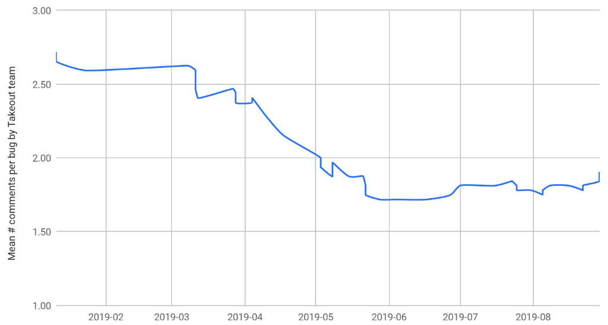
Figure 23-3. The team’s involvement in debugging client failures
Lesson learned. Accessible, actionable feedback from CI reduces test failures and improves productivity. These initiatives reduced the Takeout team’s involvement in debugging client (product plug-in) test failures by 35%.
**经验教训。**来自CI的可访问、可操作的反馈减少了测试失败，提高了生产力。这些举措使Takeout团队参与调试客户（产品插件）测试失败的情况减少了35%。
Scenario #3: Debugging “all of Google” 情景#3：调试 "所有谷歌"
Problem: An interesting side effect of the Takeout CI that the team did not anticipate was that, because it verified the output of 90-some odd end-user–facing products, in the form of an archive, they were basically testing “all of Google” and catching issues that had nothing to do with Takeout. This was a good thing—Takeout was able to help contribute to the quality of Google’s products overall. However, this introduced a problem for their CI processes: they needed better failure isolation so that they could determine which problems were in their build (which were the minority) and which lay in loosely coupled microservices behind the product APIs they called.
**问题：**Takeout CI的一个有趣的副作用是团队没有预料到的，因为它以归档的形式验证了90多个面向最终用户的产品的输出，他们基本上是在测试 "所有的Google产品"，捕捉与Takeout无关的问题。这是一件好事--Takeout能够帮助提高谷歌产品的整体质量。然而，这给他们的CI流程带来了一个问题：他们需要更好的故障隔离，以便他们能够确定哪些问题是在他们的构建中（哪些是少数），哪些是在他们调用的产品API背后松散耦合的微服务中。
What the team did. The team’s solution was to run the exact same test suite continuously against production as it already did in its post-submit CI. This was cheap to implement and allowed the team to isolate which failures were new in its build and which were in production; for instance, the result of a microservice release somewhere else “in Google.”
团队所做的。该团队的解决方案是针对生产持续运行完全相同的测试套件，正如它在提交后CI中所做的那样。这样做的成本很低，并允许团队隔离哪些故障是在其构建中出现的，哪些是在生产中出现的；例如，微服务发布的结果“在谷歌的其他地方”。
Lesson learned. Running the same test suite against prod and a post-submit CI (with newly built binaries, but the same live backends) is a cheap way to isolate failures.
经验教训。对生产环境和提交后的CI运行相同的测试套件（使用新构建的二进制文件，但相同的实时后端）是隔离故障的廉价方法。
Remaining challenge. Going forward, the burden of testing “all of Google” (obviously, this is an exaggeration, as most product problems are caught by their respective teams) grows as Takeout integrates with more products and as those products become more complex. Manual comparisons between this CI and prod are an expensive use of the Build Cop’s time.
**仍然存在的挑战。**展望未来，随着Takeout与更多的产品整合，以及这些产品变得更加复杂，测试 "所有谷歌"（显然，这是一个夸张的说法，因为大多数产品问题都是由他们各自的团队发现的）的负担越来越重。在这个CI和prod之间进行手动比较是对Build Cop时间的昂贵使用。
Future improvement. This presents an interesting opportunity to try hermetic testing with record/replay in Takeout’s post-submit CI. In theory, this would eliminate failures from backend product APIs surfacing in Takeout’s CI, which would make the suite more stable and effective at catching failures in the last two hours of Takeout changes—which is its intended purpose.
Scenario #4: Keeping it green 场景4：保持绿色
Problem: As the platform supported more product plug-ins, which each included end-to-end tests, these tests would fail and the end-to-end test suites were nearly always broken. The failures could not all be immediately fixed. Many were due to bugs in product plug-in binaries, which the Takeout team had no control over. And some failures mattered more than others—low-priority bugs and bugs in the test code did not need to block a release, whereas higher-priority bugs did. The team could easily disable tests by commenting them out, but that would make the failures too easy to forget about.
问题：随着平台支持更多的产品插件，每个插件都包括端到端的测试，这些测试会失败，端到端的测试套件几乎总是被破坏。这些故障不可能都被立即修复。许多故障是由于产品插件二进制文件中的错误，Takeout 团队无法控制这些错误。有些故障比其他故障更重要--低优先级的bug和测试代码中的bug不需要阻止发布，而高优先级的bug需要阻止。团队可以很容易地通过注释它们来禁用测试，但这将使失败者很容易忘记。
One common source of failures: tests would break when product plug-ins were rolling out a feature. For example, a playlist-fetching feature for the YouTube plug-in might be enabled for testing in dev for a few months before being enabled in prod. The Takeout tests only knew about one result to check, so that often resulted in the test needing to be disabled in particular environments and manually curated as the feature rolled out.
一个常见的失败原因是：当产品插件推出一个功能时，测试会中断。例如，YouTube插件的播放列表获取功能可能在开发阶段启用了几个月的测试，然后才在生产阶段启用。Takeout测试只知道要检查一个结果，所以这往往导致测试需要在特定的环境中被禁用，并在功能推出时被手动修复。
What the team did. The team came up with a strategic way to disable failing tests by tagging them with an associated bug and filing that off to the responsible team (usually a product plug-in team). When a failing test was tagged with a bug, the team’s testing framework would suppress its failure. This allowed the test suite to stay green and still provide confidence that everything else, besides the known issues, was passing, as illustrated in Figure 23-4.
团队所做的。该团队提出了一种禁用失败测试的战略方法，方法是使用相关错误标记失败测试，并将其提交给负责的团队（通常是产品插件团队）。当失败的测试被标记为错误时，团队的测试框架将抑制其失败。这允许测试套件保持绿色，并且仍然提供信心，证明除已知问题外的所有其他问题都通过了，如图23-4所示。
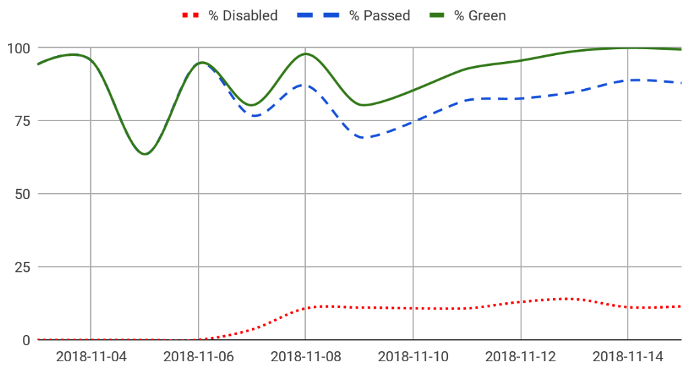
Figure 23-4. Achieving greenness through (responsible) test disablement 通过（责任人）测试禁用来实现绿色
For the rollout problem, the team added capability for plug-in engineers to specify the name of a feature flag, or ID of a code change, that enabled a particular feature along with the output to expect both with and without the feature. The tests were equipped to query the test environment to determine whether the given feature was enabled there and verified the expected output accordingly.
对于推广问题，团队增加了插件工程师指定功能标志名称或代码更改ID的功能，该功能使特定功能和输出能够同时使用和不使用该功能。测试配备了查询测试环境的功能，以确定给定的功能是否在那里启用，并相应地验证预期输出。
When bug tags from disabled tests began to accumulate and were not updated, the team automated their cleanup. The tests would now check whether a bug was closed by querying our bug system’s API. If a tagged-failing test actually passed and was passing for longer than a configured time limit, the test would prompt to clean up the tag (and mark the bug fixed, if it wasn’t already). There was one exception for this strategy: flaky tests. For these, the team would allow a test to be tagged as flaky, and the system wouldn’t prompt a tagged “flaky” failure for cleanup if it passed.
当被禁用的测试的bug标签开始积累并且不被更新时，该团队将其清理自动化。测试现在会通过查询我们的错误系统的API来检查一个错误是否被关闭。如果一个被标记为失败的测试实际通过了，并且通过的时间超过了配置的时间限制，测试就会提示清理标签（如果还没有被修复的话，就标记为bug修复）。这个策略有一个例外：不稳定的测试。对于这些，团队将允许测试被标记为不稳定，如果测试通过了，系统不会提示清理标记的 "不稳定"故障。
These changes made a mostly self-maintaining test suite, as illustrated in Figure 23-5.‘
’这些变化使得测试套件大多是自我维护的，如图23-5所示。
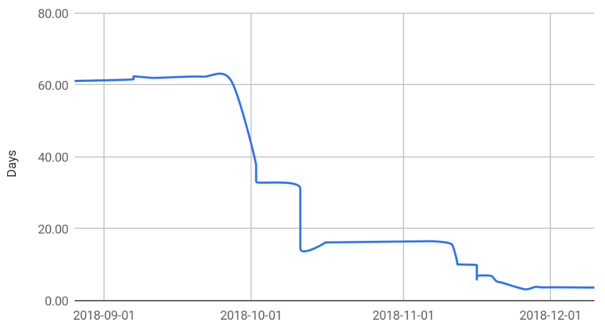
Figure 23-5. Mean time to close bug, after fix submitted 提交修复程序后关闭bug的平均时间
Lessons learned. Disabling failing tests that can’t be immediately fixed is a practical approach to keeping your suite green, which gives confidence that you’re aware of all test failures. Also, automating the test suite’s maintenance, including rollout management and updating tracking bugs for fixed tests, keeps the suite clean and prevents technical debt. In DevOps parlance, we could call the metric in Figure 23-5 MTTCU: mean time to clean up.
**经验教训。**禁用无法立即修复的失败测试是保持套件绿色的一种切实可行的方法，这使人相信你知道所有的测试失败。另外，自动化测试套件的维护，包括推出管理和更新跟踪固定测试的bug，保持套件的清洁，防止技术债务。用DevOps的说法，我们可以把图23-5 MTTCU中的指标称为：平均清理时间。
Future improvement. Automating the filing and tagging of bugs would be a helpful next step. This is still a manual and burdensome process. As mentioned earlier, some of our larger teams already do this.
**未来的改进。**自动归档和标记bug将是一个有用的下一步。这仍然是一个手动和繁重的过程。正如前面提到的，我们的一些大型团队已经这样做了。
Further challenges. The scenarios we’ve described are far from the only CI challenges faced by Takeout, and there are still more problems to solve. For example, we mentioned the difficulty of isolating failures from upstream services in “CI Challenges” on page 490. This is a problem that Takeout still faces with rare breakages originating with upstream services, such as when a security update in the streaming infrastructure used by Takeout’s “Drive folder downloads” API broke archive decryption when it deployed to production. The upstream services are staged and tested themselves, but there is no simple way to automatically check with CI if they are compatible with Takeout after they’re launched into production. An initial solution involved creating an “upstream staging” CI environment to test production Takeout binaries against the staged versions of their upstream dependencies. However, this proved difficult to maintain, with additional compatibility issues between staging and production versions.
**进一步的挑战。**我们所描述的场景远不是Takeout所面临的唯一的CI挑战，还有更多问题需要解决。例如，我们在第490页的"CI挑战"中提到了从上游服务隔离故障的困难。这是Takeout仍然面临的一个问题，即源于上游服务的罕见故障，例如Takeout的“驱动器文件夹下载”API使用的流式基础结构中的安全更新在部署到生产环境时破坏了存档解密。上游服务都是经过阶段性测试的，但没有简单的方法在它们投入生产后用CI自动检查它们是否与Takeout兼容。最初的解决方案是创建一个"上游临时"的CI环境，根据上游依赖的暂存版本测试Takeout的生产二进制文件。然而，这被证明是很难维护的，在临时版本和生产版本之间存在着额外的兼容性问题。
But I Can’t Afford CI 但我用不起CI费用
You might be thinking that’s all well and good, but you have neither the time nor money to build any of this. We certainly acknowledge that Google might have more resources to implement CI than the typical startup does. Yet many of our products have grown so quickly that they didn’t have time to develop a CI system either (at least not an adequate one).
你可能会想，这一切都很好，但你既没有时间也没有钱来建立这些。我们当然承认，谷歌可能比一般的创业公司拥有更多的资源来实施CI。然而，我们的许多产品成长得如此之快，以至于他们也没有时间去开发一个CI系统（至少不是一个合适的系统）。
In your own products and organizations, try and think of the cost you are already paying for problems discovered and dealt with in production. These negatively affect the end user or client, of course, but they also affect the team. Frequent production fire-fighting is stressful and demoralizing. Although building out CI systems is expensive, it’s not necessarily a new cost as much as a cost shifted left to an earlier— and more preferable—stage, reducing the incidence, and thus the cost, of problems occurring too far to the right. CI leads to a more stable product and happier developer culture in which engineers feel more confident that “the system” will catch problems, and they can focus more on features and less on fixing.
在你自己的产品和组织中，试着想想你已经为在生产中发现和处理的问题支付了多少成本。这些问题当然会对最终用户或客户产生负面影响，但它们也会影响到团队。频繁的生产救火是一种压力和士气的体现。尽管建立CI系统是昂贵的，但它不一定是一个新的成本，而是将成本转移到一个更早的、更可取的阶段，减少问题的发生率，从而减少成本，因为问题发生在右边。CI带来了更稳定的产品和更快乐的开发运营文化，在这种文化中，工程师更相信“系统”会发现问题，他们可以更多地关注功能，而不是修复问题。
Conclusion 总结
Even though we’ve described our CI processes and some of how we’ve automated them, none of this is to say that we have developed perfect CI systems. After all, a CI system itself is just software and is never complete and should be adjusted to meet the evolving demands of the application and engineers it is meant to serve. We’ve tried to illustrate this with the evolution of Takeout’s CI and the future areas of improvement we point out.
尽管我们已经描述了我们的 CI 流程和一些自动化的方法，但这并不是说我们已经开发了完美的 CI 系统。毕竟，CI系统本身只是一个软件，永远不会完整，应该进行调整以满足应用程序和工程师不断变化的需求。我们试图用Takeout的CI的演变和我们指出的未来改进领域来说明这一点。
TL;DRs 内容提要
-
A CI system decides what tests to use, and when.
-
CI systems become progressively more necessary as your codebase ages and grows in scale.
-
CI should optimize quicker, more reliable tests on presubmit and slower, less deterministic tests on post-submit.
-
Accessible, actionable feedback allows a CI system to become more efficient.
-
CI系统决定使用什么测试以及何时使用。
-
随着代码库的老化和规模的扩大，CI系统变得越来越有必要。
-
CI应该在提交前优化更快、更可靠的测试，在提交后优化更慢、更不确定的测试。
-
可访问、可操作的反馈使CI系统变得更加有效。
CHAPTER 24 Continuous Delivery
第二十四章 持续交付
Written by adha Narayan, Bobbi Jones, Sheri Shipe, and David Owens
Edited by Lisa Carey
Given how quickly and unpredictably the technology landscape shifts, the competitive advantage for any product lies in its ability to quickly go to market. An organization’s velocity is a critical factor in its ability to compete with other players, maintain product and service quality, or adapt to new regulation. This velocity is bottlenecked by the time to deployment. Deployment doesn’t just happen once at initial launch. There is a saying among educators that no lesson plan survives its first contact with the student body. In much the same way, no software is perfect at first launch, and the only guarantee is that you’ll have to update it. Quickly.
鉴于技术领域的变化是如此之快且不可预测，任何产品的竞争优势都在于其快速进入市场的能力。一个组织的速度是其与其他参与者竞争、保持产品和服务质量或适应新法规能力的关键因素。这种速度受到部署时间的瓶颈制约。部署不会在初始启动时只发生一次。教育工作者们有一种说法，没有一个教案能在第一次与学生接触后幸存下来。同样，没有软件在第一次发布时就是完美的，唯一的保证是你需要快速更新它。
The long-term life cycle of a software product involves rapid exploration of new ideas, rapid responses to landscape shifts or user issues, and enabling developer velocity at scale. From Eric Raymond’s The Cathedral and the Bazaar to Eric Reis’ The Lean Startup, the key to any organization’s long-term success has always been in its ability to get ideas executed and into users’ hands as quickly as possible and reacting quickly to their feedback. Martin Fowler, in his book Continuous Delivery (aka CD), points out that “The biggest risk to any software effort is that you end up building something that isn’t useful. The earlier and more frequently you get working software in front of real users, the quicker you get feedback to find out how valuable it really is.”
软件产品的长期生命周期包括快速探索新想法、快速响应环境(行业)变化或用户问题，以及实现大规模开发速度。从埃里克·雷蒙德（Eric Raymond）的《大教堂与集市》（The Cathedral and The Bazaar）到埃里克·赖斯（Eric Reis）的《精益创业》（The Lean Startup），任何组织长期成功的关键始终在于其能够尽快将想法付诸实施并交到用户手中，并对他们的反馈做出快速反应。马丁·福勒（Martin Fowler）在其著作《持续交付》（Continuous Delivery，又名CD）中指出，“任何软件工作的最大风险是，你最终建立的东西并不实用。你越早、越频繁地将工作中的软件展现在真正的用户面前，你就能越快地得到反馈，发现它到底有多大价值。”
Work that stays in progress for a long time before delivering user value is high risk and high cost, and can even be a drain on morale. At Google, we strive to release early and often, or “launch and iterate,” to enable teams to see the impact of their work quickly and to adapt faster to a shifting market. The value of code is not realized at the time of submission but when features are available to your users. Reducing the time between “code complete” and user feedback minimizes the cost of work that is in progress.
在交付用户价值之前进行很长时间的工作是高风险和高成本的，甚至可能会消耗士气。在谷歌，我们努力做到早期和经常发布，或者说 "发布和迭代"，以使团队能够迅速看到他们工作的影响，并更快地适应不断变化的市场。代码的价值不是在提交时实现的，而是在你的用户可以使用的功能时实现的。缩短 "代码完成"和用户反馈之间的时间，可以将正在进行中的工作的成本降到最低。
You get extraordinary outcomes by realizing that the launch *never lands* but that it begins a learning cycle where you then fix the next most important thing, measure how it went, fix the next thing, etc.—and it is *never complete*.
—David Weekly, Former Google product manager
当你意识到发射从未着陆，但它开始了一个学习周期，然后你修复下一个最重要的事情，衡量它如何进行，修复下一个事情，等等——而且它永远不会完成。
-David Weekly，前谷歌产品经理
At Google, the practices we describe in this book allow hundreds (or in some cases thousands) of engineers to quickly troubleshoot problems, to independently work on new features without worrying about the release, and to understand the effectiveness of new features through A/B experimentation. This chapter focuses on the key levers of rapid innovation, including managing risk, enabling developer velocity at scale, and understanding the cost and value trade-off of each feature you launch.
在谷歌，我们在本书中描述的做法使数百名（或在某些情况下数千名）工程师能够快速解决问题，独立完成新功能而不必担心发布问题，并通过A/B实验了解新功能的有效性。本章重点关注快速创新的关键措施，包括管理风险、实现大规模的开发者速度，以及了解你推出的每个功能的成本和价值权衡。
Idioms of Continuous Delivery at Google 谷歌持续交付的习惯用法
A core tenet of Continuous Delivery (CD) as well as of Agile methodology is that over time, smaller batches of changes result in higher quality; in other words, faster is safer. This can seem deeply controversial to teams at first glance, especially if the prerequisites for setting up CD—for example, Continuous Integration (CI) and testing— are not yet in place. Because it might take a while for all teams to realize the ideal of CD, we focus on developing various aspects that deliver value independently en route to the end goal. Here are some of these:
-
Agility
Release frequently and in small batches -
Automation
Reduce or remove repetitive overhead of frequent releases -
Isolation
Strive for modular architecture to isolate changes and make troubleshooting easier -
Reliability
Measure key health indicators like crashes or latency and keep improving them -
Data-driven decision making
Use A/B testing on health metrics to ensure quality -
Phased rollout
Roll out changes to a few users before shipping to everyone
持续交付（CD）以及敏捷方法论的一个核心原则是，随着时间的推移，较小的变更批次能够产生更高的质量；换句话说，越快越安全。乍一看，这似乎对团队有很大的争议，尤其是当建立CD的前提条件--例如，持续集成（CI）和测试--还没有到位的时候。因为所有团队可能需要一段时间才能实现CD的理想，所以我们将重点放在开发能够在实现最终目标的过程中独立交付价值的各个方面。下面是其中的一些：
-
敏捷性
频繁地、较小的变更批次地发布。 -
自动化
减少或消除频繁发布的重复性开销。 -
隔离性
努力实现模块化体系结构，以隔离更改并使故障排除更加容易。 -
可靠性
衡量关键的健康指标，如崩溃或延迟，并不断改善它们。 -
数据驱动的决策
在健康指标上使用A/B测试以确保质量。 -
分阶段推出
在向所有人发送之前，先在少数用户中推广变更。
At first, releasing new versions of software frequently might seem risky. As your userbase grows, you might fear the backlash from angry users if there are any bugs that you didn’t catch in testing, and you might quite simply have too much new code in your product to test exhaustively. But this is precisely where CD can help. Ideally, there are so few changes between one release and the next that troubleshooting issues is trivial. In the limit, with CD, every change goes through the QA pipeline and is automatically deployed into production. This is often not a practical reality for many teams, and so there is often work of culture change toward CD as an intermediate step, during which teams can build their readiness to deploy at any time without actually doing so, building up their confidence to release more frequently in the future.
起初，频繁发布新版本的软件可能看起来很冒险。随着用户群的增长，如果在测试中发现任何错误，你可能会担心用户的反弹，而且你的产品中可能有太多新代码，无法彻底测试。但这恰恰是CD可以帮助的地方。理想情况下，一个版本和下一个版本之间的变化非常少，排除问题是非常简单的。在极限情况下，有了CD，每个变化都会通过QA管道，并自动部署到生产中。对于许多团队来说，这通常不是一个实际的现实，因此往往需要进行向CD文化的转变工作作为中间步骤，团队可以在不实际部署的情况下建立部署准备性，增强未来更频繁发布的信心。
Velocity Is a Team Sport: How to Break Up a Deployment into Manageable Pieces 速度是一项团队运动：如何将部署工作分解成可管理的部分
When a team is small, changes come into a codebase at a certain rate. We’ve seen an antipattern emerge as a team grows over time or splits into subteams: a subteam branches off its code to avoid stepping on anyone’s feet, but then struggles, later, with integration and culprit finding. At Google, we prefer that teams continue to develop at head in the shared codebase and set up CI testing, automatic rollbacks, and culprit finding to identify issues quickly. This is discussed at length in Chapter 23.
当一个团队较小的时候，代码变化以一定的速度进入一个代码库。我们看到，随着时间的推移，一个团队的成长或分裂成子团队，会出现一种反模式：一个子团队将其代码分支，以避免踩到其他团队的脚，但之后却会遇到集成和故障排查的问题。在谷歌，我们更倾向于团队继续在共享代码库中进行开发，并设置CI测试、自动回滚和故障查找，以快速识别问题。这在第23章中有详细的讨论。
One of our codebases, YouTube, is a large, monolithic Python application. The release process is laborious, with Build Cops, release managers, and other volunteers. Almost every release has multiple cherry-picked changes and respins. There is also a 50-hour manual regression testing cycle run by a remote QA team on every release. When the operational cost of a release is this high, a cycle begins to develop in which you wait to push out your release until you’re able to test it a bit more. Meanwhile, someone wants to add just one more feature that’s almost ready, and pretty soon you have yourself a release process that’s laborious, error prone, and slow. Worst of all, the experts who did the release last time are burned out and have left the team, and now nobody even knows how to troubleshoot those strange crashes that happen when you try to release an update, leaving you panicky at the very thought of pushing that button.
我们的一个代码库，YouTube，是一个大型的、单体的Python应用程序。发布过程很费劲，有Build Cops、发布经理和其他志愿者。每个发布版本都需要多次 cherry-pick（选择性合并）代码变更和重新打包等过程。此外，还有需要由远程QA团队运行的50小时手工回归测试周期。当一个发布的操作成本如此之高时，就会形成一个循环，在这个循环中，你要等待测试更多，才能推出发布版本。与此同时，有人想再增加一个几乎已经准备好的功能，很快你就有了一个费力、容易出错和缓慢的发布过程。最糟糕的是，上次做发布工作的专家已经精疲力尽，离开了团队，现在甚至没有人知道如何解决那些当你试图发布更新时发生的奇怪崩溃，让你一想到要按下那个按钮就感到恐慌。
If your releases are costly and sometimes risky, the instinct is to slow down your release cadence and increase your stability period. However, this only provides short- term stability gains, and over time it slows velocity and frustrates teams and users. The answer is to reduce cost, increase discipline, and make the risks more incremental, but it is critical to resist the obvious operational fixes and invest in long-term architectural changes. The obvious operational fixes to this problem lead to a few traditional approaches: reverting to a traditional planning model that leaves little room for learning or iteration, adding more governance and oversight to the development process, and implementing risk reviews or rewarding low-risk (and often low-value) features.
如果你的发布是昂贵的，有时是有风险的，那么本能的反应是放慢你的发布节奏，增加你的稳定期。然而，这只能提供短期的稳定性收益，随着时间的推移，它会减慢速度，使团队和用户感到沮丧。答案是降低成本，增加纪律，使风险更加渐进式，但关键是要抵制明显的操作修复，投资于长期的架构变化。对这个问题的明显的操作性修正导致了一些传统的方法：恢复到传统的计划模式，为学习或迭代留下很少的空间，为开发过程增加更多的治理和监督，以及实施风险审查或奖励低风险（通常是低价值）的功能。
The investment with the best return, though, is migrating to a microservice architecture, which can empower a large product team with the ability to remain scrappy and innovative while simultaneously reducing risk. In some cases, at Google, the answer has been to rewrite an application from scratch rather than simply migrating it, establishing the desired modularity into the new architecture. Although either of these options can take months and is likely painful in the short term, the value gained in terms of operational cost and cognitive simplicity will pay off over an application’s lifespan of years.
不过，回报率最高的投资是迁移到微服务架构，这可以使一个大型产品团队有能力保持活力和创新，同时降低风险。在某些情况下，在谷歌，答案是从头开始重写一个应用程序，而不是简单地迁移它，在新的架构中建立所需的模块化。尽管这两种选择都需要几个月的时间，而且在短期内可能是痛苦的，但在运营成本和认知的简单性方面获得的价值将在应用程序多年的生命周期中得到回报。
Evaluating Changes in Isolation: Flag-Guarding Features 评估隔离中的更改：标志保护功能
A key to reliable continuous releases is to make sure engineers “flag guard” all changes. As a product grows, there will be multiple features under various stages of development coexisting in a binary. Flag guarding can be used to control the inclusion or expression of feature code in the product on a feature-by-feature basis and can be expressed differently for release and development builds. A feature flag disabled for a build should allow build tools to strip the feature from the build if the language permits it. For instance, a stable feature that has already shipped to customers might be enabled for both development and release builds. A feature under development might be enabled only for development, protecting users from an unfinished feature. New feature code lives in the binary alongside the old codepath—both can run, but the new code is guarded by a flag. If the new code works, you can remove the old codepath and launch the feature fully in a subsequent release. If there’s a problem, the flag value can be updated independently from the binary release via a dynamic config update.
可靠的连续发布的关键是确保工程师“通过标志保护”所有更改。随着产品的发展，在二进制文件中，将有处于不同开发阶段的多种功能共存。以单个功能为单位，标志保护位决定了功能的代码在产品中是否被包含或如何呈现，并可在发布和开发版本中以不同方式表达。如果编程语言允许，打上”禁用”标志的功能标志位会使得构建工具从对应的版本构建中剥离该功能。例如，一个已经提供给客户的稳定特性可能会在开发版本和发布版本中启用。正在开发的功能可能仅为开发而启用，从而保护用户不受未完成功能的影响。新的特性代码与旧的代码路径一起存在于二进制文件中，两者都可以运行，但新代码由一个标志保护。如果新代码有效，你可以删除旧代码路径，并在后续版本中完全启动该功能。如果出现问题，可以通过动态配置更新独立于二进制版本更新标志值。
In the old world of binary releases, we had to time press releases closely with our binary rollouts. We had to have a successful rollout before a press release about new functionality or a new feature could be issued. This meant that the feature would be out in the wild before it was announced, and the risk of it being discovered ahead of time was very real.
在过去的二进制发布的世界里，我们必须将新闻发布时间与二进制发布时间紧密协调。在发布关于新功能或新功能的新闻稿之前，我们必须进行成功的发布。这意味着该功能将在发布之前就已经公开，提前被发现的风险是非常现实的。
This is where the beauty of the flag guard comes to play. If the new code has a flag, the flag can be updated to turn your feature on immediately before the press release, thus minimizing the risk of leaking a feature. Note that flag-guarded code is not a perfect safety net for truly sensitive features. Code can still be scraped and analyzed if it’s not well obfuscated, and not all features can be hidden behind flags without adding a lot of complexity. Moreover, even flag configuration changes must be rolled out with care. Turning on a flag for 100% of your users all at once is not a great idea, so a configuration service that manages safe configuration rollouts is a good investment. Nevertheless, the level of control and the ability to decouple the destiny of a particular feature from the overall product release are powerful levers for long-term sustainability of the application.
这就是标志守卫的优势所在。如果新的代码有一个标志，标在发布新功能之前可以立即更新该标志，从而最大限度地减少泄露功能的风险。请注意，对于真正敏感的功能，有标志的代码并不是一个完美的安全网。如果代码没有被很好地混淆，它仍然可以被抓取和分析，而且不是所有的功能都可以隐藏在标志后面而不增加太多复杂性。此外，即使是标志配置的改变，也必须谨慎地推出。一次性为100%的用户打开一个标志并不是一个好主意，所以一个能管理安全配置推出的配置服务是一个很好的投资。尽管如此，对于长期可持续性的应用程序而言，控制的水平和将特定功能的命运与整体产品发布分离的能力是强大的杠杆作用。
Striving for Agility: Setting Up a Release Train 为敏捷而奋斗：建立一个发布序列
Google’s Search binary is its first and oldest. Large and complicated, its codebase can be tied back to Google’s origin—a search through our codebase can still find code written at least as far back as 2003, often earlier. When smartphones began to take off, feature after mobile feature was shoehorned into a hairball of code written primarily for server deployment. Even though the Search experience was becoming more vibrant and interactive, deploying a viable build became more and more difficult. At one point, we were releasing the Search binary into production only once per week, and even hitting that target was rare and often based on luck.
谷歌搜索是其最早也是最古老的二进制文件。它的代码库庞大而复杂，可以追溯到谷歌的起源--在我们的代码库中搜索，仍然可以找到至少早在2003年编写的代码，通常更早。当智能手机开始使用时，一个接一个的移动功能被塞进了一大堆主要为服务器部署而编写的代码中。尽管搜索体验变得更加生动和互动，部署一个可行的构建变得越来越困难。有一次，我们每周只发布一次搜索二进制文件到生产中，而即使达到这个目标也是很难得的，而且往往要靠运气。
When one of our contributing authors, Sheri Shipe, took on the project of increasing our release velocity in Search, each release cycle was taking a group of engineers days to complete. They built the binary, integrated data, and then began testing. Each bug had to be manually triaged to make sure it wouldn’t impact Search quality, the user experience (UX), and/or revenue. This process was grueling and time consuming and did not scale to the volume or rate of change. As a result, a developer could never know when their feature was going to be released into production. This made timing press releases and public launches challenging.
当我们的贡献作者之一Sheri Shipe承担了提高搜索发布速度的项目时，每个发布周期都需要一组工程师几天才能完成。他们构建了二进制集成数据，然后开始测试。每一个bug都必须进行手动分类，以确保它不会影响搜索质量、用户体验（UX）和/或收入。这一过程既费时又费力，而且不能适应变化的数量和速度。因此，开发人员永远不可能知道他们的特性将在何时发布到生产环境中。这使得新闻发布和公开发布的时间安排具有挑战性。
Releases don’t happen in a vacuum, and having reliable releases makes the dependent factors easier to synchronize. Over the course of several years, a dedicated group of engineers implemented a continuous release process, which streamlined everything about sending a Search binary into the world. We automated what we could, set deadlines for submitting features, and simplified the integration of plug-ins and data into the binary. We could now consistently release a new Search binary into production every other day.
发布不是在真空中发生的，拥有可靠的发布使得依赖性因素更容易同步。在几年的时间里，一个专门的工程师小组实施了一个持续的发布过程，它简化了关于向世界发送搜索二进制文件的所有工作。我们把我们能做的事情自动化，为提交功能设定最后期限，并简化插件和数据到二进制文件的集成。我们现在可以每隔一天发布一个新的搜索二进制文件。
What were the trade-offs we made to get predictability in our release cycle? They narrow down to two main ideas we baked into the system.
为了在发布周期中获得可预测性，我们做了哪些权衡？他们把我们融入系统的两个主要想法归纳了下来。
No Binary Is Perfect 没有完美的二进制包
The first is that no binary is perfect, especially for builds that are incorporating the work of tens or hundreds of developers independently developing dozens of major features. Even though it’s impossible to fix every bug, we constantly need to weigh questions such as: If a line has been moved two pixels to the left, will it affect an ad display and potential revenue? What if the shade of a box has been altered slightly? Will it make it difficult for visually impaired users to read the text? The rest of this book is arguably about minimizing the set of unintended outcomes for a release, but in the end we must admit that software is fundamentally complex. There is no perfect binary—decisions and trade-offs have to be made every time a new change is released into production. Key performance indicator metrics with clear thresholds allow features to launch even if they aren’t perfect1 and can also create clarity in otherwise contentious launch decisions.
首先，没有一个二进制包是完美的，，尤其是对于包含数十个或数百个独立开发几十个主要功能的开发人员的工作的构建。尽管不可能修复每个bug，但我们需要不断权衡这样的问题：如果一条线向左移动了两个像素，它会影响广告显示和潜在收入吗？如果盒子的颜色稍微改变了怎么办？这是否会让视障用户难以阅读文本？本书的其余部分可以说是关于最小化发布的一系列意外结果，但最终我们必须承认软件从根本上来说是复杂的。没有完美的二进制包--每当有新的变化发布到生产中时，就必须做出决定和权衡。具有明确阈值的关键性能指标允许功能在不完美的情况下推出，也可以在其他有争议的发布决策中创造清晰的思路。
One bug involved a rare dialect spoken on only one island in the Philippines. If a user asked a search question in this dialect, instead of an answer to their question, they would get a blank web page. We had to determine whether the cost of fixing this bug was worth delaying the release of a major new feature.
其中一个bug涉及一种罕见的方言，这种方言只在菲律宾的一个岛屿上使用。如果用户用这种方言问搜索问题，而不是回答他们的问题，他们会得到一个空白网页。我们必须确定修复这个bug的成本是否值得推迟发布一个重要的新特性。
We ran from office to office trying to determine how many people actually spoke this language, if it happened every time a user searched in this language, and whether these folks even used Google on a regular basis. Every quality engineer we spoke with deferred us to a more senior person. Finally, data in hand, we put the question to Search’s senior vice president. Should we delay a critical release to fix a bug that affected only a very small Philippine island? It turns out that no matter how small your island, you should get reliable and accurate search results: we delayed the release and fixed the bug.
我们奔走于各个办公室，试图确定究竟有多少人讲这种语言，是否每次用户用这种语言搜索时都会出现这种情况，以及这些人是否经常使用谷歌。每个与我们交谈的质量工程师都把我们推给更高级别的人。最后，数据在手，我们把问题交给了搜索部的高级副总裁。我们是否应该推迟一个重要的版本来修复一个只影响到菲律宾一个很小的岛屿的错误？事实证明，无论你的岛有多小，你都应该得到可靠和准确的搜索结果：我们推迟了发布，并修复了这个错误。
1Remember the SRE “error-budget” formulation: perfection is rarely the best goal. Understand how much room for error is acceptable and how much of that budget has been spent recently and use that to adjust the trade-off between velocity and stability.
1 记住SRE的 "错误预算 "表述：完美很少是最佳目标。了解多少误差空间是可以接受的，以及该预算最近花了多少，并利用这一点来调整速度和稳定性之间的权衡。
Meet Your Release Deadline 满足你的发布期限
The second idea is that if you’re late for the release train, it will leave without you. There’s something to be said for the adage, “deadlines are certain, life is not.” At some point in the release timeline, you must put a stake in the ground and turn away developers and their new features. Generally speaking, no amount of pleading or begging will get a feature into today’s release after the deadline has passed.
第二个想法是，如果你赶不上发布列车，它就会丢下你离开。有一句格言值得一提，“最后期限是确定的，而生活不是。”在发布时间表的某个时刻，你必须立木取信，拒绝开发人员及其新功能。一般来说，在截止日期过后，无论多少恳求或乞求都不会在今天的版本中出现。
There is the rare exception. The situation usually goes like this. It’s late Friday evening and six software engineers come storming into the release manager’s cube in a panic. They have a contract with the NBA and finished the feature moments ago. But it must go live before the big game tomorrow. The release must stop and we must cherry- pick the feature into the binary or we’ll be in breach of contract! A bleary-eyed release engineer shakes their head and says it will take four hours to cut and test a new binary. It’s their kid’s birthday and they still need to pick up the balloons.
有一个罕见的例外。这种情况通常是这样的。周五晚间，六名软件工程师惊慌失措地冲进发布经理的办公室。他们与NBA签订了合同，并在不久前完成了这个功能。但它必须在明天的大比赛之前上线。发布必须停止，我们必须将该特性插入二进制包，否则我们将违反合同！"。一个目光呆滞的发布工程师摇摇头，说切割和测试一个新的二进制文件需要四个小时。今天是他们孩子的生日，他们还需要带着气球回家。
A world of regular releases means that if a developer misses the release train, they’ll be able to catch the next train in a matter of hours rather than days. This limits developer panic and greatly improves work–life balance for release engineers.
定期发布的世界意味着，如果开发人员错过了发版班车，他们将能够在几个小时而不是几天内赶上下一班班车。这限制了开发人员的恐慌，并大大改善了发布工程师的工作与生活平衡。
Quality and User-Focus: Ship Only What Gets Used 质量和用户关注点：只提供使用的产品
Bloat is an unfortunate side effect of most software development life cycles, and the more successful a product becomes, the more bloated its code base typically becomes. One downside of a speedy, efficient release train is that this bloat is often magnified and can manifest in challenges to the product team and even to the users. Especially if the software is delivered to the client, as in the case of mobile apps, this can mean the user’s device pays the cost in terms of space, download, and data costs, even for features they never use, whereas developers pay the cost of slower builds, complex deployments, and rare bugs. In this section, we’ll talk about how dynamic deployments allow you to ship only what is used, forcing necessary trade-offs between user value and feature cost. At Google, this often means staffing dedicated teams to improve the efficiency of the product on an ongoing basis.
臃肿是大多数软件开发生命周期的一个不幸的副作用，产品越成功，其代码库通常就越臃肿。快速、高效的发布系列的一个缺点是，这种臃肿经常被放大，并可能表现为对产品团队甚至用户的挑战。特别是如果软件交付给客户端（如移动应用程序），这可能意味着用户的设备要支付空间、下载和数据成本，即使是他们从未使用过的功能，而开发人员要支付构建速度较慢、部署复杂和罕见bug的成本。在本节中，我们将讨论动态部署如何允许你仅发布所使用的内容，从而在用户价值和功能成本之间进行必要的权衡。在谷歌，这通常意味着配备专门的团队，以不断提高产品的效率。
Whereas some products are web-based and run on the cloud, many are client applications that use shared resources on a user’s device—a phone or tablet. This choice in itself showcases a trade-off between native apps that can be more performant and resilient to spotty connectivity, but also more difficult to update and more susceptible to platform-level issues. A common argument against frequent, continuous deployment for native apps is that users dislike frequent updates and must pay for the data cost and the disruption. There might be other limiting factors such as access to a network or a limit to the reboots required to percolate an update.
有些产品是基于网络并在云上运行的，而许多产品是客户端应用程序，使用用户设备上的共享资源--手机或平板电脑。这种选择本身就展示了原生应用之间的权衡，原生应用可以有更高的性能，对不稳定的连接有弹性，但也更难更新，更容易受到平台问题的影响。反对原生应用频繁、持续部署的一个常见论点是，用户不喜欢频繁的更新，而且必须为数据成本和中断付费。可能还有其他限制因素，如访问网络或限制渗透更新所需的重新启动。
Even though there is a trade-off to be made in terms of how frequently to update a product, the goal is to have these choices be intentional. With a smooth, well-running CD process, how often a viable release is created can be separated from how often a user receives it. You might achieve the goal of being able to deploy weekly, daily, or hourly, without actually doing so, and you should intentionally choose release processes in the context of your users’ specific needs and the larger organizational goals, and determine the staffing and tooling model that will best support the long-term sustainability of your product.
即使在更新产品的频率方面需要做出权衡，但目标是让这些选择是有意的决策。有了一个平滑、运行良好的CD流程，创建一个可行版本的频率可以与用户收到它的频率分开。你可能会实现每周、每天或每小时部署一次的目标，但实际上并没有这样做。你应该根据用户的具体需求和更大的组织目标有意识地选择发布流程，并确定最能支持产品长期可持续性的人员配置和工具模型。
Earlier in the chapter, we talked about keeping your code modular. This allows for dynamic, configurable deployments that allow better utilization of constrained resources, such as the space on a user’s device. In the absence of this practice, every user must receive code they will never use to support translations they don’t need or architectures that were meant for other kinds of devices. Dynamic deployments allow apps to maintain small sizes while only shipping code to a device that brings its users value, and A/B experiments allow for intentional trade-offs between a feature’s cost and its value to users and your business.
在本章的前面部分，我们讨论了保持代码模块化。这允许动态、可配置的部署，以便更好地利用有限资源，例如用户设备上的空间。在没有这种实践的情况下，每个用户都必须收到他们永远不会使用的代码，以支持他们不需要的翻译或用于其他类型设备的架构。动态部署允许应用程序保持较小的尺寸，同时只将代码发送给能为用户带来价值的设备，而A/B实验允许在功能的成本及其对用户和企业的价值之间进行有意义的权衡。
There is an upfront cost to setting up these processes, and identifying and removing frictions that keep the frequency of releases lower than is desirable is a painstaking process. But the long-term wins in terms of risk management, developer velocity, and enabling rapid innovation are so high that these initial costs become worthwhile.
建立这些流程是有前期成本的，识别和消除使发布频率低于理想水平的阻力是一个艰苦的工作。但是，在风险管理、开发者速度和实现快速创新方面的长期胜利是如此之高，以至于这些初始成本是值得的。
Shifting Left: Making Data-Driven Decisions Earlier 左移：提前做出数据驱动的决策
If you’re building for all users, you might have clients on smart screens, speakers, or Android and iOS phones and tablets, and your software may be flexible enough to allow users to customize their experience. Even if you’re building for only Android devices, the sheer diversity of the more than two billion Android devices can make the prospect of qualifying a release overwhelming. And with the pace of innovation, by the time someone reads this chapter, whole new categories of devices might have bloomed.
如果你是为所有用户建立应用程序，你可能在智能屏幕、扬声器或Android和iOS手机和平板电脑上有客户，你的软件可能足够灵活，允许用户定制他们的体验。即使你只为安卓设备构建，超过20亿的安卓设备的多样性也会使一个版本的场景变得不堪重负。随着创新的步伐，当有人读到这一章时，全新的设备类别可能已经出现。
One of our release managers shared a piece of wisdom that turned the situation around when he said that the diversity of our client market was not a problem, but a fact. After we accepted that, we could switch our release qualification model in the following ways:
- If comprehensive testing is practically infeasible, aim for representative testing instead.
- Staged rollouts to slowly increasing percentages of the userbase allow for fast fixes.
- Automated A/B releases allow for statistically significant results proving a release’s quality, without tired humans needing to look at dashboards and make decisions.
我们的一位发布经理分享了一条智慧，他说我们客户市场的多样性不是问题，而是事实，这扭转了局面。在我们接受后，我们可以通过以下方式切换我们的发布资格模型：
- 如果全面的测试实际上是不可行的，就以代表性的测试为目标。
- 分阶段向用户群中慢慢增加的百分比进行发布，可以快速修复问题。
- 自动的A/B发布允许统计学上有意义的结果来证明一个版本的质量，而无需疲惫的人去看仪表盘和做决定。
When it comes to developing for Android clients, Google apps use specialized testing tracks and staged rollouts to an increasing percentage of user traffic, carefully monitoring for issues in these channels. Because the Play Store offers unlimited testing tracks, we can also set up a QA team in each country in which we plan to launch, allowing for a global overnight turnaround in testing key features.
在为Android客户端开发时，谷歌应用程序使用专门的测试轨道和分阶段推出，以增加用户流量的百分比，仔细监控这些渠道中的问题。由于Play Store提供无限的测试轨道，我们还可以在我们计划推出的每个国家/地区建立一个QA团队，允许在全球范围内一夜之间完成关键功能的测试。
One issue we noticed when doing deployments to Android was that we could expect a statistically significant change in user metrics simply from pushing an update. This meant that even if we made no changes to our product, pushing an update could affect device and user behavior in ways that were difficult to predict. As a result, although canarying the update to a small percentage of user traffic could give us good information about crashes or stability problems, it told us very little about whether the newer version of our app was in fact better than the older one.
我们在Android部署时注意到的一个问题是，仅仅通过推送更新，我们就可以预期用户指标会发生统计上的显著变化。这意味着，即使我们没有对产品进行任何更改，推动更新也可能以难以预测的方式影响设备和用户行为。因此，尽管对一小部分用户流量进行更新可以为我们提供关于崩溃或稳定性问题的良好信息，但它几乎没有告诉我们更新版本的应用程序是否比旧版本更好。
Dan Siroker and Pete Koomen have already discussed the value of A/B testing2 your features, but at Google, some of our larger apps also A/B test their deployments. This means sending out two versions of the product: one that is the desired update, with the baseline being a placebo (your old version just gets shipped again). As the two versions roll out simultaneously to a large enough base of similar users, you can compare one release against the other to see whether the latest version of your software is in fact an improvement over the previous one. With a large enough userbase, you should be able to get statistically significant results within days, or even hours. An automated metrics pipeline can enable the fastest possible release by pushing forward a release to more traffic as soon as there is enough data to know that the guardrail metrics will not be affected.
Dan Siroker和Pete Koomen已经讨论了A/B测试的价值，但在Google，我们的一些大型应用也对其部署进行A/B测试。这意味着发送两个版本的产品：一个是所需的更新，基线是一个安慰剂（你的旧版本只是被再次发送）。当这两个版本同时向足够多的类似用户推出时，你可以将一个版本与另一个版本进行比较，看看你的软件的最新版本是否真的比以前的版本有所改进。有了足够大的用户群，你应该能够在几天内，甚至几小时内得到统计学上的显著结果。一个自动化的指标管道可以实现最快的发布，只要有足够的数据知道护栏指标不会受到影响，就可以将一个版本推到更多的流量。
Obviously, this method does not apply to every app and can be a lot of overhead when you don’t have a large enough userbase. In these cases, the recommended best practice is to aim for change-neutral releases. All new features are flag guarded so that the only change being tested during a rollout is the stability of the deployment itself.
显然，这种方法并不适用于每个应用程序，当你没有足够大的用户群时，可能会有很多开销。在这种情况下，推荐的最佳做法是以变化中立的发布为目标。所有的新功能都有标志保护，这样在发布过程中测试的唯一变化就是部署本身的稳定性。
2Dan Siroker and Pete Koomen, A/B Testing: The Most Powerful Way to Turn Clicks Into Customers (Hoboken: Wiley, 2013).
2 Dan Siroker和Pete Koomen，《A/B测试：将点击转化为客户的最有效方式》（Hoboken:Wiley，2013）。
Changing Team Culture: Building Discipline into Deployment 改变团队文化：在部署中建立规则
Although “Always Be Deploying” helps address several issues affecting developer velocity, there are also certain practices that address issues of scale. The initial team launching a product can be fewer than 10 people, each taking turns at deployment and production-monitoring responsibilities. Over time, your team might grow to hundreds of people, with subteams responsible for specific features. As this happens and the organization scales up, the number of changes in each deployment and the amount of risk in each release attempt is increasing superlinearly. Each release contains months of sweat and tears. Making the release successful becomes a high-touch and labor-intensive effort. Developers can often be caught trying to decide which is worse: abandoning a release that contains a quarter’s worth of new features and bug fixes, or pushing out a release without confidence in its quality.
尽管“始终进行部署”有助于解决影响开发人员速度的几个问题，但也有一些实践可以解决规模问题。启动产品的初始团队可以少于10人，每个人轮流负责部署和生产监控。随着时间的推移，你的团队可能会发展到数百人，其中的子团队负责特定的功能。随着这种情况的发生和组织规模的扩大，每次部署中的更改数量和每次发布尝试中的风险量都呈超线性增长。每次发布都包含数月的汗水和泪水。使发布成功成为一项高度沟通和劳动密集型的工作。开发人员经常会被发现试图决定哪一个更糟糕：放弃一个包含四分之一新特性和错误修复的版本，或者在对其质量没有信心的情况下推出一个版本。
At scale, increased complexity usually manifests as increased release latency. Even if you release every day, a release can take a week or longer to fully roll out safely, leaving you a week behind when trying to debug any issues. This is where “Always Be Deploying” can return a development project to effective form. Frequent release trains allow for minimal divergence from a known good position, with the recency of changes aiding in resolving issues. But how can a team ensure that the complexity inherent with a large and quickly expanding codebase doesn’t weigh down progress?
在规模扩大时，复杂性的增加通常表现为发布延迟的增加。即使你每天都发布，一个版本也可能需要一周或更长的时间才能完全安全地发布，当你试图调试任何问题时，就会落后一周。这就是 "始终进行部署 "可以使开发项目恢复到有效状态的地方。频繁的发版班车允许从一个已知的良好状态中产生最小的偏差，变化的频率有助于解决问题。但是，一个团队如何才能确保一个庞大而快速扩展的代码库所固有的复杂性不会拖累进度呢？
On Google Maps, we take the perspective that features are very important, but only very seldom is any feature so important that a release should be held for it. If releases are frequent, the pain a feature feels for missing a release is small in comparison to the pain all the new features in a release feel for a delay, and especially the pain users can feel if a not-quite-ready feature is rushed to be included.
在谷歌地图上，我们的观点是：功能是非常重要的，但只有在非常少的情况下，才会有如此重要的功能需要发布。如果发布的频率很高，那么一个功能因为错过了一个版本而感到的痛苦与一个版本中所有的新功能因为延迟而感到的痛苦相比是很小的，特别是如果一个还没有准备好的功能被匆忙纳入，用户会感到痛苦。
One release responsibility is to protect the product from the developers.
一个发布责任是保护产品不受开发人员的影响。
When making trade-offs, the passion and urgency a developer feels about launching a new feature can never trump the user experience with an existing product. This means that new features must be isolated from other components via interfaces with strong contracts, separation of concerns, rigorous testing, communication early and often, and conventions for new feature acceptance.
在进行权衡时，开发人员对推出新功能的热情和紧迫感永远不能超过对现有产品的用户体验。这意味着，新功能必须通过具有强大契约的接口、关注点分离、严格测试、早期和经常的沟通以及新功能验收的惯例，与其他组件隔离。
Conclusion 总结
Over the years and across all of our software products, we’ve found that, counterintuitively, faster is safer. The health of your product and the speed of development are not actually in opposition to each other, and products that release more frequently and in small batches have better quality outcomes. They adapt faster to bugs encountered in the wild and to unexpected market shifts. Not only that, faster is cheaper, because having a predictable, frequent release train forces you to drive down the cost of each release and makes the cost of any abandoned release very low.
多年来，在我们所有的软件产品中，我们发现，相反，更快更安全。你的产品的健康状况和开发速度实际上并不是相互对立的，更频繁和小批量发布的产品具有更好的质量结果。它们能更快地适应在野外遇到的错误和意外的市场变化。不仅如此，更快就是便宜，因为有一个可预测的、频繁的发版班车，迫使你降低每个版本的成本，并使任何被放弃的发布的成本非常低。
Simply having the structures in place that enable continuous deployment generates the majority of the value, even if you don’t actually push those releases out to users. What do we mean? We don’t actually release a wildly different version of Search, Maps, or YouTube every day, but to be able to do so requires a robust, well- documented continuous deployment process, accurate and real-time metrics on user satisfaction and product health, and a coordinated team with clear policies on what makes it in or out and why. In practice, getting this right often also requires binaries that can be configured in production, configuration managed like code (in version control), and a toolchain that allows safety measures like dry-run verification, rollback/rollforward mechanisms, and reliable patching.
仅仅拥有能够持续部署的结构，就能产生大部分的价值，即使你没有真正把这些版本推送给用户。我们的意思是什么呢？我们实际上并不是每天都发布一个完全不同的搜索、地图或YouTube的版本，但要做到这一点，就需要一个健壮的、有良好文档记录的连续部署过程、关于用户满意度和产品健康状况的准确实时指标，以及一个协调一致的团队，该团队拥有明确的策略，以确定成功与否以及原因。在实践中，要做到这一点，往往还需要可以在生产中配置的二进制包，像代码一样管理的配置（在版本控制中），以及一个可以采取安全措施的工具链，如干运行验证、回滚/前滚机制和可靠的补丁。
TL;DRs 内容提要
-
Velocity is a team sport: The optimal workflow for a large team that develops code collaboratively requires modularity of architecture and near-continuous integration.
-
Evaluate changes in isolation: Flag guard any features to be able to isolate prob‐ lems early.
-
Make reality your benchmark: Use a staged rollout to address device diversity and the breadth of the userbase. Release qualification in a synthetic environment that isn’t similar to the production environment can lead to late surprises.
-
Ship only what gets used: Monitor the cost and value of any feature in the wild to know whether it’s still relevant and delivering sufficient user value.
-
Shift left: Enable faster, more data-driven decision making earlier on all changes through CI and continuous deployment.
-
Faster is safer: Ship early and often and in small batches to reduce the risk of each release and to minimize time to market.
-
速度是一项团队运动。协作开发代码的大型团队的最佳工作流程需要架构的模块化和近乎连续的集成。
-
孤立地评估变化。对任何功能进行标记，以便能够尽早隔离问题。
-
让现实成为你的基准。使用分阶段推出的方式来解决设备的多样性和用户群的广泛性。在一个与生产环境不相似的合成环境中进行发布鉴定，会导致后期的意外。
-
只发布被使用的东西。监控任何功能的成本和价值，以了解它是否仍有意义，是否能提供足够的用户价值。
-
向左移动。通过CI和持续部署，使所有的变化更快，更多的数据驱动的决策更早。
-
更快是更安全的。尽早地、经常地、小批量地发布，以减少每次发布的风险，并尽量缩短上市时间。
CHAPTER 25 Compute as a Service
第二十五章 计算即服务
Written by Onufry Wojtaszczyk
Edited by Lisa Carey
I don’t try to understand computers. I try to understand the programs.
—Barbara Liskov
After doing the hard work of writing code, you need some hardware to run it. Thus, you go to buy or rent that hardware. This, in essence, is Compute as a Service (CaaS), in which “Compute” is shorthand for the computing power needed to actually run your programs.
在完成了编写代码的艰苦工作之后，你需要一些硬件来运行它。因此，你可以购买或租用这些硬件。本质上，这就是“计算即服务”（Compute as a Service，CaaS），其中“计算”是实际运行程序所需的计算能力的简写。
This chapter is about how this simple concept—just give me the hardware to run my stuff1—maps into a system that will survive and scale as your organization evolves and grows. It is somewhat long because the topic is complex, and divided into four sections:
- “Taming the Compute Environment” on page 518 covers how Google arrived at its solution for this problem and explains some of the key concepts of CaaS.
- “Writing Software for Managed Compute” on page 523 ](#_bookmark2156)shows how a managed compute solution affects how engineers write software. We believe that the “cattle, not pets”/flexible scheduling model has been fundamental to Google’s success in the past 15 years and is an important tool in a software engineer’s toolbox.
- “CaaS Over Time and Scale” on page 530 goes deeper into a few lessons Google learned about how various choices about a compute architecture play out as the organization grows and evolves.
- Finally, “Choosing a Compute Service” on page 535 is dedicated primarily to those engineers who will make a decision about what compute service to use in their organization.
本章讲述的是这个简单的概念--如何为我提供硬件--如何组成一个系统，随着你的组织的发展和壮大而生存和扩展。本章有点长，因为主题很复杂，分为四个部分：
- 第518页的 "驯服计算环境"涵盖了谷歌是如何得出这个问题的解决方案的，并解释了CaaS的一些关键概念。
- 第523页的 "为托管计算编写软件"展示了托管计算解决方案如何影响工程师编写软件。我们相信，"牛，而不是宠物"/灵活的调度模式是谷歌在过去15年成功的根本，也是软件工程师工具箱中的重要工具。
- 第530页的 "CaaS随时间和规模的变化"更深入地探讨了谷歌在组织成长和发展过程中对计算架构的各种选择是如何发挥的一些经验。
- 最后，第535页的 "选择计算服务"主要是献给那些将决定在其组织中使用何种计算服务的工程师。
1Disclaimer: for some applications, the “hardware to run it” is the hardware of your customers (think, for example, of a shrink-wrapped game you bought a decade ago). This presents very different challenges that we do not cover in this chapter.
1 免责声明：对于某些应用程序，“运行它的硬件”是你客户的硬件（例如，想想你十年前购买的一款压缩包装的游戏）。这就提出了我们在本章中没有涉及的非常不同的挑战。
Taming the Compute Environment 驯服计算机环境
Google’s internal Borg system2 was a precursor for many of today’s CaaS architectures (like Kubernetes or Mesos). To better understand how the particular aspects of such a service answer the needs of a growing and evolving organization, we’ll trace the evolution of Borg and the efforts of Google engineers to tame the compute environment.
谷歌的内部Borg系统是今天许多CaaS架构（如Kubernetes或Mesos）的前身。为了更好地理解这种服务的特定方面如何满足一个不断增长和发展的组织的需要，我们将追溯Borg的发展和谷歌工程师为驯服计算环境所做的努力。
Automation of Toil 自动化操作
Imagine being a student at the university around the turn of the century. If you wanted to deploy some new, beautiful code, you’d SFTP the code onto one of the machines in the university’s computer lab, SSH into the machine, compile and run the code. This is a tempting solution in its simplicity, but it runs into considerable issues over time and at scale. However, because that’s roughly what many projects begin with, multiple organizations end up with processes that are somewhat streamlined evolutions of this system, at least for some tasks—the number of machines grows (so you SFTP and SSH into many of them), but the underlying technology remains. For example, in 2002, Jeff Dean, one of Google’s most senior engineers, wrote the following about running an automated data-processing task as a part of the release process:
[Running the task] is a logistical, time-consuming nightmare. It currently requires getting a list of 50+ machines, starting up a process on each of these 50+ machines, and monitoring its progress on each of the 50+ machines. There is no support for automatically migrating the computation to another machine if one of the machines dies, and monitoring the progress of the jobs is done in an ad hoc manner [...] Furthermore, since processes can interfere with each other, there is a complicated, human- implemented “sign up” file to throttle the use of machines, which results in less-than- optimal scheduling, and increased contention for the scarce machine resources
想象一下，你是世纪之交时的大学生。如果你想部署一些新的、牛逼的代码，你会把代码从SFTP复制到大学计算机实验室的一台机器上，SSH进入机器，编译并运行代码。这是一个简单而诱人的解决方案，但随着时间的推移和规模的扩大，它遇到了相当多的问题。然而，因为这大概是许多项目开始时的情况，多个组织最终采用的流程在某种程度上是这个系统的流程演变，至少对于某些任务来说是这样的--机器的数量增加了（所以你SFTP和SSH进入其中许多机器），但底层技术仍然存在。例如，2002年，谷歌最资深的工程师之一杰夫·迪恩（Jeff Dean）写了以下关于在发布过程中运行自动数据处理任务的文章：
[运行任务]是一个组织管理的、耗时的噩梦。目前，它需要获得一个50多台机器的列表，在这50多台机器上各启动一个进程，并在这50多台机器上各监控其进度。如果其中一台机器宕机了，不支持自动将计算迁移到另一台机器上，而且监测工作的进展是以临时的方式进行的[......]此外，由于进程可以相互干扰，有一个复杂的、人工实现的 "注册 "文件来节制机器的使用，这导致了非最优调度，增加了对稀缺机器资源的争夺。
This was an early trigger in Google’s efforts to tame the compute environment, which explains well how the naive solution becomes unmaintainable at larger scale.
这是谷歌努力驯服计算环境的早期导火索，这很好地解释了这种幼稚的解决方案如何在更大范围内变得不可维护。
2Abhishek Verma, Luis Pedrosa, Madhukar R Korupolu, David Oppenheimer, Eric Tune, and John Wilkes, “Large-scale cluster management at Google with Borg,” EuroSys, Article No.: 18 (April 2015): 1–17.
2 Abhishek Verma、Luis Pedrosa、Madhukar R Korupolu、David Oppenheimer、Eric Tune和John Wilkes，“谷歌与Borg的大规模集群管理”，EuroSys，文章编号：18（2015年4月）：1-17。
Simple automations 简单自动化
There are simple things that an organization can do to mitigate some of the pain. The process of deploying a binary onto each of the 50+ machines and starting it there can easily be automated through a shell script, and then—if this is to be a reusable solution—through a more robust piece of code in an easier-to-maintain language that will perform the deployment in parallel (especially since the “50+” is likely to grow over time).
一个组织可以做一些简单的事情来减轻一些痛苦。将二进制文件部署到50多台机器上并在其中启动的过程可以通过一个shell脚本轻松实现自动化，如果这是一个可重用的解决方案，则可以通过一段更健壮的代码，使用一种更易于维护的语言，并行执行部署（特别是因为“50+”可能会随着时间的推移而增长）。
More interestingly, the monitoring of each machine can also be automated. Initially, the person in charge of the process would like to know (and be able to intervene) if something went wrong with one of the replicas. This means exporting some monitoring metrics (like “the process is alive” and “number of documents processed”) from the process—by having it write to a shared storage, or call out to a monitoring service, where they can see anomalies at a glance. Current open source solutions in that space are, for instance, setting up a dashboard in a monitoring tool like Graphana or Prometheus.
更有趣的是，对每台机器的监控也可以自动化。最初，负责进程的人希望知道（并能够进行干预），如果其中一个副本出了问题。这意味着从进程中输出一些监控指标（如 "进程是活的 "和 "处理的文件数"）--让它写到一个共享存储中，或调用一个监控服务，在那里他们可以一眼看到异常情况。目前该领域的开源解决方案是，例如，在Graphana或Prometheus等监控工具中设置一个仪表盘。
If an anomaly is detected, the usual mitigation strategy is to SSH into the machine, kill the process (if it’s still alive), and start it again. This is tedious, possibly error prone (be sure you connect to the right machine, and be sure to kill the right process), and could be automated:
- Instead of manually monitoring for failures, one can use an agent on the machine that detects anomalies (like “the process did not report it’s alive for the past five minutes” or “the process did not process any documents over the past 10 minutes”), and kills the process if an anomaly is detected.
- Instead of logging in to the machine to start the process again after death, it might be enough to wrap the whole execution in a “while true; do run && break; done” shell script.
如果检测到异常，通常的缓解策略是通过SSH进入机器，杀死进程（如果进程仍然在运行），然后重新启动它。这很繁琐，可能容易出错（要确保你连接到正确的机器，并确保关闭正确的进程），并且可以自动化：
- 与其手动监控故障，不如在机器上使用一个代理，检测异常情况（比如 "该进程在过去5分钟内没有报告它处于”活动状态"或 "该进程在过去10分钟内没有处理任何文件"），如果检测到异常情况，就关闭该进程。
- 与其在宕掉后登录到机器上再次启动进程，不如将整个执行过程包裹在一个 "while true; do run && break; done "的shell脚本中。
The cloud world equivalent is setting an autohealing policy (to kill and re-create a VM or container after it fails a health check).
在云计算世界中，相当于设置了一个自动修复策略（在运行状况检查失败后关闭并重新创建VM或容器）。
These relatively simple improvements address a part of Jeff Dean’s problem described earlier, but not all of it; human-implemented throttling, and moving to a new machine, require more involved solutions.
这些相对简单的改进解决了前面描述的杰夫·迪恩问题的一部分，但不是全部；人工实现的流程，以及转移到新机器，需要更复杂的解决方案。
Automated scheduling 自动调度
The natural next step is to automate machine assignment. This requires the first real “service” that will eventually grow into “Compute as a Service.” That is, to automate scheduling, we need a central service that knows the complete list of machines available to it and can—on demand—pick a number of unoccupied machines and automatically deploy your binary to those machines. This eliminates the need for a hand-maintained “sign-up” file, instead delegating the maintenance of the list of machines to computers. This system is strongly reminiscent of earlier time-sharing architectures.
下一步自然是自动化机器资源分配。这需要第一个真正的“服务”，最终将发展为“计算即服务”。也就是说，为了自动化调度，我们需要一个中心服务，它知道可用机器的完整列表，并且可以根据需要选择一些未占用的机器，并自动将二进制文件部署到这些机器上。这样就不需要人动了维护“注册”文件，而不是将机器列表的维护委托给计算机。该系统强烈地让人联想起早期的分时贡献体系结构。
A natural extension of this idea is to combine this scheduling with reaction to machine failure. By scanning machine logs for expressions that signal bad health (e.g., mass disk read errors), we can identify machines that are broken, signal (to humans) the need to repair such machines, and avoid scheduling any work onto those machines in the meantime. Extending the elimination of toil further, automation can try some fixes first before involving a human, like rebooting the machine, with the hope that whatever was wrong goes away, or running an automated disk scan.
这种想法的自然延伸是将这种调度与对机器故障的响应结合起来。通过扫描机器日志以查找表示运行状况不良的指标（例如，大量磁盘读取错误），我们可以识别出损坏的机器，向（工程师）发出修复此类机器的信号，同时避免将任何工作安排到这些机器上。为了进一步消除繁重的工作，自动化可以在人工干预之前先尝试一些修复，比如重新启动机器，希望任何错误都能消失，或者运行自动磁盘扫描。
One last complaint from Jeff ’s quote is the need for a human to migrate the computation to another machine if the machine it’s running on breaks. The solution here is simple: because we already have scheduling automation and the capability to detect that a machine is broken, we can simply have the scheduler allocate a new machine and restart the work on this new machine, abandoning the old one. The signal to do this might come from the machine introspection daemon or from monitoring of the individual process.
Jeff引用的最后一个抱怨是，如果正在运行的机器出现故障，人们需要将计算机迁移到另一台机器上。这里的解决方案很简单：因为我们已经有了调度自动化和检测机器故障的能力，我们可以简单地让调度器分配一台新机器，并在这台新机器上重新启动工作，放弃旧机器。执行此操作的信号可能来自机器内部守护进程或来自于对单个进程的监控。
All of these improvements systematically deal with the growing scale of the organization. When the fleet was a single machine, SFTP and SSH were perfect solutions, but at the scale of hundreds or thousands of machines, automation needs to take over. The quote we started from came from a 2002 design document for the “Global WorkQueue,” an early CaaS internal solution for some workloads at Google.
所有这些改进都系统地处理了组织规模不断扩大的问题。当集群是一台机器时，SFTP和SSH是完美的解决方案，但在数百或数千台机器的规模上，需要自动化来接管。我们所引用的这句话来自2002年 "全局工作队列"的设计文件，这是Google早期针对某些工作负载的CaaS内部解决方案。
Containerization and Multitenancy 容器化和多租户
So far, we implicitly assumed a one-to-one mapping between machines and the programs running on them. This is highly inefficient in terms of computing resource (RAM, CPU) consumption, in many ways:
- It’s very likely to have many more different types of jobs (with different resource requirements) than types of machines (with different resource availability), so many jobs will need to use the same machine type (which will need to be provisioned for the largest of them).
- Machines take a long time to deploy, whereas program resource needs grow over time. If obtaining new, larger machines takes your organization months, you need to also make them large enough to accommodate expected growth of resource needs over the time needed to provision new ones, which leads to waste, as new machines are not utilized to their full capacity.3
- Even when the new machines arrive, you still have the old ones (and it’s likely wasteful to throw them away), and so you must manage a heterogeneous fleet that does not adapt itself to your needs.
到目前为止，我们隐含地假设机器和运行在机器上的程序之间存在一对一的映射。在计算资源（RAM、CPU）消耗方面，这在许多方面都是非常低效的：
- 很可能有许多不同类型的任务（具有不同的资源需求），而机器类型（具有不同的资源可用性）则较少。因此，许多任务将需要使用相同类型的机器（需要为最大的任务配置机器）。这样会导致资源利用率低下。
- 机器部署需要很长时间，而程序的资源需求会随着时间的推移而增长。如果组织需要花费数月时间来获取新的更大机器，那么在配置新机器所需的时间内，你需要确保它们足够大，以适应预期的资源需求增长，这会导致资源浪费，因为新机器的利用率无法充分发挥。
- 即使新机器到达，你仍然拥有旧机器（丢弃它们可能是浪费的），因此你必须管理一个异构的机器群，它不能自动适应你的需求。
The natural solution is to specify, for each program, its resource requirements (in terms of CPU, RAM, disk space), and then ask the scheduler to bin-pack replicas of the program onto the available pool of machines.
最自然的解决方案是为每个程序指定其资源需求（CPU、RAM、磁盘空间），然后要求调度器将程序的副本打包到可用的机器资源池中。
3Note that this and the next point apply less if your organization is renting machines from a public cloud provider.
3 请注意，如果你的组织从公共云提供商那里租用机器，这一点和下一点就不适用。
My neighbor’s dog barks in my RAM 邻居家的狗在我的内存中吠叫
The aforementioned solution works perfectly if everybody plays nicely. However, if I specify in my configuration that each replica of my data-processing pipeline will consume one CPU and 200 MB of RAM, and then—due to a bug, or organic growth—it starts consuming more, the machines it gets scheduled onto will run out of resources. In the CPU case, this will cause neighboring serving jobs to experience latency blips; in the RAM case, it will either cause out-of-memory kills by the kernel or horrible latency due to disk swap.4
上述解决方案在每个人都遵守规则的情况下运作得很好。然而，如果我在配置中指定我的数据处理流水线的每个副本将使用一个CPU和200 MB的内存，并且由于错误或指数式增长，它开始消耗更多的资源，那么它调度到的机器将耗尽资源。在消耗CPU的情况下，这将导致相邻的服务工作出现延迟；在消耗RAM的情况下，它要么会导致内核内存不足，要么会由于磁盘交换而导致可怕的延迟。
Two programs on the same computer can interact badly in other ways as well. Many programs will want their dependencies installed on a machine, in some specific version—and these might collide with the version requirements of some other program. A program might expect certain system-wide resources (think about /tmp) to be available for its own exclusive use. Security is an issue—a program might be handling sensitive data and needs to be sure that other programs on the same machine cannot access it.
同一台计算机上的两个程序在其他方面也会相互影响。许多程序希望在特定版本的计算机上安装它们的依赖项，这些依赖项可能会与其他程序的版本要求发生冲突。一个程序可能期望某些系统资源（例如/tmp）可供自己专用。安全性是一个问题--程序可能正在处理敏感数据，需要确保同一台计算机上的其他程序无法访问它。
Thus, a multitenant compute service must provide a degree of isolation, a guarantee of some sort that a process will be able to safely proceed without being disturbed by the other tenants of the machine.
因此，多租户计算服务必须提供一定程度的隔离，某种程度上保证一个进程能够安全进行而不被机器的其他租户干扰。
A classical solution to isolation is the use of virtual machines (VMs). These, however, come with significant overhead5 in terms of resource usage (they need the resources to run a full operating system inside) and startup time (again, they need to boot up a full operating system). This makes them a less-than-perfect solution for batch job containerization for which small resource footprints and short runtimes are expected. This led Google’s engineers designing Borg in 2003 to look to different solutions, ending up with *containers—*a lightweight mechanism based on cgroups (contributed by Google engineers into the Linux kernel in 2007) and chroot jails, bind mounts and/or union/overlay filesystems for filesystem isolation. Open source container implementations include Docker and LMCTFY.
隔离的一个经典解决方案是使用虚拟机（VM）。然而，这些虚拟机在资源使用（它们需要资源在里面运行一个完整的操作系统）和启动时间（同样，它们需要启动一个完整的操作系统）方面有很大的开销。这使得它们成为一个不太完美的解决方案，使用于资源占用少、运行时间短的批量作业容器化。这导致谷歌在2003年设计Borg的工程师们寻找不同的解决方案，最终找到了容器--一种基于cgroups（由谷歌工程师在2007年贡献给Linux内核）和chroot jails、bind mounts和/或union/overlay文件系统进行文件系统隔离的轻型机制。开源容器的实现包括Docker和LMCTFY。
Over time and with the evolution of the organization, more and more potential isolation failures are discovered. To give a specific example, in 2011, engineers working on Borg discovered that the exhaustion of the process ID space (which was set by default to 32,000 PIDs) was becoming an isolation failure, and limits on the total number of processes/threads a single replica can spawn had to be introduced. We look at this example in more detail later in this chapter.
随着时间的推移和组织的发展，发现了越来越多的潜在隔离故障。举个具体的例子，2011年，在Borg工作的工程师发现，进程ID空间（默认设置为32000个PID）的耗尽正在成为一个隔离故障，因此不得不引入对单个副本可产生的进程/线程总数的限制。我们将在本章后面更详细地讨论这个例子。
4Google has chosen, long ago, that the latency degradation due to disk swap is so horrible that an out-of- memory kill and a migration to a different machine is universally preferable—so in Google’s case, it’s always an out-of-memory kill.
4 谷歌很久以前就确认了，由于磁盘交换导致的延迟降低是如此可怕，以至于内存不足杀死和迁移到另一台机器是普遍可取的，因此在谷歌的情况下，总是内存不足杀死进程。
5Although a considerable amount of research is going into decreasing this overhead, it will never be as low as a process running natively.
5 尽管有大量的研究正在致力于减少这种开销，但它永远不会像一个本机运行的进程那么低。
Rightsizing and autoscaling 合理调整和自动缩放
The Borg of 2006 scheduled work based on the parameters provided by the engineer in the configuration, such as the number of replicas and the resource requirements.
2006年的Borg根据工程师在配置中提供的参数，如复制的数量和资源要求，进行工作。
Looking at the problem from a distance, the idea of asking humans to determine the resource requirement numbers is somewhat flawed: these are not numbers that humans interact with daily. And so, these configuration parameters become themselves, over time, a source of inefficiency. Engineers need to spend time determining them upon initial service launch, and as your organization accumulates more and more services, the cost to determine them scales up. Moreover, as time passes, the program evolves (likely grows), but the configuration parameters do not keep up. This ends in an outage—where it turns out that over time the new releases had resource requirements that ate into the slack left for unexpected spikes or outages, and when such a spike or outage actually occurs, the slack remaining turns out to be insufficient.
从长远来看这个问题，要求人类确定资源需求量的想法有些缺陷：这些并不是人类每天都要与之交互的数字。因此，随着时间的推移，这些配置参数本身就成为效率低下的来源。工程师需要花时间在最初的服务启动时确定这些参数，而随着你的组织积累越来越多的服务，确定这些参数的成本也在增加。此外，随着时间的推移，程序的发展（可能不断增长），但配置参数并没有跟上。这最终导致了故障的发生--事实证明，随着时间的推移，新版本的资源需求吃掉了留预期外高峰或故障的冗余资源，而当这种高峰或故障实际发生时，剩余的冗余资源被证明是不够的。
The natural solution is to automate the setting of these parameters. Unfortunately, this proves surprisingly tricky to do well. As an example, Google has only recently reached a point at which more than half of the resource usage over the whole Borg fleet is determined by rightsizing automation. That said, even though it is only half of the usage, it is a larger fraction of configurations, which means that the majority of engineers do not need to concern themselves with the tedious and error-prone burden of sizing their containers. We view this as a successful application of the idea that “easy things should be easy, and complex things should be possible”—just because some fraction of Borg workloads is too complex to be properly managed by rightsizing doesn’t mean there isn’t great value in handling the easy cases.
自然的解决方案是将这些参数的设置自动化。不幸的是，要做好这件事非常棘手。作为一个例子，谷歌最近才达到一个点，即整个Borg集群超过一半的资源使用是由调整大小有自动化系统决定的。也就是说，尽管这只是一半的使用量，但它是配置中较大的一部分，这意味着大多数工程师不需要担心确定容器大小的繁琐且容易出错的问题。我们认为这是对 "简单的事情应该是容易的，复杂的事情应该是可能的 "这一理念的成功应用--仅仅因为Borg工作负载的某些部分过于复杂，无法通过自动调整大小进行适当的管理，并不意味着在处理简单情况时没有巨大的价值。
Summary 总结
As your organization grows and your products become more popular, you will grow in all of these axes:
- Number of different applications to be managed
- Number of copies of an application that needs to run
- The size of the largest application
随着你的组织的发展和产品的普及，你将在所有这些轴上成长：
- 需要管理的不同应用程序的数量
- 需要运行的应用程序的副本数量
- 最大的应用程序的规模
To effectively manage scale, automation is needed that will enable you to address all these growth axes. You should, over time, expect the automation itself to become more involved, both to handle new types of requirements (for instance, scheduling for GPUs and TPUs is a major change in Borg that happened over the past 10 years) and increased scale. Actions that, at a smaller scale, could be manual, will need to be automated to avoid a collapse of the organization under the load.
为了有效地管理规模，需要自动化，使你能够解决所有这些增长轴。随着时间的推移，你应该期待自动化本身变得更多，既要处理新类型的要求（例如，GPU和TPU的调度是 Borg 在过去10年里发生的一个主要变化），又要处理规模的增加。在较小的规模下，可能是手动的操作，将需要自动化，以避免组织在负载下的崩溃。
One example—a transition that Google is still in the process of figuring out—is automating the management of our datacenters. Ten years ago, each datacenter was a separate entity. We manually managed them. Turning a datacenter up was an involved manual process, requiring a specialized skill set, that took weeks (from the moment when all the machines are ready) and was inherently risky. However, the growth of the number of datacenters Google manages meant that we moved toward a model in which turning up a datacenter is an automated process that does not require human intervention.
一个例子--谷歌仍在摸索的转变--是自动管理我们的数据中心。十年前，每个数据中心是一个独立的实体。我们手动管理它们。启用一个数据中心是一个复杂的手动过程，需要专门的技能，需要几周的时间（从所有机器准备好的那一刻开始），而且本身就有风险。然而，谷歌管理的数据中心数量的增长意味着我们转向了一种模式，即启动数据中心是一个不需要人工干预的自动化过程。
Writing Software for Managed Compute 为管理计算能力编写软件
The move from a world of hand-managed lists of machines to the automated scheduling and rightsizing made management of the fleet much easier for Google, but it also took profound changes to the way we write and think about software.
从手工管理的机器列表转向自动化的计划和调整规模，这使得谷歌更容易管理集群，但也给我们编写和思考软件的方式带来了深刻的变化。
Architecting for Failure 故障架构
Imagine an engineer is to process a batch of one million documents and validate their correctness. If processing a single document takes one second, the entire job would take one machine roughly 12 days—which is probably too long. So, we shard the work across 200 machines, which reduces the runtime to a much more manageable 100 minutes.
想象一下，一个工程师要处理一批100万份文件并验证其正确性。如果处理一个文件需要一秒钟，那么整个工作将需要一台机器大约12天--这可能太长了。因此，我们把工作分散到200台机器上，这将运行时间减少到更易于管理的100分钟。
As discussed in “Automated scheduling” on page 519, in the Borg world, the scheduler can unilaterally kill one of the 200 workers and move it to a different machine.6 The “move it to a different machine” part implies that a new instance of your worker can be stamped out automatically, without the need for a human to SSH into the machine and tune some environment variables or install packages.
正如第519页 "自动调度 "中所讨论的，在 Borg 世界中，调度中心可以单方面杀死200个worker中的一个，并把它移到不同的机器上。"把它移到不同的机器上 "这部分意味着你的workers的新实例可以自动被输出出来，不需要人手动去SSH进入机器，调整一些环境变量或安装软件包。
The move from “the engineer has to manually monitor each of the 100 tasks and attend to them if broken” to “if something goes wrong with one of the tasks, the system is architected so that the load is picked up by others, while the automated scheduler kills it and reinstantiates it on a new machine” has been described many years later through the analogy of “pets versus cattle.”7
从 "工程师必须手动监控100个任务中的每一个，并在出现问题时对其进行处理 "到 "如果其中一个任务出现问题，系统会被设计成由其他任务来承担，而自动化系统会将其杀死并在新的机器上重新执行"，这一转变在许多年后通过 "宠物与牛"的比喻来描述。
If your server is a pet, when it’s broken, a human comes to look at it (usually in a panic), understand what went wrong, and hopefully nurse it back to health. It’s difficult to replace. If your servers are cattle, you name them replica001 to replica100, and if one fails, automation will remove it and provision a new one in its place. The distinguishing characteristic of “cattle” is that it’s easy to stamp out a new instance of the job in question—it doesn’t require manual setup and can be done fully automatically. This allows for the self-healing property described earlier—in the case of a failure, automation can take over and replace the unhealthy job with a new, healthy one without human intervention. Note that although the original metaphor spoke of servers (VMs), the same applies to containers: if you can stamp out a new version of the container from an image without human intervention, your automation will be able to autoheal your service when required.
如果你的服务器是一只宠物，当它坏了时，一个人会来看它（通常是惊慌失措），了解出了什么问题，并希望护理它恢复健康。很难更换。如果你的服务器是牛群，你可以将它们命名为replica001到replica100，如果其中一个服务器出现故障，自动化将删除它并在其位置提供一个新的服务器。“牛群”的独特之处在于，它可以很容易地删除相关作业的新实例--它不需要手动设置，可以完全自动完成。这就实现了前面描述的自愈特性。在发生故障的情况下，自动化可以接管不健康的工作，并用一个新的、健康的工作替换它，而无需人工干预。请注意，尽管最初的隐喻谈到了服务器（VM），但同样适用于容器：如果你可以在无需人工干预的情况下从镜像中删除容器的新版本，那么你的自动化将能够在需要时自动修复你的服务。
If your servers are pets, your maintenance burden will grow linearly, or even superlinearly, with the size of your fleet, and that’s a burden that no organization should accept lightly. On the other hand, if your servers are cattle, your system will be able to return to a stable state after a failure, and you will not need to spend your weekend nursing a pet server or container back to health.
如果你的服务器是宠物，你的维护负担将随着你的集群规模线性增长，甚至是超线性增长，这是任何组织都不应轻视的负担。另一方面，如果你的服务器是牛群，你的系统将能够在故障后恢复到一个稳定的状态，你将不需要花周末的时间来护理一个宠物服务器或容器恢复健康。
Having your VMs or containers be cattle is not enough to guarantee that your system will behave well in the face of failure, though. With 200 machines, one of the replicas being killed by Borg is quite likely to happen, possibly more than once, and each time it extends the overall duration by 50 minutes (or however much processing time was lost). To deal with this gracefully, the architecture of the processing needs to be different: instead of statically assigning the work, we instead divide the entire set of one million documents into, say, 1,000 chunks of 1,000 documents each. Whenever a worker is finished with a particular chunk, it reports the results, and picks up another. This means that we lose at most one chunk of work on a worker failure, in the case when the worker dies after finishing the chunk, but before reporting it. This, fortunately, fits very well with the data-processing architecture that was Google’s standard at that time: work isn’t assigned equally to the set of workers at the start of the computation; it’s dynamically assigned during the overall processing in order to account for workers that fail.
不过，让虚拟机或容器正常运行并不足以保证系统在出现故障时表现良好。对于200台机器，Borg很可能会杀死其中一个复制副本，可能不止一次，每次都会将整个持续时间延长50分钟（或者无论损失多少处理时间）。为了优雅地处理这个问题，处理的架构需要改变：我们不是固定地分配工作，而是将100万个文档的整个集合划分为1000个块，每个块包含1000个文档。每当一个worker完成了一个特定的块，它就会报告结果，并拿起另一个。这意味着，如果worker在完成区块后但在报告之前宕机，我们在worker失败时最多损失一个区块的工作。幸运的是，这非常符合当时谷歌标准的数据处理架构：在计算开始时，任务并不是平均分配给一组worker的；而是在整个处理过程中动态分配的，以便考虑到worker的失败。
Similarly, for systems serving user traffic, you would ideally want a container being rescheduled not resulting in errors being served to your users. The Borg scheduler, when it plans to reschedule a container for maintenance reasons, signals its intent to the container to give it notice ahead of time. The container can react to this by refusing new requests while still having the time to finish the requests it has ongoing. This, in turn, requires the load-balancer system to understand the “I cannot accept new requests” response (and redirect traffic to other replicas).
同样的，对于服务于用户流量的系统来说，理想情况下，希望容器调度不会导致向用户提供错误。当Borg调度器由于维护原因计划重新调度一个容器时，会向容器发出信号以提前通知它。容器可以通过拒绝新的请求来做出反应，同时还有时间来完成它正在进行的请求。这反过来要求负载均衡器系统理解 "我不能接受新请求"的响应（并将流量重定向到其他副本）。
To summarize: treating your containers or servers as cattle means that your service can get back to a healthy state automatically, but additional effort is needed to make sure that it can function smoothly while experiencing a moderate rate of failures.
总而言之：将容器或服务器视为“牛群”意味着你的服务可以自动恢复到正常状态，但还需要付出额外的努力，以确保它能够在遇到中等故障率的情况下顺利运行。
6The scheduler does not do this arbitrarily, but for concrete reasons (like the need to update the kernel, or a disk going bad on the machine, or a reshuffle to make the overall distribution of workloads in the datacenter bin-packed better). However, the point of having a compute service is that as a software author, I should neither know nor care why regarding the reasons this might happen.
6 调度器并不是随意这样做的，而是出于具体的原因（比如需要更新内核，或者机器上的磁盘坏了，或者为了更好地打包数据中心容器中的工作负载的总体分布而进行的改组）。然而，拥有计算服务的意义在于，作为软件作者，我不应该知道也不关心为什么会发生这种情况。
7The “pets versus cattle” metaphor is attributed to Bill Baker by Randy Bias and it’s become extremely popular as a way to describe the “replicated software unit” concept. As an analogy, it can also be used to describe concepts other than servers; for example, see Chapter 22.
7 "宠物与牛群"的比喻是由Randy Bias归功于Bill Baker的，它作为描述 "复制的软件单元 "概念的一种方式，已经变得非常流行。作为一个比喻，它也可以用来描述服务器以外的概念；例如，见第22章。
Batch Versus Serving 批量作业与服务作业
The Global WorkQueue (which we described in the first section of this chapter) addressed the problem of what Google engineers call “batch jobs”—programs that are expected to complete some specific task (like data processing) and that run to completion. Canonical examples of batch jobs would be logs analysis or machine learning model learning. Batch jobs stood in contrast to “serving jobs”—programs that are expected to run indefinitely and serve incoming requests, the canonical example being the job that served actual user search queries from the prebuilt index.
全局工作队列（Global WorkQueue）（我们在本章第一节中描述过）解决了谷歌工程师所说的 "批处理作业"的问题--这些程序要完成一些特定的任务（如数据处理），并且要运行到完成。批量作业的典型例子是日志分析或机器学习模型学习。批量作业与"服务作业"形成鲜明对比--这些程序预计将无限期地运行并为传入的请求提供服务，典型的例子是为来自预构建索引的实际用户搜索查询提供服务的作业。
These two types of jobs have (typically) different characteristics,8 in particular:
- Batch jobs are primarily interested in throughput of processing. Serving jobs care about latency of serving a single request.
- Batch jobs are short lived (minutes, or at most hours). Serving jobs are typically long lived (by default only restarted with new releases).
- Because they’re long lived, serving jobs are more likely to have longer startup times.
这两类作业（通常）具有不同的特点，特别是：
- 批量作业主要关心的是处理的吞吐量。服务作业关心的是服务单个请求的延迟。
- 批量作业的生命周期很短（几分钟，或最多几个小时）。服务工作通常是长期存在的（默认情况下，只有在新版本发布时才会重新启动）。
- 因为它们是长期存在的，所以服务工作更有可能有较长的启动时间。
So far, most of our examples were about batch jobs. As we have seen, to adapt a batch job to survive failures, we need to make sure that work is spread into small chunks and assigned dynamically to workers. The canonical framework for doing this at Google was MapReduce,9 later replaced by Flume.10
到目前为止，我们大部分的例子都是关于批处理作业的。正如我们所看到的，为了使批处理作业适应失败，我们需要确保工作被分散成小块，并动态地分配给worker。在谷歌，这样做的典型框架是MapReduce，后来被Flume取代。
Serving jobs are, in many ways, more naturally suited to failure resistance than batch jobs. Their work is naturally chunked into small pieces (individual user requests) that are assigned dynamically to workers—the strategy of handling a large stream of requests through load balancing across a cluster of servers has been used since the early days of serving internet traffic.
在许多方面，服务作业比批量作业更自然地适合于抗故障。他们的工作自然地分成小块（单个用户请求），动态地分配给worker。从互联网流量服务的早期开始，就采用了通过服务器集群负载平衡来处理大量请求的策略。
However, there are also multiple serving applications that do not naturally fit that pattern. The canonical example would be any server that you intuitively describe as a “leader” of a particular system. Such a server will typically maintain the state of the system (in memory or on its local filesystem), and if the machine it is running on goes down, a newly created instance will typically be unable to re-create the system’s state. Another example is when you have large amounts of data to serve—more than fits on one machine—and so you decide to shard the data among, for instance, 100 servers, each holding 1% of the data, and handling requests for that part of the data. This is similar to statically assigning work to batch job workers; if one of the servers goes down, you (temporarily) lose the ability to serve a part of your data. A final example is if your server is known to other parts of your system by its hostname. In that case, regardless of how your server is structured, if this specific host loses network connectivity, other parts of your system will be unable to contact it.11
然而，也有多个服务应用程序不适合这种模式。典型的例子是任何你直观地描述为某个特定系统“领导者”的服务器。这样的服务器通常会维护系统的状态（在内存中或在其本地文件系统中），如果它所运行的机器出现故障，新创建的实例通常无法重新创建系统的状态。另一个例子是，当你有大量的数据需要服务--超过一台机器所能容纳的--于是你决定将数据分片，比如说，100台服务器，每台都持有1%的数据，并处理这部分数据的请求。这类似于将工作静态地分配给批处理工作的worker；如果其中一个服务器发生故障，你就会（暂时）失去为部分数据服务的能力。最后一个示例是，系统的其他部分是否知道服务器的主机名。在这种情况下，无论服务器的结构如何，如果此特定主机失去网络连接，系统的其他部分将无法与之联系。
8Like all categorizations, this one isn’t perfect; there are types of programs that don’t fit neatly into any of the categories, or that possess characteristics typical of both serving and batch jobs. However, like most useful categorizations, it still captures a distinction present in many real-life cases.
8 像所有的分类一样，这个分类并不完美；有些类型的程序不适合任何类别，或者具有服务作业和批处理作业的典型特征。然而，与最有用的分类一样，它仍然抓住了许多实际案例中存在的区别。
9See Jeffrey Dean and Sanjay Ghemawat, “MapReduce: Simplified Data Processing on Large Clusters,” 6th Symposium on Operating System Design and Implementation (OSDI), 2004.
9 见Jeffrey Dean和Sanjay Ghemawat，"MapReduce。简化大型集群上的数据处理，"第六届操作系统设计与实现研讨会（OSDI），2004。
10Craig Chambers, Ashish Raniwala, Frances Perry, Stephen Adams, Robert Henry, Robert Bradshaw, and Nathan Weizenbaum, “Flume‐Java: Easy, Efficient Data-Parallel Pipelines,” ACM SIGPLAN Conference on Programming Language Design and Implementation (PLDI), 2010.
10 Craig Chambers, Ashish Raniwala, Frances Perry, Stephen Adams, Robert Henry, Robert Bradshaw, and Nathan Weizenbaum, "Flume-Java: Easy, Efficient Data-Parallel Pipelines," ACM SIGPLAN编程语言设计与实现会议（PLDI），2010。
11See also Atul Adya et al. “Auto-sharding for datacenter applications,” OSDI, 2019; and Atul Adya, Daniel Myers, Henry Qin, and Robert Grandl, “Fast key-value stores: An idea whose time has come and gone,” HotOS XVII, 2019.
11 另见Atul Adya等人，"数据中心应用的自动分片"，OSDI，2019；以及Atul Adya、Daniel Myers、Henry Qin和Robert Grandl，"快速键值存储。一个时代已经到来的想法，" HotOS XVII，2019年。
Managing State 管理状态
One common theme in the previous description focused on state as a source of issues when trying to treat jobs like cattle.12 Whenever you replace one of your cattle jobs, you lose all the in-process state (as well as everything that was on local storage, if the job is moved to a different machine). This means that the in-process state should be treated as transient, whereas “real storage” needs to occur elsewhere.
在前面的描述中，有一个共同的主题集中在状态上，当试图像对待牛一样对待作业时，状态是问题的来源。每当你替换你的一个牛的作业时，你会失去所有的进程中的状态（以及所有在本地存储的东西，如果作业被转移到不同的机器上）。这意味着进程内状态应被视为瞬态，而“真实存储”需要发生在其他地方。
The simplest way of dealing with this is extracting all storage to an external storage system. This means that anything that should survive past the scope of serving a single request (in the serving job case) or processing one chunk of data (in the batch case) needs to be stored off machine, in durable, persistent storage. If all your local state is immutable, making your application failure resistant should be relatively painless.
处理这个问题的最简单方法是将所有的存储提取到外部存储系统。这意味着任何应该在服务单一请求（在服务工作的情况下）或处理一个数据块（在批处理的情况下）的范围内生存的东西都需要存储在机器外的持久性存储中。如果所有的本地状态都是不可变的，那么让应用程序具有抗故障能力应该是相对容易的。
Unfortunately, most applications are not that simple. One natural question that might come to mind is, “How are these durable, persistent storage solutions implemented are they cattle?” The answer should be “yes.” Persistent state can be managed by cattle through state replication. On a different level, RAID arrays are an analogous concept; we treat disks as transient (accept the fact one of them can be gone) while still maintaining state. In the servers world, this might be realized through multiple replicas holding a single piece of data and synchronizing to make sure every piece of data is replicated a sufficient number of times (usually 3 to 5). Note that setting this up correctly is difficult (some way of consensus handling is needed to deal with writes), and so Google developed a number of specialized storage solutions13 that were enablers for most applications adopting a model where all state is transient.
不幸的是，大多数应用并不那么简单。可能会想到的一个自然而然问题是："这些持久的存储解决方案是如何实现的—它们是牛吗？" 答案应该是 "是的"。牛可以通过状态复制来管理持久状态。在不同的层面上，RAID阵列是一个类似的概念；我们将磁盘视为暂时的（接受其中一个可以消失的事实），同时仍保持主要状态。在服务器世界中，这可以通过多个副本来实现，多个副本保存一个数据段并进行同步，以确保每个数据段都被复制足够的次数（通常为3到5次）。请注意，正确设置此选项很困难（需要某种一致性处理方式来处理写操作），因此Google开发了许多专门的存储解决方案13，这些解决方案是采用所有状态都是瞬态的模型的大多数应用程序的推动者。
Other types of local storage that cattle can use covers “re-creatable” data that is held locally to improve serving latency. Caching is the most obvious example here: a cache is nothing more than transient local storage that holds state in a transient location, but banks on the state not going away all the time, which allows for better performance characteristics on average. A key lesson for Google production infrastructure has been to provision the cache to meet your latency goals, but provision the core application for the total load. This has allowed us to avoid outages when the cache layer was lost because the noncached path was provisioned to handle the total load (although with higher latency). However, there is a clear trade-off here: how much to spend on the redundancy to mitigate the risk of an outage when cache capacity is lost.
牛可以使用的其他类型的本地存储包括本地保存的“可重新创建”数据，以改善服务延迟。缓存是这里最明显的例子：缓存只不过是在一个短暂的位置上保存状态的本地存储，但却依赖于该状态不会一直消失，这使得平均性能特征更好。谷歌生产基础设施的一个关键经验是，配置缓存以满足你的延迟要求，但为总负载配置核心应用程序。这使得我们能够在缓存层丢失时避免故障，因为非缓存路径的配置能够处理总的负载（尽管延迟更高）。然而，这里有一个明显的权衡：当缓存容量丢失时，要在冗余上花多少钱才能减轻故障的风险。
In a similar vein to caching, data might be pulled in from external storage to local in the warm-up of an application, in order to improve request serving latency.
与缓存类似，在应用程序的预热过程中，数据可能从外部存储拉到本地，以改善请求服务延迟。
One more case of using local storage—this time in case of data that’s written more than read—is batching writes. This is a common strategy for monitoring data (think, for instance, about gathering CPU utilization statistics from the fleet for the purposes of guiding the autoscaling system), but it can be used anywhere where it is acceptable for a fraction of data to perish, either because we do not need 100% data coverage (this is the monitoring case), or because the data that perishes can be re-created (this is the case of a batch job that processes data in chunks, and writes some output for each chunk). Note that in many cases, even if a particular calculation has to take a long time, it can be split into smaller time windows by periodic checkpointing of state to persistent storage.
还有一种使用本地存储的情况--这次是在数据写入多于读取的情况下--是批量写入。这是监控数据的常见策略（例如，考虑从机群中收集CPU利用率的统计数据，以指导自动伸缩系统），但它也可以用在任何可以接受部分数据丢失的地方，因为我们不需要100%的数据覆盖（这是监控的情况），或者因为丢失的数据可以重新创建（这是一个批处理作业的情况，它分块处理数据，并为每个分块写一些输出）。请注意，在很多情况下，即使一个特定的计算需要很长的时间，也可以通过定期检查状态到持久性存储的方式将其分割成更小的时间窗口。
12Note that, besides distributed state, there are other requirements to setting up an effective “servers as cattle” solution, like discovery and load-balancing systems (so that your application, which moves around the datacenter, can be accessed effectively). Because this book is less about building a full CaaS infrastructure and more about how such an infrastructure relates to the art of software engineering, we won’t go into more detail here.
12 请注意，除了分布式状态，建立一个有效的 "服务器即牛 "解决方案还有其他要求，比如发现和负载平衡系统（以便你的应用程序，在数据中心内移动，可以被有效访问）。因为这本书与其说是关于建立一个完整的CaaS基础设施，不如说是关于这样的基础设施与软件工程艺术的关系，所以我们在这里就不多说了。
13See, for example, Sanjay Ghemawat, Howard Gobioff, and Shun-Tak Leung, “The Google File System,” Proceedings of the 19th ACM Symposium on Operating Systems, 2003; Fay Chang et al., “Bigtable: A Distributed Storage System for Structured Data,” 7th USENIX Symposium on Operating Systems Design and Implementation (OSDI); or James C. Corbett et al., “Spanner: Google’s Globally Distributed Database,” OSDI, 2012.
13 例如，见Sanjay Ghemawat, Howard Gobioff, and Shun-Tak Leung, "The Google File System," Pro- ceedings of the 19th ACM Symposium on Operating Systems, 2003; Fay Chang等人, "Bigtable: 一个结构化数据的分布式存储系统，"第七届USENIX操作系统设计和实施研讨会（OSDI）；或James C. Corbett等人，”Spanner:谷歌的全球分布式数据库"，OSDI，2012。
Connecting to a Service 连接到服务
As mentioned earlier, if anything in the system has the name of the host on which your program runs hardcoded (or even provided as a configuration parameter at startup), your program replicas are not cattle. However, to connect to your application, another application does need to get your address from somewhere. Where?
如前所述，如果系统中的任何内容都有你的程序所运行的主机的名字的硬编码（甚至在启动时作为配置参数提供），则程序副本不可用。然而，为了连接到你的应用程序，另一个应用程序确实需要从某个地方获得你的地址。在哪里？
The answer is to have an extra layer of indirection; that is, other applications refer to your application by some identifier that is durable across restarts of the specific “backend” instances. That identifier can be resolved by another system that the scheduler writes to when it places your application on a particular machine. Now, to avoid distributed storage lookups on the critical path of making a request to your application, clients will likely look up the address that your app can be found on, and set up a connection, at startup time, and monitor it in the background. This is generally called service discovery, and many compute offerings have built-in or modular solutions. Most such solutions also include some form of load balancing, which reduces coupling to specific backends even more.
答案是有一个额外的代理层；也就是说，其他应用程序通过某个标识符来引用你的应用程序，这些标识符在特定的"后端"实例的重启中是持久的。这个标识符可以由另一个系统来解决，当调度器把你的应用程序放在一个特定的机器上时，它就会写到这个系统。现在，为了避免在向你的应用程序发出请求的关键路径上进行分布式存储查询，客户可能会在启动时查询你的应用程序的地址，并建立一个连接，并在后台监控它。这通常被称为服务发现，许多计算产品有内置或模块化的解决方案。大多数这样的解决方案还包括某种形式的负载平衡，这就进一步减少了与特定后端的耦合。
A repercussion of this model is that you will likely need to repeat your requests in some cases, because the server you are talking to might be taken down before it manages to answer.14 Retrying requests is standard practice for network communication (e.g., mobile app to a server) because of network issues, but it might be less intuitive for things like a server communicating with its database. This makes it important to design the API of your servers in a way that handles such failures gracefully. For mutating requests, dealing with repeated requests is tricky. The property you want to guarantee is some variant of *idempotency—*that the result of issuing a request twice is the same as issuing it once. One useful tool to help with idempotency is client- assigned identifiers: if you are creating something (e.g., an order to deliver a pizza to a specific address), the order is assigned some identifier by the client; and if an order with that identifier was already recorded, the server assumes it’s a repeated request and reports success (it might also validate that the parameters of the order match).
这种模式的影响是，在某些情况下，你可能需要重复你的请求，因为你对话的服务器可能在响应之前就被关闭了。由于网络问题，重试请求是网络通信的标准做法（例如，移动应用程序到服务器），但对于像服务器与数据库通信的事情来说，这可能不够直接。这使得在设计你的服务器的API时，必须能够优雅地处理这种故障。对于突变的请求，处理重复请求是很棘手的。你想保证的属性是幂等性变体--发出一个请求两次的结果与发出一次相同。帮助实现幂等性的一个有用工具是客户机指定的标识符：如果你正在创建一些内容（例如，将比萨饼送到一个特定的地址的订单），该订单由客户端分配一些标识符；如果一个具有该标识符的订单已经被记录下来，服务器会认为这是一个重复的请求并报告成功（它也可能验证该订单的参数是否匹配）。
One more surprising thing that we saw happen is that sometimes the scheduler loses contact with a particular machine due to some network problem. It then decides that all of the work there is lost and reschedules it onto other machines—and then the machine comes back! Now we have two programs on two different machines, both thinking they are “replica072.” The way for them to disambiguate is to check which one of them is referred to by the address resolution system (and the other one should terminate itself or be terminated); but it also is one more case for idempotency: two replicas performing the same work and serving the same role are another potential source of request duplication.
我们看到的另一件令人惊讶的事情是，有时调度器会因为一些网络问题而与某台机器失去联系。然后它认为那里的所有工作都丢失了，并将其重新安排到其他机器上--然后这台机器又回来了! 现在我们在两台不同的机器上有两个程序，都认为自己是 "replica072"。他们消除歧义的方法是检查他们中的哪一个被地址解析系统提及（而另一个应该终止自己或被终止）；但这也是幂等性的另一个案例：两个执行相同工作并担任相同角色的副本是请求重复的另一个潜在来源。
14Note that retries need to be implemented correctly—with backoff, graceful degradation and tools to avoid cascading failures like jitter. Thus, this should likely be a part of Remote Procedure Call library, instead of implemented by hand by each developer. See, for example, Chapter 22: Addressing Cascading Failures in the SRE book.
14 请注意，重试需要正确地实现--用后退、优雅降级和工具来避免像抖动那样的失败。因此，这可能应该是远程过程调用库的一部分，而不是由每个开发人员手工实现。例如，见SRE书中的第22章：解决级联故障。
One-Off Code 一次性代码
Most of the previous discussion focused on production-quality jobs, either those serving user traffic, or data-processing pipelines producing production data. However, the life of a software engineer also involves running one-off analyses, exploratory prototypes, custom data-processing pipelines, and more. These need compute resources.
前面的讨论大多集中在生产质量的工作上，要么是那些为用户流量服务的工作，要么是产生生产数据的数据处理管道。然而，软件工程师的生活也涉及到运行一次性分析、探索性原型、定制数据处理管道等等。这些都需要计算资源。
Often, the engineer’s workstation is a satisfactory solution to the need for compute resources. If one wants to, say, automate the skimming through the 1 GB of logs that a service produced over the last day to check whether a suspicious line A always occurs before the error line B, they can just download the logs, write a short Python script, and let it run for a minute or two.
通常，工程师的工作站是满足计算资源需求的满意解决方案。比如说，如果想自动浏览服务在最后一天生成的1GB日志，以检查可疑A行是否总是出现在错误B行之前，他们可以下载日志，编写一个简短的Python脚本，然后让它运行一两分钟即可。
But if they want to automate the skimming through 1 TB of logs that service produced over the last year (for a similar purpose), waiting for roughly a day for the results to come in is likely not acceptable. A compute service that allows the engineer to just run the analysis on a distributed environment in several minutes (utilizing a few hundred cores) means the difference between having the analysis now and having it tomorrow. For tasks that require iteration—for example, if I will need to refine the query after seeing the results—the difference may be between having it done in a day and not having it done at all.
但是，如果他们想自动浏览去年服务生产的1 TB日志（出于类似目的），等待大约一天的结果可能是不可接受的。一个允许工程师在几分钟内（利用几百个内核）在分布式环境中运行分析的计算服务意味着立即得到分析结果和明天才能得到结果之间的区别。例如，对于需要迭代的任务，如果我在看到结果后需要优化查询，那么在一天内完成任务和根本无法完成任务之间可能存在差异。
One concern that arises at times with this approach is that allowing engineers to just run one-off jobs on the distributed environment risks them wasting resources. This is, of course, a trade-off, but one that should be made consciously. It’s very unlikely that the cost of processing that the engineer runs is going to be more expensive than the engineer’s time spent on writing the processing code. The exact trade-off values differ depending on an organization’s compute environment and how much it pays its engineers, but it’s unlikely that a thousand core hours costs anything close to a day of engineering work. Compute resources, in that respect, are similar to markers, which we discussed in the opening of the book; there is a small savings opportunity for the company in instituting a process to acquire more compute resources, but this process is likely to cost much more in lost engineering opportunity and time than it saves.
这种方法有时会引起一个问题，即允许工程师在分布式环境中运行一次性作业可能会浪费资源。当然，这是一种权衡，但应该有意识地进行权衡。工程师运行的处理成本很可能不会比工程师写处理代码的时间更贵。确切的权衡取决于一个组织的计算环境和它付给工程师的工资多少，但一千个核心小时的成本不太可能接近一天的工程工作量。在这方面，计算资源类似于标记，我们在本书的开篇中讨论过；对于公司来说，建立一个获取更多计算资源的过程是一个很小的节约机会，但是这个过程在失去工程机会和时间方面的成本可能比它节省的成本高得多。
That said, compute resources differ from markers in that it’s easy to take way too many by accident. Although it’s unlikely someone will carry off a thousand markers, it’s totally possible someone will accidentally write a program that occupies a thousand machines without noticing.15 The natural solution to this is instituting quotas for resource usage by individual engineers. An alternative used by Google is to observe that because we’re running low-priority batch workloads effectively for free (see the section on multitenancy later on), we can provide engineers with almost unlimited quota for low-priority batch, which is good enough for most one-off engineering tasks.
这就是说，计算资源与标记的不同之处在于，很容易因意外而占用过多的资源。虽然不太可能有人会携带上千个标记，但完全有可能有人会无意中编写一个程序，在没有注意到的情况下占用了上千台机器。解决这一问题的自然方法是为每个工程师的资源使用设定配额。谷歌使用的一个替代方案是，由于我们正在有效地免费运行低优先级的批处理工作负载（见后面关于多租户的部分），我们可以为工程师提供几乎无限的低优先级批处理配额，这对于大多数一次性工程任务来说已经足够了。
15This has happened multiple times at Google; for instance, because of someone leaving load-testing infrastructure occupying a thousand Google Compute Engine VMs running when they went on vacation, or because a new employee was debugging a master binary on their workstation without realizing it was spawning 8,000 full-machine workers in the background.
15 这种情况在谷歌发生过多次；例如，因为有人在休假时留下了占用一千台谷歌计算引擎虚拟机的负载测试基础设施，或者因为一个新员工在他们的工作站上调试一个主二进制文件时，没有意识到它在后台催生了8000个全机器worker。
CaaS Over Time and Scale CaaS随时间和规模的变化
We talked above how CaaS evolved at Google and the basic parts needed to make it happen—how the simple mission of “just give me resources to run my stuff ” translates to an actual architecture like Borg. Several aspects of how a CaaS architecture affects the life of software across time and scale deserve a closer look.
我们在上面讨论了CaaS是如何在Google发展起来的，以及实现它所需要的基本部分--"只需给我资源来运行我的东西 "的简单任务是如何过渡到像Borg这样的架构。CaaS体系结构如何跨时间和规模影响软件生命周期的几个方面值得仔细研究。
Containers as an Abstraction 容器是一种抽象
Containers, as we described them earlier, were shown primarily as an isolation mechanism, a way to enable multitenancy, while minimizing the interference between different tasks sharing a single machine. That was the initial motivation, at least in Google. But containers turned out to also serve a very important role in abstracting away the compute environment.
正如我们前面所描述的，容器主要是一种隔离机制，一种实现多租户的方法，同时最大限度地减少共享一台机器的不同任务之间的干扰。这是最初的动机，至少在谷歌是这样。但事实证明，容器在抽象计算环境方面也起着非常重要的作用。
A container provides an abstraction boundary between the deployed software and the actual machine it’s running on. This means that as—over time—the machine changes, it is only the container software (presumably managed by a single team) that has to be adapted, whereas the application software (managed by each individual team, as the organization grows) can remain unchanged.
容器在部署的软件和它所运行的实际机器之间提供了一个抽象边界。这意味着，随着时间的推移，机器发生了变化，只有容器软件（大概由一个团队管理）需要调整，而应用软件（随着组织的发展，由每个团队管理）可以保持不变。
Let’s discuss two examples of how a containerized abstraction allows an organization to manage change.
让我们来讨论两个例子，说明容器化的抽象如何让一个组织管理变化。
A filesystem abstraction provides a way to incorporate software that was not written in the company without the need to manage custom machine configurations. This might be open source software an organization runs in its datacenter, or acquisitions that it wants to onboard onto its CaaS. Without a filesystem abstraction, onboarding a binary that expects a different filesystem layout (e.g., expecting a helper binary at /bin/foo/bar) would require either modifying the base layout of all machines in the fleet, or fragmenting the fleet, or modifying the software (which might be difficult, or even impossible due to licence considerations).
文件系统抽象提供了一种方法，将不是由公司编写的软件整合进来的方式，而无需管理自定义的机器配置。这可能是某个组织在其数据中心运行的开源软件，或者是它想在其CaaS上进行的整合。在没有文件系统抽象的情况下，如果一个二进制文件需要一个不同的文件系统布局（例如，期望在*/bin/foo/bar*有一个附加二进制文件）将需要修改机群中所有机器的基本布局，或者对集群进行分段操作，或者修改软件（这可能会由于许可证考虑而变得困难甚至不可能）。
Even though these solutions might be feasible if importing an external piece of software is something that happens once in a lifetime, it is not a sustainable solution if importing software becomes a common (or even only-somewhat-rare) practice.
即使这些解决方案可能是可行的，如果导入一个外部软件是一生中只会发生一次的事情，但如果导入软件成为一种常见的（甚至只是有点罕见的）做法，这不是一个可持续的解决方案。
A filesystem abstraction of some sort also helps with dependency management because it allows the software to predeclare and prepackage the dependencies (e.g., specific versions of libraries) that the software needs to run. Depending on the software installed on the machine presents a leaky abstraction that forces everybody to use the same version of precompiled libraries and makes upgrading any component very difficult, if not impossible.
某种类型的文件系统抽象也有助于依赖性管理，因为它允许软件预先声明和预包装软件运行所需的依赖性（例如，特定版本的库）。依赖于安装在机器上的软件提出了一个漏洞百出的抽象，迫使每个人都使用相同版本的预编译库，使任何组件的升级都非常困难，甚至不可能。
A container also provides a simple way to manage named resources on the machine. The canonical example is network ports; other named resources include specialized targets; for example, GPUs and other accelerators.
容器还提供了一种简单的方法来管理计算机上的命名资源。典型的示例是网络端口；其他命名资源包括专用目标；例如GPU和其他加速器。
Google initially did not include network ports as a part of the container abstraction, and so binaries had to search for unused ports themselves. As a result, the PickUnu sedPortOrDie function has more than 20,000 usages in the Google C++ codebase. Docker, which was built after Linux namespaces were introduced, uses namespaces to provide containers with a virtual-private NIC, which means that applications can listen on any port they want. The Docker networking stack then maps a port on the machine to the in-container port. Kubernetes, which was originally built on top of Docker, goes one step further and requires the network implementation to treat containers (“pods” in Kubernetes parlance) as “real” IP addresses, available from the host network. Now every app can listen on any port they want without fear of conflicts.
Google最初并没有将网络端口作为容器抽象的一部分，因此二进制文件不得不自己搜索未使用的端口。结果，PickUnu sedPortOrDie函数在谷歌C++代码库中有超过20,000次的使用。Docker是在Linux命名空间引入后建立的，它使用命名空间为容器提供虚拟私有网卡，这意味着应用程序可以监听他们想要的任何端口。Docker网络堆栈然后将机器上的一个端口映射到容器内的端口。最初建立在Docker之上的Kubernetes更进一步，要求网络实现将容器（Kubernetes术语为 "pods"）视为 "真正的"IP地址，可从主机网络获得。现在，每个应用程序都可以监听他们想要的任何端口，而不用担心冲突。
These improvements are particularly important when dealing with software not designed to run on the particular compute stack. Although many popular open source programs have configuration parameters for which port to use, there is no consistency between them for how to configure this.
当处理不是为在特定计算机技术栈上运行而设计的软件时，这些改进尤其重要。尽管许多流行的开源程序都有使用哪个端口的配置参数，但它们之间对于如何配置并不一致。
Containers and implicit dependencies 容器和隐性依赖
As with any abstraction, Hyrum’s Law of implicit dependencies applies to the container abstraction. It probably applies even more than usual, both because of the huge number of users (at Google, all production software and much else will run on Borg) and because the users do not feel that they are using an API when using things like the filesystem (and are even less likely to think whether this API is stable, versioned, etc.).
与任何抽象一样，海勒姆定律的隐性依赖适用于容器抽象。由于用户数量巨大（在谷歌，所有生产软件和许多其他软件都将在Borg上运行），它可能比通常更适用而且因为用户在使用文件系统之类的东西时感觉不到自己在使用API（而且更不可能考虑此API是否稳定、是否有版本等）。
To illustrate, let’s return to the example of process ID space exhaustion that Borg experienced in 2011. You might wonder why the process IDs are exhaustible. Are they not simply integer IDs that can be assigned from the 32-bit or 64-bit space? In Linux, they are in practice assigned in the range [0,..., PID_MAX - 1], where PID_MAX defaults to 32,000. PID_MAX, however, can be raised through a simple configuration change (to a considerably higher limit). Problem solved?
为了说明这一点，让我们回到Borg在2011年经历的进程ID空间耗尽的例子。你可能想知道为什么进程ID是可耗尽的。它们不仅仅是可以从32位或64位空间分配的整数ID吗？在Linux中，它们实际上是在[0，…，PID_MAX-1]范围内分配的，其中PID_MAX默认为32000。然而，PID_MAX可以通过简单的配置更改（达到相当高的限制）来提高。问题解决了吗？
Well, no. By Hyrum’s Law, the fact that the PIDs that processes running on Borg got were limited to the 0...32,000 range became an implicit API guarantee that people started depending on; for instance, log storage processes depended on the fact that the PID can be stored in five digits, and broke for six-digit PIDs, because record names exceeded the maximum allowed length. Dealing with the problem became a lengthy, two-phase project. First, a temporary upper bound on the number of PIDs a single container can use (so that a single thread-leaking job cannot render the whole machine unusable). Second, splitting the PID space for threads and processes. (Because it turned out very few users depended on the 32,000 guarantee for the PIDs assigned to threads, as opposed to processes. So, we could increase the limit for threads and keep it at 32,000 for processes.) Phase three would be to introduce PID namespaces to Borg, giving each container its own complete PID space. Predictably (Hyrum’s Law again), a multitude of systems ended up assuming that the triple {hostname, timestamp, pid} uniquely identifies a process, which would break if PID namespaces were introduced. The effort to identify all these places and fix them (and backport any relevant data) is still ongoing eight years later.
嗯，没有。根据海勒姆定律，在Borg上运行的进程得到的PID被限制在0...32,000范围内，这一事实成为人们开始依赖的隐含的API保证；例如，日志存储进程依赖于PID可以存储为五位数的事实，而对于六位数的PID来说，就会出现问题，因为记录名称超出了最大允许长度。处理这个问题成为一个漫长的、分两个阶段的项目。首先，对单个容器可以使用的PID数量设定一个临时的上限（这样单个线程泄漏的工作就不会导致整个机器无法使用）。第二，为线程和进程分割PID空间。(因为事实证明，很少有用户依赖分配给线程的PID的32000个保证，而不是进程。所以，我们可以增加线程的限制，而将进程的限制保持在32,000个）。第三阶段是在Borg中引入PID命名空间，让每个容器拥有自己完整的PID空间。可以预见的是（又是Hyrum定律），许多系统最终都认为{hostname, timestamp, pid}这三者可以唯一地识别一个进程，如果引入PID命名空间，这将会被打破。识别所有这些地方并修复它们（以及回传任何相关数据）的努力在八年后仍在进行。
The point here is not that you should run your containers in PID namespaces. Although it’s a good idea, it’s not the interesting lesson here. When Borg’s containers were built, PID namespaces did not exist; and even if they did, it’s unreasonable to expect engineers designing Borg in 2003 to recognize the value of introducing them. Even now there are certainly resources on a machine that are not sufficiently isolated, which will probably cause problems one day. This underlines the challenges of designing a container system that will prove maintainable over time and thus the value of using a container system developed and used by a broader community, where these types of issues have already occurred for others and the lessons learned have been incorporated.
这里的重点不是说你应该在PID命名空间中运行你的容器。尽管这是个好主意，但这并不是有趣的经验。当Borg的容器被建立时，PID命名空间并不存在；即使它们存在，期望2003年设计Borg的工程师认识到引入它们的价值也是不合理的。即使是现在，机器上也肯定有一些资源没有被充分隔离，这可能会在某一天造成问题。这强调了设计一个容器系统的挑战，该系统将被证明是可以长期维护的，因此使用一个由更广泛的社区开发和使用的容器系统的价值，在那里，这些类型的问题已经存在为其他人发生的事件，已将所吸取的经验教训纳入其中。
One Service to Rule Them All 一种服务统治一切
As discussed earlier, the original WorkQueue design was targeted at only some batch jobs, which ended up all sharing a pool of machines managed by the WorkQueue, and a different architecture was used for serving jobs, with each particular serving job running in its own, dedicated pool of machines. The open source equivalent would be running a separate Kubernetes cluster for each type of workload (plus one pool for all the batch jobs).
如前所述，最初的WorkQueue设计只针对一些批处理作业，这些作业最终都共享一个由WorkQueue管理的机器资源池，而对于服务作业则采用不同的架构，每个特定的服务作业都运行在自己的专用机器资源池中。开源的替代方案是为每种类型的工作负载单独运行一个 Kubernetes 集群（以及一个用于所有批处理作业的池）。
In 2003, the Borg project was started, aiming (and eventually succeeding at) building a compute service that assimilates these disparate pools into one large pool. Borg’s pool covered both serving and batch jobs and became the only pool in any datacenter (the equivalent would be running a single large Kubernetes cluster for all workloads in each geographical location). There are two significant efficiency gains here worth discussing.
2003年，Borg项目启动，旨在（并最终成功地）建立一个计算服务，将这些不同的机器资源池整合为一个大机器资源池。Borg的机器资源池涵盖了服务和批处理工作，并成为任何数据中心的唯一机器资源池（相当于为每个地理位置的所有工作负载运行一个大型Kubernetes集群）。这里有两个显著的效率提升值得讨论。
The first one is that serving machines became cattle (the way the Borg design doc put it: “Machines are anonymous: programs don’t care which machine they run on as long as it has the right characteristics”). If every team managing a serving job must manage their own pool of machines (their own cluster), the same organizational overhead of maintaining and administering that pool is applied to every one of these teams. As time passes, the management practices of these pools will diverge over time, making company-wide changes (like moving to a new server architecture, or switching datacenters) more and more complex. A unified management infrastructure—that is, a common compute service for all the workloads in the organization—allows Google to avoid this linear scaling factor; there aren’t n different management practices for the physical machines in the fleet, there’s just Borg.16
第一个是，服务于机器的人变成了牛（Borg设计文档是这样说的。"机器是透明的：程序并不关心它们在哪台机器上运行，只要它有正确的特征"）。如果每个管理服务工作的团队都必须管理他们自己的机器资源池（他们自己的集群），那么维护和管理这个机器资源池的组织开销也同样适用于这些团队中的每个人。随着时间的推移，这些机器资源池的管理实践会随着时间的推移而产生分歧，使整个公司范围内的变化（如转移到一个新的服务器架构，或切换数据中心）变得越来越复杂。一个统一的管理基础设施--也就是一个适用于组织中所有工作负载的通用计算服务--允许谷歌避免这种线性扩展因素；对于机群中的物理机器没有N种不同的管理实践，只有Borg。
The second one is more subtle and might not be applicable to every organization, but it was very relevant to Google. The distinct needs of batch and serving jobs turn out to be complementary. Serving jobs usually need to be overprovisioned because they need to have capacity to serve user traffic without significant latency decreases, even in the case of a usage spike or partial infrastructure outage. This means that a machine running only serving jobs will be underutilized. It’s tempting to try to take advantage of that slack by overcommitting the machine, but that defeats the purpose of the slack in the first place, because if the spike/outage does happen, the resources we need will not be available.
第二个问题更加微妙，可能并不适用于每个组织，但它与谷歌非常相关。批量作业和服务作业的不同需求是互补的。服务工作通常需要超额配置，因为它们需要有能力为用户流量提供服务而不出现明显的延迟下降，即使在使用量激增或部分基础设施中断的情况下。这意味着仅运行服务作业的机器将未得到充分利用。试图通过过度使用机器来利用这种闲置是很有诱惑力的，但这首先违背了闲置的目的，因为如果出现高峰/中断出现，我们需要的资源将无法使用。
However, this reasoning applies only to serving jobs! If we have a number of serving jobs on a machine and these jobs are requesting RAM and CPU that sum up to the total size of the machine, no more serving jobs can be put in there, even if real utilization of resources is only 30% of capacity. But we can (and, in Borg, will) put batch jobs in the spare 70%, with the policy that if any of the serving jobs need the memory or CPU, we will reclaim it from the batch jobs (by freezing them in the case of CPU or killing in the case of RAM). Because the batch jobs are interested in throughput (measured in aggregate across hundreds of workers, not for individual tasks) and their individual replicas are cattle anyway, they will be more than happy to soak up this spare capacity of serving jobs.
然而，这种推理仅适用于服务作业！如果我们在一台机器上有许多服务作业，而这些作业请求的RAM和CPU总计为机器的总和，即使资源的实际利用率仅为容量的30%，也不能在其中放置更多的服务作业。但我们可以（而且，在Borg，我们）将批处理作业放在备用70%中，策略是，如果任何服务作业需要内存或CPU，我们将从批处理作业中回收（在CPU的情况下冻结它们，在RAM的情况下杀死它们）。因为批处理作业对吞吐量感兴趣（在数百名worker中进行聚合测量，而不是针对单个任务），而且它们的单个副本无论如何都是牛，所以它们将非常乐意吸收服务作业的这一剩余容量。
Depending on the shape of the workloads in a given pool of machines, this means that either all of the batch workload is effectively running on free resources (because we are paying for them in the slack of serving jobs anyway) or all the serving workload is effectively paying for only what they use, not for the slack capacity they need for failure resistance (because the batch jobs are running in that slack). In Google’s case, most of the time, it turns out we run batch effectively for free.
根据给定机器资源池池中工作负载的形状，这意味着要么所有批处理工作负载都有效地运行在空闲资源上（因为我们无论如何都是在空闲的服务作业中为它们付费）或者，所有的服务性工作负载实际上只为他们使用的东西付费，而不是为他们抵抗故障所需的闲置容量付费（因为批处理作业是在这种闲置状态下运行的）。在谷歌的案例中，大多数时候，事实证明我们免费有效地运行批处理。
16As in any complex system, there are exceptions. Not all machines owned by Google are Borg-managed, and not every datacenter is covered by a single Borg cell. But the majority of engineers work in an environment in which they don’t touch non-Borg machines, or nonstandard cells.
16 正如任何复杂的系统一样，也有例外。并非所有谷歌拥有的机器都由Borg管理，也不是每个数据中心都由一个Borg单元覆盖。但大多数工程师的工作环境是，他们不接触非Borg机，也不接触非标准的单元。
Multitenancy for serving jobs 为工作提供服务的多租户
Earlier, we discussed a number of requirements that a compute service must satisfy to be suitable for running serving jobs. As previously discussed, there are multiple advantages to having the serving jobs be managed by a common compute solution, but this also comes with challenges. One particular requirement worth repeating is a discovery service, discussed in “Connecting to a Service” on page 528. There are a number of other requirements that are new when we want to extend the scope of a managed compute solution to serving tasks, for example:
- Rescheduling of jobs needs to be throttled: although it’s probably acceptable to kill and restart 50% of a batch job’s replicas (because it will cause only a temporary blip in processing, and what we really care about is throughput), it’s unlikely to be acceptable to kill and restart 50% of a serving job’s replicas (because the remaining jobs are likely too few to be able to serve user traffic while waiting for the restarted jobs to come back up again).
- A batch job can usually be killed without warning. What we lose is some of the already performed processing, which can be redone. When a serving job is killed without warning, we likely risk some user-facing traffic returning errors or (at best) having increased latency; it is preferable to give several seconds of warning ahead of time so that the job can finish serving requests it has in flight and not accept new ones.
早些时候，我们讨论了计算服务必须满足的一些要求，以适合运行服务作业。正如之前所讨论的，让服务作业由一个共同的计算解决方案来管理有多种好处，但这也伴随着挑战。一个值得重复的特殊要求是发现服务，在[第528页的 "连接到服务"]中讨论过。当我们想把托管计算解决方案的范围扩展到服务任务时，还有一些其他的要求是新的，比如说:
- 作业的重新调度需要节制：尽管杀死并重新启动一个批处理作业的50%的副本可能是可以接受的（因为这只会导致处理过程中的暂时性突变，而我们真正关心的是吞吐量），但杀死并重新启动一个服务作业的50%的副本是不太可能接受的（因为剩下的作业可能太少，无法在等待重新启动的作业再次出现的同时为用户流量提供服务）。
- 一个批处理作业通常可以在没有警告的情况下被杀死。我们失去的是一些已经执行的处理，这些处理可以重新进行。当一个服务工作在没有警告的情况下被杀死时，我们很可能冒着一些面向用户的流量返回错误或（最多）延迟增加的风险；最好是提前几秒钟发出警告，以便工作能够完成服务它在运行中的请求，不再接受新的请求。
For the aforementioned efficiency reasons, Borg covers both batch and serving jobs, but multiple compute offerings split the two concepts—typically, a shared pool of machines for batch jobs, and dedicated, stable pools of machines for serving jobs. Regardless of whether the same compute architecture is used for both types of jobs, however, both groups benefit from being treated like cattle.
出于上述效率原因，Borg同时涵盖了批处理和服务作业，但多个计算产品将这两个概念分割开来--通常情况下，批处理作业使用共享的机器资源池，而服务工作使用专用的、稳定的机器资源池。然而，无论这两类工作是否使用相同的计算架构，这两类工作都会因被当作牛一样对待而受益。
Submitted Configuration 提交配置
The Borg scheduler receives the configuration of a replicated service or batch job to run in the cell as the contents of a Remote Procedure Call (RPC). It’s possible for the operator of the service to manage it by using a command-line interface (CLI) that sends those RPCs, and have the parameters to the CLI stored in shared documentation, or in their head.
Borg调度器接收扩容服务或批处理作业的配置，作为远程过程调用（RPC）的内容在单元中运行。服务运营商可以通过使用命令行界面（CLI）对其进行管理，该界面发送这些RPC，并将参数存储在共享文档或其Header中。
Depending on documentation and tribal knowledge over code submitted to a repository is rarely a good idea in general because both documentation and tribal knowledge have a tendency to deteriorate over time (see Chapter 3). However, the next natural step in the evolution—wrapping the execution of the CLI in a locally developed script—is still inferior to using a dedicated configuration language to specify the configuration of your service.
在一般情况下，依靠文档和团队知识而不是提交给资源库的代码不会是个好主意，因为文档和团队知识都有随着时间推移而退化的趋势（见[第三章]）。然而，前进中的下一个自然步骤--将CLI的执行包裹在本地开发的脚本中--仍然不如使用专门的配置语言来指定服务的配置。
Over time, the runtime presence of a logical service will typically grow beyond a single set of replicated containers in one datacenter across many axes:
- It will spread its presence across multiple datacenters (both for user affinity and failure resistance).
- It will fork into having staging and development environments in addition to the production environment/configuration.
- It will accrue additional replicated containers of different types in the form of attached services, like a memcached accompanying the service.
随着时间的推移，逻辑服务的运行时存在通常会超过在一个数据中心的部署容器组，跨越多个区域：
- 它将在多个数据中心分散其存在（既有用户亲和力，也有抗故障能力）。
- 除了生产环境/配置之外，它还会分叉到拥有临时和开发环境。
- 它将以附加服务的形式累积不同类型的额外副本容器，如服务附带的memcached。
Management of the service is much simplified if this complex setup can be expressed in a standardized configuration language that allows easy expression of standard operations (like “update my service to the new version of the binary, but taking down no more than 5% of capacity at any given time”).
如果这种复杂的设置可以用一种标准化的配置语言来表达，那么服务的管理就会大大简化，这种语言可以方便地表达标准操作（比如“将我的服务更新为新版本的二进制文件，但在任何给定时间占用的容量不超过5%”）。
A standardized configuration language provides standard configuration that other teams can easily include in their service definition. As usual, we emphasize the value of such standard configuration over time and scale. If every team writes a different snippet of custom code to stand up their memcached service, it becomes very difficult to perform organization-wide tasks like swapping out to a new memcache implementation (e.g., for performance or licencing reasons) or to push a security update to all the memcache deployments. Also note that such a standardized configuration language is a requirement for automation in deployment (see Chapter 24).
标准化配置语言提供标准配置，其他团队可以轻松地将其包含在服务定义中。像往常一样，我们强调这种标准配置在时间和规模上的价值。如果每个团队都编写不同的自定义代码片段以支持其memcache服务，则执行组织范围内的任务（如切换到新的memcache实现）或将安全更新推送到所有memcache部署将变得非常困难。还要注意，这种标准化配置语言是部署自动化的一个要求（参见第24章)。
Choosing a Compute Service 选择计算服务
It’s unlikely any organization will go down the path that Google went, building its own compute architecture from scratch. These days, modern compute offerings are available both in the open source world (like Kubernetes or Mesos, or, at a different level of abstraction, OpenWhisk or Knative), or as public cloud managed offerings (again, at different levels of complexity, from things like Google Cloud Platform’s Managed Instance Groups or Amazon Web Services Elastic Compute Cloud [Amazon EC2] autoscaling; to managed containers similar to Borg, like Microsoft Azure Kubernetes Service [AKS] or Google Kubernetes Engine [GKE]; to a serverless offering like AWS Lambda or Google’s Cloud Functions).
不太可能有别的组织会重走谷歌走过的路，从头开始构建自己的计算架构。如今，现代计算产品在开源世界（比如Kubernetes或Mesos，或者在不同的抽象层次上，OpenWhisk或Knative），或作为公共云管理产品（同样，在不同的复杂性级别，从Google云平台的托管实例组或Amazon Web服务弹性计算云[Amazon EC2]自动伸缩；到类似于Borg的托管容器，如Microsoft Azure Kubernetes服务[AKS]或谷歌Kubernetes引擎[GKE]；提供类似AWS Lambda或谷歌云功能的无服务器服务）。
However, most organizations will choose a compute service, just as Google did internally. Note that a compute infrastructure has a high lock-in factor. One reason for that is because code will be written in a way that takes advantage of all the properties of the system (Hyrum’s Law); thus, for instance, if you choose a VM-based offering, teams will tweak their particular VM images; and if you choose a specific container- based solution, teams will call out to the APIs of the cluster manager. If your architecture allows code to treat VMs (or containers) as pets, teams will do so, and then a move to a solution that depends on them being treated like cattle (or even different forms of pets) will be difficult.
然而，大多数组织会选择一个计算服务，就像谷歌内部那样。请注意，计算基础设施有一个很高的锁定因素。其中一个原因是，代码的编写方式将充分利用系统的所有特性（海勒姆定律）；因此，例如，如果你选择了一个基于虚拟机的产品，团队将调整他们特定的虚拟机镜像；如果你选择了一个特定的基于容器的解决方案，团队将调用集群管理器的API。如果你的架构允许代码将虚拟机（或容器）视为宠物，那么团队将这样做，然后转向一种解决方案，将它们视为牛（甚至不同形式的宠物）将是困难的。
To show how even the smallest details of a compute solution can end up locked in, consider how Borg runs the command that the user provided in the configuration. In most cases, the command will be the execution of a binary (possibly followed by a number of arguments). However, for convenience, the authors of Borg also included the possibility of passing in a shell script; for example, while true; do ./ my_binary; done.17 However, whereas a binary execution can be done through a simple fork-and-exec (which is what Borg does), the shell script needs to be run by a shell like Bash. So, Borg actually executed /usr/bin/bash -c $USER_COMMAND, which works in the case of a simple binary execution as well.
为了说明即使是计算解决方案中最小的细节也会最终被锁定，考虑一下Borg如何运行用户在配置中提供的命令。在大多数情况下，该命令将是执行一个二进制文件（后面可能有一些参数）。然而，为了方便起见，Borg的作者也包括了传入一个shell脚本的可能性；例如，while true; do ./ my_binary; done。 然而，二进制的执行可以通过一个简单的fork-and-exec来完成（这就是Borg的做法），shell脚本需要由一个像Bash这样的shell来运行。所以，Borg实际上是执行/usr/bin/bash -c $USER_COMMAND，该命令也适用于简单的二进制执行。
At some point, the Borg team realized that at Google’s scale, the resources—mostly memory—consumed by this Bash wrapper are non-negligible, and decided to move over to using a more lightweight shell: ash. So, the team made a change to the process runner code to run /usr/bin/ash -c $USER_COMMAND instead.
在某种程度上，Borg团队意识到在Google的规模下，这个Bash包装器所消耗的资源--主要是内存--是不可忽视的，并决定转而使用一个更轻量级的shell：ash。因此，该团队对进程运行器的代码进行了修改，改为运行/usr/bin/ash -c $USER_COMMAND。
You would think that this is not a risky change; after all, we control the environment, we know that both of these binaries exist, and so there should be no way this doesn’t work. In reality, the way this didn’t work is that the Borg engineers were not the first to notice the extra memory overhead of running Bash. Some teams were creative in their desire to limit memory usage and replaced (in their custom filesystem overlay) the Bash command with a custom-written piece of “execute the second argument” code. These teams, of course, were very aware of their memory usage, and so when the Borg team changed the process runner to use ash (which was not overwritten by the custom code), their memory usage increased (because it started including ash usage instead of the custom code usage), and this caused alerts, rolling back the change, and a certain amount of unhappiness.
你会认为这不是一个有风险的改变；毕竟，我们控制了环境，我们知道这两个二进制文件都存在，所以这不可能不起作用。事实上，这不起作用的原因是，Borg的工程师们并不是第一个注意到运行Bash的额外内存开销的人。一些团队在限制内存使用方面很有创意，他们（在他们的自定义文件系统覆盖中）用一段自定义编写的 "执行第二个参数 "的代码来替换Bash命令。当然，这些团队非常清楚他们的内存使用情况，因此当Borg团队将进程运行器改为使用ash（没有被自定义代码覆盖）时，他们的内存使用量增加了（因为它开始包括ash的nei使用量而不是自定义代码的内存使用量），这引起了警报、回滚变化和一定程度的不愉快。
Another reason that a compute service choice is difficult to change over time is that any compute service choice will eventually become surrounded by a large ecosystem of helper services—tools for logging, monitoring, debugging, alerting, visualization, on-the-fly analysis, configuration languages and meta-languages, user interfaces, and more. These tools would need to be rewritten as a part of a compute service change, and even understanding and enumerating those tools is likely to be a challenge for a medium or large organization.
计算服务的选择难以随时间变化的另一个原因是，任何计算服务的选择最终都会被一个庞大的辅助服务生态系统所包围--用于记录、监控、调试、警报、可视化、即时分析、配置语言和元语言、用户界面等等的工具。这些工具需要作为计算服务变革的一部分被重写，甚至理解和列举这些工具对于一个大中型组织来说都可能是一个挑战。
Thus, the choice of a compute architecture is important. As with most software engineering choices, this one involves trade-offs. Let’s discuss a few.
因此，计算架构的选择是很重要的。与大多数软件工程的选择一样，这个选择涉及到权衡。让我们来讨论一下。
17This particular command is actively harmful under Borg because it prevents Borg’s mechanisms for dealing with failure from kicking in. However, more complex wrappers that echo parts of the environment to logging, for example, are still in use to help debug startup problems.
17 这个特殊的命令在Borg下是有害的，因为它阻止Borg处理故障的机制启动。但是，更复杂的包装器（例如，将环境的一部分回送到日志记录）仍然在使用，以帮助调试启动问题。
Centralization Versus Customization 统一与定制
From the point of view of management overhead of the compute stack (and also from the point of view of resource efficiency), the best an organization can do is adopt a single CaaS solution to manage its entire fleet of machines and use only the tools available there for everybody. This ensures that as the organization grows, the cost of managing the fleet remains manageable. This path is basically what Google has done with Borg.
从计算栈的管理开销的角度来看（也从资源效率的角度来看），一个组织能做的最好的事情就是统一采用一个的CaaS解决方案来管理它的整个机群，并且只使用那里的工具供大家使用。这可以确保随着组织的发展，管理集群的成本仍然是可控的。这条路基本上就是谷歌对Borg所做的。
Need for customization 定制化
However, a growing organization will have increasingly diverse needs. For instance, when Google launched the Google Compute Engine (the “VM as a Service” public cloud offering) in 2012, the VMs, just as most everything else at Google, were managed by Borg. This means that each VM was running in a separate container controlled by Borg. However, the “cattle” approach to task management did not suit Cloud’s workloads, because each particular container was actually a VM that some particular user was running, and Cloud’s users did not, typically, treat the VMs as cattle.18
然而，一个不断发展的组织将有越来越多样化的需求。例如，当谷歌在2012年推出谷歌计算引擎（“虚拟机即服务”公共云产品）时，这些虚拟机与谷歌的大多数其他产品一样，都是Borg设计的。这意味着每个虚拟机都在 Borg 控制的单独容器中运行。然而，任务管理的“牛”方法并不适合云的工作负载，因为每个特定容器实际上是某个特定用户正在运行的VM，而云的用户通常不会将VM视为牛。
Reconciling this difference required considerable work on both sides. The Cloud organization made sure to support live migration of VMs; that is, the ability to take a VM running on one machine, spin up a copy of that VM on another machine, bring the copy to be a perfect image, and finally redirect all traffic to the copy, without causing a noticeable period when service is unavailable.19 Borg, on the other hand, had to be adapted to avoid at-will killing of containers containing VMs (to provide the time to migrate the VM’s contents to the new machine), and also, given that the whole migration process is more expensive, Borg’s scheduling algorithms were adapted to optimize for decreasing the risk of rescheduling being needed.20 Of course, these modifications were rolled out only for the machines running the cloud workloads, leading to a (small, but still noticeable) bifurcation of Google’s internal compute offering.
调和这种差异需要双方做大量的工作。云计算组织确保支持虚拟机的实时迁移；也就是说，能够在一台机器上运行一个虚拟机，在另一台机器上启动该虚拟机的副本，使该副本成为一个完美的镜像，并最终将所有流量重定向到该副本，而不会造成明显的服务不可用时间段。 另一方面，Borg必须进行调整，以避免随意杀死包含虚拟机的容器（以提供时间将虚拟机的内容迁移到新机器上），同时，鉴于整个迁移过程更加耗时，Borg的调度算法被调整为优化，以减少需要重新调度的风险。当然，这些修改只针对运行云工作负载的机器，导致了谷歌内部计算产品的分化（很小，但仍然很明显）。
18My mail server is not interchangeable with your graphics rendering job, even if both of those tasks are running in the same form of VM.
18 我的邮件服务器不能与图形渲染作业互换，即使这两个任务都以相同的VM形式运行。
19This is not the only motivation for making user VMs possible to live migrate; it also offers considerable user- facing benefits because it means the host operating system can be patched and the host hardware updated without disrupting the VM. The alternative (used by other major cloud vendors) is to deliver “maintenance event notices,” which mean the VM can be, for example, rebooted or stopped and later started up by the cloud provider.
19 这不是让用户虚拟机能够实时迁移的唯一动机；它还提供了大量面向用户的好处，因为这意味着可以修补主机操作系统并更新主机硬件，而不会中断VM。另一种选择（其他主要云供应商使用）是提供“维护事件通知”，这意味着云提供商可以重新启动或停止VM，然后再启动VM。
20This is particularly relevant given that not all customer VMs are opted into live migration; for some workloads even the short period of degraded performance during the migration is unacceptable. These customers will receive maintenance event notices, and Borg will avoid evicting the containers with those VMs unless strictly necessary.
20 考虑到并非所有客户虚拟机都选择实时迁移，这一点尤其重要；对于某些工作负载，即使在迁移过程中出现短期性能下降也是不可接受的。这些客户将收到维护事件通知，除非严格必要，否则Borg将避免驱逐带有这些VM的容器。
A different example—but one that also leads to a bifurcation—comes from Search. Around 2011, one of the replicated containers serving Google Search web traffic had a giant index built up on local disks, storing the less-often-accessed part of the Google index of the web (the more common queries were served by in-memory caches from other containers). Building up this index on a particular machine required the capacity of multiple hard drives and took several hours to fill in the data. However, at the time, Borg assumed that if any of the disks that a particular container had data on had gone bad, the container will be unable to continue, and needs to be rescheduled to a different machine. This combination (along with the relatively high failure rate of spinning disks, compared to other hardware) caused severe availability problems; containers were taken down all the time and then took forever to start up again. To address this, Borg had to add the capability for a container to deal with disk failure by itself, opting out of Borg’s default treatment; while the Search team had to adapt the process to continue operation with partial data loss.
另一个不同的例子--但也导致了分化--来自于搜索。2011年左右，一个为谷歌搜索网络流量服务的复制容器在本地磁盘上建立了一个巨大的索引，存储了谷歌网络索引中不常被访问的部分（更常见的查询由其他容器的内存缓存提供）。在一台特定的机器上建立这个索引需要多个硬盘的容量，并且需要几个小时来填入数据。然而，在当时，Borg认为，如果某个特定容器上有数据的任何磁盘坏了，该容器将无法继续运行，需要重新调度到另一台机器上。这种组合（与其他硬件相比，旋转磁盘的故障率相对较高）造成了严重的可用性问题；容器总是被关闭，然后又要花很长时间才能重新启动。为了解决这个问题，Borg必须增加容器自己处理磁盘故障的能力，选择不使用Borg的默认处理方式；而搜索团队必须调整流程，在部分数据丢失的情况下继续运行。
Multiple other bifurcations, covering areas like filesystem shape, filesystem access, memory control, allocation and access, CPU/memory locality, special hardware, special scheduling constraints, and more, caused the API surface of Borg to become large and unwieldy, and the intersection of behaviors became difficult to predict, and even more difficult to test. Nobody really knew whether the expected thing happened if a container requested both the special Cloud treatment for eviction and the custom Search treatment for disk failure (and in many cases, it was not even obvious what “expected” means).
其他多个分化，涵盖了文件系统形状、文件系统访问、内存控制、分配和访问、CPU/内存定位、特殊硬件、特殊调度约束等领域，导致Borg的API体量变得庞大而笨重，各种行为的交叉点变得难以预测，甚至更难测试。没有人真正知道，如果一个容器同时请求特殊的云处理（用于驱逐）和自定义的磁盘故障搜索处理（在许多情况下，“预期”的含义甚至不明显），预期的事情是否会发生。
After 2012, the Borg team devoted significant time to cleaning up the API of Borg. It discovered some of the functionalities Borg offered were no longer used at all.21 The more concerning group of functionalities were those that were used by multiple containers, but it was unclear whether intentionally—the process of copying the configuration files between projects led to proliferation of usage of features that were originally intended for power users only. Whitelisting was introduced for certain features to limit their spread and clearly mark them as poweruser–only. However, the cleanup is still ongoing, and some changes (like using labels for identifying groups of containers) are still not fully done.22
2012年后，Borg团队花了大量时间来清理Borg的API。它发现 Borg 提供的一些功能已不再使用。令人关注的功能组是多个容器使用的功能组，但目前尚不清楚，在项目之间复制配置文件的过程是否有意导致原本只针对超级用户的功能的使用激增。某些功能被引入了白名单，以限制它们的传播，并明确地将它们标记为仅适用于特权用户。然而，清理工作仍在进行，一些变化（如使用标签来识别容器组）仍未完全完成。
As usual with trade-offs, although there are ways to invest effort and get some of the benefits of customization while not suffering the worst downsides (like the aforementioned whitelisting for power functionality), in the end there are hard choices to be made. These choices usually take the form of multiple small questions: do we accept expanding the explicit (or worse, implicit) API surface to accommodate a particular user of our infrastructure, or do we significantly inconvenience that user, but maintain higher coherence?
像通常情况下的权衡一样，尽管有一些方法可以投入精力并从定制中获得一些好处，同时又不会遭受严重的负面影响（如前面提到的特权白名单），但最终还是要做出艰难的选择。这些选择通常以多个小问题的形式出现：我们是否接受扩展显式（或更糟的是，隐式）API表面以适应我们基础设施的特定用户，或者我们是否显著地给该用户带来不便，但主要是保持更高的一致性？
21A good reminder that monitoring and tracking the usage of your features is valuable over time.
21 这是一个很好的提醒，随着时间的推移，监视和跟踪功能的使用是很有价值的。
22This means that Kubernetes, which benefited from the experience of cleaning up Borg but was not hampered by a broad existing userbase to begin with, was significantly more modern in quite a few aspects (like its treatment of labels) from the beginning. That said, Kubernetes suffers some of the same issues now that it has broad adoption across a variety of types of applications.
22 这意味着Kubernetes从清理Borg的经验中获益，但从一开始就没有受到广泛的现有用户基础的阻碍，从一开始就在很多方面（如标签的处理）明显更加现代化。也就是说，Kubernetes现在也遇到了一些相同的问题，因为它在各种类型的应用程序中得到了广泛的采用。
Level of Abstraction: Serverless 抽象级别：无服务器
The description of taming the compute environment by Google can easily be read as a tale of increasing and improving abstraction—the more advanced versions of Borg took care of more management responsibilities and isolated the container more from the underlying environment. It’s easy to get the impression this is a simple story: more abstraction is good; less abstraction is bad.
谷歌对驯服计算环境的描述很容易被理解为一个增加和改进抽象层的故事--更高级的Borg版本承担了更多的管理责任，并将容器与底层环境更多地隔离。这很容易让人觉得这是一个简单的故事：更多的抽象是好的；更少的抽象是差的。
Of course, it is not that simple. The landscape here is complex, with multiple offerings. In “Taming the Compute Environment” on page 518, we discussed the progression from dealing with pets running on bare-metal machines (either owned by your organization or rented from a colocation center) to managing containers as cattle. In between, as an alternative path, are VM-based offerings in which VMs can progress from being a more flexible substitute for bare metal (in Infrastructure as a Service offerings like Google Compute Engine [GCE] or Amazon EC2) to heavier substitutes for containers (with autoscaling, rightsizing, and other management tools).
当然，事情没有那么简单。这里的情况很复杂，有多种产品。在第518页的 "驯服计算环境"中，我们讨论了从处理在裸机上运行的宠物（无论是你的组织拥有的还是从主机托管中心租用的）到管理容器的进展情况。在这两者之间，作为一个替代路径，是基于虚拟机的产品，其中虚拟机可以从更灵活地替代裸机（在基础设施即服务产品中，如谷歌计算引擎[GCE]或亚马逊EC2）发展到更重地替代容器（具有自动伸缩、权限调整和其他管理工具）。
In Google’s experience, the choice of managing cattle (and not pets) is the solution to managing at scale. To reiterate, if each of your teams will need just one pet machine in each of your datacenters, your management costs will rise superlinearly with your organization’s growth (because both the number of teams and the number of datacenters a team occupies are likely to grow). And after the choice to manage cattle is made, containers are a natural choice for management; they are lighter weight (implying smaller resource overheads and startup times) and configurable enough that should you need to provide specialized hardware access to a specific type of workload, you can (if you so choose) allow punching a hole through easily.
根据谷歌的经验，选择管理牛（而不是宠物）是规模管理的解决方案。重申一下，如果你的每个团队在每个数据中心只需要一台宠物机，那么你的管理成本将随着你的组织的增长而呈超线性上升（因为团队的数量和一个团队所占用的数据中心的数量都可能增长）。而在选择了管理牛之后，容器是管理的自然选择；它们的重量更轻（意味着更小的资源开销和启动时间），而且可配置，如果你需要为特定类型的工作负载提供专门的硬件访问，你可以（如果你选择的话）允许轻松透传通过。
The advantage of VMs as cattle lies primarily in the ability to bring our own operating system, which matters if your workloads require a diverse set of operating systems to run. Multiple organizations will also have preexisting experience in managing VMs, and preexisting configurations and workloads based on VMs, and so might choose to use VMs instead of containers to ease migration costs.
虚拟机作为牛的优势主要在于能够带来我们自己的操作系统，如果你的工作环境需要一组不同的操作系统来运行，这一点很重要。多个组织在管理虚拟机、基于虚拟机的现有配置和工作负载方面也有经验，因此可能会选择使用虚拟机而不是容器来降低迁移成本。
What is serverless? 什么是无服务器？
An even higher level of abstraction is serverless offerings.23 Assume that an organization is serving web content and is using (or willing to adopt) a common server framework for handling the HTTP requests and serving responses. The key defining trait of a framework is the inversion of control—so, the user will only be responsible for writing an “Action” or “Handler” of some sort—a function in the chosen language that takes the request parameters and returns the response.
更高层次的抽象是无服务器产品。假设一个组织正在为网络内容提供服务，并且正在使用（或愿意采用）一个通用的服务器框架来处理HTTP请求和提供响应。框架的关键定义特征是控制权的倒置--因此，用户只负责编写某种“Action”或“Handler”--所选语言中的函数，接收请求参数并返回响应。
In the Borg world, the way you run this code is that you stand up a replicated container, each replica containing a server consisting of framework code and your functions. If traffic increases, you will handle this by scaling up (adding replicas or expanding into new datacenters). If traffic decreases, you will scale down. Note that a minimal presence (Google usually assumes at least three replicas in each datacenter a server is running in) is required.
在Borg的世界里，你运行这段代码的方式是，你建立一个副本的容器，每个副本包含一个由框架代码和你的功能组成的服务器。如果流量增加，你将通过扩大规模来处理（增加副本或扩展到新的数据中心）。如果流量减少，你将缩小规模。请注意，需要一个最小的存在（谷歌通常假设服务器运行的每个数据中心至少有三个副本）。
However, if multiple different teams are using the same framework, a different approach is possible: instead of just making the machines multitenant, we can also make the framework servers themselves multitenant. In this approach, we end up running a larger number of framework servers, dynamically load/unload the action code on different servers as needed, and dynamically direct requests to those servers that have the relevant action code loaded. Individual teams no longer run servers, hence “serverless.”
但是，如果多个不同的团队使用同一个框架，就可以采用不同的方法：除了使机器支持多租户外，我们还可以使框架服务器本身支持多租户。在这种方法中，我们最终会运行更多的框架服务器，根据需要在不同的服务器上动态加载/卸载动作代码，并将请求动态地引导到那些加载了相关动作代码的服务器。各个团队不再运行服务器，因此 "无服务器"。
Most discussions of serverless frameworks compare them to the “VMs as pets” model. In this context, the serverless concept is a true revolution, as it brings in all of the benefits of cattle management—autoscaling, lower overhead, lack of explicit provisioning of servers. However, as described earlier, the move to a shared, multitenant,cattle-based model should already be a goal for an organization planning to scale; and so the natural comparison point for serverless architectures should be “persistent containers” architecture like Borg, Kubernetes, or Mesosphere.
大多数关于无服务器框架的讨论都将其与 "虚拟机作为宠物 "的模式相比较。在这种情况下，无服务器概念是一场真正的革命，因为它带来了牛群管理的所有好处--自动扩展、较低的开销、缺乏明确的服务器配置。然而，正如前文所述，对于计划扩展的组织来说，转向共享、多租户、基于牛的模式应该已经是一个目标；因此，无服务器架构的自然比较点应该是 "持久性容器"架构，如Borg、Kubernetes或Mesosphere。
23FaaS (Function as a Service) and PaaS (Platform as a Service) are related terms to serverless. There are differences between the three terms, but there are more similarities, and the boundaries are somewhat blurred.
23 FaaS（功能即服务）和PaaS（平台即服务）是与无服务器相关的术语。这三个术语之间有区别，但更多的是相似之处，而且边界有些模糊不清。
Pros and cons 利与弊
First note that a serverless architecture requires your code to be truly stateless; it’s unlikely we will be able to run your users’ VMs or implement Spanner inside the serverless architecture. All the ways of managing local state (except not using it) that we talked about earlier do not apply. In the containerized world, you might spend a few seconds or minutes at startup setting up connections to other services, populating caches from cold storage, and so on, and you expect that in the typical case you will be given a grace period before termination. In a serverless model, there is no local state that is really persisted across requests; everything that you want to use, you should set up in request-scope.
首先要注意的是，无服务器架构要求你的代码必须是真正的无状态；我们不太可能在无服务器架构内运行你用户的虚拟机或实现Spanner。我们之前谈到的所有管理本地状态的方法（除了不使用它）都不适用。在容器化的世界里，你可能会在启动时花几秒钟或几分钟的时间来设置与其他服务的连接，从冷数据中填充缓存，等等，你期望在典型情况下，在终止前会有一个宽限期。在无服务器模型中，不存在真正跨请求持久化的本地状态；所有你想使用的东西，你都应该在请求范围内设置。
In practice, most organizations have needs that cannot be served by truly stateless workloads. This can either lead to depending on specific solutions (either home grown or third party) for specific problems (like a managed database solution, which is a frequent companion to a public cloud serverless offering) or to having two solutions: a container-based one and a serverless one. It’s worth mentioning that many or most serverless frameworks are built on top of other compute layers: AppEngine runs on Borg, Knative runs on Kubernetes, Lambda runs on Amazon EC2.
在实践中，大多数组织的需求都无法由真正的无状态工作负载来满足。这可能会导致依赖特定的解决方案（无论是本地的还是第三方的）来解决特定的问题（比如管理数据库的解决方案，这是公有云无服务器产品的常见配套），或者拥有两个解决方案：一个基于容器的解决方案和一个无服务器的解决方案。值得一提的是，许多或大多数无服务器框架是建立在其他计算层之上的。AppEngine运行在Borg上，Knative运行在Kubernetes上，Lambda运行在Amazon EC2上。
The managed serverless model is attractive for adaptable scaling of the resource cost, especially at the low-traffic end. In, say, Kubernetes, your replicated container cannot scale down to zero containers (because the assumption is that spinning up both a container and a node is too slow to be done at request serving time). This means that there is a minimum cost of just having an application available in the persistent cluster model. On the other hand, a serverless application can easily scale down to zero; and so the cost of just owning it scales with the traffic.
管理无服务器模式对于资源成本的适应性扩展很有吸引力，特别是在低流量的一端。在Kubernetes中，你的容器不能缩容到零容器（因为假设在请求服务时间内，同时启动容器和节点的速度太慢）。这意味着，在持久化集群模型中，仅仅拥有一个应用程序是有最低成本的。另一方面，无服务器应用程序可以很容易地缩容到零；因此，仅仅拥有它的成本随着流量的增加而增加。
At the very high-traffic end, you will necessarily be limited by the underlying infrastructure, regardless of the compute solution. If your application needs to use 100,000 cores to serve its traffic, there needs to be 100,000 physical cores available in whatever physical equipment is backing the infrastructure you are using. At the somewhat lower end, where your application does have enough traffic to keep multiple servers busy but not enough to present problems to the infrastructure provider, both the persistent container solution and the serverless solution can scale to handle it, although the scaling of the serverless solution will be more reactive and more granular than that of the persistent container one.
在非常高的流量端，无论采用何种计算解决方案，你都必须受到底层基础设施的限制。如果你的应用程序需要使用100,000个核心来服务于它的流量，那么在你所使用的基础设施的任何物理设备中需要有100,000个物理核心可用。在较低端的情况下，如果你的应用有足够的流量让多个服务器忙碌，但又不足以给基础设施提供商带来问题，那么持久化容器解决方案和无服务器解决方案都可以扩展来处理，尽管无服务器解决方案的扩展将比持久化容器解决方案更具有高响应和细粒度。
Finally, adopting a serverless solution implies a certain loss of control over your environment. On some level, this is a good thing: having control means having to exercise it, and that means management overhead. But, of course, this also means that if you need some extra functionality that’s not available in the framework you use, it will become a problem for you.
最后，采用无服务器解决方案意味着在一定程度上失去了对环境的控制。在某种程度上，这是一件好事：拥有控制权意味着必须行使它，而这意味着管理开销。但当然，这也意味着，如果你需要一些你所使用的框架中没有的额外功能，这将成为你的一个问题。
To take one specific instance of that, the Google Code Jam team (running a programming contest for thousands of participants, with a frontend running on Google AppEngine) had a custom-made script to hit the contest webpage with an artificial traffic spike several minutes before the contest start, in order to warm up enough instances of the app to serve the actual traffic that happened when the contest started. This worked, but it’s the sort of hand-tweaking (and also hacking) that one would hope to get away from by choosing a serverless solution.
举个具体的例子，谷歌Code Jam团队（为数千名参赛者举办的编程比赛，其前端运行在谷歌AppEngine上）有一个定制的脚本，在比赛开始前几分钟给比赛网页带来了人为的流量高峰，以便为应用程序的足够实例预热，为比赛开始时的实际流量提供服务。这很有效，但这是人们希望通过选择无服务器解决方案来摆脱的那种手工调整（也是黑客科技）。
The trade-off 权衡
Google’s choice in this trade-off was not to invest heavily into serverless solutions. Google’s persistent containers solution, Borg, is advanced enough to offer most of the serverless benefits (like autoscaling, various frameworks for different types of applications, deployment tools, unified logging and monitoring tools, and more). The one thing missing is the more aggressive scaling (in particular, the ability to scale down to zero), but the vast majority of Google’s resource footprint comes from high-traffic services, and so it’s comparably cheap to overprovision the small services. At the same time, Google runs multiple applications that would not work in the “truly stateless” world, from GCE, through home-grown database systems like BigQueryor Spanner, to servers that take a long time to populate the cache, like the aforementioned long- tail search serving jobs. Thus, the benefits of having one common unified architecture for all of these things outweigh the potential gains for having a separate serverless stack for a part of a part of the workloads.
谷歌在这种权衡的选择是不对无服务器解决方案进行大量投资。谷歌的持久化容器解决方案Borg足够先进，可以提供大部分无服务器的好处（比如自动伸缩、针对不同类型应用的各种框架、部署工具、统一的日志和监控工具等等）。缺少的是更积极的扩展（特别是将规模缩小到零的能力），但谷歌的绝大部分资源足迹来自高流量服务，因此过度供应小服务的成本相对较低。同时，谷歌运行的多个应用程序在“真正无状态”的世界中不起作用，从GCE，到自制的数据库系统，如BigQuery或Spanner，再到需要长时间填充缓存的服务器，如上述的长尾搜索服务工作。因此，对所有这些事情采用一个共同的统一架构的好处超过了对一部分工作负载采用单独的无服务器方向的潜在收益。
However, Google’s choice is not necessarily the correct choice for every organization: other organizations have successfully built out on mixed container/serverless architectures, or on purely serverless architectures utilizing third-party solutions for storage.
然而，谷歌的选择并不一定是每个组织的正确选择：其他组织已经成功4地建立了混合容器/无服务器架构，或在纯粹的无服务器架构上利用第三方解决方案进行存储。
The main pull of serverless, however, comes not in the case of a large organization making the choice, but in the case of a smaller organization or team; in that case, the comparison is inherently unfair. The serverless model, though being more restrictive, allows the infrastructure vendor to pick up a much larger share of the overall management overhead and thus decrease the management overhead for the users. Running the code of one team on a shared serverless architecture, like AWS Lambda or Google’s Cloud Run, is significantly simpler (and cheaper) than setting up a cluster to run the code on a managed container service like GKE or AKS if the cluster is not being shared among many teams. If your team wants to reap the benefits of a managed compute offering but your larger organization is unwilling or unable to move to a persistent containers-based solution, a serverless offering by one of the public cloud providers is likely to be attractive to you because the cost (in resources and management) of a shared cluster amortizes well only if the cluster is truly shared (between multiple teams in the organization).
然而，无服务器的主要吸引力并不是来自于一个大型组织的选择，而是来自于一个较小的组织或团队；在这种情况下，这种比较本身就是不公平的。无服务器模式虽然限制更大，但允许基础设施供应商承担更大的总体管理开销，从而减少用户的管理开销。在共享的无服务器体系结构（如AWS Lambda或Google的Cloud Run）上运行一个团队的代码，要比在多个团队之间不共享集群的情况下，在GKE或AKS等托管容器服务上设置集群来运行代码要简单得多（而且更便宜）。如果你的团队希望从托管计算产品中获益，但你的公司不愿意或无法转向基于持久容器的解决方案，那么由一家公共云提供商提供的无服务器产品可能会对你有吸引力，因为成本（资源和成本）很高只有当集群真正共享（在组织中的多个团队之间）时，共享集群的管理才能很好地摊销。
Note, however, that as your organization grows and adoption of managed technologies spreads, you are likely to outgrow the constraints of a purely serverless solution. This makes solutions where a break-out path exists (like from KNative to Kubernetes) attractive given that they provide a natural path to a unified compute architecture like Google’s, should your organization decide to go down that path.
但是，请注意，随着组织的发展和托管技术的普及，你很可能会超越纯无服务器解决方案的限制。这使得存在突破路径的解决方案（如从KNative到Kubernetes）具有吸引力，因为如果你的组织决定走这条路，它们提供了一条通向像Google这样的统一计算体系结构的自然路径。
Public Versus Private 公有与私有
Back when Google was starting, the CaaS offerings were primarily homegrown; if you wanted one, you built it. Your only choice in the public-versus-private space was between owning the machines and renting them, but all the management of your fleet was up to you.
当谷歌刚刚起步时，CaaS产品主要是本土产品；如果你想要一个，你就建造它。在公共空间和私有空间中，你唯一的选择是拥有机器和租用机器，但你的集群的所有管理都取决于你。
In the age of public cloud, there are cheaper options, but there are also more choices, and an organization will have to make them.
在公有云时代，有更便宜的选择，但也有更多的选择，组织必须做出选择。
An organization using a public cloud is effectively outsourcing (a part of) the management overhead to a public cloud provider. For many organizations, this is an attractive proposition—they can focus on providing value in their specific area of expertise and do not need to grow significant infrastructure expertise. Although the cloud providers (of course) charge more than the bare cost of the metal to recoup the management expenses, they have the expertise already built up, and they are sharing it across multiple customers.
使用公共云的机构实际上是将管理费用（部分）外包给公共云供应商。对于许多组织来说，这是一个有吸引力的提议--他们可以专注于在其特定的专业领域提供价值，而不需要增加重要的基础架构专业知识。虽然云供应商（当然）收取的费用超过了裸机的最低成本，以收回管理费用，但他们已经建立了专业知识，并在多个客户之间共享。
Additionally, a public cloud is a way to scale the infrastructure more easily. As the level of abstraction grows—from colocations, through buying VM time, up to managed containers and serverless offerings—the ease of scaling up increases—from having to sign a rental agreement for colocation space, through the need to run a CLI to get a few more VMs, up to autoscaling tools for which your resource footprint changes automatically with the traffic you receive. Especially for young organizations or products, predicting resource requirements is challenging, and so the advantages of not having to provision resources up front are significant.
此外，公共云是一种更容易扩展基础设施的方式。随着抽象水平的提高--从主机托管，到购买虚拟机时间，再到管理容器和无服务器产品--扩展的难度也在增加--从必须签署主机托管空间的租赁协议，到需要运行CLI来获得更多的虚拟机，再到自动扩展工具，你的资源足迹随着你收到的流量自动变化。特别是对于年轻的组织或产品，预测资源需求是具有挑战性的，因此，不必预先配置资源的优势是非常显著的。
One significant concern when choosing a cloud provider is the fear of lock-in—the provider might suddenly increase their prices or maybe just fail, leaving an organization in a very difficult position. One of the first serverless offering providers, Zimki, a Platform as a Service environment for running JavaScript, shut down in 2007 with three months’ notice.
在选择云计算供应商时，一个重要的顾虑是担心被锁定--供应商可能会突然涨价，或者直接倒闭，让企业陷入非常困难的境地。最早的无服务器提供商之一Zimki，一个运行JavaScript的平台即服务环境，在2007年关闭，只提前三个月通知。
A partial mitigation for this is to use public cloud solutions that run using an open source architecture (like Kubernetes). This is intended to make sure that a migration path exists, even if the particular infrastructure provider becomes unacceptable for some reason. Although this mitigates a significant part of the risk, it is not a perfect strategy. Because of Hyrum’s Law, it’s difficult to guarantee no parts that are specific to a given provider will be used.
对此的部分缓解措施是使用使用开源架构（如Kubernetes）运行的公共云解决方案。这是为了确保存在一个迁移路径，即使特定的基础设施供应商由于某种原因变得不可接受。虽然这减轻了很大一部分风险，但这并不是一个完美的策略。由于海勒姆定律，很难保证不使用特定供应商的特定部分。
Two extensions of that strategy are possible. One is to use a lower-level public cloud solution (like Amazon EC2) and run a higher-level open source solution (like OpenWhisk or KNative) on top of it. This tries to ensure that if you want to migrate out, you can take whatever tweaks you did to the higher-level solution, tooling you built on top of it, and implicit dependencies you have along with you. The other is to run multicloud; that is, to use managed services based on the same open source solutions from two or more different cloud providers (say, GKE and AKS for Kubernetes). This provides an even easier path for migration out of one of them, and also makes it more difficult to depend on specific implementation details available in one one of them.
这一战略有两种可能的扩展。一种是使用较低级别的公有云解决方案（如亚马逊EC2），并在其上运行较高级别的开源解决方案（如OpenWhisk或KNative）。这试图确保如果你想迁移出去，你可以带着你对高级解决方案所做的任何调整，你在它上面建立的工具，以及你拥有的隐性依赖。另一种是运行多云；也就是说，使用基于两个或多个不同的云供应商的相同开源解决方案的管理服务（例如，Kubernetes的GKE和AKS）。这为迁移出其中一个提供了更容易的路径，同时也使你更难依赖其中一个的具体实施细节。
One more related strategy—less for managing lock-in, and more for managing migration—is to run in a hybrid cloud; that is, have a part of your overall workload on your private infrastructure, and part of it run on a public cloud provider. One of the ways this can be used is to use the public cloud as a way to deal with overflow. An organization can run most of its typical workload on a private cloud, but in case of resource shortage, scale some of the workloads out to a public cloud. Again, to make this work effectively, the same open source compute infrastructure solution needs to be used in both spaces.
还有一个相关的策略--不是为了管理锁定，而是为了管理迁移--是在混合云中运行；也就是说，在你的私有基础设施上有一部分整体工作负载，而在公共云供应商上运行一部分。其中一种方法是使用公共云来处理多出的资源需求。一个组织可以在私有云上运行其大部分典型的工作负载，但在资源短缺的情况下，将一些工作负载扩展到公共云上。同样，为了使其有效运作，需要在两个空间使用相同的开源计算基础设施解决方案。
Both multicloud and hybrid cloud strategies require the multiple environments to be connected well, through direct network connectivity between machines in different environments and common APIs that are available in both.
多云和混合云战略都需要将多个环境很好地连接起来，通过不同环境中的机器之间的直接网络连接和两个环境中都有的通用API。
Conclusion 总结
Over the course of building, refining, and running its compute infrastructure, Google learned the value of a well-designed, common compute infrastructure. Having a single infrastructure for the entire organization (e.g., one or a small number of shared Kubernetes clusters per region) provides significant efficiency gains in management and resource costs and allows the development of shared tooling on top of that infrastructure. In the building of such an architecture, containers are a key tool to allow sharing a physical (or virtual) machine between different tasks (leading to resource efficiency) as well as to provide an abstraction layer between the application and the operating system that provides resilience over time.
在构建、完善和运行计算基础设施的过程中，谷歌认识到了设计良好的通用计算基础设施的价值。为整个组织提供单一的基础设施（例如，每个区域一个或少数共享Kubernetes集群）可以显著提高管理效率和资源成本，并允许在基础设施之上开发共享工具。在构建这样一个体系结构时，容器是一个关键工具，它允许在不同的任务之间共享物理（或虚拟）机器（从而提高资源效率），并在应用程序和操作系统之间提供一个抽象层，随着时间的推移提供弹性。
Utilizing a container-based architecture well requires designing applications to use the “cattle” model: engineering your application to consist of nodes that can be easily and automatically replaced allows scaling to thousands of instances. Writing software to be compatible with that model requires different thought patterns; for example, treating all local storage (including disk) as ephemeral and avoiding hardcoding hostnames.
充分利用基于容器的体系结构需要设计使用“牛”模型的应用程序：将应用程序设计为由可以轻松自动替换的节点组成，从而可以扩展到数千个实例。编写与该模型兼容的软件需要不同的思维模式；例如，将所有本地存储（包括磁盘）视为短暂的，并避免硬编码主机名。
That said, although Google has, overall, been both satisfied and successful with its choice of architecture, other organizations will choose from a wide range of compute services—from the “pets” model of hand-managed VMs or machines, through “cattle” replicated containers, to the abstract “serverless” model, all available in managed and open source flavors; your choice is a complex trade-off of many factors.
这就是说，尽管谷歌总体上对其架构的选择感到满意并取得了成功，但其他组织将从一系列计算服务中进行选择，从手工管理的虚拟机或机器的“宠物”模型，通过“牛”复制容器，到抽象的“无服务器”模型，所有版本都有托管和开源版本；你的选择是许多因素的复杂权衡。
TL;DRs 内容提要
-
Scale requires a common infrastructure for running workloads in production.
-
A compute solution can provide a standardized, stable abstraction and environment for software.
-
Software needs to be adapted to a distributed, managed compute environment.
-
The compute solution for an organization should be chosen thoughtfully to provide appropriate levels of abstraction.
-
规模化需要一个通用的基础设施来运行生产中的工作负载。
-
一个计算解决方案可以为软件提供一个标准化的、稳定的抽象和环境。
-
软件需要适应一个分布式的、可管理的计算环境。
-
组织的计算解决方案应经过深思熟虑的选择，以提供适当的抽象级别。
后记
Software engineering at Google has been an extraordinary experiment in how to develop and maintain a large and evolving codebase. I’ve seen engineering teams break ground on this front during my time here, moving Google forward both as a company that touches billions of users and as a leader in the tech industry. This wouldn’t have been possible without the principles outlined in this book, so I’m very excited to see these pages come to life.
谷歌的软件工程是一个非凡的实验，探索如何开发和维护一个庞大且不断演进的代码库。在我在这里的时间里，我见证了工程团队在这方面取得的突破，将谷歌推向了一个既触及数十亿用户又是科技行业领导者的公司。如果没有本书中概述的原则，这将是不可能的，因此我非常兴奋地看到这些内容变为现实。
If the past 50 years (or the preceding pages here) have proven anything, it’s that soft‐ ware engineering is far from stagnant. In an environment in which technology is steadily changing, the software engineering function holds a particularly important role within a given organization. Today, software engineering principles aren’t simply about how to effectively run an organization; they’re about how to be a more respon‐ sible company for users and the world at large.
如果过去的50年（或前面的内容）证明了什么，那就是软件工程远没有停滞不前。在技术不断变化的环境中，软件工程功能在组织中扮演着特别重要的角色。今天，软件工程原则不仅仅是关于如何有效地运行一个组织；他们关注的是如何成为一家对用户和整个世界更负责任的公司。
Solutions to common software engineering problems are not always hidden in plain sight—most require a certain level of resolute agility to identify solutions that will work for current-day problems and also withstand inevitable changes to technical systems. This agility is a common quality of the software engineering teams I’ve had the privilege to work with and learn from since joining Google back in 2008.
解决常见的软件工程问题并非总是显而易见的事情--大多数问题需要一定程度的果断敏捷性，以确定能够解决当前问题的解决方案，同时也能承受技术系统不可避免的变化。这种敏捷性是我自2008年加入谷歌以来，有幸与之合作和学习的软件工程团队普遍具备的一种品质。
The idea of sustainability is also central to software engineering. Over a codebase’s expected lifespan, we must be able to react and adapt to changes, be that in product direction, technology platforms, underlying libraries, operating systems, and more. Today, we rely on the principles outlined in this book to achieve crucial flexibility in changing pieces of our software ecosystem.
可持续性的概念对软件工程也至关重要。在代码库的预期生命周期内，我们必须能够对变化做出反应和适应，无论是在产品方向、技术平台、底层库、操作系统还是其他方面。今天，我们依靠本书中概述的原则，在改变软件生态系统的各个部分时实现至关重要的灵活性。
We certainly can’t prove that the ways we’ve found to attain sustainability will work for every organization, but I think it’s important to share these key learnings. Soft‐ ware engineering is a new discipline, so very few organizations have had the chance to achieve both sustainability and scale. By providing this overview of what we’ve seen, as well as the bumps along the way, our hope is to demonstrate the value and feasibility of long-term planning for code health. The passage of time and the impor‐ tance of change cannot be ignored.
我们当然不能证明我们找到的实现可持续性的途径对每个组织都有效，但我认为分享这些关键的经验很重要。软体工程是一门新的学科，所以很少有组织有机会同时实现可持续性和规模化。通过概述我们所看到的，以及沿途的坎坷，我们希望展示价值和可行性。时间的推移和变化的重要性是不容忽视的。
This book outlines some of our key guiding principles as they relate to software engi‐ neering. At a high level, it also illuminates the influence of technology on society. As software engineers, it’s our responsibility to ensure that our code is designed with inclusion, equity, and accessibility for everyone. Building for the sole purpose of innovation is no longer acceptable; technology that helps only a set of users isn’t innovative at all.
本书概述了我们与软件工程相关的一些关键指导原则。在高维度上，它还阐明了技术对社会的影响。作为软件工程师，我们有责任确保我们的代码设计具有包容性、公平性和可访问性。以创新为唯一目的的架构不再被接受；只帮助一个群体的技术根本就不是创新。
Our responsibility at Google has always been to provide developers, internally and externally, with a well-lit path. With the rise of new technologies like artificial intelli‐ gence, quantum computing, and ambient computing, there’s still plenty for us to learn as a company. I’m particularly excited to see where the industry takes software engi‐ neering in the coming years, and I’m confident that this book will help shape that path.
我们在谷歌的责任一直是为内部和外部的开发者提供一条光明的道路。随着人工智能、量子计算和环境计算等新技术的兴起，作为一家公司，我们仍有很多东西需要学习。我特别期待看到软件行业在未来几年的发展方向，我相信这本书将有助于塑造这条路。
—Asim Husain
Vice President of Engineering, Google